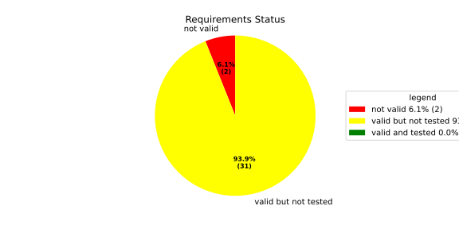
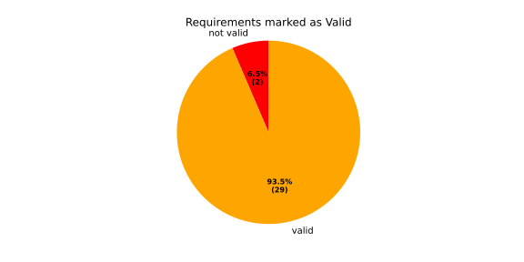
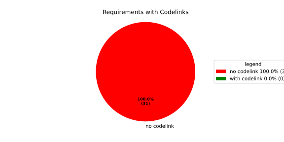
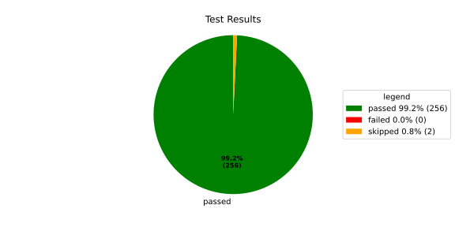
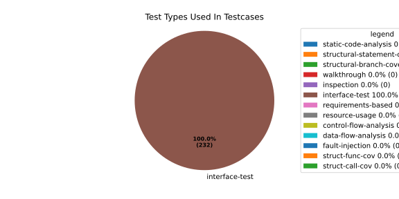
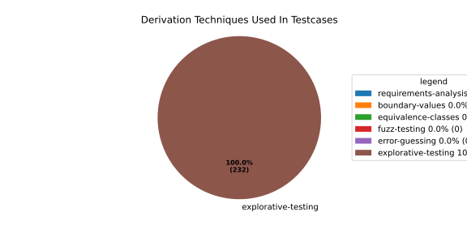

Verification Statistics#
Overview#

In Detail#



Failed Tests
Hint: This table should be empty. Before a PR can be merged all tests have to be successful.
No needs passed the filters
Skipped / Disabled Tests
testcase |
Result |
Fully Verifies |
Partially Verifies |
Test Type |
Derivation Technique |
link |
|---|---|---|---|---|---|---|
ValidateRangeTest/4__RejectsValueAboveMax |
skipped |
interface-test |
explorative-testing |
|||
ValidateRangeTest/4__RejectsValueBelowMin |
skipped |
interface-test |
explorative-testing |
All passed Tests#
testcase |
Result |
Fully Verifies |
Partially Verifies |
Test Type |
Derivation Technique |
link |
|---|---|---|---|---|---|---|
AliveImplTest__DoesNotThrowWhenInterfacePathEnvVarIsSet |
passed |
interface-test |
explorative-testing |
testcase__AliveImplTest__DoesNotThrowWhenInterfacePathEnvVarIsSet_xpewu |
||
AliveImplTest__ReportCheckpointSafeWhenNotConnected |
passed |
interface-test |
explorative-testing |
testcase__AliveImplTest__ReportCheckpointSafeWhenNotConnected_ppvuc |
||
AliveImplTest__ThrowsWhenInterfacePathEnvVarIsNotSet |
passed |
interface-test |
explorative-testing |
testcase__AliveImplTest__ThrowsWhenInterfacePathEnvVarIsNotSet_ekxfw |
||
AliveSupervisionTest__AliveDebouncesThroughFailedBeforeExpired |
passed |
interface-test |
explorative-testing |
testcase__AliveSupervisionTest__AliveDebouncesThroughFailedBeforeExpired_mlnbe |
||
AliveSupervisionTest__AliveReportsEnqueueFailureWhenRingBufferFull |
passed |
interface-test |
explorative-testing |
testcase__AliveSupervisionTest__AliveReportsEnqueueFailureWhenRingBufferFull_byhrd |
||
AliveSupervisionTest__AliveStaysOkWithCorrectHeartbeats |
passed |
interface-test |
explorative-testing |
testcase__AliveSupervisionTest__AliveStaysOkWithCorrectHeartbeats_vekof |
||
AliveSupervisionTest__AliveTransitionsOkToExpiredOnMissingHeartbeat |
passed |
interface-test |
explorative-testing |
testcase__AliveSupervisionTest__AliveTransitionsOkToExpiredOnMissingHeartbeat_jymxo |
||
AliveSupervisionTest__DeactivatesOnProcessCrash |
passed |
interface-test |
explorative-testing |
testcase__AliveSupervisionTest__DeactivatesOnProcessCrash_ypejs |
||
AliveSupervisionTest__DeactivatesOnProcessSigterm |
passed |
interface-test |
explorative-testing |
testcase__AliveSupervisionTest__DeactivatesOnProcessSigterm_hzaal |
||
AliveSupervisionTest__IgnoresIrrelevantProcessStates |
passed |
interface-test |
explorative-testing |
testcase__AliveSupervisionTest__IgnoresIrrelevantProcessStates_aolvb |
||
AliveSupervisionTest__MaxIndicationViolationExpires |
passed |
interface-test |
explorative-testing |
testcase__AliveSupervisionTest__MaxIndicationViolationExpires_whhhi |
||
AliveSupervisionTest__ReactivatesAfterCrash |
passed |
interface-test |
explorative-testing |
|||
ApplicationTypes/ApplicationTypeTest__ConvertsToExpectedValue/Native |
passed |
interface-test |
explorative-testing |
testcase__ApplicationTypes/ApplicationTypeTest__ConvertsToExpectedValue/Native_yxxcz |
||
ApplicationTypes/ApplicationTypeTest__ConvertsToExpectedValue/Reporting |
passed |
interface-test |
explorative-testing |
testcase__ApplicationTypes/ApplicationTypeTest__ConvertsToExpectedValue/Reporting_wcfwr |
||
ApplicationTypes/ApplicationTypeTest__ConvertsToExpectedValue/ReportingAndSupervised |
passed |
interface-test |
explorative-testing |
testcase__ApplicationTypes/ApplicationTypeTest__ConvertsToExpectedValue/ReportingAndSupervised_yxgad |
||
ApplicationTypes/ApplicationTypeTest__ConvertsToExpectedValue/StateManager |
passed |
interface-test |
explorative-testing |
testcase__ApplicationTypes/ApplicationTypeTest__ConvertsToExpectedValue/StateManager_ivuzc |
||
ConverterTest__ConvertAliveSupervisionMissingCycleReturnsError |
passed |
interface-test |
explorative-testing |
testcase__ConverterTest__ConvertAliveSupervisionMissingCycleReturnsError_bifzg |
||
ConverterTest__ConvertAliveSupervisionNullReturnsDefault |
passed |
interface-test |
explorative-testing |
testcase__ConverterTest__ConvertAliveSupervisionNullReturnsDefault_clyua |
||
ConverterTest__ConvertAliveSupervisionValid |
passed |
interface-test |
explorative-testing |
|||
ConverterTest__ConvertApplicationProfileMissingSelfTerminatingReturnsError |
passed |
interface-test |
explorative-testing |
testcase__ConverterTest__ConvertApplicationProfileMissingSelfTerminatingReturnsError_zddjb |
||
ConverterTest__ConvertApplicationProfileMissingTypeReturnsError |
passed |
interface-test |
explorative-testing |
testcase__ConverterTest__ConvertApplicationProfileMissingTypeReturnsError_zrfcs |
||
ConverterTest__ConvertApplicationProfileValid |
passed |
interface-test |
explorative-testing |
testcase__ConverterTest__ConvertApplicationProfileValid_oohxq |
||
ConverterTest__ConvertComponentAliveSupervisionBothIndicationsAbsentReturnsError |
passed |
interface-test |
explorative-testing |
testcase__ConverterTest__ConvertComponentAliveSupervisionBothIndicationsAbsentReturnsError_gvtfi |
||
ConverterTest__ConvertComponentAliveSupervisionMissingReportingCycleReturnsError |
passed |
interface-test |
explorative-testing |
testcase__ConverterTest__ConvertComponentAliveSupervisionMissingReportingCycleReturnsError_ajymy |
||
ConverterTest__ConvertComponentAliveSupervisionMissingToleranceReturnsError |
passed |
interface-test |
explorative-testing |
testcase__ConverterTest__ConvertComponentAliveSupervisionMissingToleranceReturnsError_lgrhj |
||
ConverterTest__ConvertComponentAliveSupervisionNullReturnsDefault |
passed |
interface-test |
explorative-testing |
testcase__ConverterTest__ConvertComponentAliveSupervisionNullReturnsDefault_xhaus |
||
ConverterTest__ConvertComponentAliveSupervisionOnlyMaxIndicationsPresent |
passed |
interface-test |
explorative-testing |
testcase__ConverterTest__ConvertComponentAliveSupervisionOnlyMaxIndicationsPresent_smwht |
||
ConverterTest__ConvertComponentAliveSupervisionOnlyMinIndicationsPresent |
passed |
interface-test |
explorative-testing |
testcase__ConverterTest__ConvertComponentAliveSupervisionOnlyMinIndicationsPresent_ybbrr |
||
ConverterTest__ConvertComponentAliveSupervisionValid |
passed |
interface-test |
explorative-testing |
testcase__ConverterTest__ConvertComponentAliveSupervisionValid_ijedh |
||
ConverterTest__ConvertComponentsValid |
passed |
interface-test |
explorative-testing |
|||
ConverterTest__ConvertComponentsWithInvalidComponentReturnsError |
passed |
interface-test |
explorative-testing |
testcase__ConverterTest__ConvertComponentsWithInvalidComponentReturnsError_wridc |
||
ConverterTest__ConvertComponentValid |
passed |
interface-test |
explorative-testing |
|||
ConverterTest__ConvertDeploymentConfigMissingReadyTimeoutReturnsError |
passed |
interface-test |
explorative-testing |
testcase__ConverterTest__ConvertDeploymentConfigMissingReadyTimeoutReturnsError_ljzfl |
||
ConverterTest__ConvertDeploymentConfigMissingShutdownTimeoutReturnsError |
passed |
interface-test |
explorative-testing |
testcase__ConverterTest__ConvertDeploymentConfigMissingShutdownTimeoutReturnsError_vyqye |
||
ConverterTest__ConvertDeploymentConfigValid |
passed |
interface-test |
explorative-testing |
|||
ConverterTest__ConvertEnvironmentalVariables |
passed |
interface-test |
explorative-testing |
testcase__ConverterTest__ConvertEnvironmentalVariables_fnhgo |
||
ConverterTest__ConvertEnvironmentalVariablesNullReturnsEmpty |
passed |
interface-test |
explorative-testing |
testcase__ConverterTest__ConvertEnvironmentalVariablesNullReturnsEmpty_vglrx |
||
ConverterTest__ConvertFallbackRunTargetMissingTimeoutReturnsError |
passed |
interface-test |
explorative-testing |
testcase__ConverterTest__ConvertFallbackRunTargetMissingTimeoutReturnsError_aevly |
||
ConverterTest__ConvertFallbackRunTargetValid |
passed |
interface-test |
explorative-testing |
testcase__ConverterTest__ConvertFallbackRunTargetValid_nexxj |
||
ConverterTest__ConvertReadyConditionMissingProcessStateReturnsError |
passed |
interface-test |
explorative-testing |
testcase__ConverterTest__ConvertReadyConditionMissingProcessStateReturnsError_ileav |
||
ConverterTest__ConvertReadyConditionValid |
passed |
interface-test |
explorative-testing |
|||
ConverterTest__ConvertRestartActionMissingFieldsReturnsError |
passed |
interface-test |
explorative-testing |
testcase__ConverterTest__ConvertRestartActionMissingFieldsReturnsError_aapjb |
||
ConverterTest__ConvertRestartActionNullReturnsNullopt |
passed |
interface-test |
explorative-testing |
testcase__ConverterTest__ConvertRestartActionNullReturnsNullopt_ifvyd |
||
ConverterTest__ConvertRestartActionValid |
passed |
interface-test |
explorative-testing |
|||
ConverterTest__ConvertRunTargetMissingTransitionTimeoutReturnsError |
passed |
interface-test |
explorative-testing |
testcase__ConverterTest__ConvertRunTargetMissingTransitionTimeoutReturnsError_ynekv |
||
ConverterTest__ConvertRunTargetsValid |
passed |
interface-test |
explorative-testing |
|||
ConverterTest__ConvertRunTargetsWithInvalidRunTargetReturnsError |
passed |
interface-test |
explorative-testing |
testcase__ConverterTest__ConvertRunTargetsWithInvalidRunTargetReturnsError_ldlox |
||
ConverterTest__ConvertRunTargetValid |
passed |
interface-test |
explorative-testing |
|||
ConverterTest__ConvertSandboxMissingGidReturnsError |
passed |
interface-test |
explorative-testing |
testcase__ConverterTest__ConvertSandboxMissingGidReturnsError_veeel |
||
ConverterTest__ConvertSandboxMissingSchedulingPolicyReturnsError |
passed |
interface-test |
explorative-testing |
testcase__ConverterTest__ConvertSandboxMissingSchedulingPolicyReturnsError_pkfts |
||
ConverterTest__ConvertSandboxMissingSchedulingPriorityReturnsError |
passed |
interface-test |
explorative-testing |
testcase__ConverterTest__ConvertSandboxMissingSchedulingPriorityReturnsError_xzdho |
||
ConverterTest__ConvertSandboxMissingUidReturnsError |
passed |
interface-test |
explorative-testing |
testcase__ConverterTest__ConvertSandboxMissingUidReturnsError_ogfku |
||
ConverterTest__ConvertSandboxSupplementaryGidOutOfRangeReturnsError |
passed |
interface-test |
explorative-testing |
testcase__ConverterTest__ConvertSandboxSupplementaryGidOutOfRangeReturnsError_zavpx |
||
ConverterTest__ConvertSandboxUidOutOfRangeReturnsError |
passed |
interface-test |
explorative-testing |
testcase__ConverterTest__ConvertSandboxUidOutOfRangeReturnsError_mcuaf |
||
ConverterTest__ConvertSandboxValid |
passed |
interface-test |
explorative-testing |
|||
ConverterTest__ConvertSwitchRunTargetActionNullReturnsNullopt |
passed |
interface-test |
explorative-testing |
testcase__ConverterTest__ConvertSwitchRunTargetActionNullReturnsNullopt_zmitx |
||
ConverterTest__ConvertSwitchRunTargetActionValid |
passed |
interface-test |
explorative-testing |
testcase__ConverterTest__ConvertSwitchRunTargetActionValid_tdklr |
||
ConverterTest__ConvertWatchdogMissingDeactivateReturnsError |
passed |
interface-test |
explorative-testing |
testcase__ConverterTest__ConvertWatchdogMissingDeactivateReturnsError_gzwjt |
||
ConverterTest__ConvertWatchdogMissingMagicCloseReturnsError |
passed |
interface-test |
explorative-testing |
testcase__ConverterTest__ConvertWatchdogMissingMagicCloseReturnsError_gexxk |
||
ConverterTest__ConvertWatchdogMissingMaxTimeoutReturnsError |
passed |
interface-test |
explorative-testing |
testcase__ConverterTest__ConvertWatchdogMissingMaxTimeoutReturnsError_lffxm |
||
ConverterTest__ConvertWatchdogNullReturnsNullopt |
passed |
interface-test |
explorative-testing |
testcase__ConverterTest__ConvertWatchdogNullReturnsNullopt_irsdk |
||
ConverterTest__ConvertWatchdogValid |
passed |
interface-test |
explorative-testing |
|||
DeadlineFixture__Start_AlreadyRunning |
passed |
interface-test |
explorative-testing |
|||
DeadlineFixture__Start_Succeeds |
passed |
interface-test |
explorative-testing |
|||
DeadlineMonitorBuilderFixture__AddDeadline_Succeeds |
passed |
interface-test |
explorative-testing |
testcase__DeadlineMonitorBuilderFixture__AddDeadline_Succeeds_nagke |
||
DeadlineMonitorBuilderFixture__New_Succeeds |
passed |
interface-test |
explorative-testing |
|||
DeadlineMonitorFixture__GetDeadline_Succeeds |
passed |
interface-test |
explorative-testing |
testcase__DeadlineMonitorFixture__GetDeadline_Succeeds_tmltf |
||
DeadlineMonitorFixture__GetDeadline_Unknown |
passed |
interface-test |
explorative-testing |
|||
EnumConversionTest__ConvertSchedulingPolicyUnsupported |
passed |
interface-test |
explorative-testing |
testcase__EnumConversionTest__ConvertSchedulingPolicyUnsupported_iavqm |
||
EnvironmentTest__AddIncreasesSize |
passed |
interface-test |
explorative-testing |
|||
EnvironmentTest__DefaultConstructedIsEmpty |
passed |
interface-test |
explorative-testing |
|||
EnvironmentTest__EmptyEnvironmentEnvpIsNullTerminated |
passed |
interface-test |
explorative-testing |
testcase__EnvironmentTest__EmptyEnvironmentEnvpIsNullTerminated_wwumw |
||
EnvironmentTest__EnvpReturnsNullTerminatedArray |
passed |
interface-test |
explorative-testing |
testcase__EnvironmentTest__EnvpReturnsNullTerminatedArray_aubkv |
||
EnvironmentTest__EnvpWithMultipleEntries |
passed |
interface-test |
explorative-testing |
|||
EnvironmentTest__MoveAssignmentPreservesEntries |
passed |
interface-test |
explorative-testing |
testcase__EnvironmentTest__MoveAssignmentPreservesEntries_vkydj |
||
EnvironmentTest__MoveConstructorPreservesEntries |
passed |
interface-test |
explorative-testing |
testcase__EnvironmentTest__MoveConstructorPreservesEntries_upclt |
||
EnvironmentTest__RangeBasedForLoopWorks |
passed |
interface-test |
explorative-testing |
|||
EnvironmentTest__ReserveAndAddAvoidReallocation |
passed |
interface-test |
explorative-testing |
testcase__EnvironmentTest__ReserveAndAddAvoidReallocation_lgzmu |
||
EnvironmentTest__SsoLengthStringSurvivesReallocation |
passed |
interface-test |
explorative-testing |
testcase__EnvironmentTest__SsoLengthStringSurvivesReallocation_jfmtl |
||
EnvironmentVariableTest__CStrReturnsKeyEqualsValue |
passed |
interface-test |
explorative-testing |
testcase__EnvironmentVariableTest__CStrReturnsKeyEqualsValue_rkwan |
||
EnvironmentVariableTest__EmptyValue |
passed |
interface-test |
explorative-testing |
|||
EnvironmentVariableTest__KeyAndValueAreAccessible |
passed |
interface-test |
explorative-testing |
testcase__EnvironmentVariableTest__KeyAndValueAreAccessible_kcrth |
||
EnvironmentVariableTest__ValueContainingEquals |
passed |
interface-test |
explorative-testing |
testcase__EnvironmentVariableTest__ValueContainingEquals_apzgz |
||
ExecErrorDomainTest__AllKnownCodesHaveDistinctMessages |
passed |
interface-test |
explorative-testing |
testcase__ExecErrorDomainTest__AllKnownCodesHaveDistinctMessages_qpoka |
||
ExecErrorDomainTest__AllKnownCodesReturnNonEmptyMessage |
passed |
interface-test |
explorative-testing |
testcase__ExecErrorDomainTest__AllKnownCodesReturnNonEmptyMessage_bawzg |
||
ExecErrorDomainTest__UnknownCodeReturnsNonEmptyMessage |
passed |
interface-test |
explorative-testing |
testcase__ExecErrorDomainTest__UnknownCodeReturnsNonEmptyMessage_kkwpr |
||
FlatbufferConfigLoaderTest__CorruptedBufferReturnsInvalidFormat |
passed |
interface-test |
explorative-testing |
testcase__FlatbufferConfigLoaderTest__CorruptedBufferReturnsInvalidFormat_twyac |
||
FlatbufferConfigLoaderTest__LoadAliveSupervision |
passed |
interface-test |
explorative-testing |
testcase__FlatbufferConfigLoaderTest__LoadAliveSupervision_hhuux |
||
FlatbufferConfigLoaderTest__LoadBufferFailsWithGenericErrorReturnsGeneralError |
passed |
interface-test |
explorative-testing |
testcase__FlatbufferConfigLoaderTest__LoadBufferFailsWithGenericErrorReturnsGeneralError_kmatm |
||
FlatbufferConfigLoaderTest__LoadBufferFailsWithNoSuchFileReturnsFileNotFound |
passed |
interface-test |
explorative-testing |
testcase__FlatbufferConfigLoaderTest__LoadBufferFailsWithNoSuchFileReturnsFileNotFound_yzlra |
||
FlatbufferConfigLoaderTest__LoadBufferFailsWithPermissionDeniedReturnsInsufficientPermission |
passed |
interface-test |
explorative-testing |
|||
FlatbufferConfigLoaderTest__LoadComponentAliveSupervision |
passed |
interface-test |
explorative-testing |
testcase__FlatbufferConfigLoaderTest__LoadComponentAliveSupervision_fwfad |
||
FlatbufferConfigLoaderTest__LoadEnvironmentalVariables |
passed |
interface-test |
explorative-testing |
testcase__FlatbufferConfigLoaderTest__LoadEnvironmentalVariables_wsosu |
||
FlatbufferConfigLoaderTest__LoadFallbackRunTarget |
passed |
interface-test |
explorative-testing |
testcase__FlatbufferConfigLoaderTest__LoadFallbackRunTarget_wduqm |
||
FlatbufferConfigLoaderTest__LoadMinimalConfig |
passed |
interface-test |
explorative-testing |
testcase__FlatbufferConfigLoaderTest__LoadMinimalConfig_hdkck |
||
FlatbufferConfigLoaderTest__LoadMultipleComponents |
passed |
interface-test |
explorative-testing |
testcase__FlatbufferConfigLoaderTest__LoadMultipleComponents_abpom |
||
FlatbufferConfigLoaderTest__LoadRestartRecoveryAction |
passed |
interface-test |
explorative-testing |
testcase__FlatbufferConfigLoaderTest__LoadRestartRecoveryAction_wyfqg |
||
FlatbufferConfigLoaderTest__LoadRunTargets |
passed |
interface-test |
explorative-testing |
|||
FlatbufferConfigLoaderTest__LoadSandbox |
passed |
interface-test |
explorative-testing |
|||
FlatbufferConfigLoaderTest__LoadSingleComponent |
passed |
interface-test |
explorative-testing |
testcase__FlatbufferConfigLoaderTest__LoadSingleComponent_yidty |
||
FlatbufferConfigLoaderTest__LoadSwitchRunTargetAction |
passed |
interface-test |
explorative-testing |
testcase__FlatbufferConfigLoaderTest__LoadSwitchRunTargetAction_uchgp |
||
FlatbufferConfigLoaderTest__LoadWatchdog |
passed |
interface-test |
explorative-testing |
|||
FlatbufferConfigLoaderTest__MissingSchemaVersionReturnsInvalidFormat |
passed |
interface-test |
explorative-testing |
testcase__FlatbufferConfigLoaderTest__MissingSchemaVersionReturnsInvalidFormat_qqmfn |
||
FlatbufferConfigLoaderTest__OptionalReadyConditionAbsent |
passed |
interface-test |
explorative-testing |
testcase__FlatbufferConfigLoaderTest__OptionalReadyConditionAbsent_lhddx |
||
FlatbufferConfigLoaderTest__OptionalWatchdogAbsent |
passed |
interface-test |
explorative-testing |
testcase__FlatbufferConfigLoaderTest__OptionalWatchdogAbsent_pkhkp |
||
FlatbufferConfigLoaderTest__WrongSchemaVersionReturnsUnsupportedVersion |
passed |
interface-test |
explorative-testing |
testcase__FlatbufferConfigLoaderTest__WrongSchemaVersionReturnsUnsupportedVersion_zrbjv |
||
HealthMonitor__GetDeadlineMonitor_Available |
passed |
|||||
HealthMonitor__GetDeadlineMonitor_Taken |
passed |
|||||
HealthMonitor__GetDeadlineMonitor_Unknown |
passed |
|||||
HealthMonitor__GetHeartbeatMonitor_Available |
passed |
testcase__HealthMonitor__GetHeartbeatMonitor_Available_aacat |
||||
HealthMonitor__GetHeartbeatMonitor_Taken |
passed |
|||||
HealthMonitor__GetHeartbeatMonitor_Unknown |
passed |
|||||
HealthMonitor__GetLogicMonitor_Available |
passed |
|||||
HealthMonitor__GetLogicMonitor_Taken |
passed |
|||||
HealthMonitor__GetLogicMonitor_Unknown |
passed |
|||||
HealthMonitor__Start_MonitorsNotTaken |
passed |
|||||
HealthMonitor__Start_Succeeds |
passed |
|||||
HealthMonitorBuilderFixture__Build_InvalidCycles |
passed |
interface-test |
explorative-testing |
testcase__HealthMonitorBuilderFixture__Build_InvalidCycles_pdigk |
||
HealthMonitorBuilderFixture__Build_NoMonitors |
passed |
interface-test |
explorative-testing |
testcase__HealthMonitorBuilderFixture__Build_NoMonitors_ktcve |
||
HealthMonitorBuilderFixture__Build_Succeeds |
passed |
interface-test |
explorative-testing |
|||
HealthMonitorBuilderFixture__New_Succeeds |
passed |
interface-test |
explorative-testing |
|||
HealthMonitorTest__Integrated |
passed |
interface-test |
explorative-testing |
|||
HeartbeatMonitor__Heartbeat_Succeeds |
passed |
interface-test |
explorative-testing |
|||
HeartbeatMonitorBuilder__New_Succeeds |
passed |
interface-test |
explorative-testing |
|||
IdentifierHashTest__IdentifierHash_default_created |
passed |
interface-test |
explorative-testing |
testcase__IdentifierHashTest__IdentifierHash_default_created_yhhvi |
||
IdentifierHashTest__IdentifierHash_EqualityOperators |
passed |
interface-test |
explorative-testing |
testcase__IdentifierHashTest__IdentifierHash_EqualityOperators_nnsuj |
||
IdentifierHashTest__IdentifierHash_invalid_hash_no_string_representation |
passed |
interface-test |
explorative-testing |
testcase__IdentifierHashTest__IdentifierHash_invalid_hash_no_string_representation_rxowr |
||
IdentifierHashTest__IdentifierHash_LessThanOperator |
passed |
interface-test |
explorative-testing |
testcase__IdentifierHashTest__IdentifierHash_LessThanOperator_rnbax |
||
IdentifierHashTest__IdentifierHash_no_dangling_pointer_after_source_string_dies |
passed |
interface-test |
explorative-testing |
testcase__IdentifierHashTest__IdentifierHash_no_dangling_pointer_after_source_string_dies_qsjin |
||
IdentifierHashTest__IdentifierHash_with_string_created |
passed |
interface-test |
explorative-testing |
testcase__IdentifierHashTest__IdentifierHash_with_string_created_aygdm |
||
IdentifierHashTest__IdentifierHash_with_string_view_created |
passed |
interface-test |
explorative-testing |
testcase__IdentifierHashTest__IdentifierHash_with_string_view_created_dbpol |
||
LogicMonitorBuilderFixture__AddState_Succeeds |
passed |
interface-test |
explorative-testing |
testcase__LogicMonitorBuilderFixture__AddState_Succeeds_axdxj |
||
LogicMonitorBuilderFixture__New_Succeeds |
passed |
interface-test |
explorative-testing |
|||
LogicMonitorFixture__State_Invalid |
passed |
interface-test |
explorative-testing |
|||
LogicMonitorFixture__State_Succeeds |
passed |
interface-test |
explorative-testing |
|||
LogicMonitorFixture__Transition_Invalid |
passed |
interface-test |
explorative-testing |
|||
LogicMonitorFixture__Transition_Succeeds |
passed |
interface-test |
explorative-testing |
|||
LogicMonitorFixture__Transition_Unknown |
passed |
interface-test |
explorative-testing |
|||
MonitorIfDaemonTest__Active_CheckpointDataForwarded |
passed |
interface-test |
explorative-testing |
testcase__MonitorIfDaemonTest__Active_CheckpointDataForwarded_evumz |
||
MonitorIfDaemonTest__Active_FutureTimestamp_NotForwardedInCurrentCycle |
passed |
interface-test |
explorative-testing |
testcase__MonitorIfDaemonTest__Active_FutureTimestamp_NotForwardedInCurrentCycle_oycau |
||
MonitorIfDaemonTest__Active_FutureTimestampCheckpoint_ConsumedInLaterCycle |
passed |
interface-test |
explorative-testing |
testcase__MonitorIfDaemonTest__Active_FutureTimestampCheckpoint_ConsumedInLaterCycle_veyyy |
||
MonitorIfDaemonTest__Active_MultipleCheckpointsInOneCycle_AllForwarded |
passed |
interface-test |
explorative-testing |
testcase__MonitorIfDaemonTest__Active_MultipleCheckpointsInOneCycle_AllForwarded_gmbms |
||
MonitorIfDaemonTest__Active_NonMatchingCheckpointId_NotForwarded |
passed |
interface-test |
explorative-testing |
testcase__MonitorIfDaemonTest__Active_NonMatchingCheckpointId_NotForwarded_bohck |
||
MonitorIfDaemonTest__Active_OverflowDetected_TransitionsToInactiveOverflow |
passed |
interface-test |
explorative-testing |
testcase__MonitorIfDaemonTest__Active_OverflowDetected_TransitionsToInactiveOverflow_ovitk |
||
MonitorIfDaemonTest__Active_TwoAttachedCheckpoints_RoutedByCheckpointId |
passed |
interface-test |
explorative-testing |
testcase__MonitorIfDaemonTest__Active_TwoAttachedCheckpoints_RoutedByCheckpointId_skqhd |
||
MonitorIfDaemonTest__GetInterfaceName_ReturnsNameGivenAtConstruction |
passed |
interface-test |
explorative-testing |
testcase__MonitorIfDaemonTest__GetInterfaceName_ReturnsNameGivenAtConstruction_iaemz |
||
MonitorIfDaemonTest__InactiveOverflow_NoProcessRestart_DoesNotRepeatNotification |
passed |
interface-test |
explorative-testing |
testcase__MonitorIfDaemonTest__InactiveOverflow_NoProcessRestart_DoesNotRepeatNotification_gdbxg |
||
MonitorIfDaemonTest__InactiveOverflow_ProcessRestartFlag_ClearedAfterNotification |
passed |
interface-test |
explorative-testing |
testcase__MonitorIfDaemonTest__InactiveOverflow_ProcessRestartFlag_ClearedAfterNotification_pqfyy |
||
MonitorIfDaemonTest__InactiveOverflow_ProcessRestarts_PushesOverflowNotificationAgain |
passed |
interface-test |
explorative-testing |
|||
MonitorIfDaemonTest__InitiallyInactive_CheckForNewData_DoesNotNotifyCheckpoint |
passed |
interface-test |
explorative-testing |
testcase__MonitorIfDaemonTest__InitiallyInactive_CheckForNewData_DoesNotNotifyCheckpoint_wjrfl |
||
MonitorIfDaemonTest__ProcessOff_DeactivatesMonitor_NoFurtherDataForwarded |
passed |
interface-test |
explorative-testing |
testcase__MonitorIfDaemonTest__ProcessOff_DeactivatesMonitor_NoFurtherDataForwarded_uialh |
||
MonitorIfDaemonTest__ProcessOffBeforeActivation_RemainsInactive |
passed |
interface-test |
explorative-testing |
testcase__MonitorIfDaemonTest__ProcessOffBeforeActivation_RemainsInactive_kzzyy |
||
MonitorIfDaemonTest__ProcessRunning_ActivatesMonitorOnNextCheckForNewData |
passed |
interface-test |
explorative-testing |
testcase__MonitorIfDaemonTest__ProcessRunning_ActivatesMonitorOnNextCheckForNewData_fkkmk |
||
MonitorIfDaemonTest__ProcessStarting_AlsoActivatesMonitor |
passed |
interface-test |
explorative-testing |
testcase__MonitorIfDaemonTest__ProcessStarting_AlsoActivatesMonitor_xdkbg |
||
MPMCConcurrentQueueTest_Basic__LvaluePushCopiesItem |
passed |
testcase__MPMCConcurrentQueueTest_Basic__LvaluePushCopiesItem_oysfc |
||||
MPMCConcurrentQueueTest_Basic__PopReturnsNulloptOnSemaphoreWaitFailure |
passed |
testcase__MPMCConcurrentQueueTest_Basic__PopReturnsNulloptOnSemaphoreWaitFailure_rgznm |
||||
MPMCConcurrentQueueTest_Basic__PushAndPopPreservesOrder |
passed |
testcase__MPMCConcurrentQueueTest_Basic__PushAndPopPreservesOrder_aijdb |
||||
MPMCConcurrentQueueTest_Basic__PushAndPopSingleItem |
passed |
testcase__MPMCConcurrentQueueTest_Basic__PushAndPopSingleItem_jrxwz |
||||
MPMCConcurrentQueueTest_Basic__RvaluePushWorksWithMoveOnlyType |
passed |
testcase__MPMCConcurrentQueueTest_Basic__RvaluePushWorksWithMoveOnlyType_cxxaj |
||||
MPMCConcurrentQueueTest_Blocking__PopBlocksUntilItemAvailable |
passed |
testcase__MPMCConcurrentQueueTest_Blocking__PopBlocksUntilItemAvailable_ttwcx |
||||
MPMCConcurrentQueueTest_Blocking__PushBlocksWhenFull |
passed |
testcase__MPMCConcurrentQueueTest_Blocking__PushBlocksWhenFull_ecujf |
||||
MPMCConcurrentQueueTest_Blocking__StopUnblocksBlockedConsumer |
passed |
testcase__MPMCConcurrentQueueTest_Blocking__StopUnblocksBlockedConsumer_snzyr |
||||
MPMCConcurrentQueueTest_Blocking__StopUnblocksBlockedProducer |
passed |
testcase__MPMCConcurrentQueueTest_Blocking__StopUnblocksBlockedProducer_inddu |
||||
MPMCConcurrentQueueTest_MPMC__AllItemsDelivered |
passed |
testcase__MPMCConcurrentQueueTest_MPMC__AllItemsDelivered_ztjqe |
||||
MPMCConcurrentQueueTest_Stop__ItemsAreDroppedAfterStop |
passed |
testcase__MPMCConcurrentQueueTest_Stop__ItemsAreDroppedAfterStop_ragzw |
||||
MPMCConcurrentQueueTest_Stop__PopReturnsNulloptWhenStoppedAndEmpty |
passed |
testcase__MPMCConcurrentQueueTest_Stop__PopReturnsNulloptWhenStoppedAndEmpty_cevga |
||||
MPMCConcurrentQueueTest_Stop__PushReturnsFalseAfterStop |
passed |
testcase__MPMCConcurrentQueueTest_Stop__PushReturnsFalseAfterStop_qqnhw |
||||
MPMCConcurrentQueueTest_Timeout__PushWithTimeoutReturnsFalseWhenFull |
passed |
testcase__MPMCConcurrentQueueTest_Timeout__PushWithTimeoutReturnsFalseWhenFull_aeips |
||||
MPMCConcurrentQueueTest_Timeout__PushWithTimeoutSucceedsWhenSlotAvailable |
passed |
testcase__MPMCConcurrentQueueTest_Timeout__PushWithTimeoutSucceedsWhenSlotAvailable_klzpo |
||||
OsHandlerTest__WaitReturnsError_OsHandlerSleepsAndDoesNotCallFindTerminated |
passed |
interface-test |
explorative-testing |
testcase__OsHandlerTest__WaitReturnsError_OsHandlerSleepsAndDoesNotCallFindTerminated_cibtr |
||
OsHandlerTest__WaitReturnsErrorThenProcessId_HandlerRecoversAndInvokesCallback |
passed |
interface-test |
explorative-testing |
testcase__OsHandlerTest__WaitReturnsErrorThenProcessId_HandlerRecoversAndInvokesCallback_nqstd |
||
OsHandlerTest__WaitReturnsProcessId_FindTerminatedIsCalled |
passed |
interface-test |
explorative-testing |
testcase__OsHandlerTest__WaitReturnsProcessId_FindTerminatedIsCalled_chlsq |
||
OsHandlerTest__WaitReturnsProcessIdBeforeRegistration_LaterRegistrationReceivesStoredTermination |
passed |
interface-test |
explorative-testing |
|||
OsHandlerTest__WaitReturnsUnknownPidWhenMapIsFull_OutOfResourcesPathDoesNotNotifyCallbacks |
passed |
interface-test |
explorative-testing |
|||
OsHandlerTest__WaitReturnsZeroPid_OsHandlerSleepsAndDoesNotCallFindTerminated |
passed |
interface-test |
explorative-testing |
testcase__OsHandlerTest__WaitReturnsZeroPid_OsHandlerSleepsAndDoesNotCallFindTerminated_rkttz |
||
ProcessStateClient_UT__ProcessStateClient_ConstructReceiver_Succeeds |
passed |
interface-test |
explorative-testing |
testcase__ProcessStateClient_UT__ProcessStateClient_ConstructReceiver_Succeeds_hodwy |
||
ProcessStateClient_UT__ProcessStateClient_QueueMaxNumberOfProcesses_Succeeds |
passed |
interface-test |
explorative-testing |
testcase__ProcessStateClient_UT__ProcessStateClient_QueueMaxNumberOfProcesses_Succeeds_qohom |
||
ProcessStateClient_UT__ProcessStateClient_QueueOneProcess_Succeeds |
passed |
interface-test |
explorative-testing |
testcase__ProcessStateClient_UT__ProcessStateClient_QueueOneProcess_Succeeds_tmzfz |
||
ProcessStateClient_UT__ProcessStateClient_QueueOneProcessTooMany_Fails |
passed |
interface-test |
explorative-testing |
testcase__ProcessStateClient_UT__ProcessStateClient_QueueOneProcessTooMany_Fails_sspoj |
||
ProcessStates/ProcessStateTest__ConvertsToExpectedValue/Running |
passed |
interface-test |
explorative-testing |
testcase__ProcessStates/ProcessStateTest__ConvertsToExpectedValue/Running_hinlr |
||
ProcessStates/ProcessStateTest__ConvertsToExpectedValue/Terminated |
passed |
interface-test |
explorative-testing |
testcase__ProcessStates/ProcessStateTest__ConvertsToExpectedValue/Terminated_zrytn |
||
RecoveryClientTest__FIFOOrdering |
passed |
interface-test |
explorative-testing |
|||
RecoveryClientTest__GetNextRequest |
passed |
interface-test |
explorative-testing |
|||
RecoveryClientTest__GetNextRequestEmpty |
passed |
interface-test |
explorative-testing |
|||
RecoveryClientTest__RingBufferFull |
passed |
interface-test |
explorative-testing |
|||
RecoveryClientTest__SendSingleRequest |
passed |
interface-test |
explorative-testing |
|||
RunTest__AsPosixProcessCreatesAndDestroysLifeCycleManager |
passed |
testcase__RunTest__AsPosixProcessCreatesAndDestroysLifeCycleManager_sooex |
||||
RunTest__AsPosixProcessForwardsConstructorArgsToApplication |
passed |
testcase__RunTest__AsPosixProcessForwardsConstructorArgsToApplication_dmeur |
||||
RunTest__AsPosixProcessForwardsNonZeroExitCode |
passed |
testcase__RunTest__AsPosixProcessForwardsNonZeroExitCode_lldqd |
||||
RunTest__AsPosixProcessPassesCorrectApplicationTypeToRun |
passed |
testcase__RunTest__AsPosixProcessPassesCorrectApplicationTypeToRun_ajqwz |
||||
RunTest__AsPosixProcessReturnsZeroExitCode |
passed |
|||||
RunTest__RunApplicationFreeFunctionDelegatesToAsPosixProcess |
passed |
testcase__RunTest__RunApplicationFreeFunctionDelegatesToAsPosixProcess_ccing |
||||
RunTest__RunConstructorPassesArgcArgvToApplicationContext |
passed |
testcase__RunTest__RunConstructorPassesArgcArgvToApplicationContext_agerd |
||||
SafeProcessMapTest__ConcurrentFindAndInsertFromMultipleThreads |
passed |
interface-test |
explorative-testing |
testcase__SafeProcessMapTest__ConcurrentFindAndInsertFromMultipleThreads_kzfyg |
||
SafeProcessMapTest__ConcurrentInsertAndFindFromMultipleThreads |
passed |
interface-test |
explorative-testing |
testcase__SafeProcessMapTest__ConcurrentInsertAndFindFromMultipleThreads_hnyqj |
||
SafeProcessMapTest__ConstructWithZeroCapacity |
passed |
interface-test |
explorative-testing |
testcase__SafeProcessMapTest__ConstructWithZeroCapacity_gjmqg |
||
SafeProcessMapTest__FindTerminatedInsertsEntryWhenPidNotPresent |
passed |
interface-test |
explorative-testing |
testcase__SafeProcessMapTest__FindTerminatedInsertsEntryWhenPidNotPresent_ixtlt |
||
SafeProcessMapTest__FindTerminatedMatchesExistingInsertAndCallsCallback |
passed |
interface-test |
explorative-testing |
testcase__SafeProcessMapTest__FindTerminatedMatchesExistingInsertAndCallsCallback_ehuzb |
||
SafeProcessMapTest__FindTerminatedSamePidTwiceYieldsUntilInsertResolves |
passed |
interface-test |
explorative-testing |
testcase__SafeProcessMapTest__FindTerminatedSamePidTwiceYieldsUntilInsertResolves_hsekx |
||
SafeProcessMapTest__FindTerminatedWithNegativePidReturnsInvalid |
passed |
interface-test |
explorative-testing |
testcase__SafeProcessMapTest__FindTerminatedWithNegativePidReturnsInvalid_dewoh |
||
SafeProcessMapTest__FindTerminatedWorksAtMaxTreeDepth |
passed |
interface-test |
explorative-testing |
testcase__SafeProcessMapTest__FindTerminatedWorksAtMaxTreeDepth_adtzi |
||
SafeProcessMapTest__InsertBeyondCapacityReturnsOutOfMemory |
passed |
interface-test |
explorative-testing |
testcase__SafeProcessMapTest__InsertBeyondCapacityReturnsOutOfMemory_qjnie |
||
SafeProcessMapTest__InsertIntoEmptyTreeReturnsZero |
passed |
interface-test |
explorative-testing |
testcase__SafeProcessMapTest__InsertIntoEmptyTreeReturnsZero_zfbaq |
||
SafeProcessMapTest__InsertMatchesExistingFindTerminatedEntry |
passed |
interface-test |
explorative-testing |
testcase__SafeProcessMapTest__InsertMatchesExistingFindTerminatedEntry_fuwrp |
||
SafeProcessMapTest__InsertMultipleNodesThenFindTerminatedRemovesAll |
passed |
interface-test |
explorative-testing |
testcase__SafeProcessMapTest__InsertMultipleNodesThenFindTerminatedRemovesAll_fvowh |
||
SafeProcessMapTest__InsertSamePidTwiceYieldsUntilFindTerminatedResolves |
passed |
interface-test |
explorative-testing |
testcase__SafeProcessMapTest__InsertSamePidTwiceYieldsUntilFindTerminatedResolves_wzwyb |
||
SchedulingPolicies/SchedulingPolicyTest__ConvertsToExpectedPosixValue/SCHED_FIFO |
passed |
interface-test |
explorative-testing |
testcase__SchedulingPolicies/SchedulingPolicyTest__ConvertsToExpectedPosixValue/SCHED_FIFO_soddq |
||
SchedulingPolicies/SchedulingPolicyTest__ConvertsToExpectedPosixValue/SCHED_OTHER |
passed |
interface-test |
explorative-testing |
testcase__SchedulingPolicies/SchedulingPolicyTest__ConvertsToExpectedPosixValue/SCHED_OTHER_oigmk |
||
SchedulingPolicies/SchedulingPolicyTest__ConvertsToExpectedPosixValue/SCHED_RR |
passed |
interface-test |
explorative-testing |
testcase__SchedulingPolicies/SchedulingPolicyTest__ConvertsToExpectedPosixValue/SCHED_RR_pcjci |
||
score/health_monitor/src/rust/test-510566969/tests |
passed |
testcase__score/health_monitor/src/rust/test-510566969/tests_kjjlw |
||||
score/health_monitor/src/rust/test-827801879/loom_tests |
passed |
testcase__score/health_monitor/src/rust/test-827801879/loom_tests_cpmix |
||||
SecondsToMsTest__ConvertsPositiveValue |
passed |
interface-test |
explorative-testing |
|||
SecondsToMsTest__ConvertsZero |
passed |
interface-test |
explorative-testing |
|||
SecondsToMsTest__RejectsNegativeValue |
passed |
interface-test |
explorative-testing |
|||
SecondsToMsTest__RejectsOverflow |
passed |
interface-test |
explorative-testing |
|||
SecondsToMsTest__RejectsSubMillisecond |
passed |
interface-test |
explorative-testing |
|||
StringHelperTest__ConvertGidVectorReturnsEmptyWhenNull |
passed |
interface-test |
explorative-testing |
testcase__StringHelperTest__ConvertGidVectorReturnsEmptyWhenNull_jmcsr |
||
StringHelperTest__ConvertStringVectorReturnsEmptyWhenNull |
passed |
interface-test |
explorative-testing |
testcase__StringHelperTest__ConvertStringVectorReturnsEmptyWhenNull_zsuvv |
||
StringHelperTest__SafeStringReturnsEmptyWhenNull |
passed |
interface-test |
explorative-testing |
testcase__StringHelperTest__SafeStringReturnsEmptyWhenNull_crelr |
||
StringHelperTest__SafeStringReturnsValueWhenNotNull |
passed |
interface-test |
explorative-testing |
testcase__StringHelperTest__SafeStringReturnsValueWhenNotNull_anbko |
||
test_complex_monitoring |
passed |
|||||
test_crash_on_startup |
passed |
|||||
test_incorrect_config_non_reporting |
passed |
|||||
test_process_crash_monitoring |
passed |
|||||
test_process_launch_args |
passed |
|||||
test_process_wrong_binary_failure |
passed |
|||||
test_recovery_action_complex_rep_failure |
passed |
|||||
test_recovery_action_simple_rep_failure |
passed |
|||||
test_smoke |
passed |
|||||
test_switch_run_target |
passed |
|||||
TimeRangeFixture__MinMax |
passed |
interface-test |
explorative-testing |
|||
TimeRangeFixture__New_InvalidOrder |
passed |
interface-test |
explorative-testing |
|||
TimeRangeFixture__New_Succeeds |
passed |
interface-test |
explorative-testing |
|||
ValidateRangeTest/0__AcceptsMaxBoundary |
passed |
interface-test |
explorative-testing |
|||
ValidateRangeTest/0__AcceptsMinBoundary |
passed |
interface-test |
explorative-testing |
|||
ValidateRangeTest/0__AcceptsZero |
passed |
interface-test |
explorative-testing |
|||
ValidateRangeTest/0__RejectsValueAboveMax |
passed |
interface-test |
explorative-testing |
|||
ValidateRangeTest/0__RejectsValueBelowMin |
passed |
interface-test |
explorative-testing |
|||
ValidateRangeTest/1__AcceptsMaxBoundary |
passed |
interface-test |
explorative-testing |
|||
ValidateRangeTest/1__AcceptsMinBoundary |
passed |
interface-test |
explorative-testing |
|||
ValidateRangeTest/1__AcceptsZero |
passed |
interface-test |
explorative-testing |
|||
ValidateRangeTest/1__RejectsValueAboveMax |
passed |
interface-test |
explorative-testing |
|||
ValidateRangeTest/1__RejectsValueBelowMin |
passed |
interface-test |
explorative-testing |
|||
ValidateRangeTest/2__AcceptsMaxBoundary |
passed |
interface-test |
explorative-testing |
|||
ValidateRangeTest/2__AcceptsMinBoundary |
passed |
interface-test |
explorative-testing |
|||
ValidateRangeTest/2__AcceptsZero |
passed |
interface-test |
explorative-testing |
|||
ValidateRangeTest/2__RejectsValueAboveMax |
passed |
interface-test |
explorative-testing |
|||
ValidateRangeTest/2__RejectsValueBelowMin |
passed |
interface-test |
explorative-testing |
|||
ValidateRangeTest/3__AcceptsMaxBoundary |
passed |
interface-test |
explorative-testing |
|||
ValidateRangeTest/3__AcceptsMinBoundary |
passed |
interface-test |
explorative-testing |
|||
ValidateRangeTest/3__AcceptsZero |
passed |
interface-test |
explorative-testing |
|||
ValidateRangeTest/3__RejectsValueAboveMax |
passed |
interface-test |
explorative-testing |
|||
ValidateRangeTest/3__RejectsValueBelowMin |
passed |
interface-test |
explorative-testing |
|||
ValidateRangeTest/4__AcceptsMaxBoundary |
passed |
interface-test |
explorative-testing |
|||
ValidateRangeTest/4__AcceptsMinBoundary |
passed |
interface-test |
explorative-testing |
|||
ValidateRangeTest/4__AcceptsZero |
passed |
interface-test |
explorative-testing |
Details About Testcases#


Test Log Files#
tests-report/tests/integration/process_simple_rep_failure/process_simple_rep_failure/test.log
exec ${PAGER:-/usr/bin/less} "$0" || exit 1
Executing tests from //tests/integration/process_simple_rep_failure:process_simple_rep_failure
-----------------------------------------------------------------------------
============================= test session starts ==============================
platform linux -- Python 3.12.12, pytest-9.0.3, pluggy-1.5.0
rootdir: /home/runner/.bazel/sandbox/processwrapper-sandbox/1252/execroot/_main/bazel-out/k8-fastbuild/bin/tests/integration/process_simple_rep_failure/process_simple_rep_failure.runfiles/score_itf+
configfile: pytest.ini
collected 1 item
../score_itf+::test_recovery_action_simple_rep_failure
-------------------------------- live log setup --------------------------------
[2026-07-10 09:12:29.059] [INFO] [score.itf.plugins.docker] Executing custom image bootstrap command: tests/utils/environments/x86_64-linux/x86_64-linux.sh
[2026-07-10 09:12:29.285] [DEBUG] [docker.utils.config] Trying paths: ['/home/runner/.docker/config.json', '/home/runner/.dockercfg']
[2026-07-10 09:12:29.285] [DEBUG] [docker.utils.config] Found file at path: /home/runner/.docker/config.json
[2026-07-10 09:12:29.285] [DEBUG] [docker.auth] Found 'auths' section
[2026-07-10 09:12:29.286] [DEBUG] [docker.auth] Found entry (registry='https://index.docker.io/v1/', username='githubactions')
[2026-07-10 09:12:29.310] [DEBUG] [urllib3.connectionpool] http://localhost:None "GET /version HTTP/1.1" 200 823
[2026-07-10 09:12:29.357] [DEBUG] [urllib3.connectionpool] http://localhost:None "POST /v1.48/containers/create HTTP/1.1" 201 88
[2026-07-10 09:12:29.362] [DEBUG] [urllib3.connectionpool] http://localhost:None "GET /v1.48/containers/ab94763b0a97cd87d9de795231eb68f7abb7f7bd63f6ea91346664f86fe5f6e0/json HTTP/1.1" 200 None
[2026-07-10 09:12:29.517] [DEBUG] [urllib3.connectionpool] http://localhost:None "POST /v1.48/containers/ab94763b0a97cd87d9de795231eb68f7abb7f7bd63f6ea91346664f86fe5f6e0/start HTTP/1.1" 204 0
[2026-07-10 09:12:29.520] [DEBUG] [docker.utils.config] Trying paths: ['/home/runner/.docker/config.json', '/home/runner/.dockercfg']
[2026-07-10 09:12:29.520] [DEBUG] [docker.utils.config] Found file at path: /home/runner/.docker/config.json
[2026-07-10 09:12:29.520] [DEBUG] [docker.auth] Found 'auths' section
[2026-07-10 09:12:29.520] [DEBUG] [docker.auth] Found entry (registry='https://index.docker.io/v1/', username='githubactions')
[2026-07-10 09:12:29.537] [DEBUG] [urllib3.connectionpool] http://localhost:None "GET /version HTTP/1.1" 200 823
[2026-07-10 09:12:29.885] [INFO] [tests.utils.testing_utils.setup_test] Test case setup finished
-------------------------------- live log call ---------------------------------
[2026-07-10 09:12:30.050] [INFO] [launch_manager] 2026/07/10 09:12:30.4750039 6129768 000 ECU1 LM LM log debug verbose 1 Launch Manager Started !!!!
[2026-07-10 09:12:30.050] [INFO] [launch_manager] 2026/07/10 09:12:30.4750040 6129773 000 ECU1 LM LM log debug verbose 1 Loading LCM Configurations...
[2026-07-10 09:12:30.050] [INFO] [launch_manager] 2026/07/10 09:12:30.4750040 6129774 000 ECU1 LM LM log debug verbose 1 ECUCFG_ENV_VAR_ROOTFOLDER set successfully
[2026-07-10 09:12:30.050] [INFO] [launch_manager] 2026/07/10 09:12:30.4750040 6129775 000 ECU1 LM LM log debug verbose 5
[2026-07-10 09:12:30.051] [INFO] [launch_manager] FlatBufferParser::getModeGroupPgName: MainPG ( IdentifierHash: 18079021346025578134 )
[2026-07-10 09:12:30.051] [INFO] [launch_manager] 2026/07/10 09:12:30.4750040 6129777 000 ECU1 LM LM log debug verbose 5 FlatBufferParser::getModeGroupPgStateName: MainPG/Startup ( IdentifierHash: 10504605499600661529 )
[2026-07-10 09:12:30.051] [INFO] [launch_manager] 2026/07/10 09:12:30.4750040 6129777 000 ECU1 LM LM log debug verbose 5
[2026-07-10 09:12:30.051] [INFO] [launch_manager] FlatBufferParser::getModeGroupPgStateName: MainPG/run_target_app_does_report_krunning_in_time ( IdentifierHash: 11934981641920773349 )
[2026-07-10 09:12:30.051] [INFO] [launch_manager] 2026/07/10 09:12:30.4750040 6129778 000 ECU1 LM LM log debug verbose 5
[2026-07-10 09:12:30.053] [INFO] [launch_manager] FlatBufferParser::getModeGroupPgStateName: MainPG/run_target_app_does_not_report_krunning_in_time ( IdentifierHash: 7672161913816744053 )
[2026-07-10 09:12:30.053] [INFO] [launch_manager] 2026/07/10 09:12:30.4750040 6129779 000 ECU1 LM LM log debug verbose 5
[2026-07-10 09:12:30.053] [INFO] [launch_manager] FlatBufferParser::getModeGroupPgStateName: MainPG/Off ( IdentifierHash: 15281793077830264047 )
[2026-07-10 09:12:30.054] [INFO] [launch_manager] 2026/07/10 09:12:30.4750040 6129781 000 ECU1 LM LM log debug verbose 5
[2026-07-10 09:12:30.054] [INFO] [launch_manager] FlatBufferParser::getModeGroupPgStateName: MainPG/fallback_run_target ( IdentifierHash: 4059409696722237352 )
[2026-07-10 09:12:30.054] [INFO] [launch_manager] 2026/07/10 09:12:30.4750041 6129782 000 ECU1 LM LM log debug verbose 4 parseProcessConfigurations: Process index: 0 executable_path_: /tmp/tests/process_simple_rep_failure/control_client_mock
[2026-07-10 09:12:30.054] [INFO] [launch_manager] 2026/07/10 09:12:30.4750041 6129782 000 ECU1 LM LM log debug verbose 3 Process control_client_mock is Reporting execution state
[2026-07-10 09:12:30.054] [INFO] [launch_manager] 2026/07/10 09:12:30.4750041 6129782 000 ECU1 LM LM log debug verbose 1 Process is STATE_MANAGEMENT function Cluster Affiliation
[2026-07-10 09:12:30.054] [INFO] [launch_manager] 2026/07/10 09:12:30.4750041 6129783 000 ECU1 LM LM log debug verbose 3 Process control_client_mock is Self terminating
[2026-07-10 09:12:30.054] [INFO] [launch_manager] 2026/07/10 09:12:30.4750041 6129783 000 ECU1 LM LM log debug verbose 4 ParseProcessProcessGroup: id:::pg_name_: MainPG , pg_state_name_: MainPG/Startup
[2026-07-10 09:12:30.054] [INFO] [launch_manager] 2026/07/10 09:12:30.4750041 6129783 000 ECU1 LM LM log debug verbose 4 ParseProcessProcessGroup: id:::pg_name_: MainPG , pg_state_name_: MainPG/run_target_app_does_report_krunning_in_time
[2026-07-10 09:12:30.055] [INFO] [launch_manager] 2026/07/10 09:12:30.4750041 6129783 000 ECU1 LM LM log debug verbose 4 ParseProcessProcessGroup: id:::pg_name_: MainPG , pg_state_name_: MainPG/run_target_app_does_not_report_krunning_in_time
[2026-07-10 09:12:30.056] [INFO] [launch_manager] 2026/07/10 09:12:30.4750041 6129784 000 ECU1 LM LM log debug verbose 4 ParseProcessProcessGroup: id:::pg_name_: MainPG , pg_state_name_: MainPG/fallback_run_target
[2026-07-10 09:12:30.056] [INFO] [launch_manager] 2026/07/10 09:12:30.4750041 6129784 000 ECU1 LM LM log debug verbose 4 parseProcessConfigurations: Process index: 1 executable_path_: /tmp/tests/process_simple_rep_failure/process_simple_reporting
[2026-07-10 09:12:30.056] [INFO] [launch_manager] 2026/07/10 09:12:30.4750041 6129784 000 ECU1 LM LM log debug verbose 3 Process component_does_report_krunning_in_time is Reporting execution state
[2026-07-10 09:12:30.056] [INFO] [launch_manager] 2026/07/10 09:12:30.4750041 6129785 000 ECU1 LM LM log debug verbose 1 Process is NOT associated with any function Cluster Affiliation
[2026-07-10 09:12:30.058] [INFO] [launch_manager] 2026/07/10 09:12:30.4750041 6129785 000 ECU1 LM LM log debug verbose 3 Process component_does_report_krunning_in_time is Self terminating
[2026-07-10 09:12:30.059] [INFO] [launch_manager] 2026/07/10 09:12:30.4750041 6129785 000 ECU1 LM LM log debug verbose 4 ParseProcessProcessGroup: id:::pg_name_: MainPG , pg_state_name_: MainPG/run_target_app_does_report_krunning_in_time
[2026-07-10 09:12:30.059] [INFO] [launch_manager] 2026/07/10 09:12:30.4750041 6129786 000 ECU1 LM LM log debug verbose 4 parseProcessConfigurations: Process index: 2 executable_path_: /tmp/tests/process_simple_rep_failure/process_simple_reporting
[2026-07-10 09:12:30.060] [INFO] [launch_manager] 2026/07/10 09:12:30.4750041 6129786 000 ECU1 LM LM log debug verbose 3 Process component_does_not_report_krunning_in_time is Reporting execution state
[2026-07-10 09:12:30.060] [INFO] [launch_manager] 2026/07/10 09:12:30.4750041 6129786 000 ECU1 LM LM log debug verbose 1 Process is NOT associated with any function Cluster Affiliation
[2026-07-10 09:12:30.060] [INFO] [launch_manager] 2026/07/10 09:12:30.4750041 6129787 000 ECU1 LM LM log debug verbose 3 Process component_does_not_report_krunning_in_time is Self terminating
[2026-07-10 09:12:30.060] [INFO] [launch_manager] 2026/07/10 09:12:30.4750041 6129787 000 ECU1 LM LM log debug verbose 4 ParseProcessProcessGroup: id:::pg_name_: MainPG , pg_state_name_: MainPG/run_target_app_does_not_report_krunning_in_time
[2026-07-10 09:12:30.060] [INFO] [launch_manager] 2026/07/10 09:12:30.4750041 6129787 000 ECU1 LM LM log debug verbose 4 parseProcessConfigurations: Process index: 3 executable_path_: /tmp/tests/process_simple_rep_failure/verification_process
[2026-07-10 09:12:30.060] [INFO] [launch_manager] 2026/07/10 09:12:30.4750041 6129788 000 ECU1 LM LM log debug verbose 3 Process verification_component is NOT Reporting execution state
[2026-07-10 09:12:30.060] [INFO] [launch_manager] 2026/07/10 09:12:30.4750041 6129788 000 ECU1 LM LM log debug verbose 1 Process is NOT associated with any function Cluster Affiliation
[2026-07-10 09:12:30.060] [INFO] [launch_manager] 2026/07/10 09:12:30.4750041 6129788 000 ECU1 LM LM log debug verbose 3 Process verification_component is Self terminating
[2026-07-10 09:12:30.060] [INFO] [launch_manager] 2026/07/10 09:12:30.4750041 6129788 000 ECU1 LM LM log debug verbose 4 ParseProcessProcessGroup: id:::pg_name_: MainPG , pg_state_name_: MainPG/fallback_run_target
[2026-07-10 09:12:30.060] [INFO] [launch_manager] 2026/07/10 09:12:30.4750041 6129788 000 ECU1 LM LM log debug verbose 3 Loading SWCL Nr. 0 Succeeded
[2026-07-10 09:12:30.060] [INFO] [launch_manager] 2026/07/10 09:12:30.4750041 6129789 000 ECU1 LM LM log debug verbose 2 1 process group(s)
[2026-07-10 09:12:30.060] [INFO] [launch_manager] 2026/07/10 09:12:30.4750041 6129789 000 ECU1 LM LM log debug verbose 3 Creating graph with 4 nodes
[2026-07-10 09:12:30.060] [INFO] [launch_manager] 2026/07/10 09:12:30.4750041 6129789 000 ECU1 LM LM log debug verbose 1 Process groups initialized successfully
[2026-07-10 09:12:30.060] [INFO] [launch_manager] 2026/07/10 09:12:30.4750041 6129789 000 ECU1 LM LM log debug verbose 1 Process Group initialization done
[2026-07-10 09:12:30.061] [INFO] [launch_manager] 2026/07/10 09:12:30.4750041 6129789 000 ECU1 LM LM log debug verbose 3 Creating Safe Process Map with 4 entries
[2026-07-10 09:12:30.061] [INFO] [launch_manager] 2026/07/10 09:12:30.4750041 6129790 000 ECU1 LM LM log debug verbose 2 Creating job queue with capacity 1024
[2026-07-10 09:12:30.061] [INFO] [launch_manager] 2026/07/10 09:12:30.4750041 6129791 000 ECU1 LM LM log debug verbose 1 Creating worker threads...
[2026-07-10 09:12:30.061] [INFO] [launch_manager] 2026/07/10 09:12:30.4750043 6129809 000 ECU1 LM LM log debug verbose 7 Process group index 0 (with name MainPG ) has 4 processes
[2026-07-10 09:12:30.061] [INFO] [launch_manager] 2026/07/10 09:12:30.4750043 6129810 000 ECU1 LM LM log debug verbose 2 Creating process node with id: 0
[2026-07-10 09:12:30.061] [INFO] [launch_manager] 2026/07/10 09:12:30.4750043 6129810 000 ECU1 LM LM log debug verbose 5 Process 0 has 0 start dependencies
[2026-07-10 09:12:30.062] [INFO] [launch_manager] 2026/07/10 09:12:30.4750043 6129811 000 ECU1 LM LM log debug verbose 2 Creating process node with id: 1
[2026-07-10 09:12:30.062] [INFO] [launch_manager] 2026/07/10 09:12:30.4750044 6129811 000 ECU1 LM LM log debug verbose 5 Process 1 has 0 start dependencies
[2026-07-10 09:12:30.062] [INFO] [launch_manager] 2026/07/10 09:12:30.4750044 6129811 000 ECU1 LM LM log debug verbose 2 Creating process node with id: 2
[2026-07-10 09:12:30.062] [INFO] [launch_manager] 2026/07/10 09:12:30.4750044 6129811 000 ECU1 LM LM log debug verbose 5 Process 2 has 0 start dependencies
[2026-07-10 09:12:30.062] [INFO] [launch_manager] 2026/07/10 09:12:30.4750044 6129811 000 ECU1 LM LM log debug verbose 2 Creating process node with id: 3
[2026-07-10 09:12:30.062] [INFO] [launch_manager] 2026/07/10 09:12:30.4750044 6129811 000 ECU1 LM LM log debug verbose 5 Process 3 has 0 start dependencies
[2026-07-10 09:12:30.062] [INFO] [launch_manager] 2026/07/10 09:12:30.4750044 6129812 000 ECU1 LM LM log debug verbose 3 Created 4 process nodes
[2026-07-10 09:12:30.062] [INFO] [launch_manager] 2026/07/10 09:12:30.4750044 6129812 000 ECU1 LM LM log debug verbose 2 Creating successor lists for process group MainPG
[2026-07-10 09:12:30.062] [INFO] [launch_manager] 2026/07/10 09:12:30.4750044 6129812 000 ECU1 LM LM log debug verbose 1 Graphs initialized
[2026-07-10 09:12:30.062] [INFO] [launch_manager] 2026/07/10 09:12:30.4750044 6129814 000 ECU1 LM Fcty log info verbose 2 Factory for FlatCfg MachineConfig: Loading of HM Machine Configuration succeeded.
[2026-07-10 09:12:30.062] [INFO] [launch_manager] 2026/07/10 09:12:30.4750044 6129815 000 ECU1 LM Fcty log debug verbose 3 Factory for FlatCfg MachineConfig: Alive Supervision buffer size: 100
[2026-07-10 09:12:30.062] [INFO] [launch_manager] 2026/07/10 09:12:30.4750044 6129815 000 ECU1 LM Fcty log debug verbose 3 Factory for FlatCfg MachineConfig: Monitor buffer size: 512
[2026-07-10 09:12:30.063] [INFO] [launch_manager] 2026/07/10 09:12:30.4750044 6129815 000 ECU1 LM Fcty log debug verbose 4 Factory for FlatCfg MachineConfig: Periodicity: 50000000 ns
[2026-07-10 09:12:30.063] [INFO] [launch_manager] 2026/07/10 09:12:30.4750044 6129815 000 ECU1 LM Fcty log debug verbose 3 Factory for FlatCfg MachineConfig: Configured watchdogs: 0
[2026-07-10 09:12:30.063] [INFO] [launch_manager] 2026/07/10 09:12:30.4750044 6129815 000 ECU1 LM Fcty log warn verbose 2 Factory for FlatCfg MachineConfig: No watchdog configured
[2026-07-10 09:12:30.063] [INFO] [launch_manager] 2026/07/10 09:12:30.4750044 6129816 000 ECU1 LM Fcty log debug verbose 2 Software Cluster Handler starts constructing workers: MainCluster
[2026-07-10 09:12:30.063] [INFO] [launch_manager] 2026/07/10 09:12:30.4750044 6129816 000 ECU1 LM Fcty log debug verbose 3 Factory for FlatCfg AR24-11: Successfully created Process States: control_client_mock
[2026-07-10 09:12:30.063] [INFO] [launch_manager] 2026/07/10 09:12:30.4750044 6129816 000 ECU1 LM Fcty log debug verbose 3 Factory for FlatCfg AR24-11: Number of constructed Process States: 1
[2026-07-10 09:12:30.063] [INFO] [launch_manager] 2026/07/10 09:12:30.4750044 6129818 000 ECU1 LM Fcty log debug verbose 3 Factory for FlatCfg AR24-11: Successfully created Alive interface IPC with path: lifecycle_health_control_client_mock
[2026-07-10 09:12:30.063] [INFO] [launch_manager] 2026/07/10 09:12:30.4750044 6129818 000 ECU1 LM Fcty log debug verbose 3 Factory for FlatCfg AR24-11: Number of constructed Alive interface IPCs: 1
[2026-07-10 09:12:30.064] [INFO] [launch_manager] 2026/07/10 09:12:30.4750044 6129818 000 ECU1 LM Fcty log debug verbose 3 Factory for FlatCfg AR24-11: Successfully created Alive Interface: /lifecycle_health_control_client_mock
[2026-07-10 09:12:30.064] [INFO] [launch_manager] 2026/07/10 09:12:30.4750044 6129818 000 ECU1 LM Fcty log debug verbose 3 Factory for FlatCfg AR24-11: Number of constructed Alive interfaces: 1
[2026-07-10 09:12:30.064] [INFO] [launch_manager] 2026/07/10 09:12:30.4750044 6129819 000 ECU1 LM Fcty log debug verbose 3 Factory for FlatCfg AR24-11: Successfully created supervision checkpoint: control_client_mock_checkpoint
[2026-07-10 09:12:30.064] [INFO] [launch_manager] 2026/07/10 09:12:30.4750044 6129819 000 ECU1 LM Fcty log debug verbose 3 Factory for FlatCfg AR24-11: Number of constructed supervision checkpoints: 1
[2026-07-10 09:12:30.064] [INFO] [launch_manager] 2026/07/10 09:12:30.4750044 6129819 000 ECU1 LM Fcty log debug verbose 3 Factory for FlatCfg AR24-11: Successfully created alive supervision worker object: control_client_mock_alive_supervision
[2026-07-10 09:12:30.064] [INFO] [launch_manager] 2026/07/10 09:12:30.4750044 6129819 000 ECU1 LM Fcty log debug verbose 3 Factory for FlatCfg AR24-11: Number of constructed alive supervisions: 1
[2026-07-10 09:12:30.064] [INFO] [launch_manager] 2026/07/10 09:12:30.4750044 6129820 000 ECU1 LM Fcty log info verbose 2 Phm Daemon: The (configured) periodicity in [ns] is set to: 50000000
[2026-07-10 09:12:30.064] [INFO] [launch_manager] 2026/07/10 09:12:30.4750044 6129820 000 ECU1 LM Fcty log debug verbose 2 Phm Daemon: The accuracy of the monotonic system clock in [ns] is: 1
[2026-07-10 09:12:30.064] [INFO] [launch_manager] 2026/07/10 09:12:30.4750044 6129820 000 ECU1 LM Fcty log debug verbose 3 AliveMonitor: Initialization took 0 ms
[2026-07-10 09:12:30.064] [INFO] [launch_manager] 2026/07/10 09:12:30.4750045 6129821 000 ECU1 LM LM log info verbose 1 LCM started successfully
[2026-07-10 09:12:30.065] [INFO] [launch_manager] 2026/07/10 09:12:30.4750045 6129821 000 ECU1 LM LM log debug verbose 3 clock() at run(): 41.259000 ms
[2026-07-10 09:12:30.065] [INFO] [launch_manager] 2026/07/10 09:12:30.4750045 6129822 000 ECU1 LM LM log debug verbose 1 =============STARTING MAINPG STARTUP STATE============
[2026-07-10 09:12:30.065] [INFO] [launch_manager] 2026/07/10 09:12:30.4750045 6129823 000 ECU1 LM LM log debug verbose 9 Graph::setState changes from kSuccess to kInTransition for PG 0 ( MainPG )
[2026-07-10 09:12:30.065] [INFO] [launch_manager] 2026/07/10 09:12:30.4750045 6129823 000 ECU1 LM LM log debug verbose 2 Stop Dependencies: 0
[2026-07-10 09:12:30.065] [INFO] [launch_manager] 2026/07/10 09:12:30.4750045 6129823 000 ECU1 LM LM log debug verbose 2 Stop Dependencies: 0
[2026-07-10 09:12:30.065] [INFO] [launch_manager] 2026/07/10 09:12:30.4750045 6129823 000 ECU1 LM LM log debug verbose 2 Stop Dependencies: 0
[2026-07-10 09:12:30.065] [INFO] [launch_manager] 2026/07/10 09:12:30.4750045 6129824 000 ECU1 LM LM log debug verbose 2
[2026-07-10 09:12:30.065] [INFO] [launch_manager] Stop Dependencies: 0
[2026-07-10 09:12:30.066] [INFO] [launch_manager] 2026/07/10 09:12:30.4750045 6129824 000 ECU1 LM LM log debug verbose 2
[2026-07-10 09:12:30.066] [INFO] [launch_manager] Start Dependencies: 0
[2026-07-10 09:12:30.066] [INFO] [launch_manager] 2026/07/10 09:12:30.4750045 6129824 000 ECU1 LM LM log debug verbose 2 Start Dependencies: 0
[2026-07-10 09:12:30.066] [INFO] [launch_manager] 2026/07/10 09:12:30.4750045 6129824 000 ECU1 LM LM log debug verbose 2
[2026-07-10 09:12:30.066] [INFO] [launch_manager] Start Dependencies: 0
[2026-07-10 09:12:30.066] [INFO] [launch_manager] 2026/07/10 09:12:30.4750045 6129824 000 ECU1 LM LM log debug verbose 2 Start Dependencies: 0
[2026-07-10 09:12:30.066] [INFO] [launch_manager] 2026/07/10 09:12:30.4750045 6129829 000 ECU1 LM LM log debug verbose 6
[2026-07-10 09:12:30.066] [INFO] [launch_manager] Starting process 0 ( control_client_mock ) from executable /tmp/tests/process_simple_rep_failure/control_client_mock
[2026-07-10 09:12:30.066] [INFO] [launch_manager] 2026/07/10 09:12:30.4750047 6129841 000 ECU1 LM LM log debug verbose 3
[2026-07-10 09:12:30.067] [INFO] [launch_manager] Initialize the control client for control_client_mock process
[2026-07-10 09:12:30.067] [INFO] [launch_manager] 2026/07/10 09:12:30.4750049 6129861 000 ECU1 LM LM log debug verbose 1
[2026-07-10 09:12:30.067] [INFO] [launch_manager] ControlClientChannel initialized
[2026-07-10 09:12:30.067] [INFO] [launch_manager] 2026/07/10 09:12:30.4750057 6129951 000 ECU1 LM LM log debug verbose 4
[2026-07-10 09:12:30.067] [INFO] [launch_manager] startProcess pid 68 received for process: control_client_mock
[2026-07-10 09:12:30.067] [INFO] [launch_manager] 2026/07/10 09:12:30.4750058 6129953 000 ECU1 LM LM log debug verbose 1 ControlClientChannel obtained from sync.
[2026-07-10 09:12:30.067] [INFO] [launch_manager] [==========] Running 1 test from 1 test suite.
[2026-07-10 09:12:30.068] [INFO] [launch_manager] [----------] Global test environment set-up.
[2026-07-10 09:12:30.068] [INFO] [launch_manager] [----------] 1 test from RecoveryActionSimpleRepFailure
[2026-07-10 09:12:30.068] [INFO] [launch_manager] [ RUN ] RecoveryActionSimpleRepFailure.ControlClientMock
[2026-07-10 09:12:30.069] [INFO] [launch_manager] [ STEP ] Report running from ControlClientMock
[2026-07-10 09:12:30.070] [INFO] [launch_manager] [ END STEP ] Report running from ControlClientMock
[2026-07-10 09:12:30.070] [INFO] [launch_manager] [ STEP ] Activate RunTarget run_target_app_does_report_krunning_in_time
[2026-07-10 09:12:30.070] [INFO] [launch_manager] 2026/07/10 09:12:30.4750069 6130064 000 ECU1 LM LM log debug verbose 8 Got kRunning for pid 68 ( control_client_mock ) process 0 of group MainPG
[2026-07-10 09:12:30.070] [INFO] [launch_manager] 2026/07/10 09:12:30.4750069 6130065 000 ECU1 LM LM log debug verbose 7 startProcess for MainPG process 0 ( control_client_mock ) done
[2026-07-10 09:12:30.070] [INFO] [launch_manager] 2026/07/10 09:12:30.4750069 6130065 000 ECU1 LM LM log debug verbose 1 Control Client handler nudged
[2026-07-10 09:12:30.070] [INFO] [launch_manager] 2026/07/10 09:12:30.4750069 6130065 000 ECU1 LM LM log debug verbose 3 clock() at successful initial state transition: 42.874000 ms
[2026-07-10 09:12:30.070] [INFO] [launch_manager] 2026/07/10 09:12:30.4750069 6130066 000 ECU1 LM LM log debug verbose 9 Graph::setState changes from kInTransition to kSuccess for PG 0 ( MainPG )
[2026-07-10 09:12:30.070] [INFO] [launch_manager] 2026/07/10 09:12:30.4750069 6130066 000 ECU1 LM LM log info verbose 7 Completed the request for PG MainPG to State MainPG/Startup in 24 ms
[2026-07-10 09:12:30.070] [INFO] [launch_manager] 2026/07/10 09:12:30.4750069 6130066 000 ECU1 LM LM log debug verbose 1 Control Client handler nudged
[2026-07-10 09:12:30.070] [INFO] [launch_manager] 2026/07/10 09:12:30.4750069 6130068 000 ECU1 LM LM log debug verbose 1 Request sent. Waiting for acknowledgment...
[2026-07-10 09:12:30.074] [INFO] [launch_manager] 2026/07/10 09:12:30.4750071 6130084 000 ECU1 LM LM log debug verbose 8 ProcessGroupManager::ControlClientHandler: got request kSetStateRequest ( 16 ) re state MainPG/run_target_app_does_report_krunning_in_time of PG MainPG
[2026-07-10 09:12:30.074] [INFO] [launch_manager] 2026/07/10 09:12:30.4750071 6130085 000 ECU1 LM LM log debug verbose 6 Pending state for process group MainPG changed from to MainPG/run_target_app_does_report_krunning_in_time
[2026-07-10 09:12:30.074] [INFO] [launch_manager] 2026/07/10 09:12:30.4750071 6130085 000 ECU1 LM LM log debug verbose 1 Request acknowledged.
[2026-07-10 09:12:30.074] [INFO] [launch_manager] 2026/07/10 09:12:30.4750071 6130085 000 ECU1 LM LM log debug verbose 6 Pending state for process group MainPG changed from MainPG/run_target_app_does_report_krunning_in_time to
[2026-07-10 09:12:30.074] [INFO] [launch_manager] 2026/07/10 09:12:30.4750071 6130086 000 ECU1 LM LM log debug verbose 4 Start transition to MainPG/run_target_app_does_report_krunning_in_time for PG MainPG
[2026-07-10 09:12:30.074] [INFO] [launch_manager] 2026/07/10 09:12:30.4750071 6130086 000 ECU1 LM LM log debug verbose 9 Graph::setState changes from kSuccess to kInTransition for PG 0 ( MainPG )
[2026-07-10 09:12:30.076] [INFO] [launch_manager] 2026/07/10 09:12:30.4750071 6130086 000 ECU1 LM LM log debug verbose 2 Stop Dependencies: 0
[2026-07-10 09:12:30.076] [INFO] [launch_manager] 2026/07/10 09:12:30.4750071 6130086 000 ECU1 LM LM log debug verbose 2 Stop Dependencies: 0
[2026-07-10 09:12:30.076] [INFO] [launch_manager] 2026/07/10 09:12:30.4750071 6130086 000 ECU1 LM LM log debug verbose 2 Stop Dependencies: 0
[2026-07-10 09:12:30.076] [INFO] [launch_manager] 2026/07/10 09:12:30.4750071 6130087 000 ECU1 LM LM log debug verbose 2 Stop Dependencies: 0
[2026-07-10 09:12:30.076] [INFO] [launch_manager] 2026/07/10 09:12:30.4750071 6130087 000 ECU1 LM LM log debug verbose 2 Start Dependencies: 0
[2026-07-10 09:12:30.076] [INFO] [launch_manager] 2026/07/10 09:12:30.4750071 6130087 000 ECU1 LM LM log debug verbose 2 Start Dependencies: 0
[2026-07-10 09:12:30.076] [INFO] [launch_manager] 2026/07/10 09:12:30.4750071 6130087 000 ECU1 LM LM log debug verbose 2 Start Dependencies: 0
[2026-07-10 09:12:30.076] [INFO] [launch_manager] 2026/07/10 09:12:30.4750071 6130087 000 ECU1 LM LM log debug verbose 2 Start Dependencies: 0
[2026-07-10 09:12:30.076] [INFO] [launch_manager] 2026/07/10 09:12:30.4750071 6130088 000 ECU1 LM LM log debug verbose 1 Request acknowledged.
[2026-07-10 09:12:30.077] [INFO] [launch_manager] 2026/07/10 09:12:30.4750071 6130089 000 ECU1 LM LM log debug verbose 6 Starting process 1 ( component_does_report_krunning_in_time ) from executable /tmp/tests/process_simple_rep_failure/process_simple_reporting
[2026-07-10 09:12:30.077] [INFO] [launch_manager] 2026/07/10 09:12:30.4750072 6130096 000 ECU1 LM LM log debug verbose 4 startProcess pid 71 received for process: component_does_report_krunning_in_time
[2026-07-10 09:12:30.077] [INFO] [launch_manager] [==========] Running 1 test from 1 test suite.
[2026-07-10 09:12:30.079] [INFO] [launch_manager] [----------] Global test environment set-up.
[2026-07-10 09:12:30.080] [INFO] [launch_manager] [----------] 1 test from ProcessSimpleRepFailure
[2026-07-10 09:12:30.080] [INFO] [launch_manager] [ RUN ] ProcessSimpleRepFailure.ProcessSimpleReporting
[2026-07-10 09:12:30.080] [INFO] [launch_manager] [ STEP ] Check args
[2026-07-10 09:12:30.080] [INFO] [launch_manager] [ END STEP ] Check args
[2026-07-10 09:12:30.080] [INFO] [launch_manager] [ STEP ] Report running from ProcessSimpleReporting
[2026-07-10 09:12:30.098] [INFO] [launch_manager] 2026/07/10 09:12:30.4750095 6130322 000 ECU1 LM Sprv log debug verbose 6
[2026-07-10 09:12:30.098] [INFO] [launch_manager] Process with Id control_client_mock changed state PG MainPG/Startup PS 1
[2026-07-10 09:12:30.098] [INFO] [launch_manager] 2026/07/10 09:12:30.4750095 6130326 000 ECU1 LM Sprv log debug verbose 6
[2026-07-10 09:12:30.098] [INFO] [launch_manager] Process with Id control_client_mock changed state PG MainPG/Startup PS 2
[2026-07-10 09:12:30.098] [INFO] [launch_manager] 2026/07/10 09:12:30.4750095 6130328 000 ECU1 LM Sprv log debug verbose 6
[2026-07-10 09:12:30.098] [INFO] [launch_manager] Process with Id component_does_report_krunning_in_time changed state PG MainPG/run_target_app_does_report_krunning_in_time PS 1
[2026-07-10 09:12:30.099] [INFO] [launch_manager] 2026/07/10 09:12:30.4750096 6130340 000 ECU1 LM Sprv log info verbose 3
[2026-07-10 09:12:30.099] [INFO] [launch_manager] Alive Supervision ( control_client_mock_alive_supervision ) switched to OK.
[2026-07-10 09:12:30.131] [DEBUG] [tests.utils.testing_utils.run_until_file_deployed] Waiting for /tmp/tests/test_end
[2026-07-10 09:12:30.585] [INFO] [launch_manager] [ END STEP ] Report running from ProcessSimpleReporting
[2026-07-10 09:12:30.585] [INFO] [launch_manager] 2026/07/10 09:12:30.4750580 6135173 000 ECU1 LM LM log debug verbose 8 Got kRunning for pid 71 ( component_does_report_krunning_in_time ) process 1 of group MainPG
[2026-07-10 09:12:30.585] [INFO] [launch_manager] 2026/07/10 09:12:30.4750580 6135174 000 ECU1 LM LM log debug verbose 7 startProcess for MainPG process 1 ( component_does_report_krunning_in_time ) done
[2026-07-10 09:12:30.585] [INFO] [launch_manager] [ OK ] ProcessSimpleRepFailure.ProcessSimpleReporting (502 ms)
[2026-07-10 09:12:30.586] [INFO] [launch_manager] [----------] 1 test from ProcessSimpleRepFailure (502 ms total)
[2026-07-10 09:12:30.586] [INFO] [launch_manager] [----------] Global test environment tear-down
[2026-07-10 09:12:30.586] [INFO] [launch_manager] 2026/07/10 09:12:30.4750580 6135174 000 ECU1 LM LM log debug verbose 9 Graph::setState changes from kInTransition to kSuccess for PG 0 ( MainPG )
[2026-07-10 09:12:30.586] [INFO] [launch_manager] 2026/07/10 09:12:30.4750580 6135175 000 ECU1 LM LM log info verbose 7 Completed the request for PG MainPG to State MainPG/run_target_app_does_report_krunning_in_time in 508 ms
[2026-07-10 09:12:30.586] [INFO] [launch_manager] 2026/07/10 09:12:30.4750580 6135175 000 ECU1 LM LM log debug verbose 1 Control Client handler nudged
[2026-07-10 09:12:30.586] [INFO] [launch_manager] [==========] 1 test from 1 test suite ran. (503 ms total)
[2026-07-10 09:12:30.586] [INFO] [launch_manager] [ PASSED ] 1 test.
[2026-07-10 09:12:30.586] [INFO] [launch_manager] 2026/07/10 09:12:30.4750581 6135186 000 ECU1 LM LM log debug verbose 12 Child process 1 of MainPG pid 71 ( component_does_report_krunning_in_time ) for node True terminated with status 0
[2026-07-10 09:12:30.586] [INFO] [launch_manager] 2026/07/10 09:12:30.4750582 6135193 000 ECU1 LM LM log debug verbose 8 ProcessGroupManager::ControlClientHandler: Sending kSetStateSuccess ( 20 ) re state MainPG/run_target_app_does_report_krunning_in_time of PG MainPG
[2026-07-10 09:12:30.587] [INFO] [launch_manager] 2026/07/10 09:12:30.4750582 6135194 000 ECU1 LM LM log debug verbose 1 Response sent.
[2026-07-10 09:12:30.601] [INFO] [launch_manager] 2026/07/10 09:12:30.4750595 6135322 000 ECU1 LM Sprv log debug verbose 6
[2026-07-10 09:12:30.601] [INFO] [launch_manager] Process with Id component_does_report_krunning_in_time changed state PG MainPG/run_target_app_does_report_krunning_in_time PS 2
[2026-07-10 09:12:30.601] [INFO] [launch_manager] 2026/07/10 09:12:30.4750595 6135326 000 ECU1 LM Sprv log debug verbose 6
[2026-07-10 09:12:30.601] [INFO] [launch_manager] Process with Id component_does_report_krunning_in_time changed state PG MainPG/run_target_app_does_report_krunning_in_time PS 4
[2026-07-10 09:12:30.674] [INFO] [launch_manager] 2026/07/10 09:12:30.4750667 6136045 000 ECU1 LM LM log debug verbose 1 Response retrieved.
[2026-07-10 09:12:30.675] [INFO] [launch_manager] [ END STEP ] Activate RunTarget run_target_app_does_report_krunning_in_time
[2026-07-10 09:12:30.714] [DEBUG] [tests.utils.testing_utils.run_until_file_deployed] Waiting for /tmp/tests/test_end
[2026-07-10 09:12:31.303] [DEBUG] [tests.utils.testing_utils.run_until_file_deployed] Waiting for /tmp/tests/test_end
[2026-07-10 09:12:31.667] [INFO] [launch_manager] [ STEP ] Verify fallback run target has not been activated
[2026-07-10 09:12:31.668] [INFO] [launch_manager] [ END STEP ] Verify fallback run target has not been activated
[2026-07-10 09:12:31.668] [INFO] [launch_manager] [ STEP ] Activate RunTarget run_target_app_does_not_report_krunning_in_time
[2026-07-10 09:12:31.669] [INFO] [launch_manager] 2026/07/10 09:12:31.4751669 6146061 000 ECU1 LM LM log debug verbose 1
[2026-07-10 09:12:31.669] [INFO] [launch_manager] Request sent. Waiting for acknowledgment...
[2026-07-10 09:12:31.671] [INFO] [launch_manager] 2026/07/10 09:12:31.4751671 6146085 000 ECU1 LM LM log debug verbose 8 ProcessGroupManager::ControlClientHandler: got request kSetStateRequest ( 16 ) re state MainPG/run_target_app_does_not_report_krunning_in_time of PG MainPG
[2026-07-10 09:12:31.671] [INFO] [launch_manager] 2026/07/10 09:12:31.4751671 6146086 000 ECU1 LM LM log debug verbose 6 Pending state for process group MainPG changed from to MainPG/run_target_app_does_not_report_krunning_in_time
[2026-07-10 09:12:31.672] [INFO] [launch_manager] 2026/07/10 09:12:31.4751671 6146086 000 ECU1 LM LM log debug verbose 1 Request acknowledged.
[2026-07-10 09:12:31.672] [INFO] [launch_manager] 2026/07/10 09:12:31.4751671 6146086 000 ECU1 LM LM log debug verbose 6 Pending state for process group MainPG changed from MainPG/run_target_app_does_not_report_krunning_in_time to
[2026-07-10 09:12:31.672] [INFO] [launch_manager] 2026/07/10 09:12:31.4751671 6146086 000 ECU1 LM LM log debug verbose 4 Start transition to MainPG/run_target_app_does_not_report_krunning_in_time for PG MainPG
[2026-07-10 09:12:31.672] [INFO] [launch_manager] 2026/07/10 09:12:31.4751671 6146087 000 ECU1 LM LM log debug verbose 9 Graph::setState changes from kSuccess to kInTransition for PG 0 ( MainPG )
[2026-07-10 09:12:31.672] [INFO] [launch_manager] 2026/07/10 09:12:31.4751671 6146087 000 ECU1 LM LM log debug verbose 2 Stop Dependencies: 0
[2026-07-10 09:12:31.672] [INFO] [launch_manager] 2026/07/10 09:12:31.4751671 6146087 000 ECU1 LM LM log debug verbose 2 Stop Dependencies: 0
[2026-07-10 09:12:31.672] [INFO] [launch_manager] 2026/07/10 09:12:31.4751671 6146087 000 ECU1 LM LM log debug verbose 2 Stop Dependencies: 0
[2026-07-10 09:12:31.673] [INFO] [launch_manager] 2026/07/10 09:12:31.4751671 6146087 000 ECU1 LM LM log debug verbose 2 Stop Dependencies: 0
[2026-07-10 09:12:31.673] [INFO] [launch_manager] 2026/07/10 09:12:31.4751671 6146088 000 ECU1 LM LM log debug verbose 2 Start Dependencies: 0
[2026-07-10 09:12:31.673] [INFO] [launch_manager] 2026/07/10 09:12:31.4751671 6146088 000 ECU1 LM LM log debug verbose 2 Start Dependencies: 0
[2026-07-10 09:12:31.673] [INFO] [launch_manager] 2026/07/10 09:12:31.4751671 6146088 000 ECU1 LM LM log debug verbose 2 Start Dependencies: 0
[2026-07-10 09:12:31.673] [INFO] [launch_manager] 2026/07/10 09:12:31.4751671 6146088 000 ECU1 LM LM log debug verbose 2 Start Dependencies: 0
[2026-07-10 09:12:31.673] [INFO] [launch_manager] 2026/07/10 09:12:31.4751671 6146089 000 ECU1 LM LM log debug verbose 6 Starting process 2 ( component_does_not_report_krunning_in_time ) from executable /tmp/tests/process_simple_rep_failure/process_simple_reporting
[2026-07-10 09:12:31.673] [INFO] [launch_manager] 2026/07/10 09:12:31.4751671 6146091 000 ECU1 LM LM log debug verbose 1 Request acknowledged.
[2026-07-10 09:12:31.676] [INFO] [launch_manager] 2026/07/10 09:12:31.4751672 6146096 000 ECU1 LM LM log debug verbose 4 startProcess pid 88 received for process: component_does_not_report_krunning_in_time
[2026-07-10 09:12:31.676] [INFO] [launch_manager] [==========] Running 1 test from 1 test suite.
[2026-07-10 09:12:31.676] [INFO] [launch_manager] [----------] Global test environment set-up.
[2026-07-10 09:12:31.676] [INFO] [launch_manager] [----------] 1 test from ProcessSimpleRepFailure
[2026-07-10 09:12:31.676] [INFO] [launch_manager] [ RUN ] ProcessSimpleRepFailure.ProcessSimpleReporting
[2026-07-10 09:12:31.676] [INFO] [launch_manager] [ STEP ] Check args
[2026-07-10 09:12:31.676] [INFO] [launch_manager] [ END STEP ] Check args
[2026-07-10 09:12:31.676] [INFO] [launch_manager] [ STEP ] Report running from ProcessSimpleReporting
[2026-07-10 09:12:31.695] [INFO] [launch_manager] 2026/07/10 09:12:31.4751695 6146323 000 ECU1 LM Sprv log debug verbose 6 Process with Id component_does_not_report_krunning_in_time changed state PG MainPG/run_target_app_does_not_report_krunning_in_time PS 1
[2026-07-10 09:12:31.874] [DEBUG] [tests.utils.testing_utils.run_until_file_deployed] Waiting for /tmp/tests/test_end
[2026-07-10 09:12:32.441] [DEBUG] [tests.utils.testing_utils.run_until_file_deployed] Waiting for /tmp/tests/test_end
[2026-07-10 09:12:32.775] [INFO] [launch_manager] 2026/07/10 09:12:32.4752773 6157109 000 ECU1 LM LM log warn verbose 5
[2026-07-10 09:12:32.775] [INFO] [launch_manager] Got kRunning timeout for process 2 ( component_does_not_report_krunning_in_time )
[2026-07-10 09:12:32.775] [INFO] [launch_manager] 2026/07/10 09:12:32.4752774 6157113 000 ECU1 LM LM log debug verbose 5
[2026-07-10 09:12:32.775] [INFO] [launch_manager] terminating process 2 ( component_does_not_report_krunning_in_time )
[2026-07-10 09:12:32.775] [INFO] [launch_manager] 2026/07/10 09:12:32.4752774 6157115 000 ECU1 LM LM log debug verbose 9
[2026-07-10 09:12:32.776] [INFO] [launch_manager] Requesting termination of process 2 of MainPG pid 88 ( component_does_not_report_krunning_in_time )
[2026-07-10 09:12:32.776] [INFO] [launch_manager] 2026/07/10 09:12:32.4752774 6157118 000 ECU1 LM LM log debug verbose 2
[2026-07-10 09:12:32.776] [INFO] [launch_manager] Request termination received for 88
[2026-07-10 09:12:32.795] [INFO] [launch_manager] 2026/07/10 09:12:32.4752795 6157322 000 ECU1 LM Sprv log debug verbose 6
[2026-07-10 09:12:32.795] [INFO] [launch_manager] Process with Id component_does_not_report_krunning_in_time changed state PG MainPG/run_target_app_does_not_report_krunning_in_time PS 3
[2026-07-10 09:12:33.004] [DEBUG] [tests.utils.testing_utils.run_until_file_deployed] Waiting for /tmp/tests/test_end
[2026-07-10 09:12:33.176] [INFO] [launch_manager] [ END STEP ] Report running from ProcessSimpleReporting
[2026-07-10 09:12:33.177] [INFO] [launch_manager] [ OK ] ProcessSimpleRepFailure.ProcessSimpleReporting (1500 ms)
[2026-07-10 09:12:33.177] [INFO] [launch_manager] [----------] 1 test from ProcessSimpleRepFailure (1500 ms total)
[2026-07-10 09:12:33.177] [INFO] [launch_manager] [----------] Global test environment tear-down
[2026-07-10 09:12:33.177] [INFO] [launch_manager] [==========] 1 test from 1 test suite ran. (1500 ms total)
[2026-07-10 09:12:33.178] [INFO] [launch_manager] [ PASSED ] 1 test.
[2026-07-10 09:12:33.178] [INFO] [launch_manager] 2026/07/10 09:12:33.4753177 6161143 000 ECU1 LM LM log debug verbose 12 Child process 2 of MainPG pid 88 ( component_does_not_report_krunning_in_time ) for node True terminated with status 0
[2026-07-10 09:12:33.178] [INFO] [launch_manager] 2026/07/10 09:12:33.4753178 6161155 000 ECU1 LM LM log debug verbose 5
[2026-07-10 09:12:33.182] [INFO] [launch_manager] Queuing jobs after regular termination of process wait 2 ( component_does_not_report_krunning_in_time )
[2026-07-10 09:12:33.182] [INFO] [launch_manager] 2026/07/10 09:12:33.4753178 6161159 000 ECU1 LM LM log debug verbose 7 terminateProcess for MainPG process 2 ( component_does_not_report_krunning_in_time ) done
[2026-07-10 09:12:33.182] [INFO] [launch_manager] 2026/07/10 09:12:33.4753178 6161159 000 ECU1 LM LM log debug verbose 9 Graph::setState changes from kInTransition to kAborting for PG 0 ( MainPG )
[2026-07-10 09:12:33.182] [INFO] [launch_manager] 2026/07/10 09:12:33.4753178 6161160 000 ECU1 LM LM log debug verbose 7 startProcess for MainPG process 2 ( component_does_not_report_krunning_in_time ) done
[2026-07-10 09:12:33.182] [INFO] [launch_manager] 2026/07/10 09:12:33.4753178 6161160 000 ECU1 LM LM log debug verbose 9 Graph::setState changes from kAborting to kUndefinedState for PG 0 ( MainPG )
[2026-07-10 09:12:33.182] [INFO] [launch_manager] 2026/07/10 09:12:33.4753178 6161160 000 ECU1 LM LM log debug verbose 1
[2026-07-10 09:12:33.184] [INFO] [launch_manager] Control Client handler nudged
[2026-07-10 09:12:33.184] [INFO] [launch_manager] 2026/07/10 09:12:33.4753179 6161165 000 ECU1 LM LM log debug verbose 8 ProcessGroupManager::ControlClientHandler: Sending kSetStateFailed ( 19 ) re state MainPG/run_target_app_does_not_report_krunning_in_time of PG MainPG
[2026-07-10 09:12:33.184] [INFO] [launch_manager] 2026/07/10 09:12:33.4753179 6161165 000 ECU1 LM LM log debug verbose 1 Response sent.
[2026-07-10 09:12:33.184] [INFO] [launch_manager] 2026/07/10 09:12:33.4753179 6161167 000 ECU1 LM LM log warn verbose 3 Problem discovered in PG MainPG Activating Recovery state.
[2026-07-10 09:12:33.184] [INFO] [launch_manager] 2026/07/10 09:12:33.4753179 6161168 000 ECU1 LM LM log debug verbose 9 Graph::setState changes from kUndefinedState to kInTransition for PG 0 ( MainPG )
[2026-07-10 09:12:33.184] [INFO] [launch_manager] 2026/07/10 09:12:33.4753179 6161168 000 ECU1 LM LM log debug verbose 2 Stop Dependencies: 0
[2026-07-10 09:12:33.185] [INFO] [launch_manager] 2026/07/10 09:12:33.4753179 6161168 000 ECU1 LM LM log debug verbose 2 Stop Dependencies: 0
[2026-07-10 09:12:33.188] [INFO] [launch_manager] 2026/07/10 09:12:33.4753179 6161168 000 ECU1 LM LM log debug verbose 2 Stop Dependencies: 0
[2026-07-10 09:12:33.188] [INFO] [launch_manager] 2026/07/10 09:12:33.4753179 6161169 000 ECU1 LM LM log debug verbose 2 Stop Dependencies: 0
[2026-07-10 09:12:33.188] [INFO] [launch_manager] 2026/07/10 09:12:33.4753179 6161169 000 ECU1 LM LM log debug verbose 2 Start Dependencies: 0
[2026-07-10 09:12:33.188] [INFO] [launch_manager] 2026/07/10 09:12:33.4753179 6161169 000 ECU1 LM LM log debug verbose 2 Start Dependencies: 0
[2026-07-10 09:12:33.188] [INFO] [launch_manager] 2026/07/10 09:12:33.4753179 6161169 000 ECU1 LM LM log debug verbose 2 Start Dependencies: 0
[2026-07-10 09:12:33.188] [INFO] [launch_manager] 2026/07/10 09:12:33.4753179 6161169 000 ECU1 LM LM log debug verbose 2 Start Dependencies: 0
[2026-07-10 09:12:33.191] [INFO] [launch_manager] 2026/07/10 09:12:33.4753179 6161170 000 ECU1 LM LM log debug verbose 6 Starting process 3 ( verification_component ) from executable /tmp/tests/process_simple_rep_failure/verification_process
[2026-07-10 09:12:33.192] [INFO] [launch_manager] 2026/07/10 09:12:33.4753180 6161177 000 ECU1 LM LM log debug verbose 4 startProcess pid 108 received for process: verification_component
[2026-07-10 09:12:33.193] [INFO] [launch_manager] 2026/07/10 09:12:33.4753180 6161177 000 ECU1 LM LM log debug verbose 8 Considered kRunning for Non Reporting Process pid 108 ( verification_component ) process 3 of group MainPG
[2026-07-10 09:12:33.193] [INFO] [launch_manager] 2026/07/10 09:12:33.4753180 6161177 000 ECU1 LM LM log debug verbose 7 startProcess for MainPG process 3 ( verification_component ) done
[2026-07-10 09:12:33.193] [INFO] [launch_manager] 2026/07/10 09:12:33.4753180 6161178 000 ECU1 LM LM log debug verbose 9 Graph::setState changes from kInTransition to kSuccess for PG 0 ( MainPG )
[2026-07-10 09:12:33.193] [INFO] [launch_manager] 2026/07/10 09:12:33.4753180 6161178 000 ECU1 LM LM log info verbose 7 Completed the request for PG MainPG to State MainPG/fallback_run_target in 1 ms
[2026-07-10 09:12:33.193] [INFO] [launch_manager] 2026/07/10 09:12:33.4753180 6161178 000 ECU1 LM LM log debug verbose 1 Control Client handler nudged
[2026-07-10 09:12:33.196] [INFO] [launch_manager] 2026/07/10 09:12:33.4753183 6161202 000 ECU1 LM LM log debug verbose 8 ProcessGroupManager::ControlClientHandler: Sending kSetStateSuccess ( 20 ) re state MainPG/fallback_run_target of PG MainPG
[2026-07-10 09:12:33.198] [INFO] [launch_manager] 2026/07/10 09:12:33.4753183 6161203 000 ECU1 LM LM log debug verbose 1 Failed to send response: response is not empty.
[2026-07-10 09:12:33.201] [INFO] [launch_manager] 2026/07/10 09:12:33.4753183 6161204 000 ECU1 LM LM log debug verbose 1 Control Client handler nudged
[2026-07-10 09:12:33.201] [INFO] [launch_manager] 2026/07/10 09:12:33.4753183 6161205 000 ECU1 LM LM log debug verbose 8 ProcessGroupManager::ControlClientHandler: Sending kSetStateSuccess ( 20 ) re state MainPG/fallback_run_target of PG MainPG
[2026-07-10 09:12:33.201] [INFO] [launch_manager] 2026/07/10 09:12:33.4753183 6161220 000 ECU1 LM LM log debug verbose 1 Failed to send response: response is not empty.
[2026-07-10 09:12:33.201] [INFO] [launch_manager] 2026/07/10 09:12:33.4753185 6161221 000 ECU1 LM LM log debug verbose 12 Child process 3 of MainPG pid 108 ( verification_component ) for node True terminated with status 0
[2026-07-10 09:12:33.201] [INFO] [launch_manager] 2026/07/10 09:12:33.4753185 6161222 000 ECU1 LM LM log debug verbose 1
[2026-07-10 09:12:33.201] [INFO] [launch_manager] Control Client handler nudged
[2026-07-10 09:12:33.201] [INFO] [launch_manager] 2026/07/10 09:12:33.4753185 6161225 000 ECU1 LM LM log debug verbose 8
[2026-07-10 09:12:33.202] [INFO] [launch_manager] ProcessGroupManager::ControlClientHandler: Sending kSetStateSuccess ( 20 ) re state MainPG/fallback_run_target of PG MainPG
[2026-07-10 09:12:33.202] [INFO] [launch_manager] 2026/07/10 09:12:33.4753185 6161228 000 ECU1 LM LM log debug verbose 1
[2026-07-10 09:12:33.202] [INFO] [launch_manager] Failed to send response: response is not empty.
[2026-07-10 09:12:33.202] [INFO] [launch_manager] 2026/07/10 09:12:33.4753186 6161231 000 ECU1 LM LM log debug verbose 1
[2026-07-10 09:12:33.202] [INFO] [launch_manager] Control Client handler nudged
[2026-07-10 09:12:33.202] [INFO] [launch_manager] 2026/07/10 09:12:33.4753186 6161234 000 ECU1 LM LM log debug verbose 8
[2026-07-10 09:12:33.202] [INFO] [launch_manager] ProcessGroupManager::ControlClientHandler: Sending kSetStateSuccess ( 20 ) re state MainPG/fallback_run_target of PG MainPG
[2026-07-10 09:12:33.215] [INFO] [launch_manager] 2026/07/10 09:12:33.4753186 6161236 000 ECU1 LM LM log debug verbose 1
[2026-07-10 09:12:33.217] [INFO] [launch_manager] Failed to send response: response is not empty.
[2026-07-10 09:12:33.218] [INFO] [launch_manager] 2026/07/10 09:12:33.4753186 6161238 000 ECU1 LM LM log debug verbose 1
[2026-07-10 09:12:33.218] [INFO] [launch_manager] Control Client handler nudged
[2026-07-10 09:12:33.218] [INFO] [launch_manager] 2026/07/10 09:12:33.4753187 6161241 000 ECU1 LM LM log debug verbose 8
[2026-07-10 09:12:33.218] [INFO] [launch_manager] ProcessGroupManager::ControlClientHandler: Sending kSetStateSuccess ( 20 ) re state MainPG/fallback_run_target of PG MainPG
[2026-07-10 09:12:33.218] [INFO] [launch_manager] 2026/07/10 09:12:33.4753187 6161243 000 ECU1 LM LM log debug verbose 1
[2026-07-10 09:12:33.218] [INFO] [launch_manager] Failed to send response: response is not empty.
[2026-07-10 09:12:33.218] [INFO] [launch_manager] 2026/07/10 09:12:33.4753187 6161247 000 ECU1 LM LM log debug verbose 1
[2026-07-10 09:12:33.219] [INFO] [launch_manager] Control Client handler nudged
[2026-07-10 09:12:33.219] [INFO] [launch_manager] 2026/07/10 09:12:33.4753187 6161250 000 ECU1 LM LM log debug verbose 8
[2026-07-10 09:12:33.219] [INFO] [launch_manager] ProcessGroupManager::ControlClientHandler: Sending kSetStateSuccess ( 20 ) re state MainPG/fallback_run_target of PG MainPG
[2026-07-10 09:12:33.219] [INFO] [launch_manager] 2026/07/10 09:12:33.4753188 6161260 000 ECU1 LM LM log debug verbose 1
[2026-07-10 09:12:33.219] [INFO] [launch_manager] Failed to send response: response is not empty.
[2026-07-10 09:12:33.219] [INFO] [launch_manager] 2026/07/10 09:12:33.4753189 6161263 000 ECU1 LM LM log debug verbose 1
[2026-07-10 09:12:33.219] [INFO] [launch_manager] Control Client handler nudged
[2026-07-10 09:12:33.219] [INFO] [launch_manager] 2026/07/10 09:12:33.4753189 6161265 000 ECU1 LM LM log debug verbose 8
[2026-07-10 09:12:33.229] [INFO] [launch_manager] ProcessGroupManager::ControlClientHandler: Sending kSetStateSuccess ( 20 ) re state MainPG/fallback_run_target of PG MainPG
[2026-07-10 09:12:33.230] [INFO] [launch_manager] 2026/07/10 09:12:33.4753189 6161268 000 ECU1 LM LM log debug verbose 1
[2026-07-10 09:12:33.230] [INFO] [launch_manager] Failed to send response: response is not empty.
[2026-07-10 09:12:33.230] [INFO] [launch_manager] 2026/07/10 09:12:33.4753189 6161270 000 ECU1 LM LM log debug verbose 1
[2026-07-10 09:12:33.230] [INFO] [launch_manager] Control Client handler nudged
[2026-07-10 09:12:33.230] [INFO] [launch_manager] 2026/07/10 09:12:33.4753190 6161273 000 ECU1 LM LM log debug verbose 8
[2026-07-10 09:12:33.230] [INFO] [launch_manager] ProcessGroupManager::ControlClientHandler: Sending kSetStateSuccess ( 20 ) re state MainPG/fallback_run_target of PG MainPG
[2026-07-10 09:12:33.230] [INFO] [launch_manager] 2026/07/10 09:12:33.4753190 6161276 000 ECU1 LM LM log debug verbose 1
[2026-07-10 09:12:33.231] [INFO] [launch_manager] Failed to send response: response is not empty.
[2026-07-10 09:12:33.231] [INFO] [launch_manager] 2026/07/10 09:12:33.4753190 6161279 000 ECU1 LM LM log debug verbose 1
[2026-07-10 09:12:33.231] [INFO] [launch_manager] Control Client handler nudged
[2026-07-10 09:12:33.231] [INFO] [launch_manager] 2026/07/10 09:12:33.4753191 6161284 000 ECU1 LM LM log debug verbose 8
[2026-07-10 09:12:33.231] [INFO] [launch_manager] ProcessGroupManager::ControlClientHandler: Sending kSetStateSuccess ( 20 ) re state MainPG/fallback_run_target of PG MainPG
[2026-07-10 09:12:33.231] [INFO] [launch_manager] 2026/07/10 09:12:33.4753191 6161287 000 ECU1 LM LM log debug verbose 1
[2026-07-10 09:12:33.231] [INFO] [launch_manager] Failed to send response: response is not empty.
[2026-07-10 09:12:33.242] [INFO] [launch_manager] 2026/07/10 09:12:33.4753191 6161289 000 ECU1 LM LM log debug verbose 1
[2026-07-10 09:12:33.242] [INFO] [launch_manager] Control Client handler nudged
[2026-07-10 09:12:33.242] [INFO] [launch_manager] 2026/07/10 09:12:33.4753192 6161292 000 ECU1 LM LM log debug verbose 8
[2026-07-10 09:12:33.242] [INFO] [launch_manager] ProcessGroupManager::ControlClientHandler: Sending kSetStateSuccess ( 20 ) re state MainPG/fallback_run_target of PG MainPG
[2026-07-10 09:12:33.242] [INFO] [launch_manager] 2026/07/10 09:12:33.4753192 6161295 000 ECU1 LM LM log debug verbose 1
[2026-07-10 09:12:33.242] [INFO] [launch_manager] Failed to send response: response is not empty.
[2026-07-10 09:12:33.242] [INFO] [launch_manager] 2026/07/10 09:12:33.4753192 6161297 000 ECU1 LM LM log debug verbose 1
[2026-07-10 09:12:33.243] [INFO] [launch_manager] Control Client handler nudged
[2026-07-10 09:12:33.243] [INFO] [launch_manager] 2026/07/10 09:12:33.4753193 6161306 000 ECU1 LM LM log debug verbose 8
[2026-07-10 09:12:33.243] [INFO] [launch_manager] ProcessGroupManager::ControlClientHandler: Sending kSetStateSuccess ( 20 ) re state MainPG/fallback_run_target of PG MainPG
[2026-07-10 09:12:33.243] [INFO] [launch_manager] 2026/07/10 09:12:33.4753193 6161308 000 ECU1 LM LM log debug verbose 1
[2026-07-10 09:12:33.243] [INFO] [launch_manager] Failed to send response: response is not empty.
[2026-07-10 09:12:33.243] [INFO] [launch_manager] 2026/07/10 09:12:33.4753193 6161311 000 ECU1 LM LM log debug verbose 1
[2026-07-10 09:12:33.243] [INFO] [launch_manager] Control Client handler nudged
[2026-07-10 09:12:33.243] [INFO] [launch_manager] 2026/07/10 09:12:33.4753194 6161313 000 ECU1 LM LM log debug verbose 8
[2026-07-10 09:12:33.251] [INFO] [launch_manager] ProcessGroupManager::ControlClientHandler: Sending kSetStateSuccess ( 20 ) re state MainPG/fallback_run_target of PG MainPG
[2026-07-10 09:12:33.251] [INFO] [launch_manager] 2026/07/10 09:12:33.4753194 6161316 000 ECU1 LM LM log debug verbose 1
[2026-07-10 09:12:33.251] [INFO] [launch_manager] Failed to send response: response is not empty.
[2026-07-10 09:12:33.251] [INFO] [launch_manager] 2026/07/10 09:12:33.4753194 6161318 000 ECU1 LM LM log debug verbose 1
[2026-07-10 09:12:33.251] [INFO] [launch_manager] Control Client handler nudged
[2026-07-10 09:12:33.251] [INFO] [launch_manager] 2026/07/10 09:12:33.4753195 6161321 000 ECU1 LM LM log debug verbose 8
[2026-07-10 09:12:33.252] [INFO] [launch_manager] ProcessGroupManager::ControlClientHandler: Sending kSetStateSuccess ( 20 ) re state MainPG/fallback_run_target of PG MainPG
[2026-07-10 09:12:33.252] [INFO] [launch_manager] 2026/07/10 09:12:33.4753195 6161323 000 ECU1 LM Sprv log debug verbose 6 Process with Id component_does_not_report_krunning_in_time changed state PG MainPG/run_target_app_does_not_report_krunning_in_time PS 4
[2026-07-10 09:12:33.252] [INFO] [launch_manager] 2026/07/10 09:12:33.4753195 6161325 000 ECU1 LM LM log debug verbose 1
[2026-07-10 09:12:33.252] [INFO] [launch_manager] Failed to send response: response is not empty.
[2026-07-10 09:12:33.252] [INFO] [launch_manager] 2026/07/10 09:12:33.4753195 6161328 000 ECU1 LM LM log debug verbose 1
[2026-07-10 09:12:33.252] [INFO] [launch_manager] Control Client handler nudged
[2026-07-10 09:12:33.252] [INFO] [launch_manager] 2026/07/10 09:12:33.4753196 6161331 000 ECU1 LM LM log debug verbose 8
[2026-07-10 09:12:33.252] [INFO] [launch_manager] ProcessGroupManager::ControlClientHandler: Sending kSetStateSuccess ( 20 ) re state MainPG/fallback_run_target of PG MainPG
[2026-07-10 09:12:33.253] [INFO] [launch_manager] 2026/07/10 09:12:33.4753196 6161334 000 ECU1 LM LM log debug verbose 1
[2026-07-10 09:12:33.253] [INFO] [launch_manager] Failed to send response: response is not empty.
[2026-07-10 09:12:33.253] [INFO] [launch_manager] 2026/07/10 09:12:33.4753196 6161337 000 ECU1 LM LM log debug verbose 1
[2026-07-10 09:12:33.253] [INFO] [launch_manager] Control Client handler nudged
[2026-07-10 09:12:33.253] [INFO] [launch_manager] 2026/07/10 09:12:33.4753196 6161340 000 ECU1 LM LM log debug verbose 8
[2026-07-10 09:12:33.253] [INFO] [launch_manager] ProcessGroupManager::ControlClientHandler: Sending kSetStateSuccess ( 20 ) re state MainPG/fallback_run_target of PG MainPG
[2026-07-10 09:12:33.253] [INFO] [launch_manager] 2026/07/10 09:12:33.4753197 6161344 000 ECU1 LM LM log debug verbose 1
[2026-07-10 09:12:33.253] [INFO] [launch_manager] Failed to send response: response is not empty.
[2026-07-10 09:12:33.255] [INFO] [launch_manager] 2026/07/10 09:12:33.4753197 6161346 000 ECU1 LM LM log debug verbose 1
[2026-07-10 09:12:33.255] [INFO] [launch_manager] Control Client handler nudged
[2026-07-10 09:12:33.255] [INFO] [launch_manager] 2026/07/10 09:12:33.4753197 6161349 000 ECU1 LM LM log debug verbose 8
[2026-07-10 09:12:33.255] [INFO] [launch_manager] ProcessGroupManager::ControlClientHandler: Sending kSetStateSuccess ( 20 ) re state MainPG/fallback_run_target of PG MainPG
[2026-07-10 09:12:33.255] [INFO] [launch_manager] 2026/07/10 09:12:33.4753198 6161353 000 ECU1 LM LM log debug verbose 1
[2026-07-10 09:12:33.255] [INFO] [launch_manager] Failed to send response: response is not empty.
[2026-07-10 09:12:33.255] [INFO] [launch_manager] 2026/07/10 09:12:33.4753198 6161356 000 ECU1 LM LM log debug verbose 1
[2026-07-10 09:12:33.256] [INFO] [launch_manager] Control Client handler nudged
[2026-07-10 09:12:33.256] [INFO] [launch_manager] 2026/07/10 09:12:33.4753198 6161358 000 ECU1 LM LM log debug verbose 8
[2026-07-10 09:12:33.256] [INFO] [launch_manager] ProcessGroupManager::ControlClientHandler: Sending kSetStateSuccess ( 20 ) re state MainPG/fallback_run_target of PG MainPG
[2026-07-10 09:12:33.256] [INFO] [launch_manager] 2026/07/10 09:12:33.4753198 6161362 000 ECU1 LM LM log debug verbose 1
[2026-07-10 09:12:33.256] [INFO] [launch_manager] Failed to send response: response is not empty.
[2026-07-10 09:12:33.256] [INFO] [launch_manager] 2026/07/10 09:12:33.4753199 6161364 000 ECU1 LM LM log debug verbose 1
[2026-07-10 09:12:33.256] [INFO] [launch_manager] Control Client handler nudged
[2026-07-10 09:12:33.256] [INFO] [launch_manager] 2026/07/10 09:12:33.4753199 6161367 000 ECU1 LM LM log debug verbose 8
[2026-07-10 09:12:33.256] [INFO] [launch_manager] ProcessGroupManager::ControlClientHandler: Sending kSetStateSuccess ( 20 ) re state MainPG/fallback_run_target of PG MainPG
[2026-07-10 09:12:33.257] [INFO] [launch_manager] 2026/07/10 09:12:33.4753199 6161370 000 ECU1 LM LM log debug verbose 1
[2026-07-10 09:12:33.257] [INFO] [launch_manager] Failed to send response: response is not empty.
[2026-07-10 09:12:33.257] [INFO] [launch_manager] 2026/07/10 09:12:33.4753200 6161373 000 ECU1 LM LM log debug verbose 1
[2026-07-10 09:12:33.257] [INFO] [launch_manager] Control Client handler nudged
[2026-07-10 09:12:33.257] [INFO] [launch_manager] 2026/07/10 09:12:33.4753200 6161376 000 ECU1 LM LM log debug verbose 8
[2026-07-10 09:12:33.257] [INFO] [launch_manager] ProcessGroupManager::ControlClientHandler: Sending kSetStateSuccess ( 20 ) re state MainPG/fallback_run_target of PG MainPG
[2026-07-10 09:12:33.257] [INFO] [launch_manager] 2026/07/10 09:12:33.4753200 6161378 000 ECU1 LM LM log debug verbose 1
[2026-07-10 09:12:33.257] [INFO] [launch_manager] Failed to send response: response is not empty.
[2026-07-10 09:12:33.261] [INFO] [launch_manager] 2026/07/10 09:12:33.4753201 6161381 000 ECU1 LM LM log debug verbose 1
[2026-07-10 09:12:33.261] [INFO] [launch_manager] Control Client handler nudged
[2026-07-10 09:12:33.261] [INFO] [launch_manager] 2026/07/10 09:12:33.4753203 6161402 000 ECU1 LM LM log debug verbose 8
[2026-07-10 09:12:33.261] [INFO] [launch_manager] ProcessGroupManager::ControlClientHandler: Sending kSetStateSuccess ( 20 ) re state MainPG/fallback_run_target of PG MainPG
[2026-07-10 09:12:33.261] [INFO] [launch_manager] 2026/07/10 09:12:33.4753203 6161405 000 ECU1 LM LM log debug verbose 1
[2026-07-10 09:12:33.261] [INFO] [launch_manager] Failed to send response: response is not empty.
[2026-07-10 09:12:33.261] [INFO] [launch_manager] 2026/07/10 09:12:33.4753203 6161407 000 ECU1 LM LM log debug verbose 1
[2026-07-10 09:12:33.261] [INFO] [launch_manager] Control Client handler nudged
[2026-07-10 09:12:33.263] [INFO] [launch_manager] 2026/07/10 09:12:33.4753203 6161410 000 ECU1 LM LM log debug verbose 8
[2026-07-10 09:12:33.263] [INFO] [launch_manager] ProcessGroupManager::ControlClientHandler: Sending kSetStateSuccess ( 20 ) re state MainPG/fallback_run_target of PG MainPG
[2026-07-10 09:12:33.263] [INFO] [launch_manager] 2026/07/10 09:12:33.4753204 6161411 000 ECU1 LM LM log debug verbose 1 Failed to send response: response is not empty.
[2026-07-10 09:12:33.264] [INFO] [launch_manager] 2026/07/10 09:12:33.4753204 6161412 000 ECU1 LM LM log debug verbose 1 Control Client handler nudged
[2026-07-10 09:12:33.264] [INFO] [launch_manager] 2026/07/10 09:12:33.4753204 6161412 000 ECU1 LM LM log debug verbose 8 ProcessGroupManager::ControlClientHandler: Sending kSetStateSuccess ( 20 ) re state MainPG/fallback_run_target of PG MainPG
[2026-07-10 09:12:33.264] [INFO] [launch_manager] 2026/07/10 09:12:33.4753204 6161413 000 ECU1 LM LM log debug verbose 1 Failed to send response: response is not empty.
[2026-07-10 09:12:33.265] [INFO] [launch_manager] 2026/07/10 09:12:33.4753204 6161413 000 ECU1 LM LM log debug verbose 1 Control Client handler nudged
[2026-07-10 09:12:33.266] [INFO] [launch_manager] 2026/07/10 09:12:33.4753204 6161413 000 ECU1 LM LM log debug verbose 8 ProcessGroupManager::ControlClientHandler: Sending kSetStateSuccess ( 20 ) re state MainPG/fallback_run_target of PG MainPG
[2026-07-10 09:12:33.266] [INFO] [launch_manager] 2026/07/10 09:12:33.4753204 6161413 000 ECU1 LM LM log debug verbose 1 Failed to send response: response is not empty.
[2026-07-10 09:12:33.266] [INFO] [launch_manager] 2026/07/10 09:12:33.4753204 6161414 000 ECU1 LM LM log debug verbose 1 Control Client handler nudged
[2026-07-10 09:12:33.266] [INFO] [launch_manager] 2026/07/10 09:12:33.4753204 6161414 000 ECU1 LM LM log debug verbose 8 ProcessGroupManager::ControlClientHandler: Sending kSetStateSuccess ( 20 ) re state MainPG/fallback_run_target of PG MainPG
[2026-07-10 09:12:33.266] [INFO] [launch_manager] 2026/07/10 09:12:33.4753204 6161414 000 ECU1 LM LM log debug verbose 1 Failed to send response: response is not empty.
[2026-07-10 09:12:33.266] [INFO] [launch_manager] 2026/07/10 09:12:33.4753204 6161414 000 ECU1 LM LM log debug verbose 1 Control Client handler nudged
[2026-07-10 09:12:33.267] [INFO] [launch_manager] 2026/07/10 09:12:33.4753204 6161415 000 ECU1 LM LM log debug verbose 8 ProcessGroupManager::ControlClientHandler: Sending kSetStateSuccess ( 20 ) re state MainPG/fallback_run_target of PG MainPG
[2026-07-10 09:12:33.267] [INFO] [launch_manager] 2026/07/10 09:12:33.4753204 6161415 000 ECU1 LM LM log debug verbose 1 Failed to send response: response is not empty.
[2026-07-10 09:12:33.270] [INFO] [launch_manager] 2026/07/10 09:12:33.4753204 6161415 000 ECU1 LM LM log debug verbose 1 Control Client handler nudged
[2026-07-10 09:12:33.270] [INFO] [launch_manager] 2026/07/10 09:12:33.4753204 6161415 000 ECU1 LM LM log debug verbose 8 ProcessGroupManager::ControlClientHandler: Sending kSetStateSuccess ( 20 ) re state MainPG/fallback_run_target of PG MainPG
[2026-07-10 09:12:33.270] [INFO] [launch_manager] 2026/07/10 09:12:33.4753204 6161416 000 ECU1 LM LM log debug verbose 1 Failed to send response: response is not empty.
[2026-07-10 09:12:33.270] [INFO] [launch_manager] 2026/07/10 09:12:33.4753204 6161416 000 ECU1 LM LM log debug verbose 1 Control Client handler nudged
[2026-07-10 09:12:33.270] [INFO] [launch_manager] 2026/07/10 09:12:33.4753204 6161416 000 ECU1 LM LM log debug verbose 8 ProcessGroupManager::ControlClientHandler: Sending kSetStateSuccess ( 20 ) re state MainPG/fallback_run_target of PG MainPG
[2026-07-10 09:12:33.270] [INFO] [launch_manager] 2026/07/10 09:12:33.4753204 6161416 000 ECU1 LM LM log debug verbose 1 Failed to send response: response is not empty.
[2026-07-10 09:12:33.270] [INFO] [launch_manager] 2026/07/10 09:12:33.4753204 6161416 000 ECU1 LM LM log debug verbose 1 Control Client handler nudged
[2026-07-10 09:12:33.270] [INFO] [launch_manager] 2026/07/10 09:12:33.4753204 6161417 000 ECU1 LM LM log debug verbose 8 ProcessGroupManager::ControlClientHandler: Sending kSetStateSuccess ( 20 ) re state MainPG/fallback_run_target of PG MainPG
[2026-07-10 09:12:33.270] [INFO] [launch_manager] 2026/07/10 09:12:33.4753204 6161417 000 ECU1 LM LM log debug verbose 1 Failed to send response: response is not empty.
[2026-07-10 09:12:33.270] [INFO] [launch_manager] 2026/07/10 09:12:33.4753204 6161417 000 ECU1 LM LM log debug verbose 1 Control Client handler nudged
[2026-07-10 09:12:33.271] [INFO] [launch_manager] 2026/07/10 09:12:33.4753204 6161417 000 ECU1 LM LM log debug verbose 8 ProcessGroupManager::ControlClientHandler: Sending kSetStateSuccess ( 20 ) re state MainPG/fallback_run_target of PG MainPG
[2026-07-10 09:12:33.271] [INFO] [launch_manager] 2026/07/10 09:12:33.4753204 6161418 000 ECU1 LM LM log debug verbose 1 Failed to send response: response is not empty.
[2026-07-10 09:12:33.271] [INFO] [launch_manager] 2026/07/10 09:12:33.4753204 6161418 000 ECU1 LM LM log debug verbose 1 Control Client handler nudged
[2026-07-10 09:12:33.271] [INFO] [launch_manager] 2026/07/10 09:12:33.4753204 6161418 000 ECU1 LM LM log debug verbose 8 ProcessGroupManager::ControlClientHandler: Sending kSetStateSuccess ( 20 ) re state MainPG/fallback_run_target of PG MainPG
[2026-07-10 09:12:33.271] [INFO] [launch_manager] 2026/07/10 09:12:33.4753204 6161418 000 ECU1 LM LM log debug verbose 1 Failed to send response: response is not empty.
[2026-07-10 09:12:33.271] [INFO] [launch_manager] 2026/07/10 09:12:33.4753204 6161418 000 ECU1 LM LM log debug verbose 1 Control Client handler nudged
[2026-07-10 09:12:33.271] [INFO] [launch_manager] 2026/07/10 09:12:33.4753204 6161419 000 ECU1 LM LM log debug verbose 8 ProcessGroupManager::ControlClientHandler: Sending kSetStateSuccess ( 20 ) re state MainPG/fallback_run_target of PG MainPG
[2026-07-10 09:12:33.272] [INFO] [launch_manager] 2026/07/10 09:12:33.4753204 6161419 000 ECU1 LM LM log debug verbose 1 Failed to send response: response is not empty.
[2026-07-10 09:12:33.272] [INFO] [launch_manager] 2026/07/10 09:12:33.4753204 6161419 000 ECU1 LM LM log debug verbose 1 Control Client handler nudged
[2026-07-10 09:12:33.272] [INFO] [launch_manager] 2026/07/10 09:12:33.4753204 6161419 000 ECU1 LM LM log debug verbose 8 ProcessGroupManager::ControlClientHandler: Sending kSetStateSuccess ( 20 ) re state MainPG/fallback_run_target of PG MainPG
[2026-07-10 09:12:33.272] [INFO] [launch_manager] 2026/07/10 09:12:33.4753204 6161421 000 ECU1 LM LM log debug verbose 1
[2026-07-10 09:12:33.272] [INFO] [launch_manager] Failed to send response: response is not empty.
[2026-07-10 09:12:33.272] [INFO] [launch_manager] 2026/07/10 09:12:33.4753205 6161424 000 ECU1 LM LM log debug verbose 1
[2026-07-10 09:12:33.273] [INFO] [launch_manager] Control Client handler nudged
[2026-07-10 09:12:33.274] [INFO] [launch_manager] 2026/07/10 09:12:33.4753205 6161427 000 ECU1 LM LM log debug verbose 8
[2026-07-10 09:12:33.276] [INFO] [launch_manager] ProcessGroupManager::ControlClientHandler: Sending kSetStateSuccess ( 20 ) re state MainPG/fallback_run_target of PG MainPG
[2026-07-10 09:12:33.276] [INFO] [launch_manager] 2026/07/10 09:12:33.4753205 6161429 000 ECU1 LM LM log debug verbose 1
[2026-07-10 09:12:33.276] [INFO] [launch_manager] Failed to send response: response is not empty.
[2026-07-10 09:12:33.276] [INFO] [launch_manager] 2026/07/10 09:12:33.4753206 6161432 000 ECU1 LM LM log debug verbose 1
[2026-07-10 09:12:33.276] [INFO] [launch_manager] Control Client handler nudged
[2026-07-10 09:12:33.276] [INFO] [launch_manager] 2026/07/10 09:12:33.4753206 6161435 000 ECU1 LM LM log debug verbose 8
[2026-07-10 09:12:33.277] [INFO] [launch_manager] ProcessGroupManager::ControlClientHandler: Sending kSetStateSuccess ( 20 ) re state MainPG/fallback_run_target of PG MainPG
[2026-07-10 09:12:33.277] [INFO] [launch_manager] 2026/07/10 09:12:33.4753206 6161437 000 ECU1 LM LM log debug verbose 1
[2026-07-10 09:12:33.277] [INFO] [launch_manager] Failed to send response: response is not empty.
[2026-07-10 09:12:33.277] [INFO] [launch_manager] 2026/07/10 09:12:33.4753206 6161441 000 ECU1 LM LM log debug verbose 1
[2026-07-10 09:12:33.277] [INFO] [launch_manager] Control Client handler nudged
[2026-07-10 09:12:33.277] [INFO] [launch_manager] 2026/07/10 09:12:33.4753207 6161443 000 ECU1 LM LM log debug verbose 8
[2026-07-10 09:12:33.277] [INFO] [launch_manager] ProcessGroupManager::ControlClientHandler: Sending kSetStateSuccess ( 20 ) re state MainPG/fallback_run_target of PG MainPG
[2026-07-10 09:12:33.278] [INFO] [launch_manager] 2026/07/10 09:12:33.4753207 6161446 000 ECU1 LM LM log debug verbose 1
[2026-07-10 09:12:33.278] [INFO] [launch_manager] Failed to send response: response is not empty.
[2026-07-10 09:12:33.278] [INFO] [launch_manager] 2026/07/10 09:12:33.4753207 6161449 000 ECU1 LM LM log debug verbose 1
[2026-07-10 09:12:33.278] [INFO] [launch_manager] Control Client handler nudged
[2026-07-10 09:12:33.278] [INFO] [launch_manager] 2026/07/10 09:12:33.4753208 6161452 000 ECU1 LM LM log debug verbose 8
[2026-07-10 09:12:33.278] [INFO] [launch_manager] ProcessGroupManager::ControlClientHandler: Sending kSetStateSuccess ( 20 ) re state MainPG/fallback_run_target of PG MainPG
[2026-07-10 09:12:33.278] [INFO] [launch_manager] 2026/07/10 09:12:33.4753208 6161455 000 ECU1 LM LM log debug verbose 1
[2026-07-10 09:12:33.279] [INFO] [launch_manager] Failed to send response: response is not empty.
[2026-07-10 09:12:33.279] [INFO] [launch_manager] 2026/07/10 09:12:33.4753208 6161457 000 ECU1 LM LM log debug verbose 1
[2026-07-10 09:12:33.279] [INFO] [launch_manager] Control Client handler nudged
[2026-07-10 09:12:33.279] [INFO] [launch_manager] 2026/07/10 09:12:33.4753208 6161460 000 ECU1 LM LM log debug verbose 8
[2026-07-10 09:12:33.279] [INFO] [launch_manager] ProcessGroupManager::ControlClientHandler: Sending kSetStateSuccess ( 20 ) re state MainPG/fallback_run_target of PG MainPG
[2026-07-10 09:12:33.279] [INFO] [launch_manager] 2026/07/10 09:12:33.4753209 6161462 000 ECU1 LM LM log debug verbose 1
[2026-07-10 09:12:33.279] [INFO] [launch_manager] Failed to send response: response is not empty.
[2026-07-10 09:12:33.279] [INFO] [launch_manager] 2026/07/10 09:12:33.4753209 6161465 000 ECU1 LM LM log debug verbose 1
[2026-07-10 09:12:33.279] [INFO] [launch_manager] Control Client handler nudged
[2026-07-10 09:12:33.280] [INFO] [launch_manager] 2026/07/10 09:12:33.4753209 6161467 000 ECU1 LM LM log debug verbose 8
[2026-07-10 09:12:33.280] [INFO] [launch_manager] ProcessGroupManager::ControlClientHandler: Sending kSetStateSuccess ( 20 ) re state MainPG/fallback_run_target of PG MainPG
[2026-07-10 09:12:33.280] [INFO] [launch_manager] 2026/07/10 09:12:33.4753209 6161470 000 ECU1 LM LM log debug verbose 1
[2026-07-10 09:12:33.280] [INFO] [launch_manager] Failed to send response: response is not empty.
[2026-07-10 09:12:33.280] [INFO] [launch_manager] 2026/07/10 09:12:33.4753210 6161473 000 ECU1 LM LM log debug verbose 1
[2026-07-10 09:12:33.280] [INFO] [launch_manager] Control Client handler nudged
[2026-07-10 09:12:33.280] [INFO] [launch_manager] 2026/07/10 09:12:33.4753210 6161476 000 ECU1 LM LM log debug verbose 8
[2026-07-10 09:12:33.280] [INFO] [launch_manager] ProcessGroupManager::ControlClientHandler: Sending kSetStateSuccess ( 20 ) re state MainPG/fallback_run_target of PG MainPG
[2026-07-10 09:12:33.281] [INFO] [launch_manager] 2026/07/10 09:12:33.4753210 6161478 000 ECU1 LM LM log debug verbose 1
[2026-07-10 09:12:33.281] [INFO] [launch_manager] Failed to send response: response is not empty.
[2026-07-10 09:12:33.281] [INFO] [launch_manager] 2026/07/10 09:12:33.4753210 6161480 000 ECU1 LM LM log debug verbose 1
[2026-07-10 09:12:33.281] [INFO] [launch_manager] Control Client handler nudged
[2026-07-10 09:12:33.281] [INFO] [launch_manager] 2026/07/10 09:12:33.4753211 6161483 000 ECU1 LM LM log debug verbose 8
[2026-07-10 09:12:33.281] [INFO] [launch_manager] ProcessGroupManager::ControlClientHandler: Sending kSetStateSuccess ( 20 ) re state MainPG/fallback_run_target of PG MainPG
[2026-07-10 09:12:33.281] [INFO] [launch_manager] 2026/07/10 09:12:33.4753211 6161486 000 ECU1 LM LM log debug verbose 1
[2026-07-10 09:12:33.281] [INFO] [launch_manager] Failed to send response: response is not empty.
[2026-07-10 09:12:33.282] [INFO] [launch_manager] 2026/07/10 09:12:33.4753211 6161488 000 ECU1 LM LM log debug verbose 1
[2026-07-10 09:12:33.282] [INFO] [launch_manager] Control Client handler nudged
[2026-07-10 09:12:33.282] [INFO] [launch_manager] 2026/07/10 09:12:33.4753212 6161491 000 ECU1 LM LM log debug verbose 8
[2026-07-10 09:12:33.282] [INFO] [launch_manager] ProcessGroupManager::ControlClientHandler: Sending kSetStateSuccess ( 20 ) re state MainPG/fallback_run_target of PG MainPG
[2026-07-10 09:12:33.282] [INFO] [launch_manager] 2026/07/10 09:12:33.4753212 6161494 000 ECU1 LM LM log debug verbose 1
[2026-07-10 09:12:33.282] [INFO] [launch_manager] Failed to send response: response is not empty.
[2026-07-10 09:12:33.282] [INFO] [launch_manager] 2026/07/10 09:12:33.4753212 6161496 000 ECU1 LM LM log debug verbose 1
[2026-07-10 09:12:33.282] [INFO] [launch_manager] Control Client handler nudged
[2026-07-10 09:12:33.283] [INFO] [launch_manager] 2026/07/10 09:12:33.4753212 6161499 000 ECU1 LM LM log debug verbose 8
[2026-07-10 09:12:33.283] [INFO] [launch_manager] ProcessGroupManager::ControlClientHandler: Sending kSetStateSuccess ( 20 ) re state MainPG/fallback_run_target of PG MainPG
[2026-07-10 09:12:33.283] [INFO] [launch_manager] 2026/07/10 09:12:33.4753213 6161502 000 ECU1 LM LM log debug verbose 1
[2026-07-10 09:12:33.283] [INFO] [launch_manager] Failed to send response: response is not empty.
[2026-07-10 09:12:33.283] [INFO] [launch_manager] 2026/07/10 09:12:33.4753213 6161504 000 ECU1 LM LM log debug verbose 1
[2026-07-10 09:12:33.283] [INFO] [launch_manager] Control Client handler nudged
[2026-07-10 09:12:33.283] [INFO] [launch_manager] 2026/07/10 09:12:33.4753213 6161507 000 ECU1 LM LM log debug verbose 8
[2026-07-10 09:12:33.283] [INFO] [launch_manager] ProcessGroupManager::ControlClientHandler: Sending kSetStateSuccess ( 20 ) re state MainPG/fallback_run_target of PG MainPG
[2026-07-10 09:12:33.283] [INFO] [launch_manager] 2026/07/10 09:12:33.4753213 6161510 000 ECU1 LM LM log debug verbose 1
[2026-07-10 09:12:33.284] [INFO] [launch_manager] Failed to send response: response is not empty.
[2026-07-10 09:12:33.284] [INFO] [launch_manager] 2026/07/10 09:12:33.4753214 6161512 000 ECU1 LM LM log debug verbose 1
[2026-07-10 09:12:33.284] [INFO] [launch_manager] Control Client handler nudged
[2026-07-10 09:12:33.284] [INFO] [launch_manager] 2026/07/10 09:12:33.4753214 6161515 000 ECU1 LM LM log debug verbose 8
[2026-07-10 09:12:33.284] [INFO] [launch_manager] ProcessGroupManager::ControlClientHandler: Sending kSetStateSuccess ( 20 ) re state MainPG/fallback_run_target of PG MainPG
[2026-07-10 09:12:33.284] [INFO] [launch_manager] 2026/07/10 09:12:33.4753214 6161517 000 ECU1 LM LM log debug verbose 1
[2026-07-10 09:12:33.284] [INFO] [launch_manager] Failed to send response: response is not empty.
[2026-07-10 09:12:33.285] [INFO] [launch_manager] 2026/07/10 09:12:33.4753214 6161520 000 ECU1 LM LM log debug verbose 1
[2026-07-10 09:12:33.285] [INFO] [launch_manager] Control Client handler nudged
[2026-07-10 09:12:33.285] [INFO] [launch_manager] 2026/07/10 09:12:33.4753215 6161522 000 ECU1 LM LM log debug verbose 8
[2026-07-10 09:12:33.285] [INFO] [launch_manager] ProcessGroupManager::ControlClientHandler: Sending kSetStateSuccess ( 20 ) re state MainPG/fallback_run_target of PG MainPG
[2026-07-10 09:12:33.285] [INFO] [launch_manager] 2026/07/10 09:12:33.4753215 6161526 000 ECU1 LM LM log debug verbose 1
[2026-07-10 09:12:33.285] [INFO] [launch_manager] Failed to send response: response is not empty.
[2026-07-10 09:12:33.285] [INFO] [launch_manager] 2026/07/10 09:12:33.4753215 6161528 000 ECU1 LM LM log debug verbose 1
[2026-07-10 09:12:33.285] [INFO] [launch_manager] Control Client handler nudged
[2026-07-10 09:12:33.286] [INFO] [launch_manager] 2026/07/10 09:12:33.4753216 6161532 000 ECU1 LM LM log debug verbose 8
[2026-07-10 09:12:33.286] [INFO] [launch_manager] ProcessGroupManager::ControlClientHandler: Sending kSetStateSuccess ( 20 ) re state MainPG/fallback_run_target of PG MainPG
[2026-07-10 09:12:33.286] [INFO] [launch_manager] 2026/07/10 09:12:33.4753216 6161535 000 ECU1 LM LM log debug verbose 1
[2026-07-10 09:12:33.286] [INFO] [launch_manager] Failed to send response: response is not empty.
[2026-07-10 09:12:33.286] [INFO] [launch_manager] 2026/07/10 09:12:33.4753216 6161538 000 ECU1 LM LM log debug verbose 1
[2026-07-10 09:12:33.286] [INFO] [launch_manager] Control Client handler nudged
[2026-07-10 09:12:33.286] [INFO] [launch_manager] 2026/07/10 09:12:33.4753217 6161541 000 ECU1 LM LM log debug verbose 8
[2026-07-10 09:12:33.286] [INFO] [launch_manager] ProcessGroupManager::ControlClientHandler: Sending kSetStateSuccess ( 20 ) re state MainPG/fallback_run_target of PG MainPG
[2026-07-10 09:12:33.287] [INFO] [launch_manager] 2026/07/10 09:12:33.4753217 6161544 000 ECU1 LM LM log debug verbose 1
[2026-07-10 09:12:33.287] [INFO] [launch_manager] Failed to send response: response is not empty.
[2026-07-10 09:12:33.287] [INFO] [launch_manager] 2026/07/10 09:12:33.4753219 6161570 000 ECU1 LM LM log debug verbose 1
[2026-07-10 09:12:33.287] [INFO] [launch_manager] Control Client handler nudged
[2026-07-10 09:12:33.287] [INFO] [launch_manager] 2026/07/10 09:12:33.4753220 6161573 000 ECU1 LM LM log debug verbose 8
[2026-07-10 09:12:33.287] [INFO] [launch_manager] ProcessGroupManager::ControlClientHandler: Sending kSetStateSuccess ( 20 ) re state MainPG/fallback_run_target of PG MainPG
[2026-07-10 09:12:33.287] [INFO] [launch_manager] 2026/07/10 09:12:33.4753220 6161575 000 ECU1 LM LM log debug verbose 1
[2026-07-10 09:12:33.287] [INFO] [launch_manager] Failed to send response: response is not empty.
[2026-07-10 09:12:33.288] [INFO] [launch_manager] 2026/07/10 09:12:33.4753220 6161577 000 ECU1 LM LM log debug verbose 1
[2026-07-10 09:12:33.288] [INFO] [launch_manager] Control Client handler nudged
[2026-07-10 09:12:33.288] [INFO] [launch_manager] 2026/07/10 09:12:33.4753220 6161580 000 ECU1 LM LM log debug verbose 8
[2026-07-10 09:12:33.288] [INFO] [launch_manager] ProcessGroupManager::ControlClientHandler: Sending kSetStateSuccess ( 20 ) re state MainPG/fallback_run_target of PG MainPG
[2026-07-10 09:12:33.288] [INFO] [launch_manager] 2026/07/10 09:12:33.4753221 6161582 000 ECU1 LM LM log debug verbose 1
[2026-07-10 09:12:33.288] [INFO] [launch_manager] Failed to send response: response is not empty.
[2026-07-10 09:12:33.288] [INFO] [launch_manager] 2026/07/10 09:12:33.4753221 6161585 000 ECU1 LM LM log debug verbose 1
[2026-07-10 09:12:33.288] [INFO] [launch_manager] Control Client handler nudged
[2026-07-10 09:12:33.289] [INFO] [launch_manager] 2026/07/10 09:12:33.4753221 6161588 000 ECU1 LM LM log debug verbose 8
[2026-07-10 09:12:33.289] [INFO] [launch_manager] ProcessGroupManager::ControlClientHandler: Sending kSetStateSuccess ( 20 ) re state MainPG/fallback_run_target of PG MainPG
[2026-07-10 09:12:33.289] [INFO] [launch_manager] 2026/07/10 09:12:33.4753221 6161590 000 ECU1 LM LM log debug verbose 1 Failed to send response: response is not empty.
[2026-07-10 09:12:33.289] [INFO] [launch_manager] 2026/07/10 09:12:33.4753221 6161590 000 ECU1 LM LM log debug verbose 1 Control Client handler nudged
[2026-07-10 09:12:33.289] [INFO] [launch_manager] 2026/07/10 09:12:33.4753221 6161590 000 ECU1 LM LM log debug verbose 8 ProcessGroupManager::ControlClientHandler: Sending kSetStateSuccess ( 20 ) re state MainPG/fallback_run_target of PG MainPG
[2026-07-10 09:12:33.289] [INFO] [launch_manager] 2026/07/10 09:12:33.4753222 6161591 000 ECU1 LM LM log debug verbose 1 Failed to send response: response is not empty.
[2026-07-10 09:12:33.289] [INFO] [launch_manager] 2026/07/10 09:12:33.4753222 6161591 000 ECU1 LM LM log debug verbose 1 Control Client handler nudged
[2026-07-10 09:12:33.289] [INFO] [launch_manager] 2026/07/10 09:12:33.4753222 6161591 000 ECU1 LM LM log debug verbose 8 ProcessGroupManager::ControlClientHandler: Sending kSetStateSuccess ( 20 ) re state MainPG/fallback_run_target of PG MainPG
[2026-07-10 09:12:33.290] [INFO] [launch_manager] 2026/07/10 09:12:33.4753222 6161592 000 ECU1 LM LM log debug verbose 1 Failed to send response: response is not empty.
[2026-07-10 09:12:33.290] [INFO] [launch_manager] 2026/07/10 09:12:33.4753222 6161592 000 ECU1 LM LM log debug verbose 1 Control Client handler nudged
[2026-07-10 09:12:33.290] [INFO] [launch_manager] 2026/07/10 09:12:33.4753222 6161592 000 ECU1 LM LM log debug verbose 8 ProcessGroupManager::ControlClientHandler: Sending kSetStateSuccess ( 20 ) re state MainPG/fallback_run_target of PG MainPG
[2026-07-10 09:12:33.290] [INFO] [launch_manager] 2026/07/10 09:12:33.4753222 6161592 000 ECU1 LM LM log debug verbose 1 Failed to send response: response is not empty.
[2026-07-10 09:12:33.290] [INFO] [launch_manager] 2026/07/10 09:12:33.4753222 6161593 000 ECU1 LM LM log debug verbose 1 Control Client handler nudged
[2026-07-10 09:12:33.290] [INFO] [launch_manager] 2026/07/10 09:12:33.4753222 6161593 000 ECU1 LM LM log debug verbose 8 ProcessGroupManager::ControlClientHandler: Sending kSetStateSuccess ( 20 ) re state MainPG/fallback_run_target of PG MainPG
[2026-07-10 09:12:33.290] [INFO] [launch_manager] 2026/07/10 09:12:33.4753222 6161593 000 ECU1 LM LM log debug verbose 1 Failed to send response: response is not empty.
[2026-07-10 09:12:33.290] [INFO] [launch_manager] 2026/07/10 09:12:33.4753222 6161593 000 ECU1 LM LM log debug verbose 1 Control Client handler nudged
[2026-07-10 09:12:33.290] [INFO] [launch_manager] 2026/07/10 09:12:33.4753222 6161594 000 ECU1 LM LM log debug verbose 8 ProcessGroupManager::ControlClientHandler: Sending kSetStateSuccess ( 20 ) re state MainPG/fallback_run_target of PG MainPG
[2026-07-10 09:12:33.290] [INFO] [launch_manager] 2026/07/10 09:12:33.4753222 6161594 000 ECU1 LM LM log debug verbose 1 Failed to send response: response is not empty.
[2026-07-10 09:12:33.291] [INFO] [launch_manager] 2026/07/10 09:12:33.4753222 6161594 000 ECU1 LM LM log debug verbose 1 Control Client handler nudged
[2026-07-10 09:12:33.291] [INFO] [launch_manager] 2026/07/10 09:12:33.4753222 6161594 000 ECU1 LM LM log debug verbose 8 ProcessGroupManager::ControlClientHandler: Sending kSetStateSuccess ( 20 ) re state MainPG/fallback_run_target of PG MainPG
[2026-07-10 09:12:33.291] [INFO] [launch_manager] 2026/07/10 09:12:33.4753222 6161595 000 ECU1 LM LM log debug verbose 1 Failed to send response: response is not empty.
[2026-07-10 09:12:33.291] [INFO] [launch_manager] 2026/07/10 09:12:33.4753222 6161595 000 ECU1 LM LM log debug verbose 1 Control Client handler nudged
[2026-07-10 09:12:33.291] [INFO] [launch_manager] 2026/07/10 09:12:33.4753222 6161595 000 ECU1 LM LM log debug verbose 8 ProcessGroupManager::ControlClientHandler: Sending kSetStateSuccess ( 20 ) re state MainPG/fallback_run_target of PG MainPG
[2026-07-10 09:12:33.291] [INFO] [launch_manager] 2026/07/10 09:12:33.4753222 6161595 000 ECU1 LM LM log debug verbose 1 Failed to send response: response is not empty.
[2026-07-10 09:12:33.291] [INFO] [launch_manager] 2026/07/10 09:12:33.4753222 6161595 000 ECU1 LM LM log debug verbose 1 Control Client handler nudged
[2026-07-10 09:12:33.291] [INFO] [launch_manager] 2026/07/10 09:12:33.4753222 6161596 000 ECU1 LM LM log debug verbose 8 ProcessGroupManager::ControlClientHandler: Sending kSetStateSuccess ( 20 ) re state MainPG/fallback_run_target of PG MainPG
[2026-07-10 09:12:33.291] [INFO] [launch_manager] 2026/07/10 09:12:33.4753222 6161596 000 ECU1 LM LM log debug verbose 1 Failed to send response: response is not empty.
[2026-07-10 09:12:33.291] [INFO] [launch_manager] 2026/07/10 09:12:33.4753222 6161596 000 ECU1 LM LM log debug verbose 1 Control Client handler nudged
[2026-07-10 09:12:33.291] [INFO] [launch_manager] 2026/07/10 09:12:33.4753222 6161596 000 ECU1 LM LM log debug verbose 8 ProcessGroupManager::ControlClientHandler: Sending kSetStateSuccess ( 20 ) re state MainPG/fallback_run_target of PG MainPG
[2026-07-10 09:12:33.291] [INFO] [launch_manager] 2026/07/10 09:12:33.4753222 6161597 000 ECU1 LM LM log debug verbose 1 Failed to send response: response is not empty.
[2026-07-10 09:12:33.292] [INFO] [launch_manager] 2026/07/10 09:12:33.4753222 6161597 000 ECU1 LM LM log debug verbose 1 Control Client handler nudged
[2026-07-10 09:12:33.292] [INFO] [launch_manager] 2026/07/10 09:12:33.4753222 6161597 000 ECU1 LM LM log debug verbose 8 ProcessGroupManager::ControlClientHandler: Sending kSetStateSuccess ( 20 ) re state MainPG/fallback_run_target of PG MainPG
[2026-07-10 09:12:33.292] [INFO] [launch_manager] 2026/07/10 09:12:33.4753222 6161597 000 ECU1 LM LM log debug verbose 1 Failed to send response: response is not empty.
[2026-07-10 09:12:33.292] [INFO] [launch_manager] 2026/07/10 09:12:33.4753222 6161597 000 ECU1 LM LM log debug verbose 1 Control Client handler nudged
[2026-07-10 09:12:33.292] [INFO] [launch_manager] 2026/07/10 09:12:33.4753222 6161598 000 ECU1 LM LM log debug verbose 8 ProcessGroupManager::ControlClientHandler: Sending kSetStateSuccess ( 20 ) re state MainPG/fallback_run_target of PG MainPG
[2026-07-10 09:12:33.292] [INFO] [launch_manager] 2026/07/10 09:12:33.4753222 6161598 000 ECU1 LM LM log debug verbose 1 Failed to send response: response is not empty.
[2026-07-10 09:12:33.292] [INFO] [launch_manager] 2026/07/10 09:12:33.4753222 6161598 000 ECU1 LM LM log debug verbose 1 Control Client handler nudged
[2026-07-10 09:12:33.292] [INFO] [launch_manager] 2026/07/10 09:12:33.4753222 6161598 000 ECU1 LM LM log debug verbose 8 ProcessGroupManager::ControlClientHandler: Sending kSetStateSuccess ( 20 ) re state MainPG/fallback_run_target of PG MainPG
[2026-07-10 09:12:33.292] [INFO] [launch_manager] 2026/07/10 09:12:33.4753222 6161598 000 ECU1 LM LM log debug verbose 1 Failed to send response: response is not empty.
[2026-07-10 09:12:33.292] [INFO] [launch_manager] 2026/07/10 09:12:33.4753222 6161599 000 ECU1 LM LM log debug verbose 1 Control Client handler nudged
[2026-07-10 09:12:33.292] [INFO] [launch_manager] 2026/07/10 09:12:33.4753222 6161599 000 ECU1 LM LM log debug verbose 8 ProcessGroupManager::ControlClientHandler: Sending kSetStateSuccess ( 20 ) re state MainPG/fallback_run_target of PG MainPG
[2026-07-10 09:12:33.293] [INFO] [launch_manager] 2026/07/10 09:12:33.4753222 6161599 000 ECU1 LM LM log debug verbose 1 Failed to send response: response is not empty.
[2026-07-10 09:12:33.293] [INFO] [launch_manager] 2026/07/10 09:12:33.4753222 6161599 000 ECU1 LM LM log debug verbose 1 Control Client handler nudged
[2026-07-10 09:12:33.293] [INFO] [launch_manager] 2026/07/10 09:12:33.4753222 6161600 000 ECU1 LM LM log debug verbose 8 ProcessGroupManager::ControlClientHandler: Sending kSetStateSuccess ( 20 ) re state MainPG/fallback_run_target of PG MainPG
[2026-07-10 09:12:33.293] [INFO] [launch_manager] 2026/07/10 09:12:33.4753222 6161600 000 ECU1 LM LM log debug verbose 1 Failed to send response: response is not empty.
[2026-07-10 09:12:33.293] [INFO] [launch_manager] 2026/07/10 09:12:33.4753222 6161600 000 ECU1 LM LM log debug verbose 1 Control Client handler nudged
[2026-07-10 09:12:33.293] [INFO] [launch_manager] 2026/07/10 09:12:33.4753223 6161601 000 ECU1 LM LM log debug verbose 8 ProcessGroupManager::ControlClientHandler: Sending kSetStateSuccess ( 20 ) re state MainPG/fallback_run_target of PG MainPG
[2026-07-10 09:12:33.293] [INFO] [launch_manager] 2026/07/10 09:12:33.4753223 6161601 000 ECU1 LM LM log debug verbose 1 Failed to send response: response is not empty.
[2026-07-10 09:12:33.293] [INFO] [launch_manager] 2026/07/10 09:12:33.4753223 6161601 000 ECU1 LM LM log debug verbose 1 Control Client handler nudged
[2026-07-10 09:12:33.293] [INFO] [launch_manager] 2026/07/10 09:12:33.4753223 6161601 000 ECU1 LM LM log debug verbose 8 ProcessGroupManager::ControlClientHandler: Sending kSetStateSuccess ( 20 ) re state MainPG/fallback_run_target of PG MainPG
[2026-07-10 09:12:33.293] [INFO] [launch_manager] 2026/07/10 09:12:33.4753223 6161602 000 ECU1 LM LM log debug verbose 1 Failed to send response: response is not empty.
[2026-07-10 09:12:33.293] [INFO] [launch_manager] 2026/07/10 09:12:33.4753223 6161602 000 ECU1 LM LM log debug verbose 1 Control Client handler nudged
[2026-07-10 09:12:33.294] [INFO] [launch_manager] 2026/07/10 09:12:33.4753223 6161602 000 ECU1 LM LM log debug verbose 8 ProcessGroupManager::ControlClientHandler: Sending kSetStateSuccess ( 20 ) re state MainPG/fallback_run_target of PG MainPG
[2026-07-10 09:12:33.294] [INFO] [launch_manager] 2026/07/10 09:12:33.4753223 6161602 000 ECU1 LM LM log debug verbose 1 Failed to send response: response is not empty.
[2026-07-10 09:12:33.294] [INFO] [launch_manager] 2026/07/10 09:12:33.4753223 6161602 000 ECU1 LM LM log debug verbose 1 Control Client handler nudged
[2026-07-10 09:12:33.294] [INFO] [launch_manager] 2026/07/10 09:12:33.4753223 6161603 000 ECU1 LM LM log debug verbose 8 ProcessGroupManager::ControlClientHandler: Sending kSetStateSuccess ( 20 ) re state MainPG/fallback_run_target of PG MainPG
[2026-07-10 09:12:33.294] [INFO] [launch_manager] 2026/07/10 09:12:33.4753223 6161603 000 ECU1 LM LM log debug verbose 1 Failed to send response: response is not empty.
[2026-07-10 09:12:33.294] [INFO] [launch_manager] 2026/07/10 09:12:33.4753223 6161603 000 ECU1 LM LM log debug verbose 1 Control Client handler nudged
[2026-07-10 09:12:33.294] [INFO] [launch_manager] 2026/07/10 09:12:33.4753223 6161604 000 ECU1 LM LM log debug verbose 8 ProcessGroupManager::ControlClientHandler: Sending kSetStateSuccess ( 20 ) re state MainPG/fallback_run_target of PG MainPG
[2026-07-10 09:12:33.294] [INFO] [launch_manager] 2026/07/10 09:12:33.4753223 6161604 000 ECU1 LM LM log debug verbose 1 Failed to send response: response is not empty.
[2026-07-10 09:12:33.294] [INFO] [launch_manager] 2026/07/10 09:12:33.4753223 6161604 000 ECU1 LM LM log debug verbose 1 Control Client handler nudged
[2026-07-10 09:12:33.294] [INFO] [launch_manager] 2026/07/10 09:12:33.4753223 6161604 000 ECU1 LM LM log debug verbose 8 ProcessGroupManager::ControlClientHandler: Sending kSetStateSuccess ( 20 ) re state MainPG/fallback_run_target of PG MainPG
[2026-07-10 09:12:33.294] [INFO] [launch_manager] 2026/07/10 09:12:33.4753223 6161604 000 ECU1 LM LM log debug verbose 1 Failed to send response: response is not empty.
[2026-07-10 09:12:33.294] [INFO] [launch_manager] 2026/07/10 09:12:33.4753223 6161605 000 ECU1 LM LM log debug verbose 1 Control Client handler nudged
[2026-07-10 09:12:33.295] [INFO] [launch_manager] 2026/07/10 09:12:33.4753223 6161605 000 ECU1 LM LM log debug verbose 8 ProcessGroupManager::ControlClientHandler: Sending kSetStateSuccess ( 20 ) re state MainPG/fallback_run_target of PG MainPG
[2026-07-10 09:12:33.295] [INFO] [launch_manager] 2026/07/10 09:12:33.4753223 6161605 000 ECU1 LM LM log debug verbose 1 Failed to send response: response is not empty.
[2026-07-10 09:12:33.295] [INFO] [launch_manager] 2026/07/10 09:12:33.4753223 6161605 000 ECU1 LM LM log debug verbose 1 Control Client handler nudged
[2026-07-10 09:12:33.295] [INFO] [launch_manager] 2026/07/10 09:12:33.4753223 6161606 000 ECU1 LM LM log debug verbose 8 ProcessGroupManager::ControlClientHandler: Sending kSetStateSuccess ( 20 ) re state MainPG/fallback_run_target of PG MainPG
[2026-07-10 09:12:33.295] [INFO] [launch_manager] 2026/07/10 09:12:33.4753223 6161606 000 ECU1 LM LM log debug verbose 1 Failed to send response: response is not empty.
[2026-07-10 09:12:33.295] [INFO] [launch_manager] 2026/07/10 09:12:33.4753223 6161606 000 ECU1 LM LM log debug verbose 1 Control Client handler nudged
[2026-07-10 09:12:33.295] [INFO] [launch_manager] 2026/07/10 09:12:33.4753223 6161606 000 ECU1 LM LM log debug verbose 8 ProcessGroupManager::ControlClientHandler: Sending kSetStateSuccess ( 20 ) re state MainPG/fallback_run_target of PG MainPG
[2026-07-10 09:12:33.295] [INFO] [launch_manager] 2026/07/10 09:12:33.4753223 6161606 000 ECU1 LM LM log debug verbose 1 Failed to send response: response is not empty.
[2026-07-10 09:12:33.295] [INFO] [launch_manager] 2026/07/10 09:12:33.4753223 6161607 000 ECU1 LM LM log debug verbose 1 Control Client handler nudged
[2026-07-10 09:12:33.295] [INFO] [launch_manager] 2026/07/10 09:12:33.4753223 6161607 000 ECU1 LM LM log debug verbose 8 ProcessGroupManager::ControlClientHandler: Sending kSetStateSuccess ( 20 ) re state MainPG/fallback_run_target of PG MainPG
[2026-07-10 09:12:33.295] [INFO] [launch_manager] 2026/07/10 09:12:33.4753223 6161607 000 ECU1 LM LM log debug verbose 1 Failed to send response: response is not empty.
[2026-07-10 09:12:33.296] [INFO] [launch_manager] 2026/07/10 09:12:33.4753223 6161607 000 ECU1 LM LM log debug verbose 1 Control Client handler nudged
[2026-07-10 09:12:33.296] [INFO] [launch_manager] 2026/07/10 09:12:33.4753223 6161608 000 ECU1 LM LM log debug verbose 8 ProcessGroupManager::ControlClientHandler: Sending kSetStateSuccess ( 20 ) re state MainPG/fallback_run_target of PG MainPG
[2026-07-10 09:12:33.296] [INFO] [launch_manager] 2026/07/10 09:12:33.4753223 6161608 000 ECU1 LM LM log debug verbose 1 Failed to send response: response is not empty.
[2026-07-10 09:12:33.296] [INFO] [launch_manager] 2026/07/10 09:12:33.4753223 6161608 000 ECU1 LM LM log debug verbose 1 Control Client handler nudged
[2026-07-10 09:12:33.296] [INFO] [launch_manager] 2026/07/10 09:12:33.4753223 6161608 000 ECU1 LM LM log debug verbose 8 ProcessGroupManager::ControlClientHandler: Sending kSetStateSuccess ( 20 ) re state MainPG/fallback_run_target of PG MainPG
[2026-07-10 09:12:33.296] [INFO] [launch_manager] 2026/07/10 09:12:33.4753223 6161608 000 ECU1 LM LM log debug verbose 1 Failed to send response: response is not empty.
[2026-07-10 09:12:33.296] [INFO] [launch_manager] 2026/07/10 09:12:33.4753223 6161609 000 ECU1 LM LM log debug verbose 1 Control Client handler nudged
[2026-07-10 09:12:33.296] [INFO] [launch_manager] 2026/07/10 09:12:33.4753223 6161609 000 ECU1 LM LM log debug verbose 8 ProcessGroupManager::ControlClientHandler: Sending kSetStateSuccess ( 20 ) re state MainPG/fallback_run_target of PG MainPG
[2026-07-10 09:12:33.296] [INFO] [launch_manager] 2026/07/10 09:12:33.4753223 6161609 000 ECU1 LM LM log debug verbose 1 Failed to send response: response is not empty.
[2026-07-10 09:12:33.296] [INFO] [launch_manager] 2026/07/10 09:12:33.4753223 6161609 000 ECU1 LM LM log debug verbose 1 Control Client handler nudged
[2026-07-10 09:12:33.296] [INFO] [launch_manager] 2026/07/10 09:12:33.4753223 6161611 000 ECU1 LM LM log debug verbose 8 ProcessGroupManager::ControlClientHandler: Sending kSetStateSuccess ( 20 ) re state MainPG/fallback_run_target of PG MainPG
[2026-07-10 09:12:33.297] [INFO] [launch_manager] 2026/07/10 09:12:33.4753224 6161612 000 ECU1 LM LM log debug verbose 1 Failed to send response: response is not empty.
[2026-07-10 09:12:33.297] [INFO] [launch_manager] 2026/07/10 09:12:33.4753224 6161612 000 ECU1 LM LM log debug verbose 1 Control Client handler nudged
[2026-07-10 09:12:33.297] [INFO] [launch_manager] 2026/07/10 09:12:33.4753224 6161613 000 ECU1 LM LM log debug verbose 8
[2026-07-10 09:12:33.297] [INFO] [launch_manager] ProcessGroupManager::ControlClientHandler: Sending kSetStateSuccess ( 20 ) re state MainPG/fallback_run_target of PG MainPG
[2026-07-10 09:12:33.297] [INFO] [launch_manager] 2026/07/10 09:12:33.4753224 6161616 000 ECU1 LM LM log debug verbose 1
[2026-07-10 09:12:33.297] [INFO] [launch_manager] Failed to send response: response is not empty.
[2026-07-10 09:12:33.297] [INFO] [launch_manager] 2026/07/10 09:12:33.4753224 6161618 000 ECU1 LM LM log debug verbose 1
[2026-07-10 09:12:33.297] [INFO] [launch_manager] Control Client handler nudged
[2026-07-10 09:12:33.298] [INFO] [launch_manager] 2026/07/10 09:12:33.4753225 6161621 000 ECU1 LM LM log debug verbose 8
[2026-07-10 09:12:33.298] [INFO] [launch_manager] ProcessGroupManager::ControlClientHandler: Sending kSetStateSuccess ( 20 ) re state MainPG/fallback_run_target of PG MainPG
[2026-07-10 09:12:33.298] [INFO] [launch_manager] 2026/07/10 09:12:33.4753225 6161623 000 ECU1 LM LM log debug verbose 1
[2026-07-10 09:12:33.298] [INFO] [launch_manager] Failed to send response: response is not empty.
[2026-07-10 09:12:33.298] [INFO] [launch_manager] 2026/07/10 09:12:33.4753225 6161626 000 ECU1 LM LM log debug verbose 1
[2026-07-10 09:12:33.298] [INFO] [launch_manager] Control Client handler nudged
[2026-07-10 09:12:33.298] [INFO] [launch_manager] 2026/07/10 09:12:33.4753225 6161628 000 ECU1 LM LM log debug verbose 8
[2026-07-10 09:12:33.299] [INFO] [launch_manager] ProcessGroupManager::ControlClientHandler: Sending kSetStateSuccess ( 20 ) re state MainPG/fallback_run_target of PG MainPG
[2026-07-10 09:12:33.299] [INFO] [launch_manager] 2026/07/10 09:12:33.4753225 6161630 000 ECU1 LM LM log debug verbose 1
[2026-07-10 09:12:33.299] [INFO] [launch_manager] Failed to send response: response is not empty.
[2026-07-10 09:12:33.299] [INFO] [launch_manager] 2026/07/10 09:12:33.4753226 6161632 000 ECU1 LM LM log debug verbose 1
[2026-07-10 09:12:33.299] [INFO] [launch_manager] Control Client handler nudged
[2026-07-10 09:12:33.299] [INFO] [launch_manager] 2026/07/10 09:12:33.4753226 6161634 000 ECU1 LM LM log debug verbose 8
[2026-07-10 09:12:33.299] [INFO] [launch_manager] ProcessGroupManager::ControlClientHandler: Sending kSetStateSuccess ( 20 ) re state MainPG/fallback_run_target of PG MainPG
[2026-07-10 09:12:33.300] [INFO] [launch_manager] 2026/07/10 09:12:33.4753226 6161636 000 ECU1 LM LM log debug verbose 1
[2026-07-10 09:12:33.300] [INFO] [launch_manager] Failed to send response: response is not empty.
[2026-07-10 09:12:33.300] [INFO] [launch_manager] 2026/07/10 09:12:33.4753226 6161639 000 ECU1 LM LM log debug verbose 1
[2026-07-10 09:12:33.300] [INFO] [launch_manager] Control Client handler nudged
[2026-07-10 09:12:33.300] [INFO] [launch_manager] 2026/07/10 09:12:33.4753227 6161641 000 ECU1 LM LM log debug verbose 8
[2026-07-10 09:12:33.300] [INFO] [launch_manager] ProcessGroupManager::ControlClientHandler: Sending kSetStateSuccess ( 20 ) re state MainPG/fallback_run_target of PG MainPG
[2026-07-10 09:12:33.300] [INFO] [launch_manager] 2026/07/10 09:12:33.4753227 6161643 000 ECU1 LM LM log debug verbose 1
[2026-07-10 09:12:33.300] [INFO] [launch_manager] Failed to send response: response is not empty.
[2026-07-10 09:12:33.301] [INFO] [launch_manager] 2026/07/10 09:12:33.4753227 6161645 000 ECU1 LM LM log debug verbose 1
[2026-07-10 09:12:33.301] [INFO] [launch_manager] Control Client handler nudged
[2026-07-10 09:12:33.301] [INFO] [launch_manager] 2026/07/10 09:12:33.4753227 6161648 000 ECU1 LM LM log debug verbose 8
[2026-07-10 09:12:33.301] [INFO] [launch_manager] ProcessGroupManager::ControlClientHandler: Sending kSetStateSuccess ( 20 ) re state MainPG/fallback_run_target of PG MainPG
[2026-07-10 09:12:33.301] [INFO] [launch_manager] 2026/07/10 09:12:33.4753227 6161650 000 ECU1 LM LM log debug verbose 1
[2026-07-10 09:12:33.301] [INFO] [launch_manager] Failed to send response: response is not empty.
[2026-07-10 09:12:33.301] [INFO] [launch_manager] 2026/07/10 09:12:33.4753228 6161653 000 ECU1 LM LM log debug verbose 1
[2026-07-10 09:12:33.301] [INFO] [launch_manager] Control Client handler nudged
[2026-07-10 09:12:33.302] [INFO] [launch_manager] 2026/07/10 09:12:33.4753228 6161655 000 ECU1 LM LM log debug verbose 8
[2026-07-10 09:12:33.302] [INFO] [launch_manager] ProcessGroupManager::ControlClientHandler: Sending kSetStateSuccess ( 20 ) re state MainPG/fallback_run_target of PG MainPG
[2026-07-10 09:12:33.302] [INFO] [launch_manager] 2026/07/10 09:12:33.4753228 6161657 000 ECU1 LM LM log debug verbose 1
[2026-07-10 09:12:33.302] [INFO] [launch_manager] Failed to send response: response is not empty.
[2026-07-10 09:12:33.302] [INFO] [launch_manager] 2026/07/10 09:12:33.4753228 6161659 000 ECU1 LM LM log debug verbose 1
[2026-07-10 09:12:33.302] [INFO] [launch_manager] Control Client handler nudged
[2026-07-10 09:12:33.302] [INFO] [launch_manager] 2026/07/10 09:12:33.4753229 6161662 000 ECU1 LM LM log debug verbose 8
[2026-07-10 09:12:33.302] [INFO] [launch_manager] ProcessGroupManager::ControlClientHandler: Sending kSetStateSuccess ( 20 ) re state MainPG/fallback_run_target of PG MainPG
[2026-07-10 09:12:33.303] [INFO] [launch_manager] 2026/07/10 09:12:33.4753229 6161664 000 ECU1 LM LM log debug verbose 1 Failed to send response: response is not empty.
[2026-07-10 09:12:33.303] [INFO] [launch_manager] 2026/07/10 09:12:33.4753229 6161665 000 ECU1 LM LM log debug verbose 1 Control Client handler nudged
[2026-07-10 09:12:33.303] [INFO] [launch_manager] 2026/07/10 09:12:33.4753229 6161666 000 ECU1 LM LM log debug verbose 8
[2026-07-10 09:12:33.303] [INFO] [launch_manager] ProcessGroupManager::ControlClientHandler: Sending kSetStateSuccess ( 20 ) re state MainPG/fallback_run_target of PG MainPG
[2026-07-10 09:12:33.303] [INFO] [launch_manager] 2026/07/10 09:12:33.4753229 6161668 000 ECU1 LM LM log debug verbose 1
[2026-07-10 09:12:33.303] [INFO] [launch_manager] Failed to send response: response is not empty.
[2026-07-10 09:12:33.303] [INFO] [launch_manager] 2026/07/10 09:12:33.4753231 6161690 000 ECU1 LM LM log debug verbose 1 Control Client handler nudged
[2026-07-10 09:12:33.303] [INFO] [launch_manager] 2026/07/10 09:12:33.4753231 6161691 000 ECU1 LM LM log debug verbose 8 ProcessGroupManager::ControlClientHandler: Sending kSetStateSuccess ( 20 ) re state MainPG/fallback_run_target of PG MainPG
[2026-07-10 09:12:33.304] [INFO] [launch_manager] 2026/07/10 09:12:33.4753232 6161691 000 ECU1 LM LM log debug verbose 1 Failed to send response: response is not empty.
[2026-07-10 09:12:33.304] [INFO] [launch_manager] 2026/07/10 09:12:33.4753232 6161691 000 ECU1 LM LM log debug verbose 1 Control Client handler nudged
[2026-07-10 09:12:33.304] [INFO] [launch_manager] 2026/07/10 09:12:33.4753232 6161691 000 ECU1 LM LM log debug verbose 8 ProcessGroupManager::ControlClientHandler: Sending kSetStateSuccess ( 20 ) re state MainPG/fallback_run_target of PG MainPG
[2026-07-10 09:12:33.304] [INFO] [launch_manager] 2026/07/10 09:12:33.4753232 6161691 000 ECU1 LM LM log debug verbose 1 Failed to send response: response is not empty.
[2026-07-10 09:12:33.304] [INFO] [launch_manager] 2026/07/10 09:12:33.4753232 6161692 000 ECU1 LM LM log debug verbose 1 Control Client handler nudged
[2026-07-10 09:12:33.304] [INFO] [launch_manager] 2026/07/10 09:12:33.4753232 6161692 000 ECU1 LM LM log debug verbose 8 ProcessGroupManager::ControlClientHandler: Sending kSetStateSuccess ( 20 ) re state MainPG/fallback_run_target of PG MainPG
[2026-07-10 09:12:33.304] [INFO] [launch_manager] 2026/07/10 09:12:33.4753232 6161692 000 ECU1 LM LM log debug verbose 1 Failed to send response: response is not empty.
[2026-07-10 09:12:33.304] [INFO] [launch_manager] 2026/07/10 09:12:33.4753232 6161692 000 ECU1 LM LM log debug verbose 1 Control Client handler nudged
[2026-07-10 09:12:33.304] [INFO] [launch_manager] 2026/07/10 09:12:33.4753232 6161693 000 ECU1 LM LM log debug verbose 8 ProcessGroupManager::ControlClientHandler: Sending kSetStateSuccess ( 20 ) re state MainPG/fallback_run_target of PG MainPG
[2026-07-10 09:12:33.304] [INFO] [launch_manager] 2026/07/10 09:12:33.4753232 6161693 000 ECU1 LM LM log debug verbose 1 Failed to send response: response is not empty.
[2026-07-10 09:12:33.304] [INFO] [launch_manager] 2026/07/10 09:12:33.4753232 6161693 000 ECU1 LM LM log debug verbose 1 Control Client handler nudged
[2026-07-10 09:12:33.304] [INFO] [launch_manager] 2026/07/10 09:12:33.4753232 6161693 000 ECU1 LM LM log debug verbose 8 ProcessGroupManager::ControlClientHandler: Sending kSetStateSuccess ( 20 ) re state MainPG/fallback_run_target of PG MainPG
[2026-07-10 09:12:33.305] [INFO] [launch_manager] 2026/07/10 09:12:33.4753232 6161694 000 ECU1 LM LM log debug verbose 1 Failed to send response: response is not empty.
[2026-07-10 09:12:33.305] [INFO] [launch_manager] 2026/07/10 09:12:33.4753232 6161694 000 ECU1 LM LM log debug verbose 1 Control Client handler nudged
[2026-07-10 09:12:33.305] [INFO] [launch_manager] 2026/07/10 09:12:33.4753232 6161694 000 ECU1 LM LM log debug verbose 8 ProcessGroupManager::ControlClientHandler: Sending kSetStateSuccess ( 20 ) re state MainPG/fallback_run_target of PG MainPG
[2026-07-10 09:12:33.305] [INFO] [launch_manager] 2026/07/10 09:12:33.4753232 6161694 000 ECU1 LM LM log debug verbose 1 Failed to send response: response is not empty.
[2026-07-10 09:12:33.305] [INFO] [launch_manager] 2026/07/10 09:12:33.4753232 6161694 000 ECU1 LM LM log debug verbose 1 Control Client handler nudged
[2026-07-10 09:12:33.305] [INFO] [launch_manager] 2026/07/10 09:12:33.4753232 6161695 000 ECU1 LM LM log debug verbose 8 ProcessGroupManager::ControlClientHandler: Sending kSetStateSuccess ( 20 ) re state MainPG/fallback_run_target of PG MainPG
[2026-07-10 09:12:33.305] [INFO] [launch_manager] 2026/07/10 09:12:33.4753232 6161695 000 ECU1 LM LM log debug verbose 1 Failed to send response: response is not empty.
[2026-07-10 09:12:33.305] [INFO] [launch_manager] 2026/07/10 09:12:33.4753232 6161695 000 ECU1 LM LM log debug verbose 1 Control Client handler nudged
[2026-07-10 09:12:33.305] [INFO] [launch_manager] 2026/07/10 09:12:33.4753232 6161695 000 ECU1 LM LM log debug verbose 8 ProcessGroupManager::ControlClientHandler: Sending kSetStateSuccess ( 20 ) re state MainPG/fallback_run_target of PG MainPG
[2026-07-10 09:12:33.305] [INFO] [launch_manager] 2026/07/10 09:12:33.4753232 6161695 000 ECU1 LM LM log debug verbose 1 Failed to send response: response is not empty.
[2026-07-10 09:12:33.306] [INFO] [launch_manager] 2026/07/10 09:12:33.4753232 6161696 000 ECU1 LM LM log debug verbose 1 Control Client handler nudged
[2026-07-10 09:12:33.306] [INFO] [launch_manager] 2026/07/10 09:12:33.4753232 6161696 000 ECU1 LM LM log debug verbose 8 ProcessGroupManager::ControlClientHandler: Sending kSetStateSuccess ( 20 ) re state MainPG/fallback_run_target of PG MainPG
[2026-07-10 09:12:33.306] [INFO] [launch_manager] 2026/07/10 09:12:33.4753232 6161696 000 ECU1 LM LM log debug verbose 1 Failed to send response: response is not empty.
[2026-07-10 09:12:33.306] [INFO] [launch_manager] 2026/07/10 09:12:33.4753232 6161696 000 ECU1 LM LM log debug verbose 1 Control Client handler nudged
[2026-07-10 09:12:33.306] [INFO] [launch_manager] 2026/07/10 09:12:33.4753232 6161696 000 ECU1 LM LM log debug verbose 8 ProcessGroupManager::ControlClientHandler: Sending kSetStateSuccess ( 20 ) re state MainPG/fallback_run_target of PG MainPG
[2026-07-10 09:12:33.306] [INFO] [launch_manager] 2026/07/10 09:12:33.4753232 6161697 000 ECU1 LM LM log debug verbose 1 Failed to send response: response is not empty.
[2026-07-10 09:12:33.306] [INFO] [launch_manager] 2026/07/10 09:12:33.4753232 6161697 000 ECU1 LM LM log debug verbose 1 Control Client handler nudged
[2026-07-10 09:12:33.306] [INFO] [launch_manager] 2026/07/10 09:12:33.4753232 6161697 000 ECU1 LM LM log debug verbose 8 ProcessGroupManager::ControlClientHandler: Sending kSetStateSuccess ( 20 ) re state MainPG/fallback_run_target of PG MainPG
[2026-07-10 09:12:33.306] [INFO] [launch_manager] 2026/07/10 09:12:33.4753232 6161697 000 ECU1 LM LM log debug verbose 1 Failed to send response: response is not empty.
[2026-07-10 09:12:33.306] [INFO] [launch_manager] 2026/07/10 09:12:33.4753232 6161698 000 ECU1 LM LM log debug verbose 1 Control Client handler nudged
[2026-07-10 09:12:33.306] [INFO] [launch_manager] 2026/07/10 09:12:33.4753232 6161698 000 ECU1 LM LM log debug verbose 8 ProcessGroupManager::ControlClientHandler: Sending kSetStateSuccess ( 20 ) re state MainPG/fallback_run_target of PG MainPG
[2026-07-10 09:12:33.306] [INFO] [launch_manager] 2026/07/10 09:12:33.4753232 6161698 000 ECU1 LM LM log debug verbose 1 Failed to send response: response is not empty.
[2026-07-10 09:12:33.307] [INFO] [launch_manager] 2026/07/10 09:12:33.4753232 6161698 000 ECU1 LM LM log debug verbose 1 Control Client handler nudged
[2026-07-10 09:12:33.307] [INFO] [launch_manager] 2026/07/10 09:12:33.4753232 6161699 000 ECU1 LM LM log debug verbose 8 ProcessGroupManager::ControlClientHandler: Sending kSetStateSuccess ( 20 ) re state MainPG/fallback_run_target of PG MainPG
[2026-07-10 09:12:33.307] [INFO] [launch_manager] 2026/07/10 09:12:33.4753232 6161699 000 ECU1 LM LM log debug verbose 1 Failed to send response: response is not empty.
[2026-07-10 09:12:33.307] [INFO] [launch_manager] 2026/07/10 09:12:33.4753232 6161699 000 ECU1 LM LM log debug verbose 1 Control Client handler nudged
[2026-07-10 09:12:33.307] [INFO] [launch_manager] 2026/07/10 09:12:33.4753232 6161699 000 ECU1 LM LM log debug verbose 8 ProcessGroupManager::ControlClientHandler: Sending kSetStateSuccess ( 20 ) re state MainPG/fallback_run_target of PG MainPG
[2026-07-10 09:12:33.307] [INFO] [launch_manager] 2026/07/10 09:12:33.4753232 6161700 000 ECU1 LM LM log debug verbose 1 Failed to send response: response is not empty.
[2026-07-10 09:12:33.307] [INFO] [launch_manager] 2026/07/10 09:12:33.4753232 6161700 000 ECU1 LM LM log debug verbose 1 Control Client handler nudged
[2026-07-10 09:12:33.307] [INFO] [launch_manager] 2026/07/10 09:12:33.4753232 6161700 000 ECU1 LM LM log debug verbose 8 ProcessGroupManager::ControlClientHandler: Sending kSetStateSuccess ( 20 ) re state MainPG/fallback_run_target of PG MainPG
[2026-07-10 09:12:33.307] [INFO] [launch_manager] 2026/07/10 09:12:33.4753233 6161701 000 ECU1 LM LM log debug verbose 1 Failed to send response: response is not empty.
[2026-07-10 09:12:33.307] [INFO] [launch_manager] 2026/07/10 09:12:33.4753233 6161701 000 ECU1 LM LM log debug verbose 1 Control Client handler nudged
[2026-07-10 09:12:33.307] [INFO] [launch_manager] 2026/07/10 09:12:33.4753233 6161701 000 ECU1 LM LM log debug verbose 8 ProcessGroupManager::ControlClientHandler: Sending kSetStateSuccess ( 20 ) re state MainPG/fallback_run_target of PG MainPG
[2026-07-10 09:12:33.307] [INFO] [launch_manager] 2026/07/10 09:12:33.4753233 6161701 000 ECU1 LM LM log debug verbose 1 Failed to send response: response is not empty.
[2026-07-10 09:12:33.308] [INFO] [launch_manager] 2026/07/10 09:12:33.4753233 6161702 000 ECU1 LM LM log debug verbose 1 Control Client handler nudged
[2026-07-10 09:12:33.308] [INFO] [launch_manager] 2026/07/10 09:12:33.4753233 6161702 000 ECU1 LM LM log debug verbose 8 ProcessGroupManager::ControlClientHandler: Sending kSetStateSuccess ( 20 ) re state MainPG/fallback_run_target of PG MainPG
[2026-07-10 09:12:33.308] [INFO] [launch_manager] 2026/07/10 09:12:33.4753233 6161702 000 ECU1 LM LM log debug verbose 1 Failed to send response: response is not empty.
[2026-07-10 09:12:33.308] [INFO] [launch_manager] 2026/07/10 09:12:33.4753233 6161702 000 ECU1 LM LM log debug verbose 1 Control Client handler nudged
[2026-07-10 09:12:33.308] [INFO] [launch_manager] 2026/07/10 09:12:33.4753233 6161703 000 ECU1 LM LM log debug verbose 8 ProcessGroupManager::ControlClientHandler: Sending kSetStateSuccess ( 20 ) re state MainPG/fallback_run_target of PG MainPG
[2026-07-10 09:12:33.308] [INFO] [launch_manager] 2026/07/10 09:12:33.4753233 6161703 000 ECU1 LM LM log debug verbose 1 Failed to send response: response is not empty.
[2026-07-10 09:12:33.308] [INFO] [launch_manager] 2026/07/10 09:12:33.4753233 6161703 000 ECU1 LM LM log debug verbose 1 Control Client handler nudged
[2026-07-10 09:12:33.308] [INFO] [launch_manager] 2026/07/10 09:12:33.4753233 6161703 000 ECU1 LM LM log debug verbose 8 ProcessGroupManager::ControlClientHandler: Sending kSetStateSuccess ( 20 ) re state MainPG/fallback_run_target of PG MainPG
[2026-07-10 09:12:33.308] [INFO] [launch_manager] 2026/07/10 09:12:33.4753233 6161704 000 ECU1 LM LM log debug verbose 1 Failed to send response: response is not empty.
[2026-07-10 09:12:33.308] [INFO] [launch_manager] 2026/07/10 09:12:33.4753233 6161704 000 ECU1 LM LM log debug verbose 1 Control Client handler nudged
[2026-07-10 09:12:33.308] [INFO] [launch_manager] 2026/07/10 09:12:33.4753233 6161704 000 ECU1 LM LM log debug verbose 8 ProcessGroupManager::ControlClientHandler: Sending kSetStateSuccess ( 20 ) re state MainPG/fallback_run_target of PG MainPG
[2026-07-10 09:12:33.308] [INFO] [launch_manager] 2026/07/10 09:12:33.4753233 6161704 000 ECU1 LM LM log debug verbose 1 Failed to send response: response is not empty.
[2026-07-10 09:12:33.309] [INFO] [launch_manager] 2026/07/10 09:12:33.4753233 6161704 000 ECU1 LM LM log debug verbose 1 Control Client handler nudged
[2026-07-10 09:12:33.309] [INFO] [launch_manager] 2026/07/10 09:12:33.4753233 6161705 000 ECU1 LM LM log debug verbose 8 ProcessGroupManager::ControlClientHandler: Sending kSetStateSuccess ( 20 ) re state MainPG/fallback_run_target of PG MainPG
[2026-07-10 09:12:33.309] [INFO] [launch_manager] 2026/07/10 09:12:33.4753233 6161705 000 ECU1 LM LM log debug verbose 1 Failed to send response: response is not empty.
[2026-07-10 09:12:33.309] [INFO] [launch_manager] 2026/07/10 09:12:33.4753233 6161705 000 ECU1 LM LM log debug verbose 1 Control Client handler nudged
[2026-07-10 09:12:33.309] [INFO] [launch_manager] 2026/07/10 09:12:33.4753233 6161705 000 ECU1 LM LM log debug verbose 8 ProcessGroupManager::ControlClientHandler: Sending kSetStateSuccess ( 20 ) re state MainPG/fallback_run_target of PG MainPG
[2026-07-10 09:12:33.309] [INFO] [launch_manager] 2026/07/10 09:12:33.4753233 6161706 000 ECU1 LM LM log debug verbose 1 Failed to send response: response is not empty.
[2026-07-10 09:12:33.309] [INFO] [launch_manager] 2026/07/10 09:12:33.4753233 6161706 000 ECU1 LM LM log debug verbose 1 Control Client handler nudged
[2026-07-10 09:12:33.309] [INFO] [launch_manager] 2026/07/10 09:12:33.4753233 6161706 000 ECU1 LM LM log debug verbose 8 ProcessGroupManager::ControlClientHandler: Sending kSetStateSuccess ( 20 ) re state MainPG/fallback_run_target of PG MainPG
[2026-07-10 09:12:33.309] [INFO] [launch_manager] 2026/07/10 09:12:33.4753233 6161706 000 ECU1 LM LM log debug verbose 1 Failed to send response: response is not empty.
[2026-07-10 09:12:33.309] [INFO] [launch_manager] 2026/07/10 09:12:33.4753233 6161706 000 ECU1 LM LM log debug verbose 1 Control Client handler nudged
[2026-07-10 09:12:33.309] [INFO] [launch_manager] 2026/07/10 09:12:33.4753233 6161707 000 ECU1 LM LM log debug verbose 8 ProcessGroupManager::ControlClientHandler: Sending kSetStateSuccess ( 20 ) re state MainPG/fallback_run_target of PG MainPG
[2026-07-10 09:12:33.310] [INFO] [launch_manager] 2026/07/10 09:12:33.4753233 6161707 000 ECU1 LM LM log debug verbose 1 Failed to send response: response is not empty.
[2026-07-10 09:12:33.310] [INFO] [launch_manager] 2026/07/10 09:12:33.4753233 6161707 000 ECU1 LM LM log debug verbose 1 Control Client handler nudged
[2026-07-10 09:12:33.310] [INFO] [launch_manager] 2026/07/10 09:12:33.4753233 6161707 000 ECU1 LM LM log debug verbose 8 ProcessGroupManager::ControlClientHandler: Sending kSetStateSuccess ( 20 ) re state MainPG/fallback_run_target of PG MainPG
[2026-07-10 09:12:33.310] [INFO] [launch_manager] 2026/07/10 09:12:33.4753233 6161708 000 ECU1 LM LM log debug verbose 1 Failed to send response: response is not empty.
[2026-07-10 09:12:33.310] [INFO] [launch_manager] 2026/07/10 09:12:33.4753233 6161708 000 ECU1 LM LM log debug verbose 1 Control Client handler nudged
[2026-07-10 09:12:33.310] [INFO] [launch_manager] 2026/07/10 09:12:33.4753233 6161708 000 ECU1 LM LM log debug verbose 8 ProcessGroupManager::ControlClientHandler: Sending kSetStateSuccess ( 20 ) re state MainPG/fallback_run_target of PG MainPG
[2026-07-10 09:12:33.310] [INFO] [launch_manager] 2026/07/10 09:12:33.4753233 6161708 000 ECU1 LM LM log debug verbose 1 Failed to send response: response is not empty.
[2026-07-10 09:12:33.310] [INFO] [launch_manager] 2026/07/10 09:12:33.4753233 6161709 000 ECU1 LM LM log debug verbose 1 Control Client handler nudged
[2026-07-10 09:12:33.310] [INFO] [launch_manager] 2026/07/10 09:12:33.4753233 6161709 000 ECU1 LM LM log debug verbose 8 ProcessGroupManager::ControlClientHandler: Sending kSetStateSuccess ( 20 ) re state MainPG/fallback_run_target of PG MainPG
[2026-07-10 09:12:33.310] [INFO] [launch_manager] 2026/07/10 09:12:33.4753233 6161709 000 ECU1 LM LM log debug verbose 1 Failed to send response: response is not empty.
[2026-07-10 09:12:33.310] [INFO] [launch_manager] 2026/07/10 09:12:33.4753233 6161709 000 ECU1 LM LM log debug verbose 1 Control Client handler nudged
[2026-07-10 09:12:33.311] [INFO] [launch_manager] 2026/07/10 09:12:33.4753234 6161711 000 ECU1 LM LM log debug verbose 8 ProcessGroupManager::ControlClientHandler: Sending kSetStateSuccess ( 20 ) re state MainPG/fallback_run_target of PG MainPG
[2026-07-10 09:12:33.311] [INFO] [launch_manager] 2026/07/10 09:12:33.4753234 6161712 000 ECU1 LM LM log debug verbose 1 Failed to send response: response is not empty.
[2026-07-10 09:12:33.311] [INFO] [launch_manager] 2026/07/10 09:12:33.4753234 6161712 000 ECU1 LM LM log debug verbose 1 Control Client handler nudged
[2026-07-10 09:12:33.311] [INFO] [launch_manager] 2026/07/10 09:12:33.4753234 6161713 000 ECU1 LM LM log debug verbose 8 ProcessGroupManager::ControlClientHandler: Sending kSetStateSuccess ( 20 ) re state MainPG/fallback_run_target of PG MainPG
[2026-07-10 09:12:33.311] [INFO] [launch_manager] 2026/07/10 09:12:33.4753234 6161713 000 ECU1 LM LM log debug verbose 1 Failed to send response: response is not empty.
[2026-07-10 09:12:33.311] [INFO] [launch_manager] 2026/07/10 09:12:33.4753234 6161713 000 ECU1 LM LM log debug verbose 1 Control Client handler nudged
[2026-07-10 09:12:33.311] [INFO] [launch_manager] 2026/07/10 09:12:33.4753234 6161713 000 ECU1 LM LM log debug verbose 8 ProcessGroupManager::ControlClientHandler: Sending kSetStateSuccess ( 20 ) re state MainPG/fallback_run_target of PG MainPG
[2026-07-10 09:12:33.311] [INFO] [launch_manager] 2026/07/10 09:12:33.4753234 6161713 000 ECU1 LM LM log debug verbose 1 Failed to send response: response is not empty.
[2026-07-10 09:12:33.311] [INFO] [launch_manager] 2026/07/10 09:12:33.4753234 6161714 000 ECU1 LM LM log debug verbose 1 Control Client handler nudged
[2026-07-10 09:12:33.311] [INFO] [launch_manager] 2026/07/10 09:12:33.4753234 6161714 000 ECU1 LM LM log debug verbose 8 ProcessGroupManager::ControlClientHandler: Sending kSetStateSuccess ( 20 ) re state MainPG/fallback_run_target of PG MainPG
[2026-07-10 09:12:33.311] [INFO] [launch_manager] 2026/07/10 09:12:33.4753234 6161714 000 ECU1 LM LM log debug verbose 1 Failed to send response: response is not empty.
[2026-07-10 09:12:33.311] [INFO] [launch_manager] 2026/07/10 09:12:33.4753234 6161714 000 ECU1 LM LM log debug verbose 1 Control Client handler nudged
[2026-07-10 09:12:33.312] [INFO] [launch_manager] 2026/07/10 09:12:33.4753234 6161715 000 ECU1 LM LM log debug verbose 8 ProcessGroupManager::ControlClientHandler: Sending kSetStateSuccess ( 20 ) re state MainPG/fallback_run_target of PG MainPG
[2026-07-10 09:12:33.312] [INFO] [launch_manager] 2026/07/10 09:12:33.4753234 6161715 000 ECU1 LM LM log debug verbose 1 Failed to send response: response is not empty.
[2026-07-10 09:12:33.312] [INFO] [launch_manager] 2026/07/10 09:12:33.4753234 6161715 000 ECU1 LM LM log debug verbose 1 Control Client handler nudged
[2026-07-10 09:12:33.312] [INFO] [launch_manager] 2026/07/10 09:12:33.4753234 6161715 000 ECU1 LM LM log debug verbose 8 ProcessGroupManager::ControlClientHandler: Sending kSetStateSuccess ( 20 ) re state MainPG/fallback_run_target of PG MainPG
[2026-07-10 09:12:33.312] [INFO] [launch_manager] 2026/07/10 09:12:33.4753234 6161716 000 ECU1 LM LM log debug verbose 1 Failed to send response: response is not empty.
[2026-07-10 09:12:33.312] [INFO] [launch_manager] 2026/07/10 09:12:33.4753234 6161716 000 ECU1 LM LM log debug verbose 1 Control Client handler nudged
[2026-07-10 09:12:33.312] [INFO] [launch_manager] 2026/07/10 09:12:33.4753234 6161716 000 ECU1 LM LM log debug verbose 8 ProcessGroupManager::ControlClientHandler: Sending kSetStateSuccess ( 20 ) re state MainPG/fallback_run_target of PG MainPG
[2026-07-10 09:12:33.312] [INFO] [launch_manager] 2026/07/10 09:12:33.4753234 6161716 000 ECU1 LM LM log debug verbose 1 Failed to send response: response is not empty.
[2026-07-10 09:12:33.312] [INFO] [launch_manager] 2026/07/10 09:12:33.4753234 6161717 000 ECU1 LM LM log debug verbose 1 Control Client handler nudged
[2026-07-10 09:12:33.312] [INFO] [launch_manager] 2026/07/10 09:12:33.4753234 6161717 000 ECU1 LM LM log debug verbose 8 ProcessGroupManager::ControlClientHandler: Sending kSetStateSuccess ( 20 ) re state MainPG/fallback_run_target of PG MainPG
[2026-07-10 09:12:33.312] [INFO] [launch_manager] 2026/07/10 09:12:33.4753234 6161717 000 ECU1 LM LM log debug verbose 1 Failed to send response: response is not empty.
[2026-07-10 09:12:33.313] [INFO] [launch_manager] 2026/07/10 09:12:33.4753234 6161717 000 ECU1 LM LM log debug verbose 1 Control Client handler nudged
[2026-07-10 09:12:33.313] [INFO] [launch_manager] 2026/07/10 09:12:33.4753234 6161718 000 ECU1 LM LM log debug verbose 8 ProcessGroupManager::ControlClientHandler: Sending kSetStateSuccess ( 20 ) re state MainPG/fallback_run_target of PG MainPG
[2026-07-10 09:12:33.313] [INFO] [launch_manager] 2026/07/10 09:12:33.4753234 6161718 000 ECU1 LM LM log debug verbose 1 Failed to send response: response is not empty.
[2026-07-10 09:12:33.313] [INFO] [launch_manager] 2026/07/10 09:12:33.4753234 6161718 000 ECU1 LM LM log debug verbose 1 Control Client handler nudged
[2026-07-10 09:12:33.313] [INFO] [launch_manager] 2026/07/10 09:12:33.4753234 6161719 000 ECU1 LM LM log debug verbose 8 ProcessGroupManager::ControlClientHandler: Sending kSetStateSuccess ( 20 ) re state MainPG/fallback_run_target of PG MainPG
[2026-07-10 09:12:33.313] [INFO] [launch_manager] 2026/07/10 09:12:33.4753234 6161719 000 ECU1 LM LM log debug verbose 1 Failed to send response: response is not empty.
[2026-07-10 09:12:33.313] [INFO] [launch_manager] 2026/07/10 09:12:33.4753234 6161719 000 ECU1 LM LM log debug verbose 1 Control Client handler nudged
[2026-07-10 09:12:33.313] [INFO] [launch_manager] 2026/07/10 09:12:33.4753234 6161719 000 ECU1 LM LM log debug verbose 8 ProcessGroupManager::ControlClientHandler: Sending kSetStateSuccess ( 20 ) re state MainPG/fallback_run_target of PG MainPG
[2026-07-10 09:12:33.313] [INFO] [launch_manager] 2026/07/10 09:12:33.4753234 6161720 000 ECU1 LM LM log debug verbose 1 Failed to send response: response is not empty.
[2026-07-10 09:12:33.313] [INFO] [launch_manager] 2026/07/10 09:12:33.4753234 6161720 000 ECU1 LM LM log debug verbose 1 Control Client handler nudged
[2026-07-10 09:12:33.313] [INFO] [launch_manager] 2026/07/10 09:12:33.4753234 6161720 000 ECU1 LM LM log debug verbose 8 ProcessGroupManager::ControlClientHandler: Sending kSetStateSuccess ( 20 ) re state MainPG/fallback_run_target of PG MainPG
[2026-07-10 09:12:33.313] [INFO] [launch_manager] 2026/07/10 09:12:33.4753234 6161721 000 ECU1 LM LM log debug verbose 1 Failed to send response: response is not empty.
[2026-07-10 09:12:33.314] [INFO] [launch_manager] 2026/07/10 09:12:33.4753235 6161721 000 ECU1 LM LM log debug verbose 1 Control Client handler nudged
[2026-07-10 09:12:33.314] [INFO] [launch_manager] 2026/07/10 09:12:33.4753235 6161721 000 ECU1 LM LM log debug verbose 8 ProcessGroupManager::ControlClientHandler: Sending kSetStateSuccess ( 20 ) re state MainPG/fallback_run_target of PG MainPG
[2026-07-10 09:12:33.314] [INFO] [launch_manager] 2026/07/10 09:12:33.4753235 6161721 000 ECU1 LM LM log debug verbose 1 Failed to send response: response is not empty.
[2026-07-10 09:12:33.314] [INFO] [launch_manager] 2026/07/10 09:12:33.4753235 6161722 000 ECU1 LM LM log debug verbose 1 Control Client handler nudged
[2026-07-10 09:12:33.314] [INFO] [launch_manager] 2026/07/10 09:12:33.4753235 6161722 000 ECU1 LM LM log debug verbose 8 ProcessGroupManager::ControlClientHandler: Sending kSetStateSuccess ( 20 ) re state MainPG/fallback_run_target of PG MainPG
[2026-07-10 09:12:33.314] [INFO] [launch_manager] 2026/07/10 09:12:33.4753235 6161722 000 ECU1 LM LM log debug verbose 1 Failed to send response: response is not empty.
[2026-07-10 09:12:33.314] [INFO] [launch_manager] 2026/07/10 09:12:33.4753235 6161722 000 ECU1 LM LM log debug verbose 1 Control Client handler nudged
[2026-07-10 09:12:33.314] [INFO] [launch_manager] 2026/07/10 09:12:33.4753235 6161723 000 ECU1 LM LM log debug verbose 8 ProcessGroupManager::ControlClientHandler: Sending kSetStateSuccess ( 20 ) re state MainPG/fallback_run_target of PG MainPG
[2026-07-10 09:12:33.314] [INFO] [launch_manager] 2026/07/10 09:12:33.4753235 6161723 000 ECU1 LM LM log debug verbose 1 Failed to send response: response is not empty.
[2026-07-10 09:12:33.314] [INFO] [launch_manager] 2026/07/10 09:12:33.4753235 6161723 000 ECU1 LM LM log debug verbose 1 Control Client handler nudged
[2026-07-10 09:12:33.314] [INFO] [launch_manager] 2026/07/10 09:12:33.4753235 6161723 000 ECU1 LM LM log debug verbose 8 ProcessGroupManager::ControlClientHandler: Sending kSetStateSuccess ( 20 ) re state MainPG/fallback_run_target of PG MainPG
[2026-07-10 09:12:33.315] [INFO] [launch_manager] 2026/07/10 09:12:33.4753235 6161724 000 ECU1 LM LM log debug verbose 1 Failed to send response: response is not empty.
[2026-07-10 09:12:33.315] [INFO] [launch_manager] 2026/07/10 09:12:33.4753235 6161724 000 ECU1 LM LM log debug verbose 1 Control Client handler nudged
[2026-07-10 09:12:33.315] [INFO] [launch_manager] 2026/07/10 09:12:33.4753235 6161724 000 ECU1 LM LM log debug verbose 8 ProcessGroupManager::ControlClientHandler: Sending kSetStateSuccess ( 20 ) re state MainPG/fallback_run_target of PG MainPG
[2026-07-10 09:12:33.315] [INFO] [launch_manager] 2026/07/10 09:12:33.4753235 6161724 000 ECU1 LM LM log debug verbose 1 Failed to send response: response is not empty.
[2026-07-10 09:12:33.315] [INFO] [launch_manager] 2026/07/10 09:12:33.4753235 6161725 000 ECU1 LM LM log debug verbose 1 Control Client handler nudged
[2026-07-10 09:12:33.315] [INFO] [launch_manager] 2026/07/10 09:12:33.4753235 6161725 000 ECU1 LM LM log debug verbose 8 ProcessGroupManager::ControlClientHandler: Sending kSetStateSuccess ( 20 ) re state MainPG/fallback_run_target of PG MainPG
[2026-07-10 09:12:33.315] [INFO] [launch_manager] 2026/07/10 09:12:33.4753235 6161725 000 ECU1 LM LM log debug verbose 1 Failed to send response: response is not empty.
[2026-07-10 09:12:33.315] [INFO] [launch_manager] 2026/07/10 09:12:33.4753235 6161725 000 ECU1 LM LM log debug verbose 1 Control Client handler nudged
[2026-07-10 09:12:33.315] [INFO] [launch_manager] 2026/07/10 09:12:33.4753235 6161726 000 ECU1 LM LM log debug verbose 8 ProcessGroupManager::ControlClientHandler: Sending kSetStateSuccess ( 20 ) re state MainPG/fallback_run_target of PG MainPG
[2026-07-10 09:12:33.315] [INFO] [launch_manager] 2026/07/10 09:12:33.4753235 6161726 000 ECU1 LM LM log debug verbose 1 Failed to send response: response is not empty.
[2026-07-10 09:12:33.315] [INFO] [launch_manager] 2026/07/10 09:12:33.4753235 6161726 000 ECU1 LM LM log debug verbose 1 Control Client handler nudged
[2026-07-10 09:12:33.316] [INFO] [launch_manager] 2026/07/10 09:12:33.4753235 6161726 000 ECU1 LM LM log debug verbose 8 ProcessGroupManager::ControlClientHandler: Sending kSetStateSuccess ( 20 ) re state MainPG/fallback_run_target of PG MainPG
[2026-07-10 09:12:33.316] [INFO] [launch_manager] 2026/07/10 09:12:33.4753235 6161727 000 ECU1 LM LM log debug verbose 1 Failed to send response: response is not empty.
[2026-07-10 09:12:33.316] [INFO] [launch_manager] 2026/07/10 09:12:33.4753235 6161727 000 ECU1 LM LM log debug verbose 1 Control Client handler nudged
[2026-07-10 09:12:33.316] [INFO] [launch_manager] 2026/07/10 09:12:33.4753235 6161727 000 ECU1 LM LM log debug verbose 8 ProcessGroupManager::ControlClientHandler: Sending kSetStateSuccess ( 20 ) re state MainPG/fallback_run_target of PG MainPG
[2026-07-10 09:12:33.316] [INFO] [launch_manager] 2026/07/10 09:12:33.4753235 6161727 000 ECU1 LM LM log debug verbose 1 Failed to send response: response is not empty.
[2026-07-10 09:12:33.316] [INFO] [launch_manager] 2026/07/10 09:12:33.4753235 6161728 000 ECU1 LM LM log debug verbose 1 Control Client handler nudged
[2026-07-10 09:12:33.316] [INFO] [launch_manager] 2026/07/10 09:12:33.4753235 6161728 000 ECU1 LM LM log debug verbose 8 ProcessGroupManager::ControlClientHandler: Sending kSetStateSuccess ( 20 ) re state MainPG/fallback_run_target of PG MainPG
[2026-07-10 09:12:33.316] [INFO] [launch_manager] 2026/07/10 09:12:33.4753235 6161728 000 ECU1 LM LM log debug verbose 1 Failed to send response: response is not empty.
[2026-07-10 09:12:33.316] [INFO] [launch_manager] 2026/07/10 09:12:33.4753235 6161728 000 ECU1 LM LM log debug verbose 1 Control Client handler nudged
[2026-07-10 09:12:33.316] [INFO] [launch_manager] 2026/07/10 09:12:33.4753235 6161729 000 ECU1 LM LM log debug verbose 8 ProcessGroupManager::ControlClientHandler: Sending kSetStateSuccess ( 20 ) re state MainPG/fallback_run_target of PG MainPG
[2026-07-10 09:12:33.316] [INFO] [launch_manager] 2026/07/10 09:12:33.4753235 6161729 000 ECU1 LM LM log debug verbose 1 Failed to send response: response is not empty.
[2026-07-10 09:12:33.316] [INFO] [launch_manager] 2026/07/10 09:12:33.4753235 6161729 000 ECU1 LM LM log debug verbose 1 Control Client handler nudged
[2026-07-10 09:12:33.317] [INFO] [launch_manager] 2026/07/10 09:12:33.4753235 6161729 000 ECU1 LM LM log debug verbose 8 ProcessGroupManager::ControlClientHandler: Sending kSetStateSuccess ( 20 ) re state MainPG/fallback_run_target of PG MainPG
[2026-07-10 09:12:33.317] [INFO] [launch_manager] 2026/07/10 09:12:33.4753235 6161730 000 ECU1 LM LM log debug verbose 1 Failed to send response: response is not empty.
[2026-07-10 09:12:33.317] [INFO] [launch_manager] 2026/07/10 09:12:33.4753235 6161730 000 ECU1 LM LM log debug verbose 1 Control Client handler nudged
[2026-07-10 09:12:33.317] [INFO] [launch_manager] 2026/07/10 09:12:33.4753235 6161730 000 ECU1 LM LM log debug verbose 8 ProcessGroupManager::ControlClientHandler: Sending kSetStateSuccess ( 20 ) re state MainPG/fallback_run_target of PG MainPG
[2026-07-10 09:12:33.317] [INFO] [launch_manager] 2026/07/10 09:12:33.4753236 6161731 000 ECU1 LM LM log debug verbose 1 Failed to send response: response is not empty.
[2026-07-10 09:12:33.317] [INFO] [launch_manager] 2026/07/10 09:12:33.4753236 6161731 000 ECU1 LM LM log debug verbose 1 Control Client handler nudged
[2026-07-10 09:12:33.317] [INFO] [launch_manager] 2026/07/10 09:12:33.4753236 6161731 000 ECU1 LM LM log debug verbose 8 ProcessGroupManager::ControlClientHandler: Sending kSetStateSuccess ( 20 ) re state MainPG/fallback_run_target of PG MainPG
[2026-07-10 09:12:33.317] [INFO] [launch_manager] 2026/07/10 09:12:33.4753236 6161731 000 ECU1 LM LM log debug verbose 1 Failed to send response: response is not empty.
[2026-07-10 09:12:33.317] [INFO] [launch_manager] 2026/07/10 09:12:33.4753236 6161732 000 ECU1 LM LM log debug verbose 1 Control Client handler nudged
[2026-07-10 09:12:33.317] [INFO] [launch_manager] 2026/07/10 09:12:33.4753236 6161732 000 ECU1 LM LM log debug verbose 8 ProcessGroupManager::ControlClientHandler: Sending kSetStateSuccess ( 20 ) re state MainPG/fallback_run_target of PG MainPG
[2026-07-10 09:12:33.317] [INFO] [launch_manager] 2026/07/10 09:12:33.4753236 6161732 000 ECU1 LM LM log debug verbose 1 Failed to send response: response is not empty.
[2026-07-10 09:12:33.317] [INFO] [launch_manager] 2026/07/10 09:12:33.4753236 6161732 000 ECU1 LM LM log debug verbose 1 Control Client handler nudged
[2026-07-10 09:12:33.318] [INFO] [launch_manager] 2026/07/10 09:12:33.4753236 6161733 000 ECU1 LM LM log debug verbose 8 ProcessGroupManager::ControlClientHandler: Sending kSetStateSuccess ( 20 ) re state MainPG/fallback_run_target of PG MainPG
[2026-07-10 09:12:33.318] [INFO] [launch_manager] 2026/07/10 09:12:33.4753236 6161733 000 ECU1 LM LM log debug verbose 1 Failed to send response: response is not empty.
[2026-07-10 09:12:33.318] [INFO] [launch_manager] 2026/07/10 09:12:33.4753236 6161733 000 ECU1 LM LM log debug verbose 1 Control Client handler nudged
[2026-07-10 09:12:33.318] [INFO] [launch_manager] 2026/07/10 09:12:33.4753236 6161733 000 ECU1 LM LM log debug verbose 8 ProcessGroupManager::ControlClientHandler: Sending kSetStateSuccess ( 20 ) re state MainPG/fallback_run_target of PG MainPG
[2026-07-10 09:12:33.318] [INFO] [launch_manager] 2026/07/10 09:12:33.4753236 6161734 000 ECU1 LM LM log debug verbose 1 Failed to send response: response is not empty.
[2026-07-10 09:12:33.318] [INFO] [launch_manager] 2026/07/10 09:12:33.4753236 6161734 000 ECU1 LM LM log debug verbose 1 Control Client handler nudged
[2026-07-10 09:12:33.318] [INFO] [launch_manager] 2026/07/10 09:12:33.4753236 6161734 000 ECU1 LM LM log debug verbose 8 ProcessGroupManager::ControlClientHandler: Sending kSetStateSuccess ( 20 ) re state MainPG/fallback_run_target of PG MainPG
[2026-07-10 09:12:33.318] [INFO] [launch_manager] 2026/07/10 09:12:33.4753236 6161734 000 ECU1 LM LM log debug verbose 1 Failed to send response: response is not empty.
[2026-07-10 09:12:33.318] [INFO] [launch_manager] 2026/07/10 09:12:33.4753236 6161735 000 ECU1 LM LM log debug verbose 1 Control Client handler nudged
[2026-07-10 09:12:33.318] [INFO] [launch_manager] 2026/07/10 09:12:33.4753236 6161735 000 ECU1 LM LM log debug verbose 8 ProcessGroupManager::ControlClientHandler: Sending kSetStateSuccess ( 20 ) re state MainPG/fallback_run_target of PG MainPG
[2026-07-10 09:12:33.318] [INFO] [launch_manager] 2026/07/10 09:12:33.4753236 6161735 000 ECU1 LM LM log debug verbose 1 Failed to send response: response is not empty.
[2026-07-10 09:12:33.319] [INFO] [launch_manager] 2026/07/10 09:12:33.4753236 6161735 000 ECU1 LM LM log debug verbose 1 Control Client handler nudged
[2026-07-10 09:12:33.319] [INFO] [launch_manager] 2026/07/10 09:12:33.4753236 6161736 000 ECU1 LM LM log debug verbose 8 ProcessGroupManager::ControlClientHandler: Sending kSetStateSuccess ( 20 ) re state MainPG/fallback_run_target of PG MainPG
[2026-07-10 09:12:33.319] [INFO] [launch_manager] 2026/07/10 09:12:33.4753236 6161736 000 ECU1 LM LM log debug verbose 1 Failed to send response: response is not empty.
[2026-07-10 09:12:33.319] [INFO] [launch_manager] 2026/07/10 09:12:33.4753236 6161736 000 ECU1 LM LM log debug verbose 1 Control Client handler nudged
[2026-07-10 09:12:33.319] [INFO] [launch_manager] 2026/07/10 09:12:33.4753236 6161736 000 ECU1 LM LM log debug verbose 8 ProcessGroupManager::ControlClientHandler: Sending kSetStateSuccess ( 20 ) re state MainPG/fallback_run_target of PG MainPG
[2026-07-10 09:12:33.319] [INFO] [launch_manager] 2026/07/10 09:12:33.4753236 6161737 000 ECU1 LM LM log debug verbose 1 Failed to send response: response is not empty.
[2026-07-10 09:12:33.319] [INFO] [launch_manager] 2026/07/10 09:12:33.4753236 6161737 000 ECU1 LM LM log debug verbose 1 Control Client handler nudged
[2026-07-10 09:12:33.319] [INFO] [launch_manager] 2026/07/10 09:12:33.4753236 6161737 000 ECU1 LM LM log debug verbose 8 ProcessGroupManager::ControlClientHandler: Sending kSetStateSuccess ( 20 ) re state MainPG/fallback_run_target of PG MainPG
[2026-07-10 09:12:33.319] [INFO] [launch_manager] 2026/07/10 09:12:33.4753236 6161737 000 ECU1 LM LM log debug verbose 1 Failed to send response: response is not empty.
[2026-07-10 09:12:33.319] [INFO] [launch_manager] 2026/07/10 09:12:33.4753236 6161738 000 ECU1 LM LM log debug verbose 1 Control Client handler nudged
[2026-07-10 09:12:33.319] [INFO] [launch_manager] 2026/07/10 09:12:33.4753236 6161738 000 ECU1 LM LM log debug verbose 8 ProcessGroupManager::ControlClientHandler: Sending kSetStateSuccess ( 20 ) re state MainPG/fallback_run_target of PG MainPG
[2026-07-10 09:12:33.319] [INFO] [launch_manager] 2026/07/10 09:12:33.4753236 6161738 000 ECU1 LM LM log debug verbose 1 Failed to send response: response is not empty.
[2026-07-10 09:12:33.320] [INFO] [launch_manager] 2026/07/10 09:12:33.4753236 6161738 000 ECU1 LM LM log debug verbose 1 Control Client handler nudged
[2026-07-10 09:12:33.320] [INFO] [launch_manager] 2026/07/10 09:12:33.4753236 6161738 000 ECU1 LM LM log debug verbose 8 ProcessGroupManager::ControlClientHandler: Sending kSetStateSuccess ( 20 ) re state MainPG/fallback_run_target of PG MainPG
[2026-07-10 09:12:33.320] [INFO] [launch_manager] 2026/07/10 09:12:33.4753236 6161739 000 ECU1 LM LM log debug verbose 1 Failed to send response: response is not empty.
[2026-07-10 09:12:33.320] [INFO] [launch_manager] 2026/07/10 09:12:33.4753236 6161739 000 ECU1 LM LM log debug verbose 1 Control Client handler nudged
[2026-07-10 09:12:33.320] [INFO] [launch_manager] 2026/07/10 09:12:33.4753236 6161739 000 ECU1 LM LM log debug verbose 8 ProcessGroupManager::ControlClientHandler: Sending kSetStateSuccess ( 20 ) re state MainPG/fallback_run_target of PG MainPG
[2026-07-10 09:12:33.320] [INFO] [launch_manager] 2026/07/10 09:12:33.4753236 6161739 000 ECU1 LM LM log debug verbose 1 Failed to send response: response is not empty.
[2026-07-10 09:12:33.320] [INFO] [launch_manager] 2026/07/10 09:12:33.4753236 6161740 000 ECU1 LM LM log debug verbose 1
[2026-07-10 09:12:33.320] [INFO] [launch_manager] Control Client handler nudged
[2026-07-10 09:12:33.320] [INFO] [launch_manager] 2026/07/10 09:12:33.4753237 6161743 000 ECU1 LM LM log debug verbose 8 ProcessGroupManager::ControlClientHandler: Sending kSetStateSuccess ( 20 ) re state MainPG/fallback_run_target of PG MainPG
[2026-07-10 09:12:33.321] [INFO] [launch_manager] 2026/07/10 09:12:33.4753237 6161744 000 ECU1 LM LM log debug verbose 1 Failed to send response: response is not empty.
[2026-07-10 09:12:33.321] [INFO] [launch_manager] 2026/07/10 09:12:33.4753237 6161746 000 ECU1 LM LM log debug verbose 1 Control Client handler nudged
[2026-07-10 09:12:33.321] [INFO] [launch_manager] 2026/07/10 09:12:33.4753237 6161747 000 ECU1 LM LM log debug verbose 8 ProcessGroupManager::ControlClientHandler: Sending kSetStateSuccess ( 20 ) re state MainPG/fallback_run_target of PG MainPG
[2026-07-10 09:12:33.321] [INFO] [launch_manager] 2026/07/10 09:12:33.4753237 6161749 000 ECU1 LM LM log debug verbose 1 Failed to send response: response is not empty.
[2026-07-10 09:12:33.321] [INFO] [launch_manager] 2026/07/10 09:12:33.4753237 6161750 000 ECU1 LM LM log debug verbose 1 Control Client handler nudged
[2026-07-10 09:12:33.321] [INFO] [launch_manager] 2026/07/10 09:12:33.4753238 6161752 000 ECU1 LM LM log debug verbose 8 ProcessGroupManager::ControlClientHandler: Sending kSetStateSuccess ( 20 ) re state MainPG/fallback_run_target of PG MainPG
[2026-07-10 09:12:33.321] [INFO] [launch_manager] 2026/07/10 09:12:33.4753238 6161753 000 ECU1 LM LM log debug verbose 1 Failed to send response: response is not empty.
[2026-07-10 09:12:33.321] [INFO] [launch_manager] 2026/07/10 09:12:33.4753238 6161755 000 ECU1 LM LM log debug verbose 1 Control Client handler nudged
[2026-07-10 09:12:33.321] [INFO] [launch_manager] 2026/07/10 09:12:33.4753238 6161757 000 ECU1 LM LM log debug verbose 8 ProcessGroupManager::ControlClientHandler: Sending kSetStateSuccess ( 20 ) re state MainPG/fallback_run_target of PG MainPG
[2026-07-10 09:12:33.321] [INFO] [launch_manager] 2026/07/10 09:12:33.4753238 6161758 000 ECU1 LM LM log debug verbose 1 Failed to send response: response is not empty.
[2026-07-10 09:12:33.322] [INFO] [launch_manager] 2026/07/10 09:12:33.4753238 6161760 000 ECU1 LM LM log debug verbose 1 Control Client handler nudged
[2026-07-10 09:12:33.322] [INFO] [launch_manager] 2026/07/10 09:12:33.4753239 6161762 000 ECU1 LM LM log debug verbose 8 ProcessGroupManager::ControlClientHandler: Sending kSetStateSuccess ( 20 ) re state MainPG/fallback_run_target of PG MainPG
[2026-07-10 09:12:33.322] [INFO] [launch_manager] 2026/07/10 09:12:33.4753239 6161765 000 ECU1 LM LM log debug verbose 1 Failed to send response: response is not empty.
[2026-07-10 09:12:33.322] [INFO] [launch_manager] 2026/07/10 09:12:33.4753239 6161768 000 ECU1 LM LM log debug verbose 1 Control Client handler nudged
[2026-07-10 09:12:33.322] [INFO] [launch_manager] 2026/07/10 09:12:33.4753239 6161770 000 ECU1 LM LM log debug verbose 8 ProcessGroupManager::ControlClientHandler: Sending kSetStateSuccess ( 20 ) re state MainPG/fallback_run_target of PG MainPG
[2026-07-10 09:12:33.322] [INFO] [launch_manager] 2026/07/10 09:12:33.4753240 6161771 000 ECU1 LM LM log debug verbose 1 Failed to send response: response is not empty.
[2026-07-10 09:12:33.322] [INFO] [launch_manager] 2026/07/10 09:12:33.4753240 6161773 000 ECU1 LM LM log debug verbose 1 Control Client handler nudged
[2026-07-10 09:12:33.322] [INFO] [launch_manager] 2026/07/10 09:12:33.4753240 6161776 000 ECU1 LM LM log debug verbose 8 ProcessGroupManager::ControlClientHandler: Sending kSetStateSuccess ( 20 ) re state MainPG/fallback_run_target of PG MainPG
[2026-07-10 09:12:33.322] [INFO] [launch_manager] 2026/07/10 09:12:33.4753240 6161778 000 ECU1 LM LM log debug verbose 1 Failed to send response: response is not empty.
[2026-07-10 09:12:33.323] [INFO] [launch_manager] 2026/07/10 09:12:33.4753240 6161780 000 ECU1 LM LM log debug verbose 1 Control Client handler nudged
[2026-07-10 09:12:33.323] [INFO] [launch_manager] 2026/07/10 09:12:33.4753240 6161781 000 ECU1 LM LM log debug verbose 8 ProcessGroupManager::ControlClientHandler: Sending kSetStateSuccess ( 20 ) re state MainPG/fallback_run_target of PG MainPG
[2026-07-10 09:12:33.323] [INFO] [launch_manager] 2026/07/10 09:12:33.4753241 6161781 000 ECU1 LM LM log debug verbose 1 Failed to send response: response is not empty.
[2026-07-10 09:12:33.323] [INFO] [launch_manager] 2026/07/10 09:12:33.4753241 6161781 000 ECU1 LM LM log debug verbose 1 Control Client handler nudged
[2026-07-10 09:12:33.323] [INFO] [launch_manager] 2026/07/10 09:12:33.4753241 6161781 000 ECU1 LM LM log debug verbose 8 ProcessGroupManager::ControlClientHandler: Sending kSetStateSuccess ( 20 ) re state MainPG/fallback_run_target of PG MainPG
[2026-07-10 09:12:33.323] [INFO] [launch_manager] 2026/07/10 09:12:33.4753241 6161782 000 ECU1 LM LM log debug verbose 1 Failed to send response: response is not empty.
[2026-07-10 09:12:33.323] [INFO] [launch_manager] 2026/07/10 09:12:33.4753241 6161782 000 ECU1 LM LM log debug verbose 1 Control Client handler nudged
[2026-07-10 09:12:33.323] [INFO] [launch_manager] 2026/07/10 09:12:33.4753241 6161782 000 ECU1 LM LM log debug verbose 8 ProcessGroupManager::ControlClientHandler: Sending kSetStateSuccess ( 20 ) re state MainPG/fallback_run_target of PG MainPG
[2026-07-10 09:12:33.323] [INFO] [launch_manager] 2026/07/10 09:12:33.4753241 6161782 000 ECU1 LM LM log debug verbose 1 Failed to send response: response is not empty.
[2026-07-10 09:12:33.323] [INFO] [launch_manager] 2026/07/10 09:12:33.4753241 6161782 000 ECU1 LM LM log debug verbose 1 Control Client handler nudged
[2026-07-10 09:12:33.323] [INFO] [launch_manager] 2026/07/10 09:12:33.4753241 6161783 000 ECU1 LM LM log debug verbose 8 ProcessGroupManager::ControlClientHandler: Sending kSetStateSuccess ( 20 ) re state MainPG/fallback_run_target of PG MainPG
[2026-07-10 09:12:33.323] [INFO] [launch_manager] 2026/07/10 09:12:33.4753241 6161783 000 ECU1 LM LM log debug verbose 1 Failed to send response: response is not empty.
[2026-07-10 09:12:33.324] [INFO] [launch_manager] 2026/07/10 09:12:33.4753241 6161783 000 ECU1 LM LM log debug verbose 1 Control Client handler nudged
[2026-07-10 09:12:33.324] [INFO] [launch_manager] 2026/07/10 09:12:33.4753241 6161784 000 ECU1 LM LM log debug verbose 8 ProcessGroupManager::ControlClientHandler: Sending kSetStateSuccess ( 20 ) re state MainPG/fallback_run_target of PG MainPG
[2026-07-10 09:12:33.324] [INFO] [launch_manager] 2026/07/10 09:12:33.4753241 6161784 000 ECU1 LM LM log debug verbose 1 Failed to send response: response is not empty.
[2026-07-10 09:12:33.324] [INFO] [launch_manager] 2026/07/10 09:12:33.4753241 6161784 000 ECU1 LM LM log debug verbose 1 Control Client handler nudged
[2026-07-10 09:12:33.324] [INFO] [launch_manager] 2026/07/10 09:12:33.4753241 6161784 000 ECU1 LM LM log debug verbose 8 ProcessGroupManager::ControlClientHandler: Sending kSetStateSuccess ( 20 ) re state MainPG/fallback_run_target of PG MainPG
[2026-07-10 09:12:33.324] [INFO] [launch_manager] 2026/07/10 09:12:33.4753241 6161784 000 ECU1 LM LM log debug verbose 1 Failed to send response: response is not empty.
[2026-07-10 09:12:33.324] [INFO] [launch_manager] 2026/07/10 09:12:33.4753241 6161785 000 ECU1 LM LM log debug verbose 1 Control Client handler nudged
[2026-07-10 09:12:33.324] [INFO] [launch_manager] 2026/07/10 09:12:33.4753241 6161785 000 ECU1 LM LM log debug verbose 8 ProcessGroupManager::ControlClientHandler: Sending kSetStateSuccess ( 20 ) re state MainPG/fallback_run_target of PG MainPG
[2026-07-10 09:12:33.324] [INFO] [launch_manager] 2026/07/10 09:12:33.4753241 6161785 000 ECU1 LM LM log debug verbose 1 Failed to send response: response is not empty.
[2026-07-10 09:12:33.324] [INFO] [launch_manager] 2026/07/10 09:12:33.4753241 6161785 000 ECU1 LM LM log debug verbose 1 Control Client handler nudged
[2026-07-10 09:12:33.324] [INFO] [launch_manager] 2026/07/10 09:12:33.4753241 6161786 000 ECU1 LM LM log debug verbose 8 ProcessGroupManager::ControlClientHandler: Sending kSetStateSuccess ( 20 ) re state MainPG/fallback_run_target of PG MainPG
[2026-07-10 09:12:33.324] [INFO] [launch_manager] 2026/07/10 09:12:33.4753241 6161786 000 ECU1 LM LM log debug verbose 1 Failed to send response: response is not empty.
[2026-07-10 09:12:33.325] [INFO] [launch_manager] 2026/07/10 09:12:33.4753241 6161786 000 ECU1 LM LM log debug verbose 1 Control Client handler nudged
[2026-07-10 09:12:33.325] [INFO] [launch_manager] 2026/07/10 09:12:33.4753241 6161786 000 ECU1 LM LM log debug verbose 8 ProcessGroupManager::ControlClientHandler: Sending kSetStateSuccess ( 20 ) re state MainPG/fallback_run_target of PG MainPG
[2026-07-10 09:12:33.325] [INFO] [launch_manager] 2026/07/10 09:12:33.4753241 6161787 000 ECU1 LM LM log debug verbose 1 Failed to send response: response is not empty.
[2026-07-10 09:12:33.325] [INFO] [launch_manager] 2026/07/10 09:12:33.4753241 6161787 000 ECU1 LM LM log debug verbose 1 Control Client handler nudged
[2026-07-10 09:12:33.325] [INFO] [launch_manager] 2026/07/10 09:12:33.4753241 6161787 000 ECU1 LM LM log debug verbose 8 ProcessGroupManager::ControlClientHandler: Sending kSetStateSuccess ( 20 ) re state MainPG/fallback_run_target of PG MainPG
[2026-07-10 09:12:33.325] [INFO] [launch_manager] 2026/07/10 09:12:33.4753241 6161787 000 ECU1 LM LM log debug verbose 1 Failed to send response: response is not empty.
[2026-07-10 09:12:33.325] [INFO] [launch_manager] 2026/07/10 09:12:33.4753241 6161788 000 ECU1 LM LM log debug verbose 1 Control Client handler nudged
[2026-07-10 09:12:33.325] [INFO] [launch_manager] 2026/07/10 09:12:33.4753241 6161788 000 ECU1 LM LM log debug verbose 8 ProcessGroupManager::ControlClientHandler: Sending kSetStateSuccess ( 20 ) re state MainPG/fallback_run_target of PG MainPG
[2026-07-10 09:12:33.325] [INFO] [launch_manager] 2026/07/10 09:12:33.4753241 6161788 000 ECU1 LM LM log debug verbose 1 Failed to send response: response is not empty.
[2026-07-10 09:12:33.326] [INFO] [launch_manager] 2026/07/10 09:12:33.4753241 6161788 000 ECU1 LM LM log debug verbose 1 Control Client handler nudged
[2026-07-10 09:12:33.326] [INFO] [launch_manager] 2026/07/10 09:12:33.4753241 6161789 000 ECU1 LM LM log debug verbose 8 ProcessGroupManager::ControlClientHandler: Sending kSetStateSuccess ( 20 ) re state MainPG/fallback_run_target of PG MainPG
[2026-07-10 09:12:33.326] [INFO] [launch_manager] 2026/07/10 09:12:33.4753241 6161789 000 ECU1 LM LM log debug verbose 1 Failed to send response: response is not empty.
[2026-07-10 09:12:33.326] [INFO] [launch_manager] 2026/07/10 09:12:33.4753241 6161789 000 ECU1 LM LM log debug verbose 1 Control Client handler nudged
[2026-07-10 09:12:33.326] [INFO] [launch_manager] 2026/07/10 09:12:33.4753241 6161789 000 ECU1 LM LM log debug verbose 8 ProcessGroupManager::ControlClientHandler: Sending kSetStateSuccess ( 20 ) re state MainPG/fallback_run_target of PG MainPG
[2026-07-10 09:12:33.326] [INFO] [launch_manager] 2026/07/10 09:12:33.4753241 6161789 000 ECU1 LM LM log debug verbose 1 Failed to send response: response is not empty.
[2026-07-10 09:12:33.326] [INFO] [launch_manager] 2026/07/10 09:12:33.4753243 6161810 000 ECU1 LM LM log debug verbose 1 Control Client handler nudged
[2026-07-10 09:12:33.326] [INFO] [launch_manager] 2026/07/10 09:12:33.4753243 6161811 000 ECU1 LM LM log debug verbose 8 ProcessGroupManager::ControlClientHandler: Sending kSetStateSuccess ( 20 ) re state MainPG/fallback_run_target of PG MainPG
[2026-07-10 09:12:33.326] [INFO] [launch_manager] 2026/07/10 09:12:33.4753244 6161811 000 ECU1 LM LM log debug verbose 1 Failed to send response: response is not empty.
[2026-07-10 09:12:33.326] [INFO] [launch_manager] 2026/07/10 09:12:33.4753244 6161811 000 ECU1 LM LM log debug verbose 1 Control Client handler nudged
[2026-07-10 09:12:33.326] [INFO] [launch_manager] 2026/07/10 09:12:33.4753244 6161811 000 ECU1 LM LM log debug verbose 8 ProcessGroupManager::ControlClientHandler: Sending kSetStateSuccess ( 20 ) re state MainPG/fallback_run_target of PG MainPG
[2026-07-10 09:12:33.327] [INFO] [launch_manager] 2026/07/10 09:12:33.4753244 6161811 000 ECU1 LM LM log debug verbose 1 Failed to send response: response is not empty.
[2026-07-10 09:12:33.327] [INFO] [launch_manager] 2026/07/10 09:12:33.4753244 6161812 000 ECU1 LM LM log debug verbose 1 Control Client handler nudged
[2026-07-10 09:12:33.327] [INFO] [launch_manager] 2026/07/10 09:12:33.4753244 6161812 000 ECU1 LM LM log debug verbose 8 ProcessGroupManager::ControlClientHandler: Sending kSetStateSuccess ( 20 ) re state MainPG/fallback_run_target of PG MainPG
[2026-07-10 09:12:33.327] [INFO] [launch_manager] 2026/07/10 09:12:33.4753244 6161812 000 ECU1 LM LM log debug verbose 1 Failed to send response: response is not empty.
[2026-07-10 09:12:33.327] [INFO] [launch_manager] 2026/07/10 09:12:33.4753244 6161812 000 ECU1 LM LM log debug verbose 1 Control Client handler nudged
[2026-07-10 09:12:33.327] [INFO] [launch_manager] 2026/07/10 09:12:33.4753244 6161813 000 ECU1 LM LM log debug verbose 8 ProcessGroupManager::ControlClientHandler: Sending kSetStateSuccess ( 20 ) re state MainPG/fallback_run_target of PG MainPG
[2026-07-10 09:12:33.327] [INFO] [launch_manager] 2026/07/10 09:12:33.4753244 6161813 000 ECU1 LM LM log debug verbose 1 Failed to send response: response is not empty.
[2026-07-10 09:12:33.327] [INFO] [launch_manager] 2026/07/10 09:12:33.4753244 6161813 000 ECU1 LM LM log debug verbose 1 Control Client handler nudged
[2026-07-10 09:12:33.327] [INFO] [launch_manager] 2026/07/10 09:12:33.4753244 6161814 000 ECU1 LM LM log debug verbose 8 ProcessGroupManager::ControlClientHandler: Sending kSetStateSuccess ( 20 ) re state MainPG/fallback_run_target of PG MainPG
[2026-07-10 09:12:33.327] [INFO] [launch_manager] 2026/07/10 09:12:33.4753244 6161814 000 ECU1 LM LM log debug verbose 1 Failed to send response: response is not empty.
[2026-07-10 09:12:33.327] [INFO] [launch_manager] 2026/07/10 09:12:33.4753244 6161814 000 ECU1 LM LM log debug verbose 1 Control Client handler nudged
[2026-07-10 09:12:33.328] [INFO] [launch_manager] 2026/07/10 09:12:33.4753244 6161814 000 ECU1 LM LM log debug verbose 8 ProcessGroupManager::ControlClientHandler: Sending kSetStateSuccess ( 20 ) re state MainPG/fallback_run_target of PG MainPG
[2026-07-10 09:12:33.328] [INFO] [launch_manager] 2026/07/10 09:12:33.4753244 6161815 000 ECU1 LM LM log debug verbose 1 Failed to send response: response is not empty.
[2026-07-10 09:12:33.328] [INFO] [launch_manager] 2026/07/10 09:12:33.4753244 6161815 000 ECU1 LM LM log debug verbose 1 Control Client handler nudged
[2026-07-10 09:12:33.328] [INFO] [launch_manager] 2026/07/10 09:12:33.4753244 6161815 000 ECU1 LM LM log debug verbose 8 ProcessGroupManager::ControlClientHandler: Sending kSetStateSuccess ( 20 ) re state MainPG/fallback_run_target of PG MainPG
[2026-07-10 09:12:33.328] [INFO] [launch_manager] 2026/07/10 09:12:33.4753244 6161815 000 ECU1 LM LM log debug verbose 1 Failed to send response: response is not empty.
[2026-07-10 09:12:33.328] [INFO] [launch_manager] 2026/07/10 09:12:33.4753244 6161815 000 ECU1 LM LM log debug verbose 1 Control Client handler nudged
[2026-07-10 09:12:33.328] [INFO] [launch_manager] 2026/07/10 09:12:33.4753244 6161816 000 ECU1 LM LM log debug verbose 8 ProcessGroupManager::ControlClientHandler: Sending kSetStateSuccess ( 20 ) re state MainPG/fallback_run_target of PG MainPG
[2026-07-10 09:12:33.328] [INFO] [launch_manager] 2026/07/10 09:12:33.4753244 6161816 000 ECU1 LM LM log debug verbose 1 Failed to send response: response is not empty.
[2026-07-10 09:12:33.328] [INFO] [launch_manager] 2026/07/10 09:12:33.4753244 6161816 000 ECU1 LM LM log debug verbose 1 Control Client handler nudged
[2026-07-10 09:12:33.328] [INFO] [launch_manager] 2026/07/10 09:12:33.4753244 6161816 000 ECU1 LM LM log debug verbose 8 ProcessGroupManager::ControlClientHandler: Sending kSetStateSuccess ( 20 ) re state MainPG/fallback_run_target of PG MainPG
[2026-07-10 09:12:33.328] [INFO] [launch_manager] 2026/07/10 09:12:33.4753244 6161817 000 ECU1 LM LM log debug verbose 1 Failed to send response: response is not empty.
[2026-07-10 09:12:33.328] [INFO] [launch_manager] 2026/07/10 09:12:33.4753244 6161817 000 ECU1 LM LM log debug verbose 1 Control Client handler nudged
[2026-07-10 09:12:33.329] [INFO] [launch_manager] 2026/07/10 09:12:33.4753244 6161817 000 ECU1 LM LM log debug verbose 8 ProcessGroupManager::ControlClientHandler: Sending kSetStateSuccess ( 20 ) re state MainPG/fallback_run_target of PG MainPG
[2026-07-10 09:12:33.329] [INFO] [launch_manager] 2026/07/10 09:12:33.4753244 6161817 000 ECU1 LM LM log debug verbose 1 Failed to send response: response is not empty.
[2026-07-10 09:12:33.329] [INFO] [launch_manager] 2026/07/10 09:12:33.4753244 6161818 000 ECU1 LM LM log debug verbose 1 Control Client handler nudged
[2026-07-10 09:12:33.329] [INFO] [launch_manager] 2026/07/10 09:12:33.4753244 6161818 000 ECU1 LM LM log debug verbose 8 ProcessGroupManager::ControlClientHandler: Sending kSetStateSuccess ( 20 ) re state MainPG/fallback_run_target of PG MainPG
[2026-07-10 09:12:33.329] [INFO] [launch_manager] 2026/07/10 09:12:33.4753244 6161818 000 ECU1 LM LM log debug verbose 1 Failed to send response: response is not empty.
[2026-07-10 09:12:33.329] [INFO] [launch_manager] 2026/07/10 09:12:33.4753244 6161818 000 ECU1 LM LM log debug verbose 1 Control Client handler nudged
[2026-07-10 09:12:33.329] [INFO] [launch_manager] 2026/07/10 09:12:33.4753244 6161819 000 ECU1 LM LM log debug verbose 8 ProcessGroupManager::ControlClientHandler: Sending kSetStateSuccess ( 20 ) re state MainPG/fallback_run_target of PG MainPG
[2026-07-10 09:12:33.329] [INFO] [launch_manager] 2026/07/10 09:12:33.4753244 6161819 000 ECU1 LM LM log debug verbose 1 Failed to send response: response is not empty.
[2026-07-10 09:12:33.329] [INFO] [launch_manager] 2026/07/10 09:12:33.4753244 6161819 000 ECU1 LM LM log debug verbose 1 Control Client handler nudged
[2026-07-10 09:12:33.329] [INFO] [launch_manager] 2026/07/10 09:12:33.4753244 6161819 000 ECU1 LM LM log debug verbose 8 ProcessGroupManager::ControlClientHandler: Sending kSetStateSuccess ( 20 ) re state MainPG/fallback_run_target of PG MainPG
[2026-07-10 09:12:33.329] [INFO] [launch_manager] 2026/07/10 09:12:33.4753244 6161820 000 ECU1 LM LM log debug verbose 1 Failed to send response: response is not empty.
[2026-07-10 09:12:33.330] [INFO] [launch_manager] 2026/07/10 09:12:33.4753244 6161820 000 ECU1 LM LM log debug verbose 1 Control Client handler nudged
[2026-07-10 09:12:33.330] [INFO] [launch_manager] 2026/07/10 09:12:33.4753244 6161820 000 ECU1 LM LM log debug verbose 8 ProcessGroupManager::ControlClientHandler: Sending kSetStateSuccess ( 20 ) re state MainPG/fallback_run_target of PG MainPG
[2026-07-10 09:12:33.330] [INFO] [launch_manager] 2026/07/10 09:12:33.4753245 6161821 000 ECU1 LM LM log debug verbose 1 Failed to send response: response is not empty.
[2026-07-10 09:12:33.330] [INFO] [launch_manager] 2026/07/10 09:12:33.4753245 6161821 000 ECU1 LM LM log debug verbose 1 Control Client handler nudged
[2026-07-10 09:12:33.330] [INFO] [launch_manager] 2026/07/10 09:12:33.4753245 6161821 000 ECU1 LM LM log debug verbose 8 ProcessGroupManager::ControlClientHandler: Sending kSetStateSuccess ( 20 ) re state MainPG/fallback_run_target of PG MainPG
[2026-07-10 09:12:33.330] [INFO] [launch_manager] 2026/07/10 09:12:33.4753245 6161821 000 ECU1 LM LM log debug verbose 1 Failed to send response: response is not empty.
[2026-07-10 09:12:33.330] [INFO] [launch_manager] 2026/07/10 09:12:33.4753245 6161822 000 ECU1 LM LM log debug verbose 1 Control Client handler nudged
[2026-07-10 09:12:33.330] [INFO] [launch_manager] 2026/07/10 09:12:33.4753245 6161822 000 ECU1 LM LM log debug verbose 8 ProcessGroupManager::ControlClientHandler: Sending kSetStateSuccess ( 20 ) re state MainPG/fallback_run_target of PG MainPG
[2026-07-10 09:12:33.330] [INFO] [launch_manager] 2026/07/10 09:12:33.4753245 6161822 000 ECU1 LM LM log debug verbose 1 Failed to send response: response is not empty.
[2026-07-10 09:12:33.330] [INFO] [launch_manager] 2026/07/10 09:12:33.4753245 6161822 000 ECU1 LM LM log debug verbose 1 Control Client handler nudged
[2026-07-10 09:12:33.330] [INFO] [launch_manager] 2026/07/10 09:12:33.4753245 6161823 000 ECU1 LM LM log debug verbose 8 ProcessGroupManager::ControlClientHandler: Sending kSetStateSuccess ( 20 ) re state MainPG/fallback_run_target of PG MainPG
[2026-07-10 09:12:33.330] [INFO] [launch_manager] 2026/07/10 09:12:33.4753245 6161823 000 ECU1 LM LM log debug verbose 1 Failed to send response: response is not empty.
[2026-07-10 09:12:33.331] [INFO] [launch_manager] 2026/07/10 09:12:33.4753245 6161823 000 ECU1 LM LM log debug verbose 1 Control Client handler nudged
[2026-07-10 09:12:33.331] [INFO] [launch_manager] 2026/07/10 09:12:33.4753245 6161824 000 ECU1 LM LM log debug verbose 8 ProcessGroupManager::ControlClientHandler: Sending kSetStateSuccess ( 20 ) re state MainPG/fallback_run_target of PG MainPG
[2026-07-10 09:12:33.331] [INFO] [launch_manager] 2026/07/10 09:12:33.4753245 6161824 000 ECU1 LM LM log debug verbose 1 Failed to send response: response is not empty.
[2026-07-10 09:12:33.331] [INFO] [launch_manager] 2026/07/10 09:12:33.4753245 6161824 000 ECU1 LM LM log debug verbose 1 Control Client handler nudged
[2026-07-10 09:12:33.331] [INFO] [launch_manager] 2026/07/10 09:12:33.4753245 6161824 000 ECU1 LM LM log debug verbose 8 ProcessGroupManager::ControlClientHandler: Sending kSetStateSuccess ( 20 ) re state MainPG/fallback_run_target of PG MainPG
[2026-07-10 09:12:33.331] [INFO] [launch_manager] 2026/07/10 09:12:33.4753245 6161825 000 ECU1 LM LM log debug verbose 1 Failed to send response: response is not empty.
[2026-07-10 09:12:33.331] [INFO] [launch_manager] 2026/07/10 09:12:33.4753245 6161825 000 ECU1 LM LM log debug verbose 1 Control Client handler nudged
[2026-07-10 09:12:33.331] [INFO] [launch_manager] 2026/07/10 09:12:33.4753245 6161825 000 ECU1 LM LM log debug verbose 8 ProcessGroupManager::ControlClientHandler: Sending kSetStateSuccess ( 20 ) re state MainPG/fallback_run_target of PG MainPG
[2026-07-10 09:12:33.331] [INFO] [launch_manager] 2026/07/10 09:12:33.4753245 6161826 000 ECU1 LM LM log debug verbose 1 Failed to send response: response is not empty.
[2026-07-10 09:12:33.331] [INFO] [launch_manager] 2026/07/10 09:12:33.4753245 6161826 000 ECU1 LM LM log debug verbose 1 Control Client handler nudged
[2026-07-10 09:12:33.331] [INFO] [launch_manager] 2026/07/10 09:12:33.4753245 6161826 000 ECU1 LM LM log debug verbose 8 ProcessGroupManager::ControlClientHandler: Sending kSetStateSuccess ( 20 ) re state MainPG/fallback_run_target of PG MainPG
[2026-07-10 09:12:33.332] [INFO] [launch_manager] 2026/07/10 09:12:33.4753245 6161826 000 ECU1 LM LM log debug verbose 1 Failed to send response: response is not empty.
[2026-07-10 09:12:33.332] [INFO] [launch_manager] 2026/07/10 09:12:33.4753245 6161827 000 ECU1 LM LM log debug verbose 1 Control Client handler nudged
[2026-07-10 09:12:33.332] [INFO] [launch_manager] 2026/07/10 09:12:33.4753245 6161827 000 ECU1 LM LM log debug verbose 8 ProcessGroupManager::ControlClientHandler: Sending kSetStateSuccess ( 20 ) re state MainPG/fallback_run_target of PG MainPG
[2026-07-10 09:12:33.332] [INFO] [launch_manager] 2026/07/10 09:12:33.4753245 6161827 000 ECU1 LM LM log debug verbose 1 Failed to send response: response is not empty.
[2026-07-10 09:12:33.332] [INFO] [launch_manager] 2026/07/10 09:12:33.4753245 6161827 000 ECU1 LM LM log debug verbose 1 Control Client handler nudged
[2026-07-10 09:12:33.332] [INFO] [launch_manager] 2026/07/10 09:12:33.4753245 6161827 000 ECU1 LM LM log debug verbose 8 ProcessGroupManager::ControlClientHandler: Sending kSetStateSuccess ( 20 ) re state MainPG/fallback_run_target of PG MainPG
[2026-07-10 09:12:33.332] [INFO] [launch_manager] 2026/07/10 09:12:33.4753245 6161828 000 ECU1 LM LM log debug verbose 1 Failed to send response: response is not empty.
[2026-07-10 09:12:33.332] [INFO] [launch_manager] 2026/07/10 09:12:33.4753245 6161828 000 ECU1 LM LM log debug verbose 1 Control Client handler nudged
[2026-07-10 09:12:33.332] [INFO] [launch_manager] 2026/07/10 09:12:33.4753245 6161828 000 ECU1 LM LM log debug verbose 8 ProcessGroupManager::ControlClientHandler: Sending kSetStateSuccess ( 20 ) re state MainPG/fallback_run_target of PG MainPG
[2026-07-10 09:12:33.332] [INFO] [launch_manager] 2026/07/10 09:12:33.4753245 6161828 000 ECU1 LM LM log debug verbose 1 Failed to send response: response is not empty.
[2026-07-10 09:12:33.332] [INFO] [launch_manager] 2026/07/10 09:12:33.4753245 6161828 000 ECU1 LM LM log debug verbose 1 Control Client handler nudged
[2026-07-10 09:12:33.333] [INFO] [launch_manager] 2026/07/10 09:12:33.4753245 6161829 000 ECU1 LM LM log debug verbose 8 ProcessGroupManager::ControlClientHandler: Sending kSetStateSuccess ( 20 ) re state MainPG/fallback_run_target of PG MainPG
[2026-07-10 09:12:33.333] [INFO] [launch_manager] 2026/07/10 09:12:33.4753245 6161829 000 ECU1 LM LM log debug verbose 1 Failed to send response: response is not empty.
[2026-07-10 09:12:33.333] [INFO] [launch_manager] 2026/07/10 09:12:33.4753245 6161829 000 ECU1 LM LM log debug verbose 1 Control Client handler nudged
[2026-07-10 09:12:33.333] [INFO] [launch_manager] 2026/07/10 09:12:33.4753245 6161830 000 ECU1 LM LM log debug verbose 8 ProcessGroupManager::ControlClientHandler: Sending kSetStateSuccess ( 20 ) re state MainPG/fallback_run_target of PG MainPG
[2026-07-10 09:12:33.333] [INFO] [launch_manager] 2026/07/10 09:12:33.4753245 6161830 000 ECU1 LM LM log debug verbose 1 Failed to send response: response is not empty.
[2026-07-10 09:12:33.333] [INFO] [launch_manager] 2026/07/10 09:12:33.4753245 6161830 000 ECU1 LM LM log debug verbose 1 Control Client handler nudged
[2026-07-10 09:12:33.333] [INFO] [launch_manager] 2026/07/10 09:12:33.4753246 6161831 000 ECU1 LM LM log debug verbose 8 ProcessGroupManager::ControlClientHandler: Sending kSetStateSuccess ( 20 ) re state MainPG/fallback_run_target of PG MainPG
[2026-07-10 09:12:33.333] [INFO] [launch_manager] 2026/07/10 09:12:33.4753246 6161831 000 ECU1 LM LM log debug verbose 1 Failed to send response: response is not empty.
[2026-07-10 09:12:33.333] [INFO] [launch_manager] 2026/07/10 09:12:33.4753246 6161831 000 ECU1 LM LM log debug verbose 1 Control Client handler nudged
[2026-07-10 09:12:33.333] [INFO] [launch_manager] 2026/07/10 09:12:33.4753246 6161831 000 ECU1 LM LM log debug verbose 8 ProcessGroupManager::ControlClientHandler: Sending kSetStateSuccess ( 20 ) re state MainPG/fallback_run_target of PG MainPG
[2026-07-10 09:12:33.333] [INFO] [launch_manager] 2026/07/10 09:12:33.4753246 6161832 000 ECU1 LM LM log debug verbose 1 Failed to send response: response is not empty.
[2026-07-10 09:12:33.334] [INFO] [launch_manager] 2026/07/10 09:12:33.4753246 6161832 000 ECU1 LM LM log debug verbose 1 Control Client handler nudged
[2026-07-10 09:12:33.334] [INFO] [launch_manager] 2026/07/10 09:12:33.4753246 6161832 000 ECU1 LM LM log debug verbose 8 ProcessGroupManager::ControlClientHandler: Sending kSetStateSuccess ( 20 ) re state MainPG/fallback_run_target of PG MainPG
[2026-07-10 09:12:33.334] [INFO] [launch_manager] 2026/07/10 09:12:33.4753246 6161832 000 ECU1 LM LM log debug verbose 1 Failed to send response: response is not empty.
[2026-07-10 09:12:33.334] [INFO] [launch_manager] 2026/07/10 09:12:33.4753246 6161833 000 ECU1 LM LM log debug verbose 1 Control Client handler nudged
[2026-07-10 09:12:33.334] [INFO] [launch_manager] 2026/07/10 09:12:33.4753246 6161833 000 ECU1 LM LM log debug verbose 8 ProcessGroupManager::ControlClientHandler: Sending kSetStateSuccess ( 20 ) re state MainPG/fallback_run_target of PG MainPG
[2026-07-10 09:12:33.334] [INFO] [launch_manager] 2026/07/10 09:12:33.4753246 6161833 000 ECU1 LM LM log debug verbose 1 Failed to send response: response is not empty.
[2026-07-10 09:12:33.334] [INFO] [launch_manager] 2026/07/10 09:12:33.4753246 6161833 000 ECU1 LM LM log debug verbose 1 Control Client handler nudged
[2026-07-10 09:12:33.334] [INFO] [launch_manager] 2026/07/10 09:12:33.4753246 6161834 000 ECU1 LM LM log debug verbose 8 ProcessGroupManager::ControlClientHandler: Sending kSetStateSuccess ( 20 ) re state MainPG/fallback_run_target of PG MainPG
[2026-07-10 09:12:33.334] [INFO] [launch_manager] 2026/07/10 09:12:33.4753246 6161834 000 ECU1 LM LM log debug verbose 1 Failed to send response: response is not empty.
[2026-07-10 09:12:33.334] [INFO] [launch_manager] 2026/07/10 09:12:33.4753246 6161834 000 ECU1 LM LM log debug verbose 1 Control Client handler nudged
[2026-07-10 09:12:33.334] [INFO] [launch_manager] 2026/07/10 09:12:33.4753246 6161835 000 ECU1 LM LM log debug verbose 8 ProcessGroupManager::ControlClientHandler: Sending kSetStateSuccess ( 20 ) re state MainPG/fallback_run_target of PG MainPG
[2026-07-10 09:12:33.334] [INFO] [launch_manager] 2026/07/10 09:12:33.4753246 6161835 000 ECU1 LM LM log debug verbose 1 Failed to send response: response is not empty.
[2026-07-10 09:12:33.335] [INFO] [launch_manager] 2026/07/10 09:12:33.4753246 6161835 000 ECU1 LM LM log debug verbose 1 Control Client handler nudged
[2026-07-10 09:12:33.335] [INFO] [launch_manager] 2026/07/10 09:12:33.4753246 6161835 000 ECU1 LM LM log debug verbose 8 ProcessGroupManager::ControlClientHandler: Sending kSetStateSuccess ( 20 ) re state MainPG/fallback_run_target of PG MainPG
[2026-07-10 09:12:33.335] [INFO] [launch_manager] 2026/07/10 09:12:33.4753246 6161836 000 ECU1 LM LM log debug verbose 1 Failed to send response: response is not empty.
[2026-07-10 09:12:33.335] [INFO] [launch_manager] 2026/07/10 09:12:33.4753246 6161836 000 ECU1 LM LM log debug verbose 1 Control Client handler nudged
[2026-07-10 09:12:33.335] [INFO] [launch_manager] 2026/07/10 09:12:33.4753246 6161836 000 ECU1 LM LM log debug verbose 8 ProcessGroupManager::ControlClientHandler: Sending kSetStateSuccess ( 20 ) re state MainPG/fallback_run_target of PG MainPG
[2026-07-10 09:12:33.335] [INFO] [launch_manager] 2026/07/10 09:12:33.4753246 6161836 000 ECU1 LM LM log debug verbose 1 Failed to send response: response is not empty.
[2026-07-10 09:12:33.335] [INFO] [launch_manager] 2026/07/10 09:12:33.4753246 6161836 000 ECU1 LM LM log debug verbose 1 Control Client handler nudged
[2026-07-10 09:12:33.335] [INFO] [launch_manager] 2026/07/10 09:12:33.4753246 6161837 000 ECU1 LM LM log debug verbose 8 ProcessGroupManager::ControlClientHandler: Sending kSetStateSuccess ( 20 ) re state MainPG/fallback_run_target of PG MainPG
[2026-07-10 09:12:33.335] [INFO] [launch_manager] 2026/07/10 09:12:33.4753246 6161837 000 ECU1 LM LM log debug verbose 1 Failed to send response: response is not empty.
[2026-07-10 09:12:33.335] [INFO] [launch_manager] 2026/07/10 09:12:33.4753246 6161837 000 ECU1 LM LM log debug verbose 1 Control Client handler nudged
[2026-07-10 09:12:33.335] [INFO] [launch_manager] 2026/07/10 09:12:33.4753246 6161837 000 ECU1 LM LM log debug verbose 8 ProcessGroupManager::ControlClientHandler: Sending kSetStateSuccess ( 20 ) re state MainPG/fallback_run_target of PG MainPG
[2026-07-10 09:12:33.335] [INFO] [launch_manager] 2026/07/10 09:12:33.4753246 6161838 000 ECU1 LM LM log debug verbose 1 Failed to send response: response is not empty.
[2026-07-10 09:12:33.336] [INFO] [launch_manager] 2026/07/10 09:12:33.4753246 6161838 000 ECU1 LM LM log debug verbose 1 Control Client handler nudged
[2026-07-10 09:12:33.336] [INFO] [launch_manager] 2026/07/10 09:12:33.4753246 6161838 000 ECU1 LM LM log debug verbose 8 ProcessGroupManager::ControlClientHandler: Sending kSetStateSuccess ( 20 ) re state MainPG/fallback_run_target of PG MainPG
[2026-07-10 09:12:33.336] [INFO] [launch_manager] 2026/07/10 09:12:33.4753246 6161838 000 ECU1 LM LM log debug verbose 1 Failed to send response: response is not empty.
[2026-07-10 09:12:33.336] [INFO] [launch_manager] 2026/07/10 09:12:33.4753246 6161839 000 ECU1 LM LM log debug verbose 1 Control Client handler nudged
[2026-07-10 09:12:33.336] [INFO] [launch_manager] 2026/07/10 09:12:33.4753246 6161839 000 ECU1 LM LM log debug verbose 8 ProcessGroupManager::ControlClientHandler: Sending kSetStateSuccess ( 20 ) re state MainPG/fallback_run_target of PG MainPG
[2026-07-10 09:12:33.336] [INFO] [launch_manager] 2026/07/10 09:12:33.4753246 6161839 000 ECU1 LM LM log debug verbose 1 Failed to send response: response is not empty.
[2026-07-10 09:12:33.336] [INFO] [launch_manager] 2026/07/10 09:12:33.4753246 6161839 000 ECU1 LM LM log debug verbose 1 Control Client handler nudged
[2026-07-10 09:12:33.336] [INFO] [launch_manager] 2026/07/10 09:12:33.4753247 6161841 000 ECU1 LM LM log debug verbose 8 ProcessGroupManager::ControlClientHandler: Sending kSetStateSuccess ( 20 ) re state MainPG/fallback_run_target of PG MainPG
[2026-07-10 09:12:33.336] [INFO] [launch_manager] 2026/07/10 09:12:33.4753247 6161843 000 ECU1 LM LM log debug verbose 1 Failed to send response: response is not empty.
[2026-07-10 09:12:33.336] [INFO] [launch_manager] 2026/07/10 09:12:33.4753247 6161845 000 ECU1 LM LM log debug verbose 1 Control Client handler nudged
[2026-07-10 09:12:33.336] [INFO] [launch_manager] 2026/07/10 09:12:33.4753247 6161846 000 ECU1 LM LM log debug verbose 8 ProcessGroupManager::ControlClientHandler: Sending kSetStateSuccess ( 20 ) re state MainPG/fallback_run_target of PG MainPG
[2026-07-10 09:12:33.336] [INFO] [launch_manager] 2026/07/10 09:12:33.4753247 6161848 000 ECU1 LM LM log debug verbose 1 Failed to send response: response is not empty.
[2026-07-10 09:12:33.337] [INFO] [launch_manager] 2026/07/10 09:12:33.4753247 6161849 000 ECU1 LM LM log debug verbose 1 Control Client handler nudged
[2026-07-10 09:12:33.337] [INFO] [launch_manager] 2026/07/10 09:12:33.4753248 6161851 000 ECU1 LM LM log debug verbose 8 ProcessGroupManager::ControlClientHandler: Sending kSetStateSuccess ( 20 ) re state MainPG/fallback_run_target of PG MainPG
[2026-07-10 09:12:33.337] [INFO] [launch_manager] 2026/07/10 09:12:33.4753248 6161853 000 ECU1 LM LM log debug verbose 1 Failed to send response: response is not empty.
[2026-07-10 09:12:33.337] [INFO] [launch_manager] 2026/07/10 09:12:33.4753248 6161854 000 ECU1 LM LM log debug verbose 1 Control Client handler nudged
[2026-07-10 09:12:33.337] [INFO] [launch_manager] 2026/07/10 09:12:33.4753248 6161856 000 ECU1 LM LM log debug verbose 8 ProcessGroupManager::ControlClientHandler: Sending kSetStateSuccess ( 20 ) re state MainPG/fallback_run_target of PG MainPG
[2026-07-10 09:12:33.337] [INFO] [launch_manager] 2026/07/10 09:12:33.4753248 6161857 000 ECU1 LM LM log debug verbose 1 Failed to send response: response is not empty.
[2026-07-10 09:12:33.337] [INFO] [launch_manager] 2026/07/10 09:12:33.4753248 6161857 000 ECU1 LM LM log debug verbose 1 Control Client handler nudged
[2026-07-10 09:12:33.337] [INFO] [launch_manager] 2026/07/10 09:12:33.4753248 6161858 000 ECU1 LM LM log debug verbose 8 ProcessGroupManager::ControlClientHandler: Sending kSetStateSuccess ( 20 ) re state MainPG/fallback_run_target of PG MainPG
[2026-07-10 09:12:33.337] [INFO] [launch_manager] 2026/07/10 09:12:33.4753248 6161858 000 ECU1 LM LM log debug verbose 1 Failed to send response: response is not empty.
[2026-07-10 09:12:33.337] [INFO] [launch_manager] 2026/07/10 09:12:33.4753248 6161858 000 ECU1 LM LM log debug verbose 1 Control Client handler nudged
[2026-07-10 09:12:33.337] [INFO] [launch_manager] 2026/07/10 09:12:33.4753248 6161858 000 ECU1 LM LM log debug verbose 8 ProcessGroupManager::ControlClientHandler: Sending kSetStateSuccess ( 20 ) re state MainPG/fallback_run_target of PG MainPG
[2026-07-10 09:12:33.337] [INFO] [launch_manager] 2026/07/10 09:12:33.4753248 6161859 000 ECU1 LM LM log debug verbose 1 Failed to send response: response is not empty.
[2026-07-10 09:12:33.338] [INFO] [launch_manager] 2026/07/10 09:12:33.4753248 6161859 000 ECU1 LM LM log debug verbose 1 Control Client handler nudged
[2026-07-10 09:12:33.338] [INFO] [launch_manager] 2026/07/10 09:12:33.4753248 6161859 000 ECU1 LM LM log debug verbose 8 ProcessGroupManager::ControlClientHandler: Sending kSetStateSuccess ( 20 ) re state MainPG/fallback_run_target of PG MainPG
[2026-07-10 09:12:33.338] [INFO] [launch_manager] 2026/07/10 09:12:33.4753248 6161859 000 ECU1 LM LM log debug verbose 1 Failed to send response: response is not empty.
[2026-07-10 09:12:33.338] [INFO] [launch_manager] 2026/07/10 09:12:33.4753248 6161860 000 ECU1 LM LM log debug verbose 1 Control Client handler nudged
[2026-07-10 09:12:33.338] [INFO] [launch_manager] 2026/07/10 09:12:33.4753248 6161860 000 ECU1 LM LM log debug verbose 8 ProcessGroupManager::ControlClientHandler: Sending kSetStateSuccess ( 20 ) re state MainPG/fallback_run_target of PG MainPG
[2026-07-10 09:12:33.338] [INFO] [launch_manager] 2026/07/10 09:12:33.4753248 6161861 000 ECU1 LM LM log debug verbose 1 Failed to send response: response is not empty.
[2026-07-10 09:12:33.338] [INFO] [launch_manager] 2026/07/10 09:12:33.4753249 6161861 000 ECU1 LM LM log debug verbose 1 Control Client handler nudged
[2026-07-10 09:12:33.338] [INFO] [launch_manager] 2026/07/10 09:12:33.4753249 6161861 000 ECU1 LM LM log debug verbose 8 ProcessGroupManager::ControlClientHandler: Sending kSetStateSuccess ( 20 ) re state MainPG/fallback_run_target of PG MainPG
[2026-07-10 09:12:33.338] [INFO] [launch_manager] 2026/07/10 09:12:33.4753249 6161861 000 ECU1 LM LM log debug verbose 1 Failed to send response: response is not empty.
[2026-07-10 09:12:33.338] [INFO] [launch_manager] 2026/07/10 09:12:33.4753249 6161862 000 ECU1 LM LM log debug verbose 1 Control Client handler nudged
[2026-07-10 09:12:33.338] [INFO] [launch_manager] 2026/07/10 09:12:33.4753249 6161862 000 ECU1 LM LM log debug verbose 8 ProcessGroupManager::ControlClientHandler: Sending kSetStateSuccess ( 20 ) re state MainPG/fallback_run_target of PG MainPG
[2026-07-10 09:12:33.338] [INFO] [launch_manager] 2026/07/10 09:12:33.4753249 6161862 000 ECU1 LM LM log debug verbose 1 Failed to send response: response is not empty.
[2026-07-10 09:12:33.339] [INFO] [launch_manager] 2026/07/10 09:12:33.4753249 6161862 000 ECU1 LM LM log debug verbose 1 Control Client handler nudged
[2026-07-10 09:12:33.339] [INFO] [launch_manager] 2026/07/10 09:12:33.4753249 6161863 000 ECU1 LM LM log debug verbose 8 ProcessGroupManager::ControlClientHandler: Sending kSetStateSuccess ( 20 ) re state MainPG/fallback_run_target of PG MainPG
[2026-07-10 09:12:33.339] [INFO] [launch_manager] 2026/07/10 09:12:33.4753249 6161863 000 ECU1 LM LM log debug verbose 1 Failed to send response: response is not empty.
[2026-07-10 09:12:33.339] [INFO] [launch_manager] 2026/07/10 09:12:33.4753249 6161863 000 ECU1 LM LM log debug verbose 1 Control Client handler nudged
[2026-07-10 09:12:33.339] [INFO] [launch_manager] 2026/07/10 09:12:33.4753249 6161864 000 ECU1 LM LM log debug verbose 8 ProcessGroupManager::ControlClientHandler: Sending kSetStateSuccess ( 20 ) re state MainPG/fallback_run_target of PG MainPG
[2026-07-10 09:12:33.339] [INFO] [launch_manager] 2026/07/10 09:12:33.4753249 6161864 000 ECU1 LM LM log debug verbose 1 Failed to send response: response is not empty.
[2026-07-10 09:12:33.339] [INFO] [launch_manager] 2026/07/10 09:12:33.4753249 6161864 000 ECU1 LM LM log debug verbose 1 Control Client handler nudged
[2026-07-10 09:12:33.339] [INFO] [launch_manager] 2026/07/10 09:12:33.4753249 6161864 000 ECU1 LM LM log debug verbose 8 ProcessGroupManager::ControlClientHandler: Sending kSetStateSuccess ( 20 ) re state MainPG/fallback_run_target of PG MainPG
[2026-07-10 09:12:33.339] [INFO] [launch_manager] 2026/07/10 09:12:33.4753249 6161865 000 ECU1 LM LM log debug verbose 1 Failed to send response: response is not empty.
[2026-07-10 09:12:33.339] [INFO] [launch_manager] 2026/07/10 09:12:33.4753249 6161865 000 ECU1 LM LM log debug verbose 1 Control Client handler nudged
[2026-07-10 09:12:33.339] [INFO] [launch_manager] 2026/07/10 09:12:33.4753249 6161865 000 ECU1 LM LM log debug verbose 8 ProcessGroupManager::ControlClientHandler: Sending kSetStateSuccess ( 20 ) re state MainPG/fallback_run_target of PG MainPG
[2026-07-10 09:12:33.340] [INFO] [launch_manager] 2026/07/10 09:12:33.4753249 6161865 000 ECU1 LM LM log debug verbose 1 Failed to send response: response is not empty.
[2026-07-10 09:12:33.340] [INFO] [launch_manager] 2026/07/10 09:12:33.4753249 6161865 000 ECU1 LM LM log debug verbose 1 Control Client handler nudged
[2026-07-10 09:12:33.340] [INFO] [launch_manager] 2026/07/10 09:12:33.4753249 6161866 000 ECU1 LM LM log debug verbose 8 ProcessGroupManager::ControlClientHandler: Sending kSetStateSuccess ( 20 ) re state MainPG/fallback_run_target of PG MainPG
[2026-07-10 09:12:33.340] [INFO] [launch_manager] 2026/07/10 09:12:33.4753249 6161866 000 ECU1 LM LM log debug verbose 1 Failed to send response: response is not empty.
[2026-07-10 09:12:33.340] [INFO] [launch_manager] 2026/07/10 09:12:33.4753249 6161866 000 ECU1 LM LM log debug verbose 1 Control Client handler nudged
[2026-07-10 09:12:33.340] [INFO] [launch_manager] 2026/07/10 09:12:33.4753249 6161867 000 ECU1 LM LM log debug verbose 8 ProcessGroupManager::ControlClientHandler: Sending kSetStateSuccess ( 20 ) re state MainPG/fallback_run_target of PG MainPG
[2026-07-10 09:12:33.340] [INFO] [launch_manager] 2026/07/10 09:12:33.4753249 6161867 000 ECU1 LM LM log debug verbose 1 Failed to send response: response is not empty.
[2026-07-10 09:12:33.340] [INFO] [launch_manager] 2026/07/10 09:12:33.4753249 6161867 000 ECU1 LM LM log debug verbose 1 Control Client handler nudged
[2026-07-10 09:12:33.340] [INFO] [launch_manager] 2026/07/10 09:12:33.4753249 6161867 000 ECU1 LM LM log debug verbose 8 ProcessGroupManager::ControlClientHandler: Sending kSetStateSuccess ( 20 ) re state MainPG/fallback_run_target of PG MainPG
[2026-07-10 09:12:33.340] [INFO] [launch_manager] 2026/07/10 09:12:33.4753249 6161867 000 ECU1 LM LM log debug verbose 1 Failed to send response: response is not empty.
[2026-07-10 09:12:33.340] [INFO] [launch_manager] 2026/07/10 09:12:33.4753249 6161868 000 ECU1 LM LM log debug verbose 1 Control Client handler nudged
[2026-07-10 09:12:33.340] [INFO] [launch_manager] 2026/07/10 09:12:33.4753249 6161868 000 ECU1 LM LM log debug verbose 8 ProcessGroupManager::ControlClientHandler: Sending kSetStateSuccess ( 20 ) re state MainPG/fallback_run_target of PG MainPG
[2026-07-10 09:12:33.341] [INFO] [launch_manager] 2026/07/10 09:12:33.4753249 6161868 000 ECU1 LM LM log debug verbose 1 Failed to send response: response is not empty.
[2026-07-10 09:12:33.341] [INFO] [launch_manager] 2026/07/10 09:12:33.4753249 6161868 000 ECU1 LM LM log debug verbose 1 Control Client handler nudged
[2026-07-10 09:12:33.341] [INFO] [launch_manager] 2026/07/10 09:12:33.4753249 6161869 000 ECU1 LM LM log debug verbose 8 ProcessGroupManager::ControlClientHandler: Sending kSetStateSuccess ( 20 ) re state MainPG/fallback_run_target of PG MainPG
[2026-07-10 09:12:33.341] [INFO] [launch_manager] 2026/07/10 09:12:33.4753249 6161869 000 ECU1 LM LM log debug verbose 1 Failed to send response: response is not empty.
[2026-07-10 09:12:33.341] [INFO] [launch_manager] 2026/07/10 09:12:33.4753249 6161869 000 ECU1 LM LM log debug verbose 1 Control Client handler nudged
[2026-07-10 09:12:33.341] [INFO] [launch_manager] 2026/07/10 09:12:33.4753249 6161869 000 ECU1 LM LM log debug verbose 8 ProcessGroupManager::ControlClientHandler: Sending kSetStateSuccess ( 20 ) re state MainPG/fallback_run_target of PG MainPG
[2026-07-10 09:12:33.341] [INFO] [launch_manager] 2026/07/10 09:12:33.4753249 6161870 000 ECU1 LM LM log debug verbose 1 Failed to send response: response is not empty.
[2026-07-10 09:12:33.341] [INFO] [launch_manager] 2026/07/10 09:12:33.4753249 6161870 000 ECU1 LM LM log debug verbose 1 Control Client handler nudged
[2026-07-10 09:12:33.341] [INFO] [launch_manager] 2026/07/10 09:12:33.4753249 6161870 000 ECU1 LM LM log debug verbose 8 ProcessGroupManager::ControlClientHandler: Sending kSetStateSu
[2026-07-10 09:12:33.342] [INFO] [launch_manager] ccess ( 20 ) re state MainPG/fallback_run_target of PG MainPG
[2026-07-10 09:12:33.342] [INFO] [launch_manager] 2026/07/10 09:12:33.4753250 6161871 000 ECU1 LM LM log debug verbose 1 Failed to send response: response is not empty.
[2026-07-10 09:12:33.342] [INFO] [launch_manager] 2026/07/10 09:12:33.4753250 6161871 000 ECU1 LM LM log debug verbose 1 Control Client handler nudged
[2026-07-10 09:12:33.342] [INFO] [launch_manager] 2026/07/10 09:12:33.4753250 6161871 000 ECU1 LM LM log debug verbose 8 ProcessGroupManager::ControlClientHandler: Sending kSetStateSuccess ( 20 ) re state MainPG/fallback_run_target of PG MainPG
[2026-07-10 09:12:33.342] [INFO] [launch_manager] 2026/07/10 09:12:33.4753250 6161871 000 ECU1 LM LM log debug verbose 1 Failed to send response: response is not empty.
[2026-07-10 09:12:33.342] [INFO] [launch_manager] 2026/07/10 09:12:33.4753250 6161872 000 ECU1 LM LM log debug verbose 1 Control Client handler nudged
[2026-07-10 09:12:33.342] [INFO] [launch_manager] 2026/07/10 09:12:33.4753250 6161872 000 ECU1 LM LM log debug verbose 8 ProcessGroupManager::ControlClientHandler: Sending kSetStateSuccess ( 20 ) re state MainPG/fallback_run_target of PG MainPG
[2026-07-10 09:12:33.342] [INFO] [launch_manager] 2026/07/10 09:12:33.4753250 6161872 000 ECU1 LM LM log debug verbose 1 Failed to send response: response is not empty.
[2026-07-10 09:12:33.342] [INFO] [launch_manager] 2026/07/10 09:12:33.4753250 6161872 000 ECU1 LM LM log debug verbose 1 Control Client handler nudged
[2026-07-10 09:12:33.342] [INFO] [launch_manager] 2026/07/10 09:12:33.4753250 6161873 000 ECU1 LM LM log debug verbose 8 ProcessGroupManager::ControlClientHandler: Sending kSetStateSuccess ( 20 ) re state MainPG/fallback_run_target of PG MainPG
[2026-07-10 09:12:33.342] [INFO] [launch_manager] 2026/07/10 09:12:33.4753250 6161873 000 ECU1 LM LM log debug verbose 1 Failed to send response: response is not empty.
[2026-07-10 09:12:33.342] [INFO] [launch_manager] 2026/07/10 09:12:33.4753250 6161873 000 ECU1 LM LM log debug verbose 1 Control Client handler nudged
[2026-07-10 09:12:33.343] [INFO] [launch_manager] 2026/07/10 09:12:33.4753250 6161873 000 ECU1 LM LM log debug verbose 8 ProcessGroupManager::ControlClientHandler: Sending kSetStateSuccess ( 20 ) re state MainPG/fallback_run_target of PG MainPG
[2026-07-10 09:12:33.343] [INFO] [launch_manager] 2026/07/10 09:12:33.4753250 6161874 000 ECU1 LM LM log debug verbose 1 Failed to send response: response is not empty.
[2026-07-10 09:12:33.343] [INFO] [launch_manager] 2026/07/10 09:12:33.4753250 6161874 000 ECU1 LM LM log debug verbose 1 Control Client handler nudged
[2026-07-10 09:12:33.343] [INFO] [launch_manager] 2026/07/10 09:12:33.4753250 6161874 000 ECU1 LM LM log debug verbose 8 ProcessGroupManager::ControlClientHandler: Sending kSetStateSuccess ( 20 ) re state MainPG/fallback_run_target of PG MainPG
[2026-07-10 09:12:33.343] [INFO] [launch_manager] 2026/07/10 09:12:33.4753250 6161874 000 ECU1 LM LM log debug verbose 1 Failed to send response: response is not empty.
[2026-07-10 09:12:33.343] [INFO] [launch_manager] 2026/07/10 09:12:33.4753250 6161875 000 ECU1 LM LM log debug verbose 1 Control Client handler nudged
[2026-07-10 09:12:33.343] [INFO] [launch_manager] 2026/07/10 09:12:33.4753250 6161875 000 ECU1 LM LM log debug verbose 8 ProcessGroupManager::ControlClientHandler: Sending kSetStateSuccess ( 20 ) re state MainPG/fallback_run_target of PG MainPG
[2026-07-10 09:12:33.343] [INFO] [launch_manager] 2026/07/10 09:12:33.4753250 6161875 000 ECU1 LM LM log debug verbose 1 Failed to send response: response is not empty.
[2026-07-10 09:12:33.343] [INFO] [launch_manager] 2026/07/10 09:12:33.4753250 6161875 000 ECU1 LM LM log debug verbose 1 Control Client handler nudged
[2026-07-10 09:12:33.343] [INFO] [launch_manager] 2026/07/10 09:12:33.4753250 6161876 000 ECU1 LM LM log debug verbose 8 ProcessGroupManager::ControlClientHandler: Sending kSetStateSuccess ( 20 ) re state MainPG/fallback_run_target of PG MainPG
[2026-07-10 09:12:33.343] [INFO] [launch_manager] 2026/07/10 09:12:33.4753250 6161876 000 ECU1 LM LM log debug verbose 1 Failed to send response: response is not empty.
[2026-07-10 09:12:33.343] [INFO] [launch_manager] 2026/07/10 09:12:33.4753250 6161876 000 ECU1 LM LM log debug verbose 1 Control Client handler nudged
[2026-07-10 09:12:33.344] [INFO] [launch_manager] 2026/07/10 09:12:33.4753250 6161876 000 ECU1 LM LM log debug verbose 8 ProcessGroupManager::ControlClientHandler: Sending kSetStateSuccess ( 20 ) re state MainPG/fallback_run_target of PG MainPG
[2026-07-10 09:12:33.344] [INFO] [launch_manager] 2026/07/10 09:12:33.4753250 6161877 000 ECU1 LM LM log debug verbose 1 Failed to send response: response is not empty.
[2026-07-10 09:12:33.344] [INFO] [launch_manager] 2026/07/10 09:12:33.4753250 6161877 000 ECU1 LM LM log debug verbose 1 Control Client handler nudged
[2026-07-10 09:12:33.344] [INFO] [launch_manager] 2026/07/10 09:12:33.4753250 6161877 000 ECU1 LM LM log debug verbose 8 ProcessGroupManager::ControlClientHandler: Sending kSetStateSuccess ( 20 ) re state MainPG/fallback_run_target of PG MainPG
[2026-07-10 09:12:33.344] [INFO] [launch_manager] 2026/07/10 09:12:33.4753250 6161877 000 ECU1 LM LM log debug verbose 1 Failed to send response: response is not empty.
[2026-07-10 09:12:33.344] [INFO] [launch_manager] 2026/07/10 09:12:33.4753250 6161878 000 ECU1 LM LM log debug verbose 1 Control Client handler nudged
[2026-07-10 09:12:33.344] [INFO] [launch_manager] 2026/07/10 09:12:33.4753250 6161878 000 ECU1 LM LM log debug verbose 8 ProcessGroupManager::ControlClientHandler: Sending kSetStateSuccess ( 20 ) re state MainPG/fallback_run_target of PG MainPG
[2026-07-10 09:12:33.344] [INFO] [launch_manager] 2026/07/10 09:12:33.4753250 6161878 000 ECU1 LM LM log debug verbose 1 Failed to send response: response is not empty.
[2026-07-10 09:12:33.344] [INFO] [launch_manager] 2026/07/10 09:12:33.4753250 6161878 000 ECU1 LM LM log debug verbose 1 Control Client handler nudged
[2026-07-10 09:12:33.344] [INFO] [launch_manager] 2026/07/10 09:12:33.4753250 6161879 000 ECU1 LM LM log debug verbose 8 ProcessGroupManager::ControlClientHandler: Sending kSetStateSuccess ( 20 ) re state MainPG/fallback_run_target of PG MainPG
[2026-07-10 09:12:33.344] [INFO] [launch_manager] 2026/07/10 09:12:33.4753250 6161879 000 ECU1 LM LM log debug verbose 1 Failed to send response: response is not empty.
[2026-07-10 09:12:33.344] [INFO] [launch_manager] 2026/07/10 09:12:33.4753250 6161879 000 ECU1 LM LM log debug verbose 1 Control Client handler nudged
[2026-07-10 09:12:33.345] [INFO] [launch_manager] 2026/07/10 09:12:33.4753250 6161879 000 ECU1 LM LM log debug verbose 8 ProcessGroupManager::ControlClientHandler: Sending kSetStateSuccess ( 20 ) re state MainPG/fallback_run_target of PG MainPG
[2026-07-10 09:12:33.345] [INFO] [launch_manager] 2026/07/10 09:12:33.4753252 6161900 000 ECU1 LM LM log debug verbose 1 Failed to send response: response is not empty.
[2026-07-10 09:12:33.345] [INFO] [launch_manager] 2026/07/10 09:12:33.4753252 6161900 000 ECU1 LM LM log debug verbose 1 Control Client handler nudged
[2026-07-10 09:12:33.345] [INFO] [launch_manager] 2026/07/10 09:12:33.4753253 6161901 000 ECU1 LM LM log debug verbose 8 ProcessGroupManager::ControlClientHandler: Sending kSetStateSuccess ( 20 ) re state MainPG/fallback_run_target of PG MainPG
[2026-07-10 09:12:33.345] [INFO] [launch_manager] 2026/07/10 09:12:33.4753253 6161901 000 ECU1 LM LM log debug verbose 1 Failed to send response: response is not empty.
[2026-07-10 09:12:33.345] [INFO] [launch_manager] 2026/07/10 09:12:33.4753253 6161901 000 ECU1 LM LM log debug verbose 1 Control Client handler nudged
[2026-07-10 09:12:33.345] [INFO] [launch_manager] 2026/07/10 09:12:33.4753253 6161902 000 ECU1 LM LM log debug verbose 8 ProcessGroupManager::ControlClientHandler: Sending kSetStateSuccess ( 20 ) re state MainPG/fallback_run_target of PG MainPG
[2026-07-10 09:12:33.345] [INFO] [launch_manager] 2026/07/10 09:12:33.4753253 6161902 000 ECU1 LM LM log debug verbose 1 Failed to send response: response is not empty.
[2026-07-10 09:12:33.345] [INFO] [launch_manager] 2026/07/10 09:12:33.4753253 6161902 000 ECU1 LM LM log debug verbose 1 Control Client handler nudged
[2026-07-10 09:12:33.345] [INFO] [launch_manager] 2026/07/10 09:12:33.4753253 6161902 000 ECU1 LM LM log debug verbose 8 ProcessGroupManager::ControlClientHandler: Sending kSetStateSuccess ( 20 ) re state MainPG/fallback_run_target of PG MainPG
[2026-07-10 09:12:33.345] [INFO] [launch_manager] 2026/07/10 09:12:33.4753253 6161903 000 ECU1 LM LM log debug verbose 1 Failed to send response: response is not empty.
[2026-07-10 09:12:33.345] [INFO] [launch_manager] 2026/07/10 09:12:33.4753253 6161903 000 ECU1 LM LM log debug verbose 1 Control Client handler nudged
[2026-07-10 09:12:33.345] [INFO] [launch_manager] 2026/07/10 09:12:33.4753253 6161903 000 ECU1 LM LM log debug verbose 8 ProcessGroupManager::ControlClientHandler: Sending kSetStateSuccess ( 20 ) re state MainPG/fallback_run_target of PG MainPG
[2026-07-10 09:12:33.346] [INFO] [launch_manager] 2026/07/10 09:12:33.4753253 6161903 000 ECU1 LM LM log debug verbose 1 Failed to send response: response is not empty.
[2026-07-10 09:12:33.346] [INFO] [launch_manager] 2026/07/10 09:12:33.4753253 6161903 000 ECU1 LM LM log debug verbose 1 Control Client handler nudged
[2026-07-10 09:12:33.346] [INFO] [launch_manager] 2026/07/10 09:12:33.4753253 6161904 000 ECU1 LM LM log debug verbose 8 ProcessGroupManager::ControlClientHandler: Sending kSetStateSuccess ( 20 ) re state MainPG/fallback_run_target of PG MainPG
[2026-07-10 09:12:33.346] [INFO] [launch_manager] 2026/07/10 09:12:33.4753253 6161904 000 ECU1 LM LM log debug verbose 1 Failed to send response: response is not empty.
[2026-07-10 09:12:33.346] [INFO] [launch_manager] 2026/07/10 09:12:33.4753253 6161904 000 ECU1 LM LM log debug verbose 1 Control Client handler nudged
[2026-07-10 09:12:33.346] [INFO] [launch_manager] 2026/07/10 09:12:33.4753253 6161905 000 ECU1 LM LM log debug verbose 8 ProcessGroupManager::ControlClientHandler: Sending kSetStateSuccess ( 20 ) re state MainPG/fallback_run_target of PG MainPG
[2026-07-10 09:12:33.346] [INFO] [launch_manager] 2026/07/10 09:12:33.4753253 6161905 000 ECU1 LM LM log debug verbose 1 Failed to send response: response is not empty.
[2026-07-10 09:12:33.346] [INFO] [launch_manager] 2026/07/10 09:12:33.4753253 6161905 000 ECU1 LM LM log debug verbose 1 Control Client handler nudged
[2026-07-10 09:12:33.346] [INFO] [launch_manager] 2026/07/10 09:12:33.4753253 6161905 000 ECU1 LM LM log debug verbose 8 ProcessGroupManager::ControlClientHandler: Sending kSetStateSuccess ( 20 ) re state MainPG/fallback_run_target of PG MainPG
[2026-07-10 09:12:33.346] [INFO] [launch_manager] 2026/07/10 09:12:33.4753253 6161906 000 ECU1 LM LM log debug verbose 1 Failed to send response: response is not empty.
[2026-07-10 09:12:33.346] [INFO] [launch_manager] 2026/07/10 09:12:33.4753253 6161906 000 ECU1 LM LM log debug verbose 1 Control Client handler nudged
[2026-07-10 09:12:33.347] [INFO] [launch_manager] 2026/07/10 09:12:33.4753253 6161906 000 ECU1 LM LM log debug verbose 8 ProcessGroupManager::ControlClientHandler: Sending kSetStateSuccess ( 20 ) re state MainPG/fallback_run_target of PG MainPG
[2026-07-10 09:12:33.347] [INFO] [launch_manager] 2026/07/10 09:12:33.4753253 6161906 000 ECU1 LM LM log debug verbose 1 Failed to send response: response is not empty.
[2026-07-10 09:12:33.347] [INFO] [launch_manager] 2026/07/10 09:12:33.4753253 6161906 000 ECU1 LM LM log debug verbose 1 Control Client handler nudged
[2026-07-10 09:12:33.347] [INFO] [launch_manager] 2026/07/10 09:12:33.4753253 6161907 000 ECU1 LM LM log debug verbose 8 ProcessGroupManager::ControlClientHandler: Sending kSetStateSuccess ( 20 ) re state MainPG/fallback_run_target of PG MainPG
[2026-07-10 09:12:33.347] [INFO] [launch_manager] 2026/07/10 09:12:33.4753253 6161907 000 ECU1 LM LM log debug verbose 1 Failed to send response: response is not empty.
[2026-07-10 09:12:33.347] [INFO] [launch_manager] 2026/07/10 09:12:33.4753253 6161907 000 ECU1 LM LM log debug verbose 1 Control Client handler nudged
[2026-07-10 09:12:33.347] [INFO] [launch_manager] 2026/07/10 09:12:33.4753253 6161908 000 ECU1 LM LM log debug verbose 8 ProcessGroupManager::ControlClientHandler: Sending kSetStateSuccess ( 20 ) re state MainPG/fallback_run_target of PG MainPG
[2026-07-10 09:12:33.347] [INFO] [launch_manager] 2026/07/10 09:12:33.4753253 6161908 000 ECU1 LM LM log debug verbose 1 Failed to send response: response is not empty.
[2026-07-10 09:12:33.347] [INFO] [launch_manager] 2026/07/10 09:12:33.4753253 6161908 000 ECU1 LM LM log debug verbose 1 Control Client handler nudged
[2026-07-10 09:12:33.347] [INFO] [launch_manager] 2026/07/10 09:12:33.4753253 6161908 000 ECU1 LM LM log debug verbose 8 ProcessGroupManager::ControlClientHandler: Sending kSetStateSuccess ( 20 ) re state MainPG/fallback_run_target of PG MainPG
[2026-07-10 09:12:33.347] [INFO] [launch_manager] 2026/07/10 09:12:33.4753253 6161909 000 ECU1 LM LM log debug verbose 1 Failed to send response: response is not empty.
[2026-07-10 09:12:33.348] [INFO] [launch_manager] 2026/07/10 09:12:33.4753253 6161909 000 ECU1 LM LM log debug verbose 1 Control Client handler nudged
[2026-07-10 09:12:33.348] [INFO] [launch_manager] 2026/07/10 09:12:33.4753253 6161909 000 ECU1 LM LM log debug verbose 8 ProcessGroupManager::ControlClientHandler: Sending kSetStateSuccess ( 20 ) re state MainPG/fallback_run_target of PG MainPG
[2026-07-10 09:12:33.348] [INFO] [launch_manager] 2026/07/10 09:12:33.4753253 6161909 000 ECU1 LM LM log debug verbose 1 Failed to send response: response is not empty.
[2026-07-10 09:12:33.348] [INFO] [launch_manager] 2026/07/10 09:12:33.4753253 6161909 000 ECU1 LM LM log debug verbose 1 Control Client handler nudged
[2026-07-10 09:12:33.348] [INFO] [launch_manager] 2026/07/10 09:12:33.4753253 6161910 000 ECU1 LM LM log debug verbose 8 ProcessGroupManager::ControlClientHandler: Sending kSetStateSuccess ( 20 ) re state MainPG/fallback_run_target of PG MainPG
[2026-07-10 09:12:33.348] [INFO] [launch_manager] 2026/07/10 09:12:33.4753253 6161910 000 ECU1 LM LM log debug verbose 1 Failed to send response: response is not empty.
[2026-07-10 09:12:33.348] [INFO] [launch_manager] 2026/07/10 09:12:33.4753253 6161910 000 ECU1 LM LM log debug verbose 1 Control Client handler nudged
[2026-07-10 09:12:33.348] [INFO] [launch_manager] 2026/07/10 09:12:33.4753254 6161911 000 ECU1 LM LM log debug verbose 8 ProcessGroupManager::ControlClientHandler: Sending kSetStateSuccess ( 20 ) re state MainPG/fallback_run_target of PG MainPG
[2026-07-10 09:12:33.348] [INFO] [launch_manager] 2026/07/10 09:12:33.4753254 6161911 000 ECU1 LM LM log debug verbose 1 Failed to send response: response is not empty.
[2026-07-10 09:12:33.348] [INFO] [launch_manager] 2026/07/10 09:12:33.4753254 6161911 000 ECU1 LM LM log debug verbose 1 Control Client handler nudged
[2026-07-10 09:12:33.348] [INFO] [launch_manager] 2026/07/10 09:12:33.4753254 6161912 000 ECU1 LM LM log debug verbose 8 ProcessGroupManager::ControlClientHandler: Sending kSetStateSuccess ( 20 ) re state MainPG/fallback_run_target of PG MainPG
[2026-07-10 09:12:33.348] [INFO] [launch_manager] 2026/07/10 09:12:33.4753254 6161912 000 ECU1 LM LM log debug verbose 1 Failed to send response: response is not empty.
[2026-07-10 09:12:33.349] [INFO] [launch_manager] 2026/07/10 09:12:33.4753254 6161912 000 ECU1 LM LM log debug verbose 1 Control Client handler nudged
[2026-07-10 09:12:33.349] [INFO] [launch_manager] 2026/07/10 09:12:33.4753254 6161912 000 ECU1 LM LM log debug verbose 8 ProcessGroupManager::ControlClientHandler: Sending kSetStateSuccess ( 20 ) re state MainPG/fallback_run_target of PG MainPG
[2026-07-10 09:12:33.349] [INFO] [launch_manager] 2026/07/10 09:12:33.4753254 6161913 000 ECU1 LM LM log debug verbose 1 Failed to send response: response is not empty.
[2026-07-10 09:12:33.349] [INFO] [launch_manager] 2026/07/10 09:12:33.4753254 6161913 000 ECU1 LM LM log debug verbose 1 Control Client handler nudged
[2026-07-10 09:12:33.349] [INFO] [launch_manager] 2026/07/10 09:12:33.4753254 6161913 000 ECU1 LM LM log debug verbose 8 ProcessGroupManager::ControlClientHandler: Sending kSetStateSuccess ( 20 ) re state MainPG/fallback_run_target of PG MainPG
[2026-07-10 09:12:33.349] [INFO] [launch_manager] 2026/07/10 09:12:33.4753254 6161913 000 ECU1 LM LM log debug verbose 1 Failed to send response: response is not empty.
[2026-07-10 09:12:33.349] [INFO] [launch_manager] 2026/07/10 09:12:33.4753254 6161914 000 ECU1 LM LM log debug verbose 1 Control Client handler nudged
[2026-07-10 09:12:33.349] [INFO] [launch_manager] 2026/07/10 09:12:33.4753254 6161914 000 ECU1 LM LM log debug verbose 8 ProcessGroupManager::ControlClientHandler: Sending kSetStateSuccess ( 20 ) re state MainPG/fallback_run_target of PG MainPG
[2026-07-10 09:12:33.349] [INFO] [launch_manager] 2026/07/10 09:12:33.4753254 6161914 000 ECU1 LM LM log debug verbose 1 Failed to send response: response is not empty.
[2026-07-10 09:12:33.349] [INFO] [launch_manager] 2026/07/10 09:12:33.4753254 6161914 000 ECU1 LM LM log debug verbose 1 Control Client handler nudged
[2026-07-10 09:12:33.349] [INFO] [launch_manager] 2026/07/10 09:12:33.4753254 6161915 000 ECU1 LM LM log debug verbose 8 ProcessGroupManager::ControlClientHandler: Sending kSetStateSuccess ( 20 ) re state MainPG/fallback_run_target of PG MainPG
[2026-07-10 09:12:33.349] [INFO] [launch_manager] 2026/07/10 09:12:33.4753254 6161915 000 ECU1 LM LM log debug verbose 1 Failed to send response: response is not empty.
[2026-07-10 09:12:33.349] [INFO] [launch_manager] 2026/07/10 09:12:33.4753254 6161915 000 ECU1 LM LM log debug verbose 1 Control Client handler nudged
[2026-07-10 09:12:33.350] [INFO] [launch_manager] 2026/07/10 09:12:33.4753254 6161916 000 ECU1 LM LM log debug verbose 8 ProcessGroupManager::ControlClientHandler: Sending kSetStateSuccess ( 20 ) re state MainPG/fallback_run_target of PG MainPG
[2026-07-10 09:12:33.350] [INFO] [launch_manager] 2026/07/10 09:12:33.4753254 6161916 000 ECU1 LM LM log debug verbose 1 Failed to send response: response is not empty.
[2026-07-10 09:12:33.350] [INFO] [launch_manager] 2026/07/10 09:12:33.4753254 6161916 000 ECU1 LM LM log debug verbose 1 Control Client handler nudged
[2026-07-10 09:12:33.350] [INFO] [launch_manager] 2026/07/10 09:12:33.4753254 6161916 000 ECU1 LM LM log debug verbose 8 ProcessGroupManager::ControlClientHandler: Sending kSetStateSuccess ( 20 ) re state MainPG/fallback_run_target of PG MainPG
[2026-07-10 09:12:33.350] [INFO] [launch_manager] 2026/07/10 09:12:33.4753254 6161917 000 ECU1 LM LM log debug verbose 1 Failed to send response: response is not empty.
[2026-07-10 09:12:33.350] [INFO] [launch_manager] 2026/07/10 09:12:33.4753254 6161917 000 ECU1 LM LM log debug verbose 1 Control Client handler nudged
[2026-07-10 09:12:33.350] [INFO] [launch_manager] 2026/07/10 09:12:33.4753254 6161917 000 ECU1 LM LM log debug verbose 8 ProcessGroupManager::ControlClientHandler: Sending kSetStateSuccess ( 20 ) re state MainPG/fallback_run_target of PG MainPG
[2026-07-10 09:12:33.350] [INFO] [launch_manager] 2026/07/10 09:12:33.4753254 6161918 000 ECU1 LM LM log debug verbose 1 Failed to send response: response is not empty.
[2026-07-10 09:12:33.350] [INFO] [launch_manager] 2026/07/10 09:12:33.4753254 6161918 000 ECU1 LM LM log debug verbose 1 Control Client handler nudged
[2026-07-10 09:12:33.350] [INFO] [launch_manager] 2026/07/10 09:12:33.4753254 6161918 000 ECU1 LM LM log debug verbose 8 ProcessGroupManager::ControlClientHandler: Sending kSetStateSuccess ( 20 ) re state MainPG/fallback_run_target of PG MainPG
[2026-07-10 09:12:33.350] [INFO] [launch_manager] 2026/07/10 09:12:33.4753254 6161918 000 ECU1 LM LM log debug verbose 1 Failed to send response: response is not empty.
[2026-07-10 09:12:33.350] [INFO] [launch_manager] 2026/07/10 09:12:33.4753254 6161919 000 ECU1 LM LM log debug verbose 1 Control Client handler nudged
[2026-07-10 09:12:33.350] [INFO] [launch_manager] 2026/07/10 09:12:33.4753254 6161919 000 ECU1 LM LM log debug verbose 8 ProcessGroupManager::ControlClientHandler: Sending kSetStateSuccess ( 20 ) re state MainPG/fallback_run_target of PG MainPG
[2026-07-10 09:12:33.351] [INFO] [launch_manager] 2026/07/10 09:12:33.4753254 6161919 000 ECU1 LM LM log debug verbose 1 Failed to send response: response is not empty.
[2026-07-10 09:12:33.351] [INFO] [launch_manager] 2026/07/10 09:12:33.4753254 6161919 000 ECU1 LM LM log debug verbose 1 Control Client handler nudged
[2026-07-10 09:12:33.351] [INFO] [launch_manager] 2026/07/10 09:12:33.4753254 6161921 000 ECU1 LM LM log debug verbose 8 ProcessGroupManager::ControlClientHandler: Sending kSetStateSuccess ( 20 ) re state MainPG/fallback_run_target of PG MainPG
[2026-07-10 09:12:33.351] [INFO] [launch_manager] 2026/07/10 09:12:33.4753255 6161921 000 ECU1 LM LM log debug verbose 1 Failed to send response: response is not empty.
[2026-07-10 09:12:33.351] [INFO] [launch_manager] 2026/07/10 09:12:33.4753255 6161921 000 ECU1 LM LM log debug verbose 1 Control Client handler nudged
[2026-07-10 09:12:33.351] [INFO] [launch_manager] 2026/07/10 09:12:33.4753255 6161922 000 ECU1 LM LM log debug verbose 8 ProcessGroupManager::ControlClientHandler: Sending kSetStateSuccess ( 20 ) re state MainPG/fallback_run_target of PG MainPG
[2026-07-10 09:12:33.351] [INFO] [launch_manager] 2026/07/10 09:12:33.4753255 6161922 000 ECU1 LM LM log debug verbose 1 Failed to send response: response is not empty.
[2026-07-10 09:12:33.351] [INFO] [launch_manager] 2026/07/10 09:12:33.4753255 6161923 000 ECU1 LM LM log debug verbose 1 Control Client handler nudged
[2026-07-10 09:12:33.351] [INFO] [launch_manager] 2026/07/10 09:12:33.4753255 6161923 000 ECU1 LM LM log debug verbose 8 ProcessGroupManager::ControlClientHandler: Sending kSetStateSuccess ( 20 ) re state MainPG/fallback_run_target of PG MainPG
[2026-07-10 09:12:33.351] [INFO] [launch_manager] 2026/07/10 09:12:33.4753255 6161923 000 ECU1 LM LM log debug verbose 1 Failed to send response: response is not empty.
[2026-07-10 09:12:33.351] [INFO] [launch_manager] 2026/07/10 09:12:33.4753255 6161923 000 ECU1 LM LM log debug verbose 1 Control Client handler nudged
[2026-07-10 09:12:33.352] [INFO] [launch_manager] 2026/07/10 09:12:33.4753255 6161924 000 ECU1 LM LM log debug verbose 8 ProcessGroupManager::ControlClientHandler: Sending kSetStateSuccess ( 20 ) re state MainPG/fallback_run_target of PG MainPG
[2026-07-10 09:12:33.352] [INFO] [launch_manager] 2026/07/10 09:12:33.4753255 6161924 000 ECU1 LM LM log debug verbose 1 Failed to send response: response is not empty.
[2026-07-10 09:12:33.352] [INFO] [launch_manager] 2026/07/10 09:12:33.4753255 6161924 000 ECU1 LM LM log debug verbose 1 Control Client handler nudged
[2026-07-10 09:12:33.352] [INFO] [launch_manager] 2026/07/10 09:12:33.4753255 6161925 000 ECU1 LM LM log debug verbose 8 ProcessGroupManager::ControlClientHandler: Sending kSetStateSuccess ( 20 ) re state MainPG/fallback_run_target of PG MainPG
[2026-07-10 09:12:33.352] [INFO] [launch_manager] 2026/07/10 09:12:33.4753255 6161925 000 ECU1 LM LM log debug verbose 1 Failed to send response: response is not empty.
[2026-07-10 09:12:33.352] [INFO] [launch_manager] 2026/07/10 09:12:33.4753255 6161925 000 ECU1 LM LM log debug verbose 1 Control Client handler nudged
[2026-07-10 09:12:33.352] [INFO] [launch_manager] 2026/07/10 09:12:33.4753255 6161925 000 ECU1 LM LM log debug verbose 8 ProcessGroupManager::ControlClientHandler: Sending kSetStateSuccess ( 20 ) re state MainPG/fallback_run_target of PG MainPG
[2026-07-10 09:12:33.352] [INFO] [launch_manager] 2026/07/10 09:12:33.4753255 6161926 000 ECU1 LM LM log debug verbose 1 Failed to send response: response is not empty.
[2026-07-10 09:12:33.352] [INFO] [launch_manager] 2026/07/10 09:12:33.4753255 6161926 000 ECU1 LM LM log debug verbose 1 Control Client handler nudged
[2026-07-10 09:12:33.352] [INFO] [launch_manager] 2026/07/10 09:12:33.4753255 6161926 000 ECU1 LM LM log debug verbose 8 ProcessGroupManager::ControlClientHandler: Sending kSetStateSuccess ( 20 ) re state MainPG/fallback_run_target of PG MainPG
[2026-07-10 09:12:33.352] [INFO] [launch_manager] 2026/07/10 09:12:33.4753255 6161926 000 ECU1 LM LM log debug verbose 1 Failed to send response: response is not empty.
[2026-07-10 09:12:33.352] [INFO] [launch_manager] 2026/07/10 09:12:33.4753255 6161926 000 ECU1 LM LM log debug verbose 1 Control Client handler nudged
[2026-07-10 09:12:33.352] [INFO] [launch_manager] 2026/07/10 09:12:33.4753255 6161927 000 ECU1 LM LM log debug verbose 8 ProcessGroupManager::ControlClientHandler: Sending kSetStateSuccess ( 20 ) re state MainPG/fallback_run_target of PG MainPG
[2026-07-10 09:12:33.353] [INFO] [launch_manager] 2026/07/10 09:12:33.4753255 6161927 000 ECU1 LM LM log debug verbose 1 Failed to send response: response is not empty.
[2026-07-10 09:12:33.353] [INFO] [launch_manager] 2026/07/10 09:12:33.4753255 6161927 000 ECU1 LM LM log debug verbose 1 Control Client handler nudged
[2026-07-10 09:12:33.353] [INFO] [launch_manager] 2026/07/10 09:12:33.4753255 6161928 000 ECU1 LM LM log debug verbose 8 ProcessGroupManager::ControlClientHandler: Sending kSetStateSuccess ( 20 ) re state MainPG/fallback_run_target of PG MainPG
[2026-07-10 09:12:33.353] [INFO] [launch_manager] 2026/07/10 09:12:33.4753255 6161928 000 ECU1 LM LM log debug verbose 1 Failed to send response: response is not empty.
[2026-07-10 09:12:33.353] [INFO] [launch_manager] 2026/07/10 09:12:33.4753255 6161928 000 ECU1 LM LM log debug verbose 1 Control Client handler nudged
[2026-07-10 09:12:33.353] [INFO] [launch_manager] 2026/07/10 09:12:33.4753255 6161928 000 ECU1 LM LM log debug verbose 8 ProcessGroupManager::ControlClientHandler: Sending kSetStateSuccess ( 20 ) re state MainPG/fallback_run_target of PG MainPG
[2026-07-10 09:12:33.353] [INFO] [launch_manager] 2026/07/10 09:12:33.4753255 6161929 000 ECU1 LM LM log debug verbose 1 Failed to send response: response is not empty.
[2026-07-10 09:12:33.353] [INFO] [launch_manager] 2026/07/10 09:12:33.4753255 6161929 000 ECU1 LM LM log debug verbose 1 Control Client handler nudged
[2026-07-10 09:12:33.353] [INFO] [launch_manager] 2026/07/10 09:12:33.4753255 6161929 000 ECU1 LM LM log debug verbose 8 ProcessGroupManager::ControlClientHandler: Sending kSetStateSuccess ( 20 ) re state MainPG/fallback_run_target of PG MainPG
[2026-07-10 09:12:33.353] [INFO] [launch_manager] 2026/07/10 09:12:33.4753255 6161929 000 ECU1 LM LM log debug verbose 1 Failed to send response: response is not empty.
[2026-07-10 09:12:33.353] [INFO] [launch_manager] 2026/07/10 09:12:33.4753255 6161929 000 ECU1 LM LM log debug verbose 1 Control Client handler nudged
[2026-07-10 09:12:33.353] [INFO] [launch_manager] 2026/07/10 09:12:33.4753255 6161930 000 ECU1 LM LM log debug verbose 8 ProcessGroupManager::ControlClientHandler: Sending kSetStateSuccess ( 20 ) re state MainPG/fallback_run_target of PG MainPG
[2026-07-10 09:12:33.354] [INFO] [launch_manager] 2026/07/10 09:12:33.4753255 6161930 000 ECU1 LM LM log debug verbose 1 Failed to send response: response is not empty.
[2026-07-10 09:12:33.354] [INFO] [launch_manager] 2026/07/10 09:12:33.4753255 6161931 000 ECU1 LM LM log debug verbose 1 Control Client handler nudged
[2026-07-10 09:12:33.354] [INFO] [launch_manager] 2026/07/10 09:12:33.4753256 6161931 000 ECU1 LM LM log debug verbose 8 ProcessGroupManager::ControlClientHandler: Sending kSetStateSuccess ( 20 ) re state MainPG/fallback_run_target of PG MainPG
[2026-07-10 09:12:33.354] [INFO] [launch_manager] 2026/07/10 09:12:33.4753256 6161931 000 ECU1 LM LM log debug verbose 1 Failed to send response: response is not empty.
[2026-07-10 09:12:33.354] [INFO] [launch_manager] 2026/07/10 09:12:33.4753256 6161931 000 ECU1 LM LM log debug verbose 1 Control Client handler nudged
[2026-07-10 09:12:33.354] [INFO] [launch_manager] 2026/07/10 09:12:33.4753256 6161932 000 ECU1 LM LM log debug verbose 8 ProcessGroupManager::ControlClientHandler: Sending kSetStateSuccess ( 20 ) re state MainPG/fallback_run_target of PG MainPG
[2026-07-10 09:12:33.354] [INFO] [launch_manager] 2026/07/10 09:12:33.4753256 6161932 000 ECU1 LM LM log debug verbose 1 Failed to send response: response is not empty.
[2026-07-10 09:12:33.354] [INFO] [launch_manager] 2026/07/10 09:12:33.4753256 6161932 000 ECU1 LM LM log debug verbose 1 Control Client handler nudged
[2026-07-10 09:12:33.354] [INFO] [launch_manager] 2026/07/10 09:12:33.4753256 6161932 000 ECU1 LM LM log debug verbose 8 ProcessGroupManager::ControlClientHandler: Sending kSetStateSuccess ( 20 ) re state MainPG/fallback_run_target of PG MainPG
[2026-07-10 09:12:33.354] [INFO] [launch_manager] 2026/07/10 09:12:33.4753256 6161933 000 ECU1 LM LM log debug verbose 1 Failed to send response: response is not empty.
[2026-07-10 09:12:33.354] [INFO] [launch_manager] 2026/07/10 09:12:33.4753256 6161933 000 ECU1 LM LM log debug verbose 1 Control Client handler nudged
[2026-07-10 09:12:33.354] [INFO] [launch_manager] 2026/07/10 09:12:33.4753256 6161933 000 ECU1 LM LM log debug verbose 8 ProcessGroupManager::ControlClientHandler: Sending kSetStateSuccess ( 20 ) re state MainPG/fallback_run_target of PG MainPG
[2026-07-10 09:12:33.355] [INFO] [launch_manager] 2026/07/10 09:12:33.4753256 6161933 000 ECU1 LM LM log debug verbose 1 Failed to send response: response is not empty.
[2026-07-10 09:12:33.355] [INFO] [launch_manager] 2026/07/10 09:12:33.4753256 6161933 000 ECU1 LM LM log debug verbose 1 Control Client handler nudged
[2026-07-10 09:12:33.355] [INFO] [launch_manager] 2026/07/10 09:12:33.4753256 6161934 000 ECU1 LM LM log debug verbose 8 ProcessGroupManager::ControlClientHandler: Sending kSetStateSuccess ( 20 ) re state MainPG/fallback_run_target of PG MainPG
[2026-07-10 09:12:33.355] [INFO] [launch_manager] 2026/07/10 09:12:33.4753256 6161934 000 ECU1 LM LM log debug verbose 1 Failed to send response: response is not empty.
[2026-07-10 09:12:33.355] [INFO] [launch_manager] 2026/07/10 09:12:33.4753256 6161934 000 ECU1 LM LM log debug verbose 1 Control Client handler nudged
[2026-07-10 09:12:33.355] [INFO] [launch_manager] 2026/07/10 09:12:33.4753256 6161935 000 ECU1 LM LM log debug verbose 8 ProcessGroupManager::ControlClientHandler: Sending kSetStateSuccess ( 20 ) re state MainPG/fallback_run_target of PG MainPG
[2026-07-10 09:12:33.355] [INFO] [launch_manager] 2026/07/10 09:12:33.4753256 6161935 000 ECU1 LM LM log debug verbose 1 Failed to send response: response is not empty.
[2026-07-10 09:12:33.355] [INFO] [launch_manager] 2026/07/10 09:12:33.4753256 6161935 000 ECU1 LM LM log debug verbose 1 Control Client handler nudged
[2026-07-10 09:12:33.355] [INFO] [launch_manager] 2026/07/10 09:12:33.4753256 6161935 000 ECU1 LM LM log debug verbose 8 ProcessGroupManager::ControlClientHandler: Sending kSetStateSuccess ( 20 ) re state MainPG/fallback_run_target of PG MainPG
[2026-07-10 09:12:33.355] [INFO] [launch_manager] 2026/07/10 09:12:33.4753256 6161936 000 ECU1 LM LM log debug verbose 1 Failed to send response: response is not empty.
[2026-07-10 09:12:33.355] [INFO] [launch_manager] 2026/07/10 09:12:33.4753256 6161936 000 ECU1 LM LM log debug verbose 1 Control Client handler nudged
[2026-07-10 09:12:33.355] [INFO] [launch_manager] 2026/07/10 09:12:33.4753256 6161936 000 ECU1 LM LM log debug verbose 8 ProcessGroupManager::ControlClientHandler: Sending kSetStateSuccess ( 20 ) re state MainPG/fallback_run_target of PG MainPG
[2026-07-10 09:12:33.356] [INFO] [launch_manager] 2026/07/10 09:12:33.4753256 6161936 000 ECU1 LM LM log debug verbose 1 Failed to send response: response is not empty.
[2026-07-10 09:12:33.356] [INFO] [launch_manager] 2026/07/10 09:12:33.4753256 6161936 000 ECU1 LM LM log debug verbose 1 Control Client handler nudged
[2026-07-10 09:12:33.356] [INFO] [launch_manager] 2026/07/10 09:12:33.4753256 6161937 000 ECU1 LM LM log debug verbose 8 ProcessGroupManager::ControlClientHandler: Sending kSetStateSuccess ( 20 ) re state MainPG/fallback_run_target of PG MainPG
[2026-07-10 09:12:33.356] [INFO] [launch_manager] 2026/07/10 09:12:33.4753256 6161937 000 ECU1 LM LM log debug verbose 1 Failed to send response: response is not empty.
[2026-07-10 09:12:33.356] [INFO] [launch_manager] 2026/07/10 09:12:33.4753256 6161937 000 ECU1 LM LM log debug verbose 1 Control Client handler nudged
[2026-07-10 09:12:33.356] [INFO] [launch_manager] 2026/07/10 09:12:33.4753256 6161938 000 ECU1 LM LM log debug verbose 8 ProcessGroupManager::ControlClientHandler: Sending kSetStateSuccess ( 20 ) re state MainPG/fallback_run_target of PG MainPG
[2026-07-10 09:12:33.356] [INFO] [launch_manager] 2026/07/10 09:12:33.4753256 6161938 000 ECU1 LM LM log debug verbose 1 Failed to send response: response is not empty.
[2026-07-10 09:12:33.356] [INFO] [launch_manager] 2026/07/10 09:12:33.4753256 6161938 000 ECU1 LM LM log debug verbose 1 Control Client handler nudged
[2026-07-10 09:12:33.356] [INFO] [launch_manager] 2026/07/10 09:12:33.4753256 6161938 000 ECU1 LM LM log debug verbose 8 ProcessGroupManager::ControlClientHandler: Sending kSetStateSuccess ( 20 ) re state MainPG/fallback_run_target of PG MainPG
[2026-07-10 09:12:33.356] [INFO] [launch_manager] 2026/07/10 09:12:33.4753256 6161939 000 ECU1 LM LM log debug verbose 1 Failed to send response: response is not empty.
[2026-07-10 09:12:33.356] [INFO] [launch_manager] 2026/07/10 09:12:33.4753256 6161939 000 ECU1 LM LM log debug verbose 1 Control Client handler nudged
[2026-07-10 09:12:33.356] [INFO] [launch_manager] 2026/07/10 09:12:33.4753256 6161939 000 ECU1 LM LM log debug verbose 8 ProcessGroupManager::ControlClientHandler: Sending kSetStateSuccess ( 20 ) re state MainPG/fallback_run_target of PG MainPG
[2026-07-10 09:12:33.356] [INFO] [launch_manager] 2026/07/10 09:12:33.4753256 6161939 000 ECU1 LM LM log debug verbose 1 Failed to send response: response is not empty.
[2026-07-10 09:12:33.356] [INFO] [launch_manager] 2026/07/10 09:12:33.4753256 6161939 000 ECU1 LM LM log debug verbose 1 Control Client handler nudged
[2026-07-10 09:12:33.357] [INFO] [launch_manager] 2026/07/10 09:12:33.4753256 6161940 000 ECU1 LM LM log debug verbose 8 ProcessGroupManager::ControlClientHandler: Sending kSetStateSuccess ( 20 ) re state MainPG/fallback_run_target of PG MainPG
[2026-07-10 09:12:33.357] [INFO] [launch_manager] 2026/07/10 09:12:33.4753256 6161940 000 ECU1 LM LM log debug verbose 1 Failed to send response: response is not empty.
[2026-07-10 09:12:33.357] [INFO] [launch_manager] 2026/07/10 09:12:33.4753256 6161941 000 ECU1 LM LM log debug verbose 1 Control Client handler nudged
[2026-07-10 09:12:33.357] [INFO] [launch_manager] 2026/07/10 09:12:33.4753257 6161941 000 ECU1 LM LM log debug verbose 8 ProcessGroupManager::ControlClientHandler: Sending kSetStateSuccess ( 20 ) re state MainPG/fallback_run_target of PG MainPG
[2026-07-10 09:12:33.357] [INFO] [launch_manager] 2026/07/10 09:12:33.4753257 6161941 000 ECU1 LM LM log debug verbose 1 Failed to send response: response is not empty.
[2026-07-10 09:12:33.357] [INFO] [launch_manager] 2026/07/10 09:12:33.4753257 6161941 000 ECU1 LM LM log debug verbose 1 Control Client handler nudged
[2026-07-10 09:12:33.357] [INFO] [launch_manager] 2026/07/10 09:12:33.4753257 6161942 000 ECU1 LM LM log debug verbose 8 ProcessGroupManager::ControlClientHandler: Sending kSetStateSuccess ( 20 ) re state MainPG/fallback_run_target of PG MainPG
[2026-07-10 09:12:33.357] [INFO] [launch_manager] 2026/07/10 09:12:33.4753257 6161942 000 ECU1 LM LM log debug verbose 1 Failed to send response: response is not empty.
[2026-07-10 09:12:33.357] [INFO] [launch_manager] 2026/07/10 09:12:33.4753257 6161942 000 ECU1 LM LM log debug verbose 1 Control Client handler nudged
[2026-07-10 09:12:33.357] [INFO] [launch_manager] 2026/07/10 09:12:33.4753257 6161942 000 ECU1 LM LM log debug verbose 8 ProcessGroupManager::ControlClientHandler: Sending kSetStateSuccess ( 20 ) re state MainPG/fallback_run_target of PG MainPG
[2026-07-10 09:12:33.357] [INFO] [launch_manager] 2026/07/10 09:12:33.4753257 6161943 000 ECU1 LM LM log debug verbose 1 Failed to send response: response is not empty.
[2026-07-10 09:12:33.357] [INFO] [launch_manager] 2026/07/10 09:12:33.4753257 6161943 000 ECU1 LM LM log debug verbose 1 Control Client handler nudged
[2026-07-10 09:12:33.358] [INFO] [launch_manager] 2026/07/10 09:12:33.4753257 6161943 000 ECU1 LM LM log debug verbose 8 ProcessGroupManager::ControlClientHandler: Sending kSetStateSuccess ( 20 ) re state MainPG/fallback_run_target of PG MainPG
[2026-07-10 09:12:33.358] [INFO] [launch_manager] 2026/07/10 09:12:33.4753257 6161943 000 ECU1 LM LM log debug verbose 1 Failed to send response: response is not empty.
[2026-07-10 09:12:33.358] [INFO] [launch_manager] 2026/07/10 09:12:33.4753257 6161944 000 ECU1 LM LM log debug verbose 1 Control Client handler nudged
[2026-07-10 09:12:33.358] [INFO] [launch_manager] 2026/07/10 09:12:33.4753257 6161944 000 ECU1 LM LM log debug verbose 8 ProcessGroupManager::ControlClientHandler: Sending kSetStateSuccess ( 20 ) re state MainPG/fallback_run_target of PG MainPG
[2026-07-10 09:12:33.358] [INFO] [launch_manager] 2026/07/10 09:12:33.4753257 6161944 000 ECU1 LM LM log debug verbose 1 Failed to send response: response is not empty.
[2026-07-10 09:12:33.358] [INFO] [launch_manager] 2026/07/10 09:12:33.4753257 6161944 000 ECU1 LM LM log debug verbose 1 Control Client handler nudged
[2026-07-10 09:12:33.358] [INFO] [launch_manager] 2026/07/10 09:12:33.4753257 6161945 000 ECU1 LM LM log debug verbose 8 ProcessGroupManager::ControlClientHandler: Sending kSetStateSuccess ( 20 ) re state MainPG/fallback_run_target of PG MainPG
[2026-07-10 09:12:33.358] [INFO] [launch_manager] 2026/07/10 09:12:33.4753257 6161945 000 ECU1 LM LM log debug verbose 1 Failed to send response: response is not empty.
[2026-07-10 09:12:33.358] [INFO] [launch_manager] 2026/07/10 09:12:33.4753257 6161945 000 ECU1 LM LM log debug verbose 1 Control Client handler nudged
[2026-07-10 09:12:33.358] [INFO] [launch_manager] 2026/07/10 09:12:33.4753257 6161945 000 ECU1 LM LM log debug verbose 8 ProcessGroupManager::ControlClientHandler: Sending kSetStateSuccess ( 20 ) re state MainPG/fallback_run_target of PG MainPG
[2026-07-10 09:12:33.358] [INFO] [launch_manager] 2026/07/10 09:12:33.4753257 6161946 000 ECU1 LM LM log debug verbose 1 Failed to send response: response is not empty.
[2026-07-10 09:12:33.358] [INFO] [launch_manager] 2026/07/10 09:12:33.4753257 6161946 000 ECU1 LM LM log debug verbose 1 Control Client handler nudged
[2026-07-10 09:12:33.358] [INFO] [launch_manager] 2026/07/10 09:12:33.4753257 6161946 000 ECU1 LM LM log debug verbose 8 ProcessGroupManager::ControlClientHandler: Sending kSetStateSuccess ( 20 ) re state MainPG/fallback_run_target of PG MainPG
[2026-07-10 09:12:33.359] [INFO] [launch_manager] 2026/07/10 09:12:33.4753257 6161946 000 ECU1 LM LM log debug verbose 1 Failed to send response: response is not empty.
[2026-07-10 09:12:33.359] [INFO] [launch_manager] 2026/07/10 09:12:33.4753257 6161947 000 ECU1 LM LM log debug verbose 1 Control Client handler nudged
[2026-07-10 09:12:33.359] [INFO] [launch_manager] 2026/07/10 09:12:33.4753257 6161947 000 ECU1 LM LM log debug verbose 8 ProcessGroupManager::ControlClientHandler: Sending kSetStateSuccess ( 20 ) re state MainPG/fallback_run_target of PG MainPG
[2026-07-10 09:12:33.359] [INFO] [launch_manager] 2026/07/10 09:12:33.4753257 6161947 000 ECU1 LM LM log debug verbose 1 Failed to send response: response is not empty.
[2026-07-10 09:12:33.359] [INFO] [launch_manager] 2026/07/10 09:12:33.4753257 6161947 000 ECU1 LM LM log debug verbose 1 Control Client handler nudged
[2026-07-10 09:12:33.359] [INFO] [launch_manager] 2026/07/10 09:12:33.4753257 6161948 000 ECU1 LM LM log debug verbose 8 ProcessGroupManager::ControlClientHandler: Sending kSetStateSuccess ( 20 ) re state MainPG/fallback_run_target of PG MainPG
[2026-07-10 09:12:33.359] [INFO] [launch_manager] 2026/07/10 09:12:33.4753257 6161948 000 ECU1 LM LM log debug verbose 1 Failed to send response: response is not empty.
[2026-07-10 09:12:33.359] [INFO] [launch_manager] 2026/07/10 09:12:33.4753257 6161948 000 ECU1 LM LM log debug verbose 1 Control Client handler nudged
[2026-07-10 09:12:33.359] [INFO] [launch_manager] 2026/07/10 09:12:33.4753257 6161948 000 ECU1 LM LM log debug verbose 8 ProcessGroupManager::ControlClientHandler: Sending kSetStateSuccess ( 20 ) re state MainPG/fallback_run_target of PG MainPG
[2026-07-10 09:12:33.359] [INFO] [launch_manager] 2026/07/10 09:12:33.4753257 6161949 000 ECU1 LM LM log debug verbose 1 Failed to send response: response is not empty.
[2026-07-10 09:12:33.359] [INFO] [launch_manager] 2026/07/10 09:12:33.4753257 6161949 000 ECU1 LM LM log debug verbose 1 Control Client handler nudged
[2026-07-10 09:12:33.359] [INFO] [launch_manager] 2026/07/10 09:12:33.4753257 6161949 000 ECU1 LM LM log debug verbose 8 ProcessGroupManager::ControlClientHandler: Sending kSetStateSuccess ( 20 ) re state MainPG/fallback_run_target of PG MainPG
[2026-07-10 09:12:33.359] [INFO] [launch_manager] 2026/07/10 09:12:33.4753257 6161949 000 ECU1 LM LM log debug verbose 1 Failed to send response: response is not empty.
[2026-07-10 09:12:33.360] [INFO] [launch_manager] 2026/07/10 09:12:33.4753257 6161949 000 ECU1 LM LM log debug verbose 1 Control Client handler nudged
[2026-07-10 09:12:33.360] [INFO] [launch_manager] 2026/07/10 09:12:33.4753258 6161951 000 ECU1 LM LM log debug verbose 8 ProcessGroupManager::ControlClientHandler: Sending kSetStateSuccess ( 20 ) re state MainPG/fallback_run_target of PG MainPG
[2026-07-10 09:12:33.360] [INFO] [launch_manager] 2026/07/10 09:12:33.4753258 6161953 000 ECU1 LM LM log debug verbose 1 Failed to send response: response is not empty.
[2026-07-10 09:12:33.360] [INFO] [launch_manager] 2026/07/10 09:12:33.4753258 6161955 000 ECU1 LM LM log debug verbose 1 Control Client handler nudged
[2026-07-10 09:12:33.360] [INFO] [launch_manager] 2026/07/10 09:12:33.4753258 6161956 000 ECU1 LM LM log debug verbose 8 ProcessGroupManager::ControlClientHandler: Sending kSetStateSuccess ( 20 ) re state MainPG/fallback_run_target of PG MainPG
[2026-07-10 09:12:33.360] [INFO] [launch_manager] 2026/07/10 09:12:33.4753258 6161958 000 ECU1 LM LM log debug verbose 1 Failed to send response: response is not empty.
[2026-07-10 09:12:33.360] [INFO] [launch_manager] 2026/07/10 09:12:33.4753258 6161960 000 ECU1 LM LM log debug verbose 1 Control Client handler nudged
[2026-07-10 09:12:33.360] [INFO] [launch_manager] 2026/07/10 09:12:33.4753259 6161961 000 ECU1 LM LM log debug verbose 8 ProcessGroupManager::ControlClientHandler: Sending kSetStateSuccess ( 20 ) re state MainPG/fallback_run_target of PG MainPG
[2026-07-10 09:12:33.360] [INFO] [launch_manager] 2026/07/10 09:12:33.4753259 6161962 000 ECU1 LM LM log debug verbose 1 Failed to send response: response is not empty.
[2026-07-10 09:12:33.360] [INFO] [launch_manager] 2026/07/10 09:12:33.4753259 6161964 000 ECU1 LM LM log debug verbose 1 Control Client handler nudged
[2026-07-10 09:12:33.360] [INFO] [launch_manager] 2026/07/10 09:12:33.4753259 6161965 000 ECU1 LM LM log debug verbose 8 ProcessGroupManager::ControlClientHandler: Sending kSetStateSuccess ( 20 ) re state MainPG/fallback_run_target of PG MainPG
[2026-07-10 09:12:33.361] [INFO] [launch_manager] 2026/07/10 09:12:33.4753259 6161966 000 ECU1 LM LM log debug verbose 1 Failed to send response: response is not empty.
[2026-07-10 09:12:33.361] [INFO] [launch_manager] 2026/07/10 09:12:33.4753259 6161968 000 ECU1 LM LM log debug verbose 1 Control Client handler nudged
[2026-07-10 09:12:33.361] [INFO] [launch_manager] 2026/07/10 09:12:33.4753259 6161969 000 ECU1 LM LM log debug verbose 8 ProcessGroupManager::ControlClientHandler: Sending kSetStateSuccess ( 20 ) re state MainPG/fallback_run_target of PG MainPG
[2026-07-10 09:12:33.361] [INFO] [launch_manager] 2026/07/10 09:12:33.4753259 6161970 000 ECU1 LM LM log debug verbose 1 Failed to send response: respo
[2026-07-10 09:12:33.361] [INFO] [launch_manager] nse is not empty.
[2026-07-10 09:12:33.361] [INFO] [launch_manager] 2026/07/10 09:12:33.4753260 6161972 000 ECU1 LM LM log debug verbose 1 Control Client handler nudged
[2026-07-10 09:12:33.361] [INFO] [launch_manager] 2026/07/10 09:12:33.4753260 6161973 000 ECU1 LM LM log debug verbose 8 ProcessGroupManager::ControlClientHandler: Sending kSetStateSuccess ( 20 ) re state MainPG/fallback_run_target of PG MainPG
[2026-07-10 09:12:33.361] [INFO] [launch_manager] 2026/07/10 09:12:33.4753260 6161974 000 ECU1 LM LM log debug verbose 1 Failed to send response: response is not empty.
[2026-07-10 09:12:33.362] [INFO] [launch_manager] 2026/07/10 09:12:33.4753260 6161974 000 ECU1 LM LM log debug verbose 1 Control Client handler nudged
[2026-07-10 09:12:33.362] [INFO] [launch_manager] 2026/07/10 09:12:33.4753260 6161974 000 ECU1 LM LM log debug verbose 8 ProcessGroupManager::ControlClientHandler: Sending kSetStateSuccess ( 20 ) re state MainPG/fallback_run_target of PG MainPG
[2026-07-10 09:12:33.362] [INFO] [launch_manager] 2026/07/10 09:12:33.4753260 6161974 000 ECU1 LM LM log debug verbose 1 Failed to send response: response is not empty.
[2026-07-10 09:12:33.362] [INFO] [launch_manager] 2026/07/10 09:12:33.4753260 6161974 000 ECU1 LM LM log debug verbose 1 Control Client handler nudged
[2026-07-10 09:12:33.362] [INFO] [launch_manager] 2026/07/10 09:12:33.4753260 6161975 000 ECU1 LM LM log debug verbose 8 ProcessGroupManager::ControlClientHandler: Sending kSetStateSuccess ( 20 ) re state MainPG/fallback_run_target of PG MainPG
[2026-07-10 09:12:33.362] [INFO] [launch_manager] 2026/07/10 09:12:33.4753260 6161975 000 ECU1 LM LM log debug verbose 1 Failed to send response: response is not empty.
[2026-07-10 09:12:33.362] [INFO] [launch_manager] 2026/07/10 09:12:33.4753260 6161975 000 ECU1 LM LM log debug verbose 1 Control Client handler nudged
[2026-07-10 09:12:33.362] [INFO] [launch_manager] 2026/07/10 09:12:33.4753260 6161975 000 ECU1 LM LM log debug verbose 8 ProcessGroupManager::ControlClientHandler: Sending kSetStateSuccess ( 20 ) re state MainPG/fallback_run_target of PG MainPG
[2026-07-10 09:12:33.363] [INFO] [launch_manager] 2026/07/10 09:12:33.4753260 6161975 000 ECU1 LM LM log debug verbose 1 Failed to send response: response is not empty.
[2026-07-10 09:12:33.363] [INFO] [launch_manager] 2026/07/10 09:12:33.4753260 6161975 000 ECU1 LM LM log debug verbose 1 Control Client handler nudged
[2026-07-10 09:12:33.363] [INFO] [launch_manager] 2026/07/10 09:12:33.4753260 6161976 000 ECU1 LM LM log debug verbose 8 ProcessGroupManager::ControlClientHandler: Sending kSetStateSuccess ( 20 ) re state MainPG/fallback_run_target of PG MainPG
[2026-07-10 09:12:33.363] [INFO] [launch_manager] 2026/07/10 09:12:33.4753260 6161976 000 ECU1 LM LM log debug verbose 1 Failed to send response: response is not empty.
[2026-07-10 09:12:33.363] [INFO] [launch_manager] 2026/07/10 09:12:33.4753260 6161976 000 ECU1 LM LM log debug verbose 1 Control Client handler nudged
[2026-07-10 09:12:33.363] [INFO] [launch_manager] 2026/07/10 09:12:33.4753260 6161976 000 ECU1 LM LM log debug verbose 8 ProcessGroupManager::ControlClientHandler: Sending kSetStateSuccess ( 20 ) re state MainPG/fallback_run_target of PG MainPG
[2026-07-10 09:12:33.363] [INFO] [launch_manager] 2026/07/10 09:12:33.4753260 6161976 000 ECU1 LM LM log debug verbose 1 Failed to send response: response is not empty.
[2026-07-10 09:12:33.363] [INFO] [launch_manager] 2026/07/10 09:12:33.4753260 6161977 000 ECU1 LM LM log debug verbose 1 Control Client handler nudged
[2026-07-10 09:12:33.363] [INFO] [launch_manager] 2026/07/10 09:12:33.4753260 6161977 000 ECU1 LM LM log debug verbose 8 ProcessGroupManager::ControlClientHandler: Sending kSetStateSuccess ( 20 ) re state MainPG/fallback_run_target of PG MainPG
[2026-07-10 09:12:33.363] [INFO] [launch_manager] 2026/07/10 09:12:33.4753260 6161977 000 ECU1 LM LM log debug verbose 1 Failed to send response: response is not empty.
[2026-07-10 09:12:33.363] [INFO] [launch_manager] 2026/07/10 09:12:33.4753260 6161977 000 ECU1 LM LM log debug verbose 1 Control Client handler nudged
[2026-07-10 09:12:33.363] [INFO] [launch_manager] 2026/07/10 09:12:33.4753260 6161977 000 ECU1 LM LM log debug verbose 8 ProcessGroupManager::ControlClientHandler: Sending kSetStateSuccess ( 20 ) re state MainPG/fallback_run_target of PG MainPG
[2026-07-10 09:12:33.364] [INFO] [launch_manager] 2026/07/10 09:12:33.4753260 6161978 000 ECU1 LM LM log debug verbose 1 Failed to send response: response is not empty.
[2026-07-10 09:12:33.364] [INFO] [launch_manager] 2026/07/10 09:12:33.4753260 6161978 000 ECU1 LM LM log debug verbose 1 Control Client handler nudged
[2026-07-10 09:12:33.364] [INFO] [launch_manager] 2026/07/10 09:12:33.4753260 6161978 000 ECU1 LM LM log debug verbose 8 ProcessGroupManager::ControlClientHandler: Sending kSetStateSuccess ( 20 ) re state MainPG/fallback_run_target of PG MainPG
[2026-07-10 09:12:33.364] [INFO] [launch_manager] 2026/07/10 09:12:33.4753260 6161978 000 ECU1 LM LM log debug verbose 1 Failed to send response: response is not empty.
[2026-07-10 09:12:33.364] [INFO] [launch_manager] 2026/07/10 09:12:33.4753260 6161978 000 ECU1 LM LM log debug verbose 1 Control Client handler nudged
[2026-07-10 09:12:33.364] [INFO] [launch_manager] 2026/07/10 09:12:33.4753260 6161979 000 ECU1 LM LM log debug verbose 8 ProcessGroupManager::ControlClientHandler: Sending kSetStateSuccess ( 20 ) re state MainPG/fallback_run_target of PG MainPG
[2026-07-10 09:12:33.364] [INFO] [launch_manager] 2026/07/10 09:12:33.4753260 6161979 000 ECU1 LM LM log debug verbose 1 Failed to send response: response is not empty.
[2026-07-10 09:12:33.364] [INFO] [launch_manager] 2026/07/10 09:12:33.4753260 6161979 000 ECU1 LM LM log debug verbose 1 Control Client handler nudged
[2026-07-10 09:12:33.364] [INFO] [launch_manager] 2026/07/10 09:12:33.4753260 6161979 000 ECU1 LM LM log debug verbose 8 ProcessGroupManager::ControlClientHandler: Sending kSetStateSuccess ( 20 ) re state MainPG/fallback_run_target of PG MainPG
[2026-07-10 09:12:33.364] [INFO] [launch_manager] 2026/07/10 09:12:33.4753260 6161979 000 ECU1 LM LM log debug verbose 1 Failed to send response: response is not empty.
[2026-07-10 09:12:33.364] [INFO] [launch_manager] 2026/07/10 09:12:33.4753260 6161979 000 ECU1 LM LM log debug verbose 1 Control Client handler nudged
[2026-07-10 09:12:33.365] [INFO] [launch_manager] 2026/07/10 09:12:33.4753260 6161980 000 ECU1 LM LM log debug verbose 8 ProcessGroupManager::ControlClientHandler: Sending kSetStateSuccess ( 20 ) re state MainPG/fallback_run_target of PG MainPG
[2026-07-10 09:12:33.365] [INFO] [launch_manager] 2026/07/10 09:12:33.4753260 6161980 000 ECU1 LM LM log debug verbose 1 Failed to send response: response is not empty.
[2026-07-10 09:12:33.365] [INFO] [launch_manager] 2026/07/10 09:12:33.4753260 6161980 000 ECU1 LM LM log debug verbose 1 Control Client handler nudged
[2026-07-10 09:12:33.365] [INFO] [launch_manager] 2026/07/10 09:12:33.4753261 6161981 000 ECU1 LM LM log debug verbose 8 ProcessGroupManager::ControlClientHandler: Sending kSetStateSuccess ( 20 ) re state MainPG/fallback_run_target of PG MainPG
[2026-07-10 09:12:33.365] [INFO] [launch_manager] 2026/07/10 09:12:33.4753261 6161981 000 ECU1 LM LM log debug verbose 1 Failed to send response: response is not empty.
[2026-07-10 09:12:33.365] [INFO] [launch_manager] 2026/07/10 09:12:33.4753261 6161981 000 ECU1 LM LM log debug verbose 1 Control Client handler nudged
[2026-07-10 09:12:33.365] [INFO] [launch_manager] 2026/07/10 09:12:33.4753261 6161981 000 ECU1 LM LM log debug verbose 8 ProcessGroupManager::ControlClientHandler: Sending kSetStateSuccess ( 20 ) re state MainPG/fallback_run_target of PG MainPG
[2026-07-10 09:12:33.365] [INFO] [launch_manager] 2026/07/10 09:12:33.4753261 6161982 000 ECU1 LM LM log debug verbose 1 Failed to send response: response is not empty.
[2026-07-10 09:12:33.365] [INFO] [launch_manager] 2026/07/10 09:12:33.4753261 6161982 000 ECU1 LM LM log debug verbose 1 Control Client handler nudged
[2026-07-10 09:12:33.365] [INFO] [launch_manager] 2026/07/10 09:12:33.4753261 6161982 000 ECU1 LM LM log debug verbose 8 ProcessGroupManager::ControlClientHandler: Sending kSetStateSuccess ( 20 ) re state MainPG/fallback_run_target of PG MainPG
[2026-07-10 09:12:33.365] [INFO] [launch_manager] 2026/07/10 09:12:33.4753261 6161982 000 ECU1 LM LM log debug verbose 1 Failed to send response: response is not empty.
[2026-07-10 09:12:33.365] [INFO] [launch_manager] 2026/07/10 09:12:33.4753261 6161982 000 ECU1 LM LM log debug verbose 1 Control Client handler nudged
[2026-07-10 09:12:33.366] [INFO] [launch_manager] 2026/07/10 09:12:33.4753261 6161983 000 ECU1 LM LM log debug verbose 8 ProcessGroupManager::ControlClientHandler: Sending kSetStateSuccess ( 20 ) re state MainPG/fallback_run_target of PG MainPG
[2026-07-10 09:12:33.366] [INFO] [launch_manager] 2026/07/10 09:12:33.4753261 6161983 000 ECU1 LM LM log debug verbose 1 Failed to send response: response is not empty.
[2026-07-10 09:12:33.366] [INFO] [launch_manager] 2026/07/10 09:12:33.4753261 6161983 000 ECU1 LM LM log debug verbose 1 Control Client handler nudged
[2026-07-10 09:12:33.366] [INFO] [launch_manager] 2026/07/10 09:12:33.4753261 6161984 000 ECU1 LM LM log debug verbose 8 ProcessGroupManager::ControlClientHandler: Sending kSetStateSuccess ( 20 ) re state MainPG/fallback_run_target of PG MainPG
[2026-07-10 09:12:33.366] [INFO] [launch_manager] 2026/07/10 09:12:33.4753261 6161984 000 ECU1 LM LM log debug verbose 1 Failed to send response: response is not empty.
[2026-07-10 09:12:33.366] [INFO] [launch_manager] 2026/07/10 09:12:33.4753261 6161984 000 ECU1 LM LM log debug verbose 1 Control Client handler nudged
[2026-07-10 09:12:33.366] [INFO] [launch_manager] 2026/07/10 09:12:33.4753261 6161984 000 ECU1 LM LM log debug verbose 8 ProcessGroupManager::ControlClientHandler: Sending kSetStateSuccess ( 20 ) re state MainPG/fallback_run_target of PG MainPG
[2026-07-10 09:12:33.366] [INFO] [launch_manager] 2026/07/10 09:12:33.4753261 6161985 000 ECU1 LM LM log debug verbose 1 Failed to send response: response is not empty.
[2026-07-10 09:12:33.366] [INFO] [launch_manager] 2026/07/10 09:12:33.4753261 6161985 000 ECU1 LM LM log debug verbose 1 Control Client handler nudged
[2026-07-10 09:12:33.366] [INFO] [launch_manager] 2026/07/10 09:12:33.4753261 6161985 000 ECU1 LM LM log debug verbose 8 ProcessGroupManager::ControlClientHandler: Sending kSetStateSuccess ( 20 ) re state MainPG/fallback_run_target of PG MainPG
[2026-07-10 09:12:33.366] [INFO] [launch_manager] 2026/07/10 09:12:33.4753261 6161985 000 ECU1 LM LM log debug verbose 1 Failed to send response: response is not empty.
[2026-07-10 09:12:33.367] [INFO] [launch_manager] 2026/07/10 09:12:33.4753261 6161985 000 ECU1 LM LM log debug verbose 1 Control Client handler nudged
[2026-07-10 09:12:33.367] [INFO] [launch_manager] 2026/07/10 09:12:33.4753261 6161986 000 ECU1 LM LM log debug verbose 8 ProcessGroupManager::ControlClientHandler: Sending kSetStateSuccess ( 20 ) re state MainPG/fallback_run_target of PG MainPG
[2026-07-10 09:12:33.367] [INFO] [launch_manager] 2026/07/10 09:12:33.4753261 6161986 000 ECU1 LM LM log debug verbose 1 Failed to send response: response is not empty.
[2026-07-10 09:12:33.367] [INFO] [launch_manager] 2026/07/10 09:12:33.4753261 6161986 000 ECU1 LM LM log debug verbose 1 Control Client handler nudged
[2026-07-10 09:12:33.367] [INFO] [launch_manager] 2026/07/10 09:12:33.4753261 6161987 000 ECU1 LM LM log debug verbose 8 ProcessGroupManager::ControlClientHandler: Sending kSetStateSuccess ( 20 ) re state MainPG/fallback_run_target of PG MainPG
[2026-07-10 09:12:33.367] [INFO] [launch_manager] 2026/07/10 09:12:33.4753261 6161987 000 ECU1 LM LM log debug verbose 1 Failed to send response: response is not empty.
[2026-07-10 09:12:33.367] [INFO] [launch_manager] 2026/07/10 09:12:33.4753261 6161987 000 ECU1 LM LM log debug verbose 1 Control Client handler nudged
[2026-07-10 09:12:33.367] [INFO] [launch_manager] 2026/07/10 09:12:33.4753261 6161987 000 ECU1 LM LM log debug verbose 8 ProcessGroupManager::ControlClientHandler: Sending kSetStateSuccess ( 20 ) re state MainPG/fallback_run_target of PG MainPG
[2026-07-10 09:12:33.367] [INFO] [launch_manager] 2026/07/10 09:12:33.4753261 6161987 000 ECU1 LM LM log debug verbose 1 Failed to send response: response is not empty.
[2026-07-10 09:12:33.367] [INFO] [launch_manager] 2026/07/10 09:12:33.4753261 6161988 000 ECU1 LM LM log debug verbose 1 Control Client handler nudged
[2026-07-10 09:12:33.367] [INFO] [launch_manager] 2026/07/10 09:12:33.4753261 6161988 000 ECU1 LM LM log debug verbose 8 ProcessGroupManager::ControlClientHandler: Sending kSetStateSuccess ( 20 ) re state MainPG/fallback_run_target of PG MainPG
[2026-07-10 09:12:33.367] [INFO] [launch_manager] 2026/07/10 09:12:33.4753261 6161988 000 ECU1 LM LM log debug verbose 1 Failed to send response: response is not empty.
[2026-07-10 09:12:33.368] [INFO] [launch_manager] 2026/07/10 09:12:33.4753261 6161988 000 ECU1 LM LM log debug verbose 1 Control Client handler nudged
[2026-07-10 09:12:33.368] [INFO] [launch_manager] 2026/07/10 09:12:33.4753261 6161989 000 ECU1 LM LM log debug verbose 8 ProcessGroupManager::ControlClientHandler: Sending kSetStateSuccess ( 20 ) re state MainPG/fallback_run_target of PG MainPG
[2026-07-10 09:12:33.368] [INFO] [launch_manager] 2026/07/10 09:12:33.4753261 6161989 000 ECU1 LM LM log debug verbose 1 Failed to send response: response is not empty.
[2026-07-10 09:12:33.368] [INFO] [launch_manager] 2026/07/10 09:12:33.4753261 6161989 000 ECU1 LM LM log debug verbose 1 Control Client handler nudged
[2026-07-10 09:12:33.368] [INFO] [launch_manager] 2026/07/10 09:12:33.4753261 6161990 000 ECU1 LM LM log debug verbose 8 ProcessGroupManager::ControlClientHandler: Sending kSetStateSuccess ( 20 ) re state MainPG/fallback_run_target of PG MainPG
[2026-07-10 09:12:33.368] [INFO] [launch_manager] 2026/07/10 09:12:33.4753262 6161992 000 ECU1 LM LM log debug verbose 1 Failed to send response: response is not empty.
[2026-07-10 09:12:33.368] [INFO] [launch_manager] 2026/07/10 09:12:33.4753262 6161993 000 ECU1 LM LM log debug verbose 1 Control Client handler nudged
[2026-07-10 09:12:33.368] [INFO] [launch_manager] 2026/07/10 09:12:33.4753262 6161994 000 ECU1 LM LM log debug verbose 8 ProcessGroupManager::ControlClientHandler: Sending kSetStateSuccess ( 20 ) re state MainPG/fallback_run_target of PG MainPG
[2026-07-10 09:12:33.368] [INFO] [launch_manager] 2026/07/10 09:12:33.4753262 6161995 000 ECU1 LM LM log debug verbose 1 Failed to send response: response is not empty.
[2026-07-10 09:12:33.368] [INFO] [launch_manager] 2026/07/10 09:12:33.4753262 6161997 000 ECU1 LM LM log debug verbose 1 Control Client handler nudged
[2026-07-10 09:12:33.368] [INFO] [launch_manager] 2026/07/10 09:12:33.4753262 6161998 000 ECU1 LM LM log debug verbose 8 ProcessGroupManager::ControlClientHandler: Sending kSetStateSuccess ( 20 ) re state MainPG/fallback_run_target of PG MainPG
[2026-07-10 09:12:33.368] [INFO] [launch_manager] 2026/07/10 09:12:33.4753263 6162001 000 ECU1 LM LM log debug verbose 1 Failed to send response: response is not empty.
[2026-07-10 09:12:33.369] [INFO] [launch_manager] 2026/07/10 09:12:33.4753263 6162002 000 ECU1 LM LM log debug verbose 1 Control Client handler nudged
[2026-07-10 09:12:33.369] [INFO] [launch_manager] 2026/07/10 09:12:33.4753263 6162004 000 ECU1 LM LM log debug verbose 8 ProcessGroupManager::ControlClientHandler: Sending kSetStateSuccess ( 20 ) re state MainPG/fallback_run_target of PG MainPG
[2026-07-10 09:12:33.369] [INFO] [launch_manager] 2026/07/10 09:12:33.4753263 6162005 000 ECU1 LM LM log debug verbose 1 Failed to send response: response is not empty.
[2026-07-10 09:12:33.369] [INFO] [launch_manager] 2026/07/10 09:12:33.4753263 6162007 000 ECU1 LM LM log debug verbose 1 Control Client handler nudged
[2026-07-10 09:12:33.369] [INFO] [launch_manager] 2026/07/10 09:12:33.4753263 6162009 000 ECU1 LM LM log debug verbose 8 ProcessGroupManager::ControlClientHandler: Sending kSetStateSuccess ( 20 ) re state MainPG/fallback_run_target of PG MainPG
[2026-07-10 09:12:33.369] [INFO] [launch_manager] 2026/07/10 09:12:33.4753264 6162011 000 ECU1 LM LM log debug verbose 1 Failed to send response: response is not empty.
[2026-07-10 09:12:33.369] [INFO] [launch_manager] 2026/07/10 09:12:33.4753264 6162013 000 ECU1 LM LM log debug verbose 1 Control Client handler nudged
[2026-07-10 09:12:33.369] [INFO] [launch_manager] 2026/07/10 09:12:33.4753264 6162015 000 ECU1 LM LM log debug verbose 8 ProcessGroupManager::ControlClientHandler: Sending kSetStateSuccess ( 20 ) re state MainPG/fallback_run_target of PG MainPG
[2026-07-10 09:12:33.369] [INFO] [launch_manager] 2026/07/10 09:12:33.4753264 6162017 000 ECU1 LM LM log debug verbose 1 Failed to send response: response is not empty.
[2026-07-10 09:12:33.369] [INFO] [launch_manager] 2026/07/10 09:12:33.4753264 6162018 000 ECU1 LM LM log debug verbose 1 Control Client handler nudged
[2026-07-10 09:12:33.369] [INFO] [launch_manager] 2026/07/10 09:12:33.4753264 6162020 000 ECU1 LM LM log debug verbose 8 ProcessGroupManager::ControlClientHandler: Sending kSetStateSuccess ( 20 ) re state MainPG/fallback_run_target of PG MainPG
[2026-07-10 09:12:33.369] [INFO] [launch_manager] 2026/07/10 09:12:33.4753265 6162022 000 ECU1 LM LM log debug verbose 1 Failed to send response: response is not empty.
[2026-07-10 09:12:33.370] [INFO] [launch_manager] 2026/07/10 09:12:33.4753265 6162023 000 ECU1 LM LM log debug verbose 1 Control Client handler nudged
[2026-07-10 09:12:33.370] [INFO] [launch_manager] 2026/07/10 09:12:33.4753265 6162025 000 ECU1 LM LM log debug verbose 8 ProcessGroupManager::ControlClientHandler: Sending kSetStateSuccess ( 20 ) re state MainPG/fallback_run_target of PG MainPG
[2026-07-10 09:12:33.370] [INFO] [launch_manager] 2026/07/10 09:12:33.4753265 6162026 000 ECU1 LM LM log debug verbose 1 Failed to send response: response is not empty.
[2026-07-10 09:12:33.370] [INFO] [launch_manager] 2026/07/10 09:12:33.4753265 6162028 000 ECU1 LM LM log debug verbose 1 Control Client handler nudged
[2026-07-10 09:12:33.370] [INFO] [launch_manager] 2026/07/10 09:12:33.4753265 6162029 000 ECU1 LM LM log debug verbose 8 ProcessGroupManager::ControlClientHandler: Sending kSetStateSuccess ( 20 ) re state MainPG/fallback_run_target of PG MainPG
[2026-07-10 09:12:33.370] [INFO] [launch_manager] 2026/07/10 09:12:33.4753266 6162031 000 ECU1 LM LM log debug verbose 1 Failed to send response: response is not empty.
[2026-07-10 09:12:33.370] [INFO] [launch_manager] 2026/07/10 09:12:33.4753266 6162032 000 ECU1 LM LM log debug verbose 1 Control Client handler nudged
[2026-07-10 09:12:33.370] [INFO] [launch_manager] 2026/07/10 09:12:33.4753266 6162032 000 ECU1 LM LM log debug verbose 8 ProcessGroupManager::ControlClientHandler: Sending kSetStateSuccess ( 20 ) re state MainPG/fallback_run_target of PG MainPG
[2026-07-10 09:12:33.370] [INFO] [launch_manager] 2026/07/10 09:12:33.4753266 6162032 000 ECU1 LM LM log debug verbose 1 Failed to send response: response is not empty.
[2026-07-10 09:12:33.370] [INFO] [launch_manager] 2026/07/10 09:12:33.4753266 6162032 000 ECU1 LM LM log debug verbose 1 Control Client handler nudged
[2026-07-10 09:12:33.370] [INFO] [launch_manager] 2026/07/10 09:12:33.4753266 6162033 000 ECU1 LM LM log debug verbose 8 ProcessGroupManager::ControlClientHandler: Sending kSetStateSuccess ( 20 ) re state MainPG/fallback_run_target of PG MainPG
[2026-07-10 09:12:33.371] [INFO] [launch_manager] 2026/07/10 09:12:33.4753266 6162033 000 ECU1 LM LM log debug verbose 1 Failed to send response: response is not empty.
[2026-07-10 09:12:33.371] [INFO] [launch_manager] 2026/07/10 09:12:33.4753266 6162033 000 ECU1 LM LM log debug verbose 1 Control Client handler nudged
[2026-07-10 09:12:33.371] [INFO] [launch_manager] 2026/07/10 09:12:33.4753266 6162033 000 ECU1 LM LM log debug verbose 8 ProcessGroupManager::ControlClientHandler: Sending kSetStateSuccess ( 20 ) re state MainPG/fallback_run_target of PG MainPG
[2026-07-10 09:12:33.371] [INFO] [launch_manager] 2026/07/10 09:12:33.4753266 6162034 000 ECU1 LM LM log debug verbose 1 Failed to send response: response is not empty.
[2026-07-10 09:12:33.371] [INFO] [launch_manager] 2026/07/10 09:12:33.4753266 6162034 000 ECU1 LM LM log debug verbose 1 Control Client handler nudged
[2026-07-10 09:12:33.371] [INFO] [launch_manager] 2026/07/10 09:12:33.4753266 6162034 000 ECU1 LM LM log debug verbose 8 ProcessGroupManager::ControlClientHandler: Sending kSetStateSuccess ( 20 ) re state MainPG/fallback_run_target of PG MainPG
[2026-07-10 09:12:33.371] [INFO] [launch_manager] 2026/07/10 09:12:33.4753266 6162034 000 ECU1 LM LM log debug verbose 1 Failed to send response: response is not empty.
[2026-07-10 09:12:33.371] [INFO] [launch_manager] 2026/07/10 09:12:33.4753266 6162035 000 ECU1 LM LM log debug verbose 1 Control Client handler nudged
[2026-07-10 09:12:33.371] [INFO] [launch_manager] 2026/07/10 09:12:33.4753266 6162035 000 ECU1 LM LM log debug verbose 8 ProcessGroupManager::ControlClientHandler: Sending kSetStateSuccess ( 20 ) re state MainPG/fallback_run_target of PG MainPG
[2026-07-10 09:12:33.371] [INFO] [launch_manager] 2026/07/10 09:12:33.4753266 6162035 000 ECU1 LM LM log debug verbose 1 Failed to send response: response is not empty.
[2026-07-10 09:12:33.371] [INFO] [launch_manager] 2026/07/10 09:12:33.4753266 6162035 000 ECU1 LM LM log debug verbose 1 Control Client handler nudged
[2026-07-10 09:12:33.371] [INFO] [launch_manager] 2026/07/10 09:12:33.4753266 6162036 000 ECU1 LM LM log debug verbose 8 ProcessGroupManager::ControlClientHandler: Sending kSetStateSuccess ( 20 ) re state MainPG/fallback_run_target of PG MainPG
[2026-07-10 09:12:33.371] [INFO] [launch_manager] 2026/07/10 09:12:33.4753266 6162036 000 ECU1 LM LM log debug verbose 1 Failed to send response: response is not empty.
[2026-07-10 09:12:33.372] [INFO] [launch_manager] 2026/07/10 09:12:33.4753266 6162036 000 ECU1 LM LM log debug verbose 1 Control Client handler nudged
[2026-07-10 09:12:33.372] [INFO] [launch_manager] 2026/07/10 09:12:33.4753266 6162037 000 ECU1 LM LM log debug verbose 8 ProcessGroupManager::ControlClientHandler: Sending kSetStateSuccess ( 20 ) re state MainPG/fallback_run_target of PG MainPG
[2026-07-10 09:12:33.372] [INFO] [launch_manager] 2026/07/10 09:12:33.4753266 6162037 000 ECU1 LM LM log debug verbose 1 Failed to send response: response is not empty.
[2026-07-10 09:12:33.372] [INFO] [launch_manager] 2026/07/10 09:12:33.4753266 6162037 000 ECU1 LM LM log debug verbose 1 Control Client handler nudged
[2026-07-10 09:12:33.372] [INFO] [launch_manager] 2026/07/10 09:12:33.4753266 6162037 000 ECU1 LM LM log debug verbose 8 ProcessGroupManager::ControlClientHandler: Sending kSetStateSuccess ( 20 ) re state MainPG/fallback_run_target of PG MainPG
[2026-07-10 09:12:33.372] [INFO] [launch_manager] 2026/07/10 09:12:33.4753266 6162038 000 ECU1 LM LM log debug verbose 1 Failed to send response: response is not empty.
[2026-07-10 09:12:33.372] [INFO] [launch_manager] 2026/07/10 09:12:33.4753266 6162038 000 ECU1 LM LM log debug verbose 1 Control Client handler nudged
[2026-07-10 09:12:33.372] [INFO] [launch_manager] 2026/07/10 09:12:33.4753266 6162038 000 ECU1 LM LM log debug verbose 8 ProcessGroupManager::ControlClientHandler: Sending kSetStateSuccess ( 20 ) re state MainPG/fallback_run_target of PG MainPG
[2026-07-10 09:12:33.372] [INFO] [launch_manager] 2026/07/10 09:12:33.4753266 6162038 000 ECU1 LM LM log debug verbose 1 Failed to send response: response is not empty.
[2026-07-10 09:12:33.372] [INFO] [launch_manager] 2026/07/10 09:12:33.4753266 6162038 000 ECU1 LM LM log debug verbose 1 Control Client handler nudged
[2026-07-10 09:12:33.372] [INFO] [launch_manager] 2026/07/10 09:12:33.4753266 6162039 000 ECU1 LM LM log debug verbose 8 ProcessGroupManager::ControlClientHandler: Sending kSetStateSuccess ( 20 ) re state MainPG/fallback_run_target of PG MainPG
[2026-07-10 09:12:33.372] [INFO] [launch_manager] 2026/07/10 09:12:33.4753266 6162039 000 ECU1 LM LM log debug verbose 1 Failed to send response: response is not empty.
[2026-07-10 09:12:33.373] [INFO] [launch_manager] 2026/07/10 09:12:33.4753266 6162039 000 ECU1 LM LM log debug verbose 1 Control Client handler nudged
[2026-07-10 09:12:33.373] [INFO] [launch_manager] 2026/07/10 09:12:33.4753267 6162041 000 ECU1 LM LM log debug verbose 8 ProcessGroupManager::ControlClientHandler: Sending kSetStateSuccess ( 20 ) re state MainPG/fallback_run_target of PG MainPG
[2026-07-10 09:12:33.373] [INFO] [launch_manager] 2026/07/10 09:12:33.4753267 6162042 000 ECU1 LM LM log debug verbose 1 Failed to send response: response is not empty.
[2026-07-10 09:12:33.373] [INFO] [launch_manager] 2026/07/10 09:12:33.4753267 6162043 000 ECU1 LM LM log debug verbose 1 Control Client handler nudged
[2026-07-10 09:12:33.373] [INFO] [launch_manager] 2026/07/10 09:12:33.4753267 6162045 000 ECU1 LM LM log debug verbose 8 ProcessGroupManager::ControlClientHandler: Sending kSetStateSuccess ( 20 ) re state MainPG/fallback_run_target of PG MainPG
[2026-07-10 09:12:33.373] [INFO] [launch_manager] 2026/07/10 09:12:33.4753267 6162046 000 ECU1 LM LM log debug verbose 1 Failed to send response: response is not empty.
[2026-07-10 09:12:33.373] [INFO] [launch_manager] 2026/07/10 09:12:33.4753268 6162055 000 ECU1 LM LM log debug verbose 1 Control Client handler nudged
[2026-07-10 09:12:33.373] [INFO] [launch_manager] 2026/07/10 09:12:33.4753268 6162055 000 ECU1 LM LM log debug verbose 8 ProcessGroupManager::ControlClientHandler: Sending kSetStateSuccess ( 20 ) re state MainPG/fallback_run_target of PG MainPG
[2026-07-10 09:12:33.373] [INFO] [launch_manager] 2026/07/10 09:12:33.4753268 6162056 000 ECU1 LM LM log debug verbose 1 Failed to send response: response is not empty.
[2026-07-10 09:12:33.373] [INFO] [launch_manager] 2026/07/10 09:12:33.4753268 6162056 000 ECU1 LM LM log debug verbose 1 Control Client handler nudged
[2026-07-10 09:12:33.373] [INFO] [launch_manager] 2026/07/10 09:12:33.4753268 6162056 000 ECU1 LM LM log debug verbose 8 ProcessGroupManager::ControlClientHandler: Sending kSetStateSuccess ( 20 ) re state MainPG/fallback_run_target of PG MainPG
[2026-07-10 09:12:33.374] [INFO] [launch_manager] 2026/07/10 09:12:33.4753268 6162056 000 ECU1 LM LM log debug verbose 1 Failed to send response: response is not empty.
[2026-07-10 09:12:33.374] [INFO] [launch_manager] 2026/07/10 09:12:33.4753268 6162056 000 ECU1 LM LM log debug verbose 1 Control Client handler nudged
[2026-07-10 09:12:33.374] [INFO] [launch_manager] 2026/07/10 09:12:33.4753268 6162057 000 ECU1 LM LM log debug verbose 8 ProcessGroupManager::ControlClientHandler: Sending kSetStateSuccess ( 20 ) re state MainPG/fallback_run_target of PG MainPG
[2026-07-10 09:12:33.374] [INFO] [launch_manager] 2026/07/10 09:12:33.4753268 6162057 000 ECU1 LM LM log debug verbose 1 Failed to send response: response is not empty.
[2026-07-10 09:12:33.374] [INFO] [launch_manager] 2026/07/10 09:12:33.4753268 6162057 000 ECU1 LM LM log debug verbose 1 Control Client handler nudged
[2026-07-10 09:12:33.374] [INFO] [launch_manager] 2026/07/10 09:12:33.4753268 6162058 000 ECU1 LM LM log debug verbose 8 ProcessGroupManager::ControlClientHandler: Sending kSetStateSuccess ( 20 ) re state MainPG/fallback_run_target of PG MainPG
[2026-07-10 09:12:33.374] [INFO] [launch_manager] 2026/07/10 09:12:33.4753268 6162058 000 ECU1 LM LM log debug verbose 1 Failed to send response: response is not empty.
[2026-07-10 09:12:33.374] [INFO] [launch_manager] 2026/07/10 09:12:33.4753268 6162058 000 ECU1 LM LM log debug verbose 1 Control Client handler nudged
[2026-07-10 09:12:33.374] [INFO] [launch_manager] 2026/07/10 09:12:33.4753268 6162058 000 ECU1 LM LM log debug verbose 8 ProcessGroupManager::ControlClientHandler: Sending kSetStateSuccess ( 20 ) re state MainPG/fallback_run_target of PG MainPG
[2026-07-10 09:12:33.374] [INFO] [launch_manager] 2026/07/10 09:12:33.4753268 6162059 000 ECU1 LM LM log debug verbose 1 Failed to send response: response is not empty.
[2026-07-10 09:12:33.374] [INFO] [launch_manager] 2026/07/10 09:12:33.4753268 6162059 000 ECU1 LM LM log debug verbose 1 Control Client handler nudged
[2026-07-10 09:12:33.374] [INFO] [launch_manager] 2026/07/10 09:12:33.4753268 6162059 000 ECU1 LM LM log debug verbose 8 ProcessGroupManager::ControlClientHandler: Sending kSetStateSuccess ( 20 ) re state MainPG/fallback_run_target of PG MainPG
[2026-07-10 09:12:33.375] [INFO] [launch_manager] 2026/07/10 09:12:33.4753268 6162059 000 ECU1 LM LM log debug verbose 1 Failed to send response: response is not empty.
[2026-07-10 09:12:33.375] [INFO] [launch_manager] 2026/07/10 09:12:33.4753268 6162059 000 ECU1 LM LM log debug verbose 1 Control Client handler nudged
[2026-07-10 09:12:33.375] [INFO] [launch_manager] 2026/07/10 09:12:33.4753268 6162060 000 ECU1 LM LM log debug verbose 8 ProcessGroupManager::ControlClientHandler: Sending kSetStateSuccess ( 20 ) re state MainPG/fallback_run_target of PG MainPG
[2026-07-10 09:12:33.375] [INFO] [launch_manager] 2026/07/10 09:12:33.4753268 6162061 000 ECU1 LM LM log debug verbose 1 Failed to send response: response is not empty.
[2026-07-10 09:12:33.375] [INFO] [launch_manager] 2026/07/10 09:12:33.4753269 6162061 000 ECU1 LM LM log debug verbose 1 Control Client handler nudged
[2026-07-10 09:12:33.375] [INFO] [launch_manager] 2026/07/10 09:12:33.4753269 6162061 000 ECU1 LM LM log debug verbose 8 ProcessGroupManager::ControlClientHandler: Sending kSetStateSuccess ( 20 ) re state MainPG/fallback_run_target of PG MainPG
[2026-07-10 09:12:33.375] [INFO] [launch_manager] 2026/07/10 09:12:33.4753269 6162061 000 ECU1 LM LM log debug verbose 1 Failed to send response: response is not empty.
[2026-07-10 09:12:33.375] [INFO] [launch_manager] 2026/07/10 09:12:33.4753269 6162062 000 ECU1 LM LM log debug verbose 1 Control Client handler nudged
[2026-07-10 09:12:33.375] [INFO] [launch_manager] 2026/07/10 09:12:33.4753269 6162062 000 ECU1 LM LM log debug verbose 8 ProcessGroupManager::ControlClientHandler: Sending kSetStateSuccess ( 20 ) re state MainPG/fallback_run_target of PG MainPG
[2026-07-10 09:12:33.375] [INFO] [launch_manager] 2026/07/10 09:12:33.4753269 6162062 000 ECU1 LM LM log debug verbose 1 Failed to send response: response is not empty.
[2026-07-10 09:12:33.375] [INFO] [launch_manager] 2026/07/10 09:12:33.4753269 6162062 000 ECU1 LM LM log debug verbose 1 Control Client handler nudged
[2026-07-10 09:12:33.376] [INFO] [launch_manager] 2026/07/10 09:12:33.4753269 6162063 000 ECU1 LM LM log debug verbose 8 ProcessGroupManager::ControlClientHandler: Sending kSetStateSuccess ( 20 ) re state MainPG/fallback_run_target of PG MainPG
[2026-07-10 09:12:33.376] [INFO] [launch_manager] 2026/07/10 09:12:33.4753269 6162063 000 ECU1 LM LM log debug verbose 1 Failed to send response: response is not empty.
[2026-07-10 09:12:33.376] [INFO] [launch_manager] 2026/07/10 09:12:33.4753269 6162063 000 ECU1 LM LM log debug verbose 1 Control Client handler nudged
[2026-07-10 09:12:33.376] [INFO] [launch_manager] 2026/07/10 09:12:33.4753269 6162063 000 ECU1 LM LM log debug verbose 8 ProcessGroupManager::ControlClientHandler: Sending kSetStateSuccess ( 20 ) re state MainPG/fallback_run_target of PG MainPG
[2026-07-10 09:12:33.376] [INFO] [launch_manager] 2026/07/10 09:12:33.4753269 6162064 000 ECU1 LM LM log debug verbose 1 Failed to send response: response is not empty.
[2026-07-10 09:12:33.376] [INFO] [launch_manager] 2026/07/10 09:12:33.4753269 6162064 000 ECU1 LM LM log debug verbose 1 Control Client handler nudged
[2026-07-10 09:12:33.376] [INFO] [launch_manager] 2026/07/10 09:12:33.4753269 6162064 000 ECU1 LM LM log debug verbose 8 ProcessGroupManager::ControlClientHandler: Sending kSetStateSuccess ( 20 ) re state MainPG/fallback_run_target of PG MainPG
[2026-07-10 09:12:33.376] [INFO] [launch_manager] 2026/07/10 09:12:33.4753269 6162064 000 ECU1 LM LM log debug verbose 1 Failed to send response: response is not empty.
[2026-07-10 09:12:33.376] [INFO] [launch_manager] 2026/07/10 09:12:33.4753269 6162064 000 ECU1 LM LM log debug verbose 1 Control Client handler nudged
[2026-07-10 09:12:33.376] [INFO] [launch_manager] 2026/07/10 09:12:33.4753269 6162065 000 ECU1 LM LM log debug verbose 8 ProcessGroupManager::ControlClientHandler: Sending kSetStateSuccess ( 20 ) re state MainPG/fallback_run_target of PG MainPG
[2026-07-10 09:12:33.376] [INFO] [launch_manager] 2026/07/10 09:12:33.4753269 6162065 000 ECU1 LM LM log debug verbose 1 Failed to send response: response is not empty.
[2026-07-10 09:12:33.376] [INFO] [launch_manager] 2026/07/10 09:12:33.4753269 6162065 000 ECU1 LM LM log debug verbose 1 Control Client handler nudged
[2026-07-10 09:12:33.377] [INFO] [launch_manager] 2026/07/10 09:12:33.4753269 6162066 000 ECU1 LM LM log debug verbose 8 ProcessGroupManager::ControlClientHandler: Sending kSetStateSuccess ( 20 ) re state MainPG/fallback_run_target of PG MainPG
[2026-07-10 09:12:33.377] [INFO] [launch_manager] 2026/07/10 09:12:33.4753269 6162066 000 ECU1 LM LM log debug verbose 1 Failed to send response: response is not empty.
[2026-07-10 09:12:33.377] [INFO] [launch_manager] 2026/07/10 09:12:33.4753269 6162066 000 ECU1 LM LM log debug verbose 1 Control Client handler nudged
[2026-07-10 09:12:33.377] [INFO] [launch_manager] 2026/07/10 09:12:33.4753269 6162066 000 ECU1 LM LM log debug verbose 8 ProcessGroupManager::ControlClientHandler: Sending kSetStateSuccess ( 20 ) re state MainPG/fallback_run_target of PG MainPG
[2026-07-10 09:12:33.377] [INFO] [launch_manager] 2026/07/10 09:12:33.4753269 6162066 000 ECU1 LM LM log debug verbose 1 Failed to send response: response is not empty.
[2026-07-10 09:12:33.377] [INFO] [launch_manager] 2026/07/10 09:12:33.4753269 6162067 000 ECU1 LM LM log debug verbose 1 Control Client handler nudged
[2026-07-10 09:12:33.377] [INFO] [launch_manager] 2026/07/10 09:12:33.4753269 6162067 000 ECU1 LM LM log debug verbose 8 ProcessGroupManager::ControlClientHandler: Sending kSetStateSuccess ( 20 ) re state MainPG/fallback_run_target of PG MainPG
[2026-07-10 09:12:33.377] [INFO] [launch_manager] 2026/07/10 09:12:33.4753269 6162067 000 ECU1 LM LM log debug verbose 1 Failed to send response: response is not empty.
[2026-07-10 09:12:33.377] [INFO] [launch_manager] 2026/07/10 09:12:33.4753269 6162067 000 ECU1 LM LM log debug verbose 1 Control Client handler nudged
[2026-07-10 09:12:33.377] [INFO] [launch_manager] 2026/07/10 09:12:33.4753269 6162068 000 ECU1 LM LM log debug verbose 8 ProcessGroupManager::ControlClientHandler: Sending kSetStateSuccess ( 20 ) re state MainPG/fallback_run_target of PG MainPG
[2026-07-10 09:12:33.378] [INFO] [launch_manager] 2026/07/10 09:12:33.4753269 6162068 000 ECU1 LM LM log debug verbose 1 Failed to send response: response is not empty.
[2026-07-10 09:12:33.378] [INFO] [launch_manager] 2026/07/10 09:12:33.4753269 6162068 000 ECU1 LM LM log debug verbose 1 Control Client handler nudged
[2026-07-10 09:12:33.378] [INFO] [launch_manager] 2026/07/10 09:12:33.4753269 6162068 000 ECU1 LM LM log debug verbose 8 ProcessGroupManager::ControlClientHandler: Sending kSetStateSuccess ( 20 ) re state MainPG/fallback_run_target of PG MainPG
[2026-07-10 09:12:33.378] [INFO] [launch_manager] 2026/07/10 09:12:33.4753269 6162069 000 ECU1 LM LM log debug verbose 1 Failed to send response: response is not empty.
[2026-07-10 09:12:33.378] [INFO] [launch_manager] 2026/07/10 09:12:33.4753269 6162069 000 ECU1 LM LM log debug verbose 1 Control Client handler nudged
[2026-07-10 09:12:33.378] [INFO] [launch_manager] 2026/07/10 09:12:33.4753269 6162069 000 ECU1 LM LM log debug verbose 8 ProcessGroupManager::ControlClientHandler: Sending kSetStateSuccess ( 20 ) re state MainPG/fallback_run_target of PG MainPG
[2026-07-10 09:12:33.378] [INFO] [launch_manager] 2026/07/10 09:12:33.4753269 6162069 000 ECU1 LM LM log debug verbose 1 Failed to send response: response is not empty.
[2026-07-10 09:12:33.378] [INFO] [launch_manager] 2026/07/10 09:12:33.4753269 6162069 000 ECU1 LM LM log debug verbose 1 Control Client handler nudged
[2026-07-10 09:12:33.378] [INFO] [launch_manager] 2026/07/10 09:12:33.4753269 6162070 000 ECU1 LM LM log debug verbose 8 ProcessGroupManager::ControlClientHandler: Sending kSetStateSuccess ( 20 ) re state MainPG/fallback_run_target of PG MainPG
[2026-07-10 09:12:33.378] [INFO] [launch_manager] 2026/07/10 09:12:33.4753269 6162070 000 ECU1 LM LM log debug verbose 1 Failed to send response: response is not empty.
[2026-07-10 09:12:33.378] [INFO] [launch_manager] 2026/07/10 09:12:33.4753269 6162071 000 ECU1 LM LM log debug verbose 1 Control Client handler nudged
[2026-07-10 09:12:33.378] [INFO] [launch_manager] 2026/07/10 09:12:33.4753270 6162071 000 ECU1 LM LM log debug verbose 8 ProcessGroupManager::ControlClientHandler: Sending kSetStateSuccess ( 20 ) re state MainPG/fallback_run_target of PG MainPG
[2026-07-10 09:12:33.378] [INFO] [launch_manager] 2026/07/10 09:12:33.4753270 6162071 000 ECU1 LM LM log debug verbose 1 Failed to send response: response is not empty.
[2026-07-10 09:12:33.379] [INFO] [launch_manager] 2026/07/10 09:12:33.4753270 6162071 000 ECU1 LM LM log debug verbose 1 Control Client handler nudged
[2026-07-10 09:12:33.379] [INFO] [launch_manager] 2026/07/10 09:12:33.4753270 6162072 000 ECU1 LM LM log debug verbose 8 ProcessGroupManager::ControlClientHandler: Sending kSetStateSuccess ( 20 ) re state MainPG/fallback_run_target of PG MainPG
[2026-07-10 09:12:33.379] [INFO] [launch_manager] 2026/07/10 09:12:33.4753270 6162072 000 ECU1 LM LM log debug verbose 1 Failed to send response: response is not empty.
[2026-07-10 09:12:33.379] [INFO] [launch_manager] 2026/07/10 09:12:33.4753270 6162072 000 ECU1 LM LM log debug verbose 1 Control Client handler nudged
[2026-07-10 09:12:33.379] [INFO] [launch_manager] 2026/07/10 09:12:33.4753270 6162072 000 ECU1 LM LM log debug verbose 8 ProcessGroupManager::ControlClientHandler: Sending kSetStateSuccess ( 20 ) re state MainPG/fallback_run_target of PG MainPG
[2026-07-10 09:12:33.379] [INFO] [launch_manager] 2026/07/10 09:12:33.4753270 6162073 000 ECU1 LM LM log debug verbose 1 Failed to send response: response is not empty.
[2026-07-10 09:12:33.379] [INFO] [launch_manager] 2026/07/10 09:12:33.4753270 6162073 000 ECU1 LM LM log debug verbose 1 Control Client handler nudged
[2026-07-10 09:12:33.379] [INFO] [launch_manager] 2026/07/10 09:12:33.4753270 6162073 000 ECU1 LM LM log debug verbose 8 ProcessGroupManager::ControlClientHandler: Sending kSetStateSuccess ( 20 ) re state MainPG/fallback_run_target of PG MainPG
[2026-07-10 09:12:33.379] [INFO] [launch_manager] 2026/07/10 09:12:33.4753270 6162073 000 ECU1 LM LM log debug verbose 1 Failed to send response: response is not empty.
[2026-07-10 09:12:33.379] [INFO] [launch_manager] 2026/07/10 09:12:33.4753270 6162074 000 ECU1 LM LM log debug verbose 1 Control Client handler nudged
[2026-07-10 09:12:33.379] [INFO] [launch_manager] 2026/07/10 09:12:33.4753270 6162074 000 ECU1 LM LM log debug verbose 8 ProcessGroupManager::ControlClientHandler: Sending kSetStateSuccess ( 20 ) re state MainPG/fallback_run_target of PG MainPG
[2026-07-10 09:12:33.379] [INFO] [launch_manager] 2026/07/10 09:12:33.4753270 6162074 000 ECU1 LM LM log debug verbose 1 Failed to send response: response is not empty.
[2026-07-10 09:12:33.380] [INFO] [launch_manager] 2026/07/10 09:12:33.4753270 6162074 000 ECU1 LM LM log debug verbose 1 Control Client handler nudged
[2026-07-10 09:12:33.380] [INFO] [launch_manager] 2026/07/10 09:12:33.4753270 6162075 000 ECU1 LM LM log debug verbose 8 ProcessGroupManager::ControlClientHandler: Sending kSetStateSuccess ( 20 ) re state MainPG/fallback_run_target of PG MainPG
[2026-07-10 09:12:33.380] [INFO] [launch_manager] 2026/07/10 09:12:33.4753270 6162075 000 ECU1 LM LM log debug verbose 1 Failed to send response: response is not empty.
[2026-07-10 09:12:33.380] [INFO] [launch_manager] 2026/07/10 09:12:33.4753270 6162075 000 ECU1 LM LM log debug verbose 1 Control Client handler nudged
[2026-07-10 09:12:33.380] [INFO] [launch_manager] 2026/07/10 09:12:33.4753270 6162075 000 ECU1 LM LM log debug verbose 8 ProcessGroupManager::ControlClientHandler: Sending kSetStateSuccess ( 20 ) re state MainPG/fallback_run_target of PG MainPG
[2026-07-10 09:12:33.380] [INFO] [launch_manager] 2026/07/10 09:12:33.4753270 6162076 000 ECU1 LM LM log debug verbose 1 Failed to send response: response is not empty.
[2026-07-10 09:12:33.380] [INFO] [launch_manager] 2026/07/10 09:12:33.4753270 6162076 000 ECU1 LM LM log debug verbose 1 Control Client handler nudged
[2026-07-10 09:12:33.380] [INFO] [launch_manager] 2026/07/10 09:12:33.4753270 6162076 000 ECU1 LM LM log debug verbose 8 ProcessGroupManager::ControlClientHandler: Sending kSetStateSuccess ( 20 ) re state MainPG/fallback_run_target of PG MainPG
[2026-07-10 09:12:33.380] [INFO] [launch_manager] 2026/07/10 09:12:33.4753270 6162076 000 ECU1 LM LM log debug verbose 1 Failed to send response: response is not empty.
[2026-07-10 09:12:33.380] [INFO] [launch_manager] 2026/07/10 09:12:33.4753270 6162077 000 ECU1 LM LM log debug verbose 1 Control Client handler nudged
[2026-07-10 09:12:33.380] [INFO] [launch_manager] 2026/07/10 09:12:33.4753270 6162077 000 ECU1 LM LM log debug verbose 8 ProcessGroupManager::ControlClientHandler: Sending kSetStateSuccess ( 20 ) re state MainPG/fallback_run_target of PG MainPG
[2026-07-10 09:12:33.381] [INFO] [launch_manager] 2026/07/10 09:12:33.4753270 6162077 000 ECU1 LM LM log debug verbose 1 Failed to send response: response is not empty.
[2026-07-10 09:12:33.381] [INFO] [launch_manager] 2026/07/10 09:12:33.4753270 6162077 000 ECU1 LM LM log debug verbose 1 Control Client handler nudged
[2026-07-10 09:12:33.381] [INFO] [launch_manager] 2026/07/10 09:12:33.4753270 6162078 000 ECU1 LM LM log debug verbose 8 ProcessGroupManager::ControlClientHandler: Sending kSetStateSuccess ( 20 ) re state MainPG/fallback_run_target of PG MainPG
[2026-07-10 09:12:33.381] [INFO] [launch_manager] 2026/07/10 09:12:33.4753270 6162078 000 ECU1 LM LM log debug verbose 1 Failed to send response: response is not empty.
[2026-07-10 09:12:33.381] [INFO] [launch_manager] 2026/07/10 09:12:33.4753270 6162078 000 ECU1 LM LM log debug verbose 1 Control Client handler nudged
[2026-07-10 09:12:33.381] [INFO] [launch_manager] 2026/07/10 09:12:33.4753270 6162078 000 ECU1 LM LM log debug verbose 8 ProcessGroupManager::ControlClientHandler: Sending kSetStateSuccess ( 20 ) re state MainPG/fallback_run_target of PG MainPG
[2026-07-10 09:12:33.381] [INFO] [launch_manager] 2026/07/10 09:12:33.4753270 6162079 000 ECU1 LM LM log debug verbose 1 Failed to send response: response is not empty.
[2026-07-10 09:12:33.381] [INFO] [launch_manager] 2026/07/10 09:12:33.4753270 6162079 000 ECU1 LM LM log debug verbose 1 Control Client handler nudged
[2026-07-10 09:12:33.381] [INFO] [launch_manager] 2026/07/10 09:12:33.4753270 6162079 000 ECU1 LM LM log debug verbose 8 ProcessGroupManager::ControlClientHandler: Sending kSetStateSuccess ( 20 ) re state MainPG/fallback_run_target of PG MainPG
[2026-07-10 09:12:33.381] [INFO] [launch_manager] 2026/07/10 09:12:33.4753270 6162079 000 ECU1 LM LM log debug verbose 1 Failed to send response: response is not empty.
[2026-07-10 09:12:33.381] [INFO] [launch_manager] 2026/07/10 09:12:33.4753270 6162079 000 ECU1 LM LM log debug verbose 1 Control Client handler nudged
[2026-07-10 09:12:33.381] [INFO] [launch_manager] 2026/07/10 09:12:33.4753271 6162081 000 ECU1 LM LM log debug verbose 8 ProcessGroupManager::ControlClientHandler: Sending kSetStateSuccess ( 20 ) re state MainPG/fallback_run_target of PG MainPG
[2026-07-10 09:12:33.382] [INFO] [launch_manager] 2026/07/10 09:12:33.4753271 6162083 000 ECU1 LM LM log debug verbose 1 Failed to send response: response is not empty.
[2026-07-10 09:12:33.382] [INFO] [launch_manager] 2026/07/10 09:12:33.4753271 6162084 000 ECU1 LM LM log debug verbose 1 Control Client handler nudged
[2026-07-10 09:12:33.382] [INFO] [launch_manager] 2026/07/10 09:12:33.4753271 6162085 000 ECU
[2026-07-10 09:12:33.382] [INFO] [launch_manager] 1 LM LM log debug verbose 8 ProcessGroupManager::ControlClientHandler: Sending kSetStateSuccess ( 20 ) re state MainPG/fallback_run_target of PG MainPG
[2026-07-10 09:12:33.382] [INFO] [launch_manager] 2026/07/10 09:12:33.4753271 6162086 000 ECU1 LM LM log debug verbose 1 Failed to send response: response is not empty.
[2026-07-10 09:12:33.382] [INFO] [launch_manager] 2026/07/10 09:12:33.4753271 6162087 000 ECU1 LM LM log debug verbose 1 Control Client handler nudged
[2026-07-10 09:12:33.382] [INFO] [launch_manager] 2026/07/10 09:12:33.4753271 6162088 000 ECU1 LM LM log debug verbose 8 ProcessGroupManager::ControlClientHandler: Sending kSetStateSuccess ( 20 ) re state MainPG/fallback_run_target of PG MainPG
[2026-07-10 09:12:33.382] [INFO] [launch_manager] 2026/07/10 09:12:33.4753271 6162089 000 ECU1 LM LM log debug verbose 1 Failed to send response: response is not empty.
[2026-07-10 09:12:33.383] [INFO] [launch_manager] 2026/07/10 09:12:33.4753271 6162089 000 ECU1 LM LM log debug verbose 1 Control Client handler nudged
[2026-07-10 09:12:33.383] [INFO] [launch_manager] 2026/07/10 09:12:33.4753272 6162091 000 ECU1 LM LM log debug verbose 8 ProcessGroupManager::ControlClientHandler: Sending kSetStateSuccess ( 20 ) re state MainPG/fallback_run_target of PG MainPG
[2026-07-10 09:12:33.383] [INFO] [launch_manager] 2026/07/10 09:12:33.4753272 6162092 000 ECU1 LM LM log debug verbose 1 Failed to send response: response is not empty.
[2026-07-10 09:12:33.383] [INFO] [launch_manager] 2026/07/10 09:12:33.4753272 6162094 000 ECU1 LM LM log debug verbose 1 Control Client handler nudged
[2026-07-10 09:12:33.383] [INFO] [launch_manager] 2026/07/10 09:12:33.4753272 6162095 000 ECU1 LM LM log debug verbose 8 ProcessGroupManager::ControlClientHandler: Sending kSetStateSuccess ( 20 ) re state MainPG/fallback_run_target of PG MainPG
[2026-07-10 09:12:33.383] [INFO] [launch_manager] 2026/07/10 09:12:33.4753272 6162096 000 ECU1 LM LM log debug verbose 1 Failed to send response: response is not empty.
[2026-07-10 09:12:33.383] [INFO] [launch_manager] 2026/07/10 09:12:33.4753272 6162097 000 ECU1 LM LM log debug verbose 1 Control Client handler nudged
[2026-07-10 09:12:33.383] [INFO] [launch_manager] 2026/07/10 09:12:33.4753272 6162097 000 ECU1 LM LM log debug verbose 8 ProcessGroupManager::ControlClientHandler: Sending kSetStateSuccess ( 20 ) re state MainPG/fallback_run_target of PG MainPG
[2026-07-10 09:12:33.383] [INFO] [launch_manager] 2026/07/10 09:12:33.4753272 6162097 000 ECU1 LM LM log debug verbose 1 Failed to send response: response is not empty.
[2026-07-10 09:12:33.383] [INFO] [launch_manager] 2026/07/10 09:12:33.4753272 6162097 000 ECU1 LM LM log debug verbose 1 Control Client handler nudged
[2026-07-10 09:12:33.383] [INFO] [launch_manager] 2026/07/10 09:12:33.4753272 6162098 000 ECU1 LM LM log debug verbose 8 ProcessGroupManager::ControlClientHandler: Sending kSetStateSuccess ( 20 ) re state MainPG/fallback_run_target of PG MainPG
[2026-07-10 09:12:33.383] [INFO] [launch_manager] 2026/07/10 09:12:33.4753272 6162098 000 ECU1 LM LM log debug verbose 1 Failed to send response: response is not empty.
[2026-07-10 09:12:33.384] [INFO] [launch_manager] 2026/07/10 09:12:33.4753272 6162098 000 ECU1 LM LM log debug verbose 1 Control Client handler nudged
[2026-07-10 09:12:33.384] [INFO] [launch_manager] 2026/07/10 09:12:33.4753272 6162099 000 ECU1 LM LM log debug verbose 8 ProcessGroupManager::ControlClientHandler: Sending kSetStateSuccess ( 20 ) re state MainPG/fallback_run_target of PG MainPG
[2026-07-10 09:12:33.384] [INFO] [launch_manager] 2026/07/10 09:12:33.4753272 6162099 000 ECU1 LM LM log debug verbose 1 Failed to send response: response is not empty.
[2026-07-10 09:12:33.384] [INFO] [launch_manager] 2026/07/10 09:12:33.4753272 6162099 000 ECU1 LM LM log debug verbose 1 Control Client handler nudged
[2026-07-10 09:12:33.384] [INFO] [launch_manager] 2026/07/10 09:12:33.4753272 6162099 000 ECU1 LM LM log debug verbose 8 ProcessGroupManager::ControlClientHandler: Sending kSetStateSuccess ( 20 ) re state MainPG/fallback_run_target of PG MainPG
[2026-07-10 09:12:33.384] [INFO] [launch_manager] 2026/07/10 09:12:33.4753272 6162100 000 ECU1 LM LM log debug verbose 1 Failed to send response: response is not empty.
[2026-07-10 09:12:33.384] [INFO] [launch_manager] 2026/07/10 09:12:33.4753272 6162101 000 ECU1 LM LM log debug verbose 1 Control Client handler nudged
[2026-07-10 09:12:33.384] [INFO] [launch_manager] 2026/07/10 09:12:33.4753273 6162103 000 ECU1 LM LM log debug verbose 8 ProcessGroupManager::ControlClientHandler: Sending kSetStateSuccess ( 20 ) re state MainPG/fallback_run_target of PG MainPG
[2026-07-10 09:12:33.384] [INFO] [launch_manager] 2026/07/10 09:12:33.4753273 6162104 000 ECU1 LM LM log debug verbose 1 Failed to send response: response is not empty.
[2026-07-10 09:12:33.384] [INFO] [launch_manager] 2026/07/10 09:12:33.4753273 6162106 000 ECU1 LM LM log debug verbose 1 Control Client handler nudged
[2026-07-10 09:12:33.384] [INFO] [launch_manager] 2026/07/10 09:12:33.4753273 6162108 000 ECU1 LM LM log debug verbose 8 ProcessGroupManager::ControlClientHandler: Sending kSetStateSuccess ( 20 ) re state MainPG/fallback_run_target of PG MainPG
[2026-07-10 09:12:33.385] [INFO] [launch_manager] 2026/07/10 09:12:33.4753273 6162109 000 ECU1 LM LM log debug verbose 1 Failed to send response: response is not empty.
[2026-07-10 09:12:33.385] [INFO] [launch_manager] 2026/07/10 09:12:33.4753274 6162111 000 ECU1 LM LM log debug verbose 1 Control Client handler nudged
[2026-07-10 09:12:33.385] [INFO] [launch_manager] 2026/07/10 09:12:33.4753274 6162113 000 ECU1 LM LM log debug verbose 8 ProcessGroupManager::ControlClientHandler: Sending kSetStateSuccess ( 20 ) re state MainPG/fallback_run_target of PG MainPG
[2026-07-10 09:12:33.385] [INFO] [launch_manager] 2026/07/10 09:12:33.4753274 6162115 000 ECU1 LM LM log debug verbose 1 Failed to send response: response is not empty.
[2026-07-10 09:12:33.385] [INFO] [launch_manager] 2026/07/10 09:12:33.4753274 6162116 000 ECU1 LM LM log debug verbose 1 Control Client handler nudged
[2026-07-10 09:12:33.385] [INFO] [launch_manager] 2026/07/10 09:12:33.4753274 6162117 000 ECU1 LM LM log debug verbose 8 ProcessGroupManager::ControlClientHandler: Sending kSetStateSuccess ( 20 ) re state MainPG/fallback_run_target of PG MainPG
[2026-07-10 09:12:33.385] [INFO] [launch_manager] 2026/07/10 09:12:33.4753274 6162117 000 ECU1 LM LM log debug verbose 1 Failed to send response: response is not empty.
[2026-07-10 09:12:33.385] [INFO] [launch_manager] 2026/07/10 09:12:33.4753274 6162117 000 ECU1 LM LM log debug verbose 1 Control Client handler nudged
[2026-07-10 09:12:33.385] [INFO] [launch_manager] 2026/07/10 09:12:33.4753274 6162118 000 ECU1 LM LM log debug verbose 8 ProcessGroupManager::ControlClientHandler: Sending kSetStateSuccess ( 20 ) re state MainPG/fallback_run_target of PG MainPG
[2026-07-10 09:12:33.385] [INFO] [launch_manager] 2026/07/10 09:12:33.4753274 6162118 000 ECU1 LM LM log debug verbose 1 Failed to send response: response is not empty.
[2026-07-10 09:12:33.385] [INFO] [launch_manager] 2026/07/10 09:12:33.4753274 6162118 000 ECU1 LM LM log debug verbose 1 Control Client handler nudged
[2026-07-10 09:12:33.385] [INFO] [launch_manager] 2026/07/10 09:12:33.4753274 6162118 000 ECU1 LM LM log debug verbose 8 ProcessGroupManager::ControlClientHandler: Sending kSetStateSuccess ( 20 ) re state MainPG/fallback_run_target of PG MainPG
[2026-07-10 09:12:33.386] [INFO] [launch_manager] 2026/07/10 09:12:33.4753274 6162118 000 ECU1 LM LM log debug verbose 1 Failed to send response: response is not empty.
[2026-07-10 09:12:33.386] [INFO] [launch_manager] 2026/07/10 09:12:33.4753274 6162119 000 ECU1 LM LM log debug verbose 1 Control Client handler nudged
[2026-07-10 09:12:33.386] [INFO] [launch_manager] 2026/07/10 09:12:33.4753274 6162119 000 ECU1 LM LM log debug verbose 8 ProcessGroupManager::ControlClientHandler: Sending kSetStateSuccess ( 20 ) re state MainPG/fallback_run_target of PG MainPG
[2026-07-10 09:12:33.386] [INFO] [launch_manager] 2026/07/10 09:12:33.4753274 6162119 000 ECU1 LM LM log debug verbose 1 Failed to send response: response is not empty.
[2026-07-10 09:12:33.386] [INFO] [launch_manager] 2026/07/10 09:12:33.4753274 6162119 000 ECU1 LM LM log debug verbose 1 Control Client handler nudged
[2026-07-10 09:12:33.386] [INFO] [launch_manager] 2026/07/10 09:12:33.4753274 6162120 000 ECU1 LM LM log debug verbose 8 ProcessGroupManager::ControlClientHandler: Sending kSetStateSuccess ( 20 ) re state MainPG/fallback_run_target of PG MainPG
[2026-07-10 09:12:33.386] [INFO] [launch_manager] 2026/07/10 09:12:33.4753274 6162120 000 ECU1 LM LM log debug verbose 1 Failed to send response: response is not empty.
[2026-07-10 09:12:33.386] [INFO] [launch_manager] 2026/07/10 09:12:33.4753274 6162120 000 ECU1 LM LM log debug verbose 1 Control Client handler nudged
[2026-07-10 09:12:33.386] [INFO] [launch_manager] 2026/07/10 09:12:33.4753275 6162121 000 ECU1 LM LM log debug verbose 8 ProcessGroupManager::ControlClientHandler: Sending kSetStateSuccess ( 20 ) re state MainPG/fallback_run_target of PG MainPG
[2026-07-10 09:12:33.386] [INFO] [launch_manager] 2026/07/10 09:12:33.4753275 6162121 000 ECU1 LM LM log debug verbose 1 Failed to send response: response is not empty.
[2026-07-10 09:12:33.386] [INFO] [launch_manager] 2026/07/10 09:12:33.4753275 6162121 000 ECU1 LM LM log debug verbose 1 Control Client handler nudged
[2026-07-10 09:12:33.386] [INFO] [launch_manager] 2026/07/10 09:12:33.4753275 6162121 000 ECU1 LM LM log debug verbose 8 ProcessGroupManager::ControlClientHandler: Sending kSetStateSuccess ( 20 ) re state MainPG/fallback_run_target of PG MainPG
[2026-07-10 09:12:33.387] [INFO] [launch_manager] 2026/07/10 09:12:33.4753275 6162121 000 ECU1 LM LM log debug verbose 1 Failed to send response: response is not empty.
[2026-07-10 09:12:33.387] [INFO] [launch_manager] 2026/07/10 09:12:33.4753275 6162122 000 ECU1 LM LM log debug verbose 1 Control Client handler nudged
[2026-07-10 09:12:33.387] [INFO] [launch_manager] 2026/07/10 09:12:33.4753275 6162122 000 ECU1 LM LM log debug verbose 8 ProcessGroupManager::ControlClientHandler: Sending kSetStateSuccess ( 20 ) re state MainPG/fallback_run_target of PG MainPG
[2026-07-10 09:12:33.387] [INFO] [launch_manager] 2026/07/10 09:12:33.4753275 6162122 000 ECU1 LM LM log debug verbose 1 Failed to send response: response is not empty.
[2026-07-10 09:12:33.387] [INFO] [launch_manager] 2026/07/10 09:12:33.4753275 6162122 000 ECU1 LM LM log debug verbose 1 Control Client handler nudged
[2026-07-10 09:12:33.387] [INFO] [launch_manager] 2026/07/10 09:12:33.4753275 6162123 000 ECU1 LM LM log debug verbose 8 ProcessGroupManager::ControlClientHandler: Sending kSetStateSuccess ( 20 ) re state MainPG/fallback_run_target of PG MainPG
[2026-07-10 09:12:33.387] [INFO] [launch_manager] 2026/07/10 09:12:33.4753275 6162123 000 ECU1 LM LM log debug verbose 1 Failed to send response: response is not empty.
[2026-07-10 09:12:33.387] [INFO] [launch_manager] 2026/07/10 09:12:33.4753275 6162123 000 ECU1 LM LM log debug verbose 1 Control Client handler nudged
[2026-07-10 09:12:33.387] [INFO] [launch_manager] 2026/07/10 09:12:33.4753275 6162123 000 ECU1 LM LM log debug verbose 8 ProcessGroupManager::ControlClientHandler: Sending kSetStateSuccess ( 20 ) re state MainPG/fallback_run_target of PG MainPG
[2026-07-10 09:12:33.387] [INFO] [launch_manager] 2026/07/10 09:12:33.4753275 6162124 000 ECU1 LM LM log debug verbose 1 Failed to send response: response is not empty.
[2026-07-10 09:12:33.387] [INFO] [launch_manager] 2026/07/10 09:12:33.4753275 6162124 000 ECU1 LM LM log debug verbose 1 Control Client handler nudged
[2026-07-10 09:12:33.387] [INFO] [launch_manager] 2026/07/10 09:12:33.4753275 6162124 000 ECU1 LM LM log debug verbose 8 ProcessGroupManager::ControlClientHandler: Sending kSetStateSuccess ( 20 ) re state MainPG/fallback_run_target of PG MainPG
[2026-07-10 09:12:33.388] [INFO] [launch_manager] 2026/07/10 09:12:33.4753275 6162124 000 ECU1 LM LM log debug verbose 1 Failed to send response: response is not empty.
[2026-07-10 09:12:33.388] [INFO] [launch_manager] 2026/07/10 09:12:33.4753275 6162124 000 ECU1 LM LM log debug verbose 1 Control Client handler nudged
[2026-07-10 09:12:33.388] [INFO] [launch_manager] 2026/07/10 09:12:33.4753275 6162125 000 ECU1 LM LM log debug verbose 8 ProcessGroupManager::ControlClientHandler: Sending kSetStateSuccess ( 20 ) re state MainPG/fallback_run_target of PG MainPG
[2026-07-10 09:12:33.388] [INFO] [launch_manager] 2026/07/10 09:12:33.4753275 6162125 000 ECU1 LM LM log debug verbose 1 Failed to send response: response is not empty.
[2026-07-10 09:12:33.388] [INFO] [launch_manager] 2026/07/10 09:12:33.4753275 6162125 000 ECU1 LM LM log debug verbose 1 Control Client handler nudged
[2026-07-10 09:12:33.388] [INFO] [launch_manager] 2026/07/10 09:12:33.4753275 6162125 000 ECU1 LM LM log debug verbose 8 ProcessGroupManager::ControlClientHandler: Sending kSetStateSuccess ( 20 ) re state MainPG/fallback_run_target of PG MainPG
[2026-07-10 09:12:33.388] [INFO] [launch_manager] 2026/07/10 09:12:33.4753275 6162126 000 ECU1 LM LM log debug verbose 1 Failed to send response: response is not empty.
[2026-07-10 09:12:33.388] [INFO] [launch_manager] 2026/07/10 09:12:33.4753275 6162126 000 ECU1 LM LM log debug verbose 1 Control Client handler nudged
[2026-07-10 09:12:33.388] [INFO] [launch_manager] 2026/07/10 09:12:33.4753275 6162126 000 ECU1 LM LM log debug verbose 8 ProcessGroupManager::ControlClientHandler: Sending kSetStateSuccess ( 20 ) re state MainPG/fallback_run_target of PG MainPG
[2026-07-10 09:12:33.388] [INFO] [launch_manager] 2026/07/10 09:12:33.4753275 6162126 000 ECU1 LM LM log debug verbose 1 Failed to send response: response is not empty.
[2026-07-10 09:12:33.389] [INFO] [launch_manager] 2026/07/10 09:12:33.4753275 6162127 000 ECU1 LM LM log debug verbose 1 Control Client handler nudged
[2026-07-10 09:12:33.389] [INFO] [launch_manager] 2026/07/10 09:12:33.4753275 6162127 000 ECU1 LM LM log debug verbose 8 ProcessGroupManager::ControlClientHandler: Sending kSetStateSuccess ( 20 ) re state MainPG/fallback_run_target of PG MainPG
[2026-07-10 09:12:33.389] [INFO] [launch_manager] 2026/07/10 09:12:33.4753275 6162127 000 ECU1 LM LM log debug verbose 1 Failed to send response: response is not empty.
[2026-07-10 09:12:33.389] [INFO] [launch_manager] 2026/07/10 09:12:33.4753275 6162127 000 ECU1 LM LM log debug verbose 1 Control Client handler nudged
[2026-07-10 09:12:33.389] [INFO] [launch_manager] 2026/07/10 09:12:33.4753275 6162128 000 ECU1 LM LM log debug verbose 8 ProcessGroupManager::ControlClientHandler: Sending kSetStateSuccess ( 20 ) re state MainPG/fallback_run_target of PG MainPG
[2026-07-10 09:12:33.389] [INFO] [launch_manager] 2026/07/10 09:12:33.4753275 6162128 000 ECU1 LM LM log debug verbose 1 Failed to send response: response is not empty.
[2026-07-10 09:12:33.389] [INFO] [launch_manager] 2026/07/10 09:12:33.4753275 6162128 000 ECU1 LM LM log debug verbose 1 Control Client handler nudged
[2026-07-10 09:12:33.389] [INFO] [launch_manager] 2026/07/10 09:12:33.4753275 6162128 000 ECU1 LM LM log debug verbose 8 ProcessGroupManager::ControlClientHandler: Sending kSetStateSuccess ( 20 ) re state MainPG/fallback_run_target of PG MainPG
[2026-07-10 09:12:33.389] [INFO] [launch_manager] 2026/07/10 09:12:33.4753275 6162129 000 ECU1 LM LM log debug verbose 1 Failed to send response: response is not empty.
[2026-07-10 09:12:33.389] [INFO] [launch_manager] 2026/07/10 09:12:33.4753275 6162129 000 ECU1 LM LM log debug verbose 1 Control Client handler nudged
[2026-07-10 09:12:33.389] [INFO] [launch_manager] 2026/07/10 09:12:33.4753275 6162129 000 ECU1 LM LM log debug verbose 8 ProcessGroupManager::ControlClientHandler: Sending kSetStateSuccess ( 20 ) re state MainPG/fallback_run_target of PG MainPG
[2026-07-10 09:12:33.389] [INFO] [launch_manager] 2026/07/10 09:12:33.4753275 6162129 000 ECU1 LM LM log debug verbose 1 Failed to send response: response is not empty.
[2026-07-10 09:12:33.389] [INFO] [launch_manager] 2026/07/10 09:12:33.4753275 6162129 000 ECU1 LM LM log debug verbose 1 Control Client handler nudged
[2026-07-10 09:12:33.390] [INFO] [launch_manager] 2026/07/10 09:12:33.4753276 6162131 000 ECU1 LM LM log debug verbose 8 ProcessGroupManager::ControlClientHandler: Sending kSetStateSuccess ( 20 ) re state MainPG/fallback_run_target of PG MainPG
[2026-07-10 09:12:33.390] [INFO] [launch_manager] 2026/07/10 09:12:33.4753276 6162132 000 ECU1 LM LM log debug verbose 1 Failed to send response: response is not empty.
[2026-07-10 09:12:33.390] [INFO] [launch_manager] 2026/07/10 09:12:33.4753276 6162135 000 ECU1 LM LM log debug verbose 1 Control Client handler nudged
[2026-07-10 09:12:33.390] [INFO] [launch_manager] 2026/07/10 09:12:33.4753276 6162136 000 ECU1 LM LM log debug verbose 1 2026/07/10 09:12:33.4753276 6162137 000 ECU1 LM LM log debug verbose 8 Response retrieved.
[2026-07-10 09:12:33.390] [INFO] [launch_manager] ProcessGroupManager::ControlClientHandler: Sending kSetStateSuccess ( 20 ) re state MainPG/fallback_run_target of PG MainPG
[2026-07-10 09:12:33.390] [INFO] [launch_manager] [ END STEP ] Activate RunTarget run_target_app_does_not_report_krunning_in_time
[2026-07-10 09:12:33.390] [INFO] [launch_manager] 2026/07/10 09:12:33.4753277 6162141 000 ECU1 LM LM log debug verbose 1 Response sent.
[2026-07-10 09:12:33.390] [INFO] [launch_manager] 2026/07/10 09:12:33.4753376 6163141 000 ECU1 LM LM log debug verbose 1 Response retrieved.
[2026-07-10 09:12:33.577] [DEBUG] [tests.utils.testing_utils.run_until_file_deployed] Waiting for /tmp/tests/test_end
[2026-07-10 09:12:34.163] [DEBUG] [tests.utils.testing_utils.run_until_file_deployed] Waiting for /tmp/tests/test_end
[2026-07-10 09:12:34.277] [INFO] [launch_manager] [ STEP ] Verify fallback run target was activated
[2026-07-10 09:12:34.277] [INFO] [launch_manager] [ END STEP ] Verify fallback run target was activated
[2026-07-10 09:12:34.278] [INFO] [launch_manager] [ STEP ] Activate RunTarget Off
[2026-07-10 09:12:34.278] [INFO] [launch_manager] 2026/07/10 09:12:34.4754277 6172148 000 ECU1 LM LM log debug verbose 1
[2026-07-10 09:12:34.278] [INFO] [launch_manager] Request sent. Waiting for acknowledgment...
[2026-07-10 09:12:34.280] [INFO] [launch_manager] 2026/07/10 09:12:34.4754279 6172169 000 ECU1 LM LM log debug verbose 8 ProcessGroupManager::ControlClientHandler: got request kSetStateRequest ( 16 ) re state MainPG/Off of PG MainPG
[2026-07-10 09:12:34.281] [INFO] [launch_manager] 2026/07/10 09:12:34.4754279 6172170 000 ECU1 LM LM log debug verbose 6 Pending state for process group MainPG changed from to MainPG/Off
[2026-07-10 09:12:34.281] [INFO] [launch_manager] 2026/07/10 09:12:34.4754279 6172170 000 ECU1 LM LM log debug verbose 1 Request acknowledged.
[2026-07-10 09:12:34.281] [INFO] [launch_manager] 2026/07/10 09:12:34.4754279 6172170 000 ECU1 LM LM log debug verbose 6 Pending state for process group MainPG changed from MainPG/Off to
[2026-07-10 09:12:34.281] [INFO] [launch_manager] 2026/07/10 09:12:34.4754280 6172171 000 ECU1 LM LM log debug verbose 4 Start transition to MainPG/Off for PG MainPG
[2026-07-10 09:12:34.281] [INFO] [launch_manager] 2026/07/10 09:12:34.4754280 6172171 000 ECU1 LM LM log debug verbose 9 Graph::setState changes from kSuccess to kInTransition for PG 0 ( MainPG )
[2026-07-10 09:12:34.281] [INFO] [launch_manager] 2026/07/10 09:12:34.4754280 6172171 000 ECU1 LM LM log debug verbose 2 Stop Dependencies: 0
[2026-07-10 09:12:34.281] [INFO] [launch_manager] 2026/07/10 09:12:34.4754280 6172172 000 ECU1 LM LM log debug verbose 2 Stop Dependencies: 0
[2026-07-10 09:12:34.281] [INFO] [launch_manager] 2026/07/10 09:12:34.4754280 6172172 000 ECU1 LM LM log debug verbose 2 Stop Dependencies: 0
[2026-07-10 09:12:34.282] [INFO] [launch_manager] 2026/07/10 09:12:34.4754280 6172172 000 ECU1 LM LM log debug verbose 2 Stop Dependencies: 0
[2026-07-10 09:12:34.282] [INFO] [launch_manager] 2026/07/10 09:12:34.4754280 6172173 000 ECU1 LM LM log debug verbose 1 Request acknowledged.
[2026-07-10 09:12:34.282] [INFO] [launch_manager] [ END STEP ] Activate RunTarget Off
[2026-07-10 09:12:34.290] [INFO] [launch_manager] 2026/07/10 09:12:34.4754280 6172173 000 ECU1 LM LM log debug verbose 5 terminating process 0 ( control_client_mock )
[2026-07-10 09:12:34.291] [INFO] [launch_manager] 2026/07/10 09:12:34.4754280 6172174 000 ECU1 LM LM log debug verbose 9 Requesting termination of process 0 of MainPG pid 68 ( control_client_mock )
[2026-07-10 09:12:34.291] [INFO] [launch_manager] 2026/07/10 09:12:34.4754280 6172174 000 ECU1 LM LM log debug verbose 2 Request termination received for 68
[2026-07-10 09:12:34.297] [INFO] [launch_manager] 2026/07/10 09:12:34.4754295 6172322 000 ECU1 LM Sprv log debug verbose 6 Process with Id control_client_mock changed state PG MainPG/Off PS 3
[2026-07-10 09:12:34.297] [INFO] [launch_manager] 2026/07/10 09:12:34.4754295 6172323 000 ECU1 LM Sprv log debug verbose 3 Alive Supervision ( control_client_mock_alive_supervision ) switched to DEACTIVATED.
[2026-07-10 09:12:34.378] [INFO] [launch_manager] [ OK ] RecoveryActionSimpleRepFailure.ControlClientMock (4315 ms)
[2026-07-10 09:12:34.379] [INFO] [launch_manager] [----------] 1 test from RecoveryActionSimpleRepFailure (4315 ms total)
[2026-07-10 09:12:34.379] [INFO] [launch_manager] [----------] Global test environment tear-down
[2026-07-10 09:12:34.379] [INFO] [launch_manager] [==========] 1 test from 1 test suite ran. (4315 ms total)
[2026-07-10 09:12:34.379] [INFO] [launch_manager] [ PASSED ] 1 test.
[2026-07-10 09:12:34.381] [INFO] [launch_manager] 2026/07/10 09:12:34.4754379 6173166 000 ECU1 LM LM log debug verbose 12 Child process 0 of MainPG pid 68 ( control_client_mock ) for node True terminated with status 0
[2026-07-10 09:12:34.381] [INFO] [launch_manager] 2026/07/10 09:12:34.4754381 6173181 000 ECU1 LM LM log debug verbose 5 Queuing jobs after regular termination of process wait 0 ( control_client_mock )
[2026-07-10 09:12:34.381] [INFO] [launch_manager] 2026/07/10 09:12:34.4754381 6173182 000 ECU1 LM LM log debug verbose 7 terminateProcess for MainPG process 0 ( control_client_mock ) done
[2026-07-10 09:12:34.381] [INFO] [launch_manager] 2026/07/10 09:12:34.4754381 6173182 000 ECU1 LM LM log debug verbose 2 Start Dependencies: 0
[2026-07-10 09:12:34.381] [INFO] [launch_manager] 2026/07/10 09:12:34.4754381 6173182 000 ECU1 LM LM log debug verbose 2 Start Dependencies: 0
[2026-07-10 09:12:34.382] [INFO] [launch_manager] 2026/07/10 09:12:34.4754381 6173183 000 ECU1 LM LM log debug verbose 2 Start Dependencies: 0
[2026-07-10 09:12:34.382] [INFO] [launch_manager] 2026/07/10 09:12:34.4754381 6173183 000 ECU1 LM LM log debug verbose 2 Start Dependencies: 0
[2026-07-10 09:12:34.382] [INFO] [launch_manager] 2026/07/10 09:12:34.4754381 6173183 000 ECU1 LM LM log debug verbose 9 Graph::setState changes from kInTransition to kSuccess for PG 0 ( MainPG )
[2026-07-10 09:12:34.382] [INFO] [launch_manager] 2026/07/10 09:12:34.4754381 6173183 000 ECU1 LM LM log info verbose 7 Completed the request for PG MainPG to State MainPG/Off in 101 ms
[2026-07-10 09:12:34.382] [INFO] [launch_manager] 2026/07/10 09:12:34.4754381 6173184 000 ECU1 LM LM log debug verbose 1 Control Client handler nudged
[2026-07-10 09:12:34.397] [INFO] [launch_manager] 2026/07/10 09:12:34.4754395 6173322 000 ECU1 LM Sprv log debug verbose 6 Process with Id control_client_mock changed state PG MainPG/Off PS 4
[2026-07-10 09:12:34.891] [INFO] [launch_manager] 2026/07/10 09:12:34.4754885 6178230 000 ECU1 LM LM log debug verbose 1 Cancel all process group transitions
[2026-07-10 09:12:34.891] [INFO] [launch_manager] 2026/07/10 09:12:34.4754886 6178231 000 ECU1 LM LM log debug verbose 9
[2026-07-10 09:12:34.891] [INFO] [launch_manager] Graph::setState changes from kSuccess to kUndefinedState for PG 0 ( MainPG )
[2026-07-10 09:12:34.891] [INFO] [launch_manager] 2026/07/10 09:12:34.4754886 6178231 000 ECU1 LM LM log debug verbose 1 Wait for process group cancellations
[2026-07-10 09:12:34.891] [INFO] [launch_manager] 2026/07/10 09:12:34.4754886 6178231 000 ECU1 LM LM log debug verbose 1 Start transitioning process groups to Off state
[2026-07-10 09:12:34.891] [INFO] [launch_manager] 2026/07/10 09:12:34.4754886 6178231 000 ECU1 LM LM log debug verbose 9 Graph::setState changes from kUndefinedState to kInTransition for PG 0 ( MainPG )
[2026-07-10 09:12:34.891] [INFO] [launch_manager] 2026/07/10 09:12:34.4754886 6178232 000 ECU1 LM LM log debug verbose 2 Stop Dependencies: 0
[2026-07-10 09:12:34.891] [INFO] [launch_manager] 2026/07/10 09:12:34.4754886 6178232 000 ECU1 LM LM log debug verbose 2 Stop Dependencies: 0
[2026-07-10 09:12:34.892] [INFO] [launch_manager] 2026/07/10 09:12:34.4754886 6178232 000 ECU1 LM LM log debug verbose 2 Stop Dependencies: 0
[2026-07-10 09:12:34.892] [INFO] [launch_manager] 2026/07/10 09:12:34.4754886 6178232 000 ECU1 LM LM log debug verbose 2 Stop Dependencies: 0
[2026-07-10 09:12:34.892] [INFO] [launch_manager] 2026/07/10 09:12:34.4754886 6178232 000 ECU1 LM LM log debug verbose 2 Start Dependencies: 0
[2026-07-10 09:12:34.892] [INFO] [launch_manager] 2026/07/10 09:12:34.4754886 6178233 000 ECU1 LM LM log debug verbose 2 Start Dependencies: 0
[2026-07-10 09:12:34.892] [INFO] [launch_manager] 2026/07/10 09:12:34.4754886 6178233 000 ECU1 LM LM log debug verbose 2 Start Dependencies: 0
[2026-07-10 09:12:34.892] [INFO] [launch_manager] 2026/07/10 09:12:34.4754886 6178233 000 ECU1 LM LM log debug verbose 2 Start Dependencies: 0
[2026-07-10 09:12:34.892] [INFO] [launch_manager] 2026/07/10 09:12:34.4754886 6178233 000 ECU1 LM LM log debug verbose 9 Graph::setState changes from kInTransition to kSuccess for PG 0 ( MainPG )
[2026-07-10 09:12:34.892] [INFO] [launch_manager] 2026/07/10 09:12:34.4754886 6178234 000 ECU1 LM LM log info verbose 7 Completed the request for PG MainPG to State MainPG/Off in 0 ms
[2026-07-10 09:12:34.892] [INFO] [launch_manager] 2026/07/10 09:12:34.4754886 6178234 000 ECU1 LM LM log debug verbose 1 Control Client handler nudged
[2026-07-10 09:12:34.892] [INFO] [launch_manager] 2026/07/10 09:12:34.4754886 6178234 000 ECU1 LM LM log debug verbose 1 Wait for all process groups to complete the transition
[2026-07-10 09:12:34.989] [INFO] [launch_manager] 2026/07/10 09:12:34.4754980 6179174 000 ECU1 LM LM log debug verbose 1 LCM run successfully
[2026-07-10 09:12:34.995] [INFO] [launch_manager] 2026/07/10 09:12:34.4754995 6179322 000 ECU1 LM Fcty log info verbose 1 Phm Daemon: Received termination request - shutting down
[2026-07-10 09:12:35.002] [INFO] [launch_manager] 2026/07/10 09:12:34.4754997 6179341 000 ECU1 LM LM log debug verbose 1 Graph destroyed
[2026-07-10 09:12:35.002] [INFO] [launch_manager] 2026/07/10 09:12:34.4754997 6179342 000 ECU1 LM LM log info verbose 2 Launch Manager completed with exit code value: 0
PASSED [100%]
- generated xml file: /home/runner/.bazel/sandbox/processwrapper-sandbox/1252/execroot/_main/bazel-out/k8-fastbuild/testlogs/tests/integration/process_simple_rep_failure/process_simple_rep_failure/test.xml -
============================== 1 passed in 6.67s ===============================
tests-report/tests/integration/process_wrong_binary_failure/process_wrong_binary_failure/test.log
exec ${PAGER:-/usr/bin/less} "$0" || exit 1
Executing tests from //tests/integration/process_wrong_binary_failure:process_wrong_binary_failure
-----------------------------------------------------------------------------
============================= test session starts ==============================
platform linux -- Python 3.12.12, pytest-9.0.3, pluggy-1.5.0
rootdir: /home/runner/.bazel/sandbox/processwrapper-sandbox/1228/execroot/_main/bazel-out/k8-fastbuild/bin/tests/integration/process_wrong_binary_failure/process_wrong_binary_failure.runfiles/score_itf+
configfile: pytest.ini
collected 1 item
../score_itf+::test_process_wrong_binary_failure
-------------------------------- live log setup --------------------------------
[2026-07-10 09:12:07.927] [INFO] [score.itf.plugins.docker] Executing custom image bootstrap command: tests/utils/environments/x86_64-linux/x86_64-linux.sh
[2026-07-10 09:12:08.552] [DEBUG] [docker.utils.config] Trying paths: ['/home/runner/.docker/config.json', '/home/runner/.dockercfg']
[2026-07-10 09:12:08.552] [DEBUG] [docker.utils.config] Found file at path: /home/runner/.docker/config.json
[2026-07-10 09:12:08.552] [DEBUG] [docker.auth] Found 'auths' section
[2026-07-10 09:12:08.552] [DEBUG] [docker.auth] Found entry (registry='https://index.docker.io/v1/', username='githubactions')
[2026-07-10 09:12:08.566] [DEBUG] [urllib3.connectionpool] http://localhost:None "GET /version HTTP/1.1" 200 823
[2026-07-10 09:12:08.637] [DEBUG] [urllib3.connectionpool] http://localhost:None "POST /v1.48/containers/create HTTP/1.1" 201 88
[2026-07-10 09:12:08.642] [DEBUG] [urllib3.connectionpool] http://localhost:None "GET /v1.48/containers/a154c714c032440e69a3cd93be4dea5fafa951cbbb53b82f83c83209323a6671/json HTTP/1.1" 200 None
[2026-07-10 09:12:08.827] [DEBUG] [urllib3.connectionpool] http://localhost:None "POST /v1.48/containers/a154c714c032440e69a3cd93be4dea5fafa951cbbb53b82f83c83209323a6671/start HTTP/1.1" 204 0
[2026-07-10 09:12:08.827] [DEBUG] [docker.utils.config] Trying paths: ['/home/runner/.docker/config.json', '/home/runner/.dockercfg']
[2026-07-10 09:12:08.830] [DEBUG] [docker.utils.config] Found file at path: /home/runner/.docker/config.json
[2026-07-10 09:12:08.830] [DEBUG] [docker.auth] Found 'auths' section
[2026-07-10 09:12:08.830] [DEBUG] [docker.auth] Found entry (registry='https://index.docker.io/v1/', username='githubactions')
[2026-07-10 09:12:08.862] [DEBUG] [urllib3.connectionpool] http://localhost:None "GET /version HTTP/1.1" 200 823
[2026-07-10 09:12:09.310] [INFO] [tests.utils.testing_utils.setup_test] Test case setup finished
-------------------------------- live log call ---------------------------------
[2026-07-10 09:12:09.478] [INFO] [launch_manager] 2026/07/10 09:12:09.4729460 5923979 000 ECU1 LM LM log debug verbose 1
[2026-07-10 09:12:09.478] [INFO] [launch_manager] Launch Manager Started !!!!
[2026-07-10 09:12:09.478] [INFO] [launch_manager] 2026/07/10 09:12:09.4729461 5923984 000 ECU1 LM LM log debug verbose 1
[2026-07-10 09:12:09.479] [INFO] [launch_manager] Loading LCM Configurations...
[2026-07-10 09:12:09.479] [INFO] [launch_manager] 2026/07/10 09:12:09.4729461 5923986 000 ECU1 LM LM log debug verbose 1
[2026-07-10 09:12:09.479] [INFO] [launch_manager] ECUCFG_ENV_VAR_ROOTFOLDER set successfully
[2026-07-10 09:12:09.479] [INFO] [launch_manager] 2026/07/10 09:12:09.4729461 5923989 000 ECU1 LM LM log debug verbose 5
[2026-07-10 09:12:09.479] [INFO] [launch_manager] FlatBufferParser::getModeGroupPgName: MainPG ( IdentifierHash: 18079021346025578134 )
[2026-07-10 09:12:09.479] [INFO] [launch_manager] 2026/07/10 09:12:09.4729462 5923991 000 ECU1 LM LM log debug verbose 5
[2026-07-10 09:12:09.479] [INFO] [launch_manager] FlatBufferParser::getModeGroupPgStateName: MainPG/Startup ( IdentifierHash: 10504605499600661529 )
[2026-07-10 09:12:09.480] [INFO] [launch_manager] 2026/07/10 09:12:09.4729462 5923993 000 ECU1 LM LM log debug verbose 5
[2026-07-10 09:12:09.480] [INFO] [launch_manager] FlatBufferParser::getModeGroupPgStateName: MainPG/run_target_with_missing_binary ( IdentifierHash: 13113169863542733312 )
[2026-07-10 09:12:09.480] [INFO] [launch_manager] 2026/07/10 09:12:09.4729462 5923995 000 ECU1 LM LM log debug verbose 5
[2026-07-10 09:12:09.488] [INFO] [launch_manager] FlatBufferParser::getModeGroupPgStateName: MainPG/Off ( IdentifierHash: 15281793077830264047 )
[2026-07-10 09:12:09.489] [INFO] [launch_manager] 2026/07/10 09:12:09.4729462 5923997 000 ECU1 LM LM log debug verbose 5
[2026-07-10 09:12:09.489] [INFO] [launch_manager] FlatBufferParser::getModeGroupPgStateName: MainPG/fallback_run_target ( IdentifierHash: 4059409696722237352 )
[2026-07-10 09:12:09.489] [INFO] [launch_manager] 2026/07/10 09:12:09.4729462 5924000 000 ECU1 LM LM log debug verbose 4
[2026-07-10 09:12:09.489] [INFO] [launch_manager] parseProcessConfigurations: Process index: 0 executable_path_: /tmp/tests/process_wrong_binary_failure/control_client_mock
[2026-07-10 09:12:09.490] [INFO] [launch_manager] 2026/07/10 09:12:09.4729463 5924002 000 ECU1 LM LM log debug verbose 3
[2026-07-10 09:12:09.490] [INFO] [launch_manager] Process control_client_mock is Reporting execution state
[2026-07-10 09:12:09.490] [INFO] [launch_manager] 2026/07/10 09:12:09.4729463 5924005 000 ECU1 LM LM log debug verbose 1
[2026-07-10 09:12:09.490] [INFO] [launch_manager] Process is STATE_MANAGEMENT function Cluster Affiliation
[2026-07-10 09:12:09.490] [INFO] [launch_manager] 2026/07/10 09:12:09.4729463 5924007 000 ECU1 LM LM log debug verbose 3
[2026-07-10 09:12:09.490] [INFO] [launch_manager] Process control_client_mock is Self terminating
[2026-07-10 09:12:09.490] [INFO] [launch_manager] 2026/07/10 09:12:09.4729463 5924009 000 ECU1 LM LM log debug verbose 4
[2026-07-10 09:12:09.490] [INFO] [launch_manager] ParseProcessProcessGroup: id:::pg_name_: MainPG , pg_state_name_: MainPG/Startup
[2026-07-10 09:12:09.490] [INFO] [launch_manager] 2026/07/10 09:12:09.4729464 5924012 000 ECU1 LM LM log debug verbose 4
[2026-07-10 09:12:09.507] [INFO] [launch_manager] ParseProcessProcessGroup: id:::pg_name_: MainPG , pg_state_name_: MainPG/run_target_with_missing_binary
[2026-07-10 09:12:09.507] [INFO] [launch_manager] 2026/07/10 09:12:09.4729464 5924014 000 ECU1 LM LM log debug verbose 4
[2026-07-10 09:12:09.507] [INFO] [launch_manager] ParseProcessProcessGroup: id:::pg_name_: MainPG , pg_state_name_: MainPG/fallback_run_target
[2026-07-10 09:12:09.508] [INFO] [launch_manager] 2026/07/10 09:12:09.4729464 5924017 000 ECU1 LM LM log debug verbose 4
[2026-07-10 09:12:09.508] [INFO] [launch_manager] parseProcessConfigurations: Process index: 1 executable_path_: /tmp/tests/process_wrong_binary_failure/abc_complex_reporting_process
[2026-07-10 09:12:09.508] [INFO] [launch_manager] 2026/07/10 09:12:09.4729464 5924019 000 ECU1 LM LM log debug verbose 3
[2026-07-10 09:12:09.508] [INFO] [launch_manager] Process component_with_missing_binary is Reporting execution state
[2026-07-10 09:12:09.508] [INFO] [launch_manager] 2026/07/10 09:12:09.4729465 5924021 000 ECU1 LM LM log debug verbose 1
[2026-07-10 09:12:09.508] [INFO] [launch_manager] Process is NOT associated with any function Cluster Affiliation
[2026-07-10 09:12:09.508] [INFO] [launch_manager] 2026/07/10 09:12:09.4729465 5924024 000 ECU1 LM LM log debug verbose 3
[2026-07-10 09:12:09.508] [INFO] [launch_manager] Process component_with_missing_binary is Self terminating
[2026-07-10 09:12:09.511] [INFO] [launch_manager] 2026/07/10 09:12:09.4729465 5924026 000 ECU1 LM LM log debug verbose 4
[2026-07-10 09:12:09.511] [INFO] [launch_manager] ParseProcessProcessGroup: id:::pg_name_: MainPG , pg_state_name_: MainPG/run_target_with_missing_binary
[2026-07-10 09:12:09.511] [INFO] [launch_manager] 2026/07/10 09:12:09.4729465 5924029 000 ECU1 LM LM log debug verbose 4
[2026-07-10 09:12:09.511] [INFO] [launch_manager] parseProcessConfigurations: Process index: 2 executable_path_: /tmp/tests/process_wrong_binary_failure/verification_process
[2026-07-10 09:12:09.511] [INFO] [launch_manager] 2026/07/10 09:12:09.4729465 5924031 000 ECU1 LM LM log debug verbose 3
[2026-07-10 09:12:09.511] [INFO] [launch_manager] Process verification_component is NOT Reporting execution state
[2026-07-10 09:12:09.511] [INFO] [launch_manager] 2026/07/10 09:12:09.4729466 5924032 000 ECU1 LM LM log debug verbose 1
[2026-07-10 09:12:09.512] [INFO] [launch_manager] Process is NOT associated with any function Cluster Affiliation
[2026-07-10 09:12:09.512] [INFO] [launch_manager] 2026/07/10 09:12:09.4729466 5924034 000 ECU1 LM LM log debug verbose 3
[2026-07-10 09:12:09.512] [INFO] [launch_manager] Process verification_component is Self terminating
[2026-07-10 09:12:09.512] [INFO] [launch_manager] 2026/07/10 09:12:09.4729466 5924037 000 ECU1 LM LM log debug verbose 4
[2026-07-10 09:12:09.512] [INFO] [launch_manager] ParseProcessProcessGroup: id:::pg_name_: MainPG , pg_state_name_: MainPG/fallback_run_target
[2026-07-10 09:12:09.512] [INFO] [launch_manager] 2026/07/10 09:12:09.4729466 5924039 000 ECU1 LM LM log debug verbose 3
[2026-07-10 09:12:09.512] [INFO] [launch_manager] Loading SWCL Nr. 0 Succeeded
[2026-07-10 09:12:09.513] [INFO] [launch_manager] 2026/07/10 09:12:09.4729467 5924041 000 ECU1 LM LM log debug verbose 2
[2026-07-10 09:12:09.513] [INFO] [launch_manager] 1 process group(s)
[2026-07-10 09:12:09.513] [INFO] [launch_manager] 2026/07/10 09:12:09.4729467 5924044 000 ECU1 LM LM log debug verbose 3
[2026-07-10 09:12:09.535] [INFO] [launch_manager] Creating graph with 3 nodes
[2026-07-10 09:12:09.536] [INFO] [launch_manager] 2026/07/10 09:12:09.4729467 5924045 000 ECU1 LM LM log debug verbose 1
[2026-07-10 09:12:09.536] [INFO] [launch_manager] Process groups initialized successfully
[2026-07-10 09:12:09.536] [INFO] [launch_manager] 2026/07/10 09:12:09.4729467 5924047 000 ECU1 LM LM log debug verbose 1
[2026-07-10 09:12:09.536] [INFO] [launch_manager] Process Group initialization done
[2026-07-10 09:12:09.536] [INFO] [launch_manager] 2026/07/10 09:12:09.4729467 5924049 000 ECU1 LM LM log debug verbose 3
[2026-07-10 09:12:09.536] [INFO] [launch_manager] Creating Safe Process Map with 3 entries
[2026-07-10 09:12:09.536] [INFO] [launch_manager] 2026/07/10 09:12:09.4729468 5924051 000 ECU1 LM LM log debug verbose 2
[2026-07-10 09:12:09.537] [INFO] [launch_manager] Creating job queue with capacity 1024
[2026-07-10 09:12:09.537] [INFO] [launch_manager] 2026/07/10 09:12:09.4729468 5924055 000 ECU1 LM LM log debug verbose 1
[2026-07-10 09:12:09.537] [INFO] [launch_manager] Creating worker threads...
[2026-07-10 09:12:09.537] [INFO] [launch_manager] 2026/07/10 09:12:09.4729470 5924075 000 ECU1 LM LM log debug verbose 7
[2026-07-10 09:12:09.537] [INFO] [launch_manager] Process group index 0 (with name MainPG ) has 3 processes
[2026-07-10 09:12:09.537] [INFO] [launch_manager] 2026/07/10 09:12:09.4729470 5924078 000 ECU1 LM LM log debug verbose 2
[2026-07-10 09:12:09.537] [INFO] [launch_manager] Creating process node with id: 0
[2026-07-10 09:12:09.537] [INFO] [launch_manager] 2026/07/10 09:12:09.4729470 5924079 000 ECU1 LM LM log debug verbose 5
[2026-07-10 09:12:09.549] [INFO] [launch_manager] Process 0 has 0 start dependencies
[2026-07-10 09:12:09.549] [INFO] [launch_manager] 2026/07/10 09:12:09.4729471 5924081 000 ECU1 LM LM log debug verbose 2
[2026-07-10 09:12:09.549] [INFO] [launch_manager] Creating process node with id: 1
[2026-07-10 09:12:09.549] [INFO] [launch_manager] 2026/07/10 09:12:09.4729471 5924083 000 ECU1 LM LM log debug verbose 5 Process 1 has 0 start dependencies
[2026-07-10 09:12:09.549] [INFO] [launch_manager] 2026/07/10 09:12:09.4729472 5924100 000 ECU1 LM LM log debug verbose 2 Creating process node with id: 2
[2026-07-10 09:12:09.550] [INFO] [launch_manager] 2026/07/10 09:12:09.4729473 5924101 000 ECU1 LM LM log debug verbose 5 Process 2 has 0 start dependencies
[2026-07-10 09:12:09.550] [INFO] [launch_manager] 2026/07/10 09:12:09.4729473 5924101 000 ECU1 LM LM log debug verbose 3 Created 3 process nodes
[2026-07-10 09:12:09.550] [INFO] [launch_manager] 2026/07/10 09:12:09.4729473 5924101 000 ECU1 LM LM log debug verbose 2 Creating successor lists for process group MainPG
[2026-07-10 09:12:09.550] [INFO] [launch_manager] 2026/07/10 09:12:09.4729473 5924101 000 ECU1 LM LM log debug verbose 1 Graphs initialized
[2026-07-10 09:12:09.550] [INFO] [launch_manager] 2026/07/10 09:12:09.4729473 5924104 000 ECU1 LM Fcty log info verbose 2 Factory for FlatCfg MachineConfig: Loading of HM Machine Configuration succeeded.
[2026-07-10 09:12:09.550] [INFO] [launch_manager] 2026/07/10 09:12:09.4729473 5924104 000 ECU1 LM Fcty log debug verbose 3 Factory for FlatCfg MachineConfig: Alive Supervision buffer size: 100
[2026-07-10 09:12:09.550] [INFO] [launch_manager] 2026/07/10 09:12:09.4729473 5924104 000 ECU1 LM Fcty log debug verbose 3 Factory for FlatCfg MachineConfig: Monitor buffer size: 512
[2026-07-10 09:12:09.550] [INFO] [launch_manager] 2026/07/10 09:12:09.4729473 5924104 000 ECU1 LM Fcty log debug verbose 4 Factory for FlatCfg MachineConfig: Periodicity: 50000000 ns
[2026-07-10 09:12:09.550] [INFO] [launch_manager] 2026/07/10 09:12:09.4729473 5924105 000 ECU1 LM Fcty log debug verbose 3 Factory for FlatCfg MachineConfig: Configured watchdogs: 0
[2026-07-10 09:12:09.558] [INFO] [launch_manager] 2026/07/10 09:12:09.4729473 5924105 000 ECU1 LM Fcty log warn verbose 2 Factory for FlatCfg MachineConfig: No watchdog configured
[2026-07-10 09:12:09.558] [INFO] [launch_manager] 2026/07/10 09:12:09.4729473 5924106 000 ECU1 LM Fcty log debug verbose 2 Software Cluster Handler starts constructing workers: MainCluster
[2026-07-10 09:12:09.558] [INFO] [launch_manager] 2026/07/10 09:12:09.4729473 5924106 000 ECU1 LM Fcty log debug verbose 3 Factory for FlatCfg AR24-11: Successfully created Process States: control_client_mock
[2026-07-10 09:12:09.558] [INFO] [launch_manager] 2026/07/10 09:12:09.4729473 5924106 000 ECU1 LM Fcty log debug verbose 3 Factory for FlatCfg AR24-11: Number of constructed Process States: 1
[2026-07-10 09:12:09.558] [INFO] [launch_manager] 2026/07/10 09:12:09.4729473 5924108 000 ECU1 LM Fcty log debug verbose 3 Factory for FlatCfg AR24-11: Successfully created Alive interface IPC with path: lifecycle_health_control_client_mock
[2026-07-10 09:12:09.558] [INFO] [launch_manager] 2026/07/10 09:12:09.4729473 5924108 000 ECU1 LM Fcty log debug verbose 3 Factory for FlatCfg AR24-11: Number of constructed Alive interface IPCs: 1
[2026-07-10 09:12:09.558] [INFO] [launch_manager] 2026/07/10 09:12:09.4729473 5924108 000 ECU1 LM Fcty log debug verbose 3 Factory for FlatCfg AR24-11: Successfully created Alive Interface: /lifecycle_health_control_client_mock
[2026-07-10 09:12:09.558] [INFO] [launch_manager] 2026/07/10 09:12:09.4729473 5924109 000 ECU1 LM Fcty log debug verbose 3 Factory for FlatCfg AR24-11: Number of constructed Alive interfaces: 1
[2026-07-10 09:12:09.558] [INFO] [launch_manager] 2026/07/10 09:12:09.4729473 5924109 000 ECU1 LM Fcty log debug verbose 3 Factory for FlatCfg AR24-11: Successfully created supervision checkpoint: control_client_mock_checkpoint
[2026-07-10 09:12:09.559] [INFO] [launch_manager] 2026/07/10 09:12:09.4729473 5924109 000 ECU1 LM Fcty log debug verbose 3 Factory for FlatCfg AR24-11: Number of constructed supervision checkpoints: 1
[2026-07-10 09:12:09.559] [INFO] [launch_manager] 2026/07/10 09:12:09.4729473 5924109 000 ECU1 LM Fcty log debug verbose 3 Factory for FlatCfg AR24-11: Successfully created alive supervision worker object: control_client_mock_alive_supervision
[2026-07-10 09:12:09.559] [INFO] [launch_manager] 2026/07/10 09:12:09.4729473 5924110 000 ECU1 LM Fcty log debug verbose 3 Factory for FlatCfg AR24-11: Number of constructed alive supervisions: 1
[2026-07-10 09:12:09.559] [INFO] [launch_manager] 2026/07/10 09:12:09.4729473 5924110 000 ECU1 LM Fcty log info verbose 2 Phm Daemon: The (configured) periodicity in [ns] is set to: 50000000
[2026-07-10 09:12:09.559] [INFO] [launch_manager] 2026/07/10 09:12:09.4729473 5924110 000 ECU1 LM Fcty log debug verbose 2 Phm Daemon: The accuracy of the monotonic system clock in [ns] is: 1
[2026-07-10 09:12:09.559] [INFO] [launch_manager] 2026/07/10 09:12:09.4729474 5924111 000 ECU1 LM Fcty log debug verbose 3 AliveMonitor: Initialization took 0 ms
[2026-07-10 09:12:09.559] [INFO] [launch_manager] 2026/07/10 09:12:09.4729474 5924111 000 ECU1 LM LM log info verbose 1 LCM started successfully
[2026-07-10 09:12:09.559] [INFO] [launch_manager] 2026/07/10 09:12:09.4729474 5924112 000 ECU1 LM LM log debug verbose 3 clock() at run(): 42.342000 ms
[2026-07-10 09:12:09.559] [INFO] [launch_manager] 2026/07/10 09:12:09.4729474 5924113 000 ECU1 LM LM log debug verbose 1 =============STARTING MAINPG STARTUP STATE============
[2026-07-10 09:12:09.560] [INFO] [launch_manager] 2026/07/10 09:12:09.4729474 5924113 000 ECU1 LM LM log debug verbose 9 Graph::setState changes from kSuccess to kInTransition for PG 0 ( MainPG )
[2026-07-10 09:12:09.560] [INFO] [launch_manager] 2026/07/10 09:12:09.4729474 5924113 000 ECU1 LM LM log debug verbose 2 Stop Dependencies: 0
[2026-07-10 09:12:09.560] [INFO] [launch_manager] 2026/07/10 09:12:09.4729474 5924114 000 ECU1 LM LM log debug verbose 2 Stop Dependencies: 0
[2026-07-10 09:12:09.560] [INFO] [launch_manager] 2026/07/10 09:12:09.4729474 5924114 000 ECU1 LM LM log debug verbose 2
[2026-07-10 09:12:09.560] [INFO] [launch_manager] Stop Dependencies: 0
[2026-07-10 09:12:09.560] [INFO] [launch_manager] 2026/07/10 09:12:09.4729474 5924114 000 ECU1 LM LM log debug verbose 2 Start Dependencies: 0
[2026-07-10 09:12:09.560] [INFO] [launch_manager] 2026/07/10 09:12:09.4729474 5924114 000 ECU1 LM LM log debug verbose 2 Start Dependencies: 0
[2026-07-10 09:12:09.560] [INFO] [launch_manager] 2026/07/10 09:12:09.4729474 5924114 000 ECU1 LM LM log debug verbose 2 Start Dependencies: 0
[2026-07-10 09:12:09.560] [INFO] [launch_manager] 2026/07/10 09:12:09.4729474 5924115 000 ECU1 LM LM log debug verbose 6 Starting process 0 ( control_client_mock ) from executable /tmp/tests/process_wrong_binary_failure/control_client_mock
[2026-07-10 09:12:09.568] [INFO] [launch_manager] 2026/07/10 09:12:09.4729474 5924116 000 ECU1 LM LM log debug verbose 3 Initialize the control client for control_client_mock process
[2026-07-10 09:12:09.568] [INFO] [launch_manager] 2026/07/10 09:12:09.4729474 5924117 000 ECU1 LM LM log debug verbose 1 ControlClientChannel initialized
[2026-07-10 09:12:09.568] [INFO] [launch_manager] 2026/07/10 09:12:09.4729475 5924122 000 ECU1 LM LM log debug verbose 4 startProcess pid 68 received for process: control_client_mock
[2026-07-10 09:12:09.568] [INFO] [launch_manager] 2026/07/10 09:12:09.4729475 5924122 000 ECU1 LM LM log debug verbose 1 ControlClientChannel obtained from sync.
[2026-07-10 09:12:09.568] [INFO] [launch_manager] [==========] Running 1 test from 1 test suite.
[2026-07-10 09:12:09.569] [INFO] [launch_manager] [----------] Global test environment set-up.
[2026-07-10 09:12:09.569] [INFO] [launch_manager] [----------] 1 test from MissingBinaryFailure
[2026-07-10 09:12:09.569] [INFO] [launch_manager] [ RUN ] MissingBinaryFailure.ControlClientMock
[2026-07-10 09:12:09.569] [INFO] [launch_manager] [ STEP ] Report kRunning from ControlClientMock
[2026-07-10 09:12:09.569] [INFO] [launch_manager] [ END STEP ] Report kRunning from ControlClientMock
[2026-07-10 09:12:09.569] [INFO] [launch_manager] [ STEP ] Activate RunTarget containing a component with a missing binary
[2026-07-10 09:12:09.569] [INFO] [launch_manager] 2026/07/10 09:12:09.4729481 5924183 000 ECU1 LM LM log debug verbose 1
[2026-07-10 09:12:09.569] [INFO] [launch_manager] Request sent. Waiting for acknowledgment...
[2026-07-10 09:12:09.570] [INFO] [launch_manager] 2026/07/10 09:12:09.4729481 5924185 000 ECU1 LM LM log debug verbose 8 Got kRunning for pid 68 ( control_client_mock ) process 0 of group MainPG
[2026-07-10 09:12:09.570] [INFO] [launch_manager] 2026/07/10 09:12:09.4729481 5924186 000 ECU1 LM LM log debug verbose 7 startProcess for MainPG process 0 ( control_client_mock ) done
[2026-07-10 09:12:09.570] [INFO] [launch_manager] 2026/07/10 09:12:09.4729481 5924186 000 ECU1 LM LM log debug verbose 1
[2026-07-10 09:12:09.570] [INFO] [launch_manager] Control Client handler nudged
[2026-07-10 09:12:09.570] [INFO] [launch_manager] 2026/07/10 09:12:09.4729481 5924187 000 ECU1 LM LM log debug verbose 3 clock() at successful initial state transition: 43.726000 ms
[2026-07-10 09:12:09.570] [INFO] [launch_manager] 2026/07/10 09:12:09.4729481 5924187 000 ECU1 LM LM log debug verbose 9
[2026-07-10 09:12:09.570] [INFO] [launch_manager] Graph::setState changes from kInTransition to kSuccess for PG 0 ( MainPG )
[2026-07-10 09:12:09.570] [INFO] [launch_manager] 2026/07/10 09:12:09.4729481 5924187 000 ECU1 LM LM log info verbose 7 Completed the request for PG MainPG to State MainPG/Startup in 7 ms
[2026-07-10 09:12:09.570] [INFO] [launch_manager] 2026/07/10 09:12:09.4729481 5924187 000 ECU1 LM LM log debug verbose 1 Control Client handler nudged
[2026-07-10 09:12:09.577] [INFO] [launch_manager] 2026/07/10 09:12:09.4729482 5924199 000 ECU1 LM LM log debug verbose 8 ProcessGroupManager::ControlClientHandler: got request kSetStateRequest ( 16 ) re state MainPG/run_target_with_missing_binary of PG MainPG
[2026-07-10 09:12:09.577] [INFO] [launch_manager] 2026/07/10 09:12:09.4729482 5924199 000 ECU1 LM LM log debug verbose 6 Pending state for process group MainPG changed from to MainPG/run_target_with_missing_binary
[2026-07-10 09:12:09.577] [INFO] [launch_manager] 2026/07/10 09:12:09.4729482 5924200 000 ECU1 LM LM log debug verbose 1 Request acknowledged.
[2026-07-10 09:12:09.577] [INFO] [launch_manager] 2026/07/10 09:12:09.4729482 5924200 000 ECU1 LM LM log debug verbose 6 Pending state for process group MainPG changed from MainPG/run_target_with_missing_binary to
[2026-07-10 09:12:09.577] [INFO] [launch_manager] 2026/07/10 09:12:09.4729482 5924200 000 ECU1 LM LM log debug verbose 1 Request acknowledged.
[2026-07-10 09:12:09.577] [INFO] [launch_manager] 2026/07/10 09:12:09.4729482 5924201 000 ECU1 LM LM log debug verbose 4 Start transition to MainPG/run_target_with_missing_binary for PG MainPG
[2026-07-10 09:12:09.577] [INFO] [launch_manager] 2026/07/10 09:12:09.4729483 5924201 000 ECU1 LM LM log debug verbose 9 Graph::setState changes from kSuccess to kInTransition for PG 0 ( MainPG )
[2026-07-10 09:12:09.577] [INFO] [launch_manager] 2026/07/10 09:12:09.4729483 5924201 000 ECU1 LM LM log debug verbose 2 Stop Dependencies: 0
[2026-07-10 09:12:09.577] [INFO] [launch_manager] 2026/07/10 09:12:09.4729483 5924201 000 ECU1 LM LM log debug verbose 2 Stop Dependencies: 0
[2026-07-10 09:12:09.578] [INFO] [launch_manager] 2026/07/10 09:12:09.4729483 5924202 000 ECU1 LM LM log debug verbose 2 Stop Dependencies: 0
[2026-07-10 09:12:09.578] [INFO] [launch_manager] 2026/07/10 09:12:09.4729483 5924202 000 ECU1 LM LM log debug verbose 2 Start Dependencies: 0
[2026-07-10 09:12:09.578] [INFO] [launch_manager] 2026/07/10 09:12:09.4729483 5924202 000 ECU1 LM LM log debug verbose 2
[2026-07-10 09:12:09.578] [INFO] [launch_manager] Start Dependencies: 0
[2026-07-10 09:12:09.578] [INFO] [launch_manager] 2026/07/10 09:12:09.4729483 5924202 000 ECU1 LM LM log debug verbose 2 Start Dependencies: 0
[2026-07-10 09:12:09.578] [INFO] [launch_manager] 2026/07/10 09:12:09.4729483 5924203 000 ECU1 LM LM log debug verbose 6 Starting process 1 ( component_with_missing_binary ) from executable /tmp/tests/process_wrong_binary_failure/abc_complex_reporting_process
[2026-07-10 09:12:09.578] [INFO] [launch_manager] 2026/07/10 09:12:09.4729483 5924204 000 ECU1 LM LM log error verbose 2 File does not exist or is not executable: /tmp/tests/process_wrong_binary_failure/abc_complex_reporting_process
[2026-07-10 09:12:09.579] [INFO] [launch_manager] 2026/07/10 09:12:09.4729483 5924204 000 ECU1 LM LM log debug verbose 9 Graph::setState changes from kInTransition to kAborting for PG 0 ( MainPG )
[2026-07-10 09:12:09.581] [INFO] [launch_manager] 2026/07/10 09:12:09.4729483 5924204 000 ECU1 LM LM log debug verbose 7 startProcess for MainPG process 1 ( component_with_missing_binary ) done
[2026-07-10 09:12:09.581] [INFO] [launch_manager] 2026/07/10 09:12:09.4729483 5924204 000 ECU1 LM LM log debug verbose 9 Graph::setState changes from kAborting to kUndefinedState for PG 0 ( MainPG )
[2026-07-10 09:12:09.581] [INFO] [launch_manager] 2026/07/10 09:12:09.4729483 5924205 000 ECU1 LM LM log debug verbose 1 Control Client handler nudged
[2026-07-10 09:12:09.581] [INFO] [launch_manager] 2026/07/10 09:12:09.4729485 5924224 000 ECU1 LM LM log debug verbose 8 ProcessGroupManager::ControlClientHandler: Sending kSetStateFailed ( 19 ) re state MainPG/run_target_with_missing_binary of PG MainPG
[2026-07-10 09:12:09.581] [INFO] [launch_manager] 2026/07/10 09:12:09.4729485 5924224 000 ECU1 LM LM log debug verbose 1 Response sent.
[2026-07-10 09:12:09.581] [INFO] [launch_manager] 2026/07/10 09:12:09.4729485 5924225 000 ECU1 LM LM log warn verbose 3 Problem discovered in PG MainPG Activating Recovery state.
[2026-07-10 09:12:09.581] [INFO] [launch_manager] 2026/07/10 09:12:09.4729485 5924225 000 ECU1 LM LM log debug verbose 9 Graph::setState changes from kUndefinedState to kInTransition for PG 0 ( MainPG )
[2026-07-10 09:12:09.581] [INFO] [launch_manager] 2026/07/10 09:12:09.4729485 5924225 000 ECU1 LM LM log debug verbose 2 Stop Dependencies: 0
[2026-07-10 09:12:09.581] [INFO] [launch_manager] 2026/07/10 09:12:09.4729485 5924226 000 ECU1 LM LM log debug verbose 2 Stop Dependencies: 0
[2026-07-10 09:12:09.581] [INFO] [launch_manager] 2026/07/10 09:12:09.4729485 5924226 000 ECU1 LM LM log debug verbose 2 Stop Dependencies: 0
[2026-07-10 09:12:09.581] [INFO] [launch_manager] 2026/07/10 09:12:09.4729485 5924226 000 ECU1 LM LM log debug verbose 2 Start Dependencies: 0
[2026-07-10 09:12:09.582] [INFO] [launch_manager] 2026/07/10 09:12:09.4729485 5924227 000 ECU1 LM LM log debug verbose 2 Start Dependencies: 0
[2026-07-10 09:12:09.582] [INFO] [launch_manager] 2026/07/10 09:12:09.4729485 5924227 000 ECU1 LM LM log debug verbose 2
[2026-07-10 09:12:09.582] [INFO] [launch_manager] Start Dependencies: 0
[2026-07-10 09:12:09.582] [INFO] [launch_manager] 2026/07/10 09:12:09.4729485 5924228 000 ECU1 LM LM log debug verbose 6 Starting process 2 ( verification_component ) from executable /tmp/tests/process_wrong_binary_failure/verification_process
[2026-07-10 09:12:09.582] [INFO] [launch_manager] 2026/07/10 09:12:09.4729486 5924235 000 ECU1 LM LM log debug verbose 4 startProcess pid 70 received for process: verification_component
[2026-07-10 09:12:09.582] [INFO] [launch_manager] 2026/07/10 09:12:09.4729486 5924235 000 ECU1 LM LM log debug verbose 8 Considered kRunning for Non Reporting Process pid 70 ( verification_component ) process 2 of group MainPG
[2026-07-10 09:12:09.582] [INFO] [launch_manager] 2026/07/10 09:12:09.4729486 5924235 000 ECU1 LM LM log debug verbose 7 startProcess for MainPG process 2 ( verification_component ) done
[2026-07-10 09:12:09.582] [INFO] [launch_manager] 2026/07/10 09:12:09.4729486 5924236 000 ECU1 LM LM log debug verbose 9 Graph::setState changes from kInTransition to kSuccess for PG 0 ( MainPG )
[2026-07-10 09:12:09.582] [INFO] [launch_manager] 2026/07/10 09:12:09.4729486 5924236 000 ECU1 LM LM log info verbose 7 Completed the request for PG MainPG to State MainPG/fallback_run_target in 1 ms
[2026-07-10 09:12:09.582] [INFO] [launch_manager] 2026/07/10 09:12:09.4729486 5924236 000 ECU1 LM LM log debug verbose 1 Control Client handler nudged
[2026-07-10 09:12:09.582] [INFO] [launch_manager] 2026/07/10 09:12:09.4729487 5924250 000 ECU1 LM LM log debug verbose 8 ProcessGroupManager::ControlClientHandler: Sending kSetStateSuccess ( 20 ) re state MainPG/fallback_run_target of PG MainPG
[2026-07-10 09:12:09.584] [INFO] [launch_manager] 2026/07/10 09:12:09.4729487 5924250 000 ECU1 LM LM log debug verbose 1 Failed to send response: response is not empty.
[2026-07-10 09:12:09.584] [INFO] [launch_manager] 2026/07/10 09:12:09.4729488 5924251 000 ECU1 LM LM log debug verbose 1 Control Client handler nudged
[2026-07-10 09:12:09.584] [INFO] [launch_manager] 2026/07/10 09:12:09.4729488 5924251 000 ECU1 LM LM log debug verbose 8 ProcessGroupManager::ControlClientHandler: Sending kSetStateSuccess ( 20 ) re state MainPG/fallback_run_target of PG MainPG
[2026-07-10 09:12:09.584] [INFO] [launch_manager] 2026/07/10 09:12:09.4729488 5924251 000 ECU1 LM LM log debug verbose 1
[2026-07-10 09:12:09.584] [INFO] [launch_manager] Failed to send response: response is not empty.
[2026-07-10 09:12:09.584] [INFO] [launch_manager] 2026/07/10 09:12:09.4729488 5924252 000 ECU1 LM LM log debug verbose 1 Control Client handler nudged
[2026-07-10 09:12:09.584] [INFO] [launch_manager] 2026/07/10 09:12:09.4729488 5924252 000 ECU1 LM LM log debug verbose 8 ProcessGroupManager::ControlClientHandler: Sending kSetStateSuccess ( 20 ) re state MainPG/fallback_run_target of PG MainPG
[2026-07-10 09:12:09.584] [INFO] [launch_manager] 2026/07/10 09:12:09.4729488 5924253 000 ECU1 LM LM log debug verbose 1 Failed to send response: response is not empty.
[2026-07-10 09:12:09.584] [INFO] [launch_manager] 2026/07/10 09:12:09.4729488 5924256 000 ECU1 LM LM log debug verbose 1 Control Client handler nudged
[2026-07-10 09:12:09.584] [INFO] [launch_manager] 2026/07/10 09:12:09.4729488 5924256 000 ECU1 LM LM log debug verbose 8 ProcessGroupManager::ControlClientHandler: Sending kSetStateSuccess ( 20 ) re state MainPG/fallback_run_target of PG MainPG
[2026-07-10 09:12:09.585] [INFO] [launch_manager] 2026/07/10 09:12:09.4729488 5924261 000 ECU1 LM LM log debug verbose 1 Failed to send response: response is not empty.
[2026-07-10 09:12:09.585] [INFO] [launch_manager] 2026/07/10 09:12:09.4729489 5924262 000 ECU1 LM LM log debug verbose 1
[2026-07-10 09:12:09.585] [INFO] [launch_manager] Control Client handler nudged
[2026-07-10 09:12:09.585] [INFO] [launch_manager] 2026/07/10 09:12:09.4729489 5924264 000 ECU1 LM LM log debug verbose 8 ProcessGroupManager::ControlClientHandler: Sending kSetStateSuccess ( 20 ) re state MainPG/fallback_run_target of PG MainPG
[2026-07-10 09:12:09.585] [INFO] [launch_manager] 2026/07/10 09:12:09.4729489 5924264 000 ECU1 LM LM log debug verbose 1
[2026-07-10 09:12:09.585] [INFO] [launch_manager] Failed to send response: response is not empty.
[2026-07-10 09:12:09.585] [INFO] [launch_manager] 2026/07/10 09:12:09.4729490 5924280 000 ECU1 LM LM log debug verbose 1 Control Client handler nudged
[2026-07-10 09:12:09.585] [INFO] [launch_manager] 2026/07/10 09:12:09.4729491 5924282 000 ECU1 LM LM log debug verbose 8 ProcessGroupManager::ControlClientHandler: Sending kSetStateSuccess ( 20 ) re state MainPG/fallback_run_target of PG MainPG
[2026-07-10 09:12:09.585] [INFO] [launch_manager] 2026/07/10 09:12:09.4729491 5924282 000 ECU1 LM LM log debug verbose 1 Failed to send response: response is not empty.
[2026-07-10 09:12:09.585] [INFO] [launch_manager] 2026/07/10 09:12:09.4729491 5924283 000 ECU1 LM LM log debug verbose 1 Control Client handler nudged
[2026-07-10 09:12:09.588] [INFO] [launch_manager] 2026/07/10 09:12:09.4729491 5924284 000 ECU1 LM LM log debug verbose 8 ProcessGroupManager::ControlClientHandler: Sending kSetStateSuccess ( 20 ) re state MainPG/fallback_run_target of PG MainPG
[2026-07-10 09:12:09.588] [INFO] [launch_manager] 2026/07/10 09:12:09.4729491 5924285 000 ECU1 LM LM log debug verbose 1 Failed to send response: response is not empty.
[2026-07-10 09:12:09.588] [INFO] [launch_manager] 2026/07/10 09:12:09.4729491 5924285 000 ECU1 LM LM log debug verbose 1 Control Client handler nudged
[2026-07-10 09:12:09.588] [INFO] [launch_manager] 2026/07/10 09:12:09.4729491 5924286 000 ECU1 LM LM log debug verbose 8 ProcessGroupManager::ControlClientHandler: Sending kSetStateSuccess ( 20 ) re state MainPG/fallback_run_target of PG MainPG
[2026-07-10 09:12:09.588] [INFO] [launch_manager] 2026/07/10 09:12:09.4729491 5924286 000 ECU1 LM LM log debug verbose 1 Failed to send response: response is not empty.
[2026-07-10 09:12:09.588] [INFO] [launch_manager] 2026/07/10 09:12:09.4729491 5924287 000 ECU1 LM LM log debug verbose 1 Control Client handler nudged
[2026-07-10 09:12:09.588] [INFO] [launch_manager] 2026/07/10 09:12:09.4729491 5924289 000 ECU1 LM LM log debug verbose 8 ProcessGroupManager::ControlClientHandler: Sending kSetStateSuccess ( 20 ) re state MainPG/fallback_run_target of PG MainPG
[2026-07-10 09:12:09.588] [INFO] [launch_manager] 2026/07/10 09:12:09.4729491 5924289 000 ECU1 LM LM log debug verbose 1 Failed to send response: response is not empty.
[2026-07-10 09:12:09.588] [INFO] [launch_manager] 2026/07/10 09:12:09.4729492 5924293 000 ECU1 LM LM log debug verbose 1 Control Client handler nudged
[2026-07-10 09:12:09.589] [INFO] [launch_manager] 2026/07/10 09:12:09.4729492 5924295 000 ECU1 LM LM log debug verbose 8 ProcessGroupManager::ControlClientHandler: Sending kSetStateSuccess ( 20 ) re state MainPG/fallback_run_target of PG MainPG
[2026-07-10 09:12:09.589] [INFO] [launch_manager] 2026/07/10 09:12:09.4729492 5924295 000 ECU1 LM LM log debug verbose 1 Failed to send response: response is not empty.
[2026-07-10 09:12:09.589] [INFO] [launch_manager] 2026/07/10 09:12:09.4729493 5924301 000 ECU1 LM LM log debug verbose 1 Control Client handler nudged
[2026-07-10 09:12:09.589] [INFO] [launch_manager] 2026/07/10 09:12:09.4729493 5924302 000 ECU1 LM LM log debug verbose 8 ProcessGroupManager::ControlClientHandler: Sending kSetStateSuccess ( 20 ) re state MainPG/fallback_run_target of PG MainPG
[2026-07-10 09:12:09.589] [INFO] [launch_manager] 2026/07/10 09:12:09.4729493 5924303 000 ECU1 LM LM log debug verbose 1 Failed to send response: response is not empty.
[2026-07-10 09:12:09.589] [INFO] [launch_manager] 2026/07/10 09:12:09.4729493 5924303 000 ECU1 LM LM log debug verbose 1 Control Client handler nudged
[2026-07-10 09:12:09.589] [INFO] [launch_manager] 2026/07/10 09:12:09.4729493 5924307 000 ECU1 LM LM log debug verbose 8 ProcessGroupManager::ControlClientHandler: Sending kSetStateSuccess ( 20 ) re state MainPG/fallback_run_target of PG MainPG
[2026-07-10 09:12:09.589] [INFO] [launch_manager] 2026/07/10 09:12:09.4729493 5924307 000 ECU1 LM LM log debug verbose 1 Failed to send response: response is not empty.
[2026-07-10 09:12:09.589] [INFO] [launch_manager] 2026/07/10 09:12:09.4729494 5924320 000 ECU1 LM LM log debug verbose 1 Control Client handler nudged
[2026-07-10 09:12:09.589] [INFO] [launch_manager] 2026/07/10 09:12:09.4729495 5924321 000 ECU1 LM LM log debug verbose 8 ProcessGroupManager::ControlClientHandler: Sending kSetStateSuccess ( 20 ) re state MainPG/fallback_run_target of PG MainPG
[2026-07-10 09:12:09.590] [INFO] [launch_manager] 2026/07/10 09:12:09.4729495 5924321 000 ECU1 LM LM log debug verbose 1 Failed to send response: response is not empty.
[2026-07-10 09:12:09.590] [INFO] [launch_manager] 2026/07/10 09:12:09.4729495 5924322 000 ECU1 LM LM log debug verbose 1 Control Client handler nudged
[2026-07-10 09:12:09.590] [INFO] [launch_manager] 2026/07/10 09:12:09.4729495 5924323 000 ECU1 LM LM log debug verbose 8 ProcessGroupManager::ControlClientHandler: Sending kSetStateSuccess ( 20 ) re state MainPG/fallback_run_target of PG MainPG
[2026-07-10 09:12:09.590] [INFO] [launch_manager] 2026/07/10 09:12:09.4729495 5924323 000 ECU1 LM LM log debug verbose 1 Failed to send response: response is not empty.
[2026-07-10 09:12:09.590] [INFO] [launch_manager] 2026/07/10 09:12:09.4729495 5924324 000 ECU1 LM LM log debug verbose 1 Control Client handler nudged
[2026-07-10 09:12:09.590] [INFO] [launch_manager] 2026/07/10 09:12:09.4729495 5924325 000 ECU1 LM LM log debug verbose 8 ProcessGroupManager::ControlClientHandler: Sending kSetStateSuccess ( 20 ) re state MainPG/fallback_run_target of PG MainPG
[2026-07-10 09:12:09.590] [INFO] [launch_manager] 2026/07/10 09:12:09.4729495 5924326 000 ECU1 LM LM log debug verbose 1 Failed to send response: response is not empty.
[2026-07-10 09:12:09.590] [INFO] [launch_manager] 2026/07/10 09:12:09.4729495 5924326 000 ECU1 LM LM log debug verbose 1 Control Client handler nudged
[2026-07-10 09:12:09.590] [INFO] [launch_manager] 2026/07/10 09:12:09.4729495 5924327 000 ECU1 LM LM log debug verbose 8 ProcessGroupManager::ControlClientHandler: Sending kSetStateSuccess ( 20 ) re state MainPG/fallback_run_target of PG MainPG
[2026-07-10 09:12:09.590] [INFO] [launch_manager] 2026/07/10 09:12:09.4729495 5924328 000 ECU1 LM LM log debug verbose 1 Failed to send response: response is not empty.
[2026-07-10 09:12:09.590] [INFO] [launch_manager] 2026/07/10 09:12:09.4729495 5924328 000 ECU1 LM LM log debug verbose 1 Control Client handler nudged
[2026-07-10 09:12:09.595] [INFO] [launch_manager] 2026/07/10 09:12:09.4729495 5924330 000 ECU1 LM LM log debug verbose 8 ProcessGroupManager::ControlClientHandler: Sending kSetStateSuccess ( 20 ) re state MainPG/fallback_run_target of PG MainPG
[2026-07-10 09:12:09.595] [INFO] [launch_manager] 2026/07/10 09:12:09.4729495 5924331 000 ECU1 LM LM log debug verbose 1 Failed to send response: response is not empty.
[2026-07-10 09:12:09.595] [INFO] [launch_manager] 2026/07/10 09:12:09.4729496 5924331 000 ECU1 LM LM log debug verbose 1 Control Client handler nudged
[2026-07-10 09:12:09.596] [INFO] [launch_manager] 2026/07/10 09:12:09.4729496 5924332 000 ECU1 LM LM log debug verbose 8 ProcessGroupManager::ControlClientHandler: Sending kSetStateSuccess ( 20 ) re state MainPG/fallback_run_target of PG MainPG
[2026-07-10 09:12:09.596] [INFO] [launch_manager] 2026/07/10 09:12:09.4729496 5924333 000 ECU1 LM LM log debug verbose 1 Failed to send response: response is not empty.
[2026-07-10 09:12:09.596] [INFO] [launch_manager] 2026/07/10 09:12:09.4729496 5924333 000 ECU1 LM LM log debug verbose 1 Control Client handler nudged
[2026-07-10 09:12:09.596] [INFO] [launch_manager] 2026/07/10 09:12:09.4729496 5924334 000 ECU1 LM LM log debug verbose 8 ProcessGroupManager::ControlClientHandler: Sending kSetStateSuccess ( 20 ) re state MainPG/fallback_run_target of PG MainPG
[2026-07-10 09:12:09.596] [INFO] [launch_manager] 2026/07/10 09:12:09.4729496 5924335 000 ECU1 LM LM log debug verbose 1 Failed to send response: response is not empty.
[2026-07-10 09:12:09.596] [INFO] [launch_manager] 2026/07/10 09:12:09.4729496 5924335 000 ECU1 LM LM log debug verbose 1 Control Client handler nudged
[2026-07-10 09:12:09.598] [INFO] [launch_manager] 2026/07/10 09:12:09.4729496 5924336 000 ECU1 LM LM log debug verbose 8 ProcessGroupManager::ControlClientHandler: Sending kSetStateSuccess ( 20 ) re state MainPG/fallback_run_target of PG MainPG
[2026-07-10 09:12:09.598] [INFO] [launch_manager] 2026/07/10 09:12:09.4729496 5924337 000 ECU1 LM LM log debug verbose 1 Failed to send response: response is not empty.
[2026-07-10 09:12:09.598] [INFO] [launch_manager] 2026/07/10 09:12:09.4729496 5924338 000 ECU1 LM LM log debug verbose 1 Control Client handler nudged
[2026-07-10 09:12:09.598] [INFO] [launch_manager] 2026/07/10 09:12:09.4729496 5924339 000 ECU1 LM LM log debug verbose 8 ProcessGroupManager::ControlClientHandler: Sending kSetStateSuccess ( 20 ) re state MainPG/fallback_run_target of PG MainPG
[2026-07-10 09:12:09.598] [INFO] [launch_manager] 2026/07/10 09:12:09.4729496 5924339 000 ECU1 LM LM log debug verbose 1 Failed to send response: response is not empty.
[2026-07-10 09:12:09.598] [INFO] [launch_manager] 2026/07/10 09:12:09.4729497 5924350 000 ECU1 LM LM log debug verbose 1 Control Client handler nudged
[2026-07-10 09:12:09.598] [INFO] [launch_manager] 2026/07/10 09:12:09.4729498 5924351 000 ECU1 LM LM log debug verbose 8 ProcessGroupManager::ControlClientHandler: Sending kSetStateSuccess ( 20 ) re state MainPG/fallback_run_target of PG MainPG
[2026-07-10 09:12:09.598] [INFO] [launch_manager] 2026/07/10 09:12:09.4729498 5924351 000 ECU1 LM LM log debug verbose 1 Failed to send response: response is not empty.
[2026-07-10 09:12:09.598] [INFO] [launch_manager] 2026/07/10 09:12:09.4729498 5924352 000 ECU1 LM LM log debug verbose 1 Control Client handler nudged
[2026-07-10 09:12:09.598] [INFO] [launch_manager] 2026/07/10 09:12:09.4729498 5924353 000 ECU1 LM LM log debug verbose 8 ProcessGroupManager::ControlClientHandler: Sending kSetStateSuccess ( 20 ) re state MainPG/fallback_run_target of PG MainPG
[2026-07-10 09:12:09.598] [INFO] [launch_manager] 2026/07/10 09:12:09.4729498 5924353 000 ECU1 LM LM log debug verbose 1 Failed to send response: response is not empty.
[2026-07-10 09:12:09.600] [INFO] [launch_manager] 2026/07/10 09:12:09.4729498 5924354 000 ECU1 LM LM log debug verbose 1 Control Client handler nudged
[2026-07-10 09:12:09.600] [INFO] [launch_manager] 2026/07/10 09:12:09.4729498 5924354 000 ECU1 LM LM log debug verbose 8 ProcessGroupManager::ControlClientHandler: Sending kSetStateSuccess ( 20 ) re state MainPG/fallback_run_target of PG MainPG
[2026-07-10 09:12:09.600] [INFO] [launch_manager] 2026/07/10 09:12:09.4729498 5924354 000 ECU1 LM LM log debug verbose 1 Failed to send response: response is not empty.
[2026-07-10 09:12:09.600] [INFO] [launch_manager] 2026/07/10 09:12:09.4729498 5924355 000 ECU1 LM LM log debug verbose 1 Control Client handler nudged
[2026-07-10 09:12:09.600] [INFO] [launch_manager] 2026/07/10 09:12:09.4729500 5924371 000 ECU1 LM LM log debug verbose 8
[2026-07-10 09:12:09.600] [INFO] [launch_manager] ProcessGroupManager::ControlClientHandler: Sending kSetStateSuccess ( 20 ) re state MainPG/fallback_run_target of PG MainPG
[2026-07-10 09:12:09.600] [INFO] [launch_manager] 2026/07/10 09:12:09.4729500 5924373 000 ECU1 LM LM log debug verbose 1
[2026-07-10 09:12:09.600] [INFO] [launch_manager] Failed to send response: response is not empty.
[2026-07-10 09:12:09.600] [INFO] [launch_manager] 2026/07/10 09:12:09.4729500 5924375 000 ECU1 LM LM log debug verbose 1
[2026-07-10 09:12:09.601] [INFO] [launch_manager] Control Client handler nudged
[2026-07-10 09:12:09.601] [INFO] [launch_manager] 2026/07/10 09:12:09.4729500 5924377 000 ECU1 LM LM log debug verbose 8
[2026-07-10 09:12:09.601] [INFO] [launch_manager] ProcessGroupManager::ControlClientHandler: Sending kSetStateSuccess ( 20 ) re state MainPG/fallback_run_target of PG MainPG
[2026-07-10 09:12:09.602] [INFO] [launch_manager] 2026/07/10 09:12:09.4729500 5924378 000 ECU1 LM LM log debug verbose 1
[2026-07-10 09:12:09.602] [INFO] [launch_manager] Failed to send response: response is not empty.
[2026-07-10 09:12:09.602] [INFO] [launch_manager] 2026/07/10 09:12:09.4729500 5924380 000 ECU1 LM LM log debug verbose 1
[2026-07-10 09:12:09.602] [INFO] [launch_manager] Control Client handler nudged
[2026-07-10 09:12:09.602] [INFO] [launch_manager] 2026/07/10 09:12:09.4729501 5924381 000 ECU1 LM LM log debug verbose 8
[2026-07-10 09:12:09.603] [INFO] [launch_manager] ProcessGroupManager::ControlClientHandler: Sending kSetStateSuccess ( 20 ) re state MainPG/fallback_run_target of PG MainPG
[2026-07-10 09:12:09.605] [INFO] [launch_manager] 2026/07/10 09:12:09.4729501 5924383 000 ECU1 LM LM log debug verbose 1
[2026-07-10 09:12:09.605] [INFO] [launch_manager] Failed to send response: response is not empty.
[2026-07-10 09:12:09.605] [INFO] [launch_manager] 2026/07/10 09:12:09.4729501 5924384 000 ECU1 LM LM log debug verbose 1
[2026-07-10 09:12:09.605] [INFO] [launch_manager] Control Client handler nudged
[2026-07-10 09:12:09.606] [INFO] [launch_manager] 2026/07/10 09:12:09.4729501 5924385 000 ECU1 LM LM log debug verbose 8
[2026-07-10 09:12:09.606] [INFO] [launch_manager] ProcessGroupManager::ControlClientHandler: Sending kSetStateSuccess ( 20 ) re state MainPG/fallback_run_target of PG MainPG
[2026-07-10 09:12:09.606] [INFO] [launch_manager] 2026/07/10 09:12:09.4729501 5924386 000 ECU1 LM LM log debug verbose 1
[2026-07-10 09:12:09.606] [INFO] [launch_manager] Failed to send response: response is not empty.
[2026-07-10 09:12:09.606] [INFO] [launch_manager] 2026/07/10 09:12:09.4729501 5924387 000 ECU1 LM LM log debug verbose 1
[2026-07-10 09:12:09.606] [INFO] [launch_manager] Control Client handler nudged
[2026-07-10 09:12:09.606] [INFO] [launch_manager] 2026/07/10 09:12:09.4729501 5924389 000 ECU1 LM LM log debug verbose 8
[2026-07-10 09:12:09.606] [INFO] [launch_manager] ProcessGroupManager::ControlClientHandler: Sending kSetStateSuccess ( 20 ) re state MainPG/fallback_run_target of PG MainPG
[2026-07-10 09:12:09.606] [INFO] [launch_manager] 2026/07/10 09:12:09.4729501 5924390 000 ECU1 LM LM log debug verbose 1
[2026-07-10 09:12:09.607] [INFO] [launch_manager] Failed to send response: response is not empty.
[2026-07-10 09:12:09.607] [INFO] [launch_manager] 2026/07/10 09:12:09.4729501 5924390 000 ECU1 LM LM log debug verbose 1
[2026-07-10 09:12:09.607] [INFO] [launch_manager] Control Client handler nudged
[2026-07-10 09:12:09.607] [INFO] [launch_manager] 2026/07/10 09:12:09.4729502 5924392 000 ECU1 LM LM log debug verbose 8
[2026-07-10 09:12:09.607] [INFO] [launch_manager] ProcessGroupManager::ControlClientHandler: Sending kSetStateSuccess ( 20 ) re state MainPG/fallback_run_target of PG MainPG
[2026-07-10 09:12:09.607] [INFO] [launch_manager] 2026/07/10 09:12:09.4729502 5924393 000 ECU1 LM LM log debug verbose 1
[2026-07-10 09:12:09.607] [INFO] [launch_manager] Failed to send response: response is not empty.
[2026-07-10 09:12:09.607] [INFO] [launch_manager] 2026/07/10 09:12:09.4729502 5924394 000 ECU1 LM LM log debug verbose 1
[2026-07-10 09:12:09.608] [DEBUG] [tests.utils.testing_utils.run_until_file_deployed] Waiting for /tmp/tests/test_end
[2026-07-10 09:12:09.608] [INFO] [launch_manager] Control Client handler nudged
[2026-07-10 09:12:09.608] [INFO] [launch_manager] 2026/07/10 09:12:09.4729502 5924398 000 ECU1 LM LM log debug verbose 8
[2026-07-10 09:12:09.608] [INFO] [launch_manager] ProcessGroupManager::ControlClientHandler: Sending kSetStateSuccess ( 20 ) re state MainPG/fallback_run_target of PG MainPG
[2026-07-10 09:12:09.608] [INFO] [launch_manager] 2026/07/10 09:12:09.4729503 5924401 000 ECU1 LM LM log debug verbose 1
[2026-07-10 09:12:09.609] [INFO] [launch_manager] Failed to send response: response is not empty.
[2026-07-10 09:12:09.609] [INFO] [launch_manager] 2026/07/10 09:12:09.4729504 5924411 000 ECU1 LM LM log debug verbose 1
[2026-07-10 09:12:09.609] [INFO] [launch_manager] Control Client handler nudged
[2026-07-10 09:12:09.609] [INFO] [launch_manager] 2026/07/10 09:12:09.4729504 5924413 000 ECU1 LM LM log debug verbose 8
[2026-07-10 09:12:09.609] [INFO] [launch_manager] ProcessGroupManager::ControlClientHandler: Sending kSetStateSuccess ( 20 ) re state MainPG/fallback_run_target of PG MainPG
[2026-07-10 09:12:09.609] [INFO] [launch_manager] 2026/07/10 09:12:09.4729504 5924414 000 ECU1 LM LM log debug verbose 1
[2026-07-10 09:12:09.609] [INFO] [launch_manager] Failed to send response: response is not empty.
[2026-07-10 09:12:09.609] [INFO] [launch_manager] 2026/07/10 09:12:09.4729504 5924416 000 ECU1 LM LM log debug verbose 1
[2026-07-10 09:12:09.609] [INFO] [launch_manager] Control Client handler nudged
[2026-07-10 09:12:09.610] [INFO] [launch_manager] 2026/07/10 09:12:09.4729504 5924417 000 ECU1 LM LM log debug verbose 8
[2026-07-10 09:12:09.610] [INFO] [launch_manager] ProcessGroupManager::ControlClientHandler: Sending kSetStateSuccess ( 20 ) re state MainPG/fallback_run_target of PG MainPG
[2026-07-10 09:12:09.610] [INFO] [launch_manager] 2026/07/10 09:12:09.4729504 5924418 000 ECU1 LM LM log debug verbose 1
[2026-07-10 09:12:09.610] [INFO] [launch_manager] Failed to send response: response is not empty.
[2026-07-10 09:12:09.610] [INFO] [launch_manager] 2026/07/10 09:12:09.4729504 5924419 000 ECU1 LM LM log debug verbose 1
[2026-07-10 09:12:09.610] [INFO] [launch_manager] Control Client handler nudged
[2026-07-10 09:12:09.610] [INFO] [launch_manager] 2026/07/10 09:12:09.4729505 5924421 000 ECU1 LM LM log debug verbose 8
[2026-07-10 09:12:09.610] [INFO] [launch_manager] ProcessGroupManager::ControlClientHandler: Sending kSetStateSuccess ( 20 ) re state MainPG/fallback_run_target of PG MainPG
[2026-07-10 09:12:09.610] [INFO] [launch_manager] 2026/07/10 09:12:09.4729505 5924422 000 ECU1 LM LM log debug verbose 1
[2026-07-10 09:12:09.610] [INFO] [launch_manager] Failed to send response: response is not empty.
[2026-07-10 09:12:09.611] [INFO] [launch_manager] 2026/07/10 09:12:09.4729505 5924424 000 ECU1 LM LM log debug verbose 1
[2026-07-10 09:12:09.611] [INFO] [launch_manager] Control Client handler nudged
[2026-07-10 09:12:09.611] [INFO] [launch_manager] 2026/07/10 09:12:09.4729505 5924425 000 ECU1 LM LM log debug verbose 8
[2026-07-10 09:12:09.611] [INFO] [launch_manager] ProcessGroupManager::ControlClientHandler: Sending kSetStateSuccess ( 20 ) re state MainPG/fallback_run_target of PG MainPG
[2026-07-10 09:12:09.611] [INFO] [launch_manager] 2026/07/10 09:12:09.4729505 5924426 000 ECU1 LM LM log debug verbose 1
[2026-07-10 09:12:09.611] [INFO] [launch_manager] Failed to send response: response is not empty.
[2026-07-10 09:12:09.611] [INFO] [launch_manager] 2026/07/10 09:12:09.4729505 5924428 000 ECU1 LM LM log debug verbose 1
[2026-07-10 09:12:09.611] [INFO] [launch_manager] Control Client handler nudged
[2026-07-10 09:12:09.611] [INFO] [launch_manager] 2026/07/10 09:12:09.4729505 5924430 000 ECU1 LM LM log debug verbose 8
[2026-07-10 09:12:09.611] [INFO] [launch_manager] ProcessGroupManager::ControlClientHandler: Sending kSetStateSuccess ( 20 ) re state MainPG/fallback_run_target of PG MainPG
[2026-07-10 09:12:09.612] [INFO] [launch_manager] 2026/07/10 09:12:09.4729506 5924434 000 ECU1 LM LM log debug verbose 1
[2026-07-10 09:12:09.612] [INFO] [launch_manager] Failed to send response: response is not empty.
[2026-07-10 09:12:09.612] [INFO] [launch_manager] 2026/07/10 09:12:09.4729506 5924435 000 ECU1 LM LM log debug verbose 1
[2026-07-10 09:12:09.612] [INFO] [launch_manager] Control Client handler nudged
[2026-07-10 09:12:09.612] [INFO] [launch_manager] 2026/07/10 09:12:09.4729506 5924437 000 ECU1 LM LM log debug verbose 8
[2026-07-10 09:12:09.612] [INFO] [launch_manager] ProcessGroupManager::ControlClientHandler: Sending kSetStateSuccess ( 20 ) re state MainPG/fallback_run_target of PG MainPG
[2026-07-10 09:12:09.612] [INFO] [launch_manager] 2026/07/10 09:12:09.4729506 5924438 000 ECU1 LM LM log debug verbose 1
[2026-07-10 09:12:09.612] [INFO] [launch_manager] Failed to send response: response is not empty.
[2026-07-10 09:12:09.612] [INFO] [launch_manager] 2026/07/10 09:12:09.4729507 5924441 000 ECU1 LM LM log debug verbose 1 Control Client handler nudged
[2026-07-10 09:12:09.612] [INFO] [launch_manager] 2026/07/10 09:12:09.4729507 5924443 000 ECU1 LM LM log debug verbose 8 ProcessGroupManager::ControlClientHandler: Sending kSetStateSuccess ( 20 ) re state MainPG/fallback_run_target of PG MainPG
[2026-07-10 09:12:09.613] [INFO] [launch_manager] 2026/07/10 09:12:09.4729507 5924446 000 ECU1 LM LM log debug verbose 1 Failed to send response: response is not empty.
[2026-07-10 09:12:09.613] [INFO] [launch_manager] 2026/07/10 09:12:09.4729508 5924460 000 ECU1 LM LM log debug verbose 1 Control Client handler nudged
[2026-07-10 09:12:09.613] [INFO] [launch_manager] 2026/07/10 09:12:09.4729509 5924461 000 ECU1 LM LM log debug verbose 8 ProcessGroupManager::ControlClientHandler: Sending kSetStateSuccess ( 20 ) re state MainPG/fallback_run_target of PG MainPG
[2026-07-10 09:12:09.613] [INFO] [launch_manager] 2026/07/10 09:12:09.4729509 5924462 000 ECU1 LM LM log debug verbose 1 Failed to send response: response is not empty.
[2026-07-10 09:12:09.613] [INFO] [launch_manager] 2026/07/10 09:12:09.4729509 5924462 000 ECU1 LM LM log debug verbose 1 Control Client handler nudged
[2026-07-10 09:12:09.613] [INFO] [launch_manager] 2026/07/10 09:12:09.4729509 5924463 000 ECU1 LM LM log debug verbose 8 ProcessGroupManager::ControlClientHandler: Sending kSetStateSuccess ( 20 ) re state MainPG/fallback_run_target of PG MainPG
[2026-07-10 09:12:09.613] [INFO] [launch_manager] 2026/07/10 09:12:09.4729509 5924463 000 ECU1 LM LM log debug verbose 1 Failed to send response: response is not empty.
[2026-07-10 09:12:09.613] [INFO] [launch_manager] 2026/07/10 09:12:09.4729509 5924464 000 ECU1 LM LM log debug verbose 1 Control Client handler nudged
[2026-07-10 09:12:09.613] [INFO] [launch_manager] 2026/07/10 09:12:09.4729509 5924465 000 ECU1 LM LM log debug verbose 8 ProcessGroupManager::ControlClientHandler: Sending kSetStateSuccess ( 20 ) re state MainPG/fallback_run_target of PG MainPG
[2026-07-10 09:12:09.613] [INFO] [launch_manager] 2026/07/10 09:12:09.4729509 5924465 000 ECU1 LM LM log debug verbose 1 Failed to send response: response is not empty.
[2026-07-10 09:12:09.613] [INFO] [launch_manager] 2026/07/10 09:12:09.4729509 5924465 000 ECU1 LM LM log debug verbose 1 Control Client handler nudged
[2026-07-10 09:12:09.613] [INFO] [launch_manager] 2026/07/10 09:12:09.4729509 5924466 000 ECU1 LM LM log debug verbose 8 ProcessGroupManager::ControlClientHandler: Sending kSetStateSuccess ( 20 ) re state MainPG/fallback_run_target of PG MainPG
[2026-07-10 09:12:09.613] [INFO] [launch_manager] 2026/07/10 09:12:09.4729509 5924466 000 ECU1 LM LM log debug verbose 1 Failed to send response: response is not empty.
[2026-07-10 09:12:09.614] [INFO] [launch_manager] 2026/07/10 09:12:09.4729509 5924466 000 ECU1 LM LM log debug verbose 1 Control Client handler nudged
[2026-07-10 09:12:09.614] [INFO] [launch_manager] 2026/07/10 09:12:09.4729509 5924467 000 ECU1 LM LM log debug verbose 8 ProcessGroupManager::ControlClientHandler: Sending kSetStateSuccess ( 20 ) re state MainPG/fallback_run_target of PG MainPG
[2026-07-10 09:12:09.614] [INFO] [launch_manager] 2026/07/10 09:12:09.4729509 5924467 000 ECU1 LM LM log debug verbose 1 Failed to send response: response is not empty.
[2026-07-10 09:12:09.614] [INFO] [launch_manager] 2026/07/10 09:12:09.4729509 5924467 000 ECU1 LM LM log debug verbose 1 Control Client handler nudged
[2026-07-10 09:12:09.614] [INFO] [launch_manager] 2026/07/10 09:12:09.4729509 5924467 000 ECU1 LM LM log debug verbose 8 ProcessGroupManager::ControlClientHandler: Sending kSetStateSuccess ( 20 ) re state MainPG/fallback_run_target of PG MainPG
[2026-07-10 09:12:09.614] [INFO] [launch_manager] 2026/07/10 09:12:09.4729509 5924467 000 ECU1 LM LM log debug verbose 1 Failed to send response: response is not empty.
[2026-07-10 09:12:09.614] [INFO] [launch_manager] 2026/07/10 09:12:09.4729509 5924468 000 ECU1 LM LM log debug verbose 1 Control Client handler nudged
[2026-07-10 09:12:09.614] [INFO] [launch_manager] 2026/07/10 09:12:09.4729509 5924468 000 ECU1 LM LM log debug verbose 8 ProcessGroupManager::ControlClientHandler: Sending kSetStateSuccess ( 20 ) re state MainPG/fallback_run_target of PG MainPG
[2026-07-10 09:12:09.614] [INFO] [launch_manager] 2026/07/10 09:12:09.4729509 5924468 000 ECU1 LM LM log debug verbose 1 Failed to send response: response is not empty.
[2026-07-10 09:12:09.614] [INFO] [launch_manager] 2026/07/10 09:12:09.4729509 5924468 000 ECU1 LM LM log debug verbose 1 Control Client handler nudged
[2026-07-10 09:12:09.614] [INFO] [launch_manager] 2026/07/10 09:12:09.4729509 5924469 000 ECU1 LM LM log debug verbose 8 ProcessGroupManager::ControlClientHandler: Sending kSetStateSuccess ( 20 ) re state MainPG/fallback_run_target of PG MainPG
[2026-07-10 09:12:09.614] [INFO] [launch_manager] 2026/07/10 09:12:09.4729509 5924469 000 ECU1 LM LM log debug verbose 1 Failed to send response: response is not empty.
[2026-07-10 09:12:09.614] [INFO] [launch_manager] 2026/07/10 09:12:09.4729509 5924469 000 ECU1 LM LM log debug verbose 1 Control Client handler nudged
[2026-07-10 09:12:09.615] [INFO] [launch_manager] 2026/07/10 09:12:09.4729509 5924469 000 ECU1 LM LM log debug verbose 8 ProcessGroupManager::ControlClientHandler: Sending kSetStateSuccess ( 20 ) re state MainPG/fallback_run_target of PG MainPG
[2026-07-10 09:12:09.615] [INFO] [launch_manager] 2026/07/10 09:12:09.4729509 5924469 000 ECU1 LM LM log debug verbose 1 Failed to send response: response is not empty.
[2026-07-10 09:12:09.615] [INFO] [launch_manager] 2026/07/10 09:12:09.4729509 5924470 000 ECU1 LM LM log debug verbose 1 Control Client handler nudged
[2026-07-10 09:12:09.615] [INFO] [launch_manager] 2026/07/10 09:12:09.4729509 5924470 000 ECU1 LM LM log debug verbose 8 ProcessGroupManager::ControlClientHandler: Sending kSetStateSuccess ( 20 ) re state MainPG/fallback_run_target of PG MainPG
[2026-07-10 09:12:09.615] [INFO] [launch_manager] 2026/07/10 09:12:09.4729509 5924470 000 ECU1 LM LM log debug verbose 1 Failed to send response: response is not empty.
[2026-07-10 09:12:09.615] [INFO] [launch_manager] 2026/07/10 09:12:09.4729510 5924471 000 ECU1 LM LM log debug verbose 1 Control Client handler nudged
[2026-07-10 09:12:09.615] [INFO] [launch_manager] 2026/07/10 09:12:09.4729510 5924471 000 ECU1 LM LM log debug verbose 8 ProcessGroupManager::ControlClientHandler: Sending kSetStateSuccess ( 20 ) re state MainPG/fallback_run_target of PG MainPG
[2026-07-10 09:12:09.615] [INFO] [launch_manager] 2026/07/10 09:12:09.4729510 5924471 000 ECU1 LM LM log debug verbose 1 Failed to send response: response is not empty.
[2026-07-10 09:12:09.615] [INFO] [launch_manager] 2026/07/10 09:12:09.4729510 5924471 000 ECU1 LM LM log debug verbose 1 Control Client handler nudged
[2026-07-10 09:12:09.615] [INFO] [launch_manager] 2026/07/10 09:12:09.4729510 5924472 000 ECU1 LM LM log debug verbose 8 ProcessGroupManager::ControlClientHandler: Sending kSetStateSuccess ( 20 ) re state MainPG/fallback_run_target of PG MainPG
[2026-07-10 09:12:09.615] [INFO] [launch_manager] 2026/07/10 09:12:09.4729510 5924472 000 ECU1 LM LM log debug verbose 1 Failed to send response: response is not empty.
[2026-07-10 09:12:09.615] [INFO] [launch_manager] 2026/07/10 09:12:09.4729510 5924472 000 ECU1 LM LM log debug verbose 1 Control Client handler nudged
[2026-07-10 09:12:09.616] [INFO] [launch_manager] 2026/07/10 09:12:09.4729510 5924472 000 ECU1 LM LM log debug verbose 8 ProcessGroupManager::ControlClientHandler: Sending kSetStateSuccess ( 20 ) re state MainPG/fallback_run_target of PG MainPG
[2026-07-10 09:12:09.616] [INFO] [launch_manager] 2026/07/10 09:12:09.4729510 5924472 000 ECU1 LM LM log debug verbose 1 Failed to send response: response is not empty.
[2026-07-10 09:12:09.616] [INFO] [launch_manager] 2026/07/10 09:12:09.4729510 5924473 000 ECU1 LM LM log debug verbose 1 Control Client handler nudged
[2026-07-10 09:12:09.616] [INFO] [launch_manager] 2026/07/10 09:12:09.4729510 5924473 000 ECU1 LM LM log debug verbose 8 ProcessGroupManager::ControlClientHandler: Sending kSetStateSuccess ( 20 ) re state MainPG/fallback_run_target of PG MainPG
[2026-07-10 09:12:09.616] [INFO] [launch_manager] 2026/07/10 09:12:09.4729510 5924473 000 ECU1 LM LM log debug verbose 1 Failed to send response: response is not empty.
[2026-07-10 09:12:09.616] [INFO] [launch_manager] 2026/07/10 09:12:09.4729510 5924473 000 ECU1 LM LM log debug verbose 1 Control Client handler nudged
[2026-07-10 09:12:09.616] [INFO] [launch_manager] 2026/07/10 09:12:09.4729510 5924474 000 ECU1 LM LM log debug verbose 8 ProcessGroupManager::ControlClientHandler: Sending kSetStateSuccess ( 20 ) re state MainPG/fallback_run_target of PG MainPG
[2026-07-10 09:12:09.616] [INFO] [launch_manager] 2026/07/10 09:12:09.4729510 5924474 000 ECU1 LM LM log debug verbose 1 Failed to send response: response is not empty.
[2026-07-10 09:12:09.616] [INFO] [launch_manager] 2026/07/10 09:12:09.4729510 5924474 000 ECU1 LM LM log debug verbose 1 Control Client handler nudged
[2026-07-10 09:12:09.616] [INFO] [launch_manager] 2026/07/10 09:12:09.4729510 5924474 000 ECU1 LM LM log debug verbose 8 ProcessGroupManager::ControlClientHandler: Sending kSetStateSuccess ( 20 ) re state MainPG/fallback_run_target of PG MainPG
[2026-07-10 09:12:09.616] [INFO] [launch_manager] 2026/07/10 09:12:09.4729510 5924474 000 ECU1 LM LM log debug verbose 1 Failed to send response: response is not empty.
[2026-07-10 09:12:09.616] [INFO] [launch_manager] 2026/07/10 09:12:09.4729510 5924475 000 ECU1 LM LM log debug verbose 1 Control Client handler nudged
[2026-07-10 09:12:09.617] [INFO] [launch_manager] 2026/07/10 09:12:09.4729510 5924475 000 ECU1 LM LM log debug verbose 8 ProcessGroupManager::ControlClientHandler: Sending kSetStateSuccess ( 20 ) re state MainPG/fallback_run_target of PG MainPG
[2026-07-10 09:12:09.617] [INFO] [launch_manager] 2026/07/10 09:12:09.4729510 5924475 000 ECU1 LM LM log debug verbose 1 Failed to send response: response is not empty.
[2026-07-10 09:12:09.617] [INFO] [launch_manager] 2026/07/10 09:12:09.4729510 5924475 000 ECU1 LM LM log debug verbose 1 Control Client handler nudged
[2026-07-10 09:12:09.617] [INFO] [launch_manager] 2026/07/10 09:12:09.4729510 5924476 000 ECU1 LM LM log debug verbose 8 ProcessGroupManager::ControlClientHandler: Sending kSetStateSuccess ( 20 ) re state MainPG/fallback_run_target of PG MainPG
[2026-07-10 09:12:09.617] [INFO] [launch_manager] 2026/07/10 09:12:09.4729510 5924476 000 ECU1 LM LM log debug verbose 1 Failed to send response: response is not empty.
[2026-07-10 09:12:09.617] [INFO] [launch_manager] 2026/07/10 09:12:09.4729510 5924476 000 ECU1 LM LM log debug verbose 1 Control Client handler nudged
[2026-07-10 09:12:09.617] [INFO] [launch_manager] 2026/07/10 09:12:09.4729510 5924476 000 ECU1 LM LM log debug verbose 8 ProcessGroupManager::ControlClientHandler: Sending kSetStateSuccess ( 20 ) re state MainPG/fallback_run_target of PG MainPG
[2026-07-10 09:12:09.617] [INFO] [launch_manager] 2026/07/10 09:12:09.4729510 5924477 000 ECU1 LM LM log debug verbose 1 Failed to send response: response is not empty.
[2026-07-10 09:12:09.617] [INFO] [launch_manager] 2026/07/10 09:12:09.4729510 5924477 000 ECU1 LM LM log debug verbose 1 Control Client handler nudged
[2026-07-10 09:12:09.617] [INFO] [launch_manager] 2026/07/10 09:12:09.4729510 5924477 000 ECU1 LM LM log debug verbose 8 ProcessGroupManager::ControlClientHandler: Sending kSetStateSuccess ( 20 ) re state MainPG/fallback_run_target of PG MainPG
[2026-07-10 09:12:09.617] [INFO] [launch_manager] 2026/07/10 09:12:09.4729510 5924477 000 ECU1 LM LM log debug verbose 1 Failed to send response: response is not empty.
[2026-07-10 09:12:09.617] [INFO] [launch_manager] 2026/07/10 09:12:09.4729510 5924477 000 ECU1 LM LM log debug verbose 1 Control Client handler nudged
[2026-07-10 09:12:09.617] [INFO] [launch_manager] 2026/07/10 09:12:09.4729510 5924478 000 ECU1 LM LM log debug verbose 8 ProcessGroupManager::ControlClientHandler: Sending kSetStateSuccess ( 20 ) re state MainPG/fallback_run_target of PG MainPG
[2026-07-10 09:12:09.618] [INFO] [launch_manager] 2026/07/10 09:12:09.4729510 5924478 000 ECU1 LM LM log debug verbose 1 Failed to send response: response is not empty.
[2026-07-10 09:12:09.618] [INFO] [launch_manager] 2026/07/10 09:12:09.4729510 5924478 000 ECU1 LM LM log debug verbose 1 Control Client handler nudged
[2026-07-10 09:12:09.618] [INFO] [launch_manager] 2026/07/10 09:12:09.4729510 5924478 000 ECU1 LM LM log debug verbose 8 ProcessGroupManager::ControlClientHandler: Sending kSetStateSuccess ( 20 ) re state MainPG/fallback_run_target of PG MainPG
[2026-07-10 09:12:09.618] [INFO] [launch_manager] 2026/07/10 09:12:09.4729510 5924479 000 ECU1 LM LM log debug verbose 1 Failed to send response: response is not empty.
[2026-07-10 09:12:09.618] [INFO] [launch_manager] 2026/07/10 09:12:09.4729510 5924479 000 ECU1 LM LM log debug verbose 1 Control Client handler nudged
[2026-07-10 09:12:09.618] [INFO] [launch_manager] 2026/07/10 09:12:09.4729510 5924479 000 ECU1 LM LM log debug verbose 8 ProcessGroupManager::ControlClientHandler: Sending kSetStateSuccess ( 20 ) re state MainPG/fallback_run_target of PG MainPG
[2026-07-10 09:12:09.618] [INFO] [launch_manager] 2026/07/10 09:12:09.4729510 5924479 000 ECU1 LM LM log debug verbose 1 Failed to send response: response is not empty.
[2026-07-10 09:12:09.618] [INFO] [launch_manager] 2026/07/10 09:12:09.4729510 5924480 000 ECU1 LM LM log debug verbose 1 Control Client handler nudged
[2026-07-10 09:12:09.618] [INFO] [launch_manager] 2026/07/10 09:12:09.4729513 5924506 000 ECU1 LM LM log debug verbose 8 ProcessGroupManager::ControlClientHandler: Sending kSetStateSuccess ( 20 ) re state MainPG/fallback_run_target of PG MainPG
[2026-07-10 09:12:09.618] [INFO] [launch_manager] 2026/07/10 09:12:09.4729513 5924509 000 ECU1 LM LM log debug verbose 1 Failed to send response: response is not empty.
[2026-07-10 09:12:09.618] [INFO] [launch_manager] 2026/07/10 09:12:09.4729514 5924515 000 ECU1 LM LM log debug verbose 1 Control Client handler nudged
[2026-07-10 09:12:09.618] [INFO] [launch_manager] 2026/07/10 09:12:09.4729514 5924518 000 ECU1 LM LM log debug verbose 8 ProcessGroupManager::ControlClientHandler: Sending kSetStateSuccess ( 20 ) re state MainPG/fallback_run_target of PG MainPG
[2026-07-10 09:12:09.619] [INFO] [launch_manager] 2026/07/10 09:12:09.4729515 5924521 000 ECU1 LM LM log debug verbose 1 Failed to send response: response is not empty.
[2026-07-10 09:12:09.619] [INFO] [launch_manager] 2026/07/10 09:12:09.4729515 5924529 000 ECU1 LM LM log debug verbose 1 Control Client handler nudged
[2026-07-10 09:12:09.619] [INFO] [launch_manager] 2026/07/10 09:12:09.4729524 5924612 000 ECU1 LM LM log debug verbose 8 ProcessGroupManager::ControlClientHandler: Sending kSetStateSuccess ( 20 ) re state MainPG/fallback_run_target of PG MainPG
[2026-07-10 09:12:09.619] [INFO] [launch_manager] 2026/07/10 09:12:09.4729524 5924612 000 ECU1 LM LM log debug verbose 1 Failed to send response: response is not empty.
[2026-07-10 09:12:09.619] [INFO] [launch_manager] 2026/07/10 09:12:09.4729524 5924612 000 ECU1 LM LM log debug verbose 1 Control Client handler nudged
[2026-07-10 09:12:09.619] [INFO] [launch_manager] 2026/07/10 09:12:09.4729524 5924613 000 ECU1 LM LM log debug verbose 8 ProcessGroupManager::ControlClientHandler: Sending kSetStateSuccess ( 20 ) re state MainPG/fallback_run_target of PG MainPG
[2026-07-10 09:12:09.619] [INFO] [launch_manager] 2026/07/10 09:12:09.4729524 5924613 000 ECU1 LM LM log debug verbose 1 Failed to send response: response is not empty.
[2026-07-10 09:12:09.619] [INFO] [launch_manager] 2026/07/10 09:12:09.4729524 5924613 000 ECU1 LM LM log debug verbose 1 Control Client handler nudged
[2026-07-10 09:12:09.619] [INFO] [launch_manager] 2026/07/10 09:12:09.4729524 5924613 000 ECU1 LM LM log debug verbose 8 ProcessGroupManager::ControlClientHandler: Sending kSetStateSuccess ( 20 ) re state MainPG/fallback_run_target of PG MainPG
[2026-07-10 09:12:09.619] [INFO] [launch_manager] 2026/07/10 09:12:09.4729524 5924614 000 ECU1 LM LM log debug verbose 1 Failed to send response: response is not empty.
[2026-07-10 09:12:09.620] [INFO] [launch_manager] 2026/07/10 09:12:09.4729524 5924614 000 ECU1 LM LM log debug verbose 1 Control Client handler nudged
[2026-07-10 09:12:09.620] [INFO] [launch_manager] 2026/07/10 09:12:09.4729524 5924614 000 ECU1 LM LM log debug verbose 8 ProcessGroupManager::ControlClientHandler: Sending kSetStateSuccess ( 20 ) re state MainPG/fallback_run_target of PG MainPG
[2026-07-10 09:12:09.620] [INFO] [launch_manager] 2026/07/10 09:12:09.4729524 5924614 000 ECU1 LM LM log debug verbose 1 Failed to send response: response is not empty.
[2026-07-10 09:12:09.620] [INFO] [launch_manager] 2026/07/10 09:12:09.4729524 5924615 000 ECU1 LM LM log debug verbose 1 Control Client handler nudged
[2026-07-10 09:12:09.620] [INFO] [launch_manager] 2026/07/10 09:12:09.4729524 5924615 000 ECU1 LM LM log debug verbose 8 ProcessGroupManager::ControlClientHandler: Sending kSetStateSuccess ( 20 ) re state MainPG/fallback_run_target of PG MainPG
[2026-07-10 09:12:09.620] [INFO] [launch_manager] 2026/07/10 09:12:09.4729524 5924615 000 ECU1 LM LM log debug verbose 1 Failed to send response: response is not empty.
[2026-07-10 09:12:09.620] [INFO] [launch_manager] 2026/07/10 09:12:09.4729524 5924615 000 ECU1 LM LM log debug verbose 1 Control Client handler nudged
[2026-07-10 09:12:09.620] [INFO] [launch_manager] 2026/07/10 09:12:09.4729524 5924616 000 ECU1 LM LM log debug verbose 8 ProcessGroupManager::ControlClientHandler: Sending kSetStateSuccess ( 20 ) re state MainPG/fallback_run_target of PG MainPG
[2026-07-10 09:12:09.620] [INFO] [launch_manager] 2026/07/10 09:12:09.4729524 5924616 000 ECU1 LM LM log debug verbose 1 Failed to send response: response is not empty.
[2026-07-10 09:12:09.620] [INFO] [launch_manager] 2026/07/10 09:12:09.4729524 5924616 000 ECU1 LM LM log debug verbose 1 Control Client handler nudged
[2026-07-10 09:12:09.620] [INFO] [launch_manager] 2026/07/10 09:12:09.4729524 5924616 000 ECU1 LM LM log debug verbose 8 ProcessGroupManager::ControlClientHandler: Sending kSetStateSuccess ( 20 ) re state MainPG/fallback_run_target of PG MainPG
[2026-07-10 09:12:09.621] [INFO] [launch_manager] 2026/07/10 09:12:09.4729524 5924616 000 ECU1 LM LM log debug verbose 1 Failed to send response: response is not empty.
[2026-07-10 09:12:09.621] [INFO] [launch_manager] 2026/07/10 09:12:09.4729524 5924617 000 ECU1 LM LM log debug verbose 1 Control Client handler nudged
[2026-07-10 09:12:09.621] [INFO] [launch_manager] 2026/07/10 09:12:09.4729524 5924617 000 ECU1 LM LM log debug verbose 8 ProcessGroupManager::ControlClientHandler: Sending kSetStateSuccess ( 20 ) re state MainPG/fallback_run_target of PG MainPG
[2026-07-10 09:12:09.621] [INFO] [launch_manager] 2026/07/10 09:12:09.4729524 5924617 000 ECU1 LM LM log debug verbose 1 Failed to send response: response is not empty.
[2026-07-10 09:12:09.621] [INFO] [launch_manager] 2026/07/10 09:12:09.4729524 5924617 000 ECU1 LM LM log debug verbose 1 Control Client handler nudged
[2026-07-10 09:12:09.621] [INFO] [launch_manager] 2026/07/10 09:12:09.4729524 5924618 000 ECU1 LM LM log debug verbose 8 ProcessGroupManager::ControlClientHandler: Sending kSetStateSuccess ( 20 ) re state MainPG/fallback_run_target of PG MainPG
[2026-07-10 09:12:09.621] [INFO] [launch_manager] 2026/07/10 09:12:09.4729524 5924618 000 ECU1 LM LM log debug verbose 1 Failed to send response: response is not empty.
[2026-07-10 09:12:09.621] [INFO] [launch_manager] 2026/07/10 09:12:09.4729524 5924618 000 ECU1 LM LM log debug verbose 1 Control Client handler nudged
[2026-07-10 09:12:09.621] [INFO] [launch_manager] 2026/07/10 09:12:09.4729524 5924618 000 ECU1 LM LM log debug verbose 8 ProcessGroupManager::ControlClientHandler: Sending kSetStateSuccess ( 20 ) re state MainPG/fallback_run_target of PG MainPG
[2026-07-10 09:12:09.621] [INFO] [launch_manager] 2026/07/10 09:12:09.4729524 5924619 000 ECU1 LM LM log debug verbose 1 Failed to send response: response is not empty.
[2026-07-10 09:12:09.621] [INFO] [launch_manager] 2026/07/10 09:12:09.4729524 5924619 000 ECU1 LM LM log debug verbose 1 Control Client handler nudged
[2026-07-10 09:12:09.621] [INFO] [launch_manager] 2026/07/10 09:12:09.4729524 5924619 000 ECU1 LM LM log debug verbose 8 ProcessGroupManager::ControlClientHandler: Sending kSetStateSuccess ( 20 ) re state MainPG/fallback_run_target of PG MainPG
[2026-07-10 09:12:09.621] [INFO] [launch_manager] 2026/07/10 09:12:09.4729524 5924619 000 ECU1 LM LM log debug verbose 1 Failed to send response: response is not empty.
[2026-07-10 09:12:09.622] [INFO] [launch_manager] 2026/07/10 09:12:09.4729524 5924619 000 ECU1 LM LM log debug verbose 1 Control Client handler nudged
[2026-07-10 09:12:09.622] [INFO] [launch_manager] 2026/07/10 09:12:09.4729524 5924620 000 ECU1 LM LM log debug verbose 8 ProcessGroupManager::ControlClientHandler: Sending kSetStateSuccess ( 20 ) re state MainPG/fallback_run_target of PG MainPG
[2026-07-10 09:12:09.622] [INFO] [launch_manager] 2026/07/10 09:12:09.4729524 5924620 000 ECU1 LM LM log debug verbose 1 Failed to send response: response is not empty.
[2026-07-10 09:12:09.622] [INFO] [launch_manager] 2026/07/10 09:12:09.4729525 5924621 000 ECU1 LM LM log debug verbose 1 Control Client handler nudged
[2026-07-10 09:12:09.622] [INFO] [launch_manager] 2026/07/10 09:12:09.4729525 5924621 000 ECU1 LM LM log debug verbose 8 ProcessGroupManager::ControlClientHandler: Sending kSetStateSuccess ( 20 ) re state MainPG/fallback_run_target of PG MainPG
[2026-07-10 09:12:09.622] [INFO] [launch_manager] 2026/07/10 09:12:09.4729525 5924621 000 ECU1 LM LM log debug verbose 1 Failed to send response: response is not empty.
[2026-07-10 09:12:09.622] [INFO] [launch_manager] 2026/07/10 09:12:09.4729525 5924622 000 ECU1 LM LM log debug verbose 1 Control Client handler nudged
[2026-07-10 09:12:09.622] [INFO] [launch_manager] 2026/07/10 09:12:09.4729525 5924622 000 ECU1 LM LM log debug verbose 8 ProcessGroupManager::ControlClientHandler: Sending kSetStateSuccess ( 20 ) re state MainPG/fallback_run_target of PG MainPG
[2026-07-10 09:12:09.622] [INFO] [launch_manager] 2026/07/10 09:12:09.4729525 5924622 000 ECU1 LM LM log debug verbose 1 Failed to send response: response is not empty.
[2026-07-10 09:12:09.622] [INFO] [launch_manager] 2026/07/10 09:12:09.4729525 5924622 000 ECU1 LM LM log debug verbose 1 Control Client handler nudged
[2026-07-10 09:12:09.622] [INFO] [launch_manager] 2026/07/10 09:12:09.4729525 5924623 000 ECU1 LM LM log debug verbose 8 ProcessGroupManager::ControlClientHandler: Sending kSetStateSuccess ( 20 ) re state MainPG/fallback_run_target of PG MainPG
[2026-07-10 09:12:09.622] [INFO] [launch_manager] 2026/07/10 09:12:09.4729525 5924623 000 ECU1 LM LM log debug verbose 1 Failed to send response: response is not empty.
[2026-07-10 09:12:09.622] [INFO] [launch_manager] 2026/07/10 09:12:09.4729525 5924623 000 ECU1 LM LM log debug verbose 1 Control Client handler nudged
[2026-07-10 09:12:09.623] [INFO] [launch_manager] 2026/07/10 09:12:09.4729525 5924623 000 ECU1 LM LM log debug verbose 8 ProcessGroupManager::ControlClientHandler: Sending kSetStateSuccess ( 20 ) re state MainPG/fallback_run_target of PG MainPG
[2026-07-10 09:12:09.623] [INFO] [launch_manager] 2026/07/10 09:12:09.4729525 5924623 000 ECU1 LM LM log debug verbose 1 Failed to send response: response is not empty.
[2026-07-10 09:12:09.623] [INFO] [launch_manager] 2026/07/10 09:12:09.4729525 5924624 000 ECU1 LM LM log debug verbose 1 Control Client handler nudged
[2026-07-10 09:12:09.623] [INFO] [launch_manager] 2026/07/10 09:12:09.4729525 5924624 000 ECU1 LM LM log debug verbose 8 ProcessGroupManager::ControlClientHandler: Sending kSetStateSuccess ( 20 ) re state MainPG/fallback_run_target of PG MainPG
[2026-07-10 09:12:09.623] [INFO] [launch_manager] 2026/07/10 09:12:09.4729525 5924624 000 ECU1 LM LM log debug verbose 1 Failed to send response: response is not empty.
[2026-07-10 09:12:09.623] [INFO] [launch_manager] 2026/07/10 09:12:09.4729525 5924624 000 ECU1 LM LM log debug verbose 1 Control Client handler nudged
[2026-07-10 09:12:09.623] [INFO] [launch_manager] 2026/07/10 09:12:09.4729525 5924625 000 ECU1 LM LM log debug verbose 8 ProcessGroupManager::ControlClientHandler: Sending kSetStateSuccess ( 20 ) re state MainPG/fallback_run_target of PG MainPG
[2026-07-10 09:12:09.623] [INFO] [launch_manager] 2026/07/10 09:12:09.4729525 5924625 000 ECU1 LM LM log debug verbose 1 Failed to send response: response is not empty.
[2026-07-10 09:12:09.623] [INFO] [launch_manager] 2026/07/10 09:12:09.4729525 5924625 000 ECU1 LM LM log debug verbose 1 Control Client handler nudged
[2026-07-10 09:12:09.623] [INFO] [launch_manager] 2026/07/10 09:12:09.4729525 5924625 000 ECU1 LM LM log debug verbose 8 ProcessGroupManager::ControlClientHandler: Sending kSetStateSuccess ( 20 ) re state MainPG/fallback_run_target of PG MainPG
[2026-07-10 09:12:09.623] [INFO] [launch_manager] 2026/07/10 09:12:09.4729525 5924625 000 ECU1 LM LM log debug verbose 1 Failed to send response: response is not empty.
[2026-07-10 09:12:09.623] [INFO] [launch_manager] 2026/07/10 09:12:09.4729525 5924626 000 ECU1 LM LM log debug verbose 1 Control Client handler nudged
[2026-07-10 09:12:09.624] [INFO] [launch_manager] 2026/07/10 09:12:09.4729525 5924626 000 ECU1 LM LM log debug verbose 8 ProcessGroupManager::ControlClientHandler: Sending kSetStateSuccess ( 20 ) re state MainPG/fallback_run_target of PG MainPG
[2026-07-10 09:12:09.624] [INFO] [launch_manager] 2026/07/10 09:12:09.4729525 5924626 000 ECU1 LM LM log debug verbose 1 Failed to send response: response is not empty.
[2026-07-10 09:12:09.624] [INFO] [launch_manager] 2026/07/10 09:12:09.4729525 5924626 000 ECU1 LM LM log debug verbose 1 Control Client handler nudged
[2026-07-10 09:12:09.624] [INFO] [launch_manager] 2026/07/10 09:12:09.4729525 5924627 000 ECU1 LM LM log debug verbose 8 ProcessGroupManager::ControlClientHandler: Sending kSetStateSuccess ( 20 ) re state MainPG/fallback_run_target of PG MainPG
[2026-07-10 09:12:09.624] [INFO] [launch_manager] 2026/07/10 09:12:09.4729525 5924627 000 ECU1 LM LM log debug verbose 1 Failed to send response: response is not empty.
[2026-07-10 09:12:09.624] [INFO] [launch_manager] 2026/07/10 09:12:09.4729525 5924627 000 ECU1 LM LM log debug verbose 1 Control Client handler nudged
[2026-07-10 09:12:09.624] [INFO] [launch_manager] 2026/07/10 09:12:09.4729525 5924627 000 ECU1 LM LM log debug verbose 8 ProcessGroupManager::ControlClientHandler: Sending kSetStateSuccess ( 20 ) re state MainPG/fallback_run_target of PG MainPG
[2026-07-10 09:12:09.624] [INFO] [launch_manager] 2026/07/10 09:12:09.4729525 5924628 000 ECU1 LM LM log debug verbose 1 Failed to send response: response is not empty.
[2026-07-10 09:12:09.624] [INFO] [launch_manager] 2026/07/10 09:12:09.4729525 5924628 000 ECU1 LM LM log debug verbose 1 Control Client handler nudged
[2026-07-10 09:12:09.624] [INFO] [launch_manager] 2026/07/10 09:12:09.4729525 5924628 000 ECU1 LM LM log debug verbose 8 ProcessGroupManager::ControlClientHandler: Sending kSetStateSuccess ( 20 ) re state MainPG/fallback_run_target of PG MainPG
[2026-07-10 09:12:09.624] [INFO] [launch_manager] 2026/07/10 09:12:09.4729525 5924628 000 ECU1 LM LM log debug verbose 1 Failed to send response: response is not empty.
[2026-07-10 09:12:09.624] [INFO] [launch_manager] 2026/07/10 09:12:09.4729525 5924628 000 ECU1 LM LM log debug verbose 1 Control Client handler nudged
[2026-07-10 09:12:09.624] [INFO] [launch_manager] 2026/07/10 09:12:09.4729525 5924629 000 ECU1 LM LM log debug verbose 8 ProcessGroupManager::ControlClientHandler: Sending kSetStateSuccess ( 20 ) re state MainPG/fallback_run_target of PG MainPG
[2026-07-10 09:12:09.625] [INFO] [launch_manager] 2026/07/10 09:12:09.4729525 5924629 000 ECU1 LM LM log debug verbose 1 Failed to send response: response is not empty.
[2026-07-10 09:12:09.625] [INFO] [launch_manager] 2026/07/10 09:12:09.4729525 5924629 000 ECU1 LM LM log debug verbose 1 Control Client handler nudged
[2026-07-10 09:12:09.625] [INFO] [launch_manager] 2026/07/10 09:12:09.4729525 5924629 000 ECU1 LM LM log debug verbose 8 ProcessGroupManager::ControlClientHandler: Sending kSetStateSuccess ( 20 ) re state MainPG/fallback_run_target of PG MainPG
[2026-07-10 09:12:09.625] [INFO] [launch_manager] 2026/07/10 09:12:09.4729525 5924629 000 ECU1 LM LM log debug verbose 1 Failed to send response: response is not empty.
[2026-07-10 09:12:09.625] [INFO] [launch_manager] 2026/07/10 09:12:09.4729525 5924630 000 ECU1 LM LM log debug verbose 1 Control Client handler nudged
[2026-07-10 09:12:09.625] [INFO] [launch_manager] 2026/07/10 09:12:09.4729525 5924630 000 ECU1 LM LM log debug verbose 8 ProcessGroupManager::ControlClientHandler: Sending kSetStateSuccess ( 20 ) re state MainPG/fallback_run_target of PG MainPG
[2026-07-10 09:12:09.625] [INFO] [launch_manager] 2026/07/10 09:12:09.4729526 5924631 000 ECU1 LM LM log debug verbose 1 Failed to send response: response is not empty.
[2026-07-10 09:12:09.625] [INFO] [launch_manager] 2026/07/10 09:12:09.4729526 5924631 000 ECU1 LM LM log debug verbose 1 Control Client handler nudged
[2026-07-10 09:12:09.625] [INFO] [launch_manager] 2026/07/10 09:12:09.4729526 5924631 000 ECU1 LM LM log debug verbose 8 ProcessGroupManager::ControlClientHandler: Sending kSetStateSuccess ( 20 ) re state MainPG/fallback_run_target of PG MainPG
[2026-07-10 09:12:09.625] [INFO] [launch_manager] 2026/07/10 09:12:09.4729526 5924631 000 ECU1 LM LM log debug verbose 1 Failed to send response: response is not empty.
[2026-07-10 09:12:09.625] [INFO] [launch_manager] 2026/07/10 09:12:09.4729526 5924631 000 ECU1 LM LM log debug verbose 1 Control Client handler nudged
[2026-07-10 09:12:09.625] [INFO] [launch_manager] 2026/07/10 09:12:09.4729526 5924632 000 ECU1 LM LM log debug verbose 8 ProcessGroupManager::ControlClientHandler: Sending kSetStateSuccess ( 20 ) re state MainPG/fallback_run_target of PG MainPG
[2026-07-10 09:12:09.625] [INFO] [launch_manager] 2026/07/10 09:12:09.4729526 5924632 000 ECU1 LM LM log debug verbose 1 Failed to send response: response is not empty.
[2026-07-10 09:12:09.625] [INFO] [launch_manager] 2026/07/10 09:12:09.4729526 5924632 000 ECU1 LM LM log debug verbose 1 Control Client handler nudged
[2026-07-10 09:12:09.626] [INFO] [launch_manager] 2026/07/10 09:12:09.4729526 5924632 000 ECU1 LM LM log debug verbose 8 ProcessGroupManager::ControlClientHandler: Sending kSetStateSuccess ( 20 ) re state MainPG/fallback_run_target of PG MainPG
[2026-07-10 09:12:09.626] [INFO] [launch_manager] 2026/07/10 09:12:09.4729526 5924633 000 ECU1 LM LM log debug verbose 1 Failed to send response: response is not empty.
[2026-07-10 09:12:09.626] [INFO] [launch_manager] 2026/07/10 09:12:09.4729526 5924633 000 ECU1 LM LM log debug verbose 1 Control Client handler nudged
[2026-07-10 09:12:09.626] [INFO] [launch_manager] 2026/07/10 09:12:09.4729526 5924633 000 ECU1 LM LM log debug verbose 8 ProcessGroupManager::ControlClientHandler: Sending kSetStateSuccess ( 20 ) re state MainPG/fallback_run_target of PG MainPG
[2026-07-10 09:12:09.626] [INFO] [launch_manager] 2026/07/10 09:12:09.4729526 5924633 000 ECU1 LM LM log debug verbose 1 Failed to send response: response is not empty.
[2026-07-10 09:12:09.626] [INFO] [launch_manager] 2026/07/10 09:12:09.4729526 5924633 000 ECU1 LM LM log debug verbose 1 Control Client handler nudged
[2026-07-10 09:12:09.626] [INFO] [launch_manager] 2026/07/10 09:12:09.4729526 5924634 000 ECU1 LM LM log debug verbose 8 ProcessGroupManager::ControlClientHandler: Sending kSetStateSuccess ( 20 ) re state MainPG/fallback_run_target of PG MainPG
[2026-07-10 09:12:09.626] [INFO] [launch_manager] 2026/07/10 09:12:09.4729526 5924634 000 ECU1 LM LM log debug verbose 1 Failed to send response: response is not empty.
[2026-07-10 09:12:09.626] [INFO] [launch_manager] 2026/07/10 09:12:09.4729526 5924634 000 ECU1 LM LM log debug verbose 1 Control Client handler nudged
[2026-07-10 09:12:09.626] [INFO] [launch_manager] 2026/07/10 09:12:09.4729526 5924634 000 ECU1 LM LM log debug verbose 8 ProcessGroupManager::ControlClientHandler: Sending kSetStateSuccess ( 20 ) re state MainPG/fallback_run_target of PG MainPG
[2026-07-10 09:12:09.626] [INFO] [launch_manager] 2026/07/10 09:12:09.4729526 5924634 000 ECU1 LM LM log debug verbose 1 Failed to send response: response is not empty.
[2026-07-10 09:12:09.627] [INFO] [launch_manager] 2026/07/10 09:12:09.4729526 5924635 000 ECU1 LM LM log debug verbose 1 Control Client handler nudged
[2026-07-10 09:12:09.627] [INFO] [launch_manager] 2026/07/10 09:12:09.4729526 5924635 000 ECU1 LM LM log debug verbose 8 ProcessGroupManager::ControlClientHandler: Sending kSetStateSuccess ( 20 ) re state MainPG/fallback_run_target of PG MainPG
[2026-07-10 09:12:09.627] [INFO] [launch_manager] 2026/07/10 09:12:09.4729526 5924635 000 ECU1 LM LM log debug verbose 1 Failed to send response: response is not empty.
[2026-07-10 09:12:09.627] [INFO] [launch_manager] 2026/07/10 09:12:09.4729526 5924635 000 ECU1 LM LM log debug verbose 1 Control Client handler nudged
[2026-07-10 09:12:09.627] [INFO] [launch_manager] 2026/07/10 09:12:09.4729526 5924636 000 ECU1 LM LM log debug verbose 8 ProcessGroupManager::ControlClientHandler: Sending kSetStateSuccess ( 20 ) re state MainPG/fallback_run_target of PG MainPG
[2026-07-10 09:12:09.627] [INFO] [launch_manager] 2026/07/10 09:12:09.4729526 5924636 000 ECU1 LM LM log debug verbose 1 Failed to send response: response is not empty.
[2026-07-10 09:12:09.627] [INFO] [launch_manager] 2026/07/10 09:12:09.4729526 5924636 000 ECU1 LM LM log debug verbose 1 Control Client handler nudged
[2026-07-10 09:12:09.627] [INFO] [launch_manager] 2026/07/10 09:12:09.4729526 5924636 000 ECU1 LM LM log debug verbose 8 ProcessGroupManager::ControlClientHandler: Sending kSetStateSuccess ( 20 ) re state MainPG/fallback_run_target of PG MainPG
[2026-07-10 09:12:09.627] [INFO] [launch_manager] 2026/07/10 09:12:09.4729526 5924636 000 ECU1 LM LM log debug verbose 1 Failed to send response: response is not empty.
[2026-07-10 09:12:09.627] [INFO] [launch_manager] 2026/07/10 09:12:09.4729526 5924637 000 ECU1 LM LM log debug verbose 1 Control Client handler nudged
[2026-07-10 09:12:09.627] [INFO] [launch_manager] 2026/07/10 09:12:09.4729526 5924637 000 ECU1 LM LM log debug verbose 8 ProcessGroupManager::ControlClientHandler: Sending kSetStateSuccess ( 20 ) re state MainPG/fallback_run_target of PG MainPG
[2026-07-10 09:12:09.627] [INFO] [launch_manager] 2026/07/10 09:12:09.4729526 5924637 000 ECU1 LM LM log debug verbose 1 Failed to send response: response is not empty.
[2026-07-10 09:12:09.627] [INFO] [launch_manager] 2026/07/10 09:12:09.4729526 5924637 000 ECU1 LM LM log debug verbose 1 Control Client handler nudged
[2026-07-10 09:12:09.627] [INFO] [launch_manager] 2026/07/10 09:12:09.4729526 5924638 000 ECU1 LM LM log debug verbose 8 ProcessGroupManager::ControlClientHandler: Sending kSetStateSuccess ( 20 ) re state MainPG/fallback_run_target of PG MainPG
[2026-07-10 09:12:09.628] [INFO] [launch_manager] 2026/07/10 09:12:09.4729526 5924638 000 ECU1 LM LM log debug verbose 1 Failed to send response: response is not empty.
[2026-07-10 09:12:09.628] [INFO] [launch_manager] 2026/07/10 09:12:09.4729526 5924638 000 ECU1 LM LM log debug verbose 1 Control Client handler nudged
[2026-07-10 09:12:09.628] [INFO] [launch_manager] 2026/07/10 09:12:09.4729526 5924638 000 ECU1 LM LM log debug verbose 8 ProcessGroupManager::ControlClientHandler: Sending kSetStateSuccess ( 20 ) re state MainPG/fallback_run_target of PG MainPG
[2026-07-10 09:12:09.628] [INFO] [launch_manager] 2026/07/10 09:12:09.4729526 5924638 000 ECU1 LM LM log debug verbose 1 Failed to send response: response is not empty.
[2026-07-10 09:12:09.628] [INFO] [launch_manager] 2026/07/10 09:12:09.4729526 5924638 000 ECU1 LM LM log debug verbose 1 Control Client handler nudged
[2026-07-10 09:12:09.628] [INFO] [launch_manager] 2026/07/10 09:12:09.4729526 5924639 000 ECU1 LM LM log debug verbose 8 ProcessGroupManager::ControlClientHandler: Sending kSetStateSuccess ( 20 ) re state MainPG/fallback_run_target of PG MainPG
[2026-07-10 09:12:09.628] [INFO] [launch_manager] 2026/07/10 09:12:09.4729526 5924639 000 ECU1 LM LM log debug verbose 1 Failed to send response: response is not empty.
[2026-07-10 09:12:09.628] [INFO] [launch_manager] 2026/07/10 09:12:09.4729526 5924639 000 ECU1 LM LM log debug verbose 1 Control Client handler nudged
[2026-07-10 09:12:09.628] [INFO] [launch_manager] 2026/07/10 09:12:09.4729526 5924639 000 ECU1 LM LM log debug verbose 8 ProcessGroupManager::ControlClientHandler: Sending kSetStateSuccess ( 20 ) re state MainPG/fallback_run_target of PG MainPG
[2026-07-10 09:12:09.628] [INFO] [launch_manager] 2026/07/10 09:12:09.4729526 5924640 000 ECU1 LM LM log debug verbose 1 Failed to send response: response is not empty.
[2026-07-10 09:12:09.628] [INFO] [launch_manager] 2026/07/10 09:12:09.4729526 5924640 000 ECU1 LM LM log debug verbose 1 Control Client handler nudged
[2026-07-10 09:12:09.628] [INFO] [launch_manager] 2026/07/10 09:12:09.4729526 5924640 000 ECU1 LM LM log debug verbose 8 ProcessGroupManager::ControlClientHandler: Sending kSetStateSuccess ( 20 ) re state MainPG/fallback_run_target of PG MainPG
[2026-07-10 09:12:09.629] [INFO] [launch_manager] 2026/07/10 09:12:09.4729527 5924641 000 ECU1 LM LM log debug verbose 1 Failed to send response: response is not empty.
[2026-07-10 09:12:09.629] [INFO] [launch_manager] 2026/07/10 09:12:09.4729527 5924641 000 ECU1 LM LM log debug verbose 1 Control Client handler nudged
[2026-07-10 09:12:09.629] [INFO] [launch_manager] 2026/07/10 09:12:09.4729527 5924641 000 ECU1 LM LM log debug verbose 8 ProcessGroupManager::ControlClientHandler: Sending kSetStateSuccess ( 20 ) re state MainPG/fallback_run_target of PG MainPG
[2026-07-10 09:12:09.629] [INFO] [launch_manager] 2026/07/10 09:12:09.4729527 5924642 000 ECU1 LM LM log debug verbose 1 Failed to send response: response is not empty.
[2026-07-10 09:12:09.629] [INFO] [launch_manager] 2026/07/10 09:12:09.4729527 5924642 000 ECU1 LM LM log debug verbose 1 Control Client handler nudged
[2026-07-10 09:12:09.629] [INFO] [launch_manager] 2026/07/10 09:12:09.4729527 5924642 000 ECU1 LM LM log debug verbose 8 ProcessGroupManager::ControlClientHandler: Sending kSetStateSuccess ( 20 ) re state MainPG/fallback_run_target of PG MainPG
[2026-07-10 09:12:09.629] [INFO] [launch_manager] 2026/07/10 09:12:09.4729527 5924642 000 ECU1 LM LM log debug verbose 1 Failed to send response: response is not empty.
[2026-07-10 09:12:09.629] [INFO] [launch_manager] 2026/07/10 09:12:09.4729527 5924643 000 ECU1 LM LM log debug verbose 1 Control Client handler nudged
[2026-07-10 09:12:09.629] [INFO] [launch_manager] 2026/07/10 09:12:09.4729527 5924643 000 ECU1 LM LM log debug verbose 8 ProcessGroupManager::ControlClientHandler: Sending kSetStateSuccess ( 20 ) re state MainPG/fallback_run_target of PG MainPG
[2026-07-10 09:12:09.629] [INFO] [launch_manager] 2026/07/10 09:12:09.4729527 5924643 000 ECU1 LM LM log debug verbose 1 Failed to send response: response is not empty.
[2026-07-10 09:12:09.629] [INFO] [launch_manager] 2026/07/10 09:12:09.4729527 5924643 000 ECU1 LM LM log debug verbose 1 Control Client handler nudged
[2026-07-10 09:12:09.629] [INFO] [launch_manager] 2026/07/10 09:12:09.4729527 5924644 000 ECU1 LM LM log debug verbose 8 ProcessGroupManager::ControlClientHandler: Sending kSetStateSuccess ( 20 ) re state MainPG/fallback_run_target of PG MainPG
[2026-07-10 09:12:09.629] [INFO] [launch_manager] 2026/07/10 09:12:09.4729527 5924644 000 ECU1 LM LM log debug verbose 1 Failed to send response: response is not empty.
[2026-07-10 09:12:09.630] [INFO] [launch_manager] 2026/07/10 09:12:09.4729527 5924644 000 ECU1 LM LM log debug verbose 1 Control Client handler nudged
[2026-07-10 09:12:09.630] [INFO] [launch_manager] 2026/07/10 09:12:09.4729527 5924644 000 ECU1 LM LM log debug verbose 8 ProcessGroupManager::ControlClientHandler: Sending kSetStateSuccess ( 20 ) re state MainPG/fallback_run_target of PG MainPG
[2026-07-10 09:12:09.630] [INFO] [launch_manager] 2026/07/10 09:12:09.4729527 5924644 000 ECU1 LM LM log debug verbose 1 Failed to send response: response is not empty.
[2026-07-10 09:12:09.630] [INFO] [launch_manager] 2026/07/10 09:12:09.4729527 5924645 000 ECU1 LM LM log debug verbose 1 Control Client handler nudged
[2026-07-10 09:12:09.630] [INFO] [launch_manager] 2026/07/10 09:12:09.4729527 5924645 000 ECU1 LM LM log debug verbose 8 ProcessGroupManager::ControlClientHandler: Sending kSetStateSuccess ( 20 ) re state MainPG/fallback_run_target of PG MainPG
[2026-07-10 09:12:09.630] [INFO] [launch_manager] 2026/07/10 09:12:09.4729527 5924645 000 ECU1 LM LM log debug verbose 1 Failed to send response: response is not empty.
[2026-07-10 09:12:09.630] [INFO] [launch_manager] 2026/07/10 09:12:09.4729527 5924645 000 ECU1 LM LM log debug verbose 1 Control Client handler nudged
[2026-07-10 09:12:09.630] [INFO] [launch_manager] 2026/07/10 09:12:09.4729527 5924646 000 ECU1 LM LM log debug verbose 8 ProcessGroupManager::ControlClientHandler: Sending kSetStateSuccess ( 20 ) re state MainPG/fallback_run_target of PG MainPG
[2026-07-10 09:12:09.630] [INFO] [launch_manager] 2026/07/10 09:12:09.4729527 5924646 000 ECU1 LM LM log debug verbose 1 Failed to send response: response is not empty.
[2026-07-10 09:12:09.630] [INFO] [launch_manager] 2026/07/10 09:12:09.4729527 5924646 000 ECU1 LM LM log debug verbose 1 Control Client handler nudged
[2026-07-10 09:12:09.630] [INFO] [launch_manager] 2026/07/10 09:12:09.4729527 5924646 000 ECU1 LM LM log debug verbose 8 ProcessGroupManager::ControlClientHandler: Sending kSetStateSuccess ( 20 ) re state MainPG/fallback_run_target of PG MainPG
[2026-07-10 09:12:09.630] [INFO] [launch_manager] 2026/07/10 09:12:09.4729527 5924646 000 ECU1 LM LM log debug verbose 1 Failed to send response: response is not empty.
[2026-07-10 09:12:09.630] [INFO] [launch_manager] 2026/07/10 09:12:09.4729527 5924647 000 ECU1 LM LM log debug verbose 1 Control Client handler nudged
[2026-07-10 09:12:09.631] [INFO] [launch_manager] 2026/07/10 09:12:09.4729527 5924647 000 ECU1 LM LM log debug verbose 8 ProcessGroupManager::ControlClientHandler: Sending kSetStateSuccess ( 20 ) re state MainPG/fallback_run_target of PG MainPG
[2026-07-10 09:12:09.631] [INFO] [launch_manager] 2026/07/10 09:12:09.4729527 5924647 000 ECU1 LM LM log debug verbose 1 Failed to send response: response is not empty.
[2026-07-10 09:12:09.631] [INFO] [launch_manager] 2026/07/10 09:12:09.4729527 5924647 000 ECU1 LM LM log debug verbose 1 Control Client handler nudged
[2026-07-10 09:12:09.631] [INFO] [launch_manager] 2026/07/10 09:12:09.4729527 5924648 000 ECU1 LM LM log debug verbose 8 ProcessGroupManager::ControlClientHandler: Sending kSetStateSuccess ( 20 ) re state MainPG/fallback_run_target of PG MainPG
[2026-07-10 09:12:09.631] [INFO] [launch_manager] 2026/07/10 09:12:09.4729527 5924648 000 ECU1 LM LM log debug verbose 1 Failed to send response: response is not empty.
[2026-07-10 09:12:09.631] [INFO] [launch_manager] 2026/07/10 09:12:09.4729527 5924648 000 ECU1 LM LM log debug verbose 1 Control Client handler nudged
[2026-07-10 09:12:09.631] [INFO] [launch_manager] 2026/07/10 09:12:09.4729527 5924648 000 ECU1 LM LM log debug verbose 8 ProcessGroupManager::ControlClientHandler: Sending kSetStateSuccess ( 20 ) re state MainPG/fallback_run_target of PG MainPG
[2026-07-10 09:12:09.631] [INFO] [launch_manager] 2026/07/10 09:12:09.4729527 5924648 000 ECU1 LM LM log debug verbose 1 Failed to send response: response is not empty.
[2026-07-10 09:12:09.631] [INFO] [launch_manager] 2026/07/10 09:12:09.4729527 5924648 000 ECU1 LM LM log debug verbose 1 Control Client handler nudged
[2026-07-10 09:12:09.631] [INFO] [launch_manager] 2026/07/10 09:12:09.4729527 5924649 000 ECU1 LM LM log debug v
[2026-07-10 09:12:09.631] [INFO] [launch_manager] erbose 8 ProcessGroupManager::ControlClientHandler: Sending kSetStateSuccess ( 20 ) re state MainPG/fallback_run_target of PG MainPG
[2026-07-10 09:12:09.632] [INFO] [launch_manager] 2026/07/10 09:12:09.4729527 5924649 000 ECU1 LM LM log debug verbose 1 Failed to send response: response is not empty.
[2026-07-10 09:12:09.632] [INFO] [launch_manager] 2026/07/10 09:12:09.4729527 5924649 000 ECU1 LM LM log debug verbose 1 Control Client handler nudged
[2026-07-10 09:12:09.632] [INFO] [launch_manager] 2026/07/10 09:12:09.4729527 5924649 000 ECU1 LM LM log debug verbose 8 ProcessGroupManager::ControlClientHandler: Sending kSetStateSuccess ( 20 ) re state MainPG/fallback_run_target of PG MainPG
[2026-07-10 09:12:09.632] [INFO] [launch_manager] 2026/07/10 09:12:09.4729527 5924650 000 ECU1 LM LM log debug verbose 1 Failed to send response: response is not empty.
[2026-07-10 09:12:09.632] [INFO] [launch_manager] 2026/07/10 09:12:09.4729527 5924650 000 ECU1 LM LM log debug verbose 1 Control Client handler nudged
[2026-07-10 09:12:09.632] [INFO] [launch_manager] 2026/07/10 09:12:09.4729527 5924650 000 ECU1 LM LM log debug verbose 8 ProcessGroupManager::ControlClientHandler: Sending kSetStateSuccess ( 20 ) re state MainPG/fallback_run_target of PG MainPG
[2026-07-10 09:12:09.632] [INFO] [launch_manager] 2026/07/10 09:12:09.4729528 5924651 000 ECU1 LM LM log debug verbose 1 Failed to send response: response is not empty.
[2026-07-10 09:12:09.632] [INFO] [launch_manager] 2026/07/10 09:12:09.4729528 5924651 000 ECU1 LM LM log debug verbose 1 Control Client handler nudged
[2026-07-10 09:12:09.632] [INFO] [launch_manager] 2026/07/10 09:12:09.4729528 5924651 000 ECU1 LM LM log debug verbose 8 ProcessGroupManager::ControlClientHandler: Sending kSetStateSuccess ( 20 ) re state MainPG/fallback_run_target of PG MainPG
[2026-07-10 09:12:09.632] [INFO] [launch_manager] 2026/07/10 09:12:09.4729528 5924651 000 ECU1 LM LM log debug verbose 1 Failed to send response: response is not empty.
[2026-07-10 09:12:09.632] [INFO] [launch_manager] 2026/07/10 09:12:09.4729528 5924651 000 ECU1 LM LM log debug verbose 1 Control Client handler nudged
[2026-07-10 09:12:09.632] [INFO] [launch_manager] 2026/07/10 09:12:09.4729528 5924652 000 ECU1 LM LM log debug verbose 8 ProcessGroupManager::ControlClientHandler: Sending kSetStateSuccess ( 20 ) re state MainPG/fallback_run_target of PG MainPG
[2026-07-10 09:12:09.633] [INFO] [launch_manager] 2026/07/10 09:12:09.4729528 5924652 000 ECU1 LM LM log debug verbose 1 Failed to send response: response is not empty.
[2026-07-10 09:12:09.633] [INFO] [launch_manager] 2026/07/10 09:12:09.4729528 5924652 000 ECU1 LM LM log debug verbose 1 Control Client handler nudged
[2026-07-10 09:12:09.633] [INFO] [launch_manager] 2026/07/10 09:12:09.4729528 5924652 000 ECU1 LM LM log debug verbose 8 ProcessGroupManager::ControlClientHandler: Sending kSetStateSuccess ( 20 ) re state MainPG/fallback_run_target of PG MainPG
[2026-07-10 09:12:09.633] [INFO] [launch_manager] 2026/07/10 09:12:09.4729528 5924653 000 ECU1 LM LM log debug verbose 1 Failed to send response: response is not empty.
[2026-07-10 09:12:09.633] [INFO] [launch_manager] 2026/07/10 09:12:09.4729528 5924653 000 ECU1 LM LM log debug verbose 1 Control Client handler nudged
[2026-07-10 09:12:09.633] [INFO] [launch_manager] 2026/07/10 09:12:09.4729528 5924653 000 ECU1 LM LM log debug verbose 8 ProcessGroupManager::ControlClientHandler: Sending kSetStateSuccess ( 20 ) re state MainPG/fallback_run_target of PG MainPG
[2026-07-10 09:12:09.633] [INFO] [launch_manager] 2026/07/10 09:12:09.4729528 5924653 000 ECU1 LM LM log debug verbose 1 Failed to send response: response is not empty.
[2026-07-10 09:12:09.633] [INFO] [launch_manager] 2026/07/10 09:12:09.4729528 5924653 000 ECU1 LM LM log debug verbose 1 Control Client handler nudged
[2026-07-10 09:12:09.633] [INFO] [launch_manager] 2026/07/10 09:12:09.4729528 5924654 000 ECU1 LM LM log debug verbose 8 ProcessGroupManager::ControlClientHandler: Sending kSetStateSuccess ( 20 ) re state MainPG/fallback_run_target of PG MainPG
[2026-07-10 09:12:09.633] [INFO] [launch_manager] 2026/07/10 09:12:09.4729528 5924654 000 ECU1 LM LM log debug verbose 1 Failed to send response: response is not empty.
[2026-07-10 09:12:09.633] [INFO] [launch_manager] 2026/07/10 09:12:09.4729528 5924654 000 ECU1 LM LM log debug verbose 1 Control Client handler nudged
[2026-07-10 09:12:09.633] [INFO] [launch_manager] 2026/07/10 09:12:09.4729528 5924654 000 ECU1 LM LM log debug verbose 8 ProcessGroupManager::ControlClientHandler: Sending kSetStateSuccess ( 20 ) re state MainPG/fallback_run_target of PG MainPG
[2026-07-10 09:12:09.633] [INFO] [launch_manager] 2026/07/10 09:12:09.4729528 5924655 000 ECU1 LM LM log debug verbose 1 Failed to send response: response is not empty.
[2026-07-10 09:12:09.633] [INFO] [launch_manager] 2026/07/10 09:12:09.4729528 5924655 000 ECU1 LM LM log debug verbose 1 Control Client handler nudged
[2026-07-10 09:12:09.634] [INFO] [launch_manager] 2026/07/10 09:12:09.4729528 5924655 000 ECU1 LM LM log debug verbose 8 ProcessGroupManager::ControlClientHandler: Sending kSetStateSuccess ( 20 ) re state MainPG/fallback_run_target of PG MainPG
[2026-07-10 09:12:09.634] [INFO] [launch_manager] 2026/07/10 09:12:09.4729528 5924655 000 ECU1 LM LM log debug verbose 1 Failed to send response: response is not empty.
[2026-07-10 09:12:09.634] [INFO] [launch_manager] 2026/07/10 09:12:09.4729528 5924655 000 ECU1 LM LM log debug verbose 1 Control Client handler nudged
[2026-07-10 09:12:09.634] [INFO] [launch_manager] 2026/07/10 09:12:09.4729528 5924656 000 ECU1 LM LM log debug verbose 8 ProcessGroupManager::ControlClientHandler: Sending kSetStateSuccess ( 20 ) re state MainPG/fallback_run_target of PG MainPG
[2026-07-10 09:12:09.634] [INFO] [launch_manager] 2026/07/10 09:12:09.4729528 5924656 000 ECU1 LM LM log debug verbose 1 Failed to send response: response is not empty.
[2026-07-10 09:12:09.634] [INFO] [launch_manager] 2026/07/10 09:12:09.4729528 5924656 000 ECU1 LM LM log debug verbose 1 Control Client handler nudged
[2026-07-10 09:12:09.634] [INFO] [launch_manager] 2026/07/10 09:12:09.4729528 5924656 000 ECU1 LM LM log debug verbose 8 ProcessGroupManager::ControlClientHandler: Sending kSetStateSuccess ( 20 ) re state MainPG/fallback_run_target of PG MainPG
[2026-07-10 09:12:09.634] [INFO] [launch_manager] 2026/07/10 09:12:09.4729528 5924657 000 ECU1 LM LM log debug verbose 1 Failed to send response: response is not empty.
[2026-07-10 09:12:09.634] [INFO] [launch_manager] 2026/07/10 09:12:09.4729528 5924657 000 ECU1 LM LM log debug verbose 1 Control Client handler nudged
[2026-07-10 09:12:09.634] [INFO] [launch_manager] 2026/07/10 09:12:09.4729528 5924657 000 ECU1 LM LM log debug verbose 8 ProcessGroupManager::ControlClientHandler: Sending kSetStateSuccess ( 20 ) re state MainPG/fallback_run_target of PG MainPG
[2026-07-10 09:12:09.634] [INFO] [launch_manager] 2026/07/10 09:12:09.4729528 5924657 000 ECU1 LM LM log debug verbose 1 Failed to send response: response is not empty.
[2026-07-10 09:12:09.634] [INFO] [launch_manager] 2026/07/10 09:12:09.4729528 5924657 000 ECU1 LM LM log debug verbose 1 Control Client handler nudged
[2026-07-10 09:12:09.634] [INFO] [launch_manager] 2026/07/10 09:12:09.4729528 5924658 000 ECU1 LM LM log debug verbose 8 ProcessGroupManager::ControlClientHandler: Sending kSetStateSuccess ( 20 ) re state MainPG/fallback_run_target of PG MainPG
[2026-07-10 09:12:09.635] [INFO] [launch_manager] 2026/07/10 09:12:09.4729528 5924658 000 ECU1 LM LM log debug verbose 1 Failed to send response: response is not empty.
[2026-07-10 09:12:09.635] [INFO] [launch_manager] 2026/07/10 09:12:09.4729528 5924658 000 ECU1 LM LM log debug verbose 1 Control Client handler nudged
[2026-07-10 09:12:09.635] [INFO] [launch_manager] 2026/07/10 09:12:09.4729528 5924658 000 ECU1 LM LM log debug verbose 8 ProcessGroupManager::ControlClientHandler: Sending kSetStateSuccess ( 20 ) re state MainPG/fallback_run_target of PG MainPG
[2026-07-10 09:12:09.635] [INFO] [launch_manager] 2026/07/10 09:12:09.4729528 5924659 000 ECU1 LM LM log debug verbose 1 Failed to send response: response is not empty.
[2026-07-10 09:12:09.635] [INFO] [launch_manager] 2026/07/10 09:12:09.4729528 5924659 000 ECU1 LM LM log debug verbose 1 Control Client handler nudged
[2026-07-10 09:12:09.635] [INFO] [launch_manager] 2026/07/10 09:12:09.4729528 5924659 000 ECU1 LM LM log debug verbose 8 ProcessGroupManager::ControlClientHandler: Sending kSetStateSuccess ( 20 ) re state MainPG/fallback_run_target of PG MainPG
[2026-07-10 09:12:09.635] [INFO] [launch_manager] 2026/07/10 09:12:09.4729528 5924659 000 ECU1 LM LM log debug verbose 1 Failed to send response: response is not empty.
[2026-07-10 09:12:09.635] [INFO] [launch_manager] 2026/07/10 09:12:09.4729528 5924659 000 ECU1 LM LM log debug verbose 1 Control Client handler nudged
[2026-07-10 09:12:09.635] [INFO] [launch_manager] 2026/07/10 09:12:09.4729528 5924660 000 ECU1 LM LM log debug verbose 8 ProcessGroupManager::ControlClientHandler: Sending kSetStateSuccess ( 20 ) re state MainPG/fallback_run_target of PG MainPG
[2026-07-10 09:12:09.635] [INFO] [launch_manager] 2026/07/10 09:12:09.4729528 5924660 000 ECU1 LM LM log debug verbose 1 Failed to send response: response is not empty.
[2026-07-10 09:12:09.635] [INFO] [launch_manager] 2026/07/10 09:12:09.4729529 5924661 000 ECU1 LM LM log debug verbose 1 Control Client handler nudged
[2026-07-10 09:12:09.636] [INFO] [launch_manager] 2026/07/10 09:12:09.4729529 5924661 000 ECU1 LM LM log debug verbose 8 ProcessGroupManager::ControlClientHandler: Sending kSetStateSuccess ( 20 ) re state MainPG/fallback_run_target of PG MainPG
[2026-07-10 09:12:09.636] [INFO] [launch_manager] 2026/07/10 09:12:09.4729529 5924661 000 ECU1 LM LM log debug verbose 1 Failed to send response: response is not empty.
[2026-07-10 09:12:09.636] [INFO] [launch_manager] 2026/07/10 09:12:09.4729529 5924661 000 ECU1 LM LM log debug verbose 1 Control Client handler nudged
[2026-07-10 09:12:09.636] [INFO] [launch_manager] 2026/07/10 09:12:09.4729529 5924662 000 ECU1 LM LM log debug verbose 8 ProcessGroupManager::ControlClientHandler: Sending kSetStateSuccess ( 20 ) re state MainPG/fallback_run_target of PG MainPG
[2026-07-10 09:12:09.636] [INFO] [launch_manager] 2026/07/10 09:12:09.4729529 5924662 000 ECU1 LM LM log debug verbose 1 Failed to send response: response is not empty.
[2026-07-10 09:12:09.636] [INFO] [launch_manager] 2026/07/10 09:12:09.4729529 5924662 000 ECU1 LM LM log debug verbose 1 Control Client handler nudged
[2026-07-10 09:12:09.636] [INFO] [launch_manager] 2026/07/10 09:12:09.4729529 5924662 000 ECU1 LM LM log debug verbose 8 ProcessGroupManager::ControlClientHandler: Sending kSetStateSuccess ( 20 ) re state MainPG/fallback_run_target of PG MainPG
[2026-07-10 09:12:09.636] [INFO] [launch_manager] 2026/07/10 09:12:09.4729529 5924662 000 ECU1 LM LM log debug verbose 1 Failed to send response: response is not empty.
[2026-07-10 09:12:09.636] [INFO] [launch_manager] 2026/07/10 09:12:09.4729529 5924663 000 ECU1 LM LM log debug verbose 1 Control Client handler nudged
[2026-07-10 09:12:09.636] [INFO] [launch_manager] 2026/07/10 09:12:09.4729529 5924663 000 ECU1 LM LM log debug verbose 8 ProcessGroupManager::ControlClientHandler: Sending kSetStateSuccess ( 20 ) re state MainPG/fallback_run_target of PG MainPG
[2026-07-10 09:12:09.636] [INFO] [launch_manager] 2026/07/10 09:12:09.4729529 5924663 000 ECU1 LM LM log debug verbose 1 Failed to send response: response is not empty.
[2026-07-10 09:12:09.636] [INFO] [launch_manager] 2026/07/10 09:12:09.4729529 5924663 000 ECU1 LM LM log debug verbose 1 Control Client handler nudged
[2026-07-10 09:12:09.636] [INFO] [launch_manager] 2026/07/10 09:12:09.4729529 5924663 000 ECU1 LM LM log debug verbose 8 ProcessGroupManager::ControlClientHandler: Sending kSetStateSuccess ( 20 ) re state MainPG/fallback_run_target of PG MainPG
[2026-07-10 09:12:09.637] [INFO] [launch_manager] 2026/07/10 09:12:09.4729529 5924664 000 ECU1 LM LM log debug verbose 1 Failed to send response: response is not empty.
[2026-07-10 09:12:09.637] [INFO] [launch_manager] 2026/07/10 09:12:09.4729529 5924664 000 ECU1 LM LM log debug verbose 1 Control Client handler nudged
[2026-07-10 09:12:09.637] [INFO] [launch_manager] 2026/07/10 09:12:09.4729529 5924664 000 ECU1 LM LM log debug verbose 8 ProcessGroupManager::ControlClientHandler: Sending kSetStateSuccess ( 20 ) re state MainPG/fallback_run_target of PG MainPG
[2026-07-10 09:12:09.637] [INFO] [launch_manager] 2026/07/10 09:12:09.4729529 5924664 000 ECU1 LM LM log debug verbose 1 Failed to send response: response is not empty.
[2026-07-10 09:12:09.637] [INFO] [launch_manager] 2026/07/10 09:12:09.4729529 5924665 000 ECU1 LM LM log debug verbose 1 Control Client handler nudged
[2026-07-10 09:12:09.637] [INFO] [launch_manager] 2026/07/10 09:12:09.4729529 5924665 000 ECU1 LM LM log debug verbose 8 ProcessGroupManager::ControlClientHandler: Sending kSetStateSuccess ( 20 ) re state MainPG/fallback_run_target of PG MainPG
[2026-07-10 09:12:09.637] [INFO] [launch_manager] 2026/07/10 09:12:09.4729529 5924665 000 ECU1 LM LM log debug verbose 1 Failed to send response: response is not empty.
[2026-07-10 09:12:09.637] [INFO] [launch_manager] 2026/07/10 09:12:09.4729529 5924665 000 ECU1 LM LM log debug verbose 1 Control Client handler nudged
[2026-07-10 09:12:09.637] [INFO] [launch_manager] 2026/07/10 09:12:09.4729529 5924666 000 ECU1 LM LM log debug verbose 8 ProcessGroupManager::ControlClientHandler: Sending kSetStateSuccess ( 20 ) re state MainPG/fallback_run_target of PG MainPG
[2026-07-10 09:12:09.637] [INFO] [launch_manager] 2026/07/10 09:12:09.4729529 5924666 000 ECU1 LM LM log debug verbose 1 Failed to send response: response is not empty.
[2026-07-10 09:12:09.637] [INFO] [launch_manager] 2026/07/10 09:12:09.4729529 5924666 000 ECU1 LM LM log debug verbose 1 Control Client handler nudged
[2026-07-10 09:12:09.637] [INFO] [launch_manager] 2026/07/10 09:12:09.4729529 5924666 000 ECU1 LM LM log debug verbose 8 ProcessGroupManager::ControlClientHandler: Sending kSetStateSuccess ( 20 ) re state MainPG/fallback_run_target of PG MainPG
[2026-07-10 09:12:09.637] [INFO] [launch_manager] 2026/07/10 09:12:09.4729529 5924667 000 ECU1 LM LM log debug verbose 1 Failed to send response: response is not empty.
[2026-07-10 09:12:09.637] [INFO] [launch_manager] 2026/07/10 09:12:09.4729529 5924667 000 ECU1 LM LM log debug verbose 1 Control Client handler nudged
[2026-07-10 09:12:09.638] [INFO] [launch_manager] 2026/07/10 09:12:09.4729529 5924667 000 ECU1 LM LM log debug verbose 8 ProcessGroupManager::ControlClientHandler: Sending kSetStateSuccess ( 20 ) re state MainPG/fallback_run_target of PG MainPG
[2026-07-10 09:12:09.638] [INFO] [launch_manager] 2026/07/10 09:12:09.4729529 5924667 000 ECU1 LM LM log debug verbose 1 Failed to send response: response is not empty.
[2026-07-10 09:12:09.638] [INFO] [launch_manager] 2026/07/10 09:12:09.4729529 5924668 000 ECU1 LM LM log debug verbose 1 Control Client handler nudged
[2026-07-10 09:12:09.638] [INFO] [launch_manager] 2026/07/10 09:12:09.4729529 5924668 000 ECU1 LM LM log debug verbose 8 ProcessGroupManager::ControlClientHandler: Sending kSetStateSuccess ( 20 ) re state MainPG/fallback_run_target of PG MainPG
[2026-07-10 09:12:09.638] [INFO] [launch_manager] 2026/07/10 09:12:09.4729529 5924668 000 ECU1 LM LM log debug verbose 1 Failed to send response: response is not empty.
[2026-07-10 09:12:09.638] [INFO] [launch_manager] 2026/07/10 09:12:09.4729529 5924668 000 ECU1 LM LM log debug verbose 1 Control Client handler nudged
[2026-07-10 09:12:09.638] [INFO] [launch_manager] 2026/07/10 09:12:09.4729529 5924669 000 ECU1 LM LM log debug verbose 8 ProcessGroupManager::ControlClientHandler: Sending kSetStateSuccess ( 20 ) re state MainPG/fallback_run_target of PG MainPG
[2026-07-10 09:12:09.638] [INFO] [launch_manager] 2026/07/10 09:12:09.4729529 5924669 000 ECU1 LM LM log debug verbose 1 Failed to send response: response is not empty.
[2026-07-10 09:12:09.638] [INFO] [launch_manager] 2026/07/10 09:12:09.4729529 5924669 000 ECU1 LM LM log debug verbose 1 Control Client handler nudged
[2026-07-10 09:12:09.638] [INFO] [launch_manager] 2026/07/10 09:12:09.4729529 5924669 000 ECU1 LM LM log debug verbose 8 ProcessGroupManager::ControlClientHandler: Sending kSetStateSuccess ( 20 ) re state MainPG/fallback_run_target of PG MainPG
[2026-07-10 09:12:09.639] [INFO] [launch_manager] 2026/07/10 09:12:09.4729529 5924670 000 ECU1 LM LM log debug verbose 1 Failed to send response: response is not empty.
[2026-07-10 09:12:09.639] [INFO] [launch_manager] 2026/07/10 09:12:09.4729529 5924670 000 ECU1 LM LM log debug verbose 1 Control Client handler nudged
[2026-07-10 09:12:09.639] [INFO] [launch_manager] 2026/07/10 09:12:09.4729529 5924670 000 ECU1 LM LM log debug verbose 8 ProcessGroupManager::ControlClientHandler: Sending kSetStateSuccess ( 20 ) re state MainPG/fallback_run_target of PG MainPG
[2026-07-10 09:12:09.639] [INFO] [launch_manager] 2026/07/10 09:12:09.4729530 5924671 000 ECU1 LM LM log debug verbose 1 Failed to send response: response is not empty.
[2026-07-10 09:12:09.639] [INFO] [launch_manager] 2026/07/10 09:12:09.4729530 5924671 000 ECU1 LM LM log debug verbose 1 Control Client handler nudged
[2026-07-10 09:12:09.639] [INFO] [launch_manager] 2026/07/10 09:12:09.4729530 5924671 000 ECU1 LM LM log debug verbose 8 ProcessGroupManager::ControlClientHandler: Sending kSetStateSuccess ( 20 ) re state MainPG/fallback_run_target of PG MainPG
[2026-07-10 09:12:09.639] [INFO] [launch_manager] 2026/07/10 09:12:09.4729530 5924671 000 ECU1 LM LM log debug verbose 1 Failed to send response: response is not empty.
[2026-07-10 09:12:09.639] [INFO] [launch_manager] 2026/07/10 09:12:09.4729530 5924671 000 ECU1 LM LM log debug verbose 1 Control Client handler nudged
[2026-07-10 09:12:09.639] [INFO] [launch_manager] 2026/07/10 09:12:09.4729530 5924672 000 ECU1 LM LM log debug verbose 8 ProcessGroupManager::ControlClientHandler: Sending kSetStateSuccess ( 20 ) re state MainPG/fallback_run_target of PG MainPG
[2026-07-10 09:12:09.639] [INFO] [launch_manager] 2026/07/10 09:12:09.4729530 5924672 000 ECU1 LM LM log debug verbose 1 Failed to send response: response is not empty.
[2026-07-10 09:12:09.639] [INFO] [launch_manager] 2026/07/10 09:12:09.4729530 5924672 000 ECU1 LM LM log debug verbose 1 Control Client handler nudged
[2026-07-10 09:12:09.639] [INFO] [launch_manager] 2026/07/10 09:12:09.4729530 5924673 000 ECU1 LM LM log debug verbose 8 ProcessGroupManager::ControlClientHandler: Sending kSetStateSuccess ( 20 ) re state MainPG/fallback_run_target of PG MainPG
[2026-07-10 09:12:09.639] [INFO] [launch_manager] 2026/07/10 09:12:09.4729530 5924673 000 ECU1 LM LM log debug verbose 1 Failed to send response: response is not empty.
[2026-07-10 09:12:09.640] [INFO] [launch_manager] 2026/07/10 09:12:09.4729530 5924673 000 ECU1 LM LM log debug verbose 1 Control Client handler nudged
[2026-07-10 09:12:09.640] [INFO] [launch_manager] 2026/07/10 09:12:09.4729530 5924673 000 ECU1 LM LM log debug verbose 8 ProcessGroupManager::ControlClientHandler: Sending kSetStateSuccess ( 20 ) re state MainPG/fallback_run_target of PG MainPG
[2026-07-10 09:12:09.640] [INFO] [launch_manager] 2026/07/10 09:12:09.4729530 5924673 000 ECU1 LM LM log debug verbose 1 Failed to send response: response is not empty.
[2026-07-10 09:12:09.640] [INFO] [launch_manager] 2026/07/10 09:12:09.4729530 5924674 000 ECU1 LM LM log debug verbose 1 Control Client handler nudged
[2026-07-10 09:12:09.640] [INFO] [launch_manager] 2026/07/10 09:12:09.4729530 5924674 000 ECU1 LM LM log debug verbose 8 ProcessGroupManager::ControlClientHandler: Sending kSetStateSuccess ( 20 ) re state MainPG/fallback_run_target of PG MainPG
[2026-07-10 09:12:09.640] [INFO] [launch_manager] 2026/07/10 09:12:09.4729530 5924674 000 ECU1 LM LM log debug verbose 1 Failed to send response: response is not empty.
[2026-07-10 09:12:09.640] [INFO] [launch_manager] 2026/07/10 09:12:09.4729530 5924674 000 ECU1 LM LM log debug verbose 1 Control Client handler nudged
[2026-07-10 09:12:09.640] [INFO] [launch_manager] 2026/07/10 09:12:09.4729530 5924675 000 ECU1 LM LM log debug verbose 8 ProcessGroupManager::ControlClientHandler: Sending kSetStateSuccess ( 20 ) re state MainPG/fallback_run_target of PG MainPG
[2026-07-10 09:12:09.640] [INFO] [launch_manager] 2026/07/10 09:12:09.4729530 5924675 000 ECU1 LM LM log debug verbose 1 Failed to send response: response is not empty.
[2026-07-10 09:12:09.640] [INFO] [launch_manager] 2026/07/10 09:12:09.4729530 5924675 000 ECU1 LM LM log debug verbose 1 Control Client handler nudged
[2026-07-10 09:12:09.640] [INFO] [launch_manager] 2026/07/10 09:12:09.4729530 5924675 000 ECU1 LM LM log debug verbose 8 ProcessGroupManager::ControlClientHandler: Sending kSetStateSuccess ( 20 ) re state MainPG/fallback_run_target of PG MainPG
[2026-07-10 09:12:09.640] [INFO] [launch_manager] 2026/07/10 09:12:09.4729530 5924675 000 ECU1 LM LM log debug verbose 1 Failed to send response: response is not empty.
[2026-07-10 09:12:09.641] [INFO] [launch_manager] 2026/07/10 09:12:09.4729530 5924676 000 ECU1 LM LM log debug verbose 1 Control Client handler nudged
[2026-07-10 09:12:09.641] [INFO] [launch_manager] 2026/07/10 09:12:09.4729530 5924676 000 ECU1 LM LM log debug verbose 8 ProcessGroupManager::ControlClientHandler: Sending kSetStateSuccess ( 20 ) re state MainPG/fallback_run_target of PG MainPG
[2026-07-10 09:12:09.641] [INFO] [launch_manager] 2026/07/10 09:12:09.4729530 5924676 000 ECU1 LM LM log debug verbose 1 Failed to send response: response is not empty.
[2026-07-10 09:12:09.641] [INFO] [launch_manager] 2026/07/10 09:12:09.4729530 5924676 000 ECU1 LM LM log debug verbose 1 Control Client handler nudged
[2026-07-10 09:12:09.641] [INFO] [launch_manager] 2026/07/10 09:12:09.4729530 5924677 000 ECU1 LM LM log debug verbose 8 ProcessGroupManager::ControlClientHandler: Sending kSetStateSuccess ( 20 ) re state MainPG/fallback_run_target of PG MainPG
[2026-07-10 09:12:09.641] [INFO] [launch_manager] 2026/07/10 09:12:09.4729530 5924677 000 ECU1 LM LM log debug verbose 1 Failed to send response: response is not empty.
[2026-07-10 09:12:09.641] [INFO] [launch_manager] 2026/07/10 09:12:09.4729530 5924677 000 ECU1 LM LM log debug verbose 1 Control Client handler nudged
[2026-07-10 09:12:09.641] [INFO] [launch_manager] 2026/07/10 09:12:09.4729530 5924677 000 ECU1 LM LM log debug verbose 8 ProcessGroupManager::ControlClientHandler: Sending kSetStateSuccess ( 20 ) re state MainPG/fallback_run_target of PG MainPG
[2026-07-10 09:12:09.641] [INFO] [launch_manager] 2026/07/10 09:12:09.4729530 5924678 000 ECU1 LM LM log debug verbose 1 Failed to send response: response is not empty.
[2026-07-10 09:12:09.641] [INFO] [launch_manager] 2026/07/10 09:12:09.4729530 5924678 000 ECU1 LM LM log debug verbose 1 Control Client handler nudged
[2026-07-10 09:12:09.642] [INFO] [launch_manager] 2026/07/10 09:12:09.4729530 5924678 000 ECU1 LM LM log debug verbose 8 ProcessGroupManager::ControlClientHandler: Sending kSetStateSuccess ( 20 ) re state MainPG/fallback_run_target of PG MainPG
[2026-07-10 09:12:09.642] [INFO] [launch_manager] 2026/07/10 09:12:09.4729530 5924678 000 ECU1 LM LM log debug verbose 1 Failed to send response: response is not empty.
[2026-07-10 09:12:09.642] [INFO] [launch_manager] 2026/07/10 09:12:09.4729530 5924678 000 ECU1 LM LM log debug verbose 1 Control Client handler nudged
[2026-07-10 09:12:09.642] [INFO] [launch_manager] 2026/07/10 09:12:09.4729530 5924679 000 ECU1 LM LM log debug verbose 8 ProcessGroupManager::ControlClientHandler: Sending kSetStateSuccess ( 20 ) re state MainPG/fallback_run_target of PG MainPG
[2026-07-10 09:12:09.642] [INFO] [launch_manager] 2026/07/10 09:12:09.4729530 5924679 000 ECU1 LM LM log debug verbose 1 Failed to send response: response is not empty.
[2026-07-10 09:12:09.642] [INFO] [launch_manager] 2026/07/10 09:12:09.4729530 5924679 000 ECU1 LM LM log debug verbose 1 Control Client handler nudged
[2026-07-10 09:12:09.642] [INFO] [launch_manager] 2026/07/10 09:12:09.4729530 5924679 000 ECU1 LM LM log debug verbose 8 ProcessGroupManager::ControlClientHandler: Sending kSetStateSuccess ( 20 ) re state MainPG/fallback_run_target of PG MainPG
[2026-07-10 09:12:09.642] [INFO] [launch_manager] 2026/07/10 09:12:09.4729530 5924680 000 ECU1 LM LM log debug verbose 1 Failed to send response: response is not empty.
[2026-07-10 09:12:09.642] [INFO] [launch_manager] 2026/07/10 09:12:09.4729530 5924680 000 ECU1 LM LM log debug verbose 1 Control Client handler nudged
[2026-07-10 09:12:09.642] [INFO] [launch_manager] 2026/07/10 09:12:09.4729530 5924680 000 ECU1 LM Sprv log debug verbose 6 Process with Id control_client_mock changed state PG MainPG/Startup PS 1
[2026-07-10 09:12:09.642] [INFO] [launch_manager] 2026/07/10 09:12:09.4729531 5924681 000 ECU1 LM LM log debug verbose 8 ProcessGroupManager::ControlClientHandler: Sending kSetStateSuccess ( 20 ) re state MainPG/fallback_run_target of PG MainPG
[2026-07-10 09:12:09.643] [INFO] [launch_manager] 2026/07/10 09:12:09.4729531 5924683 000 ECU1 LM LM log debug verbose 1 Failed to send response: response is not empty.
[2026-07-10 09:12:09.643] [INFO] [launch_manager] 2026/07/10 09:12:09.4729531 5924684 000 ECU1 LM Sprv log debug verbose 6 Process with Id control_client_mock changed state PG MainPG/Startup PS 2
[2026-07-10 09:12:09.643] [INFO] [launch_manager] 2026/07/10 09:12:09.4729531 5924685 000 ECU1 LM LM log debug verbose 1 Control Client handler nudged
[2026-07-10 09:12:09.643] [INFO] [launch_manager] 2026/07/10 09:12:09.4729531 5924686 000 ECU1 LM Sprv log debug verbose 6 Process with Id component_with_missing_binary changed state PG MainPG/run_target_with_missing_binary PS 1
[2026-07-10 09:12:09.643] [INFO] [launch_manager] 2026/07/10 09:12:09.4729531 5924688 000 ECU1 LM Sprv log debug verbose 6 Process with Id component_with_missing_binary changed state PG MainPG/run_target_with_missing_binary PS 4
[2026-07-10 09:12:09.643] [INFO] [launch_manager] 2026/07/10 09:12:09.4729531 5924710 000 ECU1 LM LM log debug verbose 8 ProcessGroupManager::ControlClientHandler: Sending kSetStateSuccess ( 20 ) re state MainPG/fallback_run_target of PG MainPG
[2026-07-10 09:12:09.643] [INFO] [launch_manager] 2026/07/10 09:12:09.4729534 5924712 000 ECU1 LM Sprv log info verbose 3 Alive Supervision ( control_client_mock_alive_supervision ) switched to OK.
[2026-07-10 09:12:09.643] [INFO] [launch_manager] 2026/07/10 09:12:09.4729534 5924716 000 ECU1 LM LM log debug verbose 1 Failed to send response: response is not empty.
[2026-07-10 09:12:09.643] [INFO] [launch_manager] 2026/07/10 09:12:09.4729534 5924717 000 ECU1 LM LM log debug verbose 1 Control Client handler nudged
[2026-07-10 09:12:09.643] [INFO] [launch_manager] 2026/07/10 09:12:09.4729535 5924721 000 ECU1 LM LM log debug verbose 8 ProcessGroupManager::ControlClientHandler: Sending kSetStateSuccess ( 20 ) re state MainPG/fallback_run_target of PG MainPG
[2026-07-10 09:12:09.643] [INFO] [launch_manager] 2026/07/10 09:12:09.4729535 5924722 000 ECU1 LM LM log debug verbose 1 Failed to send response: response is not empty.
[2026-07-10 09:12:09.644] [INFO] [launch_manager] 2026/07/10 09:12:09.4729535 5924722 000 ECU1 LM LM log debug verbose 1 Control Client handler nudged
[2026-07-10 09:12:09.644] [INFO] [launch_manager] 2026/07/10 09:12:09.4729535 5924724 000 ECU1 LM LM log debug verbose 8 ProcessGroupManager::ControlClientHandler: Sending kSetStateSuccess ( 20 ) re state MainPG/fallback_run_target of PG MainPG
[2026-07-10 09:12:09.644] [INFO] [launch_manager] 2026/07/10 09:12:09.4729535 5924726 000 ECU1 LM LM log debug verbose 1 Failed to send response: response is not empty.
[2026-07-10 09:12:09.644] [INFO] [launch_manager] 2026/07/10 09:12:09.4729535 5924727 000 ECU1 LM LM log debug verbose 1 Control Client handler nudged
[2026-07-10 09:12:09.644] [INFO] [launch_manager] 2026/07/10 09:12:09.4729535 5924727 000 ECU1 LM LM log debug verbose 8 ProcessGroupManager::ControlClientHandler: Sending kSetStateSuccess ( 20 ) re state MainPG/fallback_run_target of PG MainPG
[2026-07-10 09:12:09.644] [INFO] [launch_manager] 2026/07/10 09:12:09.4729535 5924727 000 ECU1 LM LM log debug verbose 1 Failed to send response: response is not empty.
[2026-07-10 09:12:09.644] [INFO] [launch_manager] 2026/07/10 09:12:09.4729536 5924750 000 ECU1 LM LM log debug verbose 1 Control Client handler nudged
[2026-07-10 09:12:09.644] [INFO] [launch_manager] 2026/07/10 09:12:09.4729537 5924751 000 ECU1 LM LM log debug verbose 8 ProcessGroupManager::ControlClientHandler: Sending kSetStateSuccess ( 20 ) re state MainPG/fallback_run_target of PG MainPG
[2026-07-10 09:12:09.644] [INFO] [launch_manager] 2026/07/10 09:12:09.4729538 5924751 000 ECU1 LM LM log debug verbose 1 Failed to send response: response is not empty.
[2026-07-10 09:12:09.644] [INFO] [launch_manager] 2026/07/10 09:12:09.4729538 5924751 000 ECU1 LM LM log debug verbose 1 Control Client handler nudged
[2026-07-10 09:12:09.644] [INFO] [launch_manager] 2026/07/10 09:12:09.4729538 5924753 000 ECU1 LM LM log debug verbose 8 ProcessGroupManager::ControlClientHandler: Sending kSetStateSuccess ( 20 ) re state MainPG/fallback_run_target of PG MainPG
[2026-07-10 09:12:09.645] [INFO] [launch_manager] 2026/07/10 09:12:09.4729538 5924753 000 ECU1 LM LM log debug verbose 1 Failed to send response: response is not empty.
[2026-07-10 09:12:09.645] [INFO] [launch_manager] 2026/07/10 09:12:09.4729538 5924753 000 ECU1 LM LM log debug verbose 1 Control Client handler nudged
[2026-07-10 09:12:09.645] [INFO] [launch_manager] 2026/07/10 09:12:09.4729538 5924755 000 ECU1 LM LM log debug verbose 8 ProcessGroupManager::ControlClientHandler: Sending kSetStateSuccess ( 20 ) re state MainPG/fallback_run_target of PG MainPG
[2026-07-10 09:12:09.645] [INFO] [launch_manager] 2026/07/10 09:12:09.4729538 5924755 000 ECU1 LM LM log debug verbose 1 Failed to send response: response is not empty.
[2026-07-10 09:12:09.645] [INFO] [launch_manager] 2026/07/10 09:12:09.4729538 5924756 000 ECU1 LM LM log debug verbose 1 Control Client handler nudged
[2026-07-10 09:12:09.645] [INFO] [launch_manager] 2026/07/10 09:12:09.4729538 5924756 000 ECU1 LM LM log debug verbose 8 ProcessGroupManager::ControlClientHandler: Sending kSetStateSuccess ( 20 ) re state MainPG/fallback_run_target of PG MainPG
[2026-07-10 09:12:09.645] [INFO] [launch_manager] 2026/07/10 09:12:09.4729538 5924756 000 ECU1 LM LM log debug verbose 1 Failed to send response: response is not empty.
[2026-07-10 09:12:09.645] [INFO] [launch_manager] 2026/07/10 09:12:09.4729538 5924756 000 ECU1 LM LM log debug verbose 1 Control Client handler nudged
[2026-07-10 09:12:09.645] [INFO] [launch_manager] 2026/07/10 09:12:09.4729538 5924757 000 ECU1 LM LM log debug verbose 8 ProcessGroupManager::ControlClientHandler: Sending kSetStateSuccess ( 20 ) re state MainPG/fallback_run_target of PG MainPG
[2026-07-10 09:12:09.645] [INFO] [launch_manager] 2026/07/10 09:12:09.4729538 5924757 000 ECU1 LM LM log debug verbose 1 Failed to send response: response is not empty.
[2026-07-10 09:12:09.645] [INFO] [launch_manager] 2026/07/10 09:12:09.4729538 5924757 000 ECU1 LM LM log debug verbose 1 Control Client handler nudged
[2026-07-10 09:12:09.645] [INFO] [launch_manager] 2026/07/10 09:12:09.4729538 5924758 000 ECU1 LM LM log debug verbose 8 ProcessGroupManager::ControlClientHandler: Sending kSetStateSuccess ( 20 ) re state MainPG/fallback_run_target of PG MainPG
[2026-07-10 09:12:09.645] [INFO] [launch_manager] 2026/07/10 09:12:09.4729538 5924758 000 ECU1 LM LM log debug verbose 1 Failed to send response: response is not empty.
[2026-07-10 09:12:09.646] [INFO] [launch_manager] 2026/07/10 09:12:09.4729538 5924758 000 ECU1 LM LM log debug verbose 1 Control Client handler nudged
[2026-07-10 09:12:09.646] [INFO] [launch_manager] 2026/07/10 09:12:09.4729538 5924759 000 ECU1 LM LM log debug verbose 8 ProcessGroupManager::ControlClientHandler: Sending kSetStateSuccess ( 20 ) re state MainPG/fallback_run_target of PG MainPG
[2026-07-10 09:12:09.646] [INFO] [launch_manager] 2026/07/10 09:12:09.4729538 5924759 000 ECU1 LM LM log debug verbose 1 Failed to send response: response is not empty.
[2026-07-10 09:12:09.646] [INFO] [launch_manager] 2026/07/10 09:12:09.4729538 5924759 000 ECU1 LM LM log debug verbose 1 Control Client handler nudged
[2026-07-10 09:12:09.646] [INFO] [launch_manager] 2026/07/10 09:12:09.4729538 5924759 000 ECU1 LM LM log debug verbose 8 ProcessGroupManager::ControlClientHandler: Sending kSetStateSuccess ( 20 ) re state MainPG/fallback_run_target of PG MainPG
[2026-07-10 09:12:09.646] [INFO] [launch_manager] 2026/07/10 09:12:09.4729538 5924760 000 ECU1 LM LM log debug verbose 1 Failed to send response: response is not empty.
[2026-07-10 09:12:09.646] [INFO] [launch_manager] 2026/07/10 09:12:09.4729538 5924760 000 ECU1 LM LM log debug verbose 1 Control Client handler nudged
[2026-07-10 09:12:09.646] [INFO] [launch_manager] 2026/07/10 09:12:09.4729539 5924761 000 ECU1 LM LM log debug verbose 8 ProcessGroupManager::ControlClientHandler: Sending kSetStateSuccess ( 20 ) re state MainPG/fallback_run_target of PG MainPG
[2026-07-10 09:12:09.646] [INFO] [launch_manager] 2026/07/10 09:12:09.4729539 5924761 000 ECU1 LM LM log debug verbose 1 Failed to send response: response is not empty.
[2026-07-10 09:12:09.646] [INFO] [launch_manager] 2026/07/10 09:12:09.4729539 5924761 000 ECU1 LM LM log debug verbose 1 Control Client handler nudged
[2026-07-10 09:12:09.646] [INFO] [launch_manager] 2026/07/10 09:12:09.4729539 5924761 000 ECU1 LM LM log debug verbose 8 ProcessGroupManager::ControlClientHandler: Sending kSetStateSuccess ( 20 ) re state MainPG/fallback_run_target of PG MainPG
[2026-07-10 09:12:09.647] [INFO] [launch_manager] 2026/07/10 09:12:09.4729539 5924762 000 ECU1 LM LM log debug verbose 1 Failed to send response: response is not empty.
[2026-07-10 09:12:09.647] [INFO] [launch_manager] 2026/07/10 09:12:09.4729539 5924762 000 ECU1 LM LM log debug verbose 1 Control Client handler nudged
[2026-07-10 09:12:09.647] [INFO] [launch_manager] 2026/07/10 09:12:09.4729539 5924762 000 ECU1 LM LM log debug verbose 8 ProcessGroupManager::ControlClientHandler: Sending kSetStateSuccess ( 20 ) re state MainPG/fallback_run_target of PG MainPG
[2026-07-10 09:12:09.647] [INFO] [launch_manager] 2026/07/10 09:12:09.4729539 5924762 000 ECU1 LM LM log debug verbose 1 Failed to send response: response is not empty.
[2026-07-10 09:12:09.647] [INFO] [launch_manager] 2026/07/10 09:12:09.4729539 5924762 000 ECU1 LM LM log debug verbose 1 Control Client handler nudged
[2026-07-10 09:12:09.647] [INFO] [launch_manager] 2026/07/10 09:12:09.4729539 5924763 000 ECU1 LM LM log debug verbose 8 ProcessGroupManager::ControlClientHandler: Sending kSetStateSuccess ( 20 ) re state MainPG/fallback_run_target of PG MainPG
[2026-07-10 09:12:09.647] [INFO] [launch_manager] 2026/07/10 09:12:09.4729539 5924763 000 ECU1 LM LM log debug verbose 1 Failed to send response: response is not empty.
[2026-07-10 09:12:09.647] [INFO] [launch_manager] 2026/07/10 09:12:09.4729539 5924763 000 ECU1 LM LM log debug verbose 1 Control Client handler nudged
[2026-07-10 09:12:09.647] [INFO] [launch_manager] 2026/07/10 09:12:09.4729539 5924763 000 ECU1 LM LM log debug verbose 8 ProcessGroupManager::ControlClientHandler: Sending kSetStateSuccess ( 20 ) re state MainPG/fallback_run_target of PG MainPG
[2026-07-10 09:12:09.647] [INFO] [launch_manager] 2026/07/10 09:12:09.4729539 5924764 000 ECU1 LM LM log debug verbose 1 Failed to send response: response is not empty.
[2026-07-10 09:12:09.647] [INFO] [launch_manager] 2026/07/10 09:12:09.4729539 5924764 000 ECU1 LM LM log debug verbose 1 Control Client handler nudged
[2026-07-10 09:12:09.647] [INFO] [launch_manager] 2026/07/10 09:12:09.4729539 5924764 000 ECU1 LM LM log debug verbose 8 ProcessGroupManager::ControlClientHandler: Sending kSetStateSuccess ( 20 ) re state MainPG/fallback_run_target of PG MainPG
[2026-07-10 09:12:09.648] [INFO] [launch_manager] 2026/07/10 09:12:09.4729539 5924764 000 ECU1 LM LM log debug verbose 1 Failed to send response: response is not empty.
[2026-07-10 09:12:09.648] [INFO] [launch_manager] 2026/07/10 09:12:09.4729539 5924765 000 ECU1 LM LM log debug verbose 1 Control Client handler nudged
[2026-07-10 09:12:09.648] [INFO] [launch_manager] 2026/07/10 09:12:09.4729539 5924765 000 ECU1 LM LM log debug verbose 8 ProcessGroupManager::ControlClientHandler: Sending kSetStateSuccess ( 20 ) re state MainPG/fallback_run_target of PG MainPG
[2026-07-10 09:12:09.648] [INFO] [launch_manager] 2026/07/10 09:12:09.4729539 5924765 000 ECU1 LM LM log debug verbose 1 Failed to send response: response is not empty.
[2026-07-10 09:12:09.648] [INFO] [launch_manager] 2026/07/10 09:12:09.4729539 5924765 000 ECU1 LM LM log debug verbose 1 Control Client handler nudged
[2026-07-10 09:12:09.648] [INFO] [launch_manager] 2026/07/10 09:12:09.4729539 5924766 000 ECU1 LM LM log debug verbose 8 ProcessGroupManager::ControlClientHandler: Sending kSetStateSuccess ( 20 ) re state MainPG/fallback_run_target of PG MainPG
[2026-07-10 09:12:09.648] [INFO] [launch_manager] 2026/07/10 09:12:09.4729539 5924766 000 ECU1 LM LM log debug verbose 1 Failed to send response: response is not empty.
[2026-07-10 09:12:09.648] [INFO] [launch_manager] 2026/07/10 09:12:09.4729539 5924766 000 ECU1 LM LM log debug verbose 1 Control Client handler nudged
[2026-07-10 09:12:09.648] [INFO] [launch_manager] 2026/07/10 09:12:09.4729539 5924766 000 ECU1 LM LM log debug verbose 8 ProcessGroupManager::ControlClientHandler: Sending kSetStateSuccess ( 20 ) re state MainPG/fallback_run_target of PG MainPG
[2026-07-10 09:12:09.648] [INFO] [launch_manager] 2026/07/10 09:12:09.4729539 5924766 000 ECU1 LM LM log debug verbose 1 Failed to send response: response is not empty.
[2026-07-10 09:12:09.648] [INFO] [launch_manager] 2026/07/10 09:12:09.4729539 5924767 000 ECU1 LM LM log debug verbose 1 Control Client handler nudged
[2026-07-10 09:12:09.648] [INFO] [launch_manager] 2026/07/10 09:12:09.4729539 5924767 000 ECU1 LM LM log debug verbose 8 ProcessGroupManager::ControlClientHandler: Sending kSetStateSuccess ( 20 ) re state MainPG/fallback_run_target of PG MainPG
[2026-07-10 09:12:09.648] [INFO] [launch_manager] 2026/07/10 09:12:09.4729539 5924767 000 ECU1 LM LM log debug verbose 1 Failed to send response: response is not empty.
[2026-07-10 09:12:09.648] [INFO] [launch_manager] 2026/07/10 09:12:09.4729539 5924767 000 ECU1 LM LM log debug verbose 1 Control Client handler nudged
[2026-07-10 09:12:09.649] [INFO] [launch_manager] 2026/07/10 09:12:09.4729539 5924768 000 ECU1 LM LM log debug verbose 8 ProcessGroupManager::ControlClientHandler: Sending kSetStateSuccess ( 20 ) re state MainPG/fallback_run_target of PG MainPG
[2026-07-10 09:12:09.649] [INFO] [launch_manager] 2026/07/10 09:12:09.4729539 5924768 000 ECU1 LM LM log debug verbose 1 Failed to send response: response is not empty.
[2026-07-10 09:12:09.649] [INFO] [launch_manager] 2026/07/10 09:12:09.4729539 5924768 000 ECU1 LM LM log debug verbose 1 Control Client handler nudged
[2026-07-10 09:12:09.649] [INFO] [launch_manager] 2026/07/10 09:12:09.4729539 5924768 000 ECU1 LM LM log debug verbose 8 ProcessGroupManager::ControlClientHandler: Sending kSetStateSuccess ( 20 ) re state MainPG/fallback_run_target of PG MainPG
[2026-07-10 09:12:09.649] [INFO] [launch_manager] 2026/07/10 09:12:09.4729539 5924769 000 ECU1 LM LM log debug verbose 1 Failed to send response: response is not empty.
[2026-07-10 09:12:09.649] [INFO] [launch_manager] 2026/07/10 09:12:09.4729539 5924769 000 ECU1 LM LM log debug verbose 1 Control Client handler nudged
[2026-07-10 09:12:09.649] [INFO] [launch_manager] 2026/07/10 09:12:09.4729539 5924769 000 ECU1 LM LM log debug verbose 8 ProcessGroupManager::ControlClientHandler: Sending kSetStateSuccess ( 20 ) re state MainPG/fallback_run_target of PG MainPG
[2026-07-10 09:12:09.649] [INFO] [launch_manager] 2026/07/10 09:12:09.4729539 5924769 000 ECU1 LM LM log debug verbose 1 Failed to send response: response is not empty.
[2026-07-10 09:12:09.649] [INFO] [launch_manager] 2026/07/10 09:12:09.4729539 5924769 000 ECU1 LM LM log debug verbose 1 Control Client handler nudged
[2026-07-10 09:12:09.649] [INFO] [launch_manager] 2026/07/10 09:12:09.4729539 5924770 000 ECU1 LM LM log debug verbose 8 ProcessGroupManager::ControlClientHandler: Sending kSetStateSuccess ( 20 ) re state MainPG/fallback_run_target of PG MainPG
[2026-07-10 09:12:09.649] [INFO] [launch_manager] 2026/07/10 09:12:09.4729539 5924770 000 ECU1 LM LM log debug verbose 1 Failed to send response: response is not empty.
[2026-07-10 09:12:09.649] [INFO] [launch_manager] 2026/07/10 09:12:09.4729539 5924771 000 ECU1 LM LM log debug verbose 1 Control Client handler nudged
[2026-07-10 09:12:09.649] [INFO] [launch_manager] 2026/07/10 09:12:09.4729540 5924771 000 ECU1 LM LM log debug verbose 8 ProcessGroupManager::ControlClientHandler: Sending kSetStateSuccess ( 20 ) re state MainPG/fallback_run_target of PG MainPG
[2026-07-10 09:12:09.650] [INFO] [launch_manager] 2026/07/10 09:12:09.4729540 5924771 000 ECU1 LM LM log debug verbose 1 Failed to send response: response is not empty.
[2026-07-10 09:12:09.650] [INFO] [launch_manager] 2026/07/10 09:12:09.4729540 5924771 000 ECU1 LM LM log debug verbose 1 Control Client handler nudged
[2026-07-10 09:12:09.650] [INFO] [launch_manager] 2026/07/10 09:12:09.4729540 5924772 000 ECU1 LM LM log debug verbose 8 ProcessGroupManager::ControlClientHandler: Sending kSetStateSuccess ( 20 ) re state MainPG/fallback_run_target of PG MainPG
[2026-07-10 09:12:09.650] [INFO] [launch_manager] 2026/07/10 09:12:09.4729540 5924772 000 ECU1 LM LM log debug verbose 1 Failed to send response: response is not empty.
[2026-07-10 09:12:09.650] [INFO] [launch_manager] 2026/07/10 09:12:09.4729540 5924772 000 ECU1 LM LM log debug verbose 1 Control Client handler nudged
[2026-07-10 09:12:09.650] [INFO] [launch_manager] 2026/07/10 09:12:09.4729540 5924772 000 ECU1 LM LM log debug verbose 8 ProcessGroupManager::ControlClientHandler: Sending kSetStateSuccess ( 20 ) re state MainPG/fallback_run_target of PG MainPG
[2026-07-10 09:12:09.650] [INFO] [launch_manager] 2026/07/10 09:12:09.4729540 5924772 000 ECU1 LM LM log debug verbose 1 Failed to send response: response is not empty.
[2026-07-10 09:12:09.650] [INFO] [launch_manager] 2026/07/10 09:12:09.4729540 5924772 000 ECU1 LM LM log debug verbose 1 Control Client handler nudged
[2026-07-10 09:12:09.650] [INFO] [launch_manager] 2026/07/10 09:12:09.4729540 5924773 000 ECU1 LM LM log debug verbose 8 ProcessGroupManager::ControlClientHandler: Sending kSetStateSuccess ( 20 ) re state MainPG/fallback_run_target of PG MainPG
[2026-07-10 09:12:09.650] [INFO] [launch_manager] 2026/07/10 09:12:09.4729540 5924773 000 ECU1 LM LM log debug verbose 1 Failed to send response: response is not empty.
[2026-07-10 09:12:09.650] [INFO] [launch_manager] 2026/07/10 09:12:09.4729540 5924773 000 ECU1 LM LM log debug verbose 1 Control Client handler nudged
[2026-07-10 09:12:09.651] [INFO] [launch_manager] 2026/07/10 09:12:09.4729540 5924773 000 ECU1 LM LM log debug verbose 8 ProcessGroupManager::ControlClientHandler: Sending kSetStateSuccess ( 20 ) re state MainPG/fallback_run_target of PG MainPG
[2026-07-10 09:12:09.651] [INFO] [launch_manager] 2026/07/10 09:12:09.4729540 5924774 000 ECU1 LM LM log debug verbose 1 Failed to send response: response is not empty.
[2026-07-10 09:12:09.651] [INFO] [launch_manager] 2026/07/10 09:12:09.4729540 5924774 000 ECU1 LM LM log debug verbose 1 Control Client handler nudged
[2026-07-10 09:12:09.651] [INFO] [launch_manager] 2026/07/10 09:12:09.4729540 5924774 000 ECU1 LM LM log debug verbose 8 ProcessGroupManager::ControlClientHandler: Sending kSetStateSuccess ( 20 ) re state MainPG/fallback_run_target of PG MainPG
[2026-07-10 09:12:09.651] [INFO] [launch_manager] 2026/07/10 09:12:09.4729540 5924774 000 ECU1 LM LM log debug ve
[2026-07-10 09:12:09.651] [INFO] [launch_manager] rbose 1 Failed to send response: response is not empty.
[2026-07-10 09:12:09.651] [INFO] [launch_manager] 2026/07/10 09:12:09.4729540 5924775 000 ECU1 LM LM log debug verbose 1 Control Client handler nudged
[2026-07-10 09:12:09.651] [INFO] [launch_manager] 2026/07/10 09:12:09.4729540 5924775 000 ECU1 LM LM log debug verbose 8 ProcessGroupManager::ControlClientHandler: Sending kSetStateSuccess ( 20 ) re state MainPG/fallback_run_target of PG MainPG
[2026-07-10 09:12:09.651] [INFO] [launch_manager] 2026/07/10 09:12:09.4729540 5924775 000 ECU1 LM LM log debug verbose 1 Failed to send response: response is not empty.
[2026-07-10 09:12:09.651] [INFO] [launch_manager] 2026/07/10 09:12:09.4729540 5924775 000 ECU1 LM LM log debug verbose 1 Control Client handler nudged
[2026-07-10 09:12:09.652] [INFO] [launch_manager] 2026/07/10 09:12:09.4729540 5924776 000 ECU1 LM LM log debug verbose 8 ProcessGroupManager::ControlClientHandler: Sending kSetStateSuccess ( 20 ) re state MainPG/fallback_run_target of PG MainPG
[2026-07-10 09:12:09.652] [INFO] [launch_manager] 2026/07/10 09:12:09.4729540 5924776 000 ECU1 LM LM log debug verbose 1 Failed to send response: response is not empty.
[2026-07-10 09:12:09.652] [INFO] [launch_manager] 2026/07/10 09:12:09.4729540 5924776 000 ECU1 LM LM log debug verbose 1 Control Client handler nudged
[2026-07-10 09:12:09.652] [INFO] [launch_manager] 2026/07/10 09:12:09.4729540 5924776 000 ECU1 LM LM log debug verbose 8 ProcessGroupManager::ControlClientHandler: Sending kSetStateSuccess ( 20 ) re state MainPG/fallback_run_target of PG MainPG
[2026-07-10 09:12:09.652] [INFO] [launch_manager] 2026/07/10 09:12:09.4729540 5924776 000 ECU1 LM LM log debug verbose 1 Failed to send response: response is not empty.
[2026-07-10 09:12:09.652] [INFO] [launch_manager] 2026/07/10 09:12:09.4729540 5924777 000 ECU1 LM LM log debug verbose 1 Control Client handler nudged
[2026-07-10 09:12:09.652] [INFO] [launch_manager] 2026/07/10 09:12:09.4729540 5924777 000 ECU1 LM LM log debug verbose 8 ProcessGroupManager::ControlClientHandler: Sending kSetStateSuccess ( 20 ) re state MainPG/fallback_run_target of PG MainPG
[2026-07-10 09:12:09.652] [INFO] [launch_manager] 2026/07/10 09:12:09.4729540 5924777 000 ECU1 LM LM log debug verbose 1 Failed to send response: response is not empty.
[2026-07-10 09:12:09.652] [INFO] [launch_manager] 2026/07/10 09:12:09.4729540 5924777 000 ECU1 LM LM log debug verbose 1 Control Client handler nudged
[2026-07-10 09:12:09.652] [INFO] [launch_manager] 2026/07/10 09:12:09.4729540 5924778 000 ECU1 LM LM log debug verbose 8 ProcessGroupManager::ControlClientHandler: Sending kSetStateSuccess ( 20 ) re state MainPG/fallback_run_target of PG MainPG
[2026-07-10 09:12:09.652] [INFO] [launch_manager] 2026/07/10 09:12:09.4729540 5924778 000 ECU1 LM LM log debug verbose 1 Failed to send response: response is not empty.
[2026-07-10 09:12:09.652] [INFO] [launch_manager] 2026/07/10 09:12:09.4729540 5924778 000 ECU1 LM LM log debug verbose 1 Control Client handler nudged
[2026-07-10 09:12:09.652] [INFO] [launch_manager] 2026/07/10 09:12:09.4729540 5924778 000 ECU1 LM LM log debug verbose 8 ProcessGroupManager::ControlClientHandler: Sending kSetStateSuccess ( 20 ) re state MainPG/fallback_run_target of PG MainPG
[2026-07-10 09:12:09.653] [INFO] [launch_manager] 2026/07/10 09:12:09.4729540 5924778 000 ECU1 LM LM log debug verbose 1 Failed to send response: response is not empty.
[2026-07-10 09:12:09.653] [INFO] [launch_manager] 2026/07/10 09:12:09.4729540 5924779 000 ECU1 LM LM log debug verbose 1 Control Client handler nudged
[2026-07-10 09:12:09.653] [INFO] [launch_manager] 2026/07/10 09:12:09.4729540 5924779 000 ECU1 LM LM log debug verbose 8 ProcessGroupManager::ControlClientHandler: Sending kSetStateSuccess ( 20 ) re state MainPG/fallback_run_target of PG MainPG
[2026-07-10 09:12:09.653] [INFO] [launch_manager] 2026/07/10 09:12:09.4729540 5924779 000 ECU1 LM LM log debug verbose 1 Failed to send response: response is not empty.
[2026-07-10 09:12:09.653] [INFO] [launch_manager] 2026/07/10 09:12:09.4729540 5924779 000 ECU1 LM LM log debug verbose 1 Control Client handler nudged
[2026-07-10 09:12:09.653] [INFO] [launch_manager] 2026/07/10 09:12:09.4729540 5924780 000 ECU1 LM LM log debug verbose 8 ProcessGroupManager::ControlClientHandler: Sending kSetStateSuccess ( 20 ) re state MainPG/fallback_run_target of PG MainPG
[2026-07-10 09:12:09.653] [INFO] [launch_manager] 2026/07/10 09:12:09.4729540 5924780 000 ECU1 LM LM log debug verbose 1 Failed to send response: response is not empty.
[2026-07-10 09:12:09.653] [INFO] [launch_manager] 2026/07/10 09:12:09.4729540 5924780 000 ECU1 LM LM log debug verbose 1 Control Client handler nudged
[2026-07-10 09:12:09.653] [INFO] [launch_manager] 2026/07/10 09:12:09.4729541 5924781 000 ECU1 LM LM log debug verbose 8 ProcessGroupManager::ControlClientHandler: Sending kSetStateSuccess ( 20 ) re state MainPG/fallback_run_target of PG MainPG
[2026-07-10 09:12:09.653] [INFO] [launch_manager] 2026/07/10 09:12:09.4729541 5924781 000 ECU1 LM LM log debug verbose 1 Failed to send response: response is not empty.
[2026-07-10 09:12:09.653] [INFO] [launch_manager] 2026/07/10 09:12:09.4729541 5924781 000 ECU1 LM LM log debug verbose 1 Control Client handler nudged
[2026-07-10 09:12:09.653] [INFO] [launch_manager] 2026/07/10 09:12:09.4729541 5924782 000 ECU1 LM LM log debug verbose 8 ProcessGroupManager::ControlClientHandler: Sending kSetStateSuccess ( 20 ) re state MainPG/fallback_run_target of PG MainPG
[2026-07-10 09:12:09.654] [INFO] [launch_manager] 2026/07/10 09:12:09.4729541 5924782 000 ECU1 LM LM log debug verbose 1 Failed to send response: response is not empty.
[2026-07-10 09:12:09.654] [INFO] [launch_manager] 2026/07/10 09:12:09.4729541 5924782 000 ECU1 LM LM log debug verbose 1 Control Client handler nudged
[2026-07-10 09:12:09.654] [INFO] [launch_manager] 2026/07/10 09:12:09.4729541 5924782 000 ECU1 LM LM log debug verbose 8 ProcessGroupManager::ControlClientHandler: Sending kSetStateSuccess ( 20 ) re state MainPG/fallback_run_target of PG MainPG
[2026-07-10 09:12:09.654] [INFO] [launch_manager] 2026/07/10 09:12:09.4729541 5924782 000 ECU1 LM LM log debug verbose 1 Failed to send response: response is not empty.
[2026-07-10 09:12:09.654] [INFO] [launch_manager] 2026/07/10 09:12:09.4729541 5924783 000 ECU1 LM LM log debug verbose 1 Control Client handler nudged
[2026-07-10 09:12:09.654] [INFO] [launch_manager] 2026/07/10 09:12:09.4729541 5924783 000 ECU1 LM LM log debug verbose 8 ProcessGroupManager::ControlClientHandler: Sending kSetStateSuccess ( 20 ) re state MainPG/fallback_run_target of PG MainPG
[2026-07-10 09:12:09.654] [INFO] [launch_manager] 2026/07/10 09:12:09.4729541 5924783 000 ECU1 LM LM log debug verbose 1 Failed to send response: response is not empty.
[2026-07-10 09:12:09.654] [INFO] [launch_manager] 2026/07/10 09:12:09.4729541 5924783 000 ECU1 LM LM log debug verbose 1 Control Client handler nudged
[2026-07-10 09:12:09.654] [INFO] [launch_manager] 2026/07/10 09:12:09.4729541 5924784 000 ECU1 LM LM log debug verbose 8 ProcessGroupManager::ControlClientHandler: Sending kSetStateSuccess ( 20 ) re state MainPG/fallback_run_target of PG MainPG
[2026-07-10 09:12:09.654] [INFO] [launch_manager] 2026/07/10 09:12:09.4729541 5924784 000 ECU1 LM LM log debug verbose 1 Failed to send response: response is not empty.
[2026-07-10 09:12:09.654] [INFO] [launch_manager] 2026/07/10 09:12:09.4729541 5924784 000 ECU1 LM LM log debug verbose 1 Control Client handler nudged
[2026-07-10 09:12:09.654] [INFO] [launch_manager] 2026/07/10 09:12:09.4729541 5924784 000 ECU1 LM LM log debug verbose 8 ProcessGroupManager::ControlClientHandler: Sending kSetStateSuccess ( 20 ) re state MainPG/fallback_run_target of PG MainPG
[2026-07-10 09:12:09.654] [INFO] [launch_manager] 2026/07/10 09:12:09.4729541 5924785 000 ECU1 LM LM log debug verbose 1 Failed to send response: response is not empty.
[2026-07-10 09:12:09.654] [INFO] [launch_manager] 2026/07/10 09:12:09.4729541 5924785 000 ECU1 LM LM log debug verbose 1 Control Client handler nudged
[2026-07-10 09:12:09.655] [INFO] [launch_manager] 2026/07/10 09:12:09.4729541 5924785 000 ECU1 LM LM log debug verbose 8 ProcessGroupManager::ControlClientHandler: Sending kSetStateSuccess ( 20 ) re state MainPG/fallback_run_target of PG MainPG
[2026-07-10 09:12:09.655] [INFO] [launch_manager] 2026/07/10 09:12:09.4729541 5924785 000 ECU1 LM LM log debug verbose 1 Failed to send response: response is not empty.
[2026-07-10 09:12:09.655] [INFO] [launch_manager] 2026/07/10 09:12:09.4729541 5924786 000 ECU1 LM LM log debug verbose 1 Control Client handler nudged
[2026-07-10 09:12:09.655] [INFO] [launch_manager] 2026/07/10 09:12:09.4729541 5924786 000 ECU1 LM LM log debug verbose 8 ProcessGroupManager::ControlClientHandler: Sending kSetStateSuccess ( 20 ) re state MainPG/fallback_run_target of PG MainPG
[2026-07-10 09:12:09.655] [INFO] [launch_manager] 2026/07/10 09:12:09.4729541 5924786 000 ECU1 LM LM log debug verbose 1 Failed to send response: response is not empty.
[2026-07-10 09:12:09.655] [INFO] [launch_manager] 2026/07/10 09:12:09.4729541 5924786 000 ECU1 LM LM log debug verbose 1 Control Client handler nudged
[2026-07-10 09:12:09.655] [INFO] [launch_manager] 2026/07/10 09:12:09.4729541 5924787 000 ECU1 LM LM log debug verbose 8 ProcessGroupManager::ControlClientHandler: Sending kSetStateSuccess ( 20 ) re state MainPG/fallback_run_target of PG MainPG
[2026-07-10 09:12:09.655] [INFO] [launch_manager] 2026/07/10 09:12:09.4729541 5924787 000 ECU1 LM LM log debug verbose 1 Failed to send response: response is not empty.
[2026-07-10 09:12:09.655] [INFO] [launch_manager] 2026/07/10 09:12:09.4729541 5924787 000 ECU1 LM LM log debug verbose 1 Control Client handler nudged
[2026-07-10 09:12:09.655] [INFO] [launch_manager] 2026/07/10 09:12:09.4729541 5924787 000 ECU1 LM LM log debug verbose 8 ProcessGroupManager::ControlClientHandler: Sending kSetStateSuccess ( 20 ) re state MainPG/fallback_run_target of PG MainPG
[2026-07-10 09:12:09.655] [INFO] [launch_manager] 2026/07/10 09:12:09.4729541 5924787 000 ECU1 LM LM log debug verbose 1 Failed to send response: response is not empty.
[2026-07-10 09:12:09.655] [INFO] [launch_manager] 2026/07/10 09:12:09.4729541 5924788 000 ECU1 LM LM log debug verbose 1 Control Client handler nudged
[2026-07-10 09:12:09.656] [INFO] [launch_manager] 2026/07/10 09:12:09.4729542 5924791 000 ECU1 LM LM log debug verbose 8 ProcessGroupManager::ControlClientHandler: Sending kSetStateSuccess ( 20 ) re state MainPG/fallback_run_target of PG MainPG
[2026-07-10 09:12:09.656] [INFO] [launch_manager] 2026/07/10 09:12:09.4729542 5924791 000 ECU1 LM LM log debug verbose 1 Failed to send response: response is not empty.
[2026-07-10 09:12:09.656] [INFO] [launch_manager] 2026/07/10 09:12:09.4729542 5924791 000 ECU1 LM LM log debug verbose 1 Control Client handler nudged
[2026-07-10 09:12:09.656] [INFO] [launch_manager] 2026/07/10 09:12:09.4729542 5924792 000 ECU1 LM LM log debug verbose 8 ProcessGroupManager::ControlClientHandler: Sending kSetStateSuccess ( 20 ) re state MainPG/fallback_run_target of PG MainPG
[2026-07-10 09:12:09.656] [INFO] [launch_manager] 2026/07/10 09:12:09.4729542 5924792 000 ECU1 LM LM log debug verbose 1 Failed to send response: response is not empty.
[2026-07-10 09:12:09.656] [INFO] [launch_manager] 2026/07/10 09:12:09.4729542 5924792 000 ECU1 LM LM log debug verbose 1 Control Client handler nudged
[2026-07-10 09:12:09.656] [INFO] [launch_manager] 2026/07/10 09:12:09.4729542 5924792 000 ECU1 LM LM log debug verbose 8 ProcessGroupManager::ControlClientHandler: Sending kSetStateSuccess ( 20 ) re state MainPG/fallback_run_target of PG MainPG
[2026-07-10 09:12:09.656] [INFO] [launch_manager] 2026/07/10 09:12:09.4729542 5924793 000 ECU1 LM LM log debug verbose 1 Failed to send response: response is not empty.
[2026-07-10 09:12:09.656] [INFO] [launch_manager] 2026/07/10 09:12:09.4729542 5924793 000 ECU1 LM LM log debug verbose 1 Control Client handler nudged
[2026-07-10 09:12:09.656] [INFO] [launch_manager] 2026/07/10 09:12:09.4729542 5924793 000 ECU1 LM LM log debug verbose 8 ProcessGroupManager::ControlClientHandler: Sending kSetStateSuccess ( 20 ) re state MainPG/fallback_run_target of PG MainPG
[2026-07-10 09:12:09.656] [INFO] [launch_manager] 2026/07/10 09:12:09.4729542 5924793 000 ECU1 LM LM log debug verbose 1 Failed to send response: response is not empty.
[2026-07-10 09:12:09.656] [INFO] [launch_manager] 2026/07/10 09:12:09.4729542 5924793 000 ECU1 LM LM log debug verbose 1 Control Client handler nudged
[2026-07-10 09:12:09.656] [INFO] [launch_manager] 2026/07/10 09:12:09.4729542 5924794 000 ECU1 LM LM log debug verbose 8 ProcessGroupManager::ControlClientHandler: Sending kSetStateSuccess ( 20 ) re state MainPG/fallback_run_target of PG MainPG
[2026-07-10 09:12:09.657] [INFO] [launch_manager] 2026/07/10 09:12:09.4729542 5924794 000 ECU1 LM LM log debug verbose 1 Failed to send response: response is not empty.
[2026-07-10 09:12:09.657] [INFO] [launch_manager] 2026/07/10 09:12:09.4729542 5924794 000 ECU1 LM LM log debug verbose 1 Control Client handler nudged
[2026-07-10 09:12:09.657] [INFO] [launch_manager] 2026/07/10 09:12:09.4729542 5924794 000 ECU1 LM LM log debug verbose 8 ProcessGroupManager::ControlClientHandler: Sending kSetStateSuccess ( 20 ) re state MainPG/fallback_run_target of PG MainPG
[2026-07-10 09:12:09.657] [INFO] [launch_manager] 2026/07/10 09:12:09.4729542 5924795 000 ECU1 LM LM log debug verbose 1 Failed to send response: response is not empty.
[2026-07-10 09:12:09.657] [INFO] [launch_manager] 2026/07/10 09:12:09.4729542 5924795 000 ECU1 LM LM log debug verbose 1 Control Client handler nudged
[2026-07-10 09:12:09.657] [INFO] [launch_manager] 2026/07/10 09:12:09.4729542 5924795 000 ECU1 LM LM log debug verbose 8 ProcessGroupManager::ControlClientHandler: Sending kSetStateSuccess ( 20 ) re state MainPG/fallback_run_target of PG MainPG
[2026-07-10 09:12:09.657] [INFO] [launch_manager] 2026/07/10 09:12:09.4729542 5924795 000 ECU1 LM LM log debug verbose 1 Failed to send response: response is not empty.
[2026-07-10 09:12:09.657] [INFO] [launch_manager] 2026/07/10 09:12:09.4729542 5924795 000 ECU1 LM LM log debug verbose 1 Control Client handler nudged
[2026-07-10 09:12:09.657] [INFO] [launch_manager] 2026/07/10 09:12:09.4729542 5924796 000 ECU1 LM LM log debug verbose 8 ProcessGroupManager::ControlClientHandler: Sending kSetStateSuccess ( 20 ) re state MainPG/fallback_run_target of PG MainPG
[2026-07-10 09:12:09.657] [INFO] [launch_manager] 2026/07/10 09:12:09.4729542 5924796 000 ECU1 LM LM log debug verbose 1 Failed to send response: response is not empty.
[2026-07-10 09:12:09.657] [INFO] [launch_manager] 2026/07/10 09:12:09.4729542 5924796 000 ECU1 LM LM log debug verbose 1 Control Client handler nudged
[2026-07-10 09:12:09.657] [INFO] [launch_manager] 2026/07/10 09:12:09.4729542 5924796 000 ECU1 LM LM log debug verbose 8 ProcessGroupManager::ControlClientHandler: Sending kSetStateSuccess ( 20 ) re state MainPG/fallback_run_target of PG MainPG
[2026-07-10 09:12:09.657] [INFO] [launch_manager] 2026/07/10 09:12:09.4729542 5924796 000 ECU1 LM LM log debug verbose 1 Failed to send response: response is not empty.
[2026-07-10 09:12:09.658] [INFO] [launch_manager] 2026/07/10 09:12:09.4729542 5924796 000 ECU1 LM LM log debug verbose 1 Control Client handler nudged
[2026-07-10 09:12:09.658] [INFO] [launch_manager] 2026/07/10 09:12:09.4729542 5924797 000 ECU1 LM LM log debug verbose 8 ProcessGroupManager::ControlClientHandler: Sending kSetStateSuccess ( 20 ) re state MainPG/fallback_run_target of PG MainPG
[2026-07-10 09:12:09.658] [INFO] [launch_manager] 2026/07/10 09:12:09.4729542 5924797 000 ECU1 LM LM log debug verbose 1 Failed to send response: response is not empty.
[2026-07-10 09:12:09.658] [INFO] [launch_manager] 2026/07/10 09:12:09.4729542 5924797 000 ECU1 LM LM log debug verbose 1 Control Client handler nudged
[2026-07-10 09:12:09.658] [INFO] [launch_manager] 2026/07/10 09:12:09.4729542 5924797 000 ECU1 LM LM log debug verbose 8 ProcessGroupManager::ControlClientHandler: Sending kSetStateSuccess ( 20 ) re state MainPG/fallback_run_target of PG MainPG
[2026-07-10 09:12:09.658] [INFO] [launch_manager] 2026/07/10 09:12:09.4729542 5924798 000 ECU1 LM LM log debug verbose 1 Failed to send response: response is not empty.
[2026-07-10 09:12:09.658] [INFO] [launch_manager] 2026/07/10 09:12:09.4729542 5924798 000 ECU1 LM LM log debug verbose 1 Control Client handler nudged
[2026-07-10 09:12:09.658] [INFO] [launch_manager] 2026/07/10 09:12:09.4729542 5924798 000 ECU1 LM LM log debug verbose 8 ProcessGroupManager::ControlClientHandler: Sending kSetStateSuccess ( 20 ) re state MainPG/fallback_run_target of PG MainPG
[2026-07-10 09:12:09.658] [INFO] [launch_manager] 2026/07/10 09:12:09.4729542 5924798 000 ECU1 LM LM log debug verbose 1 Failed to send response: response is not empty.
[2026-07-10 09:12:09.658] [INFO] [launch_manager] 2026/07/10 09:12:09.4729542 5924798 000 ECU1 LM LM log debug verbose 1 Control Client handler nudged
[2026-07-10 09:12:09.658] [INFO] [launch_manager] 2026/07/10 09:12:09.4729542 5924799 000 ECU1 LM LM log debug verbose 8 ProcessGroupManager::ControlClientHandler: Sending kSetStateSuccess ( 20 ) re state MainPG/fallback_run_target of PG MainPG
[2026-07-10 09:12:09.658] [INFO] [launch_manager] 2026/07/10 09:12:09.4729542 5924799 000 ECU1 LM LM log debug verbose 1 Failed to send response: response is not empty.
[2026-07-10 09:12:09.658] [INFO] [launch_manager] 2026/07/10 09:12:09.4729542 5924799 000 ECU1 LM LM log debug verbose 1 Control Client handler nudged
[2026-07-10 09:12:09.659] [INFO] [launch_manager] 2026/07/10 09:12:09.4729542 5924799 000 ECU1 LM LM log debug verbose 8 ProcessGroupManager::ControlClientHandler: Sending kSetStateSuccess ( 20 ) re state MainPG/fallback_run_target of PG MainPG
[2026-07-10 09:12:09.659] [INFO] [launch_manager] 2026/07/10 09:12:09.4729542 5924799 000 ECU1 LM LM log debug verbose 1 Failed to send response: response is not empty.
[2026-07-10 09:12:09.659] [INFO] [launch_manager] 2026/07/10 09:12:09.4729542 5924799 000 ECU1 LM LM log debug verbose 1 Control Client handler nudged
[2026-07-10 09:12:09.659] [INFO] [launch_manager] 2026/07/10 09:12:09.4729542 5924800 000 ECU1 LM LM log debug verbose 8 ProcessGroupManager::ControlClientHandler: Sending kSetStateSuccess ( 20 ) re state MainPG/fallback_run_target of PG MainPG
[2026-07-10 09:12:09.659] [INFO] [launch_manager] 2026/07/10 09:12:09.4729542 5924800 000 ECU1 LM LM log debug verbose 1 Failed to send response: response is not empty.
[2026-07-10 09:12:09.659] [INFO] [launch_manager] 2026/07/10 09:12:09.4729542 5924801 000 ECU1 LM LM log debug verbose 1 Control Client handler nudged
[2026-07-10 09:12:09.659] [INFO] [launch_manager] 2026/07/10 09:12:09.4729543 5924801 000 ECU1 LM LM log debug verbose 8 ProcessGroupManager::ControlClientHandler: Sending kSetStateSuccess ( 20 ) re state MainPG/fallback_run_target of PG MainPG
[2026-07-10 09:12:09.659] [INFO] [launch_manager] 2026/07/10 09:12:09.4729543 5924801 000 ECU1 LM LM log debug verbose 1 Failed to send response: response is not empty.
[2026-07-10 09:12:09.659] [INFO] [launch_manager] 2026/07/10 09:12:09.4729543 5924801 000 ECU1 LM LM log debug verbose 1 Control Client handler nudged
[2026-07-10 09:12:09.659] [INFO] [launch_manager] 2026/07/10 09:12:09.4729543 5924802 000 ECU1 LM LM log debug verbose 8 ProcessGroupManager::ControlClientHandler: Sending kSetStateSuccess ( 20 ) re state MainPG/fallback_run_target of PG MainPG
[2026-07-10 09:12:09.659] [INFO] [launch_manager] 2026/07/10 09:12:09.4729543 5924802 000 ECU1 LM LM log debug verbose 1 Failed to send response: response is not empty.
[2026-07-10 09:12:09.659] [INFO] [launch_manager] 2026/07/10 09:12:09.4729543 5924802 000 ECU1 LM LM log debug verbose 1 Control Client handler nudged
[2026-07-10 09:12:09.659] [INFO] [launch_manager] 2026/07/10 09:12:09.4729543 5924802 000 ECU1 LM LM log debug verbose 8 ProcessGroupManager::ControlClientHandler: Sending kSetStateSuccess ( 20 ) re state MainPG/fallback_run_target of PG MainPG
[2026-07-10 09:12:09.659] [INFO] [launch_manager] 2026/07/10 09:12:09.4729543 5924802 000 ECU1 LM LM log debug verbose 1 Failed to send response: response is not empty.
[2026-07-10 09:12:09.659] [INFO] [launch_manager] 2026/07/10 09:12:09.4729543 5924803 000 ECU1 LM LM log debug verbose 1 Control Client handler nudged
[2026-07-10 09:12:09.659] [INFO] [launch_manager] 2026/07/10 09:12:09.4729543 5924803 000 ECU1 LM LM log debug verbose 8 ProcessGroupManager::ControlClientHandler: Sending kSetStateSuccess ( 20 ) re state MainPG/fallback_run_target of PG MainPG
[2026-07-10 09:12:09.660] [INFO] [launch_manager] 2026/07/10 09:12:09.4729543 5924803 000 ECU1 LM LM log debug verbose 1 Failed to send response: response is not empty.
[2026-07-10 09:12:09.660] [INFO] [launch_manager] 2026/07/10 09:12:09.4729543 5924803 000 ECU1 LM LM log debug verbose 1 Control Client handler nudged
[2026-07-10 09:12:09.660] [INFO] [launch_manager] 2026/07/10 09:12:09.4729543 5924804 000 ECU1 LM LM log debug verbose 8 ProcessGroupManager::ControlClientHandler: Sending kSetStateSuccess ( 20 ) re state MainPG/fallback_run_target of PG MainPG
[2026-07-10 09:12:09.660] [INFO] [launch_manager] 2026/07/10 09:12:09.4729543 5924804 000 ECU1 LM LM log debug verbose 1 Failed to send response: response is not empty.
[2026-07-10 09:12:09.660] [INFO] [launch_manager] 2026/07/10 09:12:09.4729543 5924804 000 ECU1 LM LM log debug verbose 1 Control Client handler nudged
[2026-07-10 09:12:09.660] [INFO] [launch_manager] 2026/07/10 09:12:09.4729543 5924804 000 ECU1 LM LM log debug verbose 8 ProcessGroupManager::ControlClientHandler: Sending kSetStateSuccess ( 20 ) re state MainPG/fallback_run_target of PG MainPG
[2026-07-10 09:12:09.660] [INFO] [launch_manager] 2026/07/10 09:12:09.4729543 5924805 000 ECU1 LM LM log debug verbose 1 Failed to send response: response is not empty.
[2026-07-10 09:12:09.660] [INFO] [launch_manager] 2026/07/10 09:12:09.4729543 5924805 000 ECU1 LM LM log debug verbose 1 Control Client handler nudged
[2026-07-10 09:12:09.660] [INFO] [launch_manager] 2026/07/10 09:12:09.4729543 5924805 000 ECU1 LM LM log debug verbose 8 ProcessGroupManager::ControlClientHandler: Sending kSetStateSuccess ( 20 ) re state MainPG/fallback_run_target of PG MainPG
[2026-07-10 09:12:09.660] [INFO] [launch_manager] 2026/07/10 09:12:09.4729543 5924805 000 ECU1 LM LM log debug verbose 1 Failed to send response: response is not empty.
[2026-07-10 09:12:09.660] [INFO] [launch_manager] 2026/07/10 09:12:09.4729543 5924805 000 ECU1 LM LM log debug verbose 1 Control Client handler nudged
[2026-07-10 09:12:09.660] [INFO] [launch_manager] 2026/07/10 09:12:09.4729543 5924806 000 ECU1 LM LM log debug verbose 8 ProcessGroupManager::ControlClientHandler: Sending kSetStateSuccess ( 20 ) re state MainPG/fallback_run_target of PG MainPG
[2026-07-10 09:12:09.660] [INFO] [launch_manager] 2026/07/10 09:12:09.4729543 5924806 000 ECU1 LM LM log debug verbose 1 Failed to send response: response is not empty.
[2026-07-10 09:12:09.660] [INFO] [launch_manager] 2026/07/10 09:12:09.4729543 5924806 000 ECU1 LM LM log debug verbose 1 Control Client handler nudged
[2026-07-10 09:12:09.660] [INFO] [launch_manager] 2026/07/10 09:12:09.4729543 5924806 000 ECU1 LM LM log debug verbose 8 ProcessGroupManager::ControlClientHandler: Sending kSetStateSuccess ( 20 ) re state MainPG/fallback_run_target of PG MainPG
[2026-07-10 09:12:09.660] [INFO] [launch_manager] 2026/07/10 09:12:09.4729543 5924807 000 ECU1 LM LM log debug verbose 1 Failed to send response: response is not empty.
[2026-07-10 09:12:09.660] [INFO] [launch_manager] 2026/07/10 09:12:09.4729543 5924807 000 ECU1 LM LM log debug verbose 1 Control Client handler nudged
[2026-07-10 09:12:09.660] [INFO] [launch_manager] 2026/07/10 09:12:09.4729543 5924807 000 ECU1 LM LM log debug verbose 8 ProcessGroupManager::ControlClientHandler: Sending kSetStateSuccess ( 20 ) re state MainPG/fallback_run_target of PG MainPG
[2026-07-10 09:12:09.661] [INFO] [launch_manager] 2026/07/10 09:12:09.4729543 5924807 000 ECU1 LM LM log debug verbose 1 Failed to send response: response is not empty.
[2026-07-10 09:12:09.661] [INFO] [launch_manager] 2026/07/10 09:12:09.4729543 5924808 000 ECU1 LM LM log debug verbose 1 Control Client handler nudged
[2026-07-10 09:12:09.661] [INFO] [launch_manager] 2026/07/10 09:12:09.4729543 5924808 000 ECU1 LM LM log debug verbose 8 ProcessGroupManager::ControlClientHandler: Sending kSetStateSuccess ( 20 ) re state MainPG/fallback_run_target of PG MainPG
[2026-07-10 09:12:09.661] [INFO] [launch_manager] 2026/07/10 09:12:09.4729543 5924808 000 ECU1 LM LM log debug verbose 1 Failed to send response: response is not empty.
[2026-07-10 09:12:09.661] [INFO] [launch_manager] 2026/07/10 09:12:09.4729543 5924808 000 ECU1 LM LM log debug verbose 1 Control Client handler nudged
[2026-07-10 09:12:09.661] [INFO] [launch_manager] 2026/07/10 09:12:09.4729543 5924809 000 ECU1 LM LM log debug verbose 8 ProcessGroupManager::ControlClientHandler: Sending kSetStateSuccess ( 20 ) re state MainPG/fallback_run_target of PG MainPG
[2026-07-10 09:12:09.661] [INFO] [launch_manager] 2026/07/10 09:12:09.4729543 5924809 000 ECU1 LM LM log debug verbose 1 Failed to send response: response is not empty.
[2026-07-10 09:12:09.661] [INFO] [launch_manager] 2026/07/10 09:12:09.4729543 5924809 000 ECU1 LM LM log debug verbose 1 Control Client handler nudged
[2026-07-10 09:12:09.661] [INFO] [launch_manager] 2026/07/10 09:12:09.4729543 5924809 000 ECU1 LM LM log debug verbose 8 ProcessGroupManager::ControlClientHandler: Sending kSetStateSuccess ( 20 ) re state MainPG/fallback_run_target of PG MainPG
[2026-07-10 09:12:09.661] [INFO] [launch_manager] 2026/07/10 09:12:09.4729543 5924809 000 ECU1 LM LM log debug verbose 1 Failed to send response: response is not empty.
[2026-07-10 09:12:09.661] [INFO] [launch_manager] 2026/07/10 09:12:09.4729546 5924832 000 ECU1 LM LM log debug verbose 1 Control Client handler nudged
[2026-07-10 09:12:09.661] [INFO] [launch_manager] 2026/07/10 09:12:09.4729546 5924833 000 ECU1 LM LM log debug verbose 8 ProcessGroupManager::ControlClientHandler: Sending kSetStateSuccess ( 20 ) re state MainPG/fallback_run_target of PG MainPG
[2026-07-10 09:12:09.661] [INFO] [launch_manager] 2026/07/10 09:12:09.4729546 5924834 000 ECU1 LM LM log debug verbose 1 Failed to send response: response is not empty.
[2026-07-10 09:12:09.661] [INFO] [launch_manager] 2026/07/10 09:12:09.4729546 5924834 000 ECU1 LM LM log debug verbose 1 Control Client handler nudged
[2026-07-10 09:12:09.661] [INFO] [launch_manager] 2026/07/10 09:12:09.4729547 5924848 000 ECU1 LM LM log debug verbose 8 ProcessGroupManager::ControlClientHandler: Sending kSetStateSuccess ( 20 ) re state MainPG/fallback_run_target of PG MainPG
[2026-07-10 09:12:09.661] [INFO] [launch_manager] 2026/07/10 09:12:09.4729547 5924848 000 ECU1 LM LM log debug verbose 1 Failed to send response: response is not empty.
[2026-07-10 09:12:09.661] [INFO] [launch_manager] 2026/07/10 09:12:09.4729547 5924848 000 ECU1 LM LM log debug verbose 1 Control Client handler nudged
[2026-07-10 09:12:09.661] [INFO] [launch_manager] 2026/07/10 09:12:09.4729547 5924848 000 ECU1 LM LM log debug verbose 8 ProcessGroupManager::ControlClientHandler: Sending kSetStateSuccess ( 20 ) re state MainPG/fallback_run_target of PG MainPG
[2026-07-10 09:12:09.662] [INFO] [launch_manager] 2026/07/10 09:12:09.4729547 5924849 000 ECU1 LM LM log debug verbose 1 Failed to send response: response is not empty.
[2026-07-10 09:12:09.662] [INFO] [launch_manager] 2026/07/10 09:12:09.4729547 5924849 000 ECU1 LM LM log debug verbose 1 Control Client handler nudged
[2026-07-10 09:12:09.662] [INFO] [launch_manager] 2026/07/10 09:12:09.4729547 5924849 000 ECU1 LM LM log debug verbose 8 ProcessGroupManager::ControlClientHandler: Sending kSetStateSuccess ( 20 ) re state MainPG/fallback_run_target of PG MainPG
[2026-07-10 09:12:09.662] [INFO] [launch_manager] 2026/07/10 09:12:09.4729547 5924849 000 ECU1 LM LM log debug verbose 1 Failed to send response: response is not empty.
[2026-07-10 09:12:09.662] [INFO] [launch_manager] 2026/07/10 09:12:09.4729547 5924849 000 ECU1 LM LM log debug verbose 1 Control Client handler nudged
[2026-07-10 09:12:09.662] [INFO] [launch_manager] 2026/07/10 09:12:09.4729547 5924850 000 ECU1 LM LM log debug verbose 8 ProcessGroupManager::ControlClientHandler: Sending kSetStateSuccess ( 20 ) re state MainPG/fallback_run_target of PG MainPG
[2026-07-10 09:12:09.662] [INFO] [launch_manager] 2026/07/10 09:12:09.4729547 5924850 000 ECU1 LM LM log debug verbose 1 Failed to send response: response is not empty.
[2026-07-10 09:12:09.662] [INFO] [launch_manager] 2026/07/10 09:12:09.4729547 5924850 000 ECU1 LM LM log debug verbose 1 Control Client handler nudged
[2026-07-10 09:12:09.662] [INFO] [launch_manager] 2026/07/10 09:12:09.4729547 5924851 000 ECU1 LM LM log debug verbose 8 ProcessGroupManager::ControlClientHandler: Sending kSetStateSuccess ( 20 ) re state MainPG/fallback_run_target of PG MainPG
[2026-07-10 09:12:09.662] [INFO] [launch_manager] 2026/07/10 09:12:09.4729548 5924851 000 ECU1 LM LM log debug verbose 1 Failed to send response: response is not empty.
[2026-07-10 09:12:09.662] [INFO] [launch_manager] 2026/07/10 09:12:09.4729548 5924851 000 ECU1 LM LM log debug verbose 1 Control Client handler nudged
[2026-07-10 09:12:09.662] [INFO] [launch_manager] 2026/07/10 09:12:09.4729548 5924851 000 ECU1 LM LM log debug verbose 8 ProcessGroupManager::ControlClientHandler: Sending kSetStateSuccess ( 20 ) re state MainPG/fallback_run_target of PG MainPG
[2026-07-10 09:12:09.662] [INFO] [launch_manager] 2026/07/10 09:12:09.4729548 5924851 000 ECU1 LM LM log debug verbose 1 Failed to send response: response is not empty.
[2026-07-10 09:12:09.662] [INFO] [launch_manager] 2026/07/10 09:12:09.4729548 5924852 000 ECU1 LM LM log debug verbose 1 Control Client handler nudged
[2026-07-10 09:12:09.662] [INFO] [launch_manager] 2026/07/10 09:12:09.4729548 5924852 000 ECU1 LM LM log debug verbose 8 ProcessGroupManager::ControlClientHandler: Sending kSetStateSuccess ( 20 ) re state MainPG/fallback_run_target of PG MainPG
[2026-07-10 09:12:09.663] [INFO] [launch_manager] 2026/07/10 09:12:09.4729548 5924852 000 ECU1 LM LM log debug verbose 1 Failed to send response: response is not empty.
[2026-07-10 09:12:09.663] [INFO] [launch_manager] 2026/07/10 09:12:09.4729548 5924852 000 ECU1 LM LM log debug verbose 1 Control Client handler nudged
[2026-07-10 09:12:09.663] [INFO] [launch_manager] 2026/07/10 09:12:09.4729548 5924853 000 ECU1 LM LM log debug verbose 8 ProcessGroupManager::ControlClientHandler: Sending kSetStateSuccess ( 20 ) re state MainPG/fallback_run_target of PG MainPG
[2026-07-10 09:12:09.663] [INFO] [launch_manager] 2026/07/10 09:12:09.4729548 5924853 000 ECU1 LM LM log debug verbose 1 Failed to send response: response is not empty.
[2026-07-10 09:12:09.663] [INFO] [launch_manager] 2026/07/10 09:12:09.4729548 5924853 000 ECU1 LM LM log debug verbose 1 Control Client handler nudged
[2026-07-10 09:12:09.663] [INFO] [launch_manager] 2026/07/10 09:12:09.4729548 5924853 000 ECU1 LM LM log debug verbose 8 ProcessGroupManager::ControlClientHandler: Sending kSetStateSuccess ( 20 ) re state MainPG/fallback_run_target of PG MainPG
[2026-07-10 09:12:09.663] [INFO] [launch_manager] 2026/07/10 09:12:09.4729548 5924853 000 ECU1 LM LM log debug verbose 1 Failed to send response: response is not empty.
[2026-07-10 09:12:09.663] [INFO] [launch_manager] 2026/07/10 09:12:09.4729548 5924854 000 ECU1 LM LM log debug verbose 1 Control Client handler nudged
[2026-07-10 09:12:09.663] [INFO] [launch_manager] 2026/07/10 09:12:09.4729548 5924854 000 ECU1 LM LM log debug verbose 8 ProcessGroupManager::ControlClientHandler: Sending kSetStateSuccess ( 20 ) re state MainPG/fallback_run_target of PG MainPG
[2026-07-10 09:12:09.663] [INFO] [launch_manager] 2026/07/10 09:12:09.4729548 5924854 000 ECU1 LM LM log debug verbose 1 Failed to send response: response is not empty.
[2026-07-10 09:12:09.663] [INFO] [launch_manager] 2026/07/10 09:12:09.4729548 5924854 000 ECU1 LM LM log debug verbose 1 Control Client handler nudged
[2026-07-10 09:12:09.663] [INFO] [launch_manager] 2026/07/10 09:12:09.4729548 5924855 000 ECU1 LM LM log debug verbose 8 ProcessGroupManager::ControlClientHandler: Sending kSetStateSuccess ( 20 ) re state MainPG/fallback_run_target of PG MainPG
[2026-07-10 09:12:09.663] [INFO] [launch_manager] 2026/07/10 09:12:09.4729548 5924855 000 ECU1 LM LM log debug verbose 1 Failed to send response: response is not empty.
[2026-07-10 09:12:09.663] [INFO] [launch_manager] 2026/07/10 09:12:09.4729548 5924855 000 ECU1 LM LM log debug verbose 1 Control Client handler nudged
[2026-07-10 09:12:09.663] [INFO] [launch_manager] 2026/07/10 09:12:09.4729548 5924855 000 ECU1 LM LM log debug verbose 8 ProcessGroupManager::ControlClientHandler: Sending kSetStateSuccess ( 20 ) re state MainPG/fallback_run_target of PG MainPG
[2026-07-10 09:12:09.663] [INFO] [launch_manager] 2026/07/10 09:12:09.4729548 5924856 000 ECU1 LM LM log debug verbose 1 Failed to send response: response is not empty.
[2026-07-10 09:12:09.664] [INFO] [launch_manager] 2026/07/10 09:12:09.4729548 5924856 000 ECU1 LM LM log debug verbose 1 Control Client handler nudged
[2026-07-10 09:12:09.664] [INFO] [launch_manager] 2026/07/10 09:12:09.4729548 5924856 000 ECU1 LM LM log debug verbose 8 ProcessGroupManager::ControlClientHandler: Sending kSetStateSuccess ( 20 ) re state MainPG/fallback_run_target of PG MainPG
[2026-07-10 09:12:09.664] [INFO] [launch_manager] 2026/07/10 09:12:09.4729548 5924856 000 ECU1 LM LM log debug verbose 1 Failed to send response: response is not empty.
[2026-07-10 09:12:09.664] [INFO] [launch_manager] 2026/07/10 09:12:09.4729548 5924856 000 ECU1 LM LM log debug verbose 1 Control Client handler nudged
[2026-07-10 09:12:09.664] [INFO] [launch_manager] 2026/07/10 09:12:09.4729548 5924857 000 ECU1 LM LM log debug verbose 8 ProcessGroupManager::ControlClientHandler: Sending kSetStateSuccess ( 20 ) re state MainPG/fallback_run_target of PG MainPG
[2026-07-10 09:12:09.664] [INFO] [launch_manager] 2026/07/10 09:12:09.4729548 5924857 000 ECU1 LM LM log debug verbose 1 Failed to send response: response is not empty.
[2026-07-10 09:12:09.664] [INFO] [launch_manager] 2026/07/10 09:12:09.4729548 5924857 000 ECU1 LM LM log debug verbose 1 Control Client handler nudged
[2026-07-10 09:12:09.664] [INFO] [launch_manager] 2026/07/10 09:12:09.4729548 5924857 000 ECU1 LM LM log debug verbose 8 ProcessGroupManager::ControlClientHandler: Sending kSetStateSuccess ( 20 ) re state MainPG/fallback_run_target of PG MainPG
[2026-07-10 09:12:09.664] [INFO] [launch_manager] 2026/07/10 09:12:09.4729548 5924858 000 ECU1 LM LM log debug verbose 1 Failed to send response: response is not empty.
[2026-07-10 09:12:09.664] [INFO] [launch_manager] 2026/07/10 09:12:09.4729548 5924858 000 ECU1 LM LM log debug verbose 1 Control Client handler nudged
[2026-07-10 09:12:09.664] [INFO] [launch_manager] 2026/07/10 09:12:09.4729548 5924858 000 ECU1 LM LM log debug verbose 8 ProcessGroupManager::ControlClientHandler: Sending kSetStateSuccess ( 20 ) re state MainPG/fallback_run_target of PG MainPG
[2026-07-10 09:12:09.664] [INFO] [launch_manager] 2026/07/10 09:12:09.4729548 5924858 000 ECU1 LM LM log debug verbose 1 Failed to send response: response is not empty.
[2026-07-10 09:12:09.664] [INFO] [launch_manager] 2026/07/10 09:12:09.4729548 5924859 000 ECU1 LM LM log debug verbose 1 Control Client handler nudged
[2026-07-10 09:12:09.664] [INFO] [launch_manager] 2026/07/10 09:12:09.4729548 5924859 000 ECU1 LM LM log debug verbose 8 ProcessGroupManager::ControlClientHandler: Sending kSetStateSuccess ( 20 ) re state MainPG/fallback_run_target of PG MainPG
[2026-07-10 09:12:09.664] [INFO] [launch_manager] 2026/07/10 09:12:09.4729548 5924859 000 ECU1 LM LM log debug verbose 1 Failed to send response: response is not empty.
[2026-07-10 09:12:09.664] [INFO] [launch_manager] 2026/07/10 09:12:09.4729548 5924859 000 ECU1 LM LM log debug verbose 1 Control Client handler nudged
[2026-07-10 09:12:09.664] [INFO] [launch_manager] 2026/07/10 09:12:09.4729548 5924860 000 ECU1 LM LM log debug verbose 8 ProcessGroupManager::ControlClientHandler: Sending kSetStateSuccess ( 20 ) re state MainPG/fallback_run_target of PG MainPG
[2026-07-10 09:12:09.665] [INFO] [launch_manager] 2026/07/10 09:12:09.4729551 5924890 000 ECU1 LM LM log debug verbose 1 Failed to send response: response is not empty.
[2026-07-10 09:12:09.665] [INFO] [launch_manager] 2026/07/10 09:12:09.4729551 5924891 000 ECU1 LM LM log debug verbose 1 Control Client handler nudged
[2026-07-10 09:12:09.665] [INFO] [launch_manager] 2026/07/10 09:12:09.4729552 5924891 000 ECU1 LM LM log debug verbose 8 ProcessGroupManager::ControlClientHandler: Sending kSetStateSuccess ( 20 ) re state MainPG/fallback_run_target of PG MainPG
[2026-07-10 09:12:09.665] [INFO] [launch_manager] 2026/07/10 09:12:09.4729552 5924892 000 ECU1 LM LM log debug verbose 1 Failed to send response: response is not empty.
[2026-07-10 09:12:09.665] [INFO] [launch_manager] 2026/07/10 09:12:09.4729552 5924892 000 ECU1 LM LM log debug verbose 1 Control Client handler nudged
[2026-07-10 09:12:09.665] [INFO] [launch_manager] 2026/07/10 09:12:09.4729552 5924892 000 ECU1 LM LM log debug verbose 8 ProcessGroupManager::ControlClientHandler: Sending kSetStateSuccess ( 20 ) re state MainPG/fallback_run_target of PG MainPG
[2026-07-10 09:12:09.665] [INFO] [launch_manager] 2026/07/10 09:12:09.4729552 5924892 000 ECU1 LM LM log debug verbose 1 Failed to send response: response is not empty.
[2026-07-10 09:12:09.665] [INFO] [launch_manager] 2026/07/10 09:12:09.4729552 5924893 000 ECU1 LM LM log debug verbose 1 Control Client handler nudged
[2026-07-10 09:12:09.665] [INFO] [launch_manager] 2026/07/10 09:12:09.4729552 5924893 000 ECU1 LM LM log debug verbose 8 ProcessGroupManager::ControlClientHandler: Sending kSetStateSuccess ( 20 ) re state MainPG/fallback_run_target of PG MainPG
[2026-07-10 09:12:09.665] [INFO] [launch_manager] 2026/07/10 09:12:09.4729552 5924893 000 ECU1 LM LM log debug verbose 1 Failed to send response: response is not empty.
[2026-07-10 09:12:09.665] [INFO] [launch_manager] 2026/07/10 09:12:09.4729552 5924893 000 ECU1 LM LM log debug verbose 1 Control Client handler nudged
[2026-07-10 09:12:09.665] [INFO] [launch_manager] 2026/07/10 09:12:09.4729552 5924893 000 ECU1 LM LM log debug verbose 8 ProcessGroupManager::ControlClientHandler: Sending kSetStateSuccess ( 20 ) re state MainPG/fallback_run_target of PG MainPG
[2026-07-10 09:12:09.665] [INFO] [launch_manager] 2026/07/10 09:12:09.4729552 5924894 000 ECU1 LM LM log debug verbose 1 Failed to send response: response is not empty.
[2026-07-10 09:12:09.665] [INFO] [launch_manager] 2026/07/10 09:12:09.4729552 5924894 000 ECU1 LM LM log debug verbose 1 Control Client handler nudged
[2026-07-10 09:12:09.665] [INFO] [launch_manager] 2026/07/10 09:12:09.4729552 5924894 000 ECU1 LM LM log debug verbose 8 ProcessGroupManager::ControlClientHandler: Sending kSetStateSuccess ( 20 ) re state MainPG/fallback_run_target of PG MainPG
[2026-07-10 09:12:09.665] [INFO] [launch_manager] 2026/07/10 09:12:09.4729552 5924894 000 ECU1 LM LM log debug verbose 1 Failed to send response: response is not empty.
[2026-07-10 09:12:09.665] [INFO] [launch_manager] 2026/07/10 09:12:09.4729552 5924894 000 ECU1 LM LM log debug verbose 1 Control Client handler nudged
[2026-07-10 09:12:09.666] [INFO] [launch_manager] 2026/07/10 09:12:09.4729552 5924895 000 ECU1 LM LM log debug verbose 8 ProcessGroupManager::ControlClientHandler: Sending kSetStateSuccess ( 20 ) re state MainPG/fallback_run_target of PG MainPG
[2026-07-10 09:12:09.666] [INFO] [launch_manager] 2026/07/10 09:12:09.4729552 5924895 000 ECU1 LM LM log debug verbose 1 Failed to send response: response is not empty.
[2026-07-10 09:12:09.666] [INFO] [launch_manager] 2026/07/10 09:12:09.4729552 5924895 000 ECU1 LM LM log debug verbose 1 Control Client handler nudged
[2026-07-10 09:12:09.666] [INFO] [launch_manager] 2026/07/10 09:12:09.4729552 5924895 000 ECU1 LM LM log debug verbose 8 ProcessGroupManager::ControlClientHandler: Sending kSetStateSuccess ( 20 ) re state MainPG/fallback_run_target of PG MainPG
[2026-07-10 09:12:09.666] [INFO] [launch_manager] 2026/07/10 09:12:09.4729552 5924895 000 ECU1 LM LM log debug verbose 1 Failed to send response: response is not empty.
[2026-07-10 09:12:09.666] [INFO] [launch_manager] 2026/07/10 09:12:09.4729552 5924895 000 ECU1 LM LM log debug verbose 1 Control Client handler nudged
[2026-07-10 09:12:09.666] [INFO] [launch_manager] 2026/07/10 09:12:09.4729552 5924896 000 ECU1 LM LM log debug verbose 8 ProcessGroupManager::ControlClientHandler: Sending kSetStateSuccess ( 20 ) re state MainPG/fallback_run_target of PG MainPG
[2026-07-10 09:12:09.666] [INFO] [launch_manager] 2026/07/10 09:12:09.4729552 5924896 000 ECU1 LM LM log debug verbose 1 Failed to send response: response is not empty.
[2026-07-10 09:12:09.666] [INFO] [launch_manager] 2026/07/10 09:12:09.4729552 5924896 000 ECU1 LM LM log debug verbose 1 Control Client handler nudged
[2026-07-10 09:12:09.666] [INFO] [launch_manager] 2026/07/10 09:12:09.4729552 5924896 000 ECU1 LM LM log debug verbose 8 ProcessGroupManager::ControlClientHandler: Sending kSetStateSuccess ( 20 ) re state MainPG/fallback_run_target of PG MainPG
[2026-07-10 09:12:09.666] [INFO] [launch_manager] 2026/07/10 09:12:09.4729552 5924896 000 ECU1 LM LM log debug verbose 1 Failed to send response: response is not empty.
[2026-07-10 09:12:09.666] [INFO] [launch_manager] 2026/07/10 09:12:09.4729552 5924897 000 ECU1 LM LM log debug verbose 1 Control Client handler nudged
[2026-07-10 09:12:09.666] [INFO] [launch_manager] 2026/07/10 09:12:09.4729552 5924897 000 ECU1 LM LM log debug verbose 8 ProcessGroupManager::ControlClientHandler: Sending kSetStateSuccess ( 20 ) re state MainPG/fallback_run_target of PG MainPG
[2026-07-10 09:12:09.667] [INFO] [launch_manager] 2026/07/10 09:12:09.4729552 5924897 000 ECU1 LM LM log debug verbose 1 Failed to send response: response is not empty.
[2026-07-10 09:12:09.667] [INFO] [launch_manager] 2026/07/10 09:12:09.4729552 5924897 000 ECU1 LM LM log debug verbose 1 Control Client handler nudged
[2026-07-10 09:12:09.667] [INFO] [launch_manager] 2026/07/10 09:12:09.4729552 5924897 000 ECU1 LM LM log debug verbose 8 ProcessGroupManager::ControlClientHandler: Sending kSetStateSuccess ( 20 ) re state MainPG/fallback_run_target of PG MainPG
[2026-07-10 09:12:09.667] [INFO] [launch_manager] 2026/07/10 09:12:09.4729552 5924898 000 ECU1 LM LM log debug verbose 1 Failed to send response: response is not empty.
[2026-07-10 09:12:09.667] [INFO] [launch_manager] 2026/07/10 09:12:09.4729552 5924898 000 ECU1 LM LM log debug verbose 1 Control Client handler nudged
[2026-07-10 09:12:09.667] [INFO] [launch_manager] 2026/07/10 09:12:09.4729552 5924898 000 ECU1 LM LM log debug verbose 8 ProcessGroupManager::ControlClientHandler: Sending kSetStateSuccess ( 20 ) re state MainPG/fallback_run_target of PG MainPG
[2026-07-10 09:12:09.667] [INFO] [launch_manager] 2026/07/10 09:12:09.4729552 5924898 000 ECU1 LM LM log debug verbose 1 Failed to send response: response is not empty.
[2026-07-10 09:12:09.667] [INFO] [launch_manager] 2026/07/10 09:12:09.4729552 5924898 000 ECU1 LM LM log debug verbose 1 Control Client handler nudged
[2026-07-10 09:12:09.667] [INFO] [launch_manager] 2026/07/10 09:12:09.4729552 5924899 000 ECU1 LM LM log debug verbose 8 ProcessGroupManager::ControlClientHandler: Sending kSetStateSuccess ( 20 ) re state MainPG/fallback_run_target of PG MainPG
[2026-07-10 09:12:09.667] [INFO] [launch_manager] 2026/07/10 09:12:09.4729552 5924899 000 ECU1 LM LM log debug verbose 1 Failed to send response: response is not empty.
[2026-07-10 09:12:09.667] [INFO] [launch_manager] 2026/07/10 09:12:09.4729552 5924899 000 ECU1 LM LM log debug verbose 1 Control Client handler nudged
[2026-07-10 09:12:09.667] [INFO] [launch_manager] 2026/
[2026-07-10 09:12:09.668] [INFO] [launch_manager] 07/10 09:12:09.4729552 5924899 000 ECU1 LM LM log debug verbose 8 ProcessGroupManager::ControlClientHandler: Sending kSetStateSuccess ( 20 ) re state MainPG/fallback_run_target of PG MainPG
[2026-07-10 09:12:09.668] [INFO] [launch_manager] 2026/07/10 09:12:09.4729552 5924899 000 ECU1 LM LM log debug verbose 1 Failed to send response: response is not empty.
[2026-07-10 09:12:09.668] [INFO] [launch_manager] 2026/07/10 09:12:09.4729552 5924920 000 ECU1 LM LM log debug verbose 1 Control Client handler nudged
[2026-07-10 09:12:09.668] [INFO] [launch_manager] 2026/07/10 09:12:09.4729554 5924921 000 ECU1 LM LM log debug verbose 8 ProcessGroupManager::ControlClientHandler: Sending kSetStateSuccess ( 20 ) re state MainPG/fallback_run_target of PG MainPG
[2026-07-10 09:12:09.668] [INFO] [launch_manager] 2026/07/10 09:12:09.4729555 5924921 000 ECU1 LM LM log debug verbose 1 Failed to send response: response is not empty.
[2026-07-10 09:12:09.668] [INFO] [launch_manager] 2026/07/10 09:12:09.4729555 5924922 000 ECU1 LM LM log debug verbose 1 Control Client handler nudged
[2026-07-10 09:12:09.668] [INFO] [launch_manager] 2026/07/10 09:12:09.4729555 5924923 000 ECU1 LM LM log debug verbose 8 ProcessGroupManager::ControlClientHandler: Sending kSetStateSuccess ( 20 ) re state MainPG/fallback_run_target of PG MainPG
[2026-07-10 09:12:09.668] [INFO] [launch_manager] 2026/07/10 09:12:09.4729555 5924924 000 ECU1 LM LM log debug verbose 1 Failed to send response: response is not empty.
[2026-07-10 09:12:09.668] [INFO] [launch_manager] 2026/07/10 09:12:09.4729555 5924924 000 ECU1 LM LM log debug verbose 1 Control Client handler nudged
[2026-07-10 09:12:09.668] [INFO] [launch_manager] 2026/07/10 09:12:09.4729555 5924925 000 ECU1 LM LM log debug verbose 8 ProcessGroupManager::ControlClientHandler: Sending kSetStateSuccess ( 20 ) re state MainPG/fallback_run_target of PG MainPG
[2026-07-10 09:12:09.669] [INFO] [launch_manager] 2026/07/10 09:12:09.4729555 5924925 000 ECU1 LM LM log debug verbose 1 Failed to send response: response is not empty.
[2026-07-10 09:12:09.669] [INFO] [launch_manager] 2026/07/10 09:12:09.4729555 5924925 000 ECU1 LM LM log debug verbose 1 Control Client handler nudged
[2026-07-10 09:12:09.669] [INFO] [launch_manager] 2026/07/10 09:12:09.4729555 5924925 000 ECU1 LM LM log debug verbose 8 ProcessGroupManager::ControlClientHandler: Sending kSetStateSuccess ( 20 ) re state MainPG/fallback_run_target of PG MainPG
[2026-07-10 09:12:09.669] [INFO] [launch_manager] 2026/07/10 09:12:09.4729555 5924926 000 ECU1 LM LM log debug verbose 1 Failed to send response: response is not empty.
[2026-07-10 09:12:09.669] [INFO] [launch_manager] 2026/07/10 09:12:09.4729555 5924926 000 ECU1 LM LM log debug verbose 1 Control Client handler nudged
[2026-07-10 09:12:09.669] [INFO] [launch_manager] 2026/07/10 09:12:09.4729555 5924926 000 ECU1 LM LM log debug verbose 8 ProcessGroupManager::ControlClientHandler: Sending kSetStateSuccess ( 20 ) re state MainPG/fallback_run_target of PG MainPG
[2026-07-10 09:12:09.669] [INFO] [launch_manager] 2026/07/10 09:12:09.4729555 5924926 000 ECU1 LM LM log debug verbose 1 Failed to send response: response is not empty.
[2026-07-10 09:12:09.669] [INFO] [launch_manager] 2026/07/10 09:12:09.4729555 5924926 000 ECU1 LM LM log debug verbose 1 Control Client handler nudged
[2026-07-10 09:12:09.669] [INFO] [launch_manager] 2026/07/10 09:12:09.4729555 5924927 000 ECU1 LM LM log debug verbose 8 ProcessGroupManager::ControlClientHandler: Sending kSetStateSuccess ( 20 ) re state MainPG/fallback_run_target of PG MainPG
[2026-07-10 09:12:09.669] [INFO] [launch_manager] 2026/07/10 09:12:09.4729555 5924927 000 ECU1 LM LM log debug verbose 1 Failed to send response: response is not empty.
[2026-07-10 09:12:09.669] [INFO] [launch_manager] 2026/07/10 09:12:09.4729555 5924927 000 ECU1 LM LM log debug verbose 1 Control Client handler nudged
[2026-07-10 09:12:09.670] [INFO] [launch_manager] 2026/07/10 09:12:09.4729555 5924927 000 ECU1 LM LM log debug verbose 8 ProcessGroupManager::ControlClientHandler: Sending kSetStateSuccess ( 20 ) re state MainPG/fallback_run_target of PG MainPG
[2026-07-10 09:12:09.670] [INFO] [launch_manager] 2026/07/10 09:12:09.4729555 5924927 000 ECU1 LM LM log debug verbose 1 Failed to send response: response is not empty.
[2026-07-10 09:12:09.670] [INFO] [launch_manager] 2026/07/10 09:12:09.4729555 5924928 000 ECU1 LM LM log debug verbose 1 Control Client handler nudged
[2026-07-10 09:12:09.670] [INFO] [launch_manager] 2026/07/10 09:12:09.4729555 5924928 000 ECU1 LM LM log debug verbose 8 ProcessGroupManager::ControlClientHandler: Sending kSetStateSuccess ( 20 ) re state MainPG/fallback_run_target of PG MainPG
[2026-07-10 09:12:09.670] [INFO] [launch_manager] 2026/07/10 09:12:09.4729555 5924928 000 ECU1 LM LM log debug verbose 1 Failed to send response: response is not empty.
[2026-07-10 09:12:09.670] [INFO] [launch_manager] 2026/07/10 09:12:09.4729555 5924928 000 ECU1 LM LM log debug verbose 1 Control Client handler nudged
[2026-07-10 09:12:09.670] [INFO] [launch_manager] 2026/07/10 09:12:09.4729555 5924928 000 ECU1 LM LM log debug verbose 8 ProcessGroupManager::ControlClientHandler: Sending kSetStateSuccess ( 20 ) re state MainPG/fallback_run_target of PG MainPG
[2026-07-10 09:12:09.670] [INFO] [launch_manager] 2026/07/10 09:12:09.4729555 5924929 000 ECU1 LM LM log debug verbose 1 Failed to send response: response is not empty.
[2026-07-10 09:12:09.670] [INFO] [launch_manager] 2026/07/10 09:12:09.4729555 5924929 000 ECU1 LM LM log debug verbose 1 Control Client handler nudged
[2026-07-10 09:12:09.670] [INFO] [launch_manager] 2026/07/10 09:12:09.4729555 5924929 000 ECU1 LM LM log debug verbose 8 ProcessGroupManager::ControlClientHandler: Sending kSetStateSuccess ( 20 ) re state MainPG/fallback_run_target of PG MainPG
[2026-07-10 09:12:09.670] [INFO] [launch_manager] 2026/07/10 09:12:09.4729555 5924929 000 ECU1 LM LM log debug verbose 1 Failed to send response: response is not empty.
[2026-07-10 09:12:09.670] [INFO] [launch_manager] 2026/07/10 09:12:09.4729555 5924929 000 ECU1 LM LM log debug verbose 1 Control Client handler nudged
[2026-07-10 09:12:09.670] [INFO] [launch_manager] 2026/07/10 09:12:09.4729555 5924930 000 ECU1 LM LM log debug verbose 8 ProcessGroupManager::ControlClientHandler: Sending kSetStateSuccess ( 20 ) re state MainPG/fallback_run_target of PG MainPG
[2026-07-10 09:12:09.671] [INFO] [launch_manager] 2026/07/10 09:12:09.4729555 5924930 000 ECU1 LM LM log debug verbose 1 Failed to send response: response is not empty.
[2026-07-10 09:12:09.671] [INFO] [launch_manager] 2026/07/10 09:12:09.4729555 5924930 000 ECU1 LM LM log debug verbose 1 Control Client handler nudged
[2026-07-10 09:12:09.671] [INFO] [launch_manager] 2026/07/10 09:12:09.4729556 5924931 000 ECU1 LM LM log debug verbose 8 ProcessGroupManager::ControlClientHandler: Sending kSetStateSuccess ( 20 ) re state MainPG/fallback_run_target of PG MainPG
[2026-07-10 09:12:09.671] [INFO] [launch_manager] 2026/07/10 09:12:09.4729556 5924931 000 ECU1 LM LM log debug verbose 1 Failed to send response: response is not empty.
[2026-07-10 09:12:09.671] [INFO] [launch_manager] 2026/07/10 09:12:09.4729556 5924931 000 ECU1 LM LM log debug verbose 1 Control Client handler nudged
[2026-07-10 09:12:09.671] [INFO] [launch_manager] 2026/07/10 09:12:09.4729556 5924931 000 ECU1 LM LM log debug verbose 8 ProcessGroupManager::ControlClientHandler: Sending kSetStateSuccess ( 20 ) re state MainPG/fallback_run_target of PG MainPG
[2026-07-10 09:12:09.671] [INFO] [launch_manager] 2026/07/10 09:12:09.4729556 5924932 000 ECU1 LM LM log debug verbose 1 Failed to send response: response is not empty.
[2026-07-10 09:12:09.671] [INFO] [launch_manager] 2026/07/10 09:12:09.4729556 5924932 000 ECU1 LM LM log debug verbose 1 Control Client handler nudged
[2026-07-10 09:12:09.671] [INFO] [launch_manager] 2026/07/10 09:12:09.4729556 5924932 000 ECU1 LM LM log debug verbose 8 ProcessGroupManager::ControlClientHandler: Sending kSetStateSuccess ( 20 ) re state MainPG/fallback_run_target of PG MainPG
[2026-07-10 09:12:09.671] [INFO] [launch_manager] 2026/07/10 09:12:09.4729556 5924933 000 ECU1 LM LM log debug verbose 1 Failed to send response: response is not empty.
[2026-07-10 09:12:09.671] [INFO] [launch_manager] 2026/07/10 09:12:09.4729556 5924933 000 ECU1 LM LM log debug verbose 1 Control Client handler nudged
[2026-07-10 09:12:09.671] [INFO] [launch_manager] 2026/07/10 09:12:09.4729556 5924933 000 ECU1 LM LM log debug verbose 8 ProcessGroupManager::ControlClientHandler: Sending kSetStateSuccess ( 20 ) re state MainPG/fallback_run_target of PG MainPG
[2026-07-10 09:12:09.671] [INFO] [launch_manager] 2026/07/10 09:12:09.4729556 5924933 000 ECU1 LM LM log debug verbose 1 Failed to send response: response is not empty.
[2026-07-10 09:12:09.672] [INFO] [launch_manager] 2026/07/10 09:12:09.4729556 5924934 000 ECU1 LM LM log debug verbose 1 Control Client handler nudged
[2026-07-10 09:12:09.672] [INFO] [launch_manager] 2026/07/10 09:12:09.4729556 5924934 000 ECU1 LM LM log debug verbose 8 ProcessGroupManager::ControlClientHandler: Sending kSetStateSuccess ( 20 ) re state MainPG/fallback_run_target of PG MainPG
[2026-07-10 09:12:09.672] [INFO] [launch_manager] 2026/07/10 09:12:09.4729556 5924934 000 ECU1 LM LM log debug verbose 1 Failed to send response: response is not empty.
[2026-07-10 09:12:09.672] [INFO] [launch_manager] 2026/07/10 09:12:09.4729556 5924934 000 ECU1 LM LM log debug verbose 1 Control Client handler nudged
[2026-07-10 09:12:09.672] [INFO] [launch_manager] 2026/07/10 09:12:09.4729556 5924934 000 ECU1 LM LM log debug verbose 8 ProcessGroupManager::ControlClientHandler: Sending kSetStateSuccess ( 20 ) re state MainPG/fallback_run_target of PG MainPG
[2026-07-10 09:12:09.672] [INFO] [launch_manager] 2026/07/10 09:12:09.4729556 5924935 000 ECU1 LM LM log debug verbose 1 Failed to send response: response is not empty.
[2026-07-10 09:12:09.672] [INFO] [launch_manager] 2026/07/10 09:12:09.4729556 5924935 000 ECU1 LM LM log debug verbose 1 Control Client handler nudged
[2026-07-10 09:12:09.672] [INFO] [launch_manager] 2026/07/10 09:12:09.4729556 5924935 000 ECU1 LM LM log debug verbose 8 ProcessGroupManager::ControlClientHandler: Sending kSetStateSuccess ( 20 ) re state MainPG/fallback_run_target of PG MainPG
[2026-07-10 09:12:09.672] [INFO] [launch_manager] 2026/07/10 09:12:09.4729556 5924935 000 ECU1 LM LM log debug verbose 1 Failed to send response: response is not empty.
[2026-07-10 09:12:09.672] [INFO] [launch_manager] 2026/07/10 09:12:09.4729556 5924935 000 ECU1 LM LM log debug verbose 1 Control Client handler nudged
[2026-07-10 09:12:09.672] [INFO] [launch_manager] 2026/07/10 09:12:09.4729556 5924936 000 ECU1 LM LM log debug verbose 8 ProcessGroupManager::ControlClientHandler: Sending kSetStateSuccess ( 20 ) re state MainPG/fallback_run_target of PG MainPG
[2026-07-10 09:12:09.672] [INFO] [launch_manager] 2026/07/10 09:12:09.4729556 5924936 000 ECU1 LM LM log debug verbose 1 Failed to send response: response is not empty.
[2026-07-10 09:12:09.672] [INFO] [launch_manager] 2026/07/10 09:12:09.4729556 5924936 000 ECU1 LM LM log debug verbose 1 Control Client handler nudged
[2026-07-10 09:12:09.672] [INFO] [launch_manager] 2026/07/10 09:12:09.4729556 5924937 000 ECU1 LM LM log debug verbose 8 ProcessGroupManager::ControlClientHandler: Sending kSetStateSuccess ( 20 ) re state MainPG/fallback_run_target of PG MainPG
[2026-07-10 09:12:09.673] [INFO] [launch_manager] 2026/07/10 09:12:09.4729556 5924937 000 ECU1 LM LM log debug verbose 1 Failed to send response: response is not empty.
[2026-07-10 09:12:09.673] [INFO] [launch_manager] 2026/07/10 09:12:09.4729556 5924937 000 ECU1 LM LM log debug verbose 1 Control Client handler nudged
[2026-07-10 09:12:09.673] [INFO] [launch_manager] 2026/07/10 09:12:09.4729556 5924937 000 ECU1 LM LM log debug verbose 8 ProcessGroupManager::ControlClientHandler: Sending kSetStateSuccess ( 20 ) re state MainPG/fallback_run_target of PG MainPG
[2026-07-10 09:12:09.673] [INFO] [launch_manager] 2026/07/10 09:12:09.4729556 5924937 000 ECU1 LM LM log debug verbose 1 Failed to send response: response is not empty.
[2026-07-10 09:12:09.673] [INFO] [launch_manager] 2026/07/10 09:12:09.4729556 5924938 000 ECU1 LM LM log debug verbose 1 Control Client handler nudged
[2026-07-10 09:12:09.673] [INFO] [launch_manager] 2026/07/10 09:12:09.4729556 5924938 000 ECU1 LM LM log debug verbose 8 ProcessGroupManager::ControlClientHandler: Sending kSetStateSuccess ( 20 ) re state MainPG/fallback_run_target of PG MainPG
[2026-07-10 09:12:09.673] [INFO] [launch_manager] 2026/07/10 09:12:09.4729556 5924938 000 ECU1 LM LM log debug verbose 1 Failed to send response: response is not empty.
[2026-07-10 09:12:09.673] [INFO] [launch_manager] 2026/07/10 09:12:09.4729556 5924938 000 ECU1 LM LM log debug verbose 1 Control Client handler nudged
[2026-07-10 09:12:09.673] [INFO] [launch_manager] 2026/07/10 09:12:09.4729556 5924939 000 ECU1 LM LM log debug verbose 8 ProcessGroupManager::ControlClientHandler: Sending kSetStateSuccess ( 20 ) re state MainPG/fallback_run_target of PG MainPG
[2026-07-10 09:12:09.673] [INFO] [launch_manager] 2026/07/10 09:12:09.4729556 5924939 000 ECU1 LM LM log debug verbose 1 Failed to send response: response is not empty.
[2026-07-10 09:12:09.673] [INFO] [launch_manager] 2026/07/10 09:12:09.4729556 5924939 000 ECU1 LM LM log debug verbose 1 Control Client handler nudged
[2026-07-10 09:12:09.673] [INFO] [launch_manager] 2026/07/10 09:12:09.4729556 5924939 000 ECU1 LM LM log debug verbose 8 ProcessGroupManager::ControlClientHandler: Sending kSetStateSuccess ( 20 ) re state MainPG/fallback_run_target of PG MainPG
[2026-07-10 09:12:09.674] [INFO] [launch_manager] 2026/07/10 09:12:09.4729556 5924940 000 ECU1 LM LM log debug verbose 1 Failed to send response: response is not empty.
[2026-07-10 09:12:09.674] [INFO] [launch_manager] 2026/07/10 09:12:09.4729556 5924940 000 ECU1 LM LM log debug verbose 1 Control Client handler nudged
[2026-07-10 09:12:09.674] [INFO] [launch_manager] 2026/07/10 09:12:09.4729556 5924941 000 ECU1 LM LM log debug verbose 8 ProcessGroupManager::ControlClientHandler: Sending kSetStateSuccess ( 20 ) re state MainPG/fallback_run_target of PG MainPG
[2026-07-10 09:12:09.674] [INFO] [launch_manager] 2026/07/10 09:12:09.4729557 5924941 000 ECU1 LM LM log debug verbose 1 Failed to send response: response is not empty.
[2026-07-10 09:12:09.674] [INFO] [launch_manager] 2026/07/10 09:12:09.4729557 5924941 000 ECU1 LM LM log debug verbose 1 Control Client handler nudged
[2026-07-10 09:12:09.674] [INFO] [launch_manager] 2026/07/10 09:12:09.4729557 5924941 000 ECU1 LM LM log debug verbose 8 ProcessGroupManager::ControlClientHandler: Sending kSetStateSuccess ( 20 ) re state MainPG/fallback_run_target of PG MainPG
[2026-07-10 09:12:09.674] [INFO] [launch_manager] 2026/07/10 09:12:09.4729557 5924941 000 ECU1 LM LM log debug verbose 1 Failed to send response: response is not empty.
[2026-07-10 09:12:09.674] [INFO] [launch_manager] 2026/07/10 09:12:09.4729557 5924942 000 ECU1 LM LM log debug verbose 1 Control Client handler nudged
[2026-07-10 09:12:09.674] [INFO] [launch_manager] 2026/07/10 09:12:09.4729557 5924942 000 ECU1 LM LM log debug verbose 8 ProcessGroupManager::ControlClientHandler: Sending kSetStateSuccess ( 20 ) re state MainPG/fallback_run_target of PG MainPG
[2026-07-10 09:12:09.674] [INFO] [launch_manager] 2026/07/10 09:12:09.4729557 5924942 000 ECU1 LM LM log debug verbose 1 Failed to send response: response is not empty.
[2026-07-10 09:12:09.674] [INFO] [launch_manager] 2026/07/10 09:12:09.4729557 5924942 000 ECU1 LM LM log debug verbose 1 Control Client handler nudged
[2026-07-10 09:12:09.674] [INFO] [launch_manager] 2026/07/10 09:12:09.4729557 5924943 000 ECU1 LM LM log debug verbose 8 ProcessGroupManager::ControlClientHandler: Sending kSetStateSuccess ( 20 ) re state MainPG/fallback_run_target of PG MainPG
[2026-07-10 09:12:09.674] [INFO] [launch_manager] 2026/07/10 09:12:09.4729557 5924943 000 ECU1 LM LM log debug verbose 1 Failed to send response: response is not empty.
[2026-07-10 09:12:09.674] [INFO] [launch_manager] 2026/07/10 09:12:09.4729557 5924943 000 ECU1 LM LM log debug verbose 1 Control Client handler nudged
[2026-07-10 09:12:09.675] [INFO] [launch_manager] 2026/07/10 09:12:09.4729557 5924943 000 ECU1 LM LM log debug verbose 8 ProcessGroupManager::ControlClientHandler: Sending kSetStateSuccess ( 20 ) re state MainPG/fallback_run_target of PG MainPG
[2026-07-10 09:12:09.675] [INFO] [launch_manager] 2026/07/10 09:12:09.4729557 5924944 000 ECU1 LM LM log debug verbose 1 Failed to send response: response is not empty.
[2026-07-10 09:12:09.675] [INFO] [launch_manager] 2026/07/10 09:12:09.4729557 5924944 000 ECU1 LM LM log debug verbose 1 Control Client handler nudged
[2026-07-10 09:12:09.675] [INFO] [launch_manager] 2026/07/10 09:12:09.4729557 5924944 000 ECU1 LM LM log debug verbose 8 ProcessGroupManager::ControlClientHandler: Sending kSetStateSuccess ( 20 ) re state MainPG/fallback_run_target of PG MainPG
[2026-07-10 09:12:09.675] [INFO] [launch_manager] 2026/07/10 09:12:09.4729557 5924944 000 ECU1 LM LM log debug verbose 1 Failed to send response: response is not empty.
[2026-07-10 09:12:09.675] [INFO] [launch_manager] 2026/07/10 09:12:09.4729557 5924945 000 ECU1 LM LM log debug verbose 1 Control Client handler nudged
[2026-07-10 09:12:09.675] [INFO] [launch_manager] 2026/07/10 09:12:09.4729557 5924945 000 ECU1 LM LM log debug verbose 8 ProcessGroupManager::ControlClientHandler: Sending kSetStateSuccess ( 20 ) re state MainPG/fallback_run_target of PG MainPG
[2026-07-10 09:12:09.675] [INFO] [launch_manager] 2026/07/10 09:12:09.4729557 5924945 000 ECU1 LM LM log debug verbose 1 Failed to send response: response is not empty.
[2026-07-10 09:12:09.675] [INFO] [launch_manager] 2026/07/10 09:12:09.4729557 5924945 000 ECU1 LM LM log debug verbose 1 Control Client handler nudged
[2026-07-10 09:12:09.675] [INFO] [launch_manager] 2026/07/10 09:12:09.4729557 5924946 000 ECU1 LM LM log debug verbose 8 ProcessGroupManager::ControlClientHandler: Sending kSetStateSuccess ( 20 ) re state MainPG/fallback_run_target of PG MainPG
[2026-07-10 09:12:09.675] [INFO] [launch_manager] 2026/07/10 09:12:09.4729557 5924946 000 ECU1 LM LM log debug verbose 1 Failed to send response: response is not empty.
[2026-07-10 09:12:09.675] [INFO] [launch_manager] 2026/07/10 09:12:09.4729557 5924946 000 ECU1 LM LM log debug verbose 1 Control Client handler nudged
[2026-07-10 09:12:09.675] [INFO] [launch_manager] 2026/07/10 09:12:09.4729557 5924946 000 ECU1 LM LM log debug verbose 8 ProcessGroupManager::ControlClientHandler: Sending kSetStateSuccess ( 20 ) re state MainPG/fallback_run_target of PG MainPG
[2026-07-10 09:12:09.675] [INFO] [launch_manager] 2026/07/10 09:12:09.4729557 5924946 000 ECU1 LM LM log debug verbose 1 Failed to send response: response is not empty.
[2026-07-10 09:12:09.676] [INFO] [launch_manager] 2026/07/10 09:12:09.4729557 5924947 000 ECU1 LM LM log debug verbose 1 Control Client handler nudged
[2026-07-10 09:12:09.676] [INFO] [launch_manager] 2026/07/10 09:12:09.4729557 5924947 000 ECU1 LM LM log debug verbose 8 ProcessGroupManager::ControlClientHandler: Sending kSetStateSuccess ( 20 ) re state MainPG/fallback_run_target of PG MainPG
[2026-07-10 09:12:09.676] [INFO] [launch_manager] 2026/07/10 09:12:09.4729557 5924947 000 ECU1 LM LM log debug verbose 1 Failed to send response: response is not empty.
[2026-07-10 09:12:09.676] [INFO] [launch_manager] 2026/07/10 09:12:09.4729557 5924947 000 ECU1 LM LM log debug verbose 1 Control Client handler nudged
[2026-07-10 09:12:09.676] [INFO] [launch_manager] 2026/07/10 09:12:09.4729557 5924948 000 ECU1 LM LM log debug verbose 8 ProcessGroupManager::ControlClientHandler: Sending kSetStateSuccess ( 20 ) re state MainPG/fallback_run_target of PG MainPG
[2026-07-10 09:12:09.676] [INFO] [launch_manager] 2026/07/10 09:12:09.4729557 5924948 000 ECU1 LM LM log debug verbose 1 Failed to send response: response is not empty.
[2026-07-10 09:12:09.676] [INFO] [launch_manager] 2026/07/10 09:12:09.4729557 5924948 000 ECU1 LM LM log debug verbose 1 Control Client handler nudged
[2026-07-10 09:12:09.676] [INFO] [launch_manager] 2026/07/10 09:12:09.4729557 5924948 000 ECU1 LM LM log debug verbose 8 ProcessGroupManager::ControlClientHandler: Sending kSetStateSuccess ( 20 ) re state MainPG/fallback_run_target of PG MainPG
[2026-07-10 09:12:09.676] [INFO] [launch_manager] 2026/07/10 09:12:09.4729557 5924948 000 ECU1 LM LM log debug verbose 1 Failed to send response: response is not empty.
[2026-07-10 09:12:09.676] [INFO] [launch_manager] 2026/07/10 09:12:09.4729557 5924949 000 ECU1 LM LM log debug verbose 1 Control Client handler nudged
[2026-07-10 09:12:09.676] [INFO] [launch_manager] 2026/07/10 09:12:09.4729557 5924949 000 ECU1 LM LM log debug verbose 8 ProcessGroupManager::ControlClientHandler: Sending kSetStateSuccess ( 20 ) re state MainPG/fallback_run_target of PG MainPG
[2026-07-10 09:12:09.676] [INFO] [launch_manager] 2026/07/10 09:12:09.4729557 5924949 000 ECU1 LM LM log debug verbose 1 Failed to send response: response is not empty.
[2026-07-10 09:12:09.677] [INFO] [launch_manager] 2026/07/10 09:12:09.4729557 5924949 000 ECU1 LM LM log debug verbose 1 Control Client handler nudged
[2026-07-10 09:12:09.677] [INFO] [launch_manager] 2026/07/10 09:12:09.4729559 5924970 000 ECU1 LM LM log debug verbose 8 ProcessGroupManager::ControlClientHandler: Sending kSetStateSuccess ( 20 ) re state MainPG/fallback_run_target of PG MainPG
[2026-07-10 09:12:09.677] [INFO] [launch_manager] 2026/07/10 09:12:09.4729560 5924973 000 ECU1 LM LM log debug verbose 1 Failed to send response: response is not empty.
[2026-07-10 09:12:09.677] [INFO] [launch_manager] 2026/07/10 09:12:09.4729560 5924976 000 ECU1 LM LM log debug verbose 1 Control Client handler nudged
[2026-07-10 09:12:09.677] [INFO] [launch_manager] 2026/07/10 09:12:09.4729560 5924978 000 ECU1 LM LM log debug verbose 8 ProcessGroupManager::ControlClientHandler: Sending kSetStateSuccess ( 20 ) re state MainPG/fallback_run_target of PG MainPG
[2026-07-10 09:12:09.677] [INFO] [launch_manager] 2026/07/10 09:12:09.4729560 5924979 000 ECU1 LM LM log debug verbose 1 Failed to send response: response is not empty.
[2026-07-10 09:12:09.677] [INFO] [launch_manager] 2026/07/10 09:12:09.4729561 5924981 000 ECU1 LM LM log debug verbose 1 Control Client handler nudged
[2026-07-10 09:12:09.677] [INFO] [launch_manager] 2026/07/10 09:12:09.4729561 5924990 000 ECU1 LM LM log debug verbose 8 ProcessGroupManager::ControlClientHandler: Sending kSetStateSuccess ( 20 ) re state MainPG/fallback_run_target of PG MainPG
[2026-07-10 09:12:09.677] [INFO] [launch_manager] 2026/07/10 09:12:09.4729562 5924991 000 ECU1 LM LM log debug verbose 1 Failed to send response: response is not empty.
[2026-07-10 09:12:09.677] [INFO] [launch_manager] 2026/07/10 09:12:09.4729562 5924993 000 ECU1 LM LM log debug verbose 1 Control Client handler nudged
[2026-07-10 09:12:09.677] [INFO] [launch_manager] 2026/07/10 09:12:09.4729562 5924995 000 ECU1 LM LM log debug verbose 8 ProcessGroupManager::ControlClientHandler: Sending kSetStateSuccess ( 20 ) re state MainPG/fallback_run_target of PG MainPG
[2026-07-10 09:12:09.677] [INFO] [launch_manager] 2026/07/10 09:12:09.4729562 5924996 000 ECU1 LM LM log debug verbose 1 Failed to send response: response is not empty.
[2026-07-10 09:12:09.677] [INFO] [launch_manager] 2026/07/10 09:12:09.4729562 5924998 000 ECU1 LM LM log debug verbose 1 Control Client handler nudged
[2026-07-10 09:12:09.678] [INFO] [launch_manager] 2026/07/10 09:12:09.4729562 5924999 000 ECU1 LM LM log debug verbose 8 ProcessGroupManager::ControlClientHandler: Sending kSetStateSuccess ( 20 ) re state MainPG/fallback_run_target of PG MainPG
[2026-07-10 09:12:09.678] [INFO] [launch_manager] 2026/07/10 09:12:09.4729563 5925001 000 ECU1 LM LM log debug verbose 1 Failed to send response: response is not empty.
[2026-07-10 09:12:09.678] [INFO] [launch_manager] 2026/07/10 09:12:09.4729563 5925003 000 ECU1 LM LM log debug verbose 1 Control Client handler nudged
[2026-07-10 09:12:09.678] [INFO] [launch_manager] 2026/07/10 09:12:09.4729563 5925004 000 ECU1 LM LM log debug verbose 8 ProcessGroupManager::ControlClientHandler: Sending kSetStateSuccess ( 20 ) re state MainPG/fallback_run_target of PG MainPG
[2026-07-10 09:12:09.678] [INFO] [launch_manager] 2026/07/10 09:12:09.4729563 5925006 000 ECU1 LM LM log debug verbose 1 Failed to send response: response is not empty.
[2026-07-10 09:12:09.678] [INFO] [launch_manager] 2026/07/10 09:12:09.4729563 5925007 000 ECU1 LM LM log debug verbose 1 Control Client handler nudged
[2026-07-10 09:12:09.678] [INFO] [launch_manager] 2026/07/10 09:12:09.4729563 5925009 000 ECU1 LM LM log debug verbose 8 ProcessGroupManager::ControlClientHandler: Sending kSetStateSuccess ( 20 ) re state MainPG/fallback_run_target of PG MainPG
[2026-07-10 09:12:09.678] [INFO] [launch_manager] 2026/07/10 09:12:09.4729567 5925042 000 ECU1 LM LM log debug verbose 1 Failed to send response: response is not empty.
[2026-07-10 09:12:09.678] [INFO] [launch_manager] 2026/07/10 09:12:09.4729567 5925043 000 ECU1 LM LM log debug verbose 1 Control Client handler nudged
[2026-07-10 09:12:09.678] [INFO] [launch_manager] 2026/07/10 09:12:09.4729567 5925046 000 ECU1 LM LM log debug verbose 8 ProcessGroupManager::ControlClientHandler: Sending kSetStateSuccess ( 20 ) re state MainPG/fallback_run_target of PG MainPG
[2026-07-10 09:12:09.678] [INFO] [launch_manager] 2026/07/10 09:12:09.4729567 5925048 000 ECU1 LM LM log debug verbose 1 Failed to send response: response is not empty.
[2026-07-10 09:12:09.679] [INFO] [launch_manager] 2026/07/10 09:12:09.4729568 5925051 000 ECU1 LM LM log debug verbose 1 Control Client handler nudged
[2026-07-10 09:12:09.679] [INFO] [launch_manager] 2026/07/10 09:12:09.4729568 5925053 000 ECU1 LM LM log debug verbose 8 ProcessGroupManager::ControlClientHandler: Sending kSetStateSuccess ( 20 ) re state MainPG/fallback_run_target of PG MainPG
[2026-07-10 09:12:09.679] [INFO] [launch_manager] 2026/07/10 09:12:09.4729568 5925056 000 ECU1 LM LM log debug verbose 1 Failed to send response: response is not empty.
[2026-07-10 09:12:09.679] [INFO] [launch_manager] 2026/07/10 09:12:09.4729568 5925058 000 ECU1 LM LM log debug verbose 1 Control Client handler nudged
[2026-07-10 09:12:09.679] [INFO] [launch_manager] 2026/07/10 09:12:09.4729568 5925060 000 ECU1 LM LM log debug verbose 8 ProcessGroupManager::ControlClientHandler: Sending kSetStateSuccess ( 20 ) re state MainPG/fallback_run_target of PG MainPG
[2026-07-10 09:12:09.679] [INFO] [launch_manager] 2026/07/10 09:12:09.4729569 5925062 000 ECU1 LM LM log debug verbose 1 Failed to send response: response is not empty.
[2026-07-10 09:12:09.679] [INFO] [launch_manager] 2026/07/10 09:12:09.4729569 5925064 000 ECU1 LM LM log debug verbose 1 Control Client handler nudged
[2026-07-10 09:12:09.679] [INFO] [launch_manager] 2026/07/10 09:12:09.4729569 5925066 000 ECU1 LM LM log debug verbose 8 ProcessGroupManager::ControlClientHandler: Sending kSetStateSuccess ( 20 ) re state MainPG/fallback_run_target of PG MainPG
[2026-07-10 09:12:09.679] [INFO] [launch_manager] 2026/07/10 09:12:09.4729569 5925068 000 ECU1 LM LM log debug verbose 1 Failed to send response: response is not empty.
[2026-07-10 09:12:09.679] [INFO] [launch_manager] 2026/07/10 09:12:09.4729569 5925069 000 ECU1 LM LM log debug verbose 1 Control Client handler nudged
[2026-07-10 09:12:09.679] [INFO] [launch_manager] 2026/07/10 09:12:09.4729570 5925077 000 ECU1 LM LM log debug verbose 8 ProcessGroupManager::ControlClientHandler: Sending kSetStateSuccess ( 20 ) re state MainPG/fallback_run_target of PG MainPG
[2026-07-10 09:12:09.679] [INFO] [launch_manager] 2026/07/10 09:12:09.4729570 5925079 000 ECU1 LM LM log debug verbose 1 Failed to send response: response is not empty.
[2026-07-10 09:12:09.679] [INFO] [launch_manager] 2026/07/10 09:12:09.4729571 5925081 000 ECU1 LM LM log debug verbose 1 Control Client handler nudged
[2026-07-10 09:12:09.680] [INFO] [launch_manager] 2026/07/10 09:12:09.4729571 5925082 000 ECU1 LM LM log debug verbose 8 ProcessGroupManager::ControlClientHandler: Sending kSetStateSuccess ( 20 ) re state MainPG/fallback_run_target of PG MainPG
[2026-07-10 09:12:09.680] [INFO] [launch_manager] 2026/07/10 09:12:09.4729571 5925083 000 ECU1 LM LM log debug verbose 1 Failed to send response: response is not empty.
[2026-07-10 09:12:09.680] [INFO] [launch_manager] 2026/07/10 09:12:09.4729571 5925084 000 ECU1 LM LM log debug verbose 1 Control Client handler nudged
[2026-07-10 09:12:09.680] [INFO] [launch_manager] 2026/07/10 09:12:09.4729571 5925086 000 ECU1 LM LM log debug verbose 8 ProcessGroupManager::ControlClientHandler: Sending kSetStateSuccess ( 20 ) re state MainPG/fallback_run_target of PG MainPG
[2026-07-10 09:12:09.680] [INFO] [launch_manager] 2026/07/10 09:12:09.4729571 5925087 000 ECU1 LM LM log debug verbose 1 Failed to send response: response is not empty.
[2026-07-10 09:12:09.680] [INFO] [launch_manager] 2026/07/10 09:12:09.4729571 5925088 000 ECU1 LM LM log debug verbose 1 Control Client handler nudged
[2026-07-10 09:12:09.680] [INFO] [launch_manager] 2026/07/10 09:12:09.4729571 5925090 000 ECU1 LM LM log debug verbose 8 ProcessGroupManager::ControlClientHandler: Sending kSetStateSuccess ( 20 ) re state MainPG/fallback_run_target of PG MainPG
[2026-07-10 09:12:09.680] [INFO] [launch_manager] 2026/07/10 09:12:09.4729572 5925091 000 ECU1 LM LM log debug verbose 1 Failed to send response: response is not empty.
[2026-07-10 09:12:09.680] [INFO] [launch_manager] 2026/07/10 09:12:09.4729572 5925093 000 ECU1 LM LM log debug verbose 1 Control Client handler nudged
[2026-07-10 09:12:09.680] [INFO] [launch_manager] 2026/07/10 09:12:09.4729572 5925094 000 ECU1 LM LM log debug verbose 8 ProcessGroupManager::ControlClientHandler: Sending kSetStateSuccess ( 20 ) re state MainPG/fallback_run_target of PG MainPG
[2026-07-10 09:12:09.680] [INFO] [launch_manager] 2026/07/10 09:12:09.4729572 5925095 000 ECU1 LM LM log debug verbose 1 Failed to send response: response is not empty.
[2026-07-10 09:12:09.680] [INFO] [launch_manager] 2026/07/10 09:12:09.4729572 5925097 000 ECU1 LM LM log debug verbose 1 Control Client handler nudged
[2026-07-10 09:12:09.680] [INFO] [launch_manager] 2026/07/10 09:12:09.4729572 5925098 000 ECU1 LM LM log debug verbose 8 ProcessGroupManager::ControlClientHandler: Sending kSetStateSuccess ( 20 ) re state MainPG/fallback_run_target of PG MainPG
[2026-07-10 09:12:09.680] [INFO] [launch_manager] 2026/07/10 09:12:09.4729572 5925100 000 ECU1 LM LM log debug verbose 1 Failed to send response: response is not empty.
[2026-07-10 09:12:09.681] [INFO] [launch_manager] 2026/07/10 09:12:09.4729573 5925101 000 ECU1 LM LM log debug verbose 1 Control Client handler nudged
[2026-07-10 09:12:09.681] [INFO] [launch_manager] 2026/07/10 09:12:09.4729573 5925103 000 ECU1 LM LM log debug verbose 8 ProcessGroupManager::ControlClientHandler: Sending kSetStateSuccess ( 20 ) re state MainPG/fallback_run_target of PG MainPG
[2026-07-10 09:12:09.681] [INFO] [launch_manager] 2026/07/10 09:12:09.4729573 5925105 000 ECU1 LM LM log debug verbose 1 Failed to send response: response is not empty.
[2026-07-10 09:12:09.681] [INFO] [launch_manager] 2026/07/10 09:12:09.4729573 5925106 000 ECU1 LM LM log debug verbose 1 Control Client handler nudged
[2026-07-10 09:12:09.681] [INFO] [launch_manager] 2026/07/10 09:12:09.4729573 5925108 000 ECU1 LM LM log debug verbose 8 ProcessGroupManager::ControlClientHandler: Sending kSetStateSuccess ( 20 ) re state MainPG/fallback_run_target of PG MainPG
[2026-07-10 09:12:09.681] [INFO] [launch_manager] 2026/07/10 09:12:09.4729573 5925109 000 ECU1 LM LM log debug verbose 1 Failed to send response: response is not empty.
[2026-07-10 09:12:09.681] [INFO] [launch_manager] 2026/07/10 09:12:09.4729573 5925110 000 ECU1 LM LM log debug verbose 1 Control Client handler nudged
[2026-07-10 09:12:09.681] [INFO] [launch_manager] 2026/07/10 09:12:09.4729573 5925110 000 ECU1 LM LM log debug verbose 8 ProcessGroupManager::ControlClientHandler: Sending kSetStateSuccess ( 20 ) re state MainPG/fallback_run_target of PG MainPG
[2026-07-10 09:12:09.681] [INFO] [launch_manager] 2026/07/10 09:12:09.4729573 5925111 000 ECU1 LM LM log debug verbose 1 Failed to send response: response is not empty.
[2026-07-10 09:12:09.682] [INFO] [launch_manager] 2026/07/10 09:12:09.4729574 5925111 000 ECU1 LM LM log debug verbose 1 Control Client handler nudged
[2026-07-10 09:12:09.682] [INFO] [launch_manager] 2026/07/10 09:12:09.4729574 5925111 000 ECU1 LM LM log debug verbose 8 ProcessGroupManager::ControlClientHandler: Sending kSetStateSuccess ( 20 ) re state MainPG/fallback_run_target of PG MainPG
[2026-07-10 09:12:09.682] [INFO] [launch_manager] 2026/07/10 09:12:09.4729574 5925111 000 ECU1 LM LM log debug verbose 1 Failed to send response: response is not empty.
[2026-07-10 09:12:09.682] [INFO] [launch_manager] 2026/07/10 09:12:09.4729574 5925112 000 ECU1 LM LM log debug verbose 1 Control Client handler nudged
[2026-07-10 09:12:09.682] [INFO] [launch_manager] 2026/07/10 09:12:09.4729574 5925112 000 ECU1 LM LM log debug verbose 8 ProcessGroupManager::ControlClientHandler: Sending kSetStateSuccess ( 20 ) re state MainPG/fallback_run_target of PG MainPG
[2026-07-10 09:12:09.682] [INFO] [launch_manager] 2026/07/10 09:12:09.4729574 5925112 000 ECU1 LM LM log debug verbose 1 Failed to send response: response is not empty.
[2026-07-10 09:12:09.682] [INFO] [launch_manager] 2026/07/10 09:12:09.4729574 5925112 000 ECU1 LM LM log debug verbose 1 Control Client handler nudged
[2026-07-10 09:12:09.682] [INFO] [launch_manager] 2026/07/10 09:12:09.4729574 5925113 000 ECU1 LM LM log debug verbose 8 ProcessGroupManager::ControlClientHandler: Sending kSetStateSuccess ( 20 ) re state MainPG/fallback_run_target of PG MainPG
[2026-07-10 09:12:09.682] [INFO] [launch_manager] 2026/07/10 09:12:09.4729574 5925113 000 ECU1 LM LM log debug verbose 1 Failed to send response: response is not empty.
[2026-07-10 09:12:09.682] [INFO] [launch_manager] 2026/07/10 09:12:09.4729574 5925113 000 ECU1 LM LM log debug verbose 1 Control Client handler nudged
[2026-07-10 09:12:09.682] [INFO] [launch_manager] 2026/07/10 09:12:09.4729574 5925114 000 ECU1 LM LM log debug verbose 8 ProcessGroupManager::ControlClientHandler: Sending kSetStateSuccess ( 20 ) re state MainPG/fallback_run_target of PG MainPG
[2026-07-10 09:12:09.682] [INFO] [launch_manager] 2026/07/10 09:12:09.4729574 5925114 000 ECU1 LM LM log debug verbose 1 Failed to send response: response is not empty.
[2026-07-10 09:12:09.682] [INFO] [launch_manager] 2026/07/10 09:12:09.4729574 5925140 000 ECU1 LM LM log debug verbose 1 Control Client handler nudged
[2026-07-10 09:12:09.683] [INFO] [launch_manager] 2026/07/10 09:12:09.4729577 5925141 000 ECU1 LM LM log debug verbose 8 ProcessGroupManager::ControlClientHandler: Sending kSetStateSuccess ( 20 ) re state MainPG/fallback_run_target of PG MainPG
[2026-07-10 09:12:09.683] [INFO] [launch_manager] 2026/07/10 09:12:09.4729577 5925141 000 ECU1 LM LM log debug verbose 1 Failed to send response: response is not empty.
[2026-07-10 09:12:09.683] [INFO] [launch_manager] 2026/07/10 09:12:09.4729577 5925141 000 ECU1 LM LM log debug verbose 1 Control Client handler nudged
[2026-07-10 09:12:09.683] [INFO] [launch_manager] 2026/07/10 09:12:09.4729577 5925142 000 ECU1 LM LM log debug verbose 8 ProcessGroupManager::ControlClientHandler: Sending kSetStateSuccess ( 20 ) re state MainPG/fallback_run_target of PG MainPG
[2026-07-10 09:12:09.683] [INFO] [launch_manager] 2026/07/10 09:12:09.4729577 5925142 000 ECU1 LM LM log debug verbose 1 Failed to send response: response is not empty.
[2026-07-10 09:12:09.683] [INFO] [launch_manager] 2026/07/10 09:12:09.4729577 5925142 000 ECU1 LM LM log debug verbose 1 Control Client handler nudged
[2026-07-10 09:12:09.683] [INFO] [launch_manager] 2026/07/10 09:12:09.4729577 5925142 000 ECU1 LM LM log debug verbose 8 ProcessGroupManager::ControlClientHandler: Sending kSetStateSuccess ( 20 ) re state MainPG/fallback_run_target of PG MainPG
[2026-07-10 09:12:09.683] [INFO] [launch_manager] 2026/07/10 09:12:09.4729577 5925143 000 ECU1 LM LM log debug verbose 1 Failed to send response: response is not empty.
[2026-07-10 09:12:09.683] [INFO] [launch_manager] 2026/07/10 09:12:09.4729577 5925143 000 ECU1 LM LM log debug verbose 1 Control Client handler nudged
[2026-07-10 09:12:09.683] [INFO] [launch_manager] 2026/07/10 09:12:09.4729577 5925143 000 ECU1 LM LM log debug verbose 8 ProcessGroupManager::ControlClientHandler: Sending kSetStateSuccess ( 20 ) re state MainPG/fallback_run_target of PG MainPG
[2026-07-10 09:12:09.683] [INFO] [launch_manager] 2026/07/10 09:12:09.4729577 5925143 000 ECU1 LM LM log debug verbose 1 Failed to send response: response is not empty.
[2026-07-10 09:12:09.683] [INFO] [launch_manager] 2026/07/10 09:12:09.4729577 5925143 000 ECU1 LM LM log debug verbose 1 Control Client handler nudged
[2026-07-10 09:12:09.683] [INFO] [launch_manager] 2026/07/10 09:12:09.4729577 5925144 000 ECU1 LM LM log debug verbose 8 ProcessGroupManager::ControlClientHandler: Sending kSetStateSuccess ( 20 ) re state MainPG/fallback_run_target of PG MainPG
[2026-07-10 09:12:09.684] [INFO] [launch_manager] 2026/07/10 09:12:09.4729577 5925144 000 ECU1 LM LM log debug verbose 1 Failed to send response: response is not empty.
[2026-07-10 09:12:09.684] [INFO] [launch_manager] 2026/07/10 09:12:09.4729577 5925144 000 ECU1 LM LM log debug verbose 1 Control Client handler nudged
[2026-07-10 09:12:09.684] [INFO] [launch_manager] 2026/07/10 09:12:09.4729577 5925145 000 ECU1 LM LM log debug verbose 8 ProcessGroupManager::ControlClientHandler: Sending kSetStateSuccess ( 20 ) re state MainPG/fallback_run_target of PG MainPG
[2026-07-10 09:12:09.684] [INFO] [launch_manager] 2026/07/10 09:12:09.4729577 5925145 000 ECU1 LM LM log debug verbose 1 Failed to send response: response is not empty.
[2026-07-10 09:12:09.684] [INFO] [launch_manager] 2026/07/10 09:12:09.4729577 5925145 000 ECU1 LM LM log debug verbose 1 Control Client handler nudged
[2026-07-10 09:12:09.684] [INFO] [launch_manager] 2026/07/10 09:12:09.4729577 5925145 000 ECU1 LM LM log debug verbose 8 ProcessGroupManager::ControlClientHandler: Sending kSetStateSuccess ( 20 ) re state MainPG/fallback_run_target of PG MainPG
[2026-07-10 09:12:09.684] [INFO] [launch_manager] 2026/07/10 09:12:09.4729577 5925146 000 ECU1 LM LM log debug verbose 1 Failed to send response: response is not empty.
[2026-07-10 09:12:09.684] [INFO] [launch_manager] 2026/07/10 09:12:09.4729577 5925146 000 ECU1 LM LM log debug verbose 1 Control Client handler nudged
[2026-07-10 09:12:09.684] [INFO] [launch_manager] 2026/07/10 09:12:09.4729577 5925146 000 ECU1 LM LM log debug verbose 8 ProcessGroupManager::ControlClientHandler: Sending kSetStateSuccess ( 20 ) re state MainPG/fallback_run_target of PG MainPG
[2026-07-10 09:12:09.684] [INFO] [launch_manager] 2026/07/10 09:12:09.4729577 5925146 000 ECU1 LM LM log debug verbose 1 Failed to send response: response is not empty.
[2026-07-10 09:12:09.684] [INFO] [launch_manager] 2026/07/10 09:12:09.4729577 5925147 000 ECU1 LM LM log debug verbose 1 Control Client handler nudged
[2026-07-10 09:12:09.684] [INFO] [launch_manager] 2026/07/10 09:12:09.4729577 5925147 000 ECU1 LM LM log debug verbose 8 ProcessGroupManager::ControlClientHandler: Sending kSetStateSuccess ( 20 ) re state MainPG/fallback_run_target of PG MainPG
[2026-07-10 09:12:09.684] [INFO] [launch_manager] 2026/07/10 09:12:09.4729577 5925147 000 ECU1 LM LM log debug verbose 1 Failed to send response: response is not empty.
[2026-07-10 09:12:09.684] [INFO] [launch_manager] 2026/07/10 09:12:09.4729577 5925147 000 ECU1 LM LM log debug verbose 1 Control Client handler nudged
[2026-07-10 09:12:09.685] [INFO] [launch_manager] 2026/07/10 09:12:09.4729577 5925148 000 ECU1 LM LM log debug verbose 8 ProcessGroupManager::ControlClientHandler: Sending kSetStateSuccess ( 20 ) re state MainPG/fallback_run_target of PG MainPG
[2026-07-10 09:12:09.685] [INFO] [launch_manager] 2026/07/10 09:12:09.4729577 5925148 000 ECU1 LM LM log debug verbose 1 Failed to send response: response is not empty.
[2026-07-10 09:12:09.685] [INFO] [launch_manager] 2026/07/10 09:12:09.4729577 5925148 000 ECU1 LM LM log debug verbose 1 Control Client handler nudged
[2026-07-10 09:12:09.685] [INFO] [launch_manager] 2026/07/10 09:12:09.4729577 5925149 000 ECU1 LM LM log debug verbose 8 ProcessGroupManager::ControlClientHandler: Sending kSetStateSuccess ( 20 ) re state MainPG/fallback_run_target of PG MainPG
[2026-07-10 09:12:09.685] [INFO] [launch_manager] 2026/07/10 09:12:09.4729577 5925149 000 ECU1 LM LM log debug verbose 1 Failed to send response: response is not empty.
[2026-07-10 09:12:09.685] [INFO] [launch_manager] 2026/07/10 09:12:09.4729577 5925149 000 ECU1 LM LM log debug verbose 1 Control Client handler nudged
[2026-07-10 09:12:09.685] [INFO] [launch_manager] 2026/07/10 09:12:09.4729577 5925149 000 ECU1 LM LM log debug verbose 8 ProcessGroupManager::ControlClientHandler: Sending kSetStateSuccess ( 20 ) re state MainPG/fallback_run_target of PG MainPG
[2026-07-10 09:12:09.685] [INFO] [launch_manager] 2026/07/10 09:12:09.4729578 5925155 000 ECU1 LM LM log debug verbose 1 Response retrieved.
[2026-07-10 09:12:09.685] [INFO] [launch_manager] [ END STEP ] Activate RunTarget containing a component with a missing binary
[2026-07-10 09:12:09.685] [INFO] [launch_manager] 2026/07/10 09:12:09.4729577 5925150 000 ECU1 LM LM log debug verbose 1 Failed to send response: response is not empty.
[2026-07-10 09:12:09.685] [INFO] [launch_manager] 2026/07/10 09:12:09.4729578 5925161 000 ECU1 LM LM log debug verbose 12 Child process 2 of MainPG pid 70 ( verification_component ) for node True terminated with status 0
[2026-07-10 09:12:09.685] [INFO] [launch_manager] 2026/07/10 09:12:09.4729579 5925162 000 ECU1 LM LM log debug verbose 1 Control Client handler nudged
[2026-07-10 09:12:09.686] [INFO] [launch_manager] 2026/07/10 09:12:09.4729579 5925164 000 ECU1 LM LM log debug verbose 8 ProcessGroupManager::ControlClientHandler: Sending kSetStateSuccess ( 20 ) re state MainPG/fallback_run_target of PG MainPG
[2026-07-10 09:12:09.686] [INFO] [launch_manager] 2026/07/10 09:12:09.4729579 5925166 000 ECU1 LM LM log debug verbose 1 Response sent.
[2026-07-10 09:12:09.686] [INFO] [launch_manager] 2026/07/10 09:12:09.4729678 5926157 000 ECU1 LM LM log debug verbose 1 Response retrieved.
[2026-07-10 09:12:10.194] [DEBUG] [tests.utils.testing_utils.run_until_file_deployed] Waiting for /tmp/tests/test_end
[2026-07-10 09:12:10.579] [INFO] [launch_manager] [ STEP ] Verify fallback run target was activated
[2026-07-10 09:12:10.580] [INFO] [launch_manager] [ END STEP ] Verify fallback run target was activated
[2026-07-10 09:12:10.582] [INFO] [launch_manager] [ STEP ] Activate RunTarget Off
[2026-07-10 09:12:10.582] [INFO] [launch_manager] 2026/07/10 09:12:10.4730579 5935163 000 ECU1 LM LM log debug verbose 1
[2026-07-10 09:12:10.582] [INFO] [launch_manager] Request sent. Waiting for acknowledgment...
[2026-07-10 09:12:10.583] [INFO] [launch_manager] 2026/07/10 09:12:10.4730580 5935172 000 ECU1 LM LM log debug verbose 8 ProcessGroupManager::ControlClientHandler: got request kSetStateRequest ( 16 ) re state MainPG/Off of PG MainPG
[2026-07-10 09:12:10.584] [INFO] [launch_manager] 2026/07/10 09:12:10.4730580 5935172 000 ECU1 LM LM log debug verbose 6 Pending state for process group MainPG changed from to MainPG/Off
[2026-07-10 09:12:10.585] [INFO] [launch_manager] 2026/07/10 09:12:10.4730580 5935172 000 ECU1 LM LM log debug verbose 1 Request acknowledged.
[2026-07-10 09:12:10.585] [INFO] [launch_manager] 2026/07/10 09:12:10.4730580 5935173 000 ECU1 LM LM log debug verbose 6 Pending state for process group MainPG changed from MainPG/Off to
[2026-07-10 09:12:10.585] [INFO] [launch_manager] 2026/07/10 09:12:10.4730580 5935173 000 ECU1 LM LM log debug verbose 4 Start transition to MainPG/Off for PG MainPG
[2026-07-10 09:12:10.586] [INFO] [launch_manager] 2026/07/10 09:12:10.4730580 5935174 000 ECU1 LM LM log debug verbose 9 Graph::setState changes from kSuccess to kInTransition for PG 0 ( MainPG )
[2026-07-10 09:12:10.586] [INFO] [launch_manager] 2026/07/10 09:12:10.4730580 5935174 000 ECU1 LM LM log debug verbose 2 Stop Dependencies: 0
[2026-07-10 09:12:10.587] [INFO] [launch_manager] 2026/07/10 09:12:10.4730580 5935174 000 ECU1 LM LM log debug verbose 2 Stop Dependencies: 0
[2026-07-10 09:12:10.588] [INFO] [launch_manager] 2026/07/10 09:12:10.4730580 5935175 000 ECU1 LM LM log debug verbose 2 Stop Dependencies: 0
[2026-07-10 09:12:10.588] [INFO] [launch_manager] 2026/07/10 09:12:10.4730580 5935177 000 ECU1 LM LM log debug verbose 5
[2026-07-10 09:12:10.589] [INFO] [launch_manager] terminating process 0 ( control_client_mock )
[2026-07-10 09:12:10.591] [INFO] [launch_manager] 2026/07/10 09:12:10.4730580 5935181 000 ECU1 LM LM log debug verbose 1
[2026-07-10 09:12:10.591] [INFO] [launch_manager] Request acknowledged.
[2026-07-10 09:12:10.591] [INFO] [launch_manager] [ END STEP ] Activate RunTarget Off
[2026-07-10 09:12:10.591] [INFO] [launch_manager] 2026/07/10 09:12:10.4730580 5935179 000 ECU1 LM LM log debug verbose 9 Requesting termination of process 0 of MainPG pid 68 ( control_client_mock )
[2026-07-10 09:12:10.591] [INFO] [launch_manager] 2026/07/10 09:12:10.4730581 5935184 000 ECU1 LM LM log debug verbose 2 Request termination received for 68
[2026-07-10 09:12:10.625] [INFO] [launch_manager] 2026/07/10 09:12:10.4730624 5935612 000 ECU1 LM Sprv log debug verbose 6 Process with Id control_client_mock changed state PG MainPG/Off PS 3
[2026-07-10 09:12:10.625] [INFO] [launch_manager] 2026/07/10 09:12:10.4730624 5935613 000 ECU1 LM Sprv log debug verbose 3 Alive Supervision ( control_client_mock_alive_supervision ) switched to DEACTIVATED.
[2026-07-10 09:12:10.685] [INFO] [launch_manager] [ OK ] MissingBinaryFailure.ControlClientMock (1202 ms)
[2026-07-10 09:12:10.686] [INFO] [launch_manager] [----------] 1 test from MissingBinaryFailure (1203 ms total)
[2026-07-10 09:12:10.692] [INFO] [launch_manager] [----------] Global test environment tear-down
[2026-07-10 09:12:10.693] [INFO] [launch_manager] [==========] 1 test from 1 test suite ran. (1203 ms total)
[2026-07-10 09:12:10.696] [INFO] [launch_manager] [ PASSED ] 1 test.
[2026-07-10 09:12:10.696] [INFO] [launch_manager] 2026/07/10 09:12:10.4730681 5936183 000 ECU1 LM LM log debug verbose 12 Child process 0 of MainPG pid 68 ( control_client_mock ) for node True terminated with status 0
[2026-07-10 09:12:10.696] [INFO] [launch_manager] 2026/07/10 09:12:10.4730683 5936204 000 ECU1 LM LM log debug verbose 5 Queuing jobs after regular termination of process wait 0 ( control_client_mock )
[2026-07-10 09:12:10.696] [INFO] [launch_manager] 2026/07/10 09:12:10.4730683 5936204 000 ECU1 LM LM log debug verbose 7 terminateProcess for MainPG process 0 ( control_client_mock ) done
[2026-07-10 09:12:10.696] [INFO] [launch_manager] 2026/07/10 09:12:10.4730683 5936205 000 ECU1 LM LM log debug verbose 2 Start Dependencies: 0
[2026-07-10 09:12:10.698] [INFO] [launch_manager] 2026/07/10 09:12:10.4730683 5936205 000 ECU1 LM LM log debug verbose 2 Start Dependencies: 0
[2026-07-10 09:12:10.698] [INFO] [launch_manager] 2026/07/10 09:12:10.4730683 5936205 000 ECU1 LM LM log debug verbose 2 Start Dependencies: 0
[2026-07-10 09:12:10.698] [INFO] [launch_manager] 2026/07/10 09:12:10.4730683 5936206 000 ECU1 LM LM log debug verbose 9 Graph::setState changes from kInTransition to kSuccess for PG 0 ( MainPG )
[2026-07-10 09:12:10.698] [INFO] [launch_manager] 2026/07/10 09:12:10.4730683 5936206 000 ECU1 LM LM log info verbose 7 Completed the request for PG MainPG to State MainPG/Off in 103 ms
[2026-07-10 09:12:10.698] [INFO] [launch_manager] 2026/07/10 09:12:10.4730683 5936206 000 ECU1 LM LM log debug verbose 1 Control Client handler nudged
[2026-07-10 09:12:10.745] [INFO] [launch_manager] 2026/07/10 09:12:10.4730724 5936612 000 ECU1 LM Sprv log debug verbose 6 Process with Id control_client_mock changed state PG MainPG/Off PS 4
[2026-07-10 09:12:10.892] [INFO] [launch_manager] 2026/07/10 09:12:10.4730891 5938281 000 ECU1 LM LM log debug verbose 1 Cancel all process group transitions
[2026-07-10 09:12:10.894] [INFO] [launch_manager] 2026/07/10 09:12:10.4730891 5938282 000 ECU1 LM LM log debug verbose 9 Graph::setState changes from kSuccess to kUndefinedState for PG 0 ( MainPG )
[2026-07-10 09:12:10.894] [INFO] [launch_manager] 2026/07/10 09:12:10.4730891 5938282 000 ECU1 LM LM log debug verbose 1 Wait for process group cancellations
[2026-07-10 09:12:10.894] [INFO] [launch_manager] 2026/07/10 09:12:10.4730891 5938282 000 ECU1 LM LM log debug verbose 1 Start transitioning process groups to Off state
[2026-07-10 09:12:10.894] [INFO] [launch_manager] 2026/07/10 09:12:10.4730891 5938283 000 ECU1 LM LM log debug verbose 9 Graph::setState changes from kUndefinedState to kInTransition for PG 0 ( MainPG )
[2026-07-10 09:12:10.894] [INFO] [launch_manager] 2026/07/10 09:12:10.4730891 5938283 000 ECU1 LM LM log debug verbose 2 Stop Dependencies: 0
[2026-07-10 09:12:10.894] [INFO] [launch_manager] 2026/07/10 09:12:10.4730891 5938283 000 ECU1 LM LM log debug verbose 2 Stop Dependencies: 0
[2026-07-10 09:12:10.894] [INFO] [launch_manager] 2026/07/10 09:12:10.4730891 5938283 000 ECU1 LM LM log debug verbose 2 Stop Dependencies: 0
[2026-07-10 09:12:10.894] [INFO] [launch_manager] 2026/07/10 09:12:10.4730891 5938284 000 ECU1 LM LM log debug verbose 2 Start Dependencies: 0
[2026-07-10 09:12:10.894] [INFO] [launch_manager] 2026/07/10 09:12:10.4730891 5938284 000 ECU1 LM LM log debug verbose 2 Start Dependencies: 0
[2026-07-10 09:12:10.894] [INFO] [launch_manager] 2026/07/10 09:12:10.4730891 5938284 000 ECU1 LM LM log debug verbose 2 Start Dependencies: 0
[2026-07-10 09:12:10.895] [INFO] [launch_manager] 2026/07/10 09:12:10.4730891 5938284 000 ECU1 LM LM log debug verbose 9 Graph::setState changes from kInTransition to kSuccess for PG 0 ( MainPG )
[2026-07-10 09:12:10.895] [INFO] [launch_manager] 2026/07/10 09:12:10.4730891 5938285 000 ECU1 LM LM log info verbose 7 Completed the request for PG MainPG to State MainPG/Off in 0 ms
[2026-07-10 09:12:10.895] [INFO] [launch_manager] 2026/07/10 09:12:10.4730891 5938285 000 ECU1 LM LM log debug verbose 1 Control Client handler nudged
[2026-07-10 09:12:10.911] [INFO] [launch_manager] 2026/07/10 09:12:10.4730891 5938285 000 ECU1 LM LM log debug verbose 1 Wait for all process groups to complete the transition
[2026-07-10 09:12:10.984] [INFO] [launch_manager] 2026/07/10 09:12:10.4730981 5939189 000 ECU1 LM LM log debug verbose 1 LCM run successfully
[2026-07-10 09:12:11.024] [INFO] [launch_manager] 2026/07/10 09:12:11.4731024 5939612 000 ECU1 LM Fcty log info verbose 1 Phm Daemon: Received termination request - shutting down
[2026-07-10 09:12:11.026] [INFO] [launch_manager] 2026/07/10 09:12:11.4731026 5939631 000 ECU1 LM LM log debug verbose 1 Graph destroyed
[2026-07-10 09:12:11.026] [INFO] [launch_manager] 2026/07/10 09:12:11.4731026 5939632 000 ECU1 LM LM log info verbose 2
[2026-07-10 09:12:11.027] [INFO] [launch_manager] Launch Manager completed with exit code value: 0
PASSED [100%]
- generated xml file: /home/runner/.bazel/sandbox/processwrapper-sandbox/1228/execroot/_main/bazel-out/k8-fastbuild/testlogs/tests/integration/process_wrong_binary_failure/process_wrong_binary_failure/test.xml -
============================== 1 passed in 3.94s ===============================
tests-report/tests/integration/process_complex_rep_failure/process_complex_rep_failure/test.log
exec ${PAGER:-/usr/bin/less} "$0" || exit 1
Executing tests from //tests/integration/process_complex_rep_failure:process_complex_rep_failure
-----------------------------------------------------------------------------
============================= test session starts ==============================
platform linux -- Python 3.12.12, pytest-9.0.3, pluggy-1.5.0
rootdir: /home/runner/.bazel/sandbox/processwrapper-sandbox/1242/execroot/_main/bazel-out/k8-fastbuild/bin/tests/integration/process_complex_rep_failure/process_complex_rep_failure.runfiles/score_itf+
configfile: pytest.ini
collected 1 item
../score_itf+::test_recovery_action_complex_rep_failure
-------------------------------- live log setup --------------------------------
[2026-07-10 09:12:20.432] [INFO] [score.itf.plugins.docker] Executing custom image bootstrap command: tests/utils/environments/x86_64-linux/x86_64-linux.sh
[2026-07-10 09:12:20.594] [DEBUG] [docker.utils.config] Trying paths: ['/home/runner/.docker/config.json', '/home/runner/.dockercfg']
[2026-07-10 09:12:20.594] [DEBUG] [docker.utils.config] Found file at path: /home/runner/.docker/config.json
[2026-07-10 09:12:20.594] [DEBUG] [docker.auth] Found 'auths' section
[2026-07-10 09:12:20.594] [DEBUG] [docker.auth] Found entry (registry='https://index.docker.io/v1/', username='githubactions')
[2026-07-10 09:12:20.606] [DEBUG] [urllib3.connectionpool] http://localhost:None "GET /version HTTP/1.1" 200 823
[2026-07-10 09:12:20.648] [DEBUG] [urllib3.connectionpool] http://localhost:None "POST /v1.48/containers/create HTTP/1.1" 201 88
[2026-07-10 09:12:20.650] [DEBUG] [urllib3.connectionpool] http://localhost:None "GET /v1.48/containers/1f55ed8a7ded31624ecd88c7e192fd39da14f8a4d538e3dd5660019a1ad20b4a/json HTTP/1.1" 200 None
[2026-07-10 09:12:20.817] [DEBUG] [urllib3.connectionpool] http://localhost:None "POST /v1.48/containers/1f55ed8a7ded31624ecd88c7e192fd39da14f8a4d538e3dd5660019a1ad20b4a/start HTTP/1.1" 204 0
[2026-07-10 09:12:20.818] [DEBUG] [docker.utils.config] Trying paths: ['/home/runner/.docker/config.json', '/home/runner/.dockercfg']
[2026-07-10 09:12:20.818] [DEBUG] [docker.utils.config] Found file at path: /home/runner/.docker/config.json
[2026-07-10 09:12:20.818] [DEBUG] [docker.auth] Found 'auths' section
[2026-07-10 09:12:20.818] [DEBUG] [docker.auth] Found entry (registry='https://index.docker.io/v1/', username='githubactions')
[2026-07-10 09:12:20.828] [DEBUG] [urllib3.connectionpool] http://localhost:None "GET /version HTTP/1.1" 200 823
[2026-07-10 09:12:21.088] [INFO] [tests.utils.testing_utils.setup_test] Test case setup finished
-------------------------------- live log call ---------------------------------
[2026-07-10 09:12:21.224] [INFO] [launch_manager] 2026/07/10 09:12:21.4741219 6041569 000 ECU1 LM LM log debug verbose 1 Launch Manager Started !!!!
[2026-07-10 09:12:21.224] [INFO] [launch_manager] 2026/07/10 09:12:21.4741220 6041572 000 ECU1 LM LM log debug verbose 1 Loading LCM Configurations...
[2026-07-10 09:12:21.224] [INFO] [launch_manager] 2026/07/10 09:12:21.4741220 6041572 000 ECU1 LM LM log debug verbose 1 ECUCFG_ENV_VAR_ROOTFOLDER set successfully
[2026-07-10 09:12:21.224] [INFO] [launch_manager] 2026/07/10 09:12:21.4741220 6041573 000 ECU1 LM LM log debug verbose 5 FlatBufferParser::getModeGroupPgName: MainPG ( IdentifierHash: 18079021346025578134 )
[2026-07-10 09:12:21.224] [INFO] [launch_manager] 2026/07/10 09:12:21.4741220 6041574 000 ECU1 LM LM log debug verbose 5 FlatBufferParser::getModeGroupPgStateName: MainPG/Startup ( IdentifierHash: 10504605499600661529 )
[2026-07-10 09:12:21.225] [INFO] [launch_manager] 2026/07/10 09:12:21.4741220 6041574 000 ECU1 LM LM log debug verbose 5 FlatBufferParser::getModeGroupPgStateName: MainPG/run_target_app_does_report_krunning_in_time ( IdentifierHash: 11934981641920773349 )
[2026-07-10 09:12:21.225] [INFO] [launch_manager] 2026/07/10 09:12:21.4741220 6041574 000 ECU1 LM LM log debug verbose 5 FlatBufferParser::getModeGroupPgStateName: MainPG/run_target_app_does_not_report_krunning_in_time ( IdentifierHash: 7672161913816744053 )
[2026-07-10 09:12:21.225] [INFO] [launch_manager] 2026/07/10 09:12:21.4741220 6041575 000 ECU1 LM LM log debug verbose 5 FlatBufferParser::getModeGroupPgStateName: MainPG/Off ( IdentifierHash: 15281793077830264047 )
[2026-07-10 09:12:21.225] [INFO] [launch_manager] 2026/07/10 09:12:21.4741220 6041575 000 ECU1 LM LM log debug verbose 5 FlatBufferParser::getModeGroupPgStateName: MainPG/fallback_run_target ( IdentifierHash: 4059409696722237352 )
[2026-07-10 09:12:21.225] [INFO] [launch_manager] 2026/07/10 09:12:21.4741220 6041576 000 ECU1 LM LM log debug verbose 4 parseProcessConfigurations: Process index: 0 executable_path_: /tmp/tests/process_complex_rep_failure/control_client_mock
[2026-07-10 09:12:21.225] [INFO] [launch_manager] 2026/07/10 09:12:21.4741220 6041576 000 ECU1 LM LM log debug verbose 3 Process control_client_mock is Reporting execution state
[2026-07-10 09:12:21.225] [INFO] [launch_manager] 2026/07/10 09:12:21.4741220 6041576 000 ECU1 LM LM log debug verbose 1 Process is STATE_MANAGEMENT function Cluster Affiliation
[2026-07-10 09:12:21.225] [INFO] [launch_manager] 2026/07/10 09:12:21.4741220 6041576 000 ECU1 LM LM log debug verbose 3 Process control_client_mock is Self terminating
[2026-07-10 09:12:21.225] [INFO] [launch_manager] 2026/07/10 09:12:21.4741220 6041577 000 ECU1 LM LM log debug verbose 4 ParseProcessProcessGroup: id:::pg_name_: MainPG , pg_state_name_: MainPG/Startup
[2026-07-10 09:12:21.225] [INFO] [launch_manager] 2026/07/10 09:12:21.4741220 6041577 000 ECU1 LM LM log debug verbose 4 ParseProcessProcessGroup: id:::pg_name_: MainPG , pg_state_name_: MainPG/run_target_app_does_report_krunning_in_time
[2026-07-10 09:12:21.226] [INFO] [launch_manager] 2026/07/10 09:12:21.4741220 6041577 000 ECU1 LM LM log debug verbose 4 ParseProcessProcessGroup: id:::pg_name_: MainPG , pg_state_name_: MainPG/run_target_app_does_not_report_krunning_in_time
[2026-07-10 09:12:21.226] [INFO] [launch_manager] 2026/07/10 09:12:21.4741220 6041577 000 ECU1 LM LM log debug verbose 4 ParseProcessProcessGroup: id:::pg_name_: MainPG , pg_state_name_: MainPG/fallback_run_target
[2026-07-10 09:12:21.226] [INFO] [launch_manager] 2026/07/10 09:12:21.4741220 6041578 000 ECU1 LM LM log debug verbose 4 parseProcessConfigurations: Process index: 1 executable_path_: /tmp/tests/process_complex_rep_failure/complex_reporting_process
[2026-07-10 09:12:21.226] [INFO] [launch_manager] 2026/07/10 09:12:21.4741220 6041578 000 ECU1 LM LM log debug verbose 3 Process component_does_report_krunning_in_time is Reporting execution state
[2026-07-10 09:12:21.226] [INFO] [launch_manager] 2026/07/10 09:12:21.4741220 6041578 000 ECU1 LM LM log debug verbose 1 Process is NOT associated with any function Cluster Affiliation
[2026-07-10 09:12:21.228] [INFO] [launch_manager] 2026/07/10 09:12:21.4741220 6041579 000 ECU1 LM LM log debug verbose 3 Process component_does_report_krunning_in_time is Self terminating
[2026-07-10 09:12:21.228] [INFO] [launch_manager] 2026/07/10 09:12:21.4741220 6041579 000 ECU1 LM LM log debug verbose 4 ParseProcessProcessGroup: id:::pg_name_: MainPG , pg_state_name_: MainPG/run_target_app_does_report_krunning_in_time
[2026-07-10 09:12:21.228] [INFO] [launch_manager] 2026/07/10 09:12:21.4741220 6041579 000 ECU1 LM LM log debug verbose 4 parseProcessConfigurations: Process index: 2 executable_path_: /tmp/tests/process_complex_rep_failure/complex_reporting_process
[2026-07-10 09:12:21.230] [INFO] [launch_manager] 2026/07/10 09:12:21.4741223 6041610 000 ECU1 LM LM log debug verbose 3 Process component_does_not_report_krunning_in_time is Reporting execution state
[2026-07-10 09:12:21.230] [INFO] [launch_manager] 2026/07/10 09:12:21.4741223 6041610 000 ECU1 LM LM log debug verbose 1 Process is NOT associated with any function Cluster Affiliation
[2026-07-10 09:12:21.230] [INFO] [launch_manager] 2026/07/10 09:12:21.4741224 6041611 000 ECU1 LM LM log debug verbose 3 Process component_does_not_report_krunning_in_time is Self terminating
[2026-07-10 09:12:21.231] [INFO] [launch_manager] 2026/07/10 09:12:21.4741224 6041611 000 ECU1 LM LM log debug verbose 4 ParseProcessProcessGroup: id:::pg_name_: MainPG , pg_state_name_: MainPG/run_target_app_does_not_report_krunning_in_time
[2026-07-10 09:12:21.231] [INFO] [launch_manager] 2026/07/10 09:12:21.4741224 6041612 000 ECU1 LM LM log debug verbose 4 parseProcessConfigurations: Process index: 3 executable_path_: /tmp/tests/process_complex_rep_failure/verification_process
[2026-07-10 09:12:21.231] [INFO] [launch_manager] 2026/07/10 09:12:21.4741224 6041612 000 ECU1 LM LM log debug verbose 3 Process verification_component is NOT Reporting execution state
[2026-07-10 09:12:21.231] [INFO] [launch_manager] 2026/07/10 09:12:21.4741224 6041612 000 ECU1 LM LM log debug verbose 1 Process is NOT associated with any function Cluster Affiliation
[2026-07-10 09:12:21.231] [INFO] [launch_manager] 2026/07/10 09:12:21.4741224 6041612 000 ECU1 LM LM log debug verbose 3 Process verification_component is Self terminating
[2026-07-10 09:12:21.231] [INFO] [launch_manager] 2026/07/10 09:12:21.4741224 6041613 000 ECU1 LM LM log debug verbose 4 ParseProcessProcessGroup: id:::pg_name_: MainPG , pg_state_name_: MainPG/fallback_run_target
[2026-07-10 09:12:21.231] [INFO] [launch_manager] 2026/07/10 09:12:21.4741224 6041613 000 ECU1 LM LM log debug verbose 3 Loading SWCL Nr. 0 Succeeded
[2026-07-10 09:12:21.231] [INFO] [launch_manager] 2026/07/10 09:12:21.4741224 6041613 000 ECU1 LM LM log debug verbose 2 1 process group(s)
[2026-07-10 09:12:21.231] [INFO] [launch_manager] 2026/07/10 09:12:21.4741224 6041613 000 ECU1 LM LM log debug verbose 3 Creating graph with 4 nodes
[2026-07-10 09:12:21.231] [INFO] [launch_manager] 2026/07/10 09:12:21.4741224 6041613 000 ECU1 LM LM log debug verbose 1 Process groups initialized successfully
[2026-07-10 09:12:21.231] [INFO] [launch_manager] 2026/07/10 09:12:21.4741224 6041614 000 ECU1 LM LM log debug verbose 1 Process Group initialization done
[2026-07-10 09:12:21.231] [INFO] [launch_manager] 2026/07/10 09:12:21.4741224 6041614 000 ECU1 LM LM log debug verbose 3 Creating Safe Process Map with 4 entries
[2026-07-10 09:12:21.232] [INFO] [launch_manager] 2026/07/10 09:12:21.4741224 6041614 000 ECU1 LM LM log debug verbose 2 Creating job queue with capacity 1024
[2026-07-10 09:12:21.232] [INFO] [launch_manager] 2026/07/10 09:12:21.4741224 6041615 000 ECU1 LM LM log debug verbose 1 Creating worker threads...
[2026-07-10 09:12:21.232] [INFO] [launch_manager] 2026/07/10 09:12:21.4741226 6041631 000 ECU1 LM LM log debug verbose 7 Process group index 0 (with name MainPG ) has 4 processes
[2026-07-10 09:12:21.232] [INFO] [launch_manager] 2026/07/10 09:12:21.4741226 6041631 000 ECU1 LM LM log debug verbose 2 Creating process node with id: 0
[2026-07-10 09:12:21.232] [INFO] [launch_manager] 2026/07/10 09:12:21.4741226 6041632 000 ECU1 LM LM log debug verbose 5 Process 0 has 0 start dependencies
[2026-07-10 09:12:21.232] [INFO] [launch_manager] 2026/07/10 09:12:21.4741226 6041632 000 ECU1 LM LM log debug verbose 2 Creating process node with id: 1
[2026-07-10 09:12:21.232] [INFO] [launch_manager] 2026/07/10 09:12:21.4741226 6041632 000 ECU1 LM LM log debug verbose 5 Process 1 has 0 start dependencies
[2026-07-10 09:12:21.232] [INFO] [launch_manager] 2026/07/10 09:12:21.4741226 6041632 000 ECU1 LM LM log debug verbose 2 Creating process node with id: 2
[2026-07-10 09:12:21.238] [INFO] [launch_manager] 2026/07/10 09:12:21.4741226 6041632 000 ECU1 LM LM log debug verbose 5 Process 2 has 0 start dependencies
[2026-07-10 09:12:21.238] [INFO] [launch_manager] 2026/07/10 09:12:21.4741226 6041633 000 ECU1 LM LM log debug verbose 2 Creating process node with id: 3
[2026-07-10 09:12:21.238] [INFO] [launch_manager] 2026/07/10 09:12:21.4741226 6041633 000 ECU1 LM LM log debug verbose 5 Process 3 has 0 start dependencies
[2026-07-10 09:12:21.238] [INFO] [launch_manager] 2026/07/10 09:12:21.4741226 6041633 000 ECU1 LM LM log debug verbose 3 Created 4 process nodes
[2026-07-10 09:12:21.238] [INFO] [launch_manager] 2026/07/10 09:12:21.4741226 6041633 000 ECU1 LM LM log debug verbose 2 Creating successor lists for process group MainPG
[2026-07-10 09:12:21.238] [INFO] [launch_manager] 2026/07/10 09:12:21.4741226 6041633 000 ECU1 LM LM log debug verbose 1 Graphs initialized
[2026-07-10 09:12:21.238] [INFO] [launch_manager] 2026/07/10 09:12:21.4741226 6041635 000 ECU1 LM Fcty log info verbose 2 Factory for FlatCfg MachineConfig: Loading of HM Machine Configuration succeeded.
[2026-07-10 09:12:21.238] [INFO] [launch_manager] 2026/07/10 09:12:21.4741226 6041636 000 ECU1 LM Fcty log debug verbose 3 Factory for FlatCfg MachineConfig: Alive Supervision buffer size: 100
[2026-07-10 09:12:21.239] [INFO] [launch_manager] 2026/07/10 09:12:21.4741226 6041636 000 ECU1 LM Fcty log debug verbose 3 Factory for FlatCfg MachineConfig: Monitor buffer size: 512
[2026-07-10 09:12:21.239] [INFO] [launch_manager] 2026/07/10 09:12:21.4741226 6041636 000 ECU1 LM Fcty log debug verbose 4 Factory for FlatCfg MachineConfig: Periodicity: 50000000 ns
[2026-07-10 09:12:21.239] [INFO] [launch_manager] 2026/07/10 09:12:21.4741226 6041637 000 ECU1 LM Fcty log debug verbose 3 Factory for FlatCfg MachineConfig: Configured watchdogs: 0
[2026-07-10 09:12:21.239] [INFO] [launch_manager] 2026/07/10 09:12:21.4741226 6041637 000 ECU1 LM Fcty log warn verbose 2 Factory for FlatCfg MachineConfig: No watchdog configured
[2026-07-10 09:12:21.239] [INFO] [launch_manager] 2026/07/10 09:12:21.4741226 6041638 000 ECU1 LM Fcty log debug verbose 2 Software Cluster Handler starts constructing workers: MainCluster
[2026-07-10 09:12:21.239] [INFO] [launch_manager] 2026/07/10 09:12:21.4741226 6041638 000 ECU1 LM Fcty log debug verbose 3 Factory for FlatCfg AR24-11: Successfully created Process States: control_client_mock
[2026-07-10 09:12:21.239] [INFO] [launch_manager] 2026/07/10 09:12:21.4741226 6041638 000 ECU1 LM Fcty log debug verbose 3 Factory for FlatCfg AR24-11: Number of constructed Process States: 1
[2026-07-10 09:12:21.239] [INFO] [launch_manager] 2026/07/10 09:12:21.4741226 6041639 000 ECU1 LM Fcty log debug verbose 3 Factory for FlatCfg AR24-11: Successfully created Alive interface IPC with path: lifecycle_health_control_client_mock
[2026-07-10 09:12:21.239] [INFO] [launch_manager] 2026/07/10 09:12:21.4741228 6041660 000 ECU1 LM Fcty log debug verbose 3 Factory for FlatCfg AR24-11: Number of constructed Alive interface IPCs: 1
[2026-07-10 09:12:21.239] [INFO] [launch_manager] 2026/07/10 09:12:21.4741229 6041661 000 ECU1 LM Fcty log debug verbose 3 Factory for FlatCfg AR24-11: Successfully created Alive Interface: /lifecycle_health_control_client_mock
[2026-07-10 09:12:21.240] [INFO] [launch_manager] 2026/07/10 09:12:21.4741229 6041661 000 ECU1 LM Fcty log debug verbose 3 Factory for FlatCfg AR24-11: Number of constructed Alive interfaces: 1
[2026-07-10 09:12:21.240] [INFO] [launch_manager] 2026/07/10 09:12:21.4741229 6041661 000 ECU1 LM Fcty log debug verbose 3 Factory for FlatCfg AR24-11: Successfully created supervision checkpoint: control_client_mock_checkpoint
[2026-07-10 09:12:21.240] [INFO] [launch_manager] 2026/07/10 09:12:21.4741229 6041662 000 ECU1 LM Fcty log debug verbose 3 Factory for FlatCfg AR24-11: Number of constructed supervision checkpoints: 1
[2026-07-10 09:12:21.240] [INFO] [launch_manager] 2026/07/10 09:12:21.4741229 6041662 000 ECU1 LM Fcty log debug verbose 3 Factory for FlatCfg AR24-11: Successfully created alive supervision worker object: control_client_mock_alive_supervision
[2026-07-10 09:12:21.240] [INFO] [launch_manager] 2026/07/10 09:12:21.4741229 6041663 000 ECU1 LM Fcty log debug verbose 3 Factory for FlatCfg AR24-11: Number of constructed alive supervisions: 1
[2026-07-10 09:12:21.240] [INFO] [launch_manager] 2026/07/10 09:12:21.4741229 6041663 000 ECU1 LM Fcty log info verbose 2 Phm Daemon: The (configured) periodicity in [ns] is set to: 50000000
[2026-07-10 09:12:21.240] [INFO] [launch_manager] 2026/07/10 09:12:21.4741229 6041663 000 ECU1 LM Fcty log debug verbose 2 Phm Daemon: The accuracy of the monotonic system clock in [ns] is: 1
[2026-07-10 09:12:21.240] [INFO] [launch_manager] 2026/07/10 09:12:21.4741229 6041663 000 ECU1 LM Fcty log debug verbose 3 AliveMonitor: Initialization took 2 ms
[2026-07-10 09:12:21.241] [INFO] [launch_manager] 2026/07/10 09:12:21.4741229 6041664 000 ECU1 LM LM log info verbose 1 LCM started successfully
[2026-07-10 09:12:21.241] [INFO] [launch_manager] 2026/07/10 09:12:21.4741229 6041665 000 ECU1 LM LM log debug verbose 3 clock() at run(): 42.116000 ms
[2026-07-10 09:12:21.241] [INFO] [launch_manager] 2026/07/10 09:12:21.4741229 6041666 000 ECU1 LM LM log debug verbose 1 =============STARTING MAINPG STARTUP STATE============
[2026-07-10 09:12:21.241] [INFO] [launch_manager] 2026/07/10 09:12:21.4741229 6041666 000 ECU1 LM LM log debug verbose 9 Graph::setState changes from kSuccess to kInTransition for PG 0 ( MainPG )
[2026-07-10 09:12:21.241] [INFO] [launch_manager] 2026/07/10 09:12:21.4741229 6041666 000 ECU1 LM LM log debug verbose 2 Stop Dependencies: 0
[2026-07-10 09:12:21.241] [INFO] [launch_manager] 2026/07/10 09:12:21.4741229 6041666 000 ECU1 LM LM log debug verbose 2 Stop Dependencies: 0
[2026-07-10 09:12:21.241] [INFO] [launch_manager] 2026/07/10 09:12:21.4741229 6041667 000 ECU1 LM LM log debug verbose 2 Stop Dependencies: 0
[2026-07-10 09:12:21.241] [INFO] [launch_manager] 2026/07/10 09:12:21.4741229 6041667 000 ECU1 LM LM log debug verbose 2 Stop Dependencies: 0
[2026-07-10 09:12:21.241] [INFO] [launch_manager] 2026/07/10 09:12:21.4741229 6041667 000 ECU1 LM LM log debug verbose 2 Start Dependencies: 0
[2026-07-10 09:12:21.242] [INFO] [launch_manager] 2026/07/10 09:12:21.4741229 6041667 000 ECU1 LM LM log debug verbose 2 Start Dependencies: 0
[2026-07-10 09:12:21.242] [INFO] [launch_manager] 2026/07/10 09:12:21.4741229 6041667 000 ECU1 LM LM log debug verbose 2 Start Dependencies: 0
[2026-07-10 09:12:21.242] [INFO] [launch_manager] 2026/07/10 09:12:21.4741229 6041668 000 ECU1 LM LM log debug verbose 2 Start Dependencies: 0
[2026-07-10 09:12:21.242] [INFO] [launch_manager] 2026/07/10 09:12:21.4741229 6041669 000 ECU1 LM LM log debug verbose 6 Starting process 0 ( control_client_mock ) from executable /tmp/tests/process_complex_rep_failure/control_client_mock
[2026-07-10 09:12:21.242] [INFO] [launch_manager] 2026/07/10 09:12:21.4741229 6041670 000 ECU1 LM LM log debug verbose 3 Initialize the control client for control_client_mock process
[2026-07-10 09:12:21.242] [INFO] [launch_manager] 2026/07/10 09:12:21.4741229 6041670 000 ECU1 LM LM log debug verbose 1 ControlClientChannel initialized
[2026-07-10 09:12:21.242] [INFO] [launch_manager] 2026/07/10 09:12:21.4741230 6041676 000 ECU1 LM LM log debug verbose 4 startProcess pid 70 received for process: control_client_mock
[2026-07-10 09:12:21.242] [INFO] [launch_manager] 2026/07/10 09:12:21.4741230 6041676 000 ECU1 LM LM log debug verbose 1 ControlClientChannel obtained from sync.
[2026-07-10 09:12:21.243] [INFO] [launch_manager] [==========] Running 1 test from 1 test suite.
[2026-07-10 09:12:21.243] [INFO] [launch_manager] [----------] Global test environment set-up.
[2026-07-10 09:12:21.243] [INFO] [launch_manager] [----------] 1 test from RecoveryActionComplexRepFailure
[2026-07-10 09:12:21.243] [INFO] [launch_manager] [ RUN ] RecoveryActionComplexRepFailure.ControlClientMock
[2026-07-10 09:12:21.244] [INFO] [launch_manager] [ STEP ] Report running from ControlClientMock
[2026-07-10 09:12:21.246] [INFO] [launch_manager] [ END STEP ] Report running from ControlClientMock
[2026-07-10 09:12:21.247] [INFO] [launch_manager] 2026/07/10 09:12:21.4741246 6041833 000 ECU1 LM LM log debug verbose 8 Got kRunning for pid 70 ( control_client_mock ) process 0 of group MainPG
[2026-07-10 09:12:21.247] [INFO] [launch_manager] 2026/07/10 09:12:21.4741246 6041833 000 ECU1 LM LM log debug verbose 7 startProcess for MainPG process 0 ( control_client_mock ) done
[2026-07-10 09:12:21.248] [INFO] [launch_manager] 2026/07/10 09:12:21.4741246 6041833 000 ECU1 LM LM log debug verbose 1 Control Client handler nudged
[2026-07-10 09:12:21.248] [INFO] [launch_manager] 2026/07/10 09:12:21.4741246 6041834 000 ECU1 LM LM log debug verbose 3 clock() at successful initial state transition: 43.706000 ms
[2026-07-10 09:12:21.248] [INFO] [launch_manager] 2026/07/10 09:12:21.4741246 6041834 000 ECU1 LM LM log debug verbose 9 Graph::setState changes from kInTransition to kSuccess for PG 0 ( MainPG )
[2026-07-10 09:12:21.248] [INFO] [launch_manager] 2026/07/10 09:12:21.4741246 6041834 000 ECU1 LM LM log info verbose 7 Completed the request for PG MainPG to State MainPG/Startup in 16 ms
[2026-07-10 09:12:21.248] [INFO] [launch_manager] 2026/07/10 09:12:21.4741246 6041835 000 ECU1 LM LM log debug verbose 1 Control Client handler nudged
[2026-07-10 09:12:21.253] [INFO] [launch_manager] [ STEP ] Activate RunTarget run_target_app_does_report_krunning_in_time
[2026-07-10 09:12:21.255] [INFO] [launch_manager] 2026/07/10 09:12:21.4741255 6041927 000 ECU1 LM LM log debug verbose 1
[2026-07-10 09:12:21.256] [INFO] [launch_manager] Request sent. Waiting for acknowledgment...
[2026-07-10 09:12:21.257] [INFO] [launch_manager] 2026/07/10 09:12:21.4741257 6041942 000 ECU1 LM LM log debug verbose 8
[2026-07-10 09:12:21.258] [INFO] [launch_manager] ProcessGroupManager::ControlClientHandler: got request kSetStateRequest ( 16 ) re state MainPG/run_target_app_does_report_krunning_in_time of PG MainPG
[2026-07-10 09:12:21.258] [INFO] [launch_manager] 2026/07/10 09:12:21.4741258 6041955 000 ECU1 LM LM log debug verbose 6
[2026-07-10 09:12:21.258] [INFO] [launch_manager] Pending state for process group MainPG changed from to MainPG/run_target_app_does_report_krunning_in_time
[2026-07-10 09:12:21.259] [INFO] [launch_manager] 2026/07/10 09:12:21.4741259 6041962 000 ECU1 LM LM log debug verbose 1
[2026-07-10 09:12:21.259] [INFO] [launch_manager] 2026/07/10 09:12:21.4741259 6041965 000 ECU1 LM LM log debug verbose 1
[2026-07-10 09:12:21.259] [INFO] [launch_manager] Request acknowledged.
[2026-07-10 09:12:21.260] [INFO] [launch_manager] Request acknowledged.
[2026-07-10 09:12:21.260] [INFO] [launch_manager] 2026/07/10 09:12:21.4741260 6041975 000 ECU1 LM LM log debug verbose 6
[2026-07-10 09:12:21.260] [INFO] [launch_manager] Pending state for process group MainPG changed from MainPG/run_target_app_does_report_krunning_in_time to
[2026-07-10 09:12:21.261] [INFO] [launch_manager] 2026/07/10 09:12:21.4741261 6041981 000 ECU1 LM LM log debug verbose 4
[2026-07-10 09:12:21.261] [INFO] [launch_manager] Start transition to MainPG/run_target_app_does_report_krunning_in_time for PG MainPG
[2026-07-10 09:12:21.261] [INFO] [launch_manager] 2026/07/10 09:12:21.4741261 6041987 000 ECU1 LM LM log debug verbose 9
[2026-07-10 09:12:21.262] [INFO] [launch_manager] Graph::setState changes from kSuccess to kInTransition for PG 0 ( MainPG )
[2026-07-10 09:12:21.262] [INFO] [launch_manager] 2026/07/10 09:12:21.4741262 6041994 000 ECU1 LM LM log debug verbose 2
[2026-07-10 09:12:21.262] [INFO] [launch_manager] Stop Dependencies: 0
[2026-07-10 09:12:21.262] [INFO] [launch_manager] 2026/07/10 09:12:21.4741262 6041999 000 ECU1 LM LM log debug verbose 2
[2026-07-10 09:12:21.263] [INFO] [launch_manager] Stop Dependencies: 0
[2026-07-10 09:12:21.263] [INFO] [launch_manager] 2026/07/10 09:12:21.4741263 6042004 000 ECU1 LM LM log debug verbose 2
[2026-07-10 09:12:21.263] [INFO] [launch_manager] Stop Dependencies: 0
[2026-07-10 09:12:21.264] [INFO] [launch_manager] 2026/07/10 09:12:21.4741263 6042010 000 ECU1 LM LM log debug verbose 2
[2026-07-10 09:12:21.264] [INFO] [launch_manager] Stop Dependencies: 0
[2026-07-10 09:12:21.264] [INFO] [launch_manager] 2026/07/10 09:12:21.4741264 6042016 000 ECU1 LM LM log debug verbose 2
[2026-07-10 09:12:21.264] [INFO] [launch_manager] Start Dependencies: 0
[2026-07-10 09:12:21.265] [INFO] [launch_manager] 2026/07/10 09:12:21.4741265 6042022 000 ECU1 LM LM log debug verbose 2
[2026-07-10 09:12:21.265] [INFO] [launch_manager] Start Dependencies: 0
[2026-07-10 09:12:21.265] [INFO] [launch_manager] 2026/07/10 09:12:21.4741265 6042027 000 ECU1 LM LM log debug verbose 2
[2026-07-10 09:12:21.266] [INFO] [launch_manager] Start Dependencies: 0
[2026-07-10 09:12:21.266] [INFO] [launch_manager] 2026/07/10 09:12:21.4741266 6042033 000 ECU1 LM LM log debug verbose 2
[2026-07-10 09:12:21.266] [INFO] [launch_manager] Start Dependencies: 0
[2026-07-10 09:12:21.267] [INFO] [launch_manager] 2026/07/10 09:12:21.4741266 6042039 000 ECU1 LM LM log debug verbose 6 Starting process 1 ( component_does_report_krunning_in_time ) from executable /tmp/tests/process_complex_rep_failure/complex_reporting_process
[2026-07-10 09:12:21.267] [INFO] [launch_manager] 2026/07/10 09:12:21.4741267 6042046 000 ECU1 LM LM log debug verbose 4 startProcess pid 78 received for process: component_does_report_krunning_in_time
[2026-07-10 09:12:21.269] [INFO] [launch_manager] [==========] Running 1 test from 1 test suite.
[2026-07-10 09:12:21.269] [INFO] [launch_manager] [----------] Global test environment set-up.
[2026-07-10 09:12:21.269] [INFO] [launch_manager] [----------] 1 test from ComplexReportingProcess
[2026-07-10 09:12:21.269] [INFO] [launch_manager] [ RUN ] ComplexReportingProcess.ReportsRunning
[2026-07-10 09:12:21.270] [INFO] [launch_manager] [ STEP ] Check args
[2026-07-10 09:12:21.270] [INFO] [launch_manager] [ END STEP ] Check args
[2026-07-10 09:12:21.270] [INFO] [launch_manager] [ STEP ] Report running from ProcessComplexReporting
[2026-07-10 09:12:21.279] [INFO] [launch_manager] 2026/07/10 09:12:21.4741279 6042165 000 ECU1 LM Sprv log debug verbose 6 Process with Id control_client_mock changed state PG MainPG/Startup PS 1
[2026-07-10 09:12:21.280] [INFO] [launch_manager] 2026/07/10 09:12:21.4741279 6042166 000 ECU1 LM Sprv log debug verbose 6 Process with Id control_client_mock changed state PG MainPG/Startup PS 2
[2026-07-10 09:12:21.280] [INFO] [launch_manager] 2026/07/10 09:12:21.4741279 6042166 000 ECU1 LM Sprv log debug verbose 6 Process with Id component_does_report_krunning_in_time changed state PG MainPG/run_target_app_does_report_krunning_in_time PS 1
[2026-07-10 09:12:21.280] [INFO] [launch_manager] 2026/07/10 09:12:21.4741279 6042166 000 ECU1 LM Sprv log info verbose 3 Alive Supervision ( control_client_mock_alive_supervision ) switched to OK.
[2026-07-10 09:12:21.307] [DEBUG] [tests.utils.testing_utils.run_until_file_deployed] Waiting for /tmp/tests/test_end
[2026-07-10 09:12:21.770] [INFO] [launch_manager] 2026/07/10 09:12:21.4741770 6047073 000 ECU1 LM DFLT log info verbose 1 Initializing LifeCycleManager
[2026-07-10 09:12:21.771] [INFO] [launch_manager] 2026/07/10 09:12:21.4741770 6047075 000 ECU1 LM DFLT log info verbose 1 LifeCycleManager started
[2026-07-10 09:12:21.771] [INFO] [launch_manager] 2026/07/10 09:12:21.4741770 6047075 000 ECU1 LM DFLT log info verbose 1 Running Application
[2026-07-10 09:12:21.771] [INFO] [launch_manager] 2026/07/10 09:12:21.4741770 6047075 000 ECU1 LM DFLT log info verbose 1 Reporting kRunning to Launch Manager
[2026-07-10 09:12:21.771] [INFO] [launch_manager] 2026/07/10 09:12:21.4741771 6047085 000 ECU1 LM DFLT log info verbose 1 Signal handler started
[2026-07-10 09:12:21.772] [INFO] [launch_manager] 2026/07/10 09:12:21.4741772 6047097 000 ECU1 LM DFLT log info verbose 1
[2026-07-10 09:12:21.773] [INFO] [launch_manager] Shutting down Application
[2026-07-10 09:12:21.773] [INFO] [launch_manager] 2026/07/10 09:12:21.4741773 6047104 000 ECU1 LM DFLT log info verbose 4
[2026-07-10 09:12:21.773] [INFO] [launch_manager] Application /tmp/tests/process_complex_rep_failure/complex_reporting_process run finished with 0
[2026-07-10 09:12:21.774] [INFO] [launch_manager] 2026/07/10 09:12:21.4741774 6047111 000 ECU1 LM DFLT log info verbose 1
[2026-07-10 09:12:21.774] [INFO] [launch_manager] 2026/07/10 09:12:21.4741774 6047115 000 ECU1 LM LM log debug verbose 8
[2026-07-10 09:12:21.774] [INFO] [launch_manager] Signal SIGTERM received, requesting to stop the app
[2026-07-10 09:12:21.775] [INFO] [launch_manager] [ END STEP ] Report running from ProcessComplexReporting
[2026-07-10 09:12:21.775] [INFO] [launch_manager] [ OK ] ComplexReportingProcess.ReportsRunning (506 ms)
[2026-07-10 09:12:21.775] [INFO] [launch_manager] Got kRunning for pid 78 ( component_does_report_krunning_in_time ) process 1 of group MainPG
[2026-07-10 09:12:21.776] [INFO] [launch_manager] 2026/07/10 09:12:21.4741776 6047133 000 ECU1 LM LM log debug verbose 7
[2026-07-10 09:12:21.776] [INFO] [launch_manager] [----------] 1 test from ComplexReportingProcess (507 ms total)
[2026-07-10 09:12:21.777] [INFO] [launch_manager] [----------] Global test environment tear-down
[2026-07-10 09:12:21.777] [INFO] [launch_manager] [==========] 1 test from 1 test suite ran. (507 ms total)
[2026-07-10 09:12:21.777] [INFO] [launch_manager] [ PASSED ] 1 test.
[2026-07-10 09:12:21.778] [INFO] [launch_manager] startProcess for MainPG process 1 ( component_does_report_krunning_in_time ) done
[2026-07-10 09:12:21.778] [INFO] [launch_manager] 2026/07/10 09:12:21.4741778 6047153 000 ECU1 LM LM log debug verbose 9
[2026-07-10 09:12:21.778] [INFO] [launch_manager] Graph::setState changes from kInTransition to kSuccess for PG 0 ( MainPG )
[2026-07-10 09:12:21.779] [INFO] [launch_manager] 2026/07/10 09:12:21.4741778 6047160 000 ECU1 LM LM log info verbose 7
[2026-07-10 09:12:21.779] [INFO] [launch_manager] Completed the request for PG MainPG to State MainPG/run_target_app_does_report_krunning_in_time in 519 ms
[2026-07-10 09:12:21.780] [INFO] [launch_manager] 2026/07/10 09:12:21.4741779 6047169 000 ECU1 LM LM log debug verbose 1
[2026-07-10 09:12:21.780] [INFO] [launch_manager] Control Client handler nudged
[2026-07-10 09:12:21.780] [INFO] [launch_manager] 2026/07/10 09:12:21.4741780 6047176 000 ECU1 LM Sprv log debug verbose 6
[2026-07-10 09:12:21.781] [INFO] [launch_manager] Process with Id component_does_report_krunning_in_time changed state PG MainPG/run_target_app_does_report_krunning_in_time PS 2
[2026-07-10 09:12:21.781] [INFO] [launch_manager] 2026/07/10 09:12:21.4741781 6047188 000 ECU1 LM LM log debug verbose 12
[2026-07-10 09:12:21.782] [INFO] [launch_manager] Child process 1 of MainPG pid 78 ( component_does_report_krunning_in_time ) for node True terminated with status 0
[2026-07-10 09:12:21.782] [INFO] [launch_manager] 2026/07/10 09:12:21.4741782 6047195 000 ECU1 LM LM log debug verbose 8
[2026-07-10 09:12:21.782] [INFO] [launch_manager] ProcessGroupManager::ControlClientHandler: Sending kSetStateSuccess ( 20 ) re state MainPG/run_target_app_does_report_krunning_in_time of PG MainPG
[2026-07-10 09:12:21.783] [INFO] [launch_manager] 2026/07/10 09:12:21.4741783 6047202 000 ECU1 LM LM log debug verbose 1
[2026-07-10 09:12:21.783] [INFO] [launch_manager] Response sent.
[2026-07-10 09:12:21.830] [INFO] [launch_manager] 2026/07/10 09:12:21.4741829 6047665 000 ECU1 LM Sprv log debug verbose 6 Process with Id component_does_report_krunning_in_time changed state PG MainPG/run_target_app_does_report_krunning_in_time PS 4
[2026-07-10 09:12:21.846] [INFO] [launch_manager] 2026/07/10 09:12:21.4741842 6047797 000 ECU1 LM LM log debug verbose 1
[2026-07-10 09:12:21.846] [INFO] [launch_manager] Response retrieved.
[2026-07-10 09:12:21.846] [INFO] [launch_manager] [ END STEP ] Activate RunTarget run_target_app_does_report_krunning_in_time
[2026-07-10 09:12:21.876] [DEBUG] [tests.utils.testing_utils.run_until_file_deployed] Waiting for /tmp/tests/test_end
[2026-07-10 09:12:22.447] [DEBUG] [tests.utils.testing_utils.run_until_file_deployed] Waiting for /tmp/tests/test_end
[2026-07-10 09:12:22.843] [INFO] [launch_manager] [ STEP ] Verify fallback run target has not been activated
[2026-07-10 09:12:22.844] [INFO] [launch_manager] [ END STEP ] Verify fallback run target has not been activated
[2026-07-10 09:12:22.844] [INFO] [launch_manager] [ STEP ] Activate RunTarget run_target_app_does_not_report_krunning_in_time
[2026-07-10 09:12:22.844] [INFO] [launch_manager] 2026/07/10 09:12:22.4742843 6057803 000 ECU1 LM LM log debug verbose 1 Request sent. Waiting for acknowledgment...
[2026-07-10 09:12:22.844] [INFO] [launch_manager] 2026/07/10 09:12:22.4742843 6057804 000 ECU1 LM LM log debug verbose 8 ProcessGroupManager::ControlClientHandler: got request kSetStateRequest ( 16 ) re state MainPG/run_target_app_does_not_report_krunning_in_time of PG MainPG
[2026-07-10 09:12:22.847] [INFO] [launch_manager] 2026/07/10 09:12:22.4742843 6057805 000 ECU1 LM LM log debug verbose 6 Pending state for process group MainPG changed from to MainPG/run_target_app_does_not_report_krunning_in_time
[2026-07-10 09:12:22.847] [INFO] [launch_manager] 2026/07/10 09:12:22.4742843 6057805 000 ECU1 LM LM log debug verbose 1 Request acknowledged.
[2026-07-10 09:12:22.847] [INFO] [launch_manager] 2026/07/10 09:12:22.4742843 6057805 000 ECU1 LM LM log debug verbose 6 Pending state for process group MainPG changed from MainPG/run_target_app_does_not_report_krunning_in_time to
[2026-07-10 09:12:22.847] [INFO] [launch_manager] 2026/07/10 09:12:22.4742843 6057806 000 ECU1 LM LM log debug verbose 4 Start transition to MainPG/run_target_app_does_not_report_krunning_in_time for PG MainPG
[2026-07-10 09:12:22.847] [INFO] [launch_manager] 2026/07/10 09:12:22.4742843 6057806 000 ECU1 LM LM log debug verbose 9 Graph::setState changes from kSuccess to kInTransition for PG 0 ( MainPG )
[2026-07-10 09:12:22.847] [INFO] [launch_manager] 2026/07/10 09:12:22.4742843 6057806 000 ECU1 LM LM log debug verbose 2 Stop Dependencies: 0
[2026-07-10 09:12:22.847] [INFO] [launch_manager] 2026/07/10 09:12:22.4742843 6057807 000 ECU1 LM LM log debug verbose 2 Stop Dependencies: 0
[2026-07-10 09:12:22.847] [INFO] [launch_manager] 2026/07/10 09:12:22.4742843 6057807 000 ECU1 LM LM log debug verbose 2 Stop Dependencies: 0
[2026-07-10 09:12:22.847] [INFO] [launch_manager] 2026/07/10 09:12:22.4742843 6057807 000 ECU1 LM LM log debug verbose 2 Stop Dependencies: 0
[2026-07-10 09:12:22.847] [INFO] [launch_manager] 2026/07/10 09:12:22.4742843 6057807 000 ECU1 LM LM log debug verbose 2 Start Dependencies: 0
[2026-07-10 09:12:22.847] [INFO] [launch_manager] 2026/07/10 09:12:22.4742843 6057807 000 ECU1 LM LM log debug verbose 2 Start Dependencies: 0
[2026-07-10 09:12:22.848] [INFO] [launch_manager] 2026/07/10 09:12:22.4742843 6057808 000 ECU1 LM LM log debug verbose 2 Start Dependencies: 0
[2026-07-10 09:12:22.848] [INFO] [launch_manager] 2026/07/10 09:12:22.4742843 6057808 000 ECU1 LM LM log debug verbose 2 Start Dependencies: 0
[2026-07-10 09:12:22.848] [INFO] [launch_manager] 2026/07/10 09:12:22.4742843 6057809 000 ECU1 LM LM log debug verbose 6 Starting process 2 ( component_does_not_report_krunning_in_time ) from executable /tmp/tests/process_complex_rep_failure/complex_reporting_process
[2026-07-10 09:12:22.848] [INFO] [launch_manager] 2026/07/10 09:12:22.4742844 6057818 000 ECU1 LM LM log debug verbose 4
[2026-07-10 09:12:22.848] [INFO] [launch_manager] startProcess pid 92 received for process: component_does_not_report_krunning_in_time
[2026-07-10 09:12:22.848] [INFO] [launch_manager] 2026/07/10 09:12:22.4742844 6057820 000 ECU1 LM LM log debug verbose 1 Request acknowledged.
[2026-07-10 09:12:22.848] [INFO] [launch_manager] [==========] Running 1 test from 1 test suite.
[2026-07-10 09:12:22.848] [INFO] [launch_manager] [----------] Global test environment set-up.
[2026-07-10 09:12:22.849] [INFO] [launch_manager] [----------] 1 test from ComplexReportingProcess
[2026-07-10 09:12:22.849] [INFO] [launch_manager] [ RUN ] ComplexReportingProcess.ReportsRunning
[2026-07-10 09:12:22.849] [INFO] [launch_manager] [ STEP ] Check args
[2026-07-10 09:12:22.849] [INFO] [launch_manager] [ END STEP ] Check args
[2026-07-10 09:12:22.849] [INFO] [launch_manager] [ STEP ] Report running from ProcessComplexReporting
[2026-07-10 09:12:22.879] [INFO] [launch_manager] 2026/07/10 09:12:22.4742879 6058166 000 ECU1 LM Sprv log debug verbose 6
[2026-07-10 09:12:22.880] [INFO] [launch_manager] Process with Id component_does_not_report_krunning_in_time changed state PG MainPG/run_target_app_does_not_report_krunning_in_time PS 1
[2026-07-10 09:12:23.009] [DEBUG] [tests.utils.testing_utils.run_until_file_deployed] Waiting for /tmp/tests/test_end
[2026-07-10 09:12:23.609] [DEBUG] [tests.utils.testing_utils.run_until_file_deployed] Waiting for /tmp/tests/test_end
[2026-07-10 09:12:23.946] [INFO] [launch_manager] 2026/07/10 09:12:23.4743945 6068830 000 ECU1 LM LM log warn verbose 5 Got kRunning timeout for process 2 ( component_does_not_report_krunning_in_time )
[2026-07-10 09:12:23.946] [INFO] [launch_manager] 2026/07/10 09:12:23.4743945 6068831 000 ECU1 LM LM log debug verbose 5 terminating process 2 ( component_does_not_report_krunning_in_time )
[2026-07-10 09:12:23.946] [INFO] [launch_manager] 2026/07/10 09:12:23.4743946 6068831 000 ECU1 LM LM log debug verbose 9 Requesting termination of process 2 of MainPG pid 92 ( component_does_not_report_krunning_in_time )
[2026-07-10 09:12:23.946] [INFO] [launch_manager] 2026/07/10 09:12:23.4743946 6068831 000 ECU1 LM LM log debug verbose 2 Request termination received for 92
[2026-07-10 09:12:23.979] [INFO] [launch_manager] 2026/07/10 09:12:23.4743979 6069165 000 ECU1 LM Sprv log debug verbose 6 Process with Id component_does_not_report_krunning_in_time changed state PG MainPG/run_target_app_does_not_report_krunning_in_time PS 3
[2026-07-10 09:12:24.190] [DEBUG] [tests.utils.testing_utils.run_until_file_deployed] Waiting for /tmp/tests/test_end
[2026-07-10 09:12:24.371] [INFO] [launch_manager] 2026/07/10 09:12:24.4744347 6072847 000 ECU1 LM DFLT log info verbose 1 Initializing LifeCycleManager
[2026-07-10 09:12:24.371] [INFO] [launch_manager] 2026/07/10 09:12:24.4744347 6072849 000 ECU1 LM DFLT log info verbose 1 LifeCycleManager started
[2026-07-10 09:12:24.371] [INFO] [launch_manager] 2026/07/10 09:12:24.4744347 6072850 000 ECU1 LM DFLT log info verbose 1 Running Application
[2026-07-10 09:12:24.371] [INFO] [launch_manager] 2026/07/10 09:12:24.4744347 6072850 000 ECU1 LM DFLT log info verbose 1 Reporting kRunning to Launch Manager
[2026-07-10 09:12:24.371] [INFO] [launch_manager] 2026/07/10 09:12:24.4744348 6072852 000 ECU1 LM DFLT log info verbose 1
[2026-07-10 09:12:24.371] [INFO] [launch_manager] Signal handler started
[2026-07-10 09:12:24.372] [INFO] [launch_manager] 2026/07/10 09:12:24.4744348 6072853 000 ECU1 LM DFLT log info verbose 1 Shutting down Application
[2026-07-10 09:12:24.372] [INFO] [launch_manager] 2026/07/10 09:12:24.4744348 6072854 000 ECU1 LM DFLT log info verbose 4 Application /tmp/tests/process_complex_rep_failure/complex_reporting_process run finished with 0
[2026-07-10 09:12:24.372] [INFO] [launch_manager] 2026/07/10 09:12:24.4744348 6072855 000 ECU1 LM DFLT log info verbose 1
[2026-07-10 09:12:24.372] [INFO] [launch_manager] Signal SIGTERM received, requesting to stop the app
[2026-07-10 09:12:24.372] [INFO] [launch_manager] [ END STEP ] Report running from ProcessComplexReporting
[2026-07-10 09:12:24.372] [INFO] [launch_manager] [ OK ] ComplexReportingProcess.ReportsRunning (1501 ms)
[2026-07-10 09:12:24.372] [INFO] [launch_manager] [----------] 1 test from ComplexReportingProcess (1501 ms total)
[2026-07-10 09:12:24.372] [INFO] [launch_manager] [----------] Global test environment tear-down
[2026-07-10 09:12:24.373] [INFO] [launch_manager] [==========] 1 test from 1 test suite ran. (1502 ms total)
[2026-07-10 09:12:24.373] [INFO] [launch_manager] [ PASSED ] 1 test.
[2026-07-10 09:12:24.373] [INFO] [launch_manager] 2026/07/10 09:12:24.4744349 6072869 000 ECU1 LM LM log debug verbose 12
[2026-07-10 09:12:24.373] [INFO] [launch_manager] Child process 2 of MainPG pid 92 ( component_does_not_report_krunning_in_time ) for node True terminated with status 0
[2026-07-10 09:12:24.373] [INFO] [launch_manager] 2026/07/10 09:12:24.4744350 6072875 000 ECU1 LM LM log debug verbose 5 Queuing jobs after regular termination of process wait 2 ( component_does_not_report_krunning_in_time )
[2026-07-10 09:12:24.373] [INFO] [launch_manager] 2026/07/10 09:12:24.4744350 6072876 000 ECU1 LM LM log debug verbose 7 terminateProcess for MainPG process 2 ( component_does_not_report_krunning_in_time ) done
[2026-07-10 09:12:24.373] [INFO] [launch_manager] 2026/07/10 09:12:24.4744350 6072876 000 ECU1 LM LM log debug verbose 9 Graph::setState changes from kInTransition to kAborting for PG 0 ( MainPG )
[2026-07-10 09:12:24.373] [INFO] [launch_manager] 2026/07/10 09:12:24.4744350 6072877 000 ECU1 LM LM log debug verbose 7 startProcess for MainPG process 2 ( component_does_not_report_krunning_in_time ) done
[2026-07-10 09:12:24.396] [INFO] [launch_manager] 2026/07/10 09:12:24.4744350 6072877 000 ECU1 LM LM log debug verbose 9 Graph::setState changes from kAborting to kUndefinedState for PG 0 ( MainPG )
[2026-07-10 09:12:24.396] [INFO] [launch_manager] 2026/07/10 09:12:24.4744350 6072878 000 ECU1 LM LM log debug verbose 1 Control Client handler nudged
[2026-07-10 09:12:24.396] [INFO] [launch_manager] 2026/07/10 09:12:24.4744352 6072896 000 ECU1 LM LM log debug verbose 8 ProcessGroupManager::ControlClientHandler: Sending kSetStateFailed ( 19 ) re state MainPG/run_target_app_does_not_report_krunning_in_time of PG MainPG
[2026-07-10 09:12:24.396] [INFO] [launch_manager] 2026/07/10 09:12:24.4744352 6072897 000 ECU1 LM LM log debug verbose 1 Response sent.
[2026-07-10 09:12:24.396] [INFO] [launch_manager] 2026/07/10 09:12:24.4744352 6072897 000 ECU1 LM LM log warn verbose 3 Problem discovered in PG MainPG Activating Recovery state.
[2026-07-10 09:12:24.396] [INFO] [launch_manager] 2026/07/10 09:12:24.4744352 6072898 000 ECU1 LM LM log debug verbose 9
[2026-07-10 09:12:24.402] [INFO] [launch_manager] Graph::setState changes from kUndefinedState to kInTransition for PG 0 ( MainPG )
[2026-07-10 09:12:24.402] [INFO] [launch_manager] 2026/07/10 09:12:24.4744352 6072899 000 ECU1 LM LM log debug verbose 2 Stop Dependencies: 0
[2026-07-10 09:12:24.402] [INFO] [launch_manager] 2026/07/10 09:12:24.4744352 6072899 000 ECU1 LM LM log debug verbose 2 Stop Dependencies: 0
[2026-07-10 09:12:24.402] [INFO] [launch_manager] 2026/07/10 09:12:24.4744352 6072899 000 ECU1 LM LM log debug verbose 2 Stop Dependencies: 0
[2026-07-10 09:12:24.402] [INFO] [launch_manager] 2026/07/10 09:12:24.4744352 6072899 000 ECU1 LM LM log debug verbose 2
[2026-07-10 09:12:24.402] [INFO] [launch_manager] Stop Dependencies: 0
[2026-07-10 09:12:24.402] [INFO] [launch_manager] 2026/07/10 09:12:24.4744353 6072901 000 ECU1 LM LM log debug verbose 2 Start Dependencies: 0
[2026-07-10 09:12:24.402] [INFO] [launch_manager] 2026/07/10 09:12:24.4744353 6072902 000 ECU1 LM LM log debug verbose 2 Start Dependencies: 0
[2026-07-10 09:12:24.404] [INFO] [launch_manager] 2026/07/10 09:12:24.4744353 6072903 000 ECU1 LM LM log debug verbose 2 Start Dependencies: 0
[2026-07-10 09:12:24.404] [INFO] [launch_manager] 2026/07/10 09:12:24.4744353 6072904 000 ECU1 LM LM log debug verbose 2
[2026-07-10 09:12:24.404] [INFO] [launch_manager] Start Dependencies: 0
[2026-07-10 09:12:24.404] [INFO] [launch_manager] 2026/07/10 09:12:24.4744353 6072906 000 ECU1 LM LM log debug verbose 6 Starting process 3 ( verification_component ) from executable /tmp/tests/process_complex_rep_failure/verification_process
[2026-07-10 09:12:24.404] [INFO] [launch_manager] 2026/07/10 09:12:24.4744354 6072912 000 ECU1 LM LM log debug verbose 4 startProcess pid 112 received for process: verification_component
[2026-07-10 09:12:24.404] [INFO] [launch_manager] 2026/07/10 09:12:24.4744354 6072913 000 ECU1 LM LM log debug verbose 8 Considered kRunning for Non Reporting Process pid 112 ( verification_component ) process 3 of group MainPG
[2026-07-10 09:12:24.404] [INFO] [launch_manager] 2026/07/10 09:12:24.4744354 6072913 000 ECU1 LM LM log debug verbose 7 startProcess for MainPG process 3 ( verification_component ) done
[2026-07-10 09:12:24.413] [INFO] [launch_manager] 2026/07/10 09:12:24.4744354 6072913 000 ECU1 LM LM log debug verbose 9 Graph::setState changes from kInTransition to kSuccess for PG 0 ( MainPG )
[2026-07-10 09:12:24.414] [INFO] [launch_manager] 2026/07/10 09:12:24.4744354 6072914 000 ECU1 LM LM log info verbose 7 Completed the request for PG MainPG to State MainPG/fallback_run_target in 1 ms
[2026-07-10 09:12:24.414] [INFO] [launch_manager] 2026/07/10 09:12:24.4744354 6072914 000 ECU1 LM LM log debug verbose 1 Control Client handler nudged
[2026-07-10 09:12:24.414] [INFO] [launch_manager] 2026/07/10 09:12:24.4744355 6072926 000 ECU1 LM LM log debug verbose 8
[2026-07-10 09:12:24.414] [INFO] [launch_manager] ProcessGroupManager::ControlClientHandler: Sending kSetStateSuccess ( 20 ) re state MainPG/fallback_run_target of PG MainPG
[2026-07-10 09:12:24.415] [INFO] [launch_manager] 2026/07/10 09:12:24.4744355 6072929 000 ECU1 LM LM log debug verbose 1
[2026-07-10 09:12:24.415] [INFO] [launch_manager] Failed to send response: response is not empty.
[2026-07-10 09:12:24.415] [INFO] [launch_manager] 2026/07/10 09:12:24.4744356 6072931 000 ECU1 LM LM log debug verbose 1
[2026-07-10 09:12:24.415] [INFO] [launch_manager] Control Client handler nudged
[2026-07-10 09:12:24.415] [INFO] [launch_manager] 2026/07/10 09:12:24.4744356 6072933 000 ECU1 LM LM log debug verbose 8
[2026-07-10 09:12:24.416] [INFO] [launch_manager] ProcessGroupManager::ControlClientHandler: Sending kSetStateSuccess ( 20 ) re state MainPG/fallback_run_target of PG MainPG
[2026-07-10 09:12:24.416] [INFO] [launch_manager] 2026/07/10 09:12:24.4744356 6072936 000 ECU1 LM LM log debug verbose 12 Child process 3 of MainPG pid 112 ( verification_component ) for node True terminated with status 0
[2026-07-10 09:12:24.416] [INFO] [launch_manager] 2026/07/10 09:12:24.4744356 6072937 000 ECU1 LM LM log debug verbose 1 Failed to send response: response is not empty.
[2026-07-10 09:12:24.416] [INFO] [launch_manager] 2026/07/10 09:12:24.4744356 6072937 000 ECU1 LM LM log debug verbose 1 Control Client handler nudged
[2026-07-10 09:12:24.416] [INFO] [launch_manager] 2026/07/10 09:12:24.4744356 6072939 000 ECU1 LM LM log debug verbose 8 ProcessGroupManager::ControlClientHandler: Sending kSetStateSuccess ( 20 ) re state MainPG/fallback_run_target of PG MainPG
[2026-07-10 09:12:24.416] [INFO] [launch_manager] 2026/07/10 09:12:24.4744356 6072939 000 ECU1 LM LM log debug verbose 1 Failed to send response: response is not empty.
[2026-07-10 09:12:24.416] [INFO] [launch_manager] 2026/07/10 09:12:24.4744356 6072941 000 ECU1 LM LM log debug verbose 1 Control Client handler nudged
[2026-07-10 09:12:24.424] [INFO] [launch_manager] 2026/07/10 09:12:24.4744357 6072941 000 ECU1 LM LM log debug verbose 8 ProcessGroupManager::ControlClientHandler: Sending kSetStateSuccess ( 20 ) re state MainPG/fallback_run_target of PG MainPG
[2026-07-10 09:12:24.424] [INFO] [launch_manager] 2026/07/10 09:12:24.4744357 6072941 000 ECU1 LM LM log debug verbose 1 Failed to send response: response is not empty.
[2026-07-10 09:12:24.425] [INFO] [launch_manager] 2026/07/10 09:12:24.4744357 6072942 000 ECU1 LM LM log debug verbose 1 Control Client handler nudged
[2026-07-10 09:12:24.425] [INFO] [launch_manager] 2026/07/10 09:12:24.4744357 6072942 000 ECU1 LM LM log debug verbose 8 ProcessGroupManager::ControlClientHandler: Sending kSetStateSuccess ( 20 ) re state MainPG/fallback_run_target of PG MainPG
[2026-07-10 09:12:24.425] [INFO] [launch_manager] 2026/07/10 09:12:24.4744357 6072942 000 ECU1 LM LM log debug verbose 1 Failed to send response: response is not empty.
[2026-07-10 09:12:24.425] [INFO] [launch_manager] 2026/07/10 09:12:24.4744357 6072943 000 ECU1 LM LM log debug verbose 1 Control Client handler nudged
[2026-07-10 09:12:24.427] [INFO] [launch_manager] 2026/07/10 09:12:24.4744357 6072943 000 ECU1 LM LM log debug verbose 8 ProcessGroupManager::ControlClientHandler: Sending kSetStateSuccess ( 20 ) re state MainPG/fallback_run_target of PG MainPG
[2026-07-10 09:12:24.427] [INFO] [launch_manager] 2026/07/10 09:12:24.4744357 6072943 000 ECU1 LM LM log debug verbose 1 Failed to send response: response is not empty.
[2026-07-10 09:12:24.427] [INFO] [launch_manager] 2026/07/10 09:12:24.4744357 6072943 000 ECU1 LM LM log debug verbose 1 Control Client handler nudged
[2026-07-10 09:12:24.427] [INFO] [launch_manager] 2026/07/10 09:12:24.4744357 6072943 000 ECU1 LM LM log debug verbose 8 ProcessGroupManager::ControlClientHandler: Sending kSetStateSuccess ( 20 ) re state MainPG/fallback_run_target of PG MainPG
[2026-07-10 09:12:24.429] [INFO] [launch_manager] 2026/07/10 09:12:24.4744357 6072944 000 ECU1 LM LM log debug verbose 1 Failed to send response: response is not empty.
[2026-07-10 09:12:24.429] [INFO] [launch_manager] 2026/07/10 09:12:24.4744357 6072944 000 ECU1 LM LM log debug verbose 1 Control Client handler nudged
[2026-07-10 09:12:24.429] [INFO] [launch_manager] 2026/07/10 09:12:24.4744357 6072944 000 ECU1 LM LM log debug verbose 8 ProcessGroupManager::ControlClientHandler: Sending kSetStateSuccess ( 20 ) re state MainPG/fallback_run_target of PG MainPG
[2026-07-10 09:12:24.429] [INFO] [launch_manager] 2026/07/10 09:12:24.4744357 6072944 000 ECU1 LM LM log debug verbose 1 Failed to send response: response is not empty.
[2026-07-10 09:12:24.429] [INFO] [launch_manager] 2026/07/10 09:12:24.4744357 6072944 000 ECU1 LM LM log debug verbose 1 Control Client handler nudged
[2026-07-10 09:12:24.429] [INFO] [launch_manager] 2026/07/10 09:12:24.4744357 6072945 000 ECU1 LM LM log debug verbose 8 ProcessGroupManager::ControlClientHandler: Sending kSetStateSuccess ( 20 ) re state MainPG/fallback_run_target of PG MainPG
[2026-07-10 09:12:24.430] [INFO] [launch_manager] 2026/07/10 09:12:24.4744357 6072945 000 ECU1 LM LM log debug verbose 1 Failed to send response: response is not empty.
[2026-07-10 09:12:24.430] [INFO] [launch_manager] 2026/07/10 09:12:24.4744357 6072945 000 ECU1 LM LM log debug verbose 1 Control Client handler nudged
[2026-07-10 09:12:24.430] [INFO] [launch_manager] 2026/07/10 09:12:24.4744357 6072945 000 ECU1 LM LM log debug verbose 8 ProcessGroupManager::ControlClientHandler: Sending kSetStateSuccess ( 20 ) re state MainPG/fallback_run_target of PG MainPG
[2026-07-10 09:12:24.430] [INFO] [launch_manager] 2026/07/10 09:12:24.4744357 6072946 000 ECU1 LM LM log debug verbose 1 Failed to send response: response is not empty.
[2026-07-10 09:12:24.430] [INFO] [launch_manager] 2026/07/10 09:12:24.4744357 6072946 000 ECU1 LM LM log debug verbose 1 Control Client handler nudged
[2026-07-10 09:12:24.430] [INFO] [launch_manager] 2026/07/10 09:12:24.4744357 6072946 000 ECU1 LM LM log debug verbose 8 ProcessGroupManager::ControlClientHandler: Sending kSetStateSuccess ( 20 ) re state MainPG/fallback_run_target of PG MainPG
[2026-07-10 09:12:24.430] [INFO] [launch_manager] 2026/07/10 09:12:24.4744357 6072946 000 ECU1 LM LM log debug verbose 1 Failed to send response: response is not empty.
[2026-07-10 09:12:24.430] [INFO] [launch_manager] 2026/07/10 09:12:24.4744357 6072946 000 ECU1 LM LM log debug verbose 1 Control Client handler nudged
[2026-07-10 09:12:24.430] [INFO] [launch_manager] 2026/07/10 09:12:24.4744357 6072947 000 ECU1 LM LM log debug verbose 8 ProcessGroupManager::ControlClientHandler: Sending kSetStateSuccess ( 20 ) re state MainPG/fallback_run_target of PG MainPG
[2026-07-10 09:12:24.430] [INFO] [launch_manager] 2026/07/10 09:12:24.4744357 6072947 000 ECU1 LM LM log debug verbose 1 Failed to send response: response is not empty.
[2026-07-10 09:12:24.430] [INFO] [launch_manager] 2026/07/10 09:12:24.4744357 6072947 000 ECU1 LM LM log debug verbose 1 Control Client handler nudged
[2026-07-10 09:12:24.441] [INFO] [launch_manager] 2026/07/10 09:12:24.4744357 6072947 000 ECU1 LM LM log debug verbose 8 ProcessGroupManager::ControlClientHandler: Sending kSetStateSuccess ( 20 ) re state MainPG/fallback_run_target of PG MainPG
[2026-07-10 09:12:24.441] [INFO] [launch_manager] 2026/07/10 09:12:24.4744357 6072948 000 ECU1 LM LM log debug verbose 1 Failed to send response: response is not empty.
[2026-07-10 09:12:24.441] [INFO] [launch_manager] 2026/07/10 09:12:24.4744357 6072948 000 ECU1 LM LM log debug verbose 1 Control Client handler nudged
[2026-07-10 09:12:24.441] [INFO] [launch_manager] 2026/07/10 09:12:24.4744357 6072948 000 ECU1 LM LM log debug verbose 8 ProcessGroupManager::ControlClientHandler: Sending kSetStateSuccess ( 20 ) re state MainPG/fallback_run_target of PG MainPG
[2026-07-10 09:12:24.441] [INFO] [launch_manager] 2026/07/10 09:12:24.4744357 6072948 000 ECU1 LM LM log debug verbose 1 Failed to send response: response is not empty.
[2026-07-10 09:12:24.441] [INFO] [launch_manager] 2026/07/10 09:12:24.4744357 6072948 000 ECU1 LM LM log debug verbose 1 Control Client handler nudged
[2026-07-10 09:12:24.441] [INFO] [launch_manager] 2026/07/10 09:12:24.4744357 6072949 000 ECU1 LM LM log debug verbose 8 ProcessGroupManager::ControlClientHandler: Sending kSetStateSuccess ( 20 ) re state MainPG/fallback_run_target of PG MainPG
[2026-07-10 09:12:24.441] [INFO] [launch_manager] 2026/07/10 09:12:24.4744357 6072949 000 ECU1 LM LM log debug verbose 1 Failed to send response: response is not empty.
[2026-07-10 09:12:24.442] [INFO] [launch_manager] 2026/07/10 09:12:24.4744357 6072949 000 ECU1 LM LM log debug verbose 1 Control Client handler nudged
[2026-07-10 09:12:24.442] [INFO] [launch_manager] 2026/07/10 09:12:24.4744357 6072949 000 ECU1 LM LM log debug verbose 8 ProcessGroupManager::ControlClientHandler: Sending kSetStateSuccess ( 20 ) re state MainPG/fallback_run_target of PG MainPG
[2026-07-10 09:12:24.442] [INFO] [launch_manager] 2026/07/10 09:12:24.4744357 6072950 000 ECU1 LM LM log debug verbose 1 Failed to send response: response is not empty.
[2026-07-10 09:12:24.442] [INFO] [launch_manager] 2026/07/10 09:12:24.4744357 6072950 000 ECU1 LM LM log debug verbose 1 Control Client handler nudged
[2026-07-10 09:12:24.442] [INFO] [launch_manager] 2026/07/10 09:12:24.4744357 6072950 000 ECU1 LM LM log debug verbose 8 ProcessGroupManager::ControlClientHandler: Sending kSetStateSuccess ( 20 ) re state MainPG/fallback_run_target of PG MainPG
[2026-07-10 09:12:24.442] [INFO] [launch_manager] 2026/07/10 09:12:24.4744357 6072951 000 ECU1 LM LM log debug verbose 1 Failed to send response: response is not empty.
[2026-07-10 09:12:24.442] [INFO] [launch_manager] 2026/07/10 09:12:24.4744358 6072951 000 ECU1 LM LM log debug verbose 1 Control Client handler nudged
[2026-07-10 09:12:24.442] [INFO] [launch_manager] 2026/07/10 09:12:24.4744358 6072951 000 ECU1 LM LM log debug verbose 8 ProcessGroupManager::ControlClientHandler: Sending kSetStateSuccess ( 20 ) re state MainPG/fallback_run_target of PG MainPG
[2026-07-10 09:12:24.442] [INFO] [launch_manager] 2026/07/10 09:12:24.4744358 6072951 000 ECU1 LM LM log debug verbose 1 Failed to send response: response is not empty.
[2026-07-10 09:12:24.442] [INFO] [launch_manager] 2026/07/10 09:12:24.4744358 6072951 000 ECU1 LM LM log debug verbose 1 Control Client handler nudged
[2026-07-10 09:12:24.442] [INFO] [launch_manager] 2026/07/10 09:12:24.4744358 6072952 000 ECU1 LM LM log debug verbose 8 ProcessGroupManager::ControlClientHandler: Sending kSetStateSuccess ( 20 ) re state MainPG/fallback_run_target of PG MainPG
[2026-07-10 09:12:24.443] [INFO] [launch_manager] 2026/07/10 09:12:24.4744358 6072952 000 ECU1 LM LM log debug verbose 1 Failed to send response: response is not empty.
[2026-07-10 09:12:24.443] [INFO] [launch_manager] 2026/07/10 09:12:24.4744358 6072952 000 ECU1 LM LM log debug verbose 1 Control Client handler nudged
[2026-07-10 09:12:24.443] [INFO] [launch_manager] 2026/07/10 09:12:24.4744358 6072952 000 ECU1 LM LM log debug verbose 8 ProcessGroupManager::ControlClientHandler: Sending kSetStateSuccess ( 20 ) re state MainPG/fallback_run_target of PG MainPG
[2026-07-10 09:12:24.443] [INFO] [launch_manager] 2026/07/10 09:12:24.4744358 6072952 000 ECU1 LM LM log debug verbose 1 Failed to send response: response is not empty.
[2026-07-10 09:12:24.443] [INFO] [launch_manager] 2026/07/10 09:12:24.4744358 6072953 000 ECU1 LM LM log debug verbose 1 Control Client handler nudged
[2026-07-10 09:12:24.443] [INFO] [launch_manager] 2026/07/10 09:12:24.4744358 6072953 000 ECU1 LM LM log debug verbose 8 ProcessGroupManager::ControlClientHandler: Sending kSetStateSuccess ( 20 ) re state MainPG/fallback_run_target of PG MainPG
[2026-07-10 09:12:24.443] [INFO] [launch_manager] 2026/07/10 09:12:24.4744358 6072953 000 ECU1 LM LM log debug verbose 1 Failed to send response: response is not empty.
[2026-07-10 09:12:24.443] [INFO] [launch_manager] 2026/07/10 09:12:24.4744358 6072953 000 ECU1 LM LM log debug verbose 1 Control Client handler nudged
[2026-07-10 09:12:24.443] [INFO] [launch_manager] 2026/07/10 09:12:24.4744358 6072954 000 ECU1 LM LM log debug verbose 8 ProcessGroupManager::ControlClientHandler: Sending kSetStateSuccess ( 20 ) re state MainPG/fallback_run_target of PG MainPG
[2026-07-10 09:12:24.443] [INFO] [launch_manager] 2026/07/10 09:12:24.4744358 6072954 000 ECU1 LM LM log debug verbose 1 Failed to send response: response is not empty.
[2026-07-10 09:12:24.450] [INFO] [launch_manager] 2026/07/10 09:12:24.4744358 6072954 000 ECU1 LM LM log debug verbose 1 Control Client handler nudged
[2026-07-10 09:12:24.450] [INFO] [launch_manager] 2026/07/10 09:12:24.4744358 6072954 000 ECU1 LM LM log debug verbose 8 ProcessGroupManager::ControlClientHandler: Sending kSetStateSuccess ( 20 ) re state MainPG/fallback_run_target of PG MainPG
[2026-07-10 09:12:24.450] [INFO] [launch_manager] 2026/07/10 09:12:24.4744358 6072955 000 ECU1 LM LM log debug verbose 1 Failed to send response: response is not empty.
[2026-07-10 09:12:24.450] [INFO] [launch_manager] 2026/07/10 09:12:24.4744358 6072955 000 ECU1 LM LM log debug verbose 1 Control Client handler nudged
[2026-07-10 09:12:24.450] [INFO] [launch_manager] 2026/07/10 09:12:24.4744358 6072955 000 ECU1 LM LM log debug verbose 8 ProcessGroupManager::ControlClientHandler: Sending kSetStateSuccess ( 20 ) re state MainPG/fallback_run_target of PG MainPG
[2026-07-10 09:12:24.450] [INFO] [launch_manager] 2026/07/10 09:12:24.4744358 6072955 000 ECU1 LM LM log debug verbose 1 Failed to send response: response is not empty.
[2026-07-10 09:12:24.450] [INFO] [launch_manager] 2026/07/10 09:12:24.4744358 6072956 000 ECU1 LM LM log debug verbose 1 Control Client handler nudged
[2026-07-10 09:12:24.450] [INFO] [launch_manager] 2026/07/10 09:12:24.4744358 6072956 000 ECU1 LM LM log debug verbose 8 ProcessGroupManager::ControlClientHandler: Sending kSetStateSuccess ( 20 ) re state MainPG/fallback_run_target of PG MainPG
[2026-07-10 09:12:24.451] [INFO] [launch_manager] 2026/07/10 09:12:24.4744358 6072956 000 ECU1 LM LM log debug verbose 1 Failed to send response: response is not empty.
[2026-07-10 09:12:24.451] [INFO] [launch_manager] 2026/07/10 09:12:24.4744358 6072956 000 ECU1 LM LM log debug verbose 1 Control Client handler nudged
[2026-07-10 09:12:24.451] [INFO] [launch_manager] 2026/07/10 09:12:24.4744358 6072956 000 ECU1 LM LM log debug verbose 8 ProcessGroupManager::ControlClientHandler: Sending kSetStateSuccess ( 20 ) re state MainPG/fallback_run_target of PG MainPG
[2026-07-10 09:12:24.451] [INFO] [launch_manager] 2026/07/10 09:12:24.4744358 6072957 000 ECU1 LM LM log debug verbose 1 Failed to send response: response is not empty.
[2026-07-10 09:12:24.451] [INFO] [launch_manager] 2026/07/10 09:12:24.4744358 6072957 000 ECU1 LM LM log debug verbose 1 Control Client handler nudged
[2026-07-10 09:12:24.451] [INFO] [launch_manager] 2026/07/10 09:12:24.4744358 6072957 000 ECU1 LM LM log debug verbose 8 ProcessGroupManager::ControlClientHandler: Sending kSetStateSuccess ( 20 ) re state MainPG/fallback_run_target of PG MainPG
[2026-07-10 09:12:24.451] [INFO] [launch_manager] 2026/07/10 09:12:24.4744358 6072957 000 ECU1 LM LM log debug verbose 1 Failed to send response: response is not empty.
[2026-07-10 09:12:24.451] [INFO] [launch_manager] 2026/07/10 09:12:24.4744358 6072957 000 ECU1 LM LM log debug verbose 1 Control Client handler nudged
[2026-07-10 09:12:24.451] [INFO] [launch_manager] 2026/07/10 09:12:24.4744358 6072958 000 ECU1 LM LM log debug verbose 8 ProcessGroupManager::ControlClientHandler: Sending kSetStateSuccess ( 20 ) re state MainPG/fallback_run_target of PG MainPG
[2026-07-10 09:12:24.451] [INFO] [launch_manager] 2026/07/10 09:12:24.4744358 6072958 000 ECU1 LM LM log debug verbose 1 Failed to send response: response is not empty.
[2026-07-10 09:12:24.453] [INFO] [launch_manager] 2026/07/10 09:12:24.4744358 6072958 000 ECU1 LM LM log debug verbose 1 Control Client handler nudged
[2026-07-10 09:12:24.454] [INFO] [launch_manager] 2026/07/10 09:12:24.4744358 6072958 000 ECU1 LM LM log debug verbose 8 ProcessGroupManager::ControlClientHandler: Sending kSetStateSuccess ( 20 ) re state MainPG/fallback_run_target of PG MainPG
[2026-07-10 09:12:24.454] [INFO] [launch_manager] 2026/07/10 09:12:24.4744358 6072959 000 ECU1 LM LM log debug verbose 1 Failed to send response: response is not empty.
[2026-07-10 09:12:24.454] [INFO] [launch_manager] 2026/07/10 09:12:24.4744358 6072959 000 ECU1 LM LM log debug verbose 1 Control Client handler nudged
[2026-07-10 09:12:24.454] [INFO] [launch_manager] 2026/07/10 09:12:24.4744358 6072959 000 ECU1 LM LM log debug verbose 8 ProcessGroupManager::ControlClientHandler: Sending kSetStateSuccess ( 20 ) re state MainPG/fallback_run_target of PG MainPG
[2026-07-10 09:12:24.454] [INFO] [launch_manager] 2026/07/10 09:12:24.4744358 6072959 000 ECU1 LM LM log debug verbose 1 Failed to send response: response is not empty.
[2026-07-10 09:12:24.454] [INFO] [launch_manager] 2026/07/10 09:12:24.4744358 6072959 000 ECU1 LM LM log debug verbose 1 Control Client handler nudged
[2026-07-10 09:12:24.454] [INFO] [launch_manager] 2026/07/10 09:12:24.4744358 6072960 000 ECU1 LM LM log debug verbose 8 ProcessGroupManager::ControlClientHandler: Sending kSetStateSuccess ( 20 ) re state MainPG/fallback_run_target of PG MainPG
[2026-07-10 09:12:24.454] [INFO] [launch_manager] 2026/07/10 09:12:24.4744358 6072960 000 ECU1 LM LM log debug verbose 1 Failed to send response: response is not empty.
[2026-07-10 09:12:24.454] [INFO] [launch_manager] 2026/07/10 09:12:24.4744358 6072960 000 ECU1 LM LM log debug verbose 1 Control Client handler nudged
[2026-07-10 09:12:24.459] [INFO] [launch_manager] 2026/07/10 09:12:24.4744358 6072961 000 ECU1 LM LM log debug verbose 8 ProcessGroupManager::ControlClientHandler: Sending kSetStateSuccess ( 20 ) re state MainPG/fallback_run_target of PG MainPG
[2026-07-10 09:12:24.459] [INFO] [launch_manager] 2026/07/10 09:12:24.4744359 6072961 000 ECU1 LM LM log debug verbose 1 Failed to send response: response is not empty.
[2026-07-10 09:12:24.459] [INFO] [launch_manager] 2026/07/10 09:12:24.4744359 6072961 000 ECU1 LM LM log debug verbose 1 Control Client handler nudged
[2026-07-10 09:12:24.459] [INFO] [launch_manager] 2026/07/10 09:12:24.4744359 6072961 000 ECU1 LM LM log debug verbose 8 ProcessGroupManager::ControlClientHandler: Sending kSetStateSuccess ( 20 ) re state MainPG/fallback_run_target of PG MainPG
[2026-07-10 09:12:24.459] [INFO] [launch_manager] 2026/07/10 09:12:24.4744359 6072961 000 ECU1 LM LM log debug verbose 1 Failed to send response: response is not empty.
[2026-07-10 09:12:24.459] [INFO] [launch_manager] 2026/07/10 09:12:24.4744359 6072962 000 ECU1 LM LM log debug verbose 1 Control Client handler nudged
[2026-07-10 09:12:24.459] [INFO] [launch_manager] 2026/07/10 09:12:24.4744359 6072962 000 ECU1 LM LM log debug verbose 8 ProcessGroupManager::ControlClientHandler: Sending kSetStateSuccess ( 20 ) re state MainPG/fallback_run_target of PG MainPG
[2026-07-10 09:12:24.459] [INFO] [launch_manager] 2026/07/10 09:12:24.4744359 6072962 000 ECU1 LM LM log debug verbose 1 Failed to send response: response is not empty.
[2026-07-10 09:12:24.459] [INFO] [launch_manager] 2026/07/10 09:12:24.4744359 6072962 000 ECU1 LM LM log debug verbose 1 Control Client handler nudged
[2026-07-10 09:12:24.459] [INFO] [launch_manager] 2026/07/10 09:12:24.4744359 6072963 000 ECU1 LM LM log debug verbose 8 ProcessGroupManager::ControlClientHandler: Sending kSetStateSuccess ( 20 ) re state MainPG/fallback_run_target of PG MainPG
[2026-07-10 09:12:24.460] [INFO] [launch_manager] 2026/07/10 09:12:24.4744359 6072963 000 ECU1 LM LM log debug verbose 1 Failed to send response: response is not empty.
[2026-07-10 09:12:24.460] [INFO] [launch_manager] 2026/07/10 09:12:24.4744359 6072963 000 ECU1 LM LM log debug verbose 1 Control Client handler nudged
[2026-07-10 09:12:24.460] [INFO] [launch_manager] 2026/07/10 09:12:24.4744359 6072963 000 ECU1 LM LM log debug verbose 8 ProcessGroupManager::ControlClientHandler: Sending kSetStateSuccess ( 20 ) re state MainPG/fallback_run_target of PG MainPG
[2026-07-10 09:12:24.460] [INFO] [launch_manager] 2026/07/10 09:12:24.4744359 6072963 000 ECU1 LM LM log debug verbose 1 Failed to send response: response is not empty.
[2026-07-10 09:12:24.460] [INFO] [launch_manager] 2026/07/10 09:12:24.4744359 6072964 000 ECU1 LM LM log debug verbose 1 Control Client handler nudged
[2026-07-10 09:12:24.460] [INFO] [launch_manager] 2026/07/10 09:12:24.4744359 6072964 000 ECU1 LM LM log debug verbose 8 ProcessGroupManager::ControlClientHandler: Sending kSetStateSuccess ( 20 ) re state MainPG/fallback_run_target of PG MainPG
[2026-07-10 09:12:24.460] [INFO] [launch_manager] 2026/07/10 09:12:24.4744359 6072964 000 ECU1 LM LM log debug verbose 1 Failed to send response: response is not empty.
[2026-07-10 09:12:24.460] [INFO] [launch_manager] 2026/07/10 09:12:24.4744359 6072964 000 ECU1 LM LM log debug verbose 1 Control Client handler nudged
[2026-07-10 09:12:24.460] [INFO] [launch_manager] 2026/07/10 09:12:24.4744359 6072965 000 ECU1 LM LM log debug verbose 8 ProcessGroupManager::ControlClientHandler: Sending kSetStateSuccess ( 20 ) re state MainPG/fallback_run_target of PG MainPG
[2026-07-10 09:12:24.460] [INFO] [launch_manager] 2026/07/10 09:12:24.4744359 6072965 000 ECU1 LM LM log debug verbose 1 Failed to send response: response is not empty.
[2026-07-10 09:12:24.461] [INFO] [launch_manager] 2026/07/10 09:12:24.4744359 6072965 000 ECU1 LM LM log debug verbose 1 Control Client handler nudged
[2026-07-10 09:12:24.461] [INFO] [launch_manager] 2026/07/10 09:12:24.4744359 6072965 000 ECU1 LM LM log debug verbose 8 ProcessGroupManager::ControlClientHandler: Sending kSetStateSuccess ( 20 ) re state MainPG/fallback_run_target of PG MainPG
[2026-07-10 09:12:24.461] [INFO] [launch_manager] 2026/07/10 09:12:24.4744359 6072965 000 ECU1 LM LM log debug verbose 1 Failed to send response: response is not empty.
[2026-07-10 09:12:24.468] [INFO] [launch_manager] 2026/07/10 09:12:24.4744359 6072966 000 ECU1 LM LM log debug verbose 1 Control Client handler nudged
[2026-07-10 09:12:24.468] [INFO] [launch_manager] 2026/07/10 09:12:24.4744359 6072966 000 ECU1 LM LM log debug verbose 8 ProcessGroupManager::ControlClientHandler: Sending kSetStateSuccess ( 20 ) re state MainPG/fallback_run_target of PG MainPG
[2026-07-10 09:12:24.468] [INFO] [launch_manager] 2026/07/10 09:12:24.4744359 6072966 000 ECU1 LM LM log debug verbose 1 Failed to send response: response is not empty.
[2026-07-10 09:12:24.468] [INFO] [launch_manager] 2026/07/10 09:12:24.4744359 6072966 000 ECU1 LM LM log debug verbose 1 Control Client handler nudged
[2026-07-10 09:12:24.468] [INFO] [launch_manager] 2026/07/10 09:12:24.4744359 6072966 000 ECU1 LM LM log debug verbose 8 ProcessGroupManager::ControlClientHandler: Sending kSetStateSuccess ( 20 ) re state MainPG/fallback_run_target of PG MainPG
[2026-07-10 09:12:24.468] [INFO] [launch_manager] 2026/07/10 09:12:24.4744359 6072967 000 ECU1 LM LM log debug verbose 1 Failed to send response: response is not empty.
[2026-07-10 09:12:24.468] [INFO] [launch_manager] 2026/07/10 09:12:24.4744359 6072967 000 ECU1 LM LM log debug verbose 1 Control Client handler nudged
[2026-07-10 09:12:24.468] [INFO] [launch_manager] 2026/07/10 09:12:24.4744359 6072967 000 ECU1 LM LM log debug verbose 8 ProcessGroupManager::ControlClientHandler: Sending kSetStateSuccess ( 20 ) re state MainPG/fallback_run_target of PG MainPG
[2026-07-10 09:12:24.468] [INFO] [launch_manager] 2026/07/10 09:12:24.4744359 6072967 000 ECU1 LM LM log debug verbose 1 Failed to send response: response is not empty.
[2026-07-10 09:12:24.468] [INFO] [launch_manager] 2026/07/10 09:12:24.4744359 6072967 000 ECU1 LM LM log debug verbose 1 Control Client handler nudged
[2026-07-10 09:12:24.468] [INFO] [launch_manager] 2026/07/10 09:12:24.4744359 6072968 000 ECU1 LM LM log debug verbose 8 ProcessGroupManager::ControlClientHandler: Sending kSetStateSuccess ( 20 ) re state MainPG/fallback_run_target of PG MainPG
[2026-07-10 09:12:24.469] [INFO] [launch_manager] 2026/07/10 09:12:24.4744359 6072968 000 ECU1 LM LM log debug verbose 1 Failed to send response: response is not empty.
[2026-07-10 09:12:24.469] [INFO] [launch_manager] 2026/07/10 09:12:24.4744359 6072968 000 ECU1 LM LM log debug verbose 1 Control Client handler nudged
[2026-07-10 09:12:24.469] [INFO] [launch_manager] 2026/07/10 09:12:24.4744359 6072968 000 ECU1 LM LM log debug verbose 8 ProcessGroupManager::ControlClientHandler: Sending kSetStateSuccess ( 20 ) re state MainPG/fallback_run_target of PG MainPG
[2026-07-10 09:12:24.469] [INFO] [launch_manager] 2026/07/10 09:12:24.4744359 6072969 000 ECU1 LM LM log debug verbose 1 Failed to send response: response is not empty.
[2026-07-10 09:12:24.469] [INFO] [launch_manager] 2026/07/10 09:12:24.4744359 6072969 000 ECU1 LM LM log debug verbose 1 Control Client handler nudged
[2026-07-10 09:12:24.469] [INFO] [launch_manager] 2026/07/10 09:12:24.4744359 6072969 000 ECU1 LM LM log debug verbose 8 ProcessGroupManager::ControlClientHandler: Sending kSetStateSuccess ( 20 ) re state MainPG/fallback_run_target of PG MainPG
[2026-07-10 09:12:24.469] [INFO] [launch_manager] 2026/07/10 09:12:24.4744359 6072969 000 ECU1 LM LM log debug verbose 1 Failed to send response: response is not empty.
[2026-07-10 09:12:24.469] [INFO] [launch_manager] 2026/07/10 09:12:24.4744359 6072969 000 ECU1 LM LM log debug verbose 1 Control Client handler nudged
[2026-07-10 09:12:24.469] [INFO] [launch_manager] 2026/07/10 09:12:24.4744360 6072972 000 ECU1 LM LM log debug verbose 8 ProcessGroupManager::ControlClientHandler: Sending kSetStateSuccess ( 20 ) re state MainPG/fallback_run_target of PG MainPG
[2026-07-10 09:12:24.469] [INFO] [launch_manager] 2026/07/10 09:12:24.4744360 6072972 000 ECU1 LM LM log debug verbose 1 Failed to send response: response is not empty.
[2026-07-10 09:12:24.469] [INFO] [launch_manager] 2026/07/10 09:12:24.4744360 6072974 000 ECU1 LM LM log debug verbose 1 Control Client handler nudged
[2026-07-10 09:12:24.469] [INFO] [launch_manager] 2026/07/10 09:12:24.4744360 6072974 000 ECU1 LM LM log debug verbose 8 ProcessGroupManager::ControlClientHandler: Sending kSetStateSuccess ( 20 ) re state MainPG/fallback_run_target of PG MainPG
[2026-07-10 09:12:24.470] [INFO] [launch_manager] 2026/07/10 09:12:24.4744360 6072974 000 ECU1 LM LM log debug verbose 1 Failed to send response: response is not empty.
[2026-07-10 09:12:24.470] [INFO] [launch_manager] 2026/07/10 09:12:24.4744360 6072975 000 ECU1 LM LM log debug verbose 1 Control Client handler nudged
[2026-07-10 09:12:24.470] [INFO] [launch_manager] 2026/07/10 09:12:24.4744360 6072975 000 ECU1 LM LM log debug verbose 8 ProcessGroupManager::ControlClientHandler: Sending kSetStateSuccess ( 20 ) re state MainPG/fallback_run_target of PG MainPG
[2026-07-10 09:12:24.470] [INFO] [launch_manager] 2026/07/10 09:12:24.4744360 6072975 000 ECU1 LM LM log debug verbose 1 Failed to send response: response is not empty.
[2026-07-10 09:12:24.470] [INFO] [launch_manager] 2026/07/10 09:12:24.4744360 6072976 000 ECU1 LM LM log debug verbose 1 Control Client handler nudged
[2026-07-10 09:12:24.470] [INFO] [launch_manager] 2026/07/10 09:12:24.4744360 6072976 000 ECU1 LM LM log debug verbose 8 ProcessGroupManager::ControlClientHandler: Sending kSetStateSuccess ( 20 ) re state MainPG/fallback_run_target of PG MainPG
[2026-07-10 09:12:24.470] [INFO] [launch_manager] 2026/07/10 09:12:24.4744360 6072976 000 ECU1 LM LM log debug verbose 1 Failed to send response: response is not empty.
[2026-07-10 09:12:24.470] [INFO] [launch_manager] 2026/07/10 09:12:24.4744360 6072976 000 ECU1 LM LM log debug verbose 1 Control Client handler nudged
[2026-07-10 09:12:24.470] [INFO] [launch_manager] 2026/07/10 09:12:24.4744360 6072977 000 ECU1 LM LM log debug verbose 8 ProcessGroupManager::ControlClientHandler: Sending kSetStateSuccess ( 20 ) re state MainPG/fallback_run_target of PG MainPG
[2026-07-10 09:12:24.470] [INFO] [launch_manager] 2026/07/10 09:12:24.4744360 6072977 000 ECU1 LM LM log debug verbose 1 Failed to send response: response is not empty.
[2026-07-10 09:12:24.477] [INFO] [launch_manager] 2026/07/10 09:12:24.4744360 6072977 000 ECU1 LM LM log debug verbose 1 Control Client handler nudged
[2026-07-10 09:12:24.477] [INFO] [launch_manager] 2026/07/10 09:12:24.4744360 6072977 000 ECU1 LM LM log debug verbose 8 ProcessGroupManager::ControlClientHandler: Sending kSetStateSuccess ( 20 ) re state MainPG/fallback_run_target of PG MainPG
[2026-07-10 09:12:24.477] [INFO] [launch_manager] 2026/07/10 09:12:24.4744360 6072977 000 ECU1 LM LM log debug verbose 1 Failed to send response: response is not empty.
[2026-07-10 09:12:24.477] [INFO] [launch_manager] 2026/07/10 09:12:24.4744360 6072978 000 ECU1 LM LM log debug verbose 1 Control Client handler nudged
[2026-07-10 09:12:24.477] [INFO] [launch_manager] 2026/07/10 09:12:24.4744360 6072978 000 ECU1 LM LM log debug verbose 8 ProcessGroupManager::ControlClientHandler: Sending kSetStateSuccess ( 20 ) re state MainPG/fallback_run_target of PG MainPG
[2026-07-10 09:12:24.477] [INFO] [launch_manager] 2026/07/10 09:12:24.4744360 6072978 000 ECU1 LM LM log debug verbose 1 Failed to send response: response is not empty.
[2026-07-10 09:12:24.477] [INFO] [launch_manager] 2026/07/10 09:12:24.4744360 6072978 000 ECU1 LM LM log debug verbose 1 Control Client handler nudged
[2026-07-10 09:12:24.477] [INFO] [launch_manager] 2026/07/10 09:12:24.4744360 6072979 000 ECU1 LM LM log debug verbose 8 ProcessGroupManager::ControlClientHandler: Sending kSetStateSuccess ( 20 ) re state MainPG/fallback_run_target of PG MainPG
[2026-07-10 09:12:24.477] [INFO] [launch_manager] 2026/07/10 09:12:24.4744360 6072979 000 ECU1 LM LM log debug verbose 1 Failed to send response: response is not empty.
[2026-07-10 09:12:24.478] [INFO] [launch_manager] 2026/07/10 09:12:24.4744360 6072979 000 ECU1 LM LM log debug verbose 1 Control Client handler nudged
[2026-07-10 09:12:24.478] [INFO] [launch_manager] 2026/07/10 09:12:24.4744360 6072979 000 ECU1 LM LM log debug verbose 8 ProcessGroupManager::ControlClientHandler: Sending kSetStateSuccess ( 20 ) re state MainPG/fallback_run_target of PG MainPG
[2026-07-10 09:12:24.478] [INFO] [launch_manager] 2026/07/10 09:12:24.4744360 6072979 000 ECU1 LM LM log debug verbose 1 Failed to send response: response is not empty.
[2026-07-10 09:12:24.478] [INFO] [launch_manager] 2026/07/10 09:12:24.4744360 6072980 000 ECU1 LM LM log debug verbose 1 Control Client handler nudged
[2026-07-10 09:12:24.478] [INFO] [launch_manager] 2026/07/10 09:12:24.4744360 6072980 000 ECU1 LM LM log debug verbose 8 ProcessGroupManager::ControlClientHandler: Sending kSetStateSuccess ( 20 ) re state MainPG/fallback_run_target of PG MainPG
[2026-07-10 09:12:24.478] [INFO] [launch_manager] 2026/07/10 09:12:24.4744360 6072980 000 ECU1 LM LM log debug verbose 1 Failed to send response: response is not empty.
[2026-07-10 09:12:24.478] [INFO] [launch_manager] 2026/07/10 09:12:24.4744361 6072981 000 ECU1 LM LM log debug verbose 1 Control Client handler nudged
[2026-07-10 09:12:24.478] [INFO] [launch_manager] 2026/07/10 09:12:24.4744361 6072981 000 ECU1 LM LM log debug verbose 8 ProcessGroupManager::ControlClientHandler: Sending kSetStateSuccess ( 20 ) re state MainPG/fallback_run_target of PG MainPG
[2026-07-10 09:12:24.478] [INFO] [launch_manager] 2026/07/10 09:12:24.4744361 6072981 000 ECU1 LM LM log debug verbose 1 Failed to send response: response is not empty.
[2026-07-10 09:12:24.478] [INFO] [launch_manager] 2026/07/10 09:12:24.4744361 6072981 000 ECU1 LM LM log debug verbose 1 Control Client handler nudged
[2026-07-10 09:12:24.478] [INFO] [launch_manager] 2026/07/10 09:12:24.4744361 6072982 000 ECU1 LM LM log debug verbose 8 ProcessGroupManager::ControlClientHandler: Sending kSetStateSuccess ( 20 ) re state MainPG/fallback_run_target of PG MainPG
[2026-07-10 09:12:24.478] [INFO] [launch_manager] 2026/07/10 09:12:24.4744361 6072982 000 ECU1 LM LM log debug verbose 1 Failed to send response: response is not empty.
[2026-07-10 09:12:24.479] [INFO] [launch_manager] 2026/07/10 09:12:24.4744361 6072982 000 ECU1 LM LM log debug verbose 1 Control Client handler nudged
[2026-07-10 09:12:24.479] [INFO] [launch_manager] 2026/07/10 09:12:24.4744361 6072982 000 ECU1 LM LM log debug verbose 8 ProcessGroupManager::ControlClientHandler: Sending kSetStateSuccess ( 20 ) re state MainPG/fallback_run_target of PG MainPG
[2026-07-10 09:12:24.479] [INFO] [launch_manager] 2026/07/10 09:12:24.4744361 6072982 000 ECU1 LM LM log debug verbose 1 Failed to send response: response is not empty.
[2026-07-10 09:12:24.479] [INFO] [launch_manager] 2026/07/10 09:12:24.4744361 6072983 000 ECU1 LM LM log debug verbose 1 Control Client handler nudged
[2026-07-10 09:12:24.479] [INFO] [launch_manager] 2026/07/10 09:12:24.4744361 6072983 000 ECU1 LM LM log debug verbose 8 ProcessGroupManager::ControlClientHandler: Sending kSetStateSuccess ( 20 ) re state MainPG/fallback_run_target of PG MainPG
[2026-07-10 09:12:24.484] [INFO] [launch_manager] 2026/07/10 09:12:24.4744361 6072983 000 ECU1 LM LM log debug verbose 1 Failed to send response: response is not empty.
[2026-07-10 09:12:24.484] [INFO] [launch_manager] 2026/07/10 09:12:24.4744361 6072983 000 ECU1 LM LM log debug verbose 1 Control Client handler nudged
[2026-07-10 09:12:24.484] [INFO] [launch_manager] 2026/07/10 09:12:24.4744361 6072984 000 ECU1 LM LM log debug verbose 8 ProcessGroupManager::ControlClientHandler: Sending kSetStateSuccess ( 20 ) re state MainPG/fallback_run_target of PG MainPG
[2026-07-10 09:12:24.484] [INFO] [launch_manager] 2026/07/10 09:12:24.4744361 6072984 000 ECU1 LM LM log debug verbose 1 Failed to send response: response is not empty.
[2026-07-10 09:12:24.484] [INFO] [launch_manager] 2026/07/10 09:12:24.4744361 6072984 000 ECU1 LM LM log debug verbose 1 Control Client handler nudged
[2026-07-10 09:12:24.484] [INFO] [launch_manager] 2026/07/10 09:12:24.4744361 6072984 000 ECU1 LM LM log debug verbose 8 ProcessGroupManager::ControlClientHandler: Sending kSetStateSuccess ( 20 ) re state MainPG/fallback_run_target of PG MainPG
[2026-07-10 09:12:24.484] [INFO] [launch_manager] 2026/07/10 09:12:24.4744361 6072984 000 ECU1 LM LM log debug verbose 1 Failed to send response: response is not empty.
[2026-07-10 09:12:24.484] [INFO] [launch_manager] 2026/07/10 09:12:24.4744361 6072985 000 ECU1 LM LM log debug verbose 1 Control Client handler nudged
[2026-07-10 09:12:24.484] [INFO] [launch_manager] 2026/07/10 09:12:24.4744361 6072985 000 ECU1 LM LM log debug verbose 8 ProcessGroupManager::ControlClientHandler: Sending kSetStateSuccess ( 20 ) re state MainPG/fallback_run_target of PG MainPG
[2026-07-10 09:12:24.484] [INFO] [launch_manager] 2026/07/10 09:12:24.4744361 6072985 000 ECU1 LM LM log debug verbose 1 Failed to send response: response is not empty.
[2026-07-10 09:12:24.485] [INFO] [launch_manager] 2026/07/10 09:12:24.4744361 6072985 000 ECU1 LM LM log debug verbose 1 Control Client handler nudged
[2026-07-10 09:12:24.485] [INFO] [launch_manager] 2026/07/10 09:12:24.4744361 6072986 000 ECU1 LM LM log debug verbose 8 ProcessGroupManager::ControlClientHandler: Sending kSetStateSuccess ( 20 ) re state MainPG/fallback_run_target of PG MainPG
[2026-07-10 09:12:24.485] [INFO] [launch_manager] 2026/07/10 09:12:24.4744361 6072986 000 ECU1 LM LM log debug verbose 1 Failed to send response: response is not empty.
[2026-07-10 09:12:24.485] [INFO] [launch_manager] 2026/07/10 09:12:24.4744361 6072986 000 ECU1 LM LM log debug verbose 1 Control Client handler nudged
[2026-07-10 09:12:24.485] [INFO] [launch_manager] 2026/07/10 09:12:24.4744361 6072986 000 ECU1 LM LM log debug verbose 8 ProcessGroupManager::ControlClientHandler: Sending kSetStateSuccess ( 20 ) re state MainPG/fallback_run_target of PG MainPG
[2026-07-10 09:12:24.485] [INFO] [launch_manager] 2026/07/10 09:12:24.4744361 6072987 000 ECU1 LM LM log debug verbose 1 Failed to send response: response is not empty.
[2026-07-10 09:12:24.485] [INFO] [launch_manager] 2026/07/10 09:12:24.4744361 6072987 000 ECU1 LM LM log debug verbose 1 Control Client handler nudged
[2026-07-10 09:12:24.485] [INFO] [launch_manager] 2026/07/10 09:12:24.4744361 6072987 000 ECU1 LM LM log debug verbose 8 ProcessGroupManager::ControlClientHandler: Sending kSetStateSuccess ( 20 ) re state MainPG/fallback_run_target of PG MainPG
[2026-07-10 09:12:24.485] [INFO] [launch_manager] 2026/07/10 09:12:24.4744361 6072987 000 ECU1 LM LM log debug verbose 1 Failed to send response: response is not empty.
[2026-07-10 09:12:24.485] [INFO] [launch_manager] 2026/07/10 09:12:24.4744361 6072987 000 ECU1 LM LM log debug verbose 1 Control Client handler nudged
[2026-07-10 09:12:24.485] [INFO] [launch_manager] 2026/07/10 09:12:24.4744361 6072988 000 ECU1 LM LM log debug verbose 8 ProcessGroupManager::ControlClientHandler: Sending kSetStateSuccess ( 20 ) re state MainPG/fallback_run_target of PG MainPG
[2026-07-10 09:12:24.485] [INFO] [launch_manager] 2026/07/10 09:12:24.4744361 6072988 000 ECU1 LM LM log debug verbose 1 Failed to send response: response is not empty.
[2026-07-10 09:12:24.485] [INFO] [launch_manager] 2026/07/10 09:12:24.4744361 6072988 000 ECU1 LM LM log debug verbose 1 Control Client handler nudged
[2026-07-10 09:12:24.487] [INFO] [launch_manager] 2026/07/10 09:12:24.4744361 6072989 000 ECU1 LM LM log debug verbose 8 ProcessGroupManager::ControlClientHandler: Sending kSetStateSuccess ( 20 ) re state MainPG/fallback_run_target of PG MainPG
[2026-07-10 09:12:24.487] [INFO] [launch_manager] 2026/07/10 09:12:24.4744361 6072989 000 ECU1 LM LM log debug verbose 1 Failed to send response: response is not empty.
[2026-07-10 09:12:24.487] [INFO] [launch_manager] 2026/07/10 09:12:24.4744361 6072989 000 ECU1 LM LM log debug verbose 1 Control Client handler nudged
[2026-07-10 09:12:24.487] [INFO] [launch_manager] 2026/07/10 09:12:24.4744361 6072989 000 ECU1 LM LM log debug verbose 8 ProcessGroupManager::ControlClientHandler: Sending kSetStateSuccess ( 20 ) re state MainPG/fallback_run_target of PG MainPG
[2026-07-10 09:12:24.487] [INFO] [launch_manager] 2026/07/10 09:12:24.4744361 6072990 000 ECU1 LM LM log debug verbose 1 Failed to send response: response is not empty.
[2026-07-10 09:12:24.487] [INFO] [launch_manager] 2026/07/10 09:12:24.4744362 6072991 000 ECU1 LM LM log debug verbose 1 Control Client handler nudged
[2026-07-10 09:12:24.487] [INFO] [launch_manager] 2026/07/10 09:12:24.4744362 6072992 000 ECU1 LM LM log debug verbose 8 ProcessGroupManager::ControlClientHandler: Sending kSetStateSuccess ( 20 ) re state MainPG/fallback_run_target of PG MainPG
[2026-07-10 09:12:24.487] [INFO] [launch_manager] 2026/07/10 09:12:24.4744362 6072993 000 ECU1 LM LM log debug verbose 1 Failed to send response: response is not empty.
[2026-07-10 09:12:24.487] [INFO] [launch_manager] 2026/07/10 09:12:24.4744362 6072993 000 ECU1 LM LM log debug verbose 1 Control Client handler nudged
[2026-07-10 09:12:24.493] [INFO] [launch_manager] 2026/07/10 09:12:24.4744362 6072993 000 ECU1 LM LM log debug verbose 8 ProcessGroupManager::ControlClientHandler: Sending kSetStateSuccess ( 20 ) re state MainPG/fallback_run_target of PG MainPG
[2026-07-10 09:12:24.494] [INFO] [launch_manager] 2026/07/10 09:12:24.4744362 6072994 000 ECU1 LM LM log debug verbose 1 Failed to send response: response is not empty.
[2026-07-10 09:12:24.494] [INFO] [launch_manager] 2026/07/10 09:12:24.4744362 6072994 000 ECU1 LM LM log debug verbose 1 Control Client handler nudged
[2026-07-10 09:12:24.494] [INFO] [launch_manager] 2026/07/10 09:12:24.4744362 6072994 000 ECU1 LM LM log debug verbose 8 ProcessGroupManager::ControlClientHandler: Sending kSetStateSuccess ( 20 ) re state MainPG/fallback_run_target of PG MainPG
[2026-07-10 09:12:24.494] [INFO] [launch_manager] 2026/07/10 09:12:24.4744362 6072994 000 ECU1 LM LM log debug verbose 1 Failed to send response: response is not empty.
[2026-07-10 09:12:24.494] [INFO] [launch_manager] 2026/07/10 09:12:24.4744362 6072995 000 ECU1 LM LM log debug verbose 1 Control Client handler nudged
[2026-07-10 09:12:24.494] [INFO] [launch_manager] 2026/07/10 09:12:24.4744362 6072995 000 ECU1 LM LM log debug verbose 8 ProcessGroupManager::ControlClientHandler: Sending kSetStateSuccess ( 20 ) re state MainPG/fallback_run_target of PG MainPG
[2026-07-10 09:12:24.495] [INFO] [launch_manager] 2026/07/10 09:12:24.4744362 6072995 000 ECU1 LM LM log debug verbose 1 Failed to send response: response is not empty.
[2026-07-10 09:12:24.496] [INFO] [launch_manager] 2026/07/10 09:12:24.4744362 6072995 000 ECU1 LM LM log debug verbose 1 Control Client handler nudged
[2026-07-10 09:12:24.496] [INFO] [launch_manager] 2026/07/10 09:12:24.4744362 6072996 000 ECU1 LM LM log debug verbose 8 ProcessGroupManager::ControlClientHandler: Sending kSetStateSuccess ( 20 ) re state MainPG/fallback_run_target of PG MainPG
[2026-07-10 09:12:24.496] [INFO] [launch_manager] 2026/07/10 09:12:24.4744362 6072996 000 ECU1 LM LM log debug verbose 1 Failed to send response: response is not empty.
[2026-07-10 09:12:24.496] [INFO] [launch_manager] 2026/07/10 09:12:24.4744362 6072996 000 ECU1 LM LM log debug verbose 1 Control Client handler nudged
[2026-07-10 09:12:24.496] [INFO] [launch_manager] 2026/07/10 09:12:24.4744362 6072996 000 ECU1 LM LM log debug verbose 8 ProcessGroupManager::ControlClientHandler: Sending kSetStateSuccess ( 20 ) re state MainPG/fallback_run_target of PG MainPG
[2026-07-10 09:12:24.496] [INFO] [launch_manager] 2026/07/10 09:12:24.4744362 6072997 000 ECU1 LM LM log debug verbose 1 Failed to send response: response is not empty.
[2026-07-10 09:12:24.496] [INFO] [launch_manager] 2026/07/10 09:12:24.4744362 6072997 000 ECU1 LM LM log debug verbose 1 Control Client handler nudged
[2026-07-10 09:12:24.496] [INFO] [launch_manager] 2026/07/10 09:12:24.4744362 6072997 000 ECU1 LM LM log debug verbose 8 ProcessGroupManager::ControlClientHandler: Sending kSetStateSuccess ( 20 ) re state MainPG/fallback_run_target of PG MainPG
[2026-07-10 09:12:24.496] [INFO] [launch_manager] 2026/07/10 09:12:24.4744362 6072997 000 ECU1 LM LM log debug verbose 1 Failed to send response: response is not empty.
[2026-07-10 09:12:24.496] [INFO] [launch_manager] 2026/07/10 09:12:24.4744362 6072998 000 ECU1 LM LM log debug verbose 1 Control Client handler nudged
[2026-07-10 09:12:24.496] [INFO] [launch_manager] 2026/07/10 09:12:24.4744362 6072998 000 ECU1 LM LM log debug verbose 8 ProcessGroupManager::ControlClientHandler: Sending kSetStateSuccess ( 20 ) re state MainPG/fallback_run_target of PG MainPG
[2026-07-10 09:12:24.497] [INFO] [launch_manager] 2026/07/10 09:12:24.4744362 6072998 000 ECU1 LM LM log debug verbose 1 Failed to send response: response is not empty.
[2026-07-10 09:12:24.497] [INFO] [launch_manager] 2026/07/10 09:12:24.4744362 6072998 000 ECU1 LM LM log debug verbose 1 Control Client handler nudged
[2026-07-10 09:12:24.497] [INFO] [launch_manager] 2026/07/10 09:12:24.4744362 6072999 000 ECU1 LM LM log debug verbose 8 ProcessGroupManager::ControlClientHandler: Sending kSetStateSuccess ( 20 ) re state MainPG/fallback_run_target of PG MainPG
[2026-07-10 09:12:24.497] [INFO] [launch_manager] 2026/07/10 09:12:24.4744362 6072999 000 ECU1 LM LM log debug verbose 1 Failed to send response: response is not empty.
[2026-07-10 09:12:24.497] [INFO] [launch_manager] 2026/07/10 09:12:24.4744362 6072999 000 ECU1 LM LM log debug verbose 1 Control Client handler nudged
[2026-07-10 09:12:24.497] [INFO] [launch_manager] 2026/07/10 09:12:24.4744362 6072999 000 ECU1 LM LM log debug verbose 8 ProcessGroupManager::ControlClientHandler: Sending kSetStateSuccess ( 20 ) re state MainPG/fallback_run_target of PG MainPG
[2026-07-10 09:12:24.497] [INFO] [launch_manager] 2026/07/10 09:12:24.4744362 6073000 000 ECU1 LM LM log debug verbose 1 Failed to send response: response is not empty.
[2026-07-10 09:12:24.497] [INFO] [launch_manager] 2026/07/10 09:12:24.4744362 6073000 000 ECU1 LM LM log debug verbose 1 Control Client handler nudged
[2026-07-10 09:12:24.497] [INFO] [launch_manager] 2026/07/10 09:12:24.4744363 6073001 000 ECU1 LM LM log debug verbose 8 ProcessGroupManager::ControlClientHandler: Sending kSetStateSuccess ( 20 ) re state MainPG/fallback_run_target of PG MainPG
[2026-07-10 09:12:24.497] [INFO] [launch_manager] 2026/07/10 09:12:24.4744363 6073001 000 ECU1 LM LM log debug verbose 1 Failed to send response: response is not empty.
[2026-07-10 09:12:24.506] [INFO] [launch_manager] 2026/07/10 09:12:24.4744363 6073001 000 ECU1 LM LM log debug verbose 1 Control Client handler nudged
[2026-07-10 09:12:24.506] [INFO] [launch_manager] 2026/07/10 09:12:24.4744363 6073002 000 ECU1 LM LM log debug verbose 8 ProcessGroupManager::ControlClientHandler: Sending kSetStateSuccess ( 20 ) re state MainPG/fallback_run_target of PG MainPG
[2026-07-10 09:12:24.506] [INFO] [launch_manager] 2026/07/10 09:12:24.4744363 6073002 000 ECU1 LM LM log debug verbose 1 Failed to send response: response is not empty.
[2026-07-10 09:12:24.506] [INFO] [launch_manager] 2026/07/10 09:12:24.4744363 6073002 000 ECU1 LM LM log debug verbose 1 Control Client handler nudged
[2026-07-10 09:12:24.506] [INFO] [launch_manager] 2026/07/10 09:12:24.4744363 6073002 000 ECU1 LM LM log debug verbose 8 ProcessGroupManager::ControlClientHandler: Sending kSetStateSuccess ( 20 ) re state MainPG/fallback_run_target of PG MainPG
[2026-07-10 09:12:24.506] [INFO] [launch_manager] 2026/07/10 09:12:24.4744363 6073002 000 ECU1 LM LM log debug verbose 1 Failed to send response: response is not empty.
[2026-07-10 09:12:24.506] [INFO] [launch_manager] 2026/07/10 09:12:24.4744363 6073003 000 ECU1 LM LM log debug verbose 1 Control Client handler nudged
[2026-07-10 09:12:24.507] [INFO] [launch_manager] 2026/07/10 09:12:24.4744363 6073003 000 ECU1 LM LM log debug verbose 8 ProcessGroupManager::ControlClientHandler: Sending kSetStateSuccess ( 20 ) re state MainPG/fallback_run_target of PG MainPG
[2026-07-10 09:12:24.507] [INFO] [launch_manager] 2026/07/10 09:12:24.4744363 6073003 000 ECU1 LM LM log debug verbose 1 Failed to send response: response is not empty.
[2026-07-10 09:12:24.507] [INFO] [launch_manager] 2026/07/10 09:12:24.4744363 6073003 000 ECU1 LM LM log debug verbose 1 Control Client handler nudged
[2026-07-10 09:12:24.507] [INFO] [launch_manager] 2026/07/10 09:12:24.4744363 6073004 000 ECU1 LM LM log debug verbose 8 ProcessGroupManager::ControlClientHandler: Sending kSetStateSuccess ( 20 ) re state MainPG/fallback_run_target of PG MainPG
[2026-07-10 09:12:24.507] [INFO] [launch_manager] 2026/07/10 09:12:24.4744363 6073004 000 ECU1 LM LM log debug verbose 1 Failed to send response: response is not empty.
[2026-07-10 09:12:24.507] [INFO] [launch_manager] 2026/07/10 09:12:24.4744363 6073004 000 ECU1 LM LM log debug verbose 1 Control Client handler nudged
[2026-07-10 09:12:24.507] [INFO] [launch_manager] 2026/07/10 09:12:24.4744363 6073004 000 ECU1 LM LM log debug verbose 8 ProcessGroupManager::ControlClientHandler: Sending kSetStateSuccess ( 20 ) re state MainPG/fallback_run_target of PG MainPG
[2026-07-10 09:12:24.507] [INFO] [launch_manager] 2026/07/10 09:12:24.4744363 6073005 000 ECU1 LM LM log debug verbose 1 Failed to send response: response is not empty.
[2026-07-10 09:12:24.507] [INFO] [launch_manager] 2026/07/10 09:12:24.4744363 6073005 000 ECU1 LM LM log debug verbose 1 Control Client handler nudged
[2026-07-10 09:12:24.507] [INFO] [launch_manager] 2026/07/10 09:12:24.4744363 6073005 000 ECU1 LM LM log debug verbose 8 ProcessGroupManager::ControlClientHandler: Sending kSetStateSuccess ( 20 ) re state MainPG/fallback_run_target of PG MainPG
[2026-07-10 09:12:24.508] [INFO] [launch_manager] 2026/07/10 09:12:24.4744363 6073005 000 ECU1 LM LM log debug verbose 1 Failed to send response: response is not empty.
[2026-07-10 09:12:24.508] [INFO] [launch_manager] 2026/07/10 09:12:24.4744363 6073006 000 ECU1 LM LM log debug verbose 1 Control Client handler nudged
[2026-07-10 09:12:24.508] [INFO] [launch_manager] 2026/07/10 09:12:24.4744363 6073006 000 ECU1 LM LM log debug verbose 8 ProcessGroupManager::ControlClientHandler: Sending kSetStateSuccess ( 20 ) re state MainPG/fallback_run_target of PG MainPG
[2026-07-10 09:12:24.508] [INFO] [launch_manager] 2026/07/10 09:12:24.4744363 6073006 000 ECU1 LM LM log debug verbose 1 Failed to send response: response is not empty.
[2026-07-10 09:12:24.508] [INFO] [launch_manager] 2026/07/10 09:12:24.4744363 6073006 000 ECU1 LM LM log debug verbose 1 Control Client handler nudged
[2026-07-10 09:12:24.508] [INFO] [launch_manager] 2026/07/10 09:12:24.4744363 6073007 000 ECU1 LM LM log debug verbose 8 ProcessGroupManager::ControlClientHandler: Sending kSetStateSuccess ( 20 ) re state MainPG/fallback_run_target of PG MainPG
[2026-07-10 09:12:24.508] [INFO] [launch_manager] 2026/07/10 09:12:24.4744363 6073007 000 ECU1 LM LM log debug verbose 1 Failed to send response: response is not empty.
[2026-07-10 09:12:24.508] [INFO] [launch_manager] 2026/07/10 09:12:24.4744363 6073007 000 ECU1 LM LM log debug verbose 1 Control Client handler nudged
[2026-07-10 09:12:24.508] [INFO] [launch_manager] 2026/07/10 09:12:24.4744363 6073007 000 ECU1 LM LM log debug verbose 8 ProcessGroupManager::ControlClientHandler: Sending kSetStateSuccess ( 20 ) re state MainPG/fallback_run_target of PG MainPG
[2026-07-10 09:12:24.508] [INFO] [launch_manager] 2026/07/10 09:12:24.4744363 6073008 000 ECU1 LM LM log debug verbose 1 Failed to send response: response is not empty.
[2026-07-10 09:12:24.515] [INFO] [launch_manager] 2026/07/10 09:12:24.4744363 6073008 000 ECU1 LM LM log debug verbose 1 Control Client handler nudged
[2026-07-10 09:12:24.515] [INFO] [launch_manager] 2026/07/10 09:12:24.4744363 6073008 000 ECU1 LM LM log debug verbose 8 ProcessGroupManager::ControlClientHandler: Sending kSetStateSuccess ( 20 ) re state MainPG/fallback_run_target of PG MainPG
[2026-07-10 09:12:24.515] [INFO] [launch_manager] 2026/07/10 09:12:24.4744363 6073009 000 ECU1 LM LM log debug verbose 1 Failed to send response: response is not empty.
[2026-07-10 09:12:24.515] [INFO] [launch_manager] 2026/07/10 09:12:24.4744363 6073009 000 ECU1 LM LM log debug verbose 1 Control Client handler nudged
[2026-07-10 09:12:24.515] [INFO] [launch_manager] 2026/07/10 09:12:24.4744363 6073009 000 ECU1 LM LM log debug verbose 8 ProcessGroupManager::ControlClientHandler: Sending kSetStateSuccess ( 20 ) re state MainPG/fallback_run_target of PG MainPG
[2026-07-10 09:12:24.515] [INFO] [launch_manager] 2026/07/10 09:12:24.4744363 6073009 000 ECU1 LM LM log debug verbose 1 Failed to send response: response is not empty.
[2026-07-10 09:12:24.515] [INFO] [launch_manager] 2026/07/10 09:12:24.4744363 6073009 000 ECU1 LM LM log debug verbose 1 Control Client handler nudged
[2026-07-10 09:12:24.515] [INFO] [launch_manager] 2026/07/10 09:12:24.4744363 6073010 000 ECU1 LM LM log debug verbose 8 ProcessGroupManager::ControlClientHandler: Sending kSetStateSuccess ( 20 ) re state MainPG/fallback_run_target of PG MainPG
[2026-07-10 09:12:24.515] [INFO] [launch_manager] 2026/07/10 09:12:24.4744363 6073010 000 ECU1 LM LM log debug verbose 1 Failed to send response: response is not empty.
[2026-07-10 09:12:24.516] [INFO] [launch_manager] 2026/07/10 09:12:24.4744363 6073010 000 ECU1 LM LM log debug verbose 1 Control Client handler nudged
[2026-07-10 09:12:24.516] [INFO] [launch_manager] 2026/07/10 09:12:24.4744364 6073011 000 ECU1 LM LM log debug verbose 8
[2026-07-10 09:12:24.516] [INFO] [launch_manager] ProcessGroupManager::ControlClientHandler: Sending kSetStateSuccess ( 20 ) re state MainPG/fallback_run_target of PG MainPG
[2026-07-10 09:12:24.516] [INFO] [launch_manager] 2026/07/10 09:12:24.4744364 6073011 000 ECU1 LM LM log debug verbose 1 Failed to send response: response is not empty.
[2026-07-10 09:12:24.516] [INFO] [launch_manager] 2026/07/10 09:12:24.4744364 6073011 000 ECU1 LM LM log debug verbose 1 Control Client handler nudged
[2026-07-10 09:12:24.516] [INFO] [launch_manager] 2026/07/10 09:12:24.4744364 6073012 000 ECU1 LM LM log debug verbose 8 ProcessGroupManager::ControlClientHandler: Sending kSetStateSuccess ( 20 ) re state MainPG/fallback_run_target of PG MainPG
[2026-07-10 09:12:24.516] [INFO] [launch_manager] 2026/07/10 09:12:24.4744364 6073012 000 ECU1 LM LM log debug verbose 1 Failed to send response: response is not empty.
[2026-07-10 09:12:24.516] [INFO] [launch_manager] 2026/07/10 09:12:24.4744364 6073012 000 ECU1 LM LM log debug verbose 1 Control Client handler nudged
[2026-07-10 09:12:24.516] [INFO] [launch_manager] 2026/07/10 09:12:24.4744364 6073012 000 ECU1 LM LM log debug verbose 8 ProcessGroupManager::ControlClientHandler: Sending kSetStateSuccess ( 20 ) re state MainPG/fallback_run_target of PG MainPG
[2026-07-10 09:12:24.516] [INFO] [launch_manager] 2026/07/10 09:12:24.4744364 6073012 000 ECU1 LM LM log debug verbose 1 Failed to send response: response is not empty.
[2026-07-10 09:12:24.517] [INFO] [launch_manager] 2026/07/10 09:12:24.4744364 6073013 000 ECU1 LM LM log debug verbose 1 Control Client handler nudged
[2026-07-10 09:12:24.517] [INFO] [launch_manager] 2026/07/10 09:12:24.4744364 6073013 000 ECU1 LM LM log debug verbose 8 ProcessGroupManager::ControlClientHandler: Sending kSetStateSuccess ( 20 ) re state MainPG/fallback_run_target of PG MainPG
[2026-07-10 09:12:24.517] [INFO] [launch_manager] 2026/07/10 09:12:24.4744364 6073013 000 ECU1 LM LM log debug verbose 1 Failed to send response: response is not empty.
[2026-07-10 09:12:24.517] [INFO] [launch_manager] 2026/07/10 09:12:24.4744364 6073013 000 ECU1 LM LM log debug verbose 1 Control Client handler nudged
[2026-07-10 09:12:24.517] [INFO] [launch_manager] 2026/07/10 09:12:24.4744364 6073014 000 ECU1 LM LM log debug verbose 8 ProcessGroupManager::ControlClientHandler: Sending kSetStateSuccess ( 20 ) re state MainPG/fallback_run_target of PG MainPG
[2026-07-10 09:12:24.517] [INFO] [launch_manager] 2026/07/10 09:12:24.4744364 6073014 000 ECU1 LM LM log debug verbose 1 Failed to send response: response is not empty.
[2026-07-10 09:12:24.517] [INFO] [launch_manager] 2026/07/10 09:12:24.4744364 6073014 000 ECU1 LM LM log debug verbose 1 Control Client handler nudged
[2026-07-10 09:12:24.517] [INFO] [launch_manager] 2026/07/10 09:12:24.4744364 6073015 000 ECU1 LM LM log debug verbose 8
[2026-07-10 09:12:24.517] [INFO] [launch_manager] ProcessGroupManager::ControlClientHandler: Sending kSetStateSuccess ( 20 ) re state MainPG/fallback_run_target of PG MainPG
[2026-07-10 09:12:24.523] [INFO] [launch_manager] 2026/07/10 09:12:24.4744364 6073015 000 ECU1 LM LM log debug verbose 1 Failed to send response: response is not empty.
[2026-07-10 09:12:24.523] [INFO] [launch_manager] 2026/07/10 09:12:24.4744364 6073015 000 ECU1 LM LM log debug verbose 1 Control Client handler nudged
[2026-07-10 09:12:24.523] [INFO] [launch_manager] 2026/07/10 09:12:24.4744364 6073015 000 ECU1 LM LM log debug verbose 8 ProcessGroupManager::ControlClientHandler: Sending kSetStateSuccess ( 20 ) re state MainPG/fallback_run_target of PG MainPG
[2026-07-10 09:12:24.523] [INFO] [launch_manager] 2026/07/10 09:12:24.4744364 6073015 000 ECU1 LM LM log debug verbose 1 Failed to send response: response is not empty.
[2026-07-10 09:12:24.523] [INFO] [launch_manager] 2026/07/10 09:12:24.4744364 6073016 000 ECU1 LM LM log debug verbose 1 Control Client handler nudged
[2026-07-10 09:12:24.523] [INFO] [launch_manager] 2026/07/10 09:12:24.4744364 6073016 000 ECU1 LM LM log debug verbose 8 ProcessGroupManager::ControlClientHandler: Sending kSetStateSuccess ( 20 ) re state MainPG/fallback_run_target of PG MainPG
[2026-07-10 09:12:24.523] [INFO] [launch_manager] 2026/07/10 09:12:24.4744364 6073016 000 ECU1 LM LM log debug verbose 1 Failed to send response: response is not empty.
[2026-07-10 09:12:24.523] [INFO] [launch_manager] 2026/07/10 09:12:24.4744364 6073016 000 ECU1 LM LM log debug verbose 1 Control Client handler nudged
[2026-07-10 09:12:24.523] [INFO] [launch_manager] 2026/07/10 09:12:24.4744364 6073017 000 ECU1 LM LM log debug verbose 8 ProcessGroupManager::ControlClientHandler: Sending kSetStateSuccess ( 20 ) re state MainPG/fallback_run_target of PG MainPG
[2026-07-10 09:12:24.523] [INFO] [launch_manager] 2026/07/10 09:12:24.4744364 6073017 000 ECU1 LM LM log debug verbose 1 Failed to send response: response is not empty.
[2026-07-10 09:12:24.523] [INFO] [launch_manager] 2026/07/10 09:12:24.4744364 6073017 000 ECU1 LM LM log debug verbose 1 Control Client handler nudged
[2026-07-10 09:12:24.524] [INFO] [launch_manager] 2026/07/10 09:12:24.4744364 6073018 000 ECU1 LM LM log debug verbose 8 ProcessGroupManager::ControlClientHandler: Sending kSetStateSuccess ( 20 ) re state MainPG/fallback_run_target of PG MainPG
[2026-07-10 09:12:24.524] [INFO] [launch_manager] 2026/07/10 09:12:24.4744364 6073018 000 ECU1 LM LM log debug verbose 1 Failed to send response: response is not empty.
[2026-07-10 09:12:24.524] [INFO] [launch_manager] 2026/07/10 09:12:24.4744364 6073018 000 ECU1 LM LM log debug verbose 1 Control Client handler nudged
[2026-07-10 09:12:24.524] [INFO] [launch_manager] 2026/07/10 09:12:24.4744364 6073018 000 ECU1 LM LM log debug verbose 8 ProcessGroupManager::ControlClientHandler: Sending kSetStateSuccess ( 20 ) re state MainPG/fallback_run_target of PG MainPG
[2026-07-10 09:12:24.524] [INFO] [launch_manager] 2026/07/10 09:12:24.4744364 6073019 000 ECU1 LM LM log debug verbose 1 Failed to send response: response is not empty.
[2026-07-10 09:12:24.524] [INFO] [launch_manager] 2026/07/10 09:12:24.4744364 6073019 000 ECU1 LM LM log debug verbose 1 Control Client handler nudged
[2026-07-10 09:12:24.524] [INFO] [launch_manager] 2026/07/10 09:12:24.4744364 6073019 000 ECU1 LM LM log debug verbose 8 ProcessGroupManager::ControlClientHandler: Sending kSetStateSuccess ( 20 ) re state MainPG/fallback_run_target of PG MainPG
[2026-07-10 09:12:24.524] [INFO] [launch_manager] 2026/07/10 09:12:24.4744364 6073019 000 ECU1 LM LM log debug verbose 1 Failed to send response: response is not empty.
[2026-07-10 09:12:24.524] [INFO] [launch_manager] 2026/07/10 09:12:24.4744364 6073020 000 ECU1 LM LM log debug verbose 1 Control Client handler nudged
[2026-07-10 09:12:24.524] [INFO] [launch_manager] 2026/07/10 09:12:24.4744364 6073020 000 ECU1 LM LM log debug verbose 8 ProcessGroupManager::ControlClientHandler: Sending kSetStateSuccess ( 20 ) re state MainPG/fallback_run_target of PG MainPG
[2026-07-10 09:12:24.524] [INFO] [launch_manager] 2026/07/10 09:12:24.4744364 6073020 000 ECU1 LM LM log debug verbose 1 Failed to send response: response is not empty.
[2026-07-10 09:12:24.525] [INFO] [launch_manager] 2026/07/10 09:12:24.4744364 6073021 000 ECU1 LM LM log debug verbose 1
[2026-07-10 09:12:24.525] [INFO] [launch_manager] Control Client handler nudged
[2026-07-10 09:12:24.525] [INFO] [launch_manager] 2026/07/10 09:12:24.4744365 6073021 000 ECU1 LM LM log debug verbose 8 ProcessGroupManager::ControlClientHandler: Sending kSetStateSuccess ( 20 ) re state MainPG/fallback_run_target of PG MainPG
[2026-07-10 09:12:24.525] [INFO] [launch_manager] 2026/07/10 09:12:24.4744365 6073021 000 ECU1 LM LM log debug verbose 1 Failed to send response: response is not empty.
[2026-07-10 09:12:24.525] [INFO] [launch_manager] 2026/07/10 09:12:24.4744365 6073021 000 ECU1 LM LM log debug verbose 1 Control Client handler nudged
[2026-07-10 09:12:24.525] [INFO] [launch_manager] 2026/07/10 09:12:24.4744365 6073022 000 ECU1 LM LM log debug verbose 8 ProcessGroupManager::ControlClientHandler: Sending kSetStateSuccess ( 20 ) re state MainPG/fallback_run_target of PG MainPG
[2026-07-10 09:12:24.525] [INFO] [launch_manager] 2026/07/10 09:12:24.4744365 6073022 000 ECU1 LM LM log debug verbose 1 Failed to send response: response is not empty.
[2026-07-10 09:12:24.525] [INFO] [launch_manager] 2026/07/10 09:12:24.4744365 6073022 000 ECU1 LM LM log debug verbose 1
[2026-07-10 09:12:24.525] [INFO] [launch_manager] Control Client handler nudged
[2026-07-10 09:12:24.525] [INFO] [launch_manager] 2026/07/10 09:12:24.4744365 6073022 000 ECU1 LM LM log debug verbose 8 ProcessGroupManager::ControlClientHandler: Sending kSetStateSuccess ( 20 ) re state MainPG/fallback_run_target of PG MainPG
[2026-07-10 09:12:24.525] [INFO] [launch_manager] 2026/07/10 09:12:24.4744365 6073023 000 ECU1 LM LM log debug verbose 1 Failed to send response: response is not empty.
[2026-07-10 09:12:24.532] [INFO] [launch_manager] 2026/07/10 09:12:24.4744365 6073023 000 ECU1 LM LM log debug verbose 1 Control Client handler nudged
[2026-07-10 09:12:24.532] [INFO] [launch_manager] 2026/07/10 09:12:24.4744365 6073023 000 ECU1 LM LM log debug verbose 8 ProcessGroupManager::ControlClientHandler: Sending kSetStateSuccess ( 20 ) re state MainPG/fallback_run_target of PG MainPG
[2026-07-10 09:12:24.532] [INFO] [launch_manager] 2026/07/10 09:12:24.4744365 6073023 000 ECU1 LM LM log debug verbose 1 Failed to send response: response is not empty.
[2026-07-10 09:12:24.532] [INFO] [launch_manager] 2026/07/10 09:12:24.4744365 6073024 000 ECU1 LM LM log debug verbose 1 Control Client handler nudged
[2026-07-10 09:12:24.532] [INFO] [launch_manager] 2026/07/10 09:12:24.4744365 6073024 000 ECU1 LM LM log debug verbose 8 ProcessGroupManager::ControlClientHandler: Sending kSetStateSuccess ( 20 ) re state MainPG/fallback_run_target of PG MainPG
[2026-07-10 09:12:24.532] [INFO] [launch_manager] 2026/07/10 09:12:24.4744365 6073024 000 ECU1 LM LM log debug verbose 1 Failed to send response: response is not empty.
[2026-07-10 09:12:24.532] [INFO] [launch_manager] 2026/07/10 09:12:24.4744365 6073024 000 ECU1 LM LM log debug verbose 1 Control Client handler nudged
[2026-07-10 09:12:24.532] [INFO] [launch_manager] 2026/07/10 09:12:24.4744365 6073025 000 ECU1 LM LM log debug verbose 8 ProcessGroupManager::ControlClientHandler: Sending kSetStateSuccess ( 20 ) re state MainPG/fallback_run_target of PG MainPG
[2026-07-10 09:12:24.532] [INFO] [launch_manager] 2026/07/10 09:12:24.4744365 6073025 000 ECU1 LM LM log debug verbose 1 Failed to send response: response is not empty.
[2026-07-10 09:12:24.532] [INFO] [launch_manager] 2026/07/10 09:12:24.4744365 6073025 000 ECU1 LM LM log debug verbose 1 Control Client handler nudged
[2026-07-10 09:12:24.533] [INFO] [launch_manager] 2026/07/10 09:12:24.4744365 6073025 000 ECU1 LM LM log debug verbose 8 ProcessGroupManager::ControlClientHandler: Sending kSetStateSuccess ( 20 ) re state MainPG/fallback_run_target of PG MainPG
[2026-07-10 09:12:24.533] [INFO] [launch_manager] 2026/07/10 09:12:24.4744365 6073026 000 ECU1 LM LM log debug verbose 1 Failed to send response: response is not empty.
[2026-07-10 09:12:24.533] [INFO] [launch_manager] 2026/07/10 09:12:24.4744365 6073026 000 ECU1 LM LM log debug verbose 1 Control Client handler nudged
[2026-07-10 09:12:24.533] [INFO] [launch_manager] 2026/07/10 09:12:24.4744365 6073026 000 ECU1 LM LM log debug verbose 8 ProcessGroupManager::ControlClientHandler: Sending kSetStateSuccess ( 20 ) re state MainPG/fallback_run_target of PG MainPG
[2026-07-10 09:12:24.533] [INFO] [launch_manager] 2026/07/10 09:12:24.4744365 6073026 000 ECU1 LM LM log debug verbose 1
[2026-07-10 09:12:24.533] [INFO] [launch_manager] Failed to send response: response is not empty.
[2026-07-10 09:12:24.533] [INFO] [launch_manager] 2026/07/10 09:12:24.4744365 6073027 000 ECU1 LM LM log debug verbose 1 Control Client handler nudged
[2026-07-10 09:12:24.533] [INFO] [launch_manager] 2026/07/10 09:12:24.4744365 6073027 000 ECU1 LM LM log debug verbose 8 ProcessGroupManager::ControlClientHandler: Sending kSetStateSuccess ( 20 ) re state MainPG/fallback_run_target of PG MainPG
[2026-07-10 09:12:24.533] [INFO] [launch_manager] 2026/07/10 09:12:24.4744365 6073027 000 ECU1 LM LM log debug verbose 1 Failed to send response: response is not empty.
[2026-07-10 09:12:24.533] [INFO] [launch_manager] 2026/07/10 09:12:24.4744365 6073027 000 ECU1 LM LM log debug verbose 1 Control Client handler nudged
[2026-07-10 09:12:24.534] [INFO] [launch_manager] 2026/07/10 09:12:24.4744365 6073028 000 ECU1 LM LM log debug verbose 8 ProcessGroupManager::ControlClientHandler: Sending kSetStateSuccess ( 20 ) re state MainPG/fallback_run_target of PG MainPG
[2026-07-10 09:12:24.534] [INFO] [launch_manager] 2026/07/10 09:12:24.4744365 6073028 000 ECU1 LM LM log debug verbose 1 Failed to send response: response is not empty.
[2026-07-10 09:12:24.534] [INFO] [launch_manager] 2026/07/10 09:12:24.4744365 6073028 000 ECU1 LM LM log debug verbose 1 Control Client handler nudged
[2026-07-10 09:12:24.534] [INFO] [launch_manager] 2026/07/10 09:12:24.4744365 6073028 000 ECU1 LM LM log debug verbose 8 ProcessGroupManager::ControlClientHandler: Sending kSetStateSuccess ( 20 ) re state MainPG/fallback_run_target of PG MainPG
[2026-07-10 09:12:24.534] [INFO] [launch_manager] 2026/07/10 09:12:24.4744365 6073029 000 ECU1 LM LM log debug verbose 1 Failed to send response: response is not empty.
[2026-07-10 09:12:24.534] [INFO] [launch_manager] 2026/07/10 09:12:24.4744365 6073029 000 ECU1 LM LM log debug verbose 1 Control Client handler nudged
[2026-07-10 09:12:24.534] [INFO] [launch_manager] 2026/07/10 09:12:24.4744365 6073029 000 ECU1 LM LM log debug verbose 8 ProcessGroupManager::ControlClientHandler: Sending kSetStateSuccess ( 20 ) re state MainPG/fallback_run_target of PG MainPG
[2026-07-10 09:12:24.534] [INFO] [launch_manager] 2026/07/10 09:12:24.4744365 6073029 000 ECU1 LM LM log debug verbose 1 Failed to send response: response is not empty.
[2026-07-10 09:12:24.534] [INFO] [launch_manager] 2026/07/10 09:12:24.4744365 6073040 000 ECU1 LM LM log debug verbose 1 Control Client handler nudged
[2026-07-10 09:12:24.541] [INFO] [launch_manager] 2026/07/10 09:12:24.4744367 6073041 000 ECU1 LM LM log debug verbose 8 ProcessGroupManager::ControlClientHandler: Sending kSetStateSuccess ( 20 ) re state MainPG/fallback_run_target of PG MainPG
[2026-07-10 09:12:24.541] [INFO] [launch_manager] 2026/07/10 09:12:24.4744367 6073041 000 ECU1 LM LM log debug verbose 1 Failed to send response: response is not empty.
[2026-07-10 09:12:24.541] [INFO] [launch_manager] 2026/07/10 09:12:24.4744367 6073041 000 ECU1 LM LM log debug verbose 1 Control Client handler nudged
[2026-07-10 09:12:24.541] [INFO] [launch_manager] 2026/07/10 09:12:24.4744367 6073041 000 ECU1 LM LM log debug verbose 8 ProcessGroupManager::ControlClientHandler: Sending kSetStateSuccess ( 20 ) re state MainPG/fallback_run_target of PG MainPG
[2026-07-10 09:12:24.541] [INFO] [launch_manager] 2026/07/10 09:12:24.4744367 6073042 000 ECU1 LM LM log debug verbose 1 Failed to send response: response is not empty.
[2026-07-10 09:12:24.541] [INFO] [launch_manager] 2026/07/10 09:12:24.4744367 6073042 000 ECU1 LM LM log debug verbose 1 Control Client handler nudged
[2026-07-10 09:12:24.541] [INFO] [launch_manager] 2026/07/10 09:12:24.4744367 6073042 000 ECU1 LM LM log debug verbose 8 ProcessGroupManager::ControlClientHandler: Sending kSetStateSuccess ( 20 ) re state MainPG/fallback_run_target of PG MainPG
[2026-07-10 09:12:24.541] [INFO] [launch_manager] 2026/07/10 09:12:24.4744367 6073042 000 ECU1 LM LM log debug verbose 1 Failed to send response: response is not empty.
[2026-07-10 09:12:24.541] [INFO] [launch_manager] 2026/07/10 09:12:24.4744367 6073043 000 ECU1 LM LM log debug verbose 1 Control Client handler nudged
[2026-07-10 09:12:24.541] [INFO] [launch_manager] 2026/07/10 09:12:24.4744367 6073043 000 ECU1 LM LM log debug verbose 8 ProcessGroupManager::ControlClientHandler: Sending kSetStateSuccess ( 20 ) re state MainPG/fallback_run_target of PG MainPG
[2026-07-10 09:12:24.542] [INFO] [launch_manager] 2026/07/10 09:12:24.4744367 6073043 000 ECU1 LM LM log debug verbose 1 Failed to send response: response is not empty.
[2026-07-10 09:12:24.542] [INFO] [launch_manager] 2026/07/10 09:12:24.4744367 6073043 000 ECU1 LM LM log debug verbose 1 Control Client handler nudged
[2026-07-10 09:12:24.542] [INFO] [launch_manager] 2026/07/10 09:12:24.4744367 6073044 000 ECU1 LM LM log debug verbose 8 ProcessGroupManager::ControlClientHandler: Sending kSetStateSuccess ( 20 ) re state MainPG/fallback_run_target of PG MainPG
[2026-07-10 09:12:24.542] [INFO] [launch_manager] 2026/07/10 09:12:24.4744367 6073044 000 ECU1 LM LM log debug verbose 1 Failed to send response: response is not empty.
[2026-07-10 09:12:24.542] [INFO] [launch_manager] 2026/07/10 09:12:24.4744367 6073044 000 ECU1 LM LM log debug verbose 1 Control Client handler nudged
[2026-07-10 09:12:24.542] [INFO] [launch_manager] 2026/07/10 09:12:24.4744367 6073044 000 ECU1 LM LM log debug verbose 8 ProcessGroupManager::ControlClientHandler: Sending kSetStateSuccess ( 20 ) re state MainPG/fallback_run_target of PG MainPG
[2026-07-10 09:12:24.542] [INFO] [launch_manager] 2026/07/10 09:12:24.4744367 6073045 000 ECU1 LM LM log debug verbose 1 Failed to send response: response is not empty.
[2026-07-10 09:12:24.542] [INFO] [launch_manager] 2026/07/10 09:12:24.4744367 6073045 000 ECU1 LM LM log debug verbose 1 Control Client handler nudged
[2026-07-10 09:12:24.542] [INFO] [launch_manager] 2026/07/10 09:12:24.4744367 6073045 000 ECU1 LM LM log debug verbose 8 ProcessGroupManager::ControlClientHandler: Sending kSetStateSuccess ( 20 ) re state MainPG/fallback_run_target of PG MainPG
[2026-07-10 09:12:24.542] [INFO] [launch_manager] 2026/07/10 09:12:24.4744367 6073045 000 ECU1 LM LM log debug verbose 1 Failed to send response: response is not empty.
[2026-07-10 09:12:24.542] [INFO] [launch_manager] 2026/07/10 09:12:24.4744367 6073046 000 ECU1 LM LM log debug verbose 1 Control Client handler nudged
[2026-07-10 09:12:24.543] [INFO] [launch_manager] 2026/07/10 09:12:24.4744367 6073046 000 ECU1 LM LM log debug verbose 8 ProcessGroupManager::ControlClientHandler: Sending kSetStateSuccess ( 20 ) re state MainPG/fallback_run_target of PG MainPG
[2026-07-10 09:12:24.543] [INFO] [launch_manager] 2026/07/10 09:12:24.4744367 6073046 000 ECU1 LM LM log debug verbose 1 Failed to send response: response is not empty.
[2026-07-10 09:12:24.543] [INFO] [launch_manager] 2026/07/10 09:12:24.4744367 6073046 000 ECU1 LM LM log debug verbose 1 Control Client handler nudged
[2026-07-10 09:12:24.543] [INFO] [launch_manager] 2026/07/10 09:12:24.4744367 6073047 000 ECU1 LM LM log debug verbose 8 ProcessGroupManager::ControlClientHandler: Sending kSetStateSuccess ( 20 ) re state MainPG/fallback_run_target of PG MainPG
[2026-07-10 09:12:24.543] [INFO] [launch_manager] 2026/07/10 09:12:24.4744367 6073047 000 ECU1 LM LM log debug verbose 1 Failed to send response: response is not empty.
[2026-07-10 09:12:24.543] [INFO] [launch_manager] 2026/07/10 09:12:24.4744367 6073047 000 ECU1 LM LM log debug verbose 1 Control Client handler nudged
[2026-07-10 09:12:24.543] [INFO] [launch_manager] 2026/07/10 09:12:24.4744367 6073048 000 ECU1 LM LM log debug verbose 8 ProcessGroupManager::ControlClientHandler: Sending kSetStateSuccess ( 20 ) re state MainPG/fallback_run_target of PG MainPG
[2026-07-10 09:12:24.543] [INFO] [launch_manager] 2026/07/10 09:12:24.4744367 6073048 000 ECU1 LM LM log debug verbose 1 Failed to send response: response is not empty.
[2026-07-10 09:12:24.543] [INFO] [launch_manager] 2026/07/10 09:12:24.4744367 6073048 000 ECU1 LM LM log debug verbose 1 Control Client handler nudged
[2026-07-10 09:12:24.543] [INFO] [launch_manager] 2026/07/10 09:12:24.4744367 6073048 000 ECU1 LM LM log debug verbose 8 ProcessGroupManager::ControlClientHandler: Sending kSetStateSuccess ( 20 ) re state MainPG/fallback_run_target of PG MainPG
[2026-07-10 09:12:24.543] [INFO] [launch_manager] 2026/07/10 09:12:24.4744367 6073048 000 ECU1 LM LM log debug verbose 1 Failed to send response: response is not empty.
[2026-07-10 09:12:24.543] [INFO] [launch_manager] 2026/07/10 09:12:24.4744367 6073049 000 ECU1 LM LM log debug verbose 1 Control Client handler nudged
[2026-07-10 09:12:24.543] [INFO] [launch_manager] 2026/07/10 09:12:24.4744367 6073049 000 ECU1 LM LM log debug verbose 8 ProcessGroupManager::ControlClientHandler: Sending kSetStateSuccess ( 20 ) re state MainPG/fallback_run_target of PG MainPG
[2026-07-10 09:12:24.550] [INFO] [launch_manager] 2026/07/10 09:12:24.4744367 6073049 000 ECU1 LM LM log debug verbose 1 Failed to send response: response is not empty.
[2026-07-10 09:12:24.550] [INFO] [launch_manager] 2026/07/10 09:12:24.4744367 6073049 000 ECU1 LM LM log debug verbose 1 Control Client handler nudged
[2026-07-10 09:12:24.550] [INFO] [launch_manager] 2026/07/10 09:12:24.4744367 6073050 000 ECU1 LM LM log debug verbose 8 ProcessGroupManager::ControlClientHandler: Sending kSetStateSuccess ( 20 ) re state MainPG/fallback_run_target of PG MainPG
[2026-07-10 09:12:24.550] [INFO] [launch_manager] 2026/07/10 09:12:24.4744367 6073050 000 ECU1 LM LM log debug verbose 1 Failed to send response: response is not empty.
[2026-07-10 09:12:24.550] [INFO] [launch_manager] 2026/07/10 09:12:24.4744367 6073050 000 ECU1 LM LM log debug verbose 1 Control Client handler nudged
[2026-07-10 09:12:24.550] [INFO] [launch_manager] 2026/07/10 09:12:24.4744368 6073051 000 ECU1 LM LM log debug verbose 8 ProcessGroupManager::ControlClientHandler: Sending kSetStateSuccess ( 20 ) re state MainPG/fallback_run_target of PG MainPG
[2026-07-10 09:12:24.550] [INFO] [launch_manager] 2026/07/10 09:12:24.4744368 6073051 000 ECU1 LM LM log debug verbose 1 Failed to send response: response is not empty.
[2026-07-10 09:12:24.550] [INFO] [launch_manager] 2026/07/10 09:12:24.4744368 6073051 000 ECU1 LM LM log debug verbose 1 Control Client handler nudged
[2026-07-10 09:12:24.550] [INFO] [launch_manager] 2026/07/10 09:12:24.4744368 6073052 000 ECU1 LM LM log debug verbose 8 ProcessGroupManager::ControlClientHandler: Sending kSetStateSuccess ( 20 ) re state MainPG/fallback_run_target of PG MainPG
[2026-07-10 09:12:24.550] [INFO] [launch_manager] 2026/07/10 09:12:24.4744368 6073052 000 ECU1 LM LM log debug verbose 1 Failed to send response: response is not empty.
[2026-07-10 09:12:24.550] [INFO] [launch_manager] 2026/07/10 09:12:24.4744368 6073052 000 ECU1 LM LM log debug verbose 1 Control Client handler nudged
[2026-07-10 09:12:24.550] [INFO] [launch_manager] 2026/07/10 09:12:24.4744368 6073052 000 ECU1 LM LM log debug verbose 8 ProcessGroupManager::ControlClientHandler: Sending kSetStateSuccess ( 20 ) re state MainPG/fallback_run_target of PG MainPG
[2026-07-10 09:12:24.550] [INFO] [launch_manager] 2026/07/10 09:12:24.4744368 6073053 000 ECU1 LM LM log debug verbose 1 Failed to send response: response is not empty.
[2026-07-10 09:12:24.550] [INFO] [launch_manager] 2026/07/10 09:12:24.4744368 6073053 000 ECU1 LM LM log debug verbose 1 Control Client handler nudged
[2026-07-10 09:12:24.550] [INFO] [launch_manager] 2026/07/10 09:12:24.4744368 6073053 000 ECU1 LM LM log debug verbose 8 ProcessGroupManager::ControlClientHandler: Sending kSetStateSuccess ( 20 ) re state MainPG/fallback_run_target of PG MainPG
[2026-07-10 09:12:24.551] [INFO] [launch_manager] 2026/07/10 09:12:24.4744368 6073053 000 ECU1 LM LM log debug verbose 1 Failed to send response: response is not empty.
[2026-07-10 09:12:24.551] [INFO] [launch_manager] 2026/07/10 09:12:24.4744368 6073053 000 ECU1 LM LM log debug verbose 1 Control Client handler nudged
[2026-07-10 09:12:24.551] [INFO] [launch_manager] 2026/07/10 09:12:24.4744368 6073054 000 ECU1 LM LM log debug verbose 8 ProcessGroupManager::ControlClientHandler: Sending kSetStateSuccess ( 20 ) re state MainPG/fallback_run_target of PG MainPG
[2026-07-10 09:12:24.551] [INFO] [launch_manager] 2026/07/10 09:12:24.4744368 6073054 000 ECU1 LM LM log debug verbose 1 Failed to send response: response is not empty.
[2026-07-10 09:12:24.551] [INFO] [launch_manager] 2026/07/10 09:12:24.4744368 6073054 000 ECU1 LM LM log debug verbose 1 Control Client handler nudged
[2026-07-10 09:12:24.551] [INFO] [launch_manager] 2026/07/10 09:12:24.4744368 6073055 000 ECU1 LM LM log debug verbose 8 ProcessGroupManager::ControlClientHandler: Sending kSetStateSuccess ( 20 ) re state MainPG/fallback_run_target of PG MainPG
[2026-07-10 09:12:24.551] [INFO] [launch_manager] 2026/07/10 09:12:24.4744368 6073055 000 ECU1 LM LM log debug verbose 1 Failed to send response: response is not empty.
[2026-07-10 09:12:24.551] [INFO] [launch_manager] 2026/07/10 09:12:24.4744368 6073055 000 ECU1 LM LM log debug verbose 1 Control Client handler nudged
[2026-07-10 09:12:24.551] [INFO] [launch_manager] 2026/07/10 09:12:24.4744368 6073055 000 ECU1 LM LM log debug verbose 8 ProcessGroupManager::ControlClientHandler: Sending kSetStateSuccess ( 20 ) re state MainPG/fallback_run_target of PG MainPG
[2026-07-10 09:12:24.551] [INFO] [launch_manager] 2026/07/10 09:12:24.4744368 6073056 000 ECU1 LM LM log debug verbose 1 Failed to send response: response is not empty.
[2026-07-10 09:12:24.551] [INFO] [launch_manager] 2026/07/10 09:12:24.4744368 6073056 000 ECU1 LM LM log debug verbose 1 Control Client handler nudged
[2026-07-10 09:12:24.551] [INFO] [launch_manager] 2026/07/10 09:12:24.4744368 6073056 000 ECU1 LM LM log debug verbose 8 ProcessGroupManager::ControlClientHandler: Sending kSetStateSuccess ( 20 ) re state MainPG/fallback_run_target of PG MainPG
[2026-07-10 09:12:24.551] [INFO] [launch_manager] 2026/07/10 09:12:24.4744368 6073056 000 ECU1 LM LM log debug verbose 1 Failed to send response: response is not empty.
[2026-07-10 09:12:24.555] [INFO] [launch_manager] 2026/07/10 09:12:24.4744368 6073057 000 ECU1 LM LM log debug verbose 1 Control Client handler nudged
[2026-07-10 09:12:24.555] [INFO] [launch_manager] 2026/07/10 09:12:24.4744368 6073057 000 ECU1 LM LM log debug verbose 8 ProcessGroupManager::ControlClientHandler: Sending kSetStateSuccess ( 20 ) re state MainPG/fallback_run_target of PG MainPG
[2026-07-10 09:12:24.555] [INFO] [launch_manager] 2026/07/10 09:12:24.4744368 6073057 000 ECU1 LM LM log debug verbose 1 Failed to send response: response is not empty.
[2026-07-10 09:12:24.555] [INFO] [launch_manager] 2026/07/10 09:12:24.4744368 6073057 000 ECU1 LM LM log debug verbose 1 Control Client handler nudged
[2026-07-10 09:12:24.555] [INFO] [launch_manager] 2026/07/10 09:12:24.4744368 6073058 000 ECU1 LM LM log debug verbose 8 ProcessGroupManager::ControlClientHandler: Sending kSetStateSuccess ( 20 ) re state MainPG/fallback_run_target of PG MainPG
[2026-07-10 09:12:24.555] [INFO] [launch_manager] 2026/07/10 09:12:24.4744368 6073058 000 ECU1 LM LM log debug verbose 1 Failed to send response: response is not empty.
[2026-07-10 09:12:24.555] [INFO] [launch_manager] 2026/07/10 09:12:24.4744368 6073058 000 ECU1 LM LM log debug verbose 1 Control Client handler nudged
[2026-07-10 09:12:24.555] [INFO] [launch_manager] 2026/07/10 09:12:24.4744368 6073058 000 ECU1 LM LM log debug verbose 8 ProcessGroupManager::ControlClientHandler: Sending kSetStateSuccess ( 20 ) re state MainPG/fallback_run_target of PG MainPG
[2026-07-10 09:12:24.555] [INFO] [launch_manager] 2026/07/10 09:12:24.4744368 6073059 000 ECU1 LM LM log debug verbose 1 Failed to send response: response is not empty.
[2026-07-10 09:12:24.555] [INFO] [launch_manager] 2026/07/10 09:12:24.4744368 6073059 000 ECU1 LM LM log debug verbose 1 Control Client handler nudged
[2026-07-10 09:12:24.559] [INFO] [launch_manager] 2026/07/10 09:12:24.4744368 6073059 000 ECU1 LM LM log debug verbose 8 ProcessGroupManager::ControlClientHandler: Sending kSetStateSuccess ( 20 ) re state MainPG/fallback_run_target of PG MainPG
[2026-07-10 09:12:24.559] [INFO] [launch_manager] 2026/07/10 09:12:24.4744368 6073059 000 ECU1 LM LM log debug verbose 1 Failed to send response: response is not empty.
[2026-07-10 09:12:24.559] [INFO] [launch_manager] 2026/07/10 09:12:24.4744368 6073060 000 ECU1 LM LM log debug verbose 1 Control Client handler nudged
[2026-07-10 09:12:24.559] [INFO] [launch_manager] 2026/07/10 09:12:24.4744368 6073060 000 ECU1 LM LM log debug verbose 8 ProcessGroupManager::ControlClientHandler: Sending kSetStateSuccess ( 20 ) re state MainPG/fallback_run_target of PG MainPG
[2026-07-10 09:12:24.559] [INFO] [launch_manager] 2026/07/10 09:12:24.4744368 6073060 000 ECU1 LM LM log debug verbose 1 Failed to send response: response is not empty.
[2026-07-10 09:12:24.559] [INFO] [launch_manager] 2026/07/10 09:12:24.4744368 6073061 000 ECU1 LM LM log debug verbose 1 Control Client handler nudged
[2026-07-10 09:12:24.559] [INFO] [launch_manager] 2026/07/10 09:12:24.4744369 6073061 000 ECU1 LM LM log debug verbose 8 ProcessGroupManager::ControlClientHandler: Sending kSetStateSuccess ( 20 ) re state MainPG/fallback_run_target of PG MainPG
[2026-07-10 09:12:24.559] [INFO] [launch_manager] 2026/07/10 09:12:24.4744369 6073061 000 ECU1 LM LM log debug verbose 1 Failed to send response: response is not empty.
[2026-07-10 09:12:24.559] [INFO] [launch_manager] 2026/07/10 09:12:24.4744369 6073061 000 ECU1 LM LM log debug verbose 1 Control Client handler nudged
[2026-07-10 09:12:24.559] [INFO] [launch_manager] 2026/07/10 09:12:24.4744369 6073062 000 ECU1 LM LM log debug verbose 8 ProcessGroupManager::ControlClientHandler: Sending kSetStateSuccess ( 20 ) re state MainPG/fallback_run_target of PG MainPG
[2026-07-10 09:12:24.560] [INFO] [launch_manager] 2026/07/10 09:12:24.4744369 6073062 000 ECU1 LM LM log debug verbose 1 Failed to send response: response is not empty.
[2026-07-10 09:12:24.560] [INFO] [launch_manager] 2026/07/10 09:12:24.4744369 6073062 000 ECU1 LM LM log debug verbose 1 Control Client handler nudged
[2026-07-10 09:12:24.560] [INFO] [launch_manager] 2026/07/10 09:12:24.4744369 6073062 000 ECU1 LM LM log debug verbose 8 ProcessGroupManager::ControlClientHandler: Sending kSetStateSuccess ( 20 ) re state MainPG/fallback_run_target of PG MainPG
[2026-07-10 09:12:24.560] [INFO] [launch_manager] 2026/07/10 09:12:24.4744369 6073063 000 ECU1 LM LM log debug verbose 1 Failed to send response: response is not empty.
[2026-07-10 09:12:24.560] [INFO] [launch_manager] 2026/07/10 09:12:24.4744369 6073063 000 ECU1 LM LM log debug verbose 1 Control Client handler nudged
[2026-07-10 09:12:24.560] [INFO] [launch_manager] 2026/07/10 09:12:24.4744369 6073063 000 ECU1 LM LM log debug verbose 8 ProcessGroupManager::ControlClientHandler: Sending kSetStateSuccess ( 20 ) re state MainPG/fallback_run_target of PG MainPG
[2026-07-10 09:12:24.560] [INFO] [launch_manager] 2026/07/10 09:12:24.4744369 6073063 000 ECU1 LM LM log debug verbose 1 Failed to send response: response is not empty.
[2026-07-10 09:12:24.560] [INFO] [launch_manager] 2026/07/10 09:12:24.4744369 6073064 000 ECU1 LM LM log debug verbose 1 Control Client handler nudged
[2026-07-10 09:12:24.560] [INFO] [launch_manager] 2026/07/10 09:12:24.4744369 6073064 000 ECU1 LM LM log debug verbose 8 ProcessGroupManager::ControlClientHandler: Sending kSetStateSuccess ( 20 ) re state MainPG/fallback_run_target of PG MainPG
[2026-07-10 09:12:24.561] [INFO] [launch_manager] 2026/07/10 09:12:24.4744369 6073064 000 ECU1 LM LM log debug verbose 1 Failed to send response: response is not empty.
[2026-07-10 09:12:24.561] [INFO] [launch_manager] 2026/07/10 09:12:24.4744369 6073064 000 ECU1 LM LM log debug verbose 1 Control Client handler nudged
[2026-07-10 09:12:24.561] [INFO] [launch_manager] 2026/07/10 09:12:24.4744369 6073065 000 ECU1 LM LM log debug verbose 8 ProcessGroupManager::ControlClientHandler: Sending kSetStateSuccess ( 20 ) re state MainPG/fallback_run_target of PG MainPG
[2026-07-10 09:12:24.561] [INFO] [launch_manager] 2026/07/10 09:12:24.4744369 6073065 000 ECU1 LM LM log debug verbose 1 Failed to send response: response is not empty.
[2026-07-10 09:12:24.561] [INFO] [launch_manager] 2026/07/10 09:12:24.4744369 6073065 000 ECU1 LM LM log debug verbose 1 Control Client handler nudged
[2026-07-10 09:12:24.561] [INFO] [launch_manager] 2026/07/10 09:12:24.4744369 6073065 000 ECU1 LM LM log debug verbose 8 ProcessGroupManager::ControlClientHandler: Sending kSetStateSuccess ( 20 ) re state MainPG/fallback_run_target of PG MainPG
[2026-07-10 09:12:24.561] [INFO] [launch_manager] 2026/07/10 09:12:24.4744369 6073066 000 ECU1 LM LM log debug verbose 1 Failed to send response: response is not empty.
[2026-07-10 09:12:24.561] [INFO] [launch_manager] 2026/07/10 09:12:24.4744369 6073066 000 ECU1 LM LM log debug verbose 1 Control Client handler nudged
[2026-07-10 09:12:24.561] [INFO] [launch_manager] 2026/07/10 09:12:24.4744369 6073066 000 ECU1 LM LM log debug verbose 8 ProcessGroupManager::ControlClientHandler: Sending kSetStateSuccess ( 20 ) re state MainPG/fallback_run_target of PG MainPG
[2026-07-10 09:12:24.561] [INFO] [launch_manager] 2026/07/10 09:12:24.4744369 6073066 000 ECU1 LM LM log debug verbose 1 Failed to send response: response is not empty.
[2026-07-10 09:12:24.561] [INFO] [launch_manager] 2026/07/10 09:12:24.4744369 6073067 000 ECU1 LM LM log debug verbose 1 Control Client handler nudged
[2026-07-10 09:12:24.568] [INFO] [launch_manager] 2026/07/10 09:12:24.4744369 6073067 000 ECU1 LM LM log debug verbose 8 ProcessGroupManager::ControlClientHandler: Sending kSetStateSuccess ( 20 ) re state MainPG/fallback_run_target of PG MainPG
[2026-07-10 09:12:24.568] [INFO] [launch_manager] 2026/07/10 09:12:24.4744369 6073067 000 ECU1 LM LM log debug verbose 1 Failed to send response: response is not empty.
[2026-07-10 09:12:24.568] [INFO] [launch_manager] 2026/07/10 09:12:24.4744369 6073067 000 ECU1 LM LM log debug verbose 1 Control Client handler nudged
[2026-07-10 09:12:24.568] [INFO] [launch_manager] 2026/07/10 09:12:24.4744369 6073068 000 ECU1 LM LM log debug verbose 8 ProcessGroupManager::ControlClientHandler: Sending kSetStateSuccess ( 20 ) re state MainPG/fallback_run_target of PG MainPG
[2026-07-10 09:12:24.568] [INFO] [launch_manager] 2026/07/10 09:12:24.4744369 6073068 000 ECU1 LM LM log debug verbose 1 Failed to send response: response is not empty.
[2026-07-10 09:12:24.568] [INFO] [launch_manager] 2026/07/10 09:12:24.4744369 6073068 000 ECU1 LM LM log debug verbose 1 Control Client handler nudged
[2026-07-10 09:12:24.568] [INFO] [launch_manager] 2026/07/10 09:12:24.4744369 6073068 000 ECU1 LM LM log debug verbose 8 ProcessGroupManager::ControlClientHandler: Sending kSetStateSuccess ( 20 ) re state MainPG/fallback_run_target of PG MainPG
[2026-07-10 09:12:24.568] [INFO] [launch_manager] 2026/07/10 09:12:24.4744369 6073069 000 ECU1 LM LM log debug verbose 1 Failed to send response: response is not empty.
[2026-07-10 09:12:24.568] [INFO] [launch_manager] 2026/07/10 09:12:24.4744369 6073069 000 ECU1 LM LM log debug verbose 1 Control Client handler nudged
[2026-07-10 09:12:24.568] [INFO] [launch_manager] 2026/07/10 09:12:24.4744369 6073069 000 ECU1 LM LM log debug verbose 8 ProcessGroupManager::ControlClientHandler: Sending kSetStateSuccess ( 20 ) re state MainPG/fallback_run_target of PG MainPG
[2026-07-10 09:12:24.568] [INFO] [launch_manager] 2026/07/10 09:12:24.4744369 6073069 000 ECU1 LM LM log debug verbose 1 Failed to send response: response is not empty.
[2026-07-10 09:12:24.569] [INFO] [launch_manager] 2026/07/10 09:12:24.4744369 6073070 000 ECU1 LM LM log debug verbose 1
[2026-07-10 09:12:24.569] [INFO] [launch_manager] Control Client handler nudged
[2026-07-10 09:12:24.569] [INFO] [launch_manager] 2026/07/10 09:12:24.4744369 6073070 000 ECU1 LM LM log debug verbose 8 ProcessGroupManager::ControlClientHandler: Sending kSetStateSuccess ( 20 ) re state MainPG/fallback_run_target of PG MainPG
[2026-07-10 09:12:24.569] [INFO] [launch_manager] 2026/07/10 09:12:24.4744369 6073071 000 ECU1 LM LM log debug verbose 1 Failed to send response: response is not empty.
[2026-07-10 09:12:24.569] [INFO] [launch_manager] 2026/07/10 09:12:24.4744370 6073071 000 ECU1 LM LM log debug verbose 1 Control Client handler nudged
[2026-07-10 09:12:24.569] [INFO] [launch_manager] 2026/07/10 09:12:24.4744370 6073071 000 ECU1 LM LM log debug verbose 8 ProcessGroupManager::ControlClientHandler: Sending kSetStateSuccess ( 20 ) re state MainPG/fallback_run_target of PG MainPG
[2026-07-10 09:12:24.569] [INFO] [launch_manager] 2026/07/10 09:12:24.4744370 6073071 000 ECU1 LM LM log debug verbose 1 Failed to send response: response is not empty.
[2026-07-10 09:12:24.569] [INFO] [launch_manager] 2026/07/10 09:12:24.4744370 6073071 000 ECU1 LM LM log debug verbose 1 Control Client handler nudged
[2026-07-10 09:12:24.569] [INFO] [launch_manager] 2026/07/10 09:12:24.4744370 6073072 000 ECU1 LM LM log debug verbose 8 ProcessGroupManager::ControlClientHandler: Sending kSetStateSuccess ( 20 ) re state MainPG/fallback_run_target of PG MainPG
[2026-07-10 09:12:24.570] [INFO] [launch_manager] 2026/07/10 09:12:24.4744370 6073072 000 ECU1 LM LM log debug verbose 1 Failed to send response: response is not empty.
[2026-07-10 09:12:24.570] [INFO] [launch_manager] 2026/07/10 09:12:24.4744370 6073072 000 ECU1 LM LM log debug verbose 1 Control Client handler nudged
[2026-07-10 09:12:24.570] [INFO] [launch_manager] 2026/07/10 09:12:24.4744370 6073073 000 ECU1 LM LM log debug verbose 8 ProcessGroupManager::ControlClientHandler: Sending kSetStateSuccess ( 20 ) re state MainPG/fallback_run_target of PG MainPG
[2026-07-10 09:12:24.570] [INFO] [launch_manager] 2026/07/10 09:12:24.4744370 6073073 000 ECU1 LM LM log debug verbose 1 Failed to send response: response is not empty.
[2026-07-10 09:12:24.570] [INFO] [launch_manager] 2026/07/10 09:12:24.4744370 6073073 000 ECU1 LM LM log debug verbose 1 Control Client handler nudged
[2026-07-10 09:12:24.578] [INFO] [launch_manager] 2026/07/10 09:12:24.4744370 6073073 000 ECU1 LM LM log debug verbose 8
[2026-07-10 09:12:24.578] [INFO] [launch_manager] ProcessGroupManager::ControlClientHandler: Sending kSetStateSuccess ( 20 ) re state MainPG/fallback_run_target of PG MainPG
[2026-07-10 09:12:24.578] [INFO] [launch_manager] 2026/07/10 09:12:24.4744370 6073074 000 ECU1 LM LM log debug verbose 1 Failed to send response: response is not empty.
[2026-07-10 09:12:24.578] [INFO] [launch_manager] 2026/07/10 09:12:24.4744370 6073074 000 ECU1 LM LM log debug verbose 1 Control Client handler nudged
[2026-07-10 09:12:24.578] [INFO] [launch_manager] 2026/07/10 09:12:24.4744370 6073074 000 ECU1 LM LM log debug verbose 8 ProcessGroupManager::ControlClientHandler: Sending kSetStateSuccess ( 20 ) re state MainPG/fallback_run_target of PG MainPG
[2026-07-10 09:12:24.578] [INFO] [launch_manager] 2026/07/10 09:12:24.4744370 6073074 000 ECU1 LM LM log debug verbose 1 Failed to send response: response is not empty.
[2026-07-10 09:12:24.578] [INFO] [launch_manager] 2026/07/10 09:12:24.4744370 6073074 000 ECU1 LM LM log debug verbose 1 Control Client handler nudged
[2026-07-10 09:12:24.578] [INFO] [launch_manager] 2026/07/10 09:12:24.4744370 6073075 000 ECU1 LM LM log debug verbose 8 ProcessGroupManager::ControlClientHandler: Sending kSetStateSuccess ( 20 ) re state MainPG/fallback_run_target of PG MainPG
[2026-07-10 09:12:24.579] [INFO] [launch_manager] 2026/07/10 09:12:24.4744370 6073075 000 ECU1 LM LM log debug verbose 1 Failed to send response: response is not empty.
[2026-07-10 09:12:24.579] [INFO] [launch_manager] 2026/07/10 09:12:24.4744370 6073075 000 ECU1 LM LM log debug verbose 1 Control Client handler nudged
[2026-07-10 09:12:24.579] [INFO] [launch_manager] 2026/07/10 09:12:24.4744370 6073076 000 ECU1 LM LM log debug verbose 8 ProcessGroupManager::ControlClientHandler: Sending kSetStateSuccess ( 20 ) re state MainPG/fallback_run_target of PG MainPG
[2026-07-10 09:12:24.579] [INFO] [launch_manager] 2026/07/10 09:12:24.4744370 6073076 000 ECU1 LM LM log debug verbose 1 Failed to send response: response is not empty.
[2026-07-10 09:12:24.579] [INFO] [launch_manager] 2026/07/10 09:12:24.4744370 6073076 000 ECU1 LM LM log debug verbose 1 Control Client handler nudged
[2026-07-10 09:12:24.579] [INFO] [launch_manager] 2026/07/10 09:12:24.4744370 6073076 000 ECU1 LM LM log debug verbose 8
[2026-07-10 09:12:24.579] [INFO] [launch_manager] ProcessGroupManager::ControlClientHandler: Sending kSetStateSuccess ( 20 ) re state MainPG/fallback_run_target of PG MainPG
[2026-07-10 09:12:24.579] [INFO] [launch_manager] 2026/07/10 09:12:24.4744370 6073077 000 ECU1 LM LM log debug verbose 1 Failed to send response: response is not empty.
[2026-07-10 09:12:24.580] [INFO] [launch_manager] 2026/07/10 09:12:24.4744370 6073077 000 ECU1 LM LM log debug verbose 1 Control Client handler nudged
[2026-07-10 09:12:24.580] [INFO] [launch_manager] 2026/07/10 09:12:24.4744370 6073077 000 ECU1 LM LM log debug verbose 8 ProcessGroupManager::ControlClientHandler: Sending kSetStateSuccess ( 20 ) re state MainPG/fallback_run_target of PG MainPG
[2026-07-10 09:12:24.580] [INFO] [launch_manager] 2026/07/10 09:12:24.4744370 6073077 000 ECU1 LM LM log debug verbose 1
[2026-07-10 09:12:24.580] [INFO] [launch_manager] Failed to send response: response is not empty.
[2026-07-10 09:12:24.580] [INFO] [launch_manager] 2026/07/10 09:12:24.4744370 6073078 000 ECU1 LM LM log debug verbose 1 Control Client handler nudged
[2026-07-10 09:12:24.580] [INFO] [launch_manager] 2026/07/10 09:12:24.4744370 6073078 000 ECU1 LM LM log debug verbose 8 ProcessGroupManager::ControlClientHandler: Sending kSetStateSuccess ( 20 ) re state MainPG/fallback_run_target of PG MainPG
[2026-07-10 09:12:24.580] [INFO] [launch_manager] 2026/07/10 09:12:24.4744370 6073078 000 ECU1 LM LM log debug verbose 1 Failed to send response: response is not empty.
[2026-07-10 09:12:24.580] [INFO] [launch_manager] 2026/07/10 09:12:24.4744370 6073078 000 ECU1 LM LM log debug verbose 1 Control Client handler nudged
[2026-07-10 09:12:24.580] [INFO] [launch_manager] 2026/07/10 09:12:24.4744370 6073079 000 ECU1 LM LM log debug verbose 8 ProcessGroupManager::ControlClientHandler: Sending kSetStateSuccess ( 20 ) re state MainPG/fallback_run_target of PG MainPG
[2026-07-10 09:12:24.587] [INFO] [launch_manager] 2026/07/10 09:12:24.4744370 6073079 000 ECU1 LM LM log debug verbose 1 Failed to send response: response is not empty.
[2026-07-10 09:12:24.587] [INFO] [launch_manager] 2026/07/10 09:12:24.4744370 6073079 000 ECU1 LM LM log debug verbose 1 Control Client handler nudged
[2026-07-10 09:12:24.587] [INFO] [launch_manager] 2026/07/10 09:12:24.4744370 6073079 000 ECU1 LM LM log debug verbose 8 ProcessGroupManager::ControlClientHandler: Sending kSetStateSuccess ( 20 ) re state MainPG/fallback_run_target of PG MainPG
[2026-07-10 09:12:24.587] [INFO] [launch_manager] 2026/07/10 09:12:24.4744370 6073080 000 ECU1 LM LM log debug verbose 1 Failed to send response: response is not empty.
[2026-07-10 09:12:24.587] [INFO] [launch_manager] 2026/07/10 09:12:24.4744373 6073110 000 ECU1 LM LM log debug verbose 1 Control Client handler nudged
[2026-07-10 09:12:24.587] [INFO] [launch_manager] 2026/07/10 09:12:24.4744374 6073111 000 ECU1 LM LM log debug verbose 8 ProcessGroupManager::ControlClientHandler: Sending kSetStateSuccess ( 20 ) re state MainPG/fallback_run_target of PG MainPG
[2026-07-10 09:12:24.587] [INFO] [launch_manager] 2026/07/10 09:12:24.4744374 6073111 000 ECU1 LM LM log debug verbose 1 Failed to send response: response is not empty.
[2026-07-10 09:12:24.587] [INFO] [launch_manager] 2026/07/10 09:12:24.4744374 6073111 000 ECU1 LM LM log debug verbose 1 Control Client handler nudged
[2026-07-10 09:12:24.588] [INFO] [launch_manager] 2026/07/10 09:12:24.4744374 6073111 000 ECU1 LM LM log debug verbose 8 ProcessGroupManager::ControlClientHandler: Sending kSetStateSuccess ( 20 ) re state MainPG/fallback_run_target of PG MainPG
[2026-07-10 09:12:24.588] [INFO] [launch_manager] 2026/07/10 09:12:24.4744374 6073112 000 ECU1 LM LM log debug verbose 1 Failed to send response: response is not empty.
[2026-07-10 09:12:24.588] [INFO] [launch_manager] 2026/07/10 09:12:24.4744374 6073112 000 ECU1 LM LM log debug verbose 1 Control Client handler nudged
[2026-07-10 09:12:24.588] [INFO] [launch_manager] 2026/07/10 09:12:24.4744374 6073112 000 ECU1 LM LM log debug verbose 8 ProcessGroupManager::ControlClientHandler: Sending kSetStateSuccess ( 20 ) re state MainPG/fallback_run_target of PG MainPG
[2026-07-10 09:12:24.588] [INFO] [launch_manager] 2026/07/10 09:12:24.4744374 6073112 000 ECU1 LM LM log debug verbose 1 Failed to send response: response is not empty.
[2026-07-10 09:12:24.588] [INFO] [launch_manager] 2026/07/10 09:12:24.4744374 6073113 000 ECU1 LM LM log debug verbose 1 Control Client handler nudged
[2026-07-10 09:12:24.588] [INFO] [launch_manager] 2026/07/10 09:12:24.4744374 6073113 000 ECU1 LM LM log debug verbose 8 ProcessGroupManager::ControlClientHandler: Sending kSetStateSuccess ( 20 ) re state MainPG/fallback_run_target of PG MainPG
[2026-07-10 09:12:24.588] [INFO] [launch_manager] 2026/07/10 09:12:24.4744374 6073113 000 ECU1 LM LM log debug verbose 1 Failed to send response: response is not empty.
[2026-07-10 09:12:24.588] [INFO] [launch_manager] 2026/07/10 09:12:24.4744374 6073113 000 ECU1 LM LM log debug verbose 1 Control Client handler nudged
[2026-07-10 09:12:24.589] [INFO] [launch_manager] 2026/07/10 09:12:24.4744374 6073114 000 ECU1 LM LM log debug verbose 8 ProcessGroupManager::ControlClientHandler: Sending kSetStateSuccess ( 20 ) re state MainPG/fallback_run_target of PG MainPG
[2026-07-10 09:12:24.589] [INFO] [launch_manager] 2026/07/10 09:12:24.4744374 6073114 000 ECU1 LM LM log debug verbose 1 Failed to send response: response is not empty.
[2026-07-10 09:12:24.589] [INFO] [launch_manager] 2026/07/10 09:12:24.4744374 6073114 000 ECU1 LM LM log debug verbose 1 Control Client handler nudged
[2026-07-10 09:12:24.589] [INFO] [launch_manager] 2026/07/10 09:12:24.4744374 6073115 000 ECU1 LM LM log debug verbose 8 ProcessGroupManager::ControlClientHandler: Sending kSetStateSuccess ( 20 ) re state MainPG/fallback_run_target of PG MainPG
[2026-07-10 09:12:24.589] [INFO] [launch_manager] 2026/07/10 09:12:24.4744374 6073115 000 ECU1 LM LM log debug verbose 1 Failed to send response: response is not empty.
[2026-07-10 09:12:24.589] [INFO] [launch_manager] 2026/07/10 09:12:24.4744374 6073115 000 ECU1 LM LM log debug verbose 1 Control Client handler nudged
[2026-07-10 09:12:24.589] [INFO] [launch_manager] 2026/07/10 09:12:24.4744374 6073115 000 ECU1 LM LM log debug verbose 8 ProcessGroupManager::ControlClientHandler: Sending kSetStateSuccess ( 20 ) re state MainPG/fallback_run_target of PG MainPG
[2026-07-10 09:12:24.589] [INFO] [launch_manager] 2026/07/10 09:12:24.4744374 6073116 000 ECU1 LM LM log debug verbose 1 Failed to send response: response is not empty.
[2026-07-10 09:12:24.595] [INFO] [launch_manager] 2026/07/10 09:12:24.4744374 6073116 000 ECU1 LM LM log debug verbose 1 Control Client handler nudged
[2026-07-10 09:12:24.596] [INFO] [launch_manager] 2026/07/10 09:12:24.4744374 6073116 000 ECU1 LM LM log debug verbose 8 ProcessGroupManager::ControlClientHandler: Sending kSetStateSuccess ( 20 ) re state MainPG/fallback_run_target of PG MainPG
[2026-07-10 09:12:24.596] [INFO] [launch_manager] 2026/07/10 09:12:24.4744374 6073116 000 ECU1 LM LM log debug verbose 1 Failed to send response: response is not empty.
[2026-07-10 09:12:24.596] [INFO] [launch_manager] 2026/07/10 09:12:24.4744374 6073116 000 ECU1 LM LM log debug verbose 1 Control Client handler nudged
[2026-07-10 09:12:24.596] [INFO] [launch_manager] 2026/07/10 09:12:24.4744374 6073117 000 ECU1 LM LM log debug verbose 8 ProcessGroupManager::ControlClientHandler: Sending kSetStateSuccess ( 20 ) re state MainPG/fallback_run_target of PG MainPG
[2026-07-10 09:12:24.596] [INFO] [launch_manager] 2026/07/10 09:12:24.4744374 6073117 000 ECU1 LM LM log debug verbose 1 Failed to send response: response is not empty.
[2026-07-10 09:12:24.596] [INFO] [launch_manager] 2026/07/10 09:12:24.4744374 6073117 000 ECU1 LM LM log debug verbose 1 Control Client handler nudged
[2026-07-10 09:12:24.596] [INFO] [launch_manager] 2026/07/10 09:12:24.4744374 6073117 000 ECU1 LM LM log debug verbose 8 ProcessGroupManager::ControlClientHandler: Sending kSetStateSuccess ( 20 ) re state MainPG/fallback_run_target of PG MainPG
[2026-07-10 09:12:24.596] [INFO] [launch_manager] 2026/07/10 09:12:24.4744374 6073118 000 ECU1 LM LM log debug verbose 1 Failed to send response: response is not empty.
[2026-07-10 09:12:24.596] [INFO] [launch_manager] 2026/07/10 09:12:24.4744374 6073118 000 ECU1 LM LM log debug verbose 1 Control Client handler nudged
[2026-07-10 09:12:24.596] [INFO] [launch_manager] 2026/07/10 09:12:24.4744374 6073118 000 ECU1 LM LM log debug verbose 8 ProcessGroupManager::ControlClientHandler: Sending kSetStateSuccess ( 20 ) re state MainPG/fallback_run_target of PG MainPG
[2026-07-10 09:12:24.597] [INFO] [launch_manager] 2026/07/10 09:12:24.4744374 6073118 000 ECU1 LM LM log debug verbose 1 Failed to send response: response is not empty.
[2026-07-10 09:12:24.597] [INFO] [launch_manager] 2026/07/10 09:12:24.4744374 6073118 000 ECU1 LM LM log debug verbose 1 Control Client handler nudged
[2026-07-10 09:12:24.597] [INFO] [launch_manager] 2026/07/10 09:12:24.4744374 6073119 000 ECU1 LM LM log debug verbose 8 ProcessGroupManager::ControlClientHandler: Sending kSetStateSuccess ( 20 ) re state MainPG/fallback_run_target of PG MainPG
[2026-07-10 09:12:24.597] [INFO] [launch_manager] 2026/07/10 09:12:24.4744374 6073119 000 ECU1 LM LM log debug verbose 1 Failed to send response: response is not empty.
[2026-07-10 09:12:24.597] [INFO] [launch_manager] 2026/07/10 09:12:24.4744374 6073119 000 ECU1 LM LM log debug verbose 1 Control Client handler nudged
[2026-07-10 09:12:24.597] [INFO] [launch_manager] 2026/07/10 09:12:24.4744374 6073119 000 ECU1 LM LM log debug verbose 8 ProcessGroupManager::ControlClientHandler: Sending kSetStateSuccess ( 20 ) re state MainPG/fallback_run_target of PG MainPG
[2026-07-10 09:12:24.597] [INFO] [launch_manager] 2026/07/10 09:12:24.4744374 6073119 000 ECU1 LM LM log debug verbose 1 Failed to send response: response is not empty.
[2026-07-10 09:12:24.597] [INFO] [launch_manager] 2026/07/10 09:12:24.4744374 6073120 000 ECU1 LM LM log debug verbose 1 Control Client handler nudged
[2026-07-10 09:12:24.597] [INFO] [launch_manager] 2026/07/10 09:12:24.4744374 6073120 000 ECU1 LM LM log debug verbose 8 ProcessGroupManager::ControlClientHandler: Sending kSetStateSuccess ( 20 ) re state MainPG/fallback_run_target of PG MainPG
[2026-07-10 09:12:24.597] [INFO] [launch_manager] 2026/07/10 09:12:24.4744374 6073120 000 ECU1 LM LM log debug verbose 1 Failed to send response: response is not empty.
[2026-07-10 09:12:24.598] [INFO] [launch_manager] 2026/07/10 09:12:24.4744374 6073121 000 ECU1 LM LM log debug verbose 1 Control Client handler nudged
[2026-07-10 09:12:24.598] [INFO] [launch_manager] 2026/07/10 09:12:24.4744375 6073121 000 ECU1 LM LM log debug verbose 8 ProcessGroupManager::ControlClientHandler: Sending kSetStateSuccess ( 20 ) re state MainPG/fallback_run_target of PG MainPG
[2026-07-10 09:12:24.598] [INFO] [launch_manager] 2026/07/10 09:12:24.4744375 6073121 000 ECU1 LM LM log debug verbose 1 Failed to send response: response is not empty.
[2026-07-10 09:12:24.598] [INFO] [launch_manager] 2026/07/10 09:12:24.4744375 6073121 000 ECU1 LM LM log debug verbose 1 Control Client handler nudged
[2026-07-10 09:12:24.598] [INFO] [launch_manager] 2026/07/10 09:12:24.4744375 6073121 000 ECU1 LM LM log debug verbose 8 ProcessGroupManager::ControlClientHandler: Sending kSetStateSuccess ( 20 ) re state MainPG/fallback_run_target of PG MainPG
[2026-07-10 09:12:24.598] [INFO] [launch_manager] 2026/07/10 09:12:24.4744375 6073122 000 ECU1 LM LM log debug verbose 1 Failed to send response: response is not empty.
[2026-07-10 09:12:24.598] [INFO] [launch_manager] 2026/07/10 09:12:24.4744375 6073122 000 ECU1 LM LM log debug verbose 1 Control Client handler nudged
[2026-07-10 09:12:24.598] [INFO] [launch_manager] 2026/07/10 09:12:24.4744375 6073122 000 ECU1 LM LM log debug verbose 8 ProcessGroupManager::ControlClientHandler: Sending kSetStateSuccess ( 20 ) re state MainPG/fallback_run_target of PG MainPG
[2026-07-10 09:12:24.598] [INFO] [launch_manager] 2026/07/10 09:12:24.4744375 6073122 000 ECU1 LM LM log debug verbose 1 Failed to send response: response is not empty.
[2026-07-10 09:12:24.598] [INFO] [launch_manager] 2026/07/10 09:12:24.4744375 6073122 000 ECU1 LM LM log debug verbose 1 Control Client handler nudged
[2026-07-10 09:12:24.604] [INFO] [launch_manager] 2026/07/10 09:12:24.4744375 6073123 000 ECU1 LM LM log debug verbose 8 ProcessGroupManager::ControlClientHandler: Sending kSetStateSuccess ( 20 ) re state MainPG/fallback_run_target of PG MainPG
[2026-07-10 09:12:24.604] [INFO] [launch_manager] 2026/07/10 09:12:24.4744375 6073123 000 ECU1 LM LM log debug verbose 1 Failed to send response: response is not empty.
[2026-07-10 09:12:24.604] [INFO] [launch_manager] 2026/07/10 09:12:24.4744375 6073123 000 ECU1 LM LM log debug verbose 1 Control Client handler nudged
[2026-07-10 09:12:24.604] [INFO] [launch_manager] 2026/07/10 09:12:24.4744375 6073123 000 ECU1 LM LM log debug verbose 8 ProcessGroupManager::ControlClientHandler: Sending kSetStateSuccess ( 20 ) re state MainPG/fallback_run_target of PG MainPG
[2026-07-10 09:12:24.604] [INFO] [launch_manager] 2026/07/10 09:12:24.4744375 6073123 000 ECU1 LM LM log debug verbose 1 Failed to send response: response is not empty.
[2026-07-10 09:12:24.604] [INFO] [launch_manager] 2026/07/10 09:12:24.4744375 6073124 000 ECU1 LM LM log debug verbose 1 Control Client handler nudged
[2026-07-10 09:12:24.604] [INFO] [launch_manager] 2026/07/10 09:12:24.4744375 6073124 000 ECU1 LM LM log debug verbose 8 ProcessGroupManager::ControlClientHandler: Sending kSetStateSuccess ( 20 ) re state MainPG/fallback_run_target of PG MainPG
[2026-07-10 09:12:24.604] [INFO] [launch_manager] 2026/07/10 09:12:24.4744375 6073124 000 ECU1 LM LM log debug verbose 1 Failed to send response: response is not empty.
[2026-07-10 09:12:24.604] [INFO] [launch_manager] 2026/07/10 09:12:24.4744375 6073124 000 ECU1 LM LM log debug verbose 1 Control Client handler nudged
[2026-07-10 09:12:24.604] [INFO] [launch_manager] 2026/07/10 09:12:24.4744375 6073125 000 ECU1 LM LM log debug verbose 8 ProcessGroupManager::ControlClientHandler: Sending kSetStateSuccess ( 20 ) re state MainPG/fallback_run_target of PG MainPG
[2026-07-10 09:12:24.605] [INFO] [launch_manager] 2026/07/10 09:12:24.4744375 6073125 000 ECU1 LM LM log debug verbose 1 Failed to send response: response is not empty.
[2026-07-10 09:12:24.605] [INFO] [launch_manager] 2026/07/10 09:12:24.4744375 6073125 000 ECU1 LM LM log debug verbose 1 Control Client handler nudged
[2026-07-10 09:12:24.605] [INFO] [launch_manager] 2026/07/10 09:12:24.4744375 6073125 000 ECU1 LM LM log debug verbose 8 ProcessGroupManager::ControlClientHandler: Sending kSetStateSuccess ( 20 ) re state MainPG/fallback_run_target of PG MainPG
[2026-07-10 09:12:24.605] [INFO] [launch_manager] 2026/07/10 09:12:24.4744375 6073126 000 ECU1 LM LM log debug verbose 1 Failed to send response: response is not empty.
[2026-07-10 09:12:24.605] [INFO] [launch_manager] 2026/07/10 09:12:24.4744375 6073126 000 ECU1 LM LM log debug verbose 1 Control Client handler nudged
[2026-07-10 09:12:24.605] [INFO] [launch_manager] 2026/07/10 09:12:24.4744375 6073126 000 ECU1 LM LM log debug verbose 8 ProcessGroupManager::ControlClientHandler: Sending kSetStateSuccess ( 20 ) re state MainPG/fallback_run_target of PG MainPG
[2026-07-10 09:12:24.605] [INFO] [launch_manager] 2026/07/10 09:12:24.4744375 6073126 000 ECU1 LM LM log debug verbose 1 Failed to send response: response is not empty.
[2026-07-10 09:12:24.607] [INFO] [launch_manager] 2026/07/10 09:12:24.4744375 6073127 000 ECU1 LM LM log debug verbose 1 Control Client handler nudged
[2026-07-10 09:12:24.607] [INFO] [launch_manager] 2026/07/10 09:12:24.4744375 6073127 000 ECU1 LM LM log debug verbose 8 ProcessGroupManager::ControlClientHandler: Sending kSetStateSuccess ( 20 ) re state MainPG/fallback_run_target of PG MainPG
[2026-07-10 09:12:24.607] [INFO] [launch_manager] 2026/07/10 09:12:24.4744375 6073127 000 ECU1 LM LM log debug verbose 1 Failed to send response: response is not empty.
[2026-07-10 09:12:24.607] [INFO] [launch_manager] 2026/07/10 09:12:24.4744375 6073127 000 ECU1 LM LM log debug verbose 1 Control Client handler nudged
[2026-07-10 09:12:24.607] [INFO] [launch_manager] 2026/07/10 09:12:24.4744375 6073128 000 ECU1 LM LM log debug verbose 8 ProcessGroupManager::ControlClientHandler: Sending kSetStateSuccess ( 20 ) re state MainPG/fallback_run_target of PG MainPG
[2026-07-10 09:12:24.607] [INFO] [launch_manager] 2026/07/10 09:12:24.4744375 6073128 000 ECU1 LM LM log debug verbose 1 Failed to send response: response is not empty.
[2026-07-10 09:12:24.607] [INFO] [launch_manager] 2026/07/10 09:12:24.4744375 6073128 000 ECU1 LM LM log debug verbose 1 Control Client handler nudged
[2026-07-10 09:12:24.607] [INFO] [launch_manager] 2026/07/10 09:12:24.4744375 6073128 000 ECU1 LM LM log debug verbose 8 ProcessGroupManager::ControlClientHandler: Sending kSetStateSuccess ( 20 ) re state MainPG/fallback_run_target of PG MainPG
[2026-07-10 09:12:24.607] [INFO] [launch_manager] 2026/07/10 09:12:24.4744375 6073129 000 ECU1 LM LM log debug verbose 1 Failed to send response: response is not empty.
[2026-07-10 09:12:24.608] [INFO] [launch_manager] 2026/07/10 09:12:24.4744375 6073129 000 ECU1 LM LM log debug verbose 1 Control Client handler nudged
[2026-07-10 09:12:24.608] [INFO] [launch_manager] 2026/07/10 09:12:24.4744375 6073129 000 ECU1 LM LM log debug verbose 8 ProcessGroupManager::ControlClientHandler: Sending kSetStateSuccess ( 20 ) re state MainPG/fallback_run_target of PG MainPG
[2026-07-10 09:12:24.608] [INFO] [launch_manager] 2026/07/10 09:12:24.4744375 6073129 000 ECU1 LM LM log debug verbose 1 Failed to send response: response is not empty.
[2026-07-10 09:12:24.608] [INFO] [launch_manager] 2026/07/10 09:12:24.4744375 6073130 000 ECU1 LM LM log debug verbose 1
[2026-07-10 09:12:24.608] [INFO] [launch_manager] Control Client handler nudged
[2026-07-10 09:12:24.608] [INFO] [launch_manager] 2026/07/10 09:12:24.4744375 6073130 000 ECU1 LM LM log debug verbose 8 ProcessGroupManager::ControlClientHandler: Sending kSetStateSuccess ( 20 ) re state MainPG/fallback_run_target of PG MainPG
[2026-07-10 09:12:24.608] [INFO] [launch_manager] 2026/07/10 09:12:24.4744375 6073130 000 ECU1 LM LM log debug verbose 1 Failed to send response: response is not empty.
[2026-07-10 09:12:24.608] [INFO] [launch_manager] 2026/07/10 09:12:24.4744375 6073130 000 ECU1 LM LM log debug verbose 1 Control Client handler nudged
[2026-07-10 09:12:24.608] [INFO] [launch_manager] 2026/07/10 09:12:24.4744376 6073131 000 ECU1 LM LM log debug verbose 8 ProcessGroupManager::ControlClientHandler: Sending kSetStateSuccess ( 20 ) re state MainPG/fallback_run_target of PG MainPG
[2026-07-10 09:12:24.608] [INFO] [launch_manager] 2026/07/10 09:12:24.4744376 6073131 000 ECU1 LM LM log debug verbose 1 Failed to send response: response is not empty.
[2026-07-10 09:12:24.609] [INFO] [launch_manager] 2026/07/10 09:12:24.4744376 6073131 000 ECU1 LM LM log debug verbose 1 Control Client handler nudged
[2026-07-10 09:12:24.609] [INFO] [launch_manager] 2026/07/10 09:12:24.4744376 6073132 000 ECU1 LM LM log debug verbose 8 ProcessGroupManager::ControlClientHandler: Sending kSetStateSuccess ( 20 ) re state MainPG/fallback_run_target of PG MainPG
[2026-07-10 09:12:24.609] [INFO] [launch_manager] 2026/07/10 09:12:24.4744376 6073132 000 ECU1 LM LM log debug verbose 1 Failed to send response: response is not empty.
[2026-07-10 09:12:24.609] [INFO] [launch_manager] 2026/07/10 09:12:24.4744376 6073132 000 ECU1 LM LM log debug verbose 1 Control Client handler nudged
[2026-07-10 09:12:24.609] [INFO] [launch_manager] 2026/07/10 09:12:24.4744376 6073132 000 ECU1 LM LM log debug verbose 8 ProcessGroupManager::ControlClientHandler: Sending kSetStateSuccess ( 20 ) re state MainPG/fallback_run_target of PG MainPG
[2026-07-10 09:12:24.609] [INFO] [launch_manager] 2026/07/10 09:12:24.4744376 6073132 000 ECU1 LM LM log debug verbose 1 Failed to send response: response is not empty.
[2026-07-10 09:12:24.609] [INFO] [launch_manager] 2026/07/10 09:12:24.4744376 6073133 000 ECU1 LM LM log debug verbose 1 Control Client handler nudged
[2026-07-10 09:12:24.609] [INFO] [launch_manager] 2026/07/10 09:12:24.4744376 6073133 000 ECU1 LM LM log debug verbose 8 ProcessGroupManager::ControlClientHandler: Sending kSetStateSuccess ( 20 ) re state MainPG/fallback_run_target of PG MainPG
[2026-07-10 09:12:24.609] [INFO] [launch_manager] 2026/07/10 09:12:24.4744376 6073133 000 ECU1 LM LM log debug verbose 1 Failed to send response: response is not empty.
[2026-07-10 09:12:24.609] [INFO] [launch_manager] 2026/07/10 09:12:24.4744376 6073133 000 ECU1 LM LM log debug verbose 1 Control Client handler nudged
[2026-07-10 09:12:24.612] [INFO] [launch_manager] 2026/07/10 09:12:24.4744376 6073134 000 ECU1 LM LM log debug verbose 8 ProcessGroupManager::ControlClientHandler: Sending kSetStateSuccess ( 20 ) re state MainPG/fallback_run_target of PG MainPG
[2026-07-10 09:12:24.612] [INFO] [launch_manager] 2026/07/10 09:12:24.4744376 6073134 000 ECU1 LM LM log debug verbose 1 Failed to send response: response is not empty.
[2026-07-10 09:12:24.612] [INFO] [launch_manager] 2026/07/10 09:12:24.4744376 6073134 000 ECU1 LM LM log debug verbose 1 Control Client handler nudged
[2026-07-10 09:12:24.612] [INFO] [launch_manager] 2026/07/10 09:12:24.4744376 6073134 000 ECU1 LM LM log debug verbose 8 ProcessGroupManager::ControlClientHandler: Sending kSetStateSuccess ( 20 ) re state MainPG/fallback_run_target of PG MainPG
[2026-07-10 09:12:24.612] [INFO] [launch_manager] 2026/07/10 09:12:24.4744376 6073135 000 ECU1 LM LM log debug verbose 1 Failed to send response: response is not empty.
[2026-07-10 09:12:24.612] [INFO] [launch_manager] 2026/07/10 09:12:24.4744376 6073135 000 ECU1 LM LM log debug verbose 1 Control Client handler nudged
[2026-07-10 09:12:24.612] [INFO] [launch_manager] 2026/07/10 09:12:24.4744376 6073135 000 ECU1 LM LM log debug verbose 8 ProcessGroupManager::ControlClientHandler: Sending kSetStateSuccess ( 20 ) re state MainPG/fallback_run_target of PG MainPG
[2026-07-10 09:12:24.612] [INFO] [launch_manager] 2026/07/10 09:12:24.4744376 6073135 000 ECU1 LM LM log debug verbose 1 Failed to send response: response is not empty.
[2026-07-10 09:12:24.612] [INFO] [launch_manager] 2026/07/10 09:12:24.4744376 6073135 000 ECU1 LM LM log debug verbose 1 Control Client handler nudged
[2026-07-10 09:12:24.614] [INFO] [launch_manager] 2026/07/10 09:12:24.4744376 6073136 000 ECU1 LM LM log debug verbose 8 ProcessGroupManager::ControlClientHandler: Sending kSetStateSuccess ( 20 ) re state MainPG/fallback_run_target of PG MainPG
[2026-07-10 09:12:24.614] [INFO] [launch_manager] 2026/07/10 09:12:24.4744376 6073136 000 ECU1 LM LM log debug verbose 1 Failed to send response: response is not empty.
[2026-07-10 09:12:24.614] [INFO] [launch_manager] 2026/07/10 09:12:24.4744376 6073136 000 ECU1 LM LM log debug verbose 1 Control Client handler nudged
[2026-07-10 09:12:24.614] [INFO] [launch_manager] 2026/07/10 09:12:24.4744376 6073137 000 ECU1 LM LM log debug verbose 8 ProcessGroupManager::ControlClientHandler: Sending kSetStateSuccess ( 20 ) re state MainPG/fallback_run_target of PG MainPG
[2026-07-10 09:12:24.614] [INFO] [launch_manager] 2026/07/10 09:12:24.4744376 6073137 000 ECU1 LM LM log debug verbose 1 Failed to send response: response is not empty.
[2026-07-10 09:12:24.614] [INFO] [launch_manager] 2026/07/10 09:12:24.4744376 6073137 000 ECU1 LM LM log debug verbose 1 Control Client handler nudged
[2026-07-10 09:12:24.614] [INFO] [launch_manager] 2026/07/10 09:12:24.4744376 6073137 000 ECU1 LM LM log debug verbose 8 ProcessGroupManager::ControlClientHandler: Sending kSetStateSuccess ( 20 ) re state MainPG/fallback_run_target of PG MainPG
[2026-07-10 09:12:24.614] [INFO] [launch_manager] 2026/07/10 09:12:24.4744376 6073138 000 ECU1 LM LM log debug verbose 1 Failed to send response: response is not empty.
[2026-07-10 09:12:24.615] [INFO] [launch_manager] 2026/07/10 09:12:24.4744376 6073138 000 ECU1 LM LM log debug verbose 1 Control Client handler nudged
[2026-07-10 09:12:24.615] [INFO] [launch_manager] 2026/07/10 09:12:24.4744376 6073138 000 ECU1 LM LM log debug verbose 8 ProcessGroupManager::ControlClientHandler: Sending kSetStateSuccess ( 20 ) re state MainPG/fallback_run_target of PG MainPG
[2026-07-10 09:12:24.615] [INFO] [launch_manager] 2026/07/10 09:12:24.4744376 6073138 000 ECU1 LM LM log debug verbose 1 Failed to send response: response is not empty.
[2026-07-10 09:12:24.615] [INFO] [launch_manager] 2026/07/10 09:12:24.4744376 6073138 000 ECU1 LM LM log debug verbose 1 Control Client handler nudged
[2026-07-10 09:12:24.615] [INFO] [launch_manager] 2026/07/10 09:12:24.4744376 6073139 000 ECU1 LM LM log debug verbose 8 ProcessGroupManager::ControlClientHandler: Sending kSetStateSuccess ( 20 ) re state MainPG/fallback_run_target of PG MainPG
[2026-07-10 09:12:24.615] [INFO] [launch_manager] 2026/07/10 09:12:24.4744376 6073139 000 ECU1 LM LM log debug verbose 1 Failed to send response: response is not empty.
[2026-07-10 09:12:24.615] [INFO] [launch_manager] 2026/07/10 09:12:24.4744376 6073139 000 ECU1 LM LM log debug verbose 1 Control Client handler nudged
[2026-07-10 09:12:24.615] [INFO] [launch_manager] 2026/07/10 09:12:24.4744376 6073139 000 ECU1 LM LM log debug verbose 8 ProcessGroupManager::ControlClientHandler: Sending kSetStateSuccess ( 20 ) re state MainPG/fallback_run_target of PG MainPG
[2026-07-10 09:12:24.615] [INFO] [launch_manager] 2026/07/10 09:12:24.4744376 6073140 000 ECU1 LM LM log debug verbose 1 Failed to send response: response is not empty.
[2026-07-10 09:12:24.615] [INFO] [launch_manager] 2026/07/10 09:12:24.4744376 6073140 000 ECU1 LM LM log debug verbose 1 Control Client handler nudged
[2026-07-10 09:12:24.615] [INFO] [launch_manager] 2026/07/10 09:12:24.4744377 6073141 000 ECU1 LM LM log debug verbose 8 ProcessGroupManager::ControlClientHandler: Sending kSetStateSuccess ( 20 ) re state MainPG/fallback_run_target of PG MainPG
[2026-07-10 09:12:24.616] [INFO] [launch_manager] 2026/07/10 09:12:24.4744377 6073141 000 ECU1 LM LM log debug verbose 1 Failed to send response: response is not empty.
[2026-07-10 09:12:24.617] [INFO] [launch_manager] 2026/07/10 09:12:24.4744377 6073141 000 ECU1 LM LM log debug verbose 1 Control Client handler nudged
[2026-07-10 09:12:24.618] [INFO] [launch_manager] 2026/07/10 09:12:24.4744377 6073141 000 ECU1 LM LM log debug verbose 8 ProcessGroupManager::ControlClientHandler: Sending kSetStateSuccess ( 20 ) re state MainPG/fallback_run_target of PG MainPG
[2026-07-10 09:12:24.618] [INFO] [launch_manager] 2026/07/10 09:12:24.4744377 6073142 000 ECU1 LM LM log debug verbose 1 Failed to send response: response is not empty.
[2026-07-10 09:12:24.618] [INFO] [launch_manager] 2026/07/10 09:12:24.4744377 6073142 000 ECU1 LM LM log debug verbose 1 Control Client handler nudged
[2026-07-10 09:12:24.620] [INFO] [launch_manager] 2026/07/10 09:12:24.4744377 6073142 000 ECU1 LM LM log debug verbose 8 ProcessGroupManager::ControlClientHandler: Sending kSetStateSuccess ( 20 ) re state MainPG/fallback_run_target of PG MainPG
[2026-07-10 09:12:24.620] [INFO] [launch_manager] 2026/07/10 09:12:24.4744377 6073142 000 ECU1 LM LM log debug verbose 1 Failed to send response: response is not empty.
[2026-07-10 09:12:24.620] [INFO] [launch_manager] 2026/07/10 09:12:24.4744377 6073143 000 ECU1 LM LM log debug verbose 1 Control Client handler nudged
[2026-07-10 09:12:24.620] [INFO] [launch_manager] 2026/07/10 09:12:24.4744377 6073143 000 ECU1 LM LM log debug verbose 8 ProcessGroupManager::ControlClientHandler: Sending kSetStateSuccess ( 20 ) re state MainPG/fallback_run_target of PG MainPG
[2026-07-10 09:12:24.620] [INFO] [launch_manager] 2026/07/10 09:12:24.4744377 6073143 000 ECU1 LM LM log debug verbose 1 Failed to send response: response is not empty.
[2026-07-10 09:12:24.621] [INFO] [launch_manager] 2026/07/10 09:12:24.4744377 6073143 000 ECU1 LM LM log debug verbose 1 Control Client handler nudged
[2026-07-10 09:12:24.621] [INFO] [launch_manager] 2026/07/10 09:12:24.4744377 6073144 000 ECU1 LM LM log debug verbose 8 ProcessGroupManager::ControlClientHandler: Sending kSetStateSuccess ( 20 ) re state MainPG/fallback_run_target of PG MainPG
[2026-07-10 09:12:24.621] [INFO] [launch_manager] 2026/07/10 09:12:24.4744377 6073144 000 ECU1 LM LM log debug verbose 1 Failed to send response: response is not empty.
[2026-07-10 09:12:24.621] [INFO] [launch_manager] 2026/07/10 09:12:24.4744377 6073144 000 ECU1 LM LM log debug verbose 1 Control Client handler nudged
[2026-07-10 09:12:24.621] [INFO] [launch_manager] 2026/07/10 09:12:24.4744377 6073144 000 ECU1 LM LM log debug verbose 8 ProcessGroupManager::ControlClientHandler: Sending kSetStateSuccess ( 20 ) re state MainPG/fallback_run_target of PG MainPG
[2026-07-10 09:12:24.621] [INFO] [launch_manager] 2026/07/10 09:12:24.4744377 6073145 000 ECU1 LM LM log debug verbose 1 Failed to send response: response is not empty.
[2026-07-10 09:12:24.621] [INFO] [launch_manager] 2026/07/10 09:12:24.4744377 6073145 000 ECU1 LM LM log debug verbose 1 Control Client handler nudged
[2026-07-10 09:12:24.621] [INFO] [launch_manager] 2026/07/10 09:12:24.4744377 6073145 000 ECU1 LM LM log debug verbose 8 ProcessGroupManager::ControlClientHandler: Sending kSetStateSuccess ( 20 ) re state MainPG/fallback_run_target of PG MainPG
[2026-07-10 09:12:24.621] [INFO] [launch_manager] 2026/07/10 09:12:24.4744377 6073145 000 ECU1 LM LM log debug verbose 1 Failed to send response: response is not empty.
[2026-07-10 09:12:24.621] [INFO] [launch_manager] 2026/07/10 09:12:24.4744377 6073146 000 ECU1 LM LM log debug verbose 1 Control Client handler nudged
[2026-07-10 09:12:24.621] [INFO] [launch_manager] 2026/07/10 09:12:24.4744377 6073146 000 ECU1 LM LM log debug verbose 8 ProcessGroupManager::ControlClientHandler: Sending kSetStateSuccess ( 20 ) re state MainPG/fallback_run_target of PG MainPG
[2026-07-10 09:12:24.621] [INFO] [launch_manager] 2026/07/10 09:12:24.4744377 6073146 000 ECU1 LM LM log debug verbose 1 Failed to send response: response is not empty.
[2026-07-10 09:12:24.622] [INFO] [launch_manager] 2026/07/10 09:12:24.4744377 6073146 000 ECU1 LM LM log debug verbose 1 Control Client handler nudged
[2026-07-10 09:12:24.622] [INFO] [launch_manager] 2026/07/10 09:12:24.4744377 6073147 000 ECU1 LM LM log debug verbose 8 ProcessGroupManager::ControlClientHandler: Sending kSetStateSuccess ( 20 ) re state MainPG/fallback_run_target of PG MainPG
[2026-07-10 09:12:24.622] [INFO] [launch_manager] 2026/07/10 09:12:24.4744377 6073147 000 ECU1 LM LM log debug verbose 1 Failed to send response: response is not empty.
[2026-07-10 09:12:24.622] [INFO] [launch_manager] 2026/07/10 09:12:24.4744377 6073147 000 ECU1 LM LM log debug verbose 1 Control Client handler nudged
[2026-07-10 09:12:24.622] [INFO] [launch_manager] 2026/07/10 09:12:24.4744377 6073147 000 ECU1 LM LM log debug verbose 8 ProcessGroupManager::ControlClientHandler: Sending kSetStateSuccess ( 20 ) re state MainPG/fallback_run_target of PG MainPG
[2026-07-10 09:12:24.622] [INFO] [launch_manager] 2026/07/10 09:12:24.4744377 6073148 000 ECU1 LM LM log debug verbose 1 Failed to send response: response is not empty.
[2026-07-10 09:12:24.622] [INFO] [launch_manager] 2026/07/10 09:12:24.4744377 6073148 000 ECU1 LM LM log debug verbose 1 Control Client handler nudged
[2026-07-10 09:12:24.623] [INFO] [launch_manager] 2026/07/10 09:12:24.4744377 6073148 000 ECU1 LM LM log debug verbose 8 ProcessGroupManager::ControlClientHandler: Sending kSetStateSuccess ( 20 ) re state MainPG/fallback_run_target of PG MainPG
[2026-07-10 09:12:24.623] [INFO] [launch_manager] 2026/07/10 09:12:24.4744377 6073148 000 ECU1 LM LM log debug verbose 1 Failed to send response: response is not empty.
[2026-07-10 09:12:24.623] [INFO] [launch_manager] 2026/07/10 09:12:24.4744377 6073149 000 ECU1 LM LM log debug verbose 1 Control Client handler nudged
[2026-07-10 09:12:24.623] [INFO] [launch_manager] 2026/07/10 09:12:24.4744377 6073149 000 ECU1 LM LM log debug verbose 8 ProcessGroupManager::ControlClientHandler: Sending kSetStateSuccess ( 20 ) re state MainPG/fallback_run_target of PG MainPG
[2026-07-10 09:12:24.623] [INFO] [launch_manager] 2026/07/10 09:12:24.4744377 6073149 000 ECU1 LM LM log debug verbose 1 Failed to send response: response is not empty.
[2026-07-10 09:12:24.623] [INFO] [launch_manager] 2026/07/10 09:12:24.4744377 6073150 000 ECU1 LM LM log debug verbose 1 Control Client handler nudged
[2026-07-10 09:12:24.623] [INFO] [launch_manager] 2026/07/10 09:12:24.4744377 6073150 000 ECU1 LM LM log debug verbose 8 ProcessGroupManager::ControlClientHandler: Sending kSetStateSuccess ( 20 ) re state MainPG/fallback_run_target of PG MainPG
[2026-07-10 09:12:24.623] [INFO] [launch_manager] 2026/07/10 09:12:24.4744377 6073150 000 ECU1 LM LM log debug verbose 1 Failed to send response: response is not empty.
[2026-07-10 09:12:24.623] [INFO] [launch_manager] 2026/07/10 09:12:24.4744378 6073151 000 ECU1 LM LM log debug verbose 1 Control Client handler nudged
[2026-07-10 09:12:24.623] [INFO] [launch_manager] 2026/07/10 09:12:24.4744378 6073151 000 ECU1 LM LM log debug verbose 8 ProcessGroupManager::ControlClientHandler: Sending kSetStateSuccess ( 20 ) re state MainPG/fallback_run_target of PG MainPG
[2026-07-10 09:12:24.623] [INFO] [launch_manager] 2026/07/10 09:12:24.4744378 6073151 000 ECU1 LM LM log debug verbose 1 Failed to send response: response is not empty.
[2026-07-10 09:12:24.623] [INFO] [launch_manager] 2026/07/10 09:12:24.4744378 6073151 000 ECU1 LM LM log debug verbose 1 Control Client handler nudged
[2026-07-10 09:12:24.626] [INFO] [launch_manager] 2026/07/10 09:12:24.4744378 6073152 000 ECU1 LM LM log debug verbose 8 ProcessGroupManager::ControlClientHandler: Sending kSetStateSuccess ( 20 ) re state MainPG/fallback_run_target of PG MainPG
[2026-07-10 09:12:24.626] [INFO] [launch_manager] 2026/07/10 09:12:24.4744378 6073152 000 ECU1 LM LM log debug verbose 1 Failed to send response: response is not empty.
[2026-07-10 09:12:24.627] [INFO] [launch_manager] 2026/07/10 09:12:24.4744378 6073152 000 ECU1 LM LM log debug verbose 1 Control Client handler nudged
[2026-07-10 09:12:24.627] [INFO] [launch_manager] 2026/07/10 09:12:24.4744378 6073152 000 ECU1 LM LM log debug verbose 8 ProcessGroupManager::ControlClientHandler: Sending kSetStateSuccess ( 20 ) re state MainPG/fallback_run_target of PG MainPG
[2026-07-10 09:12:24.627] [INFO] [launch_manager] 2026/07/10 09:12:24.4744378 6073153 000 ECU1 LM LM log debug verbose 1 Failed to send response: response is not empty.
[2026-07-10 09:12:24.627] [INFO] [launch_manager] 2026/07/10 09:12:24.4744378 6073153 000 ECU1 LM LM log debug verbose 1 Control Client handler nudged
[2026-07-10 09:12:24.627] [INFO] [launch_manager] 2026/07/10 09:12:24.4744378 6073153 000 ECU1 LM LM log debug verbose 8 ProcessGroupManager::ControlClientHandler: Sending kSetStateSuccess ( 20 ) re state MainPG/fallback_run_target of PG MainPG
[2026-07-10 09:12:24.627] [INFO] [launch_manager] 2026/07/10 09:12:24.4744378 6073153 000 ECU1 LM LM log debug verbose 1 Failed to send response: response is not empty.
[2026-07-10 09:12:24.627] [INFO] [launch_manager] 2026/07/10 09:12:24.4744378 6073154 000 ECU1 LM LM log debug verbose 1 Control Client handler nudged
[2026-07-10 09:12:24.627] [INFO] [launch_manager] 2026/07/10 09:12:24.4744378 6073154 000 ECU1 LM LM log debug verbose 8 ProcessGroupManager::ControlClientHandler: Sending kSetStateSuccess ( 20 ) re state MainPG/fallback_run_target of PG MainPG
[2026-07-10 09:12:24.627] [INFO] [launch_manager] 2026/07/10 09:12:24.4744378 6073154 000 ECU1 LM LM log debug verbose 1 Failed to send response: response is not empty.
[2026-07-10 09:12:24.627] [INFO] [launch_manager] 2026/07/10 09:12:24.4744378 6073154 000 ECU1 LM LM log debug verbose 1 Control Client handler nudged
[2026-07-10 09:12:24.627] [INFO] [launch_manager] 2026/07/10 09:12:24.4744378 6073155 000 ECU1 LM LM log debug verbose 8 ProcessGroupManager::ControlClientHandler: Sending kSetStateSuccess ( 20 ) re state MainPG/fallback_run_target of PG MainPG
[2026-07-10 09:12:24.627] [INFO] [launch_manager] 2026/07/10 09:12:24.4744378 6073155 000 ECU1 LM LM log debug verbose 1 Failed to send response: response is not empty.
[2026-07-10 09:12:24.628] [INFO] [launch_manager] 2026/07/10 09:12:24.4744378 6073155 000 ECU1 LM LM log debug verbose 1 Control Client handler nudged
[2026-07-10 09:12:24.628] [INFO] [launch_manager] 2026/07/10 09:12:24.4744378 6073155 000 ECU1 LM LM log debug verbose 8 ProcessGroupManager::ControlClientHandler: Sending kSetStateSuccess ( 20 ) re state MainPG/fallback_run_target of PG MainPG
[2026-07-10 09:12:24.628] [INFO] [launch_manager] 2026/07/10 09:12:24.4744378 6073156 000 ECU1 LM LM log debug verbose 1 Failed to send response: response is not empty.
[2026-07-10 09:12:24.628] [INFO] [launch_manager] 2026/07/10 09:12:24.4744378 6073156 000 ECU1 LM LM log debug verbose 1 Control Client handler nudged
[2026-07-10 09:12:24.628] [INFO] [launch_manager] 2026/07/10 09:12:24.4744378 6073156 000 ECU1 LM LM log debug verbose 8 ProcessGroupManager::ControlClientHandler: Sending kSetStateSuccess ( 20 ) re state MainPG/fallback_run_target of PG MainPG
[2026-07-10 09:12:24.628] [INFO] [launch_manager] 2026/07/10 09:12:24.4744378 6073156 000 ECU1 LM LM log debug verbose 1 Failed to send response: response is not empty.
[2026-07-10 09:12:24.628] [INFO] [launch_manager] 2026/07/10 09:12:24.4744378 6073157 000 ECU1 LM LM log debug verbose 1 Control Client handler nudged
[2026-07-10 09:12:24.628] [INFO] [launch_manager] 2026/07/10 09:12:24.4744378 6073157 000 ECU1 LM LM log debug verbose 8 ProcessGroupManager::ControlClientHandler: Sending kSetStateSuccess ( 20 ) re state MainPG/fallback_run_target of PG MainPG
[2026-07-10 09:12:24.628] [INFO] [launch_manager] 2026/07/10 09:12:24.4744378 6073157 000 ECU1 LM LM log debug verbose 1 Failed to send response: response is not empty.
[2026-07-10 09:12:24.630] [INFO] [launch_manager] 2026/07/10 09:12:24.4744378 6073157 000 ECU1 LM LM log debug verbose 1 Control Client handler nudged
[2026-07-10 09:12:24.631] [INFO] [launch_manager] 2026/07/10 09:12:24.4744378 6073158 000 ECU1 LM LM log debug verbose 8 ProcessGroupManager::ControlClientHandler: Sending kSetStateSuccess ( 20 ) re state MainPG/fallback_run_target of PG MainPG
[2026-07-10 09:12:24.631] [INFO] [launch_manager] 2026/07/10 09:12:24.4744378 6073158 000 ECU1 LM LM log debug verbose 1 Failed to send response: response is not empty.
[2026-07-10 09:12:24.631] [INFO] [launch_manager] 2026/07/10 09:12:24.4744378 6073158 000 ECU1 LM LM log debug verbose 1 Control Client handler nudged
[2026-07-10 09:12:24.631] [INFO] [launch_manager] 2026/07/10 09:12:24.4744378 6073159 000 ECU1 LM LM log debug verbose 8 ProcessGroupManager::ControlClientHandler: Sending kSetStateSuccess ( 20 ) re state MainPG/fallback_run_target of PG MainPG
[2026-07-10 09:12:24.631] [INFO] [launch_manager] 2026/07/10 09:12:24.4744378 6073159 000 ECU1 LM LM log debug verbose 1 Failed to send response: response is not empty.
[2026-07-10 09:12:24.631] [INFO] [launch_manager] 2026/07/10 09:12:24.4744378 6073159 000 ECU1 LM LM log debug verbose 1 Control Client handler nudged
[2026-07-10 09:12:24.631] [INFO] [launch_manager] 2026/07/10 09:12:24.4744378 6073159 000 ECU1 LM LM log debug verbose 8 ProcessGroupManager::ControlClientHandler: Sending kSetStateSuccess ( 20 ) re state MainPG/fallback_run_target of PG MainPG
[2026-07-10 09:12:24.631] [INFO] [launch_manager] 2026/07/10 09:12:24.4744378 6073160 000 ECU1 LM LM log debug verbose 1 Failed to send response: response is not empty.
[2026-07-10 09:12:24.631] [INFO] [launch_manager] 2026/07/10 09:12:24.4744378 6073160 000 ECU1 LM LM log debug verbose 1 Control Client handler nudged
[2026-07-10 09:12:24.631] [INFO] [launch_manager] 2026/07/10 09:12:24.4744378 6073160 000 ECU1 LM LM log debug verbose 8 ProcessGroupManager::ControlClientHandler: Sending kSetStateSuccess ( 20 ) re state MainPG/fallback_run_target of PG MainPG
[2026-07-10 09:12:24.631] [INFO] [launch_manager] 2026/07/10 09:12:24.4744379 6073161 000 ECU1 LM LM log debug verbose 1 Failed to send response: response is not empty.
[2026-07-10 09:12:24.631] [INFO] [launch_manager] 2026/07/10 09:12:24.4744379 6073161 000 ECU1 LM LM log debug verbose 1 Control Client handler nudged
[2026-07-10 09:12:24.632] [INFO] [launch_manager] 2026/07/10 09:12:24.4744379 6073161 000 ECU1 LM LM log debug verbose 8 ProcessGroupManager::ControlClientHandler: Sending kSetStateSuccess ( 20 ) re state MainPG/fallback_run_target of PG MainPG
[2026-07-10 09:12:24.632] [INFO] [launch_manager] 2026/07/10 09:12:24.4744379 6073162 000 ECU1 LM LM log debug verbose 1 Failed to send response: response is not empty.
[2026-07-10 09:12:24.632] [INFO] [launch_manager] 2026/07/10 09:12:24.4744379 6073162 000 ECU1 LM LM log debug verbose 1 Control Client handler nudged
[2026-07-10 09:12:24.632] [INFO] [launch_manager] 2026/07/10 09:12:24.4744379 6073162 000 ECU1 LM LM log debug verbose 8 ProcessGroupManager::ControlClientHandler: Sending kSetStateSuccess ( 20 ) re state MainPG/fallback_run_target of PG MainPG
[2026-07-10 09:12:24.632] [INFO] [launch_manager] 2026/07/10 09:12:24.4744379 6073162 000 ECU1 LM LM log debug verbose 1 Failed to send response: response is not empty.
[2026-07-10 09:12:24.632] [INFO] [launch_manager] 2026/07/10 09:12:24.4744379 6073163 000 ECU1 LM LM log debug verbose 1 Control Client handler nudged
[2026-07-10 09:12:24.632] [INFO] [launch_manager] 2026/07/10 09:12:24.4744379 6073163 000 ECU1 LM LM log debug verbose 8 ProcessGroupManager::ControlClientHandler: Sending kSetStateSuccess ( 20 ) re state MainPG/fallback_run_target of PG MainPG
[2026-07-10 09:12:24.632] [INFO] [launch_manager] 2026/07/10 09:12:24.4744379 6073163 000 ECU1 LM LM log debug verbose 1 Failed to send response: response is not empty.
[2026-07-10 09:12:24.632] [INFO] [launch_manager] 2026/07/10 09:12:24.4744379 6073163 000 ECU1 LM LM log debug verbose 1 Control Client handler nudged
[2026-07-10 09:12:24.632] [INFO] [launch_manager] 2026/07/10 09:12:24.4744379 6073164 000 ECU1 LM LM log debug verbose 8 ProcessGroupManager::ControlClientHandler: Sending kSetStateSuccess ( 20 ) re state MainPG/fallback_run_target of PG MainPG
[2026-07-10 09:12:24.632] [INFO] [launch_manager] 2026/07/10 09:12:24.4744379 6073164 000 ECU1 LM LM log debug verbose 1 Failed to send response: response is not empty.
[2026-07-10 09:12:24.632] [INFO] [launch_manager] 2026/07/10 09:12:24.4744379 6073164 000 ECU1 LM LM log debug verbose 1 Control Client handler nudged
[2026-07-10 09:12:24.634] [INFO] [launch_manager] 2026/07/10 09:12:24.4744379 6073164 000 ECU1 LM LM log debug verbose 8 ProcessGroupManager::ControlClientHandler: Sending kSetStateSuccess ( 20 ) re state MainPG/fallback_run_target of PG MainPG
[2026-07-10 09:12:24.634] [INFO] [launch_manager] 2026/07/10 09:12:24.4744379 6073165 000 ECU1 LM LM log debug verbose 1 Failed to send response: response is not empty.
[2026-07-10 09:12:24.634] [INFO] [launch_manager] 2026/07/10 09:12:24.4744379 6073165 000 ECU1 LM LM log debug verbose 1 Control Client handler nudged
[2026-07-10 09:12:24.634] [INFO] [launch_manager] 2026/07/10 09:12:24.4744379 6073165 000 ECU1 LM LM log debug verbose 8 ProcessGroupManager::ControlClientHandler: Sending kSetStateSuccess ( 20 ) re state MainPG/fallback_run_target of PG MainPG
[2026-07-10 09:12:24.634] [INFO] [launch_manager] 2026/07/10 09:12:24.4744379 6073165 000 ECU1 LM LM log debug verbose 1 Failed to send response: response is not empty.
[2026-07-10 09:12:24.634] [INFO] [launch_manager] 2026/07/10 09:12:24.4744379 6073166 000 ECU1 LM LM log debug verbose 1 Control Client handler nudged
[2026-07-10 09:12:24.634] [INFO] [launch_manager] 2026/07/10 09:12:24.4744379 6073166 000 ECU1 LM Sprv log debug verbose 6 Process with Id component_does_not_report_krunning_in_time changed state PG MainPG/run_target_app_does_not_report_krunning_in_time PS 4
[2026-07-10 09:12:24.634] [INFO] [launch_manager] 2026/07/10 09:12:24.4744379 6073166 000 ECU1 LM LM log debug verbose 8 ProcessGroupManager::ControlClientHandler: Sending kSetStateSuccess ( 20 ) re state MainPG/fallback_run_target of PG MainPG
[2026-07-10 09:12:24.634] [INFO] [launch_manager] 2026/07/10 09:12:24.4744379 6073167 000 ECU1 LM LM log debug verbose 1 Failed to send response: response is not empty.
[2026-07-10 09:12:24.634] [INFO] [launch_manager] 2026/07/10 09:12:24.4744379 6073167 000 ECU1 LM LM log debug verbose 1 Control Client handler nudged
[2026-07-10 09:12:24.634] [INFO] [launch_manager] 2026/07/10 09:12:24.4744379 6073167 000 ECU1 LM LM log debug verbose 8 ProcessGroupManager::ControlClientHandler: Sending kSetStateSuccess ( 20 ) re state MainPG/fallback_run_target of PG MainPG
[2026-07-10 09:12:24.637] [INFO] [launch_manager] 2026/07/10 09:12:24.4744379 6073167 000 ECU1 LM LM log debug verbose 1 Failed to send response: response is not empty.
[2026-07-10 09:12:24.637] [INFO] [launch_manager] 2026/07/10 09:12:24.4744379 6073167 000 ECU1 LM LM log debug verbose 1 Control Client handler nudged
[2026-07-10 09:12:24.637] [INFO] [launch_manager] 2026/07/10 09:12:24.4744379 6073168 000 ECU1 LM LM log debug verbose 8 ProcessGroupManager::ControlClientHandler: Sending kSetStateSuccess ( 20 ) re state MainPG/fallback_run_target of PG MainPG
[2026-07-10 09:12:24.637] [INFO] [launch_manager] 2026/07/10 09:12:24.4744379 6073168 000 ECU1 LM LM log debug verbose 1 Failed to send response: response is not empty.
[2026-07-10 09:12:24.637] [INFO] [launch_manager] 2026/07/10 09:12:24.4744379 6073168 000 ECU1 LM LM log debug verbose 1 Control Client handler nudged
[2026-07-10 09:12:24.637] [INFO] [launch_manager] 2026/07/10 09:12:24.4744379 6073169 000 ECU1 LM LM log debug verbose 8 ProcessGroupManager::ControlClientHandler: Sending kSetStateSuccess ( 20 ) re state MainPG/fallback_run_target of PG MainPG
[2026-07-10 09:12:24.637] [INFO] [launch_manager] 2026/07/10 09:12:24.4744379 6073169 000 ECU1 LM LM log debug verbose 1 Failed to send response: response is not empty.
[2026-07-10 09:12:24.637] [INFO] [launch_manager] 2026/07/10 09:12:24.4744379 6073169 000 ECU1 LM LM log debug verbose 1 Control Client handler nudged
[2026-07-10 09:12:24.637] [INFO] [launch_manager] 2026/07/10 09:12:24.4744379 6073169 000 ECU1 LM LM log debug verbose 8 ProcessGroupManager::ControlClientHandler: Sending kSetStateSuccess ( 20 ) re state MainPG/fallback_run_target of PG MainPG
[2026-07-10 09:12:24.638] [INFO] [launch_manager] 2026/07/10 09:12:24.4744379 6073170 000 ECU1 LM LM log debug verbose 1 Failed to send response: response is not empty.
[2026-07-10 09:12:24.638] [INFO] [launch_manager] 2026/07/10 09:12:24.4744379 6073170 000 ECU1 LM LM log debug verbose 1 Control Client handler nudged
[2026-07-10 09:12:24.638] [INFO] [launch_manager] 2026/07/10 09:12:24.4744379 6073170 000 ECU1 LM LM log debug verbose 8 ProcessGroupManager::ControlClientHandler: Sending kSetStateSuccess ( 20 ) re state MainPG/fallback_run_target of PG MainPG
[2026-07-10 09:12:24.638] [INFO] [launch_manager] 2026/07/10 09:12:24.4744380 6073171 000 ECU1 LM LM log debug verbose 1 Failed to send response: response is not empty.
[2026-07-10 09:12:24.638] [INFO] [launch_manager] 2026/07/10 09:12:24.4744380 6073171 000 ECU1 LM LM log debug verbose 1 Control Client handler nudged
[2026-07-10 09:12:24.638] [INFO] [launch_manager] 2026/07/10 09:12:24.4744380 6073171 000 ECU1 LM LM log debug verbose 8 ProcessGroupManager::ControlClientHandler: Sending kSetStateSuccess ( 20 ) re state MainPG/fallback_run_target of PG MainPG
[2026-07-10 09:12:24.638] [INFO] [launch_manager] 2026/07/10 09:12:24.4744380 6073171 000 ECU1 LM LM log debug verbose 1 Failed to send response: response is not empty.
[2026-07-10 09:12:24.638] [INFO] [launch_manager] 2026/07/10 09:12:24.4744380 6073172 000 ECU1 LM LM log debug verbose 1 Control Client handler nudged
[2026-07-10 09:12:24.638] [INFO] [launch_manager] 2026/07/10 09:12:24.4744380 6073172 000 ECU1 LM LM log debug verbose 8 ProcessGroupManager::ControlClientHandler: Sending kSetStateSuccess ( 20 ) re state MainPG/fallback_run_target of PG MainPG
[2026-07-10 09:12:24.638] [INFO] [launch_manager] 2026/07/10 09:12:24.4744380 6073172 000 ECU1 LM LM log debug verbose 1 Failed to send response: response is not empty.
[2026-07-10 09:12:24.638] [INFO] [launch_manager] 2026/07/10 09:12:24.4744380 6073172 000 ECU1 LM LM log debug verbose 1 Control Client handler nudged
[2026-07-10 09:12:24.638] [INFO] [launch_manager] 2026/07/10 09:12:24.4744380 6073173 000 ECU1 LM LM log debug verbose 8 ProcessGroupManager::ControlClientHandler: Sending kSetStateSuccess ( 20 ) re state MainPG/fallback_run_target of PG MainPG
[2026-07-10 09:12:24.639] [INFO] [launch_manager] 2026/07/10 09:12:24.4744380 6073173 000 ECU1 LM LM log debug verbose 1 Failed to send response: response is not empty.
[2026-07-10 09:12:24.639] [INFO] [launch_manager] 2026/07/10 09:12:24.4744380 6073173 000 ECU1 LM LM log debug verbose 1 Control Client handler nudged
[2026-07-10 09:12:24.639] [INFO] [launch_manager] 2026/07/10 09:12:24.4744380 6073173 000 ECU1 LM LM log debug verbose 8 ProcessGroupManager::ControlClientHandler: Sending kSetStateSuccess ( 20 ) re state MainPG/fallback_run_target of PG MainPG
[2026-07-10 09:12:24.641] [INFO] [launch_manager] 2026/07/10 09:12:24.4744380 6073174 000 ECU1 LM LM log debug verbose 1 Failed to send response: response is not empty.
[2026-07-10 09:12:24.641] [INFO] [launch_manager] 2026/07/10 09:12:24.4744380 6073174 000 ECU1 LM LM log debug verbose 1 Control Client handler nudged
[2026-07-10 09:12:24.641] [INFO] [launch_manager] 2026/07/10 09:12:24.4744380 6073174 000 ECU1 LM LM log debug verbose 8 ProcessGroupManager::ControlClientHandler: Sending kSetStateSuccess ( 20 ) re state MainPG/fallback_run_target of PG MainPG
[2026-07-10 09:12:24.641] [INFO] [launch_manager] 2026/07/10 09:12:24.4744380 6073174 000 ECU1 LM LM log debug verbose 1 Failed to send response: response is not empty.
[2026-07-10 09:12:24.641] [INFO] [launch_manager] 2026/07/10 09:12:24.4744380 6073175 000 ECU1 LM LM log debug verbose 1 Control Client handler nudged
[2026-07-10 09:12:24.641] [INFO] [launch_manager] 2026/07/10 09:12:24.4744380 6073175 000 ECU1 LM LM log debug verbose 8 ProcessGroupManager::ControlClientHandler: Sending kSetStateSuccess ( 20 ) re state MainPG/fallback_run_target of PG MainPG
[2026-07-10 09:12:24.642] [INFO] [launch_manager] 2026/07/10 09:12:24.4744380 6073175 000 ECU1 LM LM log debug verbose 1 Failed to send response: response is not empty.
[2026-07-10 09:12:24.642] [INFO] [launch_manager] 2026/07/10 09:12:24.4744380 6073175 000 ECU1 LM LM log debug verbose 1 Control Client handler nudged
[2026-07-10 09:12:24.642] [INFO] [launch_manager] 2026/07/10 09:12:24.4744380 6073176 000 ECU1 LM LM log debug verbose 8 ProcessGroupManager::ControlClientHandler: Sending kSetStateSuccess ( 20 ) re state MainPG/fallback_run_target of PG MainPG
[2026-07-10 09:12:24.642] [INFO] [launch_manager] 2026/07/10 09:12:24.4744380 6073176 000 ECU1 LM LM log debug verbose 1 Failed to send response: response is not empty.
[2026-07-10 09:12:24.642] [INFO] [launch_manager] 2026/07/10 09:12:24.4744380 6073176 000 ECU1 LM LM log debug verbose 1 Control Client handler nudged
[2026-07-10 09:12:24.642] [INFO] [launch_manager] 2026/07/10 09:12:24.4744380 6073176 000 ECU1 LM LM log debug verbose 8 ProcessGroupManager::ControlClientHandler: Sending kSetStateSuccess ( 20 ) re state MainPG/fallback_run_target of PG MainPG
[2026-07-10 09:12:24.642] [INFO] [launch_manager] 2026/07/10 09:12:24.4744380 6073177 000 ECU1 LM LM log debug verbose 1 Failed to send response: response is not empty.
[2026-07-10 09:12:24.642] [INFO] [launch_manager] 2026/07/10 09:12:24.4744380 6073177 000 ECU1 LM LM log debug verbose 1 Control Client handler nudged
[2026-07-10 09:12:24.642] [INFO] [launch_manager] 2026/07/10 09:12:24.4744380 6073177 000 ECU1 LM LM log debug verbose 8 ProcessGroupManager::ControlClientHandler: Sending kSetStateSuccess ( 20 ) re state MainPG/fallback_run_target of PG MainPG
[2026-07-10 09:12:24.642] [INFO] [launch_manager] 2026/07/10 09:12:24.4744380 6073177 000 ECU1 LM LM log debug verbose 1 Failed to send response: response is not empty.
[2026-07-10 09:12:24.642] [INFO] [launch_manager] 2026/07/10 09:12:24.4744380 6073178 000 ECU1 LM LM log debug verbose 1 Control Client handler nudged
[2026-07-10 09:12:24.643] [INFO] [launch_manager] 2026/07/10 09:12:24.4744380 6073178 000 ECU1 LM LM log debug verbose 8 ProcessGroupManager::ControlClientHandler: Sending kSetStateSuccess ( 20 ) re state MainPG/fallback_run_target of PG MainPG
[2026-07-10 09:12:24.643] [INFO] [launch_manager] 2026/07/10 09:12:24.4744380 6073178 000 ECU1 LM LM log debug verbose 1 Failed to send response: response is not empty.
[2026-07-10 09:12:24.643] [INFO] [launch_manager] 2026/07/10 09:12:24.4744380 6073178 000 ECU1 LM LM log debug verbose 1 Control Client handler nudged
[2026-07-10 09:12:24.643] [INFO] [launch_manager] 2026/07/10 09:12:24.4744380 6073179 000 ECU1 LM LM log debug verbose 8 ProcessGroupManager::ControlClientHandler: Sending kSetStateSuccess ( 20 ) re state MainPG/fallback_run_target of PG MainPG
[2026-07-10 09:12:24.643] [INFO] [launch_manager] 2026/07/10 09:12:24.4744380 6073179 000 ECU1 LM LM log debug verbose 1 Failed to send response: response is not empty.
[2026-07-10 09:12:24.644] [INFO] [launch_manager] 2026/07/10 09:12:24.4744380 6073179 000 ECU1 LM LM log debug verbose 1 Control Client handler nudged
[2026-07-10 09:12:24.644] [INFO] [launch_manager] 2026/07/10 09:12:24.4744380 6073179 000 ECU1 LM LM log debug verbose 8 ProcessGroupManager::ControlClientHandler: Sending kSetStateSuccess ( 20 ) re state MainPG/fallback_run_target of PG MainPG
[2026-07-10 09:12:24.644] [INFO] [launch_manager] 2026/07/10 09:12:24.4744380 6073180 000 ECU1 LM LM log debug verbose 1 Failed to send response: response is not empty.
[2026-07-10 09:12:24.644] [INFO] [launch_manager] 2026/07/10 09:12:24.4744380 6073180 000 ECU1 LM LM log debug verbose 1 Control Client handler nudged
[2026-07-10 09:12:24.644] [INFO] [launch_manager] 2026/07/10 09:12:24.4744380 6073181 000 ECU1 LM LM log debug verbose 8 ProcessGroupManager::ControlClientHandler: Sending kSetStateSuccess ( 20 ) re state MainPG/fallback_run_target of PG MainPG
[2026-07-10 09:12:24.644] [INFO] [launch_manager] 2026/07/10 09:12:24.4744381 6073181 000 ECU1 LM LM log debug verbose 1 Failed to send response: response is not empty.
[2026-07-10 09:12:24.644] [INFO] [launch_manager] 2026/07/10 09:12:24.4744381 6073181 000 ECU1 LM LM log debug verbose 1 Control Client handler nudged
[2026-07-10 09:12:24.644] [INFO] [launch_manager] 2026/07/10 09:12:24.4744381 6073181 000 ECU1 LM LM log debug verbose 8 ProcessGroupManager::ControlClientHandler: Sending kSetStateSuccess ( 20 ) re state MainPG/fallback_run_target of PG MainPG
[2026-07-10 09:12:24.644] [INFO] [launch_manager] 2026/07/10 09:12:24.4744381 6073181 000 ECU1 LM LM log debug verbose 1 Failed to send response: response is not empty.
[2026-07-10 09:12:24.644] [INFO] [launch_manager] 2026/07/10 09:12:24.4744381 6073182 000 ECU1 LM LM log debug verbose 1 Control Client handler nudged
[2026-07-10 09:12:24.644] [INFO] [launch_manager] 2026/07/10 09:12:24.4744381 6073182 000 ECU1 LM LM log debug verbose 8 ProcessGroupManager::ControlClientHandler: Sending kSetStateSuccess ( 20 ) re state MainPG/fallback_run_target of PG MainPG
[2026-07-10 09:12:24.646] [INFO] [launch_manager] 2026/07/10 09:12:24.4744381 6073182 000 ECU1 LM LM log debug verbose 1 Failed to send response: response is not empty.
[2026-07-10 09:12:24.647] [INFO] [launch_manager] 2026/07/10 09:12:24.4744381 6073183 000 ECU1 LM LM log debug verbose 1 Control Client handler nudged
[2026-07-10 09:12:24.647] [INFO] [launch_manager] 2026/07/10 09:12:24.4744381 6073183 000 ECU1 LM LM log debug verbose 8 ProcessGroupManager::ControlClientHandler: Sending kSetStateSuccess ( 20 ) re state MainPG/fallback_run_target of PG MainPG
[2026-07-10 09:12:24.647] [INFO] [launch_manager] 2026/07/10 09:12:24.4744381 6073183 000 ECU1 LM LM log debug verbose 1 Failed to send response: response is not empty.
[2026-07-10 09:12:24.647] [INFO] [launch_manager] 2026/07/10 09:12:24.4744381 6073183 000 ECU1 LM LM log debug verbose 1 Control Client handler nudged
[2026-07-10 09:12:24.647] [INFO] [launch_manager] 2026/07/10 09:12:24.4744381 6073184 000 ECU1 LM LM log debug verbose 8 ProcessGroupManager::ControlClientHandler: Sending kSetStateSuccess ( 20 ) re state MainPG/fallback_run_target of PG MainPG
[2026-07-10 09:12:24.647] [INFO] [launch_manager] 2026/07/10 09:12:24.4744381 6073184 000 ECU1 LM LM log debug verbose 1 Failed to send response: response is not empty.
[2026-07-10 09:12:24.647] [INFO] [launch_manager] 2026/07/10 09:12:24.4744381 6073184 000 ECU1 LM LM log debug verbose 1 Control Client handler nudged
[2026-07-10 09:12:24.647] [INFO] [launch_manager] 2026/07/10 09:12:24.4744381 6073184 000 ECU1 LM LM log debug verbose 8 ProcessGroupManager::ControlClientHandler: Sending kSetStateSuccess ( 20 ) re state MainPG/fallback_run_target of PG MainPG
[2026-07-10 09:12:24.647] [INFO] [launch_manager] 2026/07/10 09:12:24.4744381 6073185 000 ECU1 LM LM log debug verbose 1 Failed to send response: response is not empty.
[2026-07-10 09:12:24.648] [INFO] [launch_manager] 2026/07/10 09:12:24.4744381 6073185 000 ECU1 LM LM log debug verbose 1 Control Client handler nudged
[2026-07-10 09:12:24.648] [INFO] [launch_manager] 2026/07/10 09:12:24.4744381 6073185 000 ECU1 LM LM log debug verbose 8 ProcessGroupManager::ControlClientHandler: Sending kSetStateSuccess ( 20 ) re state MainPG/fallback_run_target of PG MainPG
[2026-07-10 09:12:24.648] [INFO] [launch_manager] 2026/07/10 09:12:24.4744381 6073185 000 ECU1 LM LM log debug verbose 1 Failed to send response: response is not empty.
[2026-07-10 09:12:24.648] [INFO] [launch_manager] 2026/07/10 09:12:24.4744381 6073186 000 ECU1 LM LM log debug verbose 1 Control Client handler nudged
[2026-07-10 09:12:24.648] [INFO] [launch_manager] 2026/07/10 09:12:24.4744381 6073186 000 ECU1 LM LM log debug verbose 8 ProcessGroupManager::ControlClientHandler: Sending kSetStateSuccess ( 20 ) re state MainPG/fallback_run_target of PG MainPG
[2026-07-10 09:12:24.648] [INFO] [launch_manager] 2026/07/10 09:12:24.4744381 6073186 000 ECU1 LM LM log debug verbose 1 Failed to send response: response is not empty.
[2026-07-10 09:12:24.648] [INFO] [launch_manager] 2026/07/10 09:12:24.4744381 6073186 000 ECU1 LM LM log debug verbose 1 Control Client handler nudged
[2026-07-10 09:12:24.648] [INFO] [launch_manager] 2026/07/10 09:12:24.4744381 6073187 000 ECU1 LM LM log debug verbose 8 ProcessGroupManager::ControlClientHandler: Sending kSetStateSuccess ( 20 ) re state MainPG/fallback_run_target of PG MainPG
[2026-07-10 09:12:24.648] [INFO] [launch_manager] 2026/07/10 09:12:24.4744381 6073187 000 ECU1 LM LM log debug verbose 1 Failed to send response: response is not empty.
[2026-07-10 09:12:24.648] [INFO] [launch_manager] 2026/07/10 09:12:24.4744381 6073187 000 ECU1 LM LM log debug verbose 1 Control Client handler nudged
[2026-07-10 09:12:24.648] [INFO] [launch_manager] 2026/07/10 09:12:24.4744381 6073187 000 ECU1 LM LM log debug verbose 8 ProcessGroupManager::ControlClientHandler: Sending kSetStateSuccess ( 20 ) re state MainPG/fallback_run_target of PG MainPG
[2026-07-10 09:12:24.648] [INFO] [launch_manager] 2026/07/10 09:12:24.4744381 6073188 000 ECU1 LM LM log debug verbose 1 Failed to send response: response is not empty.
[2026-07-10 09:12:24.649] [INFO] [launch_manager] 2026/07/10 09:12:24.4744381 6073188 000 ECU1 LM LM log debug verbose 1 Control Client handler nudged
[2026-07-10 09:12:24.649] [INFO] [launch_manager] 2026/07/10 09:12:24.4744381 6073188 000 ECU1 LM LM log debug verbose 8 ProcessGroupManager::ControlClientHandler: Sending kSetStateSuccess ( 20 ) re state MainPG/fallback_run_target of PG MainPG
[2026-07-10 09:12:24.649] [INFO] [launch_manager] 2026/07/10 09:12:24.4744381 6073188 000 ECU1 LM LM log debug verbose 1 Failed to send response: response is not empty.
[2026-07-10 09:12:24.649] [INFO] [launch_manager] 2026/07/10 09:12:24.4744381 6073188 000 ECU1 LM LM log debug verbose 1 Control Client handler nudged
[2026-07-10 09:12:24.649] [INFO] [launch_manager] 2026/07/10 09:12:24.4744381 6073189 000 ECU1 LM LM log debug verbose 8 ProcessGroupManager::ControlClientHandler: Sending kSetStateSuccess ( 20 ) re state MainPG/fallback_run_target of PG MainPG
[2026-07-10 09:12:24.651] [INFO] [launch_manager] 2026/07/10 09:12:24.4744381 6073189 000 ECU1 LM LM log debug verbose 1 Failed to send response: response is not empty.
[2026-07-10 09:12:24.652] [INFO] [launch_manager] 2026/07/10 09:12:24.4744381 6073189 000 ECU1 LM LM log debug verbose 1 Control Client handler nudged
[2026-07-10 09:12:24.652] [INFO] [launch_manager] 2026/07/10 09:12:24.4744381 6073189 000 ECU1 LM LM log debug verbose 8 ProcessGroupManager::ControlClientHandler: Sending kSetStateSuccess ( 20 ) re state MainPG/fallback_run_target of PG MainPG
[2026-07-10 09:12:24.652] [INFO] [launch_manager] 2026/07/10 09:12:24.4744381 6073190 000 ECU1 LM LM log debug verbose 1 Failed to send response: response is not empty.
[2026-07-10 09:12:24.652] [INFO] [launch_manager] 2026/07/10 09:12:24.4744381 6073190 000 ECU1 LM LM log debug verbose 1 Control Client handler nudged
[2026-07-10 09:12:24.652] [INFO] [launch_manager] 2026/07/10 09:12:24.4744381 6073190 000 ECU1 LM LM log debug verbose 8 ProcessGroupManager::ControlClientHandler: Sending kSetStateSuccess ( 20 ) re state MainPG/fallback_run_target of PG MainPG
[2026-07-10 09:12:24.652] [INFO] [launch_manager] 2026/07/10 09:12:24.4744382 6073191 000 ECU1 LM LM log debug verbose 1 Failed to send response: response is not empty.
[2026-07-10 09:12:24.652] [INFO] [launch_manager] 2026/07/10 09:12:24.4744382 6073191 000 ECU1 LM LM log debug verbose 1 Control Client handler nudged
[2026-07-10 09:12:24.652] [INFO] [launch_manager] 2026/07/10 09:12:24.4744382 6073191 000 ECU1 LM LM log debug verbose 8 ProcessGroupManager::ControlClientHandler: Sending kSetStateSuccess ( 20 ) re state MainPG/fallback_run_target of PG MainPG
[2026-07-10 09:12:24.652] [INFO] [launch_manager] 2026/07/10 09:12:24.4744382 6073191 000 ECU1 LM LM log debug verbose 1 Failed to send response: response is not empty.
[2026-07-10 09:12:24.652] [INFO] [launch_manager] 2026/07/10 09:12:24.4744382 6073192 000 ECU1 LM LM log debug verbose 1 Control Client handler nudged
[2026-07-10 09:12:24.652] [INFO] [launch_manager] 2026/07/10 09:12:24.4744382 6073192 000 ECU1 LM LM log debug verbose 8 ProcessGroupManager::ControlClientHandler: Sending kSetStateSuccess ( 20 ) re state MainPG/fallback_run_target of PG MainPG
[2026-07-10 09:12:24.652] [INFO] [launch_manager] 2026/07/10 09:12:24.4744382 6073192 000 ECU1 LM LM log debug verbose 1 Failed to send response: response is not empty.
[2026-07-10 09:12:24.652] [INFO] [launch_manager] 2026/07/10 09:12:24.4744382 6073192 000 ECU1 LM LM log debug verbose 1 Control Client handler nudged
[2026-07-10 09:12:24.653] [INFO] [launch_manager] 2026/07/10 09:12:24.4744382 6073193 000 ECU1 LM LM log debug verbose 8 ProcessGroupManager::ControlClientHandler: Sending kSetStateSuccess ( 20 ) re state MainPG/fallback_run_target of PG MainPG
[2026-07-10 09:12:24.653] [INFO] [launch_manager] 2026/07/10 09:12:24.4744382 6073193 000 ECU1 LM LM log debug verbose 1 Failed to send response: response is not empty.
[2026-07-10 09:12:24.653] [INFO] [launch_manager] 2026/07/10 09:12:24.4744382 6073193 000 ECU1 LM LM log debug verbose 1 Control Client handler nudged
[2026-07-10 09:12:24.653] [INFO] [launch_manager] 2026/07/10 09:12:24.4744382 6073193 000 ECU1 LM LM log debug verbose 8 ProcessGroupManager::ControlClientHandler: Sending kSetStateSuccess ( 20 ) re state MainPG/fallback_run_target of PG MainPG
[2026-07-10 09:12:24.653] [INFO] [launch_manager] 2026/07/10 09:12:24.4744382 6073194 000 ECU1 LM LM log debug verbose 1 Failed to send response: response is not empty.
[2026-07-10 09:12:24.653] [INFO] [launch_manager] 2026/07/10 09:12:24.4744382 6073194 000 ECU1 LM LM log debug verbose 1 Control Client handler nudged
[2026-07-10 09:12:24.653] [INFO] [launch_manager] 2026/07/10 09:12:24.4744382 6073194 000 ECU1 LM LM log debug verbose 8 ProcessGroupManager::ControlClientHandler: Sending kSetStateSuccess ( 20 ) re state MainPG/fallback_run_target of PG MainPG
[2026-07-10 09:12:24.653] [INFO] [launch_manager] 2026/07/10 09:12:24.4744382 6073194 000 ECU1 LM LM log debug verbose 1 Failed to send response: response is not empty.
[2026-07-10 09:12:24.653] [INFO] [launch_manager] 2026/07/10 09:12:24.4744382 6073195 000 ECU1 LM LM log debug verbose 1 Control Client handler nudged
[2026-07-10 09:12:24.653] [INFO] [launch_manager] 2026/07/10 09:12:24.4744382 6073195 000 ECU1 LM LM log debug verbose 8 ProcessGroupManager::ControlClientHandler: Sending kSetStateSuccess ( 20 ) re state MainPG/fallback_run_target of PG MainPG
[2026-07-10 09:12:24.655] [INFO] [launch_manager] 2026/07/10 09:12:24.4744382 6073195 000 ECU1 LM LM log debug verbose 1 Failed to send response: response is not empty.
[2026-07-10 09:12:24.655] [INFO] [launch_manager] 2026/07/10 09:12:24.4744382 6073195 000 ECU1 LM LM log debug verbose 1 Control Client handler nudged
[2026-07-10 09:12:24.655] [INFO] [launch_manager] 2026/07/10 09:12:24.4744382 6073196 000 ECU1 LM LM log debug verbose 8 ProcessGroupManager::ControlClientHandler: Sending kSetStateSuccess ( 20 ) re state MainPG/fallback_run_target of PG MainPG
[2026-07-10 09:12:24.655] [INFO] [launch_manager] 2026/07/10 09:12:24.4744382 6073196 000 ECU1 LM LM log debug verbose 1 Failed to send response: response is not empty.
[2026-07-10 09:12:24.655] [INFO] [launch_manager] 2026/07/10 09:12:24.4744382 6073196 000 ECU1 LM LM log debug verbose 1 Control Client handler nudged
[2026-07-10 09:12:24.655] [INFO] [launch_manager] 2026/07/10 09:12:24.4744382 6073197 000 ECU1 LM LM log debug verbose 8 ProcessGroupManager::ControlClientHandler: Sending kSetStateSuccess ( 20 ) re state MainPG/fallback_run_target of PG MainPG
[2026-07-10 09:12:24.655] [INFO] [launch_manager] 2026/07/10 09:12:24.4744382 6073197 000 ECU1 LM LM log debug verbose 1 Failed to send response: response is not empty.
[2026-07-10 09:12:24.657] [INFO] [launch_manager] 2026/07/10 09:12:24.4744382 6073197 000 ECU1 LM LM log debug verbose 1 Control Client handler nudged
[2026-07-10 09:12:24.658] [INFO] [launch_manager] 2026/07/10 09:12:24.4744382 6073197 000 ECU1 LM LM log debug verbose 8 ProcessGroupManager::ControlClientHandler: Sending kSetStateSuccess ( 20 ) re state MainPG/fallback_run_target of PG MainPG
[2026-07-10 09:12:24.658] [INFO] [launch_manager] 2026/07/10 09:12:24.4744382 6073198 000 ECU1 LM LM log debug verbose 1 Failed to send response: response is not empty.
[2026-07-10 09:12:24.658] [INFO] [launch_manager] 2026/07/10 09:12:24.4744382 6073198 000 ECU1 LM LM log debug verbose 1 Control Client handler nudged
[2026-07-10 09:12:24.658] [INFO] [launch_manager] 2026/07/10 09:12:24.4744382 6073198 000 ECU1 LM LM log debug verbose 8 ProcessGroupManager::ControlClientHandler: Sending kSetStateSuccess ( 20 ) re state MainPG/fallback_run_target of PG MainPG
[2026-07-10 09:12:24.658] [INFO] [launch_manager] 2026/07/10 09:12:24.4744382 6073198 000 ECU1 LM LM log debug verbose 1 Failed to send response: response is not empty.
[2026-07-10 09:12:24.658] [INFO] [launch_manager] 2026/07/10 09:12:24.4744382 6073199 000 ECU1 LM LM log debug verbose 1 Control Client handler nudged
[2026-07-10 09:12:24.658] [INFO] [launch_manager] 2026/07/10 09:12:24.4744382 6073199 000 ECU1 LM LM log debug verbose 8 ProcessGroupManager::ControlClientHandler: Sending kSetStateSuccess ( 20 ) re state MainPG/fallback_run_target of PG MainPG
[2026-07-10 09:12:24.658] [INFO] [launch_manager] 2026/07/10 09:12:24.4744382 6073199 000 ECU1 LM LM log debug verbose 1 Failed to send response: response is not empty.
[2026-07-10 09:12:24.658] [INFO] [launch_manager] 2026/07/10 09:12:24.4744382 6073199 000 ECU1 LM LM log debug verbose 1 Control Client handler nudged
[2026-07-10 09:12:24.658] [INFO] [launch_manager] 2026/07/10 09:12:24.4744382 6073200 000 ECU1 LM LM log debug verbose 8 ProcessGroupManager::ControlClientHandler: Sending kSetStateSuccess ( 20 ) re state MainPG/fallback_run_target of PG MainPG
[2026-07-10 09:12:24.659] [INFO] [launch_manager] 2026/07/10 09:12:24.4744382 6073200 000 ECU1 LM LM log debug verbose 1 Failed to send response: response is not empty.
[2026-07-10 09:12:24.659] [INFO] [launch_manager] 2026/07/10 09:12:24.4744382 6073200 000 ECU1 LM LM log debug verbose 1 Control Client handler nudged
[2026-07-10 09:12:24.659] [INFO] [launch_manager] 2026/07/10 09:12:24.4744383 6073201 000 ECU1 LM LM log debug verbose 8 ProcessGroupManager::ControlClientHandler: Sending kSetStateSuccess ( 20 ) re state MainPG/fallback_run_target of PG MainPG
[2026-07-10 09:12:24.659] [INFO] [launch_manager] 2026/07/10 09:12:24.4744383 6073201 000 ECU1 LM LM log debug verbose 1 Failed to send response: response is not empty.
[2026-07-10 09:12:24.659] [INFO] [launch_manager] 2026/07/10 09:12:24.4744383 6073201 000 ECU1 LM LM log debug verbose 1 Control Client handler nudged
[2026-07-10 09:12:24.659] [INFO] [launch_manager] 2026/07/10 09:12:24.4744383 6073201 000 ECU1 LM LM log debug verbose 8 ProcessGroupManager::ControlClientHandler: Sending kSetStateSuccess ( 20 ) re state MainPG/fallback_run_target of PG MainPG
[2026-07-10 09:12:24.659] [INFO] [launch_manager] 2026/07/10 09:12:24.4744383 6073202 000 ECU1 LM LM log debug verbose 1 Failed to send response: response is not empty.
[2026-07-10 09:12:24.659] [INFO] [launch_manager] 2026/07/10 09:12:24.4744383 6073202 000 ECU1 LM LM log debug verbose 1 Control Client handler nudged
[2026-07-10 09:12:24.659] [INFO] [launch_manager] 2026/07/10 09:12:24.4744383 6073202 000 ECU1 LM LM log debug verbose 8 ProcessGroupManager::ControlClientHandler: Sending kSetStateSuccess ( 20 ) re s
[2026-07-10 09:12:24.659] [INFO] [launch_manager] tate MainPG/fallback_run_target of PG MainPG
[2026-07-10 09:12:24.660] [INFO] [launch_manager] 2026/07/10 09:12:24.4744383 6073202 000 ECU1 LM LM log debug verbose 1 Failed to send response: response is not empty.
[2026-07-10 09:12:24.662] [INFO] [launch_manager] 2026/07/10 09:12:24.4744383 6073203 000 ECU1 LM LM log debug verbose 1 Control Client handler nudged
[2026-07-10 09:12:24.662] [INFO] [launch_manager] 2026/07/10 09:12:24.4744383 6073203 000 ECU1 LM LM log debug verbose 8 ProcessGroupManager::ControlClientHandler: Sending kSetStateSuccess ( 20 ) re state MainPG/fallback_run_target of PG MainPG
[2026-07-10 09:12:24.662] [INFO] [launch_manager] 2026/07/10 09:12:24.4744383 6073203 000 ECU1 LM LM log debug verbose 1 Failed to send response: response is not empty.
[2026-07-10 09:12:24.662] [INFO] [launch_manager] 2026/07/10 09:12:24.4744383 6073203 000 ECU1 LM LM log debug verbose 1 Control Client handler nudged
[2026-07-10 09:12:24.662] [INFO] [launch_manager] 2026/07/10 09:12:24.4744383 6073204 000 ECU1 LM LM log debug verbose 8 ProcessGroupManager::ControlClientHandler: Sending kSetStateSuccess ( 20 ) re state MainPG/fallback_run_target of PG MainPG
[2026-07-10 09:12:24.662] [INFO] [launch_manager] 2026/07/10 09:12:24.4744383 6073204 000 ECU1 LM LM log debug verbose 1 Failed to send response: response is not empty.
[2026-07-10 09:12:24.662] [INFO] [launch_manager] 2026/07/10 09:12:24.4744383 6073204 000 ECU1 LM LM log debug verbose 1 Control Client handler nudged
[2026-07-10 09:12:24.663] [INFO] [launch_manager] 2026/07/10 09:12:24.4744383 6073205 000 ECU1 LM LM log debug verbose 8 ProcessGroupManager::ControlClientHandler: Sending kSetStateSuccess ( 20 ) re state MainPG/fallback_run_target of PG MainPG
[2026-07-10 09:12:24.663] [INFO] [launch_manager] 2026/07/10 09:12:24.4744383 6073205 000 ECU1 LM LM log debug verbose 1 Failed to send response: response is not empty.
[2026-07-10 09:12:24.663] [INFO] [launch_manager] 2026/07/10 09:12:24.4744383 6073205 000 ECU1 LM LM log debug verbose 1 Control Client handler nudged
[2026-07-10 09:12:24.663] [INFO] [launch_manager] 2026/07/10 09:12:24.4744383 6073205 000 ECU1 LM LM log debug verbose 8 ProcessGroupManager::ControlClientHandler: Sending kSetStateSuccess ( 20 ) re state MainPG/fallback_run_target of PG MainPG
[2026-07-10 09:12:24.663] [INFO] [launch_manager] 2026/07/10 09:12:24.4744383 6073206 000 ECU1 LM LM log debug verbose 1 Failed to send response: response is not empty.
[2026-07-10 09:12:24.663] [INFO] [launch_manager] 2026/07/10 09:12:24.4744383 6073206 000 ECU1 LM LM log debug verbose 1 Control Client handler nudged
[2026-07-10 09:12:24.663] [INFO] [launch_manager] 2026/07/10 09:12:24.4744383 6073206 000 ECU1 LM LM log debug verbose 8 ProcessGroupManager::ControlClientHandler: Sending kSetStateSuccess ( 20 ) re state MainPG/fallback_run_target of PG MainPG
[2026-07-10 09:12:24.663] [INFO] [launch_manager] 2026/07/10 09:12:24.4744383 6073206 000 ECU1 LM LM log debug verbose 1 Failed to send response: response is not empty.
[2026-07-10 09:12:24.663] [INFO] [launch_manager] 2026/07/10 09:12:24.4744383 6073207 000 ECU1 LM LM log debug verbose 1 Control Client handler nudged
[2026-07-10 09:12:24.663] [INFO] [launch_manager] 2026/07/10 09:12:24.4744383 6073207 000 ECU1 LM LM log debug verbose 8 ProcessGroupManager::ControlClientHandler: Sending kSetStateSuccess ( 20 ) re state MainPG/fallback_run_target of PG MainPG
[2026-07-10 09:12:24.663] [INFO] [launch_manager] 2026/07/10 09:12:24.4744383 6073207 000 ECU1 LM LM log debug verbose 1 Failed to send response: response is not empty.
[2026-07-10 09:12:24.663] [INFO] [launch_manager] 2026/07/10 09:12:24.4744383 6073207 000 ECU1 LM LM log debug verbose 1 Control Client handler nudged
[2026-07-10 09:12:24.663] [INFO] [launch_manager] 2026/07/10 09:12:24.4744383 6073208 000 ECU1 LM LM log debug verbose 8 ProcessGroupManager::ControlClientHandler: Sending kSetStateSuccess ( 20 ) re state MainPG/fallback_run_target of PG MainPG
[2026-07-10 09:12:24.664] [INFO] [launch_manager] 2026/07/10 09:12:24.4744383 6073208 000 ECU1 LM LM log debug verbose 1 Failed to send response: response is not empty.
[2026-07-10 09:12:24.664] [INFO] [launch_manager] 2026/07/10 09:12:24.4744383 6073208 000 ECU1 LM LM log debug verbose 1 Control Client handler nudged
[2026-07-10 09:12:24.664] [INFO] [launch_manager] 2026/07/10 09:12:24.4744383 6073208 000 ECU1 LM LM log debug verbose 8 ProcessGroupManager::ControlClientHandler: Sending kSetStateSuccess ( 20 ) re state MainPG/fallback_run_target of PG MainPG
[2026-07-10 09:12:24.666] [INFO] [launch_manager] 2026/07/10 09:12:24.4744383 6073209 000 ECU1 LM LM log debug verbose 1 Failed to send response: response is not empty.
[2026-07-10 09:12:24.666] [INFO] [launch_manager] 2026/07/10 09:12:24.4744383 6073209 000 ECU1 LM LM log debug verbose 1 Control Client handler nudged
[2026-07-10 09:12:24.666] [INFO] [launch_manager] 2026/07/10 09:12:24.4744383 6073209 000 ECU1 LM LM log debug verbose 8 ProcessGroupManager::ControlClientHandler: Sending kSetStateSuccess ( 20 ) re state MainPG/fallback_run_target of PG MainPG
[2026-07-10 09:12:24.666] [INFO] [launch_manager] 2026/07/10 09:12:24.4744383 6073209 000 ECU1 LM LM log debug verbose 1 Failed to send response: response is not empty.
[2026-07-10 09:12:24.666] [INFO] [launch_manager] 2026/07/10 09:12:24.4744383 6073210 000 ECU1 LM LM log debug verbose 1 Control Client handler nudged
[2026-07-10 09:12:24.670] [INFO] [launch_manager] 2026/07/10 09:12:24.4744383 6073210 000 ECU1 LM LM log debug verbose 8 ProcessGroupManager::ControlClientHandler: Sending kSetStateSuccess ( 20 ) re state MainPG/fallback_run_target of PG MainPG
[2026-07-10 09:12:24.670] [INFO] [launch_manager] 2026/07/10 09:12:24.4744384 6073211 000 ECU1 LM LM log debug verbose 1 Failed to send response: response is not empty.
[2026-07-10 09:12:24.671] [INFO] [launch_manager] 2026/07/10 09:12:24.4744384 6073211 000 ECU1 LM LM log debug verbose 1 Control Client handler nudged
[2026-07-10 09:12:24.671] [INFO] [launch_manager] 2026/07/10 09:12:24.4744384 6073211 000 ECU1 LM LM log debug verbose 8 ProcessGroupManager::ControlClientHandler: Sending kSetStateSuccess ( 20 ) re state MainPG/fallback_run_target of PG MainPG
[2026-07-10 09:12:24.671] [INFO] [launch_manager] 2026/07/10 09:12:24.4744384 6073211 000 ECU1 LM LM log debug verbose 1 Failed to send response: response is not empty.
[2026-07-10 09:12:24.671] [INFO] [launch_manager] 2026/07/10 09:12:24.4744384 6073212 000 ECU1 LM LM log debug verbose 1 Control Client handler nudged
[2026-07-10 09:12:24.671] [INFO] [launch_manager] 2026/07/10 09:12:24.4744384 6073212 000 ECU1 LM LM log debug verbose 8 ProcessGroupManager::ControlClientHandler: Sending kSetStateSuccess ( 20 ) re state MainPG/fallback_run_target of PG MainPG
[2026-07-10 09:12:24.671] [INFO] [launch_manager] 2026/07/10 09:12:24.4744384 6073212 000 ECU1 LM LM log debug verbose 1 Failed to send response: response is not empty.
[2026-07-10 09:12:24.671] [INFO] [launch_manager] 2026/07/10 09:12:24.4744384 6073212 000 ECU1 LM LM log debug verbose 1 Control Client handler nudged
[2026-07-10 09:12:24.671] [INFO] [launch_manager] 2026/07/10 09:12:24.4744384 6073213 000 ECU1 LM LM log debug verbose 8 ProcessGroupManager::ControlClientHandler: Sending kSetStateSuccess ( 20 ) re state MainPG/fallback_run_target of PG MainPG
[2026-07-10 09:12:24.671] [INFO] [launch_manager] 2026/07/10 09:12:24.4744384 6073213 000 ECU1 LM LM log debug verbose 1 Failed to send response: response is not empty.
[2026-07-10 09:12:24.671] [INFO] [launch_manager] 2026/07/10 09:12:24.4744384 6073213 000 ECU1 LM LM log debug verbose 1 Control Client handler nudged
[2026-07-10 09:12:24.671] [INFO] [launch_manager] 2026/07/10 09:12:24.4744384 6073213 000 ECU1 LM LM log debug verbose 8 ProcessGroupManager::ControlClientHandler: Sending kSetStateSuccess ( 20 ) re state MainPG/fallback_run_target of PG MainPG
[2026-07-10 09:12:24.671] [INFO] [launch_manager] 2026/07/10 09:12:24.4744384 6073214 000 ECU1 LM LM log debug verbose 1 Failed to send response: response is not empty.
[2026-07-10 09:12:24.672] [INFO] [launch_manager] 2026/07/10 09:12:24.4744384 6073214 000 ECU1 LM LM log debug verbose 1 Control Client handler nudged
[2026-07-10 09:12:24.672] [INFO] [launch_manager] 2026/07/10 09:12:24.4744384 6073214 000 ECU1 LM LM log debug verbose 8 ProcessGroupManager::ControlClientHandler: Sending kSetStateSuccess ( 20 ) re state MainPG/fallback_run_target of PG MainPG
[2026-07-10 09:12:24.672] [INFO] [launch_manager] 2026/07/10 09:12:24.4744384 6073214 000 ECU1 LM LM log debug verbose 1 Failed to send response: response is not empty.
[2026-07-10 09:12:24.672] [INFO] [launch_manager] 2026/07/10 09:12:24.4744384 6073214 000 ECU1 LM LM log debug verbose 1 Control Client handler nudged
[2026-07-10 09:12:24.672] [INFO] [launch_manager] 2026/07/10 09:12:24.4744384 6073215 000 ECU1 LM LM log debug verbose 8 ProcessGroupManager::ControlClientHandler: Sending kSetStateSuccess ( 20 ) re state MainPG/fallback_run_target of PG MainPG
[2026-07-10 09:12:24.672] [INFO] [launch_manager] 2026/07/10 09:12:24.4744384 6073215 000 ECU1 LM LM log debug verbose 1 Failed to send response: response is not empty.
[2026-07-10 09:12:24.672] [INFO] [launch_manager] 2026/07/10 09:12:24.4744384 6073215 000 ECU1 LM LM log debug verbose 1 Control Client handler nudged
[2026-07-10 09:12:24.672] [INFO] [launch_manager] 2026/07/10 09:12:24.4744384 6073216 000 ECU1 LM LM log debug verbose 8 ProcessGroupManager::ControlClientHandler: Sending kSetStateSuccess ( 20 ) re state MainPG/fallback_run_target of PG MainPG
[2026-07-10 09:12:24.672] [INFO] [launch_manager] 2026/07/10 09:12:24.4744384 6073216 000 ECU1 LM LM log debug verbose 1 Failed to send response: response is not empty.
[2026-07-10 09:12:24.674] [INFO] [launch_manager] 2026/07/10 09:12:24.4744384 6073216 000 ECU1 LM LM log debug verbose 1 Control Client handler nudged
[2026-07-10 09:12:24.674] [INFO] [launch_manager] 2026/07/10 09:12:24.4744384 6073216 000 ECU1 LM LM log debug verbose 8 ProcessGroupManager::ControlClientHandler: Sending kSetStateSuccess ( 20 ) re state MainPG/fallback_run_target of PG MainPG
[2026-07-10 09:12:24.675] [INFO] [launch_manager] 2026/07/10 09:12:24.4744384 6073217 000 ECU1 LM LM log debug verbose 1 Failed to send response: response is not empty.
[2026-07-10 09:12:24.675] [INFO] [launch_manager] 2026/07/10 09:12:24.4744384 6073217 000 ECU1 LM LM log debug verbose 1 Control Client handler nudged
[2026-07-10 09:12:24.675] [INFO] [launch_manager] 2026/07/10 09:12:24.4744384 6073217 000 ECU1 LM LM log debug verbose 8 ProcessGroupManager::ControlClientHandler: Sending kSetStateSuccess ( 20 ) re state MainPG/fallback_run_target of PG MainPG
[2026-07-10 09:12:24.675] [INFO] [launch_manager] 2026/07/10 09:12:24.4744384 6073217 000 ECU1 LM LM log debug verbose 1 Failed to send response: response is not empty.
[2026-07-10 09:12:24.675] [INFO] [launch_manager] 2026/07/10 09:12:24.4744384 6073217 000 ECU1 LM LM log debug verbose 1 Control Client handler nudged
[2026-07-10 09:12:24.675] [INFO] [launch_manager] 2026/07/10 09:12:24.4744384 6073218 000 ECU1 LM LM log debug verbose 8 ProcessGroupManager::ControlClientHandler: Sending kSetStateSuccess ( 20 ) re state MainPG/fallback_run_target of PG MainPG
[2026-07-10 09:12:24.675] [INFO] [launch_manager] 2026/07/10 09:12:24.4744384 6073218 000 ECU1 LM LM log debug verbose 1 Failed to send response: response is not empty.
[2026-07-10 09:12:24.675] [INFO] [launch_manager] 2026/07/10 09:12:24.4744384 6073218 000 ECU1 LM LM log debug verbose 1 Control Client handler nudged
[2026-07-10 09:12:24.675] [INFO] [launch_manager] 2026/07/10 09:12:24.4744384 6073218 000 ECU1 LM LM log debug verbose 8 ProcessGroupManager::ControlClientHandler: Sending kSetStateSuccess ( 20 ) re state MainPG/fallback_run_target of PG MainPG
[2026-07-10 09:12:24.675] [INFO] [launch_manager] 2026/07/10 09:12:24.4744384 6073219 000 ECU1 LM LM log debug verbose 1 Failed to send response: response is not empty.
[2026-07-10 09:12:24.675] [INFO] [launch_manager] 2026/07/10 09:12:24.4744384 6073219 000 ECU1 LM LM log debug verbose 1 Control Client handler nudged
[2026-07-10 09:12:24.675] [INFO] [launch_manager] 2026/07/10 09:12:24.4744384 6073219 000 ECU1 LM LM log debug verbose 8 ProcessGroupManager::ControlClientHandler: Sending kSetStateSuccess ( 20 ) re state MainPG/fallback_run_target of PG MainPG
[2026-07-10 09:12:24.676] [INFO] [launch_manager] 2026/07/10 09:12:24.4744384 6073219 000 ECU1 LM LM log debug verbose 1 Failed to send response: response is not empty.
[2026-07-10 09:12:24.676] [INFO] [launch_manager] 2026/07/10 09:12:24.4744386 6073240 000 ECU1 LM LM log debug verbose 1 Control Client handler nudged
[2026-07-10 09:12:24.676] [INFO] [launch_manager] 2026/07/10 09:12:24.4744387 6073241 000 ECU1 LM LM log debug verbose 8 ProcessGroupManager::ControlClientHandler: Sending kSetStateSuccess ( 20 ) re state MainPG/fallback_run_target of PG MainPG
[2026-07-10 09:12:24.676] [INFO] [launch_manager] 2026/07/10 09:12:24.4744387 6073241 000 ECU1 LM LM log debug verbose 1 Failed to send response: response is not empty.
[2026-07-10 09:12:24.676] [INFO] [launch_manager] 2026/07/10 09:12:24.4744387 6073241 000 ECU1 LM LM log debug verbose 1 Control Client handler nudged
[2026-07-10 09:12:24.676] [INFO] [launch_manager] 2026/07/10 09:12:24.4744387 6073241 000 ECU1 LM LM log debug verbose 8 ProcessGroupManager::ControlClientHandler: Sending kSetStateSuccess ( 20 ) re state MainPG/fallback_run_target of PG MainPG
[2026-07-10 09:12:24.676] [INFO] [launch_manager] 2026/07/10 09:12:24.4744387 6073242 000 ECU1 LM LM log debug verbose 1 Failed to send response: response is not empty.
[2026-07-10 09:12:24.676] [INFO] [launch_manager] 2026/07/10 09:12:24.4744387 6073242 000 ECU1 LM LM log debug verbose 1 Control Client handler nudged
[2026-07-10 09:12:24.681] [INFO] [launch_manager] 2026/07/10 09:12:24.4744387 6073242 000 ECU1 LM LM log debug verbose 8 ProcessGroupManager::ControlClientHandler: Sending kSetStateSuccess ( 20 ) re state MainPG/fallback_run_target of PG MainPG
[2026-07-10 09:12:24.681] [INFO] [launch_manager] 2026/07/10 09:12:24.4744387 6073243 000 ECU1 LM LM log debug verbose 1 Failed to send response: response is not empty.
[2026-07-10 09:12:24.681] [INFO] [launch_manager] 2026/07/10 09:12:24.4744387 6073243 000 ECU1 LM LM log debug verbose 1 Control Client handler nudged
[2026-07-10 09:12:24.681] [INFO] [launch_manager] 2026/07/10 09:12:24.4744387 6073243 000 ECU1 LM LM log debug verbose 8 ProcessGroupManager::ControlClientHandler: Sending kSetStateSuccess ( 20 ) re state MainPG/fallback_run_target of PG MainPG
[2026-07-10 09:12:24.681] [INFO] [launch_manager] 2026/07/10 09:12:24.4744387 6073243 000 ECU1 LM LM log debug verbose 1 Failed to send response: response is not empty.
[2026-07-10 09:12:24.681] [INFO] [launch_manager] 2026/07/10 09:12:24.4744387 6073243 000 ECU1 LM LM log debug verbose 1 Control Client handler nudged
[2026-07-10 09:12:24.681] [INFO] [launch_manager] 2026/07/10 09:12:24.4744387 6073244 000 ECU1 LM LM log debug verbose 8 ProcessGroupManager::ControlClientHandler: Sending kSetStateSuccess ( 20 ) re state MainPG/fallback_run_target of PG MainPG
[2026-07-10 09:12:24.681] [INFO] [launch_manager] 2026/07/10 09:12:24.4744387 6073244 000 ECU1 LM LM log debug verbose 1 Failed to send response: response is not empty.
[2026-07-10 09:12:24.681] [INFO] [launch_manager] 2026/07/10 09:12:24.4744387 6073244 000 ECU1 LM LM log debug verbose 1 Control Client handler nudged
[2026-07-10 09:12:24.681] [INFO] [launch_manager] 2026/07/10 09:12:24.4744387 6073244 000 ECU1 LM LM log debug verbose 8 ProcessGroupManager::ControlClientHandler: Sending kSetStateSuccess ( 20 ) re state MainPG/fallback_run_target of PG MainPG
[2026-07-10 09:12:24.681] [INFO] [launch_manager] 2026/07/10 09:12:24.4744387 6073245 000 ECU1 LM LM log debug verbose 1 Failed to send response: response is not empty.
[2026-07-10 09:12:24.682] [INFO] [launch_manager] 2026/07/10 09:12:24.4744387 6073245 000 ECU1 LM LM log debug verbose 1 Control Client handler nudged
[2026-07-10 09:12:24.682] [INFO] [launch_manager] 2026/07/10 09:12:24.4744387 6073245 000 ECU1 LM LM log debug verbose 8 ProcessGroupManager::ControlClientHandler: Sending kSetStateSuccess ( 20 ) re state MainPG/fallback_run_target of PG MainPG
[2026-07-10 09:12:24.682] [INFO] [launch_manager] 2026/07/10 09:12:24.4744387 6073245 000 ECU1 LM LM log debug verbose 1 Failed to send response: response is not empty.
[2026-07-10 09:12:24.682] [INFO] [launch_manager] 2026/07/10 09:12:24.4744387 6073246 000 ECU1 LM LM log debug verbose 1 Control Client handler nudged
[2026-07-10 09:12:24.682] [INFO] [launch_manager] 2026/07/10 09:12:24.4744387 6073246 000 ECU1 LM LM log debug verbose 8 ProcessGroupManager::ControlClientHandler: Sending kSetStateSuccess ( 20 ) re state MainPG/fallback_run_target of PG MainPG
[2026-07-10 09:12:24.682] [INFO] [launch_manager] 2026/07/10 09:12:24.4744387 6073246 000 ECU1 LM LM log debug verbose 1 Failed to send response: response is not empty.
[2026-07-10 09:12:24.682] [INFO] [launch_manager] 2026/07/10 09:12:24.4744387 6073246 000 ECU1 LM LM log debug verbose 1 Control Client handler nudged
[2026-07-10 09:12:24.682] [INFO] [launch_manager] 2026/07/10 09:12:24.4744387 6073247 000 ECU1 LM LM log debug verbose 8 ProcessGroupManager::ControlClientHandler: Sending kSetStateSuccess ( 20 ) re state MainPG/fallback_run_target of PG MainPG
[2026-07-10 09:12:24.682] [INFO] [launch_manager] 2026/07/10 09:12:24.4744387 6073247 000 ECU1 LM LM log debug verbose 1 Failed to send response: response is not empty.
[2026-07-10 09:12:24.682] [INFO] [launch_manager] 2026/07/10 09:12:24.4744387 6073247 000 ECU1 LM LM log debug verbose 1 Control Client handler nudged
[2026-07-10 09:12:24.683] [INFO] [launch_manager] 2026/07/10 09:12:24.4744387 6073247 000 ECU1 LM LM log debug verbose 8 ProcessGroupManager::ControlClientHandler: Sending kSetStateSuccess ( 20 ) re state MainPG/fallback_run_target of PG MainPG
[2026-07-10 09:12:24.683] [INFO] [launch_manager] 2026/07/10 09:12:24.4744387 6073248 000 ECU1 LM LM log debug verbose 1 Failed to send response: response is not empty.
[2026-07-10 09:12:24.687] [INFO] [launch_manager] 2026/07/10 09:12:24.4744387 6073248 000 ECU1 LM LM log debug verbose 1 Control Client handler nudged
[2026-07-10 09:12:24.687] [INFO] [launch_manager] 2026/07/10 09:12:24.4744387 6073248 000 ECU1 LM LM log debug verbose 8 ProcessGroupManager::ControlClientHandler: Sending kSetStateSuccess ( 20 ) re state MainPG/fallback_run_target of PG MainPG
[2026-07-10 09:12:24.687] [INFO] [launch_manager] 2026/07/10 09:12:24.4744387 6073248 000 ECU1 LM LM log debug verbose 1 Failed to send response: response is not empty.
[2026-07-10 09:12:24.687] [INFO] [launch_manager] 2026/07/10 09:12:24.4744387 6073249 000 ECU1 LM LM log debug verbose 1 Control Client handler nudged
[2026-07-10 09:12:24.687] [INFO] [launch_manager] 2026/07/10 09:12:24.4744387 6073249 000 ECU1 LM LM log debug verbose 8 ProcessGroupManager::ControlClientHandler: Sending kSetStateSuccess ( 20 ) re state MainPG/fallback_run_target of PG MainPG
[2026-07-10 09:12:24.687] [INFO] [launch_manager] 2026/07/10 09:12:24.4744387 6073249 000 ECU1 LM LM log debug verbose 1 Failed to send response: response is not empty.
[2026-07-10 09:12:24.687] [INFO] [launch_manager] 2026/07/10 09:12:24.4744387 6073249 000 ECU1 LM LM log debug verbose 1 Control Client handler nudged
[2026-07-10 09:12:24.689] [INFO] [launch_manager] 2026/07/10 09:12:24.4744387 6073250 000 ECU1 LM LM log debug verbose 8 ProcessGroupManager::ControlClientHandler: Sending kSetStateSuccess ( 20 ) re state MainPG/fallback_run_target of PG MainPG
[2026-07-10 09:12:24.689] [INFO] [launch_manager] 2026/07/10 09:12:24.4744387 6073250 000 ECU1 LM LM log debug verbose 1 Failed to send response: response is not empty.
[2026-07-10 09:12:24.689] [INFO] [launch_manager] 2026/07/10 09:12:24.4744387 6073250 000 ECU1 LM LM log debug verbose 1 Control Client handler nudged
[2026-07-10 09:12:24.689] [INFO] [launch_manager] 2026/07/10 09:12:24.4744388 6073251 000 ECU1 LM LM log debug verbose 8 ProcessGroupManager::ControlClientHandler: Sending kSetStateSuccess ( 20 ) re state MainPG/fallback_run_target of PG MainPG
[2026-07-10 09:12:24.689] [INFO] [launch_manager] 2026/07/10 09:12:24.4744388 6073251 000 ECU1 LM LM log debug verbose 1 Failed to send response: response is not empty.
[2026-07-10 09:12:24.689] [INFO] [launch_manager] 2026/07/10 09:12:24.4744388 6073252 000 ECU1 LM LM log debug verbose 1 Control Client handler nudged
[2026-07-10 09:12:24.689] [INFO] [launch_manager] 2026/07/10 09:12:24.4744388 6073252 000 ECU1 LM LM log debug verbose 8 ProcessGroupManager::ControlClientHandler: Sending kSetStateSuccess ( 20 ) re state MainPG/fallback_run_target of PG MainPG
[2026-07-10 09:12:24.689] [INFO] [launch_manager] 2026/07/10 09:12:24.4744388 6073252 000 ECU1 LM LM log debug verbose 1 Failed to send response: response is not empty.
[2026-07-10 09:12:24.690] [INFO] [launch_manager] 2026/07/10 09:12:24.4744388 6073252 000 ECU1 LM LM log debug verbose 1 Control Client handler nudged
[2026-07-10 09:12:24.691] [INFO] [launch_manager] 2026/07/10 09:12:24.4744388 6073253 000 ECU1 LM LM log debug verbose 8 ProcessGroupManager::ControlClientHandler: Sending kSetStateSuccess ( 20 ) re state MainPG/fallback_run_target of PG MainPG
[2026-07-10 09:12:24.691] [INFO] [launch_manager] 2026/07/10 09:12:24.4744388 6073253 000 ECU1 LM LM log debug verbose 1 Failed to send response: response is not empty.
[2026-07-10 09:12:24.691] [INFO] [launch_manager] 2026/07/10 09:12:24.4744388 6073253 000 ECU1 LM LM log debug verbose 1 Control Client handler nudged
[2026-07-10 09:12:24.691] [INFO] [launch_manager] 2026/07/10 09:12:24.4744388 6073253 000 ECU1 LM LM log debug verbose 8 ProcessGroupManager::ControlClientHandler: Sending kSetStateSuccess ( 20 ) re state MainPG/fallback_run_target of PG MainPG
[2026-07-10 09:12:24.691] [INFO] [launch_manager] 2026/07/10 09:12:24.4744388 6073254 000 ECU1 LM LM log debug verbose 1 Failed to send response: response is not empty.
[2026-07-10 09:12:24.692] [INFO] [launch_manager] 2026/07/10 09:12:24.4744388 6073254 000 ECU1 LM LM log debug verbose 1 Control Client handler nudged
[2026-07-10 09:12:24.692] [INFO] [launch_manager] 2026/07/10 09:12:24.4744388 6073254 000 ECU1 LM LM log debug verbose 8 ProcessGroupManager::ControlClientHandler: Sending kSetStateSuccess ( 20 ) re state MainPG/fallback_run_target of PG MainPG
[2026-07-10 09:12:24.692] [INFO] [launch_manager] 2026/07/10 09:12:24.4744388 6073254 000 ECU1 LM LM log debug verbose 1 Failed to send response: response is not empty.
[2026-07-10 09:12:24.692] [INFO] [launch_manager] 2026/07/10 09:12:24.4744388 6073254 000 ECU1 LM LM log debug verbose 1 Control Client handler nudged
[2026-07-10 09:12:24.692] [INFO] [launch_manager] 2026/07/10 09:12:24.4744388 6073255 000 ECU1 LM LM log debug verbose 8 ProcessGroupManager::ControlClientHandler: Sending kSetStateSuccess ( 20 ) re state MainPG/fallback_run_target of PG MainPG
[2026-07-10 09:12:24.692] [INFO] [launch_manager] 2026/07/10 09:12:24.4744388 6073255 000 ECU1 LM LM log debug verbose 1 Failed to send response: response is not empty.
[2026-07-10 09:12:24.692] [INFO] [launch_manager] 2026/07/10 09:12:24.4744388 6073255 000 ECU1 LM LM log debug verbose 1 Control Client handler nudged
[2026-07-10 09:12:24.692] [INFO] [launch_manager] 2026/07/10 09:12:24.4744388 6073256 000 ECU1 LM LM log debug verbose 8 ProcessGroupManager::ControlClientHandler: Sending kSetStateSuccess ( 20 ) re state MainPG/fallback_run_target of PG MainPG
[2026-07-10 09:12:24.692] [INFO] [launch_manager] 2026/07/10 09:12:24.4744388 6073256 000 ECU1 LM LM log debug verbose 1 Failed to send response: response is not empty.
[2026-07-10 09:12:24.692] [INFO] [launch_manager] 2026/07/10 09:12:24.4744388 6073256 000 ECU1 LM LM log debug verbose 1 Control Client handler nudged
[2026-07-10 09:12:24.692] [INFO] [launch_manager] 2026/07/10 09:12:24.4744388 6073256 000 ECU1 LM LM log debug verbose 8 ProcessGroupManager::ControlClientHandler: Sending kSetStateSuccess ( 20 ) re state MainPG/fallback_run_target of PG MainPG
[2026-07-10 09:12:24.703] [INFO] [launch_manager] 2026/07/10 09:12:24.4744388 6073256 000 ECU1 LM LM log debug verbose 1 Failed to send response: response is not empty.
[2026-07-10 09:12:24.704] [INFO] [launch_manager] 2026/07/10 09:12:24.4744388 6073257 000 ECU1 LM LM log debug verbose 1 Control Client handler nudged
[2026-07-10 09:12:24.704] [INFO] [launch_manager] 2026/07/10 09:12:24.4744388 6073257 000 ECU1 LM LM log debug verbose 8 ProcessGroupManager::ControlClientHandler: Sending kSetStateSuccess ( 20 ) re state MainPG/fallback_run_target of PG MainPG
[2026-07-10 09:12:24.704] [INFO] [launch_manager] 2026/07/10 09:12:24.4744388 6073257 000 ECU1 LM LM log debug verbose 1 Failed to send response: response is not empty.
[2026-07-10 09:12:24.704] [INFO] [launch_manager] 2026/07/10 09:12:24.4744388 6073257 000 ECU1 LM LM log debug verbose 1 Control Client handler nudged
[2026-07-10 09:12:24.704] [INFO] [launch_manager] 2026/07/10 09:12:24.4744388 6073258 000 ECU1 LM LM log debug verbose 8 ProcessGroupManager::ControlClientHandler: Sending kSetStateSuccess ( 20 ) re state MainPG/fallback_run_target of PG MainPG
[2026-07-10 09:12:24.704] [INFO] [launch_manager] 2026/07/10 09:12:24.4744388 6073258 000 ECU1 LM LM log debug verbose 1 Failed to send response: response is not empty.
[2026-07-10 09:12:24.704] [INFO] [launch_manager] 2026/07/10 09:12:24.4744388 6073258 000 ECU1 LM LM log debug verbose 1 Control Client handler nudged
[2026-07-10 09:12:24.704] [INFO] [launch_manager] 2026/07/10 09:12:24.4744388 6073258 000 ECU1 LM LM log debug verbose 8 ProcessGroupManager::ControlClientHandler: Sending kSetStateSuccess ( 20 ) re state MainPG/fallback_run_target of PG MainPG
[2026-07-10 09:12:24.704] [INFO] [launch_manager] 2026/07/10 09:12:24.4744388 6073259 000 ECU1 LM LM log debug verbose 1 Failed to send response: response is not empty.
[2026-07-10 09:12:24.705] [INFO] [launch_manager] 2026/07/10 09:12:24.4744388 6073259 000 ECU1 LM LM log debug verbose 1 Control Client handler nudged
[2026-07-10 09:12:24.705] [INFO] [launch_manager] 2026/07/10 09:12:24.4744388 6073259 000 ECU1 LM LM log debug verbose 8 ProcessGroupManager::ControlClientHandler: Sending kSetStateSuccess ( 20 ) re state MainPG/fallback_run_target of PG MainPG
[2026-07-10 09:12:24.705] [INFO] [launch_manager] 2026/07/10 09:12:24.4744388 6073259 000 ECU1 LM LM log debug verbose 1 Failed to send response: response is not empty.
[2026-07-10 09:12:24.705] [INFO] [launch_manager] 2026/07/10 09:12:24.4744388 6073259 000 ECU1 LM LM log debug verbose 1 Control Client handler nudged
[2026-07-10 09:12:24.705] [INFO] [launch_manager] 2026/07/10 09:12:24.4744388 6073260 000 ECU1 LM LM log debug verbose 8 ProcessGroupManager::ControlClientHandler: Sending kSetStateSuccess ( 20 ) re state MainPG/fallback_run_target of PG MainPG
[2026-07-10 09:12:24.705] [INFO] [launch_manager] 2026/07/10 09:12:24.4744388 6073260 000 ECU1 LM LM log debug verbose 1 Failed to send response: response is not empty.
[2026-07-10 09:12:24.705] [INFO] [launch_manager] 2026/07/10 09:12:24.4744388 6073260 000 ECU1 LM LM log debug verbose 1 Control Client handler nudged
[2026-07-10 09:12:24.705] [INFO] [launch_manager] 2026/07/10 09:12:24.4744389 6073261 000 ECU1 LM LM log debug verbose 8 ProcessGroupManager::ControlClientHandler: Sending kSetStateSuccess ( 20 ) re state MainPG/fallback_run_target of PG MainPG
[2026-07-10 09:12:24.705] [INFO] [launch_manager] 2026/07/10 09:12:24.4744389 6073261 000 ECU1 LM LM log debug verbose 1 Failed to send response: response is not empty.
[2026-07-10 09:12:24.705] [INFO] [launch_manager] 2026/07/10 09:12:24.4744389 6073261 000 ECU1 LM LM log debug verbose 1 Control Client handler nudged
[2026-07-10 09:12:24.705] [INFO] [launch_manager] 2026/07/10 09:12:24.4744389 6073261 000 ECU1 LM LM log debug verbose 8 ProcessGroupManager::ControlClientHandler: Sending kSetStateSuccess ( 20 ) re state MainPG/fallback_run_target of PG MainPG
[2026-07-10 09:12:24.706] [INFO] [launch_manager] 2026/07/10 09:12:24.4744389 6073262 000 ECU1 LM LM log debug verbose 1 Failed to send response: response is not empty.
[2026-07-10 09:12:24.706] [INFO] [launch_manager] 2026/07/10 09:12:24.4744389 6073262 000 ECU1 LM LM log debug verbose 1 Control Client handler nudged
[2026-07-10 09:12:24.712] [INFO] [launch_manager] 2026/07/10 09:12:24.4744389 6073262 000 ECU1 LM LM log debug verbose 8 ProcessGroupManager::ControlClientHandler: Sending kSetStateSuccess ( 20 ) re state MainPG/fallback_run_target of PG MainPG
[2026-07-10 09:12:24.712] [INFO] [launch_manager] 2026/07/10 09:12:24.4744389 6073262 000 ECU1 LM LM log debug verbose 1 Failed to send response: response is not empty.
[2026-07-10 09:12:24.712] [INFO] [launch_manager] 2026/07/10 09:12:24.4744389 6073262 000 ECU1 LM LM log debug verbose 1 Control Client handler nudged
[2026-07-10 09:12:24.712] [INFO] [launch_manager] 2026/07/10 09:12:24.4744389 6073263 000 ECU1 LM LM log debug verbose 8 ProcessGroupManager::ControlClientHandler: Sending kSetStateSuccess ( 20 ) re state MainPG/fallback_run_target of PG MainPG
[2026-07-10 09:12:24.713] [INFO] [launch_manager] 2026/07/10 09:12:24.4744389 6073263 000 ECU1 LM LM log debug verbose 1 Failed to send response: response is not empty.
[2026-07-10 09:12:24.713] [INFO] [launch_manager] 2026/07/10 09:12:24.4744389 6073263 000 ECU1 LM LM log debug verbose 1 Control Client handler nudged
[2026-07-10 09:12:24.713] [INFO] [launch_manager] 2026/07/10 09:12:24.4744389 6073264 000 ECU1 LM LM log debug verbose 8 ProcessGroupManager::ControlClientHandler: Sending kSetStateSuccess ( 20 ) re state MainPG/fallback_run_target of PG MainPG
[2026-07-10 09:12:24.713] [INFO] [launch_manager] 2026/07/10 09:12:24.4744389 6073264 000 ECU1 LM LM log debug verbose 1 Failed to send response: response is not empty.
[2026-07-10 09:12:24.713] [INFO] [launch_manager] 2026/07/10 09:12:24.4744389 6073264 000 ECU1 LM LM log debug verbose 1 Control Client handler nudged
[2026-07-10 09:12:24.713] [INFO] [launch_manager] 2026/07/10 09:12:24.4744389 6073264 000 ECU1 LM LM log debug verbose 8 ProcessGroupManager::ControlClientHandler: Sending kSetStateSuccess ( 20 ) re state MainPG/fallback_run_target of PG MainPG
[2026-07-10 09:12:24.713] [INFO] [launch_manager] 2026/07/10 09:12:24.4744389 6073264 000 ECU1 LM LM log debug verbose 1 Failed to send response: response is not empty.
[2026-07-10 09:12:24.713] [INFO] [launch_manager] 2026/07/10 09:12:24.4744389 6073265 000 ECU1 LM LM log debug verbose 1 Control Client handler nudged
[2026-07-10 09:12:24.713] [INFO] [launch_manager] 2026/07/10 09:12:24.4744389 6073265 000 ECU1 LM LM log debug verbose 8 ProcessGroupManager::ControlClientHandler: Sending kSetStateSuccess ( 20 ) re state MainPG/fallback_run_target of PG MainPG
[2026-07-10 09:12:24.713] [INFO] [launch_manager] 2026/07/10 09:12:24.4744389 6073265 000 ECU1 LM LM log debug verbose 1 Failed to send response: response is not empty.
[2026-07-10 09:12:24.713] [INFO] [launch_manager] 2026/07/10 09:12:24.4744389 6073265 000 ECU1 LM LM log debug verbose 1 Control Client handler nudged
[2026-07-10 09:12:24.714] [INFO] [launch_manager] 2026/07/10 09:12:24.4744389 6073266 000 ECU1 LM LM log debug verbose 8 ProcessGroupManager::ControlClientHandler: Sending kSetStateSuccess ( 20 ) re state MainPG/fallback_run_target of PG MainPG
[2026-07-10 09:12:24.714] [INFO] [launch_manager] 2026/07/10 09:12:24.4744389 6073266 000 ECU1 LM LM log debug verbose 1 Failed to send response: response is not empty.
[2026-07-10 09:12:24.714] [INFO] [launch_manager] 2026/07/10 09:12:24.4744389 6073266 000 ECU1 LM LM log debug verbose 1 Control Client handler nudged
[2026-07-10 09:12:24.714] [INFO] [launch_manager] 2026/07/10 09:12:24.4744389 6073266 000 ECU1 LM LM log debug verbose 8 ProcessGroupManager::ControlClientHandler: Sending kSetStateSuccess ( 20 ) re state MainPG/fallback_run_target of PG MainPG
[2026-07-10 09:12:24.714] [INFO] [launch_manager] 2026/07/10 09:12:24.4744389 6073267 000 ECU1 LM LM log debug verbose 1 Failed to send response: response is not empty.
[2026-07-10 09:12:24.716] [INFO] [launch_manager] 2026/07/10 09:12:24.4744389 6073267 000 ECU1 LM LM log debug verbose 1 Control Client handler nudged
[2026-07-10 09:12:24.716] [INFO] [launch_manager] 2026/07/10 09:12:24.4744389 6073267 000 ECU1 LM LM log debug verbose 8 ProcessGroupManager::ControlClientHandler: Sending kSetStateSuccess ( 20 ) re state MainPG/fallback_run_target of PG MainPG
[2026-07-10 09:12:24.716] [INFO] [launch_manager] 2026/07/10 09:12:24.4744389 6073267 000 ECU1 LM LM log debug verbose 1 Failed to send response: response is not empty.
[2026-07-10 09:12:24.716] [INFO] [launch_manager] 2026/07/10 09:12:24.4744389 6073267 000 ECU1 LM LM log debug verbose 1 Control Client handler nudged
[2026-07-10 09:12:24.717] [INFO] [launch_manager] 2026/07/10 09:12:24.4744389 6073268 000 ECU1 LM LM log debug verbose 8 ProcessGroupManager::ControlClientHandler: Sending kSetStateSuccess ( 20 ) re state MainPG/fallback_run_target of PG MainPG
[2026-07-10 09:12:24.717] [INFO] [launch_manager] 2026/07/10 09:12:24.4744389 6073268 000 ECU1 LM LM log debug verbose 1 Failed to send response: response is not empty.
[2026-07-10 09:12:24.717] [INFO] [launch_manager] 2026/07/10 09:12:24.4744389 6073268 000 ECU1 LM LM log debug verbose 1 Control Client handler nudged
[2026-07-10 09:12:24.717] [INFO] [launch_manager] 2026/07/10 09:12:24.4744389 6073268 000 ECU1 LM LM log debug verbose 8 ProcessGroupManager::ControlClientHandler: Sending kSetStateSuccess ( 20 ) re state MainPG/fallback_run_target of PG MainPG
[2026-07-10 09:12:24.717] [INFO] [launch_manager] 2026/07/10 09:12:24.4744389 6073268 000 ECU1 LM LM log debug verbose 1 Failed to send response: response is not empty.
[2026-07-10 09:12:24.717] [INFO] [launch_manager] 2026/07/10 09:12:24.4744389 6073269 000 ECU1 LM LM log debug verbose 1 Control Client handler nudged
[2026-07-10 09:12:24.717] [INFO] [launch_manager] 2026/07/10 09:12:24.4744389 6073269 000 ECU1 LM LM log debug verbose 8 ProcessGroupManager::ControlClientHandler: Sending kSetStateSuccess ( 20 ) re state MainPG/fallback_run_target of PG MainPG
[2026-07-10 09:12:24.717] [INFO] [launch_manager] 2026/07/10 09:12:24.4744389 6073269 000 ECU1 LM LM log debug verbose 1 Failed to send response: response is not empty.
[2026-07-10 09:12:24.717] [INFO] [launch_manager] 2026/07/10 09:12:24.4744389 6073269 000 ECU1 LM LM log debug verbose 1 Control Client handler nudged
[2026-07-10 09:12:24.717] [INFO] [launch_manager] 2026/07/10 09:12:24.4744389 6073270 000 ECU1 LM LM log debug verbose 8 ProcessGroupManager::ControlClientHandler: Sending kSetStateSuccess ( 20 ) re state MainPG/fallback_run_target of PG MainPG
[2026-07-10 09:12:24.718] [INFO] [launch_manager] 2026/07/10 09:12:24.4744389 6073270 000 ECU1 LM LM log debug verbose 1 Failed to send response: response is not empty.
[2026-07-10 09:12:24.718] [INFO] [launch_manager] 2026/07/10 09:12:24.4744389 6073270 000 ECU1 LM LM log debug verbose 1 Control Client handler nudged
[2026-07-10 09:12:24.718] [INFO] [launch_manager] 2026/07/10 09:12:24.4744389 6073271 000 ECU1 LM LM log debug verbose 8 ProcessGroupManager::ControlClientHandler: Sending kSetStateSuccess ( 20 ) re state MainPG/fallback_run_target of PG MainPG
[2026-07-10 09:12:24.718] [INFO] [launch_manager] 2026/07/10 09:12:24.4744390 6073271 000 ECU1 LM LM log debug verbose 1 Failed to send response: response is not empty.
[2026-07-10 09:12:24.718] [INFO] [launch_manager] 2026/07/10 09:12:24.4744390 6073271 000 ECU1 LM LM log debug verbose 1 Control Client handler nudged
[2026-07-10 09:12:24.718] [INFO] [launch_manager] 2026/07/10 09:12:24.4744390 6073271 000 ECU1 LM LM log debug verbose 8 ProcessGroupManager::ControlClientHandler: Sending kSetStateSuccess ( 20 ) re state MainPG/fallback_run_target of PG MainPG
[2026-07-10 09:12:24.718] [INFO] [launch_manager] 2026/07/10 09:12:24.4744390 6073271 000 ECU1 LM LM log debug verbose 1 Failed to send response: response is not empty.
[2026-07-10 09:12:24.718] [INFO] [launch_manager] 2026/07/10 09:12:24.4744390 6073272 000 ECU1 LM LM log debug verbose 1 Control Client handler nudged
[2026-07-10 09:12:24.723] [INFO] [launch_manager] 2026/07/10 09:12:24.4744390 6073272 000 ECU1 LM LM log debug verbose 8 ProcessGroupManager::ControlClientHandler: Sending kSetStateSuccess ( 20 ) re state MainPG/fallback_run_target of PG MainPG
[2026-07-10 09:12:24.724] [INFO] [launch_manager] 2026/07/10 09:12:24.4744390 6073272 000 ECU1 LM LM log debug verbose 1 Failed to send response: response is not empty.
[2026-07-10 09:12:24.724] [INFO] [launch_manager] 2026/07/10 09:12:24.4744390 6073273 000 ECU1 LM LM log debug verbose 1 Control Client handler nudged
[2026-07-10 09:12:24.724] [INFO] [launch_manager] 2026/07/10 09:12:24.4744390 6073273 000 ECU1 LM LM log debug verbose 8 ProcessGroupManager::ControlClientHandler: Sending kSetStateSuccess ( 20 ) re state MainPG/fallback_run_target of PG MainPG
[2026-07-10 09:12:24.725] [INFO] [launch_manager] 2026/07/10 09:12:24.4744390 6073273 000 ECU1 LM LM log debug verbose 1 Failed to send response: response is not empty.
[2026-07-10 09:12:24.726] [INFO] [launch_manager] 2026/07/10 09:12:24.4744390 6073273 000 ECU1 LM LM log debug verbose 1 Control Client handler nudged
[2026-07-10 09:12:24.726] [INFO] [launch_manager] 2026/07/10 09:12:24.4744390 6073274 000 ECU1 LM LM log debug verbose 8 ProcessGroupManager::ControlClientHandler: Sending kSetStateSuccess ( 20 ) re state MainPG/fallback_run_target of PG MainPG
[2026-07-10 09:12:24.726] [INFO] [launch_manager] 2026/07/10 09:12:24.4744390 6073274 000 ECU1 LM LM log debug verbose 1 Failed to send response: response is not empty.
[2026-07-10 09:12:24.726] [INFO] [launch_manager] 2026/07/10 09:12:24.4744390 6073274 000 ECU1 LM LM log debug verbose 1 Control Client handler nudged
[2026-07-10 09:12:24.726] [INFO] [launch_manager] 2026/07/10 09:12:24.4744390 6073274 000 ECU1 LM LM log debug verbose 8 ProcessGroupManager::ControlClientHandler: Sending kSetStateSuccess ( 20 ) re state MainPG/fallback_run_target of PG MainPG
[2026-07-10 09:12:24.726] [INFO] [launch_manager] 2026/07/10 09:12:24.4744390 6073274 000 ECU1 LM LM log debug verbose 1 Failed to send response: response is not empty.
[2026-07-10 09:12:24.726] [INFO] [launch_manager] 2026/07/10 09:12:24.4744390 6073275 000 ECU1 LM LM log debug verbose 1 Control Client handler nudged
[2026-07-10 09:12:24.726] [INFO] [launch_manager] 2026/07/10 09:12:24.4744390 6073275 000 ECU1 LM LM log debug verbose 8 ProcessGroupManager::ControlClientHandler: Sending kSetStateSuccess ( 20 ) re state MainPG/fallback_run_target of PG MainPG
[2026-07-10 09:12:24.726] [INFO] [launch_manager] 2026/07/10 09:12:24.4744390 6073275 000 ECU1 LM LM log debug verbose 1 Failed to send response: response is not empty.
[2026-07-10 09:12:24.726] [INFO] [launch_manager] 2026/07/10 09:12:24.4744390 6073275 000 ECU1 LM LM log debug verbose 1 Control Client handler nudged
[2026-07-10 09:12:24.727] [INFO] [launch_manager] 2026/07/10 09:12:24.4744390 6073276 000 ECU1 LM LM log debug verbose 8 ProcessGroupManager::ControlClientHandler: Sending kSetStateSuccess ( 20 ) re state MainPG/fallback_run_target of PG MainPG
[2026-07-10 09:12:24.727] [INFO] [launch_manager] 2026/07/10 09:12:24.4744390 6073276 000 ECU1 LM LM log debug verbose 1 Failed to send response: response is not empty.
[2026-07-10 09:12:24.727] [INFO] [launch_manager] 2026/07/10 09:12:24.4744390 6073276 000 ECU1 LM LM log debug verbose 1 Control Client handler nudged
[2026-07-10 09:12:24.727] [INFO] [launch_manager] 2026/07/10 09:12:24.4744390 6073277 000 ECU1 LM LM log debug verbose 8 ProcessGroupManager::ControlClientHandler: Sending kSetStateSuccess ( 20 ) re state MainPG/fallback_run_target of PG MainPG
[2026-07-10 09:12:24.727] [INFO] [launch_manager] 2026/07/10 09:12:24.4744390 6073277 000 ECU1 LM LM log debug verbose 1 Failed to send response: response is not empty.
[2026-07-10 09:12:24.727] [INFO] [launch_manager] 2026/07/10 09:12:24.4744390 6073277 000 ECU1 LM LM log debug verbose 1 Control Client handler nudged
[2026-07-10 09:12:24.729] [INFO] [launch_manager] 2026/07/10 09:12:24.4744390 6073277 000 ECU1 LM LM log debug verbose 8 ProcessGroupManager::ControlClientHandler: Sending kSetStateSuccess ( 20 ) re state MainPG/fallback_run_target of PG MainPG
[2026-07-10 09:12:24.729] [INFO] [launch_manager] 2026/07/10 09:12:24.4744390 6073277 000 ECU1 LM LM log debug verbose 1 Failed to send response: response is not empty.
[2026-07-10 09:12:24.729] [INFO] [launch_manager] 2026/07/10 09:12:24.4744390 6073278 000 ECU1 LM LM log debug verbose 1 Control Client handler nudged
[2026-07-10 09:12:24.730] [INFO] [launch_manager] 2026/07/10 09:12:24.4744390 6073278 000 ECU1 LM LM log debug verbose 8 ProcessGroupManager::ControlClientHandler: Sending kSetStateSuccess ( 20 ) re state MainPG/fallback_run_target of PG MainPG
[2026-07-10 09:12:24.730] [INFO] [launch_manager] 2026/07/10 09:12:24.4744390 6073278 000 ECU1 LM LM log debug verbose 1 Failed to send response: response is not empty.
[2026-07-10 09:12:24.730] [INFO] [launch_manager] 2026/07/10 09:12:24.4744390 6073278 000 ECU1 LM LM log debug verbose 1 Control Client handler nudged
[2026-07-10 09:12:24.731] [INFO] [launch_manager] 2026/07/10 09:12:24.4744390 6073279 000 ECU1 LM LM log debug verbose 8 ProcessGroupManager::ControlClientHandler: Sending kSetStateSuccess ( 20 ) re state MainPG/fallback_run_target of PG MainPG
[2026-07-10 09:12:24.731] [INFO] [launch_manager] 2026/07/10 09:12:24.4744390 6073279 000 ECU1 LM LM log debug verbose 1 Failed to send response: response is not empty.
[2026-07-10 09:12:24.735] [INFO] [launch_manager] 2026/07/10 09:12:24.4744390 6073279 000 ECU1 LM LM log debug verbose 1 Control Client handler nudged
[2026-07-10 09:12:24.735] [INFO] [launch_manager] 2026/07/10 09:12:24.4744390 6073280 000 ECU1 LM LM log debug verbose 8 ProcessGroupManager::ControlClientHandler: Sending kSetStateSuccess ( 20 ) re state MainPG/fallback_run_target of PG MainPG
[2026-07-10 09:12:24.736] [INFO] [launch_manager] 2026/07/10 09:12:24.4744391 6073281 000 ECU1 LM LM log debug verbose 1 Failed to send response: response is not empty.
[2026-07-10 09:12:24.736] [INFO] [launch_manager] 2026/07/10 09:12:24.4744391 6073282 000 ECU1 LM LM log debug verbose 1 Control Client handler nudged
[2026-07-10 09:12:24.736] [INFO] [launch_manager] 2026/07/10 09:12:24.4744391 6073283 000 ECU1 LM LM log debug verbose 8 ProcessGroupManager::ControlClientHandler: Sending kSetStateSuccess ( 20 ) re state MainPG/fallback_run_target of PG MainPG
[2026-07-10 09:12:24.736] [INFO] [launch_manager] 2026/07/10 09:12:24.4744391 6073284 000 ECU1 LM LM log debug verbose 1 Failed to send response: response is not empty.
[2026-07-10 09:12:24.738] [INFO] [launch_manager] 2026/07/10 09:12:24.4744391 6073285 000 ECU1 LM LM log debug verbose 1 Control Client handler nudged
[2026-07-10 09:12:24.738] [INFO] [launch_manager] 2026/07/10 09:12:24.4744391 6073286 000 ECU1 LM LM log debug verbose 8 ProcessGroupManager::ControlClientHandler: Sending kSetStateSuccess ( 20 ) re state MainPG/fallback_run_target of PG MainPG
[2026-07-10 09:12:24.738] [INFO] [launch_manager] 2026/07/10 09:12:24.4744391 6073287 000 ECU1 LM LM log debug verbose 1 Failed to send response: response is not empty.
[2026-07-10 09:12:24.740] [INFO] [launch_manager] 2026/07/10 09:12:24.4744391 6073287 000 ECU1 LM LM log debug verbose 1 Control Client handler nudged
[2026-07-10 09:12:24.740] [INFO] [launch_manager] 2026/07/10 09:12:24.4744391 6073288 000 ECU1 LM LM log debug verbose 8 ProcessGroupManager::ControlClientHandler: Sending kSetStateSuccess ( 20 ) re state MainPG/fallback_run_target of PG MainPG
[2026-07-10 09:12:24.740] [INFO] [launch_manager] 2026/07/10 09:12:24.4744391 6073289 000 ECU1 LM LM log debug verbose 1 Failed to send response: response is not empty.
[2026-07-10 09:12:24.740] [INFO] [launch_manager] 2026/07/10 09:12:24.4744391 6073290 000 ECU1 LM LM log debug verbose 1 Control Client handler nudged
[2026-07-10 09:12:24.741] [INFO] [launch_manager] 2026/07/10 09:12:24.4744392 6073291 000 ECU1 LM LM log debug verbose 8 ProcessGroupManager::ControlClientHandler: Sending kSetStateSuccess ( 20 ) re state MainPG/fallback_run_target of PG MainPG
[2026-07-10 09:12:24.741] [INFO] [launch_manager] 2026/07/10 09:12:24.4744392 6073292 000 ECU1 LM LM log debug verbose 1 Failed to send response: response is not empty.
[2026-07-10 09:12:24.741] [INFO] [launch_manager] 2026/07/10 09:12:24.4744392 6073293 000 ECU1 LM LM log debug verbose 1 Control Client handler nudged
[2026-07-10 09:12:24.741] [INFO] [launch_manager] 2026/07/10 09:12:24.4744392 6073294 000 ECU1 LM LM log debug verbose 8 ProcessGroupManager::ControlClientHandler: Sending kSetStateSuccess ( 20 ) re state MainPG/fallback_run_target of PG MainPG
[2026-07-10 09:12:24.741] [INFO] [launch_manager] 2026/07/10 09:12:24.4744392 6073294 000 ECU1 LM LM log debug verbose 1 Failed to send response: response is not empty.
[2026-07-10 09:12:24.743] [INFO] [launch_manager] 2026/07/10 09:12:24.4744392 6073295 000 ECU1 LM LM log debug verbose 1 Control Client handler nudged
[2026-07-10 09:12:24.743] [INFO] [launch_manager] 2026/07/10 09:12:24.4744392 6073296 000 ECU1 LM LM log debug verbose 8 ProcessGroupManager::ControlClientHandler: Sending kSetStateSuccess ( 20 ) re state MainPG/fallback_run_target of PG MainPG
[2026-07-10 09:12:24.744] [INFO] [launch_manager] 2026/07/10 09:12:24.4744392 6073297 000 ECU1 LM LM log debug verbose 1 Failed to send response: response is not empty.
[2026-07-10 09:12:24.744] [INFO] [launch_manager] 2026/07/10 09:12:24.4744392 6073298 000 ECU1 LM LM log debug verbose 1 Control Client handler nudged
[2026-07-10 09:12:24.744] [INFO] [launch_manager] 2026/07/10 09:12:24.4744392 6073299 000 ECU1 LM LM log debug verbose 8 ProcessGroupManager::ControlClientHandler: Sending kSetStateSuccess ( 20 ) re state MainPG/fallback_run_target of PG MainPG
[2026-07-10 09:12:24.744] [INFO] [launch_manager] 2026/07/10 09:12:24.4744392 6073299 000 ECU1 LM LM log debug verbose 1 Failed to send response: response is not empty.
[2026-07-10 09:12:24.745] [INFO] [launch_manager] 2026/07/10 09:12:24.4744393 6073301 000 ECU1 LM LM log debug verbose 1 Control Client handler nudged
[2026-07-10 09:12:24.745] [INFO] [launch_manager] 2026/07/10 09:12:24.4744393 6073302 000 ECU1 LM LM log debug verbose 8 ProcessGroupManager::ControlClientHandler: Sending kSetStateSuccess ( 20 ) re state MainPG/fallback_run_target of PG MainPG
[2026-07-10 09:12:24.745] [INFO] [launch_manager] 2026/07/10 09:12:24.4744393 6073303 000 ECU1 LM LM log debug verbose 1 Failed to send response: response is not empty.
[2026-07-10 09:12:24.745] [INFO] [launch_manager] 2026/07/10 09:12:24.4744393 6073303 000 ECU1 LM LM log debug verbose 1 Control Client handler nudged
[2026-07-10 09:12:24.745] [INFO] [launch_manager] 2026/07/10 09:12:24.4744393 6073304 000 ECU1 LM LM log debug verbose 8 ProcessGroupManager::ControlClientHandler: Sending kSetStateSuccess ( 20 ) re state MainPG/fallback_run_target of PG MainPG
[2026-07-10 09:12:24.745] [INFO] [launch_manager] 2026/07/10 09:12:24.4744393 6073305 000 ECU1 LM LM log debug verbose 1 Failed to send response: response is not empty.
[2026-07-10 09:12:24.745] [INFO] [launch_manager] 2026/07/10 09:12:24.4744393 6073306 000 ECU1 LM LM log debug verbose 1 Control Client handler nudged
[2026-07-10 09:12:24.745] [INFO] [launch_manager] 2026/07/10 09:12:24.4744393 6073307 000 ECU1 LM LM log debug verbose 8 ProcessGroupManager::ControlClientHandler: Sending kSetStateSuccess ( 20 ) re state MainPG/fallback_run_target of PG MainPG
[2026-07-10 09:12:24.746] [INFO] [launch_manager] 2026/07/10 09:12:24.4744393 6073307 000 ECU1 LM LM log debug verbose 1 Failed to send response: response is not empty.
[2026-07-10 09:12:24.746] [INFO] [launch_manager] 2026/07/10 09:12:24.4744393 6073308 000 ECU1 LM LM log debug verbose 1 Control Client handler nudged
[2026-07-10 09:12:24.746] [INFO] [launch_manager] 2026/07/10 09:12:24.4744393 6073308 000 ECU1 LM LM log debug verbose 8 ProcessGroupManager::ControlClientHandler: Sending kSetStateSuccess ( 20 ) re state MainPG/fallback_run_target of PG MainPG
[2026-07-10 09:12:24.746] [INFO] [launch_manager] 2026/07/10 09:12:24.4744393 6073308 000 ECU1 LM LM log debug verbose 1 Failed to send response: response is not empty.
[2026-07-10 09:12:24.746] [INFO] [launch_manager] 2026/07/10 09:12:24.4744393 6073308 000 ECU1 LM LM log debug verbose 1 Control Client handler nudged
[2026-07-10 09:12:24.746] [INFO] [launch_manager] 2026/07/10 09:12:24.4744393 6073309 000 ECU1 LM LM log debug verbose 8 ProcessGroupManager::ControlClientHandler: Sending kSetStateSuccess ( 20 ) re state MainPG/fallback_run_target of PG MainPG
[2026-07-10 09:12:24.746] [INFO] [launch_manager] 2026/07/10 09:12:24.4744393 6073309 000 ECU1 LM LM log debug verbose 1 Failed to send response: response is not empty.
[2026-07-10 09:12:24.746] [INFO] [launch_manager] 2026/07/10 09:12:24.4744393 6073309 000 ECU1 LM LM log debug verbose 1 Control Client handler nudged
[2026-07-10 09:12:24.746] [INFO] [launch_manager] 2026/07/10 09:12:24.4744393 6073310 000 ECU1 LM LM log debug verbose 8 ProcessGroupManager::ControlClientHandler: Sending kSetStateSuccess ( 20 ) re state MainPG/fallback_run_target of PG MainPG
[2026-07-10 09:12:24.746] [INFO] [launch_manager] 2026/07/10 09:12:24.4744393 6073310 000 ECU1 LM LM log debug verbose 1 Failed to send response: response is not empty.
[2026-07-10 09:12:24.747] [INFO] [launch_manager] 2026/07/10 09:12:24.4744393 6073310 000 ECU1 LM LM log debug verbose 1 Control Client handler nudged
[2026-07-10 09:12:24.747] [INFO] [launch_manager] 2026/07/10 09:12:24.4744394 6073311 000 ECU1 LM LM log debug verbose 8 ProcessGroupManager::ControlClientHandler: Sending kSetStateSuccess ( 20 ) re state MainPG/fallback_run_target of PG MainPG
[2026-07-10 09:12:24.747] [INFO] [launch_manager] 2026/07/10 09:12:24.4744394 6073311 000 ECU1 LM LM log debug verbose 1 Failed to send response: response is not empty.
[2026-07-10 09:12:24.747] [INFO] [launch_manager] 2026/07/10 09:12:24.4744394 6073311 000 ECU1 LM LM log debug verbose 1 Control Client handler nudged
[2026-07-10 09:12:24.747] [INFO] [launch_manager] 2026/07/10 09:12:24.4744394 6073311 000 ECU1 LM LM log debug verbose 8 ProcessGroupManager::ControlClientHandler: Sending kSetStateSuccess ( 20 ) re state MainPG/fallback_run_target of PG MainPG
[2026-07-10 09:12:24.747] [INFO] [launch_manager] 2026/07/10 09:12:24.4744394 6073312 000 ECU1 LM LM log debug verbose 1 Failed to send response: response is not empty.
[2026-07-10 09:12:24.747] [INFO] [launch_manager] 2026/07/10 09:12:24.4744394 6073312 000 ECU1 LM LM log debug verbose 1 Control Client handler nudged
[2026-07-10 09:12:24.747] [INFO] [launch_manager] 2026/07/10 09:12:24.4744394 6073312 000 ECU1 LM LM log debug verbose 8 ProcessGroupManager::ControlClientHandler: Sending kSetStateSuccess ( 20 ) re state MainPG/fallback_run_target of PG MainPG
[2026-07-10 09:12:24.747] [INFO] [launch_manager] 2026/07/10 09:12:24.4744394 6073312 000 ECU1 LM LM log debug verbose 1 Failed to send response: response is not empty.
[2026-07-10 09:12:24.748] [INFO] [launch_manager] 2026/07/10 09:12:24.4744394 6073312 000 ECU1 LM LM log debug verbose 1 Control Client handler nudged
[2026-07-10 09:12:24.748] [INFO] [launch_manager] 2026/07/10 09:12:24.4744394 6073313 000 ECU1 LM LM log debug verbose 8 ProcessGroupManager::ControlClientHandler: Sending kSetStateSuccess ( 20 ) re state MainPG/fallback_run_target of PG MainPG
[2026-07-10 09:12:24.748] [INFO] [launch_manager] 2026/07/10 09:12:24.4744394 6073313 000 ECU1 LM LM log debug verbose 1 Failed to send response: response is not empty.
[2026-07-10 09:12:24.748] [INFO] [launch_manager] 2026/07/10 09:12:24.4744394 6073313 000 ECU1 LM LM log debug verbose 1 Control Client handler nudged
[2026-07-10 09:12:24.748] [INFO] [launch_manager] 2026/07/10 09:12:24.4744394 6073314 000 ECU1 LM LM log debug verbose 8 ProcessGroupManager::ControlClientHandler: Sending kSetStateSuccess ( 20 ) re state MainPG/fallback_run_target of PG MainPG
[2026-07-10 09:12:24.748] [INFO] [launch_manager] 2026/07/10 09:12:24.4744394 6073314 000 ECU1 LM LM log debug verbose 1 Failed to send response: response is not empty.
[2026-07-10 09:12:24.748] [INFO] [launch_manager] 2026/07/10 09:12:24.4744394 6073314 000 ECU1 LM LM log debug verbose 1 Control Client handler nudged
[2026-07-10 09:12:24.748] [INFO] [launch_manager] 2026/07/10 09:12:24.4744394 6073314 000 ECU1 LM LM log debug verbose 8 ProcessGroupManager::ControlClientHandler: Sending kSetStateSuccess ( 20 ) re state MainPG/fallback_run_target of PG MainPG
[2026-07-10 09:12:24.749] [INFO] [launch_manager] 2026/07/10 09:12:24.4744394 6073315 000 ECU1 LM LM log debug verbose 1 Failed to send response: response is not empty.
[2026-07-10 09:12:24.749] [INFO] [launch_manager] 2026/07/10 09:12:24.4744394 6073315 000 ECU1 LM LM log debug verbose 1 Control Client handler nudged
[2026-07-10 09:12:24.749] [INFO] [launch_manager] 2026/07/10 09:12:24.4744394 6073315 000 ECU1 LM LM log debug verbose 8 ProcessGroupManager::ControlClientHandler: Sending kSetStateSuccess ( 20 ) re state MainPG/fallback_run_target of PG MainPG
[2026-07-10 09:12:24.749] [INFO] [launch_manager] 2026/07/10 09:12:24.4744394 6073315 000 ECU1 LM LM log debug verbose 1 Failed to send response: response is not empty.
[2026-07-10 09:12:24.749] [INFO] [launch_manager] 2026/07/10 09:12:24.4744394 6073316 000 ECU1 LM LM log debug verbose 1 Control Client handler nudged
[2026-07-10 09:12:24.749] [INFO] [launch_manager] 2026/07/10 09:12:24.4744394 6073316 000 ECU1 LM LM log debug verbose 8 ProcessGroupManager::ControlClientHandler: Sending kSetStateSuccess ( 20 ) re state MainPG/fallback_run_target of PG MainPG
[2026-07-10 09:12:24.750] [INFO] [launch_manager] 2026/07/10 09:12:24.4744394 6073316 000 ECU1 LM LM log debug verbose 1 Failed to send response: response is not empty.
[2026-07-10 09:12:24.750] [INFO] [launch_manager] 2026/07/10 09:12:24.4744394 6073316 000 ECU1 LM LM log debug verbose 1 Control Client handler nudged
[2026-07-10 09:12:24.750] [INFO] [launch_manager] 2026/07/10 09:12:24.4744394 6073317 000 ECU1 LM LM log debug verbose 8 ProcessGroupManager::ControlClientHandler: Sending kSetStateSuccess ( 20 ) re state MainPG/fallback_run_target of PG MainPG
[2026-07-10 09:12:24.750] [INFO] [launch_manager] 2026/07/10 09:12:24.4744394 6073317 000 ECU1 LM LM log debug verbose 1 Failed to send response: response is not empty.
[2026-07-10 09:12:24.750] [INFO] [launch_manager] 2026/07/10 09:12:24.4744394 6073317 000 ECU1 LM LM log debug verbose 1 Control Client handler nudged
[2026-07-10 09:12:24.750] [INFO] [launch_manager] 2026/07/10 09:12:24.4744394 6073317 000 ECU1 LM LM log debug verbose 8 ProcessGroupManager::ControlClientHandler: Sending kSetStateSuccess ( 20 ) re state MainPG/fallback_run_target of PG MainPG
[2026-07-10 09:12:24.750] [INFO] [launch_manager] 2026/07/10 09:12:24.4744394 6073318 000 ECU1 LM LM log debug verbose 1 Failed to send response: response is not empty.
[2026-07-10 09:12:24.750] [INFO] [launch_manager] 2026/07/10 09:12:24.4744394 6073318 000 ECU1 LM LM log debug verbose 1 Control Client handler nudged
[2026-07-10 09:12:24.750] [INFO] [launch_manager] 2026/07/10 09:12:24.4744394 6073318 000 ECU1 LM LM log debug verbose 8 ProcessGroupManager::ControlClientHandler: Sending kSetStateSuccess ( 20 ) re state MainPG/fallback_run_target of PG MainPG
[2026-07-10 09:12:24.750] [INFO] [launch_manager] 2026/07/10 09:12:24.4744394 6073318 000 ECU1 LM LM log debug verbose 1 Failed to send response: response is not empty.
[2026-07-10 09:12:24.751] [INFO] [launch_manager] 2026/07/10 09:12:24.4744394 6073319 000 ECU1 LM LM log debug verbose 1 Control Client handler nudged
[2026-07-10 09:12:24.751] [INFO] [launch_manager] 2026/07/10 09:12:24.4744394 6073319 000 ECU1 LM LM log debug verbose 8 ProcessGroupManager::ControlClientHandler: Sending kSetStateSuccess ( 20 ) re state MainPG/fallback_run_target of PG MainPG
[2026-07-10 09:12:24.751] [INFO] [launch_manager] 2026/07/10 09:12:24.4744394 6073319 000 ECU1 LM LM log debug verbose 1 Failed to send response: response is not empty.
[2026-07-10 09:12:24.751] [INFO] [launch_manager] 2026/07/10 09:12:24.4744394 6073319 000 ECU1 LM LM log debug verbose 1 Control Client handler nudged
[2026-07-10 09:12:24.751] [INFO] [launch_manager] 2026/07/10 09:12:24.4744394 6073320 000 ECU1 LM LM log debug verbose 8 ProcessGroupManager::ControlClientHandler: Sending kSetStateSuccess ( 20 ) re state MainPG/fallback_run_target of PG MainPG
[2026-07-10 09:12:24.751] [INFO] [launch_manager] 2026/07/10 09:12:24.4744394 6073320 000 ECU1 LM LM log debug verbose 1 Failed to send response: response is not empty.
[2026-07-10 09:12:24.751] [INFO] [launch_manager] 2026/07/10 09:12:24.4744395 6073321 000 ECU1 LM LM log debug verbose 1 Control Client handler nudged
[2026-07-10 09:12:24.751] [INFO] [launch_manager] 2026/07/10 09:12:24.4744395 6073321 000 ECU1 LM LM log debug verbose 8 ProcessGroupManager::ControlClientHandler: Sending kSetStateSuccess ( 20 ) re state MainPG/fallback_run_target of PG MainPG
[2026-07-10 09:12:24.751] [INFO] [launch_manager] 2026/07/10 09:12:24.4744395 6073321 000 ECU1 LM LM log debug verbose 1 Failed to send response: response is not empty.
[2026-07-10 09:12:24.751] [INFO] [launch_manager] 2026/07/10 09:12:24.4744395 6073321 000 ECU1 LM LM log debug verbose 1 Control Client handler nudged
[2026-07-10 09:12:24.751] [INFO] [launch_manager] 2026/07/10 09:12:24.4744395 6073322 000 ECU1 LM LM log debug verbose 8 ProcessGroupManager::ControlClientHandler: Sending kSetStateSuccess ( 20 ) re state MainPG/fallback_run_target of PG MainPG
[2026-07-10 09:12:24.752] [INFO] [launch_manager] 2026/07/10 09:12:24.4744395 6073322 000 ECU1 LM LM log debug verbose 1 Failed to send response: response is not empty.
[2026-07-10 09:12:24.752] [INFO] [launch_manager] 2026/07/10 09:12:24.4744395 6073322 000 ECU1 LM LM log debug verbose 1 Control Client handler nudged
[2026-07-10 09:12:24.752] [INFO] [launch_manager] 2026/07/10 09:12:24.4744395 6073323 000 ECU1 LM LM log debug verbose 8 ProcessGroupManager::ControlClientHandler: Sending kSetStateSuccess ( 20 ) re state MainPG/fallback_run_target of PG MainPG
[2026-07-10 09:12:24.752] [INFO] [launch_manager] 2026/07/10 09:12:24.4744395 6073323 000 ECU1 LM LM log debug verbose 1 Failed to send response: response is not empty.
[2026-07-10 09:12:24.752] [INFO] [launch_manager] 2026/07/10 09:12:24.4744395 6073323 000 ECU1 LM LM log debug verbose 1 Control Client handler nudged
[2026-07-10 09:12:24.752] [INFO] [launch_manager] 2026/07/10 09:12:24.4744395 6073323 000 ECU1 LM LM log debug verbose 8 ProcessGroupManager::ControlClientHandler: Sending kSetStateSuccess ( 20 ) re state MainPG/fallback_run_target of PG MainPG
[2026-07-10 09:12:24.752] [INFO] [launch_manager] 2026/07/10 09:12:24.4744395 6073324 000 ECU1 LM LM log debug verbose 1 Failed to send response: response is not empty.
[2026-07-10 09:12:24.752] [INFO] [launch_manager] 2026/07/10 09:12:24.4744395 6073324 000 ECU1 LM LM log debug verbose 1 Control Client handler nudged
[2026-07-10 09:12:24.752] [INFO] [launch_manager] 2026/07/10 09:12:24.4744395 6073324 000 ECU1 LM LM log debug verbose 8 ProcessGroupManager::ControlClientHandler: Sending kSetStateSuccess ( 20 ) re state MainPG/fallback_run_target of PG MainPG
[2026-07-10 09:12:24.752] [INFO] [launch_manager] 2026/07/10 09:12:24.4744395 6073324 000 ECU1 LM LM log debug verbose 1 Failed to send response: response is not empty.
[2026-07-10 09:12:24.752] [INFO] [launch_manager] 2026/07/10 09:12:24.4744395 6073324 000 ECU1 LM LM log debug verbose 1 Control Client handler nudged
[2026-07-10 09:12:24.753] [INFO] [launch_manager] 2026/07/10 09:12:24.4744395 6073325 000 ECU1 LM LM log debug verbose 8 ProcessGroupManager::ControlClientHandler: Sending kSetStateSuccess ( 20 ) re state MainPG/fallback_run_target of PG MainPG
[2026-07-10 09:12:24.753] [INFO] [launch_manager] 2026/07/10 09:12:24.4744395 6073325 000 ECU1 LM LM log debug verbose 1 Failed to send response: response is not empty.
[2026-07-10 09:12:24.753] [INFO] [launch_manager] 2026/07/10 09:12:24.4744395 6073325 000 ECU1 LM LM log debug verbose 1 Control Client handler nudged
[2026-07-10 09:12:24.753] [INFO] [launch_manager] 2026/07/10 09:12:24.4744395 6073326 000 ECU1 LM LM log debug verbose 8 ProcessGroupManager::ControlClientHandler: Sending kSetStateSuccess ( 20 ) re state MainPG/fallback_run_target of PG MainPG
[2026-07-10 09:12:24.753] [INFO] [launch_manager] 2026/07/10 09:12:24.4744395 6073326 000 ECU1 LM LM log debug verbose 1 Failed to send response: response is not empty.
[2026-07-10 09:12:24.753] [INFO] [launch_manager] 2026/07/10 09:12:24.4744395 6073326 000 ECU1 LM LM log debug verbose 1 Control Client handler nudged
[2026-07-10 09:12:24.753] [INFO] [launch_manager] 2026/07/10 09:12:24.4744395 6073326 000 ECU1 LM LM log debug verbose 8 ProcessGroupManager::ControlClientHandler: Sending kSetStateSuccess ( 20 ) re state MainPG/fallback_run_target of PG MainPG
[2026-07-10 09:12:24.753] [INFO] [launch_manager] 2026/07/10 09:12:24.4744395 6073327 000 ECU1 LM LM log debug verbose 1 Failed to send response: response is not empty.
[2026-07-10 09:12:24.753] [INFO] [launch_manager] 2026/07/10 09:12:24.4744395 6073327 000 ECU1 LM LM log debug verbose 1 Control Client handler nudged
[2026-07-10 09:12:24.753] [INFO] [launch_manager] 2026/07/10 09:12:24.4744395 6073327 000 ECU1 LM LM log debug verbose 8 ProcessGroupManager::ControlClientHandler: Sending kSetStateSuccess ( 20 ) re state MainPG/fallback_run_target of PG MainPG
[2026-07-10 09:12:24.754] [INFO] [launch_manager] 2026/07/10 09:12:24.4744395 6073327 000 ECU1 LM LM log debug verbose 1 Failed to send response: response is not empty.
[2026-07-10 09:12:24.754] [INFO] [launch_manager] 2026/07/10 09:12:24.4744395 6073328 000 ECU1 LM LM log debug verbose 1 Control Client handler nudged
[2026-07-10 09:12:24.754] [INFO] [launch_manager] 2026/07/10 09:12:24.4744395 6073328 000 ECU1 LM LM log debug verbose 8 ProcessGroupManager::ControlClientHandler: Sending kSetStateSuccess ( 20 ) re state MainPG/fallback_run_target of PG MainPG
[2026-07-10 09:12:24.754] [INFO] [launch_manager] 2026/07/10 09:12:24.4744395 6073328 000 ECU1 LM LM log debug verbose 1 Failed to send response: response is not empty.
[2026-07-10 09:12:24.754] [INFO] [launch_manager] 2026/07/10 09:12:24.4744395 6073328 000 ECU1 LM LM log debug verbose 1 Control Client handler nudged
[2026-07-10 09:12:24.754] [INFO] [launch_manager] 2026/07/10 09:12:24.4744395 6073329 000 ECU1 LM LM log debug verbose 8 ProcessGroupManager::ControlClientHandler: Sending kSetStateSuccess ( 20 ) re state MainPG/fallback_run_target of PG MainPG
[2026-07-10 09:12:24.754] [INFO] [launch_manager] 2026/07/10 09:12:24.4744395 6073329 000 ECU1 LM LM log debug verbose 1 Failed to send response: response is not empty.
[2026-07-10 09:12:24.754] [INFO] [launch_manager] 2026/07/10 09:12:24.4744395 6073329 000 ECU1 LM LM log debug verbose 1 Control Client handler nudged
[2026-07-10 09:12:24.754] [INFO] [launch_manager] 2026/07/10 09:12:24.4744395 6073329 000 ECU1 LM LM log debug verbose 8 ProcessGroupManager::ControlClientHandler: Sending kSetStateSuccess ( 20 ) re state MainPG/fallback_run_target of PG MainPG
[2026-07-10 09:12:24.754] [INFO] [launch_manager] 2026/07/10 09:12:24.4744396 6073341 000 ECU1 LM LM log debug verbose 1 Failed to send response: response is not empty.
[2026-07-10 09:12:24.754] [INFO] [launch_manager] 2026/07/10 09:12:24.4744397 6073341 000 ECU1 LM LM log debug verbose 1 Control Client handler nudged
[2026-07-10 09:12:24.755] [INFO] [launch_manager] 2026/07/10 09:12:24.4744397 6073342 000 ECU1 LM LM log debug verbose 8 ProcessGroupManager::ControlClientHandler: Sending kSetStateSuccess ( 20 ) re state MainPG/fallback_run_target of PG MainPG
[2026-07-10 09:12:24.755] [INFO] [launch_manager] 2026/07/10 09:12:24.4744397 6073343 000 ECU1 LM LM log debug verbose 1 Failed to send response: response is not empty.
[2026-07-10 09:12:24.755] [INFO] [launch_manager] 2026/07/10 09:12:24.4744397 6073344 000 ECU1 LM LM log debug verbose 1 Control Client handler nudged
[2026-07-10 09:12:24.755] [INFO] [launch_manager] 2026/07/10 09:12:24.4744397 6073345 000 ECU1 LM LM log debug verbose 8 ProcessGroupManager::ControlClientHandler: Sending kSetStateSuccess ( 20 ) re state MainPG/fallback_run_target of PG MainPG
[2026-07-10 09:12:24.755] [INFO] [launch_manager] 2026/07/10 09:12:24.4744397 6073346 000 ECU1 LM LM log debug verbose 1 Failed to send response: response is not empty.
[2026-07-10 09:12:24.755] [INFO] [launch_manager] 2026/07/10 09:12:24.4744397 6073347 000 ECU1 LM LM log debug verbose 1 Control Client handler nudged
[2026-07-10 09:12:24.755] [INFO] [launch_manager] 2026/07/10 09:12:24.4744397 6073347 000 ECU1 LM LM log debug verbose 8 ProcessGroupManager::ControlClientHandler: Sending kSetStateSuccess ( 20 ) re state MainPG/fallback_run_target of PG MainPG
[2026-07-10 09:12:24.756] [INFO] [launch_manager] 2026/07/10 09:12:24.4744397 6073348 000 ECU1 LM LM log debug verbose 1 Failed to send response: response is not empty.
[2026-07-10 09:12:24.756] [INFO] [launch_manager] 2026/07/10 09:12:24.4744397 6073349 000 ECU1 LM LM log debug verbose 1 Control Client handler nudged
[2026-07-10 09:12:24.756] [INFO] [launch_manager] 2026/07/10 09:12:24.4744397 6073350 000 ECU1 LM LM log debug verbose 8 ProcessGroupManager::ControlClientHandler: Sending kSetStateSuccess ( 20 ) re state MainPG/fallback_run_target of PG MainPG
[2026-07-10 09:12:24.756] [INFO] [launch_manager] 2026/07/10 09:12:24.4744398 6073351 000 ECU1 LM LM log debug verbose 1 Failed to send response: response is not empty.
[2026-07-10 09:12:24.756] [INFO] [launch_manager] 2026/07/10 09:12:24.4744398 6073352 000 ECU1 LM LM log debug verbose 1 Control Client handler nudged
[2026-07-10 09:12:24.756] [INFO] [launch_manager] 2026/07/10 09:12:24.4744398 6073353 000 ECU1 LM LM log debug verbose 8 ProcessGroupManager::ControlClientHandler: Sending kSetStateSuccess ( 20 ) re state MainPG/fallback_run_target of PG MainPG
[2026-07-10 09:12:24.756] [INFO] [launch_manager] 2026/07/10 09:12:24.4744398 6073354 000 ECU1 LM LM log debug verbose 1 Failed to send response: response is not empty.
[2026-07-10 09:12:24.756] [INFO] [launch_manager] 2026/07/10 09:12:24.4744398 6073354 000 ECU1 LM LM log debug verbose 1 Control Client handler nudged
[2026-07-10 09:12:24.756] [INFO] [launch_manager] 2026/07/10 09:12:24.4744398 6073355 000 ECU1 LM LM log debug verbose 8 ProcessGroupManager::ControlClientHandler: Sending kSetStateSuccess ( 20 ) re state MainPG/fallback_run_target of PG MainPG
[2026-07-10 09:12:24.756] [INFO] [launch_manager] 2026/07/10 09:12:24.4744398 6073356 000 ECU1 LM LM log debug verbose 1 Failed to send response: response is not empty.
[2026-07-10 09:12:24.756] [INFO] [launch_manager] 2026/07/10 09:12:24.4744398 6073357 000 ECU1 LM LM log debug verbose 1 Control Client handler nudged
[2026-07-10 09:12:24.757] [INFO] [launch_manager] 2026/07/10 09:12:24.4744398 6073358 000 ECU1 LM LM log debug verbose 8 ProcessGroupManager::ControlClientHandler: Sending kSetStateSuccess ( 20 ) re state MainPG/fallback_run_target of PG MainPG
[2026-07-10 09:12:24.757] [INFO] [launch_manager] 2026/07/10 09:12:24.4744400 6073380 000 ECU1 LM LM log debug verbose 1 Failed to send response: response is not empty.
[2026-07-10 09:12:24.757] [INFO] [launch_manager] 2026/07/10 09:12:24.4744400 6073380 000 ECU1 LM LM log debug verbose 1 Control Client handler nudged
[2026-07-10 09:12:24.757] [INFO] [launch_manager] 2026/07/10 09:12:24.4744401 6073381 000 ECU1 LM LM log debug verbose 8 ProcessGroupManager::ControlClientHandler: Sending kSetStateSuccess ( 20 ) re state MainPG/fallback_run_target of PG MainPG
[2026-07-10 09:12:24.757] [INFO] [launch_manager] 2026/07/10 09:12:24.4744401 6073381 000 ECU1 LM LM log debug verbose 1 Failed to send response: response is not empty.
[2026-07-10 09:12:24.757] [INFO] [launch_manager] 2026/07/10 09:12:24.4744401 6073381 000 ECU1 LM LM log debug verbose 1 Control Client handler nudged
[2026-07-10 09:12:24.757] [INFO] [launch_manager] 2026/07/10 09:12:24.4744401 6073382 000 ECU1 LM LM log debug verbose 8 ProcessGroupManager::ControlClientHandler: Sending kSetStateSuccess ( 20 ) re state MainPG/fallback_run_target of PG MainPG
[2026-07-10 09:12:24.757] [INFO] [launch_manager] 2026/07/10 09:12:24.4744401 6073382 000 ECU1 LM LM log debug verbose 1 Failed to send response: response is not empty.
[2026-07-10 09:12:24.757] [INFO] [launch_manager] 2026/07/10 09:12:24.4744401 6073382 000 ECU1 LM LM log debug verbose 1 Control Client handler nudged
[2026-07-10 09:12:24.757] [INFO] [launch_manager] 2026/07/10 09:12:24.4744401 6073382 000 ECU1 LM LM log debug verbose 8 ProcessGroupManager::ControlClientHandler: Sending kSetStateSuccess ( 20 ) re state MainPG/fallback_run_target of PG MainPG
[2026-07-10 09:12:24.757] [INFO] [launch_manager] 2026/07/10 09:12:24.4744401 6073382 000 ECU1 LM LM log debug verbose 1 Failed to send response: response is not empty.
[2026-07-10 09:12:24.758] [INFO] [launch_manager] 2026/07/10 09:12:24.4744401 6073383 000 ECU1 LM LM log debug verbose 1 Control Client handler nudged
[2026-07-10 09:12:24.758] [INFO] [launch_manager] 2026/07/10 09:12:24.4744401 6073383 000 ECU1 LM LM log debug verbose 8 ProcessGroupManager::ControlClientHandler: Sending kSetStateSuccess ( 20 ) re state MainPG/fallback_run_target of PG MainPG
[2026-07-10 09:12:24.758] [INFO] [launch_manager] 2026/07/10 09:12:24.4744401 6073383 000 ECU1 LM LM log debug verbose 1 Failed to send response: response is not empty.
[2026-07-10 09:12:24.758] [INFO] [launch_manager] 2026/07/10 09:12:24.4744401 6073383 000 ECU1 LM LM log debug verbose 1 Control Client handler nudged
[2026-07-10 09:12:24.758] [INFO] [launch_manager] 2026/07/10 09:12:24.4744401 6073384 000 ECU1 LM LM log debug verbose 8 ProcessGroupManager::ControlClientHandler: Sending kSetStateSuccess ( 20 ) re state MainPG/fallback_run_target of PG MainPG
[2026-07-10 09:12:24.758] [INFO] [launch_manager] 2026/07/10 09:12:24.4744401 6073384 000 ECU1 LM LM log debug verbose 1 Failed to send response: response is not empty.
[2026-07-10 09:12:24.758] [INFO] [launch_manager] 2026/07/10 09:12:24.4744401 6073384 000 ECU1 LM LM log debug verbose 1 Control Client handler nudged
[2026-07-10 09:12:24.758] [INFO] [launch_manager] 2026/07/10 09:12:24.4744401 6073385 000 ECU1 LM LM log debug verbose 8 ProcessGroupManager::ControlClientHandler: Sending kSetStateSuccess ( 20 ) re state MainPG/fallback_run_target of PG MainPG
[2026-07-10 09:12:24.758] [INFO] [launch_manager] 2026/07/10 09:12:24.4744401 6073385 000 ECU1 LM LM log debug verbose 1 Failed to send response: response is not empty.
[2026-07-10 09:12:24.758] [INFO] [launch_manager] 2026/07/10 09:12:24.4744401 6073385 000 ECU1 LM LM log debug verbose 1 Control Client handler nudged
[2026-07-10 09:12:24.758] [INFO] [launch_manager] 2026/07/10 09:12:24.4744401 6073385 000 ECU1 LM LM log debug verbose 8 ProcessGroupManager::ControlClientHandler: Sending kSetStateSuccess ( 20 ) re state MainPG/fallback_run_target of PG MainPG
[2026-07-10 09:12:24.759] [INFO] [launch_manager] 2026/07/10 09:12:24.4744401 6073386 000 ECU1 LM LM log debug verbose 1 Failed to send response: response is not empty.
[2026-07-10 09:12:24.759] [INFO] [launch_manager] 2026/07/10 09:12:24.4744401 6073386 000 ECU1 LM LM log debug verbose 1 Control Client handler nudged
[2026-07-10 09:12:24.759] [INFO] [launch_manager] 2026/07/10 09:12:24.4744401 6073386 000 ECU1 LM LM log debug verbose 8 ProcessGroupManager::ControlClientHandler: Sending kSetStateSuccess ( 20 ) re state MainPG/fallback_run_target of PG MainPG
[2026-07-10 09:12:24.759] [INFO] [launch_manager] 2026/07/10 09:12:24.4744401 6073386 000 ECU1 LM LM log debug verbose 1 Failed to send response: response is not empty.
[2026-07-10 09:12:24.759] [INFO] [launch_manager] 2026/07/10 09:12:24.4744401 6073386 000 ECU1 LM LM log debug verbose 1 Control Client handler nudged
[2026-07-10 09:12:24.759] [INFO] [launch_manager] 2026/07/10 09:12:24.4744401 6073387 000 ECU1 LM LM log debug verbose 8 ProcessGroupManager::ControlClientHandler: Sending kSetStateSuccess ( 20 ) re state MainPG/fallback_run_target of PG MainPG
[2026-07-10 09:12:24.759] [INFO] [launch_manager] 2026/07/10 09:12:24.4744401 6073387 000 ECU1 LM LM log debug verbose 1 Failed to send response: response is not empty.
[2026-07-10 09:12:24.759] [INFO] [launch_manager] 2026/07/10 09:12:24.4744401 6073387 000 ECU1 LM LM log debug verbose 1 Control Client handler nudged
[2026-07-10 09:12:24.759] [INFO] [launch_manager] 2026/07/10 09:12:24.4744401 6073388 000 ECU1 LM LM log debug verbose 8 ProcessGroupManager::ControlClientHandler: Sending kSetStateSuccess ( 20 ) re state MainPG/fallback_run_target of PG MainPG
[2026-07-10 09:12:24.760] [INFO] [launch_manager] 2026/07/10 09:12:24.4744401 6073388 000 ECU1 LM LM log debug verbose 1 Failed to send response: response is not empty.
[2026-07-10 09:12:24.760] [INFO] [launch_manager] 2026/07/10 09:12:24.4744401 6073388 000 ECU1 LM LM log debug verbose 1 Control Client handler nudged
[2026-07-10 09:12:24.760] [INFO] [launch_manager] 2026/07/10 09:12:24.4744401 6073388 000 ECU1 LM LM log debug verbose 8 ProcessGroupManager::ControlClientHandler: Sending kSetStateSuccess ( 20 ) re state MainPG/fallback_run_target of PG MainPG
[2026-07-10 09:12:24.760] [INFO] [launch_manager] 2026/07/10 09:12:24.4744401 6073389 000 ECU1 LM LM log debug verbose 1 Failed to send response: response is not empty.
[2026-07-10 09:12:24.760] [INFO] [launch_manager] 2026/07/10 09:12:24.4744401 6073389 000 ECU1 LM LM log debug verbose 1 Control Client handler nudged
[2026-07-10 09:12:24.760] [INFO] [launch_manager] 2026/07/10 09:12:24.4744401 6073389 000 ECU1 LM LM log debug verbose 8 ProcessGroupManager::ControlClientHandler: Sending kSetStateSuccess ( 20 ) re state MainPG/fallback_run_target of PG MainPG
[2026-07-10 09:12:24.760] [INFO] [launch_manager] 2026/07/10 09:12:24.4744401 6073389 000 ECU1 LM LM log debug verbose 1 Failed to send response: response is not empty.
[2026-07-10 09:12:24.760] [INFO] [launch_manager] 2026/07/10 09:12:24.4744401 6073389 000 ECU1 LM LM log debug verbose 1 Control Client handler nudged
[2026-07-10 09:12:24.760] [INFO] [launch_manager] 2026/07/10 09:12:24.4744401 6073390 000 ECU1 LM LM log debug verbose 8 ProcessGroupManager::ControlClientHandler: Sending kSetStateSuccess ( 20 ) re state MainPG/fallback_run_target of PG MainPG
[2026-07-10 09:12:24.760] [INFO] [launch_manager] 2026/07/10 09:12:24.4744401 6073390 000 ECU1 LM LM log debug verbose 1 Failed to send response: response is not empty.
[2026-07-10 09:12:24.760] [INFO] [launch_manager] 2026/07/10 09:12:24.4744402 6073391 000 ECU1 LM LM log debug verbose 1 Control Client handler nudged
[2026-07-10 09:12:24.761] [INFO] [launch_manager] 2026/07/10 09:12:24.4744402 6073391 000 ECU1 LM LM log debug verbose 8 ProcessGroupManager::ControlClientHandler: Sending kSetStateSuccess ( 20 ) re state MainPG/fallback_run_target of PG MainPG
[2026-07-10 09:12:24.761] [INFO] [launch_manager] 2026/07/10 09:12:24.4744402 6073391 000 ECU1 LM LM log debug verbose 1 Failed to send response: response is not empty.
[2026-07-10 09:12:24.761] [INFO] [launch_manager] 2026/07/10 09:12:24.4744402 6073391 000 ECU1 LM LM log debug verbose 1 Control Client handler nudged
[2026-07-10 09:12:24.761] [INFO] [launch_manager] 2026/07/10 09:12:24.4744402 6073392 000 ECU1 LM LM log debug verbose 8 ProcessGroupManager::ControlClientHandler: Sending kSetStateSuccess ( 20 ) re state MainPG/fallback_run_target of PG MainPG
[2026-07-10 09:12:24.761] [INFO] [launch_manager] 2026/07/10 09:12:24.4744402 6073392 000 ECU1 LM LM log debug verbose 1 Failed to send response: response is not empty.
[2026-07-10 09:12:24.761] [INFO] [launch_manager] 2026/07/10 09:12:24.4744402 6073392 000 ECU1 LM LM log debug verbose 1 Control Client handler nudged
[2026-07-10 09:12:24.761] [INFO] [launch_manager] 2026/07/10 09:12:24.4744402 6073392 000 ECU1 LM LM log debug verbose 8 ProcessGroupManager::ControlClientHandler: Sending kSetStateSuccess ( 20 ) re state MainPG/fallback_run_target of PG MainPG
[2026-07-10 09:12:24.761] [INFO] [launch_manager] 2026/07/10 09:12:24.4744402 6073393 000 ECU1 LM LM log debug verbose 1 Failed to send response: response is not empty.
[2026-07-10 09:12:24.761] [INFO] [launch_manager] 2026/07/10 09:12:24.4744402 6073393 000 ECU1 LM LM log debug verbose 1 Control Client handler nudged
[2026-07-10 09:12:24.761] [INFO] [launch_manager] 2026/07/10 09:12:24.4744402 6073393 000 ECU1 LM LM log debug verbose 8 ProcessGroupManager::ControlClientHandler: Sending kSetStateSuccess ( 20 ) re state MainPG/fallback_run_target of PG MainPG
[2026-07-10 09:12:24.761] [INFO] [launch_manager] 2026/07/10 09:12:24.4744402 6073393 000 ECU1 LM LM log debug verbose 1 Failed to send response: response is not empty.
[2026-07-10 09:12:24.762] [INFO] [launch_manager] 2026/07/10 09:12:24.4744402 6073393 000 ECU1 LM LM log debug verbose 1 Control Client handler nudged
[2026-07-10 09:12:24.762] [INFO] [launch_manager] 2026/07/10 09:12:24.4744402 6073394 000 ECU1 LM LM log debug verbose 8 ProcessGroupManager::ControlClientHandler: Sending kSetStateSuccess ( 20 ) re state MainPG/fallback_run_target of PG MainPG
[2026-07-10 09:12:24.762] [INFO] [launch_manager] 2026/07/10 09:12:24.4744402 6073394 000 ECU1 LM LM log debug verbose 1 Failed to send response: response is not empty.
[2026-07-10 09:12:24.762] [INFO] [launch_manager] 2026/07/10 09:12:24.4744402 6073394 000 ECU1 LM LM log debug verbose 1 Control Client handler nudged
[2026-07-10 09:12:24.762] [INFO] [launch_manager] 2026/07/10 09:12:24.4744402 6073395 000 ECU1 LM LM log debug verbose 8 ProcessGroupManager::ControlClientHandler: Sending kSetStateSuccess ( 20 ) re state MainPG/fallback_run_target of PG MainPG
[2026-07-10 09:12:24.762] [INFO] [launch_manager] 2026/07/10 09:12:24.4744402 6073395 000 ECU1 LM LM log debug verbose 1 Failed to send response: response is not empty.
[2026-07-10 09:12:24.762] [INFO] [launch_manager] 2026/07/10 09:12:24.4744402 6073395 000 ECU1 LM LM log debug verbose 1 Control Client handler nudged
[2026-07-10 09:12:24.762] [INFO] [launch_manager] 2026/07/10 09:12:24.4744402 6073395 000 ECU1 LM LM log debug verbose 8 ProcessGroupManager::ControlClientHandler: Sending kSetStateSuccess ( 20 ) re state MainPG/fallback_run_target of PG MainPG
[2026-07-10 09:12:24.762] [INFO] [launch_manager] 2026/07/10 09:12:24.4744402 6073396 000 ECU1 LM LM log debug verbose 1 Failed to send response: response is not empty.
[2026-07-10 09:12:24.762] [INFO] [launch_manager] 2026/07/10 09:12:24.4744402 6073396 000 ECU1 LM LM log debug verbose 1 Control Client handler nudged
[2026-07-10 09:12:24.763] [INFO] [launch_manager] 2026/07/10 09:12:24.4744402 6073396 000 ECU1 LM LM log debug verbose 8 ProcessGroupManager::ControlClientHandler: Sending kSetStateSuccess ( 20 ) re state MainPG/fallback_run_target of PG MainPG
[2026-07-10 09:12:24.763] [INFO] [launch_manager] 2026/07/10 09:12:24.4744402 6073396 000 ECU1 LM LM log debug verbose 1 Failed to send response: response is not empty.
[2026-07-10 09:12:24.763] [INFO] [launch_manager] 2026/07/10 09:12:24.4744402 6073397 000 ECU1 LM LM log debug verbose 1 Control Client handler nudged
[2026-07-10 09:12:24.763] [INFO] [launch_manager] 2026/07/10 09:12:24.4744402 6073397 000 ECU1 LM LM log debug verbose 8 ProcessGroupManager::ControlClientHandler: Sending kSetStateSuccess ( 20 ) re state MainPG/fallback_run_target of PG MainPG
[2026-07-10 09:12:24.763] [INFO] [launch_manager] 2026/07/10 09:12:24.4744402 6073397 000 ECU1 LM LM log debug verbose 1 Failed to send response: response is not empty.
[2026-07-10 09:12:24.764] [INFO] [launch_manager] 2026/07/10 09:12:24.4744402 6073397 000 ECU1 LM LM log debug verbose 1 Control Client handler nudged
[2026-07-10 09:12:24.764] [INFO] [launch_manager] 2026/07/10 09:12:24.4744402 6073398 000 ECU1 LM LM log debug verbose 8 ProcessGroupManager::ControlClientHandler: Sending kSetStateSuccess ( 20 ) re state MainPG/fallback_run_target of PG MainPG
[2026-07-10 09:12:24.764] [INFO] [launch_manager] 2026/07/10 09:12:24.4744402 6073398 000 ECU1 LM LM log debug verbose 1 Failed to send response: response is not empty.
[2026-07-10 09:12:24.764] [INFO] [launch_manager] 2026/07/10 09:12:24.4744402 6073398 000 ECU1 LM LM log debug verbose 1 Control Client handler nudged
[2026-07-10 09:12:24.764] [INFO] [launch_manager] 2026/07/10 09:12:24.4744402 6073398 000 ECU1 LM LM log debug verbose 8 ProcessGroupManager::ControlClientHandler: Sending kSetStateSuccess ( 20 ) re state MainPG/fallback_run_target of PG MainPG
[2026-07-10 09:12:24.764] [INFO] [launch_manager] 2026/07/10 09:12:24.4744402 6073399 000 ECU1 LM LM log debug verbose 1 Failed to send response: response is not empty.
[2026-07-10 09:12:24.764] [INFO] [launch_manager] 2026/07/10 09:12:24.4744402 6073399 000 ECU1 LM LM log debug verbose 1 Control Client handler nudged
[2026-07-10 09:12:24.765] [INFO] [launch_manager] 2026/07/10 09:12:24.4744402 6073399 000 ECU1 LM LM log debug verbose 8 ProcessGroupManager::ControlClientHandler: Sending kSetStateSuccess ( 20 ) re state MainPG/fallback_run_target of PG MainPG
[2026-07-10 09:12:24.765] [INFO] [launch_manager] 2026/07/10 09:12:24.4744402 6073399 000 ECU1 LM LM log debug verbose 1 Failed to send response: response is not empty.
[2026-07-10 09:12:24.765] [INFO] [launch_manager] 2026/07/10 09:12:24.4744402 6073400 000 ECU1 LM LM log debug verbose 1 Control Client handler nudged
[2026-07-10 09:12:24.765] [INFO] [launch_manager] 2026/07/10 09:12:24.4744403 6073401 000 ECU1 LM LM log debug verbose 8 ProcessGroupManager::ControlClientHandler: Sending kSetStateSuccess ( 20 ) re state MainPG/fallback_run_target of PG MainPG
[2026-07-10 09:12:24.765] [INFO] [launch_manager] 2026/07/10 09:12:24.4744403 6073401 000 ECU1 LM LM log debug verbose 1 Failed to send response: response is not empty.
[2026-07-10 09:12:24.766] [INFO] [launch_manager] 2026/07/10 09:12:24.4744403 6073401 000 ECU1 LM LM log debug verbose 1 Control Client handler nudged
[2026-07-10 09:12:24.766] [INFO] [launch_manager] 2026/07/10 09:12:24.4744403 6073402 000 ECU1 LM LM log debug verbose 8 ProcessGroupManager::ControlClientHandler: Sending kSetStateSuccess ( 20 ) re state MainPG/fallback_run_target of PG MainPG
[2026-07-10 09:12:24.766] [INFO] [launch_manager] 2026/07/10 09:12:24.4744403 6073402 000 ECU1 LM LM log debug verbose 1 Failed to send response: response is not empty.
[2026-07-10 09:12:24.766] [INFO] [launch_manager] 2026/07/10 09:12:24.4744403 6073402 000 ECU1 LM LM log debug verbose 1 Control Client handler nudged
[2026-07-10 09:12:24.766] [INFO] [launch_manager] 2026/07/10 09:12:24.4744403 6073402 000 ECU1 LM LM log debug verbose 8 ProcessGroupManager::ControlClientHandler: Sending kSetStateSuccess ( 20 ) re state MainPG/fallback_run_target of PG MainPG
[2026-07-10 09:12:24.766] [INFO] [launch_manager] 2026/07/10 09:12:24.4744403 6073402 000 ECU1 LM LM log debug verbose 1 Failed to send response: response is not empty.
[2026-07-10 09:12:24.766] [INFO] [launch_manager] 2026/07/10 09:12:24.4744403 6073402 000 ECU1 LM LM log debug verbose 1 Control Client handler nudged
[2026-07-10 09:12:24.766] [INFO] [launch_manager] 2026/07/10 09:12:24.4744403 6073403 000 ECU1 LM LM log debug verbose 8 ProcessGroupManager::ControlClientHandler: Sending kSetStateSuccess ( 20 ) re state MainPG/fallback_run_target of PG MainPG
[2026-07-10 09:12:24.766] [INFO] [launch_manager] 2026/07/10 09:12:24.4744403 6073403 000 ECU1 LM LM log debug verbose 1 Failed to send response: response is not empty.
[2026-07-10 09:12:24.766] [INFO] [launch_manager] 2026/07/10 09:12:24.4744403 6073403 000 ECU1 LM LM log debug verbose 1 Control Client handler nudged
[2026-07-10 09:12:24.766] [INFO] [launch_manager] 2026/07/10 09:12:24.4744403 6073403 000 ECU1 LM LM log debug verbose 8 ProcessGroupManager::ControlClientHandler: Sending kSetStateSuccess ( 20 ) re state MainPG/fallback_run_target of PG MainPG
[2026-07-10 09:12:24.766] [INFO] [launch_manager] 2026/07/10 09:12:24.4744403 6073404 000 ECU1 LM LM log debug verbose 1 Failed to send response: response is not empty.
[2026-07-10 09:12:24.766] [INFO] [launch_manager] 2026/07/10 09:12:24.4744403 6073404 000 ECU1 LM LM log debug verbose 1 Control Client handler nudged
[2026-07-10 09:12:24.766] [INFO] [launch_manager] 2026/07/10 09:12:24.4744403 6073404 000 ECU1 LM LM log debug verbose 8 ProcessGroupManager::ControlClientHandler: Sending kSetStateSuccess ( 20 ) re state MainPG/fallback_run_target of PG MainPG
[2026-07-10 09:12:24.766] [INFO] [launch_manager] 2026/07/10 09:12:24.4744403 6073404 000 ECU1 LM LM log debug verbose 1 Failed to send response: response is not empty.
[2026-07-10 09:12:24.767] [INFO] [launch_manager] 2026/07/10 09:12:24.4744403 6073405 000 ECU1 LM LM log debug verbose 1 Control Client handler nudged
[2026-07-10 09:12:24.767] [INFO] [launch_manager] 2026/07/10 09:12:24.4744403 6073405 000 ECU1 LM LM log debug verbose 8 ProcessGroupManager::ControlClientHandler: Sending kSetStateSuccess ( 20 ) re state MainPG/fallback_run_target of PG MainPG
[2026-07-10 09:12:24.767] [INFO] [launch_manager] 2026/07/10 09:12:24.4744403 6073405 000 ECU1 LM LM log debug verbose 1 Failed to send response: response is not empty.
[2026-07-10 09:12:24.767] [INFO] [launch_manager] 2026/07/10 09:12:24.4744403 6073405 000 ECU1 LM LM log debug verbose 1 Control Client handler nudged
[2026-07-10 09:12:24.767] [INFO] [launch_manager] 2026/07/10 09:12:24.4744403 6073406 000 ECU1 LM LM log debug verbose 8 ProcessGroupManager::ControlClientHandler: Sending kSetStateSuccess ( 20 ) re state MainPG/fallback_run_target of PG MainPG
[2026-07-10 09:12:24.767] [INFO] [launch_manager] 2026/07/10 09:12:24.4744403 6073406 000 ECU1 LM LM log debug verbose 1 Failed to send response: response is not empty.
[2026-07-10 09:12:24.767] [INFO] [launch_manager] 2026/07/10 09:12:24.4744403 6073406 000 ECU1 LM LM log debug verbose 1 Control Client handler nudged
[2026-07-10 09:12:24.767] [INFO] [launch_manager] 2026/07/10 09:12:24.4744403 6073406 000 ECU1 LM LM log debug verbose 8 ProcessGroupManager::ControlClientHandler: Sending kSetStateSuccess ( 20 ) re state MainPG/fallback_run_target of PG MainPG
[2026-07-10 09:12:24.767] [INFO] [launch_manager] 2026/07/10 09:12:24.4744403 6073406 000 ECU1 LM LM log debug verbose 1 Failed to send response: response is not empty.
[2026-07-10 09:12:24.767] [INFO] [launch_manager] 2026/07/10 09:12:24.4744403 6073407 000 ECU1 LM LM log debug verbose 1 Control Client handler nudged
[2026-07-10 09:12:24.767] [INFO] [launch_manager] 2026/07/10 09:12:24.4744403 6073407 000 ECU1 LM LM log debug verbose 8 ProcessGroupManager::ControlClientHandler: Sending kSetStateSuccess ( 20 ) re state MainPG/fallback_run_target of PG MainPG
[2026-07-10 09:12:24.767] [INFO] [launch_manager] 2026/07/10 09:12:24.4744403 6073407 000 ECU1 LM LM log debug verbose 1 Failed to send response: response is not empty.
[2026-07-10 09:12:24.767] [INFO] [launch_manager] 2026/07/10 09:12:24.4744403 6073407 000 ECU1 LM LM log debug verbose 1 Control Client handler nudged
[2026-07-10 09:12:24.767] [INFO] [launch_manager] 2026/07/10 09:12:24.4744403 6073408 000 ECU1 LM LM log debug verbose 8 ProcessGroupManager::ControlClientHandler: Sending kSetStateSuccess ( 20 ) re state MainPG/fallback_run_target of PG MainPG
[2026-07-10 09:12:24.767] [INFO] [launch_manager] 2026/07/10 09:12:24.4744403 6073408 000 ECU1 LM LM log debug verbose 1 Failed to send response: response is not empty.
[2026-07-10 09:12:24.768] [INFO] [launch_manager] 2026/07/10 09:12:24.4744403 6073408 000 ECU1 LM LM log debug verbose 1 Control Client handler nudged
[2026-07-10 09:12:24.768] [INFO] [launch_manager] 2026/07/10 09:12:24.4744403 6073408 000 ECU1 LM LM log debug
[2026-07-10 09:12:24.770] [INFO] [launch_manager] verbose 8 ProcessGroupManager::ControlClientHandler: Sending kSetStateSuccess ( 20 ) re state MainPG/fallback_run_target of PG MainPG
[2026-07-10 09:12:24.770] [INFO] [launch_manager] 2026/07/10 09:12:24.4744403 6073409 000 ECU1 LM LM log debug verbose 1 Failed to send response: response is not empty.
[2026-07-10 09:12:24.770] [INFO] [launch_manager] 2026/07/10 09:12:24.4744403 6073409 000 ECU1 LM LM log debug verbose 1 Control Client handler nudged
[2026-07-10 09:12:24.770] [INFO] [launch_manager] 2026/07/10 09:12:24.4744403 6073409 000 ECU1 LM LM log debug verbose 8 ProcessGroupManager::ControlClientHandler: Sending kSetStateSuccess ( 20 ) re state MainPG/fallback_run_target of PG MainPG
[2026-07-10 09:12:24.771] [INFO] [launch_manager] 2026/07/10 09:12:24.4744403 6073409 000 ECU1 LM LM log debug verbose 1 Failed to send response: response is not empty.
[2026-07-10 09:12:24.773] [INFO] [launch_manager] 2026/07/10 09:12:24.4744403 6073409 000 ECU1 LM LM log debug verbose 1 Control Client handler nudged
[2026-07-10 09:12:24.773] [INFO] [launch_manager] 2026/07/10 09:12:24.4744403 6073410 000 ECU1 LM LM log debug verbose 8 ProcessGroupManager::ControlClientHandler: Sending kSetStateSuccess ( 20 ) re state MainPG/fallback_run_target of PG MainPG
[2026-07-10 09:12:24.773] [INFO] [launch_manager] 2026/07/10 09:12:24.4744403 6073410 000 ECU1 LM LM log debug verbose 1 Failed to send response: response is not empty.
[2026-07-10 09:12:24.773] [INFO] [launch_manager] 2026/07/10 09:12:24.4744403 6073410 000 ECU1 LM LM log debug verbose 1 Control Client handler nudged
[2026-07-10 09:12:24.773] [INFO] [launch_manager] 2026/07/10 09:12:24.4744404 6073411 000 ECU1 LM LM log debug verbose 8 ProcessGroupManager::ControlClientHandler: Sending kSetStateSuccess ( 20 ) re state MainPG/fallback_run_target of PG MainPG
[2026-07-10 09:12:24.773] [INFO] [launch_manager] 2026/07/10 09:12:24.4744404 6073411 000 ECU1 LM LM log debug verbose 1 Failed to send response: response is not empty.
[2026-07-10 09:12:24.773] [INFO] [launch_manager] 2026/07/10 09:12:24.4744404 6073411 000 ECU1 LM LM log debug verbose 1 Control Client handler nudged
[2026-07-10 09:12:24.773] [INFO] [launch_manager] 2026/07/10 09:12:24.4744404 6073411 000 ECU1 LM LM log debug verbose 8 ProcessGroupManager::ControlClientHandler: Sending kSetStateSuccess ( 20 ) re state MainPG/fallback_run_target of PG MainPG
[2026-07-10 09:12:24.774] [INFO] [launch_manager] 2026/07/10 09:12:24.4744404 6073412 000 ECU1 LM LM log debug verbose 1 Failed to send response: response is not empty.
[2026-07-10 09:12:24.774] [INFO] [launch_manager] 2026/07/10 09:12:24.4744404 6073412 000 ECU1 LM LM log debug verbose 1 Control Client handler nudged
[2026-07-10 09:12:24.774] [INFO] [launch_manager] 2026/07/10 09:12:24.4744404 6073412 000 ECU1 LM LM log debug verbose 8 ProcessGroupManager::ControlClientHandler: Sending kSetStateSuccess ( 20 ) re state MainPG/fallback_run_target of PG MainPG
[2026-07-10 09:12:24.774] [INFO] [launch_manager] 2026/07/10 09:12:24.4744404 6073412 000 ECU1 LM LM log debug verbose 1 Failed to send response: response is not empty.
[2026-07-10 09:12:24.774] [INFO] [launch_manager] 2026/07/10 09:12:24.4744404 6073413 000 ECU1 LM LM log debug verbose 1 Control Client handler nudged
[2026-07-10 09:12:24.774] [INFO] [launch_manager] 2026/07/10 09:12:24.4744404 6073413 000 ECU1 LM LM log debug verbose 8 ProcessGroupManager::ControlClientHandler: Sending kSetStateSuccess ( 20 ) re state MainPG/fallback_run_target of PG MainPG
[2026-07-10 09:12:24.774] [INFO] [launch_manager] 2026/07/10 09:12:24.4744404 6073413 000 ECU1 LM LM log debug verbose 1 Failed to send response: response is not empty.
[2026-07-10 09:12:24.774] [INFO] [launch_manager] 2026/07/10 09:12:24.4744404 6073413 000 ECU1 LM LM log debug verbose 1 Control Client handler nudged
[2026-07-10 09:12:24.774] [INFO] [launch_manager] 2026/07/10 09:12:24.4744404 6073414 000 ECU1 LM LM log debug verbose 8 ProcessGroupManager::ControlClientHandler: Sending kSetStateSuccess ( 20 ) re state MainPG/fallback_run_target of PG MainPG
[2026-07-10 09:12:24.774] [INFO] [launch_manager] 2026/07/10 09:12:24.4744404 6073414 000 ECU1 LM LM log debug verbose 1 Failed to send response: response is not empty.
[2026-07-10 09:12:24.775] [INFO] [launch_manager] 2026/07/10 09:12:24.4744404 6073414 000 ECU1 LM LM log debug verbose 1 Control Client handler nudged
[2026-07-10 09:12:24.775] [INFO] [launch_manager] 2026/07/10 09:12:24.4744404 6073414 000 ECU1 LM LM log debug verbose 8 ProcessGroupManager::ControlClientHandler: Sending kSetStateSuccess ( 20 ) re state MainPG/fallback_run_target of PG MainPG
[2026-07-10 09:12:24.775] [INFO] [launch_manager] 2026/07/10 09:12:24.4744404 6073415 000 ECU1 LM LM log debug verbose 1 Failed to send response: response is not empty.
[2026-07-10 09:12:24.775] [INFO] [launch_manager] 2026/07/10 09:12:24.4744404 6073415 000 ECU1 LM LM log debug verbose 1 Control Client handler nudged
[2026-07-10 09:12:24.775] [INFO] [launch_manager] 2026/07/10 09:12:24.4744404 6073415 000 ECU1 LM LM log debug verbose 8 ProcessGroupManager::ControlClientHandler: Sending kSetStateSuccess ( 20 ) re state MainPG/fallback_run_target of PG MainPG
[2026-07-10 09:12:24.775] [INFO] [launch_manager] 2026/07/10 09:12:24.4744404 6073415 000 ECU1 LM LM log debug verbose 1 Failed to send response: response is not empty.
[2026-07-10 09:12:24.775] [INFO] [launch_manager] 2026/07/10 09:12:24.4744404 6073416 000 ECU1 LM LM log debug verbose 1 Control Client handler nudged
[2026-07-10 09:12:24.775] [INFO] [launch_manager] 2026/07/10 09:12:24.4744404 6073416 000 ECU1 LM LM log debug verbose 8 ProcessGroupManager::ControlClientHandler: Sending kSetStateSuccess ( 20 ) re state MainPG/fallback_run_target of PG MainPG
[2026-07-10 09:12:24.775] [INFO] [launch_manager] 2026/07/10 09:12:24.4744404 6073416 000 ECU1 LM LM log debug verbose 1 Failed to send response: response is not empty.
[2026-07-10 09:12:24.775] [INFO] [launch_manager] 2026/07/10 09:12:24.4744404 6073416 000 ECU1 LM LM log debug verbose 1 Control Client handler nudged
[2026-07-10 09:12:24.776] [INFO] [launch_manager] 2026/07/10 09:12:24.4744404 6073417 000 ECU1 LM LM log debug verbose 8 ProcessGroupManager::ControlClientHandler: Sending kSetStateSuccess ( 20 ) re state MainPG/fallback_run_target of PG MainPG
[2026-07-10 09:12:24.776] [INFO] [launch_manager] 2026/07/10 09:12:24.4744404 6073417 000 ECU1 LM LM log debug verbose 1 Failed to send response: response is not empty.
[2026-07-10 09:12:24.776] [INFO] [launch_manager] 2026/07/10 09:12:24.4744404 6073417 000 ECU1 LM LM log debug verbose 1 Control Client handler nudged
[2026-07-10 09:12:24.776] [INFO] [launch_manager] 2026/07/10 09:12:24.4744404 6073417 000 ECU1 LM LM log debug verbose 8 ProcessGroupManager::ControlClientHandler: Sending kSetStateSuccess ( 20 ) re state MainPG/fallback_run_target of PG MainPG
[2026-07-10 09:12:24.777] [INFO] [launch_manager] 2026/07/10 09:12:24.4744404 6073418 000 ECU1 LM LM log debug verbose 1 Failed to send response: response is not empty.
[2026-07-10 09:12:24.777] [INFO] [launch_manager] 2026/07/10 09:12:24.4744404 6073418 000 ECU1 LM LM log debug verbose 1 Control Client handler nudged
[2026-07-10 09:12:24.777] [INFO] [launch_manager] 2026/07/10 09:12:24.4744404 6073418 000 ECU1 LM LM log debug verbose 8 ProcessGroupManager::ControlClientHandler: Sending kSetStateSuccess ( 20 ) re state MainPG/fallback_run_target of PG MainPG
[2026-07-10 09:12:24.777] [INFO] [launch_manager] 2026/07/10 09:12:24.4744404 6073418 000 ECU1 LM LM log debug verbose 1 Failed to send response: response is not empty.
[2026-07-10 09:12:24.777] [INFO] [launch_manager] 2026/07/10 09:12:24.4744404 6073419 000 ECU1 LM LM log debug verbose 1 Control Client handler nudged
[2026-07-10 09:12:24.777] [INFO] [launch_manager] 2026/07/10 09:12:24.4744404 6073419 000 ECU1 LM LM log debug verbose 8 ProcessGroupManager::ControlClientHandler: Sending kSetStateSuccess ( 20 ) re state MainPG/fallback_run_target of PG MainPG
[2026-07-10 09:12:24.777] [INFO] [launch_manager] 2026/07/10 09:12:24.4744404 6073419 000 ECU1 LM LM log debug verbose 1 Failed to send response: response is not empty.
[2026-07-10 09:12:24.777] [INFO] [launch_manager] 2026/07/10 09:12:24.4744404 6073419 000 ECU1 LM LM log debug verbose 1 Control Client handler nudged
[2026-07-10 09:12:24.777] [INFO] [launch_manager] 2026/07/10 09:12:24.4744404 6073420 000 ECU1 LM LM log debug verbose 8 ProcessGroupManager::ControlClientHandler: Sending kSetStateSuccess ( 20 ) re state MainPG/fallback_run_target of PG MainPG
[2026-07-10 09:12:24.777] [INFO] [launch_manager] 2026/07/10 09:12:24.4744404 6073420 000 ECU1 LM LM log debug verbose 1 Failed to send response: response is not empty.
[2026-07-10 09:12:24.776] [DEBUG] [tests.utils.testing_utils.run_until_file_deployed] Waiting for /tmp/tests/test_end
[2026-07-10 09:12:24.778] [INFO] [launch_manager] 2026/07/10 09:12:24.4744404 6073420 000 ECU1 LM LM log debug verbose 1 Control Client handler nudged
[2026-07-10 09:12:24.778] [INFO] [launch_manager] 2026/07/10 09:12:24.4744405 6073421 000 ECU1 LM LM log debug verbose 8 ProcessGroupManager::ControlClientHandler: Sending kSetStateSuccess ( 20 ) re state MainPG/fallback_run_target of PG MainPG
[2026-07-10 09:12:24.778] [INFO] [launch_manager] 2026/07/10 09:12:24.4744405 6073421 000 ECU1 LM LM log debug verbose 1 Failed to send response: response is not empty.
[2026-07-10 09:12:24.778] [INFO] [launch_manager] 2026/07/10 09:12:24.4744405 6073421 000 ECU1 LM LM log debug verbose 1 Control Client handler nudged
[2026-07-10 09:12:24.778] [INFO] [launch_manager] 2026/07/10 09:12:24.4744405 6073421 000 ECU1 LM LM log debug verbose 8 ProcessGroupManager::ControlClientHandler: Sending kSetStateSuccess ( 20 ) re state MainPG/fallback_run_target of PG MainPG
[2026-07-10 09:12:24.778] [INFO] [launch_manager] 2026/07/10 09:12:24.4744405 6073422 000 ECU1 LM LM log debug verbose 1 Failed to send response: response is not empty.
[2026-07-10 09:12:24.778] [INFO] [launch_manager] 2026/07/10 09:12:24.4744405 6073422 000 ECU1 LM LM log debug verbose 1 Control Client handler nudged
[2026-07-10 09:12:24.778] [INFO] [launch_manager] 2026/07/10 09:12:24.4744405 6073422 000 ECU1 LM LM log debug verbose 8 ProcessGroupManager::ControlClientHandler: Sending kSetStateSuccess ( 20 ) re state MainPG/fallback_run_target of PG MainPG
[2026-07-10 09:12:24.778] [INFO] [launch_manager] 2026/07/10 09:12:24.4744405 6073422 000 ECU1 LM LM log debug verbose 1 Failed to send response: response is not empty.
[2026-07-10 09:12:24.779] [INFO] [launch_manager] 2026/07/10 09:12:24.4744405 6073423 000 ECU1 LM LM log debug verbose 1 Control Client handler nudged
[2026-07-10 09:12:24.779] [INFO] [launch_manager] 2026/07/10 09:12:24.4744405 6073423 000 ECU1 LM LM log debug verbose 8 ProcessGroupManager::ControlClientHandler: Sending kSetStateSuccess ( 20 ) re state MainPG/fallback_run_target of PG MainPG
[2026-07-10 09:12:24.779] [INFO] [launch_manager] 2026/07/10 09:12:24.4744405 6073423 000 ECU1 LM LM log debug verbose 1 Failed to send response: response is not empty.
[2026-07-10 09:12:24.779] [INFO] [launch_manager] 2026/07/10 09:12:24.4744405 6073423 000 ECU1 LM LM log debug verbose 1 Control Client handler nudged
[2026-07-10 09:12:24.779] [INFO] [launch_manager] 2026/07/10 09:12:24.4744405 6073424 000 ECU1 LM LM log debug verbose 8 ProcessGroupManager::ControlClientHandler: Sending kSetStateSuccess ( 20 ) re state MainPG/fallback_run_target of PG MainPG
[2026-07-10 09:12:24.779] [INFO] [launch_manager] 2026/07/10 09:12:24.4744405 6073424 000 ECU1 LM LM log debug verbose 1 Failed to send response: response is not empty.
[2026-07-10 09:12:24.779] [INFO] [launch_manager] 2026/07/10 09:12:24.4744405 6073424 000 ECU1 LM LM log debug verbose 1 Control Client handler nudged
[2026-07-10 09:12:24.780] [INFO] [launch_manager] 2026/07/10 09:12:24.4744405 6073424 000 ECU1 LM LM log debug verbose 8 ProcessGroupManager::ControlClientHandler: Sending kSetStateSuccess ( 20 ) re state MainPG/fallback_run_target of PG MainPG
[2026-07-10 09:12:24.780] [INFO] [launch_manager] 2026/07/10 09:12:24.4744405 6073425 000 ECU1 LM LM log debug verbose 1 Failed to send response: response is not empty.
[2026-07-10 09:12:24.780] [INFO] [launch_manager] 2026/07/10 09:12:24.4744405 6073425 000 ECU1 LM LM log debug verbose 1 Control Client handler nudged
[2026-07-10 09:12:24.780] [INFO] [launch_manager] 2026/07/10 09:12:24.4744405 6073425 000 ECU1 LM LM log debug verbose 8 ProcessGroupManager::ControlClientHandler: Sending kSetStateSuccess ( 20 ) re state MainPG/fallback_run_target of PG MainPG
[2026-07-10 09:12:24.780] [INFO] [launch_manager] 2026/07/10 09:12:24.4744405 6073425 000 ECU1 LM LM log debug verbose 1 Failed to send response: response is not empty.
[2026-07-10 09:12:24.780] [INFO] [launch_manager] 2026/07/10 09:12:24.4744405 6073426 000 ECU1 LM LM log debug verbose 1 Control Client handler nudged
[2026-07-10 09:12:24.780] [INFO] [launch_manager] 2026/07/10 09:12:24.4744405 6073426 000 ECU1 LM LM log debug verbose 8 ProcessGroupManager::ControlClientHandler: Sending kSetStateSuccess ( 20 ) re state MainPG/fallback_run_target of PG MainPG
[2026-07-10 09:12:24.780] [INFO] [launch_manager] 2026/07/10 09:12:24.4744405 6073426 000 ECU1 LM LM log debug verbose 1 Failed to send response: response is not empty.
[2026-07-10 09:12:24.780] [INFO] [launch_manager] 2026/07/10 09:12:24.4744405 6073426 000 ECU1 LM LM log debug verbose 1 Control Client handler nudged
[2026-07-10 09:12:24.780] [INFO] [launch_manager] 2026/07/10 09:12:24.4744405 6073427 000 ECU1 LM LM log debug verbose 8 ProcessGroupManager::ControlClientHandler: Sending kSetStateSuccess ( 20 ) re state MainPG/fallback_run_target of PG MainPG
[2026-07-10 09:12:24.781] [INFO] [launch_manager] 2026/07/10 09:12:24.4744405 6073427 000 ECU1 LM LM log debug verbose 1 Failed to send response: response is not empty.
[2026-07-10 09:12:24.781] [INFO] [launch_manager] 2026/07/10 09:12:24.4744405 6073427 000 ECU1 LM LM log debug verbose 1 Control Client handler nudged
[2026-07-10 09:12:24.781] [INFO] [launch_manager] 2026/07/10 09:12:24.4744405 6073427 000 ECU1 LM LM log debug verbose 8 ProcessGroupManager::ControlClientHandler: Sending kSetStateSuccess ( 20 ) re state MainPG/fallback_run_target of PG MainPG
[2026-07-10 09:12:24.781] [INFO] [launch_manager] 2026/07/10 09:12:24.4744405 6073428 000 ECU1 LM LM log debug verbose 1 Failed to send response: response is not empty.
[2026-07-10 09:12:24.781] [INFO] [launch_manager] 2026/07/10 09:12:24.4744405 6073428 000 ECU1 LM LM log debug verbose 1 Control Client handler nudged
[2026-07-10 09:12:24.781] [INFO] [launch_manager] 2026/07/10 09:12:24.4744405 6073428 000 ECU1 LM LM log debug verbose 8 ProcessGroupManager::ControlClientHandler: Sending kSetStateSuccess ( 20 ) re state MainPG/fallback_run_target of PG MainPG
[2026-07-10 09:12:24.781] [INFO] [launch_manager] 2026/07/10 09:12:24.4744405 6073428 000 ECU1 LM LM log debug verbose 1 Failed to send response: response is not empty.
[2026-07-10 09:12:24.781] [INFO] [launch_manager] 2026/07/10 09:12:24.4744405 6073429 000 ECU1 LM LM log debug verbose 1 Control Client handler nudged
[2026-07-10 09:12:24.781] [INFO] [launch_manager] 2026/07/10 09:12:24.4744405 6073429 000 ECU1 LM LM log debug verbose 8 ProcessGroupManager::ControlClientHandler: Sending kSetStateSuccess ( 20 ) re state MainPG/fallback_run_target of PG MainPG
[2026-07-10 09:12:24.781] [INFO] [launch_manager] 2026/07/10 09:12:24.4744405 6073429 000 ECU1 LM LM log debug verbose 1 Failed to send response: response is not empty.
[2026-07-10 09:12:24.781] [INFO] [launch_manager] 2026/07/10 09:12:24.4744405 6073429 000 ECU1 LM LM log debug verbose 1 Control Client handler nudged
[2026-07-10 09:12:24.782] [INFO] [launch_manager] 2026/07/10 09:12:24.4744405 6073431 000 ECU1 LM LM log debug verbose 8 ProcessGroupManager::ControlClientHandler: Sending kSetStateSuccess ( 20 ) re state MainPG/fallback_run_target of PG MainPG
[2026-07-10 09:12:24.782] [INFO] [launch_manager] 2026/07/10 09:12:24.4744406 6073431 000 ECU1 LM LM log debug verbose 1 Failed to send response: response is not empty.
[2026-07-10 09:12:24.782] [INFO] [launch_manager] 2026/07/10 09:12:24.4744406 6073432 000 ECU1 LM LM log debug verbose 1 Control Client handler nudged
[2026-07-10 09:12:24.782] [INFO] [launch_manager] 2026/07/10 09:12:24.4744406 6073433 000 ECU1 LM LM log debug verbose 8 ProcessGroupManager::ControlClientHandler: Sending kSetStateSuccess ( 20 ) re state MainPG/fallback_run_target of PG MainPG
[2026-07-10 09:12:24.782] [INFO] [launch_manager] 2026/07/10 09:12:24.4744406 6073433 000 ECU1 LM LM log debug verbose 1 Failed to send response: response is not empty.
[2026-07-10 09:12:24.782] [INFO] [launch_manager] 2026/07/10 09:12:24.4744406 6073433 000 ECU1 LM LM log debug verbose 1 Control Client handler nudged
[2026-07-10 09:12:24.782] [INFO] [launch_manager] 2026/07/10 09:12:24.4744406 6073434 000 ECU1 LM LM log debug verbose 8 ProcessGroupManager::ControlClientHandler: Sending kSetStateSuccess ( 20 ) re state MainPG/fallback_run_target of PG MainPG
[2026-07-10 09:12:24.782] [INFO] [launch_manager] 2026/07/10 09:12:24.4744406 6073434 000 ECU1 LM LM log debug verbose 1 Failed to send response: response is not empty.
[2026-07-10 09:12:24.782] [INFO] [launch_manager] 2026/07/10 09:12:24.4744406 6073434 000 ECU1 LM LM log debug verbose 1 Control Client handler nudged
[2026-07-10 09:12:24.782] [INFO] [launch_manager] 2026/07/10 09:12:24.4744406 6073434 000 ECU1 LM LM log debug verbose 8 ProcessGroupManager::ControlClientHandler: Sending kSetStateSuccess ( 20 ) re state MainPG/fallback_run_target of PG MainPG
[2026-07-10 09:12:24.782] [INFO] [launch_manager] 2026/07/10 09:12:24.4744406 6073434 000 ECU1 LM LM log debug verbose 1 Failed to send response: response is not empty.
[2026-07-10 09:12:24.782] [INFO] [launch_manager] 2026/07/10 09:12:24.4744406 6073435 000 ECU1 LM LM log debug verbose 1 Control Client handler nudged
[2026-07-10 09:12:24.783] [INFO] [launch_manager] 2026/07/10 09:12:24.4744406 6073435 000 ECU1 LM LM log debug verbose 8 ProcessGroupManager::ControlClientHandler: Sending kSetStateSuccess ( 20 ) re state MainPG/fallback_run_target of PG MainPG
[2026-07-10 09:12:24.783] [INFO] [launch_manager] 2026/07/10 09:12:24.4744406 6073435 000 ECU1 LM LM log debug verbose 1 Failed to send response: response is not empty.
[2026-07-10 09:12:24.783] [INFO] [launch_manager] 2026/07/10 09:12:24.4744406 6073435 000 ECU1 LM LM log debug verbose 1 Control Client handler nudged
[2026-07-10 09:12:24.783] [INFO] [launch_manager] 2026/07/10 09:12:24.4744406 6073436 000 ECU1 LM LM log debug verbose 8 ProcessGroupManager::ControlClientHandler: Sending kSetStateSuccess ( 20 ) re state MainPG/fallback_run_target of PG MainPG
[2026-07-10 09:12:24.783] [INFO] [launch_manager] 2026/07/10 09:12:24.4744406 6073436 000 ECU1 LM LM log debug verbose 1 Failed to send response: response is not empty.
[2026-07-10 09:12:24.783] [INFO] [launch_manager] 2026/07/10 09:12:24.4744406 6073436 000 ECU1 LM LM log debug verbose 1 Control Client handler nudged
[2026-07-10 09:12:24.783] [INFO] [launch_manager] 2026/07/10 09:12:24.4744406 6073437 000 ECU1 LM LM log debug verbose 8 ProcessGroupManager::ControlClientHandler: Sending kSetStateSuccess ( 20 ) re state MainPG/fallback_run_target of PG MainPG
[2026-07-10 09:12:24.783] [INFO] [launch_manager] 2026/07/10 09:12:24.4744406 6073437 000 ECU1 LM LM log debug verbose 1 Failed to send response: response is not empty.
[2026-07-10 09:12:24.783] [INFO] [launch_manager] 2026/07/10 09:12:24.4744406 6073437 000 ECU1 LM LM log debug verbose 1 Control Client handler nudged
[2026-07-10 09:12:24.783] [INFO] [launch_manager] 2026/07/10 09:12:24.4744406 6073437 000 ECU1 LM LM log debug verbose 8 ProcessGroupManager::ControlClientHandler: Sending kSetStateSuccess ( 20 ) re state MainPG/fallback_run_target of PG MainPG
[2026-07-10 09:12:24.784] [INFO] [launch_manager] 2026/07/10 09:12:24.4744406 6073437 000 ECU1 LM LM log debug verbose 1 Failed to send response: response is not empty.
[2026-07-10 09:12:24.784] [INFO] [launch_manager] 2026/07/10 09:12:24.4744406 6073438 000 ECU1 LM LM log debug verbose 1 Control Client handler nudged
[2026-07-10 09:12:24.784] [INFO] [launch_manager] 2026/07/10 09:12:24.4744406 6073438 000 ECU1 LM LM log debug verbose 8 ProcessGroupManager::ControlClientHandler: Sending kSetStateSuccess ( 20 ) re state MainPG/fallback_run_target of PG MainPG
[2026-07-10 09:12:24.784] [INFO] [launch_manager] 2026/07/10 09:12:24.4744406 6073438 000 ECU1 LM LM log debug verbose 1 Failed to send response: response is not empty.
[2026-07-10 09:12:24.784] [INFO] [launch_manager] 2026/07/10 09:12:24.4744406 6073438 000 ECU1 LM LM log debug verbose 1 Control Client handler nudged
[2026-07-10 09:12:24.784] [INFO] [launch_manager] 2026/07/10 09:12:24.4744406 6073439 000 ECU1 LM LM log debug verbose 8 ProcessGroupManager::ControlClientHandler: Sending kSetStateSuccess ( 20 ) re state MainPG/fallback_run_target of PG MainPG
[2026-07-10 09:12:24.784] [INFO] [launch_manager] 2026/07/10 09:12:24.4744406 6073439 000 ECU1 LM LM log debug verbose 1 Failed to send response: response is not empty.
[2026-07-10 09:12:24.784] [INFO] [launch_manager] 2026/07/10 09:12:24.4744406 6073439 000 ECU1 LM LM log debug verbose 1 Control Client handler nudged
[2026-07-10 09:12:24.784] [INFO] [launch_manager] 2026/07/10 09:12:24.4744406 6073439 000 ECU1 LM LM log debug verbose 8 ProcessGroupManager::ControlClientHandler: Sending kSetStateSuccess ( 20 ) re state MainPG/fallback_run_target of PG MainPG
[2026-07-10 09:12:24.784] [INFO] [launch_manager] 2026/07/10 09:12:24.4744406 6073440 000 ECU1 LM LM log debug verbose 1 Failed to send response: response is not empty.
[2026-07-10 09:12:24.784] [INFO] [launch_manager] 2026/07/10 09:12:24.4744406 6073440 000 ECU1 LM LM log debug verbose 1 Control Client handler nudged
[2026-07-10 09:12:24.784] [INFO] [launch_manager] 2026/07/10 09:12:24.4744406 6073440 000 ECU1 LM LM log debug verbose 8 ProcessGroupManager::ControlClientHandler: Sending kSetStateSuccess ( 20 ) re state MainPG/fallback_run_target of PG MainPG
[2026-07-10 09:12:24.785] [INFO] [launch_manager] 2026/07/10 09:12:24.4744407 6073441 000 ECU1 LM LM log debug verbose 1 Failed to send response: response is not empty.
[2026-07-10 09:12:24.785] [INFO] [launch_manager] 2026/07/10 09:12:24.4744407 6073441 000 ECU1 LM LM log debug verbose 1 Control Client handler nudged
[2026-07-10 09:12:24.785] [INFO] [launch_manager] 2026/07/10 09:12:24.4744407 6073441 000 ECU1 LM LM log debug verbose 8 ProcessGroupManager::ControlClientHandler: Sending kSetStateSuccess ( 20 ) re state MainPG/fallback_run_target of PG MainPG
[2026-07-10 09:12:24.785] [INFO] [launch_manager] 2026/07/10 09:12:24.4744407 6073441 000 ECU1 LM LM log debug verbose 1 Failed to send response: response is not empty.
[2026-07-10 09:12:24.785] [INFO] [launch_manager] 2026/07/10 09:12:24.4744407 6073442 000 ECU1 LM LM log debug verbose 1 Control Client handler nudged
[2026-07-10 09:12:24.785] [INFO] [launch_manager] 2026/07/10 09:12:24.4744407 6073442 000 ECU1 LM LM log debug verbose 8 ProcessGroupManager::ControlClientHandler: Sending kSetStateSuccess ( 20 ) re state MainPG/fallback_run_target of PG MainPG
[2026-07-10 09:12:24.785] [INFO] [launch_manager] 2026/07/10 09:12:24.4744407 6073442 000 ECU1 LM LM log debug verbose 1 Failed to send response: response is not empty.
[2026-07-10 09:12:24.785] [INFO] [launch_manager] 2026/07/10 09:12:24.4744407 6073442 000 ECU1 LM LM log debug verbose 1 Control Client handler nudged
[2026-07-10 09:12:24.785] [INFO] [launch_manager] 2026/07/10 09:12:24.4744407 6073443 000 ECU1 LM LM log debug verbose 8 ProcessGroupManager::ControlClientHandler: Sending kSetStateSuccess ( 20 ) re state MainPG/fallback_run_target of PG MainPG
[2026-07-10 09:12:24.785] [INFO] [launch_manager] 2026/07/10 09:12:24.4744407 6073443 000 ECU1 LM LM log debug verbose 1 Failed to send response: response is not empty.
[2026-07-10 09:12:24.786] [INFO] [launch_manager] 2026/07/10 09:12:24.4744407 6073443 000 ECU1 LM LM log debug verbose 1 Control Client handler nudged
[2026-07-10 09:12:24.786] [INFO] [launch_manager] 2026/07/10 09:12:24.4744407 6073443 000 ECU1 LM LM log debug verbose 8 ProcessGroupManager::ControlClientHandler: Sending kSetStateSuccess ( 20 ) re state MainPG/fallback_run_target of PG MainPG
[2026-07-10 09:12:24.786] [INFO] [launch_manager] 2026/07/10 09:12:24.4744407 6073444 000 ECU1 LM LM log debug verbose 1 Failed to send response: response is not empty.
[2026-07-10 09:12:24.786] [INFO] [launch_manager] 2026/07/10 09:12:24.4744407 6073444 000 ECU1 LM LM log debug verbose 1 Control Client handler nudged
[2026-07-10 09:12:24.786] [INFO] [launch_manager] 2026/07/10 09:12:24.4744407 6073444 000 ECU1 LM LM log debug verbose 8 ProcessGroupManager::ControlClientHandler: Sending kSetStateSuccess ( 20 ) re state MainPG/fallback_run_target of PG MainPG
[2026-07-10 09:12:24.786] [INFO] [launch_manager] 2026/07/10 09:12:24.4744407 6073444 000 ECU1 LM LM log debug verbose 1 Failed to send response: response is not empty.
[2026-07-10 09:12:24.786] [INFO] [launch_manager] 2026/07/10 09:12:24.4744407 6073445 000 ECU1 LM LM log debug verbose 1 Control Client handler nudged
[2026-07-10 09:12:24.786] [INFO] [launch_manager] 2026/07/10 09:12:24.4744407 6073445 000 ECU1 LM LM log debug verbose 8 ProcessGroupManager::ControlClientHandler: Sending kSetStateSuccess ( 20 ) re state MainPG/fallback_run_target of PG MainPG
[2026-07-10 09:12:24.786] [INFO] [launch_manager] 2026/07/10 09:12:24.4744407 6073445 000 ECU1 LM LM log debug verbose 1 Failed to send response: response is not empty.
[2026-07-10 09:12:24.786] [INFO] [launch_manager] 2026/07/10 09:12:24.4744407 6073445 000 ECU1 LM LM log debug verbose 1 Control Client handler nudged
[2026-07-10 09:12:24.786] [INFO] [launch_manager] 2026/07/10 09:12:24.4744407 6073446 000 ECU1 LM LM log debug verbose 8 ProcessGroupManager::ControlClientHandler: Sending kSetStateSuccess ( 20 ) re state MainPG/fallback_run_target of PG MainPG
[2026-07-10 09:12:24.786] [INFO] [launch_manager] 2026/07/10 09:12:24.4744407 6073446 000 ECU1 LM LM log debug verbose 1 Failed to send response: response is not empty.
[2026-07-10 09:12:24.786] [INFO] [launch_manager] 2026/07/10 09:12:24.4744407 6073446 000 ECU1 LM LM log debug verbose 1 Control Client handler nudged
[2026-07-10 09:12:24.786] [INFO] [launch_manager] 2026/07/10 09:12:24.4744407 6073446 000 ECU1 LM LM log debug verbose 8 ProcessGroupManager::ControlClientHandler: Sending kSetStateSuccess ( 20 ) re state MainPG/fallback_run_target of PG MainPG
[2026-07-10 09:12:24.787] [INFO] [launch_manager] 2026/07/10 09:12:24.4744407 6073446 000 ECU1 LM LM log debug verbose 1 Failed to send response: response is not empty.
[2026-07-10 09:12:24.787] [INFO] [launch_manager] 2026/07/10 09:12:24.4744407 6073447 000 ECU1 LM LM log debug verbose 1 Control Client handler nudged
[2026-07-10 09:12:24.787] [INFO] [launch_manager] 2026/07/10 09:12:24.4744407 6073447 000 ECU1 LM LM log debug verbose 8 ProcessGroupManager::ControlClientHandler: Sending kSetStateSuccess ( 20 ) re state MainPG/fallback_run_target of PG MainPG
[2026-07-10 09:12:24.787] [INFO] [launch_manager] 2026/07/10 09:12:24.4744407 6073447 000 ECU1 LM LM log debug verbose 1 Failed to send response: response is not empty.
[2026-07-10 09:12:24.787] [INFO] [launch_manager] 2026/07/10 09:12:24.4744407 6073447 000 ECU1 LM LM log debug verbose 1 Control Client handler nudged
[2026-07-10 09:12:24.787] [INFO] [launch_manager] 2026/07/10 09:12:24.4744407 6073447 000 ECU1 LM LM log debug verbose 8 ProcessGroupManager::ControlClientHandler: Sending kSetStateSuccess ( 20 ) re state MainPG/fallback_run_target of PG MainPG
[2026-07-10 09:12:24.787] [INFO] [launch_manager] 2026/07/10 09:12:24.4744407 6073448 000 ECU1 LM LM log debug verbose 1 Failed to send response: response is not empty.
[2026-07-10 09:12:24.787] [INFO] [launch_manager] 2026/07/10 09:12:24.4744407 6073448 000 ECU1 LM LM log debug verbose 1 Control Client handler nudged
[2026-07-10 09:12:24.787] [INFO] [launch_manager] 2026/07/10 09:12:24.4744407 6073448 000 ECU1 LM LM log debug verbose 8 ProcessGroupManager::ControlClientHandler: Sending kSetStateSuccess ( 20 ) re state MainPG/fallback_run_target of PG MainPG
[2026-07-10 09:12:24.787] [INFO] [launch_manager] 2026/07/10 09:12:24.4744407 6073448 000 ECU1 LM LM log debug verbose 1 Failed to send response: response is not empty.
[2026-07-10 09:12:24.787] [INFO] [launch_manager] 2026/07/10 09:12:24.4744407 6073448 000 ECU1 LM LM log debug verbose 1 Control Client handler nudged
[2026-07-10 09:12:24.788] [INFO] [launch_manager] 2026/07/10 09:12:24.4744407 6073449 000 ECU1 LM LM log debug verbose 8 ProcessGroupManager::ControlClientHandler: Sending kSetStateSuccess ( 20 ) re state MainPG/fallback_run_target of PG MainPG
[2026-07-10 09:12:24.788] [INFO] [launch_manager] 2026/07/10 09:12:24.4744407 6073449 000 ECU1 LM LM log debug verbose 1 Failed to send response: response is not empty.
[2026-07-10 09:12:24.788] [INFO] [launch_manager] 2026/07/10 09:12:24.4744407 6073449 000 ECU1 LM LM log debug verbose 1 Control Client handler nudged
[2026-07-10 09:12:24.788] [INFO] [launch_manager] 2026/07/10 09:12:24.4744407 6073449 000 ECU1 LM LM log debug verbose 8 ProcessGroupManager::ControlClientHandler: Sending kSetStateSuccess ( 20 ) re state MainPG/fallback_run_target of PG MainPG
[2026-07-10 09:12:24.788] [INFO] [launch_manager] 2026/07/10 09:12:24.4744407 6073450 000 ECU1 LM LM log debug verbose 1 Failed to send response: response is not empty.
[2026-07-10 09:12:24.788] [INFO] [launch_manager] 2026/07/10 09:12:24.4744407 6073450 000 ECU1 LM LM log debug verbose 1 Control Client handler nudged
[2026-07-10 09:12:24.788] [INFO] [launch_manager] 2026/07/10 09:12:24.4744407 6073450 000 ECU1 LM LM log debug verbose 8 ProcessGroupManager::ControlClientHandler: Sending kSetStateSuccess ( 20 ) re state MainPG/fallback_run_target of PG MainPG
[2026-07-10 09:12:24.788] [INFO] [launch_manager] 2026/07/10 09:12:24.4744407 6073450 000 ECU1 LM LM log debug verbose 1 Failed to send response: response is not empty.
[2026-07-10 09:12:24.788] [INFO] [launch_manager] 2026/07/10 09:12:24.4744408 6073451 000 ECU1 LM LM log debug verbose 1 Control Client handler nudged
[2026-07-10 09:12:24.788] [INFO] [launch_manager] 2026/07/10 09:12:24.4744408 6073451 000 ECU1 LM LM log debug verbose 8 ProcessGroupManager::ControlClientHandler: Sending kSetStateSuccess ( 20 ) re state MainPG/fallback_run_target of PG MainPG
[2026-07-10 09:12:24.788] [INFO] [launch_manager] 2026/07/10 09:12:24.4744408 6073451 000 ECU1 LM LM log debug verbose 1 Failed to send response: response is not empty.
[2026-07-10 09:12:24.789] [INFO] [launch_manager] 2026/07/10 09:12:24.4744408 6073451 000 ECU1 LM LM log debug verbose 1 Control Client handler nudged
[2026-07-10 09:12:24.789] [INFO] [launch_manager] 2026/07/10 09:12:24.4744408 6073451 000 ECU1 LM LM log debug verbose 8 ProcessGroupManager::ControlClientHandler: Sending kSetStateSuccess ( 20 ) re state MainPG/fallback_run_target of PG MainPG
[2026-07-10 09:12:24.789] [INFO] [launch_manager] 2026/07/10 09:12:24.4744408 6073452 000 ECU1 LM LM log debug verbose 1 Failed to send response: response is not empty.
[2026-07-10 09:12:24.789] [INFO] [launch_manager] 2026/07/10 09:12:24.4744408 6073452 000 ECU1 LM LM log debug verbose 1 Control Client handler nudged
[2026-07-10 09:12:24.789] [INFO] [launch_manager] 2026/07/10 09:12:24.4744408 6073452 000 ECU1 LM LM log debug verbose 8 ProcessGroupManager::ControlClientHandler: Sending kSetStateSuccess ( 20 ) re state MainPG/fallback_run_target of PG MainPG
[2026-07-10 09:12:24.789] [INFO] [launch_manager] 2026/07/10 09:12:24.4744408 6073452 000 ECU1 LM LM log debug verbose 1 Failed to send response: response is not empty.
[2026-07-10 09:12:24.789] [INFO] [launch_manager] 2026/07/10 09:12:24.4744408 6073452 000 ECU1 LM LM log debug verbose 1 Control Client handler nudged
[2026-07-10 09:12:24.789] [INFO] [launch_manager] 2026/07/10 09:12:24.4744408 6073453 000 ECU1 LM LM log debug verbose 8 ProcessGroupManager::ControlClientHandler: Sending kSetStateSuccess ( 20 ) re state MainPG/fallback_run_target of PG MainPG
[2026-07-10 09:12:24.789] [INFO] [launch_manager] 2026/07/10 09:12:24.4744408 6073453 000 ECU1 LM LM log debug verbose 1 Failed to send response: response is not empty.
[2026-07-10 09:12:24.789] [INFO] [launch_manager] 2026/07/10 09:12:24.4744408 6073453 000 ECU1 LM LM log debug verbose 1 Control Client handler nudged
[2026-07-10 09:12:24.789] [INFO] [launch_manager] 2026/07/10 09:12:24.4744408 6073453 000 ECU1 LM LM log debug verbose 8 ProcessGroupManager::ControlClientHandler: Sending kSetStateSuccess ( 20 ) re state MainPG/fallback_run_target of PG MainPG
[2026-07-10 09:12:24.790] [INFO] [launch_manager] 2026/07/10 09:12:24.4744408 6073453 000 ECU1 LM LM log debug verbose 1 Failed to send response: response is not empty.
[2026-07-10 09:12:24.790] [INFO] [launch_manager] 2026/07/10 09:12:24.4744408 6073454 000 ECU1 LM LM log debug verbose 1 Control Client handler nudged
[2026-07-10 09:12:24.790] [INFO] [launch_manager] 2026/07/10 09:12:24.4744408 6073454 000 ECU1 LM LM log debug verbose 8 ProcessGroupManager::ControlClientHandler: Sending kSetStateSuccess ( 20 ) re state MainPG/fallback_run_target of PG MainPG
[2026-07-10 09:12:24.790] [INFO] [launch_manager] 2026/07/10 09:12:24.4744408 6073454 000 ECU1 LM LM log debug verbose 1 Failed to send response: response is not empty.
[2026-07-10 09:12:24.790] [INFO] [launch_manager] 2026/07/10 09:12:24.4744408 6073454 000 ECU1 LM LM log debug verbose 1 Control Client handler nudged
[2026-07-10 09:12:24.790] [INFO] [launch_manager] 2026/07/10 09:12:24.4744408 6073454 000 ECU1 LM LM log debug verbose 8 ProcessGroupManager::ControlClientHandler: Sending kSetStateSuccess ( 20 ) re state MainPG/fallback_run_target of PG MainPG
[2026-07-10 09:12:24.790] [INFO] [launch_manager] 2026/07/10 09:12:24.4744408 6073455 000 ECU1 LM LM log debug verbose 1 Failed to send response: response is not empty.
[2026-07-10 09:12:24.790] [INFO] [launch_manager] 2026/07/10 09:12:24.4744408 6073455 000 ECU1 LM LM log debug verbose 1 Control Client handler nudged
[2026-07-10 09:12:24.790] [INFO] [launch_manager] 2026/07/10 09:12:24.4744408 6073455 000 ECU1 LM LM log debug verbose 8 ProcessGroupManager::ControlClientHandler: Sending kSetStateSuccess ( 20 ) re state MainPG/fallback_run_target of PG MainPG
[2026-07-10 09:12:24.790] [INFO] [launch_manager] 2026/07/10 09:12:24.4744408 6073455 000 ECU1 LM LM log debug verbose 1 Failed to send response: response is not empty.
[2026-07-10 09:12:24.790] [INFO] [launch_manager] 2026/07/10 09:12:24.4744408 6073455 000 ECU1 LM LM log debug verbose 1 Control Client handler nudged
[2026-07-10 09:12:24.791] [INFO] [launch_manager] 2026/07/10 09:12:24.4744408 6073456 000 ECU1 LM LM log debug verbose 8 ProcessGroupManager::ControlClientHandler: Sending kSetStateSuccess ( 20 ) re state MainPG/fallback_run_target of PG MainPG
[2026-07-10 09:12:24.791] [INFO] [launch_manager] 2026/07/10 09:12:24.4744408 6073456 000 ECU1 LM LM log debug verbose 1 Failed to send response: response is not empty.
[2026-07-10 09:12:24.791] [INFO] [launch_manager] 2026/07/10 09:12:24.4744408 6073456 000 ECU1 LM LM log debug verbose 1 Control Client handler nudged
[2026-07-10 09:12:24.791] [INFO] [launch_manager] 2026/07/10 09:12:24.4744408 6073456 000 ECU1 LM LM log debug verbose 8 ProcessGroupManager::ControlClientHandler: Sending kSetStateSuccess ( 20 ) re state MainPG/fallback_run_target of PG MainPG
[2026-07-10 09:12:24.791] [INFO] [launch_manager] 2026/07/10 09:12:24.4744408 6073457 000 ECU1 LM LM log debug verbose 1 Failed to send response: response is not empty.
[2026-07-10 09:12:24.791] [INFO] [launch_manager] 2026/07/10 09:12:24.4744408 6073457 000 ECU1 LM LM log debug verbose 1 Control Client handler nudged
[2026-07-10 09:12:24.791] [INFO] [launch_manager] 2026/07/10 09:12:24.4744408 6073457 000 ECU1 LM LM log debug verbose 8 ProcessGroupManager::ControlClientHandler: Sending kSetStateSuccess ( 20 ) re state MainPG/fallback_run_target of PG MainPG
[2026-07-10 09:12:24.791] [INFO] [launch_manager] 2026/07/10 09:12:24.4744408 6073457 000 ECU1 LM LM log debug verbose 1 Failed to send response: response is not empty.
[2026-07-10 09:12:24.791] [INFO] [launch_manager] 2026/07/10 09:12:24.4744408 6073457 000 ECU1 LM LM log debug verbose 1 Control Client handler nudged
[2026-07-10 09:12:24.791] [INFO] [launch_manager] 2026/07/10 09:12:24.4744408 6073458 000 ECU1 LM LM log debug verbose 8 ProcessGroupManager::ControlClientHandler: Sending kSetStateSuccess ( 20 ) re state MainPG/fallback_run_target of PG MainPG
[2026-07-10 09:12:24.792] [INFO] [launch_manager] 2026/07/10 09:12:24.4744408 6073458 000 ECU1 LM LM log debug verbose 1 Failed to send response: response is not empty.
[2026-07-10 09:12:24.792] [INFO] [launch_manager] 2026/07/10 09:12:24.4744408 6073458 000 ECU1 LM LM log debug verbose 1 Control Client handler nudged
[2026-07-10 09:12:24.792] [INFO] [launch_manager] 2026/07/10 09:12:24.4744408 6073459 000 ECU1 LM LM log debug verbose 8 ProcessGroupManager::ControlClientHandler: Sending kSetStateSuccess ( 20 ) re state MainPG/fallback_run_target of PG MainPG
[2026-07-10 09:12:24.792] [INFO] [launch_manager] 2026/07/10 09:12:24.4744408 6073459 000 ECU1 LM LM log debug verbose 1 Failed to send response: response is not empty.
[2026-07-10 09:12:24.792] [INFO] [launch_manager] 2026/07/10 09:12:24.4744408 6073459 000 ECU1 LM LM log debug verbose 1 Control Client handler nudged
[2026-07-10 09:12:24.792] [INFO] [launch_manager] 2026/07/10 09:12:24.4744408 6073459 000 ECU1 LM LM log debug verbose 8 ProcessGroupManager::ControlClientHandler: Sending kSetStateSuccess ( 20 ) re state MainPG/fallback_run_target of PG MainPG
[2026-07-10 09:12:24.792] [INFO] [launch_manager] 2026/07/10 09:12:24.4744408 6073459 000 ECU1 LM LM log debug verbose 1 Failed to send response: response is not empty.
[2026-07-10 09:12:24.792] [INFO] [launch_manager] 2026/07/10 09:12:24.4744409 6073461 000 ECU1 LM LM log debug verbose 1 Control Client handler nudged
[2026-07-10 09:12:24.792] [INFO] [launch_manager] 2026/07/10 09:12:24.4744409 6073461 000 ECU1 LM LM log debug verbose 8 ProcessGroupManager::ControlClientHandler: Sending kSetStateSuccess ( 20 ) re state MainPG/fallback_run_target of PG MainPG
[2026-07-10 09:12:24.792] [INFO] [launch_manager] 2026/07/10 09:12:24.4744409 6073462 000 ECU1 LM LM log debug verbose 1 Failed to send response: response is not empty.
[2026-07-10 09:12:24.792] [INFO] [launch_manager] 2026/07/10 09:12:24.4744409 6073462 000 ECU1 LM LM log debug verbose 1 Control Client handler nudged
[2026-07-10 09:12:24.793] [INFO] [launch_manager] 2026/07/10 09:12:24.4744409 6073462 000 ECU1 LM LM log debug verbose 8 ProcessGroupManager::ControlClientHandler: Sending kSetStateSuccess ( 20 ) re state MainPG/fallback_run_target of PG MainPG
[2026-07-10 09:12:24.793] [INFO] [launch_manager] 2026/07/10 09:12:24.4744409 6073462 000 ECU1 LM LM log debug verbose 1 Failed to send response: response is not empty.
[2026-07-10 09:12:24.793] [INFO] [launch_manager] 2026/07/10 09:12:24.4744409 6073463 000 ECU1 LM LM log debug verbose 1 Control Client handler nudged
[2026-07-10 09:12:24.793] [INFO] [launch_manager] 2026/07/10 09:12:24.4744409 6073463 000 ECU1 LM LM log debug verbose 8 ProcessGroupManager::ControlClientHandler: Sending kSetStateSuccess ( 20 ) re state MainPG/fallback_run_target of PG MainPG
[2026-07-10 09:12:24.793] [INFO] [launch_manager] 2026/07/10 09:12:24.4744409 6073463 000 ECU1 LM LM log debug verbose 1 Failed to send response: response is not empty.
[2026-07-10 09:12:24.793] [INFO] [launch_manager] 2026/07/10 09:12:24.4744409 6073463 000 ECU1 LM LM log debug verbose 1 Control Client handler nudged
[2026-07-10 09:12:24.793] [INFO] [launch_manager] 2026/07/10 09:12:24.4744409 6073464 000 ECU1 LM LM log debug verbose 8 ProcessGroupManager::ControlClientHandler: Sending kSetStateSuccess ( 20 ) re state MainPG/fallback_run_target of PG MainPG
[2026-07-10 09:12:24.793] [INFO] [launch_manager] 2026/07/10 09:12:24.4744409 6073464 000 ECU1 LM LM log debug verbose 1 Failed to send response: response is not empty.
[2026-07-10 09:12:24.793] [INFO] [launch_manager] 2026/07/10 09:12:24.4744409 6073464 000 ECU1 LM LM log debug verbose 1 Control Client handler nudged
[2026-07-10 09:12:24.793] [INFO] [launch_manager] 2026/07/10 09:12:24.4744409 6073464 000 ECU1 LM LM log debug verbose 8 ProcessGroupManager::ControlClientHandler: Sending kSetStateSuccess ( 20 ) re state MainPG/fallback_run_target of PG MainPG
[2026-07-10 09:12:24.794] [INFO] [launch_manager] 2026/07/10 09:12:24.4744409 6073465 000 ECU1 LM LM log debug verbose 1 Failed to send response: response is not empty.
[2026-07-10 09:12:24.794] [INFO] [launch_manager] 2026/07/10 09:12:24.4744409 6073465 000 ECU1 LM LM log debug verbose 1 Control Client handler nudged
[2026-07-10 09:12:24.794] [INFO] [launch_manager] 2026/07/10 09:12:24.4744409 6073465 000 ECU1 LM LM log debug verbose 8 ProcessGroupManager::ControlClientHandler: Sending kSetStateSuccess ( 20 ) re state MainPG/fallback_run_target of PG MainPG
[2026-07-10 09:12:24.794] [INFO] [launch_manager] 2026/07/10 09:12:24.4744409 6073465 000 ECU1 LM LM log debug verbose 1 Failed to send response: response is not empty.
[2026-07-10 09:12:24.794] [INFO] [launch_manager] 2026/07/10 09:12:24.4744409 6073466 000 ECU1 LM LM log debug verbose 1 Control Client handler nudged
[2026-07-10 09:12:24.794] [INFO] [launch_manager] 2026/07/10 09:12:24.4744409 6073466 000 ECU1 LM LM log debug verbose 8 ProcessGroupManager::ControlClientHandler: Sending kSetStateSuccess ( 20 ) re state MainPG/fallback_run_target of PG MainPG
[2026-07-10 09:12:24.794] [INFO] [launch_manager] 2026/07/10 09:12:24.4744409 6073466 000 ECU1 LM LM log debug verbose 1 Failed to send response: response is not empty.
[2026-07-10 09:12:24.794] [INFO] [launch_manager] 2026/07/10 09:12:24.4744409 6073466 000 ECU1 LM LM log debug verbose 1 Control Client handler nudged
[2026-07-10 09:12:24.794] [INFO] [launch_manager] 2026/07/10 09:12:24.4744409 6073467 000 ECU1 LM LM log debug verbose 8 ProcessGroupManager::ControlClientHandler: Sending kSetStateSuccess ( 20 ) re state MainPG/fallback_run_target of PG MainPG
[2026-07-10 09:12:24.794] [INFO] [launch_manager] 2026/07/10 09:12:24.4744409 6073467 000 ECU1 LM LM log debug verbose 1 Failed to send response: response is not empty.
[2026-07-10 09:12:24.794] [INFO] [launch_manager] 2026/07/10 09:12:24.4744409 6073467 000 ECU1 LM LM log debug verbose 1 Control Client handler nudged
[2026-07-10 09:12:24.794] [INFO] [launch_manager] 2026/07/10 09:12:24.4744409 6073467 000 ECU1 LM LM log debug verbose 8 ProcessGroupManager::ControlClientHandler: Sending kSetStateSuccess ( 20 ) re state MainPG/fallback_run_target of PG MainPG
[2026-07-10 09:12:24.795] [INFO] [launch_manager] 2026/07/10 09:12:24.4744409 6073468 000 ECU1 LM LM log debug verbose 1 Failed to send response: response is not empty.
[2026-07-10 09:12:24.795] [INFO] [launch_manager] 2026/07/10 09:12:24.4744409 6073468 000 ECU1 LM LM log debug verbose 1 Control Client handler nudged
[2026-07-10 09:12:24.795] [INFO] [launch_manager] 2026/07/10 09:12:24.4744409 6073468 000 ECU1 LM LM log debug verbose 8 ProcessGroupManager::ControlClientHandler: Sending kSetStateSuccess ( 20 ) re state MainPG/fallback_run_target of PG MainPG
[2026-07-10 09:12:24.795] [INFO] [launch_manager] 2026/07/10 09:12:24.4744409 6073468 000 ECU1 LM LM log debug verbose 1 Failed to send response: response is not empty.
[2026-07-10 09:12:24.795] [INFO] [launch_manager] 2026/07/10 09:12:24.4744409 6073469 000 ECU1 LM LM log debug verbose 1 Control Client handler nudged
[2026-07-10 09:12:24.795] [INFO] [launch_manager] 2026/07/10 09:12:24.4744409 6073469 000 ECU1 LM LM log debug verbose 8 ProcessGroupManager::ControlClientHandler: Sending kSetStateSuccess ( 20 ) re state MainPG/fallback_run_target of PG MainPG
[2026-07-10 09:12:24.795] [INFO] [launch_manager] 2026/07/10 09:12:24.4744409
[2026-07-10 09:12:24.795] [INFO] [launch_manager] 6073469 000 ECU1 LM LM log debug verbose 1 Failed to send response: response is not empty.
[2026-07-10 09:12:24.796] [INFO] [launch_manager] 2026/07/10 09:12:24.4744409 6073469 000 ECU1 LM LM log debug verbose 1 Control Client handler nudged
[2026-07-10 09:12:24.796] [INFO] [launch_manager] 2026/07/10 09:12:24.4744409 6073470 000 ECU1 LM LM log debug verbose 8 ProcessGroupManager::ControlClientHandler: Sending kSetStateSuccess ( 20 ) re state MainPG/fallback_run_target of PG MainPG
[2026-07-10 09:12:24.796] [INFO] [launch_manager] 2026/07/10 09:12:24.4744409 6073470 000 ECU1 LM LM log debug verbose 1 Failed to send response: response is not empty.
[2026-07-10 09:12:24.796] [INFO] [launch_manager] 2026/07/10 09:12:24.4744409 6073470 000 ECU1 LM LM log debug verbose 1 Control Client handler nudged
[2026-07-10 09:12:24.796] [INFO] [launch_manager] 2026/07/10 09:12:24.4744410 6073471 000 ECU1 LM LM log debug verbose 8 ProcessGroupManager::ControlClientHandler: Sending kSetStateSuccess ( 20 ) re state MainPG/fallback_run_target of PG MainPG
[2026-07-10 09:12:24.796] [INFO] [launch_manager] 2026/07/10 09:12:24.4744410 6073471 000 ECU1 LM LM log debug verbose 1 Failed to send response: response is not empty.
[2026-07-10 09:12:24.796] [INFO] [launch_manager] 2026/07/10 09:12:24.4744410 6073471 000 ECU1 LM LM log debug verbose 1 Control Client handler nudged
[2026-07-10 09:12:24.796] [INFO] [launch_manager] 2026/07/10 09:12:24.4744410 6073472 000 ECU1 LM LM log debug verbose 8 ProcessGroupManager::ControlClientHandler: Sending kSetStateSuccess ( 20 ) re state MainPG/fallback_run_target of PG MainPG
[2026-07-10 09:12:24.796] [INFO] [launch_manager] 2026/07/10 09:12:24.4744410 6073472 000 ECU1 LM LM log debug verbose 1 Failed to send response: response is not empty.
[2026-07-10 09:12:24.796] [INFO] [launch_manager] 2026/07/10 09:12:24.4744410 6073472 000 ECU1 LM LM log debug verbose 1 Control Client handler nudged
[2026-07-10 09:12:24.797] [INFO] [launch_manager] 2026/07/10 09:12:24.4744410 6073472 000 ECU1 LM LM log debug verbose 8 ProcessGroupManager::ControlClientHandler: Sending kSetStateSuccess ( 20 ) re state MainPG/fallback_run_target of PG MainPG
[2026-07-10 09:12:24.797] [INFO] [launch_manager] 2026/07/10 09:12:24.4744410 6073472 000 ECU1 LM LM log debug verbose 1 Failed to send response: response is not empty.
[2026-07-10 09:12:24.797] [INFO] [launch_manager] 2026/07/10 09:12:24.4744410 6073473 000 ECU1 LM LM log debug verbose 1 Control Client handler nudged
[2026-07-10 09:12:24.797] [INFO] [launch_manager] 2026/07/10 09:12:24.4744410 6073473 000 ECU1 LM LM log debug verbose 8 ProcessGroupManager::ControlClientHandler: Sending kSetStateSuccess ( 20 ) re state MainPG/fallback_run_target of PG MainPG
[2026-07-10 09:12:24.797] [INFO] [launch_manager] 2026/07/10 09:12:24.4744410 6073473 000 ECU1 LM LM log debug verbose 1 Failed to send response: response is not empty.
[2026-07-10 09:12:24.797] [INFO] [launch_manager] 2026/07/10 09:12:24.4744410 6073473 000 ECU1 LM LM log debug verbose 1 Control Client handler nudged
[2026-07-10 09:12:24.797] [INFO] [launch_manager] 2026/07/10 09:12:24.4744410 6073474 000 ECU1 LM LM log debug verbose 8 ProcessGroupManager::ControlClientHandler: Sending kSetStateSuccess ( 20 ) re state MainPG/fallback_run_target of PG MainPG
[2026-07-10 09:12:24.797] [INFO] [launch_manager] 2026/07/10 09:12:24.4744410 6073474 000 ECU1 LM LM log debug verbose 1 Failed to send response: response is not empty.
[2026-07-10 09:12:24.797] [INFO] [launch_manager] 2026/07/10 09:12:24.4744410 6073474 000 ECU1 LM LM log debug verbose 1 Control Client handler nudged
[2026-07-10 09:12:24.797] [INFO] [launch_manager] 2026/07/10 09:12:24.4744410 6073474 000 ECU1 LM LM log debug verbose 8 ProcessGroupManager::ControlClientHandler: Sending kSetStateSuccess ( 20 ) re state MainPG/fallback_run_target of PG MainPG
[2026-07-10 09:12:24.798] [INFO] [launch_manager] 2026/07/10 09:12:24.4744410 6073475 000 ECU1 LM LM log debug verbose 1 Failed to send response: response is not empty.
[2026-07-10 09:12:24.798] [INFO] [launch_manager] 2026/07/10 09:12:24.4744410 6073475 000 ECU1 LM LM log debug verbose 1 Control Client handler nudged
[2026-07-10 09:12:24.798] [INFO] [launch_manager] 2026/07/10 09:12:24.4744410 6073475 000 ECU1 LM LM log debug verbose 8 ProcessGroupManager::ControlClientHandler: Sending kSetStateSuccess ( 20 ) re state MainPG/fallback_run_target of PG MainPG
[2026-07-10 09:12:24.798] [INFO] [launch_manager] 2026/07/10 09:12:24.4744410 6073475 000 ECU1 LM LM log debug verbose 1 Failed to send response: response is not empty.
[2026-07-10 09:12:24.798] [INFO] [launch_manager] 2026/07/10 09:12:24.4744410 6073476 000 ECU1 LM LM log debug verbose 1 Control Client handler nudged
[2026-07-10 09:12:24.798] [INFO] [launch_manager] 2026/07/10 09:12:24.4744410 6073476 000 ECU1 LM LM log debug verbose 8 ProcessGroupManager::ControlClientHandler: Sending kSetStateSuccess ( 20 ) re state MainPG/fallback_run_target of PG MainPG
[2026-07-10 09:12:24.798] [INFO] [launch_manager] 2026/07/10 09:12:24.4744410 6073476 000 ECU1 LM LM log debug verbose 1 Failed to send response: response is not empty.
[2026-07-10 09:12:24.798] [INFO] [launch_manager] 2026/07/10 09:12:24.4744410 6073476 000 ECU1 LM LM log debug verbose 1 Control Client handler nudged
[2026-07-10 09:12:24.798] [INFO] [launch_manager] 2026/07/10 09:12:24.4744410 6073477 000 ECU1 LM LM log debug verbose 8 ProcessGroupManager::ControlClientHandler: Sending kSetStateSuccess ( 20 ) re state MainPG/fallback_run_target of PG MainPG
[2026-07-10 09:12:24.798] [INFO] [launch_manager] 2026/07/10 09:12:24.4744410 6073477 000 ECU1 LM LM log debug verbose 1 Failed to send response: response is not empty.
[2026-07-10 09:12:24.799] [INFO] [launch_manager] 2026/07/10 09:12:24.4744410 6073477 000 ECU1 LM LM log debug verbose 1 Control Client handler nudged
[2026-07-10 09:12:24.799] [INFO] [launch_manager] 2026/07/10 09:12:24.4744410 6073478 000 ECU1 LM LM log debug verbose 8 ProcessGroupManager::ControlClientHandler: Sending kSetStateSuccess ( 20 ) re state MainPG/fallback_run_target of PG MainPG
[2026-07-10 09:12:24.799] [INFO] [launch_manager] 2026/07/10 09:12:24.4744410 6073478 000 ECU1 LM LM log debug verbose 1 Failed to send response: response is not empty.
[2026-07-10 09:12:24.799] [INFO] [launch_manager] 2026/07/10 09:12:24.4744410 6073478 000 ECU1 LM LM log debug verbose 1 Control Client handler nudged
[2026-07-10 09:12:24.799] [INFO] [launch_manager] 2026/07/10 09:12:24.4744410 6073479 000 ECU1 LM LM log debug verbose 8 ProcessGroupManager::ControlClientHandler: Sending kSetStateSuccess ( 20 ) re state MainPG/fallback_run_target of PG MainPG
[2026-07-10 09:12:24.799] [INFO] [launch_manager] 2026/07/10 09:12:24.4744410 6073479 000 ECU1 LM LM log debug verbose 1 Failed to send response: response is not empty.
[2026-07-10 09:12:24.799] [INFO] [launch_manager] 2026/07/10 09:12:24.4744410 6073479 000 ECU1 LM LM log debug verbose 1 Control Client handler nudged
[2026-07-10 09:12:24.799] [INFO] [launch_manager] 2026/07/10 09:12:24.4744410 6073479 000 ECU1 LM LM log debug verbose 8 ProcessGroupManager::ControlClientHandler: Sending kSetStateSuccess ( 20 ) re state MainPG/fallback_run_target of PG MainPG
[2026-07-10 09:12:24.799] [INFO] [launch_manager] 2026/07/10 09:12:24.4744410 6073480 000 ECU1 LM LM log debug verbose 1 Failed to send response: response is not empty.
[2026-07-10 09:12:24.800] [INFO] [launch_manager] 2026/07/10 09:12:24.4744410 6073480 000 ECU1 LM LM log debug verbose 1 Control Client handler nudged
[2026-07-10 09:12:24.800] [INFO] [launch_manager] 2026/07/10 09:12:24.4744410 6073480 000 ECU1 LM LM log debug verbose 8 ProcessGroupManager::ControlClientHandler: Sending kSetStateSuccess ( 20 ) re state MainPG/fallback_run_target of PG MainPG
[2026-07-10 09:12:24.800] [INFO] [launch_manager] 2026/07/10 09:12:24.4744411 6073481 000 ECU1 LM LM log debug verbose 1 Failed to send response: response is not empty.
[2026-07-10 09:12:24.800] [INFO] [launch_manager] 2026/07/10 09:12:24.4744411 6073481 000 ECU1 LM LM log debug verbose 1 Control Client handler nudged
[2026-07-10 09:12:24.800] [INFO] [launch_manager] 2026/07/10 09:12:24.4744411 6073481 000 ECU1 LM LM log debug verbose 8 ProcessGroupManager::ControlClientHandler: Sending kSetStateSuccess ( 20 ) re state MainPG/fallback_run_target of PG MainPG
[2026-07-10 09:12:24.800] [INFO] [launch_manager] 2026/07/10 09:12:24.4744411 6073481 000 ECU1 LM LM log debug verbose 1 Failed to send response: response is not empty.
[2026-07-10 09:12:24.800] [INFO] [launch_manager] 2026/07/10 09:12:24.4744411 6073481 000 ECU1 LM LM log debug verbose 1 Control Client handler nudged
[2026-07-10 09:12:24.800] [INFO] [launch_manager] 2026/07/10 09:12:24.4744411 6073482 000 ECU1 LM LM log debug verbose 8 ProcessGroupManager::ControlClientHandler: Sending kSetStateSuccess ( 20 ) re state MainPG/fallback_run_target of PG MainPG
[2026-07-10 09:12:24.800] [INFO] [launch_manager] 2026/07/10 09:12:24.4744411 6073482 000 ECU1 LM LM log debug verbose 1 Failed to send response: response is not empty.
[2026-07-10 09:12:24.800] [INFO] [launch_manager] 2026/07/10 09:12:24.4744411 6073482 000 ECU1 LM LM log debug verbose 1 Control Client handler nudged
[2026-07-10 09:12:24.800] [INFO] [launch_manager] 2026/07/10 09:12:24.4744411 6073482 000 ECU1 LM LM log debug verbose 8 ProcessGroupManager::ControlClientHandler: Sending kSetStateSuccess ( 20 ) re state MainPG/fallback_run_target of PG MainPG
[2026-07-10 09:12:24.801] [INFO] [launch_manager] 2026/07/10 09:12:24.4744411 6073483 000 ECU1 LM LM log debug verbose 1 Failed to send response: response is not empty.
[2026-07-10 09:12:24.801] [INFO] [launch_manager] 2026/07/10 09:12:24.4744411 6073483 000 ECU1 LM LM log debug verbose 1 Control Client handler nudged
[2026-07-10 09:12:24.801] [INFO] [launch_manager] 2026/07/10 09:12:24.4744411 6073483 000 ECU1 LM LM log debug verbose 8 ProcessGroupManager::ControlClientHandler: Sending kSetStateSuccess ( 20 ) re state MainPG/fallback_run_target of PG MainPG
[2026-07-10 09:12:24.801] [INFO] [launch_manager] 2026/07/10 09:12:24.4744411 6073483 000 ECU1 LM LM log debug verbose 1 Failed to send response: response is not empty.
[2026-07-10 09:12:24.801] [INFO] [launch_manager] 2026/07/10 09:12:24.4744411 6073483 000 ECU1 LM LM log debug verbose 1 Control Client handler nudged
[2026-07-10 09:12:24.801] [INFO] [launch_manager] 2026/07/10 09:12:24.4744411 6073484 000 ECU1 LM LM log debug verbose 8 ProcessGroupManager::ControlClientHandler: Sending kSetStateSuccess ( 20 ) re state MainPG/fallback_run_target of PG MainPG
[2026-07-10 09:12:24.801] [INFO] [launch_manager] 2026/07/10 09:12:24.4744411 6073484 000 ECU1 LM LM log debug verbose 1 Failed to send response: response is not empty.
[2026-07-10 09:12:24.801] [INFO] [launch_manager] 2026/07/10 09:12:24.4744411 6073484 000 ECU1 LM LM log debug verbose 1 Control Client handler nudged
[2026-07-10 09:12:24.801] [INFO] [launch_manager] 2026/07/10 09:12:24.4744411 6073484 000 ECU1 LM LM log debug verbose 8 ProcessGroupManager::ControlClientHandler: Sending kSetStateSuccess ( 20 ) re state MainPG/fallback_run_target of PG MainPG
[2026-07-10 09:12:24.801] [INFO] [launch_manager] 2026/07/10 09:12:24.4744411 6073485 000 ECU1 LM LM log debug verbose 1 Failed to send response: response is not empty.
[2026-07-10 09:12:24.801] [INFO] [launch_manager] 2026/07/10 09:12:24.4744411 6073485 000 ECU1 LM LM log debug verbose 1 Control Client handler nudged
[2026-07-10 09:12:24.802] [INFO] [launch_manager] 2026/07/10 09:12:24.4744411 6073485 000 ECU1 LM LM log debug verbose 8 ProcessGroupManager::ControlClientHandler: Sending kSetStateSuccess ( 20 ) re state MainPG/fallback_run_target of PG MainPG
[2026-07-10 09:12:24.802] [INFO] [launch_manager] 2026/07/10 09:12:24.4744411 6073486 000 ECU1 LM LM log debug verbose 1 Failed to send response: response is not empty.
[2026-07-10 09:12:24.802] [INFO] [launch_manager] 2026/07/10 09:12:24.4744411 6073486 000 ECU1 LM LM log debug verbose 1 Control Client handler nudged
[2026-07-10 09:12:24.802] [INFO] [launch_manager] 2026/07/10 09:12:24.4744411 6073486 000 ECU1 LM LM log debug verbose 8 ProcessGroupManager::ControlClientHandler: Sending kSetStateSuccess ( 20 ) re state MainPG/fallback_run_target of PG MainPG
[2026-07-10 09:12:24.802] [INFO] [launch_manager] 2026/07/10 09:12:24.4744411 6073486 000 ECU1 LM LM log debug verbose 1 Failed to send response: response is not empty.
[2026-07-10 09:12:24.802] [INFO] [launch_manager] 2026/07/10 09:12:24.4744411 6073486 000 ECU1 LM LM log debug verbose 1 Control Client handler nudged
[2026-07-10 09:12:24.802] [INFO] [launch_manager] 2026/07/10 09:12:24.4744411 6073487 000 ECU1 LM LM log debug verbose 8 ProcessGroupManager::ControlClientHandler: Sending kSetStateSuccess ( 20 ) re state MainPG/fallback_run_target of PG MainPG
[2026-07-10 09:12:24.802] [INFO] [launch_manager] 2026/07/10 09:12:24.4744411 6073487 000 ECU1 LM LM log debug verbose 1 Failed to send response: response is not empty.
[2026-07-10 09:12:24.802] [INFO] [launch_manager] 2026/07/10 09:12:24.4744411 6073487 000 ECU1 LM LM log debug verbose 1 Control Client handler nudged
[2026-07-10 09:12:24.802] [INFO] [launch_manager] 2026/07/10 09:12:24.4744411 6073488 000 ECU1 LM LM log debug verbose 8 ProcessGroupManager::ControlClientHandler: Sending kSetStateSuccess ( 20 ) re state MainPG/fallback_run_target of PG MainPG
[2026-07-10 09:12:24.802] [INFO] [launch_manager] 2026/07/10 09:12:24.4744411 6073488 000 ECU1 LM LM log debug verbose 1 Failed to send response: response is not empty.
[2026-07-10 09:12:24.803] [INFO] [launch_manager] 2026/07/10 09:12:24.4744411 6073488 000 ECU1 LM LM log debug verbose 1 Control Client handler nudged
[2026-07-10 09:12:24.803] [INFO] [launch_manager] 2026/07/10 09:12:24.4744411 6073488 000 ECU1 LM LM log debug verbose 8 ProcessGroupManager::ControlClientHandler: Sending kSetStateSuccess ( 20 ) re state MainPG/fallback_run_target of PG MainPG
[2026-07-10 09:12:24.803] [INFO] [launch_manager] 2026/07/10 09:12:24.4744411 6073488 000 ECU1 LM LM log debug verbose 1 Failed to send response: response is not empty.
[2026-07-10 09:12:24.803] [INFO] [launch_manager] 2026/07/10 09:12:24.4744411 6073489 000 ECU1 LM LM log debug verbose 1 Control Client handler nudged
[2026-07-10 09:12:24.803] [INFO] [launch_manager] 2026/07/10 09:12:24.4744411 6073489 000 ECU1 LM LM log debug verbose 8 ProcessGroupManager::ControlClientHandler: Sending kSetStateSuccess ( 20 ) re state MainPG/fallback_run_target of PG MainPG
[2026-07-10 09:12:24.803] [INFO] [launch_manager] 2026/07/10 09:12:24.4744411 6073489 000 ECU1 LM LM log debug verbose 1 Failed to send response: response is not empty.
[2026-07-10 09:12:24.803] [INFO] [launch_manager] 2026/07/10 09:12:24.4744411 6073489 000 ECU1 LM LM log debug verbose 1 Control Client handler nudged
[2026-07-10 09:12:24.803] [INFO] [launch_manager] 2026/07/10 09:12:24.4744412 6073492 000 ECU1 LM LM log debug verbose 8 ProcessGroupManager::ControlClientHandler: Sending kSetStateSuccess ( 20 ) re state MainPG/fallback_run_target of PG MainPG
[2026-07-10 09:12:24.803] [INFO] [launch_manager] 2026/07/10 09:12:24.4744412 6073493 000 ECU1 LM LM log debug verbose 1 Failed to send response: response is not empty.
[2026-07-10 09:12:24.803] [INFO] [launch_manager] 2026/07/10 09:12:24.4744412 6073494 000 ECU1 LM LM log debug verbose 1 Control Client handler nudged
[2026-07-10 09:12:24.803] [INFO] [launch_manager] 2026/07/10 09:12:24.4744412 6073496 000 ECU1 LM LM log debug verbose 8 ProcessGroupManager::ControlClientHandler: Sending kSetStateSuccess ( 20 ) re state MainPG/fallback_run_target of PG MainPG
[2026-07-10 09:12:24.803] [INFO] [launch_manager] 2026/07/10 09:12:24.4744412 6073497 000 ECU1 LM LM log debug verbose 1 Failed to send response: response is not empty.
[2026-07-10 09:12:24.803] [INFO] [launch_manager] 2026/07/10 09:12:24.4744412 6073498 000 ECU1 LM LM log debug verbose 1 Control Client handler nudged
[2026-07-10 09:12:24.804] [INFO] [launch_manager] 2026/07/10 09:12:24.4744412 6073499 000 ECU1 LM LM log debug verbose 8 ProcessGroupManager::ControlClientHandler: Sending kSetStateSuccess ( 20 ) re state MainPG/fallback_run_target of PG MainPG
[2026-07-10 09:12:24.804] [INFO] [launch_manager] 2026/07/10 09:12:24.4744413 6073501 000 ECU1 LM LM log debug verbose 1 Failed to send response: response is not empty.
[2026-07-10 09:12:24.804] [INFO] [launch_manager] 2026/07/10 09:12:24.4744413 6073502 000 ECU1 LM LM log debug verbose 1 Control Client handler nudged
[2026-07-10 09:12:24.804] [INFO] [launch_manager] 2026/07/10 09:12:24.4744413 6073503 000 ECU1 LM LM log debug verbose 8 ProcessGroupManager::ControlClientHandler: Sending kSetStateSuccess ( 20 ) re state MainPG/fallback_run_target of PG MainPG
[2026-07-10 09:12:24.804] [INFO] [launch_manager] 2026/07/10 09:12:24.4744413 6073504 000 ECU1 LM LM log debug verbose 1 Failed to send response: response is not empty.
[2026-07-10 09:12:24.804] [INFO] [launch_manager] 2026/07/10 09:12:24.4744413 6073506 000 ECU1 LM LM log debug verbose 1 Control Client handler nudged
[2026-07-10 09:12:24.804] [INFO] [launch_manager] 2026/07/10 09:12:24.4744413 6073507 000 ECU1 LM LM log debug verbose 8 ProcessGroupManager::ControlClientHandler: Sending kSetStateSuccess ( 20 ) re state MainPG/fallback_run_target of PG MainPG
[2026-07-10 09:12:24.804] [INFO] [launch_manager] 2026/07/10 09:12:24.4744413 6073508 000 ECU1 LM LM log debug verbose 1 Failed to send response: response is not empty.
[2026-07-10 09:12:24.804] [INFO] [launch_manager] 2026/07/10 09:12:24.4744413 6073509 000 ECU1 LM LM log debug verbose 1 Control Client handler nudged
[2026-07-10 09:12:24.804] [INFO] [launch_manager] 2026/07/10 09:12:24.4744414 6073511 000 ECU1 LM LM log debug verbose 8 ProcessGroupManager::ControlClientHandler: Sending kSetStateSuccess ( 20 ) re state MainPG/fallback_run_target of PG MainPG
[2026-07-10 09:12:24.804] [INFO] [launch_manager] 2026/07/10 09:12:24.4744414 6073512 000 ECU1 LM LM log debug verbose 1 Failed to send response: response is not empty.
[2026-07-10 09:12:24.804] [INFO] [launch_manager] 2026/07/10 09:12:24.4744414 6073513 000 ECU1 LM LM log debug verbose 1 Control Client handler nudged
[2026-07-10 09:12:24.804] [INFO] [launch_manager] 2026/07/10 09:12:24.4744414 6073515 000 ECU1 LM LM log debug verbose 8 ProcessGroupManager::ControlClientHandler: Sending kSetStateSuccess ( 20 ) re state MainPG/fallback_run_target of PG MainPG
[2026-07-10 09:12:24.804] [INFO] [launch_manager] 2026/07/10 09:12:24.4744414 6073516 000 ECU1 LM LM log debug verbose 1 Failed to send response: response is not empty.
[2026-07-10 09:12:24.804] [INFO] [launch_manager] 2026/07/10 09:12:24.4744414 6073517 000 ECU1 LM LM log debug verbose 1 Control Client handler nudged
[2026-07-10 09:12:24.805] [INFO] [launch_manager] 2026/07/10 09:12:24.4744414 6073518 000 ECU1 LM LM log debug verbose 8 ProcessGroupManager::ControlClientHandler: Sending kSetStateSuccess ( 20 ) re state MainPG/fallback_run_target of PG MainPG
[2026-07-10 09:12:24.805] [INFO] [launch_manager] 2026/07/10 09:12:24.4744414 6073520 000 ECU1 LM LM log debug verbose 1 Failed to send response: response is not empty.
[2026-07-10 09:12:24.805] [INFO] [launch_manager] 2026/07/10 09:12:24.4744415 6073521 000 ECU1 LM LM log debug verbose 1 Control Client handler nudged
[2026-07-10 09:12:24.805] [INFO] [launch_manager] 2026/07/10 09:12:24.4744415 6073523 000 ECU1 LM LM log debug verbose 8 ProcessGroupManager::ControlClientHandler: Sending kSetStateSuccess ( 20 ) re state MainPG/fallback_run_target of PG MainPG
[2026-07-10 09:12:24.805] [INFO] [launch_manager] 2026/07/10 09:12:24.4744415 6073524 000 ECU1 LM LM log debug verbose 1 Failed to send response: response is not empty.
[2026-07-10 09:12:24.805] [INFO] [launch_manager] 2026/07/10 09:12:24.4744415 6073525 000 ECU1 LM LM log debug verbose 1 Control Client handler nudged
[2026-07-10 09:12:24.805] [INFO] [launch_manager] 2026/07/10 09:12:24.4744415 6073526 000 ECU1 LM LM log debug verbose 8 ProcessGroupManager::ControlClientHandler: Sending kSetStateSuccess ( 20 ) re state MainPG/fallback_run_target of PG MainPG
[2026-07-10 09:12:24.805] [INFO] [launch_manager] 2026/07/10 09:12:24.4744415 6073528 000 ECU1 LM LM log debug verbose 1 Failed to send response: response is not empty.
[2026-07-10 09:12:24.805] [INFO] [launch_manager] 2026/07/10 09:12:24.4744415 6073529 000 ECU1 LM LM log debug verbose 1 Control Client handler nudged
[2026-07-10 09:12:24.805] [INFO] [launch_manager] 2026/07/10 09:12:24.4744415 6073530 000 ECU1 LM LM log debug verbose 8 ProcessGroupManager::ControlClientHandler: Sending kSetStateSuccess ( 20 ) re state MainPG/fallback_run_target of PG MainPG
[2026-07-10 09:12:24.805] [INFO] [launch_manager] 2026/07/10 09:12:24.4744415 6073530 000 ECU1 LM LM log debug verbose 1 Failed to send response: response is not empty.
[2026-07-10 09:12:24.805] [INFO] [launch_manager] 2026/07/10 09:12:24.4744415 6073530 000 ECU1 LM LM log debug verbose 1 Control Client handler nudged
[2026-07-10 09:12:24.805] [INFO] [launch_manager] 2026/07/10 09:12:24.4744416 6073531 000 ECU1 LM LM log debug verbose 8 ProcessGroupManager::ControlClientHandler: Sending kSetStateSuccess ( 20 ) re state MainPG/fallback_run_target of PG MainPG
[2026-07-10 09:12:24.805] [INFO] [launch_manager] 2026/07/10 09:12:24.4744416 6073531 000 ECU1 LM LM log debug verbose 1 Failed to send response: response is not empty.
[2026-07-10 09:12:24.806] [INFO] [launch_manager] 2026/07/10 09:12:24.4744416 6073531 000 ECU1 LM LM log debug verbose 1 Control Client handler nudged
[2026-07-10 09:12:24.806] [INFO] [launch_manager] 2026/07/10 09:12:24.4744416 6073531 000 ECU1 LM LM log debug verbose 8 ProcessGroupManager::ControlClientHandler: Sending kSetStateSuccess ( 20 ) re state MainPG/fallback_run_target of PG MainPG
[2026-07-10 09:12:24.806] [INFO] [launch_manager] 2026/07/10 09:12:24.4744416 6073532 000 ECU1 LM LM log debug verbose 1 Failed to send response: response is not empty.
[2026-07-10 09:12:24.806] [INFO] [launch_manager] 2026/07/10 09:12:24.4744416 6073532 000 ECU1 LM LM log debug verbose 1 Control Client handler nudged
[2026-07-10 09:12:24.806] [INFO] [launch_manager] 2026/07/10 09:12:24.4744416 6073532 000 ECU1 LM LM log debug verbose 8 ProcessGroupManager::ControlClientHandler: Sending kSetStateSuccess ( 20 ) re state MainPG/fallback_run_target of PG MainPG
[2026-07-10 09:12:24.806] [INFO] [launch_manager] 2026/07/10 09:12:24.4744416 6073532 000 ECU1 LM LM log debug verbose 1 Failed to send response: response is not empty.
[2026-07-10 09:12:24.806] [INFO] [launch_manager] 2026/07/10 09:12:24.4744416 6073533 000 ECU1 LM LM log debug verbose 1 Control Client handler nudged
[2026-07-10 09:12:24.806] [INFO] [launch_manager] 2026/07/10 09:12:24.4744416 6073533 000 ECU1 LM LM log debug verbose 8 ProcessGroupManager::ControlClientHandler: Sending kSetStateSuccess ( 20 ) re state MainPG/fallback_run_target of PG MainPG
[2026-07-10 09:12:24.806] [INFO] [launch_manager] 2026/07/10 09:12:24.4744416 6073533 000 ECU1 LM LM log debug verbose 1 Failed to send response: response is not empty.
[2026-07-10 09:12:24.806] [INFO] [launch_manager] 2026/07/10 09:12:24.4744416 6073533 000 ECU1 LM LM log debug verbose 1 Control Client handler nudged
[2026-07-10 09:12:24.806] [INFO] [launch_manager] 2026/07/10 09:12:24.4744416 6073534 000 ECU1 LM LM log debug verbose 8 ProcessGroupManager::ControlClientHandler: Sending kSetStateSuccess ( 20 ) re state MainPG/fallback_run_target of PG MainPG
[2026-07-10 09:12:24.807] [INFO] [launch_manager] 2026/07/10 09:12:24.4744416 6073534 000 ECU1 LM LM log debug verbose 1 Failed to send response: response is not empty.
[2026-07-10 09:12:24.807] [INFO] [launch_manager] 2026/07/10 09:12:24.4744416 6073534 000 ECU1 LM LM log debug verbose 1 Control Client handler nudged
[2026-07-10 09:12:24.807] [INFO] [launch_manager] 2026/07/10 09:12:24.4744416 6073535 000 ECU1 LM LM log debug verbose 8 ProcessGroupManager::ControlClientHandler: Sending kSetStateSuccess ( 20 ) re state MainPG/fallback_run_target of PG MainPG
[2026-07-10 09:12:24.807] [INFO] [launch_manager] 2026/07/10 09:12:24.4744416 6073535 000 ECU1 LM LM log debug verbose 1 Failed to send response: response is not empty.
[2026-07-10 09:12:24.807] [INFO] [launch_manager] 2026/07/10 09:12:24.4744416 6073535 000 ECU1 LM LM log debug verbose 1 Control Client handler nudged
[2026-07-10 09:12:24.807] [INFO] [launch_manager] 2026/07/10 09:12:24.4744416 6073535 000 ECU1 LM LM log debug verbose 8 ProcessGroupManager::ControlClientHandler: Sending kSetStateSuccess ( 20 ) re state MainPG/fallback_run_target of PG MainPG
[2026-07-10 09:12:24.807] [INFO] [launch_manager] 2026/07/10 09:12:24.4744416 6073535 000 ECU1 LM LM log debug verbose 1 Failed to send response: response is not empty.
[2026-07-10 09:12:24.807] [INFO] [launch_manager] 2026/07/10 09:12:24.4744416 6073536 000 ECU1 LM LM log debug verbose 1 Control Client handler nudged
[2026-07-10 09:12:24.807] [INFO] [launch_manager] 2026/07/10 09:12:24.4744416 6073536 000 ECU1 LM LM log debug verbose 8 ProcessGroupManager::ControlClientHandler: Sending kSetStateSuccess ( 20 ) re state MainPG/fallback_run_target of PG MainPG
[2026-07-10 09:12:24.807] [INFO] [launch_manager] 2026/07/10 09:12:24.4744416 6073536 000 ECU1 LM LM log debug verbose 1 Failed to send response: response is not empty.
[2026-07-10 09:12:24.807] [INFO] [launch_manager] 2026/07/10 09:12:24.4744416 6073536 000 ECU1 LM LM log debug verbose 1 Control Client handler nudged
[2026-07-10 09:12:24.807] [INFO] [launch_manager] 2026/07/10 09:12:24.4744416 6073537 000 ECU1 LM LM log debug verbose 8 ProcessGroupManager::ControlClientHandler: Sending kSetStateSuccess ( 20 ) re state MainPG/fallback_run_target of PG MainPG
[2026-07-10 09:12:24.807] [INFO] [launch_manager] 2026/07/10 09:12:24.4744416 6073537 000 ECU1 LM LM log debug verbose 1 Failed to send response: response is not empty.
[2026-07-10 09:12:24.808] [INFO] [launch_manager] 2026/07/10 09:12:24.4744416 6073537 000 ECU1 LM LM log debug verbose 1 Control Client handler nudged
[2026-07-10 09:12:24.808] [INFO] [launch_manager] 2026/07/10 09:12:24.4744416 6073538 000 ECU1 LM LM log debug verbose 8 ProcessGroupManager::ControlClientHandler: Sending kSetStateSuccess ( 20 ) re state MainPG/fallback_run_target of PG MainPG
[2026-07-10 09:12:24.808] [INFO] [launch_manager] 2026/07/10 09:12:24.4744416 6073538 000 ECU1 LM LM log debug verbose 1 Failed to send response: response is not empty.
[2026-07-10 09:12:24.808] [INFO] [launch_manager] 2026/07/10 09:12:24.4744416 6073538 000 ECU1 LM LM log debug verbose 1 Control Client handler nudged
[2026-07-10 09:12:24.808] [INFO] [launch_manager] 2026/07/10 09:12:24.4744416 6073538 000 ECU1 LM LM log debug verbose 8 ProcessGroupManager::ControlClientHandler: Sending kSetStateSuccess ( 20 ) re state MainPG/fallback_run_target of PG MainPG
[2026-07-10 09:12:24.808] [INFO] [launch_manager] 2026/07/10 09:12:24.4744416 6073538 000 ECU1 LM LM log debug verbose 1 Failed to send response: response is not empty.
[2026-07-10 09:12:24.808] [INFO] [launch_manager] 2026/07/10 09:12:24.4744416 6073539 000 ECU1 LM LM log debug verbose 1 Control Client handler nudged
[2026-07-10 09:12:24.808] [INFO] [launch_manager] 2026/07/10 09:12:24.4744416 6073539 000 ECU1 LM LM log debug verbose 8 ProcessGroupManager::ControlClientHandler: Sending kSetStateSuccess ( 20 ) re state MainPG/fallback_run_target of PG MainPG
[2026-07-10 09:12:24.808] [INFO] [launch_manager] 2026/07/10 09:12:24.4744416 6073539 000 ECU1 LM LM log debug verbose 1 Failed to send response: response is not empty.
[2026-07-10 09:12:24.808] [INFO] [launch_manager] 2026/07/10 09:12:24.4744416 6073539 000 ECU1 LM LM log debug verbose 1 Control Client handler nudged
[2026-07-10 09:12:24.808] [INFO] [launch_manager] 2026/07/10 09:12:24.4744416 6073540 000 ECU1 LM LM log debug verbose 8 ProcessGroupManager::ControlClientHandler: Sending kSetStateSuccess ( 20 ) re state MainPG/fallback_run_target of PG MainPG
[2026-07-10 09:12:24.809] [INFO] [launch_manager] 2026/07/10 09:12:24.4744417 6073542 000 ECU1 LM LM log debug verbose 1 Failed to send response: response is not empty.
[2026-07-10 09:12:24.809] [INFO] [launch_manager] 2026/07/10 09:12:24.4744417 6073543 000 ECU1 LM LM log debug verbose 1 Control Client handler nudged
[2026-07-10 09:12:24.809] [INFO] [launch_manager] 2026/07/10 09:12:24.4744417 6073544 000 ECU1 LM LM log debug verbose 8 ProcessGroupManager::ControlClientHandler: Sending kSetStateSuccess ( 20 ) re state MainPG/fallback_run_target of PG MainPG
[2026-07-10 09:12:24.809] [INFO] [launch_manager] 2026/07/10 09:12:24.4744417 6073545 000 ECU1 LM LM log debug verbose 1 Failed to send response: response is not empty.
[2026-07-10 09:12:24.809] [INFO] [launch_manager] 2026/07/10 09:12:24.4744417 6073547 000 ECU1 LM LM log debug verbose 1 Control Client handler nudged
[2026-07-10 09:12:24.809] [INFO] [launch_manager] 2026/07/10 09:12:24.4744417 6073548 000 ECU1 LM LM log debug verbose 8 ProcessGroupManager::ControlClientHandler: Sending kSetStateSuccess ( 20 ) re state MainPG/fallback_run_target of PG MainPG
[2026-07-10 09:12:24.809] [INFO] [launch_manager] 2026/07/10 09:12:24.4744417 6073549 000 ECU1 LM LM log debug verbose 1 Failed to send response: response is not empty.
[2026-07-10 09:12:24.809] [INFO] [launch_manager] 2026/07/10 09:12:24.4744418 6073551 000 ECU1 LM LM log debug verbose 1 Control Client handler nudged
[2026-07-10 09:12:24.809] [INFO] [launch_manager] 2026/07/10 09:12:24.4744418 6073552 000 ECU1 LM LM log debug verbose 8 ProcessGroupManager::ControlClientHandler: Sending kSetStateSuccess ( 20 ) re state MainPG/fallback_run_target of PG MainPG
[2026-07-10 09:12:24.809] [INFO] [launch_manager] 2026/07/10 09:12:24.4744418 6073553 000 ECU1 LM LM log debug verbose 1 Failed to send response: response is not empty.
[2026-07-10 09:12:24.809] [INFO] [launch_manager] 2026/07/10 09:12:24.4744418 6073554 000 ECU1 LM LM log debug verbose 1 Control Client handler nudged
[2026-07-10 09:12:24.809] [INFO] [launch_manager] 2026/07/10 09:12:24.4744418 6073556 000 ECU1 LM LM log debug verbose 8 ProcessGroupManager::ControlClientHandler: Sending kSetStateSuccess ( 20 ) re state MainPG/fallback_run_target of PG MainPG
[2026-07-10 09:12:24.810] [INFO] [launch_manager] 2026/07/10 09:12:24.4744418 6073557 000 ECU1 LM LM log debug verbose 1 Failed to send response: response is not empty.
[2026-07-10 09:12:24.810] [INFO] [launch_manager] 2026/07/10 09:12:24.4744418 6073558 000 ECU1 LM LM log debug verbose 1 Control Client handler nudged
[2026-07-10 09:12:24.810] [INFO] [launch_manager] 2026/07/10 09:12:24.4744418 6073559 000 ECU1 LM LM log debug verbose 8 ProcessGroupManager::ControlClientHandler: Sending kSetStateSuccess ( 20 ) re state MainPG/fallback_run_target of PG MainPG
[2026-07-10 09:12:24.810] [INFO] [launch_manager] 2026/07/10 09:12:24.4744419 6073561 000 ECU1 LM LM log debug verbose 1 Failed to send response: response is not empty.
[2026-07-10 09:12:24.810] [INFO] [launch_manager] 2026/07/10 09:12:24.4744419 6073562 000 ECU1 LM LM log debug verbose 1 Control Client handler nudged
[2026-07-10 09:12:24.810] [INFO] [launch_manager] 2026/07/10 09:12:24.4744419 6073563 000 ECU1 LM LM log debug verbose 8 ProcessGroupManager::ControlClientHandler: Sending kSetStateSuccess ( 20 ) re state MainPG/fallback_run_target of PG MainPG
[2026-07-10 09:12:24.811] [INFO] [launch_manager] 2026/07/10 09:12:24.4744419 6073564 000 ECU1 LM LM log debug verbose 1 Failed to send response: response is not empty.
[2026-07-10 09:12:24.811] [INFO] [launch_manager] 2026/07/10 09:12:24.4744419 6073566 000 ECU1 LM LM log debug verbose 1 Control Client handler nudged
[2026-07-10 09:12:24.811] [INFO] [launch_manager] 2026/07/10 09:12:24.4744419 6073567 000 ECU1 LM LM log debug verbose 8 ProcessGroupManager::ControlClientHandler: Sending kSetStateSuccess ( 20 ) re state MainPG/fallback_run_target of PG MainPG
[2026-07-10 09:12:24.811] [INFO] [launch_manager] 2026/07/10 09:12:24.4744419 6073568 000 ECU1 LM LM log debug verbose 1 Failed to send response: response is not empty.
[2026-07-10 09:12:24.811] [INFO] [launch_manager] 2026/07/10 09:12:24.4744419 6073569 000 ECU1 LM LM log debug verbose 1 Control Client handler nudged
[2026-07-10 09:12:24.811] [INFO] [launch_manager] 2026/07/10 09:12:24.4744420 6073571 000 ECU1 LM LM log debug verbose 8 ProcessGroupManager::ControlClientHandler: Sending kSetStateSuccess ( 20 ) re state MainPG/fallback_run_target of PG MainPG
[2026-07-10 09:12:24.811] [INFO] [launch_manager] 2026/07/10 09:12:24.4744420 6073572 000 ECU1 LM LM log debug verbose 1 Failed to send response: response is not empty.
[2026-07-10 09:12:24.811] [INFO] [launch_manager] 2026/07/10 09:12:24.4744420 6073573 000 ECU1 LM LM log debug verbose 1 Control Client handler nudged
[2026-07-10 09:12:24.811] [INFO] [launch_manager] 2026/07/10 09:12:24.4744420 6073575 000 ECU1 LM LM log debug verbose 8 ProcessGroupManager::ControlClientHandler: Sending kSetStateSuccess ( 20 ) re state MainPG/fallback_run_target of PG MainPG
[2026-07-10 09:12:24.811] [INFO] [launch_manager] 2026/07/10 09:12:24.4744420 6073575 000 ECU1 LM LM log debug verbose 1 Failed to send response: response is not empty.
[2026-07-10 09:12:24.811] [INFO] [launch_manager] 2026/07/10 09:12:24.4744420 6073576 000 ECU1 LM LM log debug verbose 1 Control Client handler nudged
[2026-07-10 09:12:24.813] [INFO] [launch_manager] 2026/07/10 09:12:24.4744420 6073576 000 ECU1 LM LM log debug verbose 8 ProcessGroupManager::ControlClientHandler: Sending kSetStateSuccess ( 20 ) re state MainPG/fallback_run_target of PG MainPG
[2026-07-10 09:12:24.814] [INFO] [launch_manager] 2026/07/10 09:12:24.4744420 6073576 000 ECU1 LM LM log debug verbose 1 Failed to send response: response is not empty.
[2026-07-10 09:12:24.814] [INFO] [launch_manager] 2026/07/10 09:12:24.4744420 6073576 000 ECU1 LM LM log debug verbose 1 Control Client handler nudged
[2026-07-10 09:12:24.814] [INFO] [launch_manager] 2026/07/10 09:12:24.4744420 6073577 000 ECU1 LM LM log debug verbose 8 ProcessGroupManager::ControlClientHandler: Sending kSetStateSuccess ( 20 ) re state MainPG/fallback_run_target of PG MainPG
[2026-07-10 09:12:24.814] [INFO] [launch_manager] 2026/07/10 09:12:24.4744420 6073577 000 ECU1 LM LM log debug verbose 1 Failed to send response: response is not empty.
[2026-07-10 09:12:24.814] [INFO] [launch_manager] 2026/07/10 09:12:24.4744420 6073577 000 ECU1 LM LM log debug verbose 1 Control Client handler nudged
[2026-07-10 09:12:24.814] [INFO] [launch_manager] 2026/07/10 09:12:24.4744420 6073578 000 ECU1 LM LM log debug verbose 8 ProcessGroupManager::ControlClientHandler: Sending kSetStateSuccess ( 20 ) re state MainPG/fallback_run_target of PG MainPG
[2026-07-10 09:12:24.816] [INFO] [launch_manager] 2026/07/10 09:12:24.4744420 6073578 000 ECU1 LM LM log debug verbose 1 Failed to send response: response is not empty.
[2026-07-10 09:12:24.816] [INFO] [launch_manager] 2026/07/10 09:12:24.4744420 6073578 000 ECU1 LM LM log debug verbose 1 Control Client handler nudged
[2026-07-10 09:12:24.816] [INFO] [launch_manager] 2026/07/10 09:12:24.4744420 6073578 000 ECU1 LM LM log debug verbose 8 ProcessGroupManager::ControlClientHandler: Sending kSetStateSuccess ( 20 ) re state MainPG/fallback_run_target of PG MainPG
[2026-07-10 09:12:24.817] [INFO] [launch_manager] 2026/07/10 09:12:24.4744420 6073578 000 ECU1 LM LM log debug verbose 1 Failed to send response: response is not empty.
[2026-07-10 09:12:24.817] [INFO] [launch_manager] 2026/07/10 09:12:24.4744420 6073579 000 ECU1 LM LM log debug verbose 1 Control Client handler nudged
[2026-07-10 09:12:24.817] [INFO] [launch_manager] 2026/07/10 09:12:24.4744420 6073579 000 ECU1 LM LM log debug verbose 8 ProcessGroupManager::ControlClientHandler: Sending kSetStateSuccess ( 20 ) re state MainPG/fallback_run_target of PG MainPG
[2026-07-10 09:12:24.817] [INFO] [launch_manager] 2026/07/10 09:12:24.4744420 6073579 000 ECU1 LM LM log debug verbose 1 Failed to send response: response is not empty.
[2026-07-10 09:12:24.817] [INFO] [launch_manager] 2026/07/10 09:12:24.4744420 6073579 000 ECU1 LM LM log debug verbose 1 Control Client handler nudged
[2026-07-10 09:12:24.817] [INFO] [launch_manager] 2026/07/10 09:12:24.4744420 6073580 000 ECU1 LM LM log debug verbose 8 ProcessGroupManager::ControlClientHandler: Sending kSetStateSuccess ( 20 ) re state MainPG/fallback_run_target of PG MainPG
[2026-07-10 09:12:24.817] [INFO] [launch_manager] 2026/07/10 09:12:24.4744420 6073580 000 ECU1 LM LM log debug verbose 1 Failed to send response: response is not empty.
[2026-07-10 09:12:24.817] [INFO] [launch_manager] 2026/07/10 09:12:24.4744420 6073581 000 ECU1 LM LM log debug verbose 1 Control Client handler nudged
[2026-07-10 09:12:24.817] [INFO] [launch_manager] 2026/07/10 09:12:24.4744421 6073581 000 ECU1 LM LM log debug verbose 8 ProcessGroupManager::ControlClientHandler: Sending kSetStateSuccess ( 20 ) re state MainPG/fallback_run_target of PG MainPG
[2026-07-10 09:12:24.817] [INFO] [launch_manager] 2026/07/10 09:12:24.4744421 6073581 000 ECU1 LM LM log debug verbose 1 Failed to send response: response is not empty.
[2026-07-10 09:12:24.817] [INFO] [launch_manager] 2026/07/10 09:12:24.4744421 6073581 000 ECU1 LM LM log debug verbose 1 Control Client handler nudged
[2026-07-10 09:12:24.817] [INFO] [launch_manager] 2026/07/10 09:12:24.4744421 6073582 000 ECU1 LM LM log debug verbose 8 ProcessGroupManager::ControlClientHandler: Sending kSetStateSuccess ( 20 ) re state MainPG/fallback_run_target of PG MainPG
[2026-07-10 09:12:24.818] [INFO] [launch_manager] 2026/07/10 09:12:24.4744421 6073582 000 ECU1 LM LM log debug verbose 1 Failed to send response: response is not empty.
[2026-07-10 09:12:24.818] [INFO] [launch_manager] 2026/07/10 09:12:24.4744421 6073582 000 ECU1 LM LM log debug verbose 1 Control Client handler nudged
[2026-07-10 09:12:24.818] [INFO] [launch_manager] 2026/07/10 09:12:24.4744421 6073582 000 ECU1 LM LM log debug verbose 8 ProcessGroupManager::ControlClientHandler: Sending kSetStateSuccess ( 20 ) re state MainPG/fallback_run_target of PG MainPG
[2026-07-10 09:12:24.818] [INFO] [launch_manager] 2026/07/10 09:12:24.4744421 6073582 000 ECU1 LM LM log debug verbose 1 Failed to send response: response is not empty.
[2026-07-10 09:12:24.818] [INFO] [launch_manager] 2026/07/10 09:12:24.4744421 6073583 000 ECU1 LM LM log debug verbose 1 Control Client handler nudged
[2026-07-10 09:12:24.818] [INFO] [launch_manager] 2026/07/10 09:12:24.4744421 6073583 000 ECU1 LM LM log debug verbose 8 ProcessGroupManager::ControlClientHandler: Sending kSetStateSuccess ( 20 ) re state MainPG/fallback_run_target of PG MainPG
[2026-07-10 09:12:24.818] [INFO] [launch_manager] 2026/07/10 09:12:24.4744421 6073583 000 ECU1 LM LM log debug verbose 1 Failed to send response: response is not empty.
[2026-07-10 09:12:24.818] [INFO] [launch_manager] 2026/07/10 09:12:24.4744421 6073583 000 ECU1 LM LM log debug verbose 1 Control Client handler nudged
[2026-07-10 09:12:24.818] [INFO] [launch_manager] 2026/07/10 09:12:24.4744421 6073584 000 ECU1 LM LM log debug verbose 8 ProcessGroupManager::ControlClientHandler: Sending kSetStateSuccess ( 20 ) re state MainPG/fallback_run_target of PG MainPG
[2026-07-10 09:12:24.818] [INFO] [launch_manager] 2026/07/10 09:12:24.4744421 6073584 000 ECU1 LM LM log debug verbose 1 Failed to send response: response is not empty.
[2026-07-10 09:12:24.819] [INFO] [launch_manager] 2026/07/10 09:12:24.4744421 6073584 000 ECU1 LM LM log debug verbose 1 Control Client handler nudged
[2026-07-10 09:12:24.819] [INFO] [launch_manager] 2026/07/10 09:12:24.4744421 6073585 000 ECU1 LM LM log debug verbose 8 ProcessGroupManager::ControlClientHandler: Sending kSetStateSuccess ( 20 ) re state MainPG/fallback_run_target of PG MainPG
[2026-07-10 09:12:24.819] [INFO] [launch_manager] 2026/07/10 09:12:24.4744421 6073585 000 ECU1 LM LM log debug verbose 1 Failed to send response: response is not empty.
[2026-07-10 09:12:24.819] [INFO] [launch_manager] 2026/07/10 09:12:24.4744421 6073585 000 ECU1 LM LM log debug verbose 1 Control Client handler nudged
[2026-07-10 09:12:24.819] [INFO] [launch_manager] 2026/07/10 09:12:24.4744421 6073585 000 ECU1 LM LM log debug verbose 8 ProcessGroupManager::ControlClientHandler: Sending kSetStateSuccess ( 20 ) re state MainPG/fallback_run_target of PG MainPG
[2026-07-10 09:12:24.819] [INFO] [launch_manager] 2026/07/10 09:12:24.4744421 6073586 000 ECU1 LM LM log debug verbose 1 Failed to send response: response is not empty.
[2026-07-10 09:12:24.819] [INFO] [launch_manager] 2026/07/10 09:12:24.4744421 6073586 000 ECU1 LM LM log debug verbose 1 Control Client handler nudged
[2026-07-10 09:12:24.819] [INFO] [launch_manager] 2026/07/10 09:12:24.4744421 6073586 000 ECU1 LM LM log debug verbose 8 ProcessGroupManager::ControlClientHandler: Sending kSetStateSuccess ( 20 ) re state MainPG/fallback_run_target of PG MainPG
[2026-07-10 09:12:24.819] [INFO] [launch_manager] 2026/07/10 09:12:24.4744421 6073586 000 ECU1 LM LM log debug verbose 1 Failed to send response: response is not empty.
[2026-07-10 09:12:24.819] [INFO] [launch_manager] 2026/07/10 09:12:24.4744421 6073586 000 ECU1 LM LM log debug verbose 1 Control Client handler nudged
[2026-07-10 09:12:24.819] [INFO] [launch_manager] 2026/07/10 09:12:24.4744421 6073587 000 ECU1 LM LM log debug verbose 8 ProcessGroupManager::ControlClientHandler: Sending kSetStateSuccess ( 20 ) re state MainPG/fallback_run_target of PG MainPG
[2026-07-10 09:12:24.819] [INFO] [launch_manager] 2026/07/10 09:12:24.4744421 6073587 000 ECU1 LM LM log debug verbose 1 Failed to send response: response is not empty.
[2026-07-10 09:12:24.819] [INFO] [launch_manager] 2026/07/10 09:12:24.4744421 6073587 000 ECU1 LM LM log debug verbose 1 Control Client handler nudged
[2026-07-10 09:12:24.819] [INFO] [launch_manager] 2026/07/10 09:12:24.4744421 6073588 000 ECU1 LM LM log debug verbose 8 ProcessGroupManager::ControlClientHandler: Sending kSetStateSuccess ( 20 ) re state MainPG/fallback_run_target of PG MainPG
[2026-07-10 09:12:24.820] [INFO] [launch_manager] 2026/07/10 09:12:24.4744421 6073588 000 ECU1 LM LM log debug verbose 1 Failed to send response: response is not empty.
[2026-07-10 09:12:24.820] [INFO] [launch_manager] 2026/07/10 09:12:24.4744421 6073588 000 ECU1 LM LM log debug verbose 1 Control Client handler nudged
[2026-07-10 09:12:24.820] [INFO] [launch_manager] 2026/07/10 09:12:24.4744421 6073588 000 ECU1 LM LM log debug verbose 8 ProcessGroupManager::ControlClientHandler: Sending kSetStateSuccess ( 20 ) re state MainPG/fallback_run_target of PG MainPG
[2026-07-10 09:12:24.820] [INFO] [launch_manager] 2026/07/10 09:12:24.4744421 6073589 000 ECU1 LM LM log debug verbose 1 Failed to send response: response is not empty.
[2026-07-10 09:12:24.820] [INFO] [launch_manager] 2026/07/10 09:12:24.4744421 6073589 000 ECU1 LM LM log debug verbose 1 Control Client handler nudged
[2026-07-10 09:12:24.820] [INFO] [launch_manager] 2026/07/10 09:12:24.4744421 6073589 000 ECU1 LM LM log debug verbose 8 ProcessGroupManager::ControlClientHandler: Sending kSetStateSuccess ( 20 ) re state MainPG/fallback_run_target of PG MainPG
[2026-07-10 09:12:24.820] [INFO] [launch_manager] 2026/07/10 09:12:24.4744421 6073589 000 ECU1 LM LM log debug verbose 1 Failed to send response: response is not empty.
[2026-07-10 09:12:24.820] [INFO] [launch_manager] 2026/07/10 09:12:24.4744421 6073589 000 ECU1 LM LM log debug verbose 1 Control Client handler nudged
[2026-07-10 09:12:24.822] [INFO] [launch_manager] 2026/07/10 09:12:24.4744422 6073591 000 ECU1 LM LM log debug verbose 8 ProcessGroupManager::ControlClientHandler: Sending kSetStateSuccess ( 20 ) re state MainPG/fallback_run_target of PG MainPG
[2026-07-10 09:12:24.823] [INFO] [launch_manager] 2026/07/10 09:12:24.4744422 6073592 000 ECU1 LM LM log debug verbose 1 Failed to send response: response is not empty.
[2026-07-10 09:12:24.823] [INFO] [launch_manager] 2026/07/10 09:12:24.4744422 6073593 000 ECU1 LM LM log debug verbose 1 C
[2026-07-10 09:12:24.823] [INFO] [launch_manager] ontrol Client handler nudged
[2026-07-10 09:12:24.823] [INFO] [launch_manager] 2026/07/10 09:12:24.4744422 6073595 000 ECU1 LM LM log debug verbose 8 ProcessGroupManager::ControlClientHandler: Sending kSetStateSuccess ( 20 ) re state MainPG/fallback_run_target of PG MainPG
[2026-07-10 09:12:24.823] [INFO] [launch_manager] 2026/07/10 09:12:24.4744422 6073596 000 ECU1 LM LM log debug verbose 1 Failed to send response: response is not empty.
[2026-07-10 09:12:24.823] [INFO] [launch_manager] 2026/07/10 09:12:24.4744422 6073597 000 ECU1 LM LM log debug verbose 1 Control Client handler nudged
[2026-07-10 09:12:24.823] [INFO] [launch_manager] 2026/07/10 09:12:24.4744422 6073598 000 ECU1 LM LM log debug verbose 8 ProcessGroupManager::ControlClientHandler: Sending kSetStateSuccess ( 20 ) re state MainPG/fallback_run_target of PG MainPG
[2026-07-10 09:12:24.823] [INFO] [launch_manager] 2026/07/10 09:12:24.4744422 6073600 000 ECU1 LM LM log debug verbose 1 Failed to send response: response is not empty.
[2026-07-10 09:12:24.823] [INFO] [launch_manager] 2026/07/10 09:12:24.4744423 6073601 000 ECU1 LM LM log debug verbose 1 Control Client handler nudged
[2026-07-10 09:12:24.823] [INFO] [launch_manager] 2026/07/10 09:12:24.4744423 6073602 000 ECU1 LM LM log debug verbose 8 ProcessGroupManager::ControlClientHandler: Sending kSetStateSuccess ( 20 ) re state MainPG/fallback_run_target of PG MainPG
[2026-07-10 09:12:24.825] [INFO] [launch_manager] 2026/07/10 09:12:24.4744423 6073603 000 ECU1 LM LM log debug verbose 1 Failed to send response: response is not empty.
[2026-07-10 09:12:24.825] [INFO] [launch_manager] 2026/07/10 09:12:24.4744423 6073604 000 ECU1 LM LM log debug verbose 1 Control Client handler nudged
[2026-07-10 09:12:24.825] [INFO] [launch_manager] 2026/07/10 09:12:24.4744423 6073606 000 ECU1 LM LM log debug verbose 8 ProcessGroupManager::ControlClientHandler: Sending kSetStateSuccess ( 20 ) re state MainPG/fallback_run_target of PG MainPG
[2026-07-10 09:12:24.825] [INFO] [launch_manager] 2026/07/10 09:12:24.4744423 6073607 000 ECU1 LM LM log debug verbose 1 Failed to send response: response is not empty.
[2026-07-10 09:12:24.825] [INFO] [launch_manager] 2026/07/10 09:12:24.4744423 6073608 000 ECU1 LM LM log debug verbose 1 Control Client handler nudged
[2026-07-10 09:12:24.825] [INFO] [launch_manager] 2026/07/10 09:12:24.4744423 6073609 000 ECU1 LM LM log debug verbose 8 ProcessGroupManager::ControlClientHandler: Sending kSetStateSuccess ( 20 ) re state MainPG/fallback_run_target of PG MainPG
[2026-07-10 09:12:24.825] [INFO] [launch_manager] 2026/07/10 09:12:24.4744424 6073611 000 ECU1 LM LM log debug verbose 1 Failed to send response: response is not empty.
[2026-07-10 09:12:24.825] [INFO] [launch_manager] 2026/07/10 09:12:24.4744424 6073612 000 ECU1 LM LM log debug verbose 1 Control Client handler nudged
[2026-07-10 09:12:24.825] [INFO] [launch_manager] 2026/07/10 09:12:24.4744424 6073613 000 ECU1 LM LM log debug verbose 8 ProcessGroupManager::ControlClientHandler: Sending kSetStateSuccess ( 20 ) re state MainPG/fallback_run_target of PG MainPG
[2026-07-10 09:12:24.827] [INFO] [launch_manager] 2026/07/10 09:12:24.4744424 6073614 000 ECU1 LM LM log debug verbose 1 Failed to send response: response is not empty.
[2026-07-10 09:12:24.827] [INFO] [launch_manager] 2026/07/10 09:12:24.4744424 6073616 000 ECU1 LM LM log debug verbose 1 Control Client handler nudged
[2026-07-10 09:12:24.827] [INFO] [launch_manager] 2026/07/10 09:12:24.4744424 6073617 000 ECU1 LM LM log debug verbose 8 ProcessGroupManager::ControlClientHandler: Sending kSetStateSuccess ( 20 ) re state MainPG/fallback_run_target of PG MainPG
[2026-07-10 09:12:24.827] [INFO] [launch_manager] 2026/07/10 09:12:24.4744424 6073618 000 ECU1 LM LM log debug verbose 1 Failed to send response: response is not empty.
[2026-07-10 09:12:24.827] [INFO] [launch_manager] 2026/07/10 09:12:24.4744424 6073619 000 ECU1 LM LM log debug verbose 1 Control Client handler nudged
[2026-07-10 09:12:24.827] [INFO] [launch_manager] 2026/07/10 09:12:24.4744425 6073621 000 ECU1 LM LM log debug verbose 8 ProcessGroupManager::ControlClientHandler: Sending kSetStateSuccess ( 20 ) re state MainPG/fallback_run_target of PG MainPG
[2026-07-10 09:12:24.827] [INFO] [launch_manager] 2026/07/10 09:12:24.4744425 6073622 000 ECU1 LM LM log debug verbose 1 Failed to send response: response is not empty.
[2026-07-10 09:12:24.827] [INFO] [launch_manager] 2026/07/10 09:12:24.4744425 6073624 000 ECU1 LM LM log debug verbose 1 Control Client handler nudged
[2026-07-10 09:12:24.827] [INFO] [launch_manager] 2026/07/10 09:12:24.4744425 6073625 000 ECU1 LM LM log debug verbose 8 ProcessGroupManager::ControlClientHandler: Sending kSetStateSuccess ( 20 ) re state MainPG/fallback_run_target of PG MainPG
[2026-07-10 09:12:24.827] [INFO] [launch_manager] 2026/07/10 09:12:24.4744425 6073626 000 ECU1 LM LM log debug verbose 1 Failed to send response: response is not empty.
[2026-07-10 09:12:24.827] [INFO] [launch_manager] 2026/07/10 09:12:24.4744425 6073628 000 ECU1 LM LM log debug verbose 1 Control Client handler nudged
[2026-07-10 09:12:24.827] [INFO] [launch_manager] 2026/07/10 09:12:24.4744425 6073629 000 ECU1 LM LM log debug verbose 8 ProcessGroupManager::ControlClientHandler: Sending kSetStateSuccess ( 20 ) re state MainPG/fallback_run_target of PG MainPG
[2026-07-10 09:12:24.828] [INFO] [launch_manager] 2026/07/10 09:12:24.4744425 6073630 000 ECU1 LM LM log debug verbose 1 Failed to send response: response is not empty.
[2026-07-10 09:12:24.828] [INFO] [launch_manager] 2026/07/10 09:12:24.4744426 6073631 000 ECU1 LM LM log debug verbose 1 Control Client handler nudged
[2026-07-10 09:12:24.828] [INFO] [launch_manager] 2026/07/10 09:12:24.4744426 6073633 000 ECU1 LM LM log debug verbose 8 ProcessGroupManager::ControlClientHandler: Sending kSetStateSuccess ( 20 ) re state MainPG/fallback_run_target of PG MainPG
[2026-07-10 09:12:24.828] [INFO] [launch_manager] 2026/07/10 09:12:24.4744426 6073634 000 ECU1 LM LM log debug verbose 1 Failed to send response: response is not empty.
[2026-07-10 09:12:24.828] [INFO] [launch_manager] 2026/07/10 09:12:24.4744426 6073635 000 ECU1 LM LM log debug verbose 1 Control Client handler nudged
[2026-07-10 09:12:24.828] [INFO] [launch_manager] 2026/07/10 09:12:24.4744426 6073637 000 ECU1 LM LM log debug verbose 8 ProcessGroupManager::ControlClientHandler: Sending kSetStateSuccess ( 20 ) re state MainPG/fallback_run_target of PG MainPG
[2026-07-10 09:12:24.828] [INFO] [launch_manager] 2026/07/10 09:12:24.4744426 6073637 000 ECU1 LM LM log debug verbose 1 Failed to send response: response is not empty.
[2026-07-10 09:12:24.828] [INFO] [launch_manager] 2026/07/10 09:12:24.4744426 6073637 000 ECU1 LM LM log debug verbose 1 Control Client handler nudged
[2026-07-10 09:12:24.828] [INFO] [launch_manager] 2026/07/10 09:12:24.4744426 6073637 000 ECU1 LM LM log debug verbose 8 ProcessGroupManager::ControlClientHandler: Sending kSetStateSuccess ( 20 ) re state MainPG/fallback_run_target of PG MainPG
[2026-07-10 09:12:24.828] [INFO] [launch_manager] 2026/07/10 09:12:24.4744426 6073638 000 ECU1 LM LM log debug verbose 1 Failed to send response: response is not empty.
[2026-07-10 09:12:24.828] [INFO] [launch_manager] 2026/07/10 09:12:24.4744426 6073638 000 ECU1 LM LM log debug verbose 1 Control Client handler nudged
[2026-07-10 09:12:24.828] [INFO] [launch_manager] 2026/07/10 09:12:24.4744426 6073638 000 ECU1 LM LM log debug verbose 8 ProcessGroupManager::ControlClientHandler: Sending kSetStateSuccess ( 20 ) re state MainPG/fallback_run_target of PG MainPG
[2026-07-10 09:12:24.828] [INFO] [launch_manager] 2026/07/10 09:12:24.4744426 6073638 000 ECU1 LM LM log debug verbose 1 Failed to send response: response is not empty.
[2026-07-10 09:12:24.830] [INFO] [launch_manager] 2026/07/10 09:12:24.4744426 6073639 000 ECU1 LM LM log debug verbose 1 Control Client handler nudged
[2026-07-10 09:12:24.831] [INFO] [launch_manager] 2026/07/10 09:12:24.4744426 6073639 000 ECU1 LM LM log debug verbose 8 ProcessGroupManager::ControlClientHandler: Sending kSetStateSuccess ( 20 ) re state MainPG/fallback_run_target of PG MainPG
[2026-07-10 09:12:24.831] [INFO] [launch_manager] 2026/07/10 09:12:24.4744426 6073639 000 ECU1 LM LM log debug verbose 1 Failed to send response: response is not empty.
[2026-07-10 09:12:24.831] [INFO] [launch_manager] 2026/07/10 09:12:24.4744426 6073639 000 ECU1 LM LM log debug verbose 1 Control Client handler nudged
[2026-07-10 09:12:24.831] [INFO] [launch_manager] 2026/07/10 09:12:24.4744426 6073640 000 ECU1 LM LM log debug verbose 8 ProcessGroupManager::ControlClientHandler: Sending kSetStateSuccess ( 20 ) re state MainPG/fallback_run_target of PG MainPG
[2026-07-10 09:12:24.831] [INFO] [launch_manager] 2026/07/10 09:12:24.4744426 6073640 000 ECU1 LM LM log debug verbose 1 Failed to send response: response is not empty.
[2026-07-10 09:12:24.831] [INFO] [launch_manager] 2026/07/10 09:12:24.4744426 6073640 000 ECU1 LM LM log debug verbose 1 Control Client handler nudged
[2026-07-10 09:12:24.831] [INFO] [launch_manager] 2026/07/10 09:12:24.4744427 6073641 000 ECU1 LM LM log debug verbose 8 ProcessGroupManager::ControlClientHandler: Sending kSetStateSuccess ( 20 ) re state MainPG/fallback_run_target of PG MainPG
[2026-07-10 09:12:24.831] [INFO] [launch_manager] 2026/07/10 09:12:24.4744427 6073641 000 ECU1 LM LM log debug verbose 1 Failed to send response: response is not empty.
[2026-07-10 09:12:24.831] [INFO] [launch_manager] 2026/07/10 09:12:24.4744427 6073641 000 ECU1 LM LM log debug verbose 1 Control Client handler nudged
[2026-07-10 09:12:24.831] [INFO] [launch_manager] 2026/07/10 09:12:24.4744427 6073641 000 ECU1 LM LM log debug verbose 8 ProcessGroupManager::ControlClientHandler: Sending kSetStateSuccess ( 20 ) re state MainPG/fallback_run_target of PG MainPG
[2026-07-10 09:12:24.831] [INFO] [launch_manager] 2026/07/10 09:12:24.4744427 6073642 000 ECU1 LM LM log debug verbose 1 Failed to send response: response is not empty.
[2026-07-10 09:12:24.831] [INFO] [launch_manager] 2026/07/10 09:12:24.4744427 6073642 000 ECU1 LM LM log debug verbose 1 Control Client handler nudged
[2026-07-10 09:12:24.833] [INFO] [launch_manager] 2026/07/10 09:12:24.4744427 6073642 000 ECU1 LM LM log debug verbose 8 ProcessGroupManager::ControlClientHandler: Sending kSetStateSuccess ( 20 ) re state MainPG/fallback_run_target of PG MainPG
[2026-07-10 09:12:24.833] [INFO] [launch_manager] 2026/07/10 09:12:24.4744427 6073642 000 ECU1 LM LM log debug verbose 1 Failed to send response: response is not empty.
[2026-07-10 09:12:24.833] [INFO] [launch_manager] 2026/07/10 09:12:24.4744427 6073643 000 ECU1 LM LM log debug verbose 1 Control Client handler nudged
[2026-07-10 09:12:24.833] [INFO] [launch_manager] 2026/07/10 09:12:24.4744427 6073643 000 ECU1 LM LM log debug verbose 8 ProcessGroupManager::ControlClientHandler: Sending kSetStateSuccess ( 20 ) re state MainPG/fallback_run_target of PG MainPG
[2026-07-10 09:12:24.833] [INFO] [launch_manager] 2026/07/10 09:12:24.4744427 6073643 000 ECU1 LM LM log debug verbose 1 Failed to send response: response is not empty.
[2026-07-10 09:12:24.833] [INFO] [launch_manager] 2026/07/10 09:12:24.4744427 6073643 000 ECU1 LM LM log debug verbose 1 Control Client handler nudged
[2026-07-10 09:12:24.833] [INFO] [launch_manager] 2026/07/10 09:12:24.4744427 6073644 000 ECU1 LM LM log debug verbose 8 ProcessGroupManager::ControlClientHandler: Sending kSetStateSuccess ( 20 ) re state MainPG/fallback_run_target of PG MainPG
[2026-07-10 09:12:24.833] [INFO] [launch_manager] 2026/07/10 09:12:24.4744427 6073644 000 ECU1 LM LM log debug verbose 1 Failed to send response: response is not empty.
[2026-07-10 09:12:24.834] [INFO] [launch_manager] 2026/07/10 09:12:24.4744427 6073644 000 ECU1 LM LM log debug verbose 1 Control Client handler nudged
[2026-07-10 09:12:24.834] [INFO] [launch_manager] 2026/07/10 09:12:24.4744427 6073644 000 ECU1 LM LM log debug verbose 8 ProcessGroupManager::ControlClientHandler: Sending kSetStateSuccess ( 20 ) re state MainPG/fallback_run_target of PG MainPG
[2026-07-10 09:12:24.834] [INFO] [launch_manager] 2026/07/10 09:12:24.4744427 6073645 000 ECU1 LM LM log debug verbose 1 Failed to send response: response is not empty.
[2026-07-10 09:12:24.834] [INFO] [launch_manager] 2026/07/10 09:12:24.4744427 6073645 000 ECU1 LM LM log debug verbose 1 Control Client handler nudged
[2026-07-10 09:12:24.834] [INFO] [launch_manager] 2026/07/10 09:12:24.4744427 6073645 000 ECU1 LM LM log debug verbose 8 ProcessGroupManager::ControlClientHandler: Sending kSetStateSuccess ( 20 ) re state MainPG/fallback_run_target of PG MainPG
[2026-07-10 09:12:24.834] [INFO] [launch_manager] 2026/07/10 09:12:24.4744427 6073645 000 ECU1 LM LM log debug verbose 1 Failed to send response: response is not empty.
[2026-07-10 09:12:24.834] [INFO] [launch_manager] 2026/07/10 09:12:24.4744427 6073646 000 ECU1 LM LM log debug verbose 1 Control Client handler nudged
[2026-07-10 09:12:24.834] [INFO] [launch_manager] 2026/07/10 09:12:24.4744427 6073646 000 ECU1 LM LM log debug verbose 8 ProcessGroupManager::ControlClientHandler: Sending kSetStateSuccess ( 20 ) re state MainPG/fallback_run_target of PG MainPG
[2026-07-10 09:12:24.834] [INFO] [launch_manager] 2026/07/10 09:12:24.4744427 6073646 000 ECU1 LM LM log debug verbose 1 Failed to send response: response is not empty.
[2026-07-10 09:12:24.834] [INFO] [launch_manager] 2026/07/10 09:12:24.4744427 6073646 000 ECU1 LM LM log debug verbose 1 Control Client handler nudged
[2026-07-10 09:12:24.834] [INFO] [launch_manager] 2026/07/10 09:12:24.4744427 6073647 000 ECU1 LM LM log debug verbose 8 ProcessGroupManager::ControlClientHandler: Sending kSetStateSuccess ( 20 ) re state MainPG/fallback_run_target of PG MainPG
[2026-07-10 09:12:24.834] [INFO] [launch_manager] 2026/07/10 09:12:24.4744427 6073647 000 ECU1 LM LM log debug verbose 1 Failed to send response: response is not empty.
[2026-07-10 09:12:24.836] [INFO] [launch_manager] 2026/07/10 09:12:24.4744427 6073647 000 ECU1 LM LM log debug verbose 1 Control Client handler nudged
[2026-07-10 09:12:24.836] [INFO] [launch_manager] 2026/07/10 09:12:24.4744427 6073647 000 ECU1 LM LM log debug verbose 8 ProcessGroupManager::ControlClientHandler: Sending kSetStateSuccess ( 20 ) re state MainPG/fallback_run_target of PG MainPG
[2026-07-10 09:12:24.836] [INFO] [launch_manager] 2026/07/10 09:12:24.4744427 6073648 000 ECU1 LM LM log debug verbose 1 Failed to send response: response is not empty.
[2026-07-10 09:12:24.836] [INFO] [launch_manager] 2026/07/10 09:12:24.4744427 6073648 000 ECU1 LM LM log debug verbose 1 Control Client handler nudged
[2026-07-10 09:12:24.836] [INFO] [launch_manager] 2026/07/10 09:12:24.4744427 6073648 000 ECU1 LM LM log debug verbose 8 ProcessGroupManager::ControlClientHandler: Sending kSetStateSuccess ( 20 ) re state MainPG/fallback_run_target of PG MainPG
[2026-07-10 09:12:24.836] [INFO] [launch_manager] 2026/07/10 09:12:24.4744427 6073648 000 ECU1 LM LM log debug verbose 1 Failed to send response: response is not empty.
[2026-07-10 09:12:24.836] [INFO] [launch_manager] 2026/07/10 09:12:24.4744427 6073649 000 ECU1 LM LM log debug verbose 1 Control Client handler nudged
[2026-07-10 09:12:24.836] [INFO] [launch_manager] 2026/07/10 09:12:24.4744427 6073649 000 ECU1 LM LM log debug verbose 8 ProcessGroupManager::ControlClientHandler: Sending kSetStateSuccess ( 20 ) re state MainPG/fallback_run_target of PG MainPG
[2026-07-10 09:12:24.836] [INFO] [launch_manager] 2026/07/10 09:12:24.4744427 6073649 000 ECU1 LM LM log debug verbose 1 Failed to send response: response is not empty.
[2026-07-10 09:12:24.836] [INFO] [launch_manager] 2026/07/10 09:12:24.4744427 6073649 000 ECU1 LM LM log debug verbose 1 Control Client handler nudged
[2026-07-10 09:12:24.836] [INFO] [launch_manager] 2026/07/10 09:12:24.4744429 6073670 000 ECU1 LM LM log debug verbose 8 ProcessGroupManager::ControlClientHandler: Sending kSetStateSuccess ( 20 ) re state MainPG/fallback_run_target of PG MainPG
[2026-07-10 09:12:24.836] [INFO] [launch_manager] 2026/07/10 09:12:24.4744429 6073670 000 ECU1 LM LM log debug verbose 1 Failed to send response: response is not empty.
[2026-07-10 09:12:24.837] [INFO] [launch_manager] 2026/07/10 09:12:24.4744430 6073671 000 ECU1 LM LM log debug verbose 1 Control Client handler nudged
[2026-07-10 09:12:24.837] [INFO] [launch_manager] 2026/07/10 09:12:24.4744430 6073671 000 ECU1 LM LM log debug verbose 8 ProcessGroupManager::ControlClientHandler: Sending kSetStateSuccess ( 20 ) re state MainPG/fallback_run_target of PG MainPG
[2026-07-10 09:12:24.837] [INFO] [launch_manager] 2026/07/10 09:12:24.4744430 6073671 000 ECU1 LM LM log debug verbose 1 Failed to send response: response is not empty.
[2026-07-10 09:12:24.837] [INFO] [launch_manager] 2026/07/10 09:12:24.4744430 6073671 000 ECU1 LM LM log debug verbose 1 Control Client handler nudged
[2026-07-10 09:12:24.837] [INFO] [launch_manager] 2026/07/10 09:12:24.4744430 6073672 000 ECU1 LM LM log debug verbose 8 ProcessGroupManager::ControlClientHandler: Sending kSetStateSuccess ( 20 ) re state MainPG/fallback_run_target of PG MainPG
[2026-07-10 09:12:24.837] [INFO] [launch_manager] 2026/07/10 09:12:24.4744430 6073672 000 ECU1 LM LM log debug verbose 1 Failed to send response: response is not empty.
[2026-07-10 09:12:24.838] [INFO] [launch_manager] 2026/07/10 09:12:24.4744430 6073672 000 ECU1 LM LM log debug verbose 1 Control Client handler nudged
[2026-07-10 09:12:24.839] [INFO] [launch_manager] 2026/07/10 09:12:24.4744430 6073673 000 ECU1 LM LM log debug verbose 8 ProcessGroupManager::ControlClientHandler: Sending kSetStateSuccess ( 20 ) re state MainPG/fallback_run_target of PG MainPG
[2026-07-10 09:12:24.839] [INFO] [launch_manager] 2026/07/10 09:12:24.4744430 6073673 000 ECU1 LM LM log debug verbose 1 Failed to send response: response is not empty.
[2026-07-10 09:12:24.839] [INFO] [launch_manager] 2026/07/10 09:12:24.4744430 6073673 000 ECU1 LM LM log debug verbose 1 Control Client handler nudged
[2026-07-10 09:12:24.839] [INFO] [launch_manager] 2026/07/10 09:12:24.4744430 6073673 000 ECU1 LM LM log debug verbose 8 ProcessGroupManager::ControlClientHandler: Sending kSetStateSuccess ( 20 ) re state MainPG/fallback_run_target of PG MainPG
[2026-07-10 09:12:24.839] [INFO] [launch_manager] 2026/07/10 09:12:24.4744430 6073674 000 ECU1 LM LM log debug verbose 1 Failed to send response: response is not empty.
[2026-07-10 09:12:24.839] [INFO] [launch_manager] 2026/07/10 09:12:24.4744430 6073674 000 ECU1 LM LM log debug verbose 1 Control Client handler nudged
[2026-07-10 09:12:24.839] [INFO] [launch_manager] 2026/07/10 09:12:24.4744430 6073674 000 ECU1 LM LM log debug verbose 8 ProcessGroupManager::ControlClientHandler: Sending kSetStateSuccess ( 20 ) re state MainPG/fallback_run_target of PG MainPG
[2026-07-10 09:12:24.841] [INFO] [launch_manager] 2026/07/10 09:12:24.4744430 6073674 000 ECU1 LM LM log debug verbose 1 Failed to send response: response is not empty.
[2026-07-10 09:12:24.841] [INFO] [launch_manager] 2026/07/10 09:12:24.4744430 6073674 000 ECU1 LM LM log debug verbose 1 Control Client handler nudged
[2026-07-10 09:12:24.841] [INFO] [launch_manager] 2026/07/10 09:12:24.4744430 6073675 000 ECU1 LM LM log debug verbose 8 ProcessGroupManager::ControlClientHandler: Sending kSetStateSuccess ( 20 ) re state MainPG/fallback_run_target of PG MainPG
[2026-07-10 09:12:24.841] [INFO] [launch_manager] 2026/07/10 09:12:24.4744430 6073675 000 ECU1 LM LM log debug verbose 1 Failed to send response: response is not empty.
[2026-07-10 09:12:24.841] [INFO] [launch_manager] 2026/07/10 09:12:24.4744430 6073675 000 ECU1 LM LM log debug verbose 1 Control Client handler nudged
[2026-07-10 09:12:24.841] [INFO] [launch_manager] 2026/07/10 09:12:24.4744430 6073676 000 ECU1 LM LM log debug verbose 8 ProcessGroupManager::ControlClientHandler: Sending kSetStateSuccess ( 20 ) re state MainPG/fallback_run_target of PG MainPG
[2026-07-10 09:12:24.841] [INFO] [launch_manager] 2026/07/10 09:12:24.4744430 6073676 000 ECU1 LM LM log debug verbose 1 Failed to send response: response is not empty.
[2026-07-10 09:12:24.841] [INFO] [launch_manager] 2026/07/10 09:12:24.4744430 6073676 000 ECU1 LM LM log debug verbose 1 Control Client handler nudged
[2026-07-10 09:12:24.841] [INFO] [launch_manager] 2026/07/10 09:12:24.4744430 6073676 000 ECU1 LM LM log debug verbose 8 ProcessGroupManager::ControlClientHandler: Sending kSetStateSuccess ( 20 ) re state MainPG/fallback_run_target of PG MainPG
[2026-07-10 09:12:24.841] [INFO] [launch_manager] 2026/07/10 09:12:24.4744430 6073677 000 ECU1 LM LM log debug verbose 1 Failed to send response: response is not empty.
[2026-07-10 09:12:24.843] [INFO] [launch_manager] 2026/07/10 09:12:24.4744430 6073677 000 ECU1 LM LM log debug verbose 1 Control Client handler nudged
[2026-07-10 09:12:24.843] [INFO] [launch_manager] 2026/07/10 09:12:24.4744430 6073677 000 ECU1 LM LM log debug verbose 8 ProcessGroupManager::ControlClientHandler: Sending kSetStateSuccess ( 20 ) re state MainPG/fallback_run_target of PG MainPG
[2026-07-10 09:12:24.843] [INFO] [launch_manager] 2026/07/10 09:12:24.4744430 6073677 000 ECU1 LM LM log debug verbose 1 Failed to send response: response is not empty.
[2026-07-10 09:12:24.843] [INFO] [launch_manager] 2026/07/10 09:12:24.4744430 6073677 000 ECU1 LM LM log debug verbose 1 Control Client handler nudged
[2026-07-10 09:12:24.843] [INFO] [launch_manager] 2026/07/10 09:12:24.4744430 6073678 000 ECU1 LM LM log debug verbose 8 ProcessGroupManager::ControlClientHandler: Sending kSetStateSuccess ( 20 ) re state MainPG/fallback_run_target of PG MainPG
[2026-07-10 09:12:24.843] [INFO] [launch_manager] 2026/07/10 09:12:24.4744430 6073678 000 ECU1 LM LM log debug verbose 1 Failed to send response: response is not empty.
[2026-07-10 09:12:24.843] [INFO] [launch_manager] 2026/07/10 09:12:24.4744430 6073678 000 ECU1 LM LM log debug verbose 1 Control Client handler nudged
[2026-07-10 09:12:24.843] [INFO] [launch_manager] 2026/07/10 09:12:24.4744430 6073679 000 ECU1 LM LM log debug verbose 8 ProcessGroupManager::ControlClientHandler: Sending kSetStateSuccess ( 20 ) re state MainPG/fallback_run_target of PG MainPG
[2026-07-10 09:12:24.843] [INFO] [launch_manager] 2026/07/10 09:12:24.4744430 6073679 000 ECU1 LM LM log debug verbose 1 Failed to send response: response is not empty.
[2026-07-10 09:12:24.844] [INFO] [launch_manager] 2026/07/10 09:12:24.4744430 6073679 000 ECU1 LM LM log debug verbose 1 Control Client handler nudged
[2026-07-10 09:12:24.844] [INFO] [launch_manager] 2026/07/10 09:12:24.4744430 6073679 000 ECU1 LM LM log debug verbose 8 ProcessGroupManager::ControlClientHandler: Sending kSetStateSuccess ( 20 ) re state MainPG/fallback_run_target of PG MainPG
[2026-07-10 09:12:24.844] [INFO] [launch_manager] 2026/07/10 09:12:24.4744430 6073680 000 ECU1 LM LM log debug verbose 1 Failed to send response: response is not empty.
[2026-07-10 09:12:24.844] [INFO] [launch_manager] 2026/07/10 09:12:24.4744430 6073680 000 ECU1 LM LM log debug verbose 1 Control Client handler nudged
[2026-07-10 09:12:24.844] [INFO] [launch_manager] 2026/07/10 09:12:24.4744430 6073680 000 ECU1 LM LM log debug verbose 8 ProcessGroupManager::ControlClientHandler: Sending kSetStateSuccess ( 20 ) re state MainPG/fallback_run_target of PG MainPG
[2026-07-10 09:12:24.844] [INFO] [launch_manager] 2026/07/10 09:12:24.4744430 6073681 000 ECU1 LM LM log debug verbose 1 Failed to send response: response is not empty.
[2026-07-10 09:12:24.844] [INFO] [launch_manager] 2026/07/10 09:12:24.4744431 6073681 000 ECU1 LM LM log debug verbose 1 Control Client handler nudged
[2026-07-10 09:12:24.844] [INFO] [launch_manager] 2026/07/10 09:12:24.4744431 6073681 000 ECU1 LM LM log debug verbose 8 ProcessGroupManager::ControlClientHandler: Sending kSetStateSuccess ( 20 ) re state MainPG/fallback_run_target of PG MainPG
[2026-07-10 09:12:24.844] [INFO] [launch_manager] 2026/07/10 09:12:24.4744431 6073681 000 ECU1 LM LM log debug verbose 1 Failed to send response: response is not empty.
[2026-07-10 09:12:24.844] [INFO] [launch_manager] 2026/07/10 09:12:24.4744431 6073681 000 ECU1 LM LM log debug verbose 1 Control Client handler nudged
[2026-07-10 09:12:24.844] [INFO] [launch_manager] 2026/07/10 09:12:24.4744431 6073682 000 ECU1 LM LM log debug verbose 8 ProcessGroupManager::ControlClientHandler: Sending kSetStateSuccess ( 20 ) re state MainPG/fallback_run_target of PG MainPG
[2026-07-10 09:12:24.844] [INFO] [launch_manager] 2026/07/10 09:12:24.4744431 6073682 000 ECU1 LM LM log debug verbose 1 Failed to send response: response is not empty.
[2026-07-10 09:12:24.844] [INFO] [launch_manager] 2026/07/10 09:12:24.4744431 6073682 000 ECU1 LM LM log debug verbose 1 Control Client handler nudged
[2026-07-10 09:12:24.847] [INFO] [launch_manager] 2026/07/10 09:12:24.4744431 6073682 000 ECU1 LM LM log debug verbose 8 ProcessGroupManager::ControlClientHandler: Sending kSetStateSuccess ( 20 ) re state MainPG/fallback_run_target of PG MainPG
[2026-07-10 09:12:24.847] [INFO] [launch_manager] 2026/07/10 09:12:24.4744431 6073683 000 ECU1 LM LM log debug verbose 1 Failed to send response: response is not empty.
[2026-07-10 09:12:24.847] [INFO] [launch_manager] 2026/07/10 09:12:24.4744431 6073683 000 ECU1 LM LM log debug verbose 1 Control Client handler nudged
[2026-07-10 09:12:24.847] [INFO] [launch_manager] 2026/07/10 09:12:24.4744431 6073683 000 ECU1 LM LM log debug verbose 8 ProcessGroupManager::ControlClientHandler: Sending kSetStateSuccess ( 20 ) re state MainPG/fallback_run_target of PG MainPG
[2026-07-10 09:12:24.847] [INFO] [launch_manager] 2026/07/10 09:12:24.4744431 6073683 000 ECU1 LM LM log debug verbose 1 Failed to send response: response is not empty.
[2026-07-10 09:12:24.847] [INFO] [launch_manager] 2026/07/10 09:12:24.4744431 6073683 000 ECU1 LM LM log debug verbose 1 Control Client handler nudged
[2026-07-10 09:12:24.847] [INFO] [launch_manager] 2026/07/10 09:12:24.4744431 6073684 000 ECU1 LM LM log debug verbose 8 ProcessGroupManager::ControlClientHandler: Sending kSetStateSuccess ( 20 ) re state MainPG/fallback_run_target of PG MainPG
[2026-07-10 09:12:24.847] [INFO] [launch_manager] 2026/07/10 09:12:24.4744431 6073684 000 ECU1 LM LM log debug verbose 1 Failed to send response: response is not empty.
[2026-07-10 09:12:24.847] [INFO] [launch_manager] 2026/07/10 09:12:24.4744431 6073684 000 ECU1 LM LM log debug verbose 1 Control Client handler nudged
[2026-07-10 09:12:24.847] [INFO] [launch_manager] 2026/07/10 09:12:24.4744431 6073684 000 ECU1 LM LM log debug verbose 8 ProcessGroupManager::ControlClientHandler: Sending kSetStateSuccess ( 20 ) re state MainPG/fallback_run_target of PG MainPG
[2026-07-10 09:12:24.847] [INFO] [launch_manager] 2026/07/10 09:12:24.4744431 6073685 000 ECU1 LM LM log debug verbose 1 Failed to send response: response is not empty.
[2026-07-10 09:12:24.848] [INFO] [launch_manager] 2026/07/10 09:12:24.4744431 6073685 000 ECU1 LM LM log debug verbose 1 Control Client handler nudged
[2026-07-10 09:12:24.848] [INFO] [launch_manager] 2026/07/10 09:12:24.4744431 6073685 000 ECU1 LM LM log debug verbose 8 ProcessGroupManager::ControlClientHandler: Sending kSetStateSuccess ( 20 ) re state MainPG/fallback_run_target of PG MainPG
[2026-07-10 09:12:24.848] [INFO] [launch_manager] 2026/07/10 09:12:24.4744431 6073685 000 ECU1 LM LM log debug verbose 1 Failed to send response: response is not empty.
[2026-07-10 09:12:24.848] [INFO] [launch_manager] 2026/07/10 09:12:24.4744431 6073686 000 ECU1 LM LM log debug verbose 1 Control Client handler nudged
[2026-07-10 09:12:24.848] [INFO] [launch_manager] 2026/07/10 09:12:24.4744431 6073686 000 ECU1 LM LM log debug verbose 8 ProcessGroupManager::ControlClientHandler: Sending kSetStateSuccess ( 20 ) re state MainPG/fallback_run_target of PG MainPG
[2026-07-10 09:12:24.848] [INFO] [launch_manager] 2026/07/10 09:12:24.4744431 6073686 000 ECU1 LM LM log debug verbose 1 Failed to send response: response is not empty.
[2026-07-10 09:12:24.848] [INFO] [launch_manager] 2026/07/10 09:12:24.4744431 6073686 000 ECU1 LM LM log debug verbose 1 Control Client handler nudged
[2026-07-10 09:12:24.848] [INFO] [launch_manager] 2026/07/10 09:12:24.4744431 6073687 000 ECU1 LM LM log debug verbose 8 ProcessGroupManager::ControlClientHandler: Sending kSetStateSuccess ( 20 ) re state MainPG/fallback_run_target of PG MainPG
[2026-07-10 09:12:24.848] [INFO] [launch_manager] 2026/07/10 09:12:24.4744431 6073687 000 ECU1 LM LM log debug verbose 1 Failed to send response: response is not empty.
[2026-07-10 09:12:24.848] [INFO] [launch_manager] 2026/07/10 09:12:24.4744431 6073687 000 ECU1 LM LM log debug verbose 1 Control Client handler nudged
[2026-07-10 09:12:24.848] [INFO] [launch_manager] 2026/07/10 09:12:24.4744431 6073687 000 ECU1 LM LM log debug verbose 8 ProcessGroupManager::ControlClientHandler: Sending kSetStateSuccess ( 20 ) re state MainPG/fallback_run_target of PG MainPG
[2026-07-10 09:12:24.849] [INFO] [launch_manager] 2026/07/10 09:12:24.4744431 6073687 000 ECU1 LM LM log debug verbose 1 Failed to send response: response is not empty.
[2026-07-10 09:12:24.849] [INFO] [launch_manager] 2026/07/10 09:12:24.4744431 6073688 000 ECU1 LM LM log debug verbose 1 Control Client handler nudged
[2026-07-10 09:12:24.849] [INFO] [launch_manager] 2026/07/10 09:12:24.4744431 6073688 000 ECU1 LM LM log debug verbose 8 ProcessGroupManager::ControlClientHandler: Sending kSetStateSuccess ( 20 ) re state MainPG/fallback_run_target of PG MainPG
[2026-07-10 09:12:24.849] [INFO] [launch_manager] 2026/07/10 09:12:24.4744431 6073688 000 ECU1 LM LM log debug verbose 1 Failed to send response: response is not empty.
[2026-07-10 09:12:24.849] [INFO] [launch_manager] 2026/07/10 09:12:24.4744431 6073688 000 ECU1 LM LM log debug verbose 1 Control Client handler nudged
[2026-07-10 09:12:24.849] [INFO] [launch_manager] 2026/07/10 09:12:24.4744431 6073689 000 ECU1 LM LM log debug verbose 8 ProcessGroupManager::ControlClientHandler: Sending kSetStateSuccess ( 20 ) re state MainPG/fallback_run_target of PG MainPG
[2026-07-10 09:12:24.849] [INFO] [launch_manager] 2026/07/10 09:12:24.4744431 6073689 000 ECU1 LM LM log debug verbose 1 Failed to send response: response is not empty.
[2026-07-10 09:12:24.849] [INFO] [launch_manager] 2026/07/10 09:12:24.4744431 6073689 000 ECU1 LM LM log debug verbose 1 Control Client handler nudged
[2026-07-10 09:12:24.849] [INFO] [launch_manager] 2026/07/10 09:12:24.4744431 6073689 000 ECU1 LM LM log debug verbose 8 ProcessGroupManager::ControlClientHandler: Sending kSetStateSuccess ( 20 ) re state MainPG/fallback_run_target of PG MainPG
[2026-07-10 09:12:24.849] [INFO] [launch_manager] 2026/07/10 09:12:24.4744431 6073690 000 ECU1 LM LM log debug verbose 1 Failed to send response: response is not empty.
[2026-07-10 09:12:24.849] [INFO] [launch_manager] 2026/07/10 09:12:24.4744431 6073690 000 ECU1 LM LM log debug verbose 1 Control Client handler nudged
[2026-07-10 09:12:24.849] [INFO] [launch_manager] 2026/07/10 09:12:24.4744431 6073691 000 ECU1 LM LM log debug verbose 8 ProcessGroupManager::ControlClientHandler: Sending kSetStateSuccess ( 20 ) re state MainPG/fallback_run_target of PG MainPG
[2026-07-10 09:12:24.849] [INFO] [launch_manager] 2026/07/10 09:12:24.4744432 6073691 000 ECU1 LM LM log debug verbose 1 Failed to send response: response is not empty.
[2026-07-10 09:12:24.849] [INFO] [launch_manager] 2026/07/10 09:12:24.4744432 6073691 000 ECU1 LM LM log debug verbose 1 Control Client handler nudged
[2026-07-10 09:12:24.852] [INFO] [launch_manager] 2026/07/10 09:12:24.4744432 6073691 000 ECU1 LM LM log debug verbose 8 ProcessGroupManager::ControlClientHandler: Sending kSetStateSuccess ( 20 ) re state MainPG/fallback_run_target of PG MainPG
[2026-07-10 09:12:24.852] [INFO] [launch_manager] 2026/07/10 09:12:24.4744432 6073691 000 ECU1 LM LM log debug verbose 1 Failed to send response: response is not empty.
[2026-07-10 09:12:24.852] [INFO] [launch_manager] 2026/07/10 09:12:24.4744432 6073692 000 ECU1 LM LM log debug verbose 1 Control Client handler nudged
[2026-07-10 09:12:24.852] [INFO] [launch_manager] 2026/07/10 09:12:24.4744432 6073692 000 ECU1 LM LM log debug verbose 8 ProcessGroupManager::ControlClientHandler: Sending kSetStateSuccess ( 20 ) re state MainPG/fallback_run_target of PG MainPG
[2026-07-10 09:12:24.852] [INFO] [launch_manager] 2026/07/10 09:12:24.4744432 6073692 000 ECU1 LM LM log debug verbose 1 Failed to send response: response is not empty.
[2026-07-10 09:12:24.852] [INFO] [launch_manager] 2026/07/10 09:12:24.4744432 6073692 000 ECU1 LM LM log debug verbose 1 Control Client handler nudged
[2026-07-10 09:12:24.852] [INFO] [launch_manager] 2026/07/10 09:12:24.4744432 6073693 000 ECU1 LM LM log debug verbose 8 ProcessGroupManager::ControlClientHandler: Sending kSetStateSuccess ( 20 ) re state MainPG/fallback_run_target of PG MainPG
[2026-07-10 09:12:24.852] [INFO] [launch_manager] 2026/07/10 09:12:24.4744432 6073693 000 ECU1 LM LM log debug verbose 1 Failed to send response: response is not empty.
[2026-07-10 09:12:24.852] [INFO] [launch_manager] 2026/07/10 09:12:24.4744432 6073693 000 ECU1 LM LM log debug verbose 1 Control Client handler nudged
[2026-07-10 09:12:24.852] [INFO] [launch_manager] 2026/07/10 09:12:24.4744432 6073693 000 ECU1 LM LM log debug verbose 8 ProcessGroupManager::ControlClientHandler: Sending kSetStateSuccess ( 20 ) re state MainPG/fallback_run_target of PG MainPG
[2026-07-10 09:12:24.853] [INFO] [launch_manager] 2026/07/10 09:12:24.4744432 6073694 000 ECU1 LM LM log debug verbose 1 Failed to send response: response is not empty.
[2026-07-10 09:12:24.853] [INFO] [launch_manager] 2026/07/10 09:12:24.4744432 6073694 000 ECU1 LM LM log debug verbose 1 Control Client handler nudged
[2026-07-10 09:12:24.853] [INFO] [launch_manager] 2026/07/10 09:12:24.4744432 6073694 000 ECU1 LM LM log debug verbose 8 ProcessGroupManager::ControlClientHandler: Sending kSetStateSuccess ( 20 ) re state MainPG/fallback_run_target of PG MainPG
[2026-07-10 09:12:24.853] [INFO] [launch_manager] 2026/07/10 09:12:24.4744432 6073694 000 ECU1 LM LM log debug verbose 1 Failed to send response: response is not empty.
[2026-07-10 09:12:24.853] [INFO] [launch_manager] 2026/07/10 09:12:24.4744432 6073694 000 ECU1 LM LM log debug verbose 1 Control Client handler nudged
[2026-07-10 09:12:24.853] [INFO] [launch_manager] 2026/07/10 09:12:24.4744432 6073695 000 ECU1 LM LM log debug verbose 8 ProcessGroupManager::ControlClientHandler: Sending kSetStateSuccess ( 20 ) re state MainPG/fallback_run_target of PG MainPG
[2026-07-10 09:12:24.853] [INFO] [launch_manager] 2026/07/10 09:12:24.4744432 6073695 000 ECU1 LM LM log debug verbose 1 Failed to send response: response is not empty.
[2026-07-10 09:12:24.853] [INFO] [launch_manager] 2026/07/10 09:12:24.4744432 6073695 000 ECU1 LM LM log debug verbose 1 Control Client handler nudged
[2026-07-10 09:12:24.853] [INFO] [launch_manager] 2026/07/10 09:12:24.4744432 6073695 000 ECU1 LM LM log debug verbose 8 ProcessGroupManager::ControlClientHandler: Sending kSetStateSuccess ( 20 ) re state MainPG/fallback_run_target of PG MainPG
[2026-07-10 09:12:24.853] [INFO] [launch_manager] 2026/07/10 09:12:24.4744432 6073696 000 ECU1 LM LM log debug verbose 1 Failed to send response: response is not empty.
[2026-07-10 09:12:24.853] [INFO] [launch_manager] 2026/07/10 09:12:24.4744432 6073696 000 ECU1 LM LM log debug verbose 1 Control Client handler nudged
[2026-07-10 09:12:24.853] [INFO] [launch_manager] 2026/07/10 09:12:24.4744432 6073696 000 ECU1 LM LM log debug verbose 8 ProcessGroupManager::ControlClientHandler: Sending kSetStateSuccess ( 20 ) re state MainPG/fallback_run_target of PG MainPG
[2026-07-10 09:12:24.854] [INFO] [launch_manager] 2026/07/10 09:12:24.4744432 6073696 000 ECU1 LM LM log debug verbose 1 Failed to send response: response is not empty.
[2026-07-10 09:12:24.854] [INFO] [launch_manager] 2026/07/10 09:12:24.4744432 6073697 000 ECU1 LM LM log debug verbose 1 Control Client handler nudged
[2026-07-10 09:12:24.856] [INFO] [launch_manager] 2026/07/10 09:12:24.4744432 6073697 000 ECU1 LM LM log debug verbose 8 ProcessGroupManager::ControlClientHandler: Sending kSetStateSuccess ( 20 ) re state MainPG/fallback_run_target of PG MainPG
[2026-07-10 09:12:24.856] [INFO] [launch_manager] 2026/07/10 09:12:24.4744432 6073697 000 ECU1 LM LM log debug verbose 1 Failed to send response: response is not empty.
[2026-07-10 09:12:24.856] [INFO] [launch_manager] 2026/07/10 09:12:24.4744432 6073697 000 ECU1 LM LM log debug verbose 1 Control Client handler nudged
[2026-07-10 09:12:24.856] [INFO] [launch_manager] 2026/07/10 09:12:24.4744432 6073698 000 ECU1 LM LM log debug verbose 8 ProcessGroupManager::ControlClientHandler: Sending kSetStateSuccess ( 20 ) re state MainPG/fallback_run_target of PG MainPG
[2026-07-10 09:12:24.856] [INFO] [launch_manager] 2026/07/10 09:12:24.4744432 6073698 000 ECU1 LM LM log debug verbose 1 Failed to send response: response is not empty.
[2026-07-10 09:12:24.856] [INFO] [launch_manager] 2026/07/10 09:12:24.4744432 6073698 000 ECU1 LM LM log debug verbose 1 Control Client handler nudged
[2026-07-10 09:12:24.856] [INFO] [launch_manager] 2026/07/10 09:12:24.4744432 6073698 000 ECU1 LM LM log debug verbose 8 ProcessGroupManager::ControlClientHandler: Sending kSetStateSuccess ( 20 ) re state MainPG/fallback_run_target of PG MainPG
[2026-07-10 09:12:24.857] [INFO] [launch_manager] 2026/07/10 09:12:24.4744432 6073699 000 ECU1 LM LM log debug verbose 1 Failed to send response: response is not empty.
[2026-07-10 09:12:24.858] [INFO] [launch_manager] 2026/07/10 09:12:24.4744432 6073699 000 ECU1 LM LM log debug verbose 1 Control Client handler nudged
[2026-07-10 09:12:24.858] [INFO] [launch_manager] 2026/07/10 09:12:24.4744432 6073699 000 ECU1 LM LM log debug verbose 8 ProcessGroupManager::ControlClientHandler: Sending kSetStateSuccess ( 20 ) re state MainPG/fallback_run_target of PG MainPG
[2026-07-10 09:12:24.858] [INFO] [launch_manager] 2026/07/10 09:12:24.4744432 6073699 000 ECU1 LM LM log debug verbose 1 Failed to send response: response is not empty.
[2026-07-10 09:12:24.858] [INFO] [launch_manager] 2026/07/10 09:12:24.4744432 6073701 000 ECU1 LM LM log debug verbose 1 Control Client handler nudged
[2026-07-10 09:12:24.858] [INFO] [launch_manager] 2026/07/10 09:12:24.4744433 6073701 000 ECU1 LM LM log debug verbose 8 ProcessGroupManager::ControlClientHandler: Sending kSetStateSuccess ( 20 ) re state MainPG/fallback_run_target of PG MainPG
[2026-07-10 09:12:24.858] [INFO] [launch_manager] 2026/07/10 09:12:24.4744433 6073701 000 ECU1 LM LM log debug verbose 1 Failed to send response: response is not empty.
[2026-07-10 09:12:24.858] [INFO] [launch_manager] 2026/07/10 09:12:24.4744433 6073702 000 ECU1 LM LM log debug verbose 1 Control Client handler nudged
[2026-07-10 09:12:24.858] [INFO] [launch_manager] 2026/07/10 09:12:24.4744433 6073702 000 ECU1 LM LM log debug verbose 8 ProcessGroupManager::ControlClientHandler: Sending kSetStateSuccess ( 20 ) re state MainPG/fallback_run_target of PG MainPG
[2026-07-10 09:12:24.858] [INFO] [launch_manager] 2026/07/10 09:12:24.4744433 6073702 000 ECU1 LM LM log debug verbose 1 Failed to send response: response is not empty.
[2026-07-10 09:12:24.858] [INFO] [launch_manager] 2026/07/10 09:12:24.4744433 6073702 000 ECU1 LM LM log debug verbose 1 Control Client handler nudged
[2026-07-10 09:12:24.858] [INFO] [launch_manager] 2026/07/10 09:12:24.4744433 6073703 000 ECU1 LM LM log debug verbose 8 ProcessGroupManager::ControlClientHandler: Sending kSetStateSuccess ( 20 ) re state MainPG/fallback_run_target of PG MainPG
[2026-07-10 09:12:24.858] [INFO] [launch_manager] 2026/07/10 09:12:24.4744433 6073703 000 ECU1 LM LM log debug verbose 1 Failed to send response: response is not empty.
[2026-07-10 09:12:24.858] [INFO] [launch_manager] 2026/07/10 09:12:24.4744433 6073703 000 ECU1 LM LM log debug verbose 1 Control Client handler nudged
[2026-07-10 09:12:24.859] [INFO] [launch_manager] 2026/07/10 09:12:24.4744433 6073703 000 ECU1 LM LM log debug verbose 8 ProcessGroupManager::ControlClientHandler: Sending kSetStateSuccess ( 20 ) re state MainPG/fallback_run_target of PG MainPG
[2026-07-10 09:12:24.859] [INFO] [launch_manager] 2026/07/10 09:12:24.4744433 6073703 000 ECU1 LM LM log debug verbose 1 Failed to send response: response is not empty.
[2026-07-10 09:12:24.859] [INFO] [launch_manager] 2026/07/10 09:12:24.4744433 6073704 000 ECU1 LM LM log debug verbose 1 Control Client handler nudged
[2026-07-10 09:12:24.859] [INFO] [launch_manager] 2026/07/10 09:12:24.4744433 6073704 000 ECU1 LM LM log debug verbose 8 ProcessGroupManager::ControlClientHandler: Sending kSetStateSuccess ( 20 ) re state MainPG/fallback_run_target of PG MainPG
[2026-07-10 09:12:24.859] [INFO] [launch_manager] 2026/07/10 09:12:24.4744433 6073704 000 ECU1 LM LM log debug verbose 1 Failed to send response: response is not empty.
[2026-07-10 09:12:24.859] [INFO] [launch_manager] 2026/07/10 09:12:24.4744433 6073704 000 ECU1 LM LM log debug verbose 1 Control Client handler nudged
[2026-07-10 09:12:24.859] [INFO] [launch_manager] 2026/07/10 09:12:24.4744433 6073705 000 ECU1 LM LM log debug verbose 8 ProcessGroupManager::ControlClientHandler: Sending kSetStateSuccess ( 20 ) re state MainPG/fallback_run_target of PG MainPG
[2026-07-10 09:12:24.859] [INFO] [launch_manager] 2026/07/10 09:12:24.4744433 6073705 000 ECU1 LM LM log debug verbose 1 Failed to send response: response is not empty.
[2026-07-10 09:12:24.859] [INFO] [launch_manager] 2026/07/10 09:12:24.4744433 6073705 000 ECU1 LM LM log debug verbose 1 Control Client handler nudged
[2026-07-10 09:12:24.859] [INFO] [launch_manager] 2026/07/10 09:12:24.4744433 6073705 000 ECU1 LM LM log debug verbose 8 ProcessGroupManager::ControlClientHandler: Sending kSetStateSuccess ( 20 ) re state MainPG/fallback_run_target of PG MainPG
[2026-07-10 09:12:24.860] [INFO] [launch_manager] 2026/07/10 09:12:24.4744433 6073706 000 ECU1 LM LM log debug verbose 1 Failed to send response: response is not empty.
[2026-07-10 09:12:24.860] [INFO] [launch_manager] 2026/07/10 09:12:24.4744433 6073706 000 ECU1 LM LM log debug verbose 1 Control Client handler nudged
[2026-07-10 09:12:24.860] [INFO] [launch_manager] 2026/07/10 09:12:24.4744433 6073706 000 ECU1 LM LM log debug verbose 8 ProcessGroupManager::ControlClientHandler: Sending kSetStateSuccess ( 20 ) re state MainPG/fallback_run_target of PG MainPG
[2026-07-10 09:12:24.860] [INFO] [launch_manager] 2026/07/10 09:12:24.4744433 6073706 000 ECU1 LM LM log debug verbose 1 Failed to send response: response is not empty.
[2026-07-10 09:12:24.860] [INFO] [launch_manager] 2026/07/10 09:12:24.4744433 6073707 000 ECU1 LM LM log debug verbose 1 Control Client handler nudged
[2026-07-10 09:12:24.860] [INFO] [launch_manager] 2026/07/10 09:12:24.4744433 6073707 000 ECU1 LM LM log debug verbose 8 ProcessGroupManager::ControlClientHandler: Sending kSetStateSuccess ( 20 ) re state MainPG/fallback_run_target of PG MainPG
[2026-07-10 09:12:24.863] [INFO] [launch_manager] 2026/07/10 09:12:24.4744433 6073707 000 ECU1 LM LM log debug verbose 1 Failed to send response: response is not empty.
[2026-07-10 09:12:24.863] [INFO] [launch_manager] 2026/07/10 09:12:24.4744433 6073707 000 ECU1 LM LM log debug verbose 1 Control Client handler nudged
[2026-07-10 09:12:24.863] [INFO] [launch_manager] 2026/07/10 09:12:24.4744433 6073708 000 ECU1 LM LM log debug verbose 8 ProcessGroupManager::ControlClientHandler: Sending kSetStateSuccess ( 20 ) re state MainPG/fallback_run_target of PG MainPG
[2026-07-10 09:12:24.863] [INFO] [launch_manager] 2026/07/10 09:12:24.4744433 6073708 000 ECU1 LM LM log debug verbose 1 Failed to send response: response is not empty.
[2026-07-10 09:12:24.863] [INFO] [launch_manager] 2026/07/10 09:12:24.4744433 6073708 000 ECU1 LM LM log debug verbose 1 Control Client handler nudged
[2026-07-10 09:12:24.863] [INFO] [launch_manager] 2026/07/10 09:12:24.4744433 6073708 000 ECU1 LM LM log debug verbose 8 ProcessGroupManager::ControlClientHandler: Sending kSetStateSuc
[2026-07-10 09:12:24.863] [INFO] [launch_manager] cess ( 20 ) re state MainPG/fallback_run_target of PG MainPG
[2026-07-10 09:12:24.863] [INFO] [launch_manager] 2026/07/10 09:12:24.4744433 6073709 000 ECU1 LM LM log debug verbose 1 Failed to send response: response is not empty.
[2026-07-10 09:12:24.863] [INFO] [launch_manager] 2026/07/10 09:12:24.4744433 6073709 000 ECU1 LM LM log debug verbose 1 Control Client handler nudged
[2026-07-10 09:12:24.863] [INFO] [launch_manager] 2026/07/10 09:12:24.4744433 6073709 000 ECU1 LM LM log debug verbose 8 ProcessGroupManager::ControlClientHandler: Sending kSetStateSuccess ( 20 ) re state MainPG/fallback_run_target of PG MainPG
[2026-07-10 09:12:24.864] [INFO] [launch_manager] 2026/07/10 09:12:24.4744433 6073709 000 ECU1 LM LM log debug verbose 1 Failed to send response: response is not empty.
[2026-07-10 09:12:24.864] [INFO] [launch_manager] 2026/07/10 09:12:24.4744433 6073710 000 ECU1 LM LM log debug verbose 1 Control Client handler nudged
[2026-07-10 09:12:24.864] [INFO] [launch_manager] 2026/07/10 09:12:24.4744433 6073710 000 ECU1 LM LM log debug verbose 8 ProcessGroupManager::ControlClientHandler: Sending kSetStateSuccess ( 20 ) re state MainPG/fallback_run_target of PG MainPG
[2026-07-10 09:12:24.864] [INFO] [launch_manager] 2026/07/10 09:12:24.4744433 6073710 000 ECU1 LM LM log debug verbose 1 Failed to send response: response is not empty.
[2026-07-10 09:12:24.864] [INFO] [launch_manager] 2026/07/10 09:12:24.4744434 6073711 000 ECU1 LM LM log debug verbose 1 Control Client handler nudged
[2026-07-10 09:12:24.864] [INFO] [launch_manager] 2026/07/10 09:12:24.4744434 6073711 000 ECU1 LM LM log debug verbose 8 ProcessGroupManager::ControlClientHandler: Sending kSetStateSuccess ( 20 ) re state MainPG/fallback_run_target of PG MainPG
[2026-07-10 09:12:24.864] [INFO] [launch_manager] 2026/07/10 09:12:24.4744434 6073711 000 ECU1 LM LM log debug verbose 1 Failed to send response: response is not empty.
[2026-07-10 09:12:24.864] [INFO] [launch_manager] 2026/07/10 09:12:24.4744434 6073711 000 ECU1 LM LM log debug verbose 1 Control Client handler nudged
[2026-07-10 09:12:24.864] [INFO] [launch_manager] 2026/07/10 09:12:24.4744434 6073712 000 ECU1 LM LM log debug verbose 8 ProcessGroupManager::ControlClientHandler: Sending kSetStateSuccess ( 20 ) re state MainPG/fallback_run_target of PG MainPG
[2026-07-10 09:12:24.866] [INFO] [launch_manager] 2026/07/10 09:12:24.4744434 6073712 000 ECU1 LM LM log debug verbose 1 Failed to send response: response is not empty.
[2026-07-10 09:12:24.866] [INFO] [launch_manager] 2026/07/10 09:12:24.4744434 6073712 000 ECU1 LM LM log debug verbose 1 Control Client handler nudged
[2026-07-10 09:12:24.867] [INFO] [launch_manager] 2026/07/10 09:12:24.4744434 6073712 000 ECU1 LM LM log debug verbose 8 ProcessGroupManager::ControlClientHandler: Sending kSetStateSuccess ( 20 ) re state MainPG/fallback_run_target of PG MainPG
[2026-07-10 09:12:24.867] [INFO] [launch_manager] 2026/07/10 09:12:24.4744434 6073713 000 ECU1 LM LM log debug verbose 1 Failed to send response: response is not empty.
[2026-07-10 09:12:24.867] [INFO] [launch_manager] 2026/07/10 09:12:24.4744434 6073713 000 ECU1 LM LM log debug verbose 1 Control Client handler nudged
[2026-07-10 09:12:24.867] [INFO] [launch_manager] 2026/07/10 09:12:24.4744434 6073713 000 ECU1 LM LM log debug verbose 8 ProcessGroupManager::ControlClientHandler: Sending kSetStateSuccess ( 20 ) re state MainPG/fallback_run_target of PG MainPG
[2026-07-10 09:12:24.867] [INFO] [launch_manager] 2026/07/10 09:12:24.4744434 6073713 000 ECU1 LM LM log debug verbose 1 Failed to send response: response is not empty.
[2026-07-10 09:12:24.867] [INFO] [launch_manager] 2026/07/10 09:12:24.4744434 6073714 000 ECU1 LM LM log debug verbose 1 Control Client handler nudged
[2026-07-10 09:12:24.867] [INFO] [launch_manager] 2026/07/10 09:12:24.4744434 6073714 000 ECU1 LM LM log debug verbose 8 ProcessGroupManager::ControlClientHandler: Sending kSetStateSuccess ( 20 ) re state MainPG/fallback_run_target of PG MainPG
[2026-07-10 09:12:24.867] [INFO] [launch_manager] 2026/07/10 09:12:24.4744434 6073714 000 ECU1 LM LM log debug verbose 1 Failed to send response: response is not empty.
[2026-07-10 09:12:24.867] [INFO] [launch_manager] 2026/07/10 09:12:24.4744434 6073714 000 ECU1 LM LM log debug verbose 1 Control Client handler nudged
[2026-07-10 09:12:24.867] [INFO] [launch_manager] 2026/07/10 09:12:24.4744434 6073715 000 ECU1 LM LM log debug verbose 8 ProcessGroupManager::ControlClientHandler: Sending kSetStateSuccess ( 20 ) re state MainPG/fallback_run_target of PG MainPG
[2026-07-10 09:12:24.868] [INFO] [launch_manager] 2026/07/10 09:12:24.4744434 6073715 000 ECU1 LM LM log debug verbose 1 Failed to send response: response is not empty.
[2026-07-10 09:12:24.869] [INFO] [launch_manager] 2026/07/10 09:12:24.4744434 6073715 000 ECU1 LM LM log debug verbose 1 Control Client handler nudged
[2026-07-10 09:12:24.869] [INFO] [launch_manager] 2026/07/10 09:12:24.4744434 6073715 000 ECU1 LM LM log debug verbose 8 ProcessGroupManager::ControlClientHandler: Sending kSetStateSuccess ( 20 ) re state MainPG/fallback_run_target of PG MainPG
[2026-07-10 09:12:24.869] [INFO] [launch_manager] 2026/07/10 09:12:24.4744434 6073716 000 ECU1 LM LM log debug verbose 1 Failed to send response: response is not empty.
[2026-07-10 09:12:24.869] [INFO] [launch_manager] 2026/07/10 09:12:24.4744434 6073716 000 ECU1 LM LM log debug verbose 1 Control Client handler nudged
[2026-07-10 09:12:24.869] [INFO] [launch_manager] 2026/07/10 09:12:24.4744434 6073716 000 ECU1 LM LM log debug verbose 8 ProcessGroupManager::ControlClientHandler: Sending kSetStateSuccess ( 20 ) re state MainPG/fallback_run_target of PG MainPG
[2026-07-10 09:12:24.869] [INFO] [launch_manager] 2026/07/10 09:12:24.4744434 6073717 000 ECU1 LM LM log debug verbose 1 Failed to send response: response is not empty.
[2026-07-10 09:12:24.869] [INFO] [launch_manager] 2026/07/10 09:12:24.4744434 6073717 000 ECU1 LM LM log debug verbose 1 Control Client handler nudged
[2026-07-10 09:12:24.869] [INFO] [launch_manager] 2026/07/10 09:12:24.4744434 6073717 000 ECU1 LM LM log debug verbose 8 ProcessGroupManager::ControlClientHandler: Sending kSetStateSuccess ( 20 ) re state MainPG/fallback_run_target of PG MainPG
[2026-07-10 09:12:24.869] [INFO] [launch_manager] 2026/07/10 09:12:24.4744434 6073717 000 ECU1 LM LM log debug verbose 1 Failed to send response: response is not empty.
[2026-07-10 09:12:24.869] [INFO] [launch_manager] 2026/07/10 09:12:24.4744434 6073717 000 ECU1 LM LM log debug verbose 1 Control Client handler nudged
[2026-07-10 09:12:24.869] [INFO] [launch_manager] 2026/07/10 09:12:24.4744434 6073718 000 ECU1 LM LM log debug verbose 8 ProcessGroupManager::ControlClientHandler: Sending kSetStateSuccess ( 20 ) re state MainPG/fallback_run_target of PG MainPG
[2026-07-10 09:12:24.869] [INFO] [launch_manager] 2026/07/10 09:12:24.4744434 6073718 000 ECU1 LM LM log debug verbose 1 Failed to send response: response is not empty.
[2026-07-10 09:12:24.869] [INFO] [launch_manager] 2026/07/10 09:12:24.4744434 6073718 000 ECU1 LM LM log debug verbose 1 Control Client handler nudged
[2026-07-10 09:12:24.869] [INFO] [launch_manager] 2026/07/10 09:12:24.4744434 6073719 000 ECU1 LM LM log debug verbose 8 ProcessGroupManager::ControlClientHandler: Sending kSetStateSuccess ( 20 ) re state MainPG/fallback_run_target of PG MainPG
[2026-07-10 09:12:24.869] [INFO] [launch_manager] 2026/07/10 09:12:24.4744434 6073719 000 ECU1 LM LM log debug verbose 1 Failed to send response: response is not empty.
[2026-07-10 09:12:24.870] [INFO] [launch_manager] 2026/07/10 09:12:24.4744434 6073719 000 ECU1 LM LM log debug verbose 1 Control Client handler nudged
[2026-07-10 09:12:24.870] [INFO] [launch_manager] 2026/07/10 09:12:24.4744434 6073719 000 ECU1 LM LM log debug verbose 8 ProcessGroupManager::ControlClientHandler: Sending kSetStateSuccess ( 20 ) re state MainPG/fallback_run_target of PG MainPG
[2026-07-10 09:12:24.870] [INFO] [launch_manager] 2026/07/10 09:12:24.4744434 6073720 000 ECU1 LM LM log debug verbose 1 Failed to send response: response is not empty.
[2026-07-10 09:12:24.870] [INFO] [launch_manager] 2026/07/10 09:12:24.4744434 6073720 000 ECU1 LM LM log debug verbose 1 Control Client handler nudged
[2026-07-10 09:12:24.870] [INFO] [launch_manager] 2026/07/10 09:12:24.4744434 6073720 000 ECU1 LM LM log debug verbose 8 ProcessGroupManager::ControlClientHandler: Sending kSetStateSuccess ( 20 ) re state MainPG/fallback_run_target of PG MainPG
[2026-07-10 09:12:24.870] [INFO] [launch_manager] 2026/07/10 09:12:24.4744435 6073721 000 ECU1 LM LM log debug verbose 1 Failed to send response: response is not empty.
[2026-07-10 09:12:24.870] [INFO] [launch_manager] 2026/07/10 09:12:24.4744435 6073721 000 ECU1 LM LM log debug verbose 1 Control Client handler nudged
[2026-07-10 09:12:24.870] [INFO] [launch_manager] 2026/07/10 09:12:24.4744435 6073721 000 ECU1 LM LM log debug verbose 8 ProcessGroupManager::ControlClientHandler: Sending kSetStateSuccess ( 20 ) re state MainPG/fallback_run_target of PG MainPG
[2026-07-10 09:12:24.870] [INFO] [launch_manager] 2026/07/10 09:12:24.4744435 6073721 000 ECU1 LM LM log debug verbose 1 Failed to send response: response is not empty.
[2026-07-10 09:12:24.870] [INFO] [launch_manager] 2026/07/10 09:12:24.4744435 6073721 000 ECU1 LM LM log debug verbose 1 Control Client handler nudged
[2026-07-10 09:12:24.870] [INFO] [launch_manager] 2026/07/10 09:12:24.4744435 6073722 000 ECU1 LM LM log debug verbose 8 ProcessGroupManager::ControlClientHandler: Sending kSetStateSuccess ( 20 ) re state MainPG/fallback_run_target of PG MainPG
[2026-07-10 09:12:24.870] [INFO] [launch_manager] 2026/07/10 09:12:24.4744435 6073722 000 ECU1 LM LM log debug verbose 1 Failed to send response: response is not empty.
[2026-07-10 09:12:24.870] [INFO] [launch_manager] 2026/07/10 09:12:24.4744435 6073722 000 ECU1 LM LM log debug verbose 1 Control Client handler nudged
[2026-07-10 09:12:24.870] [INFO] [launch_manager] 2026/07/10 09:12:24.4744435 6073723 000 ECU1 LM LM log debug verbose 8 ProcessGroupManager::ControlClientHandler: Sending kSetStateSuccess ( 20 ) re state MainPG/fallback_run_target of PG MainPG
[2026-07-10 09:12:24.873] [INFO] [launch_manager] 2026/07/10 09:12:24.4744435 6073723 000 ECU1 LM LM log debug verbose 1 Failed to send response: response is not empty.
[2026-07-10 09:12:24.873] [INFO] [launch_manager] 2026/07/10 09:12:24.4744435 6073723 000 ECU1 LM LM log debug verbose 1 Control Client handler nudged
[2026-07-10 09:12:24.873] [INFO] [launch_manager] 2026/07/10 09:12:24.4744435 6073723 000 ECU1 LM LM log debug verbose 8 ProcessGroupManager::ControlClientHandler: Sending kSetStateSuccess ( 20 ) re state MainPG/fallback_run_target of PG MainPG
[2026-07-10 09:12:24.873] [INFO] [launch_manager] 2026/07/10 09:12:24.4744435 6073725 000 ECU1 LM LM log debug verbose 1 Failed to send response: response is not empty.
[2026-07-10 09:12:24.873] [INFO] [launch_manager] 2026/07/10 09:12:24.4744435 6073725 000 ECU1 LM LM log debug verbose 1 Control Client handler nudged
[2026-07-10 09:12:24.873] [INFO] [launch_manager] 2026/07/10 09:12:24.4744435 6073725 000 ECU1 LM LM log debug verbose 8 ProcessGroupManager::ControlClientHandler: Sending kSetStateSuccess ( 20 ) re state MainPG/fallback_run_target of PG MainPG
[2026-07-10 09:12:24.873] [INFO] [launch_manager] 2026/07/10 09:12:24.4744435 6073725 000 ECU1 LM LM log debug verbose 1 Failed to send response: response is not empty.
[2026-07-10 09:12:24.873] [INFO] [launch_manager] 2026/07/10 09:12:24.4744435 6073726 000 ECU1 LM LM log debug verbose 1 Control Client handler nudged
[2026-07-10 09:12:24.873] [INFO] [launch_manager] 2026/07/10 09:12:24.4744435 6073726 000 ECU1 LM LM log debug verbose 8 ProcessGroupManager::ControlClientHandler: Sending kSetStateSuccess ( 20 ) re state MainPG/fallback_run_target of PG MainPG
[2026-07-10 09:12:24.874] [INFO] [launch_manager] 2026/07/10 09:12:24.4744435 6073726 000 ECU1 LM LM log debug verbose 1 Failed to send response: response is not empty.
[2026-07-10 09:12:24.875] [INFO] [launch_manager] 2026/07/10 09:12:24.4744435 6073726 000 ECU1 LM LM log debug verbose 1 Control Client handler nudged
[2026-07-10 09:12:24.875] [INFO] [launch_manager] 2026/07/10 09:12:24.4744435 6073727 000 ECU1 LM LM log debug verbose 8 ProcessGroupManager::ControlClientHandler: Sending kSetStateSuccess ( 20 ) re state MainPG/fallback_run_target of PG MainPG
[2026-07-10 09:12:24.875] [INFO] [launch_manager] 2026/07/10 09:12:24.4744435 6073727 000 ECU1 LM LM log debug verbose 1 Failed to send response: response is not empty.
[2026-07-10 09:12:24.875] [INFO] [launch_manager] 2026/07/10 09:12:24.4744435 6073727 000 ECU1 LM LM log debug verbose 1 Control Client handler nudged
[2026-07-10 09:12:24.875] [INFO] [launch_manager] 2026/07/10 09:12:24.4744435 6073727 000 ECU1 LM LM log debug verbose 8 ProcessGroupManager::ControlClientHandler: Sending kSetStateSuccess ( 20 ) re state MainPG/fallback_run_target of PG MainPG
[2026-07-10 09:12:24.875] [INFO] [launch_manager] 2026/07/10 09:12:24.4744435 6073727 000 ECU1 LM LM log debug verbose 1 Failed to send response: response is not empty.
[2026-07-10 09:12:24.875] [INFO] [launch_manager] 2026/07/10 09:12:24.4744435 6073728 000 ECU1 LM LM log debug verbose 1 Control Client handler nudged
[2026-07-10 09:12:24.875] [INFO] [launch_manager] 2026/07/10 09:12:24.4744435 6073728 000 ECU1 LM LM log debug verbose 8 ProcessGroupManager::ControlClientHandler: Sending kSetStateSuccess ( 20 ) re state MainPG/fallback_run_target of PG MainPG
[2026-07-10 09:12:24.875] [INFO] [launch_manager] 2026/07/10 09:12:24.4744435 6073728 000 ECU1 LM LM log debug verbose 1 Failed to send response: response is not empty.
[2026-07-10 09:12:24.875] [INFO] [launch_manager] 2026/07/10 09:12:24.4744435 6073728 000 ECU1 LM LM log debug verbose 1 Control Client handler nudged
[2026-07-10 09:12:24.875] [INFO] [launch_manager] 2026/07/10 09:12:24.4744435 6073729 000 ECU1 LM LM log debug verbose 8 ProcessGroupManager::ControlClientHandler: Sending kSetStateSuccess ( 20 ) re state MainPG/fallback_run_target of PG MainPG
[2026-07-10 09:12:24.875] [INFO] [launch_manager] 2026/07/10 09:12:24.4744435 6073729 000 ECU1 LM LM log debug verbose 1 Failed to send response: response is not empty.
[2026-07-10 09:12:24.876] [INFO] [launch_manager] 2026/07/10 09:12:24.4744435 6073729 000 ECU1 LM LM log debug verbose 1 Control Client handler nudged
[2026-07-10 09:12:24.876] [INFO] [launch_manager] 2026/07/10 09:12:24.4744435 6073729 000 ECU1 LM LM log debug verbose 8 ProcessGroupManager::ControlClientHandler: Sending kSetStateSuccess ( 20 ) re state MainPG/fallback_run_target of PG MainPG
[2026-07-10 09:12:24.876] [INFO] [launch_manager] 2026/07/10 09:12:24.4744435 6073729 000 ECU1 LM LM log debug verbose 1 Failed to send response: response is not empty.
[2026-07-10 09:12:24.876] [INFO] [launch_manager] 2026/07/10 09:12:24.4744435 6073730 000 ECU1 LM LM log debug verbose 1 Control Client handler nudged
[2026-07-10 09:12:24.876] [INFO] [launch_manager] 2026/07/10 09:12:24.4744435 6073730 000 ECU1 LM LM log debug verbose 8 ProcessGroupManager::ControlClientHandler: Sending kSetStateSuccess ( 20 ) re state MainPG/fallback_run_target of PG MainPG
[2026-07-10 09:12:24.876] [INFO] [launch_manager] 2026/07/10 09:12:24.4744435 6073730 000 ECU1 LM LM log debug verbose 1 Failed to send response: response is not empty.
[2026-07-10 09:12:24.876] [INFO] [launch_manager] 2026/07/10 09:12:24.4744435 6073730 000 ECU1 LM LM log debug verbose 1 Control Client handler nudged
[2026-07-10 09:12:24.876] [INFO] [launch_manager] 2026/07/10 09:12:24.4744436 6073731 000 ECU1 LM LM log debug verbose 8 ProcessGroupManager::ControlClientHandler: Sending kSetStateSuccess ( 20 ) re state MainPG/fallback_run_target of PG MainPG
[2026-07-10 09:12:24.876] [INFO] [launch_manager] 2026/07/10 09:12:24.4744436 6073731 000 ECU1 LM LM log debug verbose 1 Failed to send response: response is not empty.
[2026-07-10 09:12:24.876] [INFO] [launch_manager] 2026/07/10 09:12:24.4744436 6073731 000 ECU1 LM LM log debug verbose 1 Control Client handler nudged
[2026-07-10 09:12:24.876] [INFO] [launch_manager] 2026/07/10 09:12:24.4744436 6073732 000 ECU1 LM LM log debug verbose 8 ProcessGroupManager::ControlClientHandler: Sending kSetStateSuccess ( 20 ) re state MainPG/fallback_run_target of PG MainPG
[2026-07-10 09:12:24.876] [INFO] [launch_manager] 2026/07/10 09:12:24.4744436 6073732 000 ECU1 LM LM log debug verbose 1 Failed to send response: response is not empty.
[2026-07-10 09:12:24.876] [INFO] [launch_manager] 2026/07/10 09:12:24.4744436 6073732 000 ECU1 LM LM log debug verbose 1 Control Client handler nudged
[2026-07-10 09:12:24.876] [INFO] [launch_manager] 2026/07/10 09:12:24.4744436 6073732 000 ECU1 LM LM log debug verbose 8 ProcessGroupManager::ControlClientHandler: Sending kSetStateSuccess ( 20 ) re state MainPG/fallback_run_target of PG MainPG
[2026-07-10 09:12:24.876] [INFO] [launch_manager] 2026/07/10 09:12:24.4744436 6073733 000 ECU1 LM LM log debug verbose 1 Failed to send response: response is not empty.
[2026-07-10 09:12:24.877] [INFO] [launch_manager] 2026/07/10 09:12:24.4744436 6073733 000 ECU1 LM LM log debug verbose 1 Control Client handler nudged
[2026-07-10 09:12:24.877] [INFO] [launch_manager] 2026/07/10 09:12:24.4744436 6073733 000 ECU1 LM LM log debug verbose 8 ProcessGroupManager::ControlClientHandler: Sending kSetStateSuccess ( 20 ) re state MainPG/fallback_run_target of PG MainPG
[2026-07-10 09:12:24.879] [INFO] [launch_manager] 2026/07/10 09:12:24.4744436 6073733 000 ECU1 LM LM log debug verbose 1 Failed to send response: response is not empty.
[2026-07-10 09:12:24.879] [INFO] [launch_manager] 2026/07/10 09:12:24.4744436 6073733 000 ECU1 LM LM log debug verbose 1 Control Client handler nudged
[2026-07-10 09:12:24.879] [INFO] [launch_manager] 2026/07/10 09:12:24.4744436 6073734 000 ECU1 LM LM log debug verbose 8 ProcessGroupManager::ControlClientHandler: Sending kSetStateSuccess ( 20 ) re state MainPG/fallback_run_target of PG MainPG
[2026-07-10 09:12:24.879] [INFO] [launch_manager] 2026/07/10 09:12:24.4744436 6073734 000 ECU1 LM LM log debug verbose 1 Failed to send response: response is not empty.
[2026-07-10 09:12:24.879] [INFO] [launch_manager] 2026/07/10 09:12:24.4744436 6073734 000 ECU1 LM LM log debug verbose 1 Control Client handler nudged
[2026-07-10 09:12:24.879] [INFO] [launch_manager] 2026/07/10 09:12:24.4744436 6073734 000 ECU1 LM LM log debug verbose 8 ProcessGroupManager::ControlClientHandler: Sending kSetStateSuccess ( 20 ) re state MainPG/fallback_run_target of PG MainPG
[2026-07-10 09:12:24.879] [INFO] [launch_manager] 2026/07/10 09:12:24.4744436 6073735 000 ECU1 LM LM log debug verbose 1 Failed to send response: response is not empty.
[2026-07-10 09:12:24.879] [INFO] [launch_manager] 2026/07/10 09:12:24.4744436 6073735 000 ECU1 LM LM log debug verbose 1 Control Client handler nudged
[2026-07-10 09:12:24.880] [INFO] [launch_manager] 2026/07/10 09:12:24.4744436 6073735 000 ECU1 LM LM log debug verbose 8 ProcessGroupManager::ControlClientHandler: Sending kSetStateSuccess ( 20 ) re state MainPG/fallback_run_target of PG MainPG
[2026-07-10 09:12:24.880] [INFO] [launch_manager] 2026/07/10 09:12:24.4744436 6073735 000 ECU1 LM LM log debug verbose 1 Failed to send response: response is not empty.
[2026-07-10 09:12:24.880] [INFO] [launch_manager] 2026/07/10 09:12:24.4744436 6073736 000 ECU1 LM LM log debug verbose 1 Control Client handler nudged
[2026-07-10 09:12:24.880] [INFO] [launch_manager] 2026/07/10 09:12:24.4744436 6073736 000 ECU1 LM LM log debug verbose 8 ProcessGroupManager::ControlClientHandler: Sending kSetStateSuccess ( 20 ) re state MainPG/fallback_run_target of PG MainPG
[2026-07-10 09:12:24.880] [INFO] [launch_manager] 2026/07/10 09:12:24.4744436 6073736 000 ECU1 LM LM log debug verbose 1 Failed to send response: response is not empty.
[2026-07-10 09:12:24.880] [INFO] [launch_manager] 2026/07/10 09:12:24.4744436 6073736 000 ECU1 LM LM log debug verbose 1 Control Client handler nudged
[2026-07-10 09:12:24.880] [INFO] [launch_manager] 2026/07/10 09:12:24.4744436 6073737 000 ECU1 LM LM log debug verbose 8 ProcessGroupManager::ControlClientHandler: Sending kSetStateSuccess ( 20 ) re state MainPG/fallback_run_target of PG MainPG
[2026-07-10 09:12:24.880] [INFO] [launch_manager] 2026/07/10 09:12:24.4744436 6073737 000 ECU1 LM LM log debug verbose 1 Failed to send response: response is not empty.
[2026-07-10 09:12:24.880] [INFO] [launch_manager] 2026/07/10 09:12:24.4744436 6073737 000 ECU1 LM LM log debug verbose 1 Control Client handler nudged
[2026-07-10 09:12:24.880] [INFO] [launch_manager] 2026/07/10 09:12:24.4744436 6073737 000 ECU1 LM LM log debug verbose 8 ProcessGroupManager::ControlClientHandler: Sending kSetStateSuccess ( 20 ) re state MainPG/fallback_run_target of PG MainPG
[2026-07-10 09:12:24.880] [INFO] [launch_manager] 2026/07/10 09:12:24.4744436 6073738 000 ECU1 LM LM log debug verbose 1 Failed to send response: response is not empty.
[2026-07-10 09:12:24.880] [INFO] [launch_manager] 2026/07/10 09:12:24.4744436 6073738 000 ECU1 LM LM log debug verbose 1 Control Client handler nudged
[2026-07-10 09:12:24.880] [INFO] [launch_manager] 2026/07/10 09:12:24.4744436 6073738 000 ECU1 LM LM log debug verbose 8 ProcessGroupManager::ControlClientHandler: Sending kSetStateSuccess ( 20 ) re state MainPG/fallback_run_target of PG MainPG
[2026-07-10 09:12:24.881] [INFO] [launch_manager] 2026/07/10 09:12:24.4744436 6073738 000 ECU1 LM LM log debug verbose 1 Failed to send response: response is not empty.
[2026-07-10 09:12:24.881] [INFO] [launch_manager] 2026/07/10 09:12:24.4744436 6073739 000 ECU1 LM LM log debug verbose 1 Control Client handler nudged
[2026-07-10 09:12:24.881] [INFO] [launch_manager] 2026/07/10 09:12:24.4744436 6073739 000 ECU1 LM LM log debug verbose 8 ProcessGroupManager::ControlClientHandler: Sending kSetStateSuccess ( 20 ) re state MainPG/fallback_run_target of PG MainPG
[2026-07-10 09:12:24.881] [INFO] [launch_manager] 2026/07/10 09:12:24.4744436 6073739 000 ECU1 LM LM log debug verbose 1 Failed to send response: response is not empty.
[2026-07-10 09:12:24.881] [INFO] [launch_manager] 2026/07/10 09:12:24.4744436 6073739 000 ECU1 LM LM log debug verbose 1 Control Client handler nudged
[2026-07-10 09:12:24.883] [INFO] [launch_manager] 2026/07/10 09:12:24.4744436 6073740 000 ECU1 LM LM log debug verbose 8 ProcessGroupManager::ControlClientHandler: Sending kSetStateSuccess ( 20 ) re state MainPG/fallback_run_target of PG MainPG
[2026-07-10 09:12:24.883] [INFO] [launch_manager] 2026/07/10 09:12:24.4744436 6073740 000 ECU1 LM LM log debug verbose 1 Failed to send response: response is not empty.
[2026-07-10 09:12:24.883] [INFO] [launch_manager] 2026/07/10 09:12:24.4744436 6073740 000 ECU1 LM LM log debug verbose 1 Control Client handler nudged
[2026-07-10 09:12:24.883] [INFO] [launch_manager] 2026/07/10 09:12:24.4744437 6073741 000 ECU1 LM LM log debug verbose 8 ProcessGroupManager::ControlClientHandler: Sending kSetStateSuccess ( 20 ) re state MainPG/fallback_run_target of PG MainPG
[2026-07-10 09:12:24.884] [INFO] [launch_manager] 2026/07/10 09:12:24.4744437 6073741 000 ECU1 LM LM log debug verbose 1 Failed to send response: response is not empty.
[2026-07-10 09:12:24.885] [INFO] [launch_manager] 2026/07/10 09:12:24.4744437 6073741 000 ECU1 LM LM log debug verbose 1 Control Client handler nudged
[2026-07-10 09:12:24.885] [INFO] [launch_manager] 2026/07/10 09:12:24.4744437 6073741 000 ECU1 LM LM log debug verbose 8 ProcessGroupManager::ControlClientHandler: Sending kSetStateSuccess ( 20 ) re state MainPG/fallback_run_target of PG MainPG
[2026-07-10 09:12:24.885] [INFO] [launch_manager] 2026/07/10 09:12:24.4744437 6073742 000 ECU1 LM LM log debug verbose 1 Failed to send response: response is not empty.
[2026-07-10 09:12:24.885] [INFO] [launch_manager] 2026/07/10 09:12:24.4744437 6073742 000 ECU1 LM LM log debug verbose 1 Control Client handler nudged
[2026-07-10 09:12:24.885] [INFO] [launch_manager] 2026/07/10 09:12:24.4744437 6073742 000 ECU1 LM LM log debug verbose 8 ProcessGroupManager::ControlClientHandler: Sending kSetStateSuccess ( 20 ) re state MainPG/fallback_run_target of PG MainPG
[2026-07-10 09:12:24.885] [INFO] [launch_manager] 2026/07/10 09:12:24.4744437 6073742 000 ECU1 LM LM log debug verbose 1 Failed to send response: response is not empty.
[2026-07-10 09:12:24.885] [INFO] [launch_manager] 2026/07/10 09:12:24.4744437 6073743 000 ECU1 LM LM log debug verbose 1 Control Client handler nudged
[2026-07-10 09:12:24.885] [INFO] [launch_manager] 2026/07/10 09:12:24.4744437 6073743 000 ECU1 LM LM log debug verbose 8 ProcessGroupManager::ControlClientHandler: Sending kSetStateSuccess ( 20 ) re state MainPG/fallback_run_target of PG MainPG
[2026-07-10 09:12:24.885] [INFO] [launch_manager] 2026/07/10 09:12:24.4744437 6073743 000 ECU1 LM LM log debug verbose 1 Failed to send response: response is not empty.
[2026-07-10 09:12:24.885] [INFO] [launch_manager] 2026/07/10 09:12:24.4744437 6073743 000 ECU1 LM LM log debug verbose 1 Control Client handler nudged
[2026-07-10 09:12:24.885] [INFO] [launch_manager] 2026/07/10 09:12:24.4744437 6073743 000 ECU1 LM LM log debug verbose 8 ProcessGroupManager::ControlClientHandler: Sending kSetStateSuccess ( 20 ) re state MainPG/fallback_run_target of PG MainPG
[2026-07-10 09:12:24.885] [INFO] [launch_manager] 2026/07/10 09:12:24.4744437 6073744 000 ECU1 LM LM log debug verbose 1 Failed to send response: response is not empty.
[2026-07-10 09:12:24.885] [INFO] [launch_manager] 2026/07/10 09:12:24.4744437 6073744 000 ECU1 LM LM log debug verbose 1 Control Client handler nudged
[2026-07-10 09:12:24.886] [INFO] [launch_manager] 2026/07/10 09:12:24.4744437 6073744 000 ECU1 LM LM log debug verbose 8 ProcessGroupManager::ControlClientHandler: Sending kSetStateSuccess ( 20 ) re state MainPG/fallback_run_target of PG MainPG
[2026-07-10 09:12:24.886] [INFO] [launch_manager] 2026/07/10 09:12:24.4744437 6073744 000 ECU1 LM LM log debug verbose 1 Failed to send response: response is not empty.
[2026-07-10 09:12:24.886] [INFO] [launch_manager] 2026/07/10 09:12:24.4744437 6073744 000 ECU1 LM LM log debug verbose 1 Control Client handler nudged
[2026-07-10 09:12:24.886] [INFO] [launch_manager] 2026/07/10 09:12:24.4744437 6073745 000 ECU1 LM LM log debug verbose 8 ProcessGroupManager::ControlClientHandler: Sending kSetStateSuccess ( 20 ) re state MainPG/fallback_run_target of PG MainPG
[2026-07-10 09:12:24.886] [INFO] [launch_manager] 2026/07/10 09:12:24.4744437 6073745 000 ECU1 LM LM log debug verbose 1 Failed to send response: response is not empty.
[2026-07-10 09:12:24.886] [INFO] [launch_manager] 2026/07/10 09:12:24.4744437 6073745 000 ECU1 LM LM log debug verbose 1 Control Client handler nudged
[2026-07-10 09:12:24.886] [INFO] [launch_manager] 2026/07/10 09:12:24.4744437 6073745 000 ECU1 LM LM log debug verbose 8 ProcessGroupManager::ControlClientHandler: Sending kSetStateSuccess ( 20 ) re state MainPG/fallback_run_target of PG MainPG
[2026-07-10 09:12:24.886] [INFO] [launch_manager] 2026/07/10 09:12:24.4744437 6073746 000 ECU1 LM LM log debug verbose 1 Failed to send response: response is not empty.
[2026-07-10 09:12:24.886] [INFO] [launch_manager] 2026/07/10 09:12:24.4744437 6073746 000 ECU1 LM LM log debug verbose 1 Control Client handler nudged
[2026-07-10 09:12:24.886] [INFO] [launch_manager] 2026/07/10 09:12:24.4744437 6073746 000 ECU1 LM LM log debug verbose 8 ProcessGroupManager::ControlClientHandler: Sending kSetStateSuccess ( 20 ) re state MainPG/fallback_run_target of PG MainPG
[2026-07-10 09:12:24.886] [INFO] [launch_manager] 2026/07/10 09:12:24.4744437 6073746 000 ECU1 LM LM log debug verbose 1 Failed to send response: response is not empty.
[2026-07-10 09:12:24.886] [INFO] [launch_manager] 2026/07/10 09:12:24.4744437 6073747 000 ECU1 LM LM log debug verbose 1 Control Client handler nudged
[2026-07-10 09:12:24.886] [INFO] [launch_manager] 2026/07/10 09:12:24.4744437 6073747 000 ECU1 LM LM log debug verbose 8 ProcessGroupManager::ControlClientHandler: Sending kSetStateSuccess ( 20 ) re state MainPG/fallback_run_target of PG MainPG
[2026-07-10 09:12:24.886] [INFO] [launch_manager] 2026/07/10 09:12:24.4744437 6073747 000 ECU1 LM LM log debug verbose 1 Failed to send response: response is not empty.
[2026-07-10 09:12:24.886] [INFO] [launch_manager] 2026/07/10 09:12:24.4744437 6073747 000 ECU1 LM LM log debug verbose 1 Control Client handler nudged
[2026-07-10 09:12:24.887] [INFO] [launch_manager] 2026/07/10 09:12:24.4744437 6073748 000 ECU1 LM LM log debug verbose 8 ProcessGroupManager::ControlClientHandler: Sending kSetStateSuccess ( 20 ) re state MainPG/fallback_run_target of PG MainPG
[2026-07-10 09:12:24.887] [INFO] [launch_manager] 2026/07/10 09:12:24.4744437 6073748 000 ECU1 LM LM log debug verbose 1 Failed to send response: response is not empty.
[2026-07-10 09:12:24.887] [INFO] [launch_manager] 2026/07/10 09:12:24.4744437 6073748 000 ECU1 LM LM log debug verbose 1 Control Client handler nudged
[2026-07-10 09:12:24.887] [INFO] [launch_manager] 2026/07/10 09:12:24.4744437 6073748 000 ECU1 LM LM log debug verbose 8 ProcessGroupManager::ControlClientHandler: Sending kSetStateSuccess ( 20 ) re state MainPG/fallback_run_target of PG MainPG
[2026-07-10 09:12:24.887] [INFO] [launch_manager] 2026/07/10 09:12:24.4744437 6073749 000 ECU1 LM LM log debug verbose 1 Failed to send response: response is not empty.
[2026-07-10 09:12:24.887] [INFO] [launch_manager] 2026/07/10 09:12:24.4744437 6073749 000 ECU1 LM LM log debug verbose 1 Control Client handler nudged
[2026-07-10 09:12:24.887] [INFO] [launch_manager] 2026/07/10 09:12:24.4744437 6073749 000 ECU1 LM LM log debug verbose 8 ProcessGroupManager::ControlClientHandler: Sending kSetStateSuccess ( 20 ) re state MainPG/fallback_run_target of PG MainPG
[2026-07-10 09:12:24.887] [INFO] [launch_manager] 2026/07/10 09:12:24.4744437 6073749 000 ECU1 LM LM log debug verbose 1 Failed to send response: response is not empty.
[2026-07-10 09:12:24.889] [INFO] [launch_manager] 2026/07/10 09:12:24.4744437 6073749 000 ECU1 LM LM log debug verbose 1 Control Client handler nudged
[2026-07-10 09:12:24.889] [INFO] [launch_manager] 2026/07/10 09:12:24.4744438 6073751 000 ECU1 LM LM log debug verbose 8 ProcessGroupManager::ControlClientHandler: Sending kSetStateSuccess ( 20 ) re state MainPG/fallback_run_target of PG MainPG
[2026-07-10 09:12:24.890] [INFO] [launch_manager] 2026/07/10 09:12:24.4744438 6073751 000 ECU1 LM LM log debug verbose 1 Failed to send response: response is not empty.
[2026-07-10 09:12:24.890] [INFO] [launch_manager] 2026/07/10 09:12:24.4744438 6073751 000 ECU1 LM LM log debug verbose 1 Control Client handler nudged
[2026-07-10 09:12:24.890] [INFO] [launch_manager] 2026/07/10 09:12:24.4744438 6073752 000 ECU1 LM LM log debug verbose 8 ProcessGroupManager::ControlClientHandler: Sending kSetStateSuccess ( 20 ) re state MainPG/fallback_run_target of PG MainPG
[2026-07-10 09:12:24.890] [INFO] [launch_manager] 2026/07/10 09:12:24.4744438 6073752 000 ECU1 LM LM log debug verbose 1 Failed to send response: response is not empty.
[2026-07-10 09:12:24.890] [INFO] [launch_manager] 2026/07/10 09:12:24.4744438 6073752 000 ECU1 LM LM log debug verbose 1 Control Client handler nudged
[2026-07-10 09:12:24.890] [INFO] [launch_manager] 2026/07/10 09:12:24.4744438 6073752 000 ECU1 LM LM log debug verbose 8 ProcessGroupManager::ControlClientHandler: Sending kSetStateSuccess ( 20 ) re state MainPG/fallback_run_target of PG MainPG
[2026-07-10 09:12:24.890] [INFO] [launch_manager] 2026/07/10 09:12:24.4744438 6073753 000 ECU1 LM LM log debug verbose 1 Failed to send response: response is not empty.
[2026-07-10 09:12:24.890] [INFO] [launch_manager] 2026/07/10 09:12:24.4744438 6073753 000 ECU1 LM LM log debug verbose 1 Control Client handler nudged
[2026-07-10 09:12:24.890] [INFO] [launch_manager] 2026/07/10 09:12:24.4744438 6073753 000 ECU1 LM LM log debug verbose 8 ProcessGroupManager::ControlClientHandler: Sending kSetStateSuccess ( 20 ) re state MainPG/fallback_run_target of PG MainPG
[2026-07-10 09:12:24.890] [INFO] [launch_manager] 2026/07/10 09:12:24.4744438 6073753 000 ECU1 LM LM log debug verbose 1 Failed to send response: response is not empty.
[2026-07-10 09:12:24.890] [INFO] [launch_manager] 2026/07/10 09:12:24.4744438 6073754 000 ECU1 LM LM log debug verbose 1 Control Client handler nudged
[2026-07-10 09:12:24.890] [INFO] [launch_manager] 2026/07/10 09:12:24.4744438 6073754 000 ECU1 LM LM log debug verbose 8 ProcessGroupManager::ControlClientHandler: Sending kSetStateSuccess ( 20 ) re state MainPG/fallback_run_target of PG MainPG
[2026-07-10 09:12:24.890] [INFO] [launch_manager] 2026/07/10 09:12:24.4744438 6073754 000 ECU1 LM LM log debug verbose 1 Failed to send response: response is not empty.
[2026-07-10 09:12:24.890] [INFO] [launch_manager] 2026/07/10 09:12:24.4744438 6073754 000 ECU1 LM LM log debug verbose 1 Control Client handler nudged
[2026-07-10 09:12:24.891] [INFO] [launch_manager] 2026/07/10 09:12:24.4744438 6073755 000 ECU1 LM LM log debug verbose 8 ProcessGroupManager::ControlClientHandler: Sending kSetStateSuccess ( 20 ) re state MainPG/fallback_run_target of PG MainPG
[2026-07-10 09:12:24.891] [INFO] [launch_manager] 2026/07/10 09:12:24.4744438 6073755 000 ECU1 LM LM log debug verbose 1 Failed to send response: response is not empty.
[2026-07-10 09:12:24.891] [INFO] [launch_manager] 2026/07/10 09:12:24.4744438 6073755 000 ECU1 LM LM log debug verbose 1 Control Client handler nudged
[2026-07-10 09:12:24.891] [INFO] [launch_manager] 2026/07/10 09:12:24.4744438 6073755 000 ECU1 LM LM log debug verbose 8 ProcessGroupManager::ControlClientHandler: Sending kSetStateSuccess ( 20 ) re state MainPG/fallback_run_target of PG MainPG
[2026-07-10 09:12:24.891] [INFO] [launch_manager] 2026/07/10 09:12:24.4744438 6073755 000 ECU1 LM LM log debug verbose 1 Failed to send response: response is not empty.
[2026-07-10 09:12:24.891] [INFO] [launch_manager] 2026/07/10 09:12:24.4744438 6073756 000 ECU1 LM LM log debug verbose 1 Control Client handler nudged
[2026-07-10 09:12:24.891] [INFO] [launch_manager] 2026/07/10 09:12:24.4744438 6073756 000 ECU1 LM LM log debug verbose 8 ProcessGroupManager::ControlClientHandler: Sending kSetStateSuccess ( 20 ) re state MainPG/fallback_run_target of PG MainPG
[2026-07-10 09:12:24.891] [INFO] [launch_manager] 2026/07/10 09:12:24.4744438 6073756 000 ECU1 LM LM log debug verbose 1 Failed to send response: response is not empty.
[2026-07-10 09:12:24.891] [INFO] [launch_manager] 2026/07/10 09:12:24.4744438 6073756 000 ECU1 LM LM log debug verbose 1 Control Client handler nudged
[2026-07-10 09:12:24.891] [INFO] [launch_manager] 2026/07/10 09:12:24.4744438 6073756 000 ECU1 LM LM log debug verbose 8 ProcessGroupManager::ControlClientHandler: Sending kSetStateSuccess ( 20 ) re state MainPG/fallback_run_target of PG MainPG
[2026-07-10 09:12:24.891] [INFO] [launch_manager] 2026/07/10 09:12:24.4744438 6073757 000 ECU1 LM LM log debug verbose 1 Failed to send response: response is not empty.
[2026-07-10 09:12:24.891] [INFO] [launch_manager] 2026/07/10 09:12:24.4744438 6073757 000 ECU1 LM LM log debug verbose 1 Control Client handler nudged
[2026-07-10 09:12:24.891] [INFO] [launch_manager] 2026/07/10 09:12:24.4744438 6073757 000 ECU1 LM LM log debug verbose 8 ProcessGroupManager::ControlClientHandler: Sending kSetStateSuccess ( 20 ) re state MainPG/fallback_run_target of PG MainPG
[2026-07-10 09:12:24.894] [INFO] [launch_manager] 2026/07/10 09:12:24.4744438 6073757 000 ECU1 LM LM log debug verbose 1 Failed to send response: response is not empty.
[2026-07-10 09:12:24.894] [INFO] [launch_manager] 2026/07/10 09:12:24.4744438 6073757 000 ECU1 LM LM log debug verbose 1 Control Client handler nudged
[2026-07-10 09:12:24.894] [INFO] [launch_manager] 2026/07/10 09:12:24.4744438 6073758 000 ECU1 LM LM log debug verbose 8 ProcessGroupManager::ControlClientHandler: Sending kSetStateSuccess ( 20 ) re state MainPG/fallback_run_target of PG MainPG
[2026-07-10 09:12:24.894] [INFO] [launch_manager] 2026/07/10 09:12:24.4744438 6073758 000 ECU1 LM LM log debug verbose 1 Failed to send response: response is not empty.
[2026-07-10 09:12:24.894] [INFO] [launch_manager] 2026/07/10 09:12:24.4744438 6073758 000 ECU1 LM LM log debug verbose 1 Control Client handler nudged
[2026-07-10 09:12:24.894] [INFO] [launch_manager] 2026/07/10 09:12:24.4744438 6073758 000 ECU1 LM LM log debug verbose 8 ProcessGroupManager::ControlClientHandler: Sending kSetStateSuccess ( 20 ) re state MainPG/fallback_run_target of PG MainPG
[2026-07-10 09:12:24.894] [INFO] [launch_manager] 2026/07/10 09:12:24.4744438 6073759 000 ECU1 LM LM log debug verbose 1 Failed to send response: response is not empty.
[2026-07-10 09:12:24.894] [INFO] [launch_manager] 2026/07/10 09:12:24.4744438 6073759 000 ECU1 LM LM log debug verbose 1 Control Client handler nudged
[2026-07-10 09:12:24.894] [INFO] [launch_manager] 2026/07/10 09:12:24.4744438 6073759 000 ECU1 LM LM log debug verbose 8 ProcessGroupManager::ControlClientHandler: Sending kSetStateSuccess ( 20 ) re state MainPG/fallback_run_target of PG MainPG
[2026-07-10 09:12:24.894] [INFO] [launch_manager] 2026/07/10 09:12:24.4744438 6073759 000 ECU1 LM LM log debug verbose 1 Failed to send response: response is not empty.
[2026-07-10 09:12:24.894] [INFO] [launch_manager] 2026/07/10 09:12:24.4744438 6073759 000 ECU1 LM LM log debug verbose 1 Control Client handler nudged
[2026-07-10 09:12:24.894] [INFO] [launch_manager] 2026/07/10 09:12:24.4744438 6073760 000 ECU1 LM LM log debug verbose 8 ProcessGroupManager::ControlClientHandler: Sending kSetStateSuccess ( 20 ) re state MainPG/fallback_run_target of PG MainPG
[2026-07-10 09:12:24.896] [INFO] [launch_manager] 2026/07/10 09:12:24.4744438 6073760 000 ECU1 LM LM log debug verbose 1 Failed to send response: response is not empty.
[2026-07-10 09:12:24.896] [INFO] [launch_manager] 2026/07/10 09:12:24.4744438 6073760 000 ECU1 LM LM log debug verbose 1 Control Client handler nudged
[2026-07-10 09:12:24.896] [INFO] [launch_manager] 2026/07/10 09:12:24.4744439 6073761 000 ECU1 LM LM log debug verbose 8 ProcessGroupManager::ControlClientHandler: Sending kSetStateSuccess ( 20 ) re state MainPG/fallback_run_target of PG MainPG
[2026-07-10 09:12:24.896] [INFO] [launch_manager] 2026/07/10 09:12:24.4744439 6073761 000 ECU1 LM LM log debug verbose 1 Failed to send response: response is not empty.
[2026-07-10 09:12:24.896] [INFO] [launch_manager] 2026/07/10 09:12:24.4744439 6073761 000 ECU1 LM LM log debug verbose 1 Control Client handler nudged
[2026-07-10 09:12:24.896] [INFO] [launch_manager] 2026/07/10 09:12:24.4744439 6073761 000 ECU1 LM LM log debug verbose 8 ProcessGroupManager::ControlClientHandler: Sending kSetStateSuccess ( 20 ) re state MainPG/fallback_run_target of PG MainPG
[2026-07-10 09:12:24.896] [INFO] [launch_manager] 2026/07/10 09:12:24.4744439 6073762 000 ECU1 LM LM log debug verbose 1 Failed to send response: response is not empty.
[2026-07-10 09:12:24.896] [INFO] [launch_manager] 2026/07/10 09:12:24.4744439 6073762 000 ECU1 LM LM log debug verbose 1 Control Client handler nudged
[2026-07-10 09:12:24.896] [INFO] [launch_manager] 2026/07/10 09:12:24.4744439 6073762 000 ECU1 LM LM log debug verbose 8 ProcessGroupManager::ControlClientHandler: Sending kSetStateSuccess ( 20 ) re state MainPG/fallback_run_target of PG MainPG
[2026-07-10 09:12:24.896] [INFO] [launch_manager] 2026/07/10 09:12:24.4744439 6073762 000 ECU1 LM LM log debug verbose 1 Failed to send response: response is not empty.
[2026-07-10 09:12:24.896] [INFO] [launch_manager] 2026/07/10 09:12:24.4744439 6073762 000 ECU1 LM LM log debug verbose 1 Control Client handler nudged
[2026-07-10 09:12:24.896] [INFO] [launch_manager] 2026/07/10 09:12:24.4744439 6073763 000 ECU1 LM LM log debug verbose 8 ProcessGroupManager::ControlClientHandler: Sending kSetStateSuccess ( 20 ) re state MainPG/fallback_run_target of PG MainPG
[2026-07-10 09:12:24.896] [INFO] [launch_manager] 2026/07/10 09:12:24.4744439 6073763 000 ECU1 LM LM log debug verbose 1 Failed to send response: response is not empty.
[2026-07-10 09:12:24.897] [INFO] [launch_manager] 2026/07/10 09:12:24.4744439 6073763 000 ECU1 LM LM log debug verbose 1 Control Client handler nudged
[2026-07-10 09:12:24.897] [INFO] [launch_manager] 2026/07/10 09:12:24.4744439 6073763 000 ECU1 LM LM log debug verbose 8 ProcessGroupManager::ControlClientHandler: Sending kSetStateSuccess ( 20 ) re state MainPG/fallback_run_target of PG MainPG
[2026-07-10 09:12:24.897] [INFO] [launch_manager] 2026/07/10 09:12:24.4744439 6073764 000 ECU1 LM LM log debug verbose 1 Failed to send response: response is not empty.
[2026-07-10 09:12:24.897] [INFO] [launch_manager] 2026/07/10 09:12:24.4744439 6073764 000 ECU1 LM LM log debug verbose 1 Control Client handler nudged
[2026-07-10 09:12:24.897] [INFO] [launch_manager] 2026/07/10 09:12:24.4744439 6073764 000 ECU1 LM LM log debug verbose 8 ProcessGroupManager::ControlClientHandler: Sending kSetStateSuccess ( 20 ) re state MainPG/fallback_run_target of PG MainPG
[2026-07-10 09:12:24.897] [INFO] [launch_manager] 2026/07/10 09:12:24.4744439 6073764 000 ECU1 LM LM log debug verbose 1 Failed to send response: response is not empty.
[2026-07-10 09:12:24.897] [INFO] [launch_manager] 2026/07/10 09:12:24.4744439 6073764 000 ECU1 LM LM log debug verbose 1 Control Client handler nudged
[2026-07-10 09:12:24.897] [INFO] [launch_manager] 2026/07/10 09:12:24.4744439 6073765 000 ECU1 LM LM log debug verbose 8 ProcessGroupManager::ControlClientHandler: Sending kSetStateSuccess ( 20 ) re state MainPG/fallback_run_target of PG MainPG
[2026-07-10 09:12:24.897] [INFO] [launch_manager] 2026/07/10 09:12:24.4744439 6073765 000 ECU1 LM LM log debug verbose 1 Failed to send response: response is not empty.
[2026-07-10 09:12:24.897] [INFO] [launch_manager] 2026/07/10 09:12:24.4744439 6073765 000 ECU1 LM LM log debug verbose 1 Control Client handler nudged
[2026-07-10 09:12:24.897] [INFO] [launch_manager] 2026/07/10 09:12:24.4744439 6073765 000 ECU1 LM LM log debug verbose 8 ProcessGroupManager::ControlClientHandler: Sending kSetStateSuccess ( 20 ) re state MainPG/fallback_run_target of PG MainPG
[2026-07-10 09:12:24.897] [INFO] [launch_manager] 2026/07/10 09:12:24.4744439 6073766 000 ECU1 LM LM log debug verbose 1 Failed to send response: response is not empty.
[2026-07-10 09:12:24.897] [INFO] [launch_manager] 2026/07/10 09:12:24.4744439 6073766 000 ECU1 LM LM log debug verbose 1 Control Client handler nudged
[2026-07-10 09:12:24.897] [INFO] [launch_manager] 2026/07/10 09:12:24.4744439 6073766 000 ECU1 LM LM log debug verbose 8 ProcessGroupManager::ControlClientHandler: Sending kSetStateSuccess ( 20 ) re state MainPG/fallback_run_target of PG MainPG
[2026-07-10 09:12:24.898] [INFO] [launch_manager] 2026/07/10 09:12:24.4744439 6073766 000 ECU1 LM LM log debug verbose 1 Failed to send response: response is not empty.
[2026-07-10 09:12:24.898] [INFO] [launch_manager] 2026/07/10 09:12:24.4744439 6073766 000 ECU1 LM LM log debug verbose 1 Control Client handler nudged
[2026-07-10 09:12:24.901] [INFO] [launch_manager] 2026/07/10 09:12:24.4744439 6073767 000 ECU1 LM LM log debug verbose 8 ProcessGroupManager::ControlClientHandler: Sending kSetStateSuccess ( 20 ) re state MainPG/fallback_run_target of PG MainPG
[2026-07-10 09:12:24.901] [INFO] [launch_manager] 2026/07/10 09:12:24.4744439 6073767 000 ECU1 LM LM log debug verbose 1 Failed to send response: response is not empty.
[2026-07-10 09:12:24.901] [INFO] [launch_manager] 2026/07/10 09:12:24.4744439 6073767 000 ECU1 LM LM log debug verbose 1 Control Client handler nudged
[2026-07-10 09:12:24.901] [INFO] [launch_manager] 2026/07/10 09:12:24.4744439 6073767 000 ECU1 LM LM log debug verbose 8 ProcessGroupManager::ControlClientHandler: Sending kSetStateSuccess ( 20 ) re state MainPG/fallback_run_target of PG MainPG
[2026-07-10 09:12:24.901] [INFO] [launch_manager] 2026/07/10 09:12:24.4744439 6073767 000 ECU1 LM LM log debug verbose 1 Failed to send response: respon
[2026-07-10 09:12:24.901] [INFO] [launch_manager] se is not empty.
[2026-07-10 09:12:24.901] [INFO] [launch_manager] 2026/07/10 09:12:24.4744439 6073768 000 ECU1 LM LM log debug verbose 1 Control Client handler nudged
[2026-07-10 09:12:24.901] [INFO] [launch_manager] 2026/07/10 09:12:24.4744439 6073768 000 ECU1 LM LM log debug verbose 8 ProcessGroupManager::ControlClientHandler: Sending kSetStateSuccess ( 20 ) re state MainPG/fallback_run_target of PG MainPG
[2026-07-10 09:12:24.902] [INFO] [launch_manager] 2026/07/10 09:12:24.4744439 6073768 000 ECU1 LM LM log debug verbose 1 Failed to send response: response is not empty.
[2026-07-10 09:12:24.902] [INFO] [launch_manager] 2026/07/10 09:12:24.4744439 6073768 000 ECU1 LM LM log debug verbose 1 Control Client handler nudged
[2026-07-10 09:12:24.902] [INFO] [launch_manager] 2026/07/10 09:12:24.4744439 6073769 000 ECU1 LM LM log debug verbose 8 ProcessGroupManager::ControlClientHandler: Sending kSetStateSuccess ( 20 ) re state MainPG/fallback_run_target of PG MainPG
[2026-07-10 09:12:24.902] [INFO] [launch_manager] 2026/07/10 09:12:24.4744439 6073769 000 ECU1 LM LM log debug verbose 1 Failed to send response: response is not empty.
[2026-07-10 09:12:24.902] [INFO] [launch_manager] 2026/07/10 09:12:24.4744439 6073769 000 ECU1 LM LM log debug verbose 1 Control Client handler nudged
[2026-07-10 09:12:24.902] [INFO] [launch_manager] 2026/07/10 09:12:24.4744439 6073769 000 ECU1 LM LM log debug verbose 8 ProcessGroupManager::ControlClientHandler: Sending kSetStateSuccess ( 20 ) re state MainPG/fallback_run_target of PG MainPG
[2026-07-10 09:12:24.902] [INFO] [launch_manager] 2026/07/10 09:12:24.4744439 6073769 000 ECU1 LM LM log debug verbose 1 Failed to send response: response is not empty.
[2026-07-10 09:12:24.902] [INFO] [launch_manager] 2026/07/10 09:12:24.4744439 6073770 000 ECU1 LM LM log debug verbose 1 Control Client handler nudged
[2026-07-10 09:12:24.902] [INFO] [launch_manager] 2026/07/10 09:12:24.4744439 6073770 000 ECU1 LM LM log debug verbose 8 ProcessGroupManager::ControlClientHandler: Sending kSetStateSuccess ( 20 ) re state MainPG/fallback_run_target of PG MainPG
[2026-07-10 09:12:24.902] [INFO] [launch_manager] 2026/07/10 09:12:24.4744439 6073770 000 ECU1 LM LM log debug verbose 1 Failed to send response: response is not empty.
[2026-07-10 09:12:24.903] [INFO] [launch_manager] 2026/07/10 09:12:24.4744440 6073771 000 ECU1 LM LM log debug verbose 1 Control Client handler nudged
[2026-07-10 09:12:24.903] [INFO] [launch_manager] 2026/07/10 09:12:24.4744440 6073771 000 ECU1 LM LM log debug verbose 8 ProcessGroupManager::ControlClientHandler: Sending kSetStateSuccess ( 20 ) re state MainPG/fallback_run_target of PG MainPG
[2026-07-10 09:12:24.903] [INFO] [launch_manager] 2026/07/10 09:12:24.4744440 6073771 000 ECU1 LM LM log debug verbose 1 Failed to send response: response is not empty.
[2026-07-10 09:12:24.903] [INFO] [launch_manager] 2026/07/10 09:12:24.4744440 6073771 000 ECU1 LM LM log debug verbose 1 Control Client handler nudged
[2026-07-10 09:12:24.903] [INFO] [launch_manager] 2026/07/10 09:12:24.4744440 6073772 000 ECU1 LM LM log debug verbose 8 ProcessGroupManager::ControlClientHandler: Sending kSetStateSuccess ( 20 ) re state MainPG/fallback_run_target of PG MainPG
[2026-07-10 09:12:24.903] [INFO] [launch_manager] 2026/07/10 09:12:24.4744440 6073772 000 ECU1 LM LM log debug verbose 1 Failed to send response: response is not empty.
[2026-07-10 09:12:24.903] [INFO] [launch_manager] 2026/07/10 09:12:24.4744440 6073772 000 ECU1 LM LM log debug verbose 1 Control Client handler nudged
[2026-07-10 09:12:24.903] [INFO] [launch_manager] 2026/07/10 09:12:24.4744440 6073772 000 ECU1 LM LM log debug verbose 8 ProcessGroupManager::ControlClientHandler: Sending kSetStateSuccess ( 20 ) re state MainPG/fallback_run_target of PG MainPG
[2026-07-10 09:12:24.903] [INFO] [launch_manager] 2026/07/10 09:12:24.4744440 6073772 000 ECU1 LM LM log debug verbose 1 Failed to send response: response is not empty.
[2026-07-10 09:12:24.903] [INFO] [launch_manager] 2026/07/10 09:12:24.4744440 6073773 000 ECU1 LM LM log debug verbose 1 Control Client handler nudged
[2026-07-10 09:12:24.903] [INFO] [launch_manager] 2026/07/10 09:12:24.4744440 6073773 000 ECU1 LM LM log debug verbose 8 ProcessGroupManager::ControlClientHandler: Sending kSetStateSuccess ( 20 ) re state MainPG/fallback_run_target of PG MainPG
[2026-07-10 09:12:24.903] [INFO] [launch_manager] 2026/07/10 09:12:24.4744440 6073773 000 ECU1 LM LM log debug verbose 1 Failed to send response: response is not empty.
[2026-07-10 09:12:24.903] [INFO] [launch_manager] 2026/07/10 09:12:24.4744440 6073773 000 ECU1 LM LM log debug verbose 1 Control Client handler nudged
[2026-07-10 09:12:24.906] [INFO] [launch_manager] 2026/07/10 09:12:24.4744440 6073774 000 ECU1 LM LM log debug verbose 8 ProcessGroupManager::ControlClientHandler: Sending kSetStateSuccess ( 20 ) re state MainPG/fallback_run_target of PG MainPG
[2026-07-10 09:12:24.906] [INFO] [launch_manager] 2026/07/10 09:12:24.4744440 6073774 000 ECU1 LM LM log debug verbose 1 Failed to send response: response is not empty.
[2026-07-10 09:12:24.906] [INFO] [launch_manager] 2026/07/10 09:12:24.4744440 6073774 000 ECU1 LM LM log debug verbose 1 Control Client handler nudged
[2026-07-10 09:12:24.906] [INFO] [launch_manager] 2026/07/10 09:12:24.4744440 6073774 000 ECU1 LM LM log debug verbose 8 ProcessGroupManager::ControlClientHandler: Sending kSetStateSuccess ( 20 ) re state MainPG/fallback_run_target of PG MainPG
[2026-07-10 09:12:24.906] [INFO] [launch_manager] 2026/07/10 09:12:24.4744440 6073774 000 ECU1 LM LM log debug verbose 1 Failed to send response: response is not empty.
[2026-07-10 09:12:24.906] [INFO] [launch_manager] 2026/07/10 09:12:24.4744440 6073775 000 ECU1 LM LM log debug verbose 1 Control Client handler nudged
[2026-07-10 09:12:24.907] [INFO] [launch_manager] 2026/07/10 09:12:24.4744440 6073775 000 ECU1 LM LM log debug verbose 8 ProcessGroupManager::ControlClientHandler: Sending kSetStateSuccess ( 20 ) re state MainPG/fallback_run_target of PG MainPG
[2026-07-10 09:12:24.907] [INFO] [launch_manager] 2026/07/10 09:12:24.4744440 6073775 000 ECU1 LM LM log debug verbose 1 Failed to send response: response is not empty.
[2026-07-10 09:12:24.907] [INFO] [launch_manager] 2026/07/10 09:12:24.4744440 6073775 000 ECU1 LM LM log debug verbose 1 Control Client handler nudged
[2026-07-10 09:12:24.907] [INFO] [launch_manager] 2026/07/10 09:12:24.4744440 6073775 000 ECU1 LM LM log debug verbose 8 ProcessGroupManager::ControlClientHandler: Sending kSetStateSuccess ( 20 ) re state MainPG/fallback_run_target of PG MainPG
[2026-07-10 09:12:24.907] [INFO] [launch_manager] 2026/07/10 09:12:24.4744440 6073776 000 ECU1 LM LM log debug verbose 1 Failed to send response: response is not empty.
[2026-07-10 09:12:24.907] [INFO] [launch_manager] 2026/07/10 09:12:24.4744440 6073776 000 ECU1 LM LM log debug verbose 1 Control Client handler nudged
[2026-07-10 09:12:24.907] [INFO] [launch_manager] 2026/07/10 09:12:24.4744440 6073776 000 ECU1 LM LM log debug verbose 8 ProcessGroupManager::ControlClientHandler: Sending kSetStateSuccess ( 20 ) re state MainPG/fallback_run_target of PG MainPG
[2026-07-10 09:12:24.907] [INFO] [launch_manager] 2026/07/10 09:12:24.4744440 6073776 000 ECU1 LM LM log debug verbose 1 Failed to send response: response is not empty.
[2026-07-10 09:12:24.907] [INFO] [launch_manager] 2026/07/10 09:12:24.4744440 6073776 000 ECU1 LM LM log debug verbose 1 Control Client handler nudged
[2026-07-10 09:12:24.907] [INFO] [launch_manager] 2026/07/10 09:12:24.4744440 6073777 000 ECU1 LM LM log debug verbose 8 ProcessGroupManager::ControlClientHandler: Sending kSetStateSuccess ( 20 ) re state MainPG/fallback_run_target of PG MainPG
[2026-07-10 09:12:24.907] [INFO] [launch_manager] 2026/07/10 09:12:24.4744440 6073777 000 ECU1 LM LM log debug verbose 1 Failed to send response: response is not empty.
[2026-07-10 09:12:24.908] [INFO] [launch_manager] 2026/07/10 09:12:24.4744440 6073777 000 ECU1 LM LM log debug verbose 1 Control Client handler nudged
[2026-07-10 09:12:24.908] [INFO] [launch_manager] 2026/07/10 09:12:24.4744440 6073777 000 ECU1 LM LM log debug verbose 8 ProcessGroupManager::ControlClientHandler: Sending kSetStateSuccess ( 20 ) re state MainPG/fallback_run_target of PG MainPG
[2026-07-10 09:12:24.908] [INFO] [launch_manager] 2026/07/10 09:12:24.4744440 6073778 000 ECU1 LM LM log debug verbose 1 Failed to send response: response is not empty.
[2026-07-10 09:12:24.908] [INFO] [launch_manager] 2026/07/10 09:12:24.4744440 6073778 000 ECU1 LM LM log debug verbose 1 Control Client handler nudged
[2026-07-10 09:12:24.908] [INFO] [launch_manager] 2026/07/10 09:12:24.4744440 6073778 000 ECU1 LM LM log debug verbose 8 ProcessGroupManager::ControlClientHandler: Sending kSetStateSuccess ( 20 ) re state MainPG/fallback_run_target of PG MainPG
[2026-07-10 09:12:24.908] [INFO] [launch_manager] 2026/07/10 09:12:24.4744440 6073778 000 ECU1 LM LM log debug verbose 1 Failed to send response: response is not empty.
[2026-07-10 09:12:24.909] [INFO] [launch_manager] 2026/07/10 09:12:24.4744440 6073778 000 ECU1 LM LM log debug verbose 1 Control Client handler nudged
[2026-07-10 09:12:24.909] [INFO] [launch_manager] 2026/07/10 09:12:24.4744440 6073779 000 ECU1 LM LM log debug verbose 8 ProcessGroupManager::ControlClientHandler: Sending kSetStateSuccess ( 20 ) re state MainPG/fallback_run_target of PG MainPG
[2026-07-10 09:12:24.909] [INFO] [launch_manager] 2026/07/10 09:12:24.4744440 6073779 000 ECU1 LM LM log debug verbose 1 Failed to send response: response is not empty.
[2026-07-10 09:12:24.909] [INFO] [launch_manager] 2026/07/10 09:12:24.4744440 6073779 000 ECU1 LM LM log debug verbose 1 Control Client handler nudged
[2026-07-10 09:12:24.909] [INFO] [launch_manager] 2026/07/10 09:12:24.4744440 6073779 000 ECU1 LM LM log debug verbose 8 ProcessGroupManager::ControlClientHandler: Sending kSetStateSuccess ( 20 ) re state MainPG/fallback_run_target of PG MainPG
[2026-07-10 09:12:24.909] [INFO] [launch_manager] 2026/07/10 09:12:24.4744440 6073780 000 ECU1 LM LM log debug verbose 1 Failed to send response: response is not empty.
[2026-07-10 09:12:24.909] [INFO] [launch_manager] 2026/07/10 09:12:24.4744441 6073781 000 ECU1 LM LM log debug verbose 1 Control Client handler nudged
[2026-07-10 09:12:24.909] [INFO] [launch_manager] 2026/07/10 09:12:24.4744441 6073781 000 ECU1 LM LM log debug verbose 8 ProcessGroupManager::ControlClientHandler: Sending kSetStateSuccess ( 20 ) re state MainPG/fallback_run_target of PG MainPG
[2026-07-10 09:12:24.909] [INFO] [launch_manager] 2026/07/10 09:12:24.4744441 6073781 000 ECU1 LM LM log debug verbose 1 Failed to send response: response is not empty.
[2026-07-10 09:12:24.910] [INFO] [launch_manager] 2026/07/10 09:12:24.4744441 6073782 000 ECU1 LM LM log debug verbose 1 Control Client handler nudged
[2026-07-10 09:12:24.910] [INFO] [launch_manager] 2026/07/10 09:12:24.4744441 6073782 000 ECU1 LM LM log debug verbose 8 ProcessGroupManager::ControlClientHandler: Sending kSetStateSuccess ( 20 ) re state MainPG/fallback_run_target of PG MainPG
[2026-07-10 09:12:24.910] [INFO] [launch_manager] 2026/07/10 09:12:24.4744441 6073782 000 ECU1 LM LM log debug verbose 1 Failed to send response: response is not empty.
[2026-07-10 09:12:24.910] [INFO] [launch_manager] 2026/07/10 09:12:24.4744441 6073782 000 ECU1 LM LM log debug verbose 1 Control Client handler nudged
[2026-07-10 09:12:24.910] [INFO] [launch_manager] 2026/07/10 09:12:24.4744441 6073783 000 ECU1 LM LM log debug verbose 8 ProcessGroupManager::ControlClientHandler: Sending kSetStateSuccess ( 20 ) re state MainPG/fallback_run_target of PG MainPG
[2026-07-10 09:12:24.910] [INFO] [launch_manager] 2026/07/10 09:12:24.4744441 6073783 000 ECU1 LM LM log debug verbose 1 Failed to send response: response is not empty.
[2026-07-10 09:12:24.910] [INFO] [launch_manager] 2026/07/10 09:12:24.4744441 6073783 000 ECU1 LM LM log debug verbose 1 Control Client handler nudged
[2026-07-10 09:12:24.910] [INFO] [launch_manager] 2026/07/10 09:12:24.4744441 6073783 000 ECU1 LM LM log debug verbose 8 ProcessGroupManager::ControlClientHandler: Sending kSetStateSuccess ( 20 ) re state MainPG/fallback_run_target of PG MainPG
[2026-07-10 09:12:24.910] [INFO] [launch_manager] 2026/07/10 09:12:24.4744441 6073783 000 ECU1 LM LM log debug verbose 1 Failed to send response: response is not empty.
[2026-07-10 09:12:24.910] [INFO] [launch_manager] 2026/07/10 09:12:24.4744441 6073784 000 ECU1 LM LM log debug verbose 1 Control Client handler nudged
[2026-07-10 09:12:24.910] [INFO] [launch_manager] 2026/07/10 09:12:24.4744441 6073784 000 ECU1 LM LM log debug verbose 8 ProcessGroupManager::ControlClientHandler: Sending kSetStateSuccess ( 20 ) re state MainPG/fallback_run_target of PG MainPG
[2026-07-10 09:12:24.910] [INFO] [launch_manager] 2026/07/10 09:12:24.4744441 6073784 000 ECU1 LM LM log debug verbose 1 Failed to send response: response is not empty.
[2026-07-10 09:12:24.910] [INFO] [launch_manager] 2026/07/10 09:12:24.4744441 6073784 000 ECU1 LM LM log debug verbose 1 Control Client handler nudged
[2026-07-10 09:12:24.911] [INFO] [launch_manager] 2026/07/10 09:12:24.4744441 6073785 000 ECU1 LM LM log debug verbose 8 ProcessGroupManager::ControlClientHandler: Sending kSetStateSuccess ( 20 ) re state MainPG/fallback_run_target of PG MainPG
[2026-07-10 09:12:24.911] [INFO] [launch_manager] 2026/07/10 09:12:24.4744441 6073785 000 ECU1 LM LM log debug verbose 1 Failed to send response: response is not empty.
[2026-07-10 09:12:24.911] [INFO] [launch_manager] 2026/07/10 09:12:24.4744441 6073785 000 ECU1 LM LM log debug verbose 1 Control Client handler nudged
[2026-07-10 09:12:24.911] [INFO] [launch_manager] 2026/07/10 09:12:24.4744441 6073785 000 ECU1 LM LM log debug verbose 8 ProcessGroupManager::ControlClientHandler: Sending kSetStateSuccess ( 20 ) re state MainPG/fallback_run_target of PG MainPG
[2026-07-10 09:12:24.911] [INFO] [launch_manager] 2026/07/10 09:12:24.4744441 6073786 000 ECU1 LM LM log debug verbose 1 Failed to send response: response is not empty.
[2026-07-10 09:12:24.911] [INFO] [launch_manager] 2026/07/10 09:12:24.4744441 6073786 000 ECU1 LM LM log debug verbose 1 Control Client handler nudged
[2026-07-10 09:12:24.911] [INFO] [launch_manager] 2026/07/10 09:12:24.4744441 6073786 000 ECU1 LM LM log debug verbose 8 ProcessGroupManager::ControlClientHandler: Sending kSetStateSuccess ( 20 ) re state MainPG/fallback_run_target of PG MainPG
[2026-07-10 09:12:24.911] [INFO] [launch_manager] 2026/07/10 09:12:24.4744441 6073786 000 ECU1 LM LM log debug verbose 1 Failed to send response: response is not empty.
[2026-07-10 09:12:24.911] [INFO] [launch_manager] 2026/07/10 09:12:24.4744441 6073787 000 ECU1 LM LM log debug verbose 1 Control Client handler nudged
[2026-07-10 09:12:24.911] [INFO] [launch_manager] 2026/07/10 09:12:24.4744441 6073787 000 ECU1 LM LM log debug verbose 8 ProcessGroupManager::ControlClientHandler: Sending kSetStateSuccess ( 20 ) re state MainPG/fallback_run_target of PG MainPG
[2026-07-10 09:12:24.911] [INFO] [launch_manager] 2026/07/10 09:12:24.4744441 6073787 000 ECU1 LM LM log debug verbose 1 Failed to send response: response is not empty.
[2026-07-10 09:12:24.911] [INFO] [launch_manager] 2026/07/10 09:12:24.4744441 6073787 000 ECU1 LM LM log debug verbose 1 Control Client handler nudged
[2026-07-10 09:12:24.911] [INFO] [launch_manager] 2026/07/10 09:12:24.4744441 6073788 000 ECU1 LM LM log debug verbose 8 ProcessGroupManager::ControlClientHandler: Sending kSetStateSuccess ( 20 ) re state MainPG/fallback_run_target of PG MainPG
[2026-07-10 09:12:24.911] [INFO] [launch_manager] 2026/07/10 09:12:24.4744441 6073788 000 ECU1 LM LM log debug verbose 1 Failed to send response: response is not empty.
[2026-07-10 09:12:24.911] [INFO] [launch_manager] 2026/07/10 09:12:24.4744441 6073788 000 ECU1 LM LM log debug verbose 1 Control Client handler nudged
[2026-07-10 09:12:24.912] [INFO] [launch_manager] 2026/07/10 09:12:24.4744441 6073788 000 ECU1 LM LM log debug verbose 8 ProcessGroupManager::ControlClientHandler: Sending kSetStateSuccess ( 20 ) re state MainPG/fallback_run_target of PG MainPG
[2026-07-10 09:12:24.912] [INFO] [launch_manager] 2026/07/10 09:12:24.4744441 6073789 000 ECU1 LM LM log debug verbose 1 Failed to send response: response is not empty.
[2026-07-10 09:12:24.912] [INFO] [launch_manager] 2026/07/10 09:12:24.4744441 6073789 000 ECU1 LM LM log debug verbose 1 Control Client handler nudged
[2026-07-10 09:12:24.912] [INFO] [launch_manager] 2026/07/10 09:12:24.4744441 6073789 000 ECU1 LM LM log debug verbose 8 ProcessGroupManager::ControlClientHandler: Sending kSetStateSuccess ( 20 ) re state MainPG/fallback_run_target of PG MainPG
[2026-07-10 09:12:24.912] [INFO] [launch_manager] 2026/07/10 09:12:24.4744441 6073789 000 ECU1 LM LM log debug verbose 1 Failed to send response: response is not empty.
[2026-07-10 09:12:24.912] [INFO] [launch_manager] 2026/07/10 09:12:24.4744441 6073790 000 ECU1 LM LM log debug verbose 1 Control Client handler nudged
[2026-07-10 09:12:24.912] [INFO] [launch_manager] 2026/07/10 09:12:24.4744441 6073790 000 ECU1 LM LM log debug verbose 8 ProcessGroupManager::ControlClientHandler: Sending kSetStateSuccess ( 20 ) re state MainPG/fallback_run_target of PG MainPG
[2026-07-10 09:12:24.912] [INFO] [launch_manager] 2026/07/10 09:12:24.4744441 6073790 000 ECU1 LM LM log debug verbose 1 Failed to send response: response is not empty.
[2026-07-10 09:12:24.912] [INFO] [launch_manager] 2026/07/10 09:12:24.4744442 6073791 000 ECU1 LM LM log debug verbose 1 Control Client handler nudged
[2026-07-10 09:12:24.912] [INFO] [launch_manager] 2026/07/10 09:12:24.4744442 6073791 000 ECU1 LM LM log debug verbose 8 ProcessGroupManager::ControlClientHandler: Sending kSetStateSuccess ( 20 ) re state MainPG/fallback_run_target of PG MainPG
[2026-07-10 09:12:24.912] [INFO] [launch_manager] 2026/07/10 09:12:24.4744442 6073791 000 ECU1 LM LM log debug verbose 1 Failed to send response: response is not empty.
[2026-07-10 09:12:24.913] [INFO] [launch_manager] 2026/07/10 09:12:24.4744442 6073791 000 ECU1 LM LM log debug verbose 1 Control Client handler nudged
[2026-07-10 09:12:24.913] [INFO] [launch_manager] 2026/07/10 09:12:24.4744442 6073792 000 ECU1 LM LM log debug verbose 8 ProcessGroupManager::ControlClientHandler: Sending kSetStateSuccess ( 20 ) re state MainPG/fallback_run_target of PG MainPG
[2026-07-10 09:12:24.913] [INFO] [launch_manager] 2026/07/10 09:12:24.4744442 6073792 000 ECU1 LM LM log debug verbose 1 Failed to send response: response is not empty.
[2026-07-10 09:12:24.913] [INFO] [launch_manager] 2026/07/10 09:12:24.4744442 6073792 000 ECU1 LM LM log debug verbose 1 Control Client handler nudged
[2026-07-10 09:12:24.913] [INFO] [launch_manager] 2026/07/10 09:12:24.4744442 6073792 000 ECU1 LM LM log debug verbose 8 ProcessGroupManager::ControlClientHandler: Sending kSetStateSuccess ( 20 ) re state MainPG/fallback_run_target of PG MainPG
[2026-07-10 09:12:24.913] [INFO] [launch_manager] 2026/07/10 09:12:24.4744442 6073793 000 ECU1 LM LM log debug verbose 1 Failed to send response: response is not empty.
[2026-07-10 09:12:24.913] [INFO] [launch_manager] 2026/07/10 09:12:24.4744442 6073793 000 ECU1 LM LM log debug verbose 1 Control Client handler nudged
[2026-07-10 09:12:24.913] [INFO] [launch_manager] 2026/07/10 09:12:24.4744442 6073793 000 ECU1 LM LM log debug verbose 8 ProcessGroupManager::ControlClientHandler: Sending kSetStateSuccess ( 20 ) re state MainPG/fallback_run_target of PG MainPG
[2026-07-10 09:12:24.913] [INFO] [launch_manager] 2026/07/10 09:12:24.4744442 6073793 000 ECU1 LM LM log debug verbose 1 Failed to send response: response is not empty.
[2026-07-10 09:12:24.913] [INFO] [launch_manager] 2026/07/10 09:12:24.4744442 6073794 000 ECU1 LM LM log debug verbose 1 Control Client handler nudged
[2026-07-10 09:12:24.913] [INFO] [launch_manager] 2026/07/10 09:12:24.4744442 6073794 000 ECU1 LM LM log debug verbose 8 ProcessGroupManager::ControlClientHandler: Sending kSetStateSuccess ( 20 ) re state MainPG/fallback_run_target of PG MainPG
[2026-07-10 09:12:24.913] [INFO] [launch_manager] 2026/07/10 09:12:24.4744442 6073794 000 ECU1 LM LM log debug verbose 1 Failed to send response: response is not empty.
[2026-07-10 09:12:24.914] [INFO] [launch_manager] 2026/07/10 09:12:24.4744442 6073794 000 ECU1 LM LM log debug verbose 1 Control Client handler nudged
[2026-07-10 09:12:24.914] [INFO] [launch_manager] 2026/07/10 09:12:24.4744442 6073795 000 ECU1 LM LM log debug verbose 8 ProcessGroupManager::ControlClientHandler: Sending kSetStateSuccess ( 20 ) re state MainPG/fallback_run_target of PG MainPG
[2026-07-10 09:12:24.914] [INFO] [launch_manager] 2026/07/10 09:12:24.4744442 6073795 000 ECU1 LM LM log debug verbose 1 Failed to send response: response is not empty.
[2026-07-10 09:12:24.914] [INFO] [launch_manager] 2026/07/10 09:12:24.4744442 6073795 000 ECU1 LM LM log debug verbose 1 Control Client handler nudged
[2026-07-10 09:12:24.914] [INFO] [launch_manager] 2026/07/10 09:12:24.4744442 6073795 000 ECU1 LM LM log debug verbose 8 ProcessGroupManager::ControlClientHandler: Sending kSetStateSuccess ( 20 ) re state MainPG/fallback_run_target of PG MainPG
[2026-07-10 09:12:24.914] [INFO] [launch_manager] 2026/07/10 09:12:24.4744442 6073796 000 ECU1 LM LM log debug verbose 1 Failed to send response: response is not empty.
[2026-07-10 09:12:24.914] [INFO] [launch_manager] 2026/07/10 09:12:24.4744442 6073796 000 ECU1 LM LM log debug verbose 1 Control Client handler nudged
[2026-07-10 09:12:24.914] [INFO] [launch_manager] 2026/07/10 09:12:24.4744442 6073796 000 ECU1 LM LM log debug verbose 8 ProcessGroupManager::ControlClientHandler: Sending kSetStateSuccess ( 20 ) re state MainPG/fallback_run_target of PG MainPG
[2026-07-10 09:12:24.914] [INFO] [launch_manager] 2026/07/10 09:12:24.4744442 6073796 000 ECU1 LM LM log debug verbose 1 Failed to send response: response is not empty.
[2026-07-10 09:12:24.914] [INFO] [launch_manager] 2026/07/10 09:12:24.4744442 6073797 000 ECU1 LM LM log debug verbose 1 Control Client handler nudged
[2026-07-10 09:12:24.915] [INFO] [launch_manager] 2026/07/10 09:12:24.4744442 6073797 000 ECU1 LM LM log debug verbose 8 ProcessGroupManager::ControlClientHandler: Sending kSetStateSuccess ( 20 ) re state MainPG/fallback_run_target of PG MainPG
[2026-07-10 09:12:24.915] [INFO] [launch_manager] 2026/07/10 09:12:24.4744442 6073797 000 ECU1 LM LM log debug verbose 1 Failed to send response: response is not empty.
[2026-07-10 09:12:24.915] [INFO] [launch_manager] 2026/07/10 09:12:24.4744442 6073797 000 ECU1 LM LM log debug verbose 1 Control Client handler nudged
[2026-07-10 09:12:24.915] [INFO] [launch_manager] 2026/07/10 09:12:24.4744442 6073798 000 ECU1 LM LM log debug verbose 8 ProcessGroupManager::ControlClientHandler: Sending kSetStateSuccess ( 20 ) re state MainPG/fallback_run_target of PG MainPG
[2026-07-10 09:12:24.915] [INFO] [launch_manager] 2026/07/10 09:12:24.4744442 6073798 000 ECU1 LM LM log debug verbose 1 Failed to send response: response is not empty.
[2026-07-10 09:12:24.915] [INFO] [launch_manager] 2026/07/10 09:12:24.4744442 6073798 000 ECU1 LM LM log debug verbose 1 Control Client handler nudged
[2026-07-10 09:12:24.915] [INFO] [launch_manager] 2026/07/10 09:12:24.4744442 6073799 000 ECU1 LM LM log debug verbose 8 ProcessGroupManager::ControlClientHandler: Sending kSetStateSuccess ( 20 ) re state MainPG/fallback_run_target of PG MainPG
[2026-07-10 09:12:24.915] [INFO] [launch_manager] 2026/07/10 09:12:24.4744442 6073799 000 ECU1 LM LM log debug verbose 1 Failed to send response: response is not empty.
[2026-07-10 09:12:24.915] [INFO] [launch_manager] 2026/07/10 09:12:24.4744442 6073799 000 ECU1 LM LM log debug verbose 1 Control Client handler nudged
[2026-07-10 09:12:24.915] [INFO] [launch_manager] 2026/07/10 09:12:24.4744442 6073799 000 ECU1 LM LM log debug verbose 8 ProcessGroupManager::ControlClientHandler: Sending kSetStateSuccess ( 20 ) re state MainPG/fallback_run_target of PG MainPG
[2026-07-10 09:12:24.915] [INFO] [launch_manager] 2026/07/10 09:12:24.4744442 6073799 000 ECU1 LM LM log debug verbose 1 Failed to send response: response is not empty.
[2026-07-10 09:12:24.915] [INFO] [launch_manager] 2026/07/10 09:12:24.4744442 6073800 000 ECU1 LM LM log debug verbose 1 Control Client handler nudged
[2026-07-10 09:12:24.915] [INFO] [launch_manager] 2026/07/10 09:12:24.4744442 6073800 000 ECU1 LM LM log debug verbose 8 ProcessGroupManager::ControlClientHandler: Sending kSetStateSuccess ( 20 ) re state MainPG/fallback_run_target of PG MainPG
[2026-07-10 09:12:24.915] [INFO] [launch_manager] 2026/07/10 09:12:24.4744442 6073801 000 ECU1 LM LM log debug verbose 1 Failed to send response: response is not empty.
[2026-07-10 09:12:24.915] [INFO] [launch_manager] 2026/07/10 09:12:24.4744443 6073801 000 ECU1 LM LM log debug verbose 1 Control Client handler nudged
[2026-07-10 09:12:24.916] [INFO] [launch_manager] 2026/07/10 09:12:24.4744443 6073801 000 ECU1 LM LM log debug verbose 8 ProcessGroupManager::ControlClientHandler: Sending kSetStateSuccess ( 20 ) re state MainPG/fallback_run_target of PG MainPG
[2026-07-10 09:12:24.916] [INFO] [launch_manager] 2026/07/10 09:12:24.4744443 6073801 000 ECU1 LM LM log debug verbose 1 Failed to send response: response is not empty.
[2026-07-10 09:12:24.916] [INFO] [launch_manager] 2026/07/10 09:12:24.4744443 6073802 000 ECU1 LM LM log debug verbose 1 Control Client handler nudged
[2026-07-10 09:12:24.916] [INFO] [launch_manager] 2026/07/10 09:12:24.4744443 6073802 000 ECU1 LM LM log debug verbose 8 ProcessGroupManager::ControlClientHandler: Sending kSetStateSuccess ( 20 ) re state MainPG/fallback_run_target of PG MainPG
[2026-07-10 09:12:24.916] [INFO] [launch_manager] 2026/07/10 09:12:24.4744443 6073802 000 ECU1 LM LM log debug verbose 1 Failed to send response: response is not empty.
[2026-07-10 09:12:24.916] [INFO] [launch_manager] 2026/07/10 09:12:24.4744443 6073802 000 ECU1 LM LM log debug verbose 1 Control Client handler nudged
[2026-07-10 09:12:24.916] [INFO] [launch_manager] 2026/07/10 09:12:24.4744443 6073803 000 ECU1 LM LM log debug verbose 8 ProcessGroupManager::ControlClientHandler: Sending kSetStateSuccess ( 20 ) re state MainPG/fallback_run_target of PG MainPG
[2026-07-10 09:12:24.916] [INFO] [launch_manager] 2026/07/10 09:12:24.4744443 6073803 000 ECU1 LM LM log debug verbose 1 Failed to send response: response is not empty.
[2026-07-10 09:12:24.916] [INFO] [launch_manager] 2026/07/10 09:12:24.4744443 6073803 000 ECU1 LM LM log debug verbose 1 Control Client handler nudged
[2026-07-10 09:12:24.916] [INFO] [launch_manager] 2026/07/10 09:12:24.4744443 6073803 000 ECU1 LM LM log debug verbose 8 ProcessGroupManager::ControlClientHandler: Sending kSetStateSuccess ( 20 ) re state MainPG/fallback_run_target of PG MainPG
[2026-07-10 09:12:24.916] [INFO] [launch_manager] 2026/07/10 09:12:24.4744443 6073804 000 ECU1 LM LM log debug verbose 1 Failed to send response: response is not empty.
[2026-07-10 09:12:24.916] [INFO] [launch_manager] 2026/07/10 09:12:24.4744443 6073804 000 ECU1 LM LM log debug verbose 1 Control Client handler nudged
[2026-07-10 09:12:24.916] [INFO] [launch_manager] 2026/07/10 09:12:24.4744443 6073804 000 ECU1 LM LM log debug verbose 8 ProcessGroupManager::ControlClientHandler: Sending kSetStateSuccess ( 20 ) re state MainPG/fallback_run_target of PG MainPG
[2026-07-10 09:12:24.916] [INFO] [launch_manager] 2026/07/10 09:12:24.4744443 6073804 000 ECU1 LM LM log debug verbose 1 Failed to send response: response is not empty.
[2026-07-10 09:12:24.916] [INFO] [launch_manager] 2026/07/10 09:12:24.4744443 6073805 000 ECU1 LM LM log debug verbose 1 Control Client handler nudged
[2026-07-10 09:12:24.917] [INFO] [launch_manager] 2026/07/10 09:12:24.4744443 6073805 000 ECU1 LM LM log debug verbose 8 ProcessGroupManager::ControlClientHandler: Sending kSetStateSuccess ( 20 ) re state MainPG/fallback_run_target of PG MainPG
[2026-07-10 09:12:24.917] [INFO] [launch_manager] 2026/07/10 09:12:24.4744443 6073805 000 ECU1 LM LM log debug verbose 1 Failed to send response: response is not empty.
[2026-07-10 09:12:24.917] [INFO] [launch_manager] 2026/07/10 09:12:24.4744443 6073805 000 ECU1 LM LM log debug verbose 1 Control Client handler nudged
[2026-07-10 09:12:24.917] [INFO] [launch_manager] 2026/07/10 09:12:24.4744443 6073806 000 ECU1 LM LM log debug verbose 8 ProcessGroupManager::ControlClientHandler: Sending kSetStateSuccess ( 20 ) re state MainPG/fallback_run_target of PG MainPG
[2026-07-10 09:12:24.917] [INFO] [launch_manager] 2026/07/10 09:12:24.4744443 6073806 000 ECU1 LM LM log debug verbose 1 Failed to send response: response is not empty.
[2026-07-10 09:12:24.917] [INFO] [launch_manager] 2026/07/10 09:12:24.4744443 6073806 000 ECU1 LM LM log debug verbose 1 Control Client handler nudged
[2026-07-10 09:12:24.917] [INFO] [launch_manager] 2026/07/10 09:12:24.4744443 6073807 000 ECU1 LM LM log debug verbose 8 ProcessGroupManager::ControlClientHandler: Sending kSetStateSuccess ( 20 ) re state MainPG/fallback_run_target of PG MainPG
[2026-07-10 09:12:24.917] [INFO] [launch_manager] 2026/07/10 09:12:24.4744443 6073807 000 ECU1 LM LM log debug verbose 1 Failed to send response: response is not empty.
[2026-07-10 09:12:24.917] [INFO] [launch_manager] 2026/07/10 09:12:24.4744443 6073807 000 ECU1 LM LM log debug verbose 1 Control Client handler nudged
[2026-07-10 09:12:24.917] [INFO] [launch_manager] 2026/07/10 09:12:24.4744443 6073807 000 ECU1 LM LM log debug verbose 8 ProcessGroupManager::ControlClientHandler: Sending kSetStateSuccess ( 20 ) re state MainPG/fallback_run_target of PG MainPG
[2026-07-10 09:12:24.917] [INFO] [launch_manager] 2026/07/10 09:12:24.4744443 6073807 000 ECU1 LM LM log debug verbose 1 Failed to send response: response is not empty.
[2026-07-10 09:12:24.917] [INFO] [launch_manager] 2026/07/10 09:12:24.4744443 6073808 000 ECU1 LM LM log debug verbose 1 Control Client handler nudged
[2026-07-10 09:12:24.917] [INFO] [launch_manager] 2026/07/10 09:12:24.4744443 6073808 000 ECU1 LM LM log debug verbose 8 ProcessGroupManager::ControlClientHandler: Sending kSetStateSuccess ( 20 ) re state MainPG/fallback_run_target of PG MainPG
[2026-07-10 09:12:24.917] [INFO] [launch_manager] 2026/07/10 09:12:24.4744443 6073808 000 ECU1 LM LM log debug verbose 1 Failed to send response: response is not empty.
[2026-07-10 09:12:24.917] [INFO] [launch_manager] 2026/07/10 09:12:24.4744443 6073808 000 ECU1 LM LM log debug verbose 1 Control Client handler nudged
[2026-07-10 09:12:24.918] [INFO] [launch_manager] 2026/07/10 09:12:24.4744443 6073809 000 ECU1 LM LM log debug verbose 8 ProcessGroupManager::ControlClientHandler: Sending kSetStateSuccess ( 20 ) re state MainPG/fallback_run_target of PG MainPG
[2026-07-10 09:12:24.918] [INFO] [launch_manager] 2026/07/10 09:12:24.4744443 6073809 000 ECU1 LM LM log debug verbose 1 Failed to send response: response is not empty.
[2026-07-10 09:12:24.918] [INFO] [launch_manager] 2026/07/10 09:12:24.4744443 6073809 000 ECU1 LM LM log debug verbose 1 Control Client handler nudged
[2026-07-10 09:12:24.918] [INFO] [launch_manager] 2026/07/10 09:12:24.4744443 6073810 000 ECU1 LM LM log debug verbose 8 ProcessGroupManager::ControlClientHandler: Sending kSetStateSuccess ( 20 ) re state MainPG/fallback_run_target of PG MainPG
[2026-07-10 09:12:24.918] [INFO] [launch_manager] 2026/07/10 09:12:24.4744444 6073811 000 ECU1 LM LM log debug verbose 1 Failed to send response: response is not empty.
[2026-07-10 09:12:24.918] [INFO] [launch_manager] 2026/07/10 09:12:24.4744444 6073811 000 ECU1 LM LM log debug verbose 1 Control Client handler nudged
[2026-07-10 09:12:24.918] [INFO] [launch_manager] 2026/07/10 09:12:24.4744444 6073811 000 ECU1 LM LM log debug verbose 8 ProcessGroupManager::ControlClientHandler: Sending kSetStateSuccess ( 20 ) re state MainPG/fallback_run_target of PG MainPG
[2026-07-10 09:12:24.918] [INFO] [launch_manager] 2026/07/10 09:12:24.4744444 6073812 000 ECU1 LM LM log debug verbose 1 Failed to send response: response is not empty.
[2026-07-10 09:12:24.918] [INFO] [launch_manager] 2026/07/10 09:12:24.4744444 6073812 000 ECU1 LM LM log debug verbose 1 Control Client handler nudged
[2026-07-10 09:12:24.918] [INFO] [launch_manager] 2026/07/10 09:12:24.4744444 6073812 000 ECU1 LM LM log debug verbose 8 ProcessGroupManager::ControlClientHandler: Sending kSetStateSuccess ( 20 ) re state MainPG/fallback_run_target of PG MainPG
[2026-07-10 09:12:24.918] [INFO] [launch_manager] 2026/07/10 09:12:24.4744444 6073812 000 ECU1 LM LM log debug verbose 1 Failed to send response: response is not empty.
[2026-07-10 09:12:24.919] [INFO] [launch_manager] 2026/07/10 09:12:24.4744444 6073813 000 ECU1 LM LM log debug verbose 1 Control Client handler nudged
[2026-07-10 09:12:24.919] [INFO] [launch_manager] 2026/07/10 09:12:24.4744444 6073813 000 ECU1 LM LM log debug verbose 8 ProcessGroupManager::ControlClientHandler: Sending kSetStateSuccess ( 20 ) re state MainPG/fallback_run_target of PG MainPG
[2026-07-10 09:12:24.919] [INFO] [launch_manager] 2026/07/10 09:12:24.4744444 6073813 000 ECU1 LM LM log debug verbose 1 Failed to send response: response is not empty.
[2026-07-10 09:12:24.919] [INFO] [launch_manager] 2026/07/10 09:12:24.4744444 6073813 000 ECU1 LM LM log debug verbose 1 Control Client handler nudged
[2026-07-10 09:12:24.919] [INFO] [launch_manager] 2026/07/10 09:12:24.4744444 6073814 000 ECU1 LM LM log debug verbose 8 ProcessGroupManager::ControlClientHandler: Sending kSetStateSuccess ( 20 ) re state MainPG/fallback_run_target of PG MainPG
[2026-07-10 09:12:24.919] [INFO] [launch_manager] 2026/07/10 09:12:24.4744444 6073814 000 ECU1 LM LM log debug verbose 1 Failed to send response: response is not empty.
[2026-07-10 09:12:24.919] [INFO] [launch_manager] 2026/07/10 09:12:24.4744444 6073814 000 ECU1 LM LM log debug verbose 1 Control Client handler nudged
[2026-07-10 09:12:24.919] [INFO] [launch_manager] 2026/07/10 09:12:24.4744444 6073814 000 ECU1 LM LM log debug verbose 8 ProcessGroupManager::ControlClientHandler: Sending kSetStateSuccess ( 20 ) re state MainPG/fallback_run_target of PG MainPG
[2026-07-10 09:12:24.919] [INFO] [launch_manager] 2026/07/10 09:12:24.4744444 6073815 000 ECU1 LM LM log debug verbose 1 Failed to send response: response is not empty.
[2026-07-10 09:12:24.919] [INFO] [launch_manager] 2026/07/10 09:12:24.4744444 6073815 000 ECU1 LM LM log debug verbose 1 Control Client handler nudged
[2026-07-10 09:12:24.919] [INFO] [launch_manager] 2026/07/10 09:12:24.4744444 6073815 000 ECU1 LM LM log debug verbose 8 ProcessGroupManager::ControlClientHandler: Sending kSetStateSuccess ( 20 ) re state MainPG/fallback_run_target of PG MainPG
[2026-07-10 09:12:24.919] [INFO] [launch_manager] 2026/07/10 09:12:24.4744444 6073815 000 ECU1 LM LM log debug verbose 1 Failed to send response: response is not empty.
[2026-07-10 09:12:24.919] [INFO] [launch_manager] 2026/07/10 09:12:24.4744444 6073815 000 ECU1 LM LM log debug verbose 1 Control Client handler nudged
[2026-07-10 09:12:24.920] [INFO] [launch_manager] 2026/07/10 09:12:24.4744444 6073816 000 ECU1 LM LM log debug verbose 8 ProcessGroupManager::ControlClientHandler: Sending kSetStateSuccess ( 20 ) re state MainPG/fallback_run_target of PG MainPG
[2026-07-10 09:12:24.920] [INFO] [launch_manager] 2026/07/10 09:12:24.4744444 6073816 000 ECU1 LM LM log debug verbose 1 Failed to send response: response is not empty.
[2026-07-10 09:12:24.920] [INFO] [launch_manager] 2026/07/10 09:12:24.4744444 6073816 000 ECU1 LM LM log debug verbose 1 Control Client handler nudged
[2026-07-10 09:12:24.920] [INFO] [launch_manager] 2026/07/10 09:12:24.4744444 6073817 000 ECU1 LM LM log debug verbose 8 ProcessGroupManager::ControlClientHandler: Sending kSetStateSuccess ( 20 ) re state MainPG/fallback_run_target of PG MainPG
[2026-07-10 09:12:24.920] [INFO] [launch_manager] 2026/07/10 09:12:24.4744444 6073817 000 ECU1 LM LM log debug verbose 1 Failed to send response: response is not empty.
[2026-07-10 09:12:24.920] [INFO] [launch_manager] 2026/07/10 09:12:24.4744444 6073817 000 ECU1 LM LM log debug verbose 1 Control Client handler nudged
[2026-07-10 09:12:24.920] [INFO] [launch_manager] 2026/07/10 09:12:24.4744444 6073818 000 ECU1 LM LM log debug verbose 8 ProcessGroupManager::ControlClientHandler: Sending kSetStateSuccess ( 20 ) re state MainPG/fallback_run_target of PG MainPG
[2026-07-10 09:12:24.920] [INFO] [launch_manager] 2026/07/10 09:12:24.4744444 6073818 000 ECU1 LM LM log debug verbose 1 Failed to send response: response is not empty.
[2026-07-10 09:12:24.920] [INFO] [launch_manager] 2026/07/10 09:12:24.4744444 6073818 000 ECU1 LM LM log debug verbose 1 Control Client handler nudged
[2026-07-10 09:12:24.920] [INFO] [launch_manager] 2026/07/10 09:12:24.4744444 6073818 000 ECU1 LM LM log debug verbose 8 ProcessGroupManager::ControlClientHandler: Sending kSetStateSuccess ( 20 ) re state MainPG/fallback_run_target of PG MainPG
[2026-07-10 09:12:24.920] [INFO] [launch_manager] 2026/07/10 09:12:24.4744444 6073819 000 ECU1 LM LM log debug verbose 1 Failed to send response: response is not empty.
[2026-07-10 09:12:24.920] [INFO] [launch_manager] 2026/07/10 09:12:24.4744444 6073819 000 ECU1 LM LM log debug verbose 1 Control Client handler nudged
[2026-07-10 09:12:24.920] [INFO] [launch_manager] 2026/07/10 09:12:24.4744444 6073819 000 ECU1 LM LM log debug verbose 8 ProcessGroupManager::ControlClientHandler: Sending kSetStateSuccess ( 20 ) re state MainPG/fallback_run_target of PG MainPG
[2026-07-10 09:12:24.921] [INFO] [launch_manager] 2026/07/10 09:12:24.4744444 6073819 000 ECU1 LM LM log debug verbose 1 Failed to send response: response is not empty.
[2026-07-10 09:12:24.921] [INFO] [launch_manager] 2026/07/10 09:12:24.4744444 6073820 000 ECU1 LM LM log debug verbose 1 Control Client handler nudged
[2026-07-10 09:12:24.921] [INFO] [launch_manager] 2026/07/10 09:12:24.4744444 6073820 000 ECU1 LM LM log debug verbose 8 ProcessGroupManager::ControlClientHandler: Sending kSetStateSuccess ( 20 ) re state MainPG/fallback_run_target of PG MainPG
[2026-07-10 09:12:24.921] [INFO] [launch_manager] 2026/07/10 09:12:24.4744444 6073820 000 ECU1 LM LM log debug verbose 1 Failed to send response: response is not empty.
[2026-07-10 09:12:24.921] [INFO] [launch_manager] 2026/07/10 09:12:24.4744445 6073821 000 ECU1 LM LM log debug verbose 1 Control Client handler nudged
[2026-07-10 09:12:24.921] [INFO] [launch_manager] 2026/07/10 09:12:24.4744445 6073821 000 ECU1 LM LM log debug verbose 8 ProcessGroupManager::ControlClientHandler: Sending kSetStateSuccess ( 20 ) re state MainPG/fallback_run_target of PG MainPG
[2026-07-10 09:12:24.921] [INFO] [launch_manager] 2026/07/10 09:12:24.4744445 6073821 000 ECU1 LM LM log debug verbose 1 Failed to send response: response is not empty.
[2026-07-10 09:12:24.921] [INFO] [launch_manager] 2026/07/10 09:12:24.4744445 6073821 000 ECU1 LM LM log debug verbose 1 Control Client handler nudged
[2026-07-10 09:12:24.921] [INFO] [launch_manager] 2026/07/10 09:12:24.4744445 6073822 000 ECU1 LM LM log debug verbose 8 ProcessGroupManager::ControlClientHandler: Sending kSetStateSuccess ( 20 ) re state MainPG/fallback_run_target of PG MainPG
[2026-07-10 09:12:24.921] [INFO] [launch_manager] 2026/07/10 09:12:24.4744445 6073822 000 ECU1 LM LM log debug verbose 1 Failed to send response: response is not empty.
[2026-07-10 09:12:24.921] [INFO] [launch_manager] 2026/07/10 09:12:24.4744445 6073822 000 ECU1 LM LM log debug verbose 1 Control Client handler nudged
[2026-07-10 09:12:24.921] [INFO] [launch_manager] 2026/07/10 09:12:24.4744445 6073823 000 ECU1 LM LM log debug verbose 8 ProcessGroupManager::ControlClientHandler: Sending kSetStateSuccess ( 20 ) re state MainPG/fallback_run_target of PG MainPG
[2026-07-10 09:12:24.921] [INFO] [launch_manager] 2026/07/10 09:12:24.4744445 6073823 000 ECU1 LM LM log debug verbose 1 Failed to send response: response is not empty.
[2026-07-10 09:12:24.921] [INFO] [launch_manager] 2026/07/10 09:12:24.4744445 6073823 000 ECU1 LM LM log debug verbose 1 Control Client handler nudged
[2026-07-10 09:12:24.921] [INFO] [launch_manager] 2026/07/10 09:12:24.4744445 6073823 000 ECU1 LM LM log debug verbose 8 ProcessGroupManager::ControlClientHandler: Sending kSetStateSuccess ( 20 ) re state MainPG/fallback_run_target of PG MainPG
[2026-07-10 09:12:24.922] [INFO] [launch_manager] 2026/07/10 09:12:24.4744445 6073824 000 ECU1 LM LM log debug verbose 1 Failed to send response: response is not empty.
[2026-07-10 09:12:24.922] [INFO] [launch_manager] 2026/07/10 09:12:24.4744445 6073824 000 ECU1 LM LM log debug verbose 1 Control Client handler nudged
[2026-07-10 09:12:24.922] [INFO] [launch_manager] 2026/07/10 09:12:24.4744445 6073824 000 ECU1 LM LM log debug verbose 8 ProcessGroupManager::ControlClientHandler: Sending kSetStateSuccess ( 20 ) re state MainPG/fallback_run_target of PG MainPG
[2026-07-10 09:12:24.922] [INFO] [launch_manager] 2026/07/10 09:12:24.4744445 6073824 000 ECU1 LM LM log debug verbose 1 Failed to send response: response is not empty.
[2026-07-10 09:12:24.922] [INFO] [launch_manager] 2026/07/10 09:12:24.4744445 6073824 000 ECU1 LM LM log debug verbose 1 Control Client handler nudged
[2026-07-10 09:12:24.922] [INFO] [launch_manager] 2026/07/10 09:12:24.4744445 6073825 000 ECU1 LM LM log debug verbose 8 ProcessGroupManager::ControlClientHandler: Sending kSetStateSuccess ( 20 ) re state MainPG/fallback_run_target of PG MainPG
[2026-07-10 09:12:24.922] [INFO] [launch_manager] 2026/07/10 09:12:24.4744445 6073828 000 ECU1 LM LM log debug verbose 1 Failed to send response: response is not empty.
[2026-07-10 09:12:24.922] [INFO] [launch_manager] 2026/07/10 09:12:24.4744445 6073829 000 ECU1 LM LM log debug verbose 1 Control Client handler nudged
[2026-07-10 09:12:24.922] [INFO] [launch_manager] 2026/07/10 09:12:24.4744445 6073829 000 ECU1 LM LM log debug verbose 8 ProcessGroupManager::ControlClientHandler: Sending kSetStateSuccess ( 20 ) re state MainPG/fallback_run_target of PG MainPG
[2026-07-10 09:12:24.922] [INFO] [launch_manager] 2026/07/10 09:12:24.4744445 6073830 000 ECU1 LM LM log debug verbose 1 Failed to send response: response is not empty.
[2026-07-10 09:12:24.922] [INFO] [launch_manager] 2026/07/10 09:12:24.4744445 6073830 000 ECU1 LM LM log debug verbose 1 Control Client handler nudged
[2026-07-10 09:12:24.922] [INFO] [launch_manager] 2026/07/10 09:12:24.4744445 6073830 000 ECU1 LM LM log debug verbose 8 ProcessGroupManager::ControlClientHandler: Sending kSetStateSuccess ( 20 ) re state MainPG/fallback_run_target of PG MainPG
[2026-07-10 09:12:24.922] [INFO] [launch_manager] 2026/07/10 09:12:24.4744445 6073831 000 ECU1 LM LM log debug verbose 1 Failed to send response: response is not empty.
[2026-07-10 09:12:24.923] [INFO] [launch_manager] 2026/07/10 09:12:24.4744446 6073831 000 ECU1 LM LM log debug verbose 1 Control Client handler nudged
[2026-07-10 09:12:24.923] [INFO] [launch_manager] 2026/07/10 09:12:24.4744446 6073831 000 ECU1 LM LM log debug verbose 8 ProcessGroupManager::ControlClientHandler: Sending kSetStateSuccess ( 20 ) re state MainPG/fallback_run_target of PG MainPG
[2026-07-10 09:12:24.923] [INFO] [launch_manager] 2026/07/10 09:12:24.4744446 6073831 000 ECU1 LM LM log debug verbose 1 Failed to send response: response is not empty.
[2026-07-10 09:12:24.923] [INFO] [launch_manager] 2026/07/10 09:12:24.4744446 6073831 000 ECU1 LM LM log debug verbose 1 Control Client handler nudged
[2026-07-10 09:12:24.923] [INFO] [launch_manager] 2026/07/10 09:12:24.4744446 6073832 000 ECU1 LM LM log debug verbose 8 ProcessGroupManager::ControlClientHandler: Sending kSetStateSuccess ( 20 ) re state MainPG/fallback_run_target of PG MainPG
[2026-07-10 09:12:24.923] [INFO] [launch_manager] 2026/07/10 09:12:24.4744446 6073832 000 ECU1 LM LM log debug verbose 1 Failed to send response: response is not empty.
[2026-07-10 09:12:24.923] [INFO] [launch_manager] 2026/07/10 09:12:24.4744446 6073832 000 ECU1 LM LM log debug verbose 1 Control Client handler nudged
[2026-07-10 09:12:24.923] [INFO] [launch_manager] 2026/07/10 09:12:24.4744446 6073832 000 ECU1
[2026-07-10 09:12:24.923] [INFO] [launch_manager] LM LM log debug verbose 8 ProcessGroupManager::ControlClientHandler: Sending kSetStateSuccess ( 20 ) re state MainPG/fallback_run_target of PG MainPG
[2026-07-10 09:12:24.923] [INFO] [launch_manager] 2026/07/10 09:12:24.4744446 6073832 000 ECU1 LM LM log debug verbose 1 Failed to send response: response is not empty.
[2026-07-10 09:12:24.923] [INFO] [launch_manager] 2026/07/10 09:12:24.4744446 6073832 000 ECU1 LM LM log debug verbose 1 Control Client handler nudged
[2026-07-10 09:12:24.924] [INFO] [launch_manager] 2026/07/10 09:12:24.4744446 6073833 000 ECU1 LM LM log debug verbose 8 ProcessGroupManager::ControlClientHandler: Sending kSetStateSuccess ( 20 ) re state MainPG/fallback_run_target of PG MainPG
[2026-07-10 09:12:24.924] [INFO] [launch_manager] 2026/07/10 09:12:24.4744446 6073833 000 ECU1 LM LM log debug verbose 1 Failed to send response: response is not empty.
[2026-07-10 09:12:24.924] [INFO] [launch_manager] 2026/07/10 09:12:24.4744446 6073833 000 ECU1 LM LM log debug verbose 1 Control Client handler nudged
[2026-07-10 09:12:24.924] [INFO] [launch_manager] 2026/07/10 09:12:24.4744446 6073833 000 ECU1 LM LM log debug verbose 8 ProcessGroupManager::ControlClientHandler: Sending kSetStateSuccess ( 20 ) re state MainPG/fallback_run_target of PG MainPG
[2026-07-10 09:12:24.924] [INFO] [launch_manager] 2026/07/10 09:12:24.4744446 6073834 000 ECU1 LM LM log debug verbose 1 Failed to send response: response is not empty.
[2026-07-10 09:12:24.924] [INFO] [launch_manager] 2026/07/10 09:12:24.4744446 6073834 000 ECU1 LM LM log debug verbose 1 Control Client handler nudged
[2026-07-10 09:12:24.924] [INFO] [launch_manager] 2026/07/10 09:12:24.4744446 6073834 000 ECU1 LM LM log debug verbose 8 ProcessGroupManager::ControlClientHandler: Sending kSetStateSuccess ( 20 ) re state MainPG/fallback_run_target of PG MainPG
[2026-07-10 09:12:24.924] [INFO] [launch_manager] 2026/07/10 09:12:24.4744446 6073834 000 ECU1 LM LM log debug verbose 1 Failed to send response: response is not empty.
[2026-07-10 09:12:24.924] [INFO] [launch_manager] 2026/07/10 09:12:24.4744446 6073835 000 ECU1 LM LM log debug verbose 1 Control Client handler nudged
[2026-07-10 09:12:24.924] [INFO] [launch_manager] 2026/07/10 09:12:24.4744446 6073835 000 ECU1 LM LM log debug verbose 8 ProcessGroupManager::ControlClientHandler: Sending kSetStateSuccess ( 20 ) re state MainPG/fallback_run_target of PG MainPG
[2026-07-10 09:12:24.924] [INFO] [launch_manager] 2026/07/10 09:12:24.4744446 6073835 000 ECU1 LM LM log debug verbose 1 Response sent.
[2026-07-10 09:12:24.924] [INFO] [launch_manager] 2026/07/10 09:12:24.4744446 6073836 000 ECU1 LM LM log debug verbose 1 Response retrieved.
[2026-07-10 09:12:24.924] [INFO] [launch_manager] [ END STEP ] Activate RunTarget run_target_app_does_not_report_krunning_in_time
[2026-07-10 09:12:24.925] [INFO] [launch_manager] 2026/07/10 09:12:24.4744546 6074838 000 ECU1 LM LM log debug verbose 1 Response retrieved.
[2026-07-10 09:12:25.343] [DEBUG] [tests.utils.testing_utils.run_until_file_deployed] Waiting for /tmp/tests/test_end
[2026-07-10 09:12:25.447] [INFO] [launch_manager] [ STEP ] Verify fallback run target was activated
[2026-07-10 09:12:25.447] [INFO] [launch_manager] [ END STEP ] Verify fallback run target was activated
[2026-07-10 09:12:25.447] [INFO] [launch_manager] [ STEP ] Activate RunTarget Off
[2026-07-10 09:12:25.447] [INFO] [launch_manager] 2026/07/10 09:12:25.4745446 6083839 000 ECU1 LM LM log debug verbose 1 Request sent. Waiting for acknowledgment...
[2026-07-10 09:12:25.449] [INFO] [launch_manager] 2026/07/10 09:12:25.4745447 6083850 000 ECU1 LM LM log debug verbose 8 ProcessGroupManager::ControlClientHandler: got request kSetStateRequest ( 16 ) re state MainPG/Off of PG MainPG
[2026-07-10 09:12:25.449] [INFO] [launch_manager] 2026/07/10 09:12:25.4745447 6083850 000 ECU1 LM LM log debug verbose 6 Pending state for process group MainPG changed from to MainPG/Off
[2026-07-10 09:12:25.449] [INFO] [launch_manager] 2026/07/10 09:12:25.4745448 6083851 000 ECU1 LM LM log debug verbose 1 Request acknowledged.
[2026-07-10 09:12:25.449] [INFO] [launch_manager] 2026/07/10 09:12:25.4745448 6083851 000 ECU1 LM LM log debug verbose 6 Pending state for process group MainPG changed from MainPG/Off to
[2026-07-10 09:12:25.449] [INFO] [launch_manager] 2026/07/10 09:12:25.4745448 6083851 000 ECU1 LM LM log debug verbose 4 Start transition to MainPG/Off for PG MainPG
[2026-07-10 09:12:25.449] [INFO] [launch_manager] 2026/07/10 09:12:25.4745448 6083852 000 ECU1 LM LM log debug verbose 9 Graph::setState changes from kSuccess to kInTransition for PG 0 ( MainPG )
[2026-07-10 09:12:25.449] [INFO] [launch_manager] 2026/07/10 09:12:25.4745448 6083852 000 ECU1 LM LM log debug verbose 2 Stop Dependencies: 0
[2026-07-10 09:12:25.449] [INFO] [launch_manager] 2026/07/10 09:12:25.4745448 6083852 000 ECU1 LM LM log debug verbose 2 Stop Dependencies: 0
[2026-07-10 09:12:25.450] [INFO] [launch_manager] 2026/07/10 09:12:25.4745448 6083852 000 ECU1 LM LM log debug verbose 2 Stop Dependencies: 0
[2026-07-10 09:12:25.450] [INFO] [launch_manager] 2026/07/10 09:12:25.4745448 6083853 000 ECU1 LM LM log debug verbose 2 Stop Dependencies: 0
[2026-07-10 09:12:25.451] [INFO] [launch_manager] 2026/07/10 09:12:25.4745448 6083854 000 ECU1 LM LM log debug verbose 5 terminating process 0 ( control_client_mock )
[2026-07-10 09:12:25.452] [INFO] [launch_manager] 2026/07/10 09:12:25.4745448 6083854 000 ECU1 LM LM log debug verbose 9 Requesting termination of process 0 of MainPG pid 70 ( control_client_mock )
[2026-07-10 09:12:25.452] [INFO] [launch_manager] 2026/07/10 09:12:25.4745448 6083855 000 ECU1 LM LM log debug verbose 2 Request termination received for 70
[2026-07-10 09:12:25.452] [INFO] [launch_manager] 2026/07/10 09:12:25.4745449 6083862 000 ECU1 LM LM log debug verbose 1 Request acknowledged.
[2026-07-10 09:12:25.452] [INFO] [launch_manager] [ END STEP ] Activate RunTarget Off
[2026-07-10 09:12:25.479] [INFO] [launch_manager] 2026/07/10 09:12:25.4745479 6084165 000 ECU1 LM Sprv log debug verbose 6 Process with Id control_client_mock changed state PG MainPG/Off PS 3
[2026-07-10 09:12:25.480] [INFO] [launch_manager] 2026/07/10 09:12:25.4745479 6084166 000 ECU1 LM Sprv log debug verbose 3 Alive Supervision ( control_client_mock_alive_supervision ) switched to DEACTIVATED.
[2026-07-10 09:12:25.549] [INFO] [launch_manager] [ OK ] RecoveryActionComplexRepFailure.ControlClientMock (4307 ms)
[2026-07-10 09:12:25.550] [INFO] [launch_manager] [----------] 1 test from RecoveryActionComplexRepFailure (4308 ms total)
[2026-07-10 09:12:25.550] [INFO] [launch_manager] [----------] Global test environment tear-down
[2026-07-10 09:12:25.552] [INFO] [launch_manager] [==========] 1 test from 1 test suite ran. (4310 ms total)
[2026-07-10 09:12:25.552] [INFO] [launch_manager] [ PASSED ] 1 test.
[2026-07-10 09:12:25.553] [INFO] [launch_manager] 2026/07/10 09:12:25.4745550 6084871 000 ECU1 LM LM log debug verbose 12 Child process 0 of MainPG pid 70 ( control_client_mock ) for node True terminated with status 0
[2026-07-10 09:12:25.553] [INFO] [launch_manager] 2026/07/10 09:12:25.4745550 6084879 000 ECU1 LM LM log debug verbose 5 Queuing jobs after regular termination of process wait 0 ( control_client_mock )
[2026-07-10 09:12:25.553] [INFO] [launch_manager] 2026/07/10 09:12:25.4745550 6084880 000 ECU1 LM LM log debug verbose 7 terminateProcess for MainPG process 0 ( control_client_mock ) done
[2026-07-10 09:12:25.553] [INFO] [launch_manager] 2026/07/10 09:12:25.4745550 6084880 000 ECU1 LM LM log debug verbose 2 Start Dependencies: 0
[2026-07-10 09:12:25.553] [INFO] [launch_manager] 2026/07/10 09:12:25.4745550 6084880 000 ECU1 LM LM log debug verbose 2 Start Dependencies: 0
[2026-07-10 09:12:25.553] [INFO] [launch_manager] 2026/07/10 09:12:25.4745550 6084881 000 ECU1 LM LM log debug verbose 2 Start Dependencies: 0
[2026-07-10 09:12:25.553] [INFO] [launch_manager] 2026/07/10 09:12:25.4745551 6084881 000 ECU1 LM LM log debug verbose 2 Start Dependencies: 0
[2026-07-10 09:12:25.553] [INFO] [launch_manager] 2026/07/10 09:12:25.4745551 6084881 000 ECU1 LM LM log debug verbose 9 Graph::setState changes from kInTransition to kSuccess for PG 0 ( MainPG )
[2026-07-10 09:12:25.554] [INFO] [launch_manager] 2026/07/10 09:12:25.4745551 6084882 000 ECU1 LM LM log info verbose 7 Completed the request for PG MainPG to State MainPG/Off in 103 ms
[2026-07-10 09:12:25.554] [INFO] [launch_manager] 2026/07/10 09:12:25.4745551 6084882 000 ECU1 LM LM log debug verbose 1 Control Client handler nudged
[2026-07-10 09:12:25.580] [INFO] [launch_manager] 2026/07/10 09:12:25.4745579 6085165 000 ECU1 LM Sprv log debug verbose 6 Process with Id control_client_mock changed state PG MainPG/Off PS 4
[2026-07-10 09:12:26.060] [INFO] [launch_manager] 2026/07/10 09:12:26.4746059 6089971 000 ECU1 LM LM log debug verbose 1 Cancel all process group transitions
[2026-07-10 09:12:26.060] [INFO] [launch_manager] 2026/07/10 09:12:26.4746060 6089971 000 ECU1 LM LM log debug verbose 9 Graph::setState changes from kSuccess to kUndefinedState for PG 0 ( MainPG )
[2026-07-10 09:12:26.060] [INFO] [launch_manager] 2026/07/10 09:12:26.4746060 6089972 000 ECU1 LM LM log debug verbose 1 Wait for process group cancellations
[2026-07-10 09:12:26.061] [INFO] [launch_manager] 2026/07/10 09:12:26.4746060 6089972 000 ECU1 LM LM log debug verbose 1 Start transitioning process groups to Off state
[2026-07-10 09:12:26.061] [INFO] [launch_manager] 2026/07/10 09:12:26.4746060 6089972 000 ECU1 LM LM log debug verbose 9 Graph::setState changes from kUndefinedState to kInTransition for PG 0 ( MainPG )
[2026-07-10 09:12:26.061] [INFO] [launch_manager] 2026/07/10 09:12:26.4746060 6089972 000 ECU1 LM LM log debug verbose 2 Stop Dependencies: 0
[2026-07-10 09:12:26.061] [INFO] [launch_manager] 2026/07/10 09:12:26.4746060 6089973 000 ECU1 LM LM log debug verbose 2 Stop Dependencies: 0
[2026-07-10 09:12:26.061] [INFO] [launch_manager] 2026/07/10 09:12:26.4746060 6089973 000 ECU1 LM LM log debug verbose 2 Stop Dependencies: 0
[2026-07-10 09:12:26.062] [INFO] [launch_manager] 2026/07/10 09:12:26.4746060 6089973 000 ECU1 LM LM log debug verbose 2 Stop Dependencies: 0
[2026-07-10 09:12:26.062] [INFO] [launch_manager] 2026/07/10 09:12:26.4746060 6089973 000 ECU1 LM LM log debug verbose 2 Start Dependencies: 0
[2026-07-10 09:12:26.062] [INFO] [launch_manager] 2026/07/10 09:12:26.4746060 6089973 000 ECU1 LM LM log debug verbose 2 Start Dependencies: 0
[2026-07-10 09:12:26.062] [INFO] [launch_manager] 2026/07/10 09:12:26.4746060 6089974 000 ECU1 LM LM log debug verbose 2 Start Dependencies: 0
[2026-07-10 09:12:26.062] [INFO] [launch_manager] 2026/07/10 09:12:26.4746060 6089974 000 ECU1 LM LM log debug verbose 2 Start Dependencies: 0
[2026-07-10 09:12:26.063] [INFO] [launch_manager] 2026/07/10 09:12:26.4746060 6089974 000 ECU1 LM LM log debug verbose 9
[2026-07-10 09:12:26.063] [INFO] [launch_manager] Graph::setState changes from kInTransition to kSuccess for PG 0 ( MainPG )
[2026-07-10 09:12:26.063] [INFO] [launch_manager] 2026/07/10 09:12:26.4746060 6089975 000 ECU1 LM LM log info verbose 7 Completed the request for PG MainPG to State MainPG/Off in 0 ms
[2026-07-10 09:12:26.064] [INFO] [launch_manager] 2026/07/10 09:12:26.4746060 6089975 000 ECU1 LM LM log debug verbose 1 Control Client handler nudged
[2026-07-10 09:12:26.064] [INFO] [launch_manager] 2026/07/10 09:12:26.4746060 6089975 000 ECU1 LM LM log debug verbose 1 Wait for all process groups to complete the transition
[2026-07-10 09:12:26.152] [INFO] [launch_manager] 2026/07/10 09:12:26.4746151 6090881 000 ECU1 LM LM log debug verbose 1 LCM run successfully
[2026-07-10 09:12:26.179] [INFO] [launch_manager] 2026/07/10 09:12:26.4746179 6091165 000 ECU1 LM Fcty log info verbose 1 Phm Daemon: Received termination request - shutting down
[2026-07-10 09:12:26.181] [INFO] [launch_manager] 2026/07/10 09:12:26.4746181 6091186 000 ECU1 LM LM log debug verbose 1
[2026-07-10 09:12:26.182] [INFO] [launch_manager] Graph destroyed
[2026-07-10 09:12:26.186] [INFO] [launch_manager] 2026/07/10 09:12:26.4746181 6091190 000 ECU1 LM LM log info verbose 2 Launch Manager completed with exit code value: 0
PASSED [100%]
- generated xml file: /home/runner/.bazel/sandbox/processwrapper-sandbox/1242/execroot/_main/bazel-out/k8-fastbuild/testlogs/tests/integration/process_complex_rep_failure/process_complex_rep_failure/test.xml -
============================== 1 passed in 6.44s ===============================
tests-report/tests/integration/switch_run_target/switch_run_target/test.log
exec ${PAGER:-/usr/bin/less} "$0" || exit 1
Executing tests from //tests/integration/switch_run_target:switch_run_target
-----------------------------------------------------------------------------
============================= test session starts ==============================
platform linux -- Python 3.12.12, pytest-9.0.3, pluggy-1.5.0
rootdir: /home/runner/.bazel/sandbox/processwrapper-sandbox/1209/execroot/_main/bazel-out/k8-fastbuild/bin/tests/integration/switch_run_target/switch_run_target.runfiles/score_itf+
configfile: pytest.ini
collected 1 item
../score_itf+::test_switch_run_target
-------------------------------- live log setup --------------------------------
[2026-07-10 09:11:33.739] [INFO] [score.itf.plugins.docker] Executing custom image bootstrap command: tests/utils/environments/x86_64-linux/x86_64-linux.sh
[2026-07-10 09:11:36.667] [DEBUG] [docker.utils.config] Trying paths: ['/home/runner/.docker/config.json', '/home/runner/.dockercfg']
[2026-07-10 09:11:36.667] [DEBUG] [docker.utils.config] Found file at path: /home/runner/.docker/config.json
[2026-07-10 09:11:36.667] [DEBUG] [docker.auth] Found 'auths' section
[2026-07-10 09:11:36.667] [DEBUG] [docker.auth] Found entry (registry='https://index.docker.io/v1/', username='githubactions')
[2026-07-10 09:11:36.695] [DEBUG] [urllib3.connectionpool] http://localhost:None "GET /version HTTP/1.1" 200 823
[2026-07-10 09:11:36.732] [DEBUG] [urllib3.connectionpool] http://localhost:None "POST /v1.48/containers/create HTTP/1.1" 201 88
[2026-07-10 09:11:36.738] [DEBUG] [urllib3.connectionpool] http://localhost:None "GET /v1.48/containers/b5ab8d61af309a7e1578e97d20e8c20f540775cd6f997a4534be7433f11a9dbe/json HTTP/1.1" 200 None
[2026-07-10 09:11:36.963] [DEBUG] [urllib3.connectionpool] http://localhost:None "POST /v1.48/containers/b5ab8d61af309a7e1578e97d20e8c20f540775cd6f997a4534be7433f11a9dbe/start HTTP/1.1" 204 0
[2026-07-10 09:11:36.963] [DEBUG] [docker.utils.config] Trying paths: ['/home/runner/.docker/config.json', '/home/runner/.dockercfg']
[2026-07-10 09:11:36.966] [DEBUG] [docker.utils.config] Found file at path: /home/runner/.docker/config.json
[2026-07-10 09:11:36.966] [DEBUG] [docker.auth] Found 'auths' section
[2026-07-10 09:11:36.966] [DEBUG] [docker.auth] Found entry (registry='https://index.docker.io/v1/', username='githubactions')
[2026-07-10 09:11:36.997] [DEBUG] [urllib3.connectionpool] http://localhost:None "GET /version HTTP/1.1" 200 823
[2026-07-10 09:11:37.652] [INFO] [tests.utils.testing_utils.setup_test] Test case setup finished
-------------------------------- live log call ---------------------------------
[2026-07-10 09:11:37.788] [INFO] [launch_manager] 2026/07/10 09:11:37.4697786 5607234 000 ECU1 LM LM log debug verbose 1 Launch Manager Started !!!!
[2026-07-10 09:11:37.815] [INFO] [launch_manager] 2026/07/10 09:11:37.4697786 5607237 000 ECU1 LM LM log debug verbose 1 Loading LCM Configurations...
[2026-07-10 09:11:37.815] [INFO] [launch_manager] 2026/07/10 09:11:37.4697786 5607238 000 ECU1 LM LM log debug verbose 1 ECUCFG_ENV_VAR_ROOTFOLDER set successfully
[2026-07-10 09:11:37.815] [INFO] [launch_manager] 2026/07/10 09:11:37.4697786 5607239 000 ECU1 LM LM log debug verbose 5 FlatBufferParser::getModeGroupPgName: MainPG ( IdentifierHash: 18079021346025578134 )
[2026-07-10 09:11:37.815] [INFO] [launch_manager] 2026/07/10 09:11:37.4697786 5607239 000 ECU1 LM LM log debug verbose 5 FlatBufferParser::getModeGroupPgStateName: MainPG/Startup ( IdentifierHash: 10504605499600661529 )
[2026-07-10 09:11:37.815] [INFO] [launch_manager] 2026/07/10 09:11:37.4697786 5607239 000 ECU1 LM LM log debug verbose 5 FlatBufferParser::getModeGroupPgStateName: MainPG/run_target_a ( IdentifierHash: 4535707649935996147 )
[2026-07-10 09:11:37.816] [INFO] [launch_manager] 2026/07/10 09:11:37.4697786 5607240 000 ECU1 LM LM log debug verbose 5 FlatBufferParser::getModeGroupPgStateName: MainPG/run_target_c ( IdentifierHash: 6199163020077258462 )
[2026-07-10 09:11:37.816] [INFO] [launch_manager] 2026/07/10 09:11:37.4697787 5607241 000 ECU1 LM LM log debug verbose 5 FlatBufferParser::getModeGroupPgStateName: MainPG/Off ( IdentifierHash: 15281793077830264047 )
[2026-07-10 09:11:37.816] [INFO] [launch_manager] 2026/07/10 09:11:37.4697787 5607242 000 ECU1 LM LM log debug verbose 5 FlatBufferParser::getModeGroupPgStateName: MainPG/fallback_run_target ( IdentifierHash: 4059409696722237352 )
[2026-07-10 09:11:37.816] [INFO] [launch_manager] 2026/07/10 09:11:37.4697787 5607243 000 ECU1 LM LM log debug verbose 4
[2026-07-10 09:11:37.816] [INFO] [launch_manager] parseProcessConfigurations: Process index: 0 executable_path_: /tmp/tests/switch_run_target/control_client_mock
[2026-07-10 09:11:37.816] [INFO] [launch_manager] 2026/07/10 09:11:37.4697787 5607244 000 ECU1 LM LM log debug verbose 3
[2026-07-10 09:11:37.816] [INFO] [launch_manager] Process component_initial is Reporting execution state
[2026-07-10 09:11:37.817] [INFO] [launch_manager] 2026/07/10 09:11:37.4697787 5607245 000 ECU1 LM LM log debug verbose 1 Process is STATE_MANAGEMENT function Cluster Affiliation
[2026-07-10 09:11:37.817] [INFO] [launch_manager] 2026/07/10 09:11:37.4697787 5607245 000 ECU1 LM LM log debug verbose 3 Process component_initial is NOT Self terminating
[2026-07-10 09:11:37.817] [INFO] [launch_manager] 2026/07/10 09:11:37.4697787 5607246 000 ECU1 LM LM log debug verbose 4
[2026-07-10 09:11:37.817] [INFO] [launch_manager] ParseProcessProcessGroup: id:::pg_name_: MainPG , pg_state_name_: MainPG/Startup
[2026-07-10 09:11:37.817] [INFO] [launch_manager] 2026/07/10 09:11:37.4697787 5607247 000 ECU1 LM LM log debug verbose 4
[2026-07-10 09:11:37.817] [INFO] [launch_manager] ParseProcessProcessGroup: id:::pg_name_: MainPG , pg_state_name_: MainPG/run_target_a
[2026-07-10 09:11:37.817] [INFO] [launch_manager] 2026/07/10 09:11:37.4697787 5607249 000 ECU1 LM LM log debug verbose 4
[2026-07-10 09:11:37.828] [INFO] [launch_manager] parseProcessConfigurations: Process index: 1 executable_path_: /tmp/tests/switch_run_target/component_a
[2026-07-10 09:11:37.829] [INFO] [launch_manager] 2026/07/10 09:11:37.4697787 5607249 000 ECU1 LM LM log debug verbose 3 Process component_a is Reporting execution state
[2026-07-10 09:11:37.830] [INFO] [launch_manager] 2026/07/10 09:11:37.4697787 5607250 000 ECU1 LM LM log debug verbose 1 Process is NOT associated with any function Cluster Affiliation
[2026-07-10 09:11:37.831] [INFO] [launch_manager] 2026/07/10 09:11:37.4697788 5607251 000 ECU1 LM LM log debug verbose 3 Process component_a is NOT Self terminating
[2026-07-10 09:11:37.832] [INFO] [launch_manager] 2026/07/10 09:11:37.4697788 5607252 000 ECU1 LM LM log debug verbose 4 ParseProcessExecutionDependency: target process path: component_b ID: component_b
[2026-07-10 09:11:37.833] [INFO] [launch_manager] 2026/07/10 09:11:37.4697788 5607253 000 ECU1 LM LM log debug verbose 4
[2026-07-10 09:11:37.834] [INFO] [launch_manager] ParseProcessProcessGroup: id:::pg_name_: MainPG , pg_state_name_: MainPG/run_target_a
[2026-07-10 09:11:37.841] [INFO] [launch_manager] 2026/07/10 09:11:37.4697788 5607254 000 ECU1 LM LM log debug verbose 4 parseProcessConfigurations: Process index: 2 executable_path_: /tmp/tests/switch_run_target/component_b
[2026-07-10 09:11:37.842] [INFO] [launch_manager] 2026/07/10 09:11:37.4697788 5607255 000 ECU1 LM LM log debug verbose 3
[2026-07-10 09:11:37.842] [INFO] [launch_manager] Process component_b is Reporting execution state
[2026-07-10 09:11:37.842] [INFO] [launch_manager] 2026/07/10 09:11:37.4697788 5607256 000 ECU1 LM LM log debug verbose 1
[2026-07-10 09:11:37.842] [INFO] [launch_manager] Process is NOT associated with any function Cluster Affiliation
[2026-07-10 09:11:37.842] [INFO] [launch_manager] 2026/07/10 09:11:37.4697788 5607256 000 ECU1 LM LM log debug verbose 3
[2026-07-10 09:11:37.856] [INFO] [launch_manager] Process component_b is NOT Self terminating
[2026-07-10 09:11:37.856] [INFO] [launch_manager] 2026/07/10 09:11:37.4697788 5607257 000 ECU1 LM LM log debug verbose 4
[2026-07-10 09:11:37.856] [INFO] [launch_manager] ParseProcessProcessGroup: id:::pg_name_: MainPG , pg_state_name_: MainPG/run_target_a
[2026-07-10 09:11:37.856] [INFO] [launch_manager] 2026/07/10 09:11:37.4697788 5607259 000 ECU1 LM LM log debug verbose 4
[2026-07-10 09:11:37.856] [INFO] [launch_manager] parseProcessConfigurations: Process index: 3 executable_path_: /tmp/tests/switch_run_target/reporting_process
[2026-07-10 09:11:37.856] [INFO] [launch_manager] 2026/07/10 09:11:37.4697788 5607260 000 ECU1 LM LM log debug verbose 3 Process component_e is Reporting execution state
[2026-07-10 09:11:37.856] [INFO] [launch_manager] 2026/07/10 09:11:37.4697788 5607260 000 ECU1 LM LM log debug verbose 1
[2026-07-10 09:11:37.856] [INFO] [launch_manager] Process is NOT associated with any function Cluster Affiliation
[2026-07-10 09:11:37.857] [INFO] [launch_manager] 2026/07/10 09:11:37.4697789 5607261 000 ECU1 LM LM log debug verbose 3
[2026-07-10 09:11:37.857] [INFO] [launch_manager] Process component_e is NOT Self terminating
[2026-07-10 09:11:37.857] [INFO] [launch_manager] 2026/07/10 09:11:37.4697789 5607262 000 ECU1 LM LM log debug verbose 4 parseProcessConfigurations: Process index: 4 executable_path_: /tmp/tests/switch_run_target/component_d
[2026-07-10 09:11:37.857] [INFO] [launch_manager] 2026/07/10 09:11:37.4697789 5607263 000 ECU1 LM LM log debug verbose 3
[2026-07-10 09:11:37.857] [INFO] [launch_manager] Process component_d is Reporting execution state
[2026-07-10 09:11:37.857] [INFO] [launch_manager] 2026/07/10 09:11:37.4697789 5607264 000 ECU1 LM LM log debug verbose 1 Process is NOT associated with any function Cluster Affiliation
[2026-07-10 09:11:37.857] [INFO] [launch_manager] 2026/07/10 09:11:37.4697789 5607265 000 ECU1 LM LM log debug verbose 3
[2026-07-10 09:11:37.857] [INFO] [launch_manager] Process component_d is NOT Self terminating
[2026-07-10 09:11:37.857] [INFO] [launch_manager] 2026/07/10 09:11:37.4697789 5607266 000 ECU1 LM LM log debug verbose 4
[2026-07-10 09:11:37.857] [INFO] [launch_manager] ParseProcessProcessGroup: id:::pg_name_: MainPG , pg_state_name_: MainPG/run_target_a
[2026-07-10 09:11:37.857] [INFO] [launch_manager] 2026/07/10 09:11:37.4697789 5607266 000 ECU1 LM LM log debug verbose 4 ParseProcessProcessGroup: id:::pg_name_: MainPG , pg_state_name_: MainPG/run_target_c
[2026-07-10 09:11:37.858] [INFO] [launch_manager] 2026/07/10 09:11:37.4697789 5607267 000 ECU1 LM LM log debug verbose 3
[2026-07-10 09:11:37.858] [INFO] [launch_manager] Loading SWCL Nr. 0 Succeeded
[2026-07-10 09:11:37.858] [INFO] [launch_manager] 2026/07/10 09:11:37.4697789 5607268 000 ECU1 LM LM log debug verbose 2
[2026-07-10 09:11:37.858] [INFO] [launch_manager] 1 process group(s)
[2026-07-10 09:11:37.858] [INFO] [launch_manager] 2026/07/10 09:11:37.4697789 5607269 000 ECU1 LM LM log debug verbose 3
[2026-07-10 09:11:37.858] [INFO] [launch_manager] Creating graph with 4 nodes
[2026-07-10 09:11:37.858] [INFO] [launch_manager] 2026/07/10 09:11:37.4697789 5607270 000 ECU1 LM LM log debug verbose 1 Process groups initialized successfully
[2026-07-10 09:11:37.858] [INFO] [launch_manager] 2026/07/10 09:11:37.4697790 5607271 000 ECU1 LM LM log debug verbose 1
[2026-07-10 09:11:37.858] [INFO] [launch_manager] Process Group initialization done
[2026-07-10 09:11:37.858] [INFO] [launch_manager] 2026/07/10 09:11:37.4697790 5607272 000 ECU1 LM LM log debug verbose 3 Creating Safe Process Map with 4 entries
[2026-07-10 09:11:37.875] [INFO] [launch_manager] 2026/07/10 09:11:37.4697790 5607273 000 ECU1 LM LM log debug verbose 2
[2026-07-10 09:11:37.876] [INFO] [launch_manager] Creating job queue with capacity 1024
[2026-07-10 09:11:37.876] [INFO] [launch_manager] 2026/07/10 09:11:37.4697790 5607274 000 ECU1 LM LM log debug verbose 1
[2026-07-10 09:11:37.876] [INFO] [launch_manager] Creating worker threads...
[2026-07-10 09:11:37.876] [INFO] [launch_manager] 2026/07/10 09:11:37.4697791 5607289 000 ECU1 LM LM log debug verbose 7
[2026-07-10 09:11:37.876] [INFO] [launch_manager] Process group index 0 (with name MainPG ) has 4 processes
[2026-07-10 09:11:37.877] [INFO] [launch_manager] 2026/07/10 09:11:37.4697792 5607291 000 ECU1 LM LM log debug verbose 2 Creating process node with id: 0
[2026-07-10 09:11:37.877] [INFO] [launch_manager] 2026/07/10 09:11:37.4697792 5607292 000 ECU1 LM LM log debug verbose 5 Process 0 has 0 start dependencies
[2026-07-10 09:11:37.877] [INFO] [launch_manager] 2026/07/10 09:11:37.4697792 5607292 000 ECU1 LM LM log debug verbose 2 Creating process node with id: 1
[2026-07-10 09:11:37.879] [INFO] [launch_manager] 2026/07/10 09:11:37.4697792 5607292 000 ECU1 LM LM log debug verbose 5 Process 1 has 1 start dependencies
[2026-07-10 09:11:37.879] [INFO] [launch_manager] 2026/07/10 09:11:37.4697792 5607292 000 ECU1 LM LM log debug verbose 2 Creating process node with id: 2
[2026-07-10 09:11:37.879] [INFO] [launch_manager] 2026/07/10 09:11:37.4697792 5607293 000 ECU1 LM LM log debug verbose 5 Process 2 has 0 start dependencies
[2026-07-10 09:11:37.880] [INFO] [launch_manager] 2026/07/10 09:11:37.4697792 5607293 000 ECU1 LM LM log debug verbose 2 Creating process node with id: 3
[2026-07-10 09:11:37.880] [INFO] [launch_manager] 2026/07/10 09:11:37.4697792 5607293 000 ECU1 LM LM log debug verbose 5 Process 3 has 0 start dependencies
[2026-07-10 09:11:37.880] [INFO] [launch_manager] 2026/07/10 09:11:37.4697792 5607293 000 ECU1 LM LM log debug verbose 3 Created 4 process nodes
[2026-07-10 09:11:37.880] [INFO] [launch_manager] 2026/07/10 09:11:37.4697792 5607293 000 ECU1 LM LM log debug verbose 2 Creating successor lists for process group MainPG
[2026-07-10 09:11:37.880] [INFO] [launch_manager] 2026/07/10 09:11:37.4697792 5607294 000 ECU1 LM LM log debug verbose 4 Adding kRunning successor for process 2 : 1
[2026-07-10 09:11:37.880] [INFO] [launch_manager] 2026/07/10 09:11:37.4697792 5607294 000 ECU1 LM LM log debug verbose 4 Added successor node dependency: 2 -> 1
[2026-07-10 09:11:37.880] [INFO] [launch_manager] 2026/07/10 09:11:37.4697792 5607294 000 ECU1 LM LM log debug verbose 1 Graphs initialized
[2026-07-10 09:11:37.880] [INFO] [launch_manager] 2026/07/10 09:11:37.4697792 5607297 000 ECU1 LM Fcty log info verbose 2
[2026-07-10 09:11:37.880] [INFO] [launch_manager] Factory for FlatCfg MachineConfig: Loading of HM Machine Configuration succeeded.
[2026-07-10 09:11:37.880] [INFO] [launch_manager] 2026/07/10 09:11:37.4697792 5607299 000 ECU1 LM Fcty log debug verbose 3
[2026-07-10 09:11:37.896] [INFO] [launch_manager] Factory for FlatCfg MachineConfig: Alive Supervision buffer size: 100
[2026-07-10 09:11:37.896] [INFO] [launch_manager] 2026/07/10 09:11:37.4697792 5607300 000 ECU1 LM Fcty log debug verbose 3 Factory for FlatCfg MachineConfig: Monitor buffer size: 512
[2026-07-10 09:11:37.896] [INFO] [launch_manager] 2026/07/10 09:11:37.4697793 5607301 000 ECU1 LM Fcty log debug verbose 4
[2026-07-10 09:11:37.896] [INFO] [launch_manager] Factory for FlatCfg MachineConfig: Periodicity: 50000000 ns
[2026-07-10 09:11:37.896] [INFO] [launch_manager] 2026/07/10 09:11:37.4697793 5607303 000 ECU1 LM Fcty log debug verbose 3
[2026-07-10 09:11:37.897] [INFO] [launch_manager] Factory for FlatCfg MachineConfig: Configured watchdogs: 0
[2026-07-10 09:11:37.897] [INFO] [launch_manager] 2026/07/10 09:11:37.4697793 5607304 000 ECU1 LM Fcty log warn verbose 2 Factory for FlatCfg MachineConfig: No watchdog configured
[2026-07-10 09:11:37.897] [INFO] [launch_manager] 2026/07/10 09:11:37.4697793 5607306 000 ECU1 LM Fcty log debug verbose 2
[2026-07-10 09:11:37.897] [INFO] [launch_manager] Software Cluster Handler starts constructing workers: MainCluster
[2026-07-10 09:11:37.897] [INFO] [launch_manager] 2026/07/10 09:11:37.4697793 5607308 000 ECU1 LM Fcty log debug verbose 3
[2026-07-10 09:11:37.897] [INFO] [launch_manager] Factory for FlatCfg AR24-11: Successfully created Process States: component_initial
[2026-07-10 09:11:37.897] [INFO] [launch_manager] 2026/07/10 09:11:37.4697793 5607309 000 ECU1 LM Fcty log debug verbose 3
[2026-07-10 09:11:37.898] [INFO] [launch_manager] Factory for FlatCfg AR24-11: Number of constructed Process States: 1
[2026-07-10 09:11:37.898] [INFO] [launch_manager] 2026/07/10 09:11:37.4697794 5607312 000 ECU1 LM Fcty log debug verbose 3
[2026-07-10 09:11:37.898] [INFO] [launch_manager] Factory for FlatCfg AR24-11: Successfully created Alive interface IPC with path: lifecycle_health_component_initial
[2026-07-10 09:11:37.898] [INFO] [launch_manager] 2026/07/10 09:11:37.4697794 5607314 000 ECU1 LM Fcty log debug verbose 3 Factory for FlatCfg AR24-11: Number of constructed Alive interface IPCs: 1
[2026-07-10 09:11:37.898] [INFO] [launch_manager] 2026/07/10 09:11:37.4697794 5607314 000 ECU1 LM Fcty log debug verbose 3 Factory for FlatCfg AR24-11: Successfully created Alive Interface: /lifecycle_health_component_initial
[2026-07-10 09:11:37.898] [INFO] [launch_manager] 2026/07/10 09:11:37.4697794 5607315 000 ECU1 LM Fcty log debug verbose 3 Factory for FlatCfg AR24-11: Number of constructed Alive interfaces: 1
[2026-07-10 09:11:37.898] [INFO] [launch_manager] 2026/07/10 09:11:37.4697794 5607315 000 ECU1 LM Fcty log debug verbose 3 Factory for FlatCfg AR24-11: Successfully created supervision checkpoint: component_initial_checkpoint
[2026-07-10 09:11:37.898] [INFO] [launch_manager] 2026/07/10 09:11:37.4697794 5607315 000 ECU1 LM Fcty log debug verbose 3 Factory for FlatCfg AR24-11: Number of constructed supervision checkpoints: 1
[2026-07-10 09:11:37.898] [INFO] [launch_manager] 2026/07/10 09:11:37.4697794 5607315 000 ECU1 LM Fcty log debug verbose 3 Factory for FlatCfg AR24-11: Successfully created alive supervision worker object: component_initial_alive_supervision
[2026-07-10 09:11:37.896] [DEBUG] [tests.utils.testing_utils.run_until_file_deployed] Waiting for /tmp/tests/test_end
[2026-07-10 09:11:37.903] [INFO] [launch_manager] 2026/07/10 09:11:37.4697794 5607316 000 ECU1 LM Fcty log debug verbose 3 Factory for FlatCfg AR24-11: Number of constructed alive supervisions: 1
[2026-07-10 09:11:37.910] [INFO] [launch_manager] 2026/07/10 09:11:37.4697794 5607316 000 ECU1 LM Fcty log info verbose 2 Phm Daemon: The (configured) periodicity in [ns] is set to: 50000000
[2026-07-10 09:11:37.910] [INFO] [launch_manager] 2026/07/10 09:11:37.4697794 5607316 000 ECU1 LM Fcty log debug verbose 2 Phm Daemon: The accuracy of the monotonic system clock in [ns] is: 1
[2026-07-10 09:11:37.911] [INFO] [launch_manager] 2026/07/10 09:11:37.4697794 5607316 000 ECU1 LM Fcty log debug verbose 3 AliveMonitor: Initialization took 2 ms
[2026-07-10 09:11:37.911] [INFO] [launch_manager] 2026/07/10 09:11:37.4697794 5607318 000 ECU1 LM LM log info verbose 1 LCM started successfully
[2026-07-10 09:11:37.911] [INFO] [launch_manager] 2026/07/10 09:11:37.4697794 5607318 000 ECU1 LM LM log debug verbose 3 clock() at run(): 39.943000 ms
[2026-07-10 09:11:37.911] [INFO] [launch_manager] 2026/07/10 09:11:37.4697797 5607341 000 ECU1 LM LM log debug verbose 1 =============STARTING MAINPG STARTUP STATE============
[2026-07-10 09:11:37.911] [INFO] [launch_manager] 2026/07/10 09:11:37.4697797 5607342 000 ECU1 LM LM log debug verbose 9 Graph::setState changes from kSuccess to kInTransition for PG 0 ( MainPG )
[2026-07-10 09:11:37.911] [INFO] [launch_manager] 2026/07/10 09:11:37.4697797 5607342 000 ECU1 LM LM log debug verbose 2 Stop Dependencies: 0
[2026-07-10 09:11:37.911] [INFO] [launch_manager] 2026/07/10 09:11:37.4697797 5607343 000 ECU1 LM LM log debug verbose 2 Stop Dependencies: 0
[2026-07-10 09:11:37.912] [INFO] [launch_manager] 2026/07/10 09:11:37.4697797 5607344 000 ECU1 LM LM log debug verbose 2 Stop Dependencies: 0
[2026-07-10 09:11:37.912] [INFO] [launch_manager] 2026/07/10 09:11:37.4697797 5607344 000 ECU1 LM LM log debug verbose 2 Stop Dependencies: 0
[2026-07-10 09:11:37.912] [INFO] [launch_manager] 2026/07/10 09:11:37.4697797 5607345 000 ECU1 LM LM log debug verbose 2 Start Dependencies: 0
[2026-07-10 09:11:37.912] [INFO] [launch_manager] 2026/07/10 09:11:37.4697797 5607346 000 ECU1 LM LM log debug verbose 2 Start Dependencies: 1
[2026-07-10 09:11:37.912] [INFO] [launch_manager] 2026/07/10 09:11:37.4697797 5607346 000 ECU1 LM LM log debug verbose 2 Start Dependencies: 0
[2026-07-10 09:11:37.913] [INFO] [launch_manager] 2026/07/10 09:11:37.4697797 5607346 000 ECU1 LM LM log debug verbose 2 Start Dependencies: 0
[2026-07-10 09:11:37.913] [INFO] [launch_manager] 2026/07/10 09:11:37.4697797 5607348 000 ECU1 LM LM log debug verbose 6 Starting process 0 ( component_initial ) from executable /tmp/tests/switch_run_target/control_client_mock
[2026-07-10 09:11:37.913] [INFO] [launch_manager] 2026/07/10 09:11:37.4697797 5607350 000 ECU1 LM LM log debug verbose 3 Initialize the control client for component_initial process
[2026-07-10 09:11:37.913] [INFO] [launch_manager] 2026/07/10 09:11:37.4697798 5607351 000 ECU1 LM LM log debug verbose 1 ControlClientChannel initialized
[2026-07-10 09:11:37.913] [INFO] [launch_manager] 2026/07/10 09:11:37.4697798 5607358 000 ECU1 LM LM log debug verbose 4 [==========] Running 1 test from 1 test suite.
[2026-07-10 09:11:37.913] [INFO] [launch_manager] [----------] Global test environment set-up.
[2026-07-10 09:11:37.913] [INFO] [launch_manager] [----------] 1 test from SwitchRunTarget
[2026-07-10 09:11:37.913] [INFO] [launch_manager] [ RUN ] SwitchRunTarget.ControlClientMock
[2026-07-10 09:11:37.923] [INFO] [launch_manager] startProcess pid 67 received for process: component_initial
[2026-07-10 09:11:37.923] [INFO] [launch_manager] 2026/07/10 09:11:37.4697803 5607411 000 ECU1 LM LM log debug verbose 1 ControlClientChannel obtained from sync.
[2026-07-10 09:11:37.923] [INFO] [launch_manager] [ STEP ] Report running
[2026-07-10 09:11:37.923] [INFO] [launch_manager] [ END STEP ] Report running
[2026-07-10 09:11:37.923] [INFO] [launch_manager] [ STEP ] Activate run target A
[2026-07-10 09:11:37.923] [INFO] [launch_manager] 2026/07/10 09:11:37.4697807 5607449 000 ECU1 LM LM log debug verbose 1
[2026-07-10 09:11:37.923] [INFO] [launch_manager] Request sent. Waiting for acknowledgment...
[2026-07-10 09:11:37.924] [INFO] [launch_manager] 2026/07/10 09:11:37.4697808 5607454 000 ECU1 LM LM log debug verbose 8 ProcessGroupManager::ControlClientHandler: got request kSetStateRequest ( 16 ) re state MainPG/run_target_a of PG MainPG
[2026-07-10 09:11:37.924] [INFO] [launch_manager] 2026/07/10 09:11:37.4697808 5607455 000 ECU1 LM LM log debug verbose 6 Pending state for process group MainPG changed from to MainPG/run_target_a
[2026-07-10 09:11:37.924] [INFO] [launch_manager] 2026/07/10 09:11:37.4697808 5607455 000 ECU1 LM LM log debug verbose 9 Graph::setState changes from kInTransition to kCancelled for PG 0 ( MainPG )
[2026-07-10 09:11:37.924] [INFO] [launch_manager] 2026/07/10 09:11:37.4697808 5607456 000 ECU1 LM LM log debug verbose 1 Control Client handler nudged
[2026-07-10 09:11:37.924] [INFO] [launch_manager] 2026/07/10 09:11:37.4697808 5607456 000 ECU1 LM LM log debug verbose 1 Request acknowledged.
[2026-07-10 09:11:37.924] [INFO] [launch_manager] 2026/07/10 09:11:37.4697808 5607457 000 ECU1 LM LM log debug verbose 1
[2026-07-10 09:11:37.924] [INFO] [launch_manager] Request acknowledged.
[2026-07-10 09:11:37.925] [INFO] [launch_manager] 2026/07/10 09:11:37.4697809 5607461 000 ECU1 LM LM log debug verbose 8 Got kRunning for pid 67 ( component_initial ) process 0 of group MainPG
[2026-07-10 09:11:37.928] [INFO] [launch_manager] 2026/07/10 09:11:37.4697809 5607461 000 ECU1 LM LM log debug verbose 7 startProcess for MainPG process 0 ( component_initial ) done
[2026-07-10 09:11:37.928] [INFO] [launch_manager] 2026/07/10 09:11:37.4697809 5607462 000 ECU1 LM LM log debug verbose 1 Control Client handler nudged
[2026-07-10 09:11:37.928] [INFO] [launch_manager] 2026/07/10 09:11:37.4697809 5607463 000 ECU1 LM LM log fatal verbose 3 clock() at failed initial state transition: 41.927000 ms
[2026-07-10 09:11:37.928] [INFO] [launch_manager] 2026/07/10 09:11:37.4697809 5607463 000 ECU1 LM LM log debug verbose 9 Graph::setState changes from kCancelled to kUndefinedState for PG 0 ( MainPG )
[2026-07-10 09:11:37.928] [INFO] [launch_manager] 2026/07/10 09:11:37.4697809 5607464 000 ECU1 LM LM log debug verbose 1 Control Client handler nudged
[2026-07-10 09:11:37.928] [INFO] [launch_manager] 2026/07/10 09:11:37.4697810 5607478 000 ECU1 LM LM log debug verbose 6 Pending state for process group MainPG changed from MainPG/run_target_a to
[2026-07-10 09:11:37.928] [INFO] [launch_manager] 2026/07/10 09:11:37.4697810 5607478 000 ECU1 LM LM log debug verbose 4 Start transition to MainPG/run_target_a for PG MainPG
[2026-07-10 09:11:37.928] [INFO] [launch_manager] 2026/07/10 09:11:37.4697810 5607479 000 ECU1 LM LM log debug verbose 9 Graph::setState changes from kUndefinedState to kInTransition for PG 0 ( MainPG )
[2026-07-10 09:11:37.929] [INFO] [launch_manager] 2026/07/10 09:11:37.4697810 5607479 000 ECU1 LM LM log debug verbose 2 Stop Dependencies: 0
[2026-07-10 09:11:37.929] [INFO] [launch_manager] 2026/07/10 09:11:37.4697810 5607490 000 ECU1 LM LM log debug verbose 2 Stop Dependencies: 0
[2026-07-10 09:11:37.929] [INFO] [launch_manager] 2026/07/10 09:11:37.4697811 5607490 000 ECU1 LM LM log debug verbose 2 Stop Dependencies: 0
[2026-07-10 09:11:37.929] [INFO] [launch_manager] 2026/07/10 09:11:37.4697812 5607491 000 ECU1 LM LM log debug verbose 2 Stop Dependencies: 0
[2026-07-10 09:11:37.929] [INFO] [launch_manager] 2026/07/10 09:11:37.4697812 5607491 000 ECU1 LM LM log debug verbose 2 Start Dependencies: 0
[2026-07-10 09:11:37.929] [INFO] [launch_manager] 2026/07/10 09:11:37.4697812 5607491 000 ECU1 LM LM log debug verbose 2 Start Dependencies: 1
[2026-07-10 09:11:37.929] [INFO] [launch_manager] 2026/07/10 09:11:37.4697812 5607492 000 ECU1 LM LM log debug verbose 2 Start Dependencies: 0
[2026-07-10 09:11:37.929] [INFO] [launch_manager] 2026/07/10 09:11:37.4697812 5607492 000 ECU1 LM LM log debug verbose 2 Start Dependencies: 0
[2026-07-10 09:11:37.929] [INFO] [launch_manager] 2026/07/10 09:11:37.4697812 5607493 000 ECU1 LM LM log debug verbose 6 Starting process 2 ( component_b ) from executable /tmp/tests/switch_run_target/component_b
[2026-07-10 09:11:37.930] [INFO] [launch_manager] 2026/07/10 09:11:37.4697813 5607502 000 ECU1 LM LM log debug verbose 6 Starting process 3 ( component_d ) from executable /tmp/tests/switch_run_target/component_d
[2026-07-10 09:11:37.930] [INFO] [launch_manager] 2026/07/10 09:11:37.4697814 5607512 000 ECU1 LM LM log debug verbose 4 startProcess pid 69 received for process: component_b
[2026-07-10 09:11:37.930] [INFO] [launch_manager] 2026/07/10 09:11:37.4697814 5607517 000 ECU1 LM LM log debug verbose 4 startProcess pid 70 received for process: component_d
[2026-07-10 09:11:37.930] [INFO] [launch_manager] [==========] Running 1 test from 1 test suite.
[2026-07-10 09:11:37.930] [INFO] [launch_manager] [----------] Global test environment set-up.
[2026-07-10 09:11:37.930] [INFO] [launch_manager] [----------] 1 test from ComponentB
[2026-07-10 09:11:37.930] [INFO] [launch_manager] [ RUN ] ComponentB.RunAndVerify
[2026-07-10 09:11:37.930] [INFO] [launch_manager] [ STEP ] Verify startup order
[2026-07-10 09:11:37.930] [INFO] [launch_manager] [ END STEP ] Verify startup order
[2026-07-10 09:11:37.937] [INFO] [launch_manager] [ STEP ] Report running
[2026-07-10 09:11:37.937] [INFO] [launch_manager] [==========] Running 1 test from 1 test suite.
[2026-07-10 09:11:37.937] [INFO] [launch_manager] [----------] Global test environment set-up.
[2026-07-10 09:11:37.937] [INFO] [launch_manager] [----------] 1 test from ComponentD
[2026-07-10 09:11:37.937] [INFO] [launch_manager] [ RUN ] ComponentD.RunAndVerify
[2026-07-10 09:11:37.937] [INFO] [launch_manager] [ STEP ] Report running
[2026-07-10 09:11:37.937] [INFO] [launch_manager] [ END STEP ] Report running
[2026-07-10 09:11:37.937] [INFO] [launch_manager] 2026/07/10 09:11:37.4697819 5607562 000 ECU1 LM LM log debug verbose 8 Got kRunning for pid 69 ( component_b ) process 2 of group MainPG
[2026-07-10 09:11:37.938] [INFO] [launch_manager] 2026/07/10 09:11:37.4697819 5607562 000 ECU1 LM LM log debug verbose 7 startProcess for MainPG process 2 ( component_b ) done
[2026-07-10 09:11:37.938] [INFO] [launch_manager] 2026/07/10 09:11:37.4697819 5607563 000 ECU1 LM LM log debug verbose 6 Starting process 1 ( component_a ) from executable /tmp/tests/switch_run_target/component_a
[2026-07-10 09:11:37.938] [INFO] [launch_manager] 2026/07/10 09:11:37.4697820 5607571 000 ECU1 LM LM log debug verbose 4 startProcess pid 71 received for process: component_a
[2026-07-10 09:11:37.938] [INFO] [launch_manager] [ END STEP ] Report running
[2026-07-10 09:11:37.941] [INFO] [launch_manager] 2026/07/10 09:11:37.4697821 5607590 000 ECU1 LM LM log debug verbose 8 Got kRunning for pid 70 ( component_d ) process 3 of group MainPG
[2026-07-10 09:11:37.942] [INFO] [launch_manager] 2026/07/10 09:11:37.4697822 5607591 000 ECU1 LM LM log debug verbose 7 startProcess for MainPG process 3 ( component_d ) done
[2026-07-10 09:11:37.942] [INFO] [launch_manager] [==========] Running 1 test from 1 test suite.
[2026-07-10 09:11:37.942] [INFO] [launch_manager] [----------] Global test environment set-up.
[2026-07-10 09:11:37.947] [INFO] [launch_manager] [----------] 1 test from ComponentA
[2026-07-10 09:11:37.947] [INFO] [launch_manager] [ RUN ] ComponentA.RunAndVerify
[2026-07-10 09:11:37.947] [INFO] [launch_manager] [ STEP ] Report running
[2026-07-10 09:11:37.947] [INFO] [launch_manager] [ END STEP ] Report running
[2026-07-10 09:11:37.947] [INFO] [launch_manager] [ STEP ] Verify startup order
[2026-07-10 09:11:37.948] [INFO] [launch_manager] [ END STEP ] Verify startup order
[2026-07-10 09:11:37.948] [INFO] [launch_manager] 2026/07/10 09:11:37.4697826 5607639 000 ECU1 LM LM log debug verbose 8 Got kRunning for pid 71 ( component_a ) process 1 of group MainPG
[2026-07-10 09:11:37.948] [INFO] [launch_manager] 2026/07/10 09:11:37.4697826 5607640 000 ECU1 LM LM log debug verbose 7 startProcess for MainPG process 1 ( component_a ) done
[2026-07-10 09:11:37.948] [INFO] [launch_manager] 2026/07/10 09:11:37.4697826 5607640 000 ECU1 LM LM log debug verbose 9 Graph::setState changes from kInTransition to kSuccess for PG 0 ( MainPG )
[2026-07-10 09:11:37.948] [INFO] [launch_manager] 2026/07/10 09:11:37.4697827 5607641 000 ECU1 LM LM log info verbose 7 Completed the request for PG MainPG to State MainPG/run_target_a in 18 ms
[2026-07-10 09:11:37.948] [INFO] [launch_manager] 2026/07/10 09:11:37.4697827 5607641 000 ECU1 LM LM log debug verbose 1 Control Client handler nudged
[2026-07-10 09:11:37.948] [INFO] [launch_manager] 2026/07/10 09:11:37.4697827 5607646 000 ECU1 LM LM log debug verbose 8 ProcessGroupManager::ControlClientHandler: Sending kSetStateSuccess ( 20 ) re state MainPG/run_target_a of PG MainPG
[2026-07-10 09:11:37.948] [INFO] [launch_manager] 2026/07/10 09:11:37.4697827 5607646 000 ECU1 LM LM log debug verbose 1 Response sent.
[2026-07-10 09:11:37.953] [INFO] [launch_manager] 2026/07/10 09:11:37.4697844 5607818 000 ECU1 LM Sprv log debug verbose 6
[2026-07-10 09:11:37.954] [INFO] [launch_manager] Process with Id component_initial changed state PG MainPG/Startup PS 1
[2026-07-10 09:11:37.954] [INFO] [launch_manager] 2026/07/10 09:11:37.4697845 5607822 000 ECU1 LM Sprv log debug verbose 6
[2026-07-10 09:11:37.954] [INFO] [launch_manager] Process with Id component_initial changed state PG MainPG/Startup PS 2
[2026-07-10 09:11:37.954] [INFO] [launch_manager] 2026/07/10 09:11:37.4697845 5607824 000 ECU1 LM Sprv log debug verbose 6 Process with Id component_b changed state PG MainPG/run_target_a PS 1
[2026-07-10 09:11:37.954] [INFO] [launch_manager] 2026/07/10 09:11:37.4697845 5607824 000 ECU1 LM Sprv log debug verbose 6 Process with Id component_d changed state PG MainPG/run_target_a PS 1
[2026-07-10 09:11:37.954] [INFO] [launch_manager] 2026/07/10 09:11:37.4697845 5607826 000 ECU1 LM Sprv log debug verbose 6 Process with Id component_b changed state PG MainPG/run_target_a PS 2
[2026-07-10 09:11:37.955] [INFO] [launch_manager] 2026/07/10 09:11:37.4697845 5607826 000 ECU1 LM Sprv log debug verbose 6 Process with Id component_a changed state PG MainPG/run_target_a PS 1
[2026-07-10 09:11:37.955] [INFO] [launch_manager] 2026/07/10 09:11:37.4697845 5607828 000 ECU1 LM Sprv log debug verbose 6
[2026-07-10 09:11:37.955] [INFO] [launch_manager] Process with Id component_d changed state PG MainPG/run_target_a PS 2
[2026-07-10 09:11:37.955] [INFO] [launch_manager] 2026/07/10 09:11:37.4697845 5607830 000 ECU1 LM Sprv log debug verbose 6 Process with Id component_a changed state PG MainPG/run_target_a PS 2
[2026-07-10 09:11:37.955] [INFO] [launch_manager] 2026/07/10 09:11:37.4697846 5607831 000 ECU1 LM Sprv log info verbose 3 Alive Supervision ( component_initial_alive_supervision ) switched to OK.
[2026-07-10 09:11:37.957] [INFO] [launch_manager] 2026/07/10 09:11:37.4697904 5608420 000 ECU1 LM LM log debug verbose 1 Response retrieved.
[2026-07-10 09:11:37.958] [INFO] [launch_manager] [ END STEP ] Activate run target A
[2026-07-10 09:11:37.958] [INFO] [launch_manager] [ STEP ] Verify running processes
[2026-07-10 09:11:37.958] [INFO] [launch_manager] [ END STEP ] Verify running processes
[2026-07-10 09:11:37.958] [INFO] [launch_manager] [ STEP ] Activate RunTarget Startup
[2026-07-10 09:11:37.958] [INFO] [launch_manager] 2026/07/10 09:11:37.4697907 5608441 000 ECU1 LM LM log debug verbose 1 Request sent. Waiting for acknowledgment...
[2026-07-10 09:11:37.960] [INFO] [launch_manager] 2026/07/10 09:11:37.4697907 5608444 000 ECU1 LM LM log debug verbose 8 ProcessGroupManager::ControlClientHandler: got request kSetStateRequest ( 16 ) re state MainPG/Startup of PG MainPG
[2026-07-10 09:11:37.961] [INFO] [launch_manager] 2026/07/10 09:11:37.4697907 5608444 000 ECU1 LM LM log debug verbose 6 Pending state for process group MainPG changed from to MainPG/Startup
[2026-07-10 09:11:37.961] [INFO] [launch_manager] 2026/07/10 09:11:37.4697907 5608444 000 ECU1 LM LM log debug verbose 1 Request acknowledged.
[2026-07-10 09:11:37.961] [INFO] [launch_manager] 2026/07/10 09:11:37.4697907 5608445 000 ECU1 LM LM log debug verbose 6 Pending state for process group MainPG changed from MainPG/Startup to
[2026-07-10 09:11:37.963] [INFO] [launch_manager] 2026/07/10 09:11:37.4697907 5608445 000 ECU1 LM LM log debug verbose 4 Start transition to MainPG/Startup for PG MainPG
[2026-07-10 09:11:37.964] [INFO] [launch_manager] 2026/07/10 09:11:37.4697907 5608445 000 ECU1 LM LM log debug verbose 9 Graph::setState changes from kSuccess to kInTransition for PG 0 ( MainPG )
[2026-07-10 09:11:37.964] [INFO] [launch_manager] 2026/07/10 09:11:37.4697907 5608446 000 ECU1 LM LM log debug verbose 2 Stop Dependencies: 0
[2026-07-10 09:11:37.964] [INFO] [launch_manager] 2026/07/10 09:11:37.4697907 5608446 000 ECU1 LM LM log debug verbose 2
[2026-07-10 09:11:37.964] [INFO] [launch_manager] Stop Dependencies: 0
[2026-07-10 09:11:37.964] [INFO] [launch_manager] 2026/07/10 09:11:37.4697907 5608446 000 ECU1 LM LM log debug verbose 2 Stop Dependencies: 1
[2026-07-10 09:11:37.964] [INFO] [launch_manager] 2026/07/10 09:11:37.4697907 5608446 000 ECU1 LM LM log debug verbose 2 Stop Dependencies: 0
[2026-07-10 09:11:37.964] [INFO] [launch_manager] 2026/07/10 09:11:37.4697907 5608447 000 ECU1 LM LM log debug verbose 5 terminating process 1 ( component_a )
[2026-07-10 09:11:37.967] [INFO] [launch_manager] 2026/07/10 09:11:37.4697907 5608448 000 ECU1 LM LM log debug verbose 9 Requesting termination of process 1 of MainPG pid 71 ( component_a )
[2026-07-10 09:11:37.968] [INFO] [launch_manager] 2026/07/10 09:11:37.4697907 5608448 000 ECU1 LM LM log debug verbose 2 Request termination received for 71
[2026-07-10 09:11:37.968] [INFO] [launch_manager] [ STEP ] Verify termination order
[2026-07-10 09:11:37.968] [INFO] [launch_manager] 2026/07/10 09:11:37.4697907 5608448 000 ECU1 LM LM log debug verbose 5 terminating process 3 ( component_d )
[2026-07-10 09:11:37.968] [INFO] [launch_manager] [ END STEP ] Verify termination order
[2026-07-10 09:11:37.968] [INFO] [launch_manager] 2026/07/10 09:11:37.4697907 5608449 000 ECU1 LM LM log debug verbose 9 Requesting termination of process 3 of MainPG pid 70 ( component_d )
[2026-07-10 09:11:37.968] [INFO] [launch_manager] 2026/07/10 09:11:37.4697907 5608449 000 ECU1 LM LM log debug verbose 2 Request termination received for 70
[2026-07-10 09:11:37.968] [INFO] [launch_manager] [ OK ] ComponentA.RunAndVerify (85 ms)
[2026-07-10 09:11:37.968] [INFO] [launch_manager] [----------] 1 test from ComponentA (85 ms total)
[2026-07-10 09:11:37.968] [INFO] [launch_manager] [----------] Global test environment tear-down
[2026-07-10 09:11:37.971] [INFO] [launch_manager] [ OK ] ComponentD.RunAndVerify (90 ms)
[2026-07-10 09:11:37.974] [INFO] [launch_manager] [----------] 1 test from ComponentD (90 ms total)
[2026-07-10 09:11:37.975] [INFO] [launch_manager] [----------] Global test environment tear-down
[2026-07-10 09:11:37.975] [INFO] [launch_manager] 2026/07/10 09:11:37.4697908 5608453 000 ECU1 LM LM log debug verbose 1 Request acknowledged.
[2026-07-10 09:11:37.975] [INFO] [launch_manager] [==========] 1 test from 1 test suite ran. (85 ms total)
[2026-07-10 09:11:37.975] [INFO] [launch_manager] [ PASSED ] 1 test.
[2026-07-10 09:11:37.975] [INFO] [launch_manager] [==========] 1 test from 1 test suite ran. (90 ms total)
[2026-07-10 09:11:37.975] [INFO] [launch_manager] [ PASSED ] 1 test.
[2026-07-10 09:11:37.975] [INFO] [launch_manager] 2026/07/10 09:11:37.4697908 5608458 000 ECU1 LM LM log debug verbose 12 Child process 1 of MainPG pid 71 ( component_a ) for node True terminated with status 0
[2026-07-10 09:11:37.976] [INFO] [launch_manager] 2026/07/10 09:11:37.4697908 5608460 000 ECU1 LM LM log debug verbose 12 Child process 3 of MainPG pid 70 ( component_d ) for node True terminated with status 0
[2026-07-10 09:11:37.976] [INFO] [launch_manager] 2026/07/10 09:11:37.4697909 5608469 000 ECU1 LM LM log debug verbose 5 Queuing jobs after regular termination of process wait 1 ( component_a )
[2026-07-10 09:11:37.976] [INFO] [launch_manager] 2026/07/10 09:11:37.4697909 5608470 000 ECU1 LM LM log debug verbose 7 terminateProcess for MainPG process 1 ( component_a ) done
[2026-07-10 09:11:37.976] [INFO] [launch_manager] 2026/07/10 09:11:37.4697909 5608470 000 ECU1 LM LM log debug verbose 5 terminating process 2 ( component_b )
[2026-07-10 09:11:37.976] [INFO] [launch_manager] 2026/07/10 09:11:37.4697910 5608471 000 ECU1 LM LM log debug verbose 9 Requesting termination of process 2 of MainPG pid 69 ( component_b )
[2026-07-10 09:11:37.978] [INFO] [launch_manager] 2026/07/10 09:11:37.4697910 5608471 000 ECU1 LM LM log debug verbose 2 Request termination received for 69
[2026-07-10 09:11:37.979] [INFO] [launch_manager] [ STEP ] Verify termination order
[2026-07-10 09:11:37.979] [INFO] [launch_manager] [ END STEP ] Verify termination order
[2026-07-10 09:11:37.979] [INFO] [launch_manager] [ OK ] ComponentB.RunAndVerify (94 ms)
[2026-07-10 09:11:37.981] [INFO] [launch_manager] [----------] 1 test from ComponentB (94 ms total)
[2026-07-10 09:11:37.982] [INFO] [launch_manager] [----------] Global test environment tear-down
[2026-07-10 09:11:37.982] [INFO] [launch_manager] 2026/07/10 09:11:37.4697910 5608473 000 ECU1 LM LM log debug verbose 5
[2026-07-10 09:11:37.982] [INFO] [launch_manager] Queuing jobs after regular termination of process wait 3 ( component_d )
[2026-07-10 09:11:37.982] [INFO] [launch_manager] 2026/07/10 09:11:37.4697910 5608473 000 ECU1 LM LM log debug verbose 7 terminateProcess for MainPG process 3 ( component_d ) done
[2026-07-10 09:11:37.982] [INFO] [launch_manager] [==========] 1 test from 1 test suite ran. (94 ms total)
[2026-07-10 09:11:37.982] [INFO] [launch_manager] [ PASSED ] 1 test.
[2026-07-10 09:11:37.982] [INFO] [launch_manager] 2026/07/10 09:11:37.4697910 5608479 000 ECU1 LM LM log debug verbose 12
[2026-07-10 09:11:37.985] [INFO] [launch_manager] Child process 2 of MainPG pid 69 ( component_b ) for node True terminated with status 0
[2026-07-10 09:11:37.986] [INFO] [launch_manager] 2026/07/10 09:11:37.4697912 5608492 000 ECU1 LM LM log debug verbose 5 Queuing jobs after regular termination of process wait 2 ( component_b )
[2026-07-10 09:11:37.986] [INFO] [launch_manager] 2026/07/10 09:11:37.4697912 5608493 000 ECU1 LM LM log debug verbose 7 terminateProcess for MainPG process 2 ( component_b ) done
[2026-07-10 09:11:37.986] [INFO] [launch_manager] 2026/07/10 09:11:37.4697912 5608493 000 ECU1 LM LM log debug verbose 2 Start Dependencies: 0
[2026-07-10 09:11:37.986] [INFO] [launch_manager] 2026/07/10 09:11:37.4697912 5608493 000 ECU1 LM LM log debug verbose 2 Start Dependencies: 1
[2026-07-10 09:11:37.986] [INFO] [launch_manager] 2026/07/10 09:11:37.4697912 5608493 000 ECU1 LM LM log debug verbose 2 Start Dependencies: 0
[2026-07-10 09:11:37.986] [INFO] [launch_manager] 2026/07/10 09:11:37.4697912 5608494 000 ECU1 LM LM log debug verbose 2 Start Dependencies: 0
[2026-07-10 09:11:37.986] [INFO] [launch_manager] 2026/07/10 09:11:37.4697912 5608494 000 ECU1 LM LM log debug verbose 9 Graph::setState changes from kInTransition to kSuccess for PG 0 ( MainPG )
[2026-07-10 09:11:37.989] [INFO] [launch_manager] 2026/07/10 09:11:37.4697912 5608494 000 ECU1 LM LM log info verbose 7 Completed the request for PG MainPG to State MainPG/Startup in 4 ms
[2026-07-10 09:11:37.990] [INFO] [launch_manager] 2026/07/10 09:11:37.4697912 5608494 000 ECU1 LM LM log debug verbose 1
[2026-07-10 09:11:37.992] [INFO] [launch_manager] Control Client handler nudged
[2026-07-10 09:11:37.993] [INFO] [launch_manager] 2026/07/10 09:11:37.4697913 5608510 000 ECU1 LM LM log debug verbose 8 ProcessGroupManager::ControlClientHandler: Sending kSetStateSuccess ( 20 ) re state MainPG/Startup of PG MainPG
[2026-07-10 09:11:37.993] [INFO] [launch_manager] 2026/07/10 09:11:37.4697913 5608510 000 ECU1 LM LM log debug verbose 1
[2026-07-10 09:11:37.993] [INFO] [launch_manager] Response sent.
[2026-07-10 09:11:37.993] [INFO] [launch_manager] 2026/07/10 09:11:37.4697944 5608818 000 ECU1 LM Sprv log debug verbose 6
[2026-07-10 09:11:37.993] [INFO] [launch_manager] Process with Id component_a changed state PG MainPG/Startup PS 3
[2026-07-10 09:11:37.993] [INFO] [launch_manager] 2026/07/10 09:11:37.4697946 5608840 000 ECU1 LM Sprv log debug verbose 6 Process with Id component_d changed state PG MainPG/Startup PS 3
[2026-07-10 09:11:37.993] [INFO] [launch_manager] 2026/07/10 09:11:37.4697947 5608841 000 ECU1 LM Sprv log debug verbose 6 Process with Id component_a changed state PG MainPG/Startup PS 4
[2026-07-10 09:11:37.994] [INFO] [launch_manager] 2026/07/10 09:11:37.4697947 5608841 000 ECU1 LM Sprv log debug verbose 6 Process with Id component_d changed state PG MainPG/Startup PS 4
[2026-07-10 09:11:37.994] [INFO] [launch_manager] 2026/07/10 09:11:37.4697947 5608841 000 ECU1 LM Sprv log debug verbose 6 Process with Id component_b changed state PG MainPG/Startup PS 3
[2026-07-10 09:11:37.994] [INFO] [launch_manager] 2026/07/10 09:11:37.4697947 5608841 000 ECU1 LM Sprv log debug verbose 6 Process with Id component_b changed state PG MainPG/Startup PS 4
[2026-07-10 09:11:38.007] [INFO] [launch_manager] 2026/07/10 09:11:38.4698005 5609422 000 ECU1 LM LM log debug verbose 1
[2026-07-10 09:11:38.007] [INFO] [launch_manager] Response retrieved.
[2026-07-10 09:11:38.011] [INFO] [launch_manager] [ END STEP ] Activate RunTarget Startup
[2026-07-10 09:11:38.012] [INFO] [launch_manager] [ STEP ] Activate RunTarget Off
[2026-07-10 09:11:38.012] [INFO] [launch_manager] 2026/07/10 09:11:38.4698005 5609427 000 ECU1 LM LM log debug verbose 1 Request sent. Waiting for acknowledgment...
[2026-07-10 09:11:38.012] [INFO] [launch_manager] 2026/07/10 09:11:38.4698005 5609431 000 ECU1 LM LM log debug verbose 8 ProcessGroupManager::ControlClientHandler: got request kSetStateRequest ( 16 ) re state MainPG/Off of PG MainPG
[2026-07-10 09:11:38.012] [INFO] [launch_manager] 2026/07/10 09:11:38.4698006 5609431 000 ECU1 LM LM log debug verbose 6 Pending state for process group MainPG changed from to MainPG/Off
[2026-07-10 09:11:38.012] [INFO] [launch_manager] 2026/07/10 09:11:38.4698006 5609431 000 ECU1 LM LM log debug verbose 1 Request acknowledged.
[2026-07-10 09:11:38.012] [INFO] [launch_manager] 2026/07/10 09:11:38.4698006 5609432 000 ECU1 LM LM log debug verbose 6 Pending state for process group MainPG changed from MainPG/Off to
[2026-07-10 09:11:38.012] [INFO] [launch_manager] 2026/07/10 09:11:38.4698006 5609432 000 ECU1 LM LM log debug verbose 4 Start transition to MainPG/Off for PG MainPG
[2026-07-10 09:11:38.013] [INFO] [launch_manager] 2026/07/10 09:11:38.4698006 5609432 000 ECU1 LM LM log debug verbose 9 Graph::setState changes from kSuccess to kInTransition for PG 0 ( MainPG )
[2026-07-10 09:11:38.013] [INFO] [launch_manager] 2026/07/10 09:11:38.4698006 5609432 000 ECU1 LM LM log debug verbose 2
[2026-07-10 09:11:38.013] [INFO] [launch_manager] Stop Dependencies: 0
[2026-07-10 09:11:38.013] [INFO] [launch_manager] 2026/07/10 09:11:38.4698006 5609433 000 ECU1 LM LM log debug verbose 2
[2026-07-10 09:11:38.015] [INFO] [launch_manager] Stop Dependencies: 0
[2026-07-10 09:11:38.016] [INFO] [launch_manager] 2026/07/10 09:11:38.4698006 5609433 000 ECU1 LM LM log debug verbose 2 Stop Dependencies: 0
[2026-07-10 09:11:38.016] [INFO] [launch_manager] 2026/07/10 09:11:38.4698006 5609433 000 ECU1 LM LM log debug verbose 2 Stop Dependencies: 0
[2026-07-10 09:11:38.018] [INFO] [launch_manager] 2026/07/10 09:11:38.4698006 5609434 000 ECU1 LM LM log debug verbose 5 terminating process 0 ( component_initial )
[2026-07-10 09:11:38.019] [INFO] [launch_manager] 2026/07/10 09:11:38.4698006 5609434 000 ECU1 LM LM log debug verbose 9 Requesting termination of process 0 of MainPG pid 67 ( component_initial )
[2026-07-10 09:11:38.019] [INFO] [launch_manager] 2026/07/10 09:11:38.4698006 5609435 000 ECU1 LM LM log debug verbose 2 Request termination received for 67
[2026-07-10 09:11:38.019] [INFO] [launch_manager] 2026/07/10 09:11:38.4698006 5609440 000 ECU1 LM LM log debug verbose 1 Request acknowledged.
[2026-07-10 09:11:38.019] [INFO] [launch_manager] [ END STEP ] Activate RunTarget Off
[2026-07-10 09:11:38.049] [INFO] [launch_manager] 2026/07/10 09:11:38.4698044 5609818 000 ECU1 LM Sprv log debug verbose 6 Process with Id component_initial changed state PG MainPG/Off PS 3
[2026-07-10 09:11:38.049] [INFO] [launch_manager] 2026/07/10 09:11:38.4698044 5609819 000 ECU1 LM Sprv log debug verbose 3 Alive Supervision ( component_initial_alive_supervision ) switched to DEACTIVATED.
[2026-07-10 09:11:38.106] [INFO] [launch_manager] [ OK ] SwitchRunTarget.ControlClientMock (304 ms)
[2026-07-10 09:11:38.107] [INFO] [launch_manager] [----------] 1 test from SwitchRunTarget (304 ms total)
[2026-07-10 09:11:38.107] [INFO] [launch_manager] [----------] Global test environment tear-down
[2026-07-10 09:11:38.107] [INFO] [launch_manager] [==========] 1 test from 1 test suite ran. (304 ms total)
[2026-07-10 09:11:38.107] [INFO] [launch_manager] [ PASSED ] 1 test.
[2026-07-10 09:11:38.107] [INFO] [launch_manager] 2026/07/10 09:11:38.4698107 5610443 000 ECU1 LM LM log debug verbose 12 Child process 0 of MainPG pid 67 ( component_initial ) for node True terminated with status 0
[2026-07-10 09:11:38.115] [INFO] [launch_manager] 2026/07/10 09:11:38.4698109 5610461 000 ECU1 LM LM log debug verbose 5 Queuing jobs after regular termination of process wait 0 ( component_initial )
[2026-07-10 09:11:38.115] [INFO] [launch_manager] 2026/07/10 09:11:38.4698109 5610462 000 ECU1 LM LM log debug verbose 7 terminateProcess for MainPG process 0 ( component_initial ) done
[2026-07-10 09:11:38.115] [INFO] [launch_manager] 2026/07/10 09:11:38.4698109 5610462 000 ECU1 LM LM log debug verbose 2 Start Dependencies: 0
[2026-07-10 09:11:38.115] [INFO] [launch_manager] 2026/07/10 09:11:38.4698109 5610462 000 ECU1 LM LM log debug verbose 2 Start Dependencies: 1
[2026-07-10 09:11:38.115] [INFO] [launch_manager] 2026/07/10 09:11:38.4698109 5610462 000 ECU1 LM LM log debug verbose 2 Start Dependencies: 0
[2026-07-10 09:11:38.115] [INFO] [launch_manager] 2026/07/10 09:11:38.4698109 5610463 000 ECU1 LM LM log debug verbose 2 Start Dependencies: 0
[2026-07-10 09:11:38.115] [INFO] [launch_manager] 2026/07/10 09:11:38.4698109 5610463 000 ECU1 LM LM log debug verbose 9 Graph::setState changes from kInTransition to kSuccess for PG 0 ( MainPG )
[2026-07-10 09:11:38.115] [INFO] [launch_manager] 2026/07/10 09:11:38.4698109 5610463 000 ECU1 LM LM log info verbose 7
[2026-07-10 09:11:38.116] [INFO] [launch_manager] Completed the request for PG MainPG to State MainPG/Off in 103 ms
[2026-07-10 09:11:38.116] [INFO] [launch_manager] 2026/07/10 09:11:38.4698109 5610463 000 ECU1 LM LM log debug verbose 1 Control Client handler nudged
[2026-07-10 09:11:38.146] [INFO] [launch_manager] 2026/07/10 09:11:38.4698144 5610818 000 ECU1 LM Sprv log debug verbose 6
[2026-07-10 09:11:38.146] [INFO] [launch_manager] Process with Id component_initial changed state PG MainPG/Off PS 4
[2026-07-10 09:11:38.617] [INFO] [launch_manager] 2026/07/10 09:11:38.4698613 5615505 000 ECU1 LM LM log debug verbose 1 Cancel all process group transitions
[2026-07-10 09:11:38.617] [INFO] [launch_manager] 2026/07/10 09:11:38.4698613 5615506 000 ECU1 LM LM log debug verbose 9 Graph::setState changes from kSuccess to kUndefinedState for PG 0 ( MainPG )
[2026-07-10 09:11:38.617] [INFO] [launch_manager] 2026/07/10 09:11:38.4698613 5615506 000 ECU1 LM LM log debug verbose 1 Wait for process group cancellations
[2026-07-10 09:11:38.617] [INFO] [launch_manager] 2026/07/10 09:11:38.4698613 5615506 000 ECU1 LM LM log debug verbose 1 Start transitioning process groups to Off state
[2026-07-10 09:11:38.617] [INFO] [launch_manager] 2026/07/10 09:11:38.4698613 5615507 000 ECU1 LM LM log debug verbose 9 Graph::setState changes from kUndefinedState to kInTransition for PG 0 ( MainPG )
[2026-07-10 09:11:38.617] [INFO] [launch_manager] 2026/07/10 09:11:38.4698613 5615507 000 ECU1 LM LM log debug verbose 2 Stop Dependencies: 0
[2026-07-10 09:11:38.618] [INFO] [launch_manager] 2026/07/10 09:11:38.4698613 5615507 000 ECU1 LM LM log debug verbose 2 Stop Dependencies: 0
[2026-07-10 09:11:38.618] [INFO] [launch_manager] 2026/07/10 09:11:38.4698613 5615508 000 ECU1 LM LM log debug verbose 2 Stop Dependencies: 0
[2026-07-10 09:11:38.618] [INFO] [launch_manager] 2026/07/10 09:11:38.4698613 5615508 000 ECU1 LM LM log debug verbose 2 Stop Dependencies: 0
[2026-07-10 09:11:38.618] [INFO] [launch_manager] 2026/07/10 09:11:38.4698613 5615508 000 ECU1 LM LM log debug verbose 2 Start Dependencies: 0
[2026-07-10 09:11:38.618] [INFO] [launch_manager] 2026/07/10 09:11:38.4698613 5615508 000 ECU1 LM LM log debug verbose 2 Start Dependencies: 1
[2026-07-10 09:11:38.620] [INFO] [launch_manager] 2026/07/10 09:11:38.4698613 5615509 000 ECU1 LM LM log debug verbose 2 Start Dependencies: 0
[2026-07-10 09:11:38.621] [INFO] [launch_manager] 2026/07/10 09:11:38.4698613 5615509 000 ECU1 LM LM log debug verbose 2 Start Dependencies: 0
[2026-07-10 09:11:38.623] [INFO] [launch_manager] 2026/07/10 09:11:38.4698613 5615509 000 ECU1 LM LM log debug verbose 9 Graph::setState changes from kInTransition to kSuccess for PG 0 ( MainPG )
[2026-07-10 09:11:38.632] [INFO] [launch_manager] 2026/07/10 09:11:38.4698613 5615510 000 ECU1 LM LM log info verbose 7 Completed the request for PG MainPG to State MainPG/Off in 0 ms
[2026-07-10 09:11:38.633] [INFO] [launch_manager] 2026/07/10 09:11:38.4698613 5615510 000 ECU1 LM LM log debug verbose 1 Control Client handler nudged
[2026-07-10 09:11:38.633] [INFO] [launch_manager] 2026/07/10 09:11:38.4698613 5615510 000 ECU1 LM LM log debug verbose 1 Wait for all process groups to complete the transition
[2026-07-10 09:11:38.714] [INFO] [launch_manager] 2026/07/10 09:11:38.4698708 5616454 000 ECU1 LM LM log debug verbose 1 LCM run successfully
[2026-07-10 09:11:38.745] [INFO] [launch_manager] 2026/07/10 09:11:38.4698744 5616818 000 ECU1 LM Fcty log info verbose 1 Phm Daemon: Received termination request - shutting down
[2026-07-10 09:11:38.748] [INFO] [launch_manager] 2026/07/10 09:11:38.4698746 5616835 000 ECU1 LM LM log debug verbose 1 Graph destroyed
[2026-07-10 09:11:38.748] [INFO] [launch_manager] 2026/07/10 09:11:38.4698746 5616836 000 ECU1 LM LM log info verbose 2 Launch Manager completed with exit code value: 0
PASSED [100%]
- generated xml file: /home/runner/.bazel/sandbox/processwrapper-sandbox/1209/execroot/_main/bazel-out/k8-fastbuild/testlogs/tests/integration/switch_run_target/switch_run_target/test.xml -
============================== 1 passed in 6.15s ===============================
tests-report/tests/integration/complex_monitoring/complex_monitoring/test.log
exec ${PAGER:-/usr/bin/less} "$0" || exit 1
Executing tests from //tests/integration/complex_monitoring:complex_monitoring
-----------------------------------------------------------------------------
============================= test session starts ==============================
platform linux -- Python 3.12.12, pytest-9.0.3, pluggy-1.5.0
rootdir: /home/runner/.bazel/sandbox/processwrapper-sandbox/1226/execroot/_main/bazel-out/k8-fastbuild/bin/tests/integration/complex_monitoring/complex_monitoring.runfiles/score_itf+
configfile: pytest.ini
collected 1 item
../score_itf+::test_complex_monitoring
-------------------------------- live log setup --------------------------------
[2026-07-10 09:12:01.750] [INFO] [score.itf.plugins.docker] Executing custom image bootstrap command: tests/utils/environments/x86_64-linux/x86_64-linux.sh
[2026-07-10 09:12:01.893] [DEBUG] [docker.utils.config] Trying paths: ['/home/runner/.docker/config.json', '/home/runner/.dockercfg']
[2026-07-10 09:12:01.894] [DEBUG] [docker.utils.config] Found file at path: /home/runner/.docker/config.json
[2026-07-10 09:12:01.894] [DEBUG] [docker.auth] Found 'auths' section
[2026-07-10 09:12:01.894] [DEBUG] [docker.auth] Found entry (registry='https://index.docker.io/v1/', username='githubactions')
[2026-07-10 09:12:01.904] [DEBUG] [urllib3.connectionpool] http://localhost:None "GET /version HTTP/1.1" 200 823
[2026-07-10 09:12:01.941] [DEBUG] [urllib3.connectionpool] http://localhost:None "POST /v1.48/containers/create HTTP/1.1" 201 88
[2026-07-10 09:12:01.943] [DEBUG] [urllib3.connectionpool] http://localhost:None "GET /v1.48/containers/ebd7dd81f6ca6552a49bec31b0ba00cec2a3a21847c1bc24b5a5a71ab470e0c5/json HTTP/1.1" 200 None
[2026-07-10 09:12:02.115] [DEBUG] [urllib3.connectionpool] http://localhost:None "POST /v1.48/containers/ebd7dd81f6ca6552a49bec31b0ba00cec2a3a21847c1bc24b5a5a71ab470e0c5/start HTTP/1.1" 204 0
[2026-07-10 09:12:02.117] [DEBUG] [docker.utils.config] Trying paths: ['/home/runner/.docker/config.json', '/home/runner/.dockercfg']
[2026-07-10 09:12:02.117] [DEBUG] [docker.utils.config] Found file at path: /home/runner/.docker/config.json
[2026-07-10 09:12:02.117] [DEBUG] [docker.auth] Found 'auths' section
[2026-07-10 09:12:02.117] [DEBUG] [docker.auth] Found entry (registry='https://index.docker.io/v1/', username='githubactions')
[2026-07-10 09:12:02.138] [DEBUG] [urllib3.connectionpool] http://localhost:None "GET /version HTTP/1.1" 200 823
[2026-07-10 09:12:02.464] [INFO] [tests.utils.testing_utils.setup_test] Test case setup finished
-------------------------------- live log call ---------------------------------
[2026-07-10 09:12:02.732] [INFO] [launch_manager] 2026/07/10 09:12:02.4722711 5856487 000 ECU1 LM LM log debug verbose 1 Launch Manager Started !!!!
[2026-07-10 09:12:02.732] [INFO] [launch_manager] 2026/07/10 09:12:02.4722711 5856490 000 ECU1 LM LM log debug verbose 1 Loading LCM Configurations...
[2026-07-10 09:12:02.732] [INFO] [launch_manager] 2026/07/10 09:12:02.4722712 5856491 000 ECU1 LM LM log debug verbose 1 ECUCFG_ENV_VAR_ROOTFOLDER set successfully
[2026-07-10 09:12:02.733] [INFO] [launch_manager] 2026/07/10 09:12:02.4722712 5856492 000 ECU1 LM LM log debug verbose 5 FlatBufferParser::getModeGroupPgName: MainPG ( IdentifierHash: 18079021346025578134 )
[2026-07-10 09:12:02.733] [INFO] [launch_manager] 2026/07/10 09:12:02.4722712 5856493 000 ECU1 LM LM log debug verbose 5 FlatBufferParser::getModeGroupPgStateName: MainPG/Startup ( IdentifierHash: 10504605499600661529 )
[2026-07-10 09:12:02.734] [INFO] [launch_manager] 2026/07/10 09:12:02.4722712 5856494 000 ECU1 LM LM log debug verbose 5
[2026-07-10 09:12:02.734] [INFO] [launch_manager] FlatBufferParser::getModeGroupPgStateName: MainPG/run_target_complex_monitoring ( IdentifierHash: 581828208140588256 )
[2026-07-10 09:12:02.734] [INFO] [launch_manager] 2026/07/10 09:12:02.4722712 5856495 000 ECU1 LM LM log debug verbose 5 FlatBufferParser::getModeGroupPgStateName: MainPG/Off ( IdentifierHash: 15281793077830264047 )
[2026-07-10 09:12:02.735] [INFO] [launch_manager] 2026/07/10 09:12:02.4722712 5856496 000 ECU1 LM LM log debug verbose 5 FlatBufferParser::getModeGroupPgStateName: MainPG/fallback_run_target ( IdentifierHash: 4059409696722237352 )
[2026-07-10 09:12:02.735] [INFO] [launch_manager] 2026/07/10 09:12:02.4722712 5856497 000 ECU1 LM LM log debug verbose 4 parseProcessConfigurations: Process index: 0 executable_path_: /tmp/tests/complex_monitoring/control_client_mock
[2026-07-10 09:12:02.735] [INFO] [launch_manager] 2026/07/10 09:12:02.4722712 5856498 000 ECU1 LM LM log debug verbose 3
[2026-07-10 09:12:02.736] [INFO] [launch_manager] Process control_client_mock is Reporting execution state
[2026-07-10 09:12:02.737] [INFO] [launch_manager] 2026/07/10 09:12:02.4722712 5856499 000 ECU1 LM LM log debug verbose 1
[2026-07-10 09:12:02.737] [INFO] [launch_manager] Process is STATE_MANAGEMENT function Cluster Affiliation
[2026-07-10 09:12:02.737] [INFO] [launch_manager] 2026/07/10 09:12:02.4722712 5856500 000 ECU1 LM LM log debug verbose 3 Process control_client_mock is NOT Self terminating
[2026-07-10 09:12:02.737] [INFO] [launch_manager] 2026/07/10 09:12:02.4722713 5856501 000 ECU1 LM LM log debug verbose 4 ParseProcessProcessGroup: id:::pg_name_: MainPG , pg_state_name_: MainPG/Startup
[2026-07-10 09:12:02.737] [INFO] [launch_manager] 2026/07/10 09:12:02.4722713 5856502 000 ECU1 LM LM log debug verbose 4 ParseProcessProcessGroup: id:::pg_name_: MainPG , pg_state_name_: MainPG/run_target_complex_monitoring
[2026-07-10 09:12:02.740] [INFO] [launch_manager] 2026/07/10 09:12:02.4722713 5856503 000 ECU1 LM LM log debug verbose 4
[2026-07-10 09:12:02.740] [INFO] [launch_manager] ParseProcessProcessGroup: id:::pg_name_: MainPG , pg_state_name_: MainPG/fallback_run_target
[2026-07-10 09:12:02.740] [INFO] [launch_manager] 2026/07/10 09:12:02.4722713 5856504 000 ECU1 LM LM log debug verbose 4
[2026-07-10 09:12:02.740] [INFO] [launch_manager] parseProcessConfigurations: Process index: 1 executable_path_: /tmp/tests/complex_monitoring/component_complex_monitoring
[2026-07-10 09:12:02.740] [INFO] [launch_manager] 2026/07/10 09:12:02.4722713 5856505 000 ECU1 LM LM log debug verbose 3 Process component_complex_monitoring is Reporting execution state
[2026-07-10 09:12:02.740] [INFO] [launch_manager] 2026/07/10 09:12:02.4722713 5856506 000 ECU1 LM LM log debug verbose 1
[2026-07-10 09:12:02.740] [INFO] [launch_manager] Process is NOT associated with any function Cluster Affiliation
[2026-07-10 09:12:02.740] [INFO] [launch_manager] 2026/07/10 09:12:02.4722713 5856506 000 ECU1 LM LM log debug verbose 3 Process component_complex_monitoring is NOT Self terminating
[2026-07-10 09:12:02.741] [INFO] [launch_manager] 2026/07/10 09:12:02.4722713 5856507 000 ECU1 LM LM log debug verbose 4
[2026-07-10 09:12:02.741] [INFO] [launch_manager] ParseProcessProcessGroup: id:::pg_name_: MainPG , pg_state_name_: MainPG/run_target_complex_monitoring
[2026-07-10 09:12:02.741] [INFO] [launch_manager] 2026/07/10 09:12:02.4722713 5856508 000 ECU1 LM LM log debug verbose 4 parseProcessConfigurations: Process index: 2 executable_path_: /tmp/tests/complex_monitoring/verification_process
[2026-07-10 09:12:02.741] [INFO] [launch_manager] 2026/07/10 09:12:02.4722713 5856509 000 ECU1 LM LM log debug verbose 3
[2026-07-10 09:12:02.741] [INFO] [launch_manager] Process verification_component is NOT Reporting execution state
[2026-07-10 09:12:02.741] [INFO] [launch_manager] 2026/07/10 09:12:02.4722713 5856510 000 ECU1 LM LM log debug verbose 1
[2026-07-10 09:12:02.741] [INFO] [launch_manager] Process is NOT associated with any function Cluster Affiliation
[2026-07-10 09:12:02.741] [INFO] [launch_manager] 2026/07/10 09:12:02.4722714 5856511 000 ECU1 LM LM log debug verbose 3 Process verification_component is Self terminating
[2026-07-10 09:12:02.741] [INFO] [launch_manager] 2026/07/10 09:12:02.4722714 5856512 000 ECU1 LM LM log debug verbose 4 ParseProcessProcessGroup: id:::pg_name_: MainPG , pg_state_name_: MainPG/fallback_run_target
[2026-07-10 09:12:02.742] [INFO] [launch_manager] 2026/07/10 09:12:02.4722714 5856512 000 ECU1 LM LM log debug verbose 3 Loading SWCL Nr. 0 Succeeded
[2026-07-10 09:12:02.742] [INFO] [launch_manager] 2026/07/10 09:12:02.4722714 5856513 000 ECU1 LM LM log debug verbose 2
[2026-07-10 09:12:02.742] [INFO] [launch_manager] 1 process group(s)
[2026-07-10 09:12:02.742] [INFO] [launch_manager] 2026/07/10 09:12:02.4722714 5856514 000 ECU1 LM LM log debug verbose 3 Creating graph with 3 nodes
[2026-07-10 09:12:02.742] [INFO] [launch_manager] 2026/07/10 09:12:02.4722714 5856515 000 ECU1 LM LM log debug verbose 1 Process groups initialized successfully
[2026-07-10 09:12:02.742] [INFO] [launch_manager] 2026/07/10 09:12:02.4722714 5856515 000 ECU1 LM LM log debug verbose 1
[2026-07-10 09:12:02.742] [INFO] [launch_manager] Process Group initialization done
[2026-07-10 09:12:02.742] [INFO] [launch_manager] 2026/07/10 09:12:02.4722714 5856516 000 ECU1 LM LM log debug verbose 3 Creating Safe Process Map with 3 entries
[2026-07-10 09:12:02.742] [INFO] [launch_manager] 2026/07/10 09:12:02.4722714 5856517 000 ECU1 LM LM log debug verbose 2
[2026-07-10 09:12:02.742] [INFO] [launch_manager] Creating job queue with capacity 1024
[2026-07-10 09:12:02.752] [INFO] [launch_manager] 2026/07/10 09:12:02.4722714 5856518 000 ECU1 LM LM log debug verbose 1
[2026-07-10 09:12:02.752] [INFO] [launch_manager] Creating worker threads...
[2026-07-10 09:12:02.752] [INFO] [launch_manager] 2026/07/10 09:12:02.4722716 5856533 000 ECU1 LM LM log debug verbose 7 Process group index 0 (with name MainPG ) has 3 processes
[2026-07-10 09:12:02.752] [INFO] [launch_manager] 2026/07/10 09:12:02.4722716 5856533 000 ECU1 LM LM log debug verbose 2 Creating process node with id: 0
[2026-07-10 09:12:02.752] [INFO] [launch_manager] 2026/07/10 09:12:02.4722716 5856534 000 ECU1 LM LM log debug verbose 5 Process 0 has 0 start dependencies
[2026-07-10 09:12:02.752] [INFO] [launch_manager] 2026/07/10 09:12:02.4722716 5856534 000 ECU1 LM LM log debug verbose 2 Creating process node with id: 1
[2026-07-10 09:12:02.752] [INFO] [launch_manager] 2026/07/10 09:12:02.4722716 5856534 000 ECU1 LM LM log debug verbose 5 Process 1 has 0 start dependencies
[2026-07-10 09:12:02.758] [INFO] [launch_manager] 2026/07/10 09:12:02.4722716 5856534 000 ECU1 LM LM log debug verbose 2 Creating process node with id: 2
[2026-07-10 09:12:02.758] [INFO] [launch_manager] 2026/07/10 09:12:02.4722716 5856535 000 ECU1 LM LM log debug verbose 5 Process 2 has 0 start dependencies
[2026-07-10 09:12:02.758] [INFO] [launch_manager] 2026/07/10 09:12:02.4722716 5856535 000 ECU1 LM LM log debug verbose 3 Created 3 process nodes
[2026-07-10 09:12:02.758] [INFO] [launch_manager] 2026/07/10 09:12:02.4722716 5856535 000 ECU1 LM LM log debug verbose 2 Creating successor lists for process group MainPG
[2026-07-10 09:12:02.758] [INFO] [launch_manager] 2026/07/10 09:12:02.4722716 5856535 000 ECU1 LM LM log debug verbose 1 Graphs initialized
[2026-07-10 09:12:02.758] [INFO] [launch_manager] 2026/07/10 09:12:02.4722716 5856537 000 ECU1 LM Fcty log info verbose 2 Factory for FlatCfg MachineConfig: Loading of HM Machine Configuration succeeded.
[2026-07-10 09:12:02.758] [INFO] [launch_manager] 2026/07/10 09:12:02.4722716 5856538 000 ECU1 LM Fcty log debug verbose 3 Factory for FlatCfg MachineConfig: Alive Supervision buffer size: 100
[2026-07-10 09:12:02.758] [INFO] [launch_manager] 2026/07/10 09:12:02.4722716 5856538 000 ECU1 LM Fcty log debug verbose 3 Factory for FlatCfg MachineConfig: Monitor buffer size: 512
[2026-07-10 09:12:02.762] [INFO] [launch_manager] 2026/07/10 09:12:02.4722716 5856538 000 ECU1 LM Fcty log debug verbose 4 Factory for FlatCfg MachineConfig: Periodicity: 50000000 ns
[2026-07-10 09:12:02.762] [INFO] [launch_manager] 2026/07/10 09:12:02.4722716 5856538 000 ECU1 LM Fcty log debug verbose 3 Factory for FlatCfg MachineConfig: Configured watchdogs: 0
[2026-07-10 09:12:02.762] [INFO] [launch_manager] 2026/07/10 09:12:02.4722716 5856539 000 ECU1 LM Fcty log warn verbose 2 Factory for FlatCfg MachineConfig: No watchdog configured
[2026-07-10 09:12:02.762] [INFO] [launch_manager] 2026/07/10 09:12:02.4722716 5856539 000 ECU1 LM Fcty log debug verbose 2 Software Cluster Handler starts constructing workers: MainCluster
[2026-07-10 09:12:02.762] [INFO] [launch_manager] 2026/07/10 09:12:02.4722716 5856540 000 ECU1 LM Fcty log debug verbose 3 Factory for FlatCfg AR24-11: Successfully created Process States: control_client_mock
[2026-07-10 09:12:02.762] [INFO] [launch_manager] 2026/07/10 09:12:02.4722716 5856540 000 ECU1 LM Fcty log debug verbose 3 Factory for FlatCfg AR24-11: Successfully created Process States: component_complex_monitoring
[2026-07-10 09:12:02.762] [INFO] [launch_manager] 2026/07/10 09:12:02.4722716 5856540 000 ECU1 LM Fcty log debug verbose 3 Factory for FlatCfg AR24-11: Number of constructed Process States: 2
[2026-07-10 09:12:02.762] [INFO] [launch_manager] 2026/07/10 09:12:02.4722717 5856541 000 ECU1 LM Fcty log debug verbose 3 Factory for FlatCfg AR24-11: Successfully created Alive interface IPC with path: lifecycle_health_control_client_mock
[2026-07-10 09:12:02.762] [INFO] [launch_manager] 2026/07/10 09:12:02.4722717 5856542 000 ECU1 LM Fcty log debug verbose 3 Factory for FlatCfg AR24-11: Successfully created Alive interface IPC with path: lifecycle_health_component_complex_monitoring
[2026-07-10 09:12:02.762] [INFO] [launch_manager] 2026/07/10 09:12:02.4722717 5856542 000 ECU1 LM Fcty log debug verbose 3 Factory for FlatCfg AR24-11: Number of constructed Alive interface IPCs: 2
[2026-07-10 09:12:02.767] [INFO] [launch_manager] 2026/07/10 09:12:02.4722717 5856543 000 ECU1 LM Fcty log debug verbose 3 Factory for FlatCfg AR24-11: Successfully created Alive Interface: /lifecycle_health_control_client_mock
[2026-07-10 09:12:02.767] [INFO] [launch_manager] 2026/07/10 09:12:02.4722717 5856543 000 ECU1 LM Fcty log debug verbose 3 Factory for FlatCfg AR24-11: Successfully created Alive Interface: /lifecycle_health_component_complex_monitoring
[2026-07-10 09:12:02.767] [INFO] [launch_manager] 2026/07/10 09:12:02.4722717 5856543 000 ECU1 LM Fcty log debug verbose 3 Factory for FlatCfg AR24-11: Number of constructed Alive interfaces: 2
[2026-07-10 09:12:02.767] [INFO] [launch_manager] 2026/07/10 09:12:02.4722717 5856543 000 ECU1 LM Fcty log debug verbose 3 Factory for FlatCfg AR24-11: Successfully created supervision checkpoint: control_client_mock_checkpoint
[2026-07-10 09:12:02.767] [INFO] [launch_manager] 2026/07/10 09:12:02.4722717 5856544 000 ECU1 LM Fcty log debug verbose 3 Factory for FlatCfg AR24-11: Successfully created supervision checkpoint: component_complex_monitoring_checkpoint
[2026-07-10 09:12:02.767] [INFO] [launch_manager] 2026/07/10 09:12:02.4722717 5856544 000 ECU1 LM Fcty log debug verbose 3 Factory for FlatCfg AR24-11: Number of constructed supervision checkpoints: 2
[2026-07-10 09:12:02.767] [INFO] [launch_manager] 2026/07/10 09:12:02.4722717 5856544 000 ECU1 LM Fcty log debug verbose 3 Factory for FlatCfg AR24-11: Successfully created alive supervision worker object: control_client_mock_alive_supervision
[2026-07-10 09:12:02.767] [INFO] [launch_manager] 2026/07/10 09:12:02.4722717 5856544 000 ECU1 LM Fcty log debug verbose 3 Factory for FlatCfg AR24-11: Successfully created alive supervision worker object: component_complex_monitoring_alive_supervision
[2026-07-10 09:12:02.768] [INFO] [launch_manager] 2026/07/10 09:12:02.4722717 5856544 000 ECU1 LM Fcty log debug verbose 3 Factory for FlatCfg AR24-11: Number of constructed alive supervisions: 2
[2026-07-10 09:12:02.768] [INFO] [launch_manager] 2026/07/10 09:12:02.4722717 5856545 000 ECU1 LM Fcty log info verbose 2 Phm Daemon: The (configured) periodicity in [ns] is set to: 50000000
[2026-07-10 09:12:02.768] [INFO] [launch_manager] 2026/07/10 09:12:02.4722717 5856545 000 ECU1 LM Fcty log debug verbose 2 Phm Daemon: The accuracy of the monotonic system clock in [ns] is: 1
[2026-07-10 09:12:02.768] [INFO] [launch_manager] 2026/07/10 09:12:02.4722717 5856545 000 ECU1 LM Fcty log debug verbose 3 AliveMonitor: Initialization took 0 ms
[2026-07-10 09:12:02.768] [INFO] [launch_manager] 2026/07/10 09:12:02.4722717 5856546 000 ECU1 LM LM log info verbose 1 LCM started successfully
[2026-07-10 09:12:02.768] [INFO] [launch_manager] 2026/07/10 09:12:02.4722717 5856546 000 ECU1 LM LM log debug verbose 3 clock() at run(): 41.630000 ms
[2026-07-10 09:12:02.768] [INFO] [launch_manager] 2026/07/10 09:12:02.4722717 5856547 000 ECU1 LM LM log debug verbose 1 =============STARTING MAINPG STARTUP STATE============
[2026-07-10 09:12:02.769] [INFO] [launch_manager] 2026/07/10 09:12:02.4722717 5856547 000 ECU1 LM LM log debug verbose 9 Graph::setState changes from kSuccess to kInTransition for PG 0 ( MainPG )
[2026-07-10 09:12:02.769] [INFO] [launch_manager] 2026/07/10 09:12:02.4722717 5856548 000 ECU1 LM LM log debug verbose 2 Stop Dependencies: 0
[2026-07-10 09:12:02.769] [INFO] [launch_manager] 2026/07/10 09:12:02.4722717 5856548 000 ECU1 LM LM log debug verbose 2 Stop Dependencies: 0
[2026-07-10 09:12:02.769] [INFO] [launch_manager] 2026/07/10 09:12:02.4722717 5856548 000 ECU1 LM LM log debug verbose 2 Stop Dependencies: 0
[2026-07-10 09:12:02.769] [INFO] [launch_manager] 2026/07/10 09:12:02.4722717 5856549 000 ECU1 LM LM log debug verbose 2 Start Dependencies: 0
[2026-07-10 09:12:02.769] [INFO] [launch_manager] 2026/07/10 09:12:02.4722717 5856549 000 ECU1 LM LM log debug verbose 2 Start Dependencies: 0
[2026-07-10 09:12:02.783] [INFO] [launch_manager] 2026/07/10 09:12:02.4722717 5856549 000 ECU1 LM LM log debug verbose 2 Start Dependencies: 0
[2026-07-10 09:12:02.783] [INFO] [launch_manager] 2026/07/10 09:12:02.4722717 5856550 000 ECU1 LM LM log debug verbose 6 Starting process 0 ( control_client_mock ) from executable /tmp/tests/complex_monitoring/control_client_mock
[2026-07-10 09:12:02.783] [INFO] [launch_manager] 2026/07/10 09:12:02.4722718 5856551 000 ECU1 LM LM log debug verbose 3 Initialize the control client for control_client_mock process
[2026-07-10 09:12:02.783] [INFO] [launch_manager] 2026/07/10 09:12:02.4722718 5856552 000 ECU1 LM LM log debug verbose 1 ControlClientChannel initialized
[2026-07-10 09:12:02.783] [INFO] [launch_manager] 2026/07/10 09:12:02.4722718 5856557 000 ECU1 LM LM log debug verbose 4 startProcess pid 68 received for process: control_client_mock
[2026-07-10 09:12:02.783] [INFO] [launch_manager] 2026/07/10 09:12:02.4722718 5856557 000 ECU1 LM LM log debug verbose 1 ControlClientChannel obtained from sync.
[2026-07-10 09:12:02.784] [INFO] [launch_manager] [==========] Running 1 test from 1 test suite.
[2026-07-10 09:12:02.784] [INFO] [launch_manager] [----------] Global test environment set-up.
[2026-07-10 09:12:02.784] [INFO] [launch_manager] [----------] 1 test from ComplexMonitoring
[2026-07-10 09:12:02.784] [INFO] [launch_manager] [ RUN ] ComplexMonitoring.ControlClientMock
[2026-07-10 09:12:02.784] [INFO] [launch_manager] [ STEP ] Report running
[2026-07-10 09:12:02.786] [INFO] [launch_manager] [ END STEP ] Report running
[2026-07-10 09:12:02.787] [INFO] [launch_manager] [ STEP ] Launch monitored process
[2026-07-10 09:12:02.787] [INFO] [launch_manager] 2026/07/10 09:12:02.4722724 5856613 000 ECU1 LM LM log debug verbose 1
[2026-07-10 09:12:02.788] [INFO] [launch_manager] Request sent. Waiting for acknowledgment...
[2026-07-10 09:12:02.789] [INFO] [launch_manager] 2026/07/10 09:12:02.4722725 5856623 000 ECU1 LM LM log debug verbose 8
[2026-07-10 09:12:02.793] [INFO] [launch_manager] Got kRunning for pid 68 ( control_client_mock ) process 0 of group MainPG
[2026-07-10 09:12:02.794] [INFO] [launch_manager] 2026/07/10 09:12:02.4722725 5856625 000 ECU1 LM LM log debug verbose 7
[2026-07-10 09:12:02.794] [INFO] [launch_manager] startProcess for MainPG process 0 ( control_client_mock ) done
[2026-07-10 09:12:02.794] [INFO] [launch_manager] 2026/07/10 09:12:02.4722725 5856628 000 ECU1 LM LM log debug verbose 1 Control Client handler nudged
[2026-07-10 09:12:02.794] [INFO] [launch_manager] 2026/07/10 09:12:02.4722725 5856629 000 ECU1 LM LM log debug verbose 3 clock() at successful initial state transition: 43.172000 ms
[2026-07-10 09:12:02.794] [INFO] [launch_manager] 2026/07/10 09:12:02.4722725 5856629 000 ECU1 LM LM log debug verbose 9 Graph::setState changes from kInTransition to kSuccess for PG 0 ( MainPG )
[2026-07-10 09:12:02.794] [INFO] [launch_manager] 2026/07/10 09:12:02.4722725 5856629 000 ECU1 LM LM log info verbose 7 Completed the request for PG MainPG to State MainPG/Startup in 8 ms
[2026-07-10 09:12:02.794] [INFO] [launch_manager] 2026/07/10 09:12:02.4722725 5856629 000 ECU1 LM LM log debug verbose 1 Control Client handler nudged
[2026-07-10 09:12:02.795] [INFO] [launch_manager] 2026/07/10 09:12:02.4722726 5856633 000 ECU1 LM LM log debug verbose 8
[2026-07-10 09:12:02.795] [INFO] [launch_manager] ProcessGroupManager::ControlClientHandler: got request kSetStateRequest ( 16 ) re state MainPG/run_target_complex_monitoring of PG MainPG
[2026-07-10 09:12:02.796] [INFO] [launch_manager] 2026/07/10 09:12:02.4722726 5856635 000 ECU1 LM LM log debug verbose 6
[2026-07-10 09:12:02.796] [INFO] [launch_manager] Pending state for process group MainPG changed from to MainPG/run_target_complex_monitoring
[2026-07-10 09:12:02.798] [INFO] [launch_manager] 2026/07/10 09:12:02.4722726 5856636 000 ECU1 LM LM log debug verbose 1
[2026-07-10 09:12:02.798] [INFO] [launch_manager] 2026/07/10 09:12:02.4722726 5856637 000 ECU1 LM LM log debug verbose 1
[2026-07-10 09:12:02.799] [INFO] [launch_manager] Request acknowledged.
[2026-07-10 09:12:02.800] [INFO] [launch_manager] 2026/07/10 09:12:02.4722726 5856638 000 ECU1 LM LM log debug verbose 6
[2026-07-10 09:12:02.810] [INFO] [launch_manager] Request acknowledged.
[2026-07-10 09:12:02.811] [INFO] [launch_manager] Pending state for process group MainPG changed from MainPG/run_target_complex_monitoring to
[2026-07-10 09:12:02.811] [INFO] [launch_manager] 2026/07/10 09:12:02.4722726 5856640 000 ECU1 LM LM log debug verbose 4
[2026-07-10 09:12:02.811] [INFO] [launch_manager] Start transition to MainPG/run_target_complex_monitoring for PG MainPG
[2026-07-10 09:12:02.811] [INFO] [launch_manager] 2026/07/10 09:12:02.4722727 5856642 000 ECU1 LM LM log debug verbose 9
[2026-07-10 09:12:02.812] [INFO] [launch_manager] Graph::setState changes from kSuccess to kInTransition for PG 0 ( MainPG )
[2026-07-10 09:12:02.813] [INFO] [launch_manager] 2026/07/10 09:12:02.4722727 5856643 000 ECU1 LM LM log debug verbose 2
[2026-07-10 09:12:02.813] [INFO] [launch_manager] Stop Dependencies: 0
[2026-07-10 09:12:02.813] [INFO] [launch_manager] 2026/07/10 09:12:02.4722727 5856644 000 ECU1 LM LM log debug verbose 2
[2026-07-10 09:12:02.813] [INFO] [launch_manager] Stop Dependencies: 0
[2026-07-10 09:12:02.813] [INFO] [launch_manager] 2026/07/10 09:12:02.4722727 5856646 000 ECU1 LM LM log debug verbose 2
[2026-07-10 09:12:02.813] [INFO] [launch_manager] Stop Dependencies: 0
[2026-07-10 09:12:02.815] [INFO] [launch_manager] 2026/07/10 09:12:02.4722727 5856647 000 ECU1 LM LM log debug verbose 2
[2026-07-10 09:12:02.821] [INFO] [launch_manager] Start Dependencies: 0
[2026-07-10 09:12:02.822] [INFO] [launch_manager] 2026/07/10 09:12:02.4722727 5856648 000 ECU1 LM LM log debug verbose 2
[2026-07-10 09:12:02.822] [INFO] [launch_manager] Start Dependencies: 0
[2026-07-10 09:12:02.822] [INFO] [launch_manager] 2026/07/10 09:12:02.4722727 5856649 000 ECU1 LM LM log debug verbose 2
[2026-07-10 09:12:02.822] [INFO] [launch_manager] Start Dependencies: 0
[2026-07-10 09:12:02.822] [INFO] [launch_manager] 2026/07/10 09:12:02.4722728 5856652 000 ECU1 LM LM log debug verbose 6 Starting process 1 ( component_complex_monitoring ) from executable /tmp/tests/complex_monitoring/component_complex_monitoring
[2026-07-10 09:12:02.822] [INFO] [launch_manager] 2026/07/10 09:12:02.4722728 5856658 000 ECU1 LM LM log debug verbose 4
[2026-07-10 09:12:02.835] [INFO] [launch_manager] startProcess pid 70 received for process: component_complex_monitoring
[2026-07-10 09:12:02.835] [INFO] [launch_manager] [==========] Running 1 test from 1 test suite.
[2026-07-10 09:12:02.835] [INFO] [launch_manager] [----------] Global test environment set-up.
[2026-07-10 09:12:02.835] [INFO] [launch_manager] [----------] 1 test from ComplexMonitoring
[2026-07-10 09:12:02.835] [INFO] [launch_manager] [ RUN ] ComplexMonitoring.ComponentComplexMonitoring
[2026-07-10 09:12:02.836] [INFO] [launch_manager] [2026/07/10 09:12:02.7315397][70][HMON][DEBUG] ScoreSupervisorAPIClient: Creating with IDENTIFIER=component_complex_monitoring
[2026-07-10 09:12:02.836] [INFO] [launch_manager] [2026/07/10 09:12:02.7322589][70][HMON][INFO] Monitoring thread started.
[2026-07-10 09:12:02.836] [INFO] [launch_manager] [ STEP ] Report running
[2026-07-10 09:12:02.836] [INFO] [launch_manager] [ END STEP ] Report running
[2026-07-10 09:12:02.836] [INFO] [launch_manager] [ STEP ] Send heartbeats for 1 second
[2026-07-10 09:12:02.836] [INFO] [launch_manager] 2026/07/10 09:12:02.4722735 5856725 000 ECU1 LM LM log debug verbose 8
[2026-07-10 09:12:02.836] [INFO] [launch_manager] Got kRunning for pid 70 ( component_complex_monitoring ) process 1 of group MainPG
[2026-07-10 09:12:02.837] [INFO] [launch_manager] 2026/07/10 09:12:02.4722735 5856728 000 ECU1 LM LM log debug verbose 7 startProcess for MainPG process 1 ( component_complex_monitoring ) done
[2026-07-10 09:12:02.837] [INFO] [launch_manager] 2026/07/10 09:12:02.4722735 5856729 000 ECU1 LM LM log debug verbose 9 Graph::setState changes from kInTransition to kSuccess for PG 0 ( MainPG )
[2026-07-10 09:12:02.837] [INFO] [launch_manager] 2026/07/10 09:12:02.4722735 5856729 000 ECU1 LM LM log info verbose 7 Completed the request for PG MainPG to State MainPG/run_target_complex_monitoring in 9 ms
[2026-07-10 09:12:02.837] [INFO] [launch_manager] 2026/07/10 09:12:02.4722735 5856730 000 ECU1 LM LM log debug verbose 1 Control Client handler nudged
[2026-07-10 09:12:02.837] [INFO] [launch_manager] 2026/07/10 09:12:02.4722736 5856736 000 ECU1 LM LM log debug verbose 8 ProcessGroupManager::ControlClientHandler: Sending kSetStateSuccess ( 20 ) re state MainPG/run_target_complex_monitoring of PG MainPG
[2026-07-10 09:12:02.837] [INFO] [launch_manager] 2026/07/10 09:12:02.4722736 5856737 000 ECU1 LM LM log debug verbose 1 Response sent.
[2026-07-10 09:12:02.837] [INFO] [launch_manager] 2026/07/10 09:12:02.4722767 5857047 000 ECU1 LM Sprv log debug verbose 6 Process with Id control_client_mock changed state PG MainPG/Startup PS 1
[2026-07-10 09:12:02.837] [INFO] [launch_manager] 2026/07/10 09:12:02.4722767 5857048 000 ECU1 LM Sprv log debug verbose 6 Process with Id control_client_mock changed state PG MainPG/Startup PS 2
[2026-07-10 09:12:02.859] [INFO] [launch_manager] 2026/07/10 09:12:02.4722767 5857048 000 ECU1 LM Sprv log debug verbose 6
[2026-07-10 09:12:02.859] [INFO] [launch_manager] Process with Id component_complex_monitoring changed state PG MainPG/run_target_complex_monitoring PS 1
[2026-07-10 09:12:02.859] [INFO] [launch_manager] 2026/07/10 09:12:02.4722767 5857049 000 ECU1 LM Sprv log debug verbose 6 Process with Id component_complex_monitoring changed state PG MainPG/run_target_complex_monitoring PS 2
[2026-07-10 09:12:02.859] [INFO] [launch_manager] 2026/07/10 09:12:02.4722767 5857049 000 ECU1 LM Sprv log info verbose 3
[2026-07-10 09:12:02.859] [INFO] [launch_manager] Alive Supervision ( control_client_mock_alive_supervision ) switched to OK.
[2026-07-10 09:12:02.859] [INFO] [launch_manager] 2026/07/10 09:12:02.4722767 5857050 000 ECU1 LM Sprv log info verbose 3 Alive Supervision ( component_complex_monitoring_alive_supervision ) switched to OK.
[2026-07-10 09:12:02.860] [INFO] [launch_manager] 2026/07/10 09:12:02.4722821 5857586 000 ECU1 LM LM log debug verbose 1 Response retrieved.
[2026-07-10 09:12:02.860] [INFO] [launch_manager] [ END STEP ] Launch monitored process
[2026-07-10 09:12:02.861] [DEBUG] [tests.utils.testing_utils.run_until_file_deployed] Waiting for /tmp/tests/test_end
[2026-07-10 09:12:03.418] [DEBUG] [tests.utils.testing_utils.run_until_file_deployed] Waiting for /tmp/tests/test_end
[2026-07-10 09:12:03.794] [INFO] [launch_manager] [ END STEP ] Send heartbeats for 1 second
[2026-07-10 09:12:03.827] [INFO] [launch_manager] [2026/07/10 09:12:03.7880870][70][HMON][INFO] Monitoring thread exiting.
[2026-07-10 09:12:03.829] [INFO] [launch_manager] [ OK ] ComplexMonitoring.ComponentComplexMonitoring (1056 ms)
[2026-07-10 09:12:03.829] [INFO] [launch_manager] [----------] 1 test from ComplexMonitoring (1056 ms total)
[2026-07-10 09:12:03.829] [INFO] [launch_manager] [----------] Global test environment tear-down
[2026-07-10 09:12:03.830] [INFO] [launch_manager] [==========] 1 test from 1 test suite ran. (1057 ms total)
[2026-07-10 09:12:03.830] [INFO] [launch_manager] [ PASSED ] 1 test.
[2026-07-10 09:12:03.968] [INFO] [launch_manager] 2026/07/10 09:12:03.4723967 5869047 000 ECU1 LM Sprv log warn verbose 13 Alive Supervision ( component_complex_monitoring_alive_supervision ) switched to EXPIRED , due to 0 reported alive indication(s) (expected >= 1 ). Failed supervision cycles: 0 / 0
[2026-07-10 09:12:03.968] [INFO] [launch_manager] 2026/07/10 09:12:03.4723967 5869048 000 ECU1 LM Sprv log debug verbose 3 Recovery request enqueued successfully for alive supervision component_complex_monitoring_alive_supervision failure
[2026-07-10 09:12:04.015] [DEBUG] [tests.utils.testing_utils.run_until_file_deployed] Waiting for /tmp/tests/test_end
[2026-07-10 09:12:04.048] [INFO] [launch_manager] 2026/07/10 09:12:04.4724047 5869841 000 ECU1 LM LM log debug verbose 4 recoveryActionHandler: Processing recovery request for PG component_complex_monitoring to state MainPG/fallback_run_target
[2026-07-10 09:12:04.048] [INFO] [launch_manager] 2026/07/10 09:12:04.4724047 5869841 000 ECU1 LM LM log debug verbose 6 Pending state for process group MainPG changed from to MainPG/fallback_run_target
[2026-07-10 09:12:04.154] [INFO] [launch_manager] 2026/07/10 09:12:04.4724147 5870847 000 ECU1 LM LM log debug verbose 6 Pending state for process group MainPG changed from MainPG/fallback_run_target to
[2026-07-10 09:12:04.154] [INFO] [launch_manager] 2026/07/10 09:12:04.4724147 5870848 000 ECU1 LM LM log debug verbose 4 Start transition to MainPG/fallback_run_target for PG MainPG
[2026-07-10 09:12:04.154] [INFO] [launch_manager] 2026/07/10 09:12:04.4724147 5870848 000 ECU1 LM LM log debug verbose 9 Graph::setState changes from kSuccess to kInTransition for PG 0 ( MainPG )
[2026-07-10 09:12:04.154] [INFO] [launch_manager] 2026/07/10 09:12:04.4724147 5870848 000 ECU1 LM LM log debug verbose 2 Stop Dependencies: 0
[2026-07-10 09:12:04.154] [INFO] [launch_manager] 2026/07/10 09:12:04.4724147 5870849 000 ECU1 LM LM log debug verbose 2 Stop Dependencies: 0
[2026-07-10 09:12:04.154] [INFO] [launch_manager] 2026/07/10 09:12:04.4724147 5870849 000 ECU1 LM LM log debug verbose 2 Stop Dependencies: 0
[2026-07-10 09:12:04.157] [INFO] [launch_manager] 2026/07/10 09:12:04.4724147 5870850 000 ECU1 LM LM log debug verbose 5 terminating process 1 ( component_complex_monitoring )
[2026-07-10 09:12:04.164] [INFO] [launch_manager] 2026/07/10 09:12:04.4724148 5870851 000 ECU1 LM LM log debug verbose 9 Requesting termination of process 1 of MainPG pid 70 ( component_complex_monitoring )
[2026-07-10 09:12:04.171] [INFO] [launch_manager] 2026/07/10 09:12:04.4724148 5870851 000 ECU1 LM LM log debug verbose 2 Request termination received for 70
[2026-07-10 09:12:04.171] [INFO] [launch_manager] 2026/07/10 09:12:04.4724167 5871047 000 ECU1 LM Sprv log debug verbose 6 Process with Id component_complex_monitoring changed state PG MainPG/fallback_run_target PS 3
[2026-07-10 09:12:04.171] [INFO] [launch_manager] 2026/07/10 09:12:04.4724167 5871048 000 ECU1 LM Sprv log debug verbose 3 Alive Supervision ( component_complex_monitoring_alive_supervision ) switched to DEACTIVATED.
[2026-07-10 09:12:04.350] [INFO] [launch_manager] 2026/07/10 09:12:04.4724349 5872867 000 ECU1 LM LM log warn verbose 5 Process 1 ( component_complex_monitoring ) did not respond to SIGTERM, sending SIGKILL
[2026-07-10 09:12:04.350] [INFO] [launch_manager] 2026/07/10 09:12:04.4724349 5872868 000 ECU1 LM LM log debug verbose 2 Forced termination received for pid 70
[2026-07-10 09:12:04.350] [INFO] [launch_manager] 2026/07/10 09:12:04.4724350 5872873 000 ECU1 LM LM log debug verbose 12 Child process 1 of MainPG pid 70 ( component_complex_monitoring ) for node True terminated with status 9
[2026-07-10 09:12:04.359] [INFO] [launch_manager] 2026/07/10 09:12:04.4724351 5872890 000 ECU1 LM LM log debug verbose 7 terminateProcess for MainPG process 1 ( component_complex_monitoring ) done
[2026-07-10 09:12:04.359] [INFO] [launch_manager] 2026/07/10 09:12:04.4724351 5872890 000 ECU1 LM LM log debug verbose 2 Start Dependencies: 0
[2026-07-10 09:12:04.359] [INFO] [launch_manager] 2026/07/10 09:12:04.4724351 5872890 000 ECU1 LM LM log debug verbose 2 Start Dependencies: 0
[2026-07-10 09:12:04.359] [INFO] [launch_manager] 2026/07/10 09:12:04.4724352 5872891 000 ECU1 LM LM log debug verbose 2 Start Dependencies: 0
[2026-07-10 09:12:04.359] [INFO] [launch_manager] 2026/07/10 09:12:04.4724352 5872891 000 ECU1 LM LM log debug verbose 6 Starting process 2 ( verification_component ) from executable /tmp/tests/complex_monitoring/verification_process
[2026-07-10 09:12:04.359] [INFO] [launch_manager] 2026/07/10 09:12:04.4724352 5872897 000 ECU1 LM LM log debug verbose 4 startProcess pid 91 received for process: verification_component
[2026-07-10 09:12:04.360] [INFO] [launch_manager] 2026/07/10 09:12:04.4724352 5872898 000 ECU1 LM LM log debug verbose 8 Considered kRunning for Non Reporting Process pid 91 ( verification_component ) process 2 of group MainPG
[2026-07-10 09:12:04.360] [INFO] [launch_manager] 2026/07/10 09:12:04.4724352 5872898 000 ECU1 LM LM log debug verbose 7 startProcess for MainPG process 2 ( verification_component ) done
[2026-07-10 09:12:04.360] [INFO] [launch_manager] 2026/07/10 09:12:04.4724352 5872898 000 ECU1 LM LM log debug verbose 9 Graph::setState changes from kInTransition to kSuccess for PG 0 ( MainPG )
[2026-07-10 09:12:04.360] [INFO] [launch_manager] 2026/07/10 09:12:04.4724352 5872899 000 ECU1 LM LM log info verbose 7 Completed the request for PG MainPG to State MainPG/fallback_run_target in 305 ms
[2026-07-10 09:12:04.360] [INFO] [launch_manager] 2026/07/10 09:12:04.4724352 5872899 000 ECU1 LM LM log debug verbose 1 Control Client handler nudged
[2026-07-10 09:12:04.360] [INFO] [launch_manager] 2026/07/10 09:12:04.4724353 5872909 000 ECU1 LM LM log debug verbose 8 ProcessGroupManager::ControlClientHandler: Sending kSetStateSuccess ( 20 ) re state MainPG/fallback_run_target of PG MainPG
[2026-07-10 09:12:04.360] [INFO] [launch_manager] 2026/07/10 09:12:04.4724353 5872909 000 ECU1 LM LM log debug verbose 1 Response sent.
[2026-07-10 09:12:04.360] [INFO] [launch_manager] 2026/07/10 09:12:04.4724354 5872915 000 ECU1 LM LM log debug verbose 12 Child process 2 of MainPG pid 91 ( verification_component ) for node True terminated with status 0
[2026-07-10 09:12:04.367] [INFO] [launch_manager] 2026/07/10 09:12:04.4724367 5873047 000 ECU1 LM Sprv log debug verbose 6 Process with Id component_complex_monitoring changed state PG MainPG/fallback_run_target PS 4
[2026-07-10 09:12:04.425] [INFO] [launch_manager] 2026/07/10 09:12:04.4724423 5873602 000 ECU1 LM LM log debug verbose 1
[2026-07-10 09:12:04.425] [INFO] [launch_manager] Response retrieved.
[2026-07-10 09:12:04.607] [DEBUG] [tests.utils.testing_utils.run_until_file_deployed] Waiting for /tmp/tests/test_end
[2026-07-10 09:12:04.825] [INFO] [launch_manager] [ STEP ] Verify state changed to fallback run target
[2026-07-10 09:12:04.825] [INFO] [launch_manager] [ END STEP ] Verify state changed to fallback run target
[2026-07-10 09:12:04.825] [INFO] [launch_manager] [ STEP ] Activate Off run target
[2026-07-10 09:12:04.825] [INFO] [launch_manager] 2026/07/10 09:12:04.4724821 5877589 000 ECU1 LM LM log debug verbose 1 Request sent. Waiting for acknowledgment...
[2026-07-10 09:12:04.825] [INFO] [launch_manager] 2026/07/10 09:12:04.4724822 5877597 000 ECU1 LM LM log debug verbose 8 ProcessGroupManager::ControlClientHandler: got request kSetStateRequest ( 16 ) re state MainPG/Off of PG MainPG
[2026-07-10 09:12:04.825] [INFO] [launch_manager] 2026/07/10 09:12:04.4724822 5877598 000 ECU1 LM LM log debug verbose 6 Pending state for process group MainPG changed from to MainPG/Off
[2026-07-10 09:12:04.825] [INFO] [launch_manager] 2026/07/10 09:12:04.4724822 5877598 000 ECU1 LM LM log debug verbose 1 Request acknowledged.
[2026-07-10 09:12:04.826] [INFO] [launch_manager] 2026/07/10 09:12:04.4724822 5877598 000 ECU1 LM LM log debug verbose 6 Pending state for process group MainPG changed from MainPG/Off to
[2026-07-10 09:12:04.827] [INFO] [launch_manager] 2026/07/10 09:12:04.4724822 5877598 000 ECU1 LM LM log debug verbose 4 Start transition to MainPG/Off for PG MainPG
[2026-07-10 09:12:04.829] [INFO] [launch_manager] 2026/07/10 09:12:04.4724822 5877599 000 ECU1 LM LM log debug verbose 9 Graph::setState changes from kSuccess to kInTransition for PG 0 ( MainPG )
[2026-07-10 09:12:04.830] [INFO] [launch_manager] 2026/07/10 09:12:04.4724822 5877599 000 ECU1 LM LM log debug verbose 2 Stop Dependencies: 0
[2026-07-10 09:12:04.830] [INFO] [launch_manager] 2026/07/10 09:12:04.4724822 5877600 000 ECU1 LM LM log debug verbose 2 Stop Dependencies: 0
[2026-07-10 09:12:04.830] [INFO] [launch_manager] 2026/07/10 09:12:04.4724822 5877600 000 ECU1 LM LM log debug verbose 2 Stop Dependencies: 0
[2026-07-10 09:12:04.830] [INFO] [launch_manager] 2026/07/10 09:12:04.4724823 5877602 000 ECU1 LM LM log debug verbose 5 terminating process 0 ( control_client_mock )
[2026-07-10 09:12:04.832] [INFO] [launch_manager] 2026/07/10 09:12:04.4724823 5877602 000 ECU1 LM LM log debug verbose 9 Requesting termination of process 0 of MainPG pid 68 ( control_client_mock )
[2026-07-10 09:12:04.833] [INFO] [launch_manager] 2026/07/10 09:12:04.4724823 5877602 000 ECU1 LM LM log debug verbose 2 Request termination received for 68
[2026-07-10 09:12:04.835] [INFO] [launch_manager] 2026/07/10 09:12:04.4724823 5877603 000 ECU1 LM LM log debug verbose 1 Request acknowledged.
[2026-07-10 09:12:04.836] [INFO] [launch_manager] [ END STEP ] Activate Off run target
[2026-07-10 09:12:04.836] [INFO] [launch_manager] [ OK ] ComplexMonitoring.ControlClientMock (2105 ms)
[2026-07-10 09:12:04.836] [INFO] [launch_manager] [----------] 1 test from ComplexMonitoring (2105 ms total)
[2026-07-10 09:12:04.836] [INFO] [launch_manager] [----------] Global test environment tear-down
[2026-07-10 09:12:04.836] [INFO] [launch_manager] [==========] 1 test from 1 test suite ran. (2105 ms total)
[2026-07-10 09:12:04.836] [INFO] [launch_manager] [ PASSED ] 1 test.
[2026-07-10 09:12:04.836] [INFO] [launch_manager] 2026/07/10 09:12:04.4724826 5877640 000 ECU1 LM LM log debug verbose 12 Child process 0 of MainPG pid 68 ( control_client_mock ) for node True terminated with status 0
[2026-07-10 09:12:04.836] [INFO] [launch_manager] 2026/07/10 09:12:04.4724827 5877645 000 ECU1 LM LM log debug verbose 5 Queuing jobs after regular termination of process wait 0 ( control_client_mock )
[2026-07-10 09:12:04.837] [INFO] [launch_manager] 2026/07/10 09:12:04.4724827 5877645 000 ECU1 LM LM log debug verbose 7 terminateProcess for MainPG process 0 ( control_client_mock ) done
[2026-07-10 09:12:04.837] [INFO] [launch_manager] 2026/07/10 09:12:04.4724827 5877645 000 ECU1 LM LM log debug verbose 2 Start Dependencies: 0
[2026-07-10 09:12:04.837] [INFO] [launch_manager] 2026/07/10 09:12:04.4724827 5877646 000 ECU1 LM LM log debug verbose 2 Start Dependencies: 0
[2026-07-10 09:12:04.839] [INFO] [launch_manager] 2026/07/10 09:12:04.4724827 5877646 000 ECU1 LM LM log debug verbose 2 Start Dependencies: 0
[2026-07-10 09:12:04.840] [INFO] [launch_manager] 2026/07/10 09:12:04.4724827 5877646 000 ECU1 LM LM log debug verbose 9 Graph::setState changes from kInTransition to kSuccess for PG 0 ( MainPG )
[2026-07-10 09:12:04.840] [INFO] [launch_manager] 2026/07/10 09:12:04.4724827 5877646 000 ECU1 LM LM log info verbose 7 Completed the request for PG MainPG to State MainPG/Off in 4 ms
[2026-07-10 09:12:04.840] [INFO] [launch_manager] 2026/07/10 09:12:04.4724827 5877647 000 ECU1 LM LM log debug verbose 1 Control Client handler nudged
[2026-07-10 09:12:04.873] [INFO] [launch_manager] 2026/07/10 09:12:04.4724867 5878047 000 ECU1 LM Sprv log debug verbose 6 Process with Id control_client_mock changed state PG MainPG/Off PS 3
[2026-07-10 09:12:04.873] [INFO] [launch_manager] 2026/07/10 09:12:04.4724867 5878048 000 ECU1 LM Sprv log debug verbose 6 Process with Id control_client_mock changed state PG MainPG/Off PS 4
[2026-07-10 09:12:04.873] [INFO] [launch_manager] 2026/07/10 09:12:04.4724867 5878048 000 ECU1 LM Sprv log debug verbose 3 Alive Supervision ( control_client_mock_alive_supervision ) switched to DEACTIVATED.
[2026-07-10 09:12:05.332] [INFO] [launch_manager] 2026/07/10 09:12:05.4725331 5882689 000 ECU1 LM LM log debug verbose 1 Cancel all process group transitions
[2026-07-10 09:12:05.332] [INFO] [launch_manager] 2026/07/10 09:12:05.4725331 5882690 000 ECU1 LM LM log debug verbose 9 Graph::setState changes from kSuccess to kUndefinedState for PG 0 ( MainPG )
[2026-07-10 09:12:05.332] [INFO] [launch_manager] 2026/07/10 09:12:05.4725332 5882691 000 ECU1 LM LM log debug verbose 1 Wait for process group cancellations
[2026-07-10 09:12:05.332] [INFO] [launch_manager] 2026/07/10 09:12:05.4725332 5882691 000 ECU1 LM LM log debug verbose 1 Start transitioning process groups to Off state
[2026-07-10 09:12:05.332] [INFO] [launch_manager] 2026/07/10 09:12:05.4725332 5882691 000 ECU1 LM LM log debug verbose 9 Graph::setState changes from kUndefinedState to kInTransition for PG 0 ( MainPG )
[2026-07-10 09:12:05.332] [INFO] [launch_manager] 2026/07/10 09:12:05.4725332 5882692 000 ECU1 LM LM log debug verbose 2 Stop Dependencies: 0
[2026-07-10 09:12:05.333] [INFO] [launch_manager] 2026/07/10 09:12:05.4725332 5882692 000 ECU1 LM LM log debug verbose 2 Stop Dependencies: 0
[2026-07-10 09:12:05.333] [INFO] [launch_manager] 2026/07/10 09:12:05.4725332 5882692 000 ECU1 LM LM log debug verbose 2 Stop Dependencies: 0
[2026-07-10 09:12:05.333] [INFO] [launch_manager] 2026/07/10 09:12:05.4725332 5882692 000 ECU1 LM LM log debug verbose 2 Start Dependencies: 0
[2026-07-10 09:12:05.333] [INFO] [launch_manager] 2026/07/10 09:12:05.4725332 5882693 000 ECU1 LM LM log debug verbose 2 Start Dependencies: 0
[2026-07-10 09:12:05.333] [INFO] [launch_manager] 2026/07/10 09:12:05.4725332 5882693 000 ECU1 LM LM log debug verbose 2 Start Dependencies: 0
[2026-07-10 09:12:05.333] [INFO] [launch_manager] 2026/07/10 09:12:05.4725332 5882693 000 ECU1 LM LM log debug verbose 9 Graph::setState changes from kInTransition to kSuccess for PG 0 ( MainPG )
[2026-07-10 09:12:05.333] [INFO] [launch_manager] 2026/07/10 09:12:05.4725332 5882694 000 ECU1 LM LM log info verbose 7 Completed the request for PG MainPG to State MainPG/Off in 0 ms
[2026-07-10 09:12:05.333] [INFO] [launch_manager] 2026/07/10 09:12:05.4725332 5882694 000 ECU1 LM LM log debug verbose 1 Control Client handler nudged
[2026-07-10 09:12:05.333] [INFO] [launch_manager] 2026/07/10 09:12:05.4725332 5882694 000 ECU1 LM LM log debug verbose 1 Wait for all process groups to complete the transition
[2026-07-10 09:12:05.431] [INFO] [launch_manager] 2026/07/10 09:12:05.4725427 5883648 000 ECU1 LM LM log debug verbose 1 LCM run successfully
[2026-07-10 09:12:05.469] [INFO] [launch_manager] 2026/07/10 09:12:05.4725467 5884047 000 ECU1 LM Fcty log info verbose 1 Phm Daemon: Received termination request - shutting down
[2026-07-10 09:12:05.470] [INFO] [launch_manager] 2026/07/10 09:12:05.4725469 5884065 000 ECU1 LM LM log debug verbose 1 Graph destroyed
[2026-07-10 09:12:05.470] [INFO] [launch_manager] 2026/07/10 09:12:05.4725469 5884065 000 ECU1 LM LM log info verbose 2 Launch Manager completed with exit code value: 0
PASSED [100%]
- generated xml file: /home/runner/.bazel/sandbox/processwrapper-sandbox/1226/execroot/_main/bazel-out/k8-fastbuild/testlogs/tests/integration/complex_monitoring/complex_monitoring/test.xml -
============================== 1 passed in 4.50s ===============================
tests-report/tests/integration/process_crash_monitoring/process_crash_monitoring/test.log
exec ${PAGER:-/usr/bin/less} "$0" || exit 1
Executing tests from //tests/integration/process_crash_monitoring:process_crash_monitoring
-----------------------------------------------------------------------------
============================= test session starts ==============================
platform linux -- Python 3.12.12, pytest-9.0.3, pluggy-1.5.0
rootdir: /home/runner/.bazel/sandbox/processwrapper-sandbox/1224/execroot/_main/bazel-out/k8-fastbuild/bin/tests/integration/process_crash_monitoring/process_crash_monitoring.runfiles/score_itf+
configfile: pytest.ini
collected 1 item
../score_itf+::test_process_crash_monitoring
-------------------------------- live log setup --------------------------------
[2026-07-10 09:12:00.465] [INFO] [score.itf.plugins.docker] Executing custom image bootstrap command: tests/utils/environments/x86_64-linux/x86_64-linux.sh
[2026-07-10 09:12:00.786] [DEBUG] [docker.utils.config] Trying paths: ['/home/runner/.docker/config.json', '/home/runner/.dockercfg']
[2026-07-10 09:12:00.786] [DEBUG] [docker.utils.config] Found file at path: /home/runner/.docker/config.json
[2026-07-10 09:12:00.786] [DEBUG] [docker.auth] Found 'auths' section
[2026-07-10 09:12:00.786] [DEBUG] [docker.auth] Found entry (registry='https://index.docker.io/v1/', username='githubactions')
[2026-07-10 09:12:00.800] [DEBUG] [urllib3.connectionpool] http://localhost:None "GET /version HTTP/1.1" 200 823
[2026-07-10 09:12:00.886] [DEBUG] [urllib3.connectionpool] http://localhost:None "POST /v1.48/containers/create HTTP/1.1" 201 88
[2026-07-10 09:12:00.890] [DEBUG] [urllib3.connectionpool] http://localhost:None "GET /v1.48/containers/671e094d55a3bd2f92427062ad83f8f87a9daf464c337a11c2b60f608db5341a/json HTTP/1.1" 200 None
[2026-07-10 09:12:01.039] [DEBUG] [urllib3.connectionpool] http://localhost:None "POST /v1.48/containers/671e094d55a3bd2f92427062ad83f8f87a9daf464c337a11c2b60f608db5341a/start HTTP/1.1" 204 0
[2026-07-10 09:12:01.039] [DEBUG] [docker.utils.config] Trying paths: ['/home/runner/.docker/config.json', '/home/runner/.dockercfg']
[2026-07-10 09:12:01.040] [DEBUG] [docker.utils.config] Found file at path: /home/runner/.docker/config.json
[2026-07-10 09:12:01.040] [DEBUG] [docker.auth] Found 'auths' section
[2026-07-10 09:12:01.040] [DEBUG] [docker.auth] Found entry (registry='https://index.docker.io/v1/', username='githubactions')
[2026-07-10 09:12:01.050] [DEBUG] [urllib3.connectionpool] http://localhost:None "GET /version HTTP/1.1" 200 823
[2026-07-10 09:12:01.256] [INFO] [tests.utils.testing_utils.setup_test] Test case setup finished
-------------------------------- live log call ---------------------------------
[2026-07-10 09:12:01.381] [INFO] [launch_manager] 2026/07/10 09:12:01.4721376 5843137 000 ECU1 LM LM log debug verbose 1 Launch Manager Started !!!!
[2026-07-10 09:12:01.382] [INFO] [launch_manager] 2026/07/10 09:12:01.4721376 5843141 000 ECU1 LM LM log debug verbose 1 Loading LCM Configurations...
[2026-07-10 09:12:01.382] [INFO] [launch_manager] 2026/07/10 09:12:01.4721377 5843142 000 ECU1 LM LM log debug verbose 1 ECUCFG_ENV_VAR_ROOTFOLDER set successfully
[2026-07-10 09:12:01.382] [INFO] [launch_manager] 2026/07/10 09:12:01.4721377 5843143 000 ECU1 LM LM log debug verbose 5 FlatBufferParser::getModeGroupPgName: MainPG ( IdentifierHash: 18079021346025578134 )
[2026-07-10 09:12:01.382] [INFO] [launch_manager] 2026/07/10 09:12:01.4721377 5843143 000 ECU1 LM LM log debug verbose 5 FlatBufferParser::getModeGroupPgStateName: MainPG/Startup ( IdentifierHash: 10504605499600661529 )
[2026-07-10 09:12:01.382] [INFO] [launch_manager] 2026/07/10 09:12:01.4721377 5843143 000 ECU1 LM LM log debug verbose 5 FlatBufferParser::getModeGroupPgStateName: MainPG/run_target_crashing_app_on_runtime ( IdentifierHash: 2790219684262892047 )
[2026-07-10 09:12:01.382] [INFO] [launch_manager] 2026/07/10 09:12:01.4721377 5843144 000 ECU1 LM LM log debug verbose 5 FlatBufferParser::getModeGroupPgStateName: MainPG/Off ( IdentifierHash: 15281793077830264047 )
[2026-07-10 09:12:01.382] [INFO] [launch_manager] 2026/07/10 09:12:01.4721377 5843144 000 ECU1 LM LM log debug verbose 5 FlatBufferParser::getModeGroupPgStateName: MainPG/fallback_run_target ( IdentifierHash: 4059409696722237352 )
[2026-07-10 09:12:01.383] [INFO] [launch_manager] 2026/07/10 09:12:01.4721377 5843145 000 ECU1 LM LM log debug verbose 4 parseProcessConfigurations: Process index: 0 executable_path_: /tmp/tests/process_crash_monitoring/control_client_mock
[2026-07-10 09:12:01.383] [INFO] [launch_manager] 2026/07/10 09:12:01.4721377 5843145 000 ECU1 LM LM log debug verbose 3 Process control_client_mock is Reporting execution state
[2026-07-10 09:12:01.384] [INFO] [launch_manager] 2026/07/10 09:12:01.4721377 5843145 000 ECU1 LM LM log debug verbose 1 Process is STATE_MANAGEMENT function Cluster Affiliation
[2026-07-10 09:12:01.384] [INFO] [launch_manager] 2026/07/10 09:12:01.4721377 5843145 000 ECU1 LM LM log debug verbose 3 Process control_client_mock is NOT Self terminating
[2026-07-10 09:12:01.384] [INFO] [launch_manager] 2026/07/10 09:12:01.4721377 5843146 000 ECU1 LM LM log debug verbose 4 ParseProcessProcessGroup: id:::pg_name_: MainPG , pg_state_name_: MainPG/Startup
[2026-07-10 09:12:01.384] [INFO] [launch_manager] 2026/07/10 09:12:01.4721377 5843146 000 ECU1 LM LM log debug verbose 4 ParseProcessProcessGroup: id:::pg_name_: MainPG , pg_state_name_: MainPG/run_target_crashing_app_on_runtime
[2026-07-10 09:12:01.384] [INFO] [launch_manager] 2026/07/10 09:12:01.4721377 5843146 000 ECU1 LM LM log debug verbose 4 ParseProcessProcessGroup: id:::pg_name_: MainPG , pg_state_name_: MainPG/fallback_run_target
[2026-07-10 09:12:01.384] [INFO] [launch_manager] 2026/07/10 09:12:01.4721377 5843147 000 ECU1 LM LM log debug verbose 4 parseProcessConfigurations: Process index: 1 executable_path_: /tmp/tests/process_crash_monitoring/process_crashing_on_runtime
[2026-07-10 09:12:01.384] [INFO] [launch_manager] 2026/07/10 09:12:01.4721377 5843147 000 ECU1 LM LM log debug verbose 3 Process component_crashing_on_runtime is Reporting execution state
[2026-07-10 09:12:01.384] [INFO] [launch_manager] 2026/07/10 09:12:01.4721377 5843147 000 ECU1 LM LM log debug verbose 1 Process is NOT associated with any function Cluster Affiliation
[2026-07-10 09:12:01.384] [INFO] [launch_manager] 2026/07/10 09:12:01.4721377 5843147 000 ECU1 LM LM log debug verbose 3 Process component_crashing_on_runtime is NOT Self terminating
[2026-07-10 09:12:01.384] [INFO] [launch_manager] 2026/07/10 09:12:01.4721377 5843148 000 ECU1 LM LM log debug verbose 4 ParseProcessProcessGroup: id:::pg_name_: MainPG , pg_state_name_: MainPG/run_target_crashing_app_on_runtime
[2026-07-10 09:12:01.384] [INFO] [launch_manager] 2026/07/10 09:12:01.4721377 5843148 000 ECU1 LM LM log debug verbose 4 parseProcessConfigurations: Process index: 2 executable_path_: /tmp/tests/process_crash_monitoring/verification_process
[2026-07-10 09:12:01.384] [INFO] [launch_manager] 2026/07/10 09:12:01.4721377 5843148 000 ECU1 LM LM log debug verbose 3 Process verification_component is NOT Reporting execution state
[2026-07-10 09:12:01.385] [INFO] [launch_manager] 2026/07/10 09:12:01.4721377 5843149 000 ECU1 LM LM log debug verbose 1 Process is NOT associated with any function Cluster Affiliation
[2026-07-10 09:12:01.385] [INFO] [launch_manager] 2026/07/10 09:12:01.4721377 5843149 000 ECU1 LM LM log debug verbose 3 Process verification_component is Self terminating
[2026-07-10 09:12:01.385] [INFO] [launch_manager] 2026/07/10 09:12:01.4721377 5843149 000 ECU1 LM LM log debug verbose 4 ParseProcessProcessGroup: id:::pg_name_: MainPG , pg_state_name_: MainPG/fallback_run_target
[2026-07-10 09:12:01.385] [INFO] [launch_manager] 2026/07/10 09:12:01.4721377 5843149 000 ECU1 LM LM log debug verbose 3 Loading SWCL Nr. 0 Succeeded
[2026-07-10 09:12:01.391] [INFO] [launch_manager] 2026/07/10 09:12:01.4721378 5843152 000 ECU1 LM LM log debug verbose 2 1 process group(s)
[2026-07-10 09:12:01.391] [INFO] [launch_manager] 2026/07/10 09:12:01.4721378 5843152 000 ECU1 LM LM log debug verbose 3 Creating graph with 3 nodes
[2026-07-10 09:12:01.391] [INFO] [launch_manager] 2026/07/10 09:12:01.4721378 5843152 000 ECU1 LM LM log debug verbose 1 Process groups initialized successfully
[2026-07-10 09:12:01.391] [INFO] [launch_manager] 2026/07/10 09:12:01.4721378 5843152 000 ECU1 LM LM log debug verbose 1 Process Group initialization done
[2026-07-10 09:12:01.391] [INFO] [launch_manager] 2026/07/10 09:12:01.4721378 5843153 000 ECU1 LM LM log debug verbose 3 Creating Safe Process Map with 3 entries
[2026-07-10 09:12:01.391] [INFO] [launch_manager] 2026/07/10 09:12:01.4721378 5843153 000 ECU1 LM LM log debug verbose 2 Creating job queue with capacity 1024
[2026-07-10 09:12:01.391] [INFO] [launch_manager] 2026/07/10 09:12:01.4721378 5843153 000 ECU1 LM LM log debug verbose 1 Creating worker threads...
[2026-07-10 09:12:01.392] [INFO] [launch_manager] 2026/07/10 09:12:01.4721380 5843172 000 ECU1 LM LM log debug verbose 7
[2026-07-10 09:12:01.392] [INFO] [launch_manager] Process group index 0 (with name MainPG ) has 3 processes
[2026-07-10 09:12:01.393] [INFO] [launch_manager] 2026/07/10 09:12:01.4721380 5843173 000 ECU1 LM LM log debug verbose 2 Creating process node with id: 0
[2026-07-10 09:12:01.393] [INFO] [launch_manager] 2026/07/10 09:12:01.4721380 5843175 000 ECU1 LM LM log debug verbose 5 Process 0 has 0 start dependencies
[2026-07-10 09:12:01.393] [INFO] [launch_manager] 2026/07/10 09:12:01.4721380 5843175 000 ECU1 LM LM log debug verbose 2 Creating process node with id: 1
[2026-07-10 09:12:01.393] [INFO] [launch_manager] 2026/07/10 09:12:01.4721380 5843176 000 ECU1 LM LM log debug verbose 5 Process 1 has 0 start dependencies
[2026-07-10 09:12:01.393] [INFO] [launch_manager] 2026/07/10 09:12:01.4721380 5843176 000 ECU1 LM LM log debug verbose 2 Creating process node with id: 2
[2026-07-10 09:12:01.393] [INFO] [launch_manager] 2026/07/10 09:12:01.4721380 5843176 000 ECU1 LM LM log debug verbose 5 Process 2 has 0 start dependencies
[2026-07-10 09:12:01.393] [INFO] [launch_manager] 2026/07/10 09:12:01.4721380 5843176 000 ECU1 LM LM log debug verbose 3 Created 3 process nodes
[2026-07-10 09:12:01.393] [INFO] [launch_manager] 2026/07/10 09:12:01.4721380 5843176 000 ECU1 LM LM log debug verbose 2 Creating successor lists for process group MainPG
[2026-07-10 09:12:01.393] [INFO] [launch_manager] 2026/07/10 09:12:01.4721380 5843177 000 ECU1 LM LM log debug verbose 1 Graphs initialized
[2026-07-10 09:12:01.394] [INFO] [launch_manager] 2026/07/10 09:12:01.4721380 5843181 000 ECU1 LM Fcty log info verbose 2 Factory for FlatCfg MachineConfig: Loading of HM Machine Configuration succeeded.
[2026-07-10 09:12:01.396] [INFO] [launch_manager] 2026/07/10 09:12:01.4721381 5843181 000 ECU1 LM Fcty log debug verbose 3 Factory for FlatCfg MachineConfig: Alive Supervision buffer size: 100
[2026-07-10 09:12:01.396] [INFO] [launch_manager] 2026/07/10 09:12:01.4721381 5843181 000 ECU1 LM Fcty log debug verbose 3 Factory for FlatCfg MachineConfig: Monitor buffer size: 512
[2026-07-10 09:12:01.396] [INFO] [launch_manager] 2026/07/10 09:12:01.4721381 5843182 000 ECU1 LM Fcty log debug verbose 4 Factory for FlatCfg MachineConfig: Periodicity: 50000000 ns
[2026-07-10 09:12:01.396] [INFO] [launch_manager] 2026/07/10 09:12:01.4721381 5843182 000 ECU1 LM Fcty log debug verbose 3 Factory for FlatCfg MachineConfig: Configured watchdogs: 0
[2026-07-10 09:12:01.396] [INFO] [launch_manager] 2026/07/10 09:12:01.4721381 5843183 000 ECU1 LM Fcty log warn verbose 2 Factory for FlatCfg MachineConfig: No watchdog configured
[2026-07-10 09:12:01.396] [INFO] [launch_manager] 2026/07/10 09:12:01.4721381 5843183 000 ECU1 LM Fcty log debug verbose 2
[2026-07-10 09:12:01.397] [INFO] [launch_manager] Software Cluster Handler starts constructing workers: MainCluster
[2026-07-10 09:12:01.399] [INFO] [launch_manager] 2026/07/10 09:12:01.4721381 5843186 000 ECU1 LM Fcty log debug verbose 3 Factory for FlatCfg AR24-11: Successfully created Process States: control_client_mock
[2026-07-10 09:12:01.405] [INFO] [launch_manager] 2026/07/10 09:12:01.4721381 5843186 000 ECU1 LM Fcty log debug verbose 3 Factory for FlatCfg AR24-11: Number of constructed Process States: 1
[2026-07-10 09:12:01.405] [INFO] [launch_manager] 2026/07/10 09:12:01.4721381 5843188 000 ECU1 LM Fcty log debug verbose 3 Factory for FlatCfg AR24-11: Successfully created Alive interface IPC with path: lifecycle_health_control_client_mock
[2026-07-10 09:12:01.405] [INFO] [launch_manager] 2026/07/10 09:12:01.4721381 5843188 000 ECU1 LM Fcty log debug verbose 3 Factory for FlatCfg AR24-11: Number of constructed Alive interface IPCs: 1
[2026-07-10 09:12:01.405] [INFO] [launch_manager] 2026/07/10 09:12:01.4721381 5843189 000 ECU1 LM Fcty log debug verbose 3 Factory for FlatCfg AR24-11: Successfully created Alive Interface: /lifecycle_health_control_client_mock
[2026-07-10 09:12:01.405] [INFO] [launch_manager] 2026/07/10 09:12:01.4721381 5843190 000 ECU1 LM Fcty log debug verbose 3 Factory for FlatCfg AR24-11: Number of constructed Alive interfaces: 1
[2026-07-10 09:12:01.406] [INFO] [launch_manager] 2026/07/10 09:12:01.4721381 5843200 000 ECU1 LM Fcty log debug verbose 3 Factory for FlatCfg AR24-11: Successfully created supervision checkpoint: control_client_mock_checkpoint
[2026-07-10 09:12:01.406] [INFO] [launch_manager] 2026/07/10 09:12:01.4721382 5843200 000 ECU1 LM Fcty log debug verbose 3 Factory for FlatCfg AR24-11: Number of constructed supervision checkpoints: 1
[2026-07-10 09:12:01.406] [INFO] [launch_manager] 2026/07/10 09:12:01.4721383 5843201 000 ECU1 LM Fcty log debug verbose 3 Factory for FlatCfg AR24-11: Successfully created alive supervision worker object: control_client_mock_alive_supervision
[2026-07-10 09:12:01.406] [INFO] [launch_manager] 2026/07/10 09:12:01.4721383 5843201 000 ECU1 LM Fcty log debug verbose 3 Factory for FlatCfg AR24-11: Number of constructed alive supervisions: 1
[2026-07-10 09:12:01.407] [INFO] [launch_manager] 2026/07/10 09:12:01.4721383 5843202 000 ECU1 LM Fcty log info verbose 2 Phm Daemon: The (configured) periodicity in [ns] is set to: 50000000
[2026-07-10 09:12:01.407] [INFO] [launch_manager] 2026/07/10 09:12:01.4721383 5843202 000 ECU1 LM Fcty log debug verbose 2 Phm Daemon: The accuracy of the monotonic system clock in [ns] is: 1
[2026-07-10 09:12:01.407] [INFO] [launch_manager] 2026/07/10 09:12:01.4721383 5843203 000 ECU1 LM Fcty log debug verbose 3 AliveMonitor: Initialization took 2 ms
[2026-07-10 09:12:01.407] [INFO] [launch_manager] 2026/07/10 09:12:01.4721383 5843203 000 ECU1 LM LM log info verbose 1 LCM started successfully
[2026-07-10 09:12:01.407] [INFO] [launch_manager] 2026/07/10 09:12:01.4721383 5843203 000 ECU1 LM LM log debug verbose 3 clock() at run(): 40.759000 ms
[2026-07-10 09:12:01.407] [INFO] [launch_manager] 2026/07/10 09:12:01.4721383 5843204 000 ECU1 LM LM log debug verbose 1 =============STARTING MAINPG STARTUP STATE============
[2026-07-10 09:12:01.407] [INFO] [launch_manager] 2026/07/10 09:12:01.4721383 5843205 000 ECU1 LM LM log debug verbose 9 Graph::setState changes from kSuccess to kInTransition for PG 0 ( MainPG )
[2026-07-10 09:12:01.408] [INFO] [launch_manager] 2026/07/10 09:12:01.4721383 5843205 000 ECU1 LM LM log debug verbose 2 Stop Dependencies: 0
[2026-07-10 09:12:01.408] [INFO] [launch_manager] 2026/07/10 09:12:01.4721383 5843205 000 ECU1 LM LM log debug verbose 2 Stop Dependencies: 0
[2026-07-10 09:12:01.408] [INFO] [launch_manager] 2026/07/10 09:12:01.4721383 5843205 000 ECU1 LM LM log debug verbose 2 Stop Dependencies: 0
[2026-07-10 09:12:01.408] [INFO] [launch_manager] 2026/07/10 09:12:01.4721383 5843206 000 ECU1 LM LM log debug verbose 2 Start Dependencies: 0
[2026-07-10 09:12:01.408] [INFO] [launch_manager] 2026/07/10 09:12:01.4721383 5843206 000 ECU1 LM LM log debug verbose 2 Start Dependencies: 0
[2026-07-10 09:12:01.408] [INFO] [launch_manager] 2026/07/10 09:12:01.4721383 5843206 000 ECU1 LM LM log debug verbose 2 Start Dependencies: 0
[2026-07-10 09:12:01.408] [INFO] [launch_manager] 2026/07/10 09:12:01.4721383 5843209 000 ECU1 LM LM log debug verbose 6
[2026-07-10 09:12:01.408] [INFO] [launch_manager] Starting process 0 ( control_client_mock ) from executable /tmp/tests/process_crash_monitoring/control_client_mock
[2026-07-10 09:12:01.409] [INFO] [launch_manager] 2026/07/10 09:12:01.4721386 5843231 000 ECU1 LM LM log debug verbose 3 Initialize the control client for control_client_mock process
[2026-07-10 09:12:01.409] [INFO] [launch_manager] 2026/07/10 09:12:01.4721386 5843231 000 ECU1 LM LM log debug verbose 1 ControlClientChannel initialized
[2026-07-10 09:12:01.409] [INFO] [launch_manager] 2026/07/10 09:12:01.4721386 5843236 000 ECU1 LM LM log debug verbose 4 startProcess pid 69 received for process: control_client_mock
[2026-07-10 09:12:01.409] [INFO] [launch_manager] 2026/07/10 09:12:01.4721386 5843237 000 ECU1 LM LM log debug verbose 1 ControlClientChannel obtained from sync.
[2026-07-10 09:12:01.409] [INFO] [launch_manager] [==========] Running 1 test from 1 test suite.
[2026-07-10 09:12:01.409] [INFO] [launch_manager] [----------] Global test environment set-up.
[2026-07-10 09:12:01.410] [INFO] [launch_manager] [----------] 1 test from ProcessCrashMonitoring
[2026-07-10 09:12:01.410] [INFO] [launch_manager] [ RUN ] ProcessCrashMonitoring.ControlClientMock
[2026-07-10 09:12:01.410] [INFO] [launch_manager] [ STEP ] Report running
[2026-07-10 09:12:01.410] [INFO] [launch_manager] [ END STEP ] Report running
[2026-07-10 09:12:01.410] [INFO] [launch_manager] [ STEP ] Start crashing process
[2026-07-10 09:12:01.410] [INFO] [launch_manager] 2026/07/10 09:12:01.4721396 5843340 000 ECU1 LM LM log debug verbose 1
[2026-07-10 09:12:01.411] [INFO] [launch_manager] Request sent. Waiting for acknowledgment...
[2026-07-10 09:12:01.411] [INFO] [launch_manager] 2026/07/10 09:12:01.4721398 5843354 000 ECU1 LM LM log debug verbose 8
[2026-07-10 09:12:01.411] [INFO] [launch_manager] Got kRunning for pid 69 ( control_client_mock ) process 0 of group MainPG
[2026-07-10 09:12:01.411] [INFO] [launch_manager] 2026/07/10 09:12:01.4721398 5843356 000 ECU1 LM LM log debug verbose 7
[2026-07-10 09:12:01.411] [INFO] [launch_manager] startProcess for MainPG process 0 ( control_client_mock ) done
[2026-07-10 09:12:01.412] [INFO] [launch_manager] 2026/07/10 09:12:01.4721398 5843358 000 ECU1 LM LM log debug verbose 1
[2026-07-10 09:12:01.412] [INFO] [launch_manager] Control Client handler nudged
[2026-07-10 09:12:01.412] [INFO] [launch_manager] 2026/07/10 09:12:01.4721398 5843360 000 ECU1 LM LM log debug verbose 3
[2026-07-10 09:12:01.412] [INFO] [launch_manager] clock() at successful initial state transition: 42.569000 ms
[2026-07-10 09:12:01.412] [INFO] [launch_manager] 2026/07/10 09:12:01.4721399 5843363 000 ECU1 LM LM log debug verbose 9 Graph::setState changes from kInTransition to kSuccess for PG 0 ( MainPG )
[2026-07-10 09:12:01.412] [INFO] [launch_manager] 2026/07/10 09:12:01.4721399 5843365 000 ECU1 LM LM log info verbose 7 Completed the request for PG MainPG to State MainPG/Startup in 15 ms
[2026-07-10 09:12:01.413] [INFO] [launch_manager] 2026/07/10 09:12:01.4721399 5843370 000 ECU1 LM LM log debug verbose 1
[2026-07-10 09:12:01.413] [INFO] [launch_manager] Control Client handler nudged
[2026-07-10 09:12:01.413] [INFO] [launch_manager] 2026/07/10 09:12:01.4721400 5843372 000 ECU1 LM LM log debug verbose 8
[2026-07-10 09:12:01.413] [INFO] [launch_manager] ProcessGroupManager::ControlClientHandler: got request kSetStateRequest ( 16 ) re state MainPG/run_target_crashing_app_on_runtime of PG MainPG
[2026-07-10 09:12:01.413] [INFO] [launch_manager] 2026/07/10 09:12:01.4721400 5843374 000 ECU1 LM LM log debug verbose 6 Pending state for process group MainPG changed from to MainPG/run_target_crashing_app_on_runtime
[2026-07-10 09:12:01.413] [INFO] [launch_manager] 2026/07/10 09:12:01.4721400 5843376 000 ECU1 LM LM log debug verbose 1
[2026-07-10 09:12:01.413] [INFO] [launch_manager] 2026/07/10 09:12:01.4721400 5843377 000 ECU1 LM LM log debug verbose 1
[2026-07-10 09:12:01.414] [INFO] [launch_manager] Request acknowledged.
[2026-07-10 09:12:01.414] [INFO] [launch_manager] Request acknowledged.
[2026-07-10 09:12:01.414] [INFO] [launch_manager] 2026/07/10 09:12:01.4721401 5843381 000 ECU1 LM LM log debug verbose 6 Pending state for process group MainPG changed from MainPG/run_target_crashing_app_on_runtime to
[2026-07-10 09:12:01.414] [INFO] [launch_manager] 2026/07/10 09:12:01.4721401 5843385 000 ECU1 LM LM log debug verbose 4 Start transition to MainPG/run_target_crashing_app_on_runtime for PG MainPG
[2026-07-10 09:12:01.414] [INFO] [launch_manager] 2026/07/10 09:12:01.4721402 5843391 000 ECU1 LM LM log debug verbose 9 Graph::setState changes from kSuccess to kInTransition for PG 0 ( MainPG )
[2026-07-10 09:12:01.414] [INFO] [launch_manager] 2026/07/10 09:12:01.4721402 5843391 000 ECU1 LM LM log debug verbose 2 Stop Dependencies: 0
[2026-07-10 09:12:01.414] [INFO] [launch_manager] 2026/07/10 09:12:01.4721402 5843391 000 ECU1 LM LM log debug verbose 2 Stop Dependencies: 0
[2026-07-10 09:12:01.414] [INFO] [launch_manager] 2026/07/10 09:12:01.4721402 5843391 000 ECU1 LM LM log debug verbose 2 Stop Dependencies: 0
[2026-07-10 09:12:01.414] [INFO] [launch_manager] 2026/07/10 09:12:01.4721402 5843392 000 ECU1 LM LM log debug verbose 2 Start Dependencies: 0
[2026-07-10 09:12:01.414] [INFO] [launch_manager] 2026/07/10 09:12:01.4721402 5843392 000 ECU1 LM LM log debug verbose 2 Start Dependencies: 0
[2026-07-10 09:12:01.415] [INFO] [launch_manager] 2026/07/10 09:12:01.4721402 5843392 000 ECU1 LM LM log debug verbose 2 Start Dependencies: 0
[2026-07-10 09:12:01.415] [INFO] [launch_manager] 2026/07/10 09:12:01.4721402 5843394 000 ECU1 LM LM log debug verbose 6 Starting process 1 ( component_crashing_on_runtime ) from executable /tmp/tests/process_crash_monitoring/process_crashing_on_runtime
[2026-07-10 09:12:01.415] [INFO] [launch_manager] 2026/07/10 09:12:01.4721404 5843419 000 ECU1 LM LM log debug verbose 4
[2026-07-10 09:12:01.415] [INFO] [launch_manager] startProcess pid 71 received for process: component_crashing_on_runtime
[2026-07-10 09:12:01.415] [INFO] [launch_manager] [==========] Running 1 test from 1 test suite.
[2026-07-10 09:12:01.415] [INFO] [launch_manager] [----------] Global test environment set-up.
[2026-07-10 09:12:01.415] [INFO] [launch_manager] [----------] 1 test from ProcessCrashMonitoring
[2026-07-10 09:12:01.415] [INFO] [launch_manager] [ RUN ] ProcessCrashMonitoring.CrashingProcess
[2026-07-10 09:12:01.416] [INFO] [launch_manager] [ STEP ] Report running
[2026-07-10 09:12:01.420] [INFO] [launch_manager] [ END STEP ] Report running
[2026-07-10 09:12:01.421] [INFO] [launch_manager] [ OK ] ProcessCrashMonitoring.CrashingProcess (2 ms)
[2026-07-10 09:12:01.421] [INFO] [launch_manager] [----------] 1 test from ProcessCrashMonitoring (7 ms total)
[2026-07-10 09:12:01.421] [INFO] [launch_manager] [----------] Global test environment tear-down
[2026-07-10 09:12:01.421] [INFO] [launch_manager] [==========] 1 test from 1 test suite ran. (11 ms total)
[2026-07-10 09:12:01.421] [INFO] [launch_manager] [ PASSED ] 1 test.
[2026-07-10 09:12:01.422] [INFO] [launch_manager] 2026/07/10 09:12:01.4721420 5843581 000 ECU1 LM LM log debug verbose 8 Got kRunning for pid 71 ( component_crashing_on_runtime ) process 1 of group MainPG
[2026-07-10 09:12:01.422] [INFO] [launch_manager] 2026/07/10 09:12:01.4721421 5843582 000 ECU1 LM LM log debug verbose 7 startProcess for MainPG process 1 ( component_crashing_on_runtime ) done
[2026-07-10 09:12:01.423] [INFO] [launch_manager] 2026/07/10 09:12:01.4721421 5843582 000 ECU1 LM LM log debug verbose 9 Graph::setState changes from kInTransition to kSuccess for PG 0 ( MainPG )
[2026-07-10 09:12:01.423] [INFO] [launch_manager] 2026/07/10 09:12:01.4721421 5843582 000 ECU1 LM LM log info verbose 7 Completed the request for PG MainPG to State MainPG/run_target_crashing_app_on_runtime in 20 ms
[2026-07-10 09:12:01.423] [INFO] [launch_manager] 2026/07/10 09:12:01.4721421 5843583 000 ECU1 LM LM log debug verbose 1 Control Client handler nudged
[2026-07-10 09:12:01.423] [INFO] [launch_manager] 2026/07/10 09:12:01.4721422 5843598 000 ECU1 LM LM log debug verbose 8 ProcessGroupManager::ControlClientHandler: Sending kSetStateSuccess ( 20 ) re state MainPG/run_target_crashing_app_on_runtime of PG MainPG
[2026-07-10 09:12:01.423] [INFO] [launch_manager] 2026/07/10 09:12:01.4721422 5843598 000 ECU1 LM LM log debug verbose 1 Response sent.
[2026-07-10 09:12:01.433] [INFO] [launch_manager] 2026/07/10 09:12:01.4721433 5843704 000 ECU1 LM Sprv log debug verbose 6
[2026-07-10 09:12:01.434] [INFO] [launch_manager] Process with Id control_client_mock changed state PG MainPG/Startup PS 1
[2026-07-10 09:12:01.434] [INFO] [launch_manager] 2026/07/10 09:12:01.4721433 5843708 000 ECU1 LM Sprv log debug verbose 6
[2026-07-10 09:12:01.434] [INFO] [launch_manager] Process with Id control_client_mock changed state PG MainPG/Startup PS 2
[2026-07-10 09:12:01.434] [INFO] [launch_manager] 2026/07/10 09:12:01.4721433 5843711 000 ECU1 LM Sprv log debug verbose 6
[2026-07-10 09:12:01.434] [INFO] [launch_manager] Process with Id component_crashing_on_runtime changed state PG MainPG/run_target_crashing_app_on_runtime PS 1
[2026-07-10 09:12:01.435] [INFO] [launch_manager] 2026/07/10 09:12:01.4721434 5843712 000 ECU1 LM Sprv log debug verbose 6
[2026-07-10 09:12:01.435] [INFO] [launch_manager] Process with Id component_crashing_on_runtime changed state PG MainPG/run_target_crashing_app_on_runtime PS 2
[2026-07-10 09:12:01.436] [INFO] [launch_manager] 2026/07/10 09:12:01.4721434 5843715 000 ECU1 LM Sprv log info verbose 3 Alive Supervision ( control_client_mock_alive_supervision ) switched to OK.
[2026-07-10 09:12:01.462] [DEBUG] [tests.utils.testing_utils.run_until_file_deployed] Waiting for /tmp/tests/test_end
[2026-07-10 09:12:01.492] [INFO] [launch_manager] 2026/07/10 09:12:01.4721491 5844288 000 ECU1 LM LM log debug verbose 1 Response retrieved.
[2026-07-10 09:12:01.492] [INFO] [launch_manager] [ END STEP ] Start crashing process
[2026-07-10 09:12:02.041] [DEBUG] [tests.utils.testing_utils.run_until_file_deployed] Waiting for /tmp/tests/test_end
[2026-07-10 09:12:02.426] [INFO] [launch_manager] Process crashing...
[2026-07-10 09:12:02.557] [INFO] [launch_manager] 2026/07/10 09:12:02.4722556 5854938 000 ECU1 LM LM log debug verbose 12
[2026-07-10 09:12:02.557] [INFO] [launch_manager] Child process 1 of MainPG pid 71 ( component_crashing_on_runtime ) for node True terminated with status 134
[2026-07-10 09:12:02.557] [INFO] [launch_manager] 2026/07/10 09:12:02.4722556 5854940 000 ECU1 LM LM log warn verbose 7 unexpected termination of process 1 pid 71 ( component_crashing_on_runtime )
[2026-07-10 09:12:02.558] [INFO] [launch_manager] 2026/07/10 09:12:02.4722556 5854940 000 ECU1 LM LM log debug verbose 9 Graph::setState changes from kSuccess to kUndefinedState for PG 0 ( MainPG )
[2026-07-10 09:12:02.598] [INFO] [launch_manager] 2026/07/10 09:12:02.4722583 5855204 000 ECU1 LM Sprv log debug verbose 6 Process with Id component_crashing_on_runtime changed state PG MainPG/run_target_crashing_app_on_runtime PS 4
[2026-07-10 09:12:02.621] [DEBUG] [tests.utils.testing_utils.run_until_file_deployed] Waiting for /tmp/tests/test_end
[2026-07-10 09:12:02.639] [INFO] [launch_manager] 2026/07/10 09:12:02.4722634 5855720 000 ECU1 LM LM log warn verbose 3 Problem discovered in PG MainPG Activating Recovery state.
[2026-07-10 09:12:02.648] [INFO] [launch_manager] 2026/07/10 09:12:02.4722635 5855721 000 ECU1 LM LM log debug verbose 9 Graph::setState changes from kUndefinedState to kInTransition for PG 0 ( MainPG )
[2026-07-10 09:12:02.662] [INFO] [launch_manager] 2026/07/10 09:12:02.4722635 5855721 000 ECU1 LM LM log debug verbose 2 Stop Dependencies: 0
[2026-07-10 09:12:02.662] [INFO] [launch_manager] 2026/07/10 09:12:02.4722635 5855721 000 ECU1 LM LM log debug verbose 2 Stop Dependencies: 0
[2026-07-10 09:12:02.662] [INFO] [launch_manager] 2026/07/10 09:12:02.4722635 5855721 000 ECU1 LM LM log debug verbose 2 Stop Dependencies: 0
[2026-07-10 09:12:02.662] [INFO] [launch_manager] 2026/07/10 09:12:02.4722635 5855722 000 ECU1 LM LM log debug verbose 2 Start Dependencies: 0
[2026-07-10 09:12:02.662] [INFO] [launch_manager] 2026/07/10 09:12:02.4722635 5855722 000 ECU1 LM LM log debug verbose 2 Start Dependencies: 0
[2026-07-10 09:12:02.662] [INFO] [launch_manager] 2026/07/10 09:12:02.4722635 5855722 000 ECU1 LM LM log debug verbose 2 Start Dependencies: 0
[2026-07-10 09:12:02.662] [INFO] [launch_manager] 2026/07/10 09:12:02.4722635 5855723 000 ECU1 LM LM log debug verbose 6 Starting process 2 ( verification_component ) from executable /tmp/tests/process_crash_monitoring/verification_process
[2026-07-10 09:12:02.662] [INFO] [launch_manager] 2026/07/10 09:12:02.4722635 5855729 000 ECU1 LM LM log debug verbose 4 startProcess pid 90 received for process: verification_component
[2026-07-10 09:12:02.662] [INFO] [launch_manager] 2026/07/10 09:12:02.4722635 5855729 000 ECU1 LM LM log debug verbose 8 Considered kRunning for Non Reporting Process pid 90 ( verification_component ) process 2 of group MainPG
[2026-07-10 09:12:02.662] [INFO] [launch_manager] 2026/07/10 09:12:02.4722635 5855729 000 ECU1 LM LM log debug verbose 7 startProcess for MainPG process 2 ( verification_component ) done
[2026-07-10 09:12:02.662] [INFO] [launch_manager] 2026/07/10 09:12:02.4722635 5855730 000 ECU1 LM LM log debug verbose 9 Graph::setState changes from kInTransition to kSuccess for PG 0 ( MainPG )
[2026-07-10 09:12:02.679] [INFO] [launch_manager] 2026/07/10 09:12:02.4722635 5855730 000 ECU1 LM LM log info verbose 7 Completed the request for PG MainPG to State MainPG/fallback_run_target in 0 ms
[2026-07-10 09:12:02.679] [INFO] [launch_manager] 2026/07/10 09:12:02.4722635 5855730 000 ECU1 LM LM log debug verbose 1 Control Client handler nudged
[2026-07-10 09:12:02.679] [INFO] [launch_manager] 2026/07/10 09:12:02.4722637 5855747 000 ECU1 LM LM log debug verbose 8 ProcessGroupManager::ControlClientHandler: Sending kSetStateSuccess ( 20 ) re state MainPG/fallback_run_target of PG MainPG
[2026-07-10 09:12:02.679] [INFO] [launch_manager] 2026/07/10 09:12:02.4722637 5855748 000 ECU1 LM LM log debug verbose 1 Response sent.
[2026-07-10 09:12:02.679] [INFO] [launch_manager] 2026/07/10 09:12:02.4722637 5855749 000 ECU1 LM LM log debug verbose 12 Child process 2 of MainPG pid 90 ( verification_component ) for node True terminated with status 0
[2026-07-10 09:12:02.702] [INFO] [launch_manager] [ STEP ] Verify state changed to fallback run target
[2026-07-10 09:12:02.702] [INFO] [launch_manager] [ END STEP ] Verify state changed to fallback run target
[2026-07-10 09:12:02.702] [INFO] [launch_manager] [ STEP ] Activate RunTarget Off
[2026-07-10 09:12:02.702] [INFO] [launch_manager] 2026/07/10 09:12:02.4722646 5855831 000 ECU1 LM LM log debug verbose 1 Request sent. Waiting for acknowledgment...
[2026-07-10 09:12:02.702] [INFO] [launch_manager] 2026/07/10 09:12:02.4722648 5855852 000 ECU1 LM LM log debug verbose 8 ProcessGroupManager::ControlClientHandler: got request kSetStateRequest ( 16 ) re state MainPG/Off of PG MainPG
[2026-07-10 09:12:02.702] [INFO] [launch_manager] 2026/07/10 09:12:02.4722648 5855853 000 ECU1 LM LM log debug verbose 6 Pending state for process group MainPG changed from to MainPG/Off
[2026-07-10 09:12:02.702] [INFO] [launch_manager] 2026/07/10 09:12:02.4722648 5855853 000 ECU1 LM LM log debug verbose 1 Request acknowledged.
[2026-07-10 09:12:02.702] [INFO] [launch_manager] 2026/07/10 09:12:02.4722648 5855853 000 ECU1 LM LM log debug verbose 6 Pending state for process group MainPG changed from MainPG/Off to
[2026-07-10 09:12:02.703] [INFO] [launch_manager] 2026/07/10 09:12:02.4722648 5855854 000 ECU1 LM LM log debug verbose 1 Request acknowledged.
[2026-07-10 09:12:02.703] [INFO] [launch_manager] 2026/07/10 09:12:02.4722648 5855854 000 ECU1 LM LM log debug verbose 4 Start transition to MainPG/Off for PG MainPG
[2026-07-10 09:12:02.703] [INFO] [launch_manager] [ END STEP ] Activate RunTarget Off
[2026-07-10 09:12:02.703] [INFO] [launch_manager] 2026/07/10 09:12:02.4722648 5855854 000 ECU1 LM LM log debug verbose 9 Graph::setState changes from kSuccess to kInTransition for PG 0 ( MainPG )
[2026-07-10 09:12:02.703] [INFO] [launch_manager] 2026/07/10 09:12:02.4722648 5855854 000 ECU1 LM LM log debug verbose 2 Stop Dependencies: 0
[2026-07-10 09:12:02.703] [INFO] [launch_manager] 2026/07/10 09:12:02.4722648 5855855 000 ECU1 LM LM log debug verbose 2 Stop Dependencies: 0
[2026-07-10 09:12:02.703] [INFO] [launch_manager] 2026/07/10 09:12:02.4722648 5855855 000 ECU1 LM LM log debug verbose 2 Stop Dependencies: 0
[2026-07-10 09:12:02.703] [INFO] [launch_manager] 2026/07/10 09:12:02.4722648 5855856 000 ECU1 LM LM log debug verbose 5 terminating process 0 ( control_client_mock )
[2026-07-10 09:12:02.703] [INFO] [launch_manager] 2026/07/10 09:12:02.4722648 5855857 000 ECU1 LM LM log debug verbose 9 Requesting termination of process 0 of MainPG pid 69 ( control_client_mock )
[2026-07-10 09:12:02.703] [INFO] [launch_manager] 2026/07/10 09:12:02.4722648 5855857 000 ECU1 LM LM log debug verbose 2 Request termination received for 69
[2026-07-10 09:12:02.713] [INFO] [launch_manager] 2026/07/10 09:12:02.4722683 5856205 000 ECU1 LM Sprv log debug verbose 6 Process with Id control_client_mock changed state PG MainPG/Off PS 3
[2026-07-10 09:12:02.713] [INFO] [launch_manager] 2026/07/10 09:12:02.4722683 5856205 000 ECU1 LM Sprv log debug verbose 3 Alive Supervision ( control_client_mock_alive_supervision ) switched to DEACTIVATED.
[2026-07-10 09:12:02.713] [INFO] [launch_manager] [ OK ] ProcessCrashMonitoring.ControlClientMock (1307 ms)
[2026-07-10 09:12:02.713] [INFO] [launch_manager] [----------] 1 test from ProcessCrashMonitoring (1307 ms total)
[2026-07-10 09:12:02.713] [INFO] [launch_manager] [----------] Global test environment tear-down
[2026-07-10 09:12:02.713] [INFO] [launch_manager] [==========] 1 test from 1 test suite ran. (1308 ms total)
[2026-07-10 09:12:02.713] [INFO] [launch_manager] [ PASSED ] 1 test.
[2026-07-10 09:12:02.735] [INFO] [launch_manager] 2026/07/10 09:12:02.4722698 5856361 000 ECU1 LM LM log debug verbose 12
[2026-07-10 09:12:02.735] [INFO] [launch_manager] Child process 0 of MainPG pid 69 ( control_client_mock ) for node True terminated with status 0
[2026-07-10 09:12:02.736] [INFO] [launch_manager] 2026/07/10 09:12:02.4722700 5856380 000 ECU1 LM LM log debug verbose 5 Queuing jobs after regular termination of process wait 0 ( control_client_mock )
[2026-07-10 09:12:02.736] [INFO] [launch_manager] 2026/07/10 09:12:02.4722701 5856381 000 ECU1 LM LM log debug verbose 7 terminateProcess for MainPG process 0 ( control_client_mock ) done
[2026-07-10 09:12:02.736] [INFO] [launch_manager] 2026/07/10 09:12:02.4722701 5856381 000 ECU1 LM LM log debug verbose 2 Start Dependencies: 0
[2026-07-10 09:12:02.736] [INFO] [launch_manager] 2026/07/10 09:12:02.4722701 5856382 000 ECU1 LM LM log debug verbose 2 Start Dependencies: 0
[2026-07-10 09:12:02.736] [INFO] [launch_manager] 2026/07/10 09:12:02.4722701 5856382 000 ECU1 LM LM log debug verbose 2 Start Dependencies: 0
[2026-07-10 09:12:02.737] [INFO] [launch_manager] 2026/07/10 09:12:02.4722701 5856382 000 ECU1 LM LM log debug verbose 9 Graph::setState changes from kInTransition to kSuccess for PG 0 ( MainPG )
[2026-07-10 09:12:02.737] [INFO] [launch_manager] 2026/07/10 09:12:02.4722701 5856383 000 ECU1 LM LM log info verbose 7
[2026-07-10 09:12:02.737] [INFO] [launch_manager] Completed the request for PG MainPG to State MainPG/Off in 52 ms
[2026-07-10 09:12:02.737] [INFO] [launch_manager] 2026/07/10 09:12:02.4722701 5856383 000 ECU1 LM LM log debug verbose 1 Control Client handler nudged
[2026-07-10 09:12:02.737] [INFO] [launch_manager] 2026/07/10 09:12:02.4722733 5856704 000 ECU1 LM Sprv log debug verbose 6 Process with Id control_client_mock changed state PG MainPG/Off PS 4
[2026-07-10 09:12:03.305] [INFO] [launch_manager] 2026/07/10 09:12:03.4723304 5862414 000 ECU1 LM LM log debug verbose 1 Cancel all process group transitions
[2026-07-10 09:12:03.305] [INFO] [launch_manager] 2026/07/10 09:12:03.4723304 5862415 000 ECU1 LM LM log debug verbose 9 Graph::setState changes from kSuccess to kUndefinedState for PG 0 ( MainPG )
[2026-07-10 09:12:03.305] [INFO] [launch_manager] 2026/07/10 09:12:03.4723304 5862415 000 ECU1 LM LM log debug verbose 1 Wait for process group cancellations
[2026-07-10 09:12:03.305] [INFO] [launch_manager] 2026/07/10 09:12:03.4723304 5862415 000 ECU1 LM LM log debug verbose 1 Start transitioning process groups to Off state
[2026-07-10 09:12:03.305] [INFO] [launch_manager] 2026/07/10 09:12:03.4723304 5862415 000 ECU1 LM LM log debug verbose 9 Graph::setState changes from kUndefinedState to kInTransition for PG 0 ( MainPG )
[2026-07-10 09:12:03.305] [INFO] [launch_manager] 2026/07/10 09:12:03.4723304 5862416 000 ECU1 LM LM log debug verbose 2 Stop Dependencies: 0
[2026-07-10 09:12:03.305] [INFO] [launch_manager] 2026/07/10 09:12:03.4723304 5862416 000 ECU1 LM LM log debug verbose 2 Stop Dependencies: 0
[2026-07-10 09:12:03.305] [INFO] [launch_manager] 2026/07/10 09:12:03.4723304 5862416 000 ECU1 LM LM log debug verbose 2 Stop Dependencies: 0
[2026-07-10 09:12:03.305] [INFO] [launch_manager] 2026/07/10 09:12:03.4723304 5862416 000 ECU1 LM LM log debug verbose 2 Start Dependencies: 0
[2026-07-10 09:12:03.307] [INFO] [launch_manager] 2026/07/10 09:12:03.4723304 5862416 000 ECU1 LM LM log debug verbose 2 Start Dependencies: 0
[2026-07-10 09:12:03.307] [INFO] [launch_manager] 2026/07/10 09:12:03.4723304 5862416 000 ECU1 LM LM log debug verbose 2 Start Dependencies: 0
[2026-07-10 09:12:03.307] [INFO] [launch_manager] 2026/07/10 09:12:03.4723304 5862417 000 ECU1 LM LM log debug verbose 9 Graph::setState changes from kInTransition to kSuccess for PG 0 ( MainPG )
[2026-07-10 09:12:03.307] [INFO] [launch_manager] 2026/07/10 09:12:03.4723304 5862417 000 ECU1 LM LM log info verbose 7 Completed the request for PG MainPG to State MainPG/Off in 0 ms
[2026-07-10 09:12:03.307] [INFO] [launch_manager] 2026/07/10 09:12:03.4723304 5862417 000 ECU1 LM LM log debug verbose 1 Control Client handler nudged
[2026-07-10 09:12:03.307] [INFO] [launch_manager] 2026/07/10 09:12:03.4723304 5862417 000 ECU1 LM LM log debug verbose 1 Wait for all process groups to complete the transition
[2026-07-10 09:12:03.403] [INFO] [launch_manager] 2026/07/10 09:12:03.4723402 5863400 000 ECU1 LM LM log debug verbose 1 LCM run successfully
[2026-07-10 09:12:03.435] [INFO] [launch_manager] 2026/07/10 09:12:03.4723433 5863704 000 ECU1 LM Fcty log info verbose 1 Phm Daemon: Received termination request - shutting down
[2026-07-10 09:12:03.435] [INFO] [launch_manager] 2026/07/10 09:12:03.4723434 5863721 000 ECU1 LM LM log debug verbose 1
[2026-07-10 09:12:03.436] [INFO] [launch_manager] Graph destroyed
[2026-07-10 09:12:03.436] [INFO] [launch_manager] 2026/07/10 09:12:03.4723436 5863731 000 ECU1 LM LM log info verbose 2
[2026-07-10 09:12:03.441] [INFO] [launch_manager] Launch Manager completed with exit code value: 0
PASSED [100%]
- generated xml file: /home/runner/.bazel/sandbox/processwrapper-sandbox/1224/execroot/_main/bazel-out/k8-fastbuild/testlogs/tests/integration/process_crash_monitoring/process_crash_monitoring/test.xml -
============================== 1 passed in 3.83s ===============================
tests-report/tests/integration/incorrect_config_non_reporting/incorrect_config_non_reporting/test.log
exec ${PAGER:-/usr/bin/less} "$0" || exit 1
Executing tests from //tests/integration/incorrect_config_non_reporting:incorrect_config_non_reporting
-----------------------------------------------------------------------------
============================= test session starts ==============================
platform linux -- Python 3.12.12, pytest-9.0.3, pluggy-1.5.0
rootdir: /home/runner/.bazel/sandbox/processwrapper-sandbox/1235/execroot/_main/bazel-out/k8-fastbuild/bin/tests/integration/incorrect_config_non_reporting/incorrect_config_non_reporting.runfiles/score_itf+
configfile: pytest.ini
collected 1 item
../score_itf+::test_incorrect_config_non_reporting
-------------------------------- live log setup --------------------------------
[2026-07-10 09:12:15.434] [INFO] [score.itf.plugins.docker] Executing custom image bootstrap command: tests/utils/environments/x86_64-linux/x86_64-linux.sh
[2026-07-10 09:12:15.758] [DEBUG] [docker.utils.config] Trying paths: ['/home/runner/.docker/config.json', '/home/runner/.dockercfg']
[2026-07-10 09:12:15.759] [DEBUG] [docker.utils.config] Found file at path: /home/runner/.docker/config.json
[2026-07-10 09:12:15.759] [DEBUG] [docker.auth] Found 'auths' section
[2026-07-10 09:12:15.759] [DEBUG] [docker.auth] Found entry (registry='https://index.docker.io/v1/', username='githubactions')
[2026-07-10 09:12:15.771] [DEBUG] [urllib3.connectionpool] http://localhost:None "GET /version HTTP/1.1" 200 823
[2026-07-10 09:12:15.866] [DEBUG] [urllib3.connectionpool] http://localhost:None "POST /v1.48/containers/create HTTP/1.1" 201 88
[2026-07-10 09:12:15.869] [DEBUG] [urllib3.connectionpool] http://localhost:None "GET /v1.48/containers/528929724c620742be91667f3d528a138c3d9df6fc910790c5398c521cfc02e5/json HTTP/1.1" 200 None
[2026-07-10 09:12:16.028] [DEBUG] [urllib3.connectionpool] http://localhost:None "POST /v1.48/containers/528929724c620742be91667f3d528a138c3d9df6fc910790c5398c521cfc02e5/start HTTP/1.1" 204 0
[2026-07-10 09:12:16.029] [DEBUG] [docker.utils.config] Trying paths: ['/home/runner/.docker/config.json', '/home/runner/.dockercfg']
[2026-07-10 09:12:16.029] [DEBUG] [docker.utils.config] Found file at path: /home/runner/.docker/config.json
[2026-07-10 09:12:16.029] [DEBUG] [docker.auth] Found 'auths' section
[2026-07-10 09:12:16.029] [DEBUG] [docker.auth] Found entry (registry='https://index.docker.io/v1/', username='githubactions')
[2026-07-10 09:12:16.070] [DEBUG] [urllib3.connectionpool] http://localhost:None "GET /version HTTP/1.1" 200 823
[2026-07-10 09:12:16.314] [INFO] [tests.utils.testing_utils.setup_test] Test case setup finished
-------------------------------- live log call ---------------------------------
[2026-07-10 09:12:16.486] [INFO] [launch_manager] 2026/07/10 09:12:16.4736454 5993914 000 ECU1 LM LM log debug verbose 1
[2026-07-10 09:12:16.487] [INFO] [launch_manager] Launch Manager Started !!!!
[2026-07-10 09:12:16.487] [INFO] [launch_manager] 2026/07/10 09:12:16.4736455 5993925 000 ECU1 LM LM log debug verbose 1
[2026-07-10 09:12:16.487] [INFO] [launch_manager] Loading LCM Configurations...
[2026-07-10 09:12:16.487] [INFO] [launch_manager] 2026/07/10 09:12:16.4736455 5993928 000 ECU1 LM LM log debug verbose 1
[2026-07-10 09:12:16.487] [INFO] [launch_manager] ECUCFG_ENV_VAR_ROOTFOLDER set successfully
[2026-07-10 09:12:16.488] [INFO] [launch_manager] 2026/07/10 09:12:16.4736456 5993933 000 ECU1 LM LM log debug verbose 5
[2026-07-10 09:12:16.488] [INFO] [launch_manager] FlatBufferParser::getModeGroupPgName: MainPG ( IdentifierHash: 18079021346025578134 )
[2026-07-10 09:12:16.488] [INFO] [launch_manager] 2026/07/10 09:12:16.4736456 5993936 000 ECU1 LM LM log debug verbose 5
[2026-07-10 09:12:16.488] [INFO] [launch_manager] FlatBufferParser::getModeGroupPgStateName: MainPG/Startup ( IdentifierHash: 10504605499600661529 )
[2026-07-10 09:12:16.491] [INFO] [launch_manager] 2026/07/10 09:12:16.4736456 5993939 000 ECU1 LM LM log debug verbose 5
[2026-07-10 09:12:16.491] [INFO] [launch_manager] FlatBufferParser::getModeGroupPgStateName: MainPG/Off ( IdentifierHash: 15281793077830264047 )
[2026-07-10 09:12:16.497] [INFO] [launch_manager] 2026/07/10 09:12:16.4736457 5993943 000 ECU1 LM LM log debug verbose 5
[2026-07-10 09:12:16.498] [INFO] [launch_manager] FlatBufferParser::getModeGroupPgStateName: MainPG/fallback_run_target ( IdentifierHash: 4059409696722237352 )
[2026-07-10 09:12:16.498] [INFO] [launch_manager] 2026/07/10 09:12:16.4736457 5993946 000 ECU1 LM LM log debug verbose 4
[2026-07-10 09:12:16.498] [INFO] [launch_manager] parseProcessConfigurations: Process index: 0 executable_path_: /tmp/tests/incorrect_config_non_reporting/non_reporting_process
[2026-07-10 09:12:16.498] [INFO] [launch_manager] 2026/07/10 09:12:16.4736457 5993949 000 ECU1 LM LM log debug verbose 3
[2026-07-10 09:12:16.498] [INFO] [launch_manager] Process non_reporting_process is NOT Reporting execution state
[2026-07-10 09:12:16.499] [INFO] [launch_manager] 2026/07/10 09:12:16.4736458 5993953 000 ECU1 LM LM log debug verbose 1
[2026-07-10 09:12:16.499] [INFO] [launch_manager] Process is NOT associated with any function Cluster Affiliation
[2026-07-10 09:12:16.499] [INFO] [launch_manager] 2026/07/10 09:12:16.4736458 5993956 000 ECU1 LM LM log debug verbose 3
[2026-07-10 09:12:16.499] [INFO] [launch_manager] Process non_reporting_process is Self terminating
[2026-07-10 09:12:16.499] [INFO] [launch_manager] 2026/07/10 09:12:16.4736460 5993971 000 ECU1 LM LM log debug verbose 4
[2026-07-10 09:12:16.499] [INFO] [launch_manager] ParseProcessProcessGroup: id:::pg_name_: MainPG , pg_state_name_: MainPG/Startup
[2026-07-10 09:12:16.499] [INFO] [launch_manager] 2026/07/10 09:12:16.4736460 5993974 000 ECU1 LM LM log debug verbose 3
[2026-07-10 09:12:16.504] [INFO] [launch_manager] Loading SWCL Nr. 0 Succeeded
[2026-07-10 09:12:16.506] [INFO] [launch_manager] 2026/07/10 09:12:16.4736460 5993976 000 ECU1 LM LM log debug verbose 2
[2026-07-10 09:12:16.506] [INFO] [launch_manager] 1 process group(s)
[2026-07-10 09:12:16.507] [INFO] [launch_manager] 2026/07/10 09:12:16.4736460 5993979 000 ECU1 LM LM log debug verbose 3
[2026-07-10 09:12:16.508] [INFO] [launch_manager] Creating graph with 1 nodes
[2026-07-10 09:12:16.509] [INFO] [launch_manager] 2026/07/10 09:12:16.4736461 5993982 000 ECU1 LM LM log debug verbose 1
[2026-07-10 09:12:16.510] [INFO] [launch_manager] Process groups initialized successfully
[2026-07-10 09:12:16.511] [INFO] [launch_manager] 2026/07/10 09:12:16.4736461 5993984 000 ECU1 LM LM log debug verbose 1
[2026-07-10 09:12:16.511] [INFO] [launch_manager] Process Group initialization done
[2026-07-10 09:12:16.512] [INFO] [launch_manager] 2026/07/10 09:12:16.4736461 5993987 000 ECU1 LM LM log debug verbose 3
[2026-07-10 09:12:16.513] [INFO] [launch_manager] Creating Safe Process Map with 1 entries
[2026-07-10 09:12:16.513] [INFO] [launch_manager] 2026/07/10 09:12:16.4736461 5993989 000 ECU1 LM LM log debug verbose 2
[2026-07-10 09:12:16.514] [INFO] [launch_manager] Creating job queue with capacity 1024
[2026-07-10 09:12:16.514] [INFO] [launch_manager] 2026/07/10 09:12:16.4736462 5993992 000 ECU1 LM LM log debug verbose 1
[2026-07-10 09:12:16.515] [INFO] [launch_manager] Creating worker threads...
[2026-07-10 09:12:16.517] [INFO] [launch_manager] 2026/07/10 09:12:16.4736464 5994011 000 ECU1 LM LM log debug verbose 7 Process group index 0 (with name MainPG ) has 1 processes
[2026-07-10 09:12:16.517] [INFO] [launch_manager] 2026/07/10 09:12:16.4736464 5994012 000 ECU1 LM LM log debug verbose 2 Creating process node with id: 0
[2026-07-10 09:12:16.517] [INFO] [launch_manager] 2026/07/10 09:12:16.4736464 5994012 000 ECU1 LM LM log debug verbose 5 Process 0 has 0 start dependencies
[2026-07-10 09:12:16.517] [INFO] [launch_manager] 2026/07/10 09:12:16.4736464 5994012 000 ECU1 LM LM log debug verbose 3 Created 1 process nodes
[2026-07-10 09:12:16.517] [INFO] [launch_manager] 2026/07/10 09:12:16.4736464 5994012 000 ECU1 LM LM log debug verbose 2 Creating successor lists for process group MainPG
[2026-07-10 09:12:16.517] [INFO] [launch_manager] 2026/07/10 09:12:16.4736464 5994013 000 ECU1 LM LM log debug verbose 1 Graphs initialized
[2026-07-10 09:12:16.517] [INFO] [launch_manager] 2026/07/10 09:12:16.4736464 5994014 000 ECU1 LM Fcty log info verbose 2 Factory for FlatCfg MachineConfig: Loading of HM Machine Configuration succeeded.
[2026-07-10 09:12:16.517] [INFO] [launch_manager] 2026/07/10 09:12:16.4736464 5994015 000 ECU1 LM Fcty log debug verbose 3 Factory for FlatCfg MachineConfig: Alive Supervision buffer size: 100
[2026-07-10 09:12:16.517] [INFO] [launch_manager] 2026/07/10 09:12:16.4736464 5994015 000 ECU1 LM Fcty log debug verbose 3 Factory for FlatCfg MachineConfig: Monitor buffer size: 512
[2026-07-10 09:12:16.518] [INFO] [launch_manager] 2026/07/10 09:12:16.4736464 5994015 000 ECU1 LM Fcty log debug verbose 4 Factory for FlatCfg MachineConfig: Periodicity: 50000000 ns
[2026-07-10 09:12:16.518] [INFO] [launch_manager] 2026/07/10 09:12:16.4736464 5994015 000 ECU1 LM Fcty log debug verbose 3 Factory for FlatCfg MachineConfig: Configured watchdogs: 0
[2026-07-10 09:12:16.518] [INFO] [launch_manager] 2026/07/10 09:12:16.4736464 5994016 000 ECU1 LM Fcty log warn verbose 2 Factory for FlatCfg MachineConfig: No watchdog configured
[2026-07-10 09:12:16.518] [INFO] [launch_manager] 2026/07/10 09:12:16.4736464 5994016 000 ECU1 LM Fcty log debug verbose 2 Software Cluster Handler starts constructing workers: MainCluster
[2026-07-10 09:12:16.518] [INFO] [launch_manager] 2026/07/10 09:12:16.4736464 5994017 000 ECU1 LM Fcty log debug verbose 3 Factory for FlatCfg AR24-11: Number of constructed Process States: 0
[2026-07-10 09:12:16.518] [INFO] [launch_manager] 2026/07/10 09:12:16.4736464 5994017 000 ECU1 LM Fcty log debug verbose 3 Factory for FlatCfg AR24-11: Number of constructed Alive interface IPCs: 0
[2026-07-10 09:12:16.518] [INFO] [launch_manager] 2026/07/10 09:12:16.4736464 5994017 000 ECU1 LM Fcty log debug verbose 3 Factory for FlatCfg AR24-11: Number of constructed Alive interfaces: 0
[2026-07-10 09:12:16.518] [INFO] [launch_manager] 2026/07/10 09:12:16.4736464 5994017 000 ECU1 LM Fcty log debug verbose 3 Factory for FlatCfg AR24-11: Number of constructed supervision checkpoints: 0
[2026-07-10 09:12:16.518] [INFO] [launch_manager] 2026/07/10 09:12:16.4736464 5994018 000 ECU1 LM Fcty log debug verbose 3 Factory for FlatCfg AR24-11: Number of constructed alive supervisions: 0
[2026-07-10 09:12:16.518] [INFO] [launch_manager] 2026/07/10 09:12:16.4736464 5994018 000 ECU1 LM Fcty log info verbose 2 Phm Daemon: The (configured) periodicity in [ns] is set to: 50000000
[2026-07-10 09:12:16.518] [INFO] [launch_manager] 2026/07/10 09:12:16.4736464 5994018 000 ECU1 LM Fcty log debug verbose 2 Phm Daemon: The accuracy of the monotonic system clock in [ns] is: 1
[2026-07-10 09:12:16.518] [INFO] [launch_manager] 2026/07/10 09:12:16.4736464 5994018 000 ECU1 LM Fcty log debug verbose 3 AliveMonitor: Initialization took 0 ms
[2026-07-10 09:12:16.525] [INFO] [launch_manager] 2026/07/10 09:12:16.4736464 5994019 000 ECU1 LM LM log info verbose 1 LCM started successfully
[2026-07-10 09:12:16.525] [INFO] [launch_manager] 2026/07/10 09:12:16.4736464 5994019 000 ECU1 LM LM log debug verbose 3 clock() at run(): 42.668000 ms
[2026-07-10 09:12:16.525] [INFO] [launch_manager] 2026/07/10 09:12:16.4736464 5994020 000 ECU1 LM LM log debug verbose 1 =============STARTING MAINPG STARTUP STATE============
[2026-07-10 09:12:16.525] [INFO] [launch_manager] 2026/07/10 09:12:16.4736465 5994021 000 ECU1 LM LM log debug verbose 9 Graph::setState changes from kSuccess to kInTransition for PG 0 ( MainPG )
[2026-07-10 09:12:16.525] [INFO] [launch_manager] 2026/07/10 09:12:16.4736465 5994021 000 ECU1 LM LM log debug verbose 2 Stop Dependencies: 0
[2026-07-10 09:12:16.525] [INFO] [launch_manager] 2026/07/10 09:12:16.4736465 5994021 000 ECU1 LM LM log debug verbose 2 Start Dependencies: 0
[2026-07-10 09:12:16.525] [INFO] [launch_manager] 2026/07/10 09:12:16.4736465 5994022 000 ECU1 LM LM log debug verbose 6 Starting process 0 ( non_reporting_process ) from executable /tmp/tests/incorrect_config_non_reporting/non_reporting_process
[2026-07-10 09:12:16.525] [INFO] [launch_manager] 2026/07/10 09:12:16.4736465 5994030 000 ECU1 LM LM log debug verbose 4 startProcess pid 69 received for process: non_reporting_process
[2026-07-10 09:12:16.526] [INFO] [launch_manager] 2026/07/10 09:12:16.4736466 5994031 000 ECU1 LM LM log debug verbose 8 Considered kRunning for Non Reporting Process pid 69 ( non_reporting_process ) process 0 of group MainPG
[2026-07-10 09:12:16.526] [INFO] [launch_manager] 2026/07/10 09:12:16.4736466 5994031 000 ECU1 LM LM log debug verbose 7 startProcess for MainPG process 0 ( non_reporting_process ) done
[2026-07-10 09:12:16.526] [INFO] [launch_manager] 2026/07/10 09:12:16.4736466 5994032 000 ECU1 LM LM log debug verbose 1 Control Client handler nudged
[2026-07-10 09:12:16.526] [INFO] [launch_manager] 2026/07/10 09:12:16.4736466 5994032 000 ECU1 LM LM log debug verbose 3 clock() at successful initial state transition: 43.757000 ms
[2026-07-10 09:12:16.526] [INFO] [launch_manager] 2026/07/10 09:12:16.4736466 5994033 000 ECU1 LM LM log debug verbose 9 Graph::setState changes from kInTransition to kSuccess for PG 0 ( MainPG )
[2026-07-10 09:12:16.526] [INFO] [launch_manager] 2026/07/10 09:12:16.4736466 5994033 000 ECU1 LM LM log info verbose 7 Completed the request for PG MainPG to State MainPG/Startup in 1 ms
[2026-07-10 09:12:16.526] [INFO] [launch_manager] 2026/07/10 09:12:16.4736466 5994034 000 ECU1 LM LM log debug verbose 1 Control Client handler nudged
[2026-07-10 09:12:16.526] [INFO] [launch_manager] [==========] Running 1 test from 1 test suite.
[2026-07-10 09:12:16.526] [INFO] [launch_manager] [----------] Global test environment set-up.
[2026-07-10 09:12:16.526] [INFO] [launch_manager] [----------] 1 test from NonReporting
[2026-07-10 09:12:16.526] [INFO] [launch_manager] [ RUN ] NonReporting.Process
[2026-07-10 09:12:16.526] [INFO] [launch_manager] 2026/07/10 09:12:16.4736468 5994061 000 ECU1 LM LM log error verbose 3 [Lifecycle client] FD 111 is invalid for kRunning report
[2026-07-10 09:12:16.526] [INFO] [launch_manager] [ OK ] NonReporting.Process (0 ms)
[2026-07-10 09:12:16.527] [INFO] [launch_manager] [----------] 1 test from NonReporting (0 ms total)
[2026-07-10 09:12:16.527] [INFO] [launch_manager] [----------] Global test environment tear-down
[2026-07-10 09:12:16.527] [INFO] [launch_manager] [==========] 1 test from 1 test suite ran. (0 ms total)
[2026-07-10 09:12:16.527] [INFO] [launch_manager] [ PASSED ] 1 test.
[2026-07-10 09:12:16.567] [INFO] [launch_manager] 2026/07/10 09:12:16.4736565 5995024 000 ECU1 LM LM log debug verbose 12 Child process 0 of MainPG pid 69 ( non_reporting_process ) for node True terminated with status 0
[2026-07-10 09:12:16.675] [INFO] [launch_manager] 2026/07/10 09:12:16.4736671 5996087 000 ECU1 LM LM log debug verbose 1 Cancel all process group transitions
[2026-07-10 09:12:16.675] [INFO] [launch_manager] 2026/07/10 09:12:16.4736671 5996087 000 ECU1 LM LM log debug verbose 9 Graph::setState changes from kSuccess to kUndefinedState for PG 0 ( MainPG )
[2026-07-10 09:12:16.675] [INFO] [launch_manager] 2026/07/10 09:12:16.4736671 5996088 000 ECU1 LM LM log debug verbose 1 Wait for process group cancellations
[2026-07-10 09:12:16.675] [INFO] [launch_manager] 2026/07/10 09:12:16.4736671 5996088 000 ECU1 LM LM log debug verbose 1 Start transitioning process groups to Off state
[2026-07-10 09:12:16.675] [INFO] [launch_manager] 2026/07/10 09:12:16.4736671 5996088 000 ECU1 LM LM log debug verbose 9 Graph::setState changes from kUndefinedState to kInTransition for PG 0 ( MainPG )
[2026-07-10 09:12:16.675] [INFO] [launch_manager] 2026/07/10 09:12:16.4736671 5996089 000 ECU1 LM LM log debug verbose 2 Stop Dependencies: 0
[2026-07-10 09:12:16.675] [INFO] [launch_manager] 2026/07/10 09:12:16.4736671 5996089 000 ECU1 LM LM log debug verbose 2 Start Dependencies: 0
[2026-07-10 09:12:16.676] [INFO] [launch_manager] 2026/07/10 09:12:16.4736671 5996089 000 ECU1 LM LM log debug verbose 9 Graph::setState changes from kInTransition to kSuccess for PG 0 ( MainPG )
[2026-07-10 09:12:16.676] [INFO] [launch_manager] 2026/07/10 09:12:16.4736671 5996090 000 ECU1 LM LM log info verbose 7 Completed the request for PG MainPG to State MainPG/Off in 0 ms
[2026-07-10 09:12:16.676] [INFO] [launch_manager] 2026/07/10 09:12:16.4736671 5996090 000 ECU1 LM LM log debug verbose 1 Control Client handler nudged
[2026-07-10 09:12:16.676] [INFO] [launch_manager] 2026/07/10 09:12:16.4736671 5996090 000 ECU1 LM LM log debug verbose 1 Wait for all process groups to complete the transition
[2026-07-10 09:12:16.768] [INFO] [launch_manager] 2026/07/10 09:12:16.4736765 5997027 000 ECU1 LM LM log debug verbose 1 LCM run successfully
[2026-07-10 09:12:16.817] [INFO] [launch_manager] 2026/07/10 09:12:16.4736815 5997528 000 ECU1 LM Fcty log info verbose 1 Phm Daemon: Received termination request - shutting down
[2026-07-10 09:12:16.818] [INFO] [launch_manager] 2026/07/10 09:12:16.4736817 5997545 000 ECU1 LM LM log debug verbose 1 Graph destroyed
[2026-07-10 09:12:16.819] [INFO] [launch_manager] 2026/07/10 09:12:16.4736817 5997545 000 ECU1 LM LM log info verbose 2 Launch Manager completed with exit code value: 0
PASSED [100%]
- generated xml file: /home/runner/.bazel/sandbox/processwrapper-sandbox/1235/execroot/_main/bazel-out/k8-fastbuild/testlogs/tests/integration/incorrect_config_non_reporting/incorrect_config_non_reporting/test.xml -
============================== 1 passed in 2.10s ===============================
tests-report/tests/integration/process_launch_args/process_launch_args/test.log
exec ${PAGER:-/usr/bin/less} "$0" || exit 1
Executing tests from //tests/integration/process_launch_args:process_launch_args
-----------------------------------------------------------------------------
============================= test session starts ==============================
platform linux -- Python 3.12.12, pytest-9.0.3, pluggy-1.5.0
rootdir: /home/runner/.bazel/sandbox/processwrapper-sandbox/1231/execroot/_main/bazel-out/k8-fastbuild/bin/tests/integration/process_launch_args/process_launch_args.runfiles/score_itf+
configfile: pytest.ini
collected 1 item
../score_itf+::test_process_launch_args
-------------------------------- live log setup --------------------------------
[2026-07-10 09:12:10.072] [INFO] [score.itf.plugins.docker] Executing custom image bootstrap command: tests/utils/environments/x86_64-linux/x86_64-linux.sh
[2026-07-10 09:12:10.659] [DEBUG] [docker.utils.config] Trying paths: ['/home/runner/.docker/config.json', '/home/runner/.dockercfg']
[2026-07-10 09:12:10.659] [DEBUG] [docker.utils.config] Found file at path: /home/runner/.docker/config.json
[2026-07-10 09:12:10.659] [DEBUG] [docker.auth] Found 'auths' section
[2026-07-10 09:12:10.659] [DEBUG] [docker.auth] Found entry (registry='https://index.docker.io/v1/', username='githubactions')
[2026-07-10 09:12:10.675] [DEBUG] [urllib3.connectionpool] http://localhost:None "GET /version HTTP/1.1" 200 823
[2026-07-10 09:12:10.770] [DEBUG] [urllib3.connectionpool] http://localhost:None "POST /v1.48/containers/create HTTP/1.1" 201 88
[2026-07-10 09:12:10.775] [DEBUG] [urllib3.connectionpool] http://localhost:None "GET /v1.48/containers/c1c6badae5279656cfa0ac17ed17b5f3a14e41ba14872fef65e2fd902d76cd52/json HTTP/1.1" 200 None
[2026-07-10 09:12:10.939] [DEBUG] [urllib3.connectionpool] http://localhost:None "POST /v1.48/containers/c1c6badae5279656cfa0ac17ed17b5f3a14e41ba14872fef65e2fd902d76cd52/start HTTP/1.1" 204 0
[2026-07-10 09:12:10.939] [DEBUG] [docker.utils.config] Trying paths: ['/home/runner/.docker/config.json', '/home/runner/.dockercfg']
[2026-07-10 09:12:10.939] [DEBUG] [docker.utils.config] Found file at path: /home/runner/.docker/config.json
[2026-07-10 09:12:10.939] [DEBUG] [docker.auth] Found 'auths' section
[2026-07-10 09:12:10.940] [DEBUG] [docker.auth] Found entry (registry='https://index.docker.io/v1/', username='githubactions')
[2026-07-10 09:12:10.960] [DEBUG] [urllib3.connectionpool] http://localhost:None "GET /version HTTP/1.1" 200 823
[2026-07-10 09:12:11.292] [INFO] [tests.utils.testing_utils.setup_test] Test case setup finished
-------------------------------- live log call ---------------------------------
[2026-07-10 09:12:11.447] [INFO] [launch_manager] 2026/07/10 09:12:11.4731435 5943732 000 ECU1 LM LM log debug verbose 1 Launch Manager Started !!!!
[2026-07-10 09:12:11.448] [INFO] [launch_manager] 2026/07/10 09:12:11.4731436 5943735 000 ECU1 LM LM log debug verbose 1 Loading LCM Configurations...
[2026-07-10 09:12:11.448] [INFO] [launch_manager] 2026/07/10 09:12:11.4731436 5943736 000 ECU1 LM LM log debug verbose 1 ECUCFG_ENV_VAR_ROOTFOLDER set successfully
[2026-07-10 09:12:11.448] [INFO] [launch_manager] 2026/07/10 09:12:11.4731436 5943738 000 ECU1 LM LM log debug verbose 5 FlatBufferParser::getModeGroupPgName: MainPG ( IdentifierHash: 18079021346025578134 )
[2026-07-10 09:12:11.450] [INFO] [launch_manager] 2026/07/10 09:12:11.4731436 5943739 000 ECU1 LM LM log debug verbose 5
[2026-07-10 09:12:11.452] [INFO] [launch_manager] FlatBufferParser::getModeGroupPgStateName: MainPG/Startup ( IdentifierHash: 10504605499600661529 )
[2026-07-10 09:12:11.452] [INFO] [launch_manager] 2026/07/10 09:12:11.4731436 5943739 000 ECU1 LM LM log debug verbose 5 FlatBufferParser::getModeGroupPgStateName: MainPG/fallback_run_target ( IdentifierHash: 4059409696722237352 )
[2026-07-10 09:12:11.452] [INFO] [launch_manager] 2026/07/10 09:12:11.4731437 5943741 000 ECU1 LM LM log debug verbose 4 parseProcessConfigurations: Process index: 0 executable_path_: /tmp/tests/process_launch_args/process_initial
[2026-07-10 09:12:11.463] [INFO] [launch_manager] 2026/07/10 09:12:11.4731437 5943742 000 ECU1 LM LM log debug verbose 3 Process component_initial is Reporting execution state
[2026-07-10 09:12:11.463] [INFO] [launch_manager] 2026/07/10 09:12:11.4731437 5943743 000 ECU1 LM LM log debug verbose 1
[2026-07-10 09:12:11.465] [INFO] [launch_manager] Process is NOT associated with any function Cluster Affiliation
[2026-07-10 09:12:11.467] [INFO] [launch_manager] 2026/07/10 09:12:11.4731437 5943744 000 ECU1 LM LM log debug verbose 3
[2026-07-10 09:12:11.468] [INFO] [launch_manager] Process component_initial is Self terminating
[2026-07-10 09:12:11.468] [INFO] [launch_manager] 2026/07/10 09:12:11.4731437 5943744 000 ECU1 LM LM log debug verbose 4
[2026-07-10 09:12:11.468] [INFO] [launch_manager] ParseProcessProcessGroup: id:::pg_name_: MainPG , pg_state_name_: MainPG/Startup
[2026-07-10 09:12:11.468] [INFO] [launch_manager] 2026/07/10 09:12:11.4731437 5943745 000 ECU1 LM LM log debug verbose 3
[2026-07-10 09:12:11.468] [INFO] [launch_manager] Loading SWCL Nr. 0 Succeeded
[2026-07-10 09:12:11.468] [INFO] [launch_manager] 2026/07/10 09:12:11.4731437 5943746 000 ECU1 LM LM log debug verbose 2 1 process group(s)
[2026-07-10 09:12:11.468] [INFO] [launch_manager] 2026/07/10 09:12:11.4731437 5943747 000 ECU1 LM LM log debug verbose 3
[2026-07-10 09:12:11.468] [INFO] [launch_manager] Creating graph with 1 nodes
[2026-07-10 09:12:11.469] [INFO] [launch_manager] 2026/07/10 09:12:11.4731437 5943748 000 ECU1 LM LM log debug verbose 1 Process groups initialized successfully
[2026-07-10 09:12:11.469] [INFO] [launch_manager] 2026/07/10 09:12:11.4731437 5943749 000 ECU1 LM LM log debug verbose 1
[2026-07-10 09:12:11.469] [INFO] [launch_manager] Process Group initialization done
[2026-07-10 09:12:11.469] [INFO] [launch_manager] 2026/07/10 09:12:11.4731437 5943750 000 ECU1 LM LM log debug verbose 3
[2026-07-10 09:12:11.469] [INFO] [launch_manager] Creating Safe Process Map with 1 entries
[2026-07-10 09:12:11.469] [INFO] [launch_manager] 2026/07/10 09:12:11.4731437 5943751 000 ECU1 LM LM log debug verbose 2
[2026-07-10 09:12:11.469] [INFO] [launch_manager] Creating job queue with capacity 1024
[2026-07-10 09:12:11.478] [INFO] [launch_manager] 2026/07/10 09:12:11.4731438 5943752 000 ECU1 LM LM log debug verbose 1 Creating worker threads...
[2026-07-10 09:12:11.478] [INFO] [launch_manager] 2026/07/10 09:12:11.4731441 5943787 000 ECU1 LM LM log debug verbose 7
[2026-07-10 09:12:11.478] [INFO] [launch_manager] Process group index 0 (with name MainPG ) has 1 processes
[2026-07-10 09:12:11.478] [INFO] [launch_manager] 2026/07/10 09:12:11.4731441 5943788 000 ECU1 LM LM log debug verbose 2 Creating process node with id: 0
[2026-07-10 09:12:11.478] [INFO] [launch_manager] 2026/07/10 09:12:11.4731441 5943788 000 ECU1 LM LM log debug verbose 5 Process 0 has 0 start dependencies
[2026-07-10 09:12:11.478] [INFO] [launch_manager] 2026/07/10 09:12:11.4731441 5943788 000 ECU1 LM LM log debug verbose 3 Created 1 process nodes
[2026-07-10 09:12:11.478] [INFO] [launch_manager] 2026/07/10 09:12:11.4731441 5943788 000 ECU1 LM LM log debug verbose 2 Creating successor lists for process group MainPG
[2026-07-10 09:12:11.479] [INFO] [launch_manager] 2026/07/10 09:12:11.4731441 5943789 000 ECU1 LM LM log debug verbose 1 Graphs initialized
[2026-07-10 09:12:11.479] [INFO] [launch_manager] 2026/07/10 09:12:11.4731442 5943792 000 ECU1 LM Fcty log info verbose 2
[2026-07-10 09:12:11.479] [INFO] [launch_manager] Factory for FlatCfg MachineConfig: Loading of HM Machine Configuration succeeded.
[2026-07-10 09:12:11.479] [INFO] [launch_manager] 2026/07/10 09:12:11.4731442 5943793 000 ECU1 LM Fcty log debug verbose 3
[2026-07-10 09:12:11.479] [INFO] [launch_manager] Factory for FlatCfg MachineConfig: Alive Supervision buffer size: 100
[2026-07-10 09:12:11.479] [INFO] [launch_manager] 2026/07/10 09:12:11.4731442 5943794 000 ECU1 LM Fcty log debug verbose 3
[2026-07-10 09:12:11.479] [INFO] [launch_manager] Factory for FlatCfg MachineConfig: Monitor buffer size: 512
[2026-07-10 09:12:11.479] [INFO] [launch_manager] 2026/07/10 09:12:11.4731442 5943795 000 ECU1 LM Fcty log debug verbose 4 Factory for FlatCfg MachineConfig: Periodicity: 50000000 ns
[2026-07-10 09:12:11.479] [INFO] [launch_manager] 2026/07/10 09:12:11.4731442 5943796 000 ECU1 LM Fcty log debug verbose 3
[2026-07-10 09:12:11.480] [INFO] [launch_manager] Factory for FlatCfg MachineConfig: Configured watchdogs: 0
[2026-07-10 09:12:11.480] [INFO] [launch_manager] 2026/07/10 09:12:11.4731442 5943797 000 ECU1 LM Fcty log warn verbose 2
[2026-07-10 09:12:11.480] [INFO] [launch_manager] Factory for FlatCfg MachineConfig: No watchdog configured
[2026-07-10 09:12:11.480] [INFO] [launch_manager] 2026/07/10 09:12:11.4731442 5943800 000 ECU1 LM Fcty log debug verbose 2
[2026-07-10 09:12:11.480] [INFO] [launch_manager] Software Cluster Handler starts constructing workers: MainCluster
[2026-07-10 09:12:11.480] [INFO] [launch_manager] 2026/07/10 09:12:11.4731443 5943801 000 ECU1 LM Fcty log debug verbose 3 Factory for FlatCfg AR24-11: Number of constructed Process States: 0
[2026-07-10 09:12:11.480] [INFO] [launch_manager] 2026/07/10 09:12:11.4731443 5943803 000 ECU1 LM Fcty log debug verbose 3
[2026-07-10 09:12:11.480] [INFO] [launch_manager] Factory for FlatCfg AR24-11: Number of constructed Alive interface IPCs: 0
[2026-07-10 09:12:11.480] [INFO] [launch_manager] 2026/07/10 09:12:11.4731443 5943805 000 ECU1 LM Fcty log debug verbose 3 Factory for FlatCfg AR24-11: Number of constructed Alive interfaces: 0
[2026-07-10 09:12:11.490] [INFO] [launch_manager] 2026/07/10 09:12:11.4731443 5943807 000 ECU1 LM Fcty log debug verbose 3
[2026-07-10 09:12:11.491] [INFO] [launch_manager] Factory for FlatCfg AR24-11: Number of constructed supervision checkpoints: 0
[2026-07-10 09:12:11.492] [INFO] [launch_manager] 2026/07/10 09:12:11.4731443 5943810 000 ECU1 LM Fcty log debug verbose 3
[2026-07-10 09:12:11.492] [INFO] [launch_manager] Factory for FlatCfg AR24-11: Number of constructed alive supervisions: 0
[2026-07-10 09:12:11.492] [INFO] [launch_manager] 2026/07/10 09:12:11.4731444 5943812 000 ECU1 LM Fcty log info verbose 2 Phm Daemon: The (configured) periodicity in [ns] is set to: 50000000
[2026-07-10 09:12:11.496] [INFO] [launch_manager] 2026/07/10 09:12:11.4731444 5943813 000 ECU1 LM Fcty log debug verbose 2 Phm Daemon: The accuracy of the monotonic system clock in [ns] is: 1
[2026-07-10 09:12:11.497] [INFO] [launch_manager] 2026/07/10 09:12:11.4731444 5943815 000 ECU1 LM Fcty log debug verbose 3
[2026-07-10 09:12:11.498] [INFO] [launch_manager] AliveMonitor: Initialization took 2 ms
[2026-07-10 09:12:11.500] [INFO] [launch_manager] 2026/07/10 09:12:11.4731444 5943818 000 ECU1 LM LM log info verbose 1
[2026-07-10 09:12:11.501] [INFO] [launch_manager] LCM started successfully
[2026-07-10 09:12:11.502] [INFO] [launch_manager] 2026/07/10 09:12:11.4731444 5943820 000 ECU1 LM LM log debug verbose 3
[2026-07-10 09:12:11.503] [INFO] [launch_manager] clock() at run(): 40.919000 ms
[2026-07-10 09:12:11.503] [INFO] [launch_manager] 2026/07/10 09:12:11.4731445 5943824 000 ECU1 LM LM log debug verbose 1
[2026-07-10 09:12:11.503] [INFO] [launch_manager] =============STARTING MAINPG STARTUP STATE============
[2026-07-10 09:12:11.503] [INFO] [launch_manager] 2026/07/10 09:12:11.4731445 5943825 000 ECU1 LM LM log debug verbose 9
[2026-07-10 09:12:11.505] [INFO] [launch_manager] Graph::setState changes from kSuccess to kInTransition for PG 0 ( MainPG )
[2026-07-10 09:12:11.505] [INFO] [launch_manager] 2026/07/10 09:12:11.4731445 5943826 000 ECU1 LM LM log debug verbose 2 Stop Dependencies: 0
[2026-07-10 09:12:11.505] [INFO] [launch_manager] 2026/07/10 09:12:11.4731445 5943829 000 ECU1 LM LM log debug verbose 2
[2026-07-10 09:12:11.505] [INFO] [launch_manager] Start Dependencies: 0
[2026-07-10 09:12:11.507] [INFO] [launch_manager] 2026/07/10 09:12:11.4731447 5943848 000 ECU1 LM LM log debug verbose 6
[2026-07-10 09:12:11.508] [INFO] [launch_manager] Starting process 0 ( component_initial ) from executable /tmp/tests/process_launch_args/process_initial
[2026-07-10 09:12:11.508] [INFO] [launch_manager] 2026/07/10 09:12:11.4731448 5943856 000 ECU1 LM LM log debug verbose 4
[2026-07-10 09:12:11.508] [INFO] [launch_manager] startProcess pid 67 received for process: component_initial
[2026-07-10 09:12:11.508] [INFO] [launch_manager] [==========] Running 1 test from 1 test suite.
[2026-07-10 09:12:11.508] [INFO] [launch_manager] [----------] Global test environment set-up.
[2026-07-10 09:12:11.508] [INFO] [launch_manager] [----------] 1 test from ProcessLaunchArgs
[2026-07-10 09:12:11.508] [INFO] [launch_manager] [ RUN ] ProcessLaunchArgs.ProcessInitial
[2026-07-10 09:12:11.508] [INFO] [launch_manager] [ STEP ] Report running
[2026-07-10 09:12:11.512] [INFO] [launch_manager] [ END STEP ] Report running
[2026-07-10 09:12:11.513] [INFO] [launch_manager] [ STEP ] Check args
[2026-07-10 09:12:11.513] [INFO] [launch_manager] [ END STEP ] Check args
[2026-07-10 09:12:11.513] [INFO] [launch_manager] [ OK ] ProcessLaunchArgs.ProcessInitial (2 ms)
[2026-07-10 09:12:11.513] [INFO] [launch_manager] [----------] 1 test from ProcessLaunchArgs (2 ms total)
[2026-07-10 09:12:11.513] [INFO] [launch_manager] [----------] Global test environment tear-down
[2026-07-10 09:12:11.513] [INFO] [launch_manager] 2026/07/10 09:12:11.4731452 5943899 000 ECU1 LM LM log debug verbose 8 Got kRunning for pid 67 ( component_initial ) process 0 of group MainPG
[2026-07-10 09:12:11.513] [INFO] [launch_manager] 2026/07/10 09:12:11.4731452 5943900 000 ECU1 LM LM log debug verbose 7 startProcess for MainPG process 0 ( component_initial ) done
[2026-07-10 09:12:11.513] [INFO] [launch_manager] 2026/07/10 09:12:11.4731452 5943900 000 ECU1 LM LM log debug verbose 1 Control Client handler nudged
[2026-07-10 09:12:11.514] [INFO] [launch_manager] 2026/07/10 09:12:11.4731453 5943901 000 ECU1 LM LM log debug verbose 3 clock() at successful initial state transition: 42.397000 ms
[2026-07-10 09:12:11.515] [INFO] [launch_manager] 2026/07/10 09:12:11.4731453 5943901 000 ECU1 LM LM log debug verbose 9 Graph::setState changes from kInTransition to kSuccess for PG 0 ( MainPG )
[2026-07-10 09:12:11.515] [INFO] [launch_manager] 2026/07/10 09:12:11.4731453 5943902 000 ECU1 LM LM log info verbose 7 Completed the request for PG MainPG to State MainPG/Startup in 7 ms
[2026-07-10 09:12:11.516] [INFO] [launch_manager] 2026/07/10 09:12:11.4731453 5943902 000 ECU1 LM LM log debug verbose 1 Control Client handler nudged
[2026-07-10 09:12:11.517] [INFO] [launch_manager] [==========] 1 test from 1 test suite ran. (2 ms total)
[2026-07-10 09:12:11.517] [INFO] [launch_manager] [ PASSED ] 1 test.
[2026-07-10 09:12:11.517] [INFO] [launch_manager] 2026/07/10 09:12:11.4731494 5944319 000 ECU1 LM Sprv log debug verbose 6 Process with Id component_initial changed state PG MainPG/Startup PS 1
[2026-07-10 09:12:11.518] [INFO] [launch_manager] 2026/07/10 09:12:11.4731494 5944320 000 ECU1 LM Sprv log debug verbose 6 Process with Id component_initial changed state PG MainPG/Startup PS 2
[2026-07-10 09:12:11.560] [INFO] [launch_manager] 2026/07/10 09:12:11.4731545 5944825 000 ECU1 LM LM log debug verbose 12 Child process 0 of MainPG pid 67 ( component_initial ) for node True terminated with status 0
[2026-07-10 09:12:11.599] [INFO] [launch_manager] 2026/07/10 09:12:11.4731594 5945319 000 ECU1 LM Sprv log debug verbose 6 Process with Id component_initial changed state PG MainPG/Startup PS 4
[2026-07-10 09:12:11.657] [INFO] [launch_manager] 2026/07/10 09:12:11.4731656 5945941 000 ECU1 LM LM log debug verbose 1 Cancel all process group transitions
[2026-07-10 09:12:11.658] [INFO] [launch_manager] 2026/07/10 09:12:11.4731657 5945942 000 ECU1 LM LM log debug verbose 9
[2026-07-10 09:12:11.658] [INFO] [launch_manager] Graph::setState changes from kSuccess to kUndefinedState for PG 0 ( MainPG )
[2026-07-10 09:12:11.658] [INFO] [launch_manager] 2026/07/10 09:12:11.4731657 5945944 000 ECU1 LM LM log debug verbose 1
[2026-07-10 09:12:11.658] [INFO] [launch_manager] Wait for process group cancellations
[2026-07-10 09:12:11.659] [INFO] [launch_manager] 2026/07/10 09:12:11.4731657 5945945 000 ECU1 LM LM log debug verbose 1
[2026-07-10 09:12:11.659] [INFO] [launch_manager] Start transitioning process groups to Off state
[2026-07-10 09:12:11.659] [INFO] [launch_manager] 2026/07/10 09:12:11.4731657 5945946 000 ECU1 LM LM log debug verbose 9
[2026-07-10 09:12:11.661] [INFO] [launch_manager] Graph::setState changes from kUndefinedState to kInTransition for PG 0 ( MainPG )
[2026-07-10 09:12:11.662] [INFO] [launch_manager] 2026/07/10 09:12:11.4731657 5945947 000 ECU1 LM LM log debug verbose 2
[2026-07-10 09:12:11.662] [INFO] [launch_manager] Stop Dependencies: 0
[2026-07-10 09:12:11.662] [INFO] [launch_manager] 2026/07/10 09:12:11.4731657 5945949 000 ECU1 LM LM log debug verbose 2
[2026-07-10 09:12:11.664] [INFO] [launch_manager] Start Dependencies: 0
[2026-07-10 09:12:11.670] [INFO] [launch_manager] 2026/07/10 09:12:11.4731657 5945950 000 ECU1 LM LM log debug verbose 9
[2026-07-10 09:12:11.671] [INFO] [launch_manager] Graph::setState changes from kInTransition to kSuccess for PG 0 ( MainPG )
[2026-07-10 09:12:11.671] [INFO] [launch_manager] 2026/07/10 09:12:11.4731658 5945951 000 ECU1 LM LM log info verbose 7
[2026-07-10 09:12:11.671] [INFO] [launch_manager] Completed the request for PG MainPG to State Off in 0 ms
[2026-07-10 09:12:11.671] [INFO] [launch_manager] 2026/07/10 09:12:11.4731658 5945952 000 ECU1 LM LM log debug verbose 1
[2026-07-10 09:12:11.671] [INFO] [launch_manager] Control Client handler nudged
[2026-07-10 09:12:11.672] [INFO] [launch_manager] 2026/07/10 09:12:11.4731658 5945953 000 ECU1 LM LM log debug verbose 1 Wait for all process groups to complete the transition
[2026-07-10 09:12:11.746] [INFO] [launch_manager] 2026/07/10 09:12:11.4731745 5946828 000 ECU1 LM LM log debug verbose 1 LCM run successfully
[2026-07-10 09:12:11.808] [INFO] [launch_manager] 2026/07/10 09:12:11.4731795 5947321 000 ECU1 LM Fcty log info verbose 1
[2026-07-10 09:12:11.808] [INFO] [launch_manager] Phm Daemon: Received termination request - shutting down
[2026-07-10 09:12:11.808] [INFO] [launch_manager] 2026/07/10 09:12:11.4731798 5947358 000 ECU1 LM LM log debug verbose 1 Graph destroyed
[2026-07-10 09:12:11.809] [INFO] [launch_manager] 2026/07/10 09:12:11.4731798 5947359 000 ECU1 LM LM log info verbose 2 Launch Manager completed with exit code value: 0
PASSED [100%]
- generated xml file: /home/runner/.bazel/sandbox/processwrapper-sandbox/1231/execroot/_main/bazel-out/k8-fastbuild/testlogs/tests/integration/process_launch_args/process_launch_args/test.xml -
============================== 1 passed in 2.40s ===============================
tests-report/tests/integration/crash_on_startup/crash_on_startup/test.log
exec ${PAGER:-/usr/bin/less} "$0" || exit 1
Executing tests from //tests/integration/crash_on_startup:crash_on_startup
-----------------------------------------------------------------------------
============================= test session starts ==============================
platform linux -- Python 3.12.12, pytest-9.0.3, pluggy-1.5.0
rootdir: /home/runner/.bazel/sandbox/processwrapper-sandbox/1211/execroot/_main/bazel-out/k8-fastbuild/bin/tests/integration/crash_on_startup/crash_on_startup.runfiles/score_itf+
configfile: pytest.ini
collected 1 item
../score_itf+::test_crash_on_startup
-------------------------------- live log setup --------------------------------
[2026-07-10 09:11:44.171] [INFO] [score.itf.plugins.docker] Executing custom image bootstrap command: tests/utils/environments/x86_64-linux/x86_64-linux.sh
[2026-07-10 09:11:44.377] [DEBUG] [docker.utils.config] Trying paths: ['/home/runner/.docker/config.json', '/home/runner/.dockercfg']
[2026-07-10 09:11:44.377] [DEBUG] [docker.utils.config] Found file at path: /home/runner/.docker/config.json
[2026-07-10 09:11:44.377] [DEBUG] [docker.auth] Found 'auths' section
[2026-07-10 09:11:44.377] [DEBUG] [docker.auth] Found entry (registry='https://index.docker.io/v1/', username='githubactions')
[2026-07-10 09:11:44.388] [DEBUG] [urllib3.connectionpool] http://localhost:None "GET /version HTTP/1.1" 200 823
[2026-07-10 09:11:44.437] [DEBUG] [urllib3.connectionpool] http://localhost:None "POST /v1.48/containers/create HTTP/1.1" 201 88
[2026-07-10 09:11:44.442] [DEBUG] [urllib3.connectionpool] http://localhost:None "GET /v1.48/containers/9a53b6eecc22aaf2926ad0ee94c257e3e4f35683e930f4e5cbbbcec69cf84439/json HTTP/1.1" 200 None
[2026-07-10 09:11:44.611] [DEBUG] [urllib3.connectionpool] http://localhost:None "POST /v1.48/containers/9a53b6eecc22aaf2926ad0ee94c257e3e4f35683e930f4e5cbbbcec69cf84439/start HTTP/1.1" 204 0
[2026-07-10 09:11:44.611] [DEBUG] [docker.utils.config] Trying paths: ['/home/runner/.docker/config.json', '/home/runner/.dockercfg']
[2026-07-10 09:11:44.611] [DEBUG] [docker.utils.config] Found file at path: /home/runner/.docker/config.json
[2026-07-10 09:11:44.612] [DEBUG] [docker.auth] Found 'auths' section
[2026-07-10 09:11:44.612] [DEBUG] [docker.auth] Found entry (registry='https://index.docker.io/v1/', username='githubactions')
[2026-07-10 09:11:44.626] [DEBUG] [urllib3.connectionpool] http://localhost:None "GET /version HTTP/1.1" 200 823
[2026-07-10 09:11:44.949] [INFO] [tests.utils.testing_utils.setup_test] Test case setup finished
-------------------------------- live log call ---------------------------------
[2026-07-10 09:11:45.120] [INFO] [launch_manager] 2026/07/10 09:11:45.4705094 5680318 000 ECU1 LM LM log debug verbose 1 Launch Manager Started !!!!
[2026-07-10 09:11:45.120] [INFO] [launch_manager] 2026/07/10 09:11:45.4705095 5680321 000 ECU1 LM LM log debug verbose 1
[2026-07-10 09:11:45.120] [INFO] [launch_manager] Loading LCM Configurations...
[2026-07-10 09:11:45.120] [INFO] [launch_manager] 2026/07/10 09:11:45.4705096 5680331 000 ECU1 LM LM log debug verbose 1 ECUCFG_ENV_VAR_ROOTFOLDER set successfully
[2026-07-10 09:11:45.121] [INFO] [launch_manager] 2026/07/10 09:11:45.4705096 5680332 000 ECU1 LM LM log debug verbose 5 FlatBufferParser::getModeGroupPgName: MainPG ( IdentifierHash: 18079021346025578134 )
[2026-07-10 09:11:45.121] [INFO] [launch_manager] 2026/07/10 09:11:45.4705096 5680333 000 ECU1 LM LM log debug verbose 5 FlatBufferParser::getModeGroupPgStateName: MainPG/Startup ( IdentifierHash: 10504605499600661529 )
[2026-07-10 09:11:45.121] [INFO] [launch_manager] 2026/07/10 09:11:45.4705096 5680334 000 ECU1 LM LM log debug verbose 5 FlatBufferParser::getModeGroupPgStateName: MainPG/run_target_crash_on_startup_twice ( IdentifierHash: 16083544560338850016 )
[2026-07-10 09:11:45.121] [INFO] [launch_manager] 2026/07/10 09:11:45.4705096 5680335 000 ECU1 LM LM log debug verbose 5
[2026-07-10 09:11:45.121] [INFO] [launch_manager] FlatBufferParser::getModeGroupPgStateName: MainPG/run_target_crash_on_startup_always ( IdentifierHash: 12093248490838190123 )
[2026-07-10 09:11:45.121] [INFO] [launch_manager] 2026/07/10 09:11:45.4705096 5680335 000 ECU1 LM LM log debug verbose 5
[2026-07-10 09:11:45.122] [INFO] [launch_manager] FlatBufferParser::getModeGroupPgStateName: MainPG/Off ( IdentifierHash: 15281793077830264047 )
[2026-07-10 09:11:45.122] [INFO] [launch_manager] 2026/07/10 09:11:45.4705096 5680336 000 ECU1 LM LM log debug verbose 5 FlatBufferParser::getModeGroupPgStateName: MainPG/fallback_run_target ( IdentifierHash: 4059409696722237352 )
[2026-07-10 09:11:45.122] [INFO] [launch_manager] 2026/07/10 09:11:45.4705096 5680337 000 ECU1 LM LM log debug verbose 4 parseProcessConfigurations: Process index: 0 executable_path_: /tmp/tests/crash_on_startup/control_client_mock
[2026-07-10 09:11:45.122] [INFO] [launch_manager] 2026/07/10 09:11:45.4705096 5680338 000 ECU1 LM LM log debug verbose 3 Process control_client_mock is Reporting execution state
[2026-07-10 09:11:45.122] [INFO] [launch_manager] 2026/07/10 09:11:45.4705096 5680339 000 ECU1 LM LM log debug verbose 1
[2026-07-10 09:11:45.122] [INFO] [launch_manager] Process is STATE_MANAGEMENT function Cluster Affiliation
[2026-07-10 09:11:45.122] [INFO] [launch_manager] 2026/07/10 09:11:45.4705096 5680339 000 ECU1 LM LM log debug verbose 3 Process control_client_mock is NOT Self terminating
[2026-07-10 09:11:45.122] [INFO] [launch_manager] 2026/07/10 09:11:45.4705096 5680340 000 ECU1 LM LM log debug verbose 4 ParseProcessProcessGroup: id:::pg_name_: MainPG , pg_state_name_: MainPG/Startup
[2026-07-10 09:11:45.135] [INFO] [launch_manager] 2026/07/10 09:11:45.4705097 5680341 000 ECU1 LM LM log debug verbose 4 ParseProcessProcessGroup: id:::pg_name_: MainPG , pg_state_name_: MainPG/run_target_crash_on_startup_twice
[2026-07-10 09:11:45.135] [INFO] [launch_manager] 2026/07/10 09:11:45.4705097 5680342 000 ECU1 LM LM log debug verbose 4 ParseProcessProcessGroup: id:::pg_name_: MainPG , pg_state_name_: MainPG/run_target_crash_on_startup_always
[2026-07-10 09:11:45.135] [INFO] [launch_manager] 2026/07/10 09:11:45.4705097 5680343 000 ECU1 LM LM log debug verbose 4
[2026-07-10 09:11:45.136] [INFO] [launch_manager] ParseProcessProcessGroup: id:::pg_name_: MainPG , pg_state_name_: MainPG/fallback_run_target
[2026-07-10 09:11:45.136] [INFO] [launch_manager] 2026/07/10 09:11:45.4705097 5680344 000 ECU1 LM LM log debug verbose 4 parseProcessConfigurations: Process index: 1 executable_path_: /tmp/tests/crash_on_startup/process_crashing_on_startup_twice
[2026-07-10 09:11:45.136] [INFO] [launch_manager] 2026/07/10 09:11:45.4705097 5680345 000 ECU1 LM LM log debug verbose 3 Process process_crashing_on_startup_twice is Reporting execution state
[2026-07-10 09:11:45.136] [INFO] [launch_manager] 2026/07/10 09:11:45.4705097 5680345 000 ECU1 LM LM log debug verbose 1
[2026-07-10 09:11:45.136] [INFO] [launch_manager] Process is NOT associated with any function Cluster Affiliation
[2026-07-10 09:11:45.136] [INFO] [launch_manager] 2026/07/10 09:11:45.4705097 5680346 000 ECU1 LM LM log debug verbose 3 Process process_crashing_on_startup_twice is NOT Self terminating
[2026-07-10 09:11:45.136] [INFO] [launch_manager] 2026/07/10 09:11:45.4705097 5680347 000 ECU1 LM LM log debug verbose 4 ParseProcessProcessGroup: id:::pg_name_: MainPG , pg_state_name_: MainPG/run_target_crash_on_startup_twice
[2026-07-10 09:11:45.136] [INFO] [launch_manager] 2026/07/10 09:11:45.4705097 5680348 000 ECU1 LM LM log debug verbose 4 parseProcessConfigurations: Process index: 2 executable_path_: /tmp/tests/crash_on_startup/process_crashing_on_startup_always
[2026-07-10 09:11:45.137] [INFO] [launch_manager] 2026/07/10 09:11:45.4705097 5680348 000 ECU1 LM LM log debug verbose 3
[2026-07-10 09:11:45.137] [INFO] [launch_manager] Process process_crashing_on_startup_always is Reporting execution state
[2026-07-10 09:11:45.139] [INFO] [launch_manager] 2026/07/10 09:11:45.4705097 5680349 000 ECU1 LM LM log debug verbose 1
[2026-07-10 09:11:45.142] [INFO] [launch_manager] Process is NOT associated with any function Cluster Affiliation
[2026-07-10 09:11:45.142] [INFO] [launch_manager] 2026/07/10 09:11:45.4705098 5680351 000 ECU1 LM LM log debug verbose 3 Process process_crashing_on_startup_always is NOT Self terminating
[2026-07-10 09:11:45.142] [INFO] [launch_manager] 2026/07/10 09:11:45.4705098 5680352 000 ECU1 LM LM log debug verbose 4 ParseProcessProcessGroup: id:::pg_name_: MainPG , pg_state_name_: MainPG/run_target_crash_on_startup_always
[2026-07-10 09:11:45.142] [INFO] [launch_manager] 2026/07/10 09:11:45.4705098 5680353 000 ECU1 LM LM log debug verbose 4 parseProcessConfigurations: Process index: 3 executable_path_: /tmp/tests/crash_on_startup/verification_process
[2026-07-10 09:11:45.142] [INFO] [launch_manager] 2026/07/10 09:11:45.4705098 5680354 000 ECU1 LM LM log debug verbose 3 Process verification_component is NOT Reporting execution state
[2026-07-10 09:11:45.142] [INFO] [launch_manager] 2026/07/10 09:11:45.4705098 5680355 000 ECU1 LM LM log debug verbose 1 Process is NOT associated with any function Cluster Affiliation
[2026-07-10 09:11:45.142] [INFO] [launch_manager] 2026/07/10 09:11:45.4705098 5680356 000 ECU1 LM LM log debug verbose 3 Process verification_component is Self terminating
[2026-07-10 09:11:45.143] [INFO] [launch_manager] 2026/07/10 09:11:45.4705098 5680357 000 ECU1 LM LM log debug verbose 4
[2026-07-10 09:11:45.145] [INFO] [launch_manager] ParseProcessProcessGroup: id:::pg_name_: MainPG , pg_state_name_: MainPG/fallback_run_target
[2026-07-10 09:11:45.146] [INFO] [launch_manager] 2026/07/10 09:11:45.4705098 5680358 000 ECU1 LM LM log debug verbose 3
[2026-07-10 09:11:45.146] [INFO] [launch_manager] Loading SWCL Nr. 0 Succeeded
[2026-07-10 09:11:45.148] [INFO] [launch_manager] 2026/07/10 09:11:45.4705098 5680359 000 ECU1 LM LM log debug verbose 2
[2026-07-10 09:11:45.148] [INFO] [launch_manager] 1 process group(s)
[2026-07-10 09:11:45.148] [INFO] [launch_manager] 2026/07/10 09:11:45.4705098 5680360 000 ECU1 LM LM log debug verbose 3
[2026-07-10 09:11:45.152] [INFO] [launch_manager] Creating graph with 4 nodes
[2026-07-10 09:11:45.154] [INFO] [launch_manager] 2026/07/10 09:11:45.4705099 5680361 000 ECU1 LM LM log debug verbose 1 Process groups initialized successfully
[2026-07-10 09:11:45.155] [INFO] [launch_manager] 2026/07/10 09:11:45.4705099 5680362 000 ECU1 LM LM log debug verbose 1 Process Group initialization done
[2026-07-10 09:11:45.155] [INFO] [launch_manager] 2026/07/10 09:11:45.4705099 5680363 000 ECU1 LM LM log debug verbose 3
[2026-07-10 09:11:45.155] [INFO] [launch_manager] Creating Safe Process Map with 4 entries
[2026-07-10 09:11:45.156] [INFO] [launch_manager] 2026/07/10 09:11:45.4705099 5680364 000 ECU1 LM LM log debug verbose 2
[2026-07-10 09:11:45.156] [INFO] [launch_manager] Creating job queue with capacity 1024
[2026-07-10 09:11:45.157] [INFO] [launch_manager] 2026/07/10 09:11:45.4705099 5680365 000 ECU1 LM LM log debug verbose 1 Creating worker threads...
[2026-07-10 09:11:45.158] [INFO] [launch_manager] 2026/07/10 09:11:45.4705103 5680402 000 ECU1 LM LM log debug verbose 7 Process group index 0 (with name MainPG ) has 4 processes
[2026-07-10 09:11:45.158] [INFO] [launch_manager] 2026/07/10 09:11:45.4705103 5680402 000 ECU1 LM LM log debug verbose 2 Creating process node with id: 0
[2026-07-10 09:11:45.159] [INFO] [launch_manager] 2026/07/10 09:11:45.4705103 5680402 000 ECU1 LM LM log debug verbose 5 Process 0 has 0 start dependencies
[2026-07-10 09:11:45.159] [INFO] [launch_manager] 2026/07/10 09:11:45.4705103 5680403 000 ECU1 LM LM log debug verbose 2 Creating process node with id: 1
[2026-07-10 09:11:45.159] [INFO] [launch_manager] 2026/07/10 09:11:45.4705103 5680403 000 ECU1 LM LM log debug verbose 5 Process 1 has 0 start dependencies
[2026-07-10 09:11:45.161] [INFO] [launch_manager] 2026/07/10 09:11:45.4705103 5680403 000 ECU1 LM LM log debug verbose 2 Creating process node with id: 2
[2026-07-10 09:11:45.161] [INFO] [launch_manager] 2026/07/10 09:11:45.4705103 5680403 000 ECU1 LM LM log debug verbose 5 Process 2 has 0 start dependencies
[2026-07-10 09:11:45.161] [INFO] [launch_manager] 2026/07/10 09:11:45.4705103 5680404 000 ECU1 LM LM log debug verbose 2 Creating process node with id: 3
[2026-07-10 09:11:45.161] [INFO] [launch_manager] 2026/07/10 09:11:45.4705103 5680404 000 ECU1 LM LM log debug verbose 5 Process 3 has 0 start dependencies
[2026-07-10 09:11:45.161] [INFO] [launch_manager] 2026/07/10 09:11:45.4705103 5680404 000 ECU1 LM LM log debug verbose 3 Created 4 process nodes
[2026-07-10 09:11:45.166] [INFO] [launch_manager] 2026/07/10 09:11:45.4705103 5680404 000 ECU1 LM LM log debug verbose 2 Creating successor lists for process group MainPG
[2026-07-10 09:11:45.166] [INFO] [launch_manager] 2026/07/10 09:11:45.4705103 5680404 000 ECU1 LM LM log debug verbose 1 Graphs initialized
[2026-07-10 09:11:45.166] [INFO] [launch_manager] 2026/07/10 09:11:45.4705103 5680406 000 ECU1 LM Fcty log info verbose 2 Factory for FlatCfg MachineConfig: Loading of HM Machine Configuration succeeded.
[2026-07-10 09:11:45.166] [INFO] [launch_manager] 2026/07/10 09:11:45.4705103 5680407 000 ECU1 LM Fcty log debug verbose 3 Factory for FlatCfg MachineConfig: Alive Supervision buffer size: 100
[2026-07-10 09:11:45.166] [INFO] [launch_manager] 2026/07/10 09:11:45.4705103 5680407 000 ECU1 LM Fcty log debug verbose 3 Factory for FlatCfg MachineConfig: Monitor buffer size: 512
[2026-07-10 09:11:45.166] [INFO] [launch_manager] 2026/07/10 09:11:45.4705103 5680408 000 ECU1 LM Fcty log debug verbose 4 Factory for FlatCfg MachineConfig: Periodicity: 50000000 ns
[2026-07-10 09:11:45.166] [INFO] [launch_manager] 2026/07/10 09:11:45.4705103 5680408 000 ECU1 LM Fcty log debug verbose 3 Factory for FlatCfg MachineConfig: Configured watchdogs: 0
[2026-07-10 09:11:45.167] [INFO] [launch_manager] 2026/07/10 09:11:45.4705103 5680408 000 ECU1 LM Fcty log warn verbose 2 Factory for FlatCfg MachineConfig: No watchdog configured
[2026-07-10 09:11:45.167] [INFO] [launch_manager] 2026/07/10 09:11:45.4705103 5680409 000 ECU1 LM Fcty log debug verbose 2 Software Cluster Handler starts constructing workers: MainCluster
[2026-07-10 09:11:45.167] [INFO] [launch_manager] 2026/07/10 09:11:45.4705103 5680410 000 ECU1 LM Fcty log debug verbose 3 Factory for FlatCfg AR24-11: Successfully created Process States: control_client_mock
[2026-07-10 09:11:45.168] [INFO] [launch_manager] 2026/07/10 09:11:45.4705103 5680410 000 ECU1 LM Fcty log debug verbose 3 Factory for FlatCfg AR24-11: Number of constructed Process States: 1
[2026-07-10 09:11:45.169] [INFO] [launch_manager] 2026/07/10 09:11:45.4705104 5680411 000 ECU1 LM Fcty log debug verbose 3 Factory for FlatCfg AR24-11: Successfully created Alive interface IPC with path: lifecycle_health_control_client_mock
[2026-07-10 09:11:45.169] [INFO] [launch_manager] 2026/07/10 09:11:45.4705104 5680412 000 ECU1 LM Fcty log debug verbose 3 Factory for FlatCfg AR24-11: Number of constructed Alive interface IPCs: 1
[2026-07-10 09:11:45.170] [INFO] [launch_manager] 2026/07/10 09:11:45.4705104 5680412 000 ECU1 LM Fcty log debug verbose 3 Factory for FlatCfg AR24-11: Successfully created Alive Interface: /lifecycle_health_control_client_mock
[2026-07-10 09:11:45.170] [INFO] [launch_manager] 2026/07/10 09:11:45.4705104 5680412 000 ECU1 LM Fcty log debug verbose 3 Factory for FlatCfg AR24-11: Number of constructed Alive interfaces: 1
[2026-07-10 09:11:45.170] [INFO] [launch_manager] 2026/07/10 09:11:45.4705104 5680413 000 ECU1 LM Fcty log debug verbose 3 Factory for FlatCfg AR24-11: Successfully created supervision checkpoint: control_client_mock_checkpoint
[2026-07-10 09:11:45.171] [INFO] [launch_manager] 2026/07/10 09:11:45.4705104 5680413 000 ECU1 LM Fcty log debug verbose 3 Factory for FlatCfg AR24-11: Number of constructed supervision checkpoints: 1
[2026-07-10 09:11:45.181] [INFO] [launch_manager] 2026/07/10 09:11:45.4705104 5680413 000 ECU1 LM Fcty log debug verbose 3 Factory for FlatCfg AR24-11: Successfully created alive supervision worker object: control_client_mock_alive_supervision
[2026-07-10 09:11:45.182] [INFO] [launch_manager] 2026/07/10 09:11:45.4705104 5680414 000 ECU1 LM Fcty log debug verbose 3 Factory for FlatCfg AR24-11: Number of constructed alive supervisions: 1
[2026-07-10 09:11:45.182] [INFO] [launch_manager] 2026/07/10 09:11:45.4705104 5680414 000 ECU1 LM Fcty log info verbose 2 Phm Daemon: The (configured) periodicity in [ns] is set to: 50000000
[2026-07-10 09:11:45.182] [INFO] [launch_manager] 2026/07/10 09:11:45.4705104 5680414 000 ECU1 LM Fcty log debug verbose 2 Phm Daemon: The accuracy of the monotonic system clock in [ns] is: 1
[2026-07-10 09:11:45.182] [INFO] [launch_manager] 2026/07/10 09:11:45.4705104 5680415 000 ECU1 LM Fcty log debug verbose 3 AliveMonitor: Initialization took 0 ms
[2026-07-10 09:11:45.182] [INFO] [launch_manager] 2026/07/10 09:11:45.4705104 5680415 000 ECU1 LM LM log info verbose 1 LCM started successfully
[2026-07-10 09:11:45.182] [INFO] [launch_manager] 2026/07/10 09:11:45.4705104 5680416 000 ECU1 LM LM log debug verbose 3 clock() at run(): 42.354000 ms
[2026-07-10 09:11:45.182] [INFO] [launch_manager] 2026/07/10 09:11:45.4705104 5680417 000 ECU1 LM LM log debug verbose 1 =============STARTING MAINPG STARTUP STATE============
[2026-07-10 09:11:45.182] [INFO] [launch_manager] 2026/07/10 09:11:45.4705104 5680417 000 ECU1 LM LM log debug verbose 9 Graph::setState changes from kSuccess to kInTransition for PG 0 ( MainPG )
[2026-07-10 09:11:45.182] [INFO] [launch_manager] 2026/07/10 09:11:45.4705104 5680417 000 ECU1 LM LM log debug verbose 2 Stop Dependencies: 0
[2026-07-10 09:11:45.183] [INFO] [launch_manager] 2026/07/10 09:11:45.4705104 5680417 000 ECU1 LM LM log debug verbose 2 Stop Dependencies: 0
[2026-07-10 09:11:45.183] [INFO] [launch_manager] 2026/07/10 09:11:45.4705104 5680418 000 ECU1 LM LM log debug verbose 2 Stop Dependencies: 0
[2026-07-10 09:11:45.183] [INFO] [launch_manager] 2026/07/10 09:11:45.4705104 5680418 000 ECU1 LM LM log debug verbose 2 Stop Dependencies: 0
[2026-07-10 09:11:45.183] [INFO] [launch_manager] 2026/07/10 09:11:45.4705104 5680418 000 ECU1 LM LM log debug verbose 2 Start Dependencies: 0
[2026-07-10 09:11:45.183] [INFO] [launch_manager] 2026/07/10 09:11:45.4705104 5680418 000 ECU1 LM LM log debug verbose 2 Start Dependencies: 0
[2026-07-10 09:11:45.183] [INFO] [launch_manager] 2026/07/10 09:11:45.4705104 5680418 000 ECU1 LM LM log debug verbose 2 Start Dependencies: 0
[2026-07-10 09:11:45.183] [INFO] [launch_manager] 2026/07/10 09:11:45.4705104 5680418 000 ECU1 LM LM log debug verbose 2 Start Dependencies: 0
[2026-07-10 09:11:45.185] [INFO] [launch_manager] 2026/07/10 09:11:45.4705104 5680420 000 ECU1 LM LM log debug verbose 6
[2026-07-10 09:11:45.186] [INFO] [launch_manager] Starting process 0 ( control_client_mock ) from executable /tmp/tests/crash_on_startup/control_client_mock
[2026-07-10 09:11:45.186] [INFO] [launch_manager] 2026/07/10 09:11:45.4705105 5680422 000 ECU1 LM LM log debug verbose 3 Initialize the control client for control_client_mock process
[2026-07-10 09:11:45.186] [INFO] [launch_manager] 2026/07/10 09:11:45.4705105 5680423 000 ECU1 LM LM log debug verbose 1
[2026-07-10 09:11:45.188] [INFO] [launch_manager] ControlClientChannel initialized
[2026-07-10 09:11:45.197] [INFO] [launch_manager] 2026/07/10 09:11:45.4705106 5680433 000 ECU1 LM LM log debug verbose 4 startProcess pid 69 received for process: control_client_mock
[2026-07-10 09:11:45.198] [INFO] [launch_manager] 2026/07/10 09:11:45.4705106 5680433 000 ECU1 LM LM log debug verbose 1 ControlClientChannel obtained from sync.
[2026-07-10 09:11:45.198] [INFO] [launch_manager] [==========] Running 1 test from 1 test suite.
[2026-07-10 09:11:45.198] [INFO] [launch_manager] [----------] Global test environment set-up.
[2026-07-10 09:11:45.198] [INFO] [launch_manager] [----------] 1 test from CrashOnStartup
[2026-07-10 09:11:45.198] [INFO] [launch_manager] [ RUN ] CrashOnStartup.ControlClientMock
[2026-07-10 09:11:45.198] [INFO] [launch_manager] [ STEP ] Report running
[2026-07-10 09:11:45.198] [INFO] [launch_manager] [ END STEP ] Report running
[2026-07-10 09:11:45.198] [INFO] [launch_manager] [ STEP ] Launch process crashing on startup twice
[2026-07-10 09:11:45.199] [INFO] [launch_manager] 2026/07/10 09:11:45.4705111 5680491 000 ECU1 LM LM log debug verbose 1
[2026-07-10 09:11:45.199] [INFO] [launch_manager] Request sent. Waiting for acknowledgment...
[2026-07-10 09:11:45.199] [INFO] [launch_manager] 2026/07/10 09:11:45.4705112 5680497 000 ECU1 LM LM log debug verbose 8 Got kRunning for pid 69 ( control_client_mock ) process 0 of group MainPG
[2026-07-10 09:11:45.199] [INFO] [launch_manager] 2026/07/10 09:11:45.4705112 5680497 000 ECU1 LM LM log debug verbose 7 startProcess for MainPG process 0 ( control_client_mock ) done
[2026-07-10 09:11:45.199] [INFO] [launch_manager] 2026/07/10 09:11:45.4705112 5680498 000 ECU1 LM LM log debug verbose 1 Control Client handler nudged
[2026-07-10 09:11:45.199] [INFO] [launch_manager] 2026/07/10 09:11:45.4705112 5680498 000 ECU1 LM LM log debug verbose 3 clock() at successful initial state transition: 43.913000 ms
[2026-07-10 09:11:45.199] [INFO] [launch_manager] 2026/07/10 09:11:45.4705112 5680498 000 ECU1 LM LM log debug verbose 9 Graph::setState changes from kInTransition to kSuccess for PG 0 ( MainPG )
[2026-07-10 09:11:45.199] [INFO] [launch_manager] 2026/07/10 09:11:45.4705112 5680499 000 ECU1 LM LM log info verbose 7 Completed the request for PG MainPG to State MainPG/Startup in 8 ms
[2026-07-10 09:11:45.199] [INFO] [launch_manager] 2026/07/10 09:11:45.4705112 5680499 000 ECU1 LM LM log debug verbose 1 Control Client handler nudged
[2026-07-10 09:11:45.200] [INFO] [launch_manager] 2026/07/10 09:11:45.4705113 5680502 000 ECU1 LM LM log debug verbose 8 ProcessGroupManager::ControlClientHandler: got request kSetStateRequest ( 16 ) re state MainPG/run_target_crash_on_startup_twice of PG MainPG
[2026-07-10 09:11:45.202] [INFO] [launch_manager] 2026/07/10 09:11:45.4705113 5680503 000 ECU1 LM LM log debug verbose 6 Pending state for process group MainPG changed from to MainPG/run_target_crash_on_startup_twice
[2026-07-10 09:11:45.203] [INFO] [launch_manager] 2026/07/10 09:11:45.4705113 5680503 000 ECU1 LM LM log debug verbose 1 Request acknowledged.
[2026-07-10 09:11:45.211] [DEBUG] [tests.utils.testing_utils.run_until_file_deployed] Waiting for /tmp/tests/test_end
[2026-07-10 09:11:45.215] [INFO] [launch_manager] 2026/07/10 09:11:45.4705113 5680503 000 ECU1 LM LM log debug verbose 6 Pending state for process group MainPG changed from MainPG/run_target_crash_on_startup_twice to
[2026-07-10 09:11:45.216] [INFO] [launch_manager] 2026/07/10 09:11:45.4705113 5680504 000 ECU1 LM LM log debug verbose 4 Start transition to MainPG/run_target_crash_on_startup_twice for PG MainPG
[2026-07-10 09:11:45.216] [INFO] [launch_manager] 2026/07/10 09:11:45.4705113 5680504 000 ECU1 LM LM log debug verbose 9 Graph::setState changes from kSuccess to kInTransition for PG 0 ( MainPG )
[2026-07-10 09:11:45.216] [INFO] [launch_manager] 2026/07/10 09:11:45.4705113 5680504 000 ECU1 LM LM log debug verbose 1 Request acknowledged.
[2026-07-10 09:11:45.216] [INFO] [launch_manager] 2026/07/10 09:11:45.4705113 5680504 000 ECU1 LM LM log debug verbose 2 Stop Dependencies: 0
[2026-07-10 09:11:45.216] [INFO] [launch_manager] 2026/07/10 09:11:45.4705113 5680504 000 ECU1 LM LM log debug verbose 2 Stop Dependencies: 0
[2026-07-10 09:11:45.216] [INFO] [launch_manager] 2026/07/10 09:11:45.4705113 5680505 000 ECU1 LM LM log debug verbose 2 Stop Dependencies: 0
[2026-07-10 09:11:45.216] [INFO] [launch_manager] 2026/07/10 09:11:45.4705113 5680505 000 ECU1 LM LM log debug verbose 2 Stop Dependencies: 0
[2026-07-10 09:11:45.216] [INFO] [launch_manager] 2026/07/10 09:11:45.4705113 5680505 000 ECU1 LM LM log debug verbose 2 Start Dependencies: 0
[2026-07-10 09:11:45.216] [INFO] [launch_manager] 2026/07/10 09:11:45.4705113 5680505 000 ECU1 LM LM log debug verbose 2 Start Dependencies: 0
[2026-07-10 09:11:45.216] [INFO] [launch_manager] 2026/07/10 09:11:45.4705113 5680505 000 ECU1 LM LM log debug verbose 2 Start Dependencies: 0
[2026-07-10 09:11:45.216] [INFO] [launch_manager] 2026/07/10 09:11:45.4705113 5680506 000 ECU1 LM LM log debug verbose 2 Start Dependencies: 0
[2026-07-10 09:11:45.216] [INFO] [launch_manager] 2026/07/10 09:11:45.4705113 5680506 000 ECU1 LM LM log debug verbose 6 Starting process 1 ( process_crashing_on_startup_twice ) from executable /tmp/tests/crash_on_startup/process_crashing_on_startup_twice
[2026-07-10 09:11:45.217] [INFO] [launch_manager] 2026/07/10 09:11:45.4705114 5680512 000 ECU1 LM LM log debug verbose 4 startProcess pid 71 received for process: process_crashing_on_startup_twice
[2026-07-10 09:11:45.217] [INFO] [launch_manager] Process crashing on startup...
[2026-07-10 09:11:45.217] [INFO] [launch_manager] 2026/07/10 09:11:45.4705154 5680916 000 ECU1 LM Sprv log debug verbose 6 Process with Id control_client_mock changed state PG MainPG/Startup PS 1
[2026-07-10 09:11:45.217] [INFO] [launch_manager] 2026/07/10 09:11:45.4705154 5680917 000 ECU1 LM Sprv log debug verbose 6 Process with Id control_client_mock changed state PG MainPG/Startup PS 2
[2026-07-10 09:11:45.217] [INFO] [launch_manager] 2026/07/10 09:11:45.4705154 5680917 000 ECU1 LM Sprv log debug verbose 6 Process with Id process_crashing_on_startup_twice changed state PG MainPG/run_target_crash_on_startup_twice PS 1
[2026-07-10 09:11:45.217] [INFO] [launch_manager] 2026/07/10 09:11:45.4705154 5680918 000 ECU1 LM Sprv log info verbose 3 Alive Supervision ( control_client_mock_alive_supervision ) switched to OK.
[2026-07-10 09:11:45.257] [INFO] [launch_manager] 2026/07/10 09:11:45.4705248 5681859 000 ECU1 LM LM log debug verbose 12 Child process 1 of MainPG pid 71 ( process_crashing_on_startup_twice ) for node True terminated with status 134
[2026-07-10 09:11:45.257] [INFO] [launch_manager] 2026/07/10 09:11:45.4705248 5681861 000 ECU1 LM LM log warn verbose 7
[2026-07-10 09:11:45.257] [INFO] [launch_manager] unexpected termination of process 1 pid 71 ( process_crashing_on_startup_twice )
[2026-07-10 09:11:45.257] [INFO] [launch_manager] 2026/07/10 09:11:45.4705254 5681916 000 ECU1 LM Sprv log debug verbose 6
[2026-07-10 09:11:45.257] [INFO] [launch_manager] Process with Id process_crashing_on_startup_twice changed state PG MainPG/run_target_crash_on_startup_twice PS 4
[2026-07-10 09:11:45.355] [INFO] [launch_manager] 2026/07/10 09:11:45.4705349 5682870 000 ECU1 LM LM log warn verbose 5 Got kRunning timeout for process 1 ( process_crashing_on_startup_twice )
[2026-07-10 09:11:45.355] [INFO] [launch_manager] 2026/07/10 09:11:45.4705350 5682871 000 ECU1 LM LM log debug verbose 5 terminating process 1 ( process_crashing_on_startup_twice )
[2026-07-10 09:11:45.355] [INFO] [launch_manager] 2026/07/10 09:11:45.4705350 5682871 000 ECU1 LM LM log debug verbose 7 terminateProcess for MainPG process 1 ( process_crashing_on_startup_twice ) done
[2026-07-10 09:11:45.355] [INFO] [launch_manager] 2026/07/10 09:11:45.4705350 5682878 000 ECU1 LM LM log debug verbose 4 startProcess pid 79 received for process: process_crashing_on_startup_twice
[2026-07-10 09:11:45.355] [INFO] [launch_manager] Process crashing on startup...
[2026-07-10 09:11:45.357] [INFO] [launch_manager] 2026/07/10 09:11:45.4705354 5682918 000 ECU1 LM Sprv log debug verbose 6
[2026-07-10 09:11:45.357] [INFO] [launch_manager] Process with Id process_crashing_on_startup_twice changed state PG MainPG/run_target_crash_on_startup_twice PS 1
[2026-07-10 09:11:45.470] [INFO] [launch_manager] 2026/07/10 09:11:45.4705462 5683992 000 ECU1 LM LM log debug verbose 12 Child process 1 of MainPG pid 79 ( process_crashing_on_startup_twice ) for node True terminated with status 134
[2026-07-10 09:11:45.470] [INFO] [launch_manager] 2026/07/10 09:11:45.4705462 5683993 000 ECU1 LM LM log warn verbose 7 unexpected termination of process 1 pid 79 ( process_crashing_on_startup_twice )
[2026-07-10 09:11:45.505] [INFO] [launch_manager] 2026/07/10 09:11:45.4705504 5684417 000 ECU1 LM Sprv log debug verbose 6 Process with Id process_crashing_on_startup_twice changed state PG MainPG/run_target_crash_on_startup_twice PS 4
[2026-07-10 09:11:45.571] [INFO] [launch_manager] 2026/07/10 09:11:45.4705565 5685023 000 ECU1 LM LM log warn verbose 5
[2026-07-10 09:11:45.572] [INFO] [launch_manager] Got kRunning timeout for process 1 ( process_crashing_on_startup_twice )
[2026-07-10 09:11:45.573] [INFO] [launch_manager] 2026/07/10 09:11:45.4705565 5685027 000 ECU1 LM LM log debug verbose 5
[2026-07-10 09:11:45.573] [INFO] [launch_manager] terminating process 1 ( process_crashing_on_startup_twice )
[2026-07-10 09:11:45.574] [INFO] [launch_manager] 2026/07/10 09:11:45.4705565 5685029 000 ECU1 LM LM log debug verbose 7 terminateProcess for MainPG process 1 ( process_crashing_on_startup_twice ) done
[2026-07-10 09:11:45.574] [INFO] [launch_manager] 2026/07/10 09:11:45.4705566 5685035 000 ECU1 LM LM log debug verbose 4 startProcess pid 80 received for process: process_crashing_on_startup_twice
[2026-07-10 09:11:45.578] [INFO] [launch_manager] Process starting successfully...
[2026-07-10 09:11:45.579] [INFO] [launch_manager] [==========] Running 1 test from 1 test suite.
[2026-07-10 09:11:45.579] [INFO] [launch_manager] [----------] Global test environment set-up.
[2026-07-10 09:11:45.582] [INFO] [launch_manager] [----------] 1 test from CrashOnStartup
[2026-07-10 09:11:45.583] [INFO] [launch_manager] [ RUN ] CrashOnStartup.ProcessCrashingOnStartupTwice
[2026-07-10 09:11:45.583] [INFO] [launch_manager] [ STEP ] Report running
[2026-07-10 09:11:45.585] [INFO] [launch_manager] [ END STEP ] Report running
[2026-07-10 09:11:45.600] [INFO] [launch_manager] [ OK ] CrashOnStartup.ProcessCrashingOnStartupTwice (2 ms)
[2026-07-10 09:11:45.600] [INFO] [launch_manager] [----------] 1 test from CrashOnStartup (2 ms total)
[2026-07-10 09:11:45.600] [INFO] [launch_manager] [----------] Global test environment tear-down
[2026-07-10 09:11:45.601] [INFO] [launch_manager] [==========] 1 test from 1 test suite ran. (2 ms total)
[2026-07-10 09:11:45.601] [INFO] [launch_manager] [ PASSED ] 1 test.
[2026-07-10 09:11:45.601] [INFO] [launch_manager] 2026/07/10 09:11:45.4705573 5685108 000 ECU1 LM LM log debug verbose 8 Got kRunning for pid 80 ( process_crashing_on_startup_twice ) process 1 of group MainPG
[2026-07-10 09:11:45.601] [INFO] [launch_manager] 2026/07/10 09:11:45.4705574 5685111 000 ECU1 LM LM log debug verbose 7 startProcess for MainPG process 1 ( process_crashing_on_startup_twice ) done
[2026-07-10 09:11:45.601] [INFO] [launch_manager] 2026/07/10 09:11:45.4705574 5685111 000 ECU1 LM LM log debug verbose 9 Graph::setState changes from kInTransition to kSuccess for PG 0 ( MainPG )
[2026-07-10 09:11:45.601] [INFO] [launch_manager] 2026/07/10 09:11:45.4705574 5685112 000 ECU1 LM LM log info verbose 7 Completed the request for PG MainPG to State MainPG/run_target_crash_on_startup_twice in 460 ms
[2026-07-10 09:11:45.601] [INFO] [launch_manager] 2026/07/10 09:11:45.4705574 5685112 000 ECU1 LM LM log debug verbose 1 Control Client handler nudged
[2026-07-10 09:11:45.604] [INFO] [launch_manager] 2026/07/10 09:11:45.4705575 5685128 000 ECU1 LM LM log debug verbose 8
[2026-07-10 09:11:45.604] [INFO] [launch_manager] ProcessGroupManager::ControlClientHandler: Sending kSetStateSuccess ( 20 ) re state MainPG/run_target_crash_on_startup_twice of PG MainPG
[2026-07-10 09:11:45.605] [INFO] [launch_manager] 2026/07/10 09:11:45.4705576 5685133 000 ECU1 LM LM log debug verbose 1
[2026-07-10 09:11:45.605] [INFO] [launch_manager] Response sent.
[2026-07-10 09:11:45.605] [INFO] [launch_manager] 2026/07/10 09:11:45.4705604 5685417 000 ECU1 LM Sprv log debug verbose 6 Process with Id process_crashing_on_startup_twice changed state PG MainPG/run_target_crash_on_startup_twice PS 1
[2026-07-10 09:11:45.605] [INFO] [launch_manager] 2026/07/10 09:11:45.4705604 5685417 000 ECU1 LM Sprv log debug verbose 6 Process with Id process_crashing_on_startup_twice changed state PG MainPG/run_target_crash_on_startup_twice PS 2
[2026-07-10 09:11:45.612] [INFO] [launch_manager] 2026/07/10 09:11:45.4705612 5685495 000 ECU1 LM LM log debug verbose 1 Response retrieved.
[2026-07-10 09:11:45.612] [INFO] [launch_manager] [ END STEP ] Launch process crashing on startup twice
[2026-07-10 09:11:45.613] [INFO] [launch_manager] [ STEP ] Verify fallback run target was not activated, i.e. process eventually started successfully
[2026-07-10 09:11:45.613] [INFO] [launch_manager] [ END STEP ] Verify fallback run target was not activated, i.e. process eventually started successfully
[2026-07-10 09:11:45.613] [INFO] [launch_manager] [ STEP ] Attempt to launch process crashing on startup always
[2026-07-10 09:11:45.613] [INFO] [launch_manager] 2026/07/10 09:11:45.4705612 5685496 000 ECU1 LM LM log debug verbose 1 Request sent. Waiting for acknowledgment...
[2026-07-10 09:11:45.613] [INFO] [launch_manager] 2026/07/10 09:11:45.4705613 5685504 000 ECU1 LM LM log debug verbose 8 ProcessGroupManager::ControlClientHandler: got request kSetStateRequest ( 16 ) re state MainPG/run_target_crash_on_startup_always of PG MainPG
[2026-07-10 09:11:45.613] [INFO] [launch_manager] 2026/07/10 09:11:45.4705613 5685505 000 ECU1 LM LM log debug verbose 6 Pending state for process group MainPG changed from to MainPG/run_target_crash_on_startup_always
[2026-07-10 09:11:45.614] [INFO] [launch_manager] 2026/07/10 09:11:45.4705613 5685505 000 ECU1 LM LM log debug verbose 1 Request acknowledged.
[2026-07-10 09:11:45.614] [INFO] [launch_manager] 2026/07/10 09:11:45.4705613 5685505 000 ECU1 LM LM log debug verbose 6 Pending state for process group MainPG changed from MainPG/run_target_crash_on_startup_always to
[2026-07-10 09:11:45.614] [INFO] [launch_manager] 2026/07/10 09:11:45.4705613 5685505 000 ECU1 LM LM log debug verbose 4 Start transition to MainPG/run_target_crash_on_startup_always for PG MainPG
[2026-07-10 09:11:45.614] [INFO] [launch_manager] 2026/07/10 09:11:45.4705613 5685506 000 ECU1 LM LM log debug verbose 9 Graph::setState changes from kSuccess to kInTransition for PG 0 ( MainPG )
[2026-07-10 09:11:45.614] [INFO] [launch_manager] 2026/07/10 09:11:45.4705613 5685506 000 ECU1 LM LM log debug verbose 2 Stop Dependencies: 0
[2026-07-10 09:11:45.621] [INFO] [launch_manager] 2026/07/10 09:11:45.4705613 5685506 000 ECU1 LM LM log debug verbose 2 Stop Dependencies: 0
[2026-07-10 09:11:45.622] [INFO] [launch_manager] 2026/07/10 09:11:45.4705613 5685506 000 ECU1 LM LM log debug verbose 2 Stop Dependencies: 0
[2026-07-10 09:11:45.622] [INFO] [launch_manager] 2026/07/10 09:11:45.4705613 5685506 000 ECU1 LM LM log debug verbose 2 Stop Dependencies: 0
[2026-07-10 09:11:45.622] [INFO] [launch_manager] 2026/07/10 09:11:45.4705613 5685508 000 ECU1 LM LM log debug verbose 1 Request acknowledged.
[2026-07-10 09:11:45.622] [INFO] [launch_manager] 2026/07/10 09:11:45.4705613 5685509 000 ECU1 LM LM log debug verbose 5 terminating process 1 ( process_crashing_on_startup_twice )
[2026-07-10 09:11:45.622] [INFO] [launch_manager] 2026/07/10 09:11:45.4705613 5685509 000 ECU1 LM LM log debug verbose 9 Requesting termination of process 1 of MainPG pid 80 ( process_crashing_on_startup_twice )
[2026-07-10 09:11:45.622] [INFO] [launch_manager] 2026/07/10 09:11:45.4705613 5685509 000 ECU1 LM LM log debug verbose 2 Request termination received for 80
[2026-07-10 09:11:45.622] [INFO] [launch_manager] 2026/07/10 09:11:45.4705614 5685514 000 ECU1 LM LM log debug verbose 12
[2026-07-10 09:11:45.622] [INFO] [launch_manager] Child process 1 of MainPG pid 80 ( process_crashing_on_startup_twice ) for node True terminated with status 0
[2026-07-10 09:11:45.623] [INFO] [launch_manager] 2026/07/10 09:11:45.4705616 5685538 000 ECU1 LM LM log debug verbose 5 Queuing jobs after regular termination of process wait 1 ( process_crashing_on_startup_twice )
[2026-07-10 09:11:45.623] [INFO] [launch_manager] 2026/07/10 09:11:45.4705616 5685538 000 ECU1 LM LM log debug verbose 7 terminateProcess for MainPG process 1 ( process_crashing_on_startup_twice ) done
[2026-07-10 09:11:45.623] [INFO] [launch_manager] 2026/07/10 09:11:45.4705616 5685539 000 ECU1 LM LM log debug verbose 2 Start Dependencies: 0
[2026-07-10 09:11:45.623] [INFO] [launch_manager] 2026/07/10 09:11:45.4705616 5685539 000 ECU1 LM LM log debug verbose 2 Start Dependencies: 0
[2026-07-10 09:11:45.623] [INFO] [launch_manager] 2026/07/10 09:11:45.4705616 5685540 000 ECU1 LM LM log debug verbose 2 Start Dependencies: 0
[2026-07-10 09:11:45.623] [INFO] [launch_manager] 2026/07/10 09:11:45.4705617 5685541 000 ECU1 LM LM log debug verbose 2 Start Dependencies: 0
[2026-07-10 09:11:45.623] [INFO] [launch_manager] 2026/07/10 09:11:45.4705617 5685542 000 ECU1 LM LM log debug verbose 6 Starting process 2 ( process_crashing_on_startup_always ) from executable /tmp/tests/crash_on_startup/process_crashing_on_startup_always
[2026-07-10 09:11:45.623] [INFO] [launch_manager] 2026/07/10 09:11:45.4705617 5685549 000 ECU1 LM LM log debug verbose 4 startProcess pid 81 received for process: process_crashing_on_startup_always
[2026-07-10 09:11:45.628] [INFO] [launch_manager] Process crashing on startup (always)...
[2026-07-10 09:11:45.659] [INFO] [launch_manager] 2026/07/10 09:11:45.4705654 5685917 000 ECU1 LM Sprv log debug verbose 6 Process with Id process_crashing_on_startup_twice changed state PG MainPG/run_target_crash_on_startup_always PS 3
[2026-07-10 09:11:45.661] [INFO] [launch_manager] 2026/07/10 09:11:45.4705654 5685918 000 ECU1 LM Sprv log debug verbose 6
[2026-07-10 09:11:45.661] [INFO] [launch_manager] Process with Id process_crashing_on_startup_twice changed state PG MainPG/run_target_crash_on_startup_always PS 4
[2026-07-10 09:11:45.679] [INFO] [launch_manager] 2026/07/10 09:11:45.4705654 5685919 000 ECU1 LM Sprv log debug verbose 6 Process with Id process_crashing_on_startup_always changed state PG MainPG/run_target_crash_on_startup_always PS 1
[2026-07-10 09:11:45.758] [INFO] [launch_manager] 2026/07/10 09:11:45.4705743 5686808 000 ECU1 LM LM log debug verbose 12 Child process 2 of MainPG pid 81 ( process_crashing_on_startup_always ) for node True terminated with status 134
[2026-07-10 09:11:45.759] [INFO] [launch_manager] 2026/07/10 09:11:45.4705743 5686809 000 ECU1 LM LM log warn verbose 7 unexpected termination of process 2 pid 81 ( process_crashing_on_startup_always )
[2026-07-10 09:11:45.759] [INFO] [launch_manager] 2026/07/10 09:11:45.4705754 5686917 000 ECU1 LM Sprv log debug verbose 6
[2026-07-10 09:11:45.759] [INFO] [launch_manager] Process with Id process_crashing_on_startup_always changed state PG MainPG/run_target_crash_on_startup_always PS 4
[2026-07-10 09:11:45.811] [DEBUG] [tests.utils.testing_utils.run_until_file_deployed] Waiting for /tmp/tests/test_end
[2026-07-10 09:11:45.856] [INFO] [launch_manager] 2026/07/10 09:11:45.4705846 5687834 000 ECU1 LM LM log warn verbose 5 Got kRunning timeout for process 2 ( process_crashing_on_startup_always )
[2026-07-10 09:11:45.856] [INFO] [launch_manager] 2026/07/10 09:11:45.4705846 5687834 000 ECU1 LM LM log debug verbose 5 terminating process 2 ( process_crashing_on_startup_always )
[2026-07-10 09:11:45.856] [INFO] [launch_manager] 2026/07/10 09:11:45.4705846 5687835 000 ECU1 LM LM log debug verbose 7 terminateProcess for MainPG process 2 ( process_crashing_on_startup_always ) done
[2026-07-10 09:11:45.856] [INFO] [launch_manager] 2026/07/10 09:11:45.4705847 5687841 000 ECU1 LM LM log debug verbose 4 startProcess pid 88 received for process: process_crashing_on_startup_always
[2026-07-10 09:11:45.856] [INFO] [launch_manager] Process crashing on startup (always)...
[2026-07-10 09:11:45.856] [INFO] [launch_manager] 2026/07/10 09:11:45.4705854 5687917 000 ECU1 LM Sprv log debug verbose 6
[2026-07-10 09:11:45.856] [INFO] [launch_manager] Process with Id process_crashing_on_startup_always changed state PG MainPG/run_target_crash_on_startup_always PS 1
[2026-07-10 09:11:45.984] [INFO] [launch_manager] 2026/07/10 09:11:45.4705983 5689207 000 ECU1 LM LM log debug verbose 12
[2026-07-10 09:11:45.986] [INFO] [launch_manager] Child process 2 of MainPG pid 88 ( process_crashing_on_startup_always ) for node True terminated with status 134
[2026-07-10 09:11:45.987] [INFO] [launch_manager] 2026/07/10 09:11:45.4705983 5689208 000 ECU1 LM LM log warn verbose 7 unexpected termination of process 2 pid 88 ( process_crashing_on_startup_always )
[2026-07-10 09:11:46.008] [INFO] [launch_manager] 2026/07/10 09:11:46.4706004 5689417 000 ECU1 LM Sprv log debug verbose 6
[2026-07-10 09:11:46.009] [INFO] [launch_manager] Process with Id process_crashing_on_startup_always changed state PG MainPG/run_target_crash_on_startup_always PS 4
[2026-07-10 09:11:46.087] [INFO] [launch_manager] 2026/07/10 09:11:46.4706086 5690238 000 ECU1 LM LM log warn verbose 5 Got kRunning timeout for process 2 ( process_crashing_on_startup_always )
[2026-07-10 09:11:46.088] [INFO] [launch_manager] 2026/07/10 09:11:46.4706086 5690239 000 ECU1 LM LM log debug verbose 5 terminating process 2 ( process_crashing_on_startup_always )
[2026-07-10 09:11:46.088] [INFO] [launch_manager] 2026/07/10 09:11:46.4706086 5690239 000 ECU1 LM LM log debug verbose 7 terminateProcess for MainPG process 2 ( process_crashing_on_startup_always ) done
[2026-07-10 09:11:46.088] [INFO] [launch_manager] 2026/07/10 09:11:46.4706087 5690247 000 ECU1 LM LM log debug verbose 4 startProcess pid 89 received for process: process_crashing_on_startup_always
[2026-07-10 09:11:46.089] [INFO] [launch_manager] Process crashing on startup (always)...
[2026-07-10 09:11:46.122] [INFO] [launch_manager] 2026/07/10 09:11:46.4706121 5690581 000 ECU1 LM Sprv log debug verbose 6 Process with Id process_crashing_on_startup_always changed state PG MainPG/run_target_crash_on_startup_always PS 1
[2026-07-10 09:11:46.221] [INFO] [launch_manager] 2026/07/10 09:11:46.4706220 5691576 000 ECU1 LM LM log debug verbose 12
[2026-07-10 09:11:46.221] [INFO] [launch_manager] Child process 2 of MainPG pid 89 ( process_crashing_on_startup_always ) for node True terminated with status 134
[2026-07-10 09:11:46.222] [INFO] [launch_manager] 2026/07/10 09:11:46.4706221 5691583 000 ECU1 LM LM log warn verbose 7
[2026-07-10 09:11:46.222] [INFO] [launch_manager] unexpected termination of process 2 pid 89 ( process_crashing_on_startup_always )
[2026-07-10 09:11:46.261] [INFO] [launch_manager] 2026/07/10 09:11:46.4706254 5691917 000 ECU1 LM Sprv log debug verbose 6 Process with Id process_crashing_on_startup_always changed state PG MainPG/run_target_crash_on_startup_always PS 4
[2026-07-10 09:11:46.324] [INFO] [launch_manager] 2026/07/10 09:11:46.4706322 5692592 000 ECU1 LM LM log warn verbose 5 Got kRunning timeout for process 2 ( process_crashing_on_startup_always )
[2026-07-10 09:11:46.324] [INFO] [launch_manager] 2026/07/10 09:11:46.4706322 5692592 000 ECU1 LM LM log debug verbose 5
[2026-07-10 09:11:46.324] [INFO] [launch_manager] terminating process 2 ( process_crashing_on_startup_always )
[2026-07-10 09:11:46.325] [INFO] [launch_manager] 2026/07/10 09:11:46.4706322 5692593 000 ECU1 LM LM log debug verbose 7 terminateProcess for MainPG process 2 ( process_crashing_on_startup_always ) done
[2026-07-10 09:11:46.337] [INFO] [launch_manager] 2026/07/10 09:11:46.4706322 5692593 000 ECU1 LM LM log debug verbose 9 Graph::setState changes from kInTransition to kAborting for PG 0 ( MainPG )
[2026-07-10 09:11:46.337] [INFO] [launch_manager] 2026/07/10 09:11:46.4706322 5692594 000 ECU1 LM LM log debug verbose 7 startProcess for MainPG process 2 ( process_crashing_on_startup_always ) done
[2026-07-10 09:11:46.339] [INFO] [launch_manager] 2026/07/10 09:11:46.4706322 5692595 000 ECU1 LM LM log debug verbose 9 Graph::setState changes from kAborting to kUndefinedState for PG 0 ( MainPG )
[2026-07-10 09:11:46.339] [INFO] [launch_manager] 2026/07/10 09:11:46.4706322 5692595 000 ECU1 LM LM log debug verbose 1 Control Client handler nudged
[2026-07-10 09:11:46.339] [INFO] [launch_manager] 2026/07/10 09:11:46.4706324 5692613 000 ECU1 LM LM log debug verbose 8 ProcessGroupManager::ControlClientHandler: Sending kFailedUnexpectedTerminationOnEnter ( 23 ) re state MainPG/run_target_crash_on_startup_always of PG MainPG
[2026-07-10 09:11:46.339] [INFO] [launch_manager] 2026/07/10 09:11:46.4706324 5692614 000 ECU1 LM LM log debug verbose 1 Response sent.
[2026-07-10 09:11:46.339] [INFO] [launch_manager] 2026/07/10 09:11:46.4706324 5692614 000 ECU1 LM LM log warn verbose 3 Problem discovered in PG MainPG Activating Recovery state.
[2026-07-10 09:11:46.339] [INFO] [launch_manager] 2026/07/10 09:11:46.4706324 5692614 000 ECU1 LM LM log debug verbose 9 Graph::setState changes from kUndefinedState to kInTransition for PG 0 ( MainPG )
[2026-07-10 09:11:46.339] [INFO] [launch_manager] 2026/07/10 09:11:46.4706324 5692614 000 ECU1 LM LM log debug verbose 2 Stop Dependencies: 0
[2026-07-10 09:11:46.339] [INFO] [launch_manager] 2026/07/10 09:11:46.4706324 5692615 000 ECU1 LM LM log debug verbose 2 Stop Dependencies: 0
[2026-07-10 09:11:46.339] [INFO] [launch_manager] 2026/07/10 09:11:46.4706324 5692615 000 ECU1 LM LM log debug verbose 2
[2026-07-10 09:11:46.339] [INFO] [launch_manager] Stop Dependencies: 0
[2026-07-10 09:11:46.339] [INFO] [launch_manager] 2026/07/10 09:11:46.4706324 5692615 000 ECU1 LM LM log debug verbose 2 Stop Dependencies: 0
[2026-07-10 09:11:46.344] [INFO] [launch_manager] 2026/07/10 09:11:46.4706324 5692615 000 ECU1 LM LM log debug verbose 2 Start Dependencies: 0
[2026-07-10 09:11:46.349] [INFO] [launch_manager] 2026/07/10 09:11:46.4706324 5692615 000 ECU1 LM LM log debug verbose 2 Start Dependencies: 0
[2026-07-10 09:11:46.372] [INFO] [launch_manager] 2026/07/10 09:11:46.4706324 5692616 000 ECU1 LM LM log debug verbose 2 Start Dependencies: 0
[2026-07-10 09:11:46.372] [INFO] [launch_manager] 2026/07/10 09:11:46.4706324 5692616 000 ECU1 LM LM log debug verbose 2 Start Dependencies: 0
[2026-07-10 09:11:46.372] [INFO] [launch_manager] 2026/07/10 09:11:46.4706324 5692617 000 ECU1 LM LM log debug verbose 6 Starting process 3 ( verification_component ) from executable /tmp/tests/crash_on_startup/verification_process
[2026-07-10 09:11:46.372] [INFO] [launch_manager] 2026/07/10 09:11:46.4706325 5692624 000 ECU1 LM LM log debug verbose 4 startProcess pid 90 received for process: verification_component
[2026-07-10 09:11:46.372] [INFO] [launch_manager] 2026/07/10 09:11:46.4706325 5692624 000 ECU1 LM LM log debug verbose 8 Considered kRunning for Non Reporting Process pid 90 ( verification_component ) process 3 of group MainPG
[2026-07-10 09:11:46.373] [INFO] [launch_manager] 2026/07/10 09:11:46.4706325 5692625 000 ECU1 LM LM log debug verbose 7 startProcess for MainPG process 3 ( verification_component ) done
[2026-07-10 09:11:46.373] [INFO] [launch_manager] 2026/07/10 09:11:46.4706325 5692625 000 ECU1 LM LM log debug verbose 9 Graph::setState changes from kInTransition to kSuccess for PG 0 ( MainPG )
[2026-07-10 09:11:46.373] [INFO] [launch_manager] 2026/07/10 09:11:46.4706325 5692626 000 ECU1 LM LM log info verbose 7 Completed the request for PG MainPG to State MainPG/fallback_run_target in 1 ms
[2026-07-10 09:11:46.373] [INFO] [launch_manager] 2026/07/10 09:11:46.4706325 5692626 000 ECU1 LM LM log debug verbose 1 Control Client handler nudged
[2026-07-10 09:11:46.373] [INFO] [launch_manager] 2026/07/10 09:11:46.4706326 5692640 000 ECU1 LM LM log debug verbose 8 ProcessGroupManager::ControlClientHandler: Sending kSetStateSuccess ( 20 ) re state MainPG/fallback_run_target of PG MainPG
[2026-07-10 09:11:46.373] [INFO] [launch_manager] 2026/07/10 09:11:46.4706327 5692641 000 ECU1 LM LM log debug verbose 1 Failed to send response: response is not empty.
[2026-07-10 09:11:46.373] [INFO] [launch_manager] 2026/07/10 09:11:46.4706327 5692641 000 ECU1 LM LM log debug verbose 1 Control Client handler nudged
[2026-07-10 09:11:46.373] [INFO] [launch_manager] 2026/07/10 09:11:46.4706327 5692641 000 ECU1 LM LM log debug verbose 8 ProcessGroupManager::ControlClientHandler: Sending kSetStateSuccess ( 20 ) re state MainPG/fallback_run_target of PG MainPG
[2026-07-10 09:11:46.373] [INFO] [launch_manager] 2026/07/10 09:11:46.4706327 5692641 000 ECU1 LM LM log debug verbose 1 Failed to send response: response is not empty.
[2026-07-10 09:11:46.373] [INFO] [launch_manager] 2026/07/10 09:11:46.4706327 5692642 000 ECU1 LM LM log debug verbose 1 Control Client handler nudged
[2026-07-10 09:11:46.373] [INFO] [launch_manager] 2026/07/10 09:11:46.4706327 5692642 000 ECU1 LM LM log debug verbose 8 ProcessGroupManager::ControlClientHandler: Sending kSetStateSuccess ( 20 ) re state MainPG/fallback_run_target of PG MainPG
[2026-07-10 09:11:46.374] [INFO] [launch_manager] 2026/07/10 09:11:46.4706327 5692642 000 ECU1 LM LM log debug verbose 1 Failed to send response: response is not empty.
[2026-07-10 09:11:46.374] [INFO] [launch_manager] 2026/07/10 09:11:46.4706327 5692642 000 ECU1 LM LM log debug verbose 1 Control Client handler nudged
[2026-07-10 09:11:46.374] [INFO] [launch_manager] 2026/07/10 09:11:46.4706327 5692643 000 ECU1 LM LM log debug verbose 8 ProcessGroupManager::ControlClientHandler: Sending kSetStateSuccess ( 20 ) re state MainPG/fallback_run_target of PG MainPG
[2026-07-10 09:11:46.374] [INFO] [launch_manager] 2026/07/10 09:11:46.4706327 5692643 000 ECU1 LM LM log debug verbose 1
[2026-07-10 09:11:46.374] [INFO] [launch_manager] Failed to send response: response is not empty.
[2026-07-10 09:11:46.374] [INFO] [launch_manager] 2026/07/10 09:11:46.4706327 5692643 000 ECU1 LM LM log debug verbose 1 Control Client handler nudged
[2026-07-10 09:11:46.374] [INFO] [launch_manager] 2026/07/10 09:11:46.4706327 5692643 000 ECU1 LM LM log debug verbose 8 ProcessGroupManager::ControlClientHandler: Sending kSetStateSuccess ( 20 ) re state MainPG/fallback_run_target of PG MainPG
[2026-07-10 09:11:46.374] [INFO] [launch_manager] 2026/07/10 09:11:46.4706327 5692644 000 ECU1 LM LM log debug verbose 1 Failed to send response: response is not empty.
[2026-07-10 09:11:46.374] [INFO] [launch_manager] 2026/07/10 09:11:46.4706327 5692644 000 ECU1 LM LM log debug verbose 1
[2026-07-10 09:11:46.374] [INFO] [launch_manager] Control Client handler nudged
[2026-07-10 09:11:46.374] [INFO] [launch_manager] 2026/07/10 09:11:46.4706327 5692644 000 ECU1 LM LM log debug verbose 8 ProcessGroupManager::ControlClientHandler: Sending kSetStateSuccess ( 20 ) re state MainPG/fallback_run_target of PG MainPG
[2026-07-10 09:11:46.399] [INFO] [launch_manager] 2026/07/10 09:11:46.4706327 5692644 000 ECU1 LM LM log debug verbose 1 Failed to send response: response is not empty.
[2026-07-10 09:11:46.399] [INFO] [launch_manager] 2026/07/10 09:11:46.4706327 5692644 000 ECU1 LM LM log debug verbose 1 Control Client handler nudged
[2026-07-10 09:11:46.399] [INFO] [launch_manager] 2026/07/10 09:11:46.4706327 5692645 000 ECU1 LM LM log debug verbose 8 ProcessGroupManager::ControlClientHandler: Sending kSetStateSuccess ( 20 ) re state MainPG/fallback_run_target of PG MainPG
[2026-07-10 09:11:46.399] [INFO] [launch_manager] 2026/07/10 09:11:46.4706327 5692645 000 ECU1 LM LM log debug verbose 1
[2026-07-10 09:11:46.399] [INFO] [launch_manager] Failed to send response: response is not empty.
[2026-07-10 09:11:46.399] [INFO] [launch_manager] 2026/07/10 09:11:46.4706327 5692645 000 ECU1 LM LM log debug verbose 1 Control Client handler nudged
[2026-07-10 09:11:46.399] [INFO] [launch_manager] 2026/07/10 09:11:46.4706327 5692645 000 ECU1 LM LM log debug verbose 8
[2026-07-10 09:11:46.402] [INFO] [launch_manager] ProcessGroupManager::ControlClientHandler: Sending kSetStateSuccess ( 20 ) re state MainPG/fallback_run_target of PG MainPG
[2026-07-10 09:11:46.403] [INFO] [launch_manager] 2026/07/10 09:11:46.4706327 5692645 000 ECU1 LM LM log debug verbose 1 Failed to send response: response is not empty.
[2026-07-10 09:11:46.403] [INFO] [launch_manager] 2026/07/10 09:11:46.4706327 5692646 000 ECU1 LM LM log debug verbose 1 Control Client handler nudged
[2026-07-10 09:11:46.403] [INFO] [launch_manager] 2026/07/10 09:11:46.4706327 5692646 000 ECU1 LM LM log debug verbose 8 ProcessGroupManager::ControlClientHandler: Sending kSetStateSuccess ( 20 ) re state MainPG/fallback_run_target of PG MainPG
[2026-07-10 09:11:46.403] [INFO] [launch_manager] 2026/07/10 09:11:46.4706327 5692646 000 ECU1 LM LM log debug verbose 1 Failed to send response: response is not empty.
[2026-07-10 09:11:46.403] [INFO] [launch_manager] 2026/07/10 09:11:46.4706327 5692646 000 ECU1 LM LM log debug verbose 1 Control Client handler nudged
[2026-07-10 09:11:46.403] [INFO] [launch_manager] 2026/07/10 09:11:46.4706327 5692647 000 ECU1 LM LM log debug verbose 8
[2026-07-10 09:11:46.403] [INFO] [launch_manager] ProcessGroupManager::ControlClientHandler: Sending kSetStateSuccess ( 20 ) re state MainPG/fallback_run_target of PG MainPG
[2026-07-10 09:11:46.403] [INFO] [launch_manager] 2026/07/10 09:11:46.4706327 5692647 000 ECU1 LM LM log debug verbose 1 Failed to send response: response is not empty.
[2026-07-10 09:11:46.412] [INFO] [launch_manager] 2026/07/10 09:11:46.4706327 5692647 000 ECU1 LM LM log debug verbose 1 Control Client handler nudged
[2026-07-10 09:11:46.412] [INFO] [launch_manager] 2026/07/10 09:11:46.4706327 5692647 000 ECU1 LM LM log debug verbose 8 ProcessGroupManager::ControlClientHandler: Sending kSetStateSuccess ( 20 ) re state MainPG/fallback_run_target of PG MainPG
[2026-07-10 09:11:46.412] [INFO] [launch_manager] 2026/07/10 09:11:46.4706327 5692647 000 ECU1 LM LM log debug verbose 1 Failed to send response: response is not empty.
[2026-07-10 09:11:46.412] [INFO] [launch_manager] 2026/07/10 09:11:46.4706327 5692648 000 ECU1 LM LM log debug verbose 1 Control Client handler nudged
[2026-07-10 09:11:46.412] [INFO] [launch_manager] 2026/07/10 09:11:46.4706327 5692648 000 ECU1 LM LM log debug verbose 8 ProcessGroupManager::ControlClientHandler: Sending kSetStateSuccess ( 20 ) re state MainPG/fallback_run_target of PG MainPG
[2026-07-10 09:11:46.412] [INFO] [launch_manager] 2026/07/10 09:11:46.4706327 5692648 000 ECU1 LM LM log debug verbose 1 Failed to send response: response is not empty.
[2026-07-10 09:11:46.412] [INFO] [launch_manager] 2026/07/10 09:11:46.4706327 5692648 000 ECU1 LM LM log debug verbose 1 Control Client handler nudged
[2026-07-10 09:11:46.419] [INFO] [launch_manager] 2026/07/10 09:11:46.4706327 5692649 000 ECU1 LM LM log debug verbose 8 ProcessGroupManager::ControlClientHandler: Sending kSetStateSuccess ( 20 ) re state MainPG/fallback_run_target of PG MainPG
[2026-07-10 09:11:46.420] [INFO] [launch_manager] 2026/07/10 09:11:46.4706327 5692649 000 ECU1 LM LM log debug verbose 1 Failed to send response: response is not empty.
[2026-07-10 09:11:46.420] [INFO] [launch_manager] 2026/07/10 09:11:46.4706327 5692649 000 ECU1 LM LM log debug verbose 1 Control Client handler nudged
[2026-07-10 09:11:46.420] [INFO] [launch_manager] 2026/07/10 09:11:46.4706327 5692649 000 ECU1 LM LM log debug verbose 8 ProcessGroupManager::ControlClientHandler: Sending kSetStateSuccess ( 20 ) re state MainPG/fallback_run_target of PG MainPG
[2026-07-10 09:11:46.420] [INFO] [launch_manager] 2026/07/10 09:11:46.4706327 5692649 000 ECU1 LM LM log debug verbose 1 Failed to send response: response is not empty.
[2026-07-10 09:11:46.420] [INFO] [launch_manager] 2026/07/10 09:11:46.4706327 5692650 000 ECU1 LM LM log debug verbose 1 Control Client handler nudged
[2026-07-10 09:11:46.420] [INFO] [launch_manager] 2026/07/10 09:11:46.4706328 5692652 000 ECU1 LM LM log debug verbose 8 ProcessGroupManager::ControlClientHandler: Sending kSetStateSuccess ( 20 ) re state MainPG/fallback_run_target of PG MainPG
[2026-07-10 09:11:46.420] [INFO] [launch_manager] 2026/07/10 09:11:46.4706328 5692652 000 ECU1 LM LM log debug verbose 12 Child process 3 of MainPG pid 90 ( verification_component ) for node True terminated with status 0
[2026-07-10 09:11:46.420] [INFO] [launch_manager] 2026/07/10 09:11:46.4706328 5692652 000 ECU1 LM LM log debug verbose 1
[2026-07-10 09:11:46.421] [INFO] [launch_manager] Failed to send response: response is not empty.
[2026-07-10 09:11:46.421] [INFO] [launch_manager] 2026/07/10 09:11:46.4706328 5692652 000 ECU1 LM LM log debug verbose 1 Control Client handler nudged
[2026-07-10 09:11:46.421] [INFO] [launch_manager] 2026/07/10 09:11:46.4706328 5692653 000 ECU1 LM LM log debug verbose 8 ProcessGroupManager::ControlClientHandler: Sending kSetStateSuccess ( 20 ) re state MainPG/fallback_run_target of PG MainPG
[2026-07-10 09:11:46.421] [INFO] [launch_manager] 2026/07/10 09:11:46.4706328 5692653 000 ECU1 LM LM log debug verbose 1 Failed to send response: response is not empty.
[2026-07-10 09:11:46.421] [INFO] [launch_manager] 2026/07/10 09:11:46.4706328 5692653 000 ECU1 LM LM log debug verbose 1 Control Client handler nudged
[2026-07-10 09:11:46.421] [INFO] [launch_manager] 2026/07/10 09:11:46.4706328 5692653 000 ECU1 LM LM log debug verbose 8 ProcessGroupManager::ControlClientHandler: Sending kSetStateSuccess ( 20 ) re state MainPG/fallback_run_target of PG MainPG
[2026-07-10 09:11:46.421] [INFO] [launch_manager] 2026/07/10 09:11:46.4706328 5692653 000 ECU1 LM LM log debug verbose 1 Failed to send response: response is not empty.
[2026-07-10 09:11:46.421] [INFO] [launch_manager] 2026/07/10 09:11:46.4706328 5692654 000 ECU1 LM LM log debug verbose 1 Control Client handler nudged
[2026-07-10 09:11:46.421] [INFO] [launch_manager] 2026/07/10 09:11:46.4706328 5692654 000 ECU1 LM LM log debug verbose 8
[2026-07-10 09:11:46.432] [INFO] [launch_manager] ProcessGroupManager::ControlClientHandler: Sending kSetStateSuccess ( 20 ) re state MainPG/fallback_run_target of PG MainPG
[2026-07-10 09:11:46.432] [INFO] [launch_manager] 2026/07/10 09:11:46.4706328 5692654 000 ECU1 LM LM log debug verbose 1 Failed to send response: response is not empty.
[2026-07-10 09:11:46.432] [INFO] [launch_manager] 2026/07/10 09:11:46.4706328 5692654 000 ECU1 LM LM log debug verbose 1 Control Client handler nudged
[2026-07-10 09:11:46.432] [INFO] [launch_manager] 2026/07/10 09:11:46.4706328 5692654 000 ECU1 LM LM log debug verbose 8 ProcessGroupManager::ControlClientHandler: Sending kSetStateSuccess ( 20 ) re state MainPG/fallback_run_target of PG MainPG
[2026-07-10 09:11:46.432] [INFO] [launch_manager] 2026/07/10 09:11:46.4706328 5692655 000 ECU1 LM LM log debug verbose 1 Failed to send response: response is not empty.
[2026-07-10 09:11:46.432] [INFO] [launch_manager] 2026/07/10 09:11:46.4706328 5692655 000 ECU1 LM LM log debug verbose 1 Control Client handler nudged
[2026-07-10 09:11:46.432] [INFO] [launch_manager] 2026/07/10 09:11:46.4706328 5692655 000 ECU1 LM LM log debug verbose 8 ProcessGroupManager::ControlClientHandler: Sending kSetStateSuccess ( 20 ) re state MainPG/fallback_run_target of PG MainPG
[2026-07-10 09:11:46.432] [INFO] [launch_manager] 2026/07/10 09:11:46.4706328 5692655 000 ECU1 LM LM log debug verbose 1 Failed to send response: response is not empty.
[2026-07-10 09:11:46.444] [INFO] [launch_manager] 2026/07/10 09:11:46.4706328 5692655 000 ECU1 LM LM log debug verbose 1 Control Client handler nudged
[2026-07-10 09:11:46.444] [INFO] [launch_manager] 2026/07/10 09:11:46.4706328 5692655 000 ECU1 LM LM log debug verbose 8 ProcessGroupManager::ControlClientHandler: Sending kSetStateSuccess ( 20 ) re state MainPG/fallback_run_target of PG MainPG
[2026-07-10 09:11:46.444] [INFO] [launch_manager] 2026/07/10 09:11:46.4706328 5692656 000 ECU1 LM LM log debug verbose 1 Failed to send response: response is not empty.
[2026-07-10 09:11:46.444] [INFO] [launch_manager] 2026/07/10 09:11:46.4706328 5692656 000 ECU1 LM LM log debug verbose 1 Control Client handler nudged
[2026-07-10 09:11:46.444] [INFO] [launch_manager] 2026/07/10 09:11:46.4706328 5692656 000 ECU1 LM LM log debug verbose 8 ProcessGroupManager::ControlClientHandler: Sending kSetStateSuccess ( 20 ) re state MainPG/fallback_run_target of PG MainPG
[2026-07-10 09:11:46.444] [INFO] [launch_manager] 2026/07/10 09:11:46.4706328 5692656 000 ECU1 LM LM log debug verbose 1 Failed to send response: response is not empty.
[2026-07-10 09:11:46.444] [INFO] [launch_manager] 2026/07/10 09:11:46.4706328 5692656 000 ECU1 LM LM log debug verbose 1 Control Client handler nudged
[2026-07-10 09:11:46.444] [INFO] [launch_manager] 2026/07/10 09:11:46.4706328 5692657 000 ECU1 LM LM log debug verbose 8 ProcessGroupManager::ControlClientHandler: Sending kSetStateSuccess ( 20 ) re state MainPG/fallback_run_target of PG MainPG
[2026-07-10 09:11:46.444] [INFO] [launch_manager] 2026/07/10 09:11:46.4706328 5692657 000 ECU1 LM LM log debug verbose 1 Failed to send response: response is not empty.
[2026-07-10 09:11:46.444] [INFO] [launch_manager] 2026/07/10 09:11:46.4706328 5692657 000 ECU1 LM LM log debug verbose 1 Control Client handler nudged
[2026-07-10 09:11:46.445] [INFO] [launch_manager] 2026/07/10 09:11:46.4706328 5692657 000 ECU1 LM LM log debug verbose 8 ProcessGroupManager::ControlClientHandler: Sending kSetStateSuccess ( 20 ) re state MainPG/fallback_run_target of PG MainPG
[2026-07-10 09:11:46.445] [INFO] [launch_manager] 2026/07/10 09:11:46.4706328 5692657 000 ECU1 LM LM log debug verbose 1 Failed to send response: response is not empty.
[2026-07-10 09:11:46.445] [INFO] [launch_manager] 2026/07/10 09:11:46.4706328 5692657 000 ECU1 LM LM log debug verbose 1 Control Client handler nudged
[2026-07-10 09:11:46.445] [INFO] [launch_manager] 2026/07/10 09:11:46.4706328 5692658 000 ECU1 LM LM log debug verbose 8 ProcessGroupManager::ControlClientHandler: Sending kSetStateSuccess ( 20 ) re state MainPG/fallback_run_target of PG MainPG
[2026-07-10 09:11:46.445] [INFO] [launch_manager] 2026/07/10 09:11:46.4706328 5692658 000 ECU1 LM LM log debug verbose 1 Failed to send response: response is not empty.
[2026-07-10 09:11:46.445] [INFO] [launch_manager] 2026/07/10 09:11:46.4706328 5692658 000 ECU1 LM LM log debug verbose 1 Control Client handler nudged
[2026-07-10 09:11:46.445] [INFO] [launch_manager] 2026/07/10 09:11:46.4706328 5692658 000 ECU1 LM LM log debug verbose 8 ProcessGroupManager::ControlClientHandler: Sending kSetStateSuccess ( 20 ) re state MainPG/fallback_run_target of PG MainPG
[2026-07-10 09:11:46.445] [INFO] [launch_manager] 2026/07/10 09:11:46.4706328 5692658 000 ECU1 LM LM log debug verbose 1 Failed to send response: response is not empty.
[2026-07-10 09:11:46.445] [INFO] [launch_manager] 2026/07/10 09:11:46.4706328 5692659 000 ECU1 LM LM log debug verbose 1 Control Client handler nudged
[2026-07-10 09:11:46.445] [INFO] [launch_manager] 2026/07/10 09:11:46.4706328 5692659 000 ECU1 LM LM log debug verbose 8 ProcessGroupManager::ControlClientHandler: Sending kSetStateSuccess ( 20 ) re state MainPG/fallback_run_target of PG MainPG
[2026-07-10 09:11:46.445] [INFO] [launch_manager] 2026/07/10 09:11:46.4706328 5692659 000 ECU1 LM LM log debug verbose 1 Failed to send response: response is not empty.
[2026-07-10 09:11:46.445] [INFO] [launch_manager] 2026/07/10 09:11:46.4706328 5692659 000 ECU1 LM LM log debug verbose 1 Control Client handler nudged
[2026-07-10 09:11:46.445] [INFO] [launch_manager] 2026/07/10 09:11:46.4706328 5692659 000 ECU1 LM LM log debug verbose 8 ProcessGroupManager::ControlClientHandler: Sending kSetStateSuccess ( 20 ) re state MainPG/fallback_run_target of PG MainPG
[2026-07-10 09:11:46.463] [INFO] [launch_manager] 2026/07/10 09:11:46.4706328 5692659 000 ECU1 LM LM log debug verbose 1 Failed to send response: response is not empty.
[2026-07-10 09:11:46.463] [INFO] [launch_manager] 2026/07/10 09:11:46.4706328 5692660 000 ECU1 LM LM log debug verbose 1 Control Client handler nudged
[2026-07-10 09:11:46.463] [INFO] [launch_manager] 2026/07/10 09:11:46.4706328 5692660 000 ECU1 LM LM log debug verbose 8 ProcessGroupManager::ControlClientHandler: Sending kSetStateSuccess ( 20 ) re state MainPG/fallback_run_target of PG MainPG
[2026-07-10 09:11:46.463] [INFO] [launch_manager] 2026/07/10 09:11:46.4706328 5692660 000 ECU1 LM LM log debug verbose 1 Failed to send response: response is not empty.
[2026-07-10 09:11:46.463] [INFO] [launch_manager] 2026/07/10 09:11:46.4706329 5692661 000 ECU1 LM LM log debug verbose 1 Control Client handler nudged
[2026-07-10 09:11:46.463] [INFO] [launch_manager] 2026/07/10 09:11:46.4706329 5692661 000 ECU1 LM LM log debug verbose 8 ProcessGroupManager::ControlClientHandler: Sending kSetStateSuccess ( 20 ) re state MainPG/fallback_run_target of PG MainPG
[2026-07-10 09:11:46.463] [INFO] [launch_manager] 2026/07/10 09:11:46.4706329 5692661 000 ECU1 LM LM log debug verbose 1 Failed to send response: response is not empty.
[2026-07-10 09:11:46.463] [INFO] [launch_manager] 2026/07/10 09:11:46.4706329 5692661 000 ECU1 LM LM log debug verbose 1 Control Client handler nudged
[2026-07-10 09:11:46.476] [INFO] [launch_manager] 2026/07/10 09:11:46.4706329 5692661 000 ECU1 LM LM log debug verbose 8 ProcessGroupManager::ControlClientHandler: Sending kSetStateSuccess ( 20 ) re state MainPG/fallback_run_target of PG MainPG
[2026-07-10 09:11:46.477] [INFO] [launch_manager] 2026/07/10 09:11:46.4706329 5692662 000 ECU1 LM LM log debug verbose 1 Failed to send response: response is not empty.
[2026-07-10 09:11:46.477] [INFO] [launch_manager] 2026/07/10 09:11:46.4706329 5692662 000 ECU1 LM LM log debug verbose 1 Control Client handler nudged
[2026-07-10 09:11:46.477] [INFO] [launch_manager] 2026/07/10 09:11:46.4706329 5692662 000 ECU1 LM LM log debug verbose 8 ProcessGroupManager::ControlClientHandler: Sending kSetStateSuccess ( 20 ) re state MainPG/fallback_run_target of PG MainPG
[2026-07-10 09:11:46.477] [INFO] [launch_manager] 2026/07/10 09:11:46.4706329 5692662 000 ECU1 LM LM log debug verbose 1 Failed to send response: response is not empty.
[2026-07-10 09:11:46.477] [INFO] [launch_manager] 2026/07/10 09:11:46.4706329 5692662 000 ECU1 LM LM log debug verbose 1
[2026-07-10 09:11:46.477] [INFO] [launch_manager] Control Client handler nudged
[2026-07-10 09:11:46.477] [INFO] [launch_manager] 2026/07/10 09:11:46.4706329 5692663 000 ECU1 LM LM log debug verbose 8 ProcessGroupManager::ControlClientHandler: Sending kSetStateSuccess ( 20 ) re state MainPG/fallback_run_target of PG MainPG
[2026-07-10 09:11:46.477] [INFO] [launch_manager] 2026/07/10 09:11:46.4706329 5692663 000 ECU1 LM LM log debug verbose 1 Failed to send response: response is not empty.
[2026-07-10 09:11:46.477] [INFO] [launch_manager] 2026/07/10 09:11:46.4706329 5692663 000 ECU1 LM LM log debug verbose 1 Control Client handler nudged
[2026-07-10 09:11:46.478] [INFO] [launch_manager] 2026/07/10 09:11:46.4706329 5692663 000 ECU1 LM LM log debug verbose 8 ProcessGroupManager::ControlClientHandler: Sending kSetStateSuccess ( 20 ) re state MainPG/fallback_run_target of PG MainPG
[2026-07-10 09:11:46.478] [INFO] [launch_manager] 2026/07/10 09:11:46.4706329 5692664 000 ECU1 LM LM log debug verbose 1 Failed to send response: response is not empty.
[2026-07-10 09:11:46.478] [INFO] [launch_manager] 2026/07/10 09:11:46.4706329 5692664 000 ECU1 LM LM log debug verbose 1 Control Client handler nudged
[2026-07-10 09:11:46.478] [INFO] [launch_manager] 2026/07/10 09:11:46.4706329 5692664 000 ECU1 LM LM log debug verbose 8 ProcessGroupManager::ControlClientHandler: Sending kSetStateSuccess ( 20 ) re state MainPG/fallback_run_target of PG MainPG
[2026-07-10 09:11:46.478] [INFO] [launch_manager] 2026/07/10 09:11:46.4706329 5692664 000 ECU1 LM LM log debug verbose 1 Failed to send response: response is not empty.
[2026-07-10 09:11:46.478] [INFO] [launch_manager] 2026/07/10 09:11:46.4706329 5692664 000 ECU1 LM LM log debug verbose 1
[2026-07-10 09:11:46.478] [INFO] [launch_manager] Control Client handler nudged
[2026-07-10 09:11:46.478] [INFO] [launch_manager] 2026/07/10 09:11:46.4706329 5692665 000 ECU1 LM LM log debug verbose 8 ProcessGroupManager::ControlClientHandler: Sending kSetStateSuccess ( 20 ) re state MainPG/fallback_run_target of PG MainPG
[2026-07-10 09:11:46.478] [INFO] [launch_manager] 2026/07/10 09:11:46.4706329 5692665 000 ECU1 LM LM log debug verbose 1 Failed to send response: response is not empty.
[2026-07-10 09:11:46.478] [INFO] [launch_manager] 2026/07/10 09:11:46.4706329 5692665 000 ECU1 LM LM log debug verbose 1 Control Client handler nudged
[2026-07-10 09:11:46.484] [INFO] [launch_manager] 2026/07/10 09:11:46.4706329 5692665 000 ECU1 LM LM log debug verbose 8 ProcessGroupManager::ControlClientHandler: Sending kSetStateSuccess ( 20 ) re state MainPG/fallback_run_target of PG MainPG
[2026-07-10 09:11:46.484] [INFO] [launch_manager] 2026/07/10 09:11:46.4706329 5692665 000 ECU1 LM LM log debug verbose 1 Failed to send response: response is not empty.
[2026-07-10 09:11:46.484] [INFO] [launch_manager] 2026/07/10 09:11:46.4706329 5692666 000 ECU1 LM LM log debug verbose 1 Control Client handler nudged
[2026-07-10 09:11:46.484] [INFO] [launch_manager] 2026/07/10 09:11:46.4706329 5692666 000 ECU1 LM LM log debug verbose 8 ProcessGroupManager::ControlClientHandler: Sending kSetStateSuccess ( 20 ) re state MainPG/fallback_run_target of PG MainPG
[2026-07-10 09:11:46.484] [INFO] [launch_manager] 2026/07/10 09:11:46.4706329 5692666 000 ECU1 LM LM log debug verbose 1 Failed to send response: response is not empty.
[2026-07-10 09:11:46.484] [INFO] [launch_manager] 2026/07/10 09:11:46.4706329 5692666 000 ECU1 LM LM log debug verbose 1 Control Client handler nudged
[2026-07-10 09:11:46.484] [INFO] [launch_manager] 2026/07/10 09:11:46.4706329 5692667 000 ECU1 LM LM log debug verbose 8 ProcessGroupManager::ControlClientHandler: Sending kSetStateSuccess ( 20 ) re state MainPG/fallback_run_target of PG MainPG
[2026-07-10 09:11:46.484] [INFO] [launch_manager] 2026/07/10 09:11:46.4706329 5692667 000 ECU1 LM LM log debug verbose 1 Failed to send response: response is not empty.
[2026-07-10 09:11:46.498] [INFO] [launch_manager] 2026/07/10 09:11:46.4706329 5692667 000 ECU1 LM LM log debug verbose 1 Control Client handler nudged
[2026-07-10 09:11:46.499] [INFO] [launch_manager] 2026/07/10 09:11:46.4706329 5692667 000 ECU1 LM LM log debug verbose 8 ProcessGroupManager::ControlClientHandler: Sending kSetStateSuccess ( 20 ) re state MainPG/fallback_run_target of PG MainPG
[2026-07-10 09:11:46.499] [INFO] [launch_manager] 2026/07/10 09:11:46.4706329 5692667 000 ECU1 LM LM log debug verbose 1 Failed to send response: response is not empty.
[2026-07-10 09:11:46.499] [INFO] [launch_manager] 2026/07/10 09:11:46.4706329 5692667 000 ECU1 LM LM log debug verbose 1 Control Client handler nudged
[2026-07-10 09:11:46.499] [INFO] [launch_manager] 2026/07/10 09:11:46.4706329 5692668 000 ECU1 LM LM log debug verbose 8 ProcessGroupManager::ControlClientHandler: Sending kSetStateSuccess ( 20 ) re state MainPG/fallback_run_target of PG MainPG
[2026-07-10 09:11:46.499] [INFO] [launch_manager] 2026/07/10 09:11:46.4706329 5692668 000 ECU1 LM LM log debug verbose 1 Failed to send response: response is not empty.
[2026-07-10 09:11:46.499] [INFO] [launch_manager] 2026/07/10 09:11:46.4706329 5692668 000 ECU1 LM LM log debug verbose 1 Control Client handler nudged
[2026-07-10 09:11:46.499] [INFO] [launch_manager] 2026/07/10 09:11:46.4706329 5692668 000 ECU1 LM LM log debug verbose 8 ProcessGroupManager::ControlClientHandler: Sending kSetStateSuccess ( 20 ) re state MainPG/fallback_run_target of PG MainPG
[2026-07-10 09:11:46.499] [INFO] [launch_manager] 2026/07/10 09:11:46.4706329 5692669 000 ECU1 LM LM log debug verbose 1 Failed to send response: response is not empty.
[2026-07-10 09:11:46.500] [INFO] [launch_manager] 2026/07/10 09:11:46.4706329 5692669 000 ECU1 LM LM log debug verbose 1 Control Client handler nudged
[2026-07-10 09:11:46.500] [INFO] [launch_manager] 2026/07/10 09:11:46.4706329 5692669 000 ECU1 LM LM log debug verbose 8 ProcessGroupManager::ControlClientHandler: Sending kSetStateSuccess ( 20 ) re state MainPG/fallback_run_target of PG MainPG
[2026-07-10 09:11:46.500] [INFO] [launch_manager] 2026/07/10 09:11:46.4706329 5692669 000 ECU1 LM LM log debug verbose 1 Failed to send response: response is not empty.
[2026-07-10 09:11:46.500] [INFO] [launch_manager] 2026/07/10 09:11:46.4706329 5692669 000 ECU1 LM LM log debug verbose 1 Control Client handler nudged
[2026-07-10 09:11:46.500] [INFO] [launch_manager] 2026/07/10 09:11:46.4706329 5692670 000 ECU1 LM LM log debug verbose 8 ProcessGroupManager::ControlClientHandler: Sending kSetStateSuccess ( 20 ) re state MainPG/fallback_run_target of PG MainPG
[2026-07-10 09:11:46.500] [INFO] [launch_manager] 2026/07/10 09:11:46.4706329 5692670 000 ECU1 LM LM log debug verbose 1
[2026-07-10 09:11:46.500] [INFO] [launch_manager] Failed to send response: response is not empty.
[2026-07-10 09:11:46.500] [INFO] [launch_manager] 2026/07/10 09:11:46.4706329 5692671 000 ECU1 LM LM log debug verbose 1 Control Client handler nudged
[2026-07-10 09:11:46.500] [INFO] [launch_manager] 2026/07/10 09:11:46.4706330 5692671 000 ECU1 LM LM log debug verbose 8 ProcessGroupManager::ControlClientHandler: Sending kSetStateSuccess ( 20 ) re state MainPG/fallback_run_target of PG MainPG
[2026-07-10 09:11:46.500] [INFO] [launch_manager] 2026/07/10 09:11:46.4706330 5692671 000 ECU1 LM LM log debug verbose 1 Failed to send response: response is not empty.
[2026-07-10 09:11:46.500] [INFO] [launch_manager] 2026/07/10 09:11:46.4706330 5692671 000 ECU1 LM LM log debug verbose 1 Control Client handler nudged
[2026-07-10 09:11:46.512] [INFO] [launch_manager] 2026/07/10 09:11:46.4706330 5692672 000 ECU1 LM LM log debug verbose 8 ProcessGroupManager::ControlClientHandler: Sending kSetStateSuccess ( 20 ) re state MainPG/fallback_run_target of PG MainPG
[2026-07-10 09:11:46.512] [INFO] [launch_manager] 2026/07/10 09:11:46.4706330 5692672 000 ECU1 LM LM log debug verbose 1 Failed to send response: response is not empty.
[2026-07-10 09:11:46.512] [INFO] [launch_manager] 2026/07/10 09:11:46.4706330 5692672 000 ECU1 LM LM log debug verbose 1 Control Client handler nudged
[2026-07-10 09:11:46.512] [INFO] [launch_manager] 2026/07/10 09:11:46.4706330 5692672 000 ECU1 LM LM log debug verbose 8 ProcessGroupManager::ControlClientHandler: Sending kSetStateSuccess ( 20 ) re state MainPG/fallback_run_target of PG MainPG
[2026-07-10 09:11:46.512] [INFO] [launch_manager] 2026/07/10 09:11:46.4706330 5692672 000 ECU1 LM LM log debug verbose 1 Failed to send response: response is not empty.
[2026-07-10 09:11:46.512] [INFO] [launch_manager] 2026/07/10 09:11:46.4706330 5692673 000 ECU1 LM LM log debug verbose 1 Control Client handler nudged
[2026-07-10 09:11:46.512] [INFO] [launch_manager] 2026/07/10 09:11:46.4706330 5692673 000 ECU1 LM LM log debug verbose 8 ProcessGroupManager::ControlClientHandler: Sending kSetStateSuccess ( 20 ) re state MainPG/fallback_run_target of PG MainPG
[2026-07-10 09:11:46.512] [INFO] [launch_manager] 2026/07/10 09:11:46.4706330 5692673 000 ECU1 LM LM log debug verbose 1 Failed to send response: response is not empty.
[2026-07-10 09:11:46.526] [INFO] [launch_manager] 2026/07/10 09:11:46.4706330 5692673 000 ECU1 LM LM log debug verbose 1 Control Client handler nudged
[2026-07-10 09:11:46.526] [INFO] [launch_manager] 2026/07/10 09:11:46.4706330 5692673 000 ECU1 LM LM log debug verbose 8 ProcessGroupManager::ControlClientHandler: Sending kSetStateSuccess ( 20 ) re state MainPG/fallback_run_target of PG MainPG
[2026-07-10 09:11:46.526] [INFO] [launch_manager] 2026/07/10 09:11:46.4706330 5692674 000 ECU1 LM LM log debug verbose 1 Failed to send response: response is not empty.
[2026-07-10 09:11:46.526] [INFO] [launch_manager] 2026/07/10 09:11:46.4706330 5692674 000 ECU1 LM LM log debug verbose 1 Control Client handler nudged
[2026-07-10 09:11:46.526] [INFO] [launch_manager] 2026/07/10 09:11:46.4706330 5692674 000 ECU1 LM LM log debug verbose 8 ProcessGroupManager::ControlClientHandler: Sending kSetStateSuccess ( 20 ) re state MainPG/fallback_run_target of PG MainPG
[2026-07-10 09:11:46.526] [INFO] [launch_manager] 2026/07/10 09:11:46.4706330 5692674 000 ECU1 LM LM log debug verbose 1 Failed to send response: response is not empty.
[2026-07-10 09:11:46.526] [INFO] [launch_manager] 2026/07/10 09:11:46.4706330 5692674 000 ECU1 LM LM log debug verbose 1 Control Client handler nudged
[2026-07-10 09:11:46.530] [INFO] [launch_manager] 2026/07/10 09:11:46.4706330 5692675 000 ECU1 LM LM log debug verbose 8 ProcessGroupManager::ControlClientHandler: Sending kSetStateSuccess ( 20 ) re state MainPG/fallback_run_target of PG MainPG
[2026-07-10 09:11:46.530] [INFO] [launch_manager] 2026/07/10 09:11:46.4706330 5692675 000 ECU1 LM LM log debug verbose 1 Failed to send response: response is not empty.
[2026-07-10 09:11:46.530] [INFO] [launch_manager] 2026/07/10 09:11:46.4706330 5692675 000 ECU1 LM LM log debug verbose 1 Control Client handler nudged
[2026-07-10 09:11:46.530] [INFO] [launch_manager] 2026/07/10 09:11:46.4706330 5692675 000 ECU1 LM LM log debug verbose 8 ProcessGroupManager::ControlClientHandler: Sending kSetStateSuccess ( 20 ) re state MainPG/fallback_run_target of PG MainPG
[2026-07-10 09:11:46.530] [INFO] [launch_manager] 2026/07/10 09:11:46.4706330 5692675 000 ECU1 LM LM log debug verbose 1 Failed to send response: response is not empty.
[2026-07-10 09:11:46.530] [INFO] [launch_manager] 2026/07/10 09:11:46.4706330 5692676 000 ECU1 LM LM log debug verbose 1 Control Client handler nudged
[2026-07-10 09:11:46.530] [INFO] [launch_manager] 2026/07/10 09:11:46.4706330 5692676 000 ECU1 LM LM log debug verbose 8 ProcessGroupManager::ControlClientHandler: Sending kSetStateSuccess ( 20 ) re state MainPG/fallback_run_target of PG MainPG
[2026-07-10 09:11:46.530] [INFO] [launch_manager] 2026/07/10 09:11:46.4706330 5692676 000 ECU1 LM LM log debug verbose 1
[2026-07-10 09:11:46.530] [INFO] [launch_manager] Failed to send response: response is not empty.
[2026-07-10 09:11:46.530] [INFO] [launch_manager] 2026/07/10 09:11:46.4706330 5692676 000 ECU1 LM LM log debug verbose 1 Control Client handler nudged
[2026-07-10 09:11:46.530] [INFO] [launch_manager] 2026/07/10 09:11:46.4706330 5692677 000 ECU1 LM LM log debug verbose 8 ProcessGroupManager::ControlClientHandler: Sending kSetStateSuccess ( 20 ) re state MainPG/fallback_run_target of PG MainPG
[2026-07-10 09:11:46.531] [INFO] [launch_manager] 2026/07/10 09:11:46.4706330 5692677 000 ECU1 LM LM log debug verbose 1 Failed to send response: response is not empty.
[2026-07-10 09:11:46.531] [INFO] [launch_manager] 2026/07/10 09:11:46.4706330 5692677 000 ECU1 LM LM log debug verbose 1 Control Client handler nudged
[2026-07-10 09:11:46.531] [INFO] [launch_manager] 2026/07/10 09:11:46.4706330 5692677 000 ECU1 LM LM log debug verbose 8 ProcessGroupManager::ControlClientHandler: Sending kSetStateSuccess ( 20 ) re state MainPG/fallback_run_target of PG MainPG
[2026-07-10 09:11:46.531] [INFO] [launch_manager] 2026/07/10 09:11:46.4706330 5692677 000 ECU1 LM LM log debug verbose 1 Failed to send response: response is not empty.
[2026-07-10 09:11:46.531] [INFO] [launch_manager] 2026/07/10 09:11:46.4706330 5692677 000 ECU1 LM LM log debug verbose 1 Control Client handler nudged
[2026-07-10 09:11:46.531] [INFO] [launch_manager] 2026/07/10 09:11:46.4706330 5692678 000 ECU1 LM LM log debug verbose 8 ProcessGroupManager::ControlClientHandler: Sending kSetStateSuccess ( 20 ) re state MainPG/fallback_run_target of PG MainPG
[2026-07-10 09:11:46.531] [INFO] [launch_manager] 2026/07/10 09:11:46.4706330 5692678 000 ECU1 LM LM log debug verbose 1 Failed to send response: response is not empty.
[2026-07-10 09:11:46.531] [INFO] [launch_manager] 2026/07/10 09:11:46.4706330 5692678 000 ECU1 LM LM log debug verbose 1 Control Client handler nudged
[2026-07-10 09:11:46.531] [INFO] [launch_manager] 2026/07/10 09:11:46.4706330 5692678 000 ECU1 LM LM log debug verbose 8 ProcessGroupManager::ControlClientHandler: Sending kSetStateSuccess ( 20 ) re state MainPG/fallback_run_target of PG MainPG
[2026-07-10 09:11:46.540] [INFO] [launch_manager] 2026/07/10 09:11:46.4706330 5692679 000 ECU1 LM LM log debug verbose 1 Failed to send response: response is not empty.
[2026-07-10 09:11:46.540] [INFO] [launch_manager] 2026/07/10 09:11:46.4706330 5692679 000 ECU1 LM LM log debug verbose 1 Control Client handler nudged
[2026-07-10 09:11:46.540] [INFO] [launch_manager] 2026/07/10 09:11:46.4706330 5692679 000 ECU1 LM LM log debug verbose 8 ProcessGroupManager::ControlClientHandler: Sending kSetStateSuccess ( 20 ) re state MainPG/fallback_run_target of PG MainPG
[2026-07-10 09:11:46.540] [INFO] [launch_manager] 2026/07/10 09:11:46.4706330 5692679 000 ECU1 LM LM log debug verbose 1 Failed to send response: response is not empty.
[2026-07-10 09:11:46.540] [INFO] [launch_manager] 2026/07/10 09:11:46.4706330 5692679 000 ECU1 LM LM log debug verbose 1 Control Client handler nudged
[2026-07-10 09:11:46.540] [INFO] [launch_manager] 2026/07/10 09:11:46.4706330 5692680 000 ECU1 LM LM log debug verbose 8 ProcessGroupManager::ControlClientHandler: Sending kSetStateSuccess ( 20 ) re state MainPG/fallback_run_target of PG MainPG
[2026-07-10 09:11:46.540] [INFO] [launch_manager] 2026/07/10 09:11:46.4706330 5692681 000 ECU1 LM LM log debug verbose 1 Failed to send response: response is not empty.
[2026-07-10 09:11:46.540] [INFO] [launch_manager] 2026/07/10 09:11:46.4706331 5692681 000 ECU1 LM LM log debug verbose 1 Control Client handler nudged
[2026-07-10 09:11:46.546] [INFO] [launch_manager] 2026/07/10 09:11:46.4706331 5692681 000 ECU1 LM LM log debug verbose 8 ProcessGroupManager::ControlClientHandler: Sending kSetStateSuccess ( 20 ) re state MainPG/fallback_run_target of PG MainPG
[2026-07-10 09:11:46.546] [INFO] [launch_manager] 2026/07/10 09:11:46.4706331 5692681 000 ECU1 LM LM log debug verbose 1 Failed to send response: response is not empty.
[2026-07-10 09:11:46.546] [INFO] [launch_manager] 2026/07/10 09:11:46.4706331 5692681 000 ECU1 LM LM log debug verbose 1 Control Client handler nudged
[2026-07-10 09:11:46.546] [INFO] [launch_manager] 2026/07/10 09:11:46.4706331 5692682 000 ECU1 LM LM log debug verbose 8 ProcessGroupManager::ControlClientHandler: Sending kSetStateSuccess ( 20 ) re state MainPG/fallback_run_target of PG MainPG
[2026-07-10 09:11:46.546] [INFO] [launch_manager] 2026/07/10 09:11:46.4706331 5692682 000 ECU1 LM LM log debug verbose 1 Failed to send response: response is not empty.
[2026-07-10 09:11:46.546] [INFO] [launch_manager] 2026/07/10 09:11:46.4706331 5692682 000 ECU1 LM LM log debug verbose 1 Control Client handler nudged
[2026-07-10 09:11:46.546] [INFO] [launch_manager] 2026/07/10 09:11:46.4706331 5692682 000 ECU1 LM LM log debug verbose 8 ProcessGroupManager::ControlClientHandler: Sending kSetStateSuccess ( 20 ) re state MainPG/fallback_run_target of PG MainPG
[2026-07-10 09:11:46.546] [INFO] [launch_manager] 2026/07/10 09:11:46.4706331 5692682 000 ECU1 LM LM log debug verbose 1 Failed to send response: response is not empty.
[2026-07-10 09:11:46.546] [INFO] [launch_manager] 2026/07/10 09:11:46.4706331 5692682 000 ECU1 LM LM log debug verbose 1 Control Client handler nudged
[2026-07-10 09:11:46.550] [INFO] [launch_manager] 2026/07/10 09:11:46.4706331 5692683 000 ECU1 LM LM log debug verbose 8 ProcessGroupManager::ControlClientHandler: Sending kSetStateSuccess ( 20 ) re state MainPG/fallback_run_target of PG MainPG
[2026-07-10 09:11:46.551] [INFO] [launch_manager] 2026/07/10 09:11:46.4706331 5692683 000 ECU1 LM LM log debug verbose 1 Failed to send response: response is not empty.
[2026-07-10 09:11:46.551] [INFO] [launch_manager] 2026/07/10 09:11:46.4706331 5692683 000 ECU1 LM LM log debug verbose 1 Control Client handler nudged
[2026-07-10 09:11:46.567] [INFO] [launch_manager] 2026/07/10 09:11:46.4706331 5692683 000 ECU1 LM LM log debug verbose 8 ProcessGroupManager::ControlClientHandler: Sending kSetStateSuccess ( 20 ) re state MainPG/fallback_run_target of PG MainPG
[2026-07-10 09:11:46.567] [INFO] [launch_manager] 2026/07/10 09:11:46.4706331 5692683 000 ECU1 LM LM log debug verbose 1 Failed to send response: response is not empty.
[2026-07-10 09:11:46.567] [INFO] [launch_manager] 2026/07/10 09:11:46.4706331 5692683 000 ECU1 LM LM log debug verbose 1 Control Client handler nudged
[2026-07-10 09:11:46.567] [INFO] [launch_manager] 2026/07/10 09:11:46.4706331 5692684 000 ECU1 LM LM log debug verbose 8 ProcessGroupManager::ControlClientHandler: Sending kSetStateSuccess ( 20 ) re state MainPG/fallback_run_target of PG MainPG
[2026-07-10 09:11:46.568] [INFO] [launch_manager] 2026/07/10 09:11:46.4706331 5692684 000 ECU1 LM LM log debug verbose 1 Failed to send response: response is not empty.
[2026-07-10 09:11:46.568] [INFO] [launch_manager] 2026/07/10 09:11:46.4706331 5692684 000 ECU1 LM LM log debug verbose 1 Control Client handler nudged
[2026-07-10 09:11:46.568] [INFO] [launch_manager] 2026/07/10 09:11:46.4706331 5692684 000 ECU1 LM LM log debug verbose 8 ProcessGroupManager::ControlClientHandler: Sending kSetStateSuccess ( 20 ) re state MainPG/fallback_run_target of PG MainPG
[2026-07-10 09:11:46.568] [INFO] [launch_manager] 2026/07/10 09:11:46.4706331 5692684 000 ECU1 LM LM log debug verbose 1 Failed to send response: response is not empty.
[2026-07-10 09:11:46.568] [INFO] [launch_manager] 2026/07/10 09:11:46.4706331 5692685 000 ECU1 LM LM log debug verbose 1 Control Client handler nudged
[2026-07-10 09:11:46.569] [INFO] [launch_manager] 2026/07/10 09:11:46.4706331 5692685 000 ECU1 LM LM log debug verbose 8 ProcessGroupManager::ControlClientHandler: Sending kSetStateSuccess ( 20 ) re state MainPG/fallback_run_target of PG MainPG
[2026-07-10 09:11:46.569] [INFO] [launch_manager] 2026/07/10 09:11:46.4706331 5692685 000 ECU1 LM LM log debug verbose 1 Failed to send response: response is not empty.
[2026-07-10 09:11:46.569] [INFO] [launch_manager] 2026/07/10 09:11:46.4706331 5692685 000 ECU1 LM LM log debug verbose 1 Control Client handler nudged
[2026-07-10 09:11:46.569] [INFO] [launch_manager] 2026/07/10 09:11:46.4706331 5692685 000 ECU1 LM LM log debug verbose 8 ProcessGroupManager::ControlClientHandler: Sending kSetStateSuccess ( 20 ) re state MainPG/fallback_run_target of PG MainPG
[2026-07-10 09:11:46.569] [INFO] [launch_manager] 2026/07/10 09:11:46.4706331 5692686 000 ECU1 LM LM log debug verbose 1 Failed to send response: response is not empty.
[2026-07-10 09:11:46.569] [INFO] [launch_manager] 2026/07/10 09:11:46.4706331 5692686 000 ECU1 LM LM log debug verbose 1 Control Client handler nudged
[2026-07-10 09:11:46.569] [INFO] [launch_manager] 2026/07/10 09:11:46.4706331 5692686 000 ECU1 LM LM log debug verbose 8 ProcessGroupManager::ControlClientHandler: Sending kSetStateSuccess ( 20 ) re state MainPG/fallback_run_target of PG MainPG
[2026-07-10 09:11:46.569] [INFO] [launch_manager] 2026/07/10 09:11:46.4706331 5692686 000 ECU1 LM LM log debug verbose 1 Failed to send response: response is not empty.
[2026-07-10 09:11:46.568] [DEBUG] [tests.utils.testing_utils.run_until_file_deployed] Waiting for /tmp/tests/test_end
[2026-07-10 09:11:46.570] [INFO] [launch_manager] 2026/07/10 09:11:46.4706331 5692686 000 ECU1 LM LM log debug verbose 1 Control Client handler nudged
[2026-07-10 09:11:46.570] [INFO] [launch_manager] 2026/07/10 09:11:46.4706331 5692686 000 ECU1 LM LM log debug verbose 8 ProcessGroupManager::ControlClientHandler: Sending kSetStateSuccess ( 20 ) re state MainPG/fallback_run_target of PG MainPG
[2026-07-10 09:11:46.570] [INFO] [launch_manager] 2026/07/10 09:11:46.4706331 5692687 000 ECU1 LM LM log debug verbose 1 Failed to send response: response is not empty.
[2026-07-10 09:11:46.570] [INFO] [launch_manager] 2026/07/10 09:11:46.4706331 5692687 000 ECU1 LM LM log debug verbose 1 Control Client handler nudged
[2026-07-10 09:11:46.570] [INFO] [launch_manager] 2026/07/10 09:11:46.4706331 5692687 000 ECU1 LM LM log debug verbose 8 ProcessGroupManager::ControlClientHandler: Sending kSetStateSuccess ( 20 ) re state MainPG/fallback_run_target of PG MainPG
[2026-07-10 09:11:46.570] [INFO] [launch_manager] 2026/07/10 09:11:46.4706331 5692687 000 ECU1 LM LM log debug verbose 1 Failed to send response: response is not empty.
[2026-07-10 09:11:46.570] [INFO] [launch_manager] 2026/07/10 09:11:46.4706331 5692687 000 ECU1 LM LM log debug verbose 1 Control Client handler nudged
[2026-07-10 09:11:46.570] [INFO] [launch_manager] 2026/07/10 09:11:46.4706331 5692688 000 ECU1 LM LM log debug verbose 8 ProcessGroupManager::ControlClientHandler: Sending kSetStateSuccess ( 20 ) re state MainPG/fallback_run_target of PG MainPG
[2026-07-10 09:11:46.570] [INFO] [launch_manager] 2026/07/10 09:11:46.4706331 5692688 000 ECU1 LM LM log debug verbose 1 Failed to send response: response is not empty.
[2026-07-10 09:11:46.581] [INFO] [launch_manager] 2026/07/10 09:11:46.4706331 5692688 000 ECU1 LM LM log debug verbose 1
[2026-07-10 09:11:46.581] [INFO] [launch_manager] Control Client handler nudged
[2026-07-10 09:11:46.581] [INFO] [launch_manager] 2026/07/10 09:11:46.4706331 5692688 000 ECU1 LM LM log debug verbose 8 ProcessGroupManager::ControlClientHandler: Sending kSetStateSuccess ( 20 ) re state MainPG/fallback_run_target of PG MainPG
[2026-07-10 09:11:46.581] [INFO] [launch_manager] 2026/07/10 09:11:46.4706331 5692688 000 ECU1 LM LM log debug verbose 1 Failed to send response: response is not empty.
[2026-07-10 09:11:46.581] [INFO] [launch_manager] 2026/07/10 09:11:46.4706331 5692689 000 ECU1 LM LM log debug verbose 1 Control Client handler nudged
[2026-07-10 09:11:46.581] [INFO] [launch_manager] 2026/07/10 09:11:46.4706331 5692689 000 ECU1 LM LM log debug verbose 8 ProcessGroupManager::ControlClientHandler: Sending kSetStateSuccess ( 20 ) re state MainPG/fallback_run_target of PG MainPG
[2026-07-10 09:11:46.581] [INFO] [launch_manager] 2026/07/10 09:11:46.4706331 5692689 000 ECU1 LM LM log debug verbose 1 Failed to send response: response is not empty.
[2026-07-10 09:11:46.581] [INFO] [launch_manager] 2026/07/10 09:11:46.4706331 5692689 000 ECU1 LM LM log debug verbose 1 Control Client handler nudged
[2026-07-10 09:11:46.581] [INFO] [launch_manager] 2026/07/10 09:11:46.4706331 5692689 000 ECU1 LM LM log debug verbose 8 ProcessGroupManager::ControlClientHandler: Sending kSetStateSuccess ( 20 ) re state MainPG/fallback_run_target of PG MainPG
[2026-07-10 09:11:46.581] [INFO] [launch_manager] 2026/07/10 09:11:46.4706331 5692689 000 ECU1 LM LM log debug verbose 1 Failed to send response: response is not empty.
[2026-07-10 09:11:46.581] [INFO] [launch_manager] 2026/07/10 09:11:46.4706331 5692690 000 ECU1 LM LM log debug verbose 1 Control Client handler nudged
[2026-07-10 09:11:46.581] [INFO] [launch_manager] 2026/07/10 09:11:46.4706331 5692690 000 ECU1 LM LM log debug verbose 8 ProcessGroupManager::ControlClientHandler: Sending kSetStateSuccess ( 20 ) re state MainPG/fallback_run_target of PG MainPG
[2026-07-10 09:11:46.582] [INFO] [launch_manager] 2026/07/10 09:11:46.4706331 5692691 000 ECU1 LM LM log debug verbose 1 Failed to send response: response is not empty.
[2026-07-10 09:11:46.582] [INFO] [launch_manager] 2026/07/10 09:11:46.4706332 5692691 000 ECU1 LM LM log debug verbose 1 Control Client handler nudged
[2026-07-10 09:11:46.582] [INFO] [launch_manager] 2026/07/10 09:11:46.4706332 5692691 000 ECU1 LM LM log debug verbose 8 ProcessGroupManager::ControlClientHandler: Sending kSetStateSuccess ( 20 ) re state MainPG/fallback_run_target of PG MainPG
[2026-07-10 09:11:46.582] [INFO] [launch_manager] 2026/07/10 09:11:46.4706332 5692691 000 ECU1 LM LM log debug verbose 1 Failed to send response: response is not empty.
[2026-07-10 09:11:46.582] [INFO] [launch_manager] 2026/07/10 09:11:46.4706332 5692691 000 ECU1 LM LM log debug verbose 1 Control Client handler nudged
[2026-07-10 09:11:46.582] [INFO] [launch_manager] 2026/07/10 09:11:46.4706332 5692692 000 ECU1 LM LM log debug verbose 8 ProcessGroupManager::ControlClientHandler: Sending kSetStateSuccess ( 20 ) re state MainPG/fallback_run_target of PG MainPG
[2026-07-10 09:11:46.582] [INFO] [launch_manager] 2026/07/10 09:11:46.4706332 5692692 000 ECU1 LM LM log debug verbose 1 Failed to send response: response is not empty.
[2026-07-10 09:11:46.582] [INFO] [launch_manager] 2026/07/10 09:11:46.4706332 5692692 000 ECU1 LM LM log debug verbose 1 Control Client handler nudged
[2026-07-10 09:11:46.584] [INFO] [launch_manager] 2026/07/10 09:11:46.4706332 5692692 000 ECU1 LM LM log debug verbose 8 ProcessGroupManager::ControlClientHandler: Sending kSetStateSuccess ( 20 ) re state MainPG/fallback_run_target of PG MainPG
[2026-07-10 09:11:46.584] [INFO] [launch_manager] 2026/07/10 09:11:46.4706332 5692692 000 ECU1 LM LM log debug verbose 1 Failed to send response: response is not empty.
[2026-07-10 09:11:46.584] [INFO] [launch_manager] 2026/07/10 09:11:46.4706332 5692692 000 ECU1 LM LM log debug verbose 1 Control Client handler nudged
[2026-07-10 09:11:46.584] [INFO] [launch_manager] 2026/07/10 09:11:46.4706332 5692693 000 ECU1 LM LM log debug verbose 8 ProcessGroupManager::ControlClientHandler: Sending kSetStateSuccess ( 20 ) re state MainPG/fallback_run_target of PG MainPG
[2026-07-10 09:11:46.584] [INFO] [launch_manager] 2026/07/10 09:11:46.4706332 5692693 000 ECU1 LM LM log debug verbose 1 Failed to send response: response is not empty.
[2026-07-10 09:11:46.584] [INFO] [launch_manager] 2026/07/10 09:11:46.4706332 5692693 000 ECU1 LM LM log debug verbose 1 Control Client handler nudged
[2026-07-10 09:11:46.584] [INFO] [launch_manager] 2026/07/10 09:11:46.4706332 5692694 000 ECU1 LM LM log debug verbose 8 ProcessGroupManager::ControlClientHandler: Sending kSetStateSuccess ( 20 ) re state MainPG/fallback_run_target of PG MainPG
[2026-07-10 09:11:46.584] [INFO] [launch_manager] 2026/07/10 09:11:46.4706332 5692694 000 ECU1 LM LM log debug verbose 1 Failed to send response: response is not empty.
[2026-07-10 09:11:46.585] [INFO] [launch_manager] 2026/07/10 09:11:46.4706332 5692694 000 ECU1 LM LM log debug verbose 1 Control Client handler nudged
[2026-07-10 09:11:46.586] [INFO] [launch_manager] 2026/07/10 09:11:46.4706332 5692694 000 ECU1 LM LM log debug verbose 8 ProcessGroupManager::ControlClientHandler: Sending kSetStateSuccess ( 20 ) re state MainPG/fallback_run_target of PG MainPG
[2026-07-10 09:11:46.586] [INFO] [launch_manager] 2026/07/10 09:11:46.4706332 5692694 000 ECU1 LM LM log debug verbose 1 Failed to send response: response is not empty.
[2026-07-10 09:11:46.586] [INFO] [launch_manager] 2026/07/10 09:11:46.4706332 5692694 000 ECU1 LM LM log debug verbose 1 Control Client handler nudged
[2026-07-10 09:11:46.586] [INFO] [launch_manager] 2026/07/10 09:11:46.4706332 5692695 000 ECU1 LM LM log debug verbose 8 ProcessGroupManager::ControlClientHandler: Sending kSetStateSuccess ( 20 ) re state MainPG/fallback_run_target of PG MainPG
[2026-07-10 09:11:46.586] [INFO] [launch_manager] 2026/07/10 09:11:46.4706332 5692695 000 ECU1 LM LM log debug verbose 1 Failed to send response: response is not empty.
[2026-07-10 09:11:46.586] [INFO] [launch_manager] 2026/07/10 09:11:46.4706332 5692695 000 ECU1 LM LM log debug verbose 1 Control Client handler nudged
[2026-07-10 09:11:46.586] [INFO] [launch_manager] 2026/07/10 09:11:46.4706332 5692695 000 ECU1 LM LM log debug verbose 8 ProcessGroupManager::ControlClientHandler: Sending kSetStateSuccess ( 20 ) re state MainPG/fallback_run_target of PG MainPG
[2026-07-10 09:11:46.586] [INFO] [launch_manager] 2026/07/10 09:11:46.4706332 5692695 000 ECU1 LM LM log debug verbose 1 Failed to send response: response is not empty.
[2026-07-10 09:11:46.587] [INFO] [launch_manager] 2026/07/10 09:11:46.4706332 5692696 000 ECU1 LM LM log debug verbose 1 Control Client handler nudged
[2026-07-10 09:11:46.588] [INFO] [launch_manager] 2026/07/10 09:11:46.4706332 5692696 000 ECU1 LM LM log debug verbose 8 ProcessGroupManager::ControlClientHandler: Sending kSetStateSuccess ( 20 ) re state MainPG/fallback_run_target of PG MainPG
[2026-07-10 09:11:46.588] [INFO] [launch_manager] 2026/07/10 09:11:46.4706332 5692696 000 ECU1 LM LM log debug verbose 1 Failed to send response: response is not empty.
[2026-07-10 09:11:46.588] [INFO] [launch_manager] 2026/07/10 09:11:46.4706332 5692696 000 ECU1 LM LM log debug verbose 1 Control Client handler nudged
[2026-07-10 09:11:46.588] [INFO] [launch_manager] 2026/07/10 09:11:46.4706332 5692697 000 ECU1 LM LM log debug verbose 8 ProcessGroupManager::ControlClientHandler: Sending kSetStateSuccess ( 20 ) re state MainPG/fallback_run_target of PG MainPG
[2026-07-10 09:11:46.588] [INFO] [launch_manager] 2026/07/10 09:11:46.4706332 5692697 000 ECU1 LM LM log debug verbose 1 Failed to send response: response is not empty.
[2026-07-10 09:11:46.588] [INFO] [launch_manager] 2026/07/10 09:11:46.4706332 5692697 000 ECU1 LM LM log debug verbose 1 Control Client handler nudged
[2026-07-10 09:11:46.588] [INFO] [launch_manager] 2026/07/10 09:11:46.4706332 5692697 000 ECU1 LM LM log debug verbose 8 ProcessGroupManager::ControlClientHandler: Sending kSetStateSuccess ( 20 ) re state MainPG/fallback_run_target of PG MainPG
[2026-07-10 09:11:46.588] [INFO] [launch_manager] 2026/07/10 09:11:46.4706332 5692697 000 ECU1 LM LM log debug verbose 1 Failed to send response: response is not empty.
[2026-07-10 09:11:46.588] [INFO] [launch_manager] 2026/07/10 09:11:46.4706332 5692697 000 ECU1 LM LM log debug verbose 1 Control Client handler nudged
[2026-07-10 09:11:46.588] [INFO] [launch_manager] 2026/07/10 09:11:46.4706332 5692698 000 ECU1 LM LM log debug verbose 8 ProcessGroupManager::ControlClientHandler: Sending kSetStateSuccess ( 20 ) re state MainPG/fallback_run_target of PG MainPG
[2026-07-10 09:11:46.588] [INFO] [launch_manager] 2026/07/10 09:11:46.4706332 5692698 000 ECU1 LM LM log debug verbose 1 Failed to send response: response is not empty.
[2026-07-10 09:11:46.588] [INFO] [launch_manager] 2026/07/10 09:11:46.4706332 5692698 000 ECU1 LM LM log debug verbose 1 Control Client handler nudged
[2026-07-10 09:11:46.589] [INFO] [launch_manager] 2026/07/10 09:11:46.4706332 5692698 000 ECU1 LM LM log debug verbose 8 ProcessGroupManager::ControlClientHandler: Sending kSetStateSuccess ( 20 ) re state MainPG/fallback_run_target of PG MainPG
[2026-07-10 09:11:46.590] [INFO] [launch_manager] 2026/07/10 09:11:46.4706332 5692699 000 ECU1 LM LM log debug verbose 1 Failed to send response: response is not empty.
[2026-07-10 09:11:46.590] [INFO] [launch_manager] 2026/07/10 09:11:46.4706332 5692699 000 ECU1 LM LM log debug verbose 1 Control Client handler nudged
[2026-07-10 09:11:46.590] [INFO] [launch_manager] 2026/07/10 09:11:46.4706332 5692699 000 ECU1 LM LM log debug verbose 8 ProcessGroupManager::ControlClientHandler: Sending kSetStateSuccess ( 20 ) re state MainPG/fallback_run_target of PG MainPG
[2026-07-10 09:11:46.590] [INFO] [launch_manager] 2026/07/10 09:11:46.4706332 5692699 000 ECU1 LM LM log debug verbose 1 Failed to send response: response is not empty.
[2026-07-10 09:11:46.590] [INFO] [launch_manager] 2026/07/10 09:11:46.4706332 5692699 000 ECU1 LM LM log debug verbose 1 Control Client handler nudged
[2026-07-10 09:11:46.590] [INFO] [launch_manager] 2026/07/10 09:11:46.4706332 5692699 000 ECU1 LM LM log debug verbose 8 ProcessGroupManager::ControlClientHandler: Sending kSetStateSuccess ( 20 ) re state MainPG/fallback_run_target of PG MainPG
[2026-07-10 09:11:46.590] [INFO] [launch_manager] 2026/07/10 09:11:46.4706332 5692700 000 ECU1 LM LM log debug verbose 1 Failed to send response: response is not empty.
[2026-07-10 09:11:46.590] [INFO] [launch_manager] 2026/07/10 09:11:46.4706332 5692700 000 ECU1 LM LM log debug verbose 1 Control Client handler nudged
[2026-07-10 09:11:46.592] [INFO] [launch_manager] 2026/07/10 09:11:46.4706333 5692701 000 ECU1 LM LM log debug verbose 8 ProcessGroupManager::ControlClientHandler: Sending kSetStateSuccess ( 20 ) re state MainPG/fallback_run_target of PG MainPG
[2026-07-10 09:11:46.592] [INFO] [launch_manager] 2026/07/10 09:11:46.4706333 5692701 000 ECU1 LM LM log debug verbose 1 Failed to send response: response is not empty.
[2026-07-10 09:11:46.592] [INFO] [launch_manager] 2026/07/10 09:11:46.4706333 5692701 000 ECU1 LM LM log debug verbose 1 Control Client handler nudged
[2026-07-10 09:11:46.592] [INFO] [launch_manager] 2026/07/10 09:11:46.4706333 5692701 000 ECU1 LM LM log debug verbose 8 ProcessGroupManager::ControlClientHandler: Sending kSetStateSuccess ( 20 ) re state MainPG/fallback_run_target of PG MainPG
[2026-07-10 09:11:46.592] [INFO] [launch_manager] 2026/07/10 09:11:46.4706333 5692701 000 ECU1 LM LM log debug verbose 1 Failed to send response: response is not empty.
[2026-07-10 09:11:46.592] [INFO] [launch_manager] 2026/07/10 09:11:46.4706333 5692702 000 ECU1 LM LM log debug verbose 1 Control Client handler nudged
[2026-07-10 09:11:46.592] [INFO] [launch_manager] 2026/07/10 09:11:46.4706333 5692702 000 ECU1 LM LM log debug verbose 8 ProcessGroupManager::ControlClientHandler: Sending kSetStateSuccess ( 20 ) re state MainPG/fallback_run_target of PG MainPG
[2026-07-10 09:11:46.592] [INFO] [launch_manager] 2026/07/10 09:11:46.4706333 5692702 000 ECU1 LM LM log debug verbose 1 Failed to send response: response is not empty.
[2026-07-10 09:11:46.592] [INFO] [launch_manager] 2026/07/10 09:11:46.4706333 5692702 000 ECU1 LM LM log debug verbose 1 Control Client handler nudged
[2026-07-10 09:11:46.592] [INFO] [launch_manager] 2026/07/10 09:11:46.4706333 5692703 000 ECU1 LM LM log debug verbose 8 ProcessGroupManager::ControlClientHandler: Sending kSetStateSuccess ( 20 ) re state MainPG/fallback_run_target of PG MainPG
[2026-07-10 09:11:46.592] [INFO] [launch_manager] 2026/07/10 09:11:46.4706333 5692703 000 ECU1 LM LM log debug verbose 1 Failed to send response: response is not empty.
[2026-07-10 09:11:46.592] [INFO] [launch_manager] 2026/07/10 09:11:46.4706333 5692703 000 ECU1 LM LM log debug verbose 1 Control Client handler nudged
[2026-07-10 09:11:46.592] [INFO] [launch_manager] 2026/07/10 09:11:46.4706333 5692703 000 ECU1 LM LM log debug verbose 8 ProcessGroupManager::ControlClientHandler: Sending kSetStateSuccess ( 20 ) re state MainPG/fallback_run_target of PG MainPG
[2026-07-10 09:11:46.594] [INFO] [launch_manager] 2026/07/10 09:11:46.4706333 5692703 000 ECU1 LM LM log debug verbose 1 Failed to send response: response is not empty.
[2026-07-10 09:11:46.594] [INFO] [launch_manager] 2026/07/10 09:11:46.4706333 5692704 000 ECU1 LM LM log debug verbose 1 Control Client handler nudged
[2026-07-10 09:11:46.594] [INFO] [launch_manager] 2026/07/10 09:11:46.4706333 5692704 000 ECU1 LM LM log debug verbose 8 ProcessGroupManager::ControlClientHandler: Sending kSetStateSuccess ( 20 ) re state MainPG/fallback_run_target of PG MainPG
[2026-07-10 09:11:46.594] [INFO] [launch_manager] 2026/07/10 09:11:46.4706333 5692704 000 ECU1 LM LM log debug verbose 1 Failed to send response: response is not empty.
[2026-07-10 09:11:46.594] [INFO] [launch_manager] 2026/07/10 09:11:46.4706333 5692704 000 ECU1 LM LM log debug verbose 1 Control Client handler nudged
[2026-07-10 09:11:46.594] [INFO] [launch_manager] 2026/07/10 09:11:46.4706333 5692705 000 ECU1 LM LM log debug verbose 8 ProcessGroupManager::ControlClientHandler: Sending kSetStateSuccess ( 20 ) re state MainPG/fallback_run_target of PG MainPG
[2026-07-10 09:11:46.594] [INFO] [launch_manager] 2026/07/10 09:11:46.4706333 5692705 000 ECU1 LM LM log debug verbose 1 Failed to send response: response is not empty.
[2026-07-10 09:11:46.594] [INFO] [launch_manager] 2026/07/10 09:11:46.4706333 5692705 000 ECU1 LM LM log debug verbose 1 Control Client handler nudged
[2026-07-10 09:11:46.595] [INFO] [launch_manager] 2026/07/10 09:11:46.4706333 5692705 000 ECU1 LM LM log debug verbose 8 ProcessGroupManager::ControlClientHandler: Sending kSetStateSuccess ( 20 ) re state MainPG/fallback_run_target of PG MainPG
[2026-07-10 09:11:46.595] [INFO] [launch_manager] 2026/07/10 09:11:46.4706333 5692705 000 ECU1 LM LM log debug verbose 1 Failed to send response: response is not empty.
[2026-07-10 09:11:46.595] [INFO] [launch_manager] 2026/07/10 09:11:46.4706333 5692706 000 ECU1 LM LM log debug verbose 1 Control Client handler nudged
[2026-07-10 09:11:46.595] [INFO] [launch_manager] 2026/07/10 09:11:46.4706333 5692706 000 ECU1 LM LM log debug verbose 8 ProcessGroupManager::ControlClientHandler: Sending kSetStateSuccess ( 20 ) re state MainPG/fallback_run_target of PG MainPG
[2026-07-10 09:11:46.595] [INFO] [launch_manager] 2026/07/10 09:11:46.4706333 5692706 000 ECU1 LM LM log debug verbose 1
[2026-07-10 09:11:46.595] [INFO] [launch_manager] Failed to send response: response is not empty.
[2026-07-10 09:11:46.595] [INFO] [launch_manager] 2026/07/10 09:11:46.4706333 5692706 000 ECU1 LM LM log debug verbose 1 Control Client handler nudged
[2026-07-10 09:11:46.595] [INFO] [launch_manager] 2026/07/10 09:11:46.4706333 5692707 000 ECU1 LM LM log debug verbose 8 ProcessGroupManager::ControlClientHandler: Sending kSetStateSuccess ( 20 ) re state MainPG/fallback_run_target of PG MainPG
[2026-07-10 09:11:46.595] [INFO] [launch_manager] 2026/07/10 09:11:46.4706333 5692707 000 ECU1 LM LM log debug verbose 1 Failed to send response: response is not empty.
[2026-07-10 09:11:46.595] [INFO] [launch_manager] 2026/07/10 09:11:46.4706333 5692707 000 ECU1 LM LM log debug verbose 1 Control Client handler nudged
[2026-07-10 09:11:46.598] [INFO] [launch_manager] 2026/07/10 09:11:46.4706333 5692707 000 ECU1 LM LM log debug verbose 8 ProcessGroupManager::ControlClientHandler: Sending kSetStateSuccess ( 20 ) re state MainPG/fallback_run_target of PG MainPG
[2026-07-10 09:11:46.599] [INFO] [launch_manager] 2026/07/10 09:11:46.4706333 5692707 000 ECU1 LM LM log debug verbose 1 Failed to send response: response is not empty.
[2026-07-10 09:11:46.599] [INFO] [launch_manager] 2026/07/10 09:11:46.4706333 5692708 000 ECU1 LM LM log debug verbose 1 Control Client handler nudged
[2026-07-10 09:11:46.599] [INFO] [launch_manager] 2026/07/10 09:11:46.4706333 5692708 000 ECU1 LM LM log debug verbose 8 ProcessGroupManager::ControlClientHandler: Sending kSetStateSuccess ( 20 ) re state MainPG/fallback_run_target of PG MainPG
[2026-07-10 09:11:46.599] [INFO] [launch_manager] 2026/07/10 09:11:46.4706333 5692708 000 ECU1 LM LM log debug verbose 1 Failed to send response: response is not empty.
[2026-07-10 09:11:46.599] [INFO] [launch_manager] 2026/07/10 09:11:46.4706333 5692708 000 ECU1 LM LM log debug verbose 1 Control Client handler nudged
[2026-07-10 09:11:46.599] [INFO] [launch_manager] 2026/07/10 09:11:46.4706333 5692708 000 ECU1 LM LM log debug verbose 8 ProcessGroupManager::ControlClientHandler: Sending kSetStateSuccess ( 20 ) re state MainPG/fallback_run_target of PG MainPG
[2026-07-10 09:11:46.599] [INFO] [launch_manager] 2026/07/10 09:11:46.4706333 5692709 000 ECU1 LM LM log debug verbose 1 Failed to send response: response is not empty.
[2026-07-10 09:11:46.599] [INFO] [launch_manager] 2026/07/10 09:11:46.4706333 5692709 000 ECU1 LM LM log debug verbose 1 Control Client handler nudged
[2026-07-10 09:11:46.599] [INFO] [launch_manager] 2026/07/10 09:11:46.4706333 5692709 000 ECU1 LM LM log debug verbose 8 ProcessGroupManager::ControlClientHandler: Sending kSetStateSuccess ( 20 ) re state MainPG/fallback_run_target of PG MainPG
[2026-07-10 09:11:46.600] [INFO] [launch_manager] 2026/07/10 09:11:46.4706333 5692709 000 ECU1 LM LM log debug verbose 1
[2026-07-10 09:11:46.600] [INFO] [launch_manager] Failed to send response: response is not empty.
[2026-07-10 09:11:46.600] [INFO] [launch_manager] 2026/07/10 09:11:46.4706333 5692709 000 ECU1 LM LM log debug verbose 1 Control Client handler nudged
[2026-07-10 09:11:46.600] [INFO] [launch_manager] 2026/07/10 09:11:46.4706333 5692710 000 ECU1 LM LM log debug verbose 8 ProcessGroupManager::ControlClientHandler: Sending kSetStateSuccess ( 20 ) re state MainPG/fallback_run_target of PG MainPG
[2026-07-10 09:11:46.600] [INFO] [launch_manager] 2026/07/10 09:11:46.4706333 5692710 000 ECU1 LM LM log debug verbose 1 Failed to send response: response is not empty.
[2026-07-10 09:11:46.600] [INFO] [launch_manager] 2026/07/10 09:11:46.4706333 5692710 000 ECU1 LM LM log debug verbose 1 Control Client handler nudged
[2026-07-10 09:11:46.600] [INFO] [launch_manager] 2026/07/10 09:11:46.4706334 5692711 000 ECU1 LM LM log debug verbose 8 ProcessGroupManager::ControlClientHandler: Sending kSetStateSuccess ( 20 ) re state MainPG/fallback_run_target of PG MainPG
[2026-07-10 09:11:46.600] [INFO] [launch_manager] 2026/07/10 09:11:46.4706334 5692711 000 ECU1 LM LM log debug verbose 1 Failed to send response: response is not empty.
[2026-07-10 09:11:46.600] [INFO] [launch_manager] 2026/07/10 09:11:46.4706334 5692711 000 ECU1 LM LM log debug verbose 1 Control Client handler nudged
[2026-07-10 09:11:46.602] [INFO] [launch_manager] 2026/07/10 09:11:46.4706334 5692711 000 ECU1 LM LM log debug verbose 8 ProcessGroupManager::ControlClientHandler: Sending kSetStateSuccess ( 20 ) re state MainPG/fallback_run_target of PG MainPG
[2026-07-10 09:11:46.602] [INFO] [launch_manager] 2026/07/10 09:11:46.4706334 5692711 000 ECU1 LM LM log debug verbose 1 Failed to send response: response is not empty.
[2026-07-10 09:11:46.602] [INFO] [launch_manager] 2026/07/10 09:11:46.4706334 5692712 000 ECU1 LM LM log debug verbose 1 Control Client handler nudged
[2026-07-10 09:11:46.602] [INFO] [launch_manager] 2026/07/10 09:11:46.4706334 5692712 000 ECU1 LM LM log debug verbose 8 ProcessGroupManager::ControlClientHandler: Sending kSetStateSuccess ( 20 ) re state MainPG/fallback_run_target of PG MainPG
[2026-07-10 09:11:46.602] [INFO] [launch_manager] 2026/07/10 09:11:46.4706334 5692712 000 ECU1 LM LM log debug verbose 1 Failed to send response: response is not empty.
[2026-07-10 09:11:46.602] [INFO] [launch_manager] 2026/07/10 09:11:46.4706334 5692712 000 ECU1 LM LM log debug verbose 1 Control Client handler nudged
[2026-07-10 09:11:46.602] [INFO] [launch_manager] 2026/07/10 09:11:46.4706334 5692712 000 ECU1 LM LM log debug verbose 8 ProcessGroupManager::ControlClientHandler: Sending kSetStateSuccess ( 20 ) re state MainPG/fallback_run_target of PG MainPG
[2026-07-10 09:11:46.602] [INFO] [launch_manager] 2026/07/10 09:11:46.4706334 5692713 000 ECU1 LM LM log debug verbose 1 Failed to send response: response is not empty.
[2026-07-10 09:11:46.602] [INFO] [launch_manager] 2026/07/10 09:11:46.4706334 5692713 000 ECU1 LM LM log debug verbose 1 Control Client handler nudged
[2026-07-10 09:11:46.604] [INFO] [launch_manager] 2026/07/10 09:11:46.4706334 5692713 000 ECU1 LM LM log debug verbose 8 ProcessGroupManager::ControlClientHandler: Sending kSetStateSuccess ( 20 ) re state MainPG/fallback_run_target of PG MainPG
[2026-07-10 09:11:46.604] [INFO] [launch_manager] 2026/07/10 09:11:46.4706334 5692713 000 ECU1 LM LM log debug verbose 1 Failed to send response: response is not empty.
[2026-07-10 09:11:46.604] [INFO] [launch_manager] 2026/07/10 09:11:46.4706334 5692713 000 ECU1 LM LM log debug verbose 1
[2026-07-10 09:11:46.604] [INFO] [launch_manager] Control Client handler nudged
[2026-07-10 09:11:46.604] [INFO] [launch_manager] 2026/07/10 09:11:46.4706334 5692713 000 ECU1 LM LM log debug verbose 8 ProcessGroupManager::ControlClientHandler: Sending kSetStateSuccess ( 20 ) re state MainPG/fallback_run_target of PG MainPG
[2026-07-10 09:11:46.604] [INFO] [launch_manager] 2026/07/10 09:11:46.4706334 5692714 000 ECU1 LM LM log debug verbose 1 Failed to send response: response is not empty.
[2026-07-10 09:11:46.604] [INFO] [launch_manager] 2026/07/10 09:11:46.4706334 5692714 000 ECU1 LM LM log debug verbose 1 Control Client handler nudged
[2026-07-10 09:11:46.608] [INFO] [launch_manager] 2026/07/10 09:11:46.4706334 5692714 000 ECU1 LM LM log debug verbose 8 ProcessGroupManager::ControlClientHandler: Sending kSetStateSuccess ( 20 ) re state MainPG/fallback_run_target of PG MainPG
[2026-07-10 09:11:46.608] [INFO] [launch_manager] 2026/07/10 09:11:46.4706334 5692714 000 ECU1 LM LM log debug verbose 1 Failed to send response: response is not empty.
[2026-07-10 09:11:46.608] [INFO] [launch_manager] 2026/07/10 09:11:46.4706334 5692714 000 ECU1 LM LM log debug verbose 1 Control Client handler nudged
[2026-07-10 09:11:46.608] [INFO] [launch_manager] 2026/07/10 09:11:46.4706334 5692715 000 ECU1 LM LM log debug verbose 8 ProcessGroupManager::ControlClientHandler: Sending kSetStateSuccess ( 20 ) re state MainPG/fallback_run_target of PG MainPG
[2026-07-10 09:11:46.608] [INFO] [launch_manager] 2026/07/10 09:11:46.4706334 5692715 000 ECU1 LM LM log debug verbose 1 Failed to send response: response is not empty.
[2026-07-10 09:11:46.608] [INFO] [launch_manager] 2026/07/10 09:11:46.4706334 5692715 000 ECU1 LM LM log debug verbose 1 Control Client handler nudged
[2026-07-10 09:11:46.608] [INFO] [launch_manager] 2026/07/10 09:11:46.4706334 5692715 000 ECU1 LM LM log debug verbose 8 ProcessGroupManager::ControlClientHandler: Sending kSetStateSuccess ( 20 ) re state MainPG/fallback_run_target of PG MainPG
[2026-07-10 09:11:46.608] [INFO] [launch_manager] 2026/07/10 09:11:46.4706334 5692715 000 ECU1 LM LM log debug verbose 1 Failed to send response: response is not empty.
[2026-07-10 09:11:46.614] [INFO] [launch_manager] 2026/07/10 09:11:46.4706334 5692715 000 ECU1 LM LM log debug verbose 1 Control Client handler nudged
[2026-07-10 09:11:46.615] [INFO] [launch_manager] 2026/07/10 09:11:46.4706334 5692716 000 ECU1 LM LM log debug verbose 8 ProcessGroupManager::ControlClientHandler: Sending kSetStateSuccess ( 20 ) re state MainPG/fallback_run_target of PG MainPG
[2026-07-10 09:11:46.615] [INFO] [launch_manager] 2026/07/10 09:11:46.4706334 5692716 000 ECU1 LM LM log debug verbose 1 Failed to send response: response is not empty.
[2026-07-10 09:11:46.615] [INFO] [launch_manager] 2026/07/10 09:11:46.4706334 5692716 000 ECU1 LM LM log debug verbose 1 Control Client handler nudged
[2026-07-10 09:11:46.615] [INFO] [launch_manager] 2026/07/10 09:11:46.4706334 5692716 000 ECU1 LM LM log debug verbose 8 ProcessGroupManager::ControlClientHandler: Sending kSetStateSuccess ( 20 ) re state MainPG/fallback_run_target of PG MainPG
[2026-07-10 09:11:46.615] [INFO] [launch_manager] 2026/07/10 09:11:46.4706334 5692716 000 ECU1 LM LM log debug verbose 1 Failed to send response: response is not empty.
[2026-07-10 09:11:46.615] [INFO] [launch_manager] 2026/07/10 09:11:46.4706334 5692717 000 ECU1 LM LM log debug verbose 1 Control Client handler nudged
[2026-07-10 09:11:46.615] [INFO] [launch_manager] 2026/07/10 09:11:46.4706334 5692717 000 ECU1 LM LM log debug verbose 8 ProcessGroupManager::ControlClientHandler: Sending kSetStateSuccess ( 20 ) re state MainPG/fallback_run_target of PG MainPG
[2026-07-10 09:11:46.615] [INFO] [launch_manager] 2026/07/10 09:11:46.4706334 5692717 000 ECU1 LM LM log debug verbose 1 Failed to send response: response is not empty.
[2026-07-10 09:11:46.615] [INFO] [launch_manager] 2026/07/10 09:11:46.4706334 5692717 000 ECU1 LM LM log debug verbose 1 Control Client handler nudged
[2026-07-10 09:11:46.619] [INFO] [launch_manager] 2026/07/10 09:11:46.4706334 5692717 000 ECU1 LM LM log debug verbose 8 ProcessGroupManager::ControlClientHandler: Sending kSetStateSuccess ( 20 ) re state MainPG/fallback_run_target of PG MainPG
[2026-07-10 09:11:46.619] [INFO] [launch_manager] 2026/07/10 09:11:46.4706334 5692717 000 ECU1 LM LM log debug verbose 1 Failed to send response: response is not empty.
[2026-07-10 09:11:46.619] [INFO] [launch_manager] 2026/07/10 09:11:46.4706334 5692718 000 ECU1 LM LM log debug verbose 1
[2026-07-10 09:11:46.619] [INFO] [launch_manager] Control Client handler nudged
[2026-07-10 09:11:46.619] [INFO] [launch_manager] 2026/07/10 09:11:46.4706334 5692718 000 ECU1 LM LM log debug verbose 8 ProcessGroupManager::ControlClientHandler: Sending kSetStateSuccess ( 20 ) re state MainPG/fallback_run_target of PG MainPG
[2026-07-10 09:11:46.619] [INFO] [launch_manager] 2026/07/10 09:11:46.4706334 5692718 000 ECU1 LM LM log debug verbose 1 Failed to send response: response is not empty.
[2026-07-10 09:11:46.619] [INFO] [launch_manager] 2026/07/10 09:11:46.4706334 5692718 000 ECU1 LM LM log debug verbose 1 Control Client handler nudged
[2026-07-10 09:11:46.619] [INFO] [launch_manager] 2026/07/10 09:11:46.4706334 5692718 000 ECU1 LM LM log debug verbose 8 ProcessGroupManager::ControlClientHandler: Sending kSetStateSuccess ( 20 ) re state MainPG/fallback_run_target of PG MainPG
[2026-07-10 09:11:46.619] [INFO] [launch_manager] 2026/07/10 09:11:46.4706334 5692719 000 ECU1 LM LM log debug verbose 1 Failed to send response: response is not empty.
[2026-07-10 09:11:46.619] [INFO] [launch_manager] 2026/07/10 09:11:46.4706334 5692719 000 ECU1 LM LM log debug verbose 1 Control Client handler nudged
[2026-07-10 09:11:46.619] [INFO] [launch_manager] 2026/07/10 09:11:46.4706334 5692719 000 ECU1 LM LM log debug verbose 8 ProcessGroupManager::ControlClientHandler: Sending kSetStateSuccess ( 20 ) re state MainPG/fallback_run_target of PG MainPG
[2026-07-10 09:11:46.619] [INFO] [launch_manager] 2026/07/10 09:11:46.4706334 5692719 000 ECU1 LM LM log debug verbose 1 Failed to send response: response is not empty.
[2026-07-10 09:11:46.619] [INFO] [launch_manager] 2026/07/10 09:11:46.4706334 5692719 000 ECU1 LM LM log debug verbose 1 Control Client handler nudged
[2026-07-10 09:11:46.620] [INFO] [launch_manager] 2026/07/10 09:11:46.4706334 5692720 000 ECU1 LM LM log debug verbose 8 ProcessGroupManager::ControlClientHandler: Sending kSetStateSuccess ( 20 ) re state MainPG/fallback_run_target of PG MainPG
[2026-07-10 09:11:46.620] [INFO] [launch_manager] 2026/07/10 09:11:46.4706334 5692720 000 ECU1 LM LM log debug verbose 1 Failed to send response: response is not empty.
[2026-07-10 09:11:46.620] [INFO] [launch_manager] 2026/07/10 09:11:46.4706334 5692720 000 ECU1 LM LM log debug verbose 1 Control Client handler nudged
[2026-07-10 09:11:46.620] [INFO] [launch_manager] 2026/07/10 09:11:46.4706335 5692721 000 ECU1 LM LM log debug verbose 8 ProcessGroupManager::ControlClientHandler: Sending kSetStateSuccess ( 20 ) re state MainPG/fallback_run_target of PG MainPG
[2026-07-10 09:11:46.620] [INFO] [launch_manager] 2026/07/10 09:11:46.4706335 5692721 000 ECU1 LM LM log debug verbose 1 Failed to send response: response is not empty.
[2026-07-10 09:11:46.620] [INFO] [launch_manager] 2026/07/10 09:11:46.4706335 5692721 000 ECU1 LM LM log debug verbose 1 Control Client handler nudged
[2026-07-10 09:11:46.620] [INFO] [launch_manager] 2026/07/10 09:11:46.4706335 5692721 000 ECU1 LM LM log debug verbose 8 ProcessGroupManager::ControlClientHandler: Sending kSetStateSuccess ( 20 ) re state MainPG/fallback_run_target of PG MainPG
[2026-07-10 09:11:46.620] [INFO] [launch_manager] 2026/07/10 09:11:46.4706335 5692722 000 ECU1 LM LM log debug verbose 1 Failed to send response: response is not empty.
[2026-07-10 09:11:46.620] [INFO] [launch_manager] 2026/07/10 09:11:46.4706335 5692722 000 ECU1 LM LM log debug verbose 1 Control Client handler nudged
[2026-07-10 09:11:46.620] [INFO] [launch_manager] 2026/07/10 09:11:46.4706335 5692722 000 ECU1 LM LM log debug verbose 8 ProcessGroupManager::ControlClientHandler: Sending kSetStateSuccess ( 20 ) re state MainPG/fallback_run_target of PG MainPG
[2026-07-10 09:11:46.620] [INFO] [launch_manager] 2026/07/10 09:11:46.4706335 5692722 000 ECU1 LM LM log debug verbose 1 Failed to send response: response is not empty.
[2026-07-10 09:11:46.620] [INFO] [launch_manager] 2026/07/10 09:11:46.4706335 5692722 000 ECU1 LM LM log debug verbose 1 Control Client handler nudged
[2026-07-10 09:11:46.620] [INFO] [launch_manager] 2026/07/10 09:11:46.4706335 5692723 000 ECU1 LM LM log debug verbose 8 ProcessGroupManager::ControlClientHandler: Sending kSetStateSuccess ( 20 ) re state MainPG/fallback_run_target of PG MainPG
[2026-07-10 09:11:46.622] [INFO] [launch_manager] 2026/07/10 09:11:46.4706335 5692723 000 ECU1 LM LM log debug verbose 1 Failed to send response: response is not empty.
[2026-07-10 09:11:46.622] [INFO] [launch_manager] 2026/07/10 09:11:46.4706335 5692723 000 ECU1 LM LM log debug verbose 1 Control Client handler nudged
[2026-07-10 09:11:46.623] [INFO] [launch_manager] 2026/07/10 09:11:46.4706335 5692723 000 ECU1 LM LM log debug verbose 8 ProcessGroupManager::ControlClientHandler: Sending kSetStateSuccess ( 20 ) re state MainPG/fallback_run_target of PG MainPG
[2026-07-10 09:11:46.623] [INFO] [launch_manager] 2026/07/10 09:11:46.4706335 5692724 000 ECU1 LM LM log debug verbose 1 Failed to send response: response is not empty.
[2026-07-10 09:11:46.623] [INFO] [launch_manager] 2026/07/10 09:11:46.4706335 5692724 000 ECU1 LM LM log debug verbose 1 Control Client handler nudged
[2026-07-10 09:11:46.623] [INFO] [launch_manager] 2026/07/10 09:11:46.4706335 5692724 000 ECU1 LM LM log debug verbose 8 ProcessGroupManager::ControlClientHandler: Sending kSetStateSuccess ( 20 ) re state MainPG/fallback_run_target of PG MainPG
[2026-07-10 09:11:46.623] [INFO] [launch_manager] 2026/07/10 09:11:46.4706335 5692724 000 ECU1 LM LM log debug verbose 1 Failed to send response: response is not empty.
[2026-07-10 09:11:46.623] [INFO] [launch_manager] 2026/07/10 09:11:46.4706335 5692724 000 ECU1 LM LM log debug verbose 1 Control Client handler nudged
[2026-07-10 09:11:46.623] [INFO] [launch_manager] 2026/07/10 09:11:46.4706335 5692725 000 ECU1 LM LM log debug verbose 8 ProcessGroupManager::ControlClientHandler: Sending kSetStateSuccess ( 20 ) re state MainPG/fallback_run_target of PG MainPG
[2026-07-10 09:11:46.623] [INFO] [launch_manager] 2026/07/10 09:11:46.4706335 5692725 000 ECU1 LM LM log debug verbose 1 Failed to send response: response is not empty.
[2026-07-10 09:11:46.623] [INFO] [launch_manager] 2026/07/10 09:11:46.4706335 5692725 000 ECU1 LM LM log debug verbose 1 Control Client handler nudged
[2026-07-10 09:11:46.623] [INFO] [launch_manager] 2026/07/10 09:11:46.4706335 5692725 000 ECU1 LM LM log debug verbose 8 ProcessGroupManager::ControlClientHandler: Sending kSetStateSuccess ( 20 ) re state MainPG/fallback_run_target of PG MainPG
[2026-07-10 09:11:46.623] [INFO] [launch_manager] 2026/07/10 09:11:46.4706335 5692726 000 ECU1 LM LM log debug verbose 1 Failed to send response: response is not empty.
[2026-07-10 09:11:46.623] [INFO] [launch_manager] 2026/07/10 09:11:46.4706335 5692726 000 ECU1 LM LM log debug verbose 1 Control Client handler nudged
[2026-07-10 09:11:46.623] [INFO] [launch_manager] 2026/07/10 09:11:46.4706335 5692726 000 ECU1 LM LM log debug verbose 8 ProcessGroupManager::ControlClientHandler: Sending kSetStateSuccess ( 20 ) re state MainPG/fallback_run_target of PG MainPG
[2026-07-10 09:11:46.625] [INFO] [launch_manager] 2026/07/10 09:11:46.4706335 5692726 000 ECU1 LM LM log debug verbose 1 Failed to send response: response is not empty.
[2026-07-10 09:11:46.625] [INFO] [launch_manager] 2026/07/10 09:11:46.4706335 5692726 000 ECU1 LM LM log debug verbose 1 Control Client handler nudged
[2026-07-10 09:11:46.625] [INFO] [launch_manager] 2026/07/10 09:11:46.4706335 5692727 000 ECU1 LM LM log debug verbose 8 ProcessGroupManager::ControlClientHandler: Sending kSetStateSuccess ( 20 ) re state MainPG/fallback_run_target of PG MainPG
[2026-07-10 09:11:46.625] [INFO] [launch_manager] 2026/07/10 09:11:46.4706335 5692727 000 ECU1 LM LM log debug verbose 1 Failed to send response: response is not empty.
[2026-07-10 09:11:46.625] [INFO] [launch_manager] 2026/07/10 09:11:46.4706335 5692727 000 ECU1 LM LM log debug verbose 1 Control Client handler nudged
[2026-07-10 09:11:46.625] [INFO] [launch_manager] 2026/07/10 09:11:46.4706335 5692727 000 ECU1 LM LM log debug verbose 8 ProcessGroupManager::ControlClientHandler: Sending kSetStateSuccess ( 20 ) re state MainPG/fallback_run_target of PG MainPG
[2026-07-10 09:11:46.625] [INFO] [launch_manager] 2026/07/10 09:11:46.4706335 5692727 000 ECU1 LM LM log debug verbose 1 Failed to send response: response is not empty.
[2026-07-10 09:11:46.625] [INFO] [launch_manager] 2026/07/10 09:11:46.4706335 5692728 000 ECU1 LM LM log debug verbose 1 Control Client handler nudged
[2026-07-10 09:11:46.625] [INFO] [launch_manager] 2026/07/10 09:11:46.4706335 5692728 000 ECU1 LM LM log debug verbose 8 ProcessGroupManager::ControlClientHandler: Sending kSetStateSuccess ( 20 ) re state MainPG/fallback_run_target of PG MainPG
[2026-07-10 09:11:46.629] [INFO] [launch_manager] 2026/07/10 09:11:46.4706335 5692728 000 ECU1 LM LM log debug verbose 1 Failed to send response: response is not empty.
[2026-07-10 09:11:46.629] [INFO] [launch_manager] 2026/07/10 09:11:46.4706335 5692728 000 ECU1 LM LM log debug verbose 1 Control Client handler nudged
[2026-07-10 09:11:46.629] [INFO] [launch_manager] 2026/07/10 09:11:46.4706335 5692728 000 ECU1 LM LM log debug verbose 8 ProcessGroupManager::ControlClientHandler: Sending kSetStateSuccess ( 20 ) re state MainPG/fallback_run_target of PG MainPG
[2026-07-10 09:11:46.629] [INFO] [launch_manager] 2026/07/10 09:11:46.4706335 5692729 000 ECU1 LM LM log debug verbose 1 Failed to send response: response is not empty.
[2026-07-10 09:11:46.629] [INFO] [launch_manager] 2026/07/10 09:11:46.4706335 5692729 000 ECU1 LM LM log debug verbose 1 Control Client handler nudged
[2026-07-10 09:11:46.629] [INFO] [launch_manager] 2026/07/10 09:11:46.4706335 5692729 000 ECU1 LM LM log debug verbose 8 ProcessGroupManager::ControlClientHandler: Sending kSetStateSuccess ( 20 ) re state MainPG/fallback_run_target of PG MainPG
[2026-07-10 09:11:46.629] [INFO] [launch_manager] 2026/07/10 09:11:46.4706335 5692729 000 ECU1 LM LM log debug verbose 1 Failed to send response: response is not empty.
[2026-07-10 09:11:46.629] [INFO] [launch_manager] 2026/07/10 09:11:46.4706335 5692729 000 ECU1 LM LM log debug verbose 1 Control Client handler nudged
[2026-07-10 09:11:46.633] [INFO] [launch_manager] 2026/07/10 09:11:46.4706335 5692730 000 ECU1 LM LM log debug verbose 8 ProcessGroupManager::ControlClientHandler: Sending kSetStateSuccess ( 20 ) re state MainPG/fallback_run_target of PG MainPG
[2026-07-10 09:11:46.633] [INFO] [launch_manager] 2026/07/10 09:11:46.4706335 5692730 000 ECU1 LM LM log debug verbose 1 Failed to send response: response is not empty.
[2026-07-10 09:11:46.633] [INFO] [launch_manager] 2026/07/10 09:11:46.4706335 5692730 000 ECU1 LM LM log debug verbose 1 Control Client handler nudged
[2026-07-10 09:11:46.633] [INFO] [launch_manager] 2026/07/10 09:11:46.4706336 5692731 000 ECU1 LM LM log debug verbose 8 ProcessGroupManager::ControlClientHandler: Sending kSetStateSuccess ( 20 ) re state MainPG/fallback_run_target of PG MainPG
[2026-07-10 09:11:46.633] [INFO] [launch_manager] 2026/07/10 09:11:46.4706336 5692731 000 ECU1 LM LM log debug verbose 1 Failed to send response: response is not empty.
[2026-07-10 09:11:46.633] [INFO] [launch_manager] 2026/07/10 09:11:46.4706336 5692731 000 ECU1 LM LM log debug verbose 1 Control Client handler nudged
[2026-07-10 09:11:46.633] [INFO] [launch_manager] 2026/07/10 09:11:46.4706336 5692731 000 ECU1 LM LM log debug verbose 8 ProcessGroupManager::ControlClientHandler: Sending kSetStateSuccess ( 20 ) re state MainPG/fallback_run_target of PG MainPG
[2026-07-10 09:11:46.633] [INFO] [launch_manager] 2026/07/10 09:11:46.4706336 5692732 000 ECU1 LM LM log debug verbose 1 Failed to send response: response is not empty.
[2026-07-10 09:11:46.633] [INFO] [launch_manager] 2026/07/10 09:11:46.4706336 5692732 000 ECU1 LM LM log debug verbose 1 Control Client handler nudged
[2026-07-10 09:11:46.633] [INFO] [launch_manager] 2026/07/10 09:11:46.4706336 5692732 000 ECU1 LM LM log debug verbose 8 ProcessGroupManager::ControlClientHandler: Sending kSetStateSuccess ( 20 ) re state MainPG/fallback_run_target of PG MainPG
[2026-07-10 09:11:46.633] [INFO] [launch_manager] 2026/07/10 09:11:46.4706336 5692732 000 ECU1 LM LM log debug verbose 1 Failed to send response: response is not empty.
[2026-07-10 09:11:46.633] [INFO] [launch_manager] 2026/07/10 09:11:46.4706336 5692732 000 ECU1 LM LM log debug verbose 1 Control Client handler nudged
[2026-07-10 09:11:46.634] [INFO] [launch_manager] 2026/07/10 09:11:46.4706336 5692733 000 ECU1 LM LM log debug verbose 8 ProcessGroupManager::ControlClientHandler: Sending kSetStateSuccess ( 20 ) re state MainPG/fallback_run_target of PG MainPG
[2026-07-10 09:11:46.634] [INFO] [launch_manager] 2026/07/10 09:11:46.4706336 5692733 000 ECU1 LM LM log debug verbose 1 Failed to send response: response is not empty.
[2026-07-10 09:11:46.634] [INFO] [launch_manager] 2026/07/10 09:11:46.4706336 5692733 000 ECU1 LM LM log debug verbose 1 Control Client handler nudged
[2026-07-10 09:11:46.634] [INFO] [launch_manager] 2026/07/10 09:11:46.4706336 5692734 000 ECU1 LM LM log debug verbose 8 ProcessGroupManager::ControlClientHandler: Sending kSetStateSuccess ( 20 ) re state MainPG/fallback_run_target of PG MainPG
[2026-07-10 09:11:46.634] [INFO] [launch_manager] 2026/07/10 09:11:46.4706336 5692734 000 ECU1 LM LM log debug verbose 1 Failed to send response: response is not empty.
[2026-07-10 09:11:46.634] [INFO] [launch_manager] 2026/07/10 09:11:46.4706336 5692734 000 ECU1 LM LM log debug verbose 1 Control Client handler nudged
[2026-07-10 09:11:46.634] [INFO] [launch_manager] 2026/07/10 09:11:46.4706336 5692734 000 ECU1 LM LM log debug verbose 8 ProcessGroupManager::ControlClientHandler: Sending kSetStateSuccess ( 20 ) re state MainPG/fallback_run_target of PG MainPG
[2026-07-10 09:11:46.634] [INFO] [launch_manager] 2026/07/10 09:11:46.4706336 5692734 000 ECU1 LM LM log debug verbose 1 Failed to send response: response is not empty.
[2026-07-10 09:11:46.634] [INFO] [launch_manager] 2026/07/10 09:11:46.4706336 5692735 000 ECU1 LM LM log debug verbose 1 Control Client handler nudged
[2026-07-10 09:11:46.634] [INFO] [launch_manager] 2026/07/10 09:11:46.4706336 5692735 000 ECU1 LM LM log debug verbose 8 ProcessGroupManager::ControlClientHandler: Sending kSetStateSuccess ( 20 ) re state MainPG/fallback_run_target of PG MainPG
[2026-07-10 09:11:46.634] [INFO] [launch_manager] 2026/07/10 09:11:46.4706336 5692735 000 ECU1 LM LM log debug verbose 1 Failed to send response: response is not empty.
[2026-07-10 09:11:46.634] [INFO] [launch_manager] 2026/07/10 09:11:46.4706336 5692735 000 ECU1 LM LM log debug verbose 1 Control Client handler nudged
[2026-07-10 09:11:46.635] [INFO] [launch_manager] 2026/07/10 09:11:46.4706336 5692735 000 ECU1 LM LM log debug verbose 8 ProcessGroupManager::ControlClientHandler: Sending kSetStateSuccess ( 20 ) re state MainPG/fallback_run_target of PG MainPG
[2026-07-10 09:11:46.635] [INFO] [launch_manager] 2026/07/10 09:11:46.4706336 5692736 000 ECU1 LM LM log debug verbose 1 Failed to send response: response is not empty.
[2026-07-10 09:11:46.635] [INFO] [launch_manager] 2026/07/10 09:11:46.4706336 5692736 000 ECU1 LM LM log debug verbose 1 Control Client handler nudged
[2026-07-10 09:11:46.635] [INFO] [launch_manager] 2026/07/10 09:11:46.4706336 5692736 000 ECU1 LM LM log debug verbose 8 ProcessGroupManager::ControlClientHandler: Sending kSetStateSuccess ( 20 ) re state MainPG/fallback_run_target of PG MainPG
[2026-07-10 09:11:46.635] [INFO] [launch_manager] 2026/07/10 09:11:46.4706336 5692736 000 ECU1 LM LM log debug verbose 1 Failed to send response: response is not empty.
[2026-07-10 09:11:46.635] [INFO] [launch_manager] 2026/07/10 09:11:46.4706336 5692736 000 ECU1 LM LM log debug verbose 1 Control Client handler nudged
[2026-07-10 09:11:46.635] [INFO] [launch_manager] 2026/07/10 09:11:46.4706336 5692737 000 ECU1 LM LM log debug verbose 8 ProcessGroupManager::ControlClientHandler: Sending kSetStateSuccess ( 20 ) re state MainPG/fallback_run_target of PG MainPG
[2026-07-10 09:11:46.635] [INFO] [launch_manager] 2026/07/10 09:11:46.4706336 5692737 000 ECU1 LM LM log debug verbose 1 Failed to send response: response is not empty.
[2026-07-10 09:11:46.635] [INFO] [launch_manager] 2026/07/10 09:11:46.4706336 5692737 000 ECU1 LM LM log debug verbose 1 Control Client handler nudged
[2026-07-10 09:11:46.635] [INFO] [launch_manager] 2026/07/10 09:11:46.4706336 5692737 000 ECU1 LM LM log debug verbose 8 ProcessGroupManager::ControlClientHandler: Sending kSetStateSuccess ( 20 ) re state MainPG/fallback_run_target of PG MainPG
[2026-07-10 09:11:46.635] [INFO] [launch_manager] 2026/07/10 09:11:46.4706336 5692738 000 ECU1 LM LM log debug verbose 1 Failed to send response: response is not empty.
[2026-07-10 09:11:46.636] [INFO] [launch_manager] 2026/07/10 09:11:46.4706336 5692738 000 ECU1 LM LM log debug verbose 1 Control Client handler nudged
[2026-07-10 09:11:46.636] [INFO] [launch_manager] 2026/07/10 09:11:46.4706336 5692738 000 ECU1 LM LM log debug verbose 8 ProcessGroupManager::ControlClientHandler: Sending kSetStateSuccess ( 20 ) re state MainPG/fallback_run_target of PG MainPG
[2026-07-10 09:11:46.636] [INFO] [launch_manager] 2026/07/10 09:11:46.4706336 5692738 000 ECU1 LM LM log debug verbose 1 Failed to send response: response is not empty.
[2026-07-10 09:11:46.636] [INFO] [launch_manager] 2026/07/10 09:11:46.4706336 5692738 000 ECU1 LM LM log debug verbose 1 Control Client handler nudged
[2026-07-10 09:11:46.636] [INFO] [launch_manager] 2026/07/10 09:11:46.4706336 5692739 000 ECU1 LM LM log debug verbose 8 ProcessGroupManager::ControlClientHandler: Sending kSetStateSuccess ( 20 ) re state MainPG/fallback_run_target of PG MainPG
[2026-07-10 09:11:46.636] [INFO] [launch_manager] 2026/07/10 09:11:46.4706336 5692739 000 ECU1 LM LM log debug verbose 1 Failed to send response: response is not empty.
[2026-07-10 09:11:46.636] [INFO] [launch_manager] 2026/07/10 09:11:46.4706336 5692739 000 ECU1 LM LM log debug verbose 1 Control Client handler nudged
[2026-07-10 09:11:46.636] [INFO] [launch_manager] 2026/07/10 09:11:46.4706336 5692739 000 ECU1 LM LM log debug verbose 8 ProcessGroupManager::ControlClientHandler: Sending kSetStateSuccess ( 20 ) re state MainPG/fallback_run_target of PG MainPG
[2026-07-10 09:11:46.636] [INFO] [launch_manager] 2026/07/10 09:11:46.4706336 5692743 000 ECU1 LM LM log debug verbose 1 Failed to send response: response is not empty.
[2026-07-10 09:11:46.636] [INFO] [launch_manager] 2026/07/10 09:11:46.4706337 5692744 000 ECU1 LM LM log debug verbose 1 Control Client handler nudged
[2026-07-10 09:11:46.636] [INFO] [launch_manager] 2026/07/10 09:11:46.4706337 5692744 000 ECU1 LM LM log debug verbose 8 ProcessGroupManager::ControlClientHandler: Sending kSetStateSuccess ( 20 ) re state MainPG/fallback_run_target of PG MainPG
[2026-07-10 09:11:46.636] [INFO] [launch_manager] 2026/07/10 09:11:46.4706337 5692744 000 ECU1 LM LM log debug verbose 1 Failed to send response: response is not empty.
[2026-07-10 09:11:46.636] [INFO] [launch_manager] 2026/07/10 09:11:46.4706337 5692745 000 ECU1 LM LM log debug verbose 1 Control Client handler nudged
[2026-07-10 09:11:46.637] [INFO] [launch_manager] 2026/07/10 09:11:46.4706337 5692745 000 ECU1 LM LM log debug verbose 8 ProcessGroupManager::ControlClientHandler: Sending kSetStateSuccess ( 20 ) re state MainPG/fallback_run_target of PG MainPG
[2026-07-10 09:11:46.637] [INFO] [launch_manager] 2026/07/10 09:11:46.4706337 5692745 000 ECU1 LM LM log debug verbose 1 Failed to send response: response is not empty.
[2026-07-10 09:11:46.637] [INFO] [launch_manager] 2026/07/10 09:11:46.4706337 5692745 000 ECU1 LM LM log debug verbose 1 Control Client handler nudged
[2026-07-10 09:11:46.637] [INFO] [launch_manager] 2026/07/10 09:11:46.4706337 5692745 000 ECU1 LM LM log debug verbose 8 ProcessGroupManager::ControlClientHandler: Sending kSetStateSuccess ( 20 ) re state MainPG/fallback_run_target of PG MainPG
[2026-07-10 09:11:46.637] [INFO] [launch_manager] 2026/07/10 09:11:46.4706337 5692745 000 ECU1 LM LM log debug verbose 1 Failed to send response: response is not empty.
[2026-07-10 09:11:46.637] [INFO] [launch_manager] 2026/07/10 09:11:46.4706337 5692746 000 ECU1 LM LM log debug verbose 1 Control Client handler nudged
[2026-07-10 09:11:46.637] [INFO] [launch_manager] 2026/07/10 09:11:46.4706337 5692746 000 ECU1 LM LM log debug verbose 8 ProcessGroupManager::ControlClientHandler: Sending kSetStateSuccess ( 20 ) re state MainPG/fallback_run_target of PG MainPG
[2026-07-10 09:11:46.637] [INFO] [launch_manager] 2026/07/10 09:11:46.4706337 5692746 000 ECU1 LM LM log debug verbose 1 Failed to send response: response is not empty.
[2026-07-10 09:11:46.637] [INFO] [launch_manager] 2026/07/10 09:11:46.4706337 5692746 000 ECU1 LM LM log debug verbose 1 Control Client handler nudged
[2026-07-10 09:11:46.637] [INFO] [launch_manager] 2026/07/10 09:11:46.4706337 5692747 000 ECU1 LM LM log debug verbose 8 ProcessGroupManager::ControlClientHandler: Sending kSetStateSuccess ( 20 ) re state MainPG/fallback_run_target of PG MainPG
[2026-07-10 09:11:46.637] [INFO] [launch_manager] 2026/07/10 09:11:46.4706337 5692747 000 ECU1 LM LM log debug verbose 1 Failed to send response: response is not empty.
[2026-07-10 09:11:46.637] [INFO] [launch_manager] 2026/07/10 09:11:46.4706337 5692747 000 ECU1 LM LM log debug verbose 1 Control Client handler nudged
[2026-07-10 09:11:46.637] [INFO] [launch_manager] 2026/07/10 09:11:46.4706337 5692747 000 ECU1 LM LM log debug verbose 8 ProcessGroupManager::ControlClientHandler: Sending kSetStateSuccess ( 20 ) re state MainPG/fallback_run_target of PG MainPG
[2026-07-10 09:11:46.637] [INFO] [launch_manager] 2026/07/10 09:11:46.4706337 5692747 000 ECU1 LM LM log debug verbose 1 Failed to send response: response is not empty.
[2026-07-10 09:11:46.637] [INFO] [launch_manager] 2026/07/10 09:11:46.4706337 5692747 000 ECU1 LM LM log debug verbose 1 Control Client handler nudged
[2026-07-10 09:11:46.637] [INFO] [launch_manager] 2026/07/10 09:11:46.4706337 5692748 000 ECU1 LM LM log debug verbose 8 ProcessGroupManager::ControlClientHandler: Sending kSetStateSuccess ( 20 ) re state MainPG/fallback_run_target of PG MainPG
[2026-07-10 09:11:46.638] [INFO] [launch_manager] 2026/07/10 09:11:46.4706337 5692748 000 ECU1 LM LM log debug verbose 1 Failed to send response: response is not empty.
[2026-07-10 09:11:46.638] [INFO] [launch_manager] 2026/07/10 09:11:46.4706337 5692748 000 ECU1 LM LM log debug verbose 1 Control Client handler nudged
[2026-07-10 09:11:46.638] [INFO] [launch_manager] 2026/07/10 09:11:46.4706337 5692748 000 ECU1 LM LM log debug verbose 8 ProcessGroupManager::ControlClientHandler: Sending kSetStateSuccess ( 20 ) re state MainPG/fallback_run_target of PG MainPG
[2026-07-10 09:11:46.638] [INFO] [launch_manager] 2026/07/10 09:11:46.4706337 5692748 000 ECU1 LM LM log debug verbose 1 Failed to send response: response is not empty.
[2026-07-10 09:11:46.638] [INFO] [launch_manager] 2026/07/10 09:11:46.4706337 5692748 000 ECU1 LM LM log debug verbose 1 Control Client handler nudged
[2026-07-10 09:11:46.638] [INFO] [launch_manager] 2026/07/10 09:11:46.4706337 5692749 000 ECU1 LM LM log debug verbose 8 ProcessGroupManager::ControlClientHandler: Sending kSetStateSuccess ( 20 ) re state MainPG/fallback_run_target of PG MainPG
[2026-07-10 09:11:46.638] [INFO] [launch_manager] 2026/07/10 09:11:46.4706337 5692749 000 ECU1 LM LM log debug verbose 1 Failed to send response: response is not empty.
[2026-07-10 09:11:46.638] [INFO] [launch_manager] 2026/07/10 09:11:46.4706337 5692749 000 ECU1 LM LM log debug verbose 1 Control Client handler nudged
[2026-07-10 09:11:46.638] [INFO] [launch_manager] 2026/07/10 09:11:46.4706337 5692749 000 ECU1 LM LM log debug verbose 8 ProcessGroupManager::ControlClientHandler: Sending kSetStateSuccess ( 20 ) re state MainPG/fallback_run_target of PG MainPG
[2026-07-10 09:11:46.642] [INFO] [launch_manager] 2026/07/10 09:11:46.4706337 5692749 000 ECU1 LM LM log debug verbose 1 Failed to send response: response is not empty.
[2026-07-10 09:11:46.642] [INFO] [launch_manager] 2026/07/10 09:11:46.4706337 5692750 000 ECU1 LM LM log debug verbose 1 Control Client handler nudged
[2026-07-10 09:11:46.642] [INFO] [launch_manager] 2026/07/10 09:11:46.4706337 5692750 000 ECU1 LM LM log debug verbose 8 ProcessGroupManager::ControlClientHandler: Sending kSetStateSuccess ( 20 ) re state MainPG/fallback_run_target of PG MainPG
[2026-07-10 09:11:46.642] [INFO] [launch_manager] 2026/07/10 09:11:46.4706337 5692750 000 ECU1 LM LM log debug verbose 1 Failed to send response: response is not empty.
[2026-07-10 09:11:46.642] [INFO] [launch_manager] 2026/07/10 09:11:46.4706338 5692751 000 ECU1 LM LM log debug verbose 1 Control Client handler nudged
[2026-07-10 09:11:46.642] [INFO] [launch_manager] 2026/07/10 09:11:46.4706338 5692751 000 ECU1 LM LM log debug verbose 8 ProcessGroupManager::ControlClientHandler: Sending kSetStateSuccess ( 20 ) re state MainPG/fallback_run_target of PG MainPG
[2026-07-10 09:11:46.642] [INFO] [launch_manager] 2026/07/10 09:11:46.4706338 5692751 000 ECU1 LM LM log debug verbose 1 Failed to send response: response is not empty.
[2026-07-10 09:11:46.642] [INFO] [launch_manager] 2026/07/10 09:11:46.4706338 5692751 000 ECU1 LM LM log debug verbose 1 Control Client handler nudged
[2026-07-10 09:11:46.642] [INFO] [launch_manager] 2026/07/10 09:11:46.4706338 5692752 000 ECU1 LM LM log debug verbose 8 ProcessGroupManager::ControlClientHandler: Sending kSetStateSuccess ( 20 ) re state MainPG/fallback_run_target of PG MainPG
[2026-07-10 09:11:46.642] [INFO] [launch_manager] 2026/07/10 09:11:46.4706338 5692752 000 ECU1 LM LM log debug verbose 1 Failed to send response: response is not empty.
[2026-07-10 09:11:46.642] [INFO] [launch_manager] 2026/07/10 09:11:46.4706338 5692752 000 ECU1 LM LM log debug verbose 1 Control Client handler nudged
[2026-07-10 09:11:46.642] [INFO] [launch_manager] 2026/07/10 09:11:46.4706338 5692753 000 ECU1 LM LM log debug verbose 8 ProcessGroupManager::ControlClientHandler: Sending kSetStateSuccess ( 20 ) re state MainPG/fallback_run_target of PG MainPG
[2026-07-10 09:11:46.642] [INFO] [launch_manager] 2026/07/10 09:11:46.4706338 5692753 000 ECU1 LM LM log debug verbose 1 Failed to send response: response is not empty.
[2026-07-10 09:11:46.646] [INFO] [launch_manager] 2026/07/10 09:11:46.4706338 5692753 000 ECU1 LM LM log debug verbose 1 Control Client handler nudged
[2026-07-10 09:11:46.646] [INFO] [launch_manager] 2026/07/10 09:11:46.4706338 5692753 000 ECU1 LM LM log debug verbose 8 ProcessGroupManager::ControlClientHandler: Sending kSetStateSuccess ( 20 ) re state MainPG/fallback_run_target of PG MainPG
[2026-07-10 09:11:46.646] [INFO] [launch_manager] 2026/07/10 09:11:46.4706338 5692754 000 ECU1 LM LM log debug verbose 1 Failed to send response: response is not empty.
[2026-07-10 09:11:46.646] [INFO] [launch_manager] 2026/07/10 09:11:46.4706338 5692754 000 ECU1 LM LM log debug verbose 1 Control Client handler nudged
[2026-07-10 09:11:46.646] [INFO] [launch_manager] 2026/07/10 09:11:46.4706338 5692754 000 ECU1 LM LM log debug verbose 8 ProcessGroupManager::ControlClientHandler: Sending kSetStateSuccess ( 20 ) re state MainPG/fallback_run_target of PG MainPG
[2026-07-10 09:11:46.646] [INFO] [launch_manager] 2026/07/10 09:11:46.4706338 5692754 000 ECU1 LM LM log debug verbose 1 Failed to send response: response is not empty.
[2026-07-10 09:11:46.646] [INFO] [launch_manager] 2026/07/10 09:11:46.4706338 5692754 000 ECU1 LM LM log debug verbose 1 Control Client handler nudged
[2026-07-10 09:11:46.646] [INFO] [launch_manager] 2026/07/10 09:11:46.4706338 5692755 000 ECU1 LM LM log debug verbose 8 ProcessGroupManager::ControlClientHandler: Sending kSetStateSuccess ( 20 ) re state MainPG/fallback_run_target of PG MainPG
[2026-07-10 09:11:46.646] [INFO] [launch_manager] 2026/07/10 09:11:46.4706338 5692755 000 ECU1 LM LM log debug verbose 1 Failed to send response: response is not empty.
[2026-07-10 09:11:46.646] [INFO] [launch_manager] 2026/07/10 09:11:46.4706338 5692755 000 ECU1 LM LM log debug verbose 1 Control Client handler nudged
[2026-07-10 09:11:46.646] [INFO] [launch_manager] 2026/07/10 09:11:46.4706338 5692756 000 ECU1 LM LM log debug verbose 8 ProcessGroupManager::ControlClientHandler: Sending kSetStateSuccess ( 20 ) re state MainPG/fallback_run_target of PG MainPG
[2026-07-10 09:11:46.646] [INFO] [launch_manager] 2026/07/10 09:11:46.4706338 5692756 000 ECU1 LM LM log debug verbose 1 Failed to send response: response is not empty.
[2026-07-10 09:11:46.646] [INFO] [launch_manager] 2026/07/10 09:11:46.4706338 5692756 000 ECU1 LM LM log debug verbose 1 Control Client handler nudged
[2026-07-10 09:11:46.647] [INFO] [launch_manager] 2026/07/10 09:11:46.4706338 5692756 000 ECU1 LM LM log debug verbose 8 ProcessGroupManager::ControlClientHandler: Sending kSetStateSuccess ( 20 ) re state MainPG/fallback_run_target of PG MainPG
[2026-07-10 09:11:46.647] [INFO] [launch_manager] 2026/07/10 09:11:46.4706338 5692757 000 ECU1 LM LM log debug verbose 1 Failed to send response: response is not empty.
[2026-07-10 09:11:46.647] [INFO] [launch_manager] 2026/07/10 09:11:46.4706338 5692757 000 ECU1 LM LM log debug verbose 1 Control Client handler nudged
[2026-07-10 09:11:46.647] [INFO] [launch_manager] 2026/07/10 09:11:46.4706338 5692757 000 ECU1 LM LM log debug verbose 8 ProcessGroupManager::ControlClientHandler: Sending kSetStateSuccess ( 20 ) re state MainPG/fallback_run_target of PG MainPG
[2026-07-10 09:11:46.647] [INFO] [launch_manager] 2026/07/10 09:11:46.4706338 5692757 000 ECU1 LM LM log debug verbose 1 Failed to send response: response is not empty.
[2026-07-10 09:11:46.647] [INFO] [launch_manager] 2026/07/10 09:11:46.4706338 5692757 000 ECU1 LM LM log debug verbose 1 Control Client handler nudged
[2026-07-10 09:11:46.647] [INFO] [launch_manager] 2026/07/10 09:11:46.4706338 5692758 000 ECU1 LM LM log debug verbose 8 ProcessGroupManager::ControlClientHandler: Sending kSetStateSuccess ( 20 ) re state MainPG/fallback_run_target of PG MainPG
[2026-07-10 09:11:46.647] [INFO] [launch_manager] 2026/07/10 09:11:46.4706338 5692758 000 ECU1 LM LM log debug verbose 1 Failed to send response: response is not empty.
[2026-07-10 09:11:46.647] [INFO] [launch_manager] 2026/07/10 09:11:46.4706338 5692758 000 ECU1 LM LM log debug verbose 1 Control Client handler nudged
[2026-07-10 09:11:46.647] [INFO] [launch_manager] 2026/07/10 09:11:46.4706338 5692758 000 ECU1 LM LM log debug verbose 8 ProcessGroupManager::ControlClientHandler: Sending kSetStateSuccess ( 20 ) re state MainPG/fallback_run_target of PG MainPG
[2026-07-10 09:11:46.647] [INFO] [launch_manager] 2026/07/10 09:11:46.4706338 5692759 000 ECU1 LM LM log debug verbose 1 Failed to send response: response is not empty.
[2026-07-10 09:11:46.647] [INFO] [launch_manager] 2026/07/10 09:11:46.4706338 5692759 000 ECU1 LM LM log debug verbose 1 Control Client handler nudged
[2026-07-10 09:11:46.647] [INFO] [launch_manager] 2026/07/10 09:11:46.4706338 5692759 000 ECU1 LM LM log debug verbose 8 ProcessGroupManager::ControlClientHandler: Sending kSetStateSuccess ( 20 ) re state MainPG/fallback_run_target of PG MainPG
[2026-07-10 09:11:46.647] [INFO] [launch_manager] 2026/07/10 09:11:46.4706338 5692759 000 ECU1 LM LM log debug verbose 1 Failed to send response: response is not empty.
[2026-07-10 09:11:46.651] [INFO] [launch_manager] 2026/07/10 09:11:46.4706338 5692759 000 ECU1 LM LM log debug verbose 1 Control Client handler nudged
[2026-07-10 09:11:46.651] [INFO] [launch_manager] 2026/07/10 09:11:46.4706338 5692760 000 ECU1 LM LM log debug verbose 8 ProcessGroupManager::ControlClientHandler: Sending kSetStateSuccess ( 20 ) re state MainPG/fallback_run_target of PG MainPG
[2026-07-10 09:11:46.651] [INFO] [launch_manager] 2026/07/10 09:11:46.4706338 5692760 000 ECU1 LM LM log debug verbose 1 Failed to send response: response is not empty.
[2026-07-10 09:11:46.651] [INFO] [launch_manager] 2026/07/10 09:11:46.4706338 5692760 000 ECU1 LM LM log debug verbose 1 Control Client handler nudged
[2026-07-10 09:11:46.651] [INFO] [launch_manager] 2026/07/10 09:11:46.4706338 5692761 000 ECU1 LM LM log debug verbose 8 ProcessGroupManager::ControlClientHandler: Sending kSetStateSuccess ( 20 ) re state MainPG/fallback_run_target of PG MainPG
[2026-07-10 09:11:46.651] [INFO] [launch_manager] 2026/07/10 09:11:46.4706339 5692761 000 ECU1 LM LM log debug verbose 1 Failed to send response: response is not empty.
[2026-07-10 09:11:46.651] [INFO] [launch_manager] 2026/07/10 09:11:46.4706340 5692771 000 ECU1 LM LM log debug verbose 1 Control Client handler nudged
[2026-07-10 09:11:46.651] [INFO] [launch_manager] 2026/07/10 09:11:46.4706340 5692772 000 ECU1 LM LM log debug verbose 8 ProcessGroupManager::ControlClientHandler: Sending kSetStateSuccess ( 20 ) re state MainPG/fallback_run_target of PG MainPG
[2026-07-10 09:11:46.651] [INFO] [launch_manager] 2026/07/10 09:11:46.4706340 5692772 000 ECU1 LM LM log debug verbose 1 Failed to send response: response is not empty.
[2026-07-10 09:11:46.651] [INFO] [launch_manager] 2026/07/10 09:11:46.4706340 5692772 000 ECU1 LM LM log debug verbose 1 Control Client handler nudged
[2026-07-10 09:11:46.651] [INFO] [launch_manager] 2026/07/10 09:11:46.4706340 5692772 000 ECU1 LM LM log debug verbose 8 ProcessGroupManager::ControlClientHandler: Sending kSetStateSuccess ( 20 ) re state MainPG/fallback_run_target of PG MainPG
[2026-07-10 09:11:46.651] [INFO] [launch_manager] 2026/07/10 09:11:46.4706340 5692773 000 ECU1 LM LM log debug verbose 1 Failed to send response: response is not empty.
[2026-07-10 09:11:46.651] [INFO] [launch_manager] 2026/07/10 09:11:46.4706340 5692773 000 ECU1 LM LM log debug verbose 1 Control Client handler nudged
[2026-07-10 09:11:46.651] [INFO] [launch_manager] 2026/07/10 09:11:46.4706340 5692773 000 ECU1 LM LM log debug verbose 8 ProcessGroupManager::ControlClientHandler: Sending kSetStateSuccess ( 20 ) re state MainPG/fallback_run_target of PG MainPG
[2026-07-10 09:11:46.651] [INFO] [launch_manager] 2026/07/10 09:11:46.4706340 5692773 000 ECU1 LM LM log debug verbose 1 Failed to send response: response is not empty.
[2026-07-10 09:11:46.651] [INFO] [launch_manager] 2026/07/10 09:11:46.4706340 5692773 000 ECU1 LM LM log debug verbose 1 Control Client handler nudged
[2026-07-10 09:11:46.652] [INFO] [launch_manager] 2026/07/10 09:11:46.4706340 5692774 000 ECU1 LM LM log debug verbose 8 ProcessGroupManager::ControlClientHandler: Sending kSetStateSuccess ( 20 ) re state MainPG/fallback_run_target of PG MainPG
[2026-07-10 09:11:46.652] [INFO] [launch_manager] 2026/07/10 09:11:46.4706340 5692774 000 ECU1 LM LM log debug verbose 1 Failed to send response: response is not empty.
[2026-07-10 09:11:46.652] [INFO] [launch_manager] 2026/07/10 09:11:46.4706340 5692774 000 ECU1 LM LM log debug verbose 1 Control Client handler nudged
[2026-07-10 09:11:46.652] [INFO] [launch_manager] 2026/07/10 09:11:46.4706340 5692775 000 ECU1 LM LM log debug verbose 8 ProcessGroupManager::ControlClientHandler: Sending kSetStateSuccess ( 20 ) re state MainPG/fallback_run_target of PG MainPG
[2026-07-10 09:11:46.652] [INFO] [launch_manager] 2026/07/10 09:11:46.4706340 5692775 000 ECU1 LM LM log debug verbose 1 Failed to send response: response is not empty.
[2026-07-10 09:11:46.652] [INFO] [launch_manager] 2026/07/10 09:11:46.4706340 5692775 000 ECU1 LM LM log debug verbose 1 Control Client handler nudged
[2026-07-10 09:11:46.652] [INFO] [launch_manager] 2026/07/10 09:11:46.4706340 5692775 000 ECU1 LM LM log debug verbose 8 ProcessGroupManager::ControlClientHandler: Sending kSetStateSuccess ( 20 ) re state MainPG/fallback_run_target of PG MainPG
[2026-07-10 09:11:46.652] [INFO] [launch_manager] 2026/07/10 09:11:46.4706340 5692776 000 ECU1 LM LM log debug verbose 1 Failed to send response: response is not empty.
[2026-07-10 09:11:46.652] [INFO] [launch_manager] 2026/07/10 09:11:46.4706340 5692776 000 ECU1 LM LM log debug verbose 1 Control Client handler nudged
[2026-07-10 09:11:46.652] [INFO] [launch_manager] 2026/07/10 09:11:46.4706340 5692776 000 ECU1 LM LM log debug verbose 8 ProcessGroupManager::ControlClientHandler: Sending kSetStateSuccess ( 20 ) re state MainPG/fallback_run_target of PG MainPG
[2026-07-10 09:11:46.658] [INFO] [launch_manager] 2026/07/10 09:11:46.4706340 5692776 000 ECU1 LM LM log debug verbose 1 Failed to send response: response is not empty.
[2026-07-10 09:11:46.659] [INFO] [launch_manager] 2026/07/10 09:11:46.4706340 5692777 000 ECU1 LM LM log debug verbose 1 Control Client handler nudged
[2026-07-10 09:11:46.659] [INFO] [launch_manager] 2026/07/10 09:11:46.4706340 5692777 000 ECU1 LM LM log debug verbose 8 ProcessGroupManager::ControlClientHandler: Sending kSetStateSuccess ( 20 ) re state MainPG/fallback_run_target of PG MainPG
[2026-07-10 09:11:46.659] [INFO] [launch_manager] 2026/07/10 09:11:46.4706340 5692777 000 ECU1 LM LM log debug verbose 1 Failed to send response: response is not empty.
[2026-07-10 09:11:46.659] [INFO] [launch_manager] 2026/07/10 09:11:46.4706340 5692777 000 ECU1 LM LM log debug verbose 1 Control Client handler nudged
[2026-07-10 09:11:46.659] [INFO] [launch_manager] 2026/07/10 09:11:46.4706340 5692778 000 ECU1 LM LM log debug verbose 8 ProcessGroupManager::ControlClientHandler: Sending kSetStateSuccess ( 20 ) re state MainPG/fallback_run_target of PG MainPG
[2026-07-10 09:11:46.659] [INFO] [launch_manager] 2026/07/10 09:11:46.4706340 5692778 000 ECU1 LM LM log debug verbose 1 Failed to send response: response is not empty.
[2026-07-10 09:11:46.659] [INFO] [launch_manager] 2026/07/10 09:11:46.4706340 5692778 000 ECU1 LM LM log debug verbose 1 Control Client handler nudged
[2026-07-10 09:11:46.659] [INFO] [launch_manager] 2026/07/10 09:11:46.4706340 5692778 000 ECU1 LM LM log debug verbose 8 ProcessGroupManager::ControlClientHandler: Sending kSetStateSuccess ( 20 ) re state MainPG/fallback_run_target of PG MainPG
[2026-07-10 09:11:46.659] [INFO] [launch_manager] 2026/07/10 09:11:46.4706340 5692779 000 ECU1 LM LM log debug verbose 1 Failed to send response: response is not empty.
[2026-07-10 09:11:46.659] [INFO] [launch_manager] 2026/07/10 09:11:46.4706340 5692779 000 ECU1 LM LM log debug verbose 1 Control Client handler nudged
[2026-07-10 09:11:46.659] [INFO] [launch_manager] 2026/07/10 09:11:46.4706340 5692779 000 ECU1 LM LM log debug verbose 8 ProcessGroupManager::ControlClientHandler: Sending kSetStateSuccess ( 20 ) re state MainPG/fallback_run_target of PG MainPG
[2026-07-10 09:11:46.659] [INFO] [launch_manager] 2026/07/10 09:11:46.4706340 5692779 000 ECU1 LM LM log debug verbose 1 Failed to send response: response is not empty.
[2026-07-10 09:11:46.659] [INFO] [launch_manager] 2026/07/10 09:11:46.4706340 5692780 000 ECU1 LM LM log debug verbose 1 Control Client handler nudged
[2026-07-10 09:11:46.659] [INFO] [launch_manager] 2026/07/10 09:11:46.4706340 5692780 000 ECU1 LM LM log debug verbose 8 ProcessGroupManager::ControlClientHandler: Sending kSetStateSuccess ( 20 ) re state MainPG/fallback_run_target of PG MainPG
[2026-07-10 09:11:46.662] [INFO] [launch_manager] 2026/07/10 09:11:46.4706340 5692780 000 ECU1 LM LM log debug verbose 1 Failed to send response: response is not empty.
[2026-07-10 09:11:46.663] [INFO] [launch_manager] 2026/07/10 09:11:46.4706341 5692781 000 ECU1 LM LM log debug verbose 1 Control Client handler nudged
[2026-07-10 09:11:46.663] [INFO] [launch_manager] 2026/07/10 09:11:46.4706341 5692781 000 ECU1 LM LM log debug verbose 8 ProcessGroupManager::ControlClientHandler: Sending kSetStateSuccess ( 20 ) re state MainPG/fallback_run_target of PG MainPG
[2026-07-10 09:11:46.663] [INFO] [launch_manager] 2026/07/10 09:11:46.4706341 5692781 000 ECU1 LM LM log debug verbose 1 Failed to send response: response is not empty.
[2026-07-10 09:11:46.663] [INFO] [launch_manager] 2026/07/10 09:11:46.4706341 5692781 000 ECU1 LM LM log debug verbose 1 Control Client handler nudged
[2026-07-10 09:11:46.663] [INFO] [launch_manager] 2026/07/10 09:11:46.4706341 5692781 000 ECU1 LM LM log debug verbose 8 ProcessGroupManager::ControlClientHandler: Sending kSetStateSuccess ( 20 ) re state MainPG/fallback_run_target of PG MainPG
[2026-07-10 09:11:46.663] [INFO] [launch_manager] 2026/07/10 09:11:46.4706341 5692782 000 ECU1 LM LM log debug verbose 1 Failed to send response: response is not empty.
[2026-07-10 09:11:46.663] [INFO] [launch_manager] 2026/07/10 09:11:46.4706341 5692782 000 ECU1 LM LM log debug verbose 1 Control Client handler nudged
[2026-07-10 09:11:46.663] [INFO] [launch_manager] 2026/07/10 09:11:46.4706341 5692782 000 ECU1 LM LM log debug verbose 8 ProcessGroupManager::ControlClientHandler: Sending kSetStateSuccess ( 20 ) re state MainPG/fallback_run_target of PG MainPG
[2026-07-10 09:11:46.663] [INFO] [launch_manager] 2026/07/10 09:11:46.4706341 5692782 000 ECU1 LM LM log debug verbose 1 Failed to send response: response is not empty.
[2026-07-10 09:11:46.663] [INFO] [launch_manager] 2026/07/10 09:11:46.4706341 5692782 000 ECU1 LM LM log debug verbose 1 Control Client handler nudged
[2026-07-10 09:11:46.663] [INFO] [launch_manager] 2026/07/10 09:11:46.4706341 5692783 000 ECU1 LM LM log debug verbose 8 ProcessGroupManager::ControlClientHandler: Sending kSetStateSuccess ( 20 ) re state MainPG/fallback_run_target of PG MainPG
[2026-07-10 09:11:46.663] [INFO] [launch_manager] 2026/07/10 09:11:46.4706341 5692783 000 ECU1 LM LM log debug verbose 1 Failed to send response: response is not empty.
[2026-07-10 09:11:46.663] [INFO] [launch_manager] 2026/07/10 09:11:46.4706341 5692783 000 ECU1 LM LM log debug verbose 1 Control Client handler nudged
[2026-07-10 09:11:46.663] [INFO] [launch_manager] 2026/07/10 09:11:46.4706341 5692783 000 ECU1 LM LM log debug verbose 8 ProcessGroupManager::ControlClientHandler: Sending kSetStateSuccess ( 20 ) re state MainPG/fallback_run_target of PG MainPG
[2026-07-10 09:11:46.663] [INFO] [launch_manager] 2026/07/10 09:11:46.4706341 5692783 000 ECU1 LM LM log debug verbose 1 Failed to send response: response is not empty.
[2026-07-10 09:11:46.664] [INFO] [launch_manager] 2026/07/10 09:11:46.4706341 5692784 000 ECU1 LM LM log debug verbose 1 Control Client handler nudged
[2026-07-10 09:11:46.664] [INFO] [launch_manager] 2026/07/10 09:11:46.4706341 5692784 000 ECU1 LM LM log debug verbose 8 ProcessGroupManager::ControlClientHandler: Sending kSetStateSuccess ( 20 ) re state MainPG/fallback_run_target of PG MainPG
[2026-07-10 09:11:46.664] [INFO] [launch_manager] 2026/07/10 09:11:46.4706341 5692784 000 ECU1 LM LM log debug verbose 1 Failed to send response: response is not empty.
[2026-07-10 09:11:46.664] [INFO] [launch_manager] 2026/07/10 09:11:46.4706341 5692784 000 ECU1 LM LM log debug verbose 1 Control Client handler nudged
[2026-07-10 09:11:46.664] [INFO] [launch_manager] 2026/07/10 09:11:46.4706341 5692784 000 ECU1 LM LM log debug verbose 8 ProcessGroupManager::ControlClientHandler: Sending kSetStateSuccess ( 20 ) re state MainPG/fallback_run_target of PG MainPG
[2026-07-10 09:11:46.664] [INFO] [launch_manager] 2026/07/10 09:11:46.4706341 5692785 000 ECU1 LM LM log debug verbose 1 Failed to send response: response is not empty.
[2026-07-10 09:11:46.664] [INFO] [launch_manager] 2026/07/10 09:11:46.4706341 5692785 000 ECU1 LM LM log debug verbose 1 Control Client handler nudged
[2026-07-10 09:11:46.664] [INFO] [launch_manager] 2026/07/10 09:11:46.4706341 5692785 000 ECU1 LM LM log debug verbose 8 ProcessGroupManager::ControlClientHandler: Sending kSetStateSuccess ( 20 ) re state MainPG/fallback_run_target of PG MainPG
[2026-07-10 09:11:46.664] [INFO] [launch_manager] 2026/07/10 09:11:46.4706341 5692785 000 ECU1 LM LM log debug verbose 1 Failed to send response: response is not empty.
[2026-07-10 09:11:46.664] [INFO] [launch_manager] 2026/07/10 09:11:46.4706341 5692785 000 ECU1 LM LM log debug verbose 1 Control Client handler nudged
[2026-07-10 09:11:46.669] [INFO] [launch_manager] 2026/07/10 09:11:46.4706341 5692785 000 ECU1 LM LM log debug verbose 8 ProcessGroupManager::ControlClientHandler: Sending kSetStateSuccess ( 20 ) re state MainPG/fallback_run_target of PG MainPG
[2026-07-10 09:11:46.670] [INFO] [launch_manager] 2026/07/10 09:11:46.4706341 5692786 000 ECU1 LM LM log debug verbose 1 Failed to send response: response is not empty.
[2026-07-10 09:11:46.670] [INFO] [launch_manager] 2026/07/10 09:11:46.4706341 5692786 000 ECU1 LM LM log debug verbose 1 Control Client handler nudged
[2026-07-10 09:11:46.670] [INFO] [launch_manager] 2026/07/10 09:11:46.4706341 5692786 000 ECU1 LM LM log debug verbose 8 ProcessGroupManager::ControlClientHandler: Sending kSetStateSuccess ( 20 ) re state MainPG/fallback_run_target of PG MainPG
[2026-07-10 09:11:46.671] [INFO] [launch_manager] 2026/07/10 09:11:46.4706341 5692786 000 ECU1 LM LM log debug verbose 1 Failed to send response: response is not empty.
[2026-07-10 09:11:46.671] [INFO] [launch_manager] 2026/07/10 09:11:46.4706341 5692786 000 ECU1 LM LM log debug verbose 1 Control Client handler nudged
[2026-07-10 09:11:46.671] [INFO] [launch_manager] 2026/07/10 09:11:46.4706341 5692787 000 ECU1 LM LM log debug verbose 8 ProcessGroupManager::ControlClientHandler: Sending kSetStateSuccess ( 20 ) re state MainPG/fallback_run_target of PG MainPG
[2026-07-10 09:11:46.671] [INFO] [launch_manager] 2026/07/10 09:11:46.4706341 5692787 000 ECU1 LM LM log debug verbose 1 Failed to send response: response is not empty.
[2026-07-10 09:11:46.671] [INFO] [launch_manager] 2026/07/10 09:11:46.4706341 5692787 000 ECU1 LM LM log debug verbose 1 Control Client handler nudged
[2026-07-10 09:11:46.671] [INFO] [launch_manager] 2026/07/10 09:11:46.4706341 5692787 000 ECU1 LM LM log debug verbose 8 ProcessGroupManager::ControlClientHandler: Sending kSetStateSuccess ( 20 ) re state MainPG/fa
[2026-07-10 09:11:46.671] [INFO] [launch_manager] llback_run_target of PG MainPG
[2026-07-10 09:11:46.672] [INFO] [launch_manager] 2026/07/10 09:11:46.4706341 5692787 000 ECU1 LM LM log debug verbose 1 Failed to send response: response is not empty.
[2026-07-10 09:11:46.672] [INFO] [launch_manager] 2026/07/10 09:11:46.4706341 5692787 000 ECU1 LM LM log debug verbose 1 Control Client handler nudged
[2026-07-10 09:11:46.672] [INFO] [launch_manager] 2026/07/10 09:11:46.4706341 5692788 000 ECU1 LM LM log debug verbose 8 ProcessGroupManager::ControlClientHandler: Sending kSetStateSuccess ( 20 ) re state MainPG/fallback_run_target of PG MainPG
[2026-07-10 09:11:46.672] [INFO] [launch_manager] 2026/07/10 09:11:46.4706341 5692788 000 ECU1 LM LM log debug verbose 1 Failed to send response: response is not empty.
[2026-07-10 09:11:46.672] [INFO] [launch_manager] 2026/07/10 09:11:46.4706341 5692788 000 ECU1 LM LM log debug verbose 1 Control Client handler nudged
[2026-07-10 09:11:46.672] [INFO] [launch_manager] 2026/07/10 09:11:46.4706341 5692788 000 ECU1 LM LM log debug verbose 8 ProcessGroupManager::ControlClientHandler: Sending kSetStateSuccess ( 20 ) re state MainPG/fallback_run_target of PG MainPG
[2026-07-10 09:11:46.672] [INFO] [launch_manager] 2026/07/10 09:11:46.4706341 5692788 000 ECU1 LM LM log debug verbose 1 Failed to send response: response is not empty.
[2026-07-10 09:11:46.672] [INFO] [launch_manager] 2026/07/10 09:11:46.4706341 5692789 000 ECU1 LM LM log debug verbose 1 Control Client handler nudged
[2026-07-10 09:11:46.672] [INFO] [launch_manager] 2026/07/10 09:11:46.4706341 5692789 000 ECU1 LM LM log debug verbose 8 ProcessGroupManager::ControlClientHandler: Sending kSetStateSuccess ( 20 ) re state MainPG/fallback_run_target of PG MainPG
[2026-07-10 09:11:46.684] [INFO] [launch_manager] 2026/07/10 09:11:46.4706341 5692789 000 ECU1 LM LM log debug verbose 1 Failed to send response: response is not empty.
[2026-07-10 09:11:46.684] [INFO] [launch_manager] 2026/07/10 09:11:46.4706341 5692789 000 ECU1 LM LM log debug verbose 1 Control Client handler nudged
[2026-07-10 09:11:46.684] [INFO] [launch_manager] 2026/07/10 09:11:46.4706341 5692789 000 ECU1 LM LM log debug verbose 8 ProcessGroupManager::ControlClientHandler: Sending kSetStateSuccess ( 20 ) re state MainPG/fallback_run_target of PG MainPG
[2026-07-10 09:11:46.684] [INFO] [launch_manager] 2026/07/10 09:11:46.4706341 5692790 000 ECU1 LM LM log debug verbose 1 Failed to send response: response is not empty.
[2026-07-10 09:11:46.684] [INFO] [launch_manager] 2026/07/10 09:11:46.4706341 5692790 000 ECU1 LM LM log debug verbose 1 Control Client handler nudged
[2026-07-10 09:11:46.684] [INFO] [launch_manager] 2026/07/10 09:11:46.4706341 5692790 000 ECU1 LM LM log debug verbose 8 ProcessGroupManager::ControlClientHandler: Sending kSetStateSuccess ( 20 ) re state MainPG/fallback_run_target of PG MainPG
[2026-07-10 09:11:46.684] [INFO] [launch_manager] 2026/07/10 09:11:46.4706341 5692790 000 ECU1 LM LM log debug verbose 1 Failed to send response: response is not empty.
[2026-07-10 09:11:46.684] [INFO] [launch_manager] 2026/07/10 09:11:46.4706342 5692791 000 ECU1 LM LM log debug verbose 1 Control Client handler nudged
[2026-07-10 09:11:46.684] [INFO] [launch_manager] 2026/07/10 09:11:46.4706342 5692791 000 ECU1 LM LM log debug verbose 8 ProcessGroupManager::ControlClientHandler: Sending kSetStateSuccess ( 20 ) re state MainPG/fallback_run_target of PG MainPG
[2026-07-10 09:11:46.684] [INFO] [launch_manager] 2026/07/10 09:11:46.4706342 5692791 000 ECU1 LM LM log debug verbose 1 Failed to send response: response is not empty.
[2026-07-10 09:11:46.692] [INFO] [launch_manager] 2026/07/10 09:11:46.4706342 5692791 000 ECU1 LM LM log debug verbose 1 Control Client handler nudged
[2026-07-10 09:11:46.692] [INFO] [launch_manager] 2026/07/10 09:11:46.4706342 5692792 000 ECU1 LM LM log debug verbose 8 ProcessGroupManager::ControlClientHandler: Sending kSetStateSuccess ( 20 ) re state MainPG/fallback_run_target of PG MainPG
[2026-07-10 09:11:46.692] [INFO] [launch_manager] 2026/07/10 09:11:46.4706342 5692792 000 ECU1 LM LM log debug verbose 1 Failed to send response: response is not empty.
[2026-07-10 09:11:46.692] [INFO] [launch_manager] 2026/07/10 09:11:46.4706342 5692792 000 ECU1 LM LM log debug verbose 1 Control Client handler nudged
[2026-07-10 09:11:46.692] [INFO] [launch_manager] 2026/07/10 09:11:46.4706342 5692792 000 ECU1 LM LM log debug verbose 8 ProcessGroupManager::ControlClientHandler: Sending kSetStateSuccess ( 20 ) re state MainPG/fallback_run_target of PG MainPG
[2026-07-10 09:11:46.692] [INFO] [launch_manager] 2026/07/10 09:11:46.4706342 5692793 000 ECU1 LM LM log debug verbose 1 Failed to send response: response is not empty.
[2026-07-10 09:11:46.692] [INFO] [launch_manager] 2026/07/10 09:11:46.4706342 5692793 000 ECU1 LM LM log debug verbose 1 Control Client handler nudged
[2026-07-10 09:11:46.692] [INFO] [launch_manager] 2026/07/10 09:11:46.4706342 5692793 000 ECU1 LM LM log debug verbose 8 ProcessGroupManager::ControlClientHandler: Sending kSetStateSuccess ( 20 ) re state MainPG/fallback_run_target of PG MainPG
[2026-07-10 09:11:46.692] [INFO] [launch_manager] 2026/07/10 09:11:46.4706342 5692793 000 ECU1 LM LM log debug verbose 1 Failed to send response: response is not empty.
[2026-07-10 09:11:46.692] [INFO] [launch_manager] 2026/07/10 09:11:46.4706342 5692794 000 ECU1 LM LM log debug verbose 1 Control Client handler nudged
[2026-07-10 09:11:46.694] [INFO] [launch_manager] 2026/07/10 09:11:46.4706342 5692794 000 ECU1 LM LM log debug verbose 8 ProcessGroupManager::ControlClientHandler: Sending kSetStateSuccess ( 20 ) re state MainPG/fallback_run_target of PG MainPG
[2026-07-10 09:11:46.695] [INFO] [launch_manager] 2026/07/10 09:11:46.4706342 5692794 000 ECU1 LM LM log debug verbose 1 Failed to send response: response is not empty.
[2026-07-10 09:11:46.695] [INFO] [launch_manager] 2026/07/10 09:11:46.4706342 5692794 000 ECU1 LM LM log debug verbose 1 Control Client handler nudged
[2026-07-10 09:11:46.695] [INFO] [launch_manager] 2026/07/10 09:11:46.4706342 5692795 000 ECU1 LM LM log debug verbose 8 ProcessGroupManager::ControlClientHandler: Sending kSetStateSuccess ( 20 ) re state MainPG/fallback_run_target of PG MainPG
[2026-07-10 09:11:46.695] [INFO] [launch_manager] 2026/07/10 09:11:46.4706342 5692795 000 ECU1 LM LM log debug verbose 1 Failed to send response: response is not empty.
[2026-07-10 09:11:46.695] [INFO] [launch_manager] 2026/07/10 09:11:46.4706342 5692795 000 ECU1 LM LM log debug verbose 1 Control Client handler nudged
[2026-07-10 09:11:46.695] [INFO] [launch_manager] 2026/07/10 09:11:46.4706342 5692795 000 ECU1 LM LM log debug verbose 8 ProcessGroupManager::ControlClientHandler: Sending kSetStateSuccess ( 20 ) re state MainPG/fallback_run_target of PG MainPG
[2026-07-10 09:11:46.695] [INFO] [launch_manager] 2026/07/10 09:11:46.4706342 5692795 000 ECU1 LM LM log debug verbose 1 Failed to send response: response is not empty.
[2026-07-10 09:11:46.695] [INFO] [launch_manager] 2026/07/10 09:11:46.4706342 5692796 000 ECU1 LM LM log debug verbose 1 Control Client handler nudged
[2026-07-10 09:11:46.695] [INFO] [launch_manager] 2026/07/10 09:11:46.4706342 5692796 000 ECU1 LM LM log debug verbose 8 ProcessGroupManager::ControlClientHandler: Sending kSetStateSuccess ( 20 ) re state MainPG/fallback_run_target of PG MainPG
[2026-07-10 09:11:46.695] [INFO] [launch_manager] 2026/07/10 09:11:46.4706342 5692796 000 ECU1 LM LM log debug verbose 1 Failed to send response: response is not empty.
[2026-07-10 09:11:46.696] [INFO] [launch_manager] 2026/07/10 09:11:46.4706342 5692796 000 ECU1 LM LM log debug verbose 1 Control Client handler nudged
[2026-07-10 09:11:46.696] [INFO] [launch_manager] 2026/07/10 09:11:46.4706342 5692797 000 ECU1 LM LM log debug verbose 8 ProcessGroupManager::ControlClientHandler: Sending kSetStateSuccess ( 20 ) re state MainPG/fallback_run_target of PG MainPG
[2026-07-10 09:11:46.696] [INFO] [launch_manager] 2026/07/10 09:11:46.4706342 5692797 000 ECU1 LM LM log debug verbose 1 Failed to send response: response is not empty.
[2026-07-10 09:11:46.696] [INFO] [launch_manager] 2026/07/10 09:11:46.4706342 5692797 000 ECU1 LM LM log debug verbose 1 Control Client handler nudged
[2026-07-10 09:11:46.696] [INFO] [launch_manager] 2026/07/10 09:11:46.4706342 5692797 000 ECU1 LM LM log debug verbose 8 ProcessGroupManager::ControlClientHandler: Sending kSetStateSuccess ( 20 ) re state MainPG/fallback_run_target of PG MainPG
[2026-07-10 09:11:46.696] [INFO] [launch_manager] 2026/07/10 09:11:46.4706342 5692798 000 ECU1 LM LM log debug verbose 1 Failed to send response: response is not empty.
[2026-07-10 09:11:46.696] [INFO] [launch_manager] 2026/07/10 09:11:46.4706342 5692798 000 ECU1 LM LM log debug verbose 1 Control Client handler nudged
[2026-07-10 09:11:46.700] [INFO] [launch_manager] 2026/07/10 09:11:46.4706342 5692798 000 ECU1 LM LM log debug verbose 8 ProcessGroupManager::ControlClientHandler: Sending kSetStateSuccess ( 20 ) re state MainPG/fallback_run_target of PG MainPG
[2026-07-10 09:11:46.700] [INFO] [launch_manager] 2026/07/10 09:11:46.4706342 5692798 000 ECU1 LM LM log debug verbose 1 Failed to send response: response is not empty.
[2026-07-10 09:11:46.700] [INFO] [launch_manager] 2026/07/10 09:11:46.4706342 5692799 000 ECU1 LM LM log debug verbose 1 Control Client handler nudged
[2026-07-10 09:11:46.700] [INFO] [launch_manager] 2026/07/10 09:11:46.4706342 5692799 000 ECU1 LM LM log debug verbose 8 ProcessGroupManager::ControlClientHandler: Sending kSetStateSuccess ( 20 ) re state MainPG/fallback_run_target of PG MainPG
[2026-07-10 09:11:46.700] [INFO] [launch_manager] 2026/07/10 09:11:46.4706342 5692799 000 ECU1 LM LM log debug verbose 1 Failed to send response: response is not empty.
[2026-07-10 09:11:46.700] [INFO] [launch_manager] 2026/07/10 09:11:46.4706342 5692799 000 ECU1 LM LM log debug verbose 1 Control Client handler nudged
[2026-07-10 09:11:46.700] [INFO] [launch_manager] 2026/07/10 09:11:46.4706342 5692800 000 ECU1 LM LM log debug verbose 8 ProcessGroupManager::ControlClientHandler: Sending kSetStateSuccess ( 20 ) re state MainPG/fallback_run_target of PG MainPG
[2026-07-10 09:11:46.700] [INFO] [launch_manager] 2026/07/10 09:11:46.4706342 5692800 000 ECU1 LM LM log debug verbose 1 Failed to send response: response is not empty.
[2026-07-10 09:11:46.700] [INFO] [launch_manager] 2026/07/10 09:11:46.4706342 5692800 000 ECU1 LM LM log debug verbose 1 Control Client handler nudged
[2026-07-10 09:11:46.700] [INFO] [launch_manager] 2026/07/10 09:11:46.4706342 5692801 000 ECU1 LM LM log debug verbose 8 ProcessGroupManager::ControlClientHandler: Sending kSetStateSuccess ( 20 ) re state MainPG/fallback_run_target of PG MainPG
[2026-07-10 09:11:46.700] [INFO] [launch_manager] 2026/07/10 09:11:46.4706343 5692801 000 ECU1 LM LM log debug verbose 1 Failed to send response: response is not empty.
[2026-07-10 09:11:46.700] [INFO] [launch_manager] 2026/07/10 09:11:46.4706343 5692801 000 ECU1 LM LM log debug verbose 1 Control Client handler nudged
[2026-07-10 09:11:46.700] [INFO] [launch_manager] 2026/07/10 09:11:46.4706343 5692801 000 ECU1 LM LM log debug verbose 8 ProcessGroupManager::ControlClientHandler: Sending kSetStateSuccess ( 20 ) re state MainPG/fallback_run_target of PG MainPG
[2026-07-10 09:11:46.700] [INFO] [launch_manager] 2026/07/10 09:11:46.4706343 5692801 000 ECU1 LM LM log debug verbose 1 Failed to send response: response is not empty.
[2026-07-10 09:11:46.700] [INFO] [launch_manager] 2026/07/10 09:11:46.4706343 5692801 000 ECU1 LM LM log debug verbose 1 Control Client handler nudged
[2026-07-10 09:11:46.702] [INFO] [launch_manager] 2026/07/10 09:11:46.4706343 5692802 000 ECU1 LM LM log debug verbose 8 ProcessGroupManager::ControlClientHandler: Sending kSetStateSuccess ( 20 ) re state MainPG/fallback_run_target of PG MainPG
[2026-07-10 09:11:46.702] [INFO] [launch_manager] 2026/07/10 09:11:46.4706343 5692802 000 ECU1 LM LM log debug verbose 1 Failed to send response: response is not empty.
[2026-07-10 09:11:46.702] [INFO] [launch_manager] 2026/07/10 09:11:46.4706343 5692802 000 ECU1 LM LM log debug verbose 1 Control Client handler nudged
[2026-07-10 09:11:46.702] [INFO] [launch_manager] 2026/07/10 09:11:46.4706343 5692802 000 ECU1 LM LM log debug verbose 8 ProcessGroupManager::ControlClientHandler: Sending kSetStateSuccess ( 20 ) re state MainPG/fallback_run_target of PG MainPG
[2026-07-10 09:11:46.702] [INFO] [launch_manager] 2026/07/10 09:11:46.4706343 5692802 000 ECU1 LM LM log debug verbose 1 Failed to send response: response is not empty.
[2026-07-10 09:11:46.702] [INFO] [launch_manager] 2026/07/10 09:11:46.4706343 5692802 000 ECU1 LM LM log debug verbose 1 Control Client handler nudged
[2026-07-10 09:11:46.702] [INFO] [launch_manager] 2026/07/10 09:11:46.4706343 5692803 000 ECU1 LM LM log debug verbose 8 ProcessGroupManager::ControlClientHandler: Sending kSetStateSuccess ( 20 ) re state MainPG/fallback_run_target of PG MainPG
[2026-07-10 09:11:46.702] [INFO] [launch_manager] 2026/07/10 09:11:46.4706343 5692803 000 ECU1 LM LM log debug verbose 1 Failed to send response: response is not empty.
[2026-07-10 09:11:46.702] [INFO] [launch_manager] 2026/07/10 09:11:46.4706343 5692803 000 ECU1 LM LM log debug verbose 1 Control Client handler nudged
[2026-07-10 09:11:46.702] [INFO] [launch_manager] 2026/07/10 09:11:46.4706343 5692803 000 ECU1 LM LM log debug verbose 8 ProcessGroupManager::ControlClientHandler: Sending kSetStateSuccess ( 20 ) re state MainPG/fallback_run_target of PG MainPG
[2026-07-10 09:11:46.702] [INFO] [launch_manager] 2026/07/10 09:11:46.4706343 5692803 000 ECU1 LM LM log debug verbose 1 Failed to send response: response is not empty.
[2026-07-10 09:11:46.707] [INFO] [launch_manager] 2026/07/10 09:11:46.4706343 5692804 000 ECU1 LM LM log debug verbose 1 Control Client handler nudged
[2026-07-10 09:11:46.707] [INFO] [launch_manager] 2026/07/10 09:11:46.4706343 5692804 000 ECU1 LM LM log debug verbose 8 ProcessGroupManager::ControlClientHandler: Sending kSetStateSuccess ( 20 ) re state MainPG/fallback_run_target of PG MainPG
[2026-07-10 09:11:46.707] [INFO] [launch_manager] 2026/07/10 09:11:46.4706343 5692804 000 ECU1 LM LM log debug verbose 1 Failed to send response: response is not empty.
[2026-07-10 09:11:46.707] [INFO] [launch_manager] 2026/07/10 09:11:46.4706343 5692804 000 ECU1 LM LM log debug verbose 1 Control Client handler nudged
[2026-07-10 09:11:46.707] [INFO] [launch_manager] 2026/07/10 09:11:46.4706343 5692804 000 ECU1 LM LM log debug verbose 8 ProcessGroupManager::ControlClientHandler: Sending kSetStateSuccess ( 20 ) re state MainPG/fallback_run_target of PG MainPG
[2026-07-10 09:11:46.707] [INFO] [launch_manager] 2026/07/10 09:11:46.4706343 5692805 000 ECU1 LM LM log debug verbose 1 Failed to send response: response is not empty.
[2026-07-10 09:11:46.707] [INFO] [launch_manager] 2026/07/10 09:11:46.4706343 5692805 000 ECU1 LM LM log debug verbose 1 Control Client handler nudged
[2026-07-10 09:11:46.707] [INFO] [launch_manager] 2026/07/10 09:11:46.4706343 5692805 000 ECU1 LM LM log debug verbose 8 ProcessGroupManager::ControlClientHandler: Sending kSetStateSuccess ( 20 ) re state MainPG/fallback_run_target of PG MainPG
[2026-07-10 09:11:46.707] [INFO] [launch_manager] 2026/07/10 09:11:46.4706343 5692805 000 ECU1 LM LM log debug verbose 1 Failed to send response: response is not empty.
[2026-07-10 09:11:46.707] [INFO] [launch_manager] 2026/07/10 09:11:46.4706343 5692805 000 ECU1 LM LM log debug verbose 1 Control Client handler nudged
[2026-07-10 09:11:46.707] [INFO] [launch_manager] 2026/07/10 09:11:46.4706343 5692805 000 ECU1 LM LM log debug verbose 8 ProcessGroupManager::ControlClientHandler: Sending kSetStateSuccess ( 20 ) re state MainPG/fallback_run_target of PG MainPG
[2026-07-10 09:11:46.720] [INFO] [launch_manager] 2026/07/10 09:11:46.4706343 5692806 000 ECU1 LM LM log debug verbose 1 Failed to send response: response is not empty.
[2026-07-10 09:11:46.720] [INFO] [launch_manager] 2026/07/10 09:11:46.4706343 5692806 000 ECU1 LM LM log debug verbose 1 Control Client handler nudged
[2026-07-10 09:11:46.720] [INFO] [launch_manager] 2026/07/10 09:11:46.4706343 5692806 000 ECU1 LM LM log debug verbose 8 ProcessGroupManager::ControlClientHandler: Sending kSetStateSuccess ( 20 ) re state MainPG/fallback_run_target of PG MainPG
[2026-07-10 09:11:46.720] [INFO] [launch_manager] 2026/07/10 09:11:46.4706343 5692806 000 ECU1 LM LM log debug verbose 1 Failed to send response: response is not empty.
[2026-07-10 09:11:46.720] [INFO] [launch_manager] 2026/07/10 09:11:46.4706343 5692806 000 ECU1 LM LM log debug verbose 1 Control Client handler nudged
[2026-07-10 09:11:46.720] [INFO] [launch_manager] 2026/07/10 09:11:46.4706343 5692807 000 ECU1 LM LM log debug verbose 8 ProcessGroupManager::ControlClientHandler: Sending kSetStateSuccess ( 20 ) re state MainPG/fallback_run_target of PG MainPG
[2026-07-10 09:11:46.720] [INFO] [launch_manager] 2026/07/10 09:11:46.4706343 5692807 000 ECU1 LM LM log debug verbose 1 Failed to send response: response is not empty.
[2026-07-10 09:11:46.720] [INFO] [launch_manager] 2026/07/10 09:11:46.4706343 5692807 000 ECU1 LM LM log debug verbose 1 Control Client handler nudged
[2026-07-10 09:11:46.720] [INFO] [launch_manager] 2026/07/10 09:11:46.4706343 5692807 000 ECU1 LM LM log debug verbose 8 ProcessGroupManager::ControlClientHandler: Sending kSetStateSuccess ( 20 ) re state MainPG/fallback_run_target of PG MainPG
[2026-07-10 09:11:46.734] [INFO] [launch_manager] 2026/07/10 09:11:46.4706343 5692807 000 ECU1 LM LM log debug verbose 1 Failed to send response: response is not empty.
[2026-07-10 09:11:46.734] [INFO] [launch_manager] 2026/07/10 09:11:46.4706343 5692807 000 ECU1 LM LM log debug verbose 1 Control Client handler nudged
[2026-07-10 09:11:46.734] [INFO] [launch_manager] 2026/07/10 09:11:46.4706343 5692808 000 ECU1 LM LM log debug verbose 8 ProcessGroupManager::ControlClientHandler: Sending kSetStateSuccess ( 20 ) re state MainPG/fallback_run_target of PG MainPG
[2026-07-10 09:11:46.734] [INFO] [launch_manager] 2026/07/10 09:11:46.4706343 5692808 000 ECU1 LM LM log debug verbose 1 Failed to send response: response is not empty.
[2026-07-10 09:11:46.734] [INFO] [launch_manager] 2026/07/10 09:11:46.4706343 5692808 000 ECU1 LM LM log debug verbose 1 Control Client handler nudged
[2026-07-10 09:11:46.734] [INFO] [launch_manager] 2026/07/10 09:11:46.4706343 5692808 000 ECU1 LM LM log debug verbose 8 ProcessGroupManager::ControlClientHandler: Sending kSetStateSuccess ( 20 ) re state MainPG/fallback_run_target of PG MainPG
[2026-07-10 09:11:46.734] [INFO] [launch_manager] 2026/07/10 09:11:46.4706343 5692808 000 ECU1 LM LM log debug verbose 1 Failed to send response: response is not empty.
[2026-07-10 09:11:46.734] [INFO] [launch_manager] 2026/07/10 09:11:46.4706343 5692809 000 ECU1 LM LM log debug verbose 1 Control Client handler nudged
[2026-07-10 09:11:46.734] [INFO] [launch_manager] 2026/07/10 09:11:46.4706343 5692809 000 ECU1 LM LM log debug verbose 8 ProcessGroupManager::ControlClientHandler: Sending kSetStateSuccess ( 20 ) re state MainPG/fallback_run_target of PG MainPG
[2026-07-10 09:11:46.734] [INFO] [launch_manager] 2026/07/10 09:11:46.4706343 5692809 000 ECU1 LM LM log debug verbose 1 Failed to send response: response is not empty.
[2026-07-10 09:11:46.734] [INFO] [launch_manager] 2026/07/10 09:11:46.4706343 5692809 000 ECU1 LM LM log debug verbose 1 Control Client handler nudged
[2026-07-10 09:11:46.734] [INFO] [launch_manager] 2026/07/10 09:11:46.4706343 5692809 000 ECU1 LM LM log debug verbose 8 ProcessGroupManager::ControlClientHandler: Sending kSetStateSuccess ( 20 ) re state MainPG/fallback_run_target of PG MainPG
[2026-07-10 09:11:46.734] [INFO] [launch_manager] 2026/07/10 09:11:46.4706343 5692814 000 ECU1 LM LM log debug verbose 1 Failed to send response: response is not empty.
[2026-07-10 09:11:46.737] [INFO] [launch_manager] 2026/07/10 09:11:46.4706344 5692815 000 ECU1 LM LM log debug verbose 1 Control Client handler nudged
[2026-07-10 09:11:46.737] [INFO] [launch_manager] 2026/07/10 09:11:46.4706344 5692815 000 ECU1 LM LM log debug verbose 8 ProcessGroupManager::ControlClientHandler: Sending kSetStateSuccess ( 20 ) re state MainPG/fallback_run_target of PG MainPG
[2026-07-10 09:11:46.737] [INFO] [launch_manager] 2026/07/10 09:11:46.4706344 5692816 000 ECU1 LM LM log debug verbose 1 Failed to send response: response is not empty.
[2026-07-10 09:11:46.737] [INFO] [launch_manager] 2026/07/10 09:11:46.4706344 5692816 000 ECU1 LM LM log debug verbose 1 Control Client handler nudged
[2026-07-10 09:11:46.737] [INFO] [launch_manager] 2026/07/10 09:11:46.4706344 5692817 000 ECU1 LM LM log debug verbose 8 ProcessGroupManager::ControlClientHandler: Sending kSetStateSuccess ( 20 ) re state MainPG/fallback_run_target of PG MainPG
[2026-07-10 09:11:46.737] [INFO] [launch_manager] 2026/07/10 09:11:46.4706344 5692817 000 ECU1 LM LM log debug verbose 1 Failed to send response: response is not empty.
[2026-07-10 09:11:46.737] [INFO] [launch_manager] 2026/07/10 09:11:46.4706344 5692818 000 ECU1 LM LM log debug verbose 1 Control Client handler nudged
[2026-07-10 09:11:46.737] [INFO] [launch_manager] 2026/07/10 09:11:46.4706344 5692819 000 ECU1 LM LM log debug verbose 8 ProcessGroupManager::ControlClientHandler: Sending kSetStateSuccess ( 20 ) re state MainPG/fallback_run_target of PG MainPG
[2026-07-10 09:11:46.737] [INFO] [launch_manager] 2026/07/10 09:11:46.4706344 5692819 000 ECU1 LM LM log debug verbose 1 Failed to send response: response is not empty.
[2026-07-10 09:11:46.737] [INFO] [launch_manager] 2026/07/10 09:11:46.4706344 5692820 000 ECU1 LM LM log debug verbose 1 Control Client handler nudged
[2026-07-10 09:11:46.737] [INFO] [launch_manager] 2026/07/10 09:11:46.4706345 5692822 000 ECU1 LM LM log debug verbose 8 ProcessGroupManager::ControlClientHandler: Sending kSetStateSuccess ( 20 ) re state MainPG/fallback_run_target of PG MainPG
[2026-07-10 09:11:46.737] [INFO] [launch_manager] 2026/07/10 09:11:46.4706345 5692822 000 ECU1 LM LM log debug verbose 1 Failed to send response: response is not empty.
[2026-07-10 09:11:46.741] [INFO] [launch_manager] 2026/07/10 09:11:46.4706345 5692823 000 ECU1 LM LM log debug verbose 1 Control Client handler nudged
[2026-07-10 09:11:46.741] [INFO] [launch_manager] 2026/07/10 09:11:46.4706345 5692824 000 ECU1 LM LM log debug verbose 8 ProcessGroupManager::ControlClientHandler: Sending kSetStateSuccess ( 20 ) re state MainPG/fallback_run_target of PG MainPG
[2026-07-10 09:11:46.741] [INFO] [launch_manager] 2026/07/10 09:11:46.4706345 5692825 000 ECU1 LM LM log debug verbose 1 Failed to send response: response is not empty.
[2026-07-10 09:11:46.741] [INFO] [launch_manager] 2026/07/10 09:11:46.4706345 5692825 000 ECU1 LM LM log debug verbose 1 Control Client handler nudged
[2026-07-10 09:11:46.741] [INFO] [launch_manager] 2026/07/10 09:11:46.4706345 5692826 000 ECU1 LM LM log debug verbose 8 ProcessGroupManager::ControlClientHandler: Sending kSetStateSuccess ( 20 ) re state MainPG/fallback_run_target of PG MainPG
[2026-07-10 09:11:46.741] [INFO] [launch_manager] 2026/07/10 09:11:46.4706345 5692827 000 ECU1 LM LM log debug verbose 1 Failed to send response: response is not empty.
[2026-07-10 09:11:46.741] [INFO] [launch_manager] 2026/07/10 09:11:46.4706345 5692828 000 ECU1 LM LM log debug verbose 1 Control Client handler nudged
[2026-07-10 09:11:46.741] [INFO] [launch_manager] 2026/07/10 09:11:46.4706345 5692829 000 ECU1 LM LM log debug verbose 8 ProcessGroupManager::ControlClientHandler: Sending kSetStateSuccess ( 20 ) re state MainPG/fallback_run_target of PG MainPG
[2026-07-10 09:11:46.741] [INFO] [launch_manager] 2026/07/10 09:11:46.4706345 5692829 000 ECU1 LM LM log debug verbose 1 Failed to send response: response is not empty.
[2026-07-10 09:11:46.741] [INFO] [launch_manager] 2026/07/10 09:11:46.4706345 5692830 000 ECU1 LM LM log debug verbose 1 Control Client handler nudged
[2026-07-10 09:11:46.741] [INFO] [launch_manager] 2026/07/10 09:11:46.4706346 5692831 000 ECU1 LM LM log debug verbose 8 ProcessGroupManager::ControlClientHandler: Sending kSetStateSuccess ( 20 ) re state MainPG/fallback_run_target of PG MainPG
[2026-07-10 09:11:46.742] [INFO] [launch_manager] 2026/07/10 09:11:46.4706346 5692841 000 ECU1 LM LM log debug verbose 1 Failed to send response: response is not empty.
[2026-07-10 09:11:46.742] [INFO] [launch_manager] 2026/07/10 09:11:46.4706347 5692841 000 ECU1 LM LM log debug verbose 1 Control Client handler nudged
[2026-07-10 09:11:46.742] [INFO] [launch_manager] 2026/07/10 09:11:46.4706347 5692842 000 ECU1 LM LM log debug verbose 8 ProcessGroupManager::ControlClientHandler: Sending kSetStateSuccess ( 20 ) re state MainPG/fallback_run_target of PG MainPG
[2026-07-10 09:11:46.742] [INFO] [launch_manager] 2026/07/10 09:11:46.4706347 5692843 000 ECU1 LM LM log debug verbose 1 Failed to send response: response is not empty.
[2026-07-10 09:11:46.742] [INFO] [launch_manager] 2026/07/10 09:11:46.4706347 5692844 000 ECU1 LM LM log debug verbose 1 Control Client handler nudged
[2026-07-10 09:11:46.742] [INFO] [launch_manager] 2026/07/10 09:11:46.4706347 5692844 000 ECU1 LM LM log debug verbose 8 ProcessGroupManager::ControlClientHandler: Sending kSetStateSuccess ( 20 ) re state MainPG/fallback_run_target of PG MainPG
[2026-07-10 09:11:46.742] [INFO] [launch_manager] 2026/07/10 09:11:46.4706347 5692845 000 ECU1 LM LM log debug verbose 1 Failed to send response: response is not empty.
[2026-07-10 09:11:46.742] [INFO] [launch_manager] 2026/07/10 09:11:46.4706347 5692846 000 ECU1 LM LM log debug verbose 1 Control Client handler nudged
[2026-07-10 09:11:46.742] [INFO] [launch_manager] 2026/07/10 09:11:46.4706347 5692846 000 ECU1 LM LM log debug verbose 8 ProcessGroupManager::ControlClientHandler: Sending kSetStateSuccess ( 20 ) re state MainPG/fallback_run_target of PG MainPG
[2026-07-10 09:11:46.742] [INFO] [launch_manager] 2026/07/10 09:11:46.4706347 5692847 000 ECU1 LM LM log debug verbose 1 Failed to send response: response is not empty.
[2026-07-10 09:11:46.742] [INFO] [launch_manager] 2026/07/10 09:11:46.4706347 5692847 000 ECU1 LM LM log debug verbose 1 Control Client handler nudged
[2026-07-10 09:11:46.757] [INFO] [launch_manager] 2026/07/10 09:11:46.4706347 5692848 000 ECU1 LM LM log debug verbose 8 ProcessGroupManager::ControlClientHandler: Sending kSetStateSuccess ( 20 ) re state MainPG/fallback_run_target of PG MainPG
[2026-07-10 09:11:46.757] [INFO] [launch_manager] 2026/07/10 09:11:46.4706347 5692849 000 ECU1 LM LM log debug verbose 1 Failed to send response: response is not empty.
[2026-07-10 09:11:46.757] [INFO] [launch_manager] 2026/07/10 09:11:46.4706347 5692849 000 ECU1 LM LM log debug verbose 1 Control Client handler nudged
[2026-07-10 09:11:46.757] [INFO] [launch_manager] 2026/07/10 09:11:46.4706347 5692850 000 ECU1 LM LM log debug verbose 8 ProcessGroupManager::ControlClientHandler: Sending kSetStateSuccess ( 20 ) re state MainPG/fallback_run_target of PG MainPG
[2026-07-10 09:11:46.757] [INFO] [launch_manager] 2026/07/10 09:11:46.4706348 5692851 000 ECU1 LM LM log debug verbose 1 Failed to send response: response is not empty.
[2026-07-10 09:11:46.757] [INFO] [launch_manager] 2026/07/10 09:11:46.4706348 5692851 000 ECU1 LM LM log debug verbose 1 Control Client handler nudged
[2026-07-10 09:11:46.757] [INFO] [launch_manager] 2026/07/10 09:11:46.4706348 5692852 000 ECU1 LM LM log debug verbose 8 ProcessGroupManager::ControlClientHandler: Sending kSetStateSuccess ( 20 ) re state MainPG/fallback_run_target of PG MainPG
[2026-07-10 09:11:46.757] [INFO] [launch_manager] 2026/07/10 09:11:46.4706348 5692853 000 ECU1 LM LM log debug verbose 1 Failed to send response: response is not empty.
[2026-07-10 09:11:46.762] [INFO] [launch_manager] 2026/07/10 09:11:46.4706348 5692853 000 ECU1 LM LM log debug verbose 1 Control Client handler nudged
[2026-07-10 09:11:46.763] [INFO] [launch_manager] 2026/07/10 09:11:46.4706348 5692854 000 ECU1 LM LM log debug verbose 8 ProcessGroupManager::ControlClientHandler: Sending kSetStateSuccess ( 20 ) re state MainPG/fallback_run_target of PG MainPG
[2026-07-10 09:11:46.763] [INFO] [launch_manager] 2026/07/10 09:11:46.4706348 5692854 000 ECU1 LM LM log debug verbose 1 Failed to send response: response is not empty.
[2026-07-10 09:11:46.763] [INFO] [launch_manager] 2026/07/10 09:11:46.4706348 5692855 000 ECU1 LM LM log debug verbose 1 Control Client handler nudged
[2026-07-10 09:11:46.763] [INFO] [launch_manager] 2026/07/10 09:11:46.4706348 5692856 000 ECU1 LM LM log debug verbose 8 ProcessGroupManager::ControlClientHandler: Sending kSetStateSuccess ( 20 ) re state MainPG/fallback_run_target of PG MainPG
[2026-07-10 09:11:46.763] [INFO] [launch_manager] 2026/07/10 09:11:46.4706348 5692856 000 ECU1 LM LM log debug verbose 1 Failed to send response: response is not empty.
[2026-07-10 09:11:46.763] [INFO] [launch_manager] 2026/07/10 09:11:46.4706348 5692857 000 ECU1 LM LM log debug verbose 1 Control Client handler nudged
[2026-07-10 09:11:46.763] [INFO] [launch_manager] 2026/07/10 09:11:46.4706348 5692858 000 ECU1 LM LM log debug verbose 8 ProcessGroupManager::ControlClientHandler: Sending kSetStateSuccess ( 20 ) re state MainPG/fallback_run_target of PG MainPG
[2026-07-10 09:11:46.763] [INFO] [launch_manager] 2026/07/10 09:11:46.4706348 5692858 000 ECU1 LM LM log debug verbose 1 Failed to send response: response is not empty.
[2026-07-10 09:11:46.763] [INFO] [launch_manager] 2026/07/10 09:11:46.4706348 5692859 000 ECU1 LM LM log debug verbose 1 Control Client handler nudged
[2026-07-10 09:11:46.763] [INFO] [launch_manager] 2026/07/10 09:11:46.4706348 5692860 000 ECU1 LM LM log debug verbose 8 ProcessGroupManager::ControlClientHandler: Sending kSetStateSuccess ( 20 ) re state MainPG/fallback_run_target of PG MainPG
[2026-07-10 09:11:46.763] [INFO] [launch_manager] 2026/07/10 09:11:46.4706349 5692861 000 ECU1 LM LM log debug verbose 1 Failed to send response: response is not empty.
[2026-07-10 09:11:46.763] [INFO] [launch_manager] 2026/07/10 09:11:46.4706349 5692861 000 ECU1 LM LM log debug verbose 1 Control Client handler nudged
[2026-07-10 09:11:46.763] [INFO] [launch_manager] 2026/07/10 09:11:46.4706349 5692862 000 ECU1 LM LM log debug verbose 8 ProcessGroupManager::ControlClientHandler: Sending kSetStateSuccess ( 20 ) re state MainPG/fallback_run_target of PG MainPG
[2026-07-10 09:11:46.763] [INFO] [launch_manager] 2026/07/10 09:11:46.4706349 5692863 000 ECU1 LM LM log debug verbose 1 Failed to send response: response is not empty.
[2026-07-10 09:11:46.770] [INFO] [launch_manager] 2026/07/10 09:11:46.4706349 5692864 000 ECU1 LM LM log debug verbose 1 Control Client handler nudged
[2026-07-10 09:11:46.770] [INFO] [launch_manager] 2026/07/10 09:11:46.4706349 5692865 000 ECU1 LM LM log debug verbose 8 ProcessGroupManager::ControlClientHandler: Sending kSetStateSuccess ( 20 ) re state MainPG/fallback_run_target of PG MainPG
[2026-07-10 09:11:46.770] [INFO] [launch_manager] 2026/07/10 09:11:46.4706349 5692866 000 ECU1 LM LM log debug verbose 1 Failed to send response: response is not empty.
[2026-07-10 09:11:46.770] [INFO] [launch_manager] 2026/07/10 09:11:46.4706349 5692867 000 ECU1 LM LM log debug verbose 1 Control Client handler nudged
[2026-07-10 09:11:46.770] [INFO] [launch_manager] 2026/07/10 09:11:46.4706349 5692868 000 ECU1 LM LM log debug verbose 8 ProcessGroupManager::ControlClientHandler: Sending kSetStateSuccess ( 20 ) re state MainPG/fallback_run_target of PG MainPG
[2026-07-10 09:11:46.770] [INFO] [launch_manager] 2026/07/10 09:11:46.4706349 5692869 000 ECU1 LM LM log debug verbose 1 Failed to send response: response is not empty.
[2026-07-10 09:11:46.770] [INFO] [launch_manager] 2026/07/10 09:11:46.4706349 5692869 000 ECU1 LM LM log debug verbose 1 Control Client handler nudged
[2026-07-10 09:11:46.770] [INFO] [launch_manager] 2026/07/10 09:11:46.4706349 5692870 000 ECU1 LM LM log debug verbose 8 ProcessGroupManager::ControlClientHandler: Sending kSetStateSuccess ( 20 ) re state MainPG/fallback_run_target of PG MainPG
[2026-07-10 09:11:46.770] [INFO] [launch_manager] 2026/07/10 09:11:46.4706350 5692871 000 ECU1 LM LM log debug verbose 1 Failed to send response: response is not empty.
[2026-07-10 09:11:46.770] [INFO] [launch_manager] 2026/07/10 09:11:46.4706350 5692871 000 ECU1 LM LM log debug verbose 1 Control Client handler nudged
[2026-07-10 09:11:46.770] [INFO] [launch_manager] 2026/07/10 09:11:46.4706350 5692872 000 ECU1 LM LM log debug verbose 8 ProcessGroupManager::ControlClientHandler: Sending kSetStateSuccess ( 20 ) re state MainPG/fallback_run_target of PG MainPG
[2026-07-10 09:11:46.770] [INFO] [launch_manager] 2026/07/10 09:11:46.4706350 5692873 000 ECU1 LM LM log debug verbose 1 Failed to send response: response is not empty.
[2026-07-10 09:11:46.770] [INFO] [launch_manager] 2026/07/10 09:11:46.4706350 5692873 000 ECU1 LM LM log debug verbose 1 Control Client handler nudged
[2026-07-10 09:11:46.770] [INFO] [launch_manager] 2026/07/10 09:11:46.4706350 5692874 000 ECU1 LM LM log debug verbose 8 ProcessGroupManager::ControlClientHandler: Sending kSetStateSuccess ( 20 ) re state MainPG/fallback_run_target of PG MainPG
[2026-07-10 09:11:46.772] [INFO] [launch_manager] 2026/07/10 09:11:46.4706350 5692875 000 ECU1 LM LM log debug verbose 1 Failed to send response: response is not empty.
[2026-07-10 09:11:46.773] [INFO] [launch_manager] 2026/07/10 09:11:46.4706350 5692875 000 ECU1 LM LM log debug verbose 1 Control Client handler nudged
[2026-07-10 09:11:46.773] [INFO] [launch_manager] 2026/07/10 09:11:46.4706350 5692876 000 ECU1 LM LM log debug verbose 8 ProcessGroupManager::ControlClientHandler: Sending kSetStateSuccess ( 20 ) re state MainPG/fallback_run_target of PG MainPG
[2026-07-10 09:11:46.773] [INFO] [launch_manager] 2026/07/10 09:11:46.4706350 5692877 000 ECU1 LM LM log debug verbose 1 Failed to send response: response is not empty.
[2026-07-10 09:11:46.773] [INFO] [launch_manager] 2026/07/10 09:11:46.4706350 5692877 000 ECU1 LM LM log debug verbose 1 Control Client handler nudged
[2026-07-10 09:11:46.773] [INFO] [launch_manager] 2026/07/10 09:11:46.4706350 5692878 000 ECU1 LM LM log debug verbose 8 ProcessGroupManager::ControlClientHandler: Sending kSetStateSuccess ( 20 ) re state MainPG/fallback_run_target of PG MainPG
[2026-07-10 09:11:46.773] [INFO] [launch_manager] 2026/07/10 09:11:46.4706350 5692879 000 ECU1 LM LM log debug verbose 1 Failed to send response: response is not empty.
[2026-07-10 09:11:46.773] [INFO] [launch_manager] 2026/07/10 09:11:46.4706350 5692879 000 ECU1 LM LM log debug verbose 1 Control Client handler nudged
[2026-07-10 09:11:46.773] [INFO] [launch_manager] 2026/07/10 09:11:46.4706350 5692881 000 ECU1 LM LM log debug verbose 8 ProcessGroupManager::ControlClientHandler: Sending kSetStateSuccess ( 20 ) re state MainPG/fallback_run_target of PG MainPG
[2026-07-10 09:11:46.773] [INFO] [launch_manager] 2026/07/10 09:11:46.4706351 5692881 000 ECU1 LM LM log debug verbose 1 Failed to send response: response is not empty.
[2026-07-10 09:11:46.773] [INFO] [launch_manager] 2026/07/10 09:11:46.4706351 5692882 000 ECU1 LM LM log debug verbose 1 Control Client handler nudged
[2026-07-10 09:11:46.773] [INFO] [launch_manager] 2026/07/10 09:11:46.4706351 5692883 000 ECU1 LM LM log debug verbose 8 ProcessGroupManager::ControlClientHandler: Sending kSetStateSuccess ( 20 ) re state MainPG/fallback_run_target of PG MainPG
[2026-07-10 09:11:46.779] [INFO] [launch_manager] 2026/07/10 09:11:46.4706351 5692884 000 ECU1 LM LM log debug verbose 1 Failed to send response: response is not empty.
[2026-07-10 09:11:46.779] [INFO] [launch_manager] 2026/07/10 09:11:46.4706351 5692884 000 ECU1 LM LM log debug verbose 1 Control Client handler nudged
[2026-07-10 09:11:46.779] [INFO] [launch_manager] 2026/07/10 09:11:46.4706351 5692885 000 ECU1 LM LM log debug verbose 8 ProcessGroupManager::ControlClientHandler: Sending kSetStateSuccess ( 20 ) re state MainPG/fallback_run_target of PG MainPG
[2026-07-10 09:11:46.779] [INFO] [launch_manager] 2026/07/10 09:11:46.4706351 5692886 000 ECU1 LM LM log debug verbose 1 Failed to send response: response is not empty.
[2026-07-10 09:11:46.779] [INFO] [launch_manager] 2026/07/10 09:11:46.4706351 5692886 000 ECU1 LM LM log debug verbose 1 Control Client handler nudged
[2026-07-10 09:11:46.779] [INFO] [launch_manager] 2026/07/10 09:11:46.4706351 5692887 000 ECU1 LM LM log debug verbose 8 ProcessGroupManager::ControlClientHandler: Sending kSetStateSuccess ( 20 ) re state MainPG/fallback_run_target of PG MainPG
[2026-07-10 09:11:46.779] [INFO] [launch_manager] 2026/07/10 09:11:46.4706351 5692888 000 ECU1 LM LM log debug verbose 1 Failed to send response: response is not empty.
[2026-07-10 09:11:46.779] [INFO] [launch_manager] 2026/07/10 09:11:46.4706351 5692888 000 ECU1 LM LM log debug verbose 1 Control Client handler nudged
[2026-07-10 09:11:46.779] [INFO] [launch_manager] 2026/07/10 09:11:46.4706351 5692889 000 ECU1 LM LM log debug verbose 8 ProcessGroupManager::ControlClientHandler: Sending kSetStateSuccess ( 20 ) re state MainPG/fallback_run_target of PG MainPG
[2026-07-10 09:11:46.779] [INFO] [launch_manager] 2026/07/10 09:11:46.4706351 5692889 000 ECU1 LM LM log debug verbose 1 Failed to send response: response is not empty.
[2026-07-10 09:11:46.779] [INFO] [launch_manager] 2026/07/10 09:11:46.4706351 5692890 000 ECU1 LM LM log debug verbose 1 Control Client handler nudged
[2026-07-10 09:11:46.779] [INFO] [launch_manager] 2026/07/10 09:11:46.4706352 5692891 000 ECU1 LM LM log debug verbose 8 ProcessGroupManager::ControlClientHandler: Sending kSetStateSuccess ( 20 ) re state MainPG/fallback_run_target of PG MainPG
[2026-07-10 09:11:46.779] [INFO] [launch_manager] 2026/07/10 09:11:46.4706352 5692892 000 ECU1 LM LM log debug verbose 1 Failed to send response: response is not empty.
[2026-07-10 09:11:46.779] [INFO] [launch_manager] 2026/07/10 09:11:46.4706352 5692892 000 ECU1 LM LM log debug verbose 1 Control Client handler nudged
[2026-07-10 09:11:46.780] [INFO] [launch_manager] 2026/07/10 09:11:46.4706352 5692893 000 ECU1 LM LM log debug verbose 8 ProcessGroupManager::ControlClientHandler: Sending kSetStateSuccess ( 20 ) re state MainPG/fallback_run_target of PG MainPG
[2026-07-10 09:11:46.781] [INFO] [launch_manager] 2026/07/10 09:11:46.4706352 5692894 000 ECU1 LM LM log debug verbose 1 Failed to send response: response is not empty.
[2026-07-10 09:11:46.781] [INFO] [launch_manager] 2026/07/10 09:11:46.4706352 5692894 000 ECU1 LM LM log debug verbose 1 Control Client handler nudged
[2026-07-10 09:11:46.781] [INFO] [launch_manager] 2026/07/10 09:11:46.4706352 5692895 000 ECU1 LM LM log debug verbose 8 ProcessGroupManager::ControlClientHandler: Sending kSetStateSuccess ( 20 ) re state MainPG/fallback_run_target of PG MainPG
[2026-07-10 09:11:46.781] [INFO] [launch_manager] 2026/07/10 09:11:46.4706352 5692896 000 ECU1 LM LM log debug verbose 1 Failed to send response: response is not empty.
[2026-07-10 09:11:46.781] [INFO] [launch_manager] 2026/07/10 09:11:46.4706352 5692897 000 ECU1 LM LM log debug verbose 1 Control Client handler nudged
[2026-07-10 09:11:46.781] [INFO] [launch_manager] 2026/07/10 09:11:46.4706352 5692897 000 ECU1 LM LM log debug verbose 8 ProcessGroupManager::ControlClientHandler: Sending kSetStateSuccess ( 20 ) re state MainPG/fallback_run_target of PG MainPG
[2026-07-10 09:11:46.781] [INFO] [launch_manager] 2026/07/10 09:11:46.4706352 5692898 000 ECU1 LM LM log debug verbose 1 Failed to send response: response is not empty.
[2026-07-10 09:11:46.781] [INFO] [launch_manager] 2026/07/10 09:11:46.4706352 5692899 000 ECU1 LM LM log debug verbose 1 Control Client handler nudged
[2026-07-10 09:11:46.781] [INFO] [launch_manager] 2026/07/10 09:11:46.4706352 5692900 000 ECU1 LM LM log debug verbose 8 ProcessGroupManager::ControlClientHandler: Sending kSetStateSuccess ( 20 ) re state MainPG/fallback_run_target of PG MainPG
[2026-07-10 09:11:46.781] [INFO] [launch_manager] 2026/07/10 09:11:46.4706353 5692901 000 ECU1 LM LM log debug verbose 1 Failed to send response: response is not empty.
[2026-07-10 09:11:46.781] [INFO] [launch_manager] 2026/07/10 09:11:46.4706353 5692901 000 ECU1 LM LM log debug verbose 1 Control Client handler nudged
[2026-07-10 09:11:46.781] [INFO] [launch_manager] 2026/07/10 09:11:46.4706353 5692902 000 ECU1 LM LM log debug verbose 8 ProcessGroupManager::ControlClientHandler: Sending kSetStateSuccess ( 20 ) re state MainPG/fallback_run_target of PG MainPG
[2026-07-10 09:11:46.781] [INFO] [launch_manager] 2026/07/10 09:11:46.4706353 5692903 000 ECU1 LM LM log debug verbose 1 Failed to send response: response is not empty.
[2026-07-10 09:11:46.781] [INFO] [launch_manager] 2026/07/10 09:11:46.4706353 5692903 000 ECU1 LM LM log debug verbose 1 Control Client handler nudged
[2026-07-10 09:11:46.781] [INFO] [launch_manager] 2026/07/10 09:11:46.4706353 5692904 000 ECU1 LM LM log debug verbose 8 ProcessGroupManager::ControlClientHandler: Sending kSetStateSuccess ( 20 ) re state MainPG/fallback_run_target of PG MainPG
[2026-07-10 09:11:46.785] [INFO] [launch_manager] 2026/07/10 09:11:46.4706353 5692904 000 ECU1 LM LM log debug verbose 1 Failed to send response: response is not empty.
[2026-07-10 09:11:46.785] [INFO] [launch_manager] 2026/07/10 09:11:46.4706353 5692905 000 ECU1 LM LM log debug verbose 1 Control Client handler nudged
[2026-07-10 09:11:46.785] [INFO] [launch_manager] 2026/07/10 09:11:46.4706353 5692906 000 ECU1 LM LM log debug verbose 8 ProcessGroupManager::ControlClientHandler: Sending kSetStateSuccess ( 20 ) re state MainPG/fallback_run_target of PG MainPG
[2026-07-10 09:11:46.785] [INFO] [launch_manager] 2026/07/10 09:11:46.4706353 5692906 000 ECU1 LM LM log debug verbose 1 Failed to send response: response is not empty.
[2026-07-10 09:11:46.785] [INFO] [launch_manager] 2026/07/10 09:11:46.4706353 5692907 000 ECU1 LM LM log debug verbose 1 Control Client handler nudged
[2026-07-10 09:11:46.785] [INFO] [launch_manager] 2026/07/10 09:11:46.4706353 5692908 000 ECU1 LM LM log debug verbose 8 ProcessGroupManager::ControlClientHandler: Sending kSetStateSuccess ( 20 ) re state MainPG/fallback_run_target of PG MainPG
[2026-07-10 09:11:46.785] [INFO] [launch_manager] 2026/07/10 09:11:46.4706353 5692908 000 ECU1 LM LM log debug verbose 1 Failed to send response: response is not empty.
[2026-07-10 09:11:46.785] [INFO] [launch_manager] 2026/07/10 09:11:46.4706353 5692909 000 ECU1 LM LM log debug verbose 1 Control Client handler nudged
[2026-07-10 09:11:46.785] [INFO] [launch_manager] 2026/07/10 09:11:46.4706353 5692909 000 ECU1 LM LM log debug verbose 8 ProcessGroupManager::ControlClientHandler: Sending kSetStateSuccess ( 20 ) re state MainPG/fallback_run_target of PG MainPG
[2026-07-10 09:11:46.785] [INFO] [launch_manager] 2026/07/10 09:11:46.4706353 5692910 000 ECU1 LM LM log debug verbose 1 Failed to send response: response is not empty.
[2026-07-10 09:11:46.787] [INFO] [launch_manager] 2026/07/10 09:11:46.4706354 5692911 000 ECU1 LM LM log debug verbose 1 Control Client handler nudged
[2026-07-10 09:11:46.787] [INFO] [launch_manager] 2026/07/10 09:11:46.4706354 5692912 000 ECU1 LM LM log debug verbose 8 ProcessGroupManager::ControlClientHandler: Sending kSetStateSuccess ( 20 ) re state MainPG/fallback_run_target of PG MainPG
[2026-07-10 09:11:46.787] [INFO] [launch_manager] 2026/07/10 09:11:46.4706354 5692912 000 ECU1 LM LM log debug verbose 1 Failed to send response: response is not empty.
[2026-07-10 09:11:46.787] [INFO] [launch_manager] 2026/07/10 09:11:46.4706354 5692913 000 ECU1 LM LM log debug verbose 1 Control Client handler nudged
[2026-07-10 09:11:46.787] [INFO] [launch_manager] 2026/07/10 09:11:46.4706354 5692914 000 ECU1 LM LM log debug verbose 8 ProcessGroupManager::ControlClientHandler: Sending kSetStateSuccess ( 20 ) re state MainPG/fallback_run_target of PG MainPG
[2026-07-10 09:11:46.787] [INFO] [launch_manager] 2026/07/10 09:11:46.4706354 5692914 000 ECU1 LM LM log debug verbose 1 Failed to send response: response is not empty.
[2026-07-10 09:11:46.787] [INFO] [launch_manager] 2026/07/10 0
[2026-07-10 09:11:46.787] [INFO] [launch_manager] 9:11:46.4706354 5692915 000 ECU1 LM LM log debug verbose 1 Control Client handler nudged
[2026-07-10 09:11:46.788] [INFO] [launch_manager] 2026/07/10 09:11:46.4706354 5692916 000 ECU1 LM LM log debug verbose 8 ProcessGroupManager::ControlClientHandler: Sending kSetStateSuccess ( 20 ) re state MainPG/fallback_run_target of PG MainPG
[2026-07-10 09:11:46.788] [INFO] [launch_manager] 2026/07/10 09:11:46.4706354 5692916 000 ECU1 LM LM log debug verbose 1 Failed to send response: response is not empty.
[2026-07-10 09:11:46.788] [INFO] [launch_manager] 2026/07/10 09:11:46.4706354 5692917 000 ECU1 LM LM log debug verbose 1 Control Client handler nudged
[2026-07-10 09:11:46.788] [INFO] [launch_manager] 2026/07/10 09:11:46.4706354 5692918 000 ECU1 LM LM log debug verbose 8 ProcessGroupManager::ControlClientHandler: Sending kSetStateSuccess ( 20 ) re state MainPG/fallback_run_target of PG MainPG
[2026-07-10 09:11:46.788] [INFO] [launch_manager] 2026/07/10 09:11:46.4706354 5692918 000 ECU1 LM LM log debug verbose 1 Failed to send response: response is not empty.
[2026-07-10 09:11:46.788] [INFO] [launch_manager] 2026/07/10 09:11:46.4706355 5692930 000 ECU1 LM LM log debug verbose 1 Control Client handler nudged
[2026-07-10 09:11:46.788] [INFO] [launch_manager] 2026/07/10 09:11:46.4706356 5692931 000 ECU1 LM LM log debug verbose 8 ProcessGroupManager::ControlClientHandler: Sending kSetStateSuccess ( 20 ) re state MainPG/fallback_run_target of PG MainPG
[2026-07-10 09:11:46.788] [INFO] [launch_manager] 2026/07/10 09:11:46.4706356 5692932 000 ECU1 LM LM log debug verbose 1 Failed to send response: response is not empty.
[2026-07-10 09:11:46.788] [INFO] [launch_manager] 2026/07/10 09:11:46.4706356 5692933 000 ECU1 LM LM log debug verbose 1 Control Client handler nudged
[2026-07-10 09:11:46.788] [INFO] [launch_manager] 2026/07/10 09:11:46.4706356 5692934 000 ECU1 LM LM log debug verbose 8 ProcessGroupManager::ControlClientHandler: Sending kSetStateSuccess ( 20 ) re state MainPG/fallback_run_target of PG MainPG
[2026-07-10 09:11:46.788] [INFO] [launch_manager] 2026/07/10 09:11:46.4706356 5692935 000 ECU1 LM LM log debug verbose 1 Failed to send response: response is not empty.
[2026-07-10 09:11:46.788] [INFO] [launch_manager] 2026/07/10 09:11:46.4706356 5692935 000 ECU1 LM LM log debug verbose 1 Control Client handler nudged
[2026-07-10 09:11:46.788] [INFO] [launch_manager] 2026/07/10 09:11:46.4706356 5692936 000 ECU1 LM LM log debug verbose 8 ProcessGroupManager::ControlClientHandler: Sending kSetStateSuccess ( 20 ) re state MainPG/fallback_run_target of PG MainPG
[2026-07-10 09:11:46.788] [INFO] [launch_manager] 2026/07/10 09:11:46.4706356 5692937 000 ECU1 LM LM log debug verbose 1 Failed to send response: response is not empty.
[2026-07-10 09:11:46.788] [INFO] [launch_manager] 2026/07/10 09:11:46.4706356 5692938 000 ECU1 LM LM log debug verbose 1 Control Client handler nudged
[2026-07-10 09:11:46.796] [INFO] [launch_manager] 2026/07/10 09:11:46.4706356 5692938 000 ECU1 LM LM log debug verbose 8 ProcessGroupManager::ControlClientHandler: Sending kSetStateSuccess ( 20 ) re state MainPG/fallback_run_target of PG MainPG
[2026-07-10 09:11:46.796] [INFO] [launch_manager] 2026/07/10 09:11:46.4706356 5692939 000 ECU1 LM LM log debug verbose 1 Failed to send response: response is not empty.
[2026-07-10 09:11:46.796] [INFO] [launch_manager] 2026/07/10 09:11:46.4706356 5692940 000 ECU1 LM LM log debug verbose 1 Control Client handler nudged
[2026-07-10 09:11:46.796] [INFO] [launch_manager] 2026/07/10 09:11:46.4706357 5692941 000 ECU1 LM LM log debug verbose 8 ProcessGroupManager::ControlClientHandler: Sending kSetStateSuccess ( 20 ) re state MainPG/fallback_run_target of PG MainPG
[2026-07-10 09:11:46.796] [INFO] [launch_manager] 2026/07/10 09:11:46.4706357 5692941 000 ECU1 LM LM log debug verbose 1 Failed to send response: response is not empty.
[2026-07-10 09:11:46.796] [INFO] [launch_manager] 2026/07/10 09:11:46.4706357 5692942 000 ECU1 LM LM log debug verbose 1 Control Client handler nudged
[2026-07-10 09:11:46.796] [INFO] [launch_manager] 2026/07/10 09:11:46.4706357 5692943 000 ECU1 LM LM log debug verbose 8 ProcessGroupManager::ControlClientHandler: Sending kSetStateSuccess ( 20 ) re state MainPG/fallback_run_target of PG MainPG
[2026-07-10 09:11:46.796] [INFO] [launch_manager] 2026/07/10 09:11:46.4706357 5692943 000 ECU1 LM LM log debug verbose 1 Failed to send response: response is not empty.
[2026-07-10 09:11:46.796] [INFO] [launch_manager] 2026/07/10 09:11:46.4706357 5692944 000 ECU1 LM LM log debug verbose 1 Control Client handler nudged
[2026-07-10 09:11:46.796] [INFO] [launch_manager] 2026/07/10 09:11:46.4706357 5692944 000 ECU1 LM LM log debug verbose 8 ProcessGroupManager::ControlClientHandler: Sending kSetStateSuccess ( 20 ) re state MainPG/fallback_run_target of PG MainPG
[2026-07-10 09:11:46.796] [INFO] [launch_manager] 2026/07/10 09:11:46.4706357 5692945 000 ECU1 LM LM log debug verbose 1 Failed to send response: response is not empty.
[2026-07-10 09:11:46.796] [INFO] [launch_manager] 2026/07/10 09:11:46.4706357 5692946 000 ECU1 LM LM log debug verbose 1 Control Client handler nudged
[2026-07-10 09:11:46.796] [INFO] [launch_manager] 2026/07/10 09:11:46.4706357 5692946 000 ECU1 LM LM log debug verbose 8 ProcessGroupManager::ControlClientHandler: Sending kSetStateSuccess ( 20 ) re state MainPG/fallback_run_target of PG MainPG
[2026-07-10 09:11:46.800] [INFO] [launch_manager] 2026/07/10 09:11:46.4706357 5692947 000 ECU1 LM LM log debug verbose 1 Failed to send response: response is not empty.
[2026-07-10 09:11:46.801] [INFO] [launch_manager] 2026/07/10 09:11:46.4706357 5692948 000 ECU1 LM LM log debug verbose 1 Control Client handler nudged
[2026-07-10 09:11:46.801] [INFO] [launch_manager] 2026/07/10 09:11:46.4706357 5692948 000 ECU1 LM LM log debug verbose 8 ProcessGroupManager::ControlClientHandler: Sending kSetStateSuccess ( 20 ) re state MainPG/fallback_run_target of PG MainPG
[2026-07-10 09:11:46.801] [INFO] [launch_manager] 2026/07/10 09:11:46.4706357 5692949 000 ECU1 LM LM log debug verbose 1 Failed to send response: response is not empty.
[2026-07-10 09:11:46.801] [INFO] [launch_manager] 2026/07/10 09:11:46.4706357 5692949 000 ECU1 LM LM log debug verbose 1 Control Client handler nudged
[2026-07-10 09:11:46.801] [INFO] [launch_manager] 2026/07/10 09:11:46.4706357 5692950 000 ECU1 LM LM log debug verbose 8 ProcessGroupManager::ControlClientHandler: Sending kSetStateSuccess ( 20 ) re state MainPG/fallback_run_target of PG MainPG
[2026-07-10 09:11:46.801] [INFO] [launch_manager] 2026/07/10 09:11:46.4706358 5692951 000 ECU1 LM LM log debug verbose 1 Failed to send response: response is not empty.
[2026-07-10 09:11:46.801] [INFO] [launch_manager] 2026/07/10 09:11:46.4706358 5692952 000 ECU1 LM LM log debug verbose 1 Control Client handler nudged
[2026-07-10 09:11:46.801] [INFO] [launch_manager] 2026/07/10 09:11:46.4706358 5692953 000 ECU1 LM LM log debug verbose 8 ProcessGroupManager::ControlClientHandler: Sending kSetStateSuccess ( 20 ) re state MainPG/fallback_run_target of PG MainPG
[2026-07-10 09:11:46.801] [INFO] [launch_manager] 2026/07/10 09:11:46.4706358 5692953 000 ECU1 LM LM log debug verbose 1 Failed to send response: response is not empty.
[2026-07-10 09:11:46.801] [INFO] [launch_manager] 2026/07/10 09:11:46.4706358 5692954 000 ECU1 LM LM log debug verbose 1 Control Client handler nudged
[2026-07-10 09:11:46.802] [INFO] [launch_manager] 2026/07/10 09:11:46.4706358 5692955 000 ECU1 LM LM log debug verbose 8 ProcessGroupManager::ControlClientHandler: Sending kSetStateSuccess ( 20 ) re state MainPG/fallback_run_target of PG MainPG
[2026-07-10 09:11:46.802] [INFO] [launch_manager] 2026/07/10 09:11:46.4706358 5692956 000 ECU1 LM LM log debug verbose 1 Failed to send response: response is not empty.
[2026-07-10 09:11:46.802] [INFO] [launch_manager] 2026/07/10 09:11:46.4706358 5692957 000 ECU1 LM LM log debug verbose 1 Control Client handler nudged
[2026-07-10 09:11:46.802] [INFO] [launch_manager] 2026/07/10 09:11:46.4706358 5692957 000 ECU1 LM LM log debug verbose 8 ProcessGroupManager::ControlClientHandler: Sending kSetStateSuccess ( 20 ) re state MainPG/fallback_run_target of PG MainPG
[2026-07-10 09:11:46.802] [INFO] [launch_manager] 2026/07/10 09:11:46.4706358 5692958 000 ECU1 LM LM log debug verbose 1 Failed to send response: response is not empty.
[2026-07-10 09:11:46.802] [INFO] [launch_manager] 2026/07/10 09:11:46.4706358 5692959 000 ECU1 LM LM log debug verbose 1 Control Client handler nudged
[2026-07-10 09:11:46.802] [INFO] [launch_manager] 2026/07/10 09:11:46.4706358 5692960 000 ECU1 LM LM log debug verbose 8 ProcessGroupManager::ControlClientHandler: Sending kSetStateSuccess ( 20 ) re state MainPG/fallback_run_target of PG MainPG
[2026-07-10 09:11:46.802] [INFO] [launch_manager] 2026/07/10 09:11:46.4706359 5692961 000 ECU1 LM LM log debug verbose 1 Failed to send response: response is not empty.
[2026-07-10 09:11:46.802] [INFO] [launch_manager] 2026/07/10 09:11:46.4706359 5692961 000 ECU1 LM LM log debug verbose 1 Control Client handler nudged
[2026-07-10 09:11:46.802] [INFO] [launch_manager] 2026/07/10 09:11:46.4706359 5692962 000 ECU1 LM LM log debug verbose 8 ProcessGroupManager::ControlClientHandler: Sending kSetStateSuccess ( 20 ) re state MainPG/fallback_run_target of PG MainPG
[2026-07-10 09:11:46.802] [INFO] [launch_manager] 2026/07/10 09:11:46.4706359 5692962 000 ECU1 LM LM log debug verbose 1 Failed to send response: response is not empty.
[2026-07-10 09:11:46.802] [INFO] [launch_manager] 2026/07/10 09:11:46.4706359 5692963 000 ECU1 LM LM log debug verbose 1 Control Client handler nudged
[2026-07-10 09:11:46.802] [INFO] [launch_manager] 2026/07/10 09:11:46.4706359 5692963 000 ECU1 LM LM log debug verbose 8 ProcessGroupManager::ControlClientHandler: Sending kSetStateSuccess ( 20 ) re state MainPG/fallback_run_target of PG MainPG
[2026-07-10 09:11:46.802] [INFO] [launch_manager] 2026/07/10 09:11:46.4706359 5692963 000 ECU1 LM LM log debug verbose 1 Failed to send response: response is not empty.
[2026-07-10 09:11:46.802] [INFO] [launch_manager] 2026/07/10 09:11:46.4706359 5692964 000 ECU1 LM LM log debug verbose 1 Control Client handler nudged
[2026-07-10 09:11:46.802] [INFO] [launch_manager] 2026/07/10 09:11:46.4706359 5692964 000 ECU1 LM LM log debug verbose 8 ProcessGroupManager::ControlClientHandler: Sending kSetStateSuccess ( 20 ) re state MainPG/fallback_run_target of PG MainPG
[2026-07-10 09:11:46.814] [INFO] [launch_manager] 2026/07/10 09:11:46.4706359 5692964 000 ECU1 LM LM log debug verbose 1 Failed to send response: response is not empty.
[2026-07-10 09:11:46.814] [INFO] [launch_manager] 2026/07/10 09:11:46.4706359 5692964 000 ECU1 LM LM log debug verbose 1 Control Client handler nudged
[2026-07-10 09:11:46.814] [INFO] [launch_manager] 2026/07/10 09:11:46.4706359 5692965 000 ECU1 LM LM log debug verbose 8 ProcessGroupManager::ControlClientHandler: Sending kSetStateSuccess ( 20 ) re state MainPG/fallback_run_target of PG MainPG
[2026-07-10 09:11:46.814] [INFO] [launch_manager] 2026/07/10 09:11:46.4706359 5692965 000 ECU1 LM LM log debug verbose 1 Failed to send response: response is not empty.
[2026-07-10 09:11:46.814] [INFO] [launch_manager] 2026/07/10 09:11:46.4706359 5692965 000 ECU1 LM LM log debug verbose 1 Control Client handler nudged
[2026-07-10 09:11:46.814] [INFO] [launch_manager] 2026/07/10 09:11:46.4706359 5692965 000 ECU1 LM LM log debug verbose 8 ProcessGroupManager::ControlClientHandler: Sending kSetStateSuccess ( 20 ) re state MainPG/fallback_run_target of PG MainPG
[2026-07-10 09:11:46.814] [INFO] [launch_manager] 2026/07/10 09:11:46.4706359 5692966 000 ECU1 LM LM log debug verbose 1 Failed to send response: response is not empty.
[2026-07-10 09:11:46.814] [INFO] [launch_manager] 2026/07/10 09:11:46.4706359 5692966 000 ECU1 LM LM log debug verbose 1 Control Client handler nudged
[2026-07-10 09:11:46.814] [INFO] [launch_manager] 2026/07/10 09:11:46.4706359 5692966 000 ECU1 LM LM log debug verbose 8 ProcessGroupManager::ControlClientHandler: Sending kSetStateSuccess ( 20 ) re state MainPG/fallback_run_target of PG MainPG
[2026-07-10 09:11:46.814] [INFO] [launch_manager] 2026/07/10 09:11:46.4706359 5692966 000 ECU1 LM LM log debug verbose 1 Failed to send response: response is not empty.
[2026-07-10 09:11:46.814] [INFO] [launch_manager] 2026/07/10 09:11:46.4706359 5692966 000 ECU1 LM LM log debug verbose 1 Control Client handler nudged
[2026-07-10 09:11:46.814] [INFO] [launch_manager] 2026/07/10 09:11:46.4706359 5692967 000 ECU1 LM LM log debug verbose 8 ProcessGroupManager::ControlClientHandler: Sending kSetStateSuccess ( 20 ) re state MainPG/fallback_run_target of PG MainPG
[2026-07-10 09:11:46.814] [INFO] [launch_manager] 2026/07/10 09:11:46.4706359 5692967 000 ECU1 LM LM log debug verbose 1 Failed to send response: response is not empty.
[2026-07-10 09:11:46.814] [INFO] [launch_manager] 2026/07/10 09:11:46.4706359 5692967 000 ECU1 LM LM log debug verbose 1 Control Client handler nudged
[2026-07-10 09:11:46.815] [INFO] [launch_manager] 2026/07/10 09:11:46.4706359 5692967 000 ECU1 LM LM log debug verbose 8 ProcessGroupManager::ControlClientHandler: Sending kSetStateSuccess ( 20 ) re state MainPG/fallback_run_target of PG MainPG
[2026-07-10 09:11:46.815] [INFO] [launch_manager] 2026/07/10 09:11:46.4706359 5692967 000 ECU1 LM LM log debug verbose 1 Failed to send response: response is not empty.
[2026-07-10 09:11:46.815] [INFO] [launch_manager] 2026/07/10 09:11:46.4706359 5692968 000 ECU1 LM LM log debug verbose 1 Control Client handler nudged
[2026-07-10 09:11:46.815] [INFO] [launch_manager] 2026/07/10 09:11:46.4706359 5692968 000 ECU1 LM LM log debug verbose 8 ProcessGroupManager::ControlClientHandler: Sending kSetStateSuccess ( 20 ) re state MainPG/fallback_run_target of PG MainPG
[2026-07-10 09:11:46.815] [INFO] [launch_manager] 2026/07/10 09:11:46.4706359 5692968 000 ECU1 LM LM log debug verbose 1 Failed to send response: response is not empty.
[2026-07-10 09:11:46.815] [INFO] [launch_manager] 2026/07/10 09:11:46.4706359 5692968 000 ECU1 LM LM log debug verbose 1 Control Client handler nudged
[2026-07-10 09:11:46.815] [INFO] [launch_manager] 2026/07/10 09:11:46.4706359 5692968 000 ECU1 LM LM log debug verbose 8 ProcessGroupManager::ControlClientHandler: Sending kSetStateSuccess ( 20 ) re state MainPG/fallback_run_target of PG MainPG
[2026-07-10 09:11:46.815] [INFO] [launch_manager] 2026/07/10 09:11:46.4706359 5692969 000 ECU1 LM LM log debug verbose 1 Failed to send response: response is not empty.
[2026-07-10 09:11:46.815] [INFO] [launch_manager] 2026/07/10 09:11:46.4706359 5692969 000 ECU1 LM LM log debug verbose 1 Control Client handler nudged
[2026-07-10 09:11:46.815] [INFO] [launch_manager] 2026/07/10 09:11:46.4706359 5692969 000 ECU1 LM LM log debug verbose 8 ProcessGroupManager::ControlClientHandler: Sending kSetStateSuccess ( 20 ) re state MainPG/fallback_run_target of PG MainPG
[2026-07-10 09:11:46.815] [INFO] [launch_manager] 2026/07/10 09:11:46.4706359 5692969 000 ECU1 LM LM log debug verbose 1 Failed to send response: response is not empty.
[2026-07-10 09:11:46.815] [INFO] [launch_manager] 2026/07/10 09:11:46.4706359 5692969 000 ECU1 LM LM log debug verbose 1 Control Client handler nudged
[2026-07-10 09:11:46.815] [INFO] [launch_manager] 2026/07/10 09:11:46.4706359 5692970 000 ECU1 LM LM log debug verbose 8 ProcessGroupManager::ControlClientHandler: Sending kSetStateSuccess ( 20 ) re state MainPG/fallback_run_target of PG MainPG
[2026-07-10 09:11:46.815] [INFO] [launch_manager] 2026/07/10 09:11:46.4706359 5692970 000 ECU1 LM LM log debug verbose 1 Failed to send response: response is not empty.
[2026-07-10 09:11:46.815] [INFO] [launch_manager] 2026/07/10 09:11:46.4706359 5692970 000 ECU1 LM LM log debug verbose 1 Control Client handler nudged
[2026-07-10 09:11:46.815] [INFO] [launch_manager] 2026/07/10 09:11:46.4706360 5692971 000 ECU1 LM LM log debug verbose 8 ProcessGroupManager::ControlClientHandler: Sending kSetStateSuccess ( 20 ) re state MainPG/fallback_run_target of PG MainPG
[2026-07-10 09:11:46.825] [INFO] [launch_manager] 2026/07/10 09:11:46.4706360 5692971 000 ECU1 LM LM log debug verbose 1 Failed to send response: response is not empty.
[2026-07-10 09:11:46.826] [INFO] [launch_manager] 2026/07/10 09:11:46.4706360 5692971 000 ECU1 LM LM log debug verbose 1 Control Client handler nudged
[2026-07-10 09:11:46.826] [INFO] [launch_manager] 2026/07/10 09:11:46.4706360 5692971 000 ECU1 LM LM log debug verbose 8 ProcessGroupManager::ControlClientHandler: Sending kSetStateSuccess ( 20 ) re state MainPG/fallback_run_target of PG MainPG
[2026-07-10 09:11:46.826] [INFO] [launch_manager] 2026/07/10 09:11:46.4706360 5692972 000 ECU1 LM LM log debug verbose 1 Failed to send response: response is not empty.
[2026-07-10 09:11:46.826] [INFO] [launch_manager] 2026/07/10 09:11:46.4706360 5692972 000 ECU1 LM LM log debug verbose 1 Control Client handler nudged
[2026-07-10 09:11:46.826] [INFO] [launch_manager] 2026/07/10 09:11:46.4706360 5692972 000 ECU1 LM LM log debug verbose 8 ProcessGroupManager::ControlClientHandler: Sending kSetStateSuccess ( 20 ) re state MainPG/fallback_run_target of PG MainPG
[2026-07-10 09:11:46.826] [INFO] [launch_manager] 2026/07/10 09:11:46.4706360 5692972 000 ECU1 LM LM log debug verbose 1 Failed to send response: response is not empty.
[2026-07-10 09:11:46.826] [INFO] [launch_manager] 2026/07/10 09:11:46.4706360 5692972 000 ECU1 LM LM log debug verbose 1 Control Client handler nudged
[2026-07-10 09:11:46.826] [INFO] [launch_manager] 2026/07/10 09:11:46.4706360 5692973 000 ECU1 LM LM log debug verbose 8 ProcessGroupManager::ControlClientHandler: Sending kSetStateSuccess ( 20 ) re state MainPG/fallback_run_target of PG MainPG
[2026-07-10 09:11:46.826] [INFO] [launch_manager] 2026/07/10 09:11:46.4706360 5692973 000 ECU1 LM LM log debug verbose 1 Failed to send response: response is not empty.
[2026-07-10 09:11:46.826] [INFO] [launch_manager] 2026/07/10 09:11:46.4706360 5692973 000 ECU1 LM LM log debug verbose 1 Control Client handler nudged
[2026-07-10 09:11:46.826] [INFO] [launch_manager] 2026/07/10 09:11:46.4706360 5692973 000 ECU1 LM LM log debug verbose 8 ProcessGroupManager::ControlClientHandler: Sending kSetStateSuccess ( 20 ) re state MainPG/fallback_run_target of PG MainPG
[2026-07-10 09:11:46.826] [INFO] [launch_manager] 2026/07/10 09:11:46.4706360 5692973 000 ECU1 LM LM log debug verbose 1 Failed to send response: response is not empty.
[2026-07-10 09:11:46.827] [INFO] [launch_manager] 2026/07/10 09:11:46.4706360 5692974 000 ECU1 LM LM log debug verbose 1 Control Client handler nudged
[2026-07-10 09:11:46.827] [INFO] [launch_manager] 2026/07/10 09:11:46.4706360 5692974 000 ECU1 LM LM log debug verbose 8 ProcessGroupManager::ControlClientHandler: Sending kSetStateSuccess ( 20 ) re state MainPG/fallback_run_target of PG MainPG
[2026-07-10 09:11:46.827] [INFO] [launch_manager] 2026/07/10 09:11:46.4706360 5692974 000 ECU1 LM LM log debug verbose 1 Failed to send response: response is not empty.
[2026-07-10 09:11:46.827] [INFO] [launch_manager] 2026/07/10 09:11:46.4706360 5692974 000 ECU1 LM LM log debug verbose 1 Control Client handler nudged
[2026-07-10 09:11:46.827] [INFO] [launch_manager] 2026/07/10 09:11:46.4706360 5692974 000 ECU1 LM LM log debug verbose 8 ProcessGroupManager::ControlClientHandler: Sending kSetStateSuccess ( 20 ) re state MainPG/fallback_run_target of PG MainPG
[2026-07-10 09:11:46.827] [INFO] [launch_manager] 2026/07/10 09:11:46.4706360 5692975 000 ECU1 LM LM log debug verbose 1 Failed to send response: response is not empty.
[2026-07-10 09:11:46.827] [INFO] [launch_manager] 2026/07/10 09:11:46.4706360 5692975 000 ECU1 LM LM log debug verbose 1 Control Client handler nudged
[2026-07-10 09:11:46.827] [INFO] [launch_manager] 2026/07/10 09:11:46.4706360 5692975 000 ECU1 LM LM log debug verbose 8 ProcessGroupManager::ControlClientHandler: Sending kSetStateSuccess ( 20 ) re state MainPG/fallback_run_target of PG MainPG
[2026-07-10 09:11:46.827] [INFO] [launch_manager] 2026/07/10 09:11:46.4706360 5692975 000 ECU1 LM LM log debug verbose 1 Failed to send response: response is not empty.
[2026-07-10 09:11:46.827] [INFO] [launch_manager] 2026/07/10 09:11:46.4706360 5692975 000 ECU1 LM LM log debug verbose 1 Control Client handler nudged
[2026-07-10 09:11:46.827] [INFO] [launch_manager] 2026/07/10 09:11:46.4706360 5692976 000 ECU1 LM LM log debug verbose 8 ProcessGroupManager::ControlClientHandler: Sending kSetStateSuccess ( 20 ) re state MainPG/fallback_run_target of PG MainPG
[2026-07-10 09:11:46.827] [INFO] [launch_manager] 2026/07/10 09:11:46.4706360 5692976 000 ECU1 LM LM log debug verbose 1 Failed to send response: response is not empty.
[2026-07-10 09:11:46.827] [INFO] [launch_manager] 2026/07/10 09:11:46.4706360 5692976 000 ECU1 LM LM log debug verbose 1 Control Client handler nudged
[2026-07-10 09:11:46.827] [INFO] [launch_manager] 2026/07/10 09:11:46.4706360 5692976 000 ECU1 LM LM log debug verbose 8 ProcessGroupManager::ControlClientHandler: Sending kSetStateSuccess ( 20 ) re state MainPG/fallback_run_target of PG MainPG
[2026-07-10 09:11:46.827] [INFO] [launch_manager] 2026/07/10 09:11:46.4706360 5692976 000 ECU1 LM LM log debug verbose 1 Failed to send response: response is not empty.
[2026-07-10 09:11:46.827] [INFO] [launch_manager] 2026/07/10 09:11:46.4706360 5692976 000 ECU1 LM LM log debug verbose 1 Control Client handler nudged
[2026-07-10 09:11:46.830] [INFO] [launch_manager] 2026/07/10 09:11:46.4706360 5692977 000 ECU1 LM LM log debug verbose 8 ProcessGroupManager::ControlClientHandler: Sending kSetStateSuccess ( 20 ) re state MainPG/fallback_run_target of PG MainPG
[2026-07-10 09:11:46.831] [INFO] [launch_manager] 2026/07/10 09:11:46.4706360 5692977 000 ECU1 LM LM log debug verbose 1 Failed to send response: response is not empty.
[2026-07-10 09:11:46.831] [INFO] [launch_manager] 2026/07/10 09:11:46.4706360 5692977 000 ECU1 LM LM log debug verbose 1 Control Client handler nudged
[2026-07-10 09:11:46.831] [INFO] [launch_manager] 2026/07/10 09:11:46.4706360 5692977 000 ECU1 LM LM log debug verbose 8 ProcessGroupManager::ControlClientHandler: Sending kSetStateSuccess ( 20 ) re state MainPG/fallback_run_target of PG MainPG
[2026-07-10 09:11:46.831] [INFO] [launch_manager] 2026/07/10 09:11:46.4706360 5692977 000 ECU1 LM LM log debug verbose 1 Failed to send response: response is not empty.
[2026-07-10 09:11:46.831] [INFO] [launch_manager] 2026/07/10 09:11:46.4706360 5692977 000 ECU1 LM LM log debug verbose 1 Control Client handler nudged
[2026-07-10 09:11:46.831] [INFO] [launch_manager] 2026/07/10 09:11:46.4706360 5692978 000 ECU1 LM LM log debug verbose 8 ProcessGroupManager::ControlClientHandler: Sending kSetStateSuccess ( 20 ) re state MainPG/fallback_run_target of PG MainPG
[2026-07-10 09:11:46.831] [INFO] [launch_manager] 2026/07/10 09:11:46.4706360 5692978 000 ECU1 LM LM log debug verbose 1 Failed to send response: response is not empty.
[2026-07-10 09:11:46.831] [INFO] [launch_manager] 2026/07/10 09:11:46.4706360 5692978 000 ECU1 LM LM log debug verbose 1 Control Client handler nudged
[2026-07-10 09:11:46.831] [INFO] [launch_manager] 2026/07/10 09:11:46.4706360 5692978 000 ECU1 LM LM log debug verbose 8 ProcessGroupManager::ControlClientHandler: Sending kSetStateSuccess ( 20 ) re state MainPG/fallback_run_target of PG MainPG
[2026-07-10 09:11:46.831] [INFO] [launch_manager] 2026/07/10 09:11:46.4706360 5692978 000 ECU1 LM LM log debug verbose 1 Failed to send response: response is not empty.
[2026-07-10 09:11:46.831] [INFO] [launch_manager] 2026/07/10 09:11:46.4706360 5692979 000 ECU1 LM LM log debug verbose 1 Control Client handler nudged
[2026-07-10 09:11:46.831] [INFO] [launch_manager] 2026/07/10 09:11:46.4706360 5692979 000 ECU1 LM LM log debug verbose 8 ProcessGroupManager::ControlClientHandler: Sending kSetStateSuccess ( 20 ) re state MainPG/fallback_run_target of PG MainPG
[2026-07-10 09:11:46.838] [INFO] [launch_manager] 2026/07/10 09:11:46.4706360 5692979 000 ECU1 LM LM log debug verbose 1 Failed to send response: response is not empty.
[2026-07-10 09:11:46.838] [INFO] [launch_manager] 2026/07/10 09:11:46.4706360 5692979 000 ECU1 LM LM log debug verbose 1 Control Client handler nudged
[2026-07-10 09:11:46.838] [INFO] [launch_manager] 2026/07/10 09:11:46.4706360 5692979 000 ECU1 LM LM log debug verbose 8 ProcessGroupManager::ControlClientHandler: Sending kSetStateSuccess ( 20 ) re state MainPG/fallback_run_target of PG MainPG
[2026-07-10 09:11:46.838] [INFO] [launch_manager] 2026/07/10 09:11:46.4706360 5692980 000 ECU1 LM LM log debug verbose 1 Failed to send response: response is not empty.
[2026-07-10 09:11:46.838] [INFO] [launch_manager] 2026/07/10 09:11:46.4706360 5692980 000 ECU1 LM LM log debug verbose 1 Control Client handler nudged
[2026-07-10 09:11:46.838] [INFO] [launch_manager] 2026/07/10 09:11:46.4706361 5692981 000 ECU1 LM LM log debug verbose 8 ProcessGroupManager::ControlClientHandler: Sending kSetStateSuccess ( 20 ) re state MainPG/fallback_run_target of PG MainPG
[2026-07-10 09:11:46.838] [INFO] [launch_manager] 2026/07/10 09:11:46.4706361 5692982 000 ECU1 LM LM log debug verbose 1 Failed to send response: response is not empty.
[2026-07-10 09:11:46.838] [INFO] [launch_manager] 2026/07/10 09:11:46.4706361 5692983 000 ECU1 LM LM log debug verbose 1 Control Client handler nudged
[2026-07-10 09:11:46.838] [INFO] [launch_manager] 2026/07/10 09:11:46.4706361 5692984 000 ECU1 LM LM log debug verbose 8 ProcessGroupManager::ControlClientHandler: Sending kSetStateSuccess ( 20 ) re state MainPG/fallback_run_target of PG MainPG
[2026-07-10 09:11:46.838] [INFO] [launch_manager] 2026/07/10 09:11:46.4706361 5692984 000 ECU1 LM LM log debug verbose 1 Failed to send response: response is not empty.
[2026-07-10 09:11:46.838] [INFO] [launch_manager] 2026/07/10 09:11:46.4706361 5692985 000 ECU1 LM LM log debug verbose 1 Control Client handler nudged
[2026-07-10 09:11:46.838] [INFO] [launch_manager] 2026/07/10 09:11:46.4706361 5692986 000 ECU1 LM LM log debug verbose 8 ProcessGroupManager::ControlClientHandler: Sending kSetStateSuccess ( 20 ) re state MainPG/fallback_run_target of PG MainPG
[2026-07-10 09:11:46.839] [INFO] [launch_manager] 2026/07/10 09:11:46.4706361 5692987 000 ECU1 LM LM log debug verbose 1 Failed to send response: response is not empty.
[2026-07-10 09:11:46.839] [INFO] [launch_manager] 2026/07/10 09:11:46.4706361 5692987 000 ECU1 LM LM log debug verbose 1 Control Client handler nudged
[2026-07-10 09:11:46.839] [INFO] [launch_manager] 2026/07/10 09:11:46.4706361 5692988 000 ECU1 LM LM log debug verbose 8 ProcessGroupManager::ControlClientHandler: Sending kSetStateSuccess ( 20 ) re state MainPG/fallback_run_target of PG MainPG
[2026-07-10 09:11:46.839] [INFO] [launch_manager] 2026/07/10 09:11:46.4706361 5692989 000 ECU1 LM LM log debug verbose 1 Failed to send response: response is not empty.
[2026-07-10 09:11:46.839] [INFO] [launch_manager] 2026/07/10 09:11:46.4706361 5692989 000 ECU1 LM LM log debug verbose 1 Control Client handler nudged
[2026-07-10 09:11:46.839] [INFO] [launch_manager] 2026/07/10 09:11:46.4706361 5692991 000 ECU1 LM LM log debug verbose 8 ProcessGroupManager::ControlClientHandler: Sending kSetStateSuccess ( 20 ) re state MainPG/fallback_run_target of PG MainPG
[2026-07-10 09:11:46.839] [INFO] [launch_manager] 2026/07/10 09:11:46.4706362 5692991 000 ECU1 LM LM log debug verbose 1 Failed to send response: response is not empty.
[2026-07-10 09:11:46.839] [INFO] [launch_manager] 2026/07/10 09:11:46.4706362 5692992 000 ECU1 LM LM log debug verbose 1 Control Client handler nudged
[2026-07-10 09:11:46.839] [INFO] [launch_manager] 2026/07/10 09:11:46.4706362 5692993 000 ECU1 LM LM log debug verbose 8 ProcessGroupManager::ControlClientHandler: Sending kSetStateSuccess ( 20 ) re state MainPG/fallback_run_target of PG MainPG
[2026-07-10 09:11:46.839] [INFO] [launch_manager] 2026/07/10 09:11:46.4706362 5692993 000 ECU1 LM LM log debug verbose 1 Failed to send response: response is not empty.
[2026-07-10 09:11:46.839] [INFO] [launch_manager] 2026/07/10 09:11:46.4706362 5692994 000 ECU1 LM LM log debug verbose 1 Control Client handler nudged
[2026-07-10 09:11:46.839] [INFO] [launch_manager] 2026/07/10 09:11:46.4706362 5692994 000 ECU1 LM LM log debug verbose 8 ProcessGroupManager::ControlClientHandler: Sending kSetStateSuccess ( 20 ) re state MainPG/fallback_run_target of PG MainPG
[2026-07-10 09:11:46.839] [INFO] [launch_manager] 2026/07/10 09:11:46.4706362 5692995 000 ECU1 LM LM log debug verbose 1 Failed to send response: response is not empty.
[2026-07-10 09:11:46.839] [INFO] [launch_manager] 2026/07/10 09:11:46.4706362 5692996 000 ECU1 LM LM log debug verbose 1 Control Client handler nudged
[2026-07-10 09:11:46.839] [INFO] [launch_manager] 2026/07/10 09:11:46.4706362 5692996 000 ECU1 LM LM log debug verbose 8 ProcessGroupManager::ControlClientHandler: Sending kSetStateSuccess ( 20 ) re state MainPG/fallback_run_target of PG MainPG
[2026-07-10 09:11:46.839] [INFO] [launch_manager] 2026/07/10 09:11:46.4706362 5692997 000 ECU1 LM LM log debug verbose 1 Failed to send response: response is not empty.
[2026-07-10 09:11:46.887] [INFO] [launch_manager] 2026/07/10 09:11:46.4706362 5692997 000 ECU1 LM LM log debug verbose 1 Control Client handler nudged
[2026-07-10 09:11:46.887] [INFO] [launch_manager] 2026/07/10 09:11:46.4706362 5692998 000 ECU1 LM LM log debug verbose 8 ProcessGroupManager::ControlClientHandler: Sending kSetStateSuccess ( 20 ) re state MainPG/fallback_run_target of PG MainPG
[2026-07-10 09:11:46.887] [INFO] [launch_manager] 2026/07/10 09:11:46.4706362 5692999 000 ECU1 LM LM log debug verbose 1 Failed to send response: response is not empty.
[2026-07-10 09:11:46.887] [INFO] [launch_manager] 2026/07/10 09:11:46.4706362 5692999 000 ECU1 LM LM log debug verbose 1 Control Client handler nudged
[2026-07-10 09:11:46.887] [INFO] [launch_manager] 2026/07/10 09:11:46.4706362 5693000 000 ECU1 LM LM log debug verbose 8 ProcessGroupManager::ControlClientHandler: Sending kSetStateSuccess ( 20 ) re state MainPG/fallback_run_target of PG MainPG
[2026-07-10 09:11:46.887] [INFO] [launch_manager] 2026/07/10 09:11:46.4706363 5693001 000 ECU1 LM LM log debug verbose 1 Failed to send response: response is not empty.
[2026-07-10 09:11:46.887] [INFO] [launch_manager] 2026/07/10 09:11:46.4706363 5693002 000 ECU1 LM LM log debug verbose 1 Control Client handler nudged
[2026-07-10 09:11:46.887] [INFO] [launch_manager] 2026/07/10 09:11:46.4706363 5693002 000 ECU1 LM LM log debug verbose 8 ProcessGroupManager::ControlClientHandler: Sending kSetStateSuccess ( 20 ) re state MainPG/fallback_run_target of PG MainPG
[2026-07-10 09:11:46.887] [INFO] [launch_manager] 2026/07/10 09:11:46.4706363 5693003 000 ECU1 LM LM log debug verbose 1 Failed to send response: response is not empty.
[2026-07-10 09:11:46.887] [INFO] [launch_manager] 2026/07/10 09:11:46.4706363 5693003 000 ECU1 LM LM log debug verbose 1 Control Client handler nudged
[2026-07-10 09:11:46.887] [INFO] [launch_manager] 2026/07/10 09:11:46.4706363 5693004 000 ECU1 LM LM log debug verbose 8 ProcessGroupManager::ControlClientHandler: Sending kSetStateSuccess ( 20 ) re state MainPG/fallback_run_target of PG MainPG
[2026-07-10 09:11:46.891] [INFO] [launch_manager] 2026/07/10 09:11:46.4706363 5693005 000 ECU1 LM LM log debug verbose 1 Failed to send response: response is not empty.
[2026-07-10 09:11:46.891] [INFO] [launch_manager] 2026/07/10 09:11:46.4706363 5693006 000 ECU1 LM LM log debug verbose 1 Control Client handler nudged
[2026-07-10 09:11:46.891] [INFO] [launch_manager] 2026/07/10 09:11:46.4706363 5693007 000 ECU1 LM LM log debug verbose 8 ProcessGroupManager::ControlClientHandler: Sending kSetStateSuccess ( 20 ) re state MainPG/fallback_run_target of PG MainPG
[2026-07-10 09:11:46.891] [INFO] [launch_manager] 2026/07/10 09:11:46.4706363 5693008 000 ECU1 LM LM log debug verbose 1 Failed to send response: response is not empty.
[2026-07-10 09:11:46.891] [INFO] [launch_manager] 2026/07/10 09:11:46.4706363 5693008 000 ECU1 LM LM log debug verbose 1 Control Client handler nudged
[2026-07-10 09:11:46.891] [INFO] [launch_manager] 2026/07/10 09:11:46.4706363 5693009 000 ECU1 LM LM log debug verbose 8 ProcessGroupManager::ControlClientHandler: Sending kSetStateSuccess ( 20 ) re state MainPG/fallback_run_target of PG MainPG
[2026-07-10 09:11:46.891] [INFO] [launch_manager] 2026/07/10 09:11:46.4706363 5693010 000 ECU1 LM LM log debug verbose 1 Failed to send response: response is not empty.
[2026-07-10 09:11:46.891] [INFO] [launch_manager] 2026/07/10 09:11:46.4706364 5693011 000 ECU1 LM LM log debug verbose 1 Control Client handler nudged
[2026-07-10 09:11:46.891] [INFO] [launch_manager] 2026/07/10 09:11:46.4706364 5693012 000 ECU1 LM LM log debug verbose 8 ProcessGroupManager::ControlClientHandler: Sending kSetStateSuccess ( 20 ) re state MainPG/fallback_run_target of PG MainPG
[2026-07-10 09:11:46.891] [INFO] [launch_manager] 2026/07/10 09:11:46.4706364 5693012 000 ECU1 LM LM log debug verbose 1 Failed to send response: response is not empty.
[2026-07-10 09:11:46.891] [INFO] [launch_manager] 2026/07/10 09:11:46.4706364 5693013 000 ECU1 LM LM log debug verbose 1 Control Client handler nudged
[2026-07-10 09:11:46.891] [INFO] [launch_manager] 2026/07/10 09:11:46.4706364 5693013 000 ECU1 LM LM log debug verbose 8 ProcessGroupManager::ControlClientHandler: Sending kSetStateSuccess ( 20 ) re state MainPG/fallback_run_target of PG MainPG
[2026-07-10 09:11:46.891] [INFO] [launch_manager] 2026/07/10 09:11:46.4706364 5693014 000 ECU1 LM LM log debug verbose 1 Failed to send response: response is not empty.
[2026-07-10 09:11:46.891] [INFO] [launch_manager] 2026/07/10 09:11:46.4706364 5693014 000 ECU1 LM LM log debug verbose 1 Control Client handler nudged
[2026-07-10 09:11:46.891] [INFO] [launch_manager] 2026/07/10 09:11:46.4706364 5693015 000 ECU1 LM LM log debug verbose 8 ProcessGroupManager::ControlClientHandler: Sending kSetStateSuccess ( 20 ) re state MainPG/fallback_run_target of PG MainPG
[2026-07-10 09:11:46.892] [INFO] [launch_manager] 2026/07/10 09:11:46.4706364 5693015 000 ECU1 LM LM log debug verbose 1 Failed to send response: response is not empty.
[2026-07-10 09:11:46.892] [INFO] [launch_manager] 2026/07/10 09:11:46.4706364 5693016 000 ECU1 LM LM log debug verbose 1 Control Client handler nudged
[2026-07-10 09:11:46.892] [INFO] [launch_manager] 2026/07/10 09:11:46.4706364 5693016 000 ECU1 LM LM log debug verbose 8 ProcessGroupManager::ControlClientHandler: Sending kSetStateSuccess ( 20 ) re state MainPG/fallback_run_target of PG MainPG
[2026-07-10 09:11:46.892] [INFO] [launch_manager] 2026/07/10 09:11:46.4706364 5693017 000 ECU1 LM LM log debug verbose 1 Failed to send response: response is not empty.
[2026-07-10 09:11:46.892] [INFO] [launch_manager] 2026/07/10 09:11:46.4706364 5693017 000 ECU1 LM LM log debug verbose 1 Control Client handler nudged
[2026-07-10 09:11:46.892] [INFO] [launch_manager] 2026/07/10 09:11:46.4706364 5693018 000 ECU1 LM LM log debug verbose 8 ProcessGroupManager::ControlClientHandler: Sending kSetStateSuccess ( 20 ) re state MainPG/fallback_run_target of PG MainPG
[2026-07-10 09:11:46.892] [INFO] [launch_manager] 2026/07/10 09:11:46.4706365 5693028 000 ECU1 LM LM log debug verbose 1 Failed to send response: response is not empty.
[2026-07-10 09:11:46.892] [INFO] [launch_manager] 2026/07/10 09:11:46.4706365 5693028 000 ECU1 LM LM log debug verbose 1 Control Client handler nudged
[2026-07-10 09:11:46.892] [INFO] [launch_manager] 2026/07/10 09:11:46.4706365 5693028 000 ECU1 LM LM log debug verbose 8 ProcessGroupManager::ControlClientHandler: Sending kSetStateSuccess ( 20 ) re state MainPG/fallback_run_target of PG MainPG
[2026-07-10 09:11:46.892] [INFO] [launch_manager] 2026/07/10 09:11:46.4706365 5693029 000 ECU1 LM LM log debug verbose 1 Failed to send response: response is not empty.
[2026-07-10 09:11:46.892] [INFO] [launch_manager] 2026/07/10 09:11:46.4706365 5693029 000 ECU1 LM LM log debug verbose 1 Control Client handler nudged
[2026-07-10 09:11:46.892] [INFO] [launch_manager] 2026/07/10 09:11:46.4706365 5693029 000 ECU1 LM LM log debug verbose 8 ProcessGroupManager::ControlClientHandler: Sending kSetStateSuccess ( 20 ) re state MainPG/fallback_run_target of PG MainPG
[2026-07-10 09:11:46.892] [INFO] [launch_manager] 2026/07/10 09:11:46.4706365 5693029 000 ECU1 LM LM log debug verbose 1 Failed to send response: response is not empty.
[2026-07-10 09:11:46.892] [INFO] [launch_manager] 2026/07/10 09:11:46.4706365 5693029 000 ECU1 LM LM log debug verbose 1 Control Client handler nudged
[2026-07-10 09:11:46.892] [INFO] [launch_manager] 2026/07/10 09:11:46.4706365 5693030 000 ECU1 LM LM log debug verbose 8 ProcessGroupManager::ControlClientHandler: Sending kSetStateSuccess ( 20 ) re state MainPG/fallback_run_target of PG MainPG
[2026-07-10 09:11:46.892] [INFO] [launch_manager] 2026/07/10 09:11:46.4706365 5693030 000 ECU1 LM LM log debug verbose 1 Failed to send response: response is not empty.
[2026-07-10 09:11:46.895] [INFO] [launch_manager] 2026/07/10 09:11:46.4706365 5693030 000 ECU1 LM LM log debug verbose 1 Control Client handler nudged
[2026-07-10 09:11:46.896] [INFO] [launch_manager] 2026/07/10 09:11:46.4706365 5693030 000 ECU1 LM LM log debug verbose 8 ProcessGroupManager::ControlClientHandler: Sending kSetStateSuccess ( 20 ) re state MainPG/fallback_run_target of PG MainPG
[2026-07-10 09:11:46.896] [INFO] [launch_manager] 2026/07/10 09:11:46.4706365 5693031 000 ECU1 LM LM log debug verbose 1 Failed to send response: response is not empty.
[2026-07-10 09:11:46.896] [INFO] [launch_manager] 2026/07/10 09:11:46.4706366 5693031 000 ECU1 LM LM log debug verbose 1 Control Client handler nudged
[2026-07-10 09:11:46.896] [INFO] [launch_manager] 2026/07/10 09:11:46.4706366 5693032 000 ECU1 LM LM log debug verbose 8 ProcessGroupManager::ControlClientHandler: Sending kSetStateSuccess ( 20 ) re state MainPG/fallback_run_target of PG MainPG
[2026-07-10 09:11:46.896] [INFO] [launch_manager] 2026/07/10 09:11:46.4706366 5693033 000 ECU1 LM LM log debug verbose 1 Failed to send response: response is not empty.
[2026-07-10 09:11:46.896] [INFO] [launch_manager] 2026/07/10 09:11:46.4706366 5693034 000 ECU1 LM LM log debug verbose 1 Control Client handler nudged
[2026-07-10 09:11:46.896] [INFO] [launch_manager] 2026/07/10 09:11:46.4706366 5693034 000 ECU1 LM LM log debug verbose 8 ProcessGroupManager::ControlClientHandler: Sending kSetStateSuccess ( 20 ) re state MainPG/fallback_run_target of PG MainPG
[2026-07-10 09:11:46.896] [INFO] [launch_manager] 2026/07/10 09:11:46.4706366 5693035 000 ECU1 LM LM log debug verbose 1 Failed to send response: response is not empty.
[2026-07-10 09:11:46.896] [INFO] [launch_manager] 2026/07/10 09:11:46.4706366 5693036 000 ECU1 LM LM log debug verbose 1 Control Client handler nudged
[2026-07-10 09:11:46.896] [INFO] [launch_manager] 2026/07/10 09:11:46.4706366 5693036 000 ECU1 LM LM log debug verbose 8 ProcessGroupManager::ControlClientHandler: Sending kSetStateSuccess ( 20 ) re state MainPG/fallback_run_target of PG MainPG
[2026-07-10 09:11:46.899] [INFO] [launch_manager] 2026/07/10 09:11:46.4706366 5693037 000 ECU1 LM LM log debug verbose 1 Failed to send response: response is not empty.
[2026-07-10 09:11:46.900] [INFO] [launch_manager] 2026/07/10 09:11:46.4706366 5693038 000 ECU1 LM LM log debug verbose 1 Control Client handler nudged
[2026-07-10 09:11:46.900] [INFO] [launch_manager] 2026/07/10 09:11:46.4706366 5693039 000 ECU1 LM LM log debug verbose 8 ProcessGroupManager::ControlClientHandler: Sending kSetStateSuccess ( 20 ) re state MainPG/fallback_run_target of PG MainPG
[2026-07-10 09:11:46.900] [INFO] [launch_manager] 2026/07/10 09:11:46.4706367 5693043 000 ECU1 LM LM log debug verbose 1 Failed to send response: response is not empty.
[2026-07-10 09:11:46.900] [INFO] [launch_manager] 2026/07/10 09:11:46.4706367 5693044 000 ECU1 LM LM log debug verbose 1 Control Client handler nudged
[2026-07-10 09:11:46.900] [INFO] [launch_manager] 2026/07/10 09:11:46.4706367 5693045 000 ECU1 LM LM log debug verbose 8 ProcessGroupManager::ControlClientHandler: Sending kSetStateSuccess ( 20 ) re state MainPG/fallback_run_target of PG MainPG
[2026-07-10 09:11:46.900] [INFO] [launch_manager] 2026/07/10 09:11:46.4706367 5693045 000 ECU1 LM LM log debug verbose 1 Failed to send response: response is not empty.
[2026-07-10 09:11:46.900] [INFO] [launch_manager] 2026/07/10 09:11:46.4706367 5693046 000 ECU1 LM LM log debug verbose 1 Control Client handler nudged
[2026-07-10 09:11:46.900] [INFO] [launch_manager] 2026/07/10 09:11:46.4706367 5693047 000 ECU1 LM LM log debug verbose 8 ProcessGroupManager::ControlClientHandler: Sending kSetStateSuccess ( 20 ) re state MainPG/fallback_run_target of PG MainPG
[2026-07-10 09:11:46.900] [INFO] [launch_manager] 2026/07/10 09:11:46.4706367 5693048 000 ECU1 LM LM log debug verbose 1 Failed to send response: response is not empty.
[2026-07-10 09:11:46.900] [INFO] [launch_manager] 2026/07/10 09:11:46.4706367 5693049 000 ECU1 LM LM log debug verbose 1 Control Client handler nudged
[2026-07-10 09:11:46.901] [INFO] [launch_manager] 2026/07/10 09:11:46.4706367 5693050 000 ECU1 LM LM log debug verbose 8 ProcessGroupManager::ControlClientHandler: Sending kSetStateSuccess ( 20 ) re state MainPG/fallback_run_target of PG MainPG
[2026-07-10 09:11:46.901] [INFO] [launch_manager] 2026/07/10 09:11:46.4706368 5693051 000 ECU1 LM LM log debug verbose 1 Failed to send response: response is not empty.
[2026-07-10 09:11:46.901] [INFO] [launch_manager] 2026/07/10 09:11:46.4706368 5693052 000 ECU1 LM LM log debug verbose 1 Control Client handler nudged
[2026-07-10 09:11:46.901] [INFO] [launch_manager] 2026/07/10 09:11:46.4706368 5693053 000 ECU1 LM LM log debug verbose 8 ProcessGroupManager::ControlClientHandler: Sending kSetStateSuccess ( 20 ) re state MainPG/fallback_run_target of PG MainPG
[2026-07-10 09:11:46.901] [INFO] [launch_manager] 2026/07/10 09:11:46.4706368 5693054 000 ECU1 LM LM log debug verbose 1 Failed to send response: response is not empty.
[2026-07-10 09:11:46.901] [INFO] [launch_manager] 2026/07/10 09:11:46.4706368 5693054 000 ECU1 LM LM log debug verbose 1 Control Client handler nudged
[2026-07-10 09:11:46.901] [INFO] [launch_manager] 2026/07/10 09:11:46.4706368 5693055 000 ECU1 LM LM log debug verbose 8 ProcessGroupManager::ControlClientHandler: Sending kSetStateSuccess ( 20 ) re state MainPG/fallback_run_target of PG MainPG
[2026-07-10 09:11:46.901] [INFO] [launch_manager] 2026/07/10 09:11:46.4706368 5693056 000 ECU1 LM LM log debug verbose 1 Failed to send response: response is not empty.
[2026-07-10 09:11:46.901] [INFO] [launch_manager] 2026/07/10 09:11:46.4706368 5693057 000 ECU1 LM LM log debug verbose 1 Control Client handler nudged
[2026-07-10 09:11:46.901] [INFO] [launch_manager] 2026/07/10 09:11:46.4706368 5693058 000 ECU1 LM LM log debug verbose 8 ProcessGroupManager::ControlClientHandler: Sending kSetStateSuccess ( 20 ) re state MainPG/fallback_run_target of PG MainPG
[2026-07-10 09:11:46.901] [INFO] [launch_manager] 2026/07/10 09:11:46.4706368 5693058 000 ECU1 LM LM log debug verbose 1 Failed to send response: response is not empty.
[2026-07-10 09:11:46.901] [INFO] [launch_manager] 2026/07/10 09:11:46.4706368 5693059 000 ECU1 LM LM log debug verbose 1 Control Client handler nudged
[2026-07-10 09:11:46.901] [INFO] [launch_manager] 2026/07/10 09:11:46.4706368 5693060 000 ECU1 LM LM log debug verbose 8 ProcessGroupManager::ControlClientHandler: Sending kSetStateSuccess ( 20 ) re state MainPG/fallback_run_target of PG MainPG
[2026-07-10 09:11:46.904] [INFO] [launch_manager] 2026/07/10 09:11:46.4706369 5693061 000 ECU1 LM LM log debug verbose 1 Failed to send response: response is not empty.
[2026-07-10 09:11:46.904] [INFO] [launch_manager] 2026/07/10 09:11:46.4706369 5693062 000 ECU1 LM LM log debug verbose 1 Control Client handler nudged
[2026-07-10 09:11:46.904] [INFO] [launch_manager] 2026/07/10 09:11:46.4706369 5693062 000 ECU1 LM LM log debug verbose 8 Pro
[2026-07-10 09:11:46.904] [INFO] [launch_manager] cessGroupManager::ControlClientHandler: Sending kSetStateSuccess ( 20 ) re state MainPG/fallback_run_target of PG MainPG
[2026-07-10 09:11:46.905] [INFO] [launch_manager] 2026/07/10 09:11:46.4706369 5693063 000 ECU1 LM LM log debug verbose 1 Failed to send response: response is not empty.
[2026-07-10 09:11:46.905] [INFO] [launch_manager] 2026/07/10 09:11:46.4706369 5693063 000 ECU1 LM LM log debug verbose 1 Control Client handler nudged
[2026-07-10 09:11:46.905] [INFO] [launch_manager] 2026/07/10 09:11:46.4706369 5693064 000 ECU1 LM LM log debug verbose 8 ProcessGroupManager::ControlClientHandler: Sending kSetStateSuccess ( 20 ) re state MainPG/fallback_run_target of PG MainPG
[2026-07-10 09:11:46.905] [INFO] [launch_manager] 2026/07/10 09:11:46.4706369 5693065 000 ECU1 LM LM log debug verbose 1 Failed to send response: response is not empty.
[2026-07-10 09:11:46.905] [INFO] [launch_manager] 2026/07/10 09:11:46.4706369 5693065 000 ECU1 LM LM log debug verbose 1 Control Client handler nudged
[2026-07-10 09:11:46.905] [INFO] [launch_manager] 2026/07/10 09:11:46.4706369 5693066 000 ECU1 LM LM log debug verbose 8 ProcessGroupManager::ControlClientHandler: Sending kSetStateSuccess ( 20 ) re state MainPG/fallback_run_target of PG MainPG
[2026-07-10 09:11:46.905] [INFO] [launch_manager] 2026/07/10 09:11:46.4706369 5693067 000 ECU1 LM LM log debug verbose 1 Failed to send response: response is not empty.
[2026-07-10 09:11:46.905] [INFO] [launch_manager] 2026/07/10 09:11:46.4706369 5693067 000 ECU1 LM LM log debug verbose 1 Control Client handler nudged
[2026-07-10 09:11:46.905] [INFO] [launch_manager] 2026/07/10 09:11:46.4706369 5693068 000 ECU1 LM LM log debug verbose 8 ProcessGroupManager::ControlClientHandler: Sending kSetStateSuccess ( 20 ) re state MainPG/fallback_run_target of PG MainPG
[2026-07-10 09:11:46.905] [INFO] [launch_manager] 2026/07/10 09:11:46.4706369 5693068 000 ECU1 LM LM log debug verbose 1 Failed to send response: response is not empty.
[2026-07-10 09:11:46.905] [INFO] [launch_manager] 2026/07/10 09:11:46.4706369 5693069 000 ECU1 LM LM log debug verbose 1 Control Client handler nudged
[2026-07-10 09:11:46.905] [INFO] [launch_manager] 2026/07/10 09:11:46.4706369 5693070 000 ECU1 LM LM log debug verbose 8 ProcessGroupManager::ControlClientHandler: Sending kSetStateSuccess ( 20 ) re state MainPG/fallback_run_target of PG MainPG
[2026-07-10 09:11:46.905] [INFO] [launch_manager] 2026/07/10 09:11:46.4706370 5693071 000 ECU1 LM LM log debug verbose 1 Failed to send response: response is not empty.
[2026-07-10 09:11:46.905] [INFO] [launch_manager] 2026/07/10 09:11:46.4706370 5693072 000 ECU1 LM LM log debug verbose 1 Control Client handler nudged
[2026-07-10 09:11:46.905] [INFO] [launch_manager] 2026/07/10 09:11:46.4706370 5693073 000 ECU1 LM LM log debug verbose 8 ProcessGroupManager::ControlClientHandler: Sending kSetStateSuccess ( 20 ) re state MainPG/fallback_run_target of PG MainPG
[2026-07-10 09:11:46.908] [INFO] [launch_manager] 2026/07/10 09:11:46.4706370 5693073 000 ECU1 LM LM log debug verbose 1 Failed to send response: response is not empty.
[2026-07-10 09:11:46.909] [INFO] [launch_manager] 2026/07/10 09:11:46.4706370 5693074 000 ECU1 LM LM log debug verbose 1 Control Client handler nudged
[2026-07-10 09:11:46.909] [INFO] [launch_manager] 2026/07/10 09:11:46.4706370 5693075 000 ECU1 LM LM log debug verbose 8 ProcessGroupManager::ControlClientHandler: Sending kSetStateSuccess ( 20 ) re state MainPG/fallback_run_target of PG MainPG
[2026-07-10 09:11:46.909] [INFO] [launch_manager] 2026/07/10 09:11:46.4706370 5693076 000 ECU1 LM LM log debug verbose 1 Failed to send response: response is not empty.
[2026-07-10 09:11:46.909] [INFO] [launch_manager] 2026/07/10 09:11:46.4706370 5693077 000 ECU1 LM LM log debug verbose 1 Control Client handler nudged
[2026-07-10 09:11:46.909] [INFO] [launch_manager] 2026/07/10 09:11:46.4706370 5693078 000 ECU1 LM LM log debug verbose 8 ProcessGroupManager::ControlClientHandler: Sending kSetStateSuccess ( 20 ) re state MainPG/fallback_run_target of PG MainPG
[2026-07-10 09:11:46.909] [INFO] [launch_manager] 2026/07/10 09:11:46.4706370 5693078 000 ECU1 LM LM log debug verbose 1 Failed to send response: response is not empty.
[2026-07-10 09:11:46.909] [INFO] [launch_manager] 2026/07/10 09:11:46.4706370 5693079 000 ECU1 LM LM log debug verbose 1 Control Client handler nudged
[2026-07-10 09:11:46.909] [INFO] [launch_manager] 2026/07/10 09:11:46.4706370 5693081 000 ECU1 LM LM log debug verbose 8 ProcessGroupManager::ControlClientHandler: Sending kSetStateSuccess ( 20 ) re state MainPG/fallback_run_target of PG MainPG
[2026-07-10 09:11:46.909] [INFO] [launch_manager] 2026/07/10 09:11:46.4706371 5693082 000 ECU1 LM LM log debug verbose 1 Failed to send response: response is not empty.
[2026-07-10 09:11:46.909] [INFO] [launch_manager] 2026/07/10 09:11:46.4706371 5693082 000 ECU1 LM LM log debug verbose 1 Control Client handler nudged
[2026-07-10 09:11:46.909] [INFO] [launch_manager] 2026/07/10 09:11:46.4706371 5693082 000 ECU1 LM LM log debug verbose 8 ProcessGroupManager::ControlClientHandler: Sending kSetStateSuccess ( 20 ) re state MainPG/fallback_run_target of PG MainPG
[2026-07-10 09:11:46.909] [INFO] [launch_manager] 2026/07/10 09:11:46.4706371 5693083 000 ECU1 LM LM log debug verbose 1 Failed to send response: response is not empty.
[2026-07-10 09:11:46.910] [INFO] [launch_manager] 2026/07/10 09:11:46.4706371 5693083 000 ECU1 LM LM log debug verbose 1 Control Client handler nudged
[2026-07-10 09:11:46.910] [INFO] [launch_manager] 2026/07/10 09:11:46.4706371 5693083 000 ECU1 LM LM log debug verbose 8 ProcessGroupManager::ControlClientHandler: Sending kSetStateSuccess ( 20 ) re state MainPG/fallback_run_target of PG MainPG
[2026-07-10 09:11:46.910] [INFO] [launch_manager] 2026/07/10 09:11:46.4706371 5693083 000 ECU1 LM LM log debug verbose 1 Failed to send response: response is not empty.
[2026-07-10 09:11:46.910] [INFO] [launch_manager] 2026/07/10 09:11:46.4706371 5693083 000 ECU1 LM LM log debug verbose 1 Control Client handler nudged
[2026-07-10 09:11:46.910] [INFO] [launch_manager] 2026/07/10 09:11:46.4706371 5693083 000 ECU1 LM LM log debug verbose 8 ProcessGroupManager::ControlClientHandler: Sending kSetStateSuccess ( 20 ) re state MainPG/fallback_run_target of PG MainPG
[2026-07-10 09:11:46.910] [INFO] [launch_manager] 2026/07/10 09:11:46.4706371 5693084 000 ECU1 LM LM log debug verbose 1 Failed to send response: response is not empty.
[2026-07-10 09:11:46.910] [INFO] [launch_manager] 2026/07/10 09:11:46.4706371 5693084 000 ECU1 LM LM log debug verbose 1 Control Client handler nudged
[2026-07-10 09:11:46.910] [INFO] [launch_manager] 2026/07/10 09:11:46.4706371 5693084 000 ECU1 LM LM log debug verbose 8 ProcessGroupManager::ControlClientHandler: Sending kSetStateSuccess ( 20 ) re state MainPG/fallback_run_target of PG MainPG
[2026-07-10 09:11:46.910] [INFO] [launch_manager] 2026/07/10 09:11:46.4706371 5693084 000 ECU1 LM LM log debug verbose 1 Failed to send response: response is not empty.
[2026-07-10 09:11:46.910] [INFO] [launch_manager] 2026/07/10 09:11:46.4706371 5693085 000 ECU1 LM LM log debug verbose 1 Control Client handler nudged
[2026-07-10 09:11:46.910] [INFO] [launch_manager] 2026/07/10 09:11:46.4706371 5693085 000 ECU1 LM LM log debug verbose 8 ProcessGroupManager::ControlClientHandler: Sending kSetStateSuccess ( 20 ) re state MainPG/fallback_run_target of PG MainPG
[2026-07-10 09:11:46.910] [INFO] [launch_manager] 2026/07/10 09:11:46.4706371 5693085 000 ECU1 LM LM log debug verbose 1 Failed to send response: response is not empty.
[2026-07-10 09:11:46.913] [INFO] [launch_manager] 2026/07/10 09:11:46.4706371 5693085 000 ECU1 LM LM log debug verbose 1 Control Client handler nudged
[2026-07-10 09:11:46.913] [INFO] [launch_manager] 2026/07/10 09:11:46.4706371 5693086 000 ECU1 LM LM log debug verbose 8 ProcessGroupManager::ControlClientHandler: Sending kSetStateSuccess ( 20 ) re state MainPG/fallback_run_target of PG MainPG
[2026-07-10 09:11:46.913] [INFO] [launch_manager] 2026/07/10 09:11:46.4706371 5693086 000 ECU1 LM LM log debug verbose 1 Failed to send response: response is not empty.
[2026-07-10 09:11:46.913] [INFO] [launch_manager] 2026/07/10 09:11:46.4706371 5693086 000 ECU1 LM LM log debug verbose 1 Control Client handler nudged
[2026-07-10 09:11:46.913] [INFO] [launch_manager] 2026/07/10 09:11:46.4706371 5693086 000 ECU1 LM LM log debug verbose 8 ProcessGroupManager::ControlClientHandler: Sending kSetStateSuccess ( 20 ) re state MainPG/fallback_run_target of PG MainPG
[2026-07-10 09:11:46.913] [INFO] [launch_manager] 2026/07/10 09:11:46.4706371 5693086 000 ECU1 LM LM log debug verbose 1 Failed to send response: response is not empty.
[2026-07-10 09:11:46.913] [INFO] [launch_manager] 2026/07/10 09:11:46.4706371 5693087 000 ECU1 LM LM log debug verbose 1 Control Client handler nudged
[2026-07-10 09:11:46.913] [INFO] [launch_manager] 2026/07/10 09:11:46.4706371 5693087 000 ECU1 LM LM log debug verbose 8 ProcessGroupManager::ControlClientHandler: Sending kSetStateSuccess ( 20 ) re state MainPG/fallback_run_target of PG MainPG
[2026-07-10 09:11:46.913] [INFO] [launch_manager] 2026/07/10 09:11:46.4706371 5693087 000 ECU1 LM LM log debug verbose 1 Failed to send response: response is not empty.
[2026-07-10 09:11:46.913] [INFO] [launch_manager] 2026/07/10 09:11:46.4706371 5693087 000 ECU1 LM LM log debug verbose 1 Control Client handler nudged
[2026-07-10 09:11:46.913] [INFO] [launch_manager] 2026/07/10 09:11:46.4706371 5693088 000 ECU1 LM LM log debug verbose 8 ProcessGroupManager::ControlClientHandler: Sending kSetStateSuccess ( 20 ) re state MainPG/fallback_run_target of PG MainPG
[2026-07-10 09:11:46.913] [INFO] [launch_manager] 2026/07/10 09:11:46.4706371 5693088 000 ECU1 LM LM log debug verbose 1 Failed to send response: response is not empty.
[2026-07-10 09:11:46.913] [INFO] [launch_manager] 2026/07/10 09:11:46.4706371 5693088 000 ECU1 LM LM log debug verbose 1 Control Client handler nudged
[2026-07-10 09:11:46.913] [INFO] [launch_manager] 2026/07/10 09:11:46.4706371 5693088 000 ECU1 LM LM log debug verbose 8 ProcessGroupManager::ControlClientHandler: Sending kSetStateSuccess ( 20 ) re state MainPG/fallback_run_target of PG MainPG
[2026-07-10 09:11:46.913] [INFO] [launch_manager] 2026/07/10 09:11:46.4706371 5693089 000 ECU1 LM LM log debug verbose 1 Failed to send response: response is not empty.
[2026-07-10 09:11:46.914] [INFO] [launch_manager] 2026/07/10 09:11:46.4706371 5693089 000 ECU1 LM LM log debug verbose 1 Control Client handler nudged
[2026-07-10 09:11:46.914] [INFO] [launch_manager] 2026/07/10 09:11:46.4706371 5693089 000 ECU1 LM LM log debug verbose 8 ProcessGroupManager::ControlClientHandler: Sending kSetStateSuccess ( 20 ) re state MainPG/fallback_run_target of PG MainPG
[2026-07-10 09:11:46.914] [INFO] [launch_manager] 2026/07/10 09:11:46.4706371 5693089 000 ECU1 LM LM log debug verbose 1 Failed to send response: response is not empty.
[2026-07-10 09:11:46.914] [INFO] [launch_manager] 2026/07/10 09:11:46.4706371 5693090 000 ECU1 LM LM log debug verbose 1 Control Client handler nudged
[2026-07-10 09:11:46.914] [INFO] [launch_manager] 2026/07/10 09:11:46.4706372 5693100 000 ECU1 LM LM log debug verbose 8 ProcessGroupManager::ControlClientHandler: Sending kSetStateSuccess ( 20 ) re state MainPG/fallback_run_target of PG MainPG
[2026-07-10 09:11:46.914] [INFO] [launch_manager] 2026/07/10 09:11:46.4706372 5693101 000 ECU1 LM LM log debug verbose 1 Failed to send response: response is not empty.
[2026-07-10 09:11:46.914] [INFO] [launch_manager] 2026/07/10 09:11:46.4706373 5693101 000 ECU1 LM LM log debug verbose 1 Control Client handler nudged
[2026-07-10 09:11:46.914] [INFO] [launch_manager] 2026/07/10 09:11:46.4706373 5693101 000 ECU1 LM LM log debug verbose 8 ProcessGroupManager::ControlClientHandler: Sending kSetStateSuccess ( 20 ) re state MainPG/fallback_run_target of PG MainPG
[2026-07-10 09:11:46.914] [INFO] [launch_manager] 2026/07/10 09:11:46.4706373 5693101 000 ECU1 LM LM log debug verbose 1 Failed to send response: response is not empty.
[2026-07-10 09:11:46.914] [INFO] [launch_manager] 2026/07/10 09:11:46.4706373 5693101 000 ECU1 LM LM log debug verbose 1 Control Client handler nudged
[2026-07-10 09:11:46.914] [INFO] [launch_manager] 2026/07/10 09:11:46.4706373 5693102 000 ECU1 LM LM log debug verbose 8 ProcessGroupManager::ControlClientHandler: Sending kSetStateSuccess ( 20 ) re state MainPG/fallback_run_target of PG MainPG
[2026-07-10 09:11:46.914] [INFO] [launch_manager] 2026/07/10 09:11:46.4706373 5693102 000 ECU1 LM LM log debug verbose 1 Failed to send response: response is not empty.
[2026-07-10 09:11:46.914] [INFO] [launch_manager] 2026/07/10 09:11:46.4706373 5693102 000 ECU1 LM LM log debug verbose 1 Control Client handler nudged
[2026-07-10 09:11:46.914] [INFO] [launch_manager] 2026/07/10 09:11:46.4706373 5693102 000 ECU1 LM LM log debug verbose 8 ProcessGroupManager::ControlClientHandler: Sending kSetStateSuccess ( 20 ) re state MainPG/fallback_run_target of PG MainPG
[2026-07-10 09:11:46.914] [INFO] [launch_manager] 2026/07/10 09:11:46.4706373 5693103 000 ECU1 LM LM log debug verbose 1 Failed to send response: response is not empty.
[2026-07-10 09:11:46.914] [INFO] [launch_manager] 2026/07/10 09:11:46.4706373 5693103 000 ECU1 LM LM log debug verbose 1 Control Client handler nudged
[2026-07-10 09:11:46.919] [INFO] [launch_manager] 2026/07/10 09:11:46.4706373 5693103 000 ECU1 LM LM log debug verbose 8 ProcessGroupManager::ControlClientHandler: Sending kSetStateSuccess ( 20 ) re state MainPG/fallback_run_target of PG MainPG
[2026-07-10 09:11:46.919] [INFO] [launch_manager] 2026/07/10 09:11:46.4706373 5693103 000 ECU1 LM LM log debug verbose 1 Failed to send response: response is not empty.
[2026-07-10 09:11:46.919] [INFO] [launch_manager] 2026/07/10 09:11:46.4706373 5693103 000 ECU1 LM LM log debug verbose 1 Control Client handler nudged
[2026-07-10 09:11:46.919] [INFO] [launch_manager] 2026/07/10 09:11:46.4706373 5693104 000 ECU1 LM LM log debug verbose 8 ProcessGroupManager::ControlClientHandler: Sending kSetStateSuccess ( 20 ) re state MainPG/fallback_run_target of PG MainPG
[2026-07-10 09:11:46.919] [INFO] [launch_manager] 2026/07/10 09:11:46.4706373 5693104 000 ECU1 LM LM log debug verbose 1 Failed to send response: response is not empty.
[2026-07-10 09:11:46.919] [INFO] [launch_manager] 2026/07/10 09:11:46.4706373 5693104 000 ECU1 LM LM log debug verbose 1 Control Client handler nudged
[2026-07-10 09:11:46.919] [INFO] [launch_manager] 2026/07/10 09:11:46.4706373 5693104 000 ECU1 LM LM log debug verbose 8 ProcessGroupManager::ControlClientHandler: Sending kSetStateSuccess ( 20 ) re state MainPG/fallback_run_target of PG MainPG
[2026-07-10 09:11:46.919] [INFO] [launch_manager] 2026/07/10 09:11:46.4706373 5693105 000 ECU1 LM LM log debug verbose 1 Failed to send response: response is not empty.
[2026-07-10 09:11:46.919] [INFO] [launch_manager] 2026/07/10 09:11:46.4706373 5693105 000 ECU1 LM LM log debug verbose 1 Control Client handler nudged
[2026-07-10 09:11:46.919] [INFO] [launch_manager] 2026/07/10 09:11:46.4706373 5693105 000 ECU1 LM LM log debug verbose 8 ProcessGroupManager::ControlClientHandler: Sending kSetStateSuccess ( 20 ) re state MainPG/fallback_run_target of PG MainPG
[2026-07-10 09:11:46.919] [INFO] [launch_manager] 2026/07/10 09:11:46.4706373 5693105 000 ECU1 LM LM log debug verbose 1 Failed to send response: response is not empty.
[2026-07-10 09:11:46.919] [INFO] [launch_manager] 2026/07/10 09:11:46.4706373 5693105 000 ECU1 LM LM log debug verbose 1 Control Client handler nudged
[2026-07-10 09:11:46.919] [INFO] [launch_manager] 2026/07/10 09:11:46.4706373 5693106 000 ECU1 LM LM log debug verbose 8 ProcessGroupManager::ControlClientHandler: Sending kSetStateSuccess ( 20 ) re state MainPG/fallback_run_target of PG MainPG
[2026-07-10 09:11:46.920] [INFO] [launch_manager] 2026/07/10 09:11:46.4706373 5693106 000 ECU1 LM LM log debug verbose 1 Failed to send response: response is not empty.
[2026-07-10 09:11:46.920] [INFO] [launch_manager] 2026/07/10 09:11:46.4706373 5693106 000 ECU1 LM LM log debug verbose 1 Control Client handler nudged
[2026-07-10 09:11:46.920] [INFO] [launch_manager] 2026/07/10 09:11:46.4706373 5693106 000 ECU1 LM LM log debug verbose 8 ProcessGroupManager::ControlClientHandler: Sending kSetStateSuccess ( 20 ) re state MainPG/fallback_run_target of PG MainPG
[2026-07-10 09:11:46.920] [INFO] [launch_manager] 2026/07/10 09:11:46.4706373 5693107 000 ECU1 LM LM log debug verbose 1 Failed to send response: response is not empty.
[2026-07-10 09:11:46.920] [INFO] [launch_manager] 2026/07/10 09:11:46.4706373 5693107 000 ECU1 LM LM log debug verbose 1 Control Client handler nudged
[2026-07-10 09:11:46.920] [INFO] [launch_manager] 2026/07/10 09:11:46.4706373 5693107 000 ECU1 LM LM log debug verbose 8 ProcessGroupManager::ControlClientHandler: Sending kSetStateSuccess ( 20 ) re state MainPG/fallback_run_target of PG MainPG
[2026-07-10 09:11:46.920] [INFO] [launch_manager] 2026/07/10 09:11:46.4706373 5693107 000 ECU1 LM LM log debug verbose 1 Failed to send response: response is not empty.
[2026-07-10 09:11:46.922] [INFO] [launch_manager] 2026/07/10 09:11:46.4706373 5693108 000 ECU1 LM LM log debug verbose 1 Control Client handler nudged
[2026-07-10 09:11:46.923] [INFO] [launch_manager] 2026/07/10 09:11:46.4706373 5693108 000 ECU1 LM LM log debug verbose 8 ProcessGroupManager::ControlClientHandler: Sending kSetStateSuccess ( 20 ) re state MainPG/fallback_run_target of PG MainPG
[2026-07-10 09:11:46.923] [INFO] [launch_manager] 2026/07/10 09:11:46.4706373 5693108 000 ECU1 LM LM log debug verbose 1 Failed to send response: response is not empty.
[2026-07-10 09:11:46.923] [INFO] [launch_manager] 2026/07/10 09:11:46.4706373 5693108 000 ECU1 LM LM log debug verbose 1 Control Client handler nudged
[2026-07-10 09:11:46.923] [INFO] [launch_manager] 2026/07/10 09:11:46.4706373 5693109 000 ECU1 LM LM log debug verbose 8 ProcessGroupManager::ControlClientHandler: Sending kSetStateSuccess ( 20 ) re state MainPG/fallback_run_target of PG MainPG
[2026-07-10 09:11:46.923] [INFO] [launch_manager] 2026/07/10 09:11:46.4706373 5693109 000 ECU1 LM LM log debug verbose 1 Failed to send response: response is not empty.
[2026-07-10 09:11:46.923] [INFO] [launch_manager] 2026/07/10 09:11:46.4706373 5693109 000 ECU1 LM LM log debug verbose 1 Control Client handler nudged
[2026-07-10 09:11:46.923] [INFO] [launch_manager] 2026/07/10 09:11:46.4706373 5693109 000 ECU1 LM LM log debug verbose 8 ProcessGroupManager::ControlClientHandler: Sending kSetStateSuccess ( 20 ) re state MainPG/fallback_run_target of PG MainPG
[2026-07-10 09:11:46.923] [INFO] [launch_manager] 2026/07/10 09:11:46.4706373 5693109 000 ECU1 LM LM log debug verbose 1 Failed to send response: response is not empty.
[2026-07-10 09:11:46.923] [INFO] [launch_manager] 2026/07/10 09:11:46.4706373 5693110 000 ECU1 LM LM log debug verbose 1 Control Client handler nudged
[2026-07-10 09:11:46.923] [INFO] [launch_manager] 2026/07/10 09:11:46.4706373 5693110 000 ECU1 LM LM log debug verbose 8 ProcessGroupManager::ControlClientHandler: Sending kSetStateSuccess ( 20 ) re state MainPG/fallback_run_target of PG MainPG
[2026-07-10 09:11:46.923] [INFO] [launch_manager] 2026/07/10 09:11:46.4706373 5693111 000 ECU1 LM LM log debug verbose 1 Failed to send response: response is not empty.
[2026-07-10 09:11:46.923] [INFO] [launch_manager] 2026/07/10 09:11:46.4706374 5693111 000 ECU1 LM LM log debug verbose 1 Control Client handler nudged
[2026-07-10 09:11:46.923] [INFO] [launch_manager] 2026/07/10 09:11:46.4706374 5693111 000 ECU1 LM LM log debug verbose 8 ProcessGroupManager::ControlClientHandler: Sending kSetStateSuccess ( 20 ) re state MainPG/fallback_run_target of PG MainPG
[2026-07-10 09:11:46.923] [INFO] [launch_manager] 2026/07/10 09:11:46.4706374 5693111 000 ECU1 LM LM log debug verbose 1 Failed to send response: response is not empty.
[2026-07-10 09:11:46.923] [INFO] [launch_manager] 2026/07/10 09:11:46.4706374 5693111 000 ECU1 LM LM log debug verbose 1 Control Client handler nudged
[2026-07-10 09:11:46.927] [INFO] [launch_manager] 2026/07/10 09:11:46.4706374 5693111 000 ECU1 LM LM log debug verbose 8 ProcessGroupManager::ControlClientHandler: Sending kSetStateSuccess ( 20 ) re state MainPG/fallback_run_target of PG MainPG
[2026-07-10 09:11:46.927] [INFO] [launch_manager] 2026/07/10 09:11:46.4706374 5693112 000 ECU1 LM LM log debug verbose 1 Failed to send response: response is not empty.
[2026-07-10 09:11:46.927] [INFO] [launch_manager] 2026/07/10 09:11:46.4706374 5693112 000 ECU1 LM LM log debug verbose 1 Control Client handler nudged
[2026-07-10 09:11:46.927] [INFO] [launch_manager] 2026/07/10 09:11:46.4706374 5693112 000 ECU1 LM LM log debug verbose 8 ProcessGroupManager::ControlClientHandler: Sending kSetStateSuccess ( 20 ) re state MainPG/fallback_run_target of PG MainPG
[2026-07-10 09:11:46.927] [INFO] [launch_manager] 2026/07/10 09:11:46.4706374 5693112 000 ECU1 LM LM log debug verbose 1 Failed to send response: response is not empty.
[2026-07-10 09:11:46.927] [INFO] [launch_manager] 2026/07/10 09:11:46.4706374 5693112 000 ECU1 LM LM log debug verbose 1 Control Client handler nudged
[2026-07-10 09:11:46.927] [INFO] [launch_manager] 2026/07/10 09:11:46.4706374 5693113 000 ECU1 LM LM log debug verbose 8 ProcessGroupManager::ControlClientHandler: Sending kSetStateSuccess ( 20 ) re state MainPG/fallback_run_target of PG MainPG
[2026-07-10 09:11:46.927] [INFO] [launch_manager] 2026/07/10 09:11:46.4706374 5693113 000 ECU1 LM LM log debug verbose 1 Failed to send response: response is not empty.
[2026-07-10 09:11:46.927] [INFO] [launch_manager] 2026/07/10 09:11:46.4706374 5693113 000 ECU1 LM LM log debug verbose 1 Control Client handler nudged
[2026-07-10 09:11:46.927] [INFO] [launch_manager] 2026/07/10 09:11:46.4706374 5693113 000 ECU1 LM LM log debug verbose 8 ProcessGroupManager::ControlClientHandler: Sending kSetStateSuccess ( 20 ) re state MainPG/fallback_run_target of PG MainPG
[2026-07-10 09:11:46.927] [INFO] [launch_manager] 2026/07/10 09:11:46.4706374 5693113 000 ECU1 LM LM log debug verbose 1 Failed to send response: response is not empty.
[2026-07-10 09:11:46.927] [INFO] [launch_manager] 2026/07/10 09:11:46.4706374 5693113 000 ECU1 LM LM log debug verbose 1 Control Client handler nudged
[2026-07-10 09:11:46.927] [INFO] [launch_manager] 2026/07/10 09:11:46.4706374 5693114 000 ECU1 LM LM log debug verbose 8 ProcessGroupManager::ControlClientHandler: Sending kSetStateSuccess ( 20 ) re state MainPG/fallback_run_target of PG MainPG
[2026-07-10 09:11:46.927] [INFO] [launch_manager] 2026/07/10 09:11:46.4706374 5693114 000 ECU1 LM LM log debug verbose 1 Failed to send response: response is not empty.
[2026-07-10 09:11:46.927] [INFO] [launch_manager] 2026/07/10 09:11:46.4706374 5693114 000 ECU1 LM LM log debug verbose 1 Control Client handler nudged
[2026-07-10 09:11:46.927] [INFO] [launch_manager] 2026/07/10 09:11:46.4706374 5693114 000 ECU1 LM LM log debug verbose 8 ProcessGroupManager::ControlClientHandler: Sending kSetStateSuccess ( 20 ) re state MainPG/fallback_run_target of PG MainPG
[2026-07-10 09:11:46.928] [INFO] [launch_manager] 2026/07/10 09:11:46.4706374 5693114 000 ECU1 LM LM log debug verbose 1 Failed to send response: response is not empty.
[2026-07-10 09:11:46.928] [INFO] [launch_manager] 2026/07/10 09:11:46.4706374 5693115 000 ECU1 LM LM log debug verbose 1 Control Client handler nudged
[2026-07-10 09:11:46.928] [INFO] [launch_manager] 2026/07/10 09:11:46.4706374 5693115 000 ECU1 LM LM log debug verbose 8 ProcessGroupManager::ControlClientHandler: Sending kSetStateSuccess ( 20 ) re state MainPG/fallback_run_target of PG MainPG
[2026-07-10 09:11:46.928] [INFO] [launch_manager] 2026/07/10 09:11:46.4706374 5693115 000 ECU1 LM LM log debug verbose 1 Failed to send response: response is not empty.
[2026-07-10 09:11:46.928] [INFO] [launch_manager] 2026/07/10 09:11:46.4706374 5693115 000 ECU1 LM LM log debug verbose 1 Control Client handler nudged
[2026-07-10 09:11:46.928] [INFO] [launch_manager] 2026/07/10 09:11:46.4706374 5693115 000 ECU1 LM LM log debug verbose 8 ProcessGroupManager::ControlClientHandler: Sending kSetStateSuccess ( 20 ) re state MainPG/fallback_run_target of PG MainPG
[2026-07-10 09:11:46.928] [INFO] [launch_manager] 2026/07/10 09:11:46.4706374 5693115 000 ECU1 LM LM log debug verbose 1 Failed to send response: response is not empty.
[2026-07-10 09:11:46.928] [INFO] [launch_manager] 2026/07/10 09:11:46.4706374 5693116 000 ECU1 LM LM log debug verbose 1 Control Client handler nudged
[2026-07-10 09:11:46.928] [INFO] [launch_manager] 2026/07/10 09:11:46.4706374 5693116 000 ECU1 LM LM log debug verbose 8 ProcessGroupManager::ControlClientHandler: Sending kSetStateSuccess ( 20 ) re state MainPG/fallback_run_target of PG MainPG
[2026-07-10 09:11:46.928] [INFO] [launch_manager] 2026/07/10 09:11:46.4706374 5693116 000 ECU1 LM LM log debug verbose 1 Failed to send response: response is not empty.
[2026-07-10 09:11:46.928] [INFO] [launch_manager] 2026/07/10 09:11:46.4706374 5693116 000 ECU1 LM LM log debug verbose 1 Control Client handler nudged
[2026-07-10 09:11:46.928] [INFO] [launch_manager] 2026/07/10 09:11:46.4706374 5693116 000 ECU1 LM LM log debug verbose 8 ProcessGroupManager::ControlClientHandler: Sending kSetStateSuccess ( 20 ) re state MainPG/fallback_run_target of PG MainPG
[2026-07-10 09:11:46.928] [INFO] [launch_manager] 2026/07/10 09:11:46.4706374 5693117 000 ECU1 LM LM log debug verbose 1 Failed to send response: response is not empty.
[2026-07-10 09:11:46.928] [INFO] [launch_manager] 2026/07/10 09:11:46.4706374 5693117 000 ECU1 LM LM log debug verbose 1 Control Client handler nudged
[2026-07-10 09:11:46.928] [INFO] [launch_manager] 2026/07/10 09:11:46.4706374 5693117 000 ECU1 LM LM log debug verbose 8 ProcessGroupManager::ControlClientHandler: Sending kSetStateSuccess ( 20 ) re state MainPG/fallback_run_target of PG MainPG
[2026-07-10 09:11:46.928] [INFO] [launch_manager] 2026/07/10 09:11:46.4706374 5693117 000 ECU1 LM LM log debug verbose 1 Failed to send response: response is not empty.
[2026-07-10 09:11:46.931] [INFO] [launch_manager] 2026/07/10 09:11:46.4706374 5693117 000 ECU1 LM LM log debug verbose 1 Control Client handler nudged
[2026-07-10 09:11:46.932] [INFO] [launch_manager] 2026/07/10 09:11:46.4706374 5693117 000 ECU1 LM LM log debug verbose 8 ProcessGroupManager::ControlClientHandler: Sending kSetStateSuccess ( 20 ) re state MainPG/fallback_run_target of PG MainPG
[2026-07-10 09:11:46.932] [INFO] [launch_manager] 2026/07/10 09:11:46.4706374 5693118 000 ECU1 LM LM log debug verbose 1 Failed to send response: response is not empty.
[2026-07-10 09:11:46.932] [INFO] [launch_manager] 2026/07/10 09:11:46.4706374 5693118 000 ECU1 LM LM log debug verbose 1 Control Client handler nudged
[2026-07-10 09:11:46.932] [INFO] [launch_manager] 2026/07/10 09:11:46.4706374 5693118 000 ECU1 LM LM log debug verbose 8 ProcessGroupManager::ControlClientHandler: Sending kSetStateSuccess ( 20 ) re state MainPG/fallback_run_target of PG MainPG
[2026-07-10 09:11:46.932] [INFO] [launch_manager] 2026/07/10 09:11:46.4706374 5693118 000 ECU1 LM LM log debug verbose 1 Failed to send response: response is not empty.
[2026-07-10 09:11:46.932] [INFO] [launch_manager] 2026/07/10 09:11:46.4706374 5693118 000 ECU1 LM LM log debug verbose 1 Control Client handler nudged
[2026-07-10 09:11:46.932] [INFO] [launch_manager] 2026/07/10 09:11:46.4706374 5693119 000 ECU1 LM LM log debug verbose 8 ProcessGroupManager::ControlClientHandler: Sending kSetStateSuccess ( 20 ) re state MainPG/fallback_run_target of PG MainPG
[2026-07-10 09:11:46.932] [INFO] [launch_manager] 2026/07/10 09:11:46.4706374 5693119 000 ECU1 LM LM log debug verbose 1 Failed to send response: response is not empty.
[2026-07-10 09:11:46.932] [INFO] [launch_manager] 2026/07/10 09:11:46.4706374 5693119 000 ECU1 LM LM log debug verbose 1 Control Client handler nudged
[2026-07-10 09:11:46.932] [INFO] [launch_manager] 2026/07/10 09:11:46.4706374 5693119 000 ECU1 LM LM log debug verbose 8 ProcessGroupManager::ControlClientHandler: Sending kSetStateSuccess ( 20 ) re state MainPG/fallback_run_target of PG MainPG
[2026-07-10 09:11:46.932] [INFO] [launch_manager] 2026/07/10 09:11:46.4706374 5693119 000 ECU1 LM LM log debug verbose 1 Failed to send response: response is not empty.
[2026-07-10 09:11:46.932] [INFO] [launch_manager] 2026/07/10 09:11:46.4706374 5693119 000 ECU1 LM LM log debug verbose 1 Control Client handler nudged
[2026-07-10 09:11:46.932] [INFO] [launch_manager] 2026/07/10 09:11:46.4706375 5693121 000 ECU1 LM LM log debug verbose 8 ProcessGroupManager::ControlClientHandler: Sending kSetStateSuccess ( 20 ) re state MainPG/fallback_run_target of PG MainPG
[2026-07-10 09:11:46.932] [INFO] [launch_manager] 2026/07/10 09:11:46.4706375 5693122 000 ECU1 LM LM log debug verbose 1 Failed to send response: response is not empty.
[2026-07-10 09:11:46.932] [INFO] [launch_manager] 2026/07/10 09:11:46.4706375 5693122 000 ECU1 LM LM log debug verbose 1 Control Client handler nudged
[2026-07-10 09:11:46.933] [INFO] [launch_manager] 2026/07/10 09:11:46.4706375 5693122 000 ECU1 LM LM log debug verbose 8 ProcessGroupManager::ControlClientHandler: Sending kSetStateSuccess ( 20 ) re state MainPG/fallback_run_target of PG MainPG
[2026-07-10 09:11:46.933] [INFO] [launch_manager] 2026/07/10 09:11:46.4706375 5693123 000 ECU1 LM LM log debug verbose 1 Failed to send response: response is not empty.
[2026-07-10 09:11:46.933] [INFO] [launch_manager] 2026/07/10 09:11:46.4706375 5693123 000 ECU1 LM LM log debug verbose 1 Control Client handler nudged
[2026-07-10 09:11:46.933] [INFO] [launch_manager] 2026/07/10 09:11:46.4706375 5693123 000 ECU1 LM LM log debug verbose 8 ProcessGroupManager::ControlClientHandler: Sending kSetStateSuccess ( 20 ) re state MainPG/fallback_run_target of PG MainPG
[2026-07-10 09:11:46.933] [INFO] [launch_manager] 2026/07/10 09:11:46.4706375 5693123 000 ECU1 LM LM log debug verbose 1 Failed to send response: response is not empty.
[2026-07-10 09:11:46.933] [INFO] [launch_manager] 2026/07/10 09:11:46.4706375 5693124 000 ECU1 LM LM log debug verbose 1 Control Client handler nudged
[2026-07-10 09:11:46.933] [INFO] [launch_manager] 2026/07/10 09:11:46.4706375 5693124 000 ECU1 LM LM log debug verbose 8 ProcessGroupManager::ControlClientHandler: Sending kSetStateSuccess ( 20 ) re state MainPG/fallback_run_target of PG MainPG
[2026-07-10 09:11:46.933] [INFO] [launch_manager] 2026/07/10 09:11:46.4706375 5693124 000 ECU1 LM LM log debug verbose 1 Failed to send response: response is not empty.
[2026-07-10 09:11:46.933] [INFO] [launch_manager] 2026/07/10 09:11:46.4706375 5693124 000 ECU1 LM LM log debug verbose 1 Control Client handler nudged
[2026-07-10 09:11:46.933] [INFO] [launch_manager] 2026/07/10 09:11:46.4706375 5693125 000 ECU1 LM LM log debug verbose 8 ProcessGroupManager::ControlClientHandler: Sending kSetStateSuccess ( 20 ) re state MainPG/fallback_run_target of PG MainPG
[2026-07-10 09:11:46.933] [INFO] [launch_manager] 2026/07/10 09:11:46.4706375 5693125 000 ECU1 LM LM log debug verbose 1 Failed to send response: response is not empty.
[2026-07-10 09:11:46.933] [INFO] [launch_manager] 2026/07/10 09:11:46.4706375 5693125 000 ECU1 LM LM log debug verbose 1 Control Client handler nudged
[2026-07-10 09:11:46.933] [INFO] [launch_manager] 2026/07/10 09:11:46.4706375 5693125 000 ECU1 LM LM log debug verbose 8 ProcessGroupManager::ControlClientHandler: Sending kSetStateSuccess ( 20 ) re state MainPG/fallback_run_target of PG MainPG
[2026-07-10 09:11:46.937] [INFO] [launch_manager] 2026/07/10 09:11:46.4706375 5693125 000 ECU1 LM LM log debug verbose 1 Failed to send response: response is not empty.
[2026-07-10 09:11:46.938] [INFO] [launch_manager] 2026/07/10 09:11:46.4706375 5693126 000 ECU1 LM LM log debug verbose 1 Control Client handler nudged
[2026-07-10 09:11:46.938] [INFO] [launch_manager] 2026/07/10 09:11:46.4706375 5693126 000 ECU1 LM LM log debug verbose 8 ProcessGroupManager::ControlClientHandler: Sending kSetStateSuccess ( 20 ) re state MainPG/fallback_run_target of PG MainPG
[2026-07-10 09:11:46.938] [INFO] [launch_manager] 2026/07/10 09:11:46.4706375 5693126 000 ECU1 LM LM log debug verbose 1 Failed to send response: response is not empty.
[2026-07-10 09:11:46.938] [INFO] [launch_manager] 2026/07/10 09:11:46.4706375 5693126 000 ECU1 LM LM log debug verbose 1 Control Client handler nudged
[2026-07-10 09:11:46.938] [INFO] [launch_manager] 2026/07/10 09:11:46.4706375 5693127 000 ECU1 LM LM log debug verbose 8 ProcessGroupManager::ControlClientHandler: Sending kSetStateSuccess ( 20 ) re state MainPG/fallback_run_target of PG MainPG
[2026-07-10 09:11:46.938] [INFO] [launch_manager] 2026/07/10 09:11:46.4706375 5693127 000 ECU1 LM LM log debug verbose 1 Failed to send response: response is not empty.
[2026-07-10 09:11:46.938] [INFO] [launch_manager] 2026/07/10 09:11:46.4706375 5693127 000 ECU1 LM LM log debug verbose 1 Control Client handler nudged
[2026-07-10 09:11:46.938] [INFO] [launch_manager] 2026/07/10 09:11:46.4706375 5693127 000 ECU1 LM LM log debug verbose 8 ProcessGroupManager::ControlClientHandler: Sending kSetStateSuccess ( 20 ) re state MainPG/fallback_run_target of PG MainPG
[2026-07-10 09:11:46.938] [INFO] [launch_manager] 2026/07/10 09:11:46.4706375 5693127 000 ECU1 LM LM log debug verbose 1 Failed to send response: response is not empty.
[2026-07-10 09:11:46.938] [INFO] [launch_manager] 2026/07/10 09:11:46.4706375 5693128 000 ECU1 LM LM log debug verbose 1 Control Client handler nudged
[2026-07-10 09:11:46.938] [INFO] [launch_manager] 2026/07/10 09:11:46.4706375 5693128 000 ECU1 LM LM log debug verbose 8 ProcessGroupManager::ControlClientHandler: Sending kSetStateSuccess ( 20 ) re state MainPG/fallback_run_target of PG MainPG
[2026-07-10 09:11:46.938] [INFO] [launch_manager] 2026/07/10 09:11:46.4706375 5693128 000 ECU1 LM LM log debug verbose 1 Failed to send response: response is not empty.
[2026-07-10 09:11:46.939] [INFO] [launch_manager] 2026/07/10 09:11:46.4706375 5693128 000 ECU1 LM LM log debug verbose 1 Control Client handler nudged
[2026-07-10 09:11:46.939] [INFO] [launch_manager] 2026/07/10 09:11:46.4706375 5693129 000 ECU1 LM LM log debug verbose 8 ProcessGroupManager::ControlClientHandler: Sending kSetStateSuccess ( 20 ) re state MainPG/fallback_run_target of PG MainPG
[2026-07-10 09:11:46.939] [INFO] [launch_manager] 2026/07/10 09:11:46.4706375 5693129 000 ECU1 LM LM log debug verbose 1 Failed to send response: response is not empty.
[2026-07-10 09:11:46.939] [INFO] [launch_manager] 2026/07/10 09:11:46.4706375 5693129 000 ECU1 LM LM log debug verbose 1 Control Client handler nudged
[2026-07-10 09:11:46.939] [INFO] [launch_manager] 2026/07/10 09:11:46.4706375 5693129 000 ECU1 LM LM log debug verbose 8 ProcessGroupManager::ControlClientHandler: Sending kSetStateSuccess ( 20 ) re state MainPG/fallback_run_target of PG MainPG
[2026-07-10 09:11:46.939] [INFO] [launch_manager] 2026/07/10 09:11:46.4706375 5693130 000 ECU1 LM LM log debug verbose 1 Failed to send response: response is not empty.
[2026-07-10 09:11:46.939] [INFO] [launch_manager] 2026/07/10 09:11:46.4706376 5693131 000 ECU1 LM LM log debug verbose 1 Control Client handler nudged
[2026-07-10 09:11:46.939] [INFO] [launch_manager] 2026/07/10 09:11:46.4706376 5693132 000 ECU1 LM LM log debug verbose 8 ProcessGroupManager::ControlClientHandler: Sending kSetStateSuccess ( 20 ) re state MainPG/fallback_run_target of PG MainPG
[2026-07-10 09:11:46.939] [INFO] [launch_manager] 2026/07/10 09:11:46.4706376 5693133 000 ECU1 LM LM log debug verbose 1 Failed to send response: response is not empty.
[2026-07-10 09:11:46.939] [INFO] [launch_manager] 2026/07/10 09:11:46.4706376 5693134 000 ECU1 LM LM log debug verbose 1 Control Client handler nudged
[2026-07-10 09:11:46.939] [INFO] [launch_manager] 2026/07/10 09:11:46.4706376 5693136 000 ECU1 LM LM log debug verbose 8 ProcessGroupManager::ControlClientHandler: Sending kSetStateSuccess ( 20 ) re state MainPG/fallback_run_target of PG MainPG
[2026-07-10 09:11:46.939] [INFO] [launch_manager] 2026/07/10 09:11:46.4706376 5693137 000 ECU1 LM LM log debug verbose 1 Failed to send response: response is not empty.
[2026-07-10 09:11:46.939] [INFO] [launch_manager] 2026/07/10 09:11:46.4706376 5693138 000 ECU1 LM LM log debug verbose 1 Control Client handler nudged
[2026-07-10 09:11:46.939] [INFO] [launch_manager] 2026/07/10 09:11:46.4706376 5693139 000 ECU1 LM LM log debug verbose 8 ProcessGroupManager::ControlClientHandler: Sending kSetStateSuccess ( 20 ) re state MainPG/fallback_run_target of PG MainPG
[2026-07-10 09:11:46.939] [INFO] [launch_manager] 2026/07/10 09:11:46.4706376 5693139 000 ECU1 LM LM log debug verbose 1 Failed to send response: response is not empty.
[2026-07-10 09:11:46.939] [INFO] [launch_manager] 2026/07/10 09:11:46.4706376 5693140 000 ECU1 LM LM log debug verbose 1 Control Client handler nudged
[2026-07-10 09:11:46.944] [INFO] [launch_manager] 2026/07/10 09:11:46.4706376 5693140 000 ECU1 LM LM log debug verbose 8 ProcessGroupManager::ControlClientHandler: Sending kSetStateSuccess ( 20 ) re state MainPG/fallback_run_target of PG MainPG
[2026-07-10 09:11:46.945] [INFO] [launch_manager] 2026/07/10 09:11:46.4706376 5693140 000 ECU1 LM LM log debug verbose 1 Failed to send response: response is not empty.
[2026-07-10 09:11:46.945] [INFO] [launch_manager] 2026/07/10 09:11:46.4706376 5693140 000 ECU1 LM LM log debug verbose 1 Control Client handler nudged
[2026-07-10 09:11:46.945] [INFO] [launch_manager] 2026/07/10 09:11:46.4706377 5693141 000 ECU1 LM LM log debug verbose 8 ProcessGroupManager::ControlClientHandler: Sending kSetStateSuccess ( 20 ) re state MainPG/fallback_run_target of PG MainPG
[2026-07-10 09:11:46.945] [INFO] [launch_manager] 2026/07/10 09:11:46.4706377 5693141 000 ECU1 LM LM log debug verbose 1 Failed to send response: response is not empty.
[2026-07-10 09:11:46.945] [INFO] [launch_manager] 2026/07/10 09:11:46.4706377 5693141 000 ECU1 LM LM log debug verbose 1 Control Client handler nudged
[2026-07-10 09:11:46.945] [INFO] [launch_manager] 2026/07/10 09:11:46.4706377 5693142 000 ECU1 LM LM log debug verbose 8 ProcessGroupManager::ControlClientHandler: Sending kSetStateSuccess ( 20 ) re state MainPG/fallback_run_target of PG MainPG
[2026-07-10 09:11:46.945] [INFO] [launch_manager] 2026/07/10 09:11:46.4706377 5693142 000 ECU1 LM LM log debug verbose 1 Failed to send response: response is not empty.
[2026-07-10 09:11:46.945] [INFO] [launch_manager] 2026/07/10 09:11:46.4706377 5693142 000 ECU1 LM LM log debug verbose 1 Control Client handler nudged
[2026-07-10 09:11:46.945] [INFO] [launch_manager] 2026/07/10 09:11:46.4706377 5693142 000 ECU1 LM LM log debug verbose 8 ProcessGroupManager::ControlClientHandler: Sending kSetStateSuccess ( 20 ) re state MainPG/fallback_run_target of PG MainPG
[2026-07-10 09:11:46.948] [INFO] [launch_manager] 2026/07/10 09:11:46.4706377 5693143 000 ECU1 LM LM log debug verbose 1 Failed to send response: response is not empty.
[2026-07-10 09:11:46.949] [INFO] [launch_manager] 2026/07/10 09:11:46.4706377 5693143 000 ECU1 LM LM log debug verbose 1 Control Client handler nudged
[2026-07-10 09:11:46.949] [INFO] [launch_manager] 2026/07/10 09:11:46.4706377 5693143 000 ECU1 LM LM log debug verbose 8 ProcessGroupManager::ControlClientHandler: Sending kSetStateSuccess ( 20 ) re state MainPG/fallback_run_target of PG MainPG
[2026-07-10 09:11:46.949] [INFO] [launch_manager] 2026/07/10 09:11:46.4706377 5693143 000 ECU1 LM LM log debug verbose 1 Failed to send response: response is not empty.
[2026-07-10 09:11:46.949] [INFO] [launch_manager] 2026/07/10 09:11:46.4706377 5693143 000 ECU1 LM LM log debug verbose 1 Control Client handler nudged
[2026-07-10 09:11:46.949] [INFO] [launch_manager] 2026/07/10 09:11:46.4706377 5693144 000 ECU1 LM LM log debug verbose 8 ProcessGroupManager::ControlClientHandler: Sending kSetStateSuccess ( 20 ) re state MainPG/fallback_run_target of PG MainPG
[2026-07-10 09:11:46.949] [INFO] [launch_manager] 2026/07/10 09:11:46.4706377 5693144 000 ECU1 LM LM log debug verbose 1 Failed to send response: response is not empty.
[2026-07-10 09:11:46.949] [INFO] [launch_manager] 2026/07/10 09:11:46.4706377 5693144 000 ECU1 LM LM log debug verbose 1 Control Client handler nudged
[2026-07-10 09:11:46.949] [INFO] [launch_manager] 2026/07/10 09:11:46.4706377 5693144 000 ECU1 LM LM log debug verbose 8 ProcessGroupManager::ControlClientHandler: Sending kSetStateSuccess ( 20 ) re state MainPG/fallback_run_target of PG MainPG
[2026-07-10 09:11:46.949] [INFO] [launch_manager] 2026/07/10 09:11:46.4706377 5693145 000 ECU1 LM LM log debug verbose 1 Failed to send response: response is not empty.
[2026-07-10 09:11:46.949] [INFO] [launch_manager] 2026/07/10 09:11:46.4706377 5693145 000 ECU1 LM LM log debug verbose 1 Control Client handler nudged
[2026-07-10 09:11:46.949] [INFO] [launch_manager] 2026/07/10 09:11:46.4706377 5693145 000 ECU1 LM LM log debug verbose 8 ProcessGroupManager::ControlClientHandler: Sending kSetStateSuccess ( 20 ) re state MainPG/fallback_run_target of PG MainPG
[2026-07-10 09:11:46.949] [INFO] [launch_manager] 2026/07/10 09:11:46.4706377 5693145 000 ECU1 LM LM log debug verbose 1 Failed to send response: response is not empty.
[2026-07-10 09:11:46.949] [INFO] [launch_manager] 2026/07/10 09:11:46.4706377 5693145 000 ECU1 LM LM log debug verbose 1 Control Client handler nudged
[2026-07-10 09:11:46.949] [INFO] [launch_manager] 2026/07/10 09:11:46.4706377 5693146 000 ECU1 LM LM log debug verbose 8 ProcessGroupManager::ControlClientHandler: Sending kSetStateSuccess ( 20 ) re state MainPG/fallback_run_target of PG MainPG
[2026-07-10 09:11:46.949] [INFO] [launch_manager] 2026/07/10 09:11:46.4706377 5693146 000 ECU1 LM LM log debug verbose 1 Failed to send response: response is not empty.
[2026-07-10 09:11:46.949] [INFO] [launch_manager] 2026/07/10 09:11:46.4706377 5693146 000 ECU1 LM LM log debug verbose 1 Control Client handler nudged
[2026-07-10 09:11:46.950] [INFO] [launch_manager] 2026/07/10 09:11:46.4706377 5693146 000 ECU1 LM LM log debug verbose 8 ProcessGroupManager::ControlClientHandler: Sending kSetStateSuccess ( 20 ) re state MainPG/fallback_run_target of PG MainPG
[2026-07-10 09:11:46.950] [INFO] [launch_manager] 2026/07/10 09:11:46.4706377 5693147 000 ECU1 LM LM log debug verbose 1 Failed to send response: response is not empty.
[2026-07-10 09:11:46.950] [INFO] [launch_manager] 2026/07/10 09:11:46.4706377 5693147 000 ECU1 LM LM log debug verbose 1 Control Client handler nudged
[2026-07-10 09:11:46.950] [INFO] [launch_manager] 2026/07/10 09:11:46.4706377 5693147 000 ECU1 LM LM log debug verbose 8 ProcessGroupManager::ControlClientHandler: Sending kSetStateSuccess ( 20 ) re state MainPG/fallback_run_target of PG MainPG
[2026-07-10 09:11:46.950] [INFO] [launch_manager] 2026/07/10 09:11:46.4706377 5693147 000 ECU1 LM LM log debug verbose 1 Failed to send response: response is not empty.
[2026-07-10 09:11:46.950] [INFO] [launch_manager] 2026/07/10 09:11:46.4706377 5693148 000 ECU1 LM LM log debug verbose 1 Control Client handler nudged
[2026-07-10 09:11:46.950] [INFO] [launch_manager] 2026/07/10 09:11:46.4706377 5693148 000 ECU1 LM LM log debug verbose 8 ProcessGroupManager::ControlClientHandler: Sending kSetStateSuccess ( 20 ) re state MainPG/fallback_run_target of PG MainPG
[2026-07-10 09:11:46.950] [INFO] [launch_manager] 2026/07/10 09:11:46.4706377 5693148 000 ECU1 LM LM log debug verbose 1 Failed to send response: response is not empty.
[2026-07-10 09:11:46.950] [INFO] [launch_manager] 2026/07/10 09:11:46.4706377 5693148 000 ECU1 LM LM log debug verbose 1 Control Client handler nudged
[2026-07-10 09:11:46.950] [INFO] [launch_manager] 2026/07/10 09:11:46.4706377 5693149 000 ECU1 LM LM log debug verbose 8 ProcessGroupManager::ControlClientHandler: Sending kSetStateSuccess ( 20 ) re state MainPG/fallback_run_target of PG MainPG
[2026-07-10 09:11:46.950] [INFO] [launch_manager] 2026/07/10 09:11:46.4706377 5693149 000 EC
[2026-07-10 09:11:46.954] [INFO] [launch_manager] U1 LM LM log debug verbose 1 Failed to send response: response is not empty.
[2026-07-10 09:11:46.954] [INFO] [launch_manager] 2026/07/10 09:11:46.4706377 5693149 000 ECU1 LM LM log debug verbose 1 Control Client handler nudged
[2026-07-10 09:11:46.954] [INFO] [launch_manager] 2026/07/10 09:11:46.4706377 5693149 000 ECU1 LM LM log debug verbose 8 ProcessGroupManager::ControlClientHandler: Sending kSetStateSuccess ( 20 ) re state MainPG/fallback_run_target of PG MainPG
[2026-07-10 09:11:46.954] [INFO] [launch_manager] 2026/07/10 09:11:46.4706377 5693149 000 ECU1 LM LM log debug verbose 1 Failed to send response: response is not empty.
[2026-07-10 09:11:46.954] [INFO] [launch_manager] 2026/07/10 09:11:46.4706377 5693153 000 ECU1 LM LM log debug verbose 1 Control Client handler nudged
[2026-07-10 09:11:46.959] [INFO] [launch_manager] 2026/07/10 09:11:46.4706378 5693155 000 ECU1 LM LM log debug verbose 8 ProcessGroupManager::ControlClientHandler: Sending kSetStateSuccess ( 20 ) re state MainPG/fallback_run_target of PG MainPG
[2026-07-10 09:11:46.960] [INFO] [launch_manager] 2026/07/10 09:11:46.4706378 5693156 000 ECU1 LM LM log debug verbose 1 Failed to send response: response is not empty.
[2026-07-10 09:11:46.960] [INFO] [launch_manager] 2026/07/10 09:11:46.4706378 5693158 000 ECU1 LM LM log debug verbose 1 Control Client handler nudged
[2026-07-10 09:11:46.960] [INFO] [launch_manager] 2026/07/10 09:11:46.4706378 5693160 000 ECU1 LM LM log debug verbose 8 ProcessGroupManager::ControlClientHandler: Sending kSetStateSuccess ( 20 ) re state MainPG/fallback_run_target of PG MainPG
[2026-07-10 09:11:46.960] [INFO] [launch_manager] 2026/07/10 09:11:46.4706379 5693161 000 ECU1 LM LM log debug verbose 1 Failed to send response: response is not empty.
[2026-07-10 09:11:46.960] [INFO] [launch_manager] 2026/07/10 09:11:46.4706379 5693163 000 ECU1 LM LM log debug verbose 1 Control Client handler nudged
[2026-07-10 09:11:46.960] [INFO] [launch_manager] 2026/07/10 09:11:46.4706379 5693164 000 ECU1 LM LM log debug verbose 8 ProcessGroupManager::ControlClientHandler: Sending kSetStateSuccess ( 20 ) re state MainPG/fallback_run_target of PG MainPG
[2026-07-10 09:11:46.960] [INFO] [launch_manager] 2026/07/10 09:11:46.4706379 5693164 000 ECU1 LM LM log debug verbose 1 Failed to send response: response is not empty.
[2026-07-10 09:11:46.960] [INFO] [launch_manager] 2026/07/10 09:11:46.4706379 5693165 000 ECU1 LM LM log debug verbose 1 Control Client handler nudged
[2026-07-10 09:11:46.960] [INFO] [launch_manager] 2026/07/10 09:11:46.4706379 5693165 000 ECU1 LM LM log debug verbose 8 ProcessGroupManager::ControlClientHandler: Sending kSetStateSuccess ( 20 ) re state MainPG/fallback_run_target of PG MainPG
[2026-07-10 09:11:46.962] [INFO] [launch_manager] 2026/07/10 09:11:46.4706379 5693165 000 ECU1 LM LM log debug verbose 1 Failed to send response: response is not empty.
[2026-07-10 09:11:46.963] [INFO] [launch_manager] 2026/07/10 09:11:46.4706379 5693165 000 ECU1 LM LM log debug verbose 1 Control Client handler nudged
[2026-07-10 09:11:46.963] [INFO] [launch_manager] 2026/07/10 09:11:46.4706379 5693166 000 ECU1 LM LM log debug verbose 8 ProcessGroupManager::ControlClientHandler: Sending kSetStateSuccess ( 20 ) re state MainPG/fallback_run_target of PG MainPG
[2026-07-10 09:11:46.963] [INFO] [launch_manager] 2026/07/10 09:11:46.4706379 5693166 000 ECU1 LM LM log debug verbose 1 Failed to send response: response is not empty.
[2026-07-10 09:11:46.963] [INFO] [launch_manager] 2026/07/10 09:11:46.4706379 5693166 000 ECU1 LM LM log debug verbose 1 Control Client handler nudged
[2026-07-10 09:11:46.963] [INFO] [launch_manager] 2026/07/10 09:11:46.4706379 5693166 000 ECU1 LM LM log debug verbose 8 ProcessGroupManager::ControlClientHandler: Sending kSetStateSuccess ( 20 ) re state MainPG/fallback_run_target of PG MainPG
[2026-07-10 09:11:46.963] [INFO] [launch_manager] 2026/07/10 09:11:46.4706379 5693166 000 ECU1 LM LM log debug verbose 1 Failed to send response: response is not empty.
[2026-07-10 09:11:46.963] [INFO] [launch_manager] 2026/07/10 09:11:46.4706379 5693167 000 ECU1 LM LM log debug verbose 1 Control Client handler nudged
[2026-07-10 09:11:46.963] [INFO] [launch_manager] 2026/07/10 09:11:46.4706379 5693167 000 ECU1 LM LM log debug verbose 8 ProcessGroupManager::ControlClientHandler: Sending kSetStateSuccess ( 20 ) re state MainPG/fallback_run_target of PG MainPG
[2026-07-10 09:11:46.963] [INFO] [launch_manager] 2026/07/10 09:11:46.4706379 5693167 000 ECU1 LM LM log debug verbose 1 Failed to send response: response is not empty.
[2026-07-10 09:11:46.963] [INFO] [launch_manager] 2026/07/10 09:11:46.4706379 5693167 000 ECU1 LM LM log debug verbose 1 Control Client handler nudged
[2026-07-10 09:11:46.963] [INFO] [launch_manager] 2026/07/10 09:11:46.4706379 5693168 000 ECU1 LM LM log debug verbose 8 ProcessGroupManager::ControlClientHandler: Sending kSetStateSuccess ( 20 ) re state MainPG/fallback_run_target of PG MainPG
[2026-07-10 09:11:46.963] [INFO] [launch_manager] 2026/07/10 09:11:46.4706379 5693168 000 ECU1 LM LM log debug verbose 1 Failed to send response: response is not empty.
[2026-07-10 09:11:46.963] [INFO] [launch_manager] 2026/07/10 09:11:46.4706379 5693168 000 ECU1 LM LM log debug verbose 1 Control Client handler nudged
[2026-07-10 09:11:46.963] [INFO] [launch_manager] 2026/07/10 09:11:46.4706379 5693168 000 ECU1 LM LM log debug verbose 8 ProcessGroupManager::ControlClientHandler: Sending kSetStateSuccess ( 20 ) re state MainPG/fallback_run_target of PG MainPG
[2026-07-10 09:11:46.963] [INFO] [launch_manager] 2026/07/10 09:11:46.4706379 5693169 000 ECU1 LM LM log debug verbose 1 Failed to send response: response is not empty.
[2026-07-10 09:11:46.969] [INFO] [launch_manager] 2026/07/10 09:11:46.4706379 5693169 000 ECU1 LM LM log debug verbose 1 Control Client handler nudged
[2026-07-10 09:11:46.969] [INFO] [launch_manager] 2026/07/10 09:11:46.4706379 5693169 000 ECU1 LM LM log debug verbose 8 ProcessGroupManager::ControlClientHandler: Sending kSetStateSuccess ( 20 ) re state MainPG/fallback_run_target of PG MainPG
[2026-07-10 09:11:46.969] [INFO] [launch_manager] 2026/07/10 09:11:46.4706379 5693169 000 ECU1 LM LM log debug verbose 1 Failed to send response: response is not empty.
[2026-07-10 09:11:46.969] [INFO] [launch_manager] 2026/07/10 09:11:46.4706379 5693169 000 ECU1 LM LM log debug verbose 1 Control Client handler nudged
[2026-07-10 09:11:46.969] [INFO] [launch_manager] 2026/07/10 09:11:46.4706380 5693180 000 ECU1 LM LM log debug verbose 8 ProcessGroupManager::ControlClientHandler: Sending kSetStateSuccess ( 20 ) re state MainPG/fallback_run_target of PG MainPG
[2026-07-10 09:11:46.969] [INFO] [launch_manager] 2026/07/10 09:11:46.4706380 5693180 000 ECU1 LM LM log debug verbose 1 Failed to send response: response is not empty.
[2026-07-10 09:11:46.969] [INFO] [launch_manager] 2026/07/10 09:11:46.4706380 5693181 000 ECU1 LM LM log debug verbose 1 Control Client handler nudged
[2026-07-10 09:11:46.969] [INFO] [launch_manager] 2026/07/10 09:11:46.4706381 5693181 000 ECU1 LM LM log debug verbose 8 ProcessGroupManager::ControlClientHandler: Sending kSetStateSuccess ( 20 ) re state MainPG/fallback_run_target of PG MainPG
[2026-07-10 09:11:46.969] [INFO] [launch_manager] 2026/07/10 09:11:46.4706381 5693181 000 ECU1 LM LM log debug verbose 1 Failed to send response: response is not empty.
[2026-07-10 09:11:46.969] [INFO] [launch_manager] 2026/07/10 09:11:46.4706381 5693181 000 ECU1 LM LM log debug verbose 1 Control Client handler nudged
[2026-07-10 09:11:46.969] [INFO] [launch_manager] 2026/07/10 09:11:46.4706381 5693181 000 ECU1 LM LM log debug verbose 8 ProcessGroupManager::ControlClientHandler: Sending kSetStateSuccess ( 20 ) re state MainPG/fallback_run_target of PG MainPG
[2026-07-10 09:11:46.969] [INFO] [launch_manager] 2026/07/10 09:11:46.4706381 5693182 000 ECU1 LM LM log debug verbose 1 Failed to send response: response is not empty.
[2026-07-10 09:11:46.969] [INFO] [launch_manager] 2026/07/10 09:11:46.4706381 5693182 000 ECU1 LM LM log debug verbose 1 Control Client handler nudged
[2026-07-10 09:11:46.969] [INFO] [launch_manager] 2026/07/10 09:11:46.4706381 5693182 000 ECU1 LM LM log debug verbose 8 ProcessGroupManager::ControlClientHandler: Sending kSetStateSuccess ( 20 ) re state MainPG/fallback_run_target of PG MainPG
[2026-07-10 09:11:46.969] [INFO] [launch_manager] 2026/07/10 09:11:46.4706381 5693182 000 ECU1 LM LM log debug verbose 1 Failed to send response: response is not empty.
[2026-07-10 09:11:46.970] [INFO] [launch_manager] 2026/07/10 09:11:46.4706381 5693182 000 ECU1 LM LM log debug verbose 1 Control Client handler nudged
[2026-07-10 09:11:46.970] [INFO] [launch_manager] 2026/07/10 09:11:46.4706381 5693183 000 ECU1 LM LM log debug verbose 8 ProcessGroupManager::ControlClientHandler: Sending kSetStateSuccess ( 20 ) re state MainPG/fallback_run_target of PG MainPG
[2026-07-10 09:11:46.970] [INFO] [launch_manager] 2026/07/10 09:11:46.4706381 5693183 000 ECU1 LM LM log debug verbose 1 Failed to send response: response is not empty.
[2026-07-10 09:11:46.970] [INFO] [launch_manager] 2026/07/10 09:11:46.4706381 5693183 000 ECU1 LM LM log debug verbose 1 Control Client handler nudged
[2026-07-10 09:11:46.970] [INFO] [launch_manager] 2026/07/10 09:11:46.4706381 5693183 000 ECU1 LM LM log debug verbose 8 ProcessGroupManager::ControlClientHandler: Sending kSetStateSuccess ( 20 ) re state MainPG/fallback_run_target of PG MainPG
[2026-07-10 09:11:46.970] [INFO] [launch_manager] 2026/07/10 09:11:46.4706381 5693184 000 ECU1 LM LM log debug verbose 1 Failed to send response: response is not empty.
[2026-07-10 09:11:46.970] [INFO] [launch_manager] 2026/07/10 09:11:46.4706381 5693184 000 ECU1 LM LM log debug verbose 1 Control Client handler nudged
[2026-07-10 09:11:46.970] [INFO] [launch_manager] 2026/07/10 09:11:46.4706381 5693184 000 ECU1 LM LM log debug verbose 8 ProcessGroupManager::ControlClientHandler: Sending kSetStateSuccess ( 20 ) re state MainPG/fallback_run_target of PG MainPG
[2026-07-10 09:11:46.970] [INFO] [launch_manager] 2026/07/10 09:11:46.4706381 5693184 000 ECU1 LM LM log debug verbose 1 Failed to send response: response is not empty.
[2026-07-10 09:11:46.970] [INFO] [launch_manager] 2026/07/10 09:11:46.4706381 5693184 000 ECU1 LM LM log debug verbose 1 Control Client handler nudged
[2026-07-10 09:11:46.970] [INFO] [launch_manager] 2026/07/10 09:11:46.4706381 5693185 000 ECU1 LM LM log debug verbose 8 ProcessGroupManager::ControlClientHandler: Sending kSetStateSuccess ( 20 ) re state MainPG/fallback_run_target of PG MainPG
[2026-07-10 09:11:46.970] [INFO] [launch_manager] 2026/07/10 09:11:46.4706381 5693185 000 ECU1 LM LM log debug verbose 1 Failed to send response: response is not empty.
[2026-07-10 09:11:46.970] [INFO] [launch_manager] 2026/07/10 09:11:46.4706381 5693185 000 ECU1 LM LM log debug verbose 1 Control Client handler nudged
[2026-07-10 09:11:46.970] [INFO] [launch_manager] 2026/07/10 09:11:46.4706381 5693185 000 ECU1 LM LM log debug verbose 8 ProcessGroupManager::ControlClientHandler: Sending kSetStateSuccess ( 20 ) re state MainPG/fallback_run_target of PG MainPG
[2026-07-10 09:11:46.970] [INFO] [launch_manager] 2026/07/10 09:11:46.4706381 5693186 000 ECU1 LM LM log debug verbose 1 Failed to send response: response is not empty.
[2026-07-10 09:11:46.970] [INFO] [launch_manager] 2026/07/10 09:11:46.4706381 5693186 000 ECU1 LM LM log debug verbose 1 Control Client handler nudged
[2026-07-10 09:11:46.970] [INFO] [launch_manager] 2026/07/10 09:11:46.4706381 5693186 000 ECU1 LM LM log debug verbose 8 ProcessGroupManager::ControlClientHandler: Sending kSetStateSuccess ( 20 ) re state MainPG/fallback_run_target of PG MainPG
[2026-07-10 09:11:46.974] [INFO] [launch_manager] 2026/07/10 09:11:46.4706381 5693186 000 ECU1 LM LM log debug verbose 1 Failed to send response: response is not empty.
[2026-07-10 09:11:46.974] [INFO] [launch_manager] 2026/07/10 09:11:46.4706381 5693186 000 ECU1 LM LM log debug verbose 1 Control Client handler nudged
[2026-07-10 09:11:46.974] [INFO] [launch_manager] 2026/07/10 09:11:46.4706381 5693187 000 ECU1 LM LM log debug verbose 8 ProcessGroupManager::ControlClientHandler: Sending kSetStateSuccess ( 20 ) re state MainPG/fallback_run_target of PG MainPG
[2026-07-10 09:11:46.974] [INFO] [launch_manager] 2026/07/10 09:11:46.4706381 5693187 000 ECU1 LM LM log debug verbose 1 Failed to send response: response is not empty.
[2026-07-10 09:11:46.974] [INFO] [launch_manager] 2026/07/10 09:11:46.4706381 5693187 000 ECU1 LM LM log debug verbose 1 Control Client handler nudged
[2026-07-10 09:11:46.974] [INFO] [launch_manager] 2026/07/10 09:11:46.4706381 5693187 000 ECU1 LM LM log debug verbose 8 ProcessGroupManager::ControlClientHandler: Sending kSetStateSuccess ( 20 ) re state MainPG/fallback_run_target of PG MainPG
[2026-07-10 09:11:46.974] [INFO] [launch_manager] 2026/07/10 09:11:46.4706381 5693188 000 ECU1 LM LM log debug verbose 1 Failed to send response: response is not empty.
[2026-07-10 09:11:46.974] [INFO] [launch_manager] 2026/07/10 09:11:46.4706381 5693188 000 ECU1 LM LM log debug verbose 1 Control Client handler nudged
[2026-07-10 09:11:46.974] [INFO] [launch_manager] 2026/07/10 09:11:46.4706381 5693188 000 ECU1 LM LM log debug verbose 8 ProcessGroupManager::ControlClientHandler: Sending kSetStateSuccess ( 20 ) re state MainPG/fallback_run_target of PG MainPG
[2026-07-10 09:11:46.974] [INFO] [launch_manager] 2026/07/10 09:11:46.4706381 5693188 000 ECU1 LM LM log debug verbose 1 Failed to send response: response is not empty.
[2026-07-10 09:11:46.974] [INFO] [launch_manager] 2026/07/10 09:11:46.4706381 5693188 000 ECU1 LM LM log debug verbose 1 Control Client handler nudged
[2026-07-10 09:11:46.974] [INFO] [launch_manager] 2026/07/10 09:11:46.4706381 5693189 000 ECU1 LM LM log debug verbose 8 ProcessGroupManager::ControlClientHandler: Sending kSetStateSuccess ( 20 ) re state MainPG/fallback_run_target of PG MainPG
[2026-07-10 09:11:46.974] [INFO] [launch_manager] 2026/07/10 09:11:46.4706381 5693189 000 ECU1 LM LM log debug verbose 1 Failed to send response: response is not empty.
[2026-07-10 09:11:46.974] [INFO] [launch_manager] 2026/07/10 09:11:46.4706381 5693189 000 ECU1 LM LM log debug verbose 1 Control Client handler nudged
[2026-07-10 09:11:46.974] [INFO] [launch_manager] 2026/07/10 09:11:46.4706381 5693189 000 ECU1 LM LM log debug verbose 8 ProcessGroupManager::ControlClientHandler: Sending kSetStateSuccess ( 20 ) re state MainPG/fallback_run_target of PG MainPG
[2026-07-10 09:11:46.977] [INFO] [launch_manager] 2026/07/10 09:11:46.4706381 5693189 000 ECU1 LM LM log debug verbose 1 Failed to send response: response is not empty.
[2026-07-10 09:11:46.978] [INFO] [launch_manager] 2026/07/10 09:11:46.4706381 5693190 000 ECU1 LM LM log debug verbose 1 Control Client handler nudged
[2026-07-10 09:11:46.978] [INFO] [launch_manager] 2026/07/10 09:11:46.4706381 5693190 000 ECU1 LM LM log debug verbose 8 ProcessGroupManager::ControlClientHandler: Sending kSetStateSuccess ( 20 ) re state MainPG/fallback_run_target of PG MainPG
[2026-07-10 09:11:46.978] [INFO] [launch_manager] 2026/07/10 09:11:46.4706381 5693190 000 ECU1 LM LM log debug verbose 1 Failed to send response: response is not empty.
[2026-07-10 09:11:46.978] [INFO] [launch_manager] 2026/07/10 09:11:46.4706381 5693191 000 ECU1 LM LM log debug verbose 1 Control Client handler nudged
[2026-07-10 09:11:46.978] [INFO] [launch_manager] 2026/07/10 09:11:46.4706382 5693191 000 ECU1 LM LM log debug verbose 8 ProcessGroupManager::ControlClientHandler: Sending kSetStateSuccess ( 20 ) re state MainPG/fallback_run_target of PG MainPG
[2026-07-10 09:11:46.978] [INFO] [launch_manager] 2026/07/10 09:11:46.4706382 5693191 000 ECU1 LM LM log debug verbose 1 Failed to send response: response is not empty.
[2026-07-10 09:11:46.978] [INFO] [launch_manager] 2026/07/10 09:11:46.4706382 5693191 000 ECU1 LM LM log debug verbose 1 Control Client handler nudged
[2026-07-10 09:11:46.978] [INFO] [launch_manager] 2026/07/10 09:11:46.4706382 5693191 000 ECU1 LM LM log debug verbose 8 ProcessGroupManager::ControlClientHandler: Sending kSetStateSuccess ( 20 ) re state MainPG/fallback_run_target of PG MainPG
[2026-07-10 09:11:46.978] [INFO] [launch_manager] 2026/07/10 09:11:46.4706382 5693191 000 ECU1 LM LM log debug verbose 1 Failed to send response: response is not empty.
[2026-07-10 09:11:46.978] [INFO] [launch_manager] 2026/07/10 09:11:46.4706382 5693192 000 ECU1 LM LM log debug verbose 1 Control Client handler nudged
[2026-07-10 09:11:46.978] [INFO] [launch_manager] 2026/07/10 09:11:46.4706382 5693192 000 ECU1 LM LM log debug verbose 8 ProcessGroupManager::ControlClientHandler: Sending kSetStateSuccess ( 20 ) re state MainPG/fallback_run_target of PG MainPG
[2026-07-10 09:11:46.978] [INFO] [launch_manager] 2026/07/10 09:11:46.4706382 5693192 000 ECU1 LM LM log debug verbose 1 Failed to send response: response is not empty.
[2026-07-10 09:11:46.979] [INFO] [launch_manager] 2026/07/10 09:11:46.4706382 5693192 000 ECU1 LM LM log debug verbose 1 Control Client handler nudged
[2026-07-10 09:11:46.979] [INFO] [launch_manager] 2026/07/10 09:11:46.4706382 5693192 000 ECU1 LM LM log debug verbose 8 ProcessGroupManager::ControlClientHandler: Sending kSetStateSuccess ( 20 ) re state MainPG/fallback_run_target of PG MainPG
[2026-07-10 09:11:46.979] [INFO] [launch_manager] 2026/07/10 09:11:46.4706382 5693193 000 ECU1 LM LM log debug verbose 1 Failed to send response: response is not empty.
[2026-07-10 09:11:46.979] [INFO] [launch_manager] 2026/07/10 09:11:46.4706382 5693193 000 ECU1 LM LM log debug verbose 1 Control Client handler nudged
[2026-07-10 09:11:46.979] [INFO] [launch_manager] 2026/07/10 09:11:46.4706382 5693193 000 ECU1 LM LM log debug verbose 8 ProcessGroupManager::ControlClientHandler: Sending kSetStateSuccess ( 20 ) re state MainPG/fallback_run_target of PG MainPG
[2026-07-10 09:11:46.979] [INFO] [launch_manager] 2026/07/10 09:11:46.4706382 5693193 000 ECU1 LM LM log debug verbose 1 Failed to send response: response is not empty.
[2026-07-10 09:11:46.979] [INFO] [launch_manager] 2026/07/10 09:11:46.4706382 5693193 000 ECU1 LM LM log debug verbose 1 Control Client handler nudged
[2026-07-10 09:11:46.979] [INFO] [launch_manager] 2026/07/10 09:11:46.4706382 5693194 000 ECU1 LM LM log debug verbose 8 ProcessGroupManager::ControlClientHandler: Sending kSetStateSuccess ( 20 ) re state MainPG/fallback_run_target of PG MainPG
[2026-07-10 09:11:46.979] [INFO] [launch_manager] 2026/07/10 09:11:46.4706382 5693194 000 ECU1 LM LM log debug verbose 1 Failed to send response: response is not empty.
[2026-07-10 09:11:46.979] [INFO] [launch_manager] 2026/07/10 09:11:46.4706382 5693194 000 ECU1 LM LM log debug verbose 1 Control Client handler nudged
[2026-07-10 09:11:46.979] [INFO] [launch_manager] 2026/07/10 09:11:46.4706382 5693194 000 ECU1 LM LM log debug verbose 8 ProcessGroupManager::ControlClientHandler: Sending kSetStateSuccess ( 20 ) re state MainPG/fallback_run_target of PG MainPG
[2026-07-10 09:11:46.979] [INFO] [launch_manager] 2026/07/10 09:11:46.4706382 5693194 000 ECU1 LM LM log debug verbose 1 Failed to send response: response is not empty.
[2026-07-10 09:11:46.979] [INFO] [launch_manager] 2026/07/10 09:11:46.4706382 5693194 000 ECU1 LM LM log debug verbose 1 Control Client handler nudged
[2026-07-10 09:11:46.979] [INFO] [launch_manager] 2026/07/10 09:11:46.4706382 5693195 000 ECU1 LM LM log debug verbose 8 ProcessGroupManager::ControlClientHandler: Sending kSetStateSuccess ( 20 ) re state MainPG/fallback_run_target of PG MainPG
[2026-07-10 09:11:46.979] [INFO] [launch_manager] 2026/07/10 09:11:46.4706382 5693195 000 ECU1 LM LM log debug verbose 1 Failed to send response: response is not empty.
[2026-07-10 09:11:46.979] [INFO] [launch_manager] 2026/07/10 09:11:46.4706382 5693195 000 ECU1 LM LM log debug verbose 1 Control Client handler nudged
[2026-07-10 09:11:46.984] [INFO] [launch_manager] 2026/07/10 09:11:46.4706382 5693195 000 ECU1 LM LM log debug verbose 8 ProcessGroupManager::ControlClientHandler: Sending kSetStateSuccess ( 20 ) re state MainPG/fallback_run_target of PG MainPG
[2026-07-10 09:11:46.984] [INFO] [launch_manager] 2026/07/10 09:11:46.4706382 5693195 000 ECU1 LM LM log debug verbose 1 Failed to send response: response is not empty.
[2026-07-10 09:11:46.984] [INFO] [launch_manager] 2026/07/10 09:11:46.4706382 5693195 000 ECU1 LM LM log debug verbose 1 Control Client handler nudged
[2026-07-10 09:11:46.984] [INFO] [launch_manager] 2026/07/10 09:11:46.4706382 5693196 000 ECU1 LM LM log debug verbose 8 ProcessGroupManager::ControlClientHandler: Sending kSetStateSuccess ( 20 ) re state MainPG/fallback_run_target of PG MainPG
[2026-07-10 09:11:46.984] [INFO] [launch_manager] 2026/07/10 09:11:46.4706382 5693196 000 ECU1 LM LM log debug verbose 1 Failed to send response: response is not empty.
[2026-07-10 09:11:46.984] [INFO] [launch_manager] 2026/07/10 09:11:46.4706382 5693196 000 ECU1 LM LM log debug verbose 1 Control Client handler nudged
[2026-07-10 09:11:46.984] [INFO] [launch_manager] 2026/07/10 09:11:46.4706382 5693196 000 ECU1 LM LM log debug verbose 8 ProcessGroupManager::ControlClientHandler: Sending kSetStateSuccess ( 20 ) re state MainPG/fallback_run_target of PG MainPG
[2026-07-10 09:11:46.984] [INFO] [launch_manager] 2026/07/10 09:11:46.4706382 5693196 000 ECU1 LM LM log debug verbose 1 Failed to send response: response is not empty.
[2026-07-10 09:11:46.984] [INFO] [launch_manager] 2026/07/10 09:11:46.4706382 5693197 000 ECU1 LM LM log debug verbose 1 Control Client handler nudged
[2026-07-10 09:11:46.984] [INFO] [launch_manager] 2026/07/10 09:11:46.4706382 5693197 000 ECU1 LM LM log debug verbose 8 ProcessGroupManager::ControlClientHandler: Sending kSetStateSuccess ( 20 ) re state MainPG/fallback_run_target of PG MainPG
[2026-07-10 09:11:46.992] [INFO] [launch_manager] 2026/07/10 09:11:46.4706382 5693197 000 ECU1 LM LM log debug verbose 1 Failed to send response: response is not empty.
[2026-07-10 09:11:46.992] [INFO] [launch_manager] 2026/07/10 09:11:46.4706382 5693197 000 ECU1 LM LM log debug verbose 1 Control Client handler nudged
[2026-07-10 09:11:46.992] [INFO] [launch_manager] 2026/07/10 09:11:46.4706382 5693197 000 ECU1 LM LM log debug verbose 8 ProcessGroupManager::ControlClientHandler: Sending kSetStateSuccess ( 20 ) re state MainPG/fallback_run_target of PG MainPG
[2026-07-10 09:11:46.992] [INFO] [launch_manager] 2026/07/10 09:11:46.4706382 5693198 000 ECU1 LM LM log debug verbose 1 Failed to send response: response is not empty.
[2026-07-10 09:11:46.992] [INFO] [launch_manager] 2026/07/10 09:11:46.4706382 5693198 000 ECU1 LM LM log debug verbose 1 Control Client handler nudged
[2026-07-10 09:11:46.992] [INFO] [launch_manager] 2026/07/10 09:11:46.4706382 5693198 000 ECU1 LM LM log debug verbose 8 ProcessGroupManager::ControlClientHandler: Sending kSetStateSuccess ( 20 ) re state MainPG/fallback_run_target of PG MainPG
[2026-07-10 09:11:46.992] [INFO] [launch_manager] 2026/07/10 09:11:46.4706382 5693198 000 ECU1 LM LM log debug verbose 1 Failed to send response: response is not empty.
[2026-07-10 09:11:46.992] [INFO] [launch_manager] 2026/07/10 09:11:46.4706382 5693198 000 ECU1 LM LM log debug verbose 1 Control Client handler nudged
[2026-07-10 09:11:46.992] [INFO] [launch_manager] 2026/07/10 09:11:46.4706382 5693198 000 ECU1 LM LM log debug verbose 8 ProcessGroupManager::ControlClientHandler: Sending kSetStateSuccess ( 20 ) re state MainPG/fallback_run_target of PG MainPG
[2026-07-10 09:11:46.992] [INFO] [launch_manager] 2026/07/10 09:11:46.4706382 5693199 000 ECU1 LM LM log debug verbose 1 Failed to send response: response is not empty.
[2026-07-10 09:11:46.992] [INFO] [launch_manager] 2026/07/10 09:11:46.4706382 5693199 000 ECU1 LM LM log debug verbose 1 Control Client handler nudged
[2026-07-10 09:11:46.992] [INFO] [launch_manager] 2026/07/10 09:11:46.4706382 5693199 000 ECU1 LM LM log debug verbose 8 ProcessGroupManager::ControlClientHandler: Sending kSetStateSuccess ( 20 ) re state MainPG/fallback_run_target of PG MainPG
[2026-07-10 09:11:46.992] [INFO] [launch_manager] 2026/07/10 09:11:46.4706382 5693199 000 ECU1 LM LM log debug verbose 1 Failed to send response: response is not empty.
[2026-07-10 09:11:46.992] [INFO] [launch_manager] 2026/07/10 09:11:46.4706382 5693199 000 ECU1 LM LM log debug verbose 1 Control Client handler nudged
[2026-07-10 09:11:46.992] [INFO] [launch_manager] 2026/07/10 09:11:46.4706382 5693204 000 ECU1 LM LM log debug verbose 8 ProcessGroupManager::ControlClientHandler: Sending kSetStateSuccess ( 20 ) re state MainPG/fallback_run_target of PG MainPG
[2026-07-10 09:11:46.993] [INFO] [launch_manager] 2026/07/10 09:11:46.4706383 5693204 000 ECU1 LM LM log debug verbose 1 Failed to send response: response is not empty.
[2026-07-10 09:11:46.993] [INFO] [launch_manager] 2026/07/10 09:11:46.4706383 5693204 000 ECU1 LM LM log debug verbose 1 Control Client handler nudged
[2026-07-10 09:11:46.993] [INFO] [launch_manager] 2026/07/10 09:11:46.4706383 5693205 000 ECU1 LM LM log debug verbose 8 ProcessGroupManager::ControlClientHandler: Sending kSetStateSuccess ( 20 ) re state MainPG/fallback_run_target of PG MainPG
[2026-07-10 09:11:46.993] [INFO] [launch_manager] 2026/07/10 09:11:46.4706383 5693205 000 ECU1 LM LM log debug verbose 1 Failed to send response: response is not empty.
[2026-07-10 09:11:46.993] [INFO] [launch_manager] 2026/07/10 09:11:46.4706383 5693205 000 ECU1 LM LM log debug verbose 1 Control Client handler nudged
[2026-07-10 09:11:46.993] [INFO] [launch_manager] 2026/07/10 09:11:46.4706383 5693205 000 ECU1 LM LM log debug verbose 8 ProcessGroupManager::ControlClientHandler: Sending kSetStateSuccess ( 20 ) re state MainPG/fallback_run_target of PG MainPG
[2026-07-10 09:11:46.993] [INFO] [launch_manager] 2026/07/10 09:11:46.4706383 5693205 000 ECU1 LM LM log debug verbose 1 Failed to send response: response is not empty.
[2026-07-10 09:11:46.993] [INFO] [launch_manager] 2026/07/10 09:11:46.4706383 5693206 000 ECU1 LM LM log debug verbose 1 Control Client handler nudged
[2026-07-10 09:11:46.993] [INFO] [launch_manager] 2026/07/10 09:11:46.4706383 5693206 000 ECU1 LM LM log debug verbose 8 ProcessGroupManager::ControlClientHandler: Sending kSetStateSuccess ( 20 ) re state MainPG/fallback_run_target of PG MainPG
[2026-07-10 09:11:46.993] [INFO] [launch_manager] 2026/07/10 09:11:46.4706383 5693206 000 ECU1 LM LM log debug verbose 1 Failed to send response: response is not empty.
[2026-07-10 09:11:46.993] [INFO] [launch_manager] 2026/07/10 09:11:46.4706383 5693206 000 ECU1 LM LM log debug verbose 1 Control Client handler nudged
[2026-07-10 09:11:46.993] [INFO] [launch_manager] 2026/07/10 09:11:46.4706383 5693207 000 ECU1 LM LM log debug verbose 8 ProcessGroupManager::ControlClientHandler: Sending kSetStateSuccess ( 20 ) re state MainPG/fallback_run_target of PG MainPG
[2026-07-10 09:11:46.993] [INFO] [launch_manager] 2026/07/10 09:11:46.4706383 5693207 000 ECU1 LM LM log debug verbose 1 Failed to send response: response is not empty.
[2026-07-10 09:11:46.998] [INFO] [launch_manager] 2026/07/10 09:11:46.4706383 5693207 000 ECU1 LM LM log debug verbose 1 Control Client handler nudged
[2026-07-10 09:11:46.998] [INFO] [launch_manager] 2026/07/10 09:11:46.4706383 5693207 000 ECU1 LM LM log debug verbose 8 ProcessGroupManager::ControlClientHandler: Sending kSetStateSuccess ( 20 ) re state MainPG/fallback_run_target of PG MainPG
[2026-07-10 09:11:46.998] [INFO] [launch_manager] 2026/07/10 09:11:46.4706383 5693207 000 ECU1 LM LM log debug verbose 1 Failed to send response: response is not empty.
[2026-07-10 09:11:46.998] [INFO] [launch_manager] 2026/07/10 09:11:46.4706383 5693208 000 ECU1 LM LM log debug verbose 1 Control Client handler nudged
[2026-07-10 09:11:46.998] [INFO] [launch_manager] 2026/07/10 09:11:46.4706383 5693208 000 ECU1 LM LM log debug verbose 8 ProcessGroupManager::ControlClientHandler: Sending kSetStateSuccess ( 20 ) re state MainPG/fallback_run_target of PG MainPG
[2026-07-10 09:11:46.998] [INFO] [launch_manager] 2026/07/10 09:11:46.4706383 5693208 000 ECU1 LM LM log debug verbose 1 Failed to send response: response is not empty.
[2026-07-10 09:11:46.998] [INFO] [launch_manager] 2026/07/10 09:11:46.4706383 5693208 000 ECU1 LM LM log debug verbose 1 Control Client handler nudged
[2026-07-10 09:11:46.998] [INFO] [launch_manager] 2026/07/10 09:11:46.4706383 5693209 000 ECU1 LM LM log debug verbose 8 ProcessGroupManager::ControlClientHandler: Sending kSetStateSuccess ( 20 ) re state MainPG/fallback_run_target of PG MainPG
[2026-07-10 09:11:46.998] [INFO] [launch_manager] 2026/07/10 09:11:46.4706383 5693209 000 ECU1 LM LM log debug verbose 1 Failed to send response: response is not empty.
[2026-07-10 09:11:46.998] [INFO] [launch_manager] 2026/07/10 09:11:46.4706383 5693209 000 ECU1 LM LM log debug verbose 1 Control Client handler nudged
[2026-07-10 09:11:46.998] [INFO] [launch_manager] 2026/07/10 09:11:46.4706383 5693209 000 ECU1 LM LM log debug verbose 8 ProcessGroupManager::ControlClientHandler: Sending kSetStateSuccess ( 20 ) re state MainPG/fallback_run_target of PG MainPG
[2026-07-10 09:11:46.998] [INFO] [launch_manager] 2026/07/10 09:11:46.4706383 5693209 000 ECU1 LM LM log debug verbose 1 Failed to send response: response is not empty.
[2026-07-10 09:11:46.998] [INFO] [launch_manager] 2026/07/10 09:11:46.4706383 5693210 000 ECU1 LM LM log debug verbose 1 Control Client handler nudged
[2026-07-10 09:11:46.998] [INFO] [launch_manager] 2026/07/10 09:11:46.4706383 5693210 000 ECU1 LM LM log debug verbose 8 ProcessGroupManager::ControlClientHandler: Sending kSetStateSuccess ( 20 ) re state MainPG/fallback_run_target of PG MainPG
[2026-07-10 09:11:46.998] [INFO] [launch_manager] 2026/07/10 09:11:46.4706383 5693210 000 ECU1 LM LM log debug verbose 1 Failed to send response: response is not empty.
[2026-07-10 09:11:47.005] [INFO] [launch_manager] 2026/07/10 09:11:46.4706383 5693210 000 ECU1 LM LM log debug verbose 1 Control Client handler nudged
[2026-07-10 09:11:47.005] [INFO] [launch_manager] 2026/07/10 09:11:46.4706384 5693211 000 ECU1 LM LM log debug verbose 8 ProcessGroupManager::ControlClientHandler: Sending kSetStateSuccess ( 20 ) re state MainPG/fallback_run_target of PG MainPG
[2026-07-10 09:11:47.005] [INFO] [launch_manager] 2026/07/10 09:11:46.4706384 5693211 000 ECU1 LM LM log debug verbose 1 Failed to send response: response is not empty.
[2026-07-10 09:11:47.005] [INFO] [launch_manager] 2026/07/10 09:11:46.4706384 5693211 000 ECU1 LM LM log debug verbose 1 Control Client handler nudged
[2026-07-10 09:11:47.005] [INFO] [launch_manager] 2026/07/10 09:11:46.4706384 5693211 000 ECU1 LM LM log debug verbose 8 ProcessGroupManager::ControlClientHandler: Sending kSetStateSuccess ( 20 ) re state MainPG/fallback_run_target of PG MainPG
[2026-07-10 09:11:47.005] [INFO] [launch_manager] 2026/07/10 09:11:46.4706384 5693211 000 ECU1 LM LM log debug verbose 1 Failed to send response: response is not empty.
[2026-07-10 09:11:47.005] [INFO] [launch_manager] 2026/07/10 09:11:46.4706384 5693212 000 ECU1 LM LM log debug verbose 1 Control Client handler nudged
[2026-07-10 09:11:47.005] [INFO] [launch_manager] 2026/07/10 09:11:46.4706384 5693212 000 ECU1 LM LM log debug verbose 8 ProcessGroupManager::ControlClientHandler: Sending kSetStateSuccess ( 20 ) re state MainPG/fallback_run_target of PG MainPG
[2026-07-10 09:11:47.005] [INFO] [launch_manager] 2026/07/10 09:11:46.4706384 5693212 000 ECU1 LM LM log debug verbose 1 Failed to send response: response is not empty.
[2026-07-10 09:11:47.005] [INFO] [launch_manager] 2026/07/10 09:11:46.4706384 5693212 000 ECU1 LM LM log debug verbose 1 Control Client handler nudged
[2026-07-10 09:11:47.005] [INFO] [launch_manager] 2026/07/10 09:11:46.4706384 5693212 000 ECU1 LM LM log debug verbose 8 ProcessGroupManager::ControlClientHandler: Sending kSetStateSuccess ( 20 ) re state MainPG/fallback_run_target of PG MainPG
[2026-07-10 09:11:47.005] [INFO] [launch_manager] 2026/07/10 09:11:46.4706384 5693213 000 ECU1 LM LM log debug verbose 1 Failed to send response: response is not empty.
[2026-07-10 09:11:47.005] [INFO] [launch_manager] 2026/07/10 09:11:46.4706384 5693213 000 ECU1 LM LM log debug verbose 1 Control Client handler nudged
[2026-07-10 09:11:47.005] [INFO] [launch_manager] 2026/07/10 09:11:46.4706384 5693213 000 ECU1 LM LM log debug verbose 8 ProcessGroupManager::ControlClientHandler: Sending kSetStateSuccess ( 20 ) re state MainPG/fallback_run_target of PG MainPG
[2026-07-10 09:11:47.010] [INFO] [launch_manager] 2026/07/10 09:11:46.4706384 5693213 000 ECU1 LM LM log debug verbose 1 Failed to send response: response is not empty.
[2026-07-10 09:11:47.010] [INFO] [launch_manager] 2026/07/10 09:11:46.4706384 5693213 000 ECU1 LM LM log debug verbose 1 Control Client handler nudged
[2026-07-10 09:11:47.010] [INFO] [launch_manager] 2026/07/10 09:11:46.4706384 5693213 000 ECU1 LM LM log debug verbose 8 ProcessGroupManager::ControlClientHandler: Sending kSetStateSuccess ( 20 ) re state MainPG/fallback_run_target of PG MainPG
[2026-07-10 09:11:47.010] [INFO] [launch_manager] 2026/07/10 09:11:46.4706384 5693214 000 ECU1 LM LM log debug verbose 1 Failed to send response: response is not empty.
[2026-07-10 09:11:47.010] [INFO] [launch_manager] 2026/07/10 09:11:46.4706384 5693214 000 ECU1 LM LM log debug verbose 1 Control Client handler nudged
[2026-07-10 09:11:47.010] [INFO] [launch_manager] 2026/07/10 09:11:46.4706384 5693214 000 ECU1 LM LM log debug verbose 8 ProcessGroupManager::ControlClientHandler: Sending kSetStateSuccess ( 20 ) re state MainPG/fallback_run_target of PG MainPG
[2026-07-10 09:11:47.010] [INFO] [launch_manager] 2026/07/10 09:11:46.4706384 5693214 000 ECU1 LM LM log debug verbose 1 Failed to send response: response is not empty.
[2026-07-10 09:11:47.010] [INFO] [launch_manager] 2026/07/10 09:11:46.4706384 5693214 000 ECU1 LM LM log debug verbose 1 Control Client handler nudged
[2026-07-10 09:11:47.010] [INFO] [launch_manager] 2026/07/10 09:11:46.4706384 5693215 000 ECU1 LM LM log debug verbose 8 ProcessGroupManager::ControlClientHandler: Sending kSetStateSuccess ( 20 ) re state MainPG/fallback_run_target of PG MainPG
[2026-07-10 09:11:47.010] [INFO] [launch_manager] 2026/07/10 09:11:46.4706384 5693215 000 ECU1 LM LM log debug verbose 1 Failed to send response: response is not empty.
[2026-07-10 09:11:47.010] [INFO] [launch_manager] 2026/07/10 09:11:46.4706384 5693215 000 ECU1 LM LM log debug verbose 1 Control Client handler nudged
[2026-07-10 09:11:47.010] [INFO] [launch_manager] 2026/07/10 09:11:46.4706384 5693215 000 ECU1 LM LM log debug verbose 8 ProcessGroupManager::ControlClientHandler: Sending kSetStateSuccess ( 20 ) re state MainPG/fallback_run_target of PG MainPG
[2026-07-10 09:11:47.010] [INFO] [launch_manager] 2026/07/10 09:11:46.4706384 5693215 000 ECU1 LM LM log debug verbose 1 Failed to send response: response is not empty.
[2026-07-10 09:11:47.010] [INFO] [launch_manager] 2026/07/10 09:11:46.4706384 5693215 000 ECU1 LM LM log debug verbose 1 Control Client handler nudged
[2026-07-10 09:11:47.010] [INFO] [launch_manager] 2026/07/10 09:11:46.4706384 5693216 000 ECU1 LM LM log debug verbose 8 ProcessGroupManager::ControlClientHandler: Sending kSetStateSuccess ( 20 ) re state MainPG/fallback_run_target of PG MainPG
[2026-07-10 09:11:47.012] [INFO] [launch_manager] 2026/07/10 09:11:46.4706384 5693216 000 ECU1 LM LM log debug verbose 1 Failed to send response: response is not empty.
[2026-07-10 09:11:47.012] [INFO] [launch_manager] 2026/07/10 09:11:46.4706384 5693216 000 ECU1 LM LM log debug verbose 1 Control Client handler nudged
[2026-07-10 09:11:47.012] [INFO] [launch_manager] 2026/07/10 09:11:46.4706384 5693216 000 ECU1 LM LM log debug verbose 8 ProcessGroupManager::ControlClientHandler: Sending kSetStateSuccess ( 20 ) re state MainPG/fallback_run_target of PG MainPG
[2026-07-10 09:11:47.012] [INFO] [launch_manager] 2026/07/10 09:11:46.4706384 5693216 000 ECU1 LM LM log debug verbose 1 Failed to send response: response is not empty.
[2026-07-10 09:11:47.012] [INFO] [launch_manager] 2026/07/10 09:11:46.4706384 5693217 000 ECU1 LM LM log debug verbose 1 Control Client handler nudged
[2026-07-10 09:11:47.012] [INFO] [launch_manager] 2026/07/10 09:11:46.4706384 5693217 000 ECU1 LM LM log debug verbose 8 ProcessGroupManager::ControlClientHandler: Sending kSetStateSuccess ( 20 ) re state MainPG/fallback_run_target of PG MainPG
[2026-07-10 09:11:47.012] [INFO] [launch_manager] 2026/07/10 09:11:46.4706384 5693217 000 ECU1 LM LM log debug verbose 1 Failed to send response: response is not empty.
[2026-07-10 09:11:47.012] [INFO] [launch_manager] 2026/07/10 09:11:46.4706384 5693217 000 ECU1 LM LM log debug verbose 1 Control Client handler nudged
[2026-07-10 09:11:47.012] [INFO] [launch_manager] 2026/07/10 09:11:46.4706384 5693217 000 ECU1 LM LM log debug verbose 8 ProcessGroupManager::ControlClientHandler: Sending kSetStateSuccess ( 20 ) re state MainPG/fallback_run_target of PG MainPG
[2026-07-10 09:11:47.012] [INFO] [launch_manager] 2026/07/10 09:11:46.4706384 5693218 000 ECU1 LM LM log debug verbose 1 Failed to send response: response is not empty.
[2026-07-10 09:11:47.012] [INFO] [launch_manager] 2026/07/10 09:11:46.4706384 5693218 000 ECU1 LM LM log debug verbose 1 Control Client handler nudged
[2026-07-10 09:11:47.012] [INFO] [launch_manager] 2026/07/10 09:11:46.4706384 5693218 000 ECU1 LM LM log debug verbose 8 ProcessGroupManager::ControlClientHandler: Sending kSetStateSuccess ( 20 ) re state MainPG/fallback_run_target of PG MainPG
[2026-07-10 09:11:47.012] [INFO] [launch_manager] 2026/07/10 09:11:46.4706384 5693218 000 ECU1 LM LM log debug verbose 1 Failed to send response: response is not empty.
[2026-07-10 09:11:47.012] [INFO] [launch_manager] 2026/07/10 09:11:46.4706384 5693218 000 ECU1 LM LM log debug verbose 1 Control Client handler nudged
[2026-07-10 09:11:47.016] [INFO] [launch_manager] 2026/07/10 09:11:46.4706384 5693218 000 ECU1 LM LM log debug verbose 8 ProcessGroupManager::ControlClientHandler: Sending kSetStateSuccess ( 20 ) re state MainPG/fallback_run_target of PG MainPG
[2026-07-10 09:11:47.016] [INFO] [launch_manager] 2026/07/10 09:11:46.4706384 5693219 000 ECU1 LM LM log debug verbose 1 Failed to send response: response is not empty.
[2026-07-10 09:11:47.016] [INFO] [launch_manager] 2026/07/10 09:11:46.4706384 5693219 000 ECU1 LM LM log debug verbose 1 Control Client handler nudged
[2026-07-10 09:11:47.016] [INFO] [launch_manager] 2026/07/10 09:11:46.4706384 5693219 000 ECU1 LM LM log debug verbose 8 ProcessGroupManager::ControlClientHandler: Sending kSetStateSuccess ( 20 ) re state MainPG/fallback_run_target of PG MainPG
[2026-07-10 09:11:47.016] [INFO] [launch_manager] 2026/07/10 09:11:46.4706384 5693219 000 ECU1 LM LM log debug verbose 1 Failed to send response: response is not empty.
[2026-07-10 09:11:47.016] [INFO] [launch_manager] 2026/07/10 09:11:46.4706384 5693219 000 ECU1 LM LM log debug verbose 1 Control Client handler nudged
[2026-07-10 09:11:47.016] [INFO] [launch_manager] 2026/07/10 09:11:46.4706384 5693220 000 ECU1 LM LM log debug verbose 8 ProcessGroupManager::ControlClientHandler: Sending kSetStateSuccess ( 20 ) re state MainPG/fallback_run_target of PG MainPG
[2026-07-10 09:11:47.016] [INFO] [launch_manager] 2026/07/10 09:11:46.4706385 5693225 000 ECU1 LM LM log debug verbose 1 Failed to send response: response is not empty.
[2026-07-10 09:11:47.016] [INFO] [launch_manager] 2026/07/10 09:11:46.4706385 5693226 000 ECU1 LM LM log debug verbose 1 Control Client handler nudged
[2026-07-10 09:11:47.016] [INFO] [launch_manager] 2026/07/10 09:11:46.4706385 5693227 000 ECU1 LM LM log debug verbose 8 ProcessGroupManager::ControlClientHandler: Sending kSetStateSuccess ( 20 ) re state MainPG/fallback_run_target of PG MainPG
[2026-07-10 09:11:47.022] [INFO] [launch_manager] 2026/07/10 09:11:46.4706385 5693228 000 ECU1 LM LM log debug verbose 1 Failed to send response: response is not empty.
[2026-07-10 09:11:47.022] [INFO] [launch_manager] 2026/07/10 09:11:46.4706385 5693228 000 ECU1 LM LM log debug verbose 1 Control Client handler nudged
[2026-07-10 09:11:47.022] [INFO] [launch_manager] 2026/07/10 09:11:46.4706385 5693228 000 ECU1 LM LM log debug verbose 8 ProcessGroupManager::ControlClientHandler: Sending kSetStateSuccess ( 20 ) re state MainPG/fallback_run_target of PG MainPG
[2026-07-10 09:11:47.022] [INFO] [launch_manager] 2026/07/10 09:11:46.4706385 5693228 000 ECU1 LM LM log debug verbose 1 Failed to send response: response is not empty.
[2026-07-10 09:11:47.022] [INFO] [launch_manager] 2026/07/10 09:11:46.4706385 5693229 000 ECU1 LM LM log debug verbose 1 Control Client handler nudged
[2026-07-10 09:11:47.022] [INFO] [launch_manager] 2026/07/10 09:11:46.4706385 5693229 000 ECU1 LM LM log debug verbose 8 ProcessGroupManager::ControlClientHandler: Sending kSetStateSuccess ( 20 ) re state MainPG/fallback_run_target of PG MainPG
[2026-07-10 09:11:47.022] [INFO] [launch_manager] 2026/07/10 09:11:46.4706385 5693229 000 ECU1 LM LM log debug verbose 1 Failed to send response: response is not empty.
[2026-07-10 09:11:47.022] [INFO] [launch_manager] 2026/07/10 09:11:46.4706385 5693229 000 ECU1 LM LM log debug verbose 1 Control Client handler nudged
[2026-07-10 09:11:47.022] [INFO] [launch_manager] 2026/07/10 09:11:46.4706385 5693230 000 ECU1 LM LM log debug verbose 8 ProcessGroupManager::ControlClientHandler: Sending kSetStateSuccess ( 20 ) re state MainPG/fallback_run_target of PG MainPG
[2026-07-10 09:11:47.022] [INFO] [launch_manager] 2026/07/10 09:11:46.4706385 5693230 000 ECU1 LM LM log debug verbose 1 Failed to send response: response is not empty.
[2026-07-10 09:11:47.022] [INFO] [launch_manager] 2026/07/10 09:11:46.4706385 5693230 000 ECU1 LM LM log debug verbose 1 Control Client handler nudged
[2026-07-10 09:11:47.024] [INFO] [launch_manager] 2026/07/10 09:11:46.4706386 5693231 000 ECU1 LM LM log debug verbose 8 ProcessGroupManager::ControlClientHandler: Sending kSetStateSuccess ( 20 ) re state MainPG/fallback_run_target of PG MainPG
[2026-07-10 09:11:47.025] [INFO] [launch_manager] 2026/07/10 09:11:46.4706386 5693231 000 ECU1 LM LM log debug verbose 1 Failed to send response: response is not empty.
[2026-07-10 09:11:47.027] [INFO] [launch_manager] 2026/07/10 09:11:46.4706386 5693231 000 ECU1 LM LM log debug verbose 1 Control Client handler nudged
[2026-07-10 09:11:47.027] [INFO] [launch_manager] 2026/07/10 09:11:46.4706386 5693231 000 ECU1 LM LM log debug verbose 8 ProcessGroupManager::ControlClientHandler: Sending kSetStateSuccess ( 20 ) re state MainPG/fallback_run_target of PG MainPG
[2026-07-10 09:11:47.027] [INFO] [launch_manager] 2026/07/10 09:11:46.4706386 5693231 000 ECU1 LM LM log debug verbose 1 Failed to send response: response is not empty.
[2026-07-10 09:11:47.027] [INFO] [launch_manager] 2026/07/10 09:11:46.4706386 5693231 000 ECU1 LM LM log debug verbose 1 Control Client handler nudged
[2026-07-10 09:11:47.027] [INFO] [launch_manager] 2026/07/10 09:11:46.4706386 5693232 000 ECU1 LM LM log debug verbose 8 ProcessGroupManager::ControlClientHandler: Sending kSetStateSuccess ( 20 ) re state MainPG/fallback_run_target of PG MainPG
[2026-07-10 09:11:47.027] [INFO] [launch_manager] 2026/07/10 09:11:46.4706386 5693232 000 ECU1 LM LM log debug verbose 1 Failed to send response: response is not empty.
[2026-07-10 09:11:47.027] [INFO] [launch_manager] 2026/07/10 09:11:46.4706386 5693232 000 ECU1 LM LM log debug verbose 1 Control Client handler nudged
[2026-07-10 09:11:47.027] [INFO] [launch_manager] 2026/07/10 09:11:46.4706386 5693232 000 ECU1 LM LM log debug verbose 8 ProcessGroupManager::ControlClientHandler: Sending kSetStateSuccess ( 20 ) re state MainPG/fallback_run_target of PG MainPG
[2026-07-10 09:11:47.027] [INFO] [launch_manager] 2026/07/10 09:11:46.4706386 5693232 000 ECU1 LM LM log debug verbose 1 Failed to send response: response is not empty.
[2026-07-10 09:11:47.027] [INFO] [launch_manager] 2026/07/10 09:11:46.4706386 5693233 000 ECU1 LM LM log debug verbose 1 Control Client
[2026-07-10 09:11:47.027] [INFO] [launch_manager] handler nudged
[2026-07-10 09:11:47.027] [INFO] [launch_manager] 2026/07/10 09:11:46.4706386 5693233 000 ECU1 LM LM log debug verbose 8 ProcessGroupManager::ControlClientHandler: Sending kSetStateSuccess ( 20 ) re state MainPG/fallback_run_target of PG MainPG
[2026-07-10 09:11:47.027] [INFO] [launch_manager] 2026/07/10 09:11:46.4706386 5693233 000 ECU1 LM LM log debug verbose 1 Failed to send response: response is not empty.
[2026-07-10 09:11:47.028] [INFO] [launch_manager] 2026/07/10 09:11:46.4706386 5693233 000 ECU1 LM LM log debug verbose 1 Control Client handler nudged
[2026-07-10 09:11:47.028] [INFO] [launch_manager] 2026/07/10 09:11:46.4706386 5693233 000 ECU1 LM LM log debug verbose 8 ProcessGroupManager::ControlClientHandler: Sending kSetStateSuccess ( 20 ) re state MainPG/fallback_run_target of PG MainPG
[2026-07-10 09:11:47.028] [INFO] [launch_manager] 2026/07/10 09:11:46.4706386 5693234 000 ECU1 LM LM log debug verbose 1 Failed to send response: response is not empty.
[2026-07-10 09:11:47.028] [INFO] [launch_manager] 2026/07/10 09:11:46.4706386 5693234 000 ECU1 LM LM log debug verbose 1 Control Client handler nudged
[2026-07-10 09:11:47.028] [INFO] [launch_manager] 2026/07/10 09:11:46.4706386 5693234 000 ECU1 LM LM log debug verbose 8 ProcessGroupManager::ControlClientHandler: Sending kSetStateSuccess ( 20 ) re state MainPG/fallback_run_target of PG MainPG
[2026-07-10 09:11:47.028] [INFO] [launch_manager] 2026/07/10 09:11:46.4706386 5693234 000 ECU1 LM LM log debug verbose 1 Failed to send response: response is not empty.
[2026-07-10 09:11:47.028] [INFO] [launch_manager] 2026/07/10 09:11:46.4706386 5693234 000 ECU1 LM LM log debug verbose 1 Control Client handler nudged
[2026-07-10 09:11:47.028] [INFO] [launch_manager] 2026/07/10 09:11:46.4706386 5693234 000 ECU1 LM LM log debug verbose 8 ProcessGroupManager::ControlClientHandler: Sending kSetStateSuccess ( 20 ) re state MainPG/fallback_run_target of PG MainPG
[2026-07-10 09:11:47.028] [INFO] [launch_manager] 2026/07/10 09:11:46.4706386 5693235 000 ECU1 LM LM log debug verbose 1 Failed to send response: response is not empty.
[2026-07-10 09:11:47.028] [INFO] [launch_manager] 2026/07/10 09:11:46.4706386 5693235 000 ECU1 LM LM log debug verbose 1 Control Client handler nudged
[2026-07-10 09:11:47.028] [INFO] [launch_manager] 2026/07/10 09:11:46.4706386 5693235 000 ECU1 LM LM log debug verbose 8 ProcessGroupManager::ControlClientHandler: Sending kSetStateSuccess ( 20 ) re state MainPG/fallback_run_target of PG MainPG
[2026-07-10 09:11:47.028] [INFO] [launch_manager] 2026/07/10 09:11:46.4706386 5693235 000 ECU1 LM LM log debug verbose 1 Failed to send response: response is not empty.
[2026-07-10 09:11:47.028] [INFO] [launch_manager] 2026/07/10 09:11:46.4706386 5693235 000 ECU1 LM LM log debug verbose 1 Control Client handler nudged
[2026-07-10 09:11:47.028] [INFO] [launch_manager] 2026/07/10 09:11:46.4706386 5693236 000 ECU1 LM LM log debug verbose 8 ProcessGroupManager::ControlClientHandler: Sending kSetStateSuccess ( 20 ) re state MainPG/fallback_run_target of PG MainPG
[2026-07-10 09:11:47.028] [INFO] [launch_manager] 2026/07/10 09:11:46.4706386 5693236 000 ECU1 LM LM log debug verbose 1 Failed to send response: response is not empty.
[2026-07-10 09:11:47.028] [INFO] [launch_manager] 2026/07/10 09:11:46.4706386 5693236 000 ECU1 LM LM log debug verbose 1 Control Client handler nudged
[2026-07-10 09:11:47.031] [INFO] [launch_manager] 2026/07/10 09:11:46.4706386 5693236 000 ECU1 LM LM log debug verbose 8 ProcessGroupManager::ControlClientHandler: Sending kSetStateSuccess ( 20 ) re state MainPG/fallback_run_target of PG MainPG
[2026-07-10 09:11:47.031] [INFO] [launch_manager] 2026/07/10 09:11:46.4706386 5693236 000 ECU1 LM LM log debug verbose 1 Failed to send response: response is not empty.
[2026-07-10 09:11:47.031] [INFO] [launch_manager] 2026/07/10 09:11:46.4706386 5693236 000 ECU1 LM LM log debug verbose 1 Control Client handler nudged
[2026-07-10 09:11:47.031] [INFO] [launch_manager] 2026/07/10 09:11:46.4706386 5693237 000 ECU1 LM LM log debug verbose 8 ProcessGroupManager::ControlClientHandler: Sending kSetStateSuccess ( 20 ) re state MainPG/fallback_run_target of PG MainPG
[2026-07-10 09:11:47.031] [INFO] [launch_manager] 2026/07/10 09:11:46.4706386 5693237 000 ECU1 LM LM log debug verbose 1 Failed to send response: response is not empty.
[2026-07-10 09:11:47.031] [INFO] [launch_manager] 2026/07/10 09:11:46.4706386 5693237 000 ECU1 LM LM log debug verbose 1 Control Client handler nudged
[2026-07-10 09:11:47.031] [INFO] [launch_manager] 2026/07/10 09:11:46.4706386 5693237 000 ECU1 LM LM log debug verbose 8 ProcessGroupManager::ControlClientHandler: Sending kSetStateSuccess ( 20 ) re state MainPG/fallback_run_target of PG MainPG
[2026-07-10 09:11:47.031] [INFO] [launch_manager] 2026/07/10 09:11:46.4706386 5693237 000 ECU1 LM LM log debug verbose 1 Failed to send response: response is not empty.
[2026-07-10 09:11:47.031] [INFO] [launch_manager] 2026/07/10 09:11:46.4706386 5693238 000 ECU1 LM LM log debug verbose 1 Control Client handler nudged
[2026-07-10 09:11:47.031] [INFO] [launch_manager] 2026/07/10 09:11:46.4706386 5693238 000 ECU1 LM LM log debug verbose 8 ProcessGroupManager::ControlClientHandler: Sending kSetStateSuccess ( 20 ) re state MainPG/fallback_run_target of PG MainPG
[2026-07-10 09:11:47.033] [INFO] [launch_manager] 2026/07/10 09:11:46.4706386 5693238 000 ECU1 LM LM log debug verbose 1 Failed to send response: response is not empty.
[2026-07-10 09:11:47.034] [INFO] [launch_manager] 2026/07/10 09:11:46.4706386 5693238 000 ECU1 LM LM log debug verbose 1 Control Client handler nudged
[2026-07-10 09:11:47.034] [INFO] [launch_manager] 2026/07/10 09:11:46.4706386 5693238 000 ECU1 LM LM log debug verbose 8 ProcessGroupManager::ControlClientHandler: Sending kSetStateSuccess ( 20 ) re state MainPG/fallback_run_target of PG MainPG
[2026-07-10 09:11:47.034] [INFO] [launch_manager] 2026/07/10 09:11:46.4706386 5693238 000 ECU1 LM LM log debug verbose 1 Failed to send response: response is not empty.
[2026-07-10 09:11:47.034] [INFO] [launch_manager] 2026/07/10 09:11:46.4706386 5693239 000 ECU1 LM LM log debug verbose 1 Control Client handler nudged
[2026-07-10 09:11:47.034] [INFO] [launch_manager] 2026/07/10 09:11:46.4706386 5693239 000 ECU1 LM LM log debug verbose 8 ProcessGroupManager::ControlClientHandler: Sending kSetStateSuccess ( 20 ) re state MainPG/fallback_run_target of PG MainPG
[2026-07-10 09:11:47.034] [INFO] [launch_manager] 2026/07/10 09:11:46.4706386 5693239 000 ECU1 LM LM log debug verbose 1 Failed to send response: response is not empty.
[2026-07-10 09:11:47.034] [INFO] [launch_manager] 2026/07/10 09:11:46.4706386 5693239 000 ECU1 LM LM log debug verbose 1 Control Client handler nudged
[2026-07-10 09:11:47.034] [INFO] [launch_manager] 2026/07/10 09:11:46.4706386 5693239 000 ECU1 LM LM log debug verbose 8 ProcessGroupManager::ControlClientHandler: Sending kSetStateSuccess ( 20 ) re state MainPG/fallback_run_target of PG MainPG
[2026-07-10 09:11:47.034] [INFO] [launch_manager] 2026/07/10 09:11:46.4706386 5693250 000 ECU1 LM LM log debug verbose 1 Failed to send response: response is not empty.
[2026-07-10 09:11:47.034] [INFO] [launch_manager] 2026/07/10 09:11:46.4706387 5693250 000 ECU1 LM LM log debug verbose 1 Control Client handler nudged
[2026-07-10 09:11:47.034] [INFO] [launch_manager] 2026/07/10 09:11:46.4706388 5693251 000 ECU1 LM LM log debug verbose 8 ProcessGroupManager::ControlClientHandler: Sending kSetStateSuccess ( 20 ) re state MainPG/fallback_run_target of PG MainPG
[2026-07-10 09:11:47.034] [INFO] [launch_manager] 2026/07/10 09:11:46.4706388 5693251 000 ECU1 LM LM log debug verbose 1 Failed to send response: response is not empty.
[2026-07-10 09:11:47.034] [INFO] [launch_manager] 2026/07/10 09:11:46.4706388 5693251 000 ECU1 LM LM log debug verbose 1 Control Client handler nudged
[2026-07-10 09:11:47.034] [INFO] [launch_manager] 2026/07/10 09:11:46.4706388 5693251 000 ECU1 LM LM log debug verbose 8 ProcessGroupManager::ControlClientHandler: Sending kSetStateSuccess ( 20 ) re state MainPG/fallback_run_target of PG MainPG
[2026-07-10 09:11:47.034] [INFO] [launch_manager] 2026/07/10 09:11:46.4706388 5693251 000 ECU1 LM LM log debug verbose 1 Failed to send response: response is not empty.
[2026-07-10 09:11:47.037] [INFO] [launch_manager] 2026/07/10 09:11:46.4706388 5693251 000 ECU1 LM LM log debug verbose 1 Control Client handler nudged
[2026-07-10 09:11:47.037] [INFO] [launch_manager] 2026/07/10 09:11:46.4706388 5693252 000 ECU1 LM LM log debug verbose 8 ProcessGroupManager::ControlClientHandler: Sending kSetStateSuccess ( 20 ) re state MainPG/fallback_run_target of PG MainPG
[2026-07-10 09:11:47.037] [INFO] [launch_manager] 2026/07/10 09:11:46.4706388 5693252 000 ECU1 LM LM log debug verbose 1 Failed to send response: response is not empty.
[2026-07-10 09:11:47.037] [INFO] [launch_manager] 2026/07/10 09:11:46.4706388 5693252 000 ECU1 LM LM log debug verbose 1 Control Client handler nudged
[2026-07-10 09:11:47.037] [INFO] [launch_manager] 2026/07/10 09:11:46.4706388 5693252 000 ECU1 LM LM log debug verbose 8 ProcessGroupManager::ControlClientHandler: Sending kSetStateSuccess ( 20 ) re state MainPG/fallback_run_target of PG MainPG
[2026-07-10 09:11:47.037] [INFO] [launch_manager] 2026/07/10 09:11:46.4706388 5693252 000 ECU1 LM LM log debug verbose 1 Failed to send response: response is not empty.
[2026-07-10 09:11:47.037] [INFO] [launch_manager] 2026/07/10 09:11:46.4706388 5693253 000 ECU1 LM LM log debug verbose 1 Control Client handler nudged
[2026-07-10 09:11:47.037] [INFO] [launch_manager] 2026/07/10 09:11:46.4706388 5693253 000 ECU1 LM LM log debug verbose 8 ProcessGroupManager::ControlClientHandler: Sending kSetStateSuccess ( 20 ) re state MainPG/fallback_run_target of PG MainPG
[2026-07-10 09:11:47.037] [INFO] [launch_manager] 2026/07/10 09:11:46.4706388 5693253 000 ECU1 LM LM log debug verbose 1 Failed to send response: response is not empty.
[2026-07-10 09:11:47.037] [INFO] [launch_manager] 2026/07/10 09:11:46.4706388 5693253 000 ECU1 LM LM log debug verbose 1 Control Client handler nudged
[2026-07-10 09:11:47.037] [INFO] [launch_manager] 2026/07/10 09:11:46.4706388 5693253 000 ECU1 LM LM log debug verbose 8 ProcessGroupManager::ControlClientHandler: Sending kSetStateSuccess ( 20 ) re state MainPG/fallback_run_target of PG MainPG
[2026-07-10 09:11:47.037] [INFO] [launch_manager] 2026/07/10 09:11:46.4706388 5693254 000 ECU1 LM LM log debug verbose 1 Failed to send response: response is not empty.
[2026-07-10 09:11:47.042] [INFO] [launch_manager] 2026/07/10 09:11:46.4706388 5693254 000 ECU1 LM LM log debug verbose 1 Control Client handler nudged
[2026-07-10 09:11:47.043] [INFO] [launch_manager] 2026/07/10 09:11:46.4706388 5693254 000 ECU1 LM LM log debug verbose 8 ProcessGroupManager::ControlClientHandler: Sending kSetStateSuccess ( 20 ) re state MainPG/fallback_run_target of PG MainPG
[2026-07-10 09:11:47.043] [INFO] [launch_manager] 2026/07/10 09:11:46.4706388 5693254 000 ECU1 LM LM log debug verbose 1 Failed to send response: response is not empty.
[2026-07-10 09:11:47.043] [INFO] [launch_manager] 2026/07/10 09:11:46.4706388 5693254 000 ECU1 LM LM log debug verbose 1 Control Client handler nudged
[2026-07-10 09:11:47.043] [INFO] [launch_manager] 2026/07/10 09:11:46.4706388 5693254 000 ECU1 LM LM log debug verbose 8 ProcessGroupManager::ControlClientHandler: Sending kSetStateSuccess ( 20 ) re state MainPG/fallback_run_target of PG MainPG
[2026-07-10 09:11:47.043] [INFO] [launch_manager] 2026/07/10 09:11:46.4706388 5693255 000 ECU1 LM LM log debug verbose 1 Failed to send response: response is not empty.
[2026-07-10 09:11:47.043] [INFO] [launch_manager] 2026/07/10 09:11:46.4706388 5693255 000 ECU1 LM LM log debug verbose 1 Control Client handler nudged
[2026-07-10 09:11:47.043] [INFO] [launch_manager] 2026/07/10 09:11:46.4706388 5693255 000 ECU1 LM LM log debug verbose 8 ProcessGroupManager::ControlClientHandler: Sending kSetStateSuccess ( 20 ) re state MainPG/fallback_run_target of PG MainPG
[2026-07-10 09:11:47.043] [INFO] [launch_manager] 2026/07/10 09:11:46.4706388 5693255 000 ECU1 LM LM log debug verbose 1 Failed to send response: response is not empty.
[2026-07-10 09:11:47.043] [INFO] [launch_manager] 2026/07/10 09:11:46.4706388 5693255 000 ECU1 LM LM log debug verbose 1 Control Client handler nudged
[2026-07-10 09:11:47.045] [INFO] [launch_manager] 2026/07/10 09:11:46.4706388 5693256 000 ECU1 LM LM log debug verbose 8 ProcessGroupManager::ControlClientHandler: Sending kSetStateSuccess ( 20 ) re state MainPG/fallback_run_target of PG MainPG
[2026-07-10 09:11:47.045] [INFO] [launch_manager] 2026/07/10 09:11:46.4706388 5693256 000 ECU1 LM LM log debug verbose 1 Failed to send response: response is not empty.
[2026-07-10 09:11:47.045] [INFO] [launch_manager] 2026/07/10 09:11:46.4706388 5693256 000 ECU1 LM LM log debug verbose 1 Control Client handler nudged
[2026-07-10 09:11:47.046] [INFO] [launch_manager] 2026/07/10 09:11:46.4706388 5693256 000 ECU1 LM LM log debug verbose 8 ProcessGroupManager::ControlClientHandler: Sending kSetStateSuccess ( 20 ) re state MainPG/fallback_run_target of PG MainPG
[2026-07-10 09:11:47.046] [INFO] [launch_manager] 2026/07/10 09:11:46.4706388 5693256 000 ECU1 LM LM log debug verbose 1 Failed to send response: response is not empty.
[2026-07-10 09:11:47.046] [INFO] [launch_manager] 2026/07/10 09:11:46.4706388 5693256 000 ECU1 LM LM log debug verbose 1 Control Client handler nudged
[2026-07-10 09:11:47.046] [INFO] [launch_manager] 2026/07/10 09:11:46.4706388 5693257 000 ECU1 LM LM log debug verbose 8 ProcessGroupManager::ControlClientHandler: Sending kSetStateSuccess ( 20 ) re state MainPG/fallback_run_target of PG MainPG
[2026-07-10 09:11:47.046] [INFO] [launch_manager] 2026/07/10 09:11:46.4706388 5693257 000 ECU1 LM LM log debug verbose 1 Failed to send response: response is not empty.
[2026-07-10 09:11:47.046] [INFO] [launch_manager] 2026/07/10 09:11:46.4706388 5693257 000 ECU1 LM LM log debug verbose 1 Control Client handler nudged
[2026-07-10 09:11:47.046] [INFO] [launch_manager] 2026/07/10 09:11:46.4706388 5693257 000 ECU1 LM LM log debug verbose 8 ProcessGroupManager::ControlClientHandler: Sending kSetStateSuccess ( 20 ) re state MainPG/fallback_run_target of PG MainPG
[2026-07-10 09:11:47.046] [INFO] [launch_manager] 2026/07/10 09:11:46.4706388 5693257 000 ECU1 LM LM log debug verbose 1 Failed to send response: response is not empty.
[2026-07-10 09:11:47.046] [INFO] [launch_manager] 2026/07/10 09:11:46.4706388 5693258 000 ECU1 LM LM log debug verbose 1 Control Client handler nudged
[2026-07-10 09:11:47.046] [INFO] [launch_manager] 2026/07/10 09:11:46.4706388 5693258 000 ECU1 LM LM log debug verbose 8 ProcessGroupManager::ControlClientHandler: Sending kSetStateSuccess ( 20 ) re state MainPG/fallback_run_target of PG MainPG
[2026-07-10 09:11:47.046] [INFO] [launch_manager] 2026/07/10 09:11:46.4706388 5693258 000 ECU1 LM LM log debug verbose 1 Failed to send response: response is not empty.
[2026-07-10 09:11:47.046] [INFO] [launch_manager] 2026/07/10 09:11:46.4706388 5693258 000 ECU1 LM LM log debug verbose 1 Control Client handler nudged
[2026-07-10 09:11:47.046] [INFO] [launch_manager] 2026/07/10 09:11:46.4706388 5693258 000 ECU1 LM LM log debug verbose 8 ProcessGroupManager::ControlClientHandler: Sending kSetStateSuccess ( 20 ) re state MainPG/fallback_run_target of PG MainPG
[2026-07-10 09:11:47.046] [INFO] [launch_manager] 2026/07/10 09:11:46.4706388 5693259 000 ECU1 LM LM log debug verbose 1 Failed to send response: response is not empty.
[2026-07-10 09:11:47.046] [INFO] [launch_manager] 2026/07/10 09:11:46.4706388 5693259 000 ECU1 LM LM log debug verbose 1 Control Client handler nudged
[2026-07-10 09:11:47.046] [INFO] [launch_manager] 2026/07/10 09:11:46.4706388 5693259 000 ECU1 LM LM log debug verbose 8 ProcessGroupManager::ControlClientHandler: Sending kSetStateSuccess ( 20 ) re state MainPG/fallback_run_target of PG MainPG
[2026-07-10 09:11:47.053] [INFO] [launch_manager] 2026/07/10 09:11:46.4706388 5693259 000 ECU1 LM LM log debug verbose 1 Failed to send response: response is not empty.
[2026-07-10 09:11:47.053] [INFO] [launch_manager] 2026/07/10 09:11:46.4706388 5693259 000 ECU1 LM LM log debug verbose 1 Control Client handler nudged
[2026-07-10 09:11:47.053] [INFO] [launch_manager] 2026/07/10 09:11:46.4706388 5693259 000 ECU1 LM LM log debug verbose 8 ProcessGroupManager::ControlClientHandler: Sending kSetStateSuccess ( 20 ) re state MainPG/fallback_run_target of PG MainPG
[2026-07-10 09:11:47.053] [INFO] [launch_manager] 2026/07/10 09:11:46.4706388 5693260 000 ECU1 LM LM log debug verbose 1 Failed to send response: response is not empty.
[2026-07-10 09:11:47.053] [INFO] [launch_manager] 2026/07/10 09:11:46.4706388 5693260 000 ECU1 LM LM log debug verbose 1 Control Client handler nudged
[2026-07-10 09:11:47.053] [INFO] [launch_manager] 2026/07/10 09:11:46.4706388 5693260 000 ECU1 LM LM log debug verbose 8 ProcessGroupManager::ControlClientHandler: Sending kSetStateSuccess ( 20 ) re state MainPG/fallback_run_target of PG MainPG
[2026-07-10 09:11:47.053] [INFO] [launch_manager] 2026/07/10 09:11:46.4706388 5693261 000 ECU1 LM LM log debug verbose 1 Failed to send response: response is not empty.
[2026-07-10 09:11:47.053] [INFO] [launch_manager] 2026/07/10 09:11:46.4706389 5693261 000 ECU1 LM LM log debug verbose 1 Control Client handler nudged
[2026-07-10 09:11:47.053] [INFO] [launch_manager] 2026/07/10 09:11:46.4706389 5693261 000 ECU1 LM LM log debug verbose 8 ProcessGroupManager::ControlClientHandler: Sending kSetStateSuccess ( 20 ) re state MainPG/fallback_run_target of PG MainPG
[2026-07-10 09:11:47.053] [INFO] [launch_manager] 2026/07/10 09:11:46.4706389 5693261 000 ECU1 LM LM log debug verbose 1 Failed to send response: response is not empty.
[2026-07-10 09:11:47.056] [INFO] [launch_manager] 2026/07/10 09:11:46.4706389 5693261 000 ECU1 LM LM log debug verbose 1 Control Client handler nudged
[2026-07-10 09:11:47.056] [INFO] [launch_manager] 2026/07/10 09:11:46.4706389 5693262 000 ECU1 LM LM log debug verbose 8 ProcessGroupManager::ControlClientHandler: Sending kSetStateSuccess ( 20 ) re state MainPG/fallback_run_target of PG MainPG
[2026-07-10 09:11:47.056] [INFO] [launch_manager] 2026/07/10 09:11:46.4706389 5693262 000 ECU1 LM LM log debug verbose 1 Failed to send response: response is not empty.
[2026-07-10 09:11:47.057] [INFO] [launch_manager] 2026/07/10 09:11:46.4706389 5693262 000 ECU1 LM LM log debug verbose 1 Control Client handler nudged
[2026-07-10 09:11:47.057] [INFO] [launch_manager] 2026/07/10 09:11:46.4706389 5693262 000 ECU1 LM LM log debug verbose 8 ProcessGroupManager::ControlClientHandler: Sending kSetStateSuccess ( 20 ) re state MainPG/fallback_run_target of PG MainPG
[2026-07-10 09:11:47.057] [INFO] [launch_manager] 2026/07/10 09:11:46.4706389 5693263 000 ECU1 LM LM log debug verbose 1 Failed to send response: response is not empty.
[2026-07-10 09:11:47.057] [INFO] [launch_manager] 2026/07/10 09:11:46.4706389 5693263 000 ECU1 LM LM log debug verbose 1 Control Client handler nudged
[2026-07-10 09:11:47.057] [INFO] [launch_manager] 2026/07/10 09:11:46.4706389 5693263 000 ECU1 LM LM log debug verbose 8 ProcessGroupManager::ControlClientHandler: Sending kSetStateSuccess ( 20 ) re state MainPG/fallback_run_target of PG MainPG
[2026-07-10 09:11:47.057] [INFO] [launch_manager] 2026/07/10 09:11:46.4706389 5693263 000 ECU1 LM LM log debug verbose 1 Failed to send response: response is not empty.
[2026-07-10 09:11:47.057] [INFO] [launch_manager] 2026/07/10 09:11:46.4706389 5693263 000 ECU1 LM LM log debug verbose 1 Control Client handler nudged
[2026-07-10 09:11:47.057] [INFO] [launch_manager] 2026/07/10 09:11:46.4706389 5693264 000 ECU1 LM LM log debug verbose 8 ProcessGroupManager::ControlClientHandler: Sending kSetStateSuccess ( 20 ) re state MainPG/fallback_run_target of PG MainPG
[2026-07-10 09:11:47.057] [INFO] [launch_manager] 2026/07/10 09:11:46.4706389 5693264 000 ECU1 LM LM log debug verbose 1 Failed to send response: response is not empty.
[2026-07-10 09:11:47.057] [INFO] [launch_manager] 2026/07/10 09:11:46.4706389 5693264 000 ECU1 LM LM log debug verbose 1 Control Client handler nudged
[2026-07-10 09:11:47.057] [INFO] [launch_manager] 2026/07/10 09:11:46.4706389 5693264 000 ECU1 LM LM log debug verbose 8 ProcessGroupManager::ControlClientHandler: Sending kSetStateSuccess ( 20 ) re state MainPG/fallback_run_target of PG MainPG
[2026-07-10 09:11:47.057] [INFO] [launch_manager] 2026/07/10 09:11:46.4706389 5693265 000 ECU1 LM LM log debug verbose 1 Failed to send response: response is not empty.
[2026-07-10 09:11:47.057] [INFO] [launch_manager] 2026/07/10 09:11:46.4706389 5693265 000 ECU1 LM LM log debug verbose 1 Control Client handler nudged
[2026-07-10 09:11:47.057] [INFO] [launch_manager] 2026/07/10 09:11:46.4706389 5693265 000 ECU1 LM LM log debug verbose 8 ProcessGroupManager::ControlClientHandler: Sending kSetStateSuccess ( 20 ) re state MainPG/fallback_run_target of PG MainPG
[2026-07-10 09:11:47.057] [INFO] [launch_manager] 2026/07/10 09:11:46.4706389 5693265 000 ECU1 LM LM log debug verbose 1 Failed to send response: response is not empty.
[2026-07-10 09:11:47.057] [INFO] [launch_manager] 2026/07/10 09:11:46.4706389 5693265 000 ECU1 LM LM log debug verbose 1 Control Client handler nudged
[2026-07-10 09:11:47.062] [INFO] [launch_manager] 2026/07/10 09:11:46.4706389 5693266 000 ECU1 LM LM log debug verbose 8 ProcessGroupManager::ControlClientHandler: Sending kSetStateSuccess ( 20 ) re state MainPG/fallback_run_target of PG MainPG
[2026-07-10 09:11:47.062] [INFO] [launch_manager] 2026/07/10 09:11:46.4706389 5693266 000 ECU1 LM LM log debug verbose 1 Failed to send response: response is not empty.
[2026-07-10 09:11:47.062] [INFO] [launch_manager] 2026/07/10 09:11:46.4706389 5693266 000 ECU1 LM LM log debug verbose 1 Control Client handler nudged
[2026-07-10 09:11:47.062] [INFO] [launch_manager] 2026/07/10 09:11:46.4706389 5693266 000 ECU1 LM LM log debug verbose 8 ProcessGroupManager::ControlClientHandler: Sending kSetStateSuccess ( 20 ) re state MainPG/fallback_run_target of PG MainPG
[2026-07-10 09:11:47.062] [INFO] [launch_manager] 2026/07/10 09:11:46.4706389 5693267 000 ECU1 LM LM log debug verbose 1 Failed to send response: response is not empty.
[2026-07-10 09:11:47.062] [INFO] [launch_manager] 2026/07/10 09:11:46.4706389 5693267 000 ECU1 LM LM log debug verbose 1 Control Client handler nudged
[2026-07-10 09:11:47.062] [INFO] [launch_manager] 2026/07/10 09:11:46.4706389 5693267 000 ECU1 LM LM log debug verbose 8 ProcessGroupManager::ControlClientHandler: Sending kSetStateSuccess ( 20 ) re state MainPG/fallback_run_target of PG MainPG
[2026-07-10 09:11:47.062] [INFO] [launch_manager] 2026/07/10 09:11:46.4706389 5693267 000 ECU1 LM LM log debug verbose 1 Failed to send response: response is not empty.
[2026-07-10 09:11:47.062] [INFO] [launch_manager] 2026/07/10 09:11:46.4706389 5693268 000 ECU1 LM LM log debug verbose 1 Control Client handler nudged
[2026-07-10 09:11:47.062] [INFO] [launch_manager] 2026/07/10 09:11:46.4706389 5693268 000 ECU1 LM LM log debug verbose 8 ProcessGroupManager::ControlClientHandler: Sending kSetStateSuccess ( 20 ) re state MainPG/fallback_run_target of PG MainPG
[2026-07-10 09:11:47.062] [INFO] [launch_manager] 2026/07/10 09:11:46.4706389 5693268 000 ECU1 LM LM log debug verbose 1 Failed to send response: response is not empty.
[2026-07-10 09:11:47.064] [INFO] [launch_manager] 2026/07/10 09:11:46.4706389 5693268 000 ECU1 LM LM log debug verbose 1 Control Client handler nudged
[2026-07-10 09:11:47.064] [INFO] [launch_manager] 2026/07/10 09:11:46.4706389 5693269 000 ECU1 LM LM log debug verbose 8 ProcessGroupManager::ControlClientHandler: Sending kSetStateSuccess ( 20 ) re state MainPG/fallback_run_target of PG MainPG
[2026-07-10 09:11:47.064] [INFO] [launch_manager] 2026/07/10 09:11:46.4706389 5693269 000 ECU1 LM LM log debug verbose 1 Failed to send response: response is not empty.
[2026-07-10 09:11:47.064] [INFO] [launch_manager] 2026/07/10 09:11:46.4706389 5693269 000 ECU1 LM LM log debug verbose 1 Control Client handler nudged
[2026-07-10 09:11:47.064] [INFO] [launch_manager] 2026/07/10 09:11:46.4706389 5693269 000 ECU1 LM LM log debug verbose 8 ProcessGroupManager::ControlClientHandler: Sending kSetStateSuccess ( 20 ) re state MainPG/fallback_run_target of PG MainPG
[2026-07-10 09:11:47.064] [INFO] [launch_manager] 2026/07/10 09:11:46.4706389 5693269 000 ECU1 LM LM log debug verbose 1 Failed to send response: response is not empty.
[2026-07-10 09:11:47.064] [INFO] [launch_manager] 2026/07/10 09:11:46.4706389 5693270 000 ECU1 LM LM log debug verbose 1 Control Client handler nudged
[2026-07-10 09:11:47.064] [INFO] [launch_manager] 2026/07/10 09:11:46.4706389 5693270 000 ECU1 LM LM log debug verbose 8 ProcessGroupManager::ControlClientHandler: Sending kSetStateSuccess ( 20 ) re state MainPG/fallback_run_target of PG MainPG
[2026-07-10 09:11:47.064] [INFO] [launch_manager] 2026/07/10 09:11:46.4706389 5693270 000 ECU1 LM LM log debug verbose 1 Failed to send response: response is not empty.
[2026-07-10 09:11:47.064] [INFO] [launch_manager] 2026/07/10 09:11:46.4706389 5693270 000 ECU1 LM LM log debug verbose 1 Control Client handler nudged
[2026-07-10 09:11:47.064] [INFO] [launch_manager] 2026/07/10 09:11:46.4706390 5693271 000 ECU1 LM LM log debug verbose 8 ProcessGroupManager::ControlClientHandler: Sending kSetStateSuccess ( 20 ) re state MainPG/fallback_run_target of PG MainPG
[2026-07-10 09:11:47.066] [INFO] [launch_manager] 2026/07/10 09:11:46.4706390 5693271 000 ECU1 LM LM log debug verbose 1 Failed to send response: response is not empty.
[2026-07-10 09:11:47.066] [INFO] [launch_manager] 2026/07/10 09:11:46.4706390 5693271 000 ECU1 LM LM log debug verbose 1 Control Client handler nudged
[2026-07-10 09:11:47.066] [INFO] [launch_manager] 2026/07/10 09:11:46.4706390 5693271 000 ECU1 LM LM log debug verbose 8 ProcessGroupManager::ControlClientHandler: Sending kSetStateSuccess ( 20 ) re state MainPG/fallback_run_target of PG MainPG
[2026-07-10 09:11:47.066] [INFO] [launch_manager] 2026/07/10 09:11:46.4706390 5693271 000 ECU1 LM LM log debug verbose 1 Failed to send response: response is not empty.
[2026-07-10 09:11:47.066] [INFO] [launch_manager] 2026/07/10 09:11:46.4706390 5693272 000 ECU1 LM LM log debug verbose 1 Control Client handler nudged
[2026-07-10 09:11:47.066] [INFO] [launch_manager] 2026/07/10 09:11:46.4706390 5693272 000 ECU1 LM LM log debug verbose 8 ProcessGroupManager::ControlClientHandler: Sending kSetStateSuccess ( 20 ) re state MainPG/fallback_run_target of PG MainPG
[2026-07-10 09:11:47.066] [INFO] [launch_manager] 2026/07/10 09:11:46.4706390 5693272 000 ECU1 LM LM log debug verbose 1 Failed to send response: response is not empty.
[2026-07-10 09:11:47.066] [INFO] [launch_manager] 2026/07/10 09:11:46.4706390 5693272 000 ECU1 LM LM log debug verbose 1 Control Client handler nudged
[2026-07-10 09:11:47.066] [INFO] [launch_manager] 2026/07/10 09:11:46.4706390 5693272 000 ECU1 LM LM log debug verbose 8 ProcessGroupManager::ControlClientHandler: Sending kSetStateSuccess ( 20 ) re state MainPG/fallback_run_target of PG MainPG
[2026-07-10 09:11:47.066] [INFO] [launch_manager] 2026/07/10 09:11:46.4706390 5693272 000 ECU1 LM LM log debug verbose 1 Failed to send response: response is not empty.
[2026-07-10 09:11:47.067] [INFO] [launch_manager] 2026/07/10 09:11:46.4706390 5693273 000 ECU1 LM LM log debug verbose 1 Control Client handler nudged
[2026-07-10 09:11:47.067] [INFO] [launch_manager] 2026/07/10 09:11:46.4706390 5693273 000 ECU1 LM LM log debug verbose 8 ProcessGroupManager::ControlClientHandler: Sending kSetStateSuccess ( 20 ) re state MainPG/fallback_run_target of PG MainPG
[2026-07-10 09:11:47.067] [INFO] [launch_manager] 2026/07/10 09:11:46.4706390 5693273 000 ECU1 LM LM log debug verbose 1 Failed to send response: response is not empty.
[2026-07-10 09:11:47.067] [INFO] [launch_manager] 2026/07/10 09:11:46.4706390 5693273 000 ECU1 LM LM log debug verbose 1 Control Client handler nudged
[2026-07-10 09:11:47.067] [INFO] [launch_manager] 2026/07/10 09:11:46.4706390 5693273 000 ECU1 LM LM log debug verbose 8 ProcessGroupManager::ControlClientHandler: Sending kSetStateSuccess ( 20 ) re state MainPG/fallback_run_target of PG MainPG
[2026-07-10 09:11:47.067] [INFO] [launch_manager] 2026/07/10 09:11:46.4706390 5693274 000 ECU1 LM LM log debug verbose 1 Failed to send response: response is not empty.
[2026-07-10 09:11:47.067] [INFO] [launch_manager] 2026/07/10 09:11:46.4706390 5693274 000 ECU1 LM LM log debug verbose 1 Control Client handler nudged
[2026-07-10 09:11:47.067] [INFO] [launch_manager] 2026/07/10 09:11:46.4706390 5693274 000 ECU1 LM LM log debug verbose 8 ProcessGroupManager::ControlClientHandler: Sending kSetStateSuccess ( 20 ) re state MainPG/fallback_run_target of PG MainPG
[2026-07-10 09:11:47.067] [INFO] [launch_manager] 2026/07/10 09:11:46.4706390 5693274 000 ECU1 LM LM log debug verbose 1 Failed to send response: response is not empty.
[2026-07-10 09:11:47.067] [INFO] [launch_manager] 2026/07/10 09:11:46.4706390 5693274 000 ECU1 LM LM log debug verbose 1 Control Client handler nudged
[2026-07-10 09:11:47.067] [INFO] [launch_manager] 2026/07/10 09:11:46.4706390 5693275 000 ECU1 LM LM log debug verbose 8 ProcessGroupManager::ControlClientHandler: Sending kSetStateSuccess ( 20 ) re state MainPG/fallback_run_target of PG MainPG
[2026-07-10 09:11:47.067] [INFO] [launch_manager] 2026/07/10 09:11:46.4706390 5693275 000 ECU1 LM LM log debug verbose 1 Failed to send response: response is not empty.
[2026-07-10 09:11:47.067] [INFO] [launch_manager] 2026/07/10 09:11:46.4706390 5693275 000 ECU1 LM LM log debug verbose 1 Control Client handler nudged
[2026-07-10 09:11:47.067] [INFO] [launch_manager] 2026/07/10 09:11:46.4706390 5693275 000 ECU1 LM LM log debug verbose 8 ProcessGroupManager::ControlClientHandler: Sending kSetStateSuccess ( 20 ) re state MainPG/fallback_run_target of PG MainPG
[2026-07-10 09:11:47.067] [INFO] [launch_manager] 2026/07/10 09:11:46.4706390 5693275 000 ECU1 LM LM log debug verbose 1 Failed to send response: response is not empty.
[2026-07-10 09:11:47.067] [INFO] [launch_manager] 2026/07/10 09:11:46.4706390 5693275 000 ECU1 LM LM log debug verbose 1 Control Client handler nudged
[2026-07-10 09:11:47.070] [INFO] [launch_manager] 2026/07/10 09:11:46.4706390 5693276 000 ECU1 LM LM log debug verbose 8 ProcessGroupManager::ControlClientHandler: Sending kSetStateSuccess ( 20 ) re state MainPG/fallback_run_target of PG MainPG
[2026-07-10 09:11:47.070] [INFO] [launch_manager] 2026/07/10 09:11:46.4706390 5693276 000 ECU1 LM LM log debug verbose 1 Failed to send response: response is not empty.
[2026-07-10 09:11:47.070] [INFO] [launch_manager] 2026/07/10 09:11:46.4706390 5693276 000 ECU1 LM LM log debug verbose 1 Control Client handler nudged
[2026-07-10 09:11:47.070] [INFO] [launch_manager] 2026/07/10 09:11:46.4706390 5693276 000 ECU1 LM LM log debug verbose 8 ProcessGroupManager::ControlClientHandler: Sending kSetStateSuccess ( 20 ) re state MainPG/fallback_run_target of PG MainPG
[2026-07-10 09:11:47.070] [INFO] [launch_manager] 2026/07/10 09:11:46.4706390 5693276 000 ECU1 LM LM log debug verbose 1 Failed to send response: response is not empty.
[2026-07-10 09:11:47.070] [INFO] [launch_manager] 2026/07/10 09:11:46.4706390 5693276 000 ECU1 LM LM log debug verbose 1 Control Client handler nudged
[2026-07-10 09:11:47.070] [INFO] [launch_manager] 2026/07/10 09:11:46.4706390 5693277 000 ECU1 LM LM log debug verbose 8 ProcessGroupManager::ControlClientHandler: Sending kSetStateSuccess ( 20 ) re state MainPG/fallback_run_target of PG MainPG
[2026-07-10 09:11:47.070] [INFO] [launch_manager] 2026/07/10 09:11:46.4706390 5693277 000 ECU1 LM LM log debug verbose 1 Failed to send response: response is not empty.
[2026-07-10 09:11:47.070] [INFO] [launch_manager] 2026/07/10 09:11:46.4706390 5693277 000 ECU1 LM LM log debug verbose 1 Control Client handler nudged
[2026-07-10 09:11:47.071] [INFO] [launch_manager] 2026/07/10 09:11:46.4706390 5693277 000 ECU1 LM LM log debug verbose 8 ProcessGroupManager::ControlClientHandler: Sending kSetStateSuccess ( 20 ) re state MainPG/fallback_run_target of PG MainPG
[2026-07-10 09:11:47.073] [INFO] [launch_manager] 2026/07/10 09:11:46.4706390 5693277 000 ECU1 LM LM log debug verbose 1 Failed to send response: response is not empty.
[2026-07-10 09:11:47.073] [INFO] [launch_manager] 2026/07/10 09:11:46.4706390 5693278 000 ECU1 LM LM log debug verbose 1 Control Client handler nudged
[2026-07-10 09:11:47.073] [INFO] [launch_manager] 2026/07/10 09:11:46.4706390 5693278 000 ECU1 LM LM log debug verbose 8 ProcessGroupManager::ControlClientHandler: Sending kSetStateSuccess ( 20 ) re state MainPG/fallback_run_target of PG MainPG
[2026-07-10 09:11:47.073] [INFO] [launch_manager] 2026/07/10 09:11:46.4706390 5693278 000 ECU1 LM LM log debug verbose 1 Failed to send response: response is not empty.
[2026-07-10 09:11:47.073] [INFO] [launch_manager] 2026/07/10 09:11:46.4706390 5693278 000 ECU1 LM LM log debug verbose 1 Control Client handler nudged
[2026-07-10 09:11:47.073] [INFO] [launch_manager] 2026/07/10 09:11:46.4706390 5693278 000 ECU1 LM LM log debug verbose 8 ProcessGroupManager::ControlClientHandler: Sending kSetStateSuccess ( 20 ) re state MainPG/fallback_run_target of PG MainPG
[2026-07-10 09:11:47.073] [INFO] [launch_manager] 2026/07/10 09:11:46.4706390 5693279 000 ECU1 LM LM log debug verbose 1 Failed to send response: response is not empty.
[2026-07-10 09:11:47.073] [INFO] [launch_manager] 2026/07/10 09:11:46.4706390 5693279 000 ECU1 LM LM log debug verbose 1 Control Client handler nudged
[2026-07-10 09:11:47.073] [INFO] [launch_manager] 2026/07/10 09:11:46.4706390 5693279 000 ECU1 LM LM log debug verbose 8 ProcessGroupManager::ControlClientHandler: Sending kSetStateSuccess ( 20 ) re state MainPG/fallback_run_target of PG MainPG
[2026-07-10 09:11:47.073] [INFO] [launch_manager] 2026/07/10 09:11:46.4706390 5693279 000 ECU1 LM LM log debug verbose 1 Failed to send response: response is not empty.
[2026-07-10 09:11:47.073] [INFO] [launch_manager] 2026/07/10 09:11:46.4706390 5693279 000 ECU1 LM LM log debug verbose 1 Control Client handler nudged
[2026-07-10 09:11:47.073] [INFO] [launch_manager] 2026/07/10 09:11:46.4706390 5693280 000 ECU1 LM LM log debug verbose 8 ProcessGroupManager::ControlClientHandler: Sending kSetStateSuccess ( 20 ) re state MainPG/fallback_run_target of PG MainPG
[2026-07-10 09:11:47.073] [INFO] [launch_manager] 2026/07/10 09:11:46.4706391 5693282 000 ECU1 LM LM log debug verbose 1 Failed to send response: response is not empty.
[2026-07-10 09:11:47.073] [INFO] [launch_manager] 2026/07/10 09:11:46.4706391 5693283 000 ECU1 LM LM log debug verbose 1 Control Client handler nudged
[2026-07-10 09:11:47.073] [INFO] [launch_manager] 2026/07/10 09:11:46.4706391 5693284 000 ECU1 LM LM log debug verbose 8 ProcessGroupManager::ControlClientHandler: Sending kSetStateSuccess ( 20 ) re state MainPG/fallback_run_target of PG MainPG
[2026-07-10 09:11:47.075] [INFO] [launch_manager] 2026/07/10 09:11:46.4706391 5693284 000 ECU1 LM LM log debug verbose 1 Failed to send response: response is not empty.
[2026-07-10 09:11:47.075] [INFO] [launch_manager] 2026/07/10 09:11:46.4706391 5693284 000 ECU1 LM LM log debug verbose 1 Control Client handler nudged
[2026-07-10 09:11:47.075] [INFO] [launch_manager] 2026/07/10 09:11:46.4706391 5693284 000 ECU1 LM LM log debug verbose 8 ProcessGroupManager::ControlClientHandler: Sending kSetStateSuccess ( 20 ) re state MainPG/fallback_run_target of PG MainPG
[2026-07-10 09:11:47.075] [INFO] [launch_manager] 2026/07/10 09:11:46.4706391 5693284 000 ECU1 LM LM log debug verbose 1 Failed to send response: response is not empty.
[2026-07-10 09:11:47.075] [INFO] [launch_manager] 2026/07/10 09:11:46.4706391 5693285 000 ECU1 LM LM log debug verbose 1 Control Client handler nudged
[2026-07-10 09:11:47.075] [INFO] [launch_manager] 2026/07/10 09:11:46.4706391 5693285 000 ECU1 LM LM log debug verbose 8 ProcessGroupManager::ControlClientHandler: Sending kSetStateSuccess ( 20 ) re state MainPG/fallback_run_target of PG MainPG
[2026-07-10 09:11:47.075] [INFO] [launch_manager] 2026/07/10 09:11:46.4706391 5693285 000 ECU1 LM LM log debug verbose 1 Failed to send response: response is not empty.
[2026-07-10 09:11:47.075] [INFO] [launch_manager] 2026/07/10 09:11:46.4706391 5693285 000 ECU1 LM LM log debug verbose 1 Control Client handler nudged
[2026-07-10 09:11:47.075] [INFO] [launch_manager] 2026/07/10 09:11:46.4706391 5693286 000 ECU1 LM LM log debug verbose 8 ProcessGroupManager::ControlClientHandler: Sending kSetStateSuccess ( 20 ) re state MainPG/fallback_run_target of PG MainPG
[2026-07-10 09:11:47.075] [INFO] [launch_manager] 2026/07/10 09:11:46.4706391 5693286 000 ECU1 LM LM log debug verbose 1 Failed to send response: response is not empty.
[2026-07-10 09:11:47.075] [INFO] [launch_manager] 2026/07/10 09:11:46.4706391 5693286 000 ECU1 LM LM log debug verbose 1 Control Client handler nudged
[2026-07-10 09:11:47.075] [INFO] [launch_manager] 2026/07/10 09:11:46.4706391 5693286 000 ECU1 LM LM log debug verbose 8 ProcessGroupManager::ControlClientHandler: Sending kSetStateSuccess ( 20 ) re state MainPG/fallback_run_target of PG MainPG
[2026-07-10 09:11:47.077] [INFO] [launch_manager] 2026/07/10 09:11:46.4706391 5693286 000 ECU1 LM LM log debug verbose 1 Failed to send response: response is not empty.
[2026-07-10 09:11:47.077] [INFO] [launch_manager] 2026/07/10 09:11:46.4706391 5693287 000 ECU1 LM LM log debug verbose 1 Control Client handler nudged
[2026-07-10 09:11:47.077] [INFO] [launch_manager] 2026/07/10 09:11:46.4706391 5693287 000 ECU1 LM LM log debug verbose 8 ProcessGroupManager::ControlClientHandler: Sending kSetStateSuccess ( 20 ) re state MainPG/fallback_run_target of PG MainPG
[2026-07-10 09:11:47.077] [INFO] [launch_manager] 2026/07/10 09:11:46.4706391 5693287 000 ECU1 LM LM log debug verbose 1 Failed to send response: response is not empty.
[2026-07-10 09:11:47.077] [INFO] [launch_manager] 2026/07/10 09:11:46.4706391 5693287 000 ECU1 LM LM log debug verbose 1 Control Client handler nudged
[2026-07-10 09:11:47.077] [INFO] [launch_manager] 2026/07/10 09:11:46.4706391 5693288 000 ECU1 LM LM log debug verbose 8 ProcessGroupManager::ControlClientHandler: Sending kSetStateSuccess ( 20 ) re state MainPG/fallback_run_target of PG MainPG
[2026-07-10 09:11:47.077] [INFO] [launch_manager] 2026/07/10 09:11:46.4706391 5693288 000 ECU1 LM LM log debug verbose 1 Failed to send response: response is not empty.
[2026-07-10 09:11:47.077] [INFO] [launch_manager] 2026/07/10 09:11:46.4706391 5693288 000 ECU1 LM LM log debug verbose 1 Control Client handler nudged
[2026-07-10 09:11:47.077] [INFO] [launch_manager] 2026/07/10 09:11:46.4706391 5693288 000 ECU1 LM LM log debug verbose 8 ProcessGroupManager::ControlClientHandler: Sending kSetStateSuccess ( 20 ) re state MainPG/fallback_run_target of PG MainPG
[2026-07-10 09:11:47.077] [INFO] [launch_manager] 2026/07/10 09:11:46.4706391 5693288 000 ECU1 LM LM log debug verbose 1 Failed to send response: response is not empty.
[2026-07-10 09:11:47.077] [INFO] [launch_manager] 2026/07/10 09:11:46.4706391 5693289 000 ECU1 LM LM log debug verbose 1 Control Client handler nudged
[2026-07-10 09:11:47.077] [INFO] [launch_manager] 2026/07/10 09:11:46.4706391 5693289 000 ECU1 LM LM log debug verbose 8 ProcessGroupManager::ControlClientHandler: Sending kSetStateSuccess ( 20 ) re state MainPG/fallback_run_target of PG MainPG
[2026-07-10 09:11:47.077] [INFO] [launch_manager] 2026/07/10 09:11:46.4706391 5693289 000 ECU1 LM LM log debug verbose 1 Failed to send response: response is not empty.
[2026-07-10 09:11:47.077] [INFO] [launch_manager] 2026/07/10 09:11:46.4706391 5693289 000 ECU1 LM LM log debug verbose 1 Control Client handler nudged
[2026-07-10 09:11:47.077] [INFO] [launch_manager] 2026/07/10 09:11:46.4706391 5693290 000 ECU1 LM LM log debug verbose 8 ProcessGroupManager::ControlClientHandler: Sending kSetStateSuccess ( 20 ) re state MainPG/fallback_run_target of PG MainPG
[2026-07-10 09:11:47.078] [INFO] [launch_manager] 2026/07/10 09:11:46.4706391 5693290 000 ECU1 LM LM log debug verbose 1 Failed to send response: response is not empty.
[2026-07-10 09:11:47.079] [INFO] [launch_manager] 2026/07/10 09:11:46.4706391 5693290 000 ECU1 LM LM log debug verbose 1 Control Client handler nudged
[2026-07-10 09:11:47.079] [INFO] [launch_manager] 2026/07/10 09:11:46.4706391 5693291 000 ECU1 LM LM log debug verbose 8 ProcessGroupManager::ControlClientHandler: Sending kSetStateSuccess ( 20 ) re state MainPG/fallback_run_target of PG MainPG
[2026-07-10 09:11:47.079] [INFO] [launch_manager] 2026/07/10 09:11:46.4706392 5693291 000 ECU1 LM LM log debug verbose 1 Failed to send response: response is not empty.
[2026-07-10 09:11:47.079] [INFO] [launch_manager] 2026/07/10 09:11:46.4706392 5693291 000 ECU1 LM LM log debug verbose 1 Control Client handler nudged
[2026-07-10 09:11:47.079] [INFO] [launch_manager] 2026/07/10 09:11:46.4706392 5693291 000 ECU1 LM LM log debug verbose 8 ProcessGroupManager::ControlClientHandler: Sending kSetStateSuccess ( 20 ) re state MainPG/fallback_run_target of PG MainPG
[2026-07-10 09:11:47.079] [INFO] [launch_manager] 2026/07/10 09:11:46.4706392 5693291 000 ECU1 LM LM log debug verbose 1 Failed to send response: response is not empty.
[2026-07-10 09:11:47.079] [INFO] [launch_manager] 2026/07/10 09:11:46.4706392 5693291 000 ECU1 LM LM log debug verbose 1 Control Client handler nudged
[2026-07-10 09:11:47.079] [INFO] [launch_manager] 2026/07/10 09:11:46.4706392 5693292 000 ECU1 LM LM log debug verbose 8 ProcessGroupManager::ControlClientHandler: Sending kSetStateSuccess ( 20 ) re state MainPG/fallback_run_target of PG MainPG
[2026-07-10 09:11:47.079] [INFO] [launch_manager] 2026/07/10 09:11:46.4706392 5693292 000 ECU1 LM LM log debug verbose 1 Failed to send response: response is not empty.
[2026-07-10 09:11:47.079] [INFO] [launch_manager] 2026/07/10 09:11:46.4706392 5693292 000 ECU1 LM LM log debug verbose 1 Control Client handler nudged
[2026-07-10 09:11:47.079] [INFO] [launch_manager] 2026/07/10 09:11:46.4706392 5693292 000 ECU1 LM LM log debug verbose 8 ProcessGroupManager::ControlClientHandler: Sending kSetStateSuccess ( 20 ) re state MainPG/fallback_run_target of PG MainPG
[2026-07-10 09:11:47.079] [INFO] [launch_manager] 2026/07/10 09:11:46.4706392 5693292 000 ECU1 LM LM log debug verbose 1 Failed to send response: response is not empty.
[2026-07-10 09:11:47.079] [INFO] [launch_manager] 2026/07/10 09:11:46.4706392 5693292 000 ECU1 LM LM log debug verbose 1 Control Client handler nudged
[2026-07-10 09:11:47.079] [INFO] [launch_manager] 2026/07/10 09:11:46.4706392 5693293 000 ECU1 LM LM log debug verbose 8 ProcessGroupManager::ControlClientHandler: Sending kSetStateSuccess ( 20 ) re state MainPG/fallback_run_target of PG MainPG
[2026-07-10 09:11:47.082] [INFO] [launch_manager] 2026/07/10 09:11:46.4706392 5693293 000 ECU1 LM LM log debug verbose 1 Failed to send response: response is not empty.
[2026-07-10 09:11:47.082] [INFO] [launch_manager] 2026/07/10 09:11:46.4706392 5693293 000 ECU1 LM LM log debug verbose 1 Control Client handler nudged
[2026-07-10 09:11:47.082] [INFO] [launch_manager] 2026/07/10 09:11:46.4706392 5693293 000 ECU1 LM LM log debug verbose 8 ProcessGroupManager::ControlClientHandler: Sending kSetStateSuccess ( 20 ) re state MainPG/fallback_run_target of PG MainPG
[2026-07-10 09:11:47.082] [INFO] [launch_manager] 2026/07/10 09:11:46.4706392 5693293 000 ECU1 LM LM log debug verbose 1 Failed to send response: response is not empty.
[2026-07-10 09:11:47.082] [INFO] [launch_manager] 2026/07/10 09:11:46.4706392 5693294 000 ECU1 LM LM log debug verbose 1 Control Client handler nudged
[2026-07-10 09:11:47.082] [INFO] [launch_manager] 2026/07/10 09:11:46.4706392 5693294 000 ECU1 LM LM log debug verbose 8 ProcessGroupManager::ControlClientHandler: Sending kSetStateSuccess ( 20 ) re
[2026-07-10 09:11:47.082] [INFO] [launch_manager] state MainPG/fallback_run_target of PG MainPG
[2026-07-10 09:11:47.082] [INFO] [launch_manager] 2026/07/10 09:11:46.4706392 5693294 000 ECU1 LM LM log debug verbose 1 Failed to send response: response is not empty.
[2026-07-10 09:11:47.082] [INFO] [launch_manager] 2026/07/10 09:11:46.4706392 5693294 000 ECU1 LM LM log debug verbose 1 Control Client handler nudged
[2026-07-10 09:11:47.083] [INFO] [launch_manager] 2026/07/10 09:11:46.4706392 5693294 000 ECU1 LM LM log debug verbose 8 ProcessGroupManager::ControlClientHandler: Sending kSetStateSuccess ( 20 ) re state MainPG/fallback_run_target of PG MainPG
[2026-07-10 09:11:47.084] [INFO] [launch_manager] 2026/07/10 09:11:46.4706392 5693295 000 ECU1 LM LM log debug verbose 1 Failed to send response: response is not empty.
[2026-07-10 09:11:47.084] [INFO] [launch_manager] 2026/07/10 09:11:46.4706392 5693295 000 ECU1 LM LM log debug verbose 1 Control Client handler nudged
[2026-07-10 09:11:47.084] [INFO] [launch_manager] 2026/07/10 09:11:46.4706392 5693295 000 ECU1 LM LM log debug verbose 8 ProcessGroupManager::ControlClientHandler: Sending kSetStateSuccess ( 20 ) re state MainPG/fallback_run_target of PG MainPG
[2026-07-10 09:11:47.084] [INFO] [launch_manager] 2026/07/10 09:11:46.4706392 5693295 000 ECU1 LM LM log debug verbose 1 Failed to send response: response is not empty.
[2026-07-10 09:11:47.084] [INFO] [launch_manager] 2026/07/10 09:11:46.4706392 5693295 000 ECU1 LM LM log debug verbose 1 Control Client handler nudged
[2026-07-10 09:11:47.084] [INFO] [launch_manager] 2026/07/10 09:11:46.4706392 5693295 000 ECU1 LM LM log debug verbose 8 ProcessGroupManager::ControlClientHandler: Sending kSetStateSuccess ( 20 ) re state MainPG/fallback_run_target of PG MainPG
[2026-07-10 09:11:47.084] [INFO] [launch_manager] 2026/07/10 09:11:46.4706392 5693296 000 ECU1 LM LM log debug verbose 1 Failed to send response: response is not empty.
[2026-07-10 09:11:47.084] [INFO] [launch_manager] 2026/07/10 09:11:46.4706392 5693296 000 ECU1 LM LM log debug verbose 1 Control Client handler nudged
[2026-07-10 09:11:47.084] [INFO] [launch_manager] 2026/07/10 09:11:46.4706392 5693296 000 ECU1 LM LM log debug verbose 8 ProcessGroupManager::ControlClientHandler: Sending kSetStateSuccess ( 20 ) re state MainPG/fallback_run_target of PG MainPG
[2026-07-10 09:11:47.084] [INFO] [launch_manager] 2026/07/10 09:11:46.4706392 5693296 000 ECU1 LM LM log debug verbose 1 Failed to send response: response is not empty.
[2026-07-10 09:11:47.084] [INFO] [launch_manager] 2026/07/10 09:11:46.4706392 5693296 000 ECU1 LM LM log debug verbose 1 Control Client handler nudged
[2026-07-10 09:11:47.084] [INFO] [launch_manager] 2026/07/10 09:11:46.4706392 5693297 000 ECU1 LM LM log debug verbose 8 ProcessGroupManager::ControlClientHandler: Sending kSetStateSuccess ( 20 ) re state MainPG/fallback_run_target of PG MainPG
[2026-07-10 09:11:47.084] [INFO] [launch_manager] 2026/07/10 09:11:46.4706392 5693297 000 ECU1 LM LM log debug verbose 1 Failed to send response: response is not empty.
[2026-07-10 09:11:47.084] [INFO] [launch_manager] 2026/07/10 09:11:46.4706392 5693297 000 ECU1 LM LM log debug verbose 1 Control Client handler nudged
[2026-07-10 09:11:47.084] [INFO] [launch_manager] 2026/07/10 09:11:46.4706392 5693297 000 ECU1 LM LM log debug verbose 8 ProcessGroupManager::ControlClientHandler: Sending kSetStateSuccess ( 20 ) re state MainPG/fallback_run_target of PG MainPG
[2026-07-10 09:11:47.086] [INFO] [launch_manager] 2026/07/10 09:11:46.4706392 5693297 000 ECU1 LM LM log debug verbose 1 Failed to send response: response is not empty.
[2026-07-10 09:11:47.086] [INFO] [launch_manager] 2026/07/10 09:11:46.4706392 5693297 000 ECU1 LM LM log debug verbose 1 Control Client handler nudged
[2026-07-10 09:11:47.086] [INFO] [launch_manager] 2026/07/10 09:11:46.4706392 5693298 000 ECU1 LM LM log debug verbose 8 ProcessGroupManager::ControlClientHandler: Sending kSetStateSuccess ( 20 ) re state MainPG/fallback_run_target of PG MainPG
[2026-07-10 09:11:47.086] [INFO] [launch_manager] 2026/07/10 09:11:46.4706392 5693298 000 ECU1 LM LM log debug verbose 1 Failed to send response: response is not empty.
[2026-07-10 09:11:47.086] [INFO] [launch_manager] 2026/07/10 09:11:46.4706392 5693298 000 ECU1 LM LM log debug verbose 1 Control Client handler nudged
[2026-07-10 09:11:47.086] [INFO] [launch_manager] 2026/07/10 09:11:46.4706392 5693298 000 ECU1 LM LM log debug verbose 8 ProcessGroupManager::ControlClientHandler: Sending kSetStateSuccess ( 20 ) re state MainPG/fallback_run_target of PG MainPG
[2026-07-10 09:11:47.086] [INFO] [launch_manager] 2026/07/10 09:11:46.4706392 5693298 000 ECU1 LM LM log debug verbose 1 Failed to send response: response is not empty.
[2026-07-10 09:11:47.086] [INFO] [launch_manager] 2026/07/10 09:11:46.4706392 5693299 000 ECU1 LM LM log debug verbose 1 Control Client handler nudged
[2026-07-10 09:11:47.086] [INFO] [launch_manager] 2026/07/10 09:11:46.4706392 5693299 000 ECU1 LM LM log debug verbose 8 ProcessGroupManager::ControlClientHandler: Sending kSetStateSuccess ( 20 ) re state MainPG/fallback_run_target of PG MainPG
[2026-07-10 09:11:47.086] [INFO] [launch_manager] 2026/07/10 09:11:46.4706392 5693299 000 ECU1 LM LM log debug verbose 1 Failed to send response: response is not empty.
[2026-07-10 09:11:47.086] [INFO] [launch_manager] 2026/07/10 09:11:46.4706392 5693299 000 ECU1 LM LM log debug verbose 1 Control Client handler nudged
[2026-07-10 09:11:47.086] [INFO] [launch_manager] 2026/07/10 09:11:46.4706392 5693299 000 ECU1 LM LM log debug verbose 8 ProcessGroupManager::ControlClientHandler: Sending kSetStateSuccess ( 20 ) re state MainPG/fallback_run_target of PG MainPG
[2026-07-10 09:11:47.086] [INFO] [launch_manager] 2026/07/10 09:11:46.4706392 5693299 000 ECU1 LM LM log debug verbose 1 Failed to send response: response is not empty.
[2026-07-10 09:11:47.086] [INFO] [launch_manager] 2026/07/10 09:11:46.4706392 5693300 000 ECU1 LM LM log debug verbose 1 Control Client handler nudged
[2026-07-10 09:11:47.086] [INFO] [launch_manager] 2026/07/10 09:11:46.4706392 5693300 000 ECU1 LM LM log debug verbose 8 ProcessGroupManager::ControlClientHandler: Sending kSetStateSuccess ( 20 ) re state MainPG/fallback_run_target of PG MainPG
[2026-07-10 09:11:47.087] [INFO] [launch_manager] 2026/07/10 09:11:46.4706392 5693300 000 ECU1 LM LM log debug verbose 1 Failed to send response: response is not empty.
[2026-07-10 09:11:47.087] [INFO] [launch_manager] 2026/07/10 09:11:46.4706393 5693301 000 ECU1 LM LM log debug verbose 1 Control Client handler nudged
[2026-07-10 09:11:47.087] [INFO] [launch_manager] 2026/07/10 09:11:46.4706393 5693301 000 ECU1 LM LM log debug verbose 8 ProcessGroupManager::ControlClientHandler: Sending kSetStateSuccess ( 20 ) re state MainPG/fallback_run_target of PG MainPG
[2026-07-10 09:11:47.087] [INFO] [launch_manager] 2026/07/10 09:11:46.4706393 5693301 000 ECU1 LM LM log debug verbose 1 Failed to send response: response is not empty.
[2026-07-10 09:11:47.087] [INFO] [launch_manager] 2026/07/10 09:11:46.4706393 5693301 000 ECU1 LM LM log debug verbose 1 Control Client handler nudged
[2026-07-10 09:11:47.087] [INFO] [launch_manager] 2026/07/10 09:11:46.4706393 5693302 000 ECU1 LM LM log debug verbose 8 ProcessGroupManager::ControlClientHandler: Sending kSetStateSuccess ( 20 ) re state MainPG/fallback_run_target of PG MainPG
[2026-07-10 09:11:47.087] [INFO] [launch_manager] 2026/07/10 09:11:46.4706393 5693302 000 ECU1 LM LM log debug verbose 1 Failed to send response: response is not empty.
[2026-07-10 09:11:47.087] [INFO] [launch_manager] 2026/07/10 09:11:46.4706393 5693302 000 ECU1 LM LM log debug verbose 1 Control Client handler nudged
[2026-07-10 09:11:47.087] [INFO] [launch_manager] 2026/07/10 09:11:46.4706393 5693302 000 ECU1 LM LM log debug verbose 8 ProcessGroupManager::ControlClientHandler: Sending kSetStateSuccess ( 20 ) re state MainPG/fallback_run_target of PG MainPG
[2026-07-10 09:11:47.087] [INFO] [launch_manager] 2026/07/10 09:11:46.4706393 5693302 000 ECU1 LM LM log debug verbose 1 Failed to send response: response is not empty.
[2026-07-10 09:11:47.087] [INFO] [launch_manager] 2026/07/10 09:11:46.4706393 5693303 000 ECU1 LM LM log debug verbose 1 Control Client handler nudged
[2026-07-10 09:11:47.087] [INFO] [launch_manager] 2026/07/10 09:11:46.4706393 5693303 000 ECU1 LM LM log debug verbose 8 ProcessGroupManager::ControlClientHandler: Sending kSetStateSuccess ( 20 ) re state MainPG/fallback_run_target of PG MainPG
[2026-07-10 09:11:47.087] [INFO] [launch_manager] 2026/07/10 09:11:46.4706393 5693303 000 ECU1 LM LM log debug verbose 1 Failed to send response: response is not empty.
[2026-07-10 09:11:47.087] [INFO] [launch_manager] 2026/07/10 09:11:46.4706393 5693303 000 ECU1 LM LM log debug verbose 1 Control Client handler nudged
[2026-07-10 09:11:47.087] [INFO] [launch_manager] 2026/07/10 09:11:46.4706393 5693303 000 ECU1 LM LM log debug verbose 8 ProcessGroupManager::ControlClientHandler: Sending kSetStateSuccess ( 20 ) re state MainPG/fallback_run_target of PG MainPG
[2026-07-10 09:11:47.087] [INFO] [launch_manager] 2026/07/10 09:11:46.4706393 5693304 000 ECU1 LM LM log debug verbose 1 Failed to send response: response is not empty.
[2026-07-10 09:11:47.091] [INFO] [launch_manager] 2026/07/10 09:11:46.4706393 5693304 000 ECU1 LM LM log debug verbose 1 Control Client handler nudged
[2026-07-10 09:11:47.091] [INFO] [launch_manager] 2026/07/10 09:11:46.4706393 5693304 000 ECU1 LM LM log debug verbose 8 ProcessGroupManager::ControlClientHandler: Sending kSetStateSuccess ( 20 ) re state MainPG/fallback_run_target of PG MainPG
[2026-07-10 09:11:47.091] [INFO] [launch_manager] 2026/07/10 09:11:46.4706393 5693304 000 ECU1 LM LM log debug verbose 1 Failed to send response: response is not empty.
[2026-07-10 09:11:47.091] [INFO] [launch_manager] 2026/07/10 09:11:46.4706393 5693304 000 ECU1 LM LM log debug verbose 1 Control Client handler nudged
[2026-07-10 09:11:47.091] [INFO] [launch_manager] 2026/07/10 09:11:46.4706393 5693305 000 ECU1 LM LM log debug verbose 8 ProcessGroupManager::ControlClientHandler: Sending kSetStateSuccess ( 20 ) re state MainPG/fallback_run_target of PG MainPG
[2026-07-10 09:11:47.091] [INFO] [launch_manager] 2026/07/10 09:11:46.4706393 5693305 000 ECU1 LM LM log debug verbose 1 Failed to send response: response is not empty.
[2026-07-10 09:11:47.091] [INFO] [launch_manager] 2026/07/10 09:11:46.4706393 5693305 000 ECU1 LM LM log debug verbose 1 Control Client handler nudged
[2026-07-10 09:11:47.091] [INFO] [launch_manager] 2026/07/10 09:11:46.4706393 5693305 000 ECU1 LM LM log debug verbose 8 ProcessGroupManager::ControlClientHandler: Sending kSetStateSuccess ( 20 ) re state MainPG/fallback_run_target of PG MainPG
[2026-07-10 09:11:47.091] [INFO] [launch_manager] 2026/07/10 09:11:46.4706393 5693306 000 ECU1 LM LM log debug verbose 1 Failed to send response: response is not empty.
[2026-07-10 09:11:47.091] [INFO] [launch_manager] 2026/07/10 09:11:46.4706393 5693306 000 ECU1 LM LM log debug verbose 1 Control Client handler nudged
[2026-07-10 09:11:47.092] [INFO] [launch_manager] 2026/07/10 09:11:46.4706393 5693306 000 ECU1 LM LM log debug verbose 8 ProcessGroupManager::ControlClientHandler: Sending kSetStateSuccess ( 20 ) re state MainPG/fallback_run_target of PG MainPG
[2026-07-10 09:11:47.093] [INFO] [launch_manager] 2026/07/10 09:11:46.4706393 5693306 000 ECU1 LM LM log debug verbose 1 Failed to send response: response is not empty.
[2026-07-10 09:11:47.093] [INFO] [launch_manager] 2026/07/10 09:11:46.4706393 5693307 000 ECU1 LM LM log debug verbose 1 Control Client handler nudged
[2026-07-10 09:11:47.093] [INFO] [launch_manager] 2026/07/10 09:11:46.4706393 5693307 000 ECU1 LM LM log debug verbose 8 ProcessGroupManager::ControlClientHandler: Sending kSetStateSuccess ( 20 ) re state MainPG/fallback_run_target of PG MainPG
[2026-07-10 09:11:47.093] [INFO] [launch_manager] 2026/07/10 09:11:46.4706393 5693307 000 ECU1 LM LM log debug verbose 1 Failed to send response: response is not empty.
[2026-07-10 09:11:47.093] [INFO] [launch_manager] 2026/07/10 09:11:46.4706393 5693307 000 ECU1 LM LM log debug verbose 1 Control Client handler nudged
[2026-07-10 09:11:47.093] [INFO] [launch_manager] 2026/07/10 09:11:46.4706393 5693307 000 ECU1 LM LM log debug verbose 8 ProcessGroupManager::ControlClientHandler: Sending kSetStateSuccess ( 20 ) re state MainPG/fallback_run_target of PG MainPG
[2026-07-10 09:11:47.101] [INFO] [launch_manager] 2026/07/10 09:11:46.4706393 5693308 000 ECU1 LM LM log debug verbose 1 Failed to send response: response is not empty.
[2026-07-10 09:11:47.101] [INFO] [launch_manager] 2026/07/10 09:11:46.4706393 5693308 000 ECU1 LM LM log debug verbose 1 Control Client handler nudged
[2026-07-10 09:11:47.101] [INFO] [launch_manager] 2026/07/10 09:11:46.4706393 5693308 000 ECU1 LM LM log debug verbose 8 ProcessGroupManager::ControlClientHandler: Sending kSetStateSuccess ( 20 ) re state MainPG/fallback_run_target of PG MainPG
[2026-07-10 09:11:47.101] [INFO] [launch_manager] 2026/07/10 09:11:46.4706393 5693308 000 ECU1 LM LM log debug verbose 1 Failed to send response: response is not empty.
[2026-07-10 09:11:47.101] [INFO] [launch_manager] 2026/07/10 09:11:46.4706393 5693309 000 ECU1 LM LM log debug verbose 1 Control Client handler nudged
[2026-07-10 09:11:47.101] [INFO] [launch_manager] 2026/07/10 09:11:46.4706393 5693309 000 ECU1 LM LM log debug verbose 8 ProcessGroupManager::ControlClientHandler: Sending kSetStateSuccess ( 20 ) re state MainPG/fallback_run_target of PG MainPG
[2026-07-10 09:11:47.101] [INFO] [launch_manager] 2026/07/10 09:11:46.4706393 5693309 000 ECU1 LM LM log debug verbose 1 Failed to send response: response is not empty.
[2026-07-10 09:11:47.101] [INFO] [launch_manager] 2026/07/10 09:11:46.4706393 5693309 000 ECU1 LM LM log debug verbose 1 Control Client handler nudged
[2026-07-10 09:11:47.101] [INFO] [launch_manager] 2026/07/10 09:11:46.4706393 5693309 000 ECU1 LM LM log debug verbose 8 ProcessGroupManager::ControlClientHandler: Sending kSetStateSuccess ( 20 ) re state MainPG/fallback_run_target of PG MainPG
[2026-07-10 09:11:47.101] [INFO] [launch_manager] 2026/07/10 09:11:46.4706395 5693330 000 ECU1 LM LM log debug verbose 1 Failed to send response: response is not empty.
[2026-07-10 09:11:47.101] [INFO] [launch_manager] 2026/07/10 09:11:46.4706395 5693330 000 ECU1 LM LM log debug verbose 1 Control Client handler nudged
[2026-07-10 09:11:47.102] [INFO] [launch_manager] 2026/07/10 09:11:46.4706396 5693331 000 ECU1 LM LM log debug verbose 8 ProcessGroupManager::ControlClientHandler: Sending kSetStateSuccess ( 20 ) re state MainPG/fallback_run_target of PG MainPG
[2026-07-10 09:11:47.102] [INFO] [launch_manager] 2026/07/10 09:11:46.4706396 5693331 000 ECU1 LM LM log debug verbose 1 Failed to send response: response is not empty.
[2026-07-10 09:11:47.102] [INFO] [launch_manager] 2026/07/10 09:11:46.4706396 5693331 000 ECU1 LM LM log debug verbose 1 Control Client handler nudged
[2026-07-10 09:11:47.102] [INFO] [launch_manager] 2026/07/10 09:11:46.4706396 5693331 000 ECU1 LM LM log debug verbose 8 ProcessGroupManager::ControlClientHandler: Sending kSetStateSuccess ( 20 ) re state MainPG/fallback_run_target of PG MainPG
[2026-07-10 09:11:47.102] [INFO] [launch_manager] 2026/07/10 09:11:46.4706396 5693331 000 ECU1 LM LM log debug verbose 1 Failed to send response: response is not empty.
[2026-07-10 09:11:47.102] [INFO] [launch_manager] 2026/07/10 09:11:46.4706396 5693332 000 ECU1 LM LM log debug verbose 1 Control Client handler nudged
[2026-07-10 09:11:47.102] [INFO] [launch_manager] 2026/07/10 09:11:46.4706396 5693332 000 ECU1 LM LM log debug verbose 8 ProcessGroupManager::ControlClientHandler: Sending kSetStateSuccess ( 20 ) re state MainPG/fallback_run_target of PG MainPG
[2026-07-10 09:11:47.102] [INFO] [launch_manager] 2026/07/10 09:11:46.4706396 5693332 000 ECU1 LM LM log debug verbose 1 Failed to send response: response is not empty.
[2026-07-10 09:11:47.102] [INFO] [launch_manager] 2026/07/10 09:11:46.4706396 5693332 000 ECU1 LM LM log debug verbose 1 Control Client handler nudged
[2026-07-10 09:11:47.102] [INFO] [launch_manager] 2026/07/10 09:11:46.4706396 5693332 000 ECU1 LM LM log debug verbose 8 ProcessGroupManager::ControlClientHandler: Sending kSetStateSuccess ( 20 ) re state MainPG/fallback_run_target of PG MainPG
[2026-07-10 09:11:47.103] [INFO] [launch_manager] 2026/07/10 09:11:46.4706396 5693333 000 ECU1 LM LM log debug verbose 1 Failed to send response: response is not empty.
[2026-07-10 09:11:47.103] [INFO] [launch_manager] 2026/07/10 09:11:46.4706396 5693333 000 ECU1 LM LM log debug verbose 1 Control Client handler nudged
[2026-07-10 09:11:47.103] [INFO] [launch_manager] 2026/07/10 09:11:46.4706396 5693333 000 ECU1 LM LM log debug verbose 8 ProcessGroupManager::ControlClientHandler: Sending kSetStateSuccess ( 20 ) re state MainPG/fallback_run_target of PG MainPG
[2026-07-10 09:11:47.103] [INFO] [launch_manager] 2026/07/10 09:11:46.4706396 5693333 000 ECU1 LM LM log debug verbose 1 Failed to send response: response is not empty.
[2026-07-10 09:11:47.103] [INFO] [launch_manager] 2026/07/10 09:11:46.4706396 5693333 000 ECU1 LM LM log debug verbose 1 Control Client handler nudged
[2026-07-10 09:11:47.103] [INFO] [launch_manager] 2026/07/10 09:11:46.4706396 5693334 000 ECU1 LM LM log debug verbose 8 ProcessGroupManager::ControlClientHandler: Sending kSetStateSuccess ( 20 ) re state MainPG/fallback_run_target of PG MainPG
[2026-07-10 09:11:47.103] [INFO] [launch_manager] 2026/07/10 09:11:46.4706396 5693334 000 ECU1 LM LM log debug verbose 1 Failed to send response: response is not empty.
[2026-07-10 09:11:47.104] [INFO] [launch_manager] 2026/07/10 09:11:46.4706396 5693334 000 ECU1 LM LM log debug verbose 1 Control Client handler nudged
[2026-07-10 09:11:47.104] [INFO] [launch_manager] 2026/07/10 09:11:46.4706396 5693334 000 ECU1 LM LM log debug verbose 8 ProcessGroupManager::ControlClientHandler: Sending kSetStateSuccess ( 20 ) re state MainPG/fallback_run_target of PG MainPG
[2026-07-10 09:11:47.104] [INFO] [launch_manager] 2026/07/10 09:11:46.4706396 5693334 000 ECU1 LM LM log debug verbose 1 Failed to send response: response is not empty.
[2026-07-10 09:11:47.104] [INFO] [launch_manager] 2026/07/10 09:11:46.4706396 5693334 000 ECU1 LM LM log debug verbose 1 Control Client handler nudged
[2026-07-10 09:11:47.104] [INFO] [launch_manager] 2026/07/10 09:11:46.4706396 5693335 000 ECU1 LM LM log debug verbose 8 ProcessGroupManager::ControlClientHandler: Sending kSetStateSuccess ( 20 ) re state MainPG/fallback_run_target of PG MainPG
[2026-07-10 09:11:47.104] [INFO] [launch_manager] 2026/07/10 09:11:46.4706396 5693335 000 ECU1 LM LM log debug verbose 1 Failed to send response: response is not empty.
[2026-07-10 09:11:47.104] [INFO] [launch_manager] 2026/07/10 09:11:46.4706396 5693335 000 ECU1 LM LM log debug verbose 1 Control Client handler nudged
[2026-07-10 09:11:47.104] [INFO] [launch_manager] 2026/07/10 09:11:46.4706396 5693335 000 ECU1 LM LM log debug verbose 8 ProcessGroupManager::ControlClientHandler: Sending kSetStateSuccess ( 20 ) re state MainPG/fallback_run_target of PG MainPG
[2026-07-10 09:11:47.104] [INFO] [launch_manager] 2026/07/10 09:11:46.4706396 5693335 000 ECU1 LM LM log debug verbose 1 Failed to send response: response is not empty.
[2026-07-10 09:11:47.106] [INFO] [launch_manager] 2026/07/10 09:11:46.4706396 5693336 000 ECU1 LM LM log debug verbose 1 Control Client handler nudged
[2026-07-10 09:11:47.106] [INFO] [launch_manager] 2026/07/10 09:11:46.4706396 5693336 000 ECU1 LM LM log debug verbose 8 ProcessGroupManager::ControlClientHandler: Sending kSetStateSuccess ( 20 ) re state MainPG/fallback_run_target of PG MainPG
[2026-07-10 09:11:47.106] [INFO] [launch_manager] 2026/07/10 09:11:46.4706396 5693336 000 ECU1 LM LM log debug verbose 1 Failed to send response: response is not empty.
[2026-07-10 09:11:47.106] [INFO] [launch_manager] 2026/07/10 09:11:46.4706396 5693336 000 ECU1 LM LM log debug verbose 1 Control Client handler nudged
[2026-07-10 09:11:47.106] [INFO] [launch_manager] 2026/07/10 09:11:46.4706396 5693336 000 ECU1 LM LM log debug verbose 8 ProcessGroupManager::ControlClientHandler: Sending kSetStateSuccess ( 20 ) re state MainPG/fallback_run_target of PG MainPG
[2026-07-10 09:11:47.106] [INFO] [launch_manager] 2026/07/10 09:11:46.4706396 5693336 000 ECU1 LM LM log debug verbose 1 Failed to send response: response is not empty.
[2026-07-10 09:11:47.106] [INFO] [launch_manager] 2026/07/10 09:11:46.4706396 5693337 000 ECU1 LM LM log debug verbose 1 Control Client handler nudged
[2026-07-10 09:11:47.106] [INFO] [launch_manager] 2026/07/10 09:11:46.4706396 5693337 000 ECU1 LM LM log debug verbose 8 ProcessGroupManager::ControlClientHandler: Sending kSetStateSuccess ( 20 ) re state MainPG/fallback_run_target of PG MainPG
[2026-07-10 09:11:47.106] [INFO] [launch_manager] 2026/07/10 09:11:46.4706396 5693337 000 ECU1 LM LM log debug verbose 1 Failed to send response: response is not empty.
[2026-07-10 09:11:47.106] [INFO] [launch_manager] 2026/07/10 09:11:46.4706396 5693337 000 ECU1 LM LM log debug verbose 1 Control Client handler nudged
[2026-07-10 09:11:47.106] [INFO] [launch_manager] 2026/07/10 09:11:46.4706396 5693337 000 ECU1 LM LM log debug verbose 8 ProcessGroupManager::ControlClientHandler: Sending kSetStateSuccess ( 20 ) re state MainPG/fallback_run_target of PG MainPG
[2026-07-10 09:11:47.106] [INFO] [launch_manager] 2026/07/10 09:11:46.4706396 5693338 000 ECU1 LM LM log debug verbose 1 Failed to send response: response is not empty.
[2026-07-10 09:11:47.106] [INFO] [launch_manager] 2026/07/10 09:11:46.4706396 5693338 000 ECU1 LM LM log debug verbose 1 Control Client handler nudged
[2026-07-10 09:11:47.107] [INFO] [launch_manager] 2026/07/10 09:11:46.4706396 5693338 000 ECU1 LM LM log debug verbose 8 ProcessGroupManager::ControlClientHandler: Sending kSetStateSuccess ( 20 ) re state MainPG/fallback_run_target of PG MainPG
[2026-07-10 09:11:47.107] [INFO] [launch_manager] 2026/07/10 09:11:46.4706396 5693338 000 ECU1 LM LM log debug verbose 1 Failed to send response: response is not empty.
[2026-07-10 09:11:47.108] [INFO] [launch_manager] 2026/07/10 09:11:46.4706396 5693338 000 ECU1 LM LM log debug verbose 1 Control Client handler nudged
[2026-07-10 09:11:47.108] [INFO] [launch_manager] 2026/07/10 09:11:46.4706396 5693338 000 ECU1 LM LM log debug verbose 8 ProcessGroupManager::ControlClientHandler: Sending kSetStateSuccess ( 20 ) re state MainPG/fallback_run_target of PG MainPG
[2026-07-10 09:11:47.108] [INFO] [launch_manager] 2026/07/10 09:11:46.4706396 5693339 000 ECU1 LM LM log debug verbose 1 Failed to send response: response is not empty.
[2026-07-10 09:11:47.108] [INFO] [launch_manager] 2026/07/10 09:11:46.4706396 5693339 000 ECU1 LM LM log debug verbose 1 Control Client handler nudged
[2026-07-10 09:11:47.108] [INFO] [launch_manager] 2026/07/10 09:11:46.4706396 5693339 000 ECU1 LM LM log debug verbose 8 ProcessGroupManager::ControlClientHandler: Sending kSetStateSuccess ( 20 ) re state MainPG/fallback_run_target of PG MainPG
[2026-07-10 09:11:47.108] [INFO] [launch_manager] 2026/07/10 09:11:46.4706396 5693339 000 ECU1 LM LM log debug verbose 1 Failed to send response: response is not empty.
[2026-07-10 09:11:47.108] [INFO] [launch_manager] 2026/07/10 09:11:46.4706396 5693339 000 ECU1 LM LM log debug verbose 1 Control Client handler nudged
[2026-07-10 09:11:47.108] [INFO] [launch_manager] 2026/07/10 09:11:46.4706396 5693340 000 ECU1 LM LM log debug verbose 8 ProcessGroupManager::ControlClientHandler: Sending kSetStateSuccess ( 20 ) re state MainPG/fallback_run_target of PG MainPG
[2026-07-10 09:11:47.108] [INFO] [launch_manager] 2026/07/10 09:11:46.4706396 5693340 000 ECU1 LM LM log debug verbose 1 Failed to send response: response is not empty.
[2026-07-10 09:11:47.108] [INFO] [launch_manager] 2026/07/10 09:11:46.4706396 5693340 000 ECU1 LM LM log debug verbose 1 Control Client handler nudged
[2026-07-10 09:11:47.108] [INFO] [launch_manager] 2026/07/10 09:11:46.4706397 5693341 000 ECU1 LM LM log debug verbose 8 ProcessGroupManager::ControlClientHandler: Sending kSetStateSuccess ( 20 ) re state MainPG/fallback_run_target of PG MainPG
[2026-07-10 09:11:47.108] [INFO] [launch_manager] 2026/07/10 09:11:46.4706397 5693341 000 ECU1 LM LM log debug verbose 1 Failed to send response: response is not empty.
[2026-07-10 09:11:47.108] [INFO] [launch_manager] 2026/07/10 09:11:46.4706397 5693341 000 ECU1 LM LM log debug verbose 1 Control Client handler nudged
[2026-07-10 09:11:47.108] [INFO] [launch_manager] 2026/07/10 09:11:46.4706397 5693341 000 ECU1 LM LM log debug verbose 8 ProcessGroupManager::ControlClientHandler: Sending kSetStateSuccess ( 20 ) re state MainPG/fallback_run_target of PG MainPG
[2026-07-10 09:11:47.108] [INFO] [launch_manager] 2026/07/10 09:11:46.4706397 5693341 000 ECU1 LM LM log debug verbose 1 Failed to send response: response is not empty.
[2026-07-10 09:11:47.110] [INFO] [launch_manager] 2026/07/10 09:11:46.4706397 5693342 000 ECU1 LM LM log debug verbose 1 Control Client handler nudged
[2026-07-10 09:11:47.111] [INFO] [launch_manager] 2026/07/10 09:11:46.4706397 5693342 000 ECU1 LM LM log debug verbose 8 ProcessGroupManager::ControlClientHandler: Sending kSetStateSuccess ( 20 ) re state MainPG/fallback_run_target of PG MainPG
[2026-07-10 09:11:47.111] [INFO] [launch_manager] 2026/07/10 09:11:46.4706397 5693342 000 ECU1 LM LM log debug verbose 1 Failed to send response: response is not empty.
[2026-07-10 09:11:47.111] [INFO] [launch_manager] 2026/07/10 09:11:46.4706397 5693342 000 ECU1 LM LM log debug verbose 1 Control Client handler nudged
[2026-07-10 09:11:47.111] [INFO] [launch_manager] 2026/07/10 09:11:46.4706397 5693343 000 ECU1 LM LM log debug verbose 8 ProcessGroupManager::ControlClientHandler: Sending kSetStateSuccess ( 20 ) re state MainPG/fallback_run_target of PG MainPG
[2026-07-10 09:11:47.112] [INFO] [launch_manager] 2026/07/10 09:11:46.4706397 5693343 000 ECU1 LM LM log debug verbose 1 Failed to send response: response is not empty.
[2026-07-10 09:11:47.112] [INFO] [launch_manager] 2026/07/10 09:11:46.4706397 5693343 000 ECU1 LM LM log debug verbose 1 Control Client handler nudged
[2026-07-10 09:11:47.112] [INFO] [launch_manager] 2026/07/10 09:11:46.4706397 5693343 000 ECU1 LM LM log debug verbose 8 ProcessGroupManager::ControlClientHandler: Sending kSetStateSuccess ( 20 ) re state MainPG/fallback_run_target of PG MainPG
[2026-07-10 09:11:47.112] [INFO] [launch_manager] 2026/07/10 09:11:46.4706397 5693343 000 ECU1 LM LM log debug verbose 1 Failed to send response: response is not empty.
[2026-07-10 09:11:47.112] [INFO] [launch_manager] 2026/07/10 09:11:46.4706397 5693343 000 ECU1 LM LM log debug verbose 1 Control Client handler nudged
[2026-07-10 09:11:47.112] [INFO] [launch_manager] 2026/07/10 09:11:46.4706397 5693344 000 ECU1 LM LM log debug verbose 8 ProcessGroupManager::ControlClientHandler: Sending kSetStateSuccess ( 20 ) re state MainPG/fallback_run_target of PG MainPG
[2026-07-10 09:11:47.112] [INFO] [launch_manager] 2026/07/10 09:11:46.4706397 5693344 000 ECU1 LM LM log debug verbose 1 Failed to send response: response is not empty.
[2026-07-10 09:11:47.112] [INFO] [launch_manager] 2026/07/10 09:11:46.4706397 5693344 000 ECU1 LM LM log debug verbose 1 Control Client handler nudged
[2026-07-10 09:11:47.112] [INFO] [launch_manager] 2026/07/10 09:11:46.4706397 5693344 000 ECU1 LM LM log debug verbose 8 ProcessGroupManager::ControlClientHandler: Sending kSetStateSuccess ( 20 ) re state MainPG/fallback_run_target of PG MainPG
[2026-07-10 09:11:47.112] [INFO] [launch_manager] 2026/07/10 09:11:46.4706397 5693345 000 ECU1 LM LM log debug verbose 1 Failed to send response: response is not empty.
[2026-07-10 09:11:47.112] [INFO] [launch_manager] 2026/07/10 09:11:46.4706397 5693345 000 ECU1 LM LM log debug verbose 1 Control Client handler nudged
[2026-07-10 09:11:47.112] [INFO] [launch_manager] 2026/07/10 09:11:46.4706397 5693345 000 ECU1 LM LM log debug verbose 8 ProcessGroupManager::ControlClientHandler: Sending kSetStateSuccess ( 20 ) re state MainPG/fallback_run_target of PG MainPG
[2026-07-10 09:11:47.113] [INFO] [launch_manager] 2026/07/10 09:11:46.4706397 5693345 000 ECU1 LM LM log debug verbose 1 Failed to send response: response is not empty.
[2026-07-10 09:11:47.113] [INFO] [launch_manager] 2026/07/10 09:11:46.4706397 5693345 000 ECU1 LM LM log debug verbose 1 Control Client handler nudged
[2026-07-10 09:11:47.113] [INFO] [launch_manager] 2026/07/10 09:11:46.4706397 5693346 000 ECU1 LM LM log debug verbose 8 ProcessGroupManager::ControlClientHandler: Sending kSetStateSuccess ( 20 ) re state MainPG/fallback_run_target of PG MainPG
[2026-07-10 09:11:47.113] [INFO] [launch_manager] 2026/07/10 09:11:46.4706397 5693346 000 ECU1 LM LM log debug verbose 1 Failed to send response: response is not empty.
[2026-07-10 09:11:47.113] [INFO] [launch_manager] 2026/07/10 09:11:46.4706397 5693346 000 ECU1 LM LM log debug verbose 1 Control Client handler nudged
[2026-07-10 09:11:47.113] [INFO] [launch_manager] 2026/07/10 09:11:46.4706397 5693346 000 ECU1 LM LM log debug verbose 8 ProcessGroupManager::ControlClientHandler: Sending kSetStateSuccess ( 20 ) re state MainPG/fallback_run_target of PG MainPG
[2026-07-10 09:11:47.113] [INFO] [launch_manager] 2026/07/10 09:11:46.4706397 5693346 000 ECU1 LM LM log debug verbose 1 Failed to send response: response is not empty.
[2026-07-10 09:11:47.113] [INFO] [launch_manager] 2026/07/10 09:11:46.4706397 5693347 000 ECU1 LM LM log debug verbose 1 Control Client handler nudged
[2026-07-10 09:11:47.113] [INFO] [launch_manager] 2026/07/10 09:11:46.4706397 5693347 000 ECU1 LM LM log debug verbose 8 ProcessGroupManager::ControlClientHandler: Sending kSetStateSuccess ( 20 ) re state MainPG/fallback_run_target of PG MainPG
[2026-07-10 09:11:47.113] [INFO] [launch_manager] 2026/07/10 09:11:46.4706397 5693347 000 ECU1 LM LM log debug verbose 1 Failed to send response: response is not empty.
[2026-07-10 09:11:47.113] [INFO] [launch_manager] 2026/07/10 09:11:46.4706397 5693347 000 ECU1 LM LM log debug verbose 1 Control Client handler nudged
[2026-07-10 09:11:47.113] [INFO] [launch_manager] 2026/07/10 09:11:46.4706397 5693348 000 ECU1 LM LM log debug verbose 8 ProcessGroupManager::ControlClientHandler: Sending kSetStateSuccess ( 20 ) re state MainPG/fallback_run_target of PG MainPG
[2026-07-10 09:11:47.113] [INFO] [launch_manager] 2026/07/10 09:11:46.4706397 5693348 000 ECU1 LM LM log debug verbose 1 Failed to send response: response is not empty.
[2026-07-10 09:11:47.113] [INFO] [launch_manager] 2026/07/10 09:11:46.4706397 5693348 000 ECU1 LM LM log debug verbose 1 Control Client handler nudged
[2026-07-10 09:11:47.115] [INFO] [launch_manager] 2026/07/10 09:11:46.4706397 5693348 000 ECU1 LM LM log debug verbose 8 ProcessGroupManager::ControlClientHandler: Sending kSetStateSuccess ( 20 ) re state MainPG/fallback_run_target of PG MainPG
[2026-07-10 09:11:47.115] [INFO] [launch_manager] 2026/07/10 09:11:46.4706397 5693349 000 ECU1 LM LM log debug verbose 1 Failed to send response: response is not empty.
[2026-07-10 09:11:47.115] [INFO] [launch_manager] 2026/07/10 09:11:46.4706397 5693349 000 ECU1 LM LM log debug verbose 1 Control Client handler nudged
[2026-07-10 09:11:47.115] [INFO] [launch_manager] 2026/07/10 09:11:46.4706397 5693349 000 ECU1 LM LM log debug verbose 8 ProcessGroupManager::ControlClientHandler: Sending kSetStateSuccess ( 20 ) re state MainPG/fallback_run_target of PG MainPG
[2026-07-10 09:11:47.115] [INFO] [launch_manager] 2026/07/10 09:11:46.4706397 5693349 000 ECU1 LM LM log debug verbose 1 Failed to send response: response is not empty.
[2026-07-10 09:11:47.115] [INFO] [launch_manager] 2026/07/10 09:11:46.4706397 5693349 000 ECU1 LM LM log debug verbose 1 Control Client handler nudged
[2026-07-10 09:11:47.115] [INFO] [launch_manager] 2026/07/10 09:11:46.4706397 5693350 000 ECU1 LM LM log debug verbose 8 ProcessGroupManager::ControlClientHandler: Sending kSetStateSuccess ( 20 ) re state MainPG/fallback_run_target of PG MainPG
[2026-07-10 09:11:47.115] [INFO] [launch_manager] 2026/07/10 09:11:46.4706397 5693350 000 ECU1 LM LM log debug verbose 1 Failed to send response: response is not empty.
[2026-07-10 09:11:47.115] [INFO] [launch_manager] 2026/07/10 09:11:46.4706397 5693350 000 ECU1 LM LM log debug verbose 1 Control Client handler nudged
[2026-07-10 09:11:47.115] [INFO] [launch_manager] 2026/07/10 09:11:46.4706397 5693350 000 ECU1 LM LM log debug verbose 8 ProcessGroupManager::ControlClientHandler: Sending kSetStateSuccess ( 20 ) re state MainPG/fallback_run_target of PG MainPG
[2026-07-10 09:11:47.115] [INFO] [launch_manager] 2026/07/10 09:11:46.4706398 5693351 000 ECU1 LM LM log debug verbose 1 Failed to send response: response is not empty.
[2026-07-10 09:11:47.115] [INFO] [launch_manager] 2026/07/10 09:11:46.4706398 5693351 000 ECU1 LM LM log debug verbose 1 Control Client handler nudged
[2026-07-10 09:11:47.115] [INFO] [launch_manager] 2026/07/10 09:11:46.4706398 5693351 000 ECU1 LM LM log debug verbose 8 ProcessGroupManager::ControlClientHandler: Sending kSetStateSuccess ( 20 ) re state MainPG/fallback_run_target of PG MainPG
[2026-07-10 09:11:47.116] [INFO] [launch_manager] 2026/07/10 09:11:46.4706398 5693351 000 ECU1 LM LM log debug verbose 1 Failed to send response: response is not empty.
[2026-07-10 09:11:47.116] [INFO] [launch_manager] 2026/07/10 09:11:46.4706398 5693351 000 ECU1 LM LM log debug verbose 1 Control Client handler nudged
[2026-07-10 09:11:47.116] [INFO] [launch_manager] 2026/07/10 09:11:46.4706398 5693352 000 ECU1 LM LM log debug verbose 8 ProcessGroupManager::ControlClientHandler: Sending kSetStateSuccess ( 20 ) re state MainPG/fallback_run_target of PG MainPG
[2026-07-10 09:11:47.121] [INFO] [launch_manager] 2026/07/10 09:11:46.4706398 5693352 000 ECU1 LM LM log debug verbose 1 Failed to send response: response is not empty.
[2026-07-10 09:11:47.121] [INFO] [launch_manager] 2026/07/10 09:11:46.4706398 5693352 000 ECU1 LM LM log debug verbose 1 Control Client handler nudged
[2026-07-10 09:11:47.121] [INFO] [launch_manager] 2026/07/10 09:11:46.4706398 5693352 000 ECU1 LM LM log debug verbose 8 ProcessGroupManager::ControlClientHandler: Sending kSetStateSuccess ( 20 ) re state MainPG/fallback_run_target of PG MainPG
[2026-07-10 09:11:47.121] [INFO] [launch_manager] 2026/07/10 09:11:46.4706398 5693352 000 ECU1 LM LM log debug verbose 1 Failed to send response: response is not empty.
[2026-07-10 09:11:47.121] [INFO] [launch_manager] 2026/07/10 09:11:46.4706398 5693353 000 ECU1 LM LM log debug verbose 1 Control Client handler nudged
[2026-07-10 09:11:47.122] [INFO] [launch_manager] 2026/07/10 09:11:46.4706398 5693353 000 ECU1 LM LM log debug verbose 8 ProcessGroupManager::ControlClientHandler: Sending kSetStateSuccess ( 20 ) re state MainPG/fallback_run_target of PG MainPG
[2026-07-10 09:11:47.122] [INFO] [launch_manager] 2026/07/10 09:11:46.4706398 5693353 000 ECU1 LM LM log debug verbose 1 Failed to send response: response is not empty.
[2026-07-10 09:11:47.122] [INFO] [launch_manager] 2026/07/10 09:11:46.4706398 5693353 000 ECU1 LM LM log debug verbose 1 Control Client handler nudged
[2026-07-10 09:11:47.122] [INFO] [launch_manager] 2026/07/10 09:11:46.4706398 5693353 000 ECU1 LM LM log debug verbose 8 ProcessGroupManager::ControlClientHandler: Sending kSetStateSuccess ( 20 ) re state MainPG/fallback_run_target of PG MainPG
[2026-07-10 09:11:47.123] [INFO] [launch_manager] 2026/07/10 09:11:46.4706398 5693353 000 ECU1 LM LM log debug verbose 1 Failed to send response: response is not empty.
[2026-07-10 09:11:47.123] [INFO] [launch_manager] 2026/07/10 09:11:46.4706398 5693354 000 ECU1 LM LM log debug verbose 1 Control Client handler nudged
[2026-07-10 09:11:47.123] [INFO] [launch_manager] 2026/07/10 09:11:46.4706398 5693354 000 ECU1 LM LM log debug verbose 8 ProcessGroupManager::ControlClientHandler: Sending kSetStateSuccess ( 20 ) re state MainPG/fallback_run_target of PG MainPG
[2026-07-10 09:11:47.124] [INFO] [launch_manager] 2026/07/10 09:11:46.4706398 5693354 000 ECU1 LM LM log debug verbose 1 Failed to send response: response is not empty.
[2026-07-10 09:11:47.124] [INFO] [launch_manager] 2026/07/10 09:11:46.4706398 5693354 000 ECU1 LM LM log debug verbose 1 Control Client handler nudged
[2026-07-10 09:11:47.124] [INFO] [launch_manager] 2026/07/10 09:11:46.4706398 5693354 000 ECU1 LM LM log debug verbose 8 ProcessGroupManager::ControlClientHandler: Sending kSetStateSuccess ( 20 ) re state MainPG/fallback_run_target of PG MainPG
[2026-07-10 09:11:47.124] [INFO] [launch_manager] 2026/07/10 09:11:46.4706398 5693355 000 ECU1 LM LM log debug verbose 1 Failed to send response: response is not empty.
[2026-07-10 09:11:47.124] [INFO] [launch_manager] 2026/07/10 09:11:46.4706398 5693355 000 ECU1 LM LM log debug verbose 1 Control Client handler nudged
[2026-07-10 09:11:47.125] [INFO] [launch_manager] 2026/07/10 09:11:46.4706398 5693355 000 ECU1 LM LM log debug verbose 8 ProcessGroupManager::ControlClientHandler: Sending kSetStateSuccess ( 20 ) re state MainPG/fallback_run_target of PG MainPG
[2026-07-10 09:11:47.125] [INFO] [launch_manager] 2026/07/10 09:11:46.4706398 5693355 000 ECU1 LM LM log debug verbose 1 Failed to send response: response is not empty.
[2026-07-10 09:11:47.125] [INFO] [launch_manager] 2026/07/10 09:11:46.4706398 5693355 000 ECU1 LM LM log debug verbose 1 Control Client handler nudged
[2026-07-10 09:11:47.125] [INFO] [launch_manager] 2026/07/10 09:11:46.4706398 5693356 000 ECU1 LM LM log debug verbose 8 ProcessGroupManager::ControlClientHandler: Sending kSetStateSuccess ( 20 ) re state MainPG/fallback_run_target of PG MainPG
[2026-07-10 09:11:47.125] [INFO] [launch_manager] 2026/07/10 09:11:46.4706398 5693356 000 ECU1 LM LM log debug verbose 1 Failed to send response: response is not empty.
[2026-07-10 09:11:47.125] [INFO] [launch_manager] 2026/07/10 09:11:46.4706398 5693356 000 ECU1 LM LM log debug verbose 1 Control Client handler nudged
[2026-07-10 09:11:47.125] [INFO] [launch_manager] 2026/07/10 09:11:46.4706398 5693356 000 ECU1 LM LM log debug verbose 8 ProcessGroupManager::ControlClientHandler: Sending kSetStateSuccess ( 20 ) re state MainPG/fallback_run_target of PG MainPG
[2026-07-10 09:11:47.125] [INFO] [launch_manager] 2026/07/10 09:11:46.4706398 5693356 000 ECU1 LM LM log debug verbose 1 Failed to send response: response is not empty.
[2026-07-10 09:11:47.125] [INFO] [launch_manager] 2026/07/10 09:11:46.4706398 5693356 000 ECU1 LM LM log debug verbose 1 Control Client handler nudged
[2026-07-10 09:11:47.125] [INFO] [launch_manager] 2026/07/10 09:11:46.4706398 5693357 000 ECU1 LM LM log debug verbose 8 ProcessGroupManager::ControlClientHandler: Sending kSetStateSuccess ( 20 ) re state MainPG/fallback_run_target of PG MainPG
[2026-07-10 09:11:47.125] [INFO] [launch_manager] 2026/07/10 09:11:46.4706398 5693357 000 ECU1 LM LM log debug verbose 1 Failed to send response: response is not empty.
[2026-07-10 09:11:47.125] [INFO] [launch_manager] 2026/07/10 09:11:46.4706398 5693357 000 ECU1 LM LM log debug verbose 1 Control Client handler nudged
[2026-07-10 09:11:47.126] [INFO] [launch_manager] 2026/07/10 09:11:46.4706398 5693357 000 ECU1 LM LM log debug verbose 8 ProcessGroupManager::ControlClientHandler: Sending kSetStateSuccess ( 20 ) re state MainPG/fallback_run_target of PG MainPG
[2026-07-10 09:11:47.126] [INFO] [launch_manager] 2026/07/10 09:11:46.4706398 5693357 000 ECU1 LM LM log debug verbose 1 Failed to send response: response is not empty.
[2026-07-10 09:11:47.126] [INFO] [launch_manager] 2026/07/10 09:11:46.4706398 5693357 000 ECU1 LM LM log debug verbose 1 Control Client handler nudged
[2026-07-10 09:11:47.126] [INFO] [launch_manager] 2026/07/10 09:11:46.4706398 5693358 000 ECU1 LM LM log debug verbose 8 ProcessGroupManager::ControlClientHandler: Sending kSetStateSuccess ( 20 ) re state MainPG/fallback_run_target of PG MainPG
[2026-07-10 09:11:47.126] [INFO] [launch_manager] 2026/07/10 09:11:46.4706398 5693358 000 ECU1 LM LM log debug verbose 1 Failed to send response: response is not empty.
[2026-07-10 09:11:47.126] [INFO] [launch_manager] 2026/07/10 09:11:46.4706398 5693358 000 ECU1 LM LM log debug verbose 1 Control Client handler nudged
[2026-07-10 09:11:47.126] [INFO] [launch_manager] 2026/07/10 09:11:46.4706398 5693358 000 ECU1 LM LM log debug verbose 8 ProcessGroupManager::ControlClientHandler: Sending kSetStateSuccess ( 20 ) re state MainPG/fallback_run_target of PG MainPG
[2026-07-10 09:11:47.126] [INFO] [launch_manager] 2026/07/10 09:11:46.4706398 5693358 000 ECU1 LM LM log debug verbose 1 Failed to send response: response is not empty.
[2026-07-10 09:11:47.126] [INFO] [launch_manager] 2026/07/10 09:11:46.4706398 5693359 000 ECU1 LM LM log debug verbose 1 Control Client handler nudged
[2026-07-10 09:11:47.126] [INFO] [launch_manager] 2026/07/10 09:11:46.4706398 5693359 000 ECU1 LM LM log debug verbose 8 ProcessGroupManager::ControlClientHandler: Sending kSetStateSuccess ( 20 ) re state MainPG/fallback_run_target of PG MainPG
[2026-07-10 09:11:47.126] [INFO] [launch_manager] 2026/07/10 09:11:46.4706398 5693359 000 ECU1 LM LM log debug verbose 1 Failed to send response: response is not empty.
[2026-07-10 09:11:47.127] [INFO] [launch_manager] 2026/07/10 09:11:46.4706398 5693359 000 ECU1 LM LM log debug verbose 1 Control Client handler nudged
[2026-07-10 09:11:47.127] [INFO] [launch_manager] 2026/07/10 09:11:46.4706398 5693359 000 ECU1 LM LM log debug verbose 8 ProcessGroupManager::ControlClientHandler: Sending kSetStateSuccess ( 20 ) re state MainPG/fallback_run_target of PG MainPG
[2026-07-10 09:11:47.127] [INFO] [launch_manager] 2026/07/10 09:11:46.4706398 5693360 000 ECU1 LM LM log debug verbose 1 Failed to send response: response is not empty.
[2026-07-10 09:11:47.127] [INFO] [launch_manager] 2026/07/10 09:11:46.4706398 5693360 000 ECU1 LM LM log debug verbose 1 Control Client handler nudged
[2026-07-10 09:11:47.127] [INFO] [launch_manager] 2026/07/10 09:11:46.4706398 5693360 000 ECU1 LM LM log debug verbose 8 ProcessGroupManager::ControlClientHandler: Sending kSetStateSuccess ( 20 ) re state MainPG/fallback_run_target of PG MainPG
[2026-07-10 09:11:47.127] [INFO] [launch_manager] 2026/07/10 09:11:46.4706398 5693360 000 ECU1 LM LM log debug verbose 1 Failed to send response: response is not empty.
[2026-07-10 09:11:47.127] [INFO] [launch_manager] 2026/07/10 09:11:46.4706399 5693361 000 ECU1 LM LM log debug verbose 1 Control Client handler nudged
[2026-07-10 09:11:47.127] [INFO] [launch_manager] 2026/07/10 09:11:46.4706399 5693361 000 ECU1 LM LM log debug verbose 8 ProcessGroupManager::ControlClientHandler: Sending kSetStateSuccess ( 20 ) re state MainPG/fallback_run_target of PG MainPG
[2026-07-10 09:11:47.127] [INFO] [launch_manager] 2026/07/10 09:11:46.4706399 5693361 000 ECU1 LM LM log debug verbose 1 Failed to send response: response is not empty.
[2026-07-10 09:11:47.127] [INFO] [launch_manager] 2026/07/10 09:11:46.4706399 5693361 000 ECU1 LM LM log debug verbose 1 Control Client handler nudged
[2026-07-10 09:11:47.127] [INFO] [launch_manager] 2026/07/10 09:11:46.4706399 5693362 000 ECU1 LM LM log debug verbose 8 ProcessGroupManager::ControlClientHandler: Sending kSetStateSuccess ( 20 ) re state MainPG/fallback_run_target of PG MainPG
[2026-07-10 09:11:47.127] [INFO] [launch_manager] 2026/07/10 09:11:46.4706399 5693362 000 ECU1 LM LM log debug verbose 1 Failed to send response: response is not empty.
[2026-07-10 09:11:47.127] [INFO] [launch_manager] 2026/07/10 09:11:46.4706399 5693362 000 ECU1 LM LM log debug verbose 1 Control Client handler nudged
[2026-07-10 09:11:47.127] [INFO] [launch_manager] 2026/07/10 09:11:46.4706399 5693362 000 ECU1 LM LM log debug verbose 8 ProcessGroupManager::ControlClientHandler: Sending kSetStateSuccess ( 20 ) re state MainPG/fallback_run_target of PG MainPG
[2026-07-10 09:11:47.127] [INFO] [launch_manager] 2026/07/10 09:11:46.4706399 5693363 000 ECU1 LM LM log debug verbose 1 Failed to send response: response is not empt
[2026-07-10 09:11:47.128] [INFO] [launch_manager] y.
[2026-07-10 09:11:47.128] [INFO] [launch_manager] 2026/07/10 09:11:46.4706399 5693363 000 ECU1 LM LM log debug verbose 1 Control Client handler nudged
[2026-07-10 09:11:47.128] [INFO] [launch_manager] 2026/07/10 09:11:46.4706399 5693363 000 ECU1 LM LM log debug verbose 8 ProcessGroupManager::ControlClientHandler: Sending kSetStateSuccess ( 20 ) re state MainPG/fallback_run_target of PG MainPG
[2026-07-10 09:11:47.128] [INFO] [launch_manager] 2026/07/10 09:11:46.4706399 5693363 000 ECU1 LM LM log debug verbose 1 Failed to send response: response is not empty.
[2026-07-10 09:11:47.128] [INFO] [launch_manager] 2026/07/10 09:11:46.4706399 5693363 000 ECU1 LM LM log debug verbose 1 Control Client handler nudged
[2026-07-10 09:11:47.128] [INFO] [launch_manager] 2026/07/10 09:11:46.4706399 5693364 000 ECU1 LM LM log debug verbose 8 ProcessGroupManager::ControlClientHandler: Sending kSetStateSuccess ( 20 ) re state MainPG/fallback_run_target of PG MainPG
[2026-07-10 09:11:47.128] [INFO] [launch_manager] 2026/07/10 09:11:46.4706399 5693364 000 ECU1 LM LM log debug verbose 1 Failed to send response: response is not empty.
[2026-07-10 09:11:47.128] [INFO] [launch_manager] 2026/07/10 09:11:46.4706399 5693364 000 ECU1 LM LM log debug verbose 1 Control Client handler nudged
[2026-07-10 09:11:47.128] [INFO] [launch_manager] 2026/07/10 09:11:46.4706399 5693364 000 ECU1 LM LM log debug verbose 8 ProcessGroupManager::ControlClientHandler: Sending kSetStateSuccess ( 20 ) re state MainPG/fallback_run_target of PG MainPG
[2026-07-10 09:11:47.128] [INFO] [launch_manager] 2026/07/10 09:11:46.4706399 5693365 000 ECU1 LM LM log debug verbose 1 Failed to send response: response is not empty.
[2026-07-10 09:11:47.128] [INFO] [launch_manager] 2026/07/10 09:11:46.4706399 5693365 000 ECU1 LM LM log debug verbose 1 Control Client handler nudged
[2026-07-10 09:11:47.128] [INFO] [launch_manager] 2026/07/10 09:11:46.4706399 5693365 000 ECU1 LM LM log debug verbose 8 ProcessGroupManager::ControlClientHandler: Sending kSetStateSuccess ( 20 ) re state MainPG/fallback_run_target of PG MainPG
[2026-07-10 09:11:47.128] [INFO] [launch_manager] 2026/07/10 09:11:46.4706399 5693365 000 ECU1 LM LM log debug verbose 1 Failed to send response: response is not empty.
[2026-07-10 09:11:47.128] [INFO] [launch_manager] 2026/07/10 09:11:46.4706399 5693366 000 ECU1 LM LM log debug verbose 1 Control Client handler nudged
[2026-07-10 09:11:47.128] [INFO] [launch_manager] 2026/07/10 09:11:46.4706399 5693366 000 ECU1 LM LM log debug verbose 8 ProcessGroupManager::ControlClientHandler: Sending kSetStateSuccess ( 20 ) re state MainPG/fallback_run_target of PG MainPG
[2026-07-10 09:11:47.128] [INFO] [launch_manager] 2026/07/10 09:11:46.4706399 5693366 000 ECU1 LM LM log debug verbose 1 Failed to send response: response is not empty.
[2026-07-10 09:11:47.128] [INFO] [launch_manager] 2026/07/10 09:11:46.4706399 5693366 000 ECU1 LM LM log debug verbose 1 Control Client handler nudged
[2026-07-10 09:11:47.129] [INFO] [launch_manager] 2026/07/10 09:11:46.4706399 5693366 000 ECU1 LM LM log debug verbose 8 ProcessGroupManager::ControlClientHandler: Sending kSetStateSuccess ( 20 ) re state MainPG/fallback_run_target of PG MainPG
[2026-07-10 09:11:47.129] [INFO] [launch_manager] 2026/07/10 09:11:46.4706399 5693367 000 ECU1 LM LM log debug verbose 1 Failed to send response: response is not empty.
[2026-07-10 09:11:47.129] [INFO] [launch_manager] 2026/07/10 09:11:46.4706399 5693367 000 ECU1 LM LM log debug verbose 1 Control Client handler nudged
[2026-07-10 09:11:47.129] [INFO] [launch_manager] 2026/07/10 09:11:46.4706399 5693367 000 ECU1 LM LM log debug verbose 8 ProcessGroupManager::ControlClientHandler: Sending kSetStateSuccess ( 20 ) re state MainPG/fallback_run_target of PG MainPG
[2026-07-10 09:11:47.129] [INFO] [launch_manager] 2026/07/10 09:11:46.4706399 5693367 000 ECU1 LM LM log debug verbose 1 Failed to send response: response is not empty.
[2026-07-10 09:11:47.129] [INFO] [launch_manager] 2026/07/10 09:11:46.4706399 5693367 000 ECU1 LM LM log debug verbose 1 Control Client handler nudged
[2026-07-10 09:11:47.129] [INFO] [launch_manager] 2026/07/10 09:11:46.4706399 5693368 000 ECU1 LM LM log debug verbose 8 ProcessGroupManager::ControlClientHandler: Sending kSetStateSuccess ( 20 ) re state MainPG/fallback_run_target of PG MainPG
[2026-07-10 09:11:47.129] [INFO] [launch_manager] 2026/07/10 09:11:46.4706399 5693368 000 ECU1 LM LM log debug verbose 1 Failed to send response: response is not empty.
[2026-07-10 09:11:47.129] [INFO] [launch_manager] 2026/07/10 09:11:46.4706399 5693368 000 ECU1 LM LM log debug verbose 1 Control Client handler nudged
[2026-07-10 09:11:47.129] [INFO] [launch_manager] 2026/07/10 09:11:46.4706399 5693368 000 ECU1 LM LM log debug verbose 8 ProcessGroupManager::ControlClientHandler: Sending kSetStateSuccess ( 20 ) re state MainPG/fallback_run_target of PG MainPG
[2026-07-10 09:11:47.129] [INFO] [launch_manager] 2026/07/10 09:11:46.4706399 5693369 000 ECU1 LM LM log debug verbose 1 Failed to send response: response is not empty.
[2026-07-10 09:11:47.129] [INFO] [launch_manager] 2026/07/10 09:11:46.4706399 5693369 000 ECU1 LM LM log debug verbose 1 Control Client handler nudged
[2026-07-10 09:11:47.129] [INFO] [launch_manager] 2026/07/10 09:11:46.4706399 5693369 000 ECU1 LM LM log debug verbose 8 ProcessGroupManager::ControlClientHandler: Sending kSetStateSuccess ( 20 ) re state MainPG/fallback_run_target of PG MainPG
[2026-07-10 09:11:47.129] [INFO] [launch_manager] 2026/07/10 09:11:46.4706399 5693369 000 ECU1 LM LM log debug verbose 1 Failed to send response: response is not empty.
[2026-07-10 09:11:47.129] [INFO] [launch_manager] 2026/07/10 09:11:46.4706399 5693369 000 ECU1 LM LM log debug verbose 1 Control Client handler nudged
[2026-07-10 09:11:47.130] [INFO] [launch_manager] 2026/07/10 09:11:46.4706399 5693370 000 ECU1 LM LM log debug verbose 8 ProcessGroupManager::ControlClientHandler: Sending kSetStateSuccess ( 20 ) re state MainPG/fallback_run_target of PG MainPG
[2026-07-10 09:11:47.130] [INFO] [launch_manager] 2026/07/10 09:11:46.4706399 5693370 000 ECU1 LM LM log debug verbose 1 Failed to send response: response is not empty.
[2026-07-10 09:11:47.130] [INFO] [launch_manager] 2026/07/10 09:11:46.4706399 5693370 000 ECU1 LM LM log debug verbose 1 Control Client handler nudged
[2026-07-10 09:11:47.130] [INFO] [launch_manager] 2026/07/10 09:11:46.4706400 5693371 000 ECU1 LM LM log debug verbose 8 ProcessGroupManager::ControlClientHandler: Sending kSetStateSuccess ( 20 ) re state MainPG/fallback_run_target of PG MainPG
[2026-07-10 09:11:47.130] [INFO] [launch_manager] 2026/07/10 09:11:46.4706400 5693371 000 ECU1 LM LM log debug verbose 1 Failed to send response: response is not empty.
[2026-07-10 09:11:47.130] [INFO] [launch_manager] 2026/07/10 09:11:46.4706400 5693371 000 ECU1 LM LM log debug verbose 1 Control Client handler nudged
[2026-07-10 09:11:47.130] [INFO] [launch_manager] 2026/07/10 09:11:46.4706400 5693371 000 ECU1 LM LM log debug verbose 8 ProcessGroupManager::ControlClientHandler: Sending kSetStateSuccess ( 20 ) re state MainPG/fallback_run_target of PG MainPG
[2026-07-10 09:11:47.130] [INFO] [launch_manager] 2026/07/10 09:11:46.4706400 5693371 000 ECU1 LM LM log debug verbose 1 Failed to send response: response is not empty.
[2026-07-10 09:11:47.130] [INFO] [launch_manager] 2026/07/10 09:11:46.4706400 5693371 000 ECU1 LM LM log debug verbose 1 Control Client handler nudged
[2026-07-10 09:11:47.130] [INFO] [launch_manager] 2026/07/10 09:11:46.4706400 5693372 000 ECU1 LM LM log debug verbose 8 ProcessGroupManager::ControlClientHandler: Sending kSetStateSuccess ( 20 ) re state MainPG/fallback_run_target of PG MainPG
[2026-07-10 09:11:47.130] [INFO] [launch_manager] 2026/07/10 09:11:46.4706400 5693372 000 ECU1 LM LM log debug verbose 1 Failed to send response: response is not empty.
[2026-07-10 09:11:47.130] [INFO] [launch_manager] 2026/07/10 09:11:46.4706400 5693372 000 ECU1 LM LM log debug verbose 1 Control Client handler nudged
[2026-07-10 09:11:47.130] [INFO] [launch_manager] 2026/07/10 09:11:46.4706400 5693372 000 ECU1 LM LM log debug verbose 8 ProcessGroupManager::ControlClientHandler: Sending kSetStateSuccess ( 20 ) re state MainPG/fallback_run_target of PG MainPG
[2026-07-10 09:11:47.130] [INFO] [launch_manager] 2026/07/10 09:11:46.4706400 5693372 000 ECU1 LM LM log debug verbose 1 Failed to send response: response is not empty.
[2026-07-10 09:11:47.130] [INFO] [launch_manager] 2026/07/10 09:11:46.4706400 5693373 000 ECU1 LM LM log debug verbose 1 Control Client handler nudged
[2026-07-10 09:11:47.131] [INFO] [launch_manager] 2026/07/10 09:11:46.4706400 5693373 000 ECU1 LM LM log debug verbose 8 ProcessGroupManager::ControlClientHandler: Sending kSetStateSuccess ( 20 ) re state MainPG/fallback_run_target of PG MainPG
[2026-07-10 09:11:47.131] [INFO] [launch_manager] 2026/07/10 09:11:46.4706400 5693373 000 ECU1 LM LM log debug verbose 1 Failed to send response: response is not empty.
[2026-07-10 09:11:47.131] [INFO] [launch_manager] 2026/07/10 09:11:46.4706400 5693373 000 ECU1 LM LM log debug verbose 1 Control Client handler nudged
[2026-07-10 09:11:47.131] [INFO] [launch_manager] 2026/07/10 09:11:46.4706400 5693373 000 ECU1 LM LM log debug verbose 8 ProcessGroupManager::ControlClientHandler: Sending kSetStateSuccess ( 20 ) re state MainPG/fallback_run_target of PG MainPG
[2026-07-10 09:11:47.131] [INFO] [launch_manager] 2026/07/10 09:11:46.4706400 5693374 000 ECU1 LM LM log debug verbose 1 Failed to send response: response is not empty.
[2026-07-10 09:11:47.131] [INFO] [launch_manager] 2026/07/10 09:11:46.4706400 5693374 000 ECU1 LM LM log debug verbose 1 Control Client handler nudged
[2026-07-10 09:11:47.131] [INFO] [launch_manager] 2026/07/10 09:11:46.4706400 5693374 000 ECU1 LM LM log debug verbose 8 ProcessGroupManager::ControlClientHandler: Sending kSetStateSuccess ( 20 ) re state MainPG/fallback_run_target of PG MainPG
[2026-07-10 09:11:47.131] [INFO] [launch_manager] 2026/07/10 09:11:46.4706400 5693374 000 ECU1 LM LM log debug verbose 1 Failed to send response: response is not empty.
[2026-07-10 09:11:47.131] [INFO] [launch_manager] 2026/07/10 09:11:46.4706400 5693374 000 ECU1 LM LM log debug verbose 1 Control Client handler nudged
[2026-07-10 09:11:47.131] [INFO] [launch_manager] 2026/07/10 09:11:46.4706400 5693374 000 ECU1 LM LM log debug verbose 8 ProcessGroupManager::ControlClientHandler: Sending kSetStateSuccess ( 20 ) re state MainPG/fallback_run_target of PG MainPG
[2026-07-10 09:11:47.131] [INFO] [launch_manager] 2026/07/10 09:11:46.4706400 5693375 000 ECU1 LM LM log debug verbose 1 Failed to send response: response is not empty.
[2026-07-10 09:11:47.131] [INFO] [launch_manager] 2026/07/10 09:11:46.4706400 5693375 000 ECU1 LM LM log debug verbose 1 Control Client handler nudged
[2026-07-10 09:11:47.131] [INFO] [launch_manager] 2026/07/10 09:11:46.4706400 5693375 000 ECU1 LM LM log debug verbose 8 ProcessGroupManager::ControlClientHandler: Sending kSetStateSuccess ( 20 ) re state MainPG/fallback_run_target of PG MainPG
[2026-07-10 09:11:47.131] [INFO] [launch_manager] 2026/07/10 09:11:46.4706400 5693375 000 ECU1 LM LM log debug verbose 1 Failed to send response: response is not empty.
[2026-07-10 09:11:47.131] [INFO] [launch_manager] 2026/07/10 09:11:46.4706400 5693375 000 ECU1 LM LM log debug verbose 1 Control Client handler nudged
[2026-07-10 09:11:47.131] [INFO] [launch_manager] 2026/07/10 09:11:46.4706400 5693376 000 ECU1 LM LM log debug verbose 8 ProcessGroupManager::ControlClientHandler: Sending kSetStateSuccess ( 20 ) re state MainPG/fallback_run_target of PG MainPG
[2026-07-10 09:11:47.131] [INFO] [launch_manager] 2026/07/10 09:11:46.4706400 5693376 000 ECU1 LM LM log debug verbose 1 Failed to send response: response is not empty.
[2026-07-10 09:11:47.132] [INFO] [launch_manager] 2026/07/10 09:11:46.4706400 5693376 000 ECU1 LM LM log debug verbose 1 Control Client handler nudged
[2026-07-10 09:11:47.132] [INFO] [launch_manager] 2026/07/10 09:11:46.4706400 5693376 000 ECU1 LM LM log debug verbose 8 ProcessGroupManager::ControlClientHandler: Sending kSetStateSuccess ( 20 ) re state MainPG/fallback_run_target of PG MainPG
[2026-07-10 09:11:47.132] [INFO] [launch_manager] 2026/07/10 09:11:46.4706400 5693376 000 ECU1 LM LM log debug verbose 1 Failed to send response: response is not empty.
[2026-07-10 09:11:47.132] [INFO] [launch_manager] 2026/07/10 09:11:46.4706400 5693376 000 ECU1 LM LM log debug verbose 1 Control Client handler nudged
[2026-07-10 09:11:47.132] [INFO] [launch_manager] 2026/07/10 09:11:46.4706400 5693377 000 ECU1 LM LM log debug verbose 8 ProcessGroupManager::ControlClientHandler: Sending kSetStateSuccess ( 20 ) re state MainPG/fallback_run_target of PG MainPG
[2026-07-10 09:11:47.132] [INFO] [launch_manager] 2026/07/10 09:11:46.4706400 5693377 000 ECU1 LM LM log debug verbose 1 Failed to send response: response is not empty.
[2026-07-10 09:11:47.132] [INFO] [launch_manager] 2026/07/10 09:11:46.4706400 5693377 000 ECU1 LM LM log debug verbose 1 Control Client handler nudged
[2026-07-10 09:11:47.132] [INFO] [launch_manager] 2026/07/10 09:11:46.4706400 5693377 000 ECU1 LM LM log debug verbose 8 ProcessGroupManager::ControlClientHandler: Sending kSetStateSuccess ( 20 ) re state MainPG/fallback_run_target of PG MainPG
[2026-07-10 09:11:47.132] [INFO] [launch_manager] 2026/07/10 09:11:46.4706400 5693377 000 ECU1 LM LM log debug verbose 1 Failed to send response: response is not empty.
[2026-07-10 09:11:47.132] [INFO] [launch_manager] 2026/07/10 09:11:46.4706400 5693378 000 ECU1 LM LM log debug verbose 1 Control Client handler nudged
[2026-07-10 09:11:47.132] [INFO] [launch_manager] 2026/07/10 09:11:46.4706400 5693378 000 ECU1 LM LM log debug verbose 8 ProcessGroupManager::ControlClientHandler: Sending kSetStateSuccess ( 20 ) re state MainPG/fallback_run_target of PG MainPG
[2026-07-10 09:11:47.132] [INFO] [launch_manager] 2026/07/10 09:11:46.4706400 5693378 000 ECU1 LM LM log debug verbose 1 Failed to send response: response is not empty.
[2026-07-10 09:11:47.132] [INFO] [launch_manager] 2026/07/10 09:11:46.4706400 5693378 000 ECU1 LM LM log debug verbose 1 Control Client handler nudged
[2026-07-10 09:11:47.132] [INFO] [launch_manager] 2026/07/10 09:11:46.4706400 5693378 000 ECU1 LM LM log debug verbose 8 ProcessGroupManager::ControlClientHandler: Sending kSetStateSuccess ( 20 ) re state MainPG/fallback_run_target of PG MainPG
[2026-07-10 09:11:47.132] [INFO] [launch_manager] 2026/07/10 09:11:46.4706400 5693378 000 ECU1 LM LM log debug verbose 1 Failed to send response: response is not empty.
[2026-07-10 09:11:47.132] [INFO] [launch_manager] 2026/07/10 09:11:46.4706400 5693379 000 ECU1 LM LM log debug verbose 1 Control Client handler nudged
[2026-07-10 09:11:47.133] [INFO] [launch_manager] 2026/07/10 09:11:46.4706400 5693379 000 ECU1 LM LM log debug verbose 8 ProcessGroupManager::ControlClientHandler: Sending kSetStateSuccess ( 20 ) re state MainPG/fallback_run_target of PG MainPG
[2026-07-10 09:11:47.133] [INFO] [launch_manager] 2026/07/10 09:11:46.4706400 5693379 000 ECU1 LM LM log debug verbose 1 Failed to send response: response is not empty.
[2026-07-10 09:11:47.133] [INFO] [launch_manager] 2026/07/10 09:11:46.4706400 5693379 000 ECU1 LM LM log debug verbose 1 Control Client handler nudged
[2026-07-10 09:11:47.133] [INFO] [launch_manager] 2026/07/10 09:11:46.4706400 5693379 000 ECU1 LM LM log debug verbose 8 ProcessGroupManager::ControlClientHandler: Sending kSetStateSuccess ( 20 ) re state MainPG/fallback_run_target of PG MainPG
[2026-07-10 09:11:47.133] [INFO] [launch_manager] 2026/07/10 09:11:46.4706400 5693380 000 ECU1 LM LM log debug verbose 1 Failed to send response: response is not empty.
[2026-07-10 09:11:47.133] [INFO] [launch_manager] 2026/07/10 09:11:46.4706400 5693380 000 ECU1 LM LM log debug verbose 1 Control Client handler nudged
[2026-07-10 09:11:47.133] [INFO] [launch_manager] 2026/07/10 09:11:46.4706400 5693380 000 ECU1 LM LM log debug verbose 8 ProcessGroupManager::ControlClientHandler: Sending kSetStateSuccess ( 20 ) re state MainPG/fallback_run_target of PG MainPG
[2026-07-10 09:11:47.133] [INFO] [launch_manager] 2026/07/10 09:11:46.4706400 5693381 000 ECU1 LM LM log debug verbose 1 Failed to send response: response is not empty.
[2026-07-10 09:11:47.133] [INFO] [launch_manager] 2026/07/10 09:11:46.4706401 5693381 000 ECU1 LM LM log debug verbose 1 Control Client handler nudged
[2026-07-10 09:11:47.133] [INFO] [launch_manager] 2026/07/10 09:11:46.4706401 5693381 000 ECU1 LM LM log debug verbose 8 ProcessGroupManager::ControlClientHandler: Sending kSetStateSuccess ( 20 ) re state MainPG/fallback_run_target of PG MainPG
[2026-07-10 09:11:47.133] [INFO] [launch_manager] 2026/07/10 09:11:46.4706401 5693381 000 ECU1 LM LM log debug verbose 1 Failed to send response: response is not empty.
[2026-07-10 09:11:47.133] [INFO] [launch_manager] 2026/07/10 09:11:46.4706401 5693381 000 ECU1 LM LM log debug verbose 1 Control Client handler nudged
[2026-07-10 09:11:47.133] [INFO] [launch_manager] 2026/07/10 09:11:46.4706401 5693382 000 ECU1 LM LM log debug verbose 8 ProcessGroupManager::ControlClientHandler: Sending kSetStateSuccess ( 20 ) re state MainPG/fallback_run_target of PG MainPG
[2026-07-10 09:11:47.134] [INFO] [launch_manager] 2026/07/10 09:11:46.4706401 5693382 000 ECU1 LM LM log debug verbose 1 Failed to send response: response is not empty.
[2026-07-10 09:11:47.134] [INFO] [launch_manager] 2026/07/10 09:11:46.4706401 5693382 000 ECU1 LM LM log debug verbose 1 Control Client handler nudged
[2026-07-10 09:11:47.134] [INFO] [launch_manager] 2026/07/10 09:11:46.4706401 5693382 000 ECU1 LM LM log debug verbose 8 ProcessGroupManager::ControlClientHandler: Sending kSetStateSuccess ( 20 ) re state MainPG/fallback_run_target of PG MainPG
[2026-07-10 09:11:47.134] [INFO] [launch_manager] 2026/07/10 09:11:46.4706401 5693383 000 ECU1 LM LM log debug verbose 1 Failed to send response: response is not empty.
[2026-07-10 09:11:47.134] [INFO] [launch_manager] 2026/07/10 09:11:46.4706401 5693383 000 ECU1 LM LM log debug verbose 1 Control Client handler nudged
[2026-07-10 09:11:47.134] [INFO] [launch_manager] 2026/07/10 09:11:46.4706401 5693383 000 ECU1 LM LM log debug verbose 8 ProcessGroupManager::ControlClientHandler: Sending kSetStateSuccess ( 20 ) re state MainPG/fallback_run_target of PG MainPG
[2026-07-10 09:11:47.134] [INFO] [launch_manager] 2026/07/10 09:11:46.4706401 5693383 000 ECU1 LM LM log debug verbose 1 Failed to send response: response is not empty.
[2026-07-10 09:11:47.134] [INFO] [launch_manager] 2026/07/10 09:11:46.4706401 5693383 000 ECU1 LM LM log debug verbose 1 Control Client handler nudged
[2026-07-10 09:11:47.134] [INFO] [launch_manager] 2026/07/10 09:11:46.4706401 5693384 000 ECU1 LM LM log debug verbose 8 ProcessGroupManager::ControlClientHandler: Sending kSetStateSuccess ( 20 ) re state MainPG/fallback_run_target of PG MainPG
[2026-07-10 09:11:47.134] [INFO] [launch_manager] 2026/07/10 09:11:46.4706401 5693384 000 ECU1 LM LM log debug verbose 1 Failed to send response: response is not empty.
[2026-07-10 09:11:47.134] [INFO] [launch_manager] 2026/07/10 09:11:46.4706401 5693384 000 ECU1 LM LM log debug verbose 1 Control Client handler nudged
[2026-07-10 09:11:47.134] [INFO] [launch_manager] 2026/07/10 09:11:46.4706401 5693384 000 ECU1 LM LM log debug verbose 8 ProcessGroupManager::ControlClientHandler: Sending kSetStateSuccess ( 20 ) re state MainPG/fallback_run_target of PG MainPG
[2026-07-10 09:11:47.134] [INFO] [launch_manager] 2026/07/10 09:11:46.4706401 5693385 000 ECU1 LM LM log debug verbose 1 Failed to send response: response is not empty.
[2026-07-10 09:11:47.134] [INFO] [launch_manager] 2026/07/10 09:11:46.4706401 5693385 000 ECU1 LM LM log debug verbose 1 Control Client handler nudged
[2026-07-10 09:11:47.134] [INFO] [launch_manager] 2026/07/10 09:11:46.4706401 5693385 000 ECU1 LM LM log debug verbose 8 ProcessGroupManager::ControlClientHandler: Sending kSetStateSuccess ( 20 ) re state MainPG/fallback_run_target of PG MainPG
[2026-07-10 09:11:47.135] [INFO] [launch_manager] 2026/07/10 09:11:46.4706401 5693385 000 ECU1 LM LM log debug verbose 1 Failed to send response: response is not empty.
[2026-07-10 09:11:47.135] [INFO] [launch_manager] 2026/07/10 09:11:46.4706401 5693385 000 ECU1 LM LM log debug verbose 1 Control Client handler nudged
[2026-07-10 09:11:47.135] [INFO] [launch_manager] 2026/07/10 09:11:46.4706401 5693386 000 ECU1 LM LM log debug verbose 8 ProcessGroupManager::ControlClientHandler: Sending kSetStateSuccess ( 20 ) re state MainPG/fallback_run_target of PG MainPG
[2026-07-10 09:11:47.135] [INFO] [launch_manager] 2026/07/10 09:11:46.4706401 5693386 000 ECU1 LM LM log debug verbose 1 Failed to send response: response is not empty.
[2026-07-10 09:11:47.135] [INFO] [launch_manager] 2026/07/10 09:11:46.4706401 5693386 000 ECU1 LM LM log debug verbose 1 Control Client handler nudged
[2026-07-10 09:11:47.135] [INFO] [launch_manager] 2026/07/10 09:11:46.4706401 5693386 000 ECU1 LM LM log debug verbose 8 ProcessGroupManager::ControlClientHandler: Sending kSetStateSuccess ( 20 ) re state MainPG/fallback_run_target of PG MainPG
[2026-07-10 09:11:47.135] [INFO] [launch_manager] 2026/07/10 09:11:46.4706401 5693386 000 ECU1 LM LM log debug verbose 1 Failed to send response: response is not empty.
[2026-07-10 09:11:47.135] [INFO] [launch_manager] 2026/07/10 09:11:46.4706401 5693387 000 ECU1 LM LM log debug verbose 1 Control Client handler nudged
[2026-07-10 09:11:47.135] [INFO] [launch_manager] 2026/07/10 09:11:46.4706401 5693387 000 ECU1 LM LM log debug verbose 8 ProcessGroupManager::ControlClientHandler: Sending kSetStateSuccess ( 20 ) re state MainPG/fallback_run_target of PG MainPG
[2026-07-10 09:11:47.135] [INFO] [launch_manager] 2026/07/10 09:11:46.4706401 5693387 000 ECU1 LM LM log debug verbose 1 Failed to send response: response is not empty.
[2026-07-10 09:11:47.135] [INFO] [launch_manager] 2026/07/10 09:11:46.4706401 5693387 000 ECU1 LM LM log debug verbose 1 Control Client handler nudged
[2026-07-10 09:11:47.135] [INFO] [launch_manager] 2026/07/10 09:11:46.4706401 5693388 000 ECU1 LM LM log debug verbose 8 ProcessGroupManager::ControlClientHandler: Sending kSetStateSuccess ( 20 ) re state MainPG/fallback_run_target of PG MainPG
[2026-07-10 09:11:47.135] [INFO] [launch_manager] 2026/07/10 09:11:46.4706401 5693388 000 ECU1 LM LM log debug verbose 1 Failed to send response: response is not empty.
[2026-07-10 09:11:47.135] [INFO] [launch_manager] 2026/07/10 09:11:46.4706401 5693388 000 ECU1 LM LM log debug verbose 1 Control Client handler nudged
[2026-07-10 09:11:47.135] [INFO] [launch_manager] 2026/07/10 09:11:46.4706401 5693388 000 ECU1 LM LM log debug verbose 8 ProcessGroupManager::ControlClientHandler: Sending kSetStateSuccess ( 20 ) re state MainPG/fallback_run_target of PG MainPG
[2026-07-10 09:11:47.135] [INFO] [launch_manager] 2026/07/10 09:11:46.4706401 5693388 000 ECU1 LM LM log debug verbose 1 Failed to send response: response is not empty.
[2026-07-10 09:11:47.135] [INFO] [launch_manager] 2026/07/10 09:11:46.4706401 5693389 000 ECU1 LM LM log debug verbose 1 Control Client handler nudged
[2026-07-10 09:11:47.135] [INFO] [launch_manager] 2026/07/10 09:11:46.4706401 5693389 000 ECU1 LM LM log debug verbose 8 ProcessGroupManager::ControlClientHandler: Sending kSetStateSuccess ( 20 ) re state MainPG/fallback_run_target of PG MainPG
[2026-07-10 09:11:47.136] [INFO] [launch_manager] 2026/07/10 09:11:46.4706401 5693389 000 ECU1 LM LM log debug verbose 1 Failed to send response: response is not empty.
[2026-07-10 09:11:47.136] [INFO] [launch_manager] 2026/07/10 09:11:46.4706401 5693389 000 ECU1 LM LM log debug verbose 1 Control Client handler nudged
[2026-07-10 09:11:47.136] [INFO] [launch_manager] 2026/07/10 09:11:46.4706401 5693390 000 ECU1 LM LM log debug verbose 8 ProcessGroupManager::ControlClientHandler: Sending kSetStateSuccess ( 20 ) re state MainPG/fallback_run_target of PG MainPG
[2026-07-10 09:11:47.136] [INFO] [launch_manager] 2026/07/10 09:11:46.4706402 5693392 000 ECU1 LM LM log debug verbose 1 Failed to send response: response is not empty.
[2026-07-10 09:11:47.136] [INFO] [launch_manager] 2026/07/10 09:11:46.4706402 5693392 000 ECU1 LM LM log debug verbose 1 Control Client handler nudged
[2026-07-10 09:11:47.136] [INFO] [launch_manager] 2026/07/10 09:11:46.4706402 5693392 000 ECU1 LM LM log debug verbose 8 ProcessGroupManager::ControlClientHandler: Sending kSetStateSuccess ( 20 ) re state MainPG/fallback_run_target of PG MainPG
[2026-07-10 09:11:47.136] [INFO] [launch_manager] 2026/07/10 09:11:46.4706402 5693393 000 ECU1 LM LM log debug verbose 1 Failed to send response: response is not empty.
[2026-07-10 09:11:47.136] [INFO] [launch_manager] 2026/07/10 09:11:46.4706402 5693393 000 ECU1 LM LM log debug verbose 1 Control Client handler nudged
[2026-07-10 09:11:47.136] [INFO] [launch_manager] 2026/07/10 09:11:46.4706402 5693393 000 ECU1 LM LM log debug verbose 8 ProcessGroupManager::ControlClientHandler: Sending kSetStateSuccess ( 20 ) re state MainPG/fallback_run_target of PG MainPG
[2026-07-10 09:11:47.136] [INFO] [launch_manager] 2026/07/10 09:11:46.4706402 5693393 000 ECU1 LM LM log debug verbose 1 Failed to send response: response is not empty.
[2026-07-10 09:11:47.136] [INFO] [launch_manager] 2026/07/10 09:11:46.4706402 5693393 000 ECU1 LM LM log debug verbose 1 Control Client handler nudged
[2026-07-10 09:11:47.136] [INFO] [launch_manager] 2026/07/10 09:11:46.4706402 5693393 000 ECU1 LM LM log debug verbose 8 ProcessGroupManager::ControlClientHandler: Sending kSetStateSuccess ( 20 ) re state MainPG/fallback_run_target of PG MainPG
[2026-07-10 09:11:47.136] [INFO] [launch_manager] 2026/07/10 09:11:46.4706402 5693394 000 ECU1 LM LM log debug verbose 1 Failed to send response: response is not empty.
[2026-07-10 09:11:47.136] [INFO] [launch_manager] 2026/07/10 09:11:46.4706402 5693394 000 ECU1 LM LM log debug verbose 1 Control Client handler nudged
[2026-07-10 09:11:47.136] [INFO] [launch_manager] 2026/07/10 09:11:46.4706402 5693394 000 ECU1 LM LM log debug verbose 8 ProcessGroupManager::ControlClientHandler: Sending kSetStateSuccess ( 20 ) re state MainPG/fallback_run_target of PG MainPG
[2026-07-10 09:11:47.137] [INFO] [launch_manager] 2026/07/10 09:11:46.4706402 5693394 000 ECU1 LM LM log debug verbose 1 Failed to send response: response is not empty.
[2026-07-10 09:11:47.137] [INFO] [launch_manager] 2026/07/10 09:11:46.4706402 5693394 000 ECU1 LM LM log debug verbose 1 Control Client handler nudged
[2026-07-10 09:11:47.137] [INFO] [launch_manager] 2026/07/10 09:11:46.4706402 5693395 000 ECU1 LM LM log debug verbose 8 ProcessGroupManager::ControlClientHandler: Sending kSetStateSuccess ( 20 ) re state MainPG/fallback_run_target of PG MainPG
[2026-07-10 09:11:47.137] [INFO] [launch_manager] 2026/07/10 09:11:46.4706402 5693395 000 ECU1 LM LM log debug verbose 1 Failed to send response: response is not empty.
[2026-07-10 09:11:47.137] [INFO] [launch_manager] 2026/07/10 09:11:46.4706402 5693395 000 ECU1 LM LM log debug verbose 1 Control Client handler nudged
[2026-07-10 09:11:47.137] [INFO] [launch_manager] 2026/07/10 09:11:46.4706402 5693395 000 ECU1 LM LM log debug verbose 8 ProcessGroupManager::ControlClientHandler: Sending kSetStateSuccess ( 20 ) re state MainPG/fallback_run_target of PG MainPG
[2026-07-10 09:11:47.137] [INFO] [launch_manager] 2026/07/10 09:11:46.4706402 5693395 000 ECU1 LM LM log debug verbose 1 Failed to send response: response is not empty.
[2026-07-10 09:11:47.137] [INFO] [launch_manager] 2026/07/10 09:11:46.4706402 5693395 000 ECU1 LM LM log debug verbose 1 Control Client handler nudged
[2026-07-10 09:11:47.137] [INFO] [launch_manager] 2026/07/10 09:11:46.4706402 5693396 000 ECU1 LM LM log debug verbose 8 ProcessGroupManager::ControlClientHandler: Sending kSetStateSuccess ( 20 ) re state MainPG/fallback_run_target of PG MainPG
[2026-07-10 09:11:47.137] [INFO] [launch_manager] 2026/07/10 09:11:46.4706402 5693396 000 ECU1 LM LM log debug verbose 1 Failed to send response: response is not empty.
[2026-07-10 09:11:47.137] [INFO] [launch_manager] 2026/07/10 09:11:46.4706402 5693396 000 ECU1 LM LM log debug verbose 1 Control Client handler nudged
[2026-07-10 09:11:47.137] [INFO] [launch_manager] 2026/07/10 09:11:46.4706402 5693396 000 ECU1 LM LM log debug verbose 8 ProcessGroupManager::ControlClientHandler: Sending kSetStateSuccess ( 20 ) re state MainPG/fallback_run_target of PG MainPG
[2026-07-10 09:11:47.137] [INFO] [launch_manager] 2026/07/10 09:11:46.4706402 5693396 000 ECU1 LM LM log debug verbose 1 Failed to send response: response is not empty.
[2026-07-10 09:11:47.138] [INFO] [launch_manager] 2026/07/10 09:11:46.4706402 5693397 000 ECU1 LM LM log debug verbose 1 Control Client handler nudged
[2026-07-10 09:11:47.138] [INFO] [launch_manager] 2026/07/10 09:11:46.4706402 5693397 000 ECU1 LM LM log debug verbose 8 ProcessGroupManager::ControlClientHandler: Sending kSetStateSuccess ( 20 ) re state MainPG/fallback_run_target of PG MainPG
[2026-07-10 09:11:47.138] [INFO] [launch_manager] 2026/07/10 09:11:46.4706402 5693397 000 ECU1 LM LM log debug verbose 1 Failed to send response: response is not empty.
[2026-07-10 09:11:47.138] [INFO] [launch_manager] 2026/07/10 09:11:46.4706402 5693397 000 ECU1 LM LM log debug verbose 1 Control Client handler nudged
[2026-07-10 09:11:47.138] [INFO] [launch_manager] 2026/07/10 09:11:46.4706402 5693397 000 ECU1 LM LM log debug verbose 8 ProcessGroupManager::ControlClientHandler: Sending kSetStateSuccess ( 20 ) re state MainPG/fallback_run_target of PG MainPG
[2026-07-10 09:11:47.138] [INFO] [launch_manager] 2026/07/10 09:11:46.4706402 5693397 000 ECU1 LM LM log debug verbose 1 Failed to send response: response is not empty.
[2026-07-10 09:11:47.138] [INFO] [launch_manager] 2026/07/10 09:11:46.4706402 5693398 000 ECU1 LM LM log debug verbose 1 Control Client handler nudged
[2026-07-10 09:11:47.138] [INFO] [launch_manager] 2026/07/10 09:11:46.4706402 5693398 000 ECU1 LM LM log debug verbose 8 ProcessGroupManager::ControlClientHandler: Sending kSetStateSuccess ( 20 ) re state MainPG/fallback_run_target of PG MainPG
[2026-07-10 09:11:47.138] [INFO] [launch_manager] 2026/07/10 09:11:46.4706402 5693398 000 ECU1 LM LM log debug verbose 1 Failed to send response: response is not empty.
[2026-07-10 09:11:47.138] [INFO] [launch_manager] 2026/07/10 09:11:46.4706402 5693398 000 ECU1 LM LM log debug verbose 1 Control Client handler nudged
[2026-07-10 09:11:47.138] [INFO] [launch_manager] 2026/07/10 09:11:46.4706402 5693398 000 ECU1 LM LM log debug verbose 8 ProcessGroupManager::ControlClientHandler: Sending kSetStateSuccess ( 20 ) re state MainPG/fallback_run_target of PG MainPG
[2026-07-10 09:11:47.138] [INFO] [launch_manager] 2026/07/10 09:11:46.4706402 5693399 000 ECU1 LM LM log debug verbose 1 Failed to send response: response is not empty.
[2026-07-10 09:11:47.138] [INFO] [launch_manager] 2026/07/10 09:11:46.4706402 5693399 000 ECU1 LM LM log debug verbose 1 Control Client handler nudged
[2026-07-10 09:11:47.138] [INFO] [launch_manager] 2026/07/10 09:11:46.4706402 5693399 000 ECU1 LM LM log debug verbose 8 ProcessGroupManager::ControlClientHandler: Sending kSetStateSuccess ( 20 ) re state MainPG/fallback_run_target of PG MainPG
[2026-07-10 09:11:47.138] [INFO] [launch_manager] 2026/07/10 09:11:46.4706402 5693399 000 ECU1 LM LM log debug verbose 1 Failed to send response: response is not empty.
[2026-07-10 09:11:47.138] [INFO] [launch_manager] 2026/07/10 09:11:46.4706402 5693399 000 ECU1 LM LM log debug verbose 1 Control Client handler nudged
[2026-07-10 09:11:47.139] [INFO] [launch_manager] 2026/07/10 09:11:46.4706402 5693400 000 ECU1 LM LM log debug verbose 8 ProcessGroupManager::ControlClientHandler: Sending kSetStateSuccess ( 20 ) re state MainPG/fallback_run_target of PG MainPG
[2026-07-10 09:11:47.139] [INFO] [launch_manager] 2026/07/10 09:11:46.4706402 5693400 000 ECU1 LM LM log debug verbose 1 Failed to send response: response is not empty.
[2026-07-10 09:11:47.139] [INFO] [launch_manager] 2026/07/10 09:11:46.4706402 5693400 000 ECU1 LM LM log debug verbose 1 Control Client handler nudged
[2026-07-10 09:11:47.139] [INFO] [launch_manager] 2026/07/10 09:11:46.4706402 5693400 000 ECU1 LM LM log debug verbose 8 ProcessGroupManager::ControlClientHandler: Sending kSetStateSuccess ( 20 ) re state MainPG/fallback_run_target of PG MainPG
[2026-07-10 09:11:47.139] [INFO] [launch_manager] 2026/07/10 09:11:46.4706403 5693401 000 ECU1 LM LM log debug verbose 1 Failed to send response: response is not empty.
[2026-07-10 09:11:47.139] [INFO] [launch_manager] 2026/07/10 09:11:46.4706403 5693401 000 ECU1 LM LM log debug verbose 1 Control Client handler nudged
[2026-07-10 09:11:47.139] [INFO] [launch_manager] 2026/07/10 09:11:46.4706403 5693401 000 ECU1 LM LM log debug verbose 8 ProcessGroupManager::ControlClientHandler: Sending kSetStateSuccess ( 20 ) re state MainPG/fallback_run_target of PG MainPG
[2026-07-10 09:11:47.139] [INFO] [launch_manager] 2026/07/10 09:11:46.4706403 5693401 000 ECU1 LM LM log debug verbose 1 Failed to send response: response is not empty.
[2026-07-10 09:11:47.139] [INFO] [launch_manager] 2026/07/10 09:11:46.4706403 5693402 000 ECU1 LM LM log debug verbose 1 Control Client handler nudged
[2026-07-10 09:11:47.139] [INFO] [launch_manager] 2026/07/10 09:11:46.4706403 5693402 000 ECU1 LM LM log debug verbose 8 ProcessGroupManager::ControlClientHandler: Sending kSetStateSuccess ( 20 ) re state MainPG/fallback_run_target of PG MainPG
[2026-07-10 09:11:47.139] [INFO] [launch_manager] 2026/07/10 09:11:46.4706403 5693402 000 ECU1 LM LM log debug verbose 1 Failed to send response: response is not empty.
[2026-07-10 09:11:47.139] [INFO] [launch_manager] 2026/07/10 09:11:46.4706403 5693402 000 ECU1 LM LM log debug verbose 1 Control Client handler nudged
[2026-07-10 09:11:47.139] [INFO] [launch_manager] 2026/07/10 09:11:46.4706403 5693402 000 ECU1 LM LM log debug verbose 8 ProcessGroupManager::ControlClientHandler: Sending kSetStateSuccess ( 20 ) re state MainPG/fallback_run_target of PG MainPG
[2026-07-10 09:11:47.139] [INFO] [launch_manager] 2026/07/10 09:11:46.4706403 5693403 000 ECU1 LM LM log debug verbose 1 Failed to send response: response is not empty.
[2026-07-10 09:11:47.139] [INFO] [launch_manager] 2026/07/10 09:11:46.4706403 5693403 000 ECU1 LM LM log debug verbose 1 Control Client handler nudged
[2026-07-10 09:11:47.139] [INFO] [launch_manager] 2026/07/10 09:11:46.4706403 5693403 000 ECU1 LM LM log debug verbose 8 ProcessGroupManager::ControlClientHandler: Sending kSetStateSuccess ( 20 ) re state MainPG/fallback_run_target of PG MainPG
[2026-07-10 09:11:47.139] [INFO] [launch_manager] 2026/07/10 09:11:46.4706403 5693403 000 ECU1 LM LM log debug verbose 1 Failed to send response: response is not empty.
[2026-07-10 09:11:47.140] [INFO] [launch_manager] 2026/07/10 09:11:46.4706403 5693404 000 ECU1 LM LM log debug verbose 1 Control Client handler nudged
[2026-07-10 09:11:47.140] [INFO] [launch_manager] 2026/07/10 09:11:46.4706403 5693404 000 ECU1 LM LM log debug verbose 8 ProcessGroupManager::ControlClientHandler: Sending kSetStateSuccess ( 20 ) re state MainPG/fallback_run_target of PG MainPG
[2026-07-10 09:11:47.140] [INFO] [launch_manager] 2026/07/10 09:11:46.4706403 5693404 000 ECU1 LM LM log debug verbose 1 Failed to send response: response is not empty.
[2026-07-10 09:11:47.140] [INFO] [launch_manager] 2026/07/10 09:11:46.4706403 5693404 000 ECU1 LM LM log debug verbose 1 Control Client handler nudged
[2026-07-10 09:11:47.140] [INFO] [launch_manager] 2026/07/10 09:11:46.4706403 5693405 000 ECU1 LM LM log debug verbose 8 ProcessGroupManager::ControlClientHandler: Sending kSetStateSuccess ( 20 ) re state MainPG/fallback_run_target of PG MainPG
[2026-07-10 09:11:47.140] [INFO] [launch_manager] 2026/07/10 09:11:46.4706403 5693405 000 ECU1 LM LM log debug verbose 1 Failed to send response: response is not empty.
[2026-07-10 09:11:47.140] [INFO] [launch_manager] 2026/07/10 09:11:46.4706403 5693405 000 ECU1 LM LM log debug verbose 1 Control Client handler nudged
[2026-07-10 09:11:47.140] [INFO] [launch_manager] 2026/07/10 09:11:46.4706403 5693405 000 ECU1 LM LM log debug verbose 8 ProcessGroupManager::ControlClientHandler: Sending kSetStateSuccess ( 20 ) re state MainPG/fallback_run_target of PG MainPG
[2026-07-10 09:11:47.140] [INFO] [launch_manager] 2026/07/10 09:11:46.4706403 5693406 000 ECU1 LM LM log debug verbose 1 Failed to send response: response is not empty.
[2026-07-10 09:11:47.140] [INFO] [launch_manager] 2026/07/10 09:11:46.4706403 5693406 000 ECU1 LM LM log debug verbose 1 Control Client handler nudged
[2026-07-10 09:11:47.140] [INFO] [launch_manager] 2026/07/10 09:11:46.4706403 5693406 000 ECU1 LM LM log debug verbose 8 ProcessGroupManager::ControlClientHandler: Sending kSetStateSuccess ( 20 ) re state MainPG/fallback_run_target of PG MainPG
[2026-07-10 09:11:47.140] [INFO] [launch_manager] 2026/07/10 09:11:46.4706403 5693406 000 ECU1 LM LM log debug verbose 1 Failed to send response: response is not empty.
[2026-07-10 09:11:47.141] [INFO] [launch_manager] 2026/07/10 09:11:46.4706403 5693407 000 ECU1 LM LM log debug verbose 1 Control Client handler nudged
[2026-07-10 09:11:47.141] [INFO] [launch_manager] 2026/07/10 09:11:46.4706403 5693407 000 ECU1 LM LM log debug verbose 8 ProcessGroupManager::ControlClientHandler: Sending kSetStateSuccess ( 20 ) re state MainPG/fallback_run_target of PG MainPG
[2026-07-10 09:11:47.141] [INFO] [launch_manager] 2026/07/10 09:11:46.4706403 5693407 000 ECU1 LM LM log debug verbose 1 Failed to send response: response is not empty.
[2026-07-10 09:11:47.141] [INFO] [launch_manager] 2026/07/10 09:11:46.4706403 5693407 000 ECU1 LM LM log debug verbose 1 Control Client handler nudged
[2026-07-10 09:11:47.141] [INFO] [launch_manager] 2026/07/10 09:11:46.4706403 5693408 000 ECU1 LM LM log debug verbose 8 ProcessGroupManager::ControlClientHandler: Sending kSetStateSuccess ( 20 ) re state MainPG/fallback_run_target of PG MainPG
[2026-07-10 09:11:47.141] [INFO] [launch_manager] 2026/07/10 09:11:46.4706403 5693408 000 ECU1 LM LM log debug verbose 1 Failed to send response: response is not empty.
[2026-07-10 09:11:47.141] [INFO] [launch_manager] 2026/07/10 09:11:46.4706403 5693408 000 ECU1 LM LM log debug verbose 1 Control Client handler nudged
[2026-07-10 09:11:47.141] [INFO] [launch_manager] 2026/07/10 09:11:46.4706403 5693408 000 ECU1 LM LM log debug verbose 8 ProcessGroupManager::ControlClientHandler: Sending kSetStateSuccess ( 20 ) re state MainPG/fallback_run_target of PG MainPG
[2026-07-10 09:11:47.141] [INFO] [launch_manager] 2026/07/10 09:11:46.4706403 5693408 000 ECU1 LM LM log debug verbose 1 Failed to send response: response is not empty.
[2026-07-10 09:11:47.141] [INFO] [launch_manager] 2026/07/10 09:11:46.4706403 5693409 000 ECU1 LM LM log debug verbose 1 Control Client handler nudged
[2026-07-10 09:11:47.141] [INFO] [launch_manager] 2026/07/10 09:11:46.4706403 5693409 000 ECU1 LM LM log debug verbose 8 ProcessGroupManager::ControlClientHandler: Sending kSetStateSuccess ( 20 ) re state MainPG/fallback_run_target of PG MainPG
[2026-07-10 09:11:47.141] [INFO] [launch_manager] 2026/07/10 09:11:46.4706403 5693409 000 ECU1 LM LM log debug verbose 1 Failed to send response: response is not empty.
[2026-07-10 09:11:47.141] [INFO] [launch_manager] 2026/07/10 09:11:46.4706403 5693409 000 ECU1 LM LM log debug verbose 1 Control Client handler nudged
[2026-07-10 09:11:47.142] [INFO] [launch_manager] 2026/07/10 09:11:46.4706403 5693409 000 ECU1 LM LM log debug verbose 8 ProcessGroupManager::ControlClientHandler: Sending kSetStateSuccess ( 20 ) re state MainPG/fallback_run_target of PG MainPG
[2026-07-10 09:11:47.142] [INFO] [launch_manager] 2026/07/10 09:11:46.4706403 5693410 000 ECU1 LM LM log debug verbose 1 Failed to send response: response is not empty.
[2026-07-10 09:11:47.142] [INFO] [launch_manager] 2026/07/10 09:11:46.4706403 5693410 000 ECU1 LM LM log debug verbose 1 Control Client handler nudged
[2026-07-10 09:11:47.142] [INFO] [launch_manager] 2026/07/10 09:11:46.4706403 5693410 000 ECU1 LM LM log debug verbose 8 ProcessGroupManager::ControlClientHandler: Sending kSetStateSuccess ( 20 ) re state MainPG/fallback_run_target of PG MainPG
[2026-07-10 09:11:47.142] [INFO] [launch_manager] 2026/07/10 09:11:46.4706403 5693411 000 ECU1 LM LM log debug verbose 1 Failed to send response: response is not empty.
[2026-07-10 09:11:47.142] [INFO] [launch_manager] 2026/07/10 09:11:46.4706404 5693411 000 ECU1 LM LM log debug verbose 1 Control Client handler nudged
[2026-07-10 09:11:47.142] [INFO] [launch_manager] 2026/07/10 09:11:46.4706404 5693411 000 ECU1 LM LM log debug verbose 8 ProcessGroupManager::ControlClientHandler: Sending kSetStateSuccess ( 20 ) re state MainPG/fallback_run_target of PG MainPG
[2026-07-10 09:11:47.143] [INFO] [launch_manager] 2026/07/10 09:11:46.4706404 5693411 000 ECU1 LM LM log debug verbose 1 Failed to send response: response is not empty.
[2026-07-10 09:11:47.143] [INFO] [launch_manager] 2026/07/10 09:11:46.4706404 5693411 000 ECU1 LM LM log debug verbose 1 Control Client handler nudged
[2026-07-10 09:11:47.143] [INFO] [launch_manager] 2026/07/10 09:11:46.4706404 5693411 000 ECU1 LM LM log debug verbose 8 ProcessGroupManager::ControlClientHandler: Sending kSetStateSuccess ( 20 ) re state MainPG/fallback_run_target of PG MainPG
[2026-07-10 09:11:47.143] [INFO] [launch_manager] 2026/07/10 09:11:46.4706404 5693412 000 ECU1 LM LM log debug verbose 1 Failed to send response: response is not empty.
[2026-07-10 09:11:47.143] [INFO] [launch_manager] 2026/07/10 09:11:46.4706404 5693412 000 ECU1 LM LM log debug verbose 1 Control Client handler nudged
[2026-07-10 09:11:47.143] [INFO] [launch_manager] 2026/07/10 09:11:46.4706404 5693412 000 ECU1 LM LM log debug verbose 8 ProcessGroupManager::ControlClientHandler: Sending kSetStateSuccess ( 20 ) re state MainPG/fallback_run_target of PG MainPG
[2026-07-10 09:11:47.143] [INFO] [launch_manager] 2026/07/10 09:11:46.4706404 5693412 000 ECU1 LM LM log debug verbose 1 Failed to send response: response is not empty.
[2026-07-10 09:11:47.143] [INFO] [launch_manager] 2026/07/10 09:11:46.4706404 5693412 000 ECU1 LM LM log debug verbose 1 Control Client handler nudged
[2026-07-10 09:11:47.143] [INFO] [launch_manager] 2026/07/10 09:11:46.4706404 5693413 000 ECU1 LM LM log debug verbose 8 ProcessGroupManager::ControlClientHandler: Sending kSetStateSuccess ( 20 ) re state MainPG/fallback_run_target of PG MainPG
[2026-07-10 09:11:47.143] [INFO] [launch_manager] 2026/07/10 09:11:46.4706404 5693413 000 ECU1 LM LM log debug verbose 1 Failed to send response: response is not empty.
[2026-07-10 09:11:47.143] [INFO] [launch_manager] 2026/07/10 09:11:46.4706404 5693413 000 ECU1 LM LM log debug verbose 1 Control Client handler nudged
[2026-07-10 09:11:47.143] [INFO] [launch_manager] 2026/07/10 09:11:46.4706404 5693413 000 ECU1 LM LM log debug verbose 8 ProcessGroupManager::ControlClientHandler: Sending kSetStateSuccess ( 20 ) re state MainPG/fallback_run_target of PG MainPG
[2026-07-10 09:11:47.144] [INFO] [launch_manager] 2026/07/10 09:11:46.4706404 5693413 000 ECU1 LM LM log debug verbose 1 Failed to send response: response is not empty.
[2026-07-10 09:11:47.144] [INFO] [launch_manager] 2026/07/10 09:11:46.4706404 5693413 000 ECU1 LM LM log debug verbose 1 Control Client handler nudged
[2026-07-10 09:11:47.144] [INFO] [launch_manager] 2026/07/10 09:11:46.4706404 5693414 000 ECU1 LM LM log debug verbose 8 ProcessGroupManager::ControlClientHandler: Sending kSetStateSuccess ( 20 ) re state MainPG/fallback_run_target of PG MainPG
[2026-07-10 09:11:47.144] [INFO] [launch_manager] 2026/07/10 09:11:46.4706404 5693414 000 ECU1 LM LM log debug verbose 1 Failed to send response: response is not empty.
[2026-07-10 09:11:47.144] [INFO] [launch_manager] 2026/07/10 09:11:46.4706404 5693414 000 ECU1 LM LM log debug verbose 1 Control Client handler nudged
[2026-07-10 09:11:47.144] [INFO] [launch_manager] 2026/07/10 09:11:46.4706404 5693414 000 ECU1 LM LM log deb
[2026-07-10 09:11:47.144] [INFO] [launch_manager] ug verbose 8 ProcessGroupManager::ControlClientHandler: Sending kSetStateSuccess ( 20 ) re state MainPG/fallback_run_target of PG MainPG
[2026-07-10 09:11:47.145] [INFO] [launch_manager] 2026/07/10 09:11:46.4706404 5693414 000 ECU1 LM LM log debug verbose 1 Failed to send response: response is not empty.
[2026-07-10 09:11:47.145] [INFO] [launch_manager] 2026/07/10 09:11:46.4706404 5693415 000 ECU1 LM LM log debug verbose 1 Control Client handler nudged
[2026-07-10 09:11:47.145] [INFO] [launch_manager] 2026/07/10 09:11:46.4706404 5693415 000 ECU1 LM LM log debug verbose 8 ProcessGroupManager::ControlClientHandler: Sending kSetStateSuccess ( 20 ) re state MainPG/fallback_run_target of PG MainPG
[2026-07-10 09:11:47.145] [INFO] [launch_manager] 2026/07/10 09:11:46.4706404 5693415 000 ECU1 LM LM log debug verbose 1 Failed to send response: response is not empty.
[2026-07-10 09:11:47.145] [INFO] [launch_manager] 2026/07/10 09:11:46.4706404 5693415 000 ECU1 LM LM log debug verbose 1 Control Client handler nudged
[2026-07-10 09:11:47.147] [INFO] [launch_manager] 2026/07/10 09:11:46.4706404 5693415 000 ECU1 LM LM log debug verbose 8 ProcessGroupManager::ControlClientHandler: Sending kSetStateSuccess ( 20 ) re state MainPG/fallback_run_target of PG MainPG
[2026-07-10 09:11:47.147] [INFO] [launch_manager] 2026/07/10 09:11:46.4706404 5693415 000 ECU1 LM LM log debug verbose 1 Failed to send response: response is not empty.
[2026-07-10 09:11:47.147] [INFO] [launch_manager] 2026/07/10 09:11:46.4706404 5693416 000 ECU1 LM LM log debug verbose 1 Control Client handler nudged
[2026-07-10 09:11:47.147] [INFO] [launch_manager] 2026/07/10 09:11:46.4706404 5693416 000 ECU1 LM LM log debug verbose 8 ProcessGroupManager::ControlClientHandler: Sending kSetStateSuccess ( 20 ) re state MainPG/fallback_run_target of PG MainPG
[2026-07-10 09:11:47.147] [INFO] [launch_manager] 2026/07/10 09:11:46.4706404 5693416 000 ECU1 LM LM log debug verbose 1 Failed to send response: response is not empty.
[2026-07-10 09:11:47.147] [INFO] [launch_manager] 2026/07/10 09:11:46.4706404 5693416 000 ECU1 LM LM log debug verbose 1 Control Client handler nudged
[2026-07-10 09:11:47.147] [INFO] [launch_manager] 2026/07/10 09:11:46.4706404 5693416 000 ECU1 LM LM log debug verbose 8 ProcessGroupManager::ControlClientHandler: Sending kSetStateSuccess ( 20 ) re state MainPG/fallback_run_target of PG MainPG
[2026-07-10 09:11:47.147] [INFO] [launch_manager] 2026/07/10 09:11:46.4706404 5693417 000 ECU1 LM LM log debug verbose 1 Failed to send response: response is not empty.
[2026-07-10 09:11:47.147] [INFO] [launch_manager] 2026/07/10 09:11:46.4706404 5693417 000 ECU1 LM LM log debug verbose 1 Control Client handler nudged
[2026-07-10 09:11:47.147] [INFO] [launch_manager] 2026/07/10 09:11:46.4706404 5693417 000 ECU1 LM LM log debug verbose 8 ProcessGroupManager::ControlClientHandler: Sending kSetStateSuccess ( 20 ) re state MainPG/fallback_run_target of PG MainPG
[2026-07-10 09:11:47.147] [INFO] [launch_manager] 2026/07/10 09:11:46.4706404 5693417 000 ECU1 LM LM log debug verbose 1 Failed to send response: response is not empty.
[2026-07-10 09:11:47.147] [INFO] [launch_manager] 2026/07/10 09:11:46.4706404 5693417 000 ECU1 LM LM log debug verbose 1 Control Client handler nudged
[2026-07-10 09:11:47.147] [INFO] [launch_manager] 2026/07/10 09:11:46.4706404 5693418 000 ECU1 LM LM log debug verbose 8 ProcessGroupManager::ControlClientHandler: Sending kSetStateSuccess ( 20 ) re state MainPG/fallback_run_target of PG MainPG
[2026-07-10 09:11:47.147] [INFO] [launch_manager] 2026/07/10 09:11:46.4706404 5693418 000 ECU1 LM LM log debug verbose 1 Failed to send response: response is not empty.
[2026-07-10 09:11:47.147] [INFO] [launch_manager] 2026/07/10 09:11:46.4706404 5693418 000 ECU1 LM LM log debug verbose 1 Control Client handler nudged
[2026-07-10 09:11:47.148] [INFO] [launch_manager] 2026/07/10 09:11:46.4706404 5693418 000 ECU1 LM LM log debug verbose 8 ProcessGroupManager::ControlClientHandler: Sending kSetStateSuccess ( 20 ) re state MainPG/fallback_run_target of PG MainPG
[2026-07-10 09:11:47.148] [INFO] [launch_manager] 2026/07/10 09:11:46.4706404 5693418 000 ECU1 LM LM log debug verbose 1 Failed to send response: response is not empty.
[2026-07-10 09:11:47.148] [INFO] [launch_manager] 2026/07/10 09:11:46.4706404 5693418 000 ECU1 LM LM log debug verbose 1 Control Client handler nudged
[2026-07-10 09:11:47.148] [INFO] [launch_manager] 2026/07/10 09:11:46.4706404 5693419 000 ECU1 LM LM log debug verbose 8 ProcessGroupManager::ControlClientHandler: Sending kSetStateSuccess ( 20 ) re state MainPG/fallback_run_target of PG MainPG
[2026-07-10 09:11:47.148] [INFO] [launch_manager] 2026/07/10 09:11:46.4706404 5693419 000 ECU1 LM LM log debug verbose 1 Failed to send response: response is not empty.
[2026-07-10 09:11:47.148] [INFO] [launch_manager] 2026/07/10 09:11:46.4706404 5693419 000 ECU1 LM LM log debug verbose 1 Control Client handler nudged
[2026-07-10 09:11:47.148] [INFO] [launch_manager] 2026/07/10 09:11:46.4706404 5693419 000 ECU1 LM LM log debug verbose 8 ProcessGroupManager::ControlClientHandler: Sending kSetStateSuccess ( 20 ) re state MainPG/fallback_run_target of PG MainPG
[2026-07-10 09:11:47.148] [INFO] [launch_manager] 2026/07/10 09:11:46.4706404 5693419 000 ECU1 LM LM log debug verbose 1 Failed to send response: response is not empty.
[2026-07-10 09:11:47.148] [INFO] [launch_manager] 2026/07/10 09:11:46.4706404 5693419 000 ECU1 LM LM log debug verbose 1 Control Client handler nudged
[2026-07-10 09:11:47.148] [INFO] [launch_manager] 2026/07/10 09:11:46.4706405 5693421 000 ECU1 LM LM log debug verbose 8 ProcessGroupManager::ControlClientHandler: Sending kSetStateSuccess ( 20 ) re state MainPG/fallback_run_target of PG MainPG
[2026-07-10 09:11:47.148] [INFO] [launch_manager] 2026/07/10 09:11:46.4706405 5693423 000 ECU1 LM LM log debug verbose 1 Failed to send response: response is not empty.
[2026-07-10 09:11:47.148] [INFO] [launch_manager] 2026/07/10 09:11:46.4706405 5693425 000 ECU1 LM LM log debug verbose 1 Control Client handler nudged
[2026-07-10 09:11:47.148] [INFO] [launch_manager] 2026/07/10 09:11:46.4706405 5693428 000 ECU1 LM LM log debug verbose 8 ProcessGroupManager::ControlClientHandler: Sending kSetStateSuccess ( 20 ) re state MainPG/fallback_run_target of PG MainPG
[2026-07-10 09:11:47.148] [INFO] [launch_manager] 2026/07/10 09:11:46.4706405 5693429 000 ECU1 LM LM log debug verbose 1 Failed to send response: response is not empty.
[2026-07-10 09:11:47.148] [INFO] [launch_manager] 2026/07/10 09:11:46.4706405 5693430 000 ECU1 LM LM log debug verbose 1 Control Client handler nudged
[2026-07-10 09:11:47.148] [INFO] [launch_manager] 2026/07/10 09:11:46.4706405 5693431 000 ECU1 LM LM log debug verbose 8 ProcessGroupManager::ControlClientHandler: Sending kSetStateSuccess ( 20 ) re state MainPG/fallback_run_target of PG MainPG
[2026-07-10 09:11:47.148] [INFO] [launch_manager] 2026/07/10 09:11:46.4706406 5693431 000 ECU1 LM LM log debug verbose 1 Failed to send response: response is not empty.
[2026-07-10 09:11:47.149] [INFO] [launch_manager] 2026/07/10 09:11:46.4706406 5693431 000 ECU1 LM LM log debug verbose 1 Control Client handler nudged
[2026-07-10 09:11:47.149] [INFO] [launch_manager] 2026/07/10 09:11:46.4706406 5693431 000 ECU1 LM LM log debug verbose 8 ProcessGroupManager::ControlClientHandler: Sending kSetStateSuccess ( 20 ) re state MainPG/fallback_run_target of PG MainPG
[2026-07-10 09:11:47.149] [INFO] [launch_manager] 2026/07/10 09:11:46.4706406 5693431 000 ECU1 LM LM log debug verbose 1 Failed to send response: response is not empty.
[2026-07-10 09:11:47.149] [INFO] [launch_manager] 2026/07/10 09:11:46.4706406 5693431 000 ECU1 LM LM log debug verbose 1 Control Client handler nudged
[2026-07-10 09:11:47.149] [INFO] [launch_manager] 2026/07/10 09:11:46.4706406 5693432 000 ECU1 LM LM log debug verbose 8 ProcessGroupManager::ControlClientHandler: Sending kSetStateSuccess ( 20 ) re state MainPG/fallback_run_target of PG MainPG
[2026-07-10 09:11:47.149] [INFO] [launch_manager] 2026/07/10 09:11:46.4706406 5693432 000 ECU1 LM LM log debug verbose 1 Failed to send response: response is not empty.
[2026-07-10 09:11:47.149] [INFO] [launch_manager] 2026/07/10 09:11:46.4706406 5693432 000 ECU1 LM LM log debug verbose 1 Control Client handler nudged
[2026-07-10 09:11:47.149] [INFO] [launch_manager] 2026/07/10 09:11:46.4706406 5693432 000 ECU1 LM LM log debug verbose 8 ProcessGroupManager::ControlClientHandler: Sending kSetStateSuccess ( 20 ) re state MainPG/fallback_run_target of PG MainPG
[2026-07-10 09:11:47.149] [INFO] [launch_manager] 2026/07/10 09:11:46.4706406 5693432 000 ECU1 LM LM log debug verbose 1 Failed to send response: response is not empty.
[2026-07-10 09:11:47.149] [INFO] [launch_manager] 2026/07/10 09:11:46.4706406 5693433 000 ECU1 LM LM log debug verbose 1 Control Client handler nudged
[2026-07-10 09:11:47.149] [INFO] [launch_manager] 2026/07/10 09:11:46.4706406 5693433 000 ECU1 LM LM log debug verbose 8 ProcessGroupManager::ControlClientHandler: Sending kSetStateSuccess ( 20 ) re state MainPG/fallback_run_target of PG MainPG
[2026-07-10 09:11:47.149] [INFO] [launch_manager] 2026/07/10 09:11:46.4706406 5693433 000 ECU1 LM LM log debug verbose 1 Failed to send response: response is not empty.
[2026-07-10 09:11:47.149] [INFO] [launch_manager] 2026/07/10 09:11:46.4706406 5693433 000 ECU1 LM LM log debug verbose 1 Control Client handler nudged
[2026-07-10 09:11:47.149] [INFO] [launch_manager] 2026/07/10 09:11:46.4706406 5693433 000 ECU1 LM LM log debug verbose 8 ProcessGroupManager::ControlClientHandler: Sending kSetStateSuccess ( 20 ) re state MainPG/fallback_run_target of PG MainPG
[2026-07-10 09:11:47.149] [INFO] [launch_manager] 2026/07/10 09:11:46.4706406 5693433 000 ECU1 LM LM log debug verbose 1 Failed to send response: response is not empty.
[2026-07-10 09:11:47.149] [INFO] [launch_manager] 2026/07/10 09:11:46.4706406 5693434 000 ECU1 LM LM log debug verbose 1 Control Client handler nudged
[2026-07-10 09:11:47.149] [INFO] [launch_manager] 2026/07/10 09:11:46.4706406 5693434 000 ECU1 LM LM log debug verbose 8 ProcessGroupManager::ControlClientHandler: Sending kSetStateSuccess ( 20 ) re state MainPG/fallback_run_target of PG MainPG
[2026-07-10 09:11:47.150] [INFO] [launch_manager] 2026/07/10 09:11:46.4706406 5693434 000 ECU1 LM LM log debug verbose 1 Failed to send response: response is not empty.
[2026-07-10 09:11:47.150] [INFO] [launch_manager] 2026/07/10 09:11:46.4706406 5693434 000 ECU1 LM LM log debug verbose 1 Control Client handler nudged
[2026-07-10 09:11:47.150] [INFO] [launch_manager] 2026/07/10 09:11:46.4706406 5693434 000 ECU1 LM LM log debug verbose 8 ProcessGroupManager::ControlClientHandler: Sending kSetStateSuccess ( 20 ) re state MainPG/fallback_run_target of PG MainPG
[2026-07-10 09:11:47.150] [INFO] [launch_manager] 2026/07/10 09:11:46.4706406 5693435 000 ECU1 LM LM log debug verbose 1 Failed to send response: response is not empty.
[2026-07-10 09:11:47.150] [INFO] [launch_manager] 2026/07/10 09:11:46.4706406 5693435 000 ECU1 LM LM log debug verbose 1 Control Client handler nudged
[2026-07-10 09:11:47.150] [INFO] [launch_manager] 2026/07/10 09:11:46.4706406 5693435 000 ECU1 LM LM log debug verbose 8 ProcessGroupManager::ControlClientHandler: Sending kSetStateSuccess ( 20 ) re state MainPG/fallback_run_target of PG MainPG
[2026-07-10 09:11:47.150] [INFO] [launch_manager] 2026/07/10 09:11:46.4706406 5693435 000 ECU1 LM LM log debug verbose 1 Failed to send response: response is not empty.
[2026-07-10 09:11:47.150] [INFO] [launch_manager] 2026/07/10 09:11:46.4706406 5693435 000 ECU1 LM LM log debug verbose 1 Control Client handler nudged
[2026-07-10 09:11:47.150] [INFO] [launch_manager] 2026/07/10 09:11:46.4706406 5693436 000 ECU1 LM LM log debug verbose 8 ProcessGroupManager::ControlClientHandler: Sending kSetStateSuccess ( 20 ) re state MainPG/fallback_run_target of PG MainPG
[2026-07-10 09:11:47.150] [INFO] [launch_manager] 2026/07/10 09:11:46.4706406 5693436 000 ECU1 LM LM log debug verbose 1 Failed to send response: response is not empty.
[2026-07-10 09:11:47.150] [INFO] [launch_manager] 2026/07/10 09:11:46.4706406 5693436 000 ECU1 LM LM log debug verbose 1 Control Client handler nudged
[2026-07-10 09:11:47.150] [INFO] [launch_manager] 2026/07/10 09:11:46.4706406 5693436 000 ECU1 LM LM log debug verbose 8 ProcessGroupManager::ControlClientHandler: Sending kSetStateSuccess ( 20 ) re state MainPG/fallback_run_target of PG MainPG
[2026-07-10 09:11:47.151] [INFO] [launch_manager] 2026/07/10 09:11:46.4706406 5693436 000 ECU1 LM LM log debug verbose 1 Failed to send response: response is not empty.
[2026-07-10 09:11:47.151] [INFO] [launch_manager] 2026/07/10 09:11:46.4706406 5693436 000 ECU1 LM LM log debug verbose 1 Control Client handler nudged
[2026-07-10 09:11:47.151] [INFO] [launch_manager] 2026/07/10 09:11:46.4706406 5693437 000 ECU1 LM LM log debug verbose 8 ProcessGroupManager::ControlClientHandler: Sending kSetStateSuccess ( 20 ) re state MainPG/fallback_run_target of PG MainPG
[2026-07-10 09:11:47.151] [INFO] [launch_manager] 2026/07/10 09:11:46.4706406 5693437 000 ECU1 LM LM log debug verbose 1 Failed to send response: response is not empty.
[2026-07-10 09:11:47.151] [INFO] [launch_manager] 2026/07/10 09:11:46.4706406 5693437 000 ECU1 LM LM log debug verbose 1 Control Client handler nudged
[2026-07-10 09:11:47.151] [INFO] [launch_manager] 2026/07/10 09:11:46.4706406 5693437 000 ECU1 LM LM log debug verbose 8 ProcessGroupManager::ControlClientHandler: Sending kSetStateSuccess ( 20 ) re state MainPG/fallback_run_target of PG MainPG
[2026-07-10 09:11:47.151] [INFO] [launch_manager] 2026/07/10 09:11:46.4706406 5693437 000 ECU1 LM LM log debug verbose 1 Failed to send response: response is not empty.
[2026-07-10 09:11:47.151] [INFO] [launch_manager] 2026/07/10 09:11:46.4706406 5693438 000 ECU1 LM LM log debug verbose 1 Control Client handler nudged
[2026-07-10 09:11:47.151] [INFO] [launch_manager] 2026/07/10 09:11:46.4706406 5693438 000 ECU1 LM LM log debug verbose 8 ProcessGroupManager::ControlClientHandler: Sending kSetStateSuccess ( 20 ) re state MainPG/fallback_run_target of PG MainPG
[2026-07-10 09:11:47.151] [INFO] [launch_manager] 2026/07/10 09:11:46.4706406 5693438 000 ECU1 LM LM log debug verbose 1 Failed to send response: response is not empty.
[2026-07-10 09:11:47.151] [INFO] [launch_manager] 2026/07/10 09:11:46.4706406 5693438 000 ECU1 LM LM log debug verbose 1 Control Client handler nudged
[2026-07-10 09:11:47.151] [INFO] [launch_manager] 2026/07/10 09:11:46.4706406 5693438 000 ECU1 LM LM log debug verbose 8 ProcessGroupManager::ControlClientHandler: Sending kSetStateSuccess ( 20 ) re state MainPG/fallback_run_target of PG MainPG
[2026-07-10 09:11:47.151] [INFO] [launch_manager] 2026/07/10 09:11:46.4706406 5693438 000 ECU1 LM LM log debug verbose 1 Failed to send response: response is not empty.
[2026-07-10 09:11:47.151] [INFO] [launch_manager] 2026/07/10 09:11:46.4706406 5693439 000 ECU1 LM LM log debug verbose 1 Control Client handler nudged
[2026-07-10 09:11:47.151] [INFO] [launch_manager] 2026/07/10 09:11:46.4706406 5693439 000 ECU1 LM LM log debug verbose 8 ProcessGroupManager::ControlClientHandler: Sending kSetStateSuccess ( 20 ) re state MainPG/fallback_run_target of PG MainPG
[2026-07-10 09:11:47.152] [INFO] [launch_manager] 2026/07/10 09:11:46.4706406 5693439 000 ECU1 LM LM log debug verbose 1 Failed to send response: response is not empty.
[2026-07-10 09:11:47.152] [INFO] [launch_manager] 2026/07/10 09:11:46.4706406 5693439 000 ECU1 LM LM log debug verbose 1 Control Client handler nudged
[2026-07-10 09:11:47.152] [INFO] [launch_manager] 2026/07/10 09:11:46.4706406 5693439 000 ECU1 LM LM log debug verbose 8 ProcessGroupManager::ControlClientHandler: Sending kSetStateSuccess ( 20 ) re state MainPG/fallback_run_target of PG MainPG
[2026-07-10 09:11:47.152] [INFO] [launch_manager] 2026/07/10 09:11:46.4706406 5693440 000 ECU1 LM LM log debug verbose 1 Failed to send response: response is not empty.
[2026-07-10 09:11:47.152] [INFO] [launch_manager] 2026/07/10 09:11:46.4706406 5693440 000 ECU1 LM LM log debug verbose 1 Control Client handler nudged
[2026-07-10 09:11:47.152] [INFO] [launch_manager] 2026/07/10 09:11:46.4706406 5693440 000 ECU1 LM LM log debug verbose 8 ProcessGroupManager::ControlClientHandler: Sending kSetStateSuccess ( 20 ) re state MainPG/fallback_run_target of PG MainPG
[2026-07-10 09:11:47.152] [INFO] [launch_manager] 2026/07/10 09:11:46.4706406 5693440 000 ECU1 LM LM log debug verbose 1 Failed to send response: response is not empty.
[2026-07-10 09:11:47.152] [INFO] [launch_manager] 2026/07/10 09:11:46.4706407 5693441 000 ECU1 LM LM log debug verbose 1 Control Client handler nudged
[2026-07-10 09:11:47.152] [INFO] [launch_manager] 2026/07/10 09:11:46.4706407 5693441 000 ECU1 LM LM log debug verbose 8 ProcessGroupManager::ControlClientHandler: Sending kSetStateSuccess ( 20 ) re state MainPG/fallback_run_target of PG MainPG
[2026-07-10 09:11:47.152] [INFO] [launch_manager] 2026/07/10 09:11:46.4706407 5693441 000 ECU1 LM LM log debug verbose 1 Failed to send response: response is not empty.
[2026-07-10 09:11:47.152] [INFO] [launch_manager] 2026/07/10 09:11:46.4706407 5693441 000 ECU1 LM LM log debug verbose 1 Control Client handler nudged
[2026-07-10 09:11:47.152] [INFO] [launch_manager] 2026/07/10 09:11:46.4706407 5693442 000 ECU1 LM LM log debug verbose 8 ProcessGroupManager::ControlClientHandler: Sending kSetStateSuccess ( 20 ) re state MainPG/fallback_run_target of PG MainPG
[2026-07-10 09:11:47.152] [INFO] [launch_manager] 2026/07/10 09:11:46.4706407 5693442 000 ECU1 LM LM log debug verbose 1 Failed to send response: response is not empty.
[2026-07-10 09:11:47.152] [INFO] [launch_manager] 2026/07/10 09:11:46.4706407 5693442 000 ECU1 LM LM log debug verbose 1 Control Client handler nudged
[2026-07-10 09:11:47.152] [INFO] [launch_manager] 2026/07/10 09:11:46.4706407 5693442 000 ECU1 LM LM log debug verbose 8 ProcessGroupManager::ControlClientHandler: Sending kSetStateSuccess ( 20 ) re state MainPG/fallback_run_target of PG MainPG
[2026-07-10 09:11:47.153] [INFO] [launch_manager] 2026/07/10 09:11:46.4706407 5693443 000 ECU1 LM LM log debug verbose 1 Failed to send response: response is not empty.
[2026-07-10 09:11:47.153] [INFO] [launch_manager] 2026/07/10 09:11:46.4706407 5693443 000 ECU1 LM LM log debug verbose 1 Control Client handler nudged
[2026-07-10 09:11:47.153] [INFO] [launch_manager] 2026/07/10 09:11:46.4706407 5693443 000 ECU1 LM LM log debug verbose 8 ProcessGroupManager::ControlClientHandler: Sending kSetStateSuccess ( 20 ) re state MainPG/fallback_run_target of PG MainPG
[2026-07-10 09:11:47.153] [INFO] [launch_manager] 2026/07/10 09:11:46.4706407 5693443 000 ECU1 LM LM log debug verbose 1 Failed to send response: response is not empty.
[2026-07-10 09:11:47.153] [INFO] [launch_manager] 2026/07/10 09:11:46.4706407 5693443 000 ECU1 LM LM log debug verbose 1 Control Client handler nudged
[2026-07-10 09:11:47.153] [INFO] [launch_manager] 2026/07/10 09:11:46.4706407 5693444 000 ECU1 LM LM log debug verbose 8 ProcessGroupManager::ControlClientHandler: Sending kSetStateSuccess ( 20 ) re state MainPG/fallback_run_target of PG MainPG
[2026-07-10 09:11:47.153] [INFO] [launch_manager] 2026/07/10 09:11:46.4706407 5693444 000 ECU1 LM LM log debug verbose 1 Failed to send response: response is not empty.
[2026-07-10 09:11:47.153] [INFO] [launch_manager] 2026/07/10 09:11:46.4706407 5693444 000 ECU1 LM LM log debug verbose 1 Control Client handler nudged
[2026-07-10 09:11:47.153] [INFO] [launch_manager] 2026/07/10 09:11:46.4706407 5693444 000 ECU1 LM LM log debug verbose 8 ProcessGroupManager::ControlClientHandler: Sending kSetStateSuccess ( 20 ) re state MainPG/fallback_run_target of PG MainPG
[2026-07-10 09:11:47.153] [INFO] [launch_manager] 2026/07/10 09:11:46.4706407 5693445 000 ECU1 LM LM log debug verbose 1 Failed to send response: response is not empty.
[2026-07-10 09:11:47.153] [INFO] [launch_manager] 2026/07/10 09:11:46.4706407 5693445 000 ECU1 LM LM log debug verbose 1 Control Client handler nudged
[2026-07-10 09:11:47.153] [INFO] [launch_manager] 2026/07/10 09:11:46.4706407 5693445 000 ECU1 LM LM log debug verbose 8 ProcessGroupManager::ControlClientHandler: Sending kSetStateSuccess ( 20 ) re state MainPG/fallback_run_target of PG MainPG
[2026-07-10 09:11:47.153] [INFO] [launch_manager] 2026/07/10 09:11:46.4706407 5693445 000 ECU1 LM LM log debug verbose 1 Failed to send response: response is not empty.
[2026-07-10 09:11:47.153] [INFO] [launch_manager] 2026/07/10 09:11:46.4706407 5693445 000 ECU1 LM LM log debug verbose 1 Control Client handler nudged
[2026-07-10 09:11:47.153] [INFO] [launch_manager] 2026/07/10 09:11:46.4706407 5693446 000 ECU1 LM LM log debug verbose 8 ProcessGroupManager::ControlClientHandler: Sending kSetStateSuccess ( 20 ) re state MainPG/fallback_run_target of PG MainPG
[2026-07-10 09:11:47.153] [INFO] [launch_manager] 2026/07/10 09:11:46.4706407 5693446 000 ECU1 LM LM log debug verbose 1 Failed to send response: response is not empty.
[2026-07-10 09:11:47.154] [INFO] [launch_manager] 2026/07/10 09:11:46.4706407 5693446 000 ECU1 LM LM log debug verbose 1 Control Client handler nudged
[2026-07-10 09:11:47.154] [INFO] [launch_manager] 2026/07/10 09:11:46.4706407 5693446 000 ECU1 LM LM log debug verbose 8 ProcessGroupManager::ControlClientHandler: Sending kSetStateSuccess ( 20 ) re state MainPG/fallback_run_target of PG MainPG
[2026-07-10 09:11:47.154] [INFO] [launch_manager] 2026/07/10 09:11:46.4706407 5693446 000 ECU1 LM LM log debug verbose 1 Failed to send response: response is not empty.
[2026-07-10 09:11:47.154] [INFO] [launch_manager] 2026/07/10 09:11:46.4706407 5693447 000 ECU1 LM LM log debug verbose 1 Control Client handler nudged
[2026-07-10 09:11:47.154] [INFO] [launch_manager] 2026/07/10 09:11:46.4706407 5693447 000 ECU1 LM LM log debug verbose 8 ProcessGroupManager::ControlClientHandler: Sending kSetStateSuccess ( 20 ) re state MainPG/fallback_run_target of PG MainPG
[2026-07-10 09:11:47.154] [INFO] [launch_manager] 2026/07/10 09:11:46.4706407 5693447 000 ECU1 LM LM log debug verbose 1 Failed to send response: response is not empty.
[2026-07-10 09:11:47.154] [INFO] [launch_manager] 2026/07/10 09:11:46.4706407 5693447 000 ECU1 LM LM log debug verbose 1 Control Client handler nudged
[2026-07-10 09:11:47.154] [INFO] [launch_manager] 2026/07/10 09:11:46.4706407 5693448 000 ECU1 LM LM log debug verbose 8 ProcessGroupManager::ControlClientHandler: Sending kSetStateSuccess ( 20 ) re state MainPG/fallback_run_target of PG MainPG
[2026-07-10 09:11:47.154] [INFO] [launch_manager] 2026/07/10 09:11:46.4706407 5693448 000 ECU1 LM LM log debug verbose 1 Failed to send response: response is not empty.
[2026-07-10 09:11:47.154] [INFO] [launch_manager] 2026/07/10 09:11:46.4706407 5693448 000 ECU1 LM LM log debug verbose 1 Control Client handler nudged
[2026-07-10 09:11:47.155] [INFO] [launch_manager] 2026/07/10 09:11:46.4706407 5693448 000 ECU1 LM LM log debug verbose 8 ProcessGroupManager::ControlClientHandler: Sending kSetStateSuccess ( 20 ) re state MainPG/fallback_run_target of PG MainPG
[2026-07-10 09:11:47.155] [INFO] [launch_manager] 2026/07/10 09:11:46.4706407 5693449 000 ECU1 LM LM log debug verbose 1 Failed to send response: response is not empty.
[2026-07-10 09:11:47.155] [INFO] [launch_manager] 2026/07/10 09:11:46.4706407 5693449 000 ECU1 LM LM log debug verbose 1 Control Client handler nudged
[2026-07-10 09:11:47.155] [INFO] [launch_manager] 2026/07/10 09:11:46.4706407 5693449 000 ECU1 LM LM log debug verbose 8 ProcessGroupManager::ControlClientHandler: Sending kSetStateSuccess ( 20 ) re state MainPG/fallback_run_target of PG MainPG
[2026-07-10 09:11:47.155] [INFO] [launch_manager] 2026/07/10 09:11:46.4706407 5693449 000 ECU1 LM LM log debug verbose 1 Failed to send response: response is not empty.
[2026-07-10 09:11:47.155] [INFO] [launch_manager] 2026/07/10 09:11:46.4706407 5693449 000 ECU1 LM LM log debug verbose 1 Control Client handler nudged
[2026-07-10 09:11:47.155] [INFO] [launch_manager] 2026/07/10 09:11:46.4706408 5693460 000 ECU1 LM LM log debug verbose 8 ProcessGroupManager::ControlClientHandler: Sending kSetStateSuccess ( 20 ) re state MainPG/fallback_run_target of PG MainPG
[2026-07-10 09:11:47.155] [INFO] [launch_manager] 2026/07/10 09:11:46.4706408 5693460 000 ECU1 LM LM log debug verbose 1 Failed to send response: response is not empty.
[2026-07-10 09:11:47.155] [INFO] [launch_manager] 2026/07/10 09:11:46.4706409 5693461 000 ECU1 LM LM log debug verbose 1 Control Client handler nudged
[2026-07-10 09:11:47.155] [INFO] [launch_manager] 2026/07/10 09:11:46.4706409 5693461 000 ECU1 LM LM log debug verbose 8 ProcessGroupManager::ControlClientHandler: Sending kSetStateSuccess ( 20 ) re state MainPG/fallback_run_target of PG MainPG
[2026-07-10 09:11:47.155] [INFO] [launch_manager] 2026/07/10 09:11:46.4706409 5693461 000 ECU1 LM LM log debug verbose 1 Failed to send response: response is not empty.
[2026-07-10 09:11:47.155] [INFO] [launch_manager] 2026/07/10 09:11:46.4706409 5693461 000 ECU1 LM LM log debug verbose 1 Control Client handler nudged
[2026-07-10 09:11:47.155] [INFO] [launch_manager] 2026/07/10 09:11:46.4706409 5693462 000 ECU1 LM LM log debug verbose 8 ProcessGroupManager::ControlClientHandler: Sending kSetStateSuccess ( 20 ) re state MainPG/fallback_run_target of PG MainPG
[2026-07-10 09:11:47.156] [INFO] [launch_manager] 2026/07/10 09:11:46.4706409 5693462 000 ECU1 LM LM log debug verbose 1 Failed to send response: response is not empty.
[2026-07-10 09:11:47.156] [INFO] [launch_manager] 2026/07/10 09:11:46.4706409 5693462 000 ECU1 LM LM log debug verbose 1 Control Client handler nudged
[2026-07-10 09:11:47.156] [INFO] [launch_manager] 2026/07/10 09:11:46.4706409 5693462 000 ECU1 LM LM log debug verbose 8 ProcessGroupManager::ControlClientHandler: Sending kSetStateSuccess ( 20 ) re state MainPG/fallback_run_target of PG MainPG
[2026-07-10 09:11:47.156] [INFO] [launch_manager] 2026/07/10 09:11:46.4706409 5693463 000 ECU1 LM LM log debug verbose 1 Failed to send response: response is not empty.
[2026-07-10 09:11:47.156] [INFO] [launch_manager] 2026/07/10 09:11:46.4706409 5693463 000 ECU1 LM LM log debug verbose 1 Control Client handler nudged
[2026-07-10 09:11:47.156] [INFO] [launch_manager] 2026/07/10 09:11:46.4706409 5693463 000 ECU1 LM LM log debug verbose 8 ProcessGroupManager::ControlClientHandler: Sending kSetStateSuccess ( 20 ) re state MainPG/fallback_run_target of PG MainPG
[2026-07-10 09:11:47.156] [INFO] [launch_manager] 2026/07/10 09:11:46.4706409 5693463 000 ECU1 LM LM log debug verbose 1 Failed to send response: response is not empty.
[2026-07-10 09:11:47.156] [INFO] [launch_manager] 2026/07/10 09:11:46.4706409 5693463 000 ECU1 LM LM log debug verbose 1 Control Client handler nudged
[2026-07-10 09:11:47.156] [INFO] [launch_manager] 2026/07/10 09:11:46.4706409 5693464 000 ECU1 LM LM log debug verbose 8 ProcessGroupManager::ControlClientHandler: Sending kSetStateSuccess ( 20 ) re state MainPG/fallback_run_target of PG MainPG
[2026-07-10 09:11:47.156] [INFO] [launch_manager] 2026/07/10 09:11:46.4706409 5693464 000 ECU1 LM LM log debug verbose 1 Failed to send response: response is not empty.
[2026-07-10 09:11:47.156] [INFO] [launch_manager] 2026/07/10 09:11:46.4706409 5693464 000 ECU1 LM LM log debug verbose 1 Control Client handler nudged
[2026-07-10 09:11:47.156] [INFO] [launch_manager] 2026/07/10 09:11:46.4706409 5693464 000 ECU1 LM LM log debug verbose 8 ProcessGroupManager::ControlClientHandler: Sending kSetStateSuccess ( 20 ) re state MainPG/fallback_run_target of PG MainPG
[2026-07-10 09:11:47.156] [INFO] [launch_manager] 2026/07/10 09:11:46.4706409 5693465 000 ECU1 LM LM log debug verbose 1 Failed to send response: response is not empty.
[2026-07-10 09:11:47.156] [INFO] [launch_manager] 2026/07/10 09:11:46.4706409 5693465 000 ECU1 LM LM log debug verbose 1 Control Client handler nudged
[2026-07-10 09:11:47.156] [INFO] [launch_manager] 2026/07/10 09:11:46.4706409 5693465 000 ECU1 LM LM log debug verbose 8 ProcessGroupManager::ControlClientHandler: Sending kSetStateSuccess ( 20 ) re state MainPG/fallback_run_target of PG MainPG
[2026-07-10 09:11:47.156] [INFO] [launch_manager] 2026/07/10 09:11:46.4706409 5693465 000 ECU1 LM LM log debug verbose 1 Failed to send response: response is not empty.
[2026-07-10 09:11:47.156] [INFO] [launch_manager] 2026/07/10 09:11:46.4706409 5693465 000 ECU1 LM LM log debug verbose 1 Control Client handler nudged
[2026-07-10 09:11:47.156] [INFO] [launch_manager] 2026/07/10 09:11:46.4706409 5693466 000 ECU1 LM LM log debug verbose 8 ProcessGroupManager::ControlClientHandler: Sending kSetStateSuccess ( 20 ) re state MainPG/fallback_run_target of PG MainPG
[2026-07-10 09:11:47.157] [INFO] [launch_manager] 2026/07/10 09:11:46.4706409 5693466 000 ECU1 LM LM log debug verbose 1 Failed to send response: response is not empty.
[2026-07-10 09:11:47.157] [INFO] [launch_manager] 2026/07/10 09:11:46.4706409 5693466 000 ECU1 LM LM log debug verbose 1 Control Client handler nudged
[2026-07-10 09:11:47.157] [INFO] [launch_manager] 2026/07/10 09:11:46.4706409 5693466 000 ECU1 LM LM log debug verbose 8 ProcessGroupManager::ControlClientHandler: Sending kSetStateSuccess ( 20 ) re state MainPG/fallback_run_target of PG MainPG
[2026-07-10 09:11:47.157] [INFO] [launch_manager] 2026/07/10 09:11:46.4706409 5693466 000 ECU1 LM LM log debug verbose 1 Failed to send response: response is not empty.
[2026-07-10 09:11:47.157] [INFO] [launch_manager] 2026/07/10 09:11:46.4706409 5693467 000 ECU1 LM LM log debug verbose 1 Control Client handler nudged
[2026-07-10 09:11:47.157] [INFO] [launch_manager] 2026/07/10 09:11:46.4706409 5693467 000 ECU1 LM LM log debug verbose 8 ProcessGroupManager::ControlClientHandler: Sending kSetStateSuccess ( 20 ) re state MainPG/fallback_run_target of PG MainPG
[2026-07-10 09:11:47.157] [INFO] [launch_manager] 2026/07/10 09:11:46.4706409 5693467 000 ECU1 LM LM log debug verbose 1 Failed to send response: response is not empty.
[2026-07-10 09:11:47.157] [INFO] [launch_manager] 2026/07/10 09:11:46.4706409 5693467 000 ECU1 LM LM log debug verbose 1 Control Client handler nudged
[2026-07-10 09:11:47.157] [INFO] [launch_manager] 2026/07/10 09:11:46.4706409 5693468 000 ECU1 LM LM log debug verbose 8 ProcessGroupManager::ControlClientHandler: Sending kSetStateSuccess ( 20 ) re state MainPG/fallback_run_target of PG MainPG
[2026-07-10 09:11:47.157] [INFO] [launch_manager] 2026/07/10 09:11:46.4706409 5693468 000 ECU1 LM LM log debug verbose 1 Failed to send response: response is not empty.
[2026-07-10 09:11:47.157] [INFO] [launch_manager] 2026/07/10 09:11:46.4706409 5693468 000 ECU1 LM LM log debug verbose 1 Control Client handler nudged
[2026-07-10 09:11:47.157] [INFO] [launch_manager] 2026/07/10 09:11:46.4706409 5693468 000 ECU1 LM LM log debug verbose 8 ProcessGroupManager::ControlClientHandler: Sending kSetStateSuccess ( 20 ) re state MainPG/fallback_run_target of PG MainPG
[2026-07-10 09:11:47.157] [INFO] [launch_manager] 2026/07/10 09:11:46.4706409 5693468 000 ECU1 LM LM log debug verbose 1 Failed to send response: response is not empty.
[2026-07-10 09:11:47.157] [INFO] [launch_manager] 2026/07/10 09:11:46.4706409 5693469 000 ECU1 LM LM log debug verbose 1 Control Client handler nudged
[2026-07-10 09:11:47.157] [INFO] [launch_manager] 2026/07/10 09:11:46.4706409 5693469 000 ECU1 LM LM log debug verbose 8 ProcessGroupManager::ControlClientHandler: Sending kSetStateSuccess ( 20 ) re state MainPG/fallback_run_target of PG MainPG
[2026-07-10 09:11:47.157] [INFO] [launch_manager] 2026/07/10 09:11:46.4706409 5693469 000 ECU1 LM LM log debug verbose 1 Failed to send response: response is not empty.
[2026-07-10 09:11:47.157] [INFO] [launch_manager] 2026/07/10 09:11:46.4706409 5693469 000 ECU1 LM LM log debug verbose 1 Control Client handler nudged
[2026-07-10 09:11:47.158] [INFO] [launch_manager] 2026/07/10 09:11:46.4706409 5693469 000 ECU1 LM LM log debug verbose 8 ProcessGroupManager::ControlClientHandler: Sending kSetStateSuccess ( 20 ) re state MainPG/fallback_run_target of PG MainPG
[2026-07-10 09:11:47.158] [INFO] [launch_manager] 2026/07/10 09:11:46.4706409 5693470 000 ECU1 LM LM log debug verbose 1 Failed to send response: response is not empty.
[2026-07-10 09:11:47.158] [INFO] [launch_manager] 2026/07/10 09:11:46.4706409 5693470 000 ECU1 LM LM log debug verbose 1 Control Client handler nudged
[2026-07-10 09:11:47.158] [INFO] [launch_manager] 2026/07/10 09:11:46.4706409 5693470 000 ECU1 LM LM log debug verbose 8 ProcessGroupManager::ControlClientHandler: Sending kSetStateSuccess ( 20 ) re state MainPG/fallback_run_target of PG MainPG
[2026-07-10 09:11:47.158] [INFO] [launch_manager] 2026/07/10 09:11:46.4706409 5693471 000 ECU1 LM LM log debug verbose 1 Failed to send response: response is not empty.
[2026-07-10 09:11:47.158] [INFO] [launch_manager] 2026/07/10 09:11:46.4706410 5693471 000 ECU1 LM LM log debug verbose 1 Control Client handler nudged
[2026-07-10 09:11:47.158] [INFO] [launch_manager] 2026/07/10 09:11:46.4706410 5693471 000 ECU1 LM LM log debug verbose 8 ProcessGroupManager::ControlClientHandler: Sending kSetStateSuccess ( 20 ) re state MainPG/fallback_run_target of PG MainPG
[2026-07-10 09:11:47.158] [INFO] [launch_manager] 2026/07/10 09:11:46.4706410 5693471 000 ECU1 LM LM log debug verbose 1 Failed to send response: response is not empty.
[2026-07-10 09:11:47.158] [INFO] [launch_manager] 2026/07/10 09:11:46.4706410 5693471 000 ECU1 LM LM log debug verbose 1 Control Client handler nudged
[2026-07-10 09:11:47.158] [INFO] [launch_manager] 2026/07/10 09:11:46.4706410 5693471 000 ECU1 LM LM log debug verbose 8 ProcessGroupManager::ControlClientHandler: Sending kSetStateSuccess ( 20 ) re state MainPG/fallback_run_target of PG MainPG
[2026-07-10 09:11:47.158] [INFO] [launch_manager] 2026/07/10 09:11:46.4706410 5693472 000 ECU1 LM LM log debug verbose 1 Failed to send response: response is not empty.
[2026-07-10 09:11:47.158] [INFO] [launch_manager] 2026/07/10 09:11:46.4706410 5693472 000 ECU1 LM LM log debug verbose 1 Control Client handler nudged
[2026-07-10 09:11:47.158] [INFO] [launch_manager] 2026/07/10 09:11:46.4706410 5693472 000 ECU1 LM LM log debug verbose 8 ProcessGroupManager::ControlClientHandler: Sending kSetStateSuccess ( 20 ) re state MainPG/fallback_run_target of PG MainPG
[2026-07-10 09:11:47.158] [INFO] [launch_manager] 2026/07/10 09:11:46.4706410 5693472 000 ECU1 LM LM log debug verbose 1 Failed to send response: response is not empty.
[2026-07-10 09:11:47.159] [INFO] [launch_manager] 2026/07/10 09:11:46.4706410 5693472 000 ECU1 LM LM log debug verbose 1 Control Client handler nudged
[2026-07-10 09:11:47.159] [INFO] [launch_manager] 2026/07/10 09:11:46.4706410 5693473 000 ECU1 LM LM log debug verbose 8 ProcessGroupManager::ControlClientHandler: Sending kSetStateSuccess ( 20 ) re state MainPG/fallback_run_target of PG MainPG
[2026-07-10 09:11:47.159] [INFO] [launch_manager] 2026/07/10 09:11:46.4706410 5693473 000 ECU1 LM LM log debug verbose 1 Failed to send response: response is not empty.
[2026-07-10 09:11:47.159] [INFO] [launch_manager] 2026/07/10 09:11:46.4706410 5693473 000 ECU1 LM LM log debug verbose 1 Control Client handler nudged
[2026-07-10 09:11:47.159] [INFO] [launch_manager] 2026/07/10 09:11:46.4706410 5693473 000 ECU1 LM LM log debug verbose 8 ProcessGroupManager::ControlClientHandler: Sending kSetStateSuccess ( 20 ) re state MainPG/fallback_run_target of PG MainPG
[2026-07-10 09:11:47.159] [INFO] [launch_manager] 2026/07/10 09:11:46.4706410 5693473 000 ECU1 LM LM log debug verbose 1 Failed to send response: response is not empty.
[2026-07-10 09:11:47.159] [INFO] [launch_manager] 2026/07/10 09:11:46.4706410 5693473 000 ECU1 LM LM log debug verbose 1 Control Client handler nudged
[2026-07-10 09:11:47.159] [INFO] [launch_manager] 2026/07/10 09:11:46.4706410 5693474 000 ECU1 LM LM log debug verbose 8 ProcessGroupManager::ControlClientHandler: Sending kSetStateSuccess ( 20 ) re state MainPG/fallback_run_target of PG MainPG
[2026-07-10 09:11:47.159] [INFO] [launch_manager] 2026/07/10 09:11:46.4706410 5693474 000 ECU1 LM LM log debug verbose 1 Failed to send response: response is not empty.
[2026-07-10 09:11:47.159] [INFO] [launch_manager] 2026/07/10 09:11:46.4706410 5693474 000 ECU1 LM LM log debug verbose 1 Control Client handler nudged
[2026-07-10 09:11:47.159] [INFO] [launch_manager] 2026/07/10 09:11:46.4706410 5693474 000 ECU1 LM LM log debug verbose 8 ProcessGroupManager::ControlClientHandler: Sending kSetStateSuccess ( 20 ) re state MainPG/fallback_run_target of PG MainPG
[2026-07-10 09:11:47.159] [INFO] [launch_manager] 2026/07/10 09:11:46.4706410 5693474 000 ECU1 LM LM log debug verbose 1 Failed to send response: response is not empty.
[2026-07-10 09:11:47.159] [INFO] [launch_manager] 2026/07/10 09:11:46.4706410 5693475 000 ECU1 LM LM log debug verbose 1 Control Client handler nudged
[2026-07-10 09:11:47.159] [INFO] [launch_manager] 2026/07/10 09:11:46.4706410 5693475 000 ECU1 LM LM log debug verbose 8 ProcessGroupManager::ControlClientHandler: Sending kSetStateSuccess ( 20 ) re state MainPG/fallback_run_target of PG MainPG
[2026-07-10 09:11:47.160] [INFO] [launch_manager] 2026/07/10 09:11:46.4706410 5693475 000 ECU1 LM LM log debug verbose 1 Failed to send response: response is not empty.
[2026-07-10 09:11:47.160] [INFO] [launch_manager] 2026/07/10 09:11:46.4706410 5693475 000 ECU1 LM LM log debug verbose 1 Control Client handler nudged
[2026-07-10 09:11:47.160] [INFO] [launch_manager] 2026/07/10 09:11:46.4706410 5693475 000 ECU1 LM LM log debug verbose 8 ProcessGroupManager::ControlClientHandler: Sending kSetStateSuccess ( 20 ) re state MainPG/fallback_run_target of PG MainPG
[2026-07-10 09:11:47.160] [INFO] [launch_manager] 2026/07/10 09:11:46.4706410 5693475 000 ECU1 LM LM log debug verbose 1 Failed to send response: response is not empty.
[2026-07-10 09:11:47.160] [INFO] [launch_manager] 2026/07/10 09:11:46.4706410 5693476 000 ECU1 LM LM log debug verbose 1 Control Client handler nudged
[2026-07-10 09:11:47.160] [INFO] [launch_manager] 2026/07/10 09:11:46.4706410 5693476 000 ECU1 LM LM log debug verbose 8 ProcessGroupManager::ControlClientHandler: Sending kSetStateSuccess ( 20 ) re state MainPG/fallback_run_target of PG MainPG
[2026-07-10 09:11:47.160] [INFO] [launch_manager] 2026/07/10 09:11:46.4706410 5693476 000 ECU1 LM LM log debug verbose 1 Failed to send response: response is not empty.
[2026-07-10 09:11:47.160] [INFO] [launch_manager] 2026/07/10 09:11:46.4706410 5693476 000 ECU1 LM LM log debug verbose 1 Control Client handler nudged
[2026-07-10 09:11:47.160] [INFO] [launch_manager] 2026/07/10 09:11:46.4706410 5693476 000 ECU1 LM LM log debug verbose 8 ProcessGroupManager::ControlClientHandler: Sending kSetStateSuccess ( 20 ) re state MainPG/fallback_run_target of PG MainPG
[2026-07-10 09:11:47.160] [INFO] [launch_manager] 2026/07/10 09:11:46.4706410 5693477 000 ECU1 LM LM log debug verbose 1 Failed to send response: response is not empty.
[2026-07-10 09:11:47.160] [INFO] [launch_manager] 2026/07/10 09:11:46.4706410 5693477 000 ECU1 LM LM log debug verbose 1 Control Client handler nudged
[2026-07-10 09:11:47.160] [INFO] [launch_manager] 2026/07/10 09:11:46.4706410 5693477 000 ECU1 LM LM log debug verbose 8 ProcessGroupManager::ControlClientHandler: Sending kSetStateSuccess ( 20 ) re state MainPG/fallback_run_target of PG MainPG
[2026-07-10 09:11:47.161] [INFO] [launch_manager] 2026/07/10 09:11:46.4706410 5693477 000 ECU1 LM LM log debug verbose 1 Failed to send response: response is not empty.
[2026-07-10 09:11:47.161] [INFO] [launch_manager] 2026/07/10 09:11:46.4706410 5693477 000 ECU1 LM LM log debug verbose 1 Control Client handler nudged
[2026-07-10 09:11:47.161] [INFO] [launch_manager] 2026/07/10 09:11:46.4706410 5693478 000 ECU1 LM LM log debug verbose 8 ProcessGroupManager::ControlClientHandler: Sending kSetStateSuccess ( 20 ) re state MainPG/fallback_run_target of PG MainPG
[2026-07-10 09:11:47.161] [INFO] [launch_manager] 2026/07/10 09:11:46.4706410 5693478 000 ECU1 LM LM log debug verbose 1 Failed to send response: response is not empty.
[2026-07-10 09:11:47.161] [INFO] [launch_manager] 2026/07/10 09:11:46.4706410 5693478 000 ECU1 LM LM log debug verbose 1 Control Client handler nudged
[2026-07-10 09:11:47.161] [INFO] [launch_manager] 2026/07/10 09:11:46.4706410 5693478 000 ECU1 LM LM log debug verbose 8 ProcessGroupManager::ControlClientHandler: Sending kSetStateSuccess ( 20 ) re state MainPG/fallback_run_target of PG MainPG
[2026-07-10 09:11:47.161] [INFO] [launch_manager] 2026/07/10 09:11:46.4706410 5693478 000 ECU1 LM LM log debug verbose 1 Failed to send response: response is not empty.
[2026-07-10 09:11:47.161] [INFO] [launch_manager] 2026/07/10 09:11:46.4706410 5693478 000 ECU1 LM LM log debug verbose 1 Control Client handler nudged
[2026-07-10 09:11:47.161] [INFO] [launch_manager] 2026/07/10 09:11:46.4706410 5693479 000 ECU1 LM LM log debug verbose 8 ProcessGroupManager::ControlClientHandler: Sending kSetStateSuccess ( 20 ) re state MainPG/fallback_run_target of PG MainPG
[2026-07-10 09:11:47.161] [INFO] [launch_manager] 2026/07/10 09:11:46.4706410 5693479 000 ECU1 LM LM log debug verbose 1 Failed to send response: response is not empty.
[2026-07-10 09:11:47.161] [INFO] [launch_manager] 2026/07/10 09:11:46.4706410 5693479 000 ECU1 LM LM log debug verbose 1 Control Client handler nudged
[2026-07-10 09:11:47.161] [INFO] [launch_manager] 2026/07/10 09:11:46.4706410 5693479 000 ECU1 LM LM log debug verbose 8 ProcessGroupManager::ControlClientHandler: Sending kSetStateSuccess ( 20 ) re state MainPG/fallback_run_target of PG MainPG
[2026-07-10 09:11:47.161] [INFO] [launch_manager] 2026/07/10 09:11:46.4706410 5693479 000 ECU1 LM LM log debug verbose 1 Failed to send response: response is not empty.
[2026-07-10 09:11:47.161] [INFO] [launch_manager] 2026/07/10 09:11:46.4706410 5693479 000 ECU1 LM LM log debug verbose 1 Control Client handler nudged
[2026-07-10 09:11:47.161] [INFO] [launch_manager] 2026/07/10 09:11:46.4706410 5693480 000 ECU1 LM LM log debug verbose 8 ProcessGroupManager::ControlClientHandler: Sending kSetStateSuccess ( 20 ) re state MainPG/fallback_run_target of PG MainPG
[2026-07-10 09:11:47.161] [INFO] [launch_manager] 2026/07/10 09:11:46.4706410 5693480 000 ECU1 LM LM log debug verbose 1 Failed to send response: response is not empty.
[2026-07-10 09:11:47.161] [INFO] [launch_manager] 2026/07/10 09:11:46.4706410 5693480 000 ECU1 LM LM log debug verbose 1 Control Client handler nudged
[2026-07-10 09:11:47.162] [INFO] [launch_manager] 2026/07/10 09:11:46.4706411 5693481 000 ECU1 LM LM log debug verbose 8 ProcessGroupManager::ControlClientHandler: Sending kSetStateSuccess ( 20 ) re state MainPG/fallback_run_target of PG MainPG
[2026-07-10 09:11:47.162] [INFO] [launch_manager] 2026/07/10 09:11:46.4706411 5693481 000 ECU1 LM LM log debug verbose 1 Failed to send response: response is not empty.
[2026-07-10 09:11:47.162] [INFO] [launch_manager] 2026/07/10 09:11:46.4706411 5693481 000 ECU1 LM LM log debug verbose 1 Control Client handler nudged
[2026-07-10 09:11:47.162] [INFO] [launch_manager] 2026/07/10 09:11:46.4706411 5693481 000 ECU1 LM LM log debug verbose 8 ProcessGroupManager::ControlClientHandler: Sending kSetStateSuccess ( 20 ) re state MainPG/fallback_run_target of PG MainPG
[2026-07-10 09:11:47.162] [INFO] [launch_manager] 2026/07/10 09:11:46.4706411 5693481 000 ECU1 LM LM log debug verbose 1 Failed to send response: response is not empty.
[2026-07-10 09:11:47.162] [INFO] [launch_manager] 2026/07/10 09:11:46.4706411 5693482 000 ECU1 LM LM log debug verbose 1 Control Client handler nudged
[2026-07-10 09:11:47.162] [INFO] [launch_manager] 2026/07/10 09:11:46.4706411 5693482 000 ECU1 LM LM log debug verbose 8 ProcessGroupManager::ControlClientHandler: Sending kSetStateSuccess ( 20 ) re state MainPG/fallback_run_target of PG MainPG
[2026-07-10 09:11:47.162] [INFO] [launch_manager] 2026/07/10 09:11:46.470641
[2026-07-10 09:11:47.162] [INFO] [launch_manager] 1 5693482 000 ECU1 LM LM log debug verbose 1 Failed to send response: response is not empty.
[2026-07-10 09:11:47.162] [INFO] [launch_manager] 2026/07/10 09:11:46.4706411 5693482 000 ECU1 LM LM log debug verbose 1 Control Client handler nudged
[2026-07-10 09:11:47.162] [INFO] [launch_manager] 2026/07/10 09:11:46.4706411 5693482 000 ECU1 LM LM log debug verbose 8 ProcessGroupManager::ControlClientHandler: Sending kSetStateSuccess ( 20 ) re state MainPG/fallback_run_target of PG MainPG
[2026-07-10 09:11:47.162] [INFO] [launch_manager] 2026/07/10 09:11:46.4706411 5693483 000 ECU1 LM LM log debug verbose 1 Failed to send response: response is not empty.
[2026-07-10 09:11:47.162] [INFO] [launch_manager] 2026/07/10 09:11:46.4706411 5693483 000 ECU1 LM LM log debug verbose 1 Control Client handler nudged
[2026-07-10 09:11:47.165] [INFO] [launch_manager] 2026/07/10 09:11:46.4706411 5693483 000 ECU1 LM LM log debug verbose 8 ProcessGroupManager::ControlClientHandler: Sending kSetStateSuccess ( 20 ) re state MainPG/fallback_run_target of PG MainPG
[2026-07-10 09:11:47.166] [INFO] [launch_manager] 2026/07/10 09:11:46.4706411 5693483 000 ECU1 LM LM log debug verbose 1 Failed to send response: response is not empty.
[2026-07-10 09:11:47.166] [INFO] [launch_manager] 2026/07/10 09:11:46.4706411 5693484 000 ECU1 LM LM log debug verbose 1 Control Client handler nudged
[2026-07-10 09:11:47.166] [INFO] [launch_manager] 2026/07/10 09:11:46.4706411 5693484 000 ECU1 LM LM log debug verbose 8 ProcessGroupManager::ControlClientHandler: Sending kSetStateSuccess ( 20 ) re state MainPG/fallback_run_target of PG MainPG
[2026-07-10 09:11:47.166] [INFO] [launch_manager] 2026/07/10 09:11:46.4706411 5693484 000 ECU1 LM LM log debug verbose 1 Failed to send response: response is not empty.
[2026-07-10 09:11:47.166] [INFO] [launch_manager] 2026/07/10 09:11:46.4706411 5693484 000 ECU1 LM LM log debug verbose 1 Control Client handler nudged
[2026-07-10 09:11:47.166] [INFO] [launch_manager] 2026/07/10 09:11:46.4706411 5693485 000 ECU1 LM LM log debug verbose 8 ProcessGroupManager::ControlClientHandler: Sending kSetStateSuccess ( 20 ) re state MainPG/fallback_run_target of PG MainPG
[2026-07-10 09:11:47.166] [INFO] [launch_manager] 2026/07/10 09:11:46.4706411 5693485 000 ECU1 LM LM log debug verbose 1 Failed to send response: response is not empty.
[2026-07-10 09:11:47.166] [INFO] [launch_manager] 2026/07/10 09:11:46.4706411 5693485 000 ECU1 LM LM log debug verbose 1 Control Client handler nudged
[2026-07-10 09:11:47.166] [INFO] [launch_manager] 2026/07/10 09:11:46.4706411 5693485 000 ECU1 LM LM log debug verbose 8 ProcessGroupManager::ControlClientHandler: Sending kSetStateSuccess ( 20 ) re state MainPG/fallback_run_target of PG MainPG
[2026-07-10 09:11:47.166] [INFO] [launch_manager] 2026/07/10 09:11:46.4706411 5693485 000 ECU1 LM LM log debug verbose 1 Failed to send response: response is not empty.
[2026-07-10 09:11:47.166] [INFO] [launch_manager] 2026/07/10 09:11:46.4706411 5693486 000 ECU1 LM LM log debug verbose 1 Control Client handler nudged
[2026-07-10 09:11:47.166] [INFO] [launch_manager] 2026/07/10 09:11:46.4706411 5693486 000 ECU1 LM LM log debug verbose 8 ProcessGroupManager::ControlClientHandler: Sending kSetStateSuccess ( 20 ) re state MainPG/fallback_run_target of PG MainPG
[2026-07-10 09:11:47.166] [INFO] [launch_manager] 2026/07/10 09:11:46.4706411 5693486 000 ECU1 LM LM log debug verbose 1 Failed to send response: response is not empty.
[2026-07-10 09:11:47.166] [INFO] [launch_manager] 2026/07/10 09:11:46.4706411 5693486 000 ECU1 LM LM log debug verbose 1 Control Client handler nudged
[2026-07-10 09:11:47.166] [INFO] [launch_manager] 2026/07/10 09:11:46.4706411 5693487 000 ECU1 LM LM log debug verbose 8 ProcessGroupManager::ControlClientHandler: Sending kSetStateSuccess ( 20 ) re state MainPG/fallback_run_target of PG MainPG
[2026-07-10 09:11:47.167] [INFO] [launch_manager] 2026/07/10 09:11:46.4706411 5693487 000 ECU1 LM LM log debug verbose 1 Failed to send response: response is not empty.
[2026-07-10 09:11:47.167] [INFO] [launch_manager] 2026/07/10 09:11:46.4706411 5693487 000 ECU1 LM LM log debug verbose 1 Control Client handler nudged
[2026-07-10 09:11:47.167] [INFO] [launch_manager] 2026/07/10 09:11:46.4706411 5693487 000 ECU1 LM LM log debug verbose 8 ProcessGroupManager::ControlClientHandler: Sending kSetStateSuccess ( 20 ) re state MainPG/fallback_run_target of PG MainPG
[2026-07-10 09:11:47.167] [INFO] [launch_manager] 2026/07/10 09:11:46.4706411 5693487 000 ECU1 LM LM log debug verbose 1 Failed to send response: response is not empty.
[2026-07-10 09:11:47.167] [INFO] [launch_manager] 2026/07/10 09:11:46.4706411 5693488 000 ECU1 LM LM log debug verbose 1 Control Client handler nudged
[2026-07-10 09:11:47.167] [INFO] [launch_manager] 2026/07/10 09:11:46.4706411 5693488 000 ECU1 LM LM log debug verbose 8 ProcessGroupManager::ControlClientHandler: Sending kSetStateSuccess ( 20 ) re state MainPG/fallback_run_target of PG MainPG
[2026-07-10 09:11:47.167] [INFO] [launch_manager] 2026/07/10 09:11:46.4706411 5693488 000 ECU1 LM LM log debug verbose 1 Failed to send response: response is not empty.
[2026-07-10 09:11:47.167] [INFO] [launch_manager] 2026/07/10 09:11:46.4706411 5693488 000 ECU1 LM LM log debug verbose 1 Control Client handler nudged
[2026-07-10 09:11:47.167] [INFO] [launch_manager] 2026/07/10 09:11:46.4706411 5693489 000 ECU1 LM LM log debug verbose 8 ProcessGroupManager::ControlClientHandler: Sending kSetStateSuccess ( 20 ) re state MainPG/fallback_run_target of PG MainPG
[2026-07-10 09:11:47.167] [INFO] [launch_manager] 2026/07/10 09:11:46.4706411 5693489 000 ECU1 LM LM log debug verbose 1 Failed to send response: response is not empty.
[2026-07-10 09:11:47.167] [INFO] [launch_manager] 2026/07/10 09:11:46.4706411 5693489 000 ECU1 LM LM log debug verbose 1 Control Client handler nudged
[2026-07-10 09:11:47.167] [INFO] [launch_manager] 2026/07/10 09:11:46.4706411 5693489 000 ECU1 LM LM log debug verbose 8 ProcessGroupManager::ControlClientHandler: Sending kSetStateSuccess ( 20 ) re state MainPG/fallback_run_target of PG MainPG
[2026-07-10 09:11:47.167] [INFO] [launch_manager] 2026/07/10 09:11:46.4706411 5693489 000 ECU1 LM LM log debug verbose 1 Failed to send response: response is not empty.
[2026-07-10 09:11:47.167] [INFO] [launch_manager] 2026/07/10 09:11:46.4706411 5693490 000 ECU1 LM LM log debug verbose 1 Control Client handler nudged
[2026-07-10 09:11:47.167] [INFO] [launch_manager] 2026/07/10 09:11:46.4706412 5693492 000 ECU1 LM LM log debug verbose 8 ProcessGroupManager::ControlClientHandler: Sending kSetStateSuccess ( 20 ) re state MainPG/fallback_run_target of PG MainPG
[2026-07-10 09:11:47.167] [INFO] [launch_manager] 2026/07/10 09:11:46.4706412 5693500 000 ECU1 LM LM log debug verbose 1 Failed to send response: response is not empty.
[2026-07-10 09:11:47.168] [INFO] [launch_manager] 2026/07/10 09:11:46.4706412 5693500 000 ECU1 LM LM log debug verbose 1 Control Client handler nudged
[2026-07-10 09:11:47.168] [INFO] [launch_manager] 2026/07/10 09:11:46.4706413 5693501 000 ECU1 LM LM log debug verbose 8 ProcessGroupManager::ControlClientHandler: Sending kSetStateSuccess ( 20 ) re state MainPG/fallback_run_target of PG MainPG
[2026-07-10 09:11:47.168] [INFO] [launch_manager] 2026/07/10 09:11:46.4706413 5693501 000 ECU1 LM LM log debug verbose 1 Failed to send response: response is not empty.
[2026-07-10 09:11:47.168] [INFO] [launch_manager] 2026/07/10 09:11:46.4706413 5693501 000 ECU1 LM LM log debug verbose 1 Control Client handler nudged
[2026-07-10 09:11:47.168] [INFO] [launch_manager] 2026/07/10 09:11:46.4706413 5693501 000 ECU1 LM LM log debug verbose 8 ProcessGroupManager::ControlClientHandler: Sending kSetStateSuccess ( 20 ) re state MainPG/fallback_run_target of PG MainPG
[2026-07-10 09:11:47.168] [INFO] [launch_manager] 2026/07/10 09:11:46.4706413 5693502 000 ECU1 LM LM log debug verbose 1 Failed to send response: response is not empty.
[2026-07-10 09:11:47.168] [INFO] [launch_manager] 2026/07/10 09:11:46.4706413 5693502 000 ECU1 LM LM log debug verbose 1 Control Client handler nudged
[2026-07-10 09:11:47.169] [INFO] [launch_manager] 2026/07/10 09:11:46.4706413 5693502 000 ECU1 LM LM log debug verbose 8 ProcessGroupManager::ControlClientHandler: Sending kSetStateSuccess ( 20 ) re state MainPG/fallback_run_target of PG MainPG
[2026-07-10 09:11:47.169] [INFO] [launch_manager] 2026/07/10 09:11:46.4706413 5693502 000 ECU1 LM LM log debug verbose 1 Failed to send response: response is not empty.
[2026-07-10 09:11:47.169] [INFO] [launch_manager] 2026/07/10 09:11:46.4706413 5693503 000 ECU1 LM LM log debug verbose 1 Control Client handler nudged
[2026-07-10 09:11:47.169] [INFO] [launch_manager] 2026/07/10 09:11:46.4706413 5693503 000 ECU1 LM LM log debug verbose 8 ProcessGroupManager::ControlClientHandler: Sending kSetStateSuccess ( 20 ) re state MainPG/fallback_run_target of PG MainPG
[2026-07-10 09:11:47.169] [INFO] [launch_manager] 2026/07/10 09:11:46.4706413 5693503 000 ECU1 LM LM log debug verbose 1 Failed to send response: response is not empty.
[2026-07-10 09:11:47.169] [INFO] [launch_manager] 2026/07/10 09:11:46.4706413 5693503 000 ECU1 LM LM log debug verbose 1 Control Client handler nudged
[2026-07-10 09:11:47.169] [INFO] [launch_manager] 2026/07/10 09:11:46.4706413 5693503 000 ECU1 LM LM log debug verbose 8 ProcessGroupManager::ControlClientHandler: Sending kSetStateSuccess ( 20 ) re state MainPG/fallback_run_target of PG MainPG
[2026-07-10 09:11:47.169] [INFO] [launch_manager] 2026/07/10 09:11:46.4706413 5693504 000 ECU1 LM LM log debug verbose 1 Failed to send response: response is not empty.
[2026-07-10 09:11:47.169] [INFO] [launch_manager] 2026/07/10 09:11:46.4706413 5693504 000 ECU1 LM LM log debug verbose 1 Control Client handler nudged
[2026-07-10 09:11:47.169] [INFO] [launch_manager] 2026/07/10 09:11:46.4706413 5693504 000 ECU1 LM LM log debug verbose 8 ProcessGroupManager::ControlClientHandler: Sending kSetStateSuccess ( 20 ) re state MainPG/fallback_run_target of PG MainPG
[2026-07-10 09:11:47.171] [INFO] [launch_manager] 2026/07/10 09:11:46.4706413 5693504 000 ECU1 LM LM log debug verbose 1 Failed to send response: response is not empty.
[2026-07-10 09:11:47.171] [INFO] [launch_manager] 2026/07/10 09:11:46.4706413 5693505 000 ECU1 LM LM log debug verbose 1 Control Client handler nudged
[2026-07-10 09:11:47.171] [INFO] [launch_manager] 2026/07/10 09:11:46.4706413 5693505 000 ECU1 LM LM log debug verbose 8 ProcessGroupManager::ControlClientHandler: Sending kSetStateSuccess ( 20 ) re state MainPG/fallback_run_target of PG MainPG
[2026-07-10 09:11:47.172] [INFO] [launch_manager] 2026/07/10 09:11:46.4706413 5693505 000 ECU1 LM LM log debug verbose 1 Failed to send response: response is not empty.
[2026-07-10 09:11:47.172] [INFO] [launch_manager] 2026/07/10 09:11:46.4706413 5693505 000 ECU1 LM LM log debug verbose 1 Control Client handler nudged
[2026-07-10 09:11:47.172] [INFO] [launch_manager] 2026/07/10 09:11:46.4706413 5693506 000 ECU1 LM LM log debug verbose 8 ProcessGroupManager::ControlClientHandler: Sending kSetStateSuccess ( 20 ) re state MainPG/fallback_run_target of PG MainPG
[2026-07-10 09:11:47.172] [INFO] [launch_manager] 2026/07/10 09:11:46.4706413 5693506 000 ECU1 LM LM log debug verbose 1 Failed to send response: response is not empty.
[2026-07-10 09:11:47.172] [INFO] [launch_manager] 2026/07/10 09:11:46.4706413 5693506 000 ECU1 LM LM log debug verbose 1 Control Client handler nudged
[2026-07-10 09:11:47.172] [INFO] [launch_manager] 2026/07/10 09:11:46.4706413 5693506 000 ECU1 LM LM log debug verbose 8 ProcessGroupManager::ControlClientHandler: Sending kSetStateSuccess ( 20 ) re state MainPG/fallback_run_target of PG MainPG
[2026-07-10 09:11:47.172] [INFO] [launch_manager] 2026/07/10 09:11:46.4706413 5693506 000 ECU1 LM LM log debug verbose 1 Failed to send response: response is not empty.
[2026-07-10 09:11:47.172] [INFO] [launch_manager] 2026/07/10 09:11:46.4706413 5693507 000 ECU1 LM LM log debug verbose 1 Control Client handler nudged
[2026-07-10 09:11:47.172] [INFO] [launch_manager] 2026/07/10 09:11:46.4706413 5693507 000 ECU1 LM LM log debug verbose 8 ProcessGroupManager::ControlClientHandler: Sending kSetStateSuccess ( 20 ) re state MainPG/fallback_run_target of PG MainPG
[2026-07-10 09:11:47.172] [INFO] [launch_manager] 2026/07/10 09:11:46.4706413 5693507 000 ECU1 LM LM log debug verbose 1 Failed to send response: response is not empty.
[2026-07-10 09:11:47.172] [INFO] [launch_manager] 2026/07/10 09:11:46.4706413 5693507 000 ECU1 LM LM log debug verbose 1 Control Client handler nudged
[2026-07-10 09:11:47.172] [INFO] [launch_manager] 2026/07/10 09:11:46.4706413 5693508 000 ECU1 LM LM log debug verbose 8 ProcessGroupManager::ControlClientHandler: Sending kSetStateSuccess ( 20 ) re state MainPG/fallback_run_target of PG MainPG
[2026-07-10 09:11:47.172] [INFO] [launch_manager] 2026/07/10 09:11:46.4706413 5693508 000 ECU1 LM LM log debug verbose 1 Failed to send response: response is not empty.
[2026-07-10 09:11:47.172] [INFO] [launch_manager] 2026/07/10 09:11:46.4706413 5693508 000 ECU1 LM LM log debug verbose 1 Control Client handler nudged
[2026-07-10 09:11:47.172] [INFO] [launch_manager] 2026/07/10 09:11:46.4706413 5693508 000 ECU1 LM LM log debug verbose 8 ProcessGroupManager::ControlClientHandler: Sending kSetStateSuccess ( 20 ) re state MainPG/fallback_run_target of PG MainPG
[2026-07-10 09:11:47.179] [INFO] [launch_manager] 2026/07/10 09:11:46.4706413 5693509 000 ECU1 LM LM log debug verbose 1 Failed to send response: response is not empty.
[2026-07-10 09:11:47.179] [INFO] [launch_manager] 2026/07/10 09:11:46.4706413 5693509 000 ECU1 LM LM log debug verbose 1 Control Client handler nudged
[2026-07-10 09:11:47.180] [INFO] [launch_manager] 2026/07/10 09:11:46.4706413 5693509 000 ECU1 LM LM log debug verbose 8 ProcessGroupManager::ControlClientHandler: Sending kSetStateSuccess ( 20 ) re state MainPG/fallback_run_target of PG MainPG
[2026-07-10 09:11:47.180] [INFO] [launch_manager] 2026/07/10 09:11:46.4706413 5693509 000 ECU1 LM LM log debug verbose 1 Failed to send response: response is not empty.
[2026-07-10 09:11:47.180] [INFO] [launch_manager] 2026/07/10 09:11:46.4706413 5693510 000 ECU1 LM LM log debug verbose 1 Control Client handler nudged
[2026-07-10 09:11:47.180] [INFO] [launch_manager] 2026/07/10 09:11:46.4706413 5693510 000 ECU1 LM LM log debug verbose 8 ProcessGroupManager::ControlClientHandler: Sending kSetStateSuccess ( 20 ) re state MainPG/fallback_run_target of PG MainPG
[2026-07-10 09:11:47.180] [INFO] [launch_manager] 2026/07/10 09:11:46.4706413 5693510 000 ECU1 LM LM log debug verbose 1 Failed to send response: response is not empty.
[2026-07-10 09:11:47.180] [INFO] [launch_manager] 2026/07/10 09:11:46.4706413 5693510 000 ECU1 LM LM log debug verbose 1 Control Client handler nudged
[2026-07-10 09:11:47.180] [INFO] [launch_manager] 2026/07/10 09:11:46.4706414 5693511 000 ECU1 LM LM log debug verbose 8 ProcessGroupManager::ControlClientHandler: Sending kSetStateSuccess ( 20 ) re state MainPG/fallback_run_target of PG MainPG
[2026-07-10 09:11:47.180] [INFO] [launch_manager] 2026/07/10 09:11:46.4706414 5693511 000 ECU1 LM LM log debug verbose 1 Failed to send response: response is not empty.
[2026-07-10 09:11:47.180] [INFO] [launch_manager] 2026/07/10 09:11:46.4706414 5693511 000 ECU1 LM LM log debug verbose 1 Control Client handler nudged
[2026-07-10 09:11:47.179] [DEBUG] [tests.utils.testing_utils.run_until_file_deployed] Waiting for /tmp/tests/test_end
[2026-07-10 09:11:47.180] [INFO] [launch_manager] 2026/07/10 09:11:46.4706414 5693511 000 ECU1 LM LM log debug verbose 8 ProcessGroupManager::ControlClientHandler: Sending kSetStateSuccess ( 20 ) re state MainPG/fallback_run_target of PG MainPG
[2026-07-10 09:11:47.181] [INFO] [launch_manager] 2026/07/10 09:11:46.4706414 5693511 000 ECU1 LM LM log debug verbose 1 Failed to send response: response is not empty.
[2026-07-10 09:11:47.181] [INFO] [launch_manager] 2026/07/10 09:11:46.4706414 5693512 000 ECU1 LM LM log debug verbose 1 Control Client handler nudged
[2026-07-10 09:11:47.181] [INFO] [launch_manager] 2026/07/10 09:11:46.4706414 5693512 000 ECU1 LM LM log debug verbose 8 ProcessGroupManager::ControlClientHandler: Sending kSetStateSuccess ( 20 ) re state MainPG/fallback_run_target of PG MainPG
[2026-07-10 09:11:47.181] [INFO] [launch_manager] 2026/07/10 09:11:46.4706414 5693512 000 ECU1 LM LM log debug verbose 1 Failed to send response: response is not empty.
[2026-07-10 09:11:47.181] [INFO] [launch_manager] 2026/07/10 09:11:46.4706414 5693512 000 ECU1 LM LM log debug verbose 1 Control Client handler nudged
[2026-07-10 09:11:47.181] [INFO] [launch_manager] 2026/07/10 09:11:46.4706414 5693512 000 ECU1 LM LM log debug verbose 8 ProcessGroupManager::ControlClientHandler: Sending kSetStateSuccess ( 20 ) re state MainPG/fallback_run_target of PG MainPG
[2026-07-10 09:11:47.181] [INFO] [launch_manager] 2026/07/10 09:11:46.4706414 5693513 000 ECU1 LM LM log debug verbose 1 Failed to send response: response is not empty.
[2026-07-10 09:11:47.181] [INFO] [launch_manager] 2026/07/10 09:11:46.4706414 5693513 000 ECU1 LM LM log debug verbose 1 Control Client handler nudged
[2026-07-10 09:11:47.181] [INFO] [launch_manager] 2026/07/10 09:11:46.4706414 5693513 000 ECU1 LM LM log debug verbose 8 ProcessGroupManager::ControlClientHandler: Sending kSetStateSuccess ( 20 ) re state MainPG/fallback_run_target of PG MainPG
[2026-07-10 09:11:47.181] [INFO] [launch_manager] 2026/07/10 09:11:46.4706414 5693513 000 ECU1 LM LM log debug verbose 1 Failed to send response: response is not empty.
[2026-07-10 09:11:47.181] [INFO] [launch_manager] 2026/07/10 09:11:46.4706414 5693513 000 ECU1 LM LM log debug verbose 1 Control Client handler nudged
[2026-07-10 09:11:47.181] [INFO] [launch_manager] 2026/07/10 09:11:46.4706414 5693513 000 ECU1 LM LM log debug verbose 8 ProcessGroupManager::ControlClientHandler: Sending kSetStateSuccess ( 20 ) re state MainPG/fallback_run_target of PG MainPG
[2026-07-10 09:11:47.181] [INFO] [launch_manager] 2026/07/10 09:11:46.4706414 5693514 000 ECU1 LM LM log debug verbose 1 Failed to send response: response is not empty.
[2026-07-10 09:11:47.181] [INFO] [launch_manager] 2026/07/10 09:11:46.4706414 5693514 000 ECU1 LM LM log debug verbose 1 Control Client handler nudged
[2026-07-10 09:11:47.182] [INFO] [launch_manager] 2026/07/10 09:11:46.4706414 5693514 000 ECU1 LM LM log debug verbose 8 ProcessGroupManager::ControlClientHandler: Sending kSetStateSuccess ( 20 ) re state MainPG/fallback_run_target of PG MainPG
[2026-07-10 09:11:47.182] [INFO] [launch_manager] 2026/07/10 09:11:46.4706414 5693514 000 ECU1 LM LM log debug verbose 1 Failed to send response: response is not empty.
[2026-07-10 09:11:47.182] [INFO] [launch_manager] 2026/07/10 09:11:46.4706414 5693514 000 ECU1 LM LM log debug verbose 1 Control Client handler nudged
[2026-07-10 09:11:47.182] [INFO] [launch_manager] 2026/07/10 09:11:46.4706414 5693515 000 ECU1 LM LM log debug verbose 8 ProcessGroupManager::ControlClientHandler: Sending kSetStateSuccess ( 20 ) re state MainPG/fallback_run_target of PG MainPG
[2026-07-10 09:11:47.182] [INFO] [launch_manager] 2026/07/10 09:11:46.4706414 5693515 000 ECU1 LM LM log debug verbose 1 Failed to send response: response is not empty.
[2026-07-10 09:11:47.182] [INFO] [launch_manager] 2026/07/10 09:11:46.4706414 5693515 000 ECU1 LM LM log debug verbose 1 Control Client handler nudged
[2026-07-10 09:11:47.182] [INFO] [launch_manager] 2026/07/10 09:11:46.4706414 5693515 000 ECU1 LM LM log debug verbose 8 ProcessGroupManager::ControlClientHandler: Sending kSetStateSuccess ( 20 ) re state MainPG/fallback_run_target of PG MainPG
[2026-07-10 09:11:47.182] [INFO] [launch_manager] 2026/07/10 09:11:46.4706414 5693515 000 ECU1 LM LM log debug verbose 1 Failed to send response: response is not empty.
[2026-07-10 09:11:47.182] [INFO] [launch_manager] 2026/07/10 09:11:46.4706414 5693515 000 ECU1 LM LM log debug verbose 1 Control Client handler nudged
[2026-07-10 09:11:47.182] [INFO] [launch_manager] 2026/07/10 09:11:46.4706414 5693516 000 ECU1 LM LM log debug verbose 8 ProcessGroupManager::ControlClientHandler: Sending kSetStateSuccess ( 20 ) re state MainPG/fallback_run_target of PG MainPG
[2026-07-10 09:11:47.182] [INFO] [launch_manager] 2026/07/10 09:11:46.4706414 5693516 000 ECU1 LM LM log debug verbose 1 Failed to send response: response is not empty.
[2026-07-10 09:11:47.182] [INFO] [launch_manager] 2026/07/10 09:11:46.4706414 5693516 000 ECU1 LM LM log debug verbose 1 Control Client handler nudged
[2026-07-10 09:11:47.182] [INFO] [launch_manager] 2026/07/10 09:11:46.4706414 5693516 000 ECU1 LM LM log debug verbose 8 ProcessGroupManager::ControlClientHandler: Sending kSetStateSuccess ( 20 ) re state MainPG/fallback_run_target of PG MainPG
[2026-07-10 09:11:47.182] [INFO] [launch_manager] 2026/07/10 09:11:46.4706414 5693516 000 ECU1 LM LM log debug verbose 1 Failed to send response: response is not empty.
[2026-07-10 09:11:47.182] [INFO] [launch_manager] 2026/07/10 09:11:46.4706414 5693517 000 ECU1 LM LM log debug verbose 1 Control Client handler nudged
[2026-07-10 09:11:47.182] [INFO] [launch_manager] 2026/07/10 09:11:46.4706414 5693517 000 ECU1 LM LM log debug verbose 8 ProcessGroupManager::ControlClientHandler: Sending kSetStateSuccess ( 20 ) re state MainPG/fallback_run_target of PG MainPG
[2026-07-10 09:11:47.182] [INFO] [launch_manager] 2026/07/10 09:11:46.4706414 5693517 000 ECU1 LM LM log debug verbose 1 Failed to send response: response is not empty.
[2026-07-10 09:11:47.182] [INFO] [launch_manager] 2026/07/10 09:11:46.4706414 5693517 000 ECU1 LM LM log debug verbose 1 Control Client handler nudged
[2026-07-10 09:11:47.183] [INFO] [launch_manager] 2026/07/10 09:11:46.4706414 5693517 000 ECU1 LM LM log debug verbose 8 ProcessGroupManager::ControlClientHandler: Sending kSetStateSuccess ( 20 ) re state MainPG/fallback_run_target of PG MainPG
[2026-07-10 09:11:47.183] [INFO] [launch_manager] 2026/07/10 09:11:46.4706414 5693517 000 ECU1 LM LM log debug verbose 1 Failed to send response: response is not empty.
[2026-07-10 09:11:47.183] [INFO] [launch_manager] 2026/07/10 09:11:46.4706414 5693518 000 ECU1 LM LM log debug verbose 1 Control Client handler nudged
[2026-07-10 09:11:47.183] [INFO] [launch_manager] 2026/07/10 09:11:46.4706414 5693518 000 ECU1 LM LM log debug verbose 8 ProcessGroupManager::ControlClientHandler: Sending kSetStateSuccess ( 20 ) re state MainPG/fallback_run_target of PG MainPG
[2026-07-10 09:11:47.183] [INFO] [launch_manager] 2026/07/10 09:11:46.4706414 5693518 000 ECU1 LM LM log debug verbose 1 Failed to send response: response is not empty.
[2026-07-10 09:11:47.183] [INFO] [launch_manager] 2026/07/10 09:11:46.4706414 5693518 000 ECU1 LM LM log debug verbose 1 Control Client handler nudged
[2026-07-10 09:11:47.183] [INFO] [launch_manager] 2026/07/10 09:11:46.4706414 5693518 000 ECU1 LM LM log debug verbose 8 ProcessGroupManager::ControlClientHandler: Sending kSetStateSuccess ( 20 ) re state MainPG/fallback_run_target of PG MainPG
[2026-07-10 09:11:47.183] [INFO] [launch_manager] 2026/07/10 09:11:46.4706414 5693519 000 ECU1 LM LM log debug verbose 1 Failed to send response: response is not empty.
[2026-07-10 09:11:47.183] [INFO] [launch_manager] 2026/07/10 09:11:46.4706414 5693519 000 ECU1 LM LM log debug verbose 1 Control Client handler nudged
[2026-07-10 09:11:47.183] [INFO] [launch_manager] 2026/07/10 09:11:46.4706414 5693519 000 ECU1 LM LM log debug verbose 8 ProcessGroupManager::ControlClientHandler: Sending kSetStateSuccess ( 20 ) re state MainPG/fallback_run_target of PG MainPG
[2026-07-10 09:11:47.183] [INFO] [launch_manager] 2026/07/10 09:11:46.4706414 5693519 000 ECU1 LM LM log debug verbose 1 Failed to send response: response is not empty.
[2026-07-10 09:11:47.183] [INFO] [launch_manager] 2026/07/10 09:11:46.4706414 5693519 000 ECU1 LM LM log debug verbose 1 Control Client handler nudged
[2026-07-10 09:11:47.183] [INFO] [launch_manager] 2026/07/10 09:11:46.4706414 5693520 000 ECU1 LM LM log debug verbose 8 ProcessGroupManager::ControlClientHandler: Sending kSetStateSuccess ( 20 ) re state MainPG/fallback_run_target of PG MainPG
[2026-07-10 09:11:47.183] [INFO] [launch_manager] 2026/07/10 09:11:46.4706415 5693521 000 ECU1 LM LM log debug verbose 1 Failed to send response: response is not empty.
[2026-07-10 09:11:47.183] [INFO] [launch_manager] 2026/07/10 09:11:46.4706415 5693522 000 ECU1 LM LM log debug verbose 1 Control Client handler nudged
[2026-07-10 09:11:47.183] [INFO] [launch_manager] 2026/07/10 09:11:46.4706415 5693524 000 ECU1 LM LM log debug verbose 8 ProcessGroupManager::ControlClientHandler: Sending kSetStateSuccess ( 20 ) re state MainPG/fallback_run_target of PG MainPG
[2026-07-10 09:11:47.184] [INFO] [launch_manager] 2026/07/10 09:11:46.4706415 5693524 000 ECU1 LM LM log debug verbose 1 Failed to send response: response is not empty.
[2026-07-10 09:11:47.184] [INFO] [launch_manager] 2026/07/10 09:11:46.4706415 5693524 000 ECU1 LM LM log debug verbose 1 Control Client handler nudged
[2026-07-10 09:11:47.184] [INFO] [launch_manager] 2026/07/10 09:11:46.4706415 5693525 000 ECU1 LM LM log debug verbose 8 ProcessGroupManager::ControlClientHandler: Sending kSetStateSuccess ( 20 ) re state MainPG/fallback_run_target of PG MainPG
[2026-07-10 09:11:47.184] [INFO] [launch_manager] 2026/07/10 09:11:46.4706415 5693525 000 ECU1 LM LM log debug verbose 1 Failed to send response: response is not empty.
[2026-07-10 09:11:47.184] [INFO] [launch_manager] 2026/07/10 09:11:46.4706415 5693525 000 ECU1 LM LM log debug verbose 1 Control Client handler nudged
[2026-07-10 09:11:47.184] [INFO] [launch_manager] 2026/07/10 09:11:46.4706415 5693526 000 ECU1 LM LM log debug verbose 8 ProcessGroupManager::ControlClientHandler: Sending kSetStateSuccess ( 20 ) re state MainPG/fallback_run_target of PG MainPG
[2026-07-10 09:11:47.184] [INFO] [launch_manager] 2026/07/10 09:11:46.4706415 5693526 000 ECU1 LM LM log debug verbose 1 Failed to send response: response is not empty.
[2026-07-10 09:11:47.184] [INFO] [launch_manager] 2026/07/10 09:11:46.4706415 5693526 000 ECU1 LM LM log debug verbose 1 Control Client handler nudged
[2026-07-10 09:11:47.184] [INFO] [launch_manager] 2026/07/10 09:11:46.4706415 5693526 000 ECU1 LM LM log debug verbose 8 ProcessGroupManager::ControlClientHandler: Sending kSetStateSuccess ( 20 ) re state MainPG/fallback_run_target of PG MainPG
[2026-07-10 09:11:47.184] [INFO] [launch_manager] 2026/07/10 09:11:46.4706415 5693527 000 ECU1 LM LM log debug verbose 1 Failed to send response: response is not empty.
[2026-07-10 09:11:47.184] [INFO] [launch_manager] 2026/07/10 09:11:46.4706415 5693527 000 ECU1 LM LM log debug verbose 1 Control Client handler nudged
[2026-07-10 09:11:47.184] [INFO] [launch_manager] 2026/07/10 09:11:46.4706415 5693527 000 ECU1 LM LM log debug verbose 8 ProcessGroupManager::ControlClientHandler: Sending kSetStateSuccess ( 20 ) re state MainPG/fallback_run_target of PG MainPG
[2026-07-10 09:11:47.184] [INFO] [launch_manager] 2026/07/10 09:11:46.4706415 5693527 000 ECU1 LM LM log debug verbose 1 Failed to send response: response is not empty.
[2026-07-10 09:11:47.184] [INFO] [launch_manager] 2026/07/10 09:11:46.4706415 5693527 000 ECU1 LM LM log debug verbose 1 Control Client handler nudged
[2026-07-10 09:11:47.185] [INFO] [launch_manager] 2026/07/10 09:11:46.4706415 5693528 000 ECU1 LM LM log debug verbose 8 ProcessGroupManager::ControlClientHandler: Sending kSetStateSuccess ( 20 ) re state MainPG/fallback_run_target of PG MainPG
[2026-07-10 09:11:47.185] [INFO] [launch_manager] 2026/07/10 09:11:46.4706415 5693528 000 ECU1 LM LM log debug verbose 1 Failed to send response: response is not empty.
[2026-07-10 09:11:47.185] [INFO] [launch_manager] 2026/07/10 09:11:46.4706415 5693528 000 ECU1 LM LM log debug verbose 1 Control Client handler nudged
[2026-07-10 09:11:47.185] [INFO] [launch_manager] 2026/07/10 09:11:46.4706415 5693528 000 ECU1 LM LM log debug verbose 8 ProcessGroupManager::ControlClientHandler: Sending kSetStateSuccess ( 20 ) re state MainPG/fallback_run_target of PG MainPG
[2026-07-10 09:11:47.185] [INFO] [launch_manager] 2026/07/10 09:11:46.4706415 5693529 000 ECU1 LM LM log debug verbose 1 Failed to send response: response is not empty.
[2026-07-10 09:11:47.185] [INFO] [launch_manager] 2026/07/10 09:11:46.4706415 5693529 000 ECU1 LM LM log debug verbose 1 Control Client handler nudged
[2026-07-10 09:11:47.185] [INFO] [launch_manager] 2026/07/10 09:11:46.4706415 5693529 000 ECU1 LM LM log debug verbose 8 ProcessGroupManager::ControlClientHandler: Sending kSetStateSuccess ( 20 ) re state MainPG/fallback_run_target of PG MainPG
[2026-07-10 09:11:47.185] [INFO] [launch_manager] 2026/07/10 09:11:46.4706415 5693529 000 ECU1 LM LM log debug verbose 1 Failed to send response: response is not empty.
[2026-07-10 09:11:47.185] [INFO] [launch_manager] 2026/07/10 09:11:46.4706415 5693529 000 ECU1 LM LM log debug verbose 1 Control Client handler nudged
[2026-07-10 09:11:47.185] [INFO] [launch_manager] 2026/07/10 09:11:46.4706415 5693530 000 ECU1 LM LM log debug verbose 8 ProcessGroupManager::ControlClientHandler: Sending kSetStateSuccess ( 20 ) re state MainPG/fallback_run_target of PG MainPG
[2026-07-10 09:11:47.185] [INFO] [launch_manager] 2026/07/10 09:11:46.4706415 5693530 000 ECU1 LM LM log debug verbose 1 Failed to send response: response is not empty.
[2026-07-10 09:11:47.185] [INFO] [launch_manager] 2026/07/10 09:11:46.4706415 5693530 000 ECU1 LM LM log debug verbose 1 Control Client handler nudged
[2026-07-10 09:11:47.185] [INFO] [launch_manager] 2026/07/10 09:11:46.4706415 5693530 000 ECU1 LM LM log debug verbose 8 ProcessGroupManager::ControlClientHandler: Sending kSetStateSuccess ( 20 ) re state MainPG/fallback_run_target of PG MainPG
[2026-07-10 09:11:47.185] [INFO] [launch_manager] 2026/07/10 09:11:46.4706416 5693531 000 ECU1 LM LM log debug verbose 1 Failed to send response: response is not empty.
[2026-07-10 09:11:47.185] [INFO] [launch_manager] 2026/07/10 09:11:46.4706416 5693531 000 ECU1 LM LM log debug verbose 1 Control Client handler nudged
[2026-07-10 09:11:47.185] [INFO] [launch_manager] 2026/07/10 09:11:46.4706416 5693531 000 ECU1 LM LM log debug verbose 8 ProcessGroupManager::ControlClientHandler: Sending kSetStateSuccess ( 20 ) re state MainPG/fallback_run_target of PG MainPG
[2026-07-10 09:11:47.185] [INFO] [launch_manager] 2026/07/10 09:11:46.4706416 5693531 000 ECU1 LM LM log debug verbose 1 Failed to send response: response is not empty.
[2026-07-10 09:11:47.186] [INFO] [launch_manager] 2026/07/10 09:11:46.4706416 5693531 000 ECU1 LM LM log debug verbose 1 Control Client handler nudged
[2026-07-10 09:11:47.186] [INFO] [launch_manager] 2026/07/10 09:11:46.4706416 5693532 000 ECU1 LM LM log debug verbose 8 ProcessGroupManager::ControlClientHandler: Sending kSetStateSuccess ( 20 ) re state MainPG/fallback_run_target of PG MainPG
[2026-07-10 09:11:47.186] [INFO] [launch_manager] 2026/07/10 09:11:46.4706416 5693532 000 ECU1 LM LM log debug verbose 1 Failed to send response: response is not empty.
[2026-07-10 09:11:47.186] [INFO] [launch_manager] 2026/07/10 09:11:46.4706416 5693532 000 ECU1 LM LM log debug verbose 1 Control Client handler nudged
[2026-07-10 09:11:47.186] [INFO] [launch_manager] 2026/07/10 09:11:46.4706416 5693532 000 ECU1 LM LM log debug verbose 8 ProcessGroupManager::ControlClientHandler: Sending kSetStateSuccess ( 20 ) re state MainPG/fallback_run_target of PG MainPG
[2026-07-10 09:11:47.186] [INFO] [launch_manager] 2026/07/10 09:11:46.4706416 5693532 000 ECU1 LM LM log debug verbose 1 Failed to send response: response is not empty.
[2026-07-10 09:11:47.186] [INFO] [launch_manager] 2026/07/10 09:11:46.4706416 5693532 000 ECU1 LM LM log debug verbose 1 Control Client handler nudged
[2026-07-10 09:11:47.186] [INFO] [launch_manager] 2026/07/10 09:11:46.4706416 5693533 000 ECU1 LM LM log debug verbose 8 ProcessGroupManager::ControlClientHandler: Sending kSetStateSuccess ( 20 ) re state MainPG/fallback_run_target of PG MainPG
[2026-07-10 09:11:47.186] [INFO] [launch_manager] 2026/07/10 09:11:46.4706416 5693533 000 ECU1 LM LM log debug verbose 1 Failed to send response: response is not empty.
[2026-07-10 09:11:47.186] [INFO] [launch_manager] 2026/07/10 09:11:46.4706416 5693533 000 ECU1 LM LM log debug verbose 1 Control Client handler nudged
[2026-07-10 09:11:47.186] [INFO] [launch_manager] 2026/07/10 09:11:46.4706416 5693533 000 ECU1 LM LM log debug verbose 8 ProcessGroupManager::ControlClientHandler: Sending kSetStateSuccess ( 20 ) re state MainPG/fallback_run_target of PG MainPG
[2026-07-10 09:11:47.186] [INFO] [launch_manager] 2026/07/10 09:11:46.4706416 5693533 000 ECU1 LM LM log debug verbose 1 Failed to send response: response is not empty.
[2026-07-10 09:11:47.186] [INFO] [launch_manager] 2026/07/10 09:11:46.4706416 5693534 000 ECU1 LM LM log debug verbose 1 Control Client handler nudged
[2026-07-10 09:11:47.186] [INFO] [launch_manager] 2026/07/10 09:11:46.4706416 5693534 000 ECU1 LM LM log debug verbose 8 ProcessGroupManager::ControlClientHandler: Sending kSetStateSuccess ( 20 ) re state MainPG/fallback_run_target of PG MainPG
[2026-07-10 09:11:47.186] [INFO] [launch_manager] 2026/07/10 09:11:46.4706416 5693534 000 ECU1 LM LM log debug verbose 1 Failed to send response: response is not empty.
[2026-07-10 09:11:47.186] [INFO] [launch_manager] 2026/07/10 09:11:46.4706416 5693534 000 ECU1 LM LM log debug verbose 1 Control Client handler nudged
[2026-07-10 09:11:47.186] [INFO] [launch_manager] 2026/07/10 09:11:46.4706416 5693534 000 ECU1 LM LM log debug verbose 8 ProcessGroupManager::ControlClientHandler: Sending kSetStateSuccess ( 20 ) re state MainPG/fallback_run_target of PG MainPG
[2026-07-10 09:11:47.187] [INFO] [launch_manager] 2026/07/10 09:11:46.4706416 5693535 000 ECU1 LM LM log debug verbose 1 Failed to send response: response is not empty.
[2026-07-10 09:11:47.187] [INFO] [launch_manager] 2026/07/10 09:11:46.4706416 5693535 000 ECU1 LM LM log debug verbose 1 Control Client handler nudged
[2026-07-10 09:11:47.187] [INFO] [launch_manager] 2026/07/10 09:11:46.4706416 5693535 000 ECU1 LM LM log debug verbose 8 ProcessGroupManager::ControlClientHandler: Sending kSetStateSuccess ( 20 ) re state MainPG/fallback_run_target of PG MainPG
[2026-07-10 09:11:47.187] [INFO] [launch_manager] 2026/07/10 09:11:46.4706416 5693535 000 ECU1 LM LM log debug verbose 1 Failed to send response: response is not empty.
[2026-07-10 09:11:47.187] [INFO] [launch_manager] 2026/07/10 09:11:46.4706416 5693535 000 ECU1 LM LM log debug verbose 1 Control Client handler nudged
[2026-07-10 09:11:47.187] [INFO] [launch_manager] 2026/07/10 09:11:46.4706416 5693535 000 ECU1 LM LM log debug verbose 8 ProcessGroupManager::ControlClientHandler: Sending kSetStateSuccess ( 20 ) re state MainPG/fallback_run_target of PG MainPG
[2026-07-10 09:11:47.187] [INFO] [launch_manager] 2026/07/10 09:11:46.4706416 5693536 000 ECU1 LM LM log debug verbose 1 Failed to send response: response is not empty.
[2026-07-10 09:11:47.187] [INFO] [launch_manager] 2026/07/10 09:11:46.4706416 5693536 000 ECU1 LM LM log debug verbose 1 Control Client handler nudged
[2026-07-10 09:11:47.187] [INFO] [launch_manager] 2026/07/10 09:11:46.4706416 5693536 000 ECU1 LM LM log debug verbose 8 ProcessGroupManager::ControlClientHandler: Sending kSetStateSuccess ( 20 ) re state MainPG/fallback_run_target of PG MainPG
[2026-07-10 09:11:47.187] [INFO] [launch_manager] 2026/07/10 09:11:46.4706416 5693536 000 ECU1 LM LM log debug verbose 1 Failed to send response: response is not empty.
[2026-07-10 09:11:47.187] [INFO] [launch_manager] 2026/07/10 09:11:46.4706416 5693536 000 ECU1 LM LM log debug verbose 1 Control Client handler nudged
[2026-07-10 09:11:47.187] [INFO] [launch_manager] 2026/07/10 09:11:46.4706416 5693537 000 ECU1 LM LM log debug verbose 8 ProcessGroupManager::ControlClientHandler: Sending kSetStateSuccess ( 20 ) re state MainPG/fallback_run_target of PG MainPG
[2026-07-10 09:11:47.187] [INFO] [launch_manager] 2026/07/10 09:11:46.4706416 5693537 000 ECU1 LM LM log debug verbose 1 Failed to send response: response is not empty.
[2026-07-10 09:11:47.187] [INFO] [launch_manager] 2026/07/10 09:11:46.4706416 5693537 000 ECU1 LM LM log debug verbose 1 Control Client handler nudged
[2026-07-10 09:11:47.188] [INFO] [launch_manager] 2026/07/10 09:11:46.4706416 5693537 000 ECU1 LM LM log debug verbose 8 ProcessGroupManager::ControlClientHandler: Sending kSetStateSuccess ( 20 ) re state MainPG/fallback_run_target of PG MainPG
[2026-07-10 09:11:47.188] [INFO] [launch_manager] 2026/07/10 09:11:46.4706416 5693537 000 ECU1 LM LM log debug verbose 1 Failed to send response: response is not empty.
[2026-07-10 09:11:47.188] [INFO] [launch_manager] 2026/07/10 09:11:46.4706416 5693537 000 ECU1 LM LM log debug verbose 1 Control Client handler nudged
[2026-07-10 09:11:47.188] [INFO] [launch_manager] 2026/07/10 09:11:46.4706416 5693538 000 ECU1 LM LM log debug verbose 8 ProcessGroupManager::ControlClientHandler: Sending kSetStateSuccess ( 20 ) re state MainPG/fallback_run_target of PG MainPG
[2026-07-10 09:11:47.188] [INFO] [launch_manager] 2026/07/10 09:11:46.4706416 5693538 000 ECU1 LM LM log debug verbose 1 Failed to send response: response is not empty.
[2026-07-10 09:11:47.188] [INFO] [launch_manager] 2026/07/10 09:11:46.4706416 5693538 000 ECU1 LM LM log debug verbose 1 Control Client handler nudged
[2026-07-10 09:11:47.188] [INFO] [launch_manager] 2026/07/10 09:11:46.4706416 5693538 000 ECU1 LM LM log debug verbose 8 ProcessGroupManager::ControlClientHandler: Sending kSetStateSuccess ( 20 ) re state MainPG/fallback_run_target of PG MainPG
[2026-07-10 09:11:47.188] [INFO] [launch_manager] 2026/07/10 09:11:46.4706416 5693538 000 ECU1 LM LM log debug verbose 1 Failed to send response: response is not empty.
[2026-07-10 09:11:47.188] [INFO] [launch_manager] 2026/07/10 09:11:46.4706416 5693539 000 ECU1 LM LM log debug verbose 1 Control Client handler nudged
[2026-07-10 09:11:47.188] [INFO] [launch_manager] 2026/07/10 09:11:46.4706416 5693539 000 ECU1 LM LM log debug verbose 8 ProcessGroupManager::ControlClientHandler: Sending kSetStateSuccess ( 20 ) re state MainPG/fallback_run_target of PG MainPG
[2026-07-10 09:11:47.188] [INFO] [launch_manager] 2026/07/10 09:11:46.4706416 5693539 000 ECU1 LM LM log debug verbose 1 Failed to send response: response is not empty.
[2026-07-10 09:11:47.188] [INFO] [launch_manager] 2026/07/10 09:11:46.4706416 5693539 000 ECU1 LM LM log debug verbose 1 Control Client handler nudged
[2026-07-10 09:11:47.188] [INFO] [launch_manager] 2026/07/10 09:11:46.4706416 5693539 000 ECU1 LM LM log debug verbose 8 ProcessGroupManager::ControlClientHandler: Sending kSetStateSuccess ( 20 ) re state MainPG/fallback_run_target of PG MainPG
[2026-07-10 09:11:47.189] [INFO] [launch_manager] 2026/07/10 09:11:46.4706416 5693540 000 ECU1 LM LM log debug verbose 1 Failed to send response: response is not empty.
[2026-07-10 09:11:47.189] [INFO] [launch_manager] 2026/07/10 09:11:46.4706416 5693540 000 ECU1 LM LM log debug verbose 1 Control Client handler nudged
[2026-07-10 09:11:47.189] [INFO] [launch_manager] 2026/07/10 09:11:46.4706416 5693540 000 ECU1 LM LM log debug verbose 8 ProcessGroupManager::ControlClientHandler: Sending kSetStateSuccess ( 20 ) re state MainPG/fallback_run_target of PG MainPG
[2026-07-10 09:11:47.189] [INFO] [launch_manager] 2026/07/10 09:11:46.4706416 5693540 000 ECU1 LM LM log debug verbose 1 Failed to send response: response is not empty.
[2026-07-10 09:11:47.189] [INFO] [launch_manager] 2026/07/10 09:11:46.4706417 5693541 000 ECU1 LM LM log debug verbose 1 Control Client handler nudged
[2026-07-10 09:11:47.189] [INFO] [launch_manager] 2026/07/10 09:11:46.4706417 5693541 000 ECU1 LM LM log debug verbose 8 ProcessGroupManager::ControlClientHandler: Sending kSetStateSuccess ( 20 ) re state MainPG/fallback_run_target of PG MainPG
[2026-07-10 09:11:47.189] [INFO] [launch_manager] 2026/07/10 09:11:46.4706417 5693541 000 ECU1 LM LM log debug verbose 1 Failed to send response: response is not empty.
[2026-07-10 09:11:47.189] [INFO] [launch_manager] 2026/07/10 09:11:46.4706417 5693541 000 ECU1 LM LM log debug verbose 1 Control Client handler nudged
[2026-07-10 09:11:47.189] [INFO] [launch_manager] 2026/07/10 09:11:46.4706417 5693542 000 ECU1 LM LM log debug verbose 8 ProcessGroupManager::ControlClientHandler: Sending kSetStateSuccess ( 20 ) re state MainPG/fallback_run_target of PG MainPG
[2026-07-10 09:11:47.189] [INFO] [launch_manager] 2026/07/10 09:11:46.4706417 5693542 000 ECU1 LM LM log debug verbose 1 Failed to send response: response is not empty.
[2026-07-10 09:11:47.189] [INFO] [launch_manager] 2026/07/10 09:11:46.4706417 5693542 000 ECU1 LM LM log debug verbose 1 Control Client handler nudged
[2026-07-10 09:11:47.189] [INFO] [launch_manager] 2026/07/10 09:11:46.4706417 5693542 000 ECU1 LM LM log debug verbose 8 ProcessGroupManager::ControlClientHandler: Sending kSetStateSuccess ( 20 ) re state MainPG/fallback_run_target of PG MainPG
[2026-07-10 09:11:47.189] [INFO] [launch_manager] 2026/07/10 09:11:46.4706417 5693543 000 ECU1 LM LM log debug verbose 1 Failed to send response: response is not empty.
[2026-07-10 09:11:47.189] [INFO] [launch_manager] 2026/07/10 09:11:46.4706417 5693543 000 ECU1 LM LM log debug verbose 1 Control Client handler nudged
[2026-07-10 09:11:47.189] [INFO] [launch_manager] 2026/07/10 09:11:46.4706417 5693543 000 ECU1 LM LM log debug verbose 8 ProcessGroupManager::ControlClientHandler: Sending kSetStateSuccess ( 20 ) re state MainPG/fallback_run_target of PG MainPG
[2026-07-10 09:11:47.189] [INFO] [launch_manager] 2026/07/10 09:11:46.4706417 5693543 000 ECU1 LM LM log debug verbose 1 Failed to send response: response is not empty.
[2026-07-10 09:11:47.189] [INFO] [launch_manager] 2026/07/10 09:11:46.4706417 5693544 000 ECU1 LM LM log debug verbose 1 Control Client handler nudged
[2026-07-10 09:11:47.190] [INFO] [launch_manager] 2026/07/10 09:11:46.4706417 5693544 000 ECU1 LM LM log debug verbose 8 ProcessGroupManager::ControlClientHandler: Sending kSetStateSuccess ( 20 ) re state MainPG/fallback_run_target of PG MainPG
[2026-07-10 09:11:47.190] [INFO] [launch_manager] 2026/07/10 09:11:46.4706417 5693544 000 ECU1 LM LM log debug verbose 1 Failed to send response: response is not empty.
[2026-07-10 09:11:47.190] [INFO] [launch_manager] 2026/07/10 09:11:46.4706417 5693544 000 ECU1 LM LM log debug verbose 1 Control Client handler nudged
[2026-07-10 09:11:47.190] [INFO] [launch_manager] 2026/07/10 09:11:46.4706417 5693545 000 ECU1 LM LM log debug verbose 8 ProcessGroupManager::ControlClientHandler: Sending kSetStateSuccess ( 20 ) re state MainPG/fallback_run_target of PG MainPG
[2026-07-10 09:11:47.190] [INFO] [launch_manager] 2026/07/10 09:11:46.4706417 5693545 000 ECU1 LM LM log debug verbose 1 Failed to send response: response is not empty.
[2026-07-10 09:11:47.190] [INFO] [launch_manager] 2026/07/10 09:11:46.4706417 5693545 000 ECU1 LM LM log debug verbose 1 Control Client handler nudged
[2026-07-10 09:11:47.190] [INFO] [launch_manager] 2026/07/10 09:11:46.4706417 5693545 000 ECU1 LM LM log debug verbose 8 ProcessGroupManager::ControlClientHandler: Sending kSetStateSuccess ( 20 ) re state MainPG/fallback_run_target of PG MainPG
[2026-07-10 09:11:47.190] [INFO] [launch_manager] 2026/07/10 09:11:46.4706417 5693545 000 ECU1 LM LM log debug verbose 1 Failed to send response: response is not empty.
[2026-07-10 09:11:47.190] [INFO] [launch_manager] 2026/07/10 09:11:46.4706417 5693546 000 ECU1 LM LM log debug verbose 1 Control Client handler nudged
[2026-07-10 09:11:47.190] [INFO] [launch_manager] 2026/07/10 09:11:46.4706417 5693546 000 ECU1 LM LM log debug verbose 8 ProcessGroupManager::ControlClientHandler: Sending kSetStateSuccess ( 20 ) re state MainPG/fallback_run_target of PG MainPG
[2026-07-10 09:11:47.190] [INFO] [launch_manager] 2026/07/10 09:11:46.4706417 5693546 000 ECU1 LM LM log debug verbose 1 Failed to send response: response is not empty.
[2026-07-10 09:11:47.190] [INFO] [launch_manager] 2026/07/10 09:11:46.4706417 5693546 000 ECU1 LM LM log debug verbose 1
[2026-07-10 09:11:47.190] [INFO] [launch_manager] Control Client handler nudged
[2026-07-10 09:11:47.190] [INFO] [launch_manager] 2026/07/10 09:11:46.4706417 5693547 000 ECU1 LM LM log debug verbose 8 ProcessGroupManager::ControlClientHandler: Sending kSetStateSuccess ( 20 ) re state MainPG/fallback_run_target of PG MainPG
[2026-07-10 09:11:47.191] [INFO] [launch_manager] 2026/07/10 09:11:46.4706417 5693547 000 ECU1 LM LM log debug verbose 1 Failed to send response: response is not empty.
[2026-07-10 09:11:47.191] [INFO] [launch_manager] 2026/07/10 09:11:46.4706417 5693547 000 ECU1 LM LM log debug verbose 1 Control Client handler nudged
[2026-07-10 09:11:47.191] [INFO] [launch_manager] 2026/07/10 09:11:46.4706417 5693547 000 ECU1 LM LM log debug verbose 8 ProcessGroupManager::ControlClientHandler: Sending kSetStateSuccess ( 20 ) re state MainPG/fallback_run_target of PG MainPG
[2026-07-10 09:11:47.191] [INFO] [launch_manager] 2026/07/10 09:11:46.4706417 5693548 000 ECU1 LM LM log debug verbose 1 Failed to send response: response is not empty.
[2026-07-10 09:11:47.191] [INFO] [launch_manager] 2026/07/10 09:11:46.4706417 5693548 000 ECU1 LM LM log debug verbose 1 Control Client handler nudged
[2026-07-10 09:11:47.191] [INFO] [launch_manager] 2026/07/10 09:11:46.4706417 5693548 000 ECU1 LM LM log debug verbose 8 ProcessGroupManager::ControlClientHandler: Sending kSetStateSuccess ( 20 ) re state MainPG/fallback_run_target of PG MainPG
[2026-07-10 09:11:47.191] [INFO] [launch_manager] 2026/07/10 09:11:46.4706417 5693548 000 ECU1 LM LM log debug verbose 1 Failed to send response: response is not empty.
[2026-07-10 09:11:47.191] [INFO] [launch_manager] 2026/07/10 09:11:46.4706417 5693549 000 ECU1 LM LM log debug verbose 1 Control Client handler nudged
[2026-07-10 09:11:47.191] [INFO] [launch_manager] 2026/07/10 09:11:46.4706417 5693549 000 ECU1 LM LM log debug verbose 8 ProcessGroupManager::ControlClientHandler: Sending kSetStateSuccess ( 20 ) re state MainPG/fallback_run_target of PG MainPG
[2026-07-10 09:11:47.191] [INFO] [launch_manager] 2026/07/10 09:11:46.4706417 5693549 000 ECU1 LM LM log debug verbose 1 Failed to send response: response is not empty.
[2026-07-10 09:11:47.191] [INFO] [launch_manager] 2026/07/10 09:11:46.4706417 5693549 000 ECU1 LM LM log debug verbose 1 Control Client handler nudged
[2026-07-10 09:11:47.191] [INFO] [launch_manager] 2026/07/10 09:11:46.4706418 5693560 000 ECU1 LM LM log debug verbose 8 ProcessGroupManager::ControlClientHandler: Sending kSetStateSuccess ( 20 ) re state MainPG/fallback_run_target of PG MainPG
[2026-07-10 09:11:47.191] [INFO] [launch_manager] 2026/07/10 09:11:46.4706418 5693560 000 ECU1 LM LM log debug verbose 1 Failed to send response: response is not empty.
[2026-07-10 09:11:47.192] [INFO] [launch_manager] 2026/07/10 09:11:46.4706418 5693561 000 ECU1 LM LM log debug verbose 1 Control Client handler nudged
[2026-07-10 09:11:47.192] [INFO] [launch_manager] 2026/07/10 09:11:46.4706419 5693561 000 ECU1 LM LM log debug verbose 8 ProcessGroupManager::ControlClientHandler: Sending kSetStateSuccess ( 20 ) re state MainPG/fallback_run_target of PG MainPG
[2026-07-10 09:11:47.192] [INFO] [launch_manager] 2026/07/10 09:11:46.4706419 5693561 000 ECU1 LM LM log debug verbose 1 Failed to send response: response is not empty.
[2026-07-10 09:11:47.192] [INFO] [launch_manager] 2026/07/10 09:11:46.4706419 5693561 000 ECU1 LM LM log debug verbose 1 Control Client handler nudged
[2026-07-10 09:11:47.192] [INFO] [launch_manager] 2026/07/10 09:11:46.4706419 5693562 000 ECU1 LM LM log debug verbose 8 ProcessGroupManager::ControlClientHandler: Sending kSetStateSuccess ( 20 ) re state MainPG/fallback_run_target of PG MainPG
[2026-07-10 09:11:47.192] [INFO] [launch_manager] 2026/07/10 09:11:46.4706419 5693562 000 ECU1 LM LM log debug verbose 1 Failed to send response: response is not empty.
[2026-07-10 09:11:47.192] [INFO] [launch_manager] 2026/07/10 09:11:46.4706419 5693562 000 ECU1 LM LM log debug verbose 1 Control Client handler nudged
[2026-07-10 09:11:47.192] [INFO] [launch_manager] 2026/07/10 09:11:46.4706419 5693562 000 ECU1 LM LM log debug verbose 8 ProcessGroupManager::ControlClientHandler: Sending kSetStateSuccess ( 20 ) re state MainPG/fallback_run_target of PG MainPG
[2026-07-10 09:11:47.192] [INFO] [launch_manager] 2026/07/10 09:11:46.4706419 5693563 000 ECU1 LM LM log debug verbose 1 Failed to send response: response is not empty.
[2026-07-10 09:11:47.192] [INFO] [launch_manager] 2026/07/10 09:11:46.4706419 5693563 000 ECU1 LM LM log debug verbose 1 Control Client handler nudged
[2026-07-10 09:11:47.192] [INFO] [launch_manager] 2026/07/10 09:11:46.4706419 5693563 000 ECU1 LM LM log debug verbose 8 ProcessGroupManager::ControlClientHandler: Sending kSetStateSuccess ( 20 ) re state MainPG/fallback_run_target of PG MainPG
[2026-07-10 09:11:47.192] [INFO] [launch_manager] 2026/07/10 09:11:46.4706419 5693563 000 ECU1 LM LM log debug verbose 1 Failed to send response: response is not empty.
[2026-07-10 09:11:47.192] [INFO] [launch_manager] 2026/07/10 09:11:46.4706419 5693563 000 ECU1 LM LM log debug verbose 1 Control Client handler nudged
[2026-07-10 09:11:47.192] [INFO] [launch_manager] 2026/07/10 09:11:46.4706419 5693564 000 ECU1 LM LM log debug verbose 8 ProcessGroupManager::ControlClientHandler: Sending kSetStateSuccess ( 20 ) re state MainPG/fallback_run_target of PG MainPG
[2026-07-10 09:11:47.192] [INFO] [launch_manager] 2026/07/10 09:11:46.4706419 5693564 000 ECU1 LM LM log debug verbose 1 Failed to send response: response is not empty.
[2026-07-10 09:11:47.192] [INFO] [launch_manager] 2026/07/10 09:11:46.4706419 5693564 000 ECU1 LM LM log debug verbose 1 Control Client handler nudged
[2026-07-10 09:11:47.192] [INFO] [launch_manager] 2026/07/10 09:11:46.4706419 5693565 000 ECU1 LM LM log debug verbose 8 ProcessGroupManager::ControlClientHandler: Sending kSetStateSuccess ( 20 ) re state MainPG/fallback_run_target of PG MainPG
[2026-07-10 09:11:47.193] [INFO] [launch_manager] 2026/07/10 09:11:46.4706419 5693565 000 ECU1 LM LM log debug verbose 1 Failed to send response: response is not empty.
[2026-07-10 09:11:47.193] [INFO] [launch_manager] 2026/07/10 09:11:46.4706419 5693565 000 ECU1 LM LM log debug verbose 1 Control Client handler nudged
[2026-07-10 09:11:47.193] [INFO] [launch_manager] 2026/07/10 09:11:46.4706419 5693565 000 ECU1 LM LM log debug verbose 8 ProcessGroupManager::ControlClientHandler: Sending kSetStateSuccess ( 20 ) re state MainPG/fallback_run_target of PG MainPG
[2026-07-10 09:11:47.193] [INFO] [launch_manager] 2026/07/10 09:11:46.4706419 5693565 000 ECU1 LM LM log debug verbose 1 Failed to send response: response is not empty.
[2026-07-10 09:11:47.193] [INFO] [launch_manager] 2026/07/10 09:11:46.4706419 5693565 000 ECU1 LM LM log debug verbose 1 Control Client handler nudged
[2026-07-10 09:11:47.193] [INFO] [launch_manager] 2026/07/10 09:11:46.4706419 5693566 000 ECU1 LM LM log debug verbose 8 ProcessGroupManager::ControlClientHandler: Sending kSetStateSuccess ( 20 ) re state MainPG/fallback_run_target of PG MainPG
[2026-07-10 09:11:47.193] [INFO] [launch_manager] 2026/07/10 09:11:46.4706419 5693566 000 ECU1 LM LM log debug verbose 1 Failed to send response: response is not empty.
[2026-07-10 09:11:47.193] [INFO] [launch_manager] 2026/07/10 09:11:46.4706419 5693566 000 ECU1 LM LM log debug verbose 1 Control Client handler nudged
[2026-07-10 09:11:47.193] [INFO] [launch_manager] 2026/07/10 09:11:46.4706419 5693566 000 ECU1 LM LM log debug verbose 8 ProcessGroupManager::ControlClientHandler: Sending kSetStateSuccess ( 20 ) re state MainPG/fallback_run_target of PG MainPG
[2026-07-10 09:11:47.193] [INFO] [launch_manager] 2026/07/10 09:11:46.4706419 5693567 000 ECU1 LM LM log debug verbose 1 Failed to send response: response is not empty.
[2026-07-10 09:11:47.193] [INFO] [launch_manager] 2026/07/10 09:11:46.4706419 5693567 000 ECU1 LM LM log debug verbose 1 Control Client handler nudged
[2026-07-10 09:11:47.193] [INFO] [launch_manager] 2026/07/10 09:11:46.4706419 5693567 000 ECU1 LM LM log debug verbose 8 ProcessGroupManager::ControlClientHandler: Sending kSetStateSuccess ( 20 ) re state MainPG/fallback_run_target of PG MainPG
[2026-07-10 09:11:47.193] [INFO] [launch_manager] 2026/07/10 09:11:46.4706419 5693567 000 ECU1 LM LM log debug verbose 1 Failed to send response: response is not empty.
[2026-07-10 09:11:47.193] [INFO] [launch_manager] 2026/07/10 09:11:46.4706419 5693567 000 ECU1 LM LM log debug verbose 1 Control Client handler nudged
[2026-07-10 09:11:47.194] [INFO] [launch_manager] 2026/07/10 09:11:46.4706419 5693568 000 ECU1 LM LM log debug verbose 8 ProcessGroupManager::ControlClientHandler: Sending kSetStateSuccess ( 20 ) re state MainPG/fallback_run_target of PG MainPG
[2026-07-10 09:11:47.194] [INFO] [launch_manager] 2026/07/10 09:11:46.4706419 5693568 000 ECU1 LM LM log debug verbose 1 Failed to send response: response is not empty.
[2026-07-10 09:11:47.194] [INFO] [launch_manager] 2026/07/10 09:11:46.4706419 5693568 000 ECU1 LM LM log debug verbose 1 Control Client handler nudged
[2026-07-10 09:11:47.194] [INFO] [launch_manager] 2026/07/10 09:11:46.4706419 5693568 000 ECU1 LM LM log debug verbose 8 ProcessGroupManager::ControlClientHandler: Sending kSetStateSuccess ( 20 ) re state MainPG/fallback_run_target of PG MainPG
[2026-07-10 09:11:47.194] [INFO] [launch_manager] 2026/07/10 09:11:46.4706419 5693569 000 ECU1 LM LM log debug verbose 1 Failed to send response: response is not empty.
[2026-07-10 09:11:47.194] [INFO] [launch_manager] 2026/07/10 09:11:46.4706419 5693569 000 ECU1 LM LM log debug verbose 1 Control Client handler nudged
[2026-07-10 09:11:47.194] [INFO] [launch_manager] 2026/07/10 09:11:46.4706419 5693569 000 ECU1 LM LM log debug verbose 8 ProcessGroupManager::ControlClientHandler: Sending kSetStateSuccess ( 20 ) re state MainPG/fallback_run_target of PG MainPG
[2026-07-10 09:11:47.194] [INFO] [launch_manager] 2026/07/10 09:11:46.4706419 5693569 000 ECU1 LM LM log debug verbose 1 Failed to send response: response is not empty.
[2026-07-10 09:11:47.194] [INFO] [launch_manager] 2026/07/10 09:11:46.4706419 5693569 000 ECU1 LM LM log debug verbose 1 Control Client handler nudged
[2026-07-10 09:11:47.194] [INFO] [launch_manager] 2026/07/10 09:11:46.4706419 5693570 000 ECU1 LM LM log debug verbose 8 ProcessGroupManager::ControlClientHandler: Sending kSetStateSuccess ( 20 ) re state MainPG/fallback_run_target of PG MainPG
[2026-07-10 09:11:47.194] [INFO] [launch_manager] 2026/07/10 09:11:46.4706419 5693570 000 ECU1 LM LM log debug verbose 1 Failed to send response: response is not empty.
[2026-07-10 09:11:47.194] [INFO] [launch_manager] 2026/07/10 09:11:46.4706419 5693570 000 ECU1 LM LM log debug verbose 1 Control Client handler nudged
[2026-07-10 09:11:47.194] [INFO] [launch_manager] 2026/07/10 09:11:46.4706420 5693571 000 ECU1 LM LM log debug verbose 8 ProcessGroupManager::ControlClientHandler: Sending kSetStateSuccess ( 20 ) re state MainPG/fallback_run_target of PG MainPG
[2026-07-10 09:11:47.195] [INFO] [launch_manager] 2026/07/10 09:11:46.4706420 5693571 000 ECU1 LM LM log debug verbose 1 Failed to send response: response is not empty.
[2026-07-10 09:11:47.195] [INFO] [launch_manager] 2026/07/10 09:11:46.4706420 5693571 000 ECU1 LM LM log debug verbose 1 Control Client handler nudged
[2026-07-10 09:11:47.195] [INFO] [launch_manager] 2026/07/10 09:11:46.4706420 5693571 000 ECU1 LM LM log debug verbose 8 ProcessGroupManager::ControlClientHandler: Sending kSetStateSuccess ( 20 ) re state MainPG/fallback_run_target of PG MainPG
[2026-07-10 09:11:47.195] [INFO] [launch_manager] 2026/07/10 09:11:46.4706420 5693571 000 ECU1 LM LM log debug verbose 1 Failed to send response: response is not empty.
[2026-07-10 09:11:47.195] [INFO] [launch_manager] 2026/07/10 09:11:46.4706420 5693571 000 ECU1 LM LM log debug verbose 1 Control Client handler nudged
[2026-07-10 09:11:47.195] [INFO] [launch_manager] 2026/07/10 09:11:46.4706420 5693572 000 ECU1 LM LM log debug verbose 8 ProcessGroupManager::ControlClientHandler: Sending kSetStateSuccess ( 20 ) re state MainPG/fallback_run_target of PG MainPG
[2026-07-10 09:11:47.195] [INFO] [launch_manager] 2026/07/10 09:11:46.4706420 5693572 000 ECU1 LM LM log debug verbose 1 Failed to send response: response is not empty.
[2026-07-10 09:11:47.195] [INFO] [launch_manager] 2026/07/10 09:11:46.4706420 5693572 000 ECU1 LM LM log debug verbose 1 Control Client handler nudged
[2026-07-10 09:11:47.195] [INFO] [launch_manager] 2026/07/10 09:11:46.4706420 5693572 000 ECU1 LM LM log debug verbose 8 ProcessGroupManager::ControlClientHandler: Sending kSetStateSuccess ( 20 ) re state MainPG/fallback_run_target of PG MainPG
[2026-07-10 09:11:47.195] [INFO] [launch_manager] 2026/07/10 09:11:46.4706420 5693572 000 ECU1 LM LM log debug verbose 1 Failed to send response: response is not empty.
[2026-07-10 09:11:47.195] [INFO] [launch_manager] 2026/07/10 09:11:46.4706420 5693573 000 ECU1 LM LM log debug verbose 1 Control Client handler nudged
[2026-07-10 09:11:47.195] [INFO] [launch_manager] 2026/07/10 09:11:46.4706420 5693573 000 ECU1 LM LM log debug verbose 8 ProcessGroupManager::ControlClientHandler: Sending kSetStateSuccess ( 20 ) re state MainPG/fallback_run_target of PG MainPG
[2026-07-10 09:11:47.195] [INFO] [launch_manager] 2026/07/10 09:11:46.4706420 5693573 000 ECU1 LM LM log debug verbose 1 Failed to send response: response is not empty.
[2026-07-10 09:11:47.195] [INFO] [launch_manager] 2026/07/10 09:11:46.4706420 5693573 000 ECU1 LM LM log debug verbose 1 Control Client handler nudged
[2026-07-10 09:11:47.195] [INFO] [launch_manager] 2026/07/10 09:11:46.4706420 5693573 000 ECU1 LM LM log debug verbose 8 ProcessGroupManager::ControlClientHandler: Sending kSetStateSuccess ( 20 ) re state MainPG/fallback_run_target of PG MainPG
[2026-07-10 09:11:47.195] [INFO] [launch_manager] 2026/07/10 09:11:46.4706420 5693574 000 ECU1 LM LM log debug verbose 1 Failed to send response: response is not empty.
[2026-07-10 09:11:47.196] [INFO] [launch_manager] 2026/07/10 09:11:46.4706420 5693574 000 ECU1 LM LM log debug verbose 1 Control Client handler nudged
[2026-07-10 09:11:47.196] [INFO] [launch_manager] 2026/07/10 09:11:46.4706420 5693574 000 ECU1 LM LM log debug verbose 8 ProcessGroupManager::ControlClientHandler: Sending kSetStateSuccess ( 20 ) re state MainPG/fallback_run_target of PG MainPG
[2026-07-10 09:11:47.196] [INFO] [launch_manager] 2026/07/10 09:11:46.4706420 5693574 000 ECU1 LM LM log debug verbose 1 Failed to send response: response is not empty.
[2026-07-10 09:11:47.196] [INFO] [launch_manager] 2026/07/10 09:11:46.4706420 5693574 000 ECU1 LM LM log debug verbose 1 Control Client handler nudged
[2026-07-10 09:11:47.196] [INFO] [launch_manager] 2026/07/10 09:11:46.4706420 5693574 000 ECU1 LM LM log debug verbose 8 ProcessGroupManager::ControlClientHandler: Sending kSetStateSuccess ( 20 ) re state MainPG/fallback_run_target of PG MainPG
[2026-07-10 09:11:47.196] [INFO] [launch_manager] 2026/07/10 09:11:46.4706420 5693575 000 ECU1 LM LM log debug verbose 1 Failed to send response: response is not empty.
[2026-07-10 09:11:47.196] [INFO] [launch_manager] 2026/07/10 09:11:46.4706420 5693575 000 ECU1 LM LM log debug verbose 1 Control Client handler nudged
[2026-07-10 09:11:47.196] [INFO] [launch_manager] 2026/07/10 09:11:46.4706420 5693575 000 ECU1 LM LM log debug verbose 8 ProcessGroupManager::ControlClientHandler: Sending kSetStateSuccess ( 20 ) re state MainPG/fallback_run_target of PG MainPG
[2026-07-10 09:11:47.196] [INFO] [launch_manager] 2026/07/10 09:11:46.4706420 5693575 000 ECU1 LM LM log debug verbose 1 Failed to send response: response is not empty.
[2026-07-10 09:11:47.196] [INFO] [launch_manager] 2026/07/10 09:11:46.4706420 5693575 000 ECU1 LM LM log debug verbose 1 Control Client handler nudged
[2026-07-10 09:11:47.196] [INFO] [launch_manager] 2026/07/10 09:11:46.4706420 5693576 000 ECU1 LM LM log debug verbose 8 ProcessGroupManager::ControlClientHandler: Sending kSetStateSuccess ( 20 ) re state MainPG/fallback_run_target of PG MainPG
[2026-07-10 09:11:47.196] [INFO] [launch_manager] 2026/07/10 09:11:46.4706420 5693576 000 ECU1 LM LM log debug verbose 1 Failed to send response: response is not empty.
[2026-07-10 09:11:47.196] [INFO] [launch_manager] 2026/07/10 09:11:46.4706420 5693576 000 ECU1 LM LM log debug verbose 1 Control Client handler nudged
[2026-07-10 09:11:47.196] [INFO] [launch_manager] 2026/07/10 09:11:46.4706420 5693576 000 ECU1 LM LM log debug verbose 8 ProcessGroupManager::ControlClientHandler: Sending kSetStateSuccess ( 20 ) re state MainPG/fallback_run_target of PG MainPG
[2026-07-10 09:11:47.196] [INFO] [launch_manager] 2026/07/10 09:11:46.4706420 5693576 000 ECU1 LM LM log debug verbose 1 Failed to send response: response is not empty.
[2026-07-10 09:11:47.196] [INFO] [launch_manager] 2026/07/10 09:11:46.4706420 5693576 000 ECU1 LM LM log debug verbose 1 Control Client handler nudged
[2026-07-10 09:11:47.196] [INFO] [launch_manager] 2026/07/10 09:11:46.4706420 5693577 000 ECU1 LM LM log debug verbose 8 ProcessGroupManager::ControlClientHandler: Sending kSetStateSuccess ( 20 ) re state MainPG/fallback_run_target of PG MainPG
[2026-07-10 09:11:47.197] [INFO] [launch_manager] 2026/07/10 09:11:46.4706420 5693577 000 ECU1 LM LM log debug verbose 1 Failed to send response: response is not empty.
[2026-07-10 09:11:47.197] [INFO] [launch_manager] 2026/07/10 09:11:46.4706420 5693577 000 ECU1 LM LM log debug verbose 1 Control Client handler nudged
[2026-07-10 09:11:47.197] [INFO] [launch_manager] 2026/07/10 09:11:46.4706420 5693577 000 ECU1 LM LM log debug verbose 8 ProcessGroupManager::ControlClientHandler: Sending kSetStateSuccess ( 20 ) re state MainPG/fallback_run_target of PG MainPG
[2026-07-10 09:11:47.197] [INFO] [launch_manager] 2026/07/10 09:11:46.4706420 5693577 000 ECU1 LM LM log debug verbose 1 Failed to send response: response is not empty.
[2026-07-10 09:11:47.197] [INFO] [launch_manager] 2026/07/10 09:11:46.4706420 5693578 000 ECU1 LM LM log debug verbose 1 Control Client handler nudged
[2026-07-10 09:11:47.197] [INFO] [launch_manager] 2026/07/10 09:11:46.4706420 5693578 000 ECU1 LM LM log debug verbose 8 ProcessGroupManager::ControlClientHandler: Sending kSetStateSuccess ( 20 ) re state MainPG/fallback_run_target of PG MainPG
[2026-07-10 09:11:47.197] [INFO] [launch_manager] 2026/07/10 09:11:46.4706420 5693578 000 ECU1 LM LM log debug verbose 1 Failed to send response: response is not empty.
[2026-07-10 09:11:47.197] [INFO] [launch_manager] 2026/07/10 09:11:46.4706420 5693578 000 ECU1 LM LM log debug verbose 1 Control Client handler nudged
[2026-07-10 09:11:47.197] [INFO] [launch_manager] 2026/07/10 09:11:46.4706420 5693578 000 ECU1 LM LM log debug verbose 8 ProcessGroupManager::ControlClientHandler: Sending kSetStateSuccess ( 20 ) re state MainPG/fallback_run_target of PG MainPG
[2026-07-10 09:11:47.197] [INFO] [launch_manager] 2026/07/10 09:11:46.4706420 5693578 000 ECU1 LM LM log debug verbose 1 Failed to send response: response is not empty.
[2026-07-10 09:11:47.197] [INFO] [launch_manager] 2026/07/10 09:11:46.4706420 5693579 000 ECU1 LM LM log debug verbose 1 Control Client handler nudged
[2026-07-10 09:11:47.197] [INFO] [launch_manager] 2026/07/10 09:11:46.4706420 5693579 000 ECU1 LM LM log debug verbose 8 ProcessGroupManager::ControlClientHandler: Sending kSetStateSuccess ( 20 ) re state MainPG/fallback_run_target of PG MainPG
[2026-07-10 09:11:47.197] [INFO] [launch_manager] 2026/07/10 09:11:46.4706420 5693579 000 ECU1 LM LM log debug verbose 1 Failed to send response: response is not empty.
[2026-07-10 09:11:47.197] [INFO] [launch_manager] 2026/07/10 09:11:46.4706420 5693579 000 ECU1 LM LM log debug verbose 1 Control Client handler nudged
[2026-07-10 09:11:47.197] [INFO] [launch_manager] 2026/07/10 09:11:46.4706420 5693579 000 ECU1 LM LM log debug verbose 8 ProcessGroupManager::ControlClientHandler: Sending kSetStateSuccess ( 20 ) re state MainPG/fallback_run_target of PG MainPG
[2026-07-10 09:11:47.197] [INFO] [launch_manager] 2026/07/10 09:11:46.4706420 5693581 000 ECU1 LM LM log debug verbose 1 Failed to send response: response is not empty.
[2026-07-10 09:11:47.197] [INFO] [launch_manager] 2026/07/10 09:11:46.4706421 5693582 000 ECU1 LM LM log debug verbose 1 Control Client handler nudged
[2026-07-10 09:11:47.198] [INFO] [launch_manager] 2026/07/10 09:11:46.4706421 5693584 000 ECU1 LM LM log debug verbose 8 ProcessGroupManager::ControlClientHandler: Sending kSetStateSuccess ( 20 ) re state MainPG/fallback_run_target of PG MainPG
[2026-07-10 09:11:47.198] [INFO] [launch_manager] 2026/07/10 09:11:46.4706421 5693585 000 ECU1 LM LM log debug verbose 1 Failed to send response: response is not empty.
[2026-07-10 09:11:47.198] [INFO] [launch_manager] 2026/07/10 09:11:46.4706421 5693585 000 ECU1 LM LM log debug verbose 1 Control Client handler nudged
[2026-07-10 09:11:47.198] [INFO] [launch_manager] 2026/07/10 09:11:46.4706421 5693585 000 ECU1 LM LM log debug verbose 8 ProcessGroupManager::ControlClientHandler: Sending kSetStateSuccess ( 20 ) re state MainPG/fallback_run_target of PG MainPG
[2026-07-10 09:11:47.198] [INFO] [launch_manager] 2026/07/10 09:11:46.4706421 5693586 000 ECU1 LM LM log debug verbose 1 Failed to send response: response is not empty.
[2026-07-10 09:11:47.198] [INFO] [launch_manager] 2026/07/10 09:11:46.4706421 5693586 000 ECU1 LM LM log debug verbose 1 Control Client handler nudged
[2026-07-10 09:11:47.198] [INFO] [launch_manager] 2026/07/10 09:11:46.4706421 5693586 000 ECU1 LM LM log debug verbose 8 ProcessGroupManager::ControlClientHandler: Sending kSetStateSuccess ( 20 ) re state MainPG/fallback_run_target of PG MainPG
[2026-07-10 09:11:47.198] [INFO] [launch_manager] 2026/07/10 09:11:46.4706421 5693586 000 ECU1 LM LM log debug verbose 1 Failed to send response: response is not empty.
[2026-07-10 09:11:47.198] [INFO] [launch_manager] 2026/07/10 09:11:46.4706421 5693586 000 ECU1 LM LM log debug verbose 1 Control Client handler nudged
[2026-07-10 09:11:47.198] [INFO] [launch_manager] 2026/07/10 09:11:46.4706421 5693587 000 ECU1 LM LM log debug verbose 8 ProcessGroupManager::ControlClientHandler: Sending kSetStateSuccess ( 20 ) re state MainPG/fallback_run_target of PG MainPG
[2026-07-10 09:11:47.198] [INFO] [launch_manager] 2026/07/10 09:11:46.4706421 5693587 000 ECU1 LM LM log debug verbose 1 Failed to send response: response is not empty.
[2026-07-10 09:11:47.198] [INFO] [launch_manager] 2026/07/10 09:11:46.4706421 5693587 000 ECU1 LM LM log debug verbose 1 Control Client handler nudged
[2026-07-10 09:11:47.199] [INFO] [launch_manager] 2026/07/10 09:11:46.4706421 5693587 000 ECU1 LM LM log debug verbose 8 ProcessGroupManager::ControlClientHandler: Sending kSetStateSuccess ( 20 ) re state MainPG/fallback_run_target of PG MainPG
[2026-07-10 09:11:47.199] [INFO] [launch_manager] 2026/07/10 09:11:46.4706421 5693588 000 ECU1 LM LM log debug verbose 1 Failed to send response: response is not empty.
[2026-07-10 09:11:47.199] [INFO] [launch_manager] 2026/07/10 09:11:46.4706421 5693588 000 ECU1 LM LM log debug verbose 1 Control Client handler nudged
[2026-07-10 09:11:47.199] [INFO] [launch_manager] 2026/07/10 09:11:46.4706421 5693588 000 ECU1 LM LM log debug verbose 8 ProcessGroupManager::ControlClientHandler: Sending kSetStateSuccess ( 20 ) re state MainPG/fallback_run_target of PG MainPG
[2026-07-10 09:11:47.199] [INFO] [launch_manager] 2026/07/10 09:11:46.4706421 5693588 000 ECU1 LM LM log debug verbose 1 Failed to send response: response is not empty.
[2026-07-10 09:11:47.199] [INFO] [launch_manager] 2026/07/10 09:11:46.4706421 5693588 000 ECU1 LM LM log debug verbose 1 Control Client handler nudged
[2026-07-10 09:11:47.199] [INFO] [launch_manager] 2026/07/10 09:11:46.4706421 5693589 000 ECU1 LM LM log debug verbose 8 ProcessGroupManager::ControlClientHandler: Sending kSetStateSuccess ( 20 ) re state MainPG/fallback_run_target of PG MainPG
[2026-07-10 09:11:47.199] [INFO] [launch_manager] 2026/07/10 09:11:46.4706421 5693589 000 ECU1 LM LM log debug verbose 1 Failed to send response: response is not empty.
[2026-07-10 09:11:47.199] [INFO] [launch_manager] 2026/07/10 09:11:46.4706421 5693589 000 ECU1 LM LM log debug verbose 1 Control Client handler nudged
[2026-07-10 09:11:47.199] [INFO] [launch_manager] 2026/07/10 09:11:46.4706421 5693589 000 ECU1 LM LM log debug verbose 8 ProcessGroupManager::ControlClientHandler: Sending kSetStateSuccess ( 20 ) re state MainPG/fallback_run_target of PG MainPG
[2026-07-10 09:11:47.199] [INFO] [launch_manager] 2026/07/10 09:11:46.4706421 5693589 000 ECU1 LM LM log debug verbose 1 Failed to send response: response is not empty.
[2026-07-10 09:11:47.199] [INFO] [launch_manager] 2026/07/10 09:11:46.4706421 5693590 000 ECU1 LM LM log debug verbose 1 Control Client handler nudged
[2026-07-10 09:11:47.199] [INFO] [launch_manager] 2026/07/10 09:11:46.4706421 5693590 000 ECU1 LM LM log debug verbose 8 ProcessGroupManager::ControlClientHandler: Sending kSetStateSuccess ( 20 ) re state MainPG/fallback_run_target of PG MainPG
[2026-07-10 09:11:47.199] [INFO] [launch_manager] 2026/07/10 09:11:46.4706421 5693590 000 ECU1 LM LM log debug verbose 1 Failed to send response: response is not empty.
[2026-07-10 09:11:47.199] [INFO] [launch_manager] 2026/07/10 09:11:46.4706421 5693591 000 ECU1 LM LM log debug verbose 1 Control Client handler nudged
[2026-07-10 09:11:47.200] [INFO] [launch_manager] 2026/07/10 09:11:46.4706422 5693591 000 ECU1 LM LM log debug verbose 8 ProcessGroupManager::ControlClientHandler: Sending kSetStateSuccess ( 20 ) re state MainPG/fallback_run_target of PG MainPG
[2026-07-10 09:11:47.200] [INFO] [launch_manager] 2026/07/10 09:11:46.4706422 5693591 000 ECU1 LM LM log debug verbose 1 Failed to send response: response is not empty.
[2026-07-10 09:11:47.200] [INFO] [launch_manager] 2026/07/10 09:11:46.4706422 5693591 000 ECU1 LM LM log debug verbose 1 Control Client handler nudged
[2026-07-10 09:11:47.200] [INFO] [launch_manager] 2026/07/10 09:11:46.4706422 5693591 000 ECU1 LM LM log debug verbose 8 ProcessGroupManager::ControlClientHandler: Sending kSetStateSuccess ( 20 ) re state MainPG/fallback_run_target of PG MainPG
[2026-07-10 09:11:47.200] [INFO] [launch_manager] 2026/07/10 09:11:46.4706422 5693591 000 ECU1 LM LM log debug verbose 1 Failed to send response: response is not empty.
[2026-07-10 09:11:47.200] [INFO] [launch_manager] 2026/07/10 09:11:46.4706422 5693592 000 ECU1 LM LM log debug verbose 1 Control Client handler nudged
[2026-07-10 09:11:47.200] [INFO] [launch_manager] 2026/07/10 09:11:46.4706422 5693592 000 ECU1 LM LM log debug verbose 8 ProcessGroupManager::ControlClientHandler: Sending kSetStateSuccess ( 20 ) re state MainPG/fallback_run_target of PG MainPG
[2026-07-10 09:11:47.200] [INFO] [launch_manager] 2026/07/10 09:11:46.4706422 5693592 000 ECU1 LM LM log debug verbose 1 Failed to send response: response is not empty.
[2026-07-10 09:11:47.200] [INFO] [launch_manager] 2026/07/10 09:11:46.4706422 5693592 000 ECU1 LM LM log debug verbose 1 Control Client handler nudged
[2026-07-10 09:11:47.200] [INFO] [launch_manager] 2026/07/10 09:11:46.4706422 5693592 000 ECU1 LM LM log debug verbose 8 ProcessGroupManager::ControlClientHandler: Sending kSetStateSuccess ( 20 ) re state MainPG/fallback_run_target of PG MainPG
[2026-07-10 09:11:47.200] [INFO] [launch_manager] 2026/07/10 09:11:46.4706422 5693593 000 ECU1 LM LM log debug verbose 1 Failed to send response: response is not empty.
[2026-07-10 09:11:47.200] [INFO] [launch_manager] 2026/07/10 09:11:46.4706422 5693593 000 ECU1 LM LM log debug verbose 1 Control Client handler nudged
[2026-07-10 09:11:47.200] [INFO] [launch_manager] 2026/07/10 09:11:46.4706422 5693593 000 ECU1 LM LM log debug verbose 8 ProcessGroupManager::ControlClientHandler: Sending kSetStateSuccess ( 20 ) re state MainPG/fallback_run_target of PG MainPG
[2026-07-10 09:11:47.200] [INFO] [launch_manager] 2026/07/10 09:11:46.4706422 5693593 000 ECU1 LM LM log debug verbose 1 Failed to send response: response is not empty.
[2026-07-10 09:11:47.201] [INFO] [launch_manager] 2026/07/10 09:11:46.4706422 5693593 000 ECU1 LM LM log debug verbose 1 Control Client handler nudged
[2026-07-10 09:11:47.201] [INFO] [launch_manager] 2026/07/10 09:11:46.4706422 5693594 000 ECU1 LM LM log debug verbose 8 ProcessGroupManager::ControlClientHandler: Sending kSetStateSuccess ( 20 ) re state MainPG/fallback_run_target of PG MainPG
[2026-07-10 09:11:47.201] [INFO] [launch_manager] 2026/07/10 09:11:46.4706422 5693594 000 ECU1 LM LM log debug verbose 1 Failed to send response: response is not empty.
[2026-07-10 09:11:47.201] [INFO] [launch_manager] 2026/07/10 09:11:46.4706422 5693594 000 ECU1 LM LM log debug verbose 1 Control Client handler nudged
[2026-07-10 09:11:47.201] [INFO] [launch_manager] 2026/07/10 09:11:46.4706422 5693594 000 ECU1 LM LM log debug verbose 8 ProcessGroupManager::ControlClientHandler: Sending kSetStateSuccess ( 20 ) re state MainPG/fallback_run_target of PG MainPG
[2026-07-10 09:11:47.201] [INFO] [launch_manager] 2026/07/10 09:11:46.4706422 5693594 000 ECU1 LM LM log debug verbose 1 Response sent.
[2026-07-10 09:11:47.201] [INFO] [launch_manager] 2026/07/10 09:11:46.4706422 5693594 000 ECU1 LM LM log debug verbose 1 Response retrieved.
[2026-07-10 09:11:47.201] [INFO] [launch_manager] [ END STEP ] Attempt to launch process crashing on startup always
[2026-07-10 09:11:47.201] [INFO] [launch_manager] 2026/07/10 09:11:46.4706522 5694596 000 ECU1 LM LM log debug verbose 1 Response retrieved.
[2026-07-10 09:11:47.423] [INFO] [launch_manager] [ STEP ] Verify fallback run target was activated
[2026-07-10 09:11:47.423] [INFO] [launch_manager] [ END STEP ] Verify fallback run target was activated
[2026-07-10 09:11:47.423] [INFO] [launch_manager] [ STEP ] Activate RunTarget Off
[2026-07-10 09:11:47.423] [INFO] [launch_manager] 2026/07/10 09:11:47.4707422 5703597 000 ECU1 LM LM log debug verbose 1 Request sent. Waiting for acknowledgment...
[2026-07-10 09:11:47.424] [INFO] [launch_manager] 2026/07/10 09:11:47.4707424 5703616 000 ECU1 LM LM log debug verbose 8 ProcessGroupManager::ControlClientHandler: got request kSetStateRequest ( 16 ) re state MainPG/Off of PG MainPG
[2026-07-10 09:11:47.424] [INFO] [launch_manager] 2026/07/10 09:11:47.4707424 5703617 000 ECU1 LM LM log debug verbose 6 Pending state for process group MainPG changed from to MainPG/Off
[2026-07-10 09:11:47.425] [INFO] [launch_manager] 2026/07/10 09:11:47.4707424 5703617 000 ECU1 LM LM log debug verbose 1 Request acknowledged.
[2026-07-10 09:11:47.425] [INFO] [launch_manager] 2026/07/10 09:11:47.4707424 5703617 000 ECU1 LM LM log debug verbose 6 Pending state for process group MainPG changed from MainPG/Off to
[2026-07-10 09:11:47.425] [INFO] [launch_manager] 2026/07/10 09:11:47.4707424 5703617 000 ECU1 LM LM log debug verbose 4 Start transition to MainPG/Off for PG MainPG
[2026-07-10 09:11:47.425] [INFO] [launch_manager] 2026/07/10 09:11:47.4707424 5703618 000 ECU1 LM LM log debug verbose 9 Graph::setState changes from kSuccess to kInTransition for PG 0 ( MainPG )
[2026-07-10 09:11:47.425] [INFO] [launch_manager] 2026/07/10 09:11:47.4707424 5703618 000 ECU1 LM LM log debug verbose 2 Stop Dependencies: 0
[2026-07-10 09:11:47.425] [INFO] [launch_manager] 2026/07/10 09:11:47.4707424 5703618 000 ECU1 LM LM log debug verbose 2 Stop Dependencies: 0
[2026-07-10 09:11:47.425] [INFO] [launch_manager] 2026/07/10 09:11:47.4707424 5703618 000 ECU1 LM LM log debug verbose 2 Stop Dependencies: 0
[2026-07-10 09:11:47.425] [INFO] [launch_manager] 2026/07/10 09:11:47.4707424 5703618 000 ECU1 LM LM log debug verbose 2 Stop Dependencies: 0
[2026-07-10 09:11:47.426] [INFO] [launch_manager] 2026/07/10 09:11:47.4707425 5703621 000 ECU1 LM LM log debug verbose 5 terminating process 0 ( control_client_mock )
[2026-07-10 09:11:47.426] [INFO] [launch_manager] 2026/07/10 09:11:47.4707425 5703622 000 ECU1 LM LM log debug verbose 9 Requesting termination of process 0 of MainPG pid 69 ( control_client_mock )
[2026-07-10 09:11:47.426] [INFO] [launch_manager] 2026/07/10 09:11:47.4707425 5703622 000 ECU1 LM LM log debug verbose 2 Request termination received for 69
[2026-07-10 09:11:47.426] [INFO] [launch_manager] 2026/07/10 09:11:47.4707425 5703623 000 ECU1 LM LM log debug verbose 1 Request acknowledged.
[2026-07-10 09:11:47.426] [INFO] [launch_manager] [ END STEP ] Activate RunTarget Off
[2026-07-10 09:11:47.454] [INFO] [launch_manager] 2026/07/10 09:11:47.4707454 5703917 000 ECU1 LM Sprv log debug verbose 6 Process with Id control_client_mock changed state PG MainPG/Off PS 3
[2026-07-10 09:11:47.455] [INFO] [launch_manager] 2026/07/10 09:11:47.4707454 5703917 000 ECU1 LM Sprv log debug verbose 3 Alive Supervision ( control_client_mock_alive_supervision ) switched to DEACTIVATED.
[2026-07-10 09:11:47.544] [INFO] [launch_manager] [ OK ] CrashOnStartup.ControlClientMock (2416 ms)
[2026-07-10 09:11:47.544] [INFO] [launch_manager] [----------] 1 test from CrashOnStartup (2416 ms total)
[2026-07-10 09:11:47.544] [INFO] [launch_manager] [----------] Global test environment tear-down
[2026-07-10 09:11:47.544] [INFO] [launch_manager] [==========] 1 test from 1 test suite ran. (2416 ms total)
[2026-07-10 09:11:47.544] [INFO] [launch_manager] [ PASSED ] 1 test.
[2026-07-10 09:11:47.544] [INFO] [launch_manager] 2026/07/10 09:11:47.4707525 5704623 000 ECU1 LM LM log debug verbose 12 Child process 0 of MainPG pid 69 ( control_client_mock ) for node True terminated with status 0
[2026-07-10 09:11:47.545] [INFO] [launch_manager] 2026/07/10 09:11:47.4707527 5704643 000 ECU1 LM LM log debug verbose 5 Queuing jobs after regular termination of process wait 0 ( control_client_mock )
[2026-07-10 09:11:47.545] [INFO] [launch_manager] 2026/07/10 09:11:47.4707527 5704643 000 ECU1 LM LM log debug verbose 7 terminateProcess for MainPG process 0 ( control_client_mock ) done
[2026-07-10 09:11:47.545] [INFO] [launch_manager] 2026/07/10 09:11:47.4707527 5704643 000 ECU1 LM LM log debug verbose 2 Start Dependencies: 0
[2026-07-10 09:11:47.545] [INFO] [launch_manager] 2026/07/10 09:11:47.4707527 5704644 000 ECU1 LM LM log debug verbose 2 Start Dependencies: 0
[2026-07-10 09:11:47.545] [INFO] [launch_manager] 2026/07/10 09:11:47.4707527 5704644 000 ECU1 LM LM log debug verbose 2 Start Dependencies: 0
[2026-07-10 09:11:47.545] [INFO] [launch_manager] 2026/07/10 09:11:47.4707527 5704644 000 ECU1 LM LM log debug verbose 2
[2026-07-10 09:11:47.545] [INFO] [launch_manager] Start Dependencies: 0
[2026-07-10 09:11:47.547] [INFO] [launch_manager] 2026/07/10 09:11:47.4707527 5704644 000 ECU1 LM LM log debug verbose 9 Graph::setState changes from kInTransition to kSuccess for PG 0 ( MainPG )
[2026-07-10 09:11:47.548] [INFO] [launch_manager] 2026/07/10 09:11:47.4707527 5704645 000 ECU1 LM LM log info verbose 7 Completed the request for PG MainPG to State MainPG/Off in 102 ms
[2026-07-10 09:11:47.551] [INFO] [launch_manager] 2026/07/10 09:11:47.4707527 5704645 000 ECU1 LM LM log debug verbose 1
[2026-07-10 09:11:47.575] [INFO] [launch_manager] Control Client handler nudged
[2026-07-10 09:11:47.576] [INFO] [launch_manager] 2026/07/10 09:11:47.4707556 5704941 000 ECU1 LM Sprv log debug verbose 6 Process with Id control_client_mock changed state PG MainPG/Off PS 4
[2026-07-10 09:11:47.987] [INFO] [launch_manager] 2026/07/10 09:11:47.4707929 5708668 000 ECU1 LM LM log debug verbose 1 Cancel all process group transitions
[2026-07-10 09:11:47.988] [INFO] [launch_manager] 2026/07/10 09:11:47.4707929 5708669 000 ECU1 LM LM log debug verbose 9 Graph::setState changes from kSuccess to kUndefinedState for PG 0 ( MainPG )
[2026-07-10 09:11:47.988] [INFO] [launch_manager] 2026/07/10 09:11:47.4707929 5708669 000 ECU1 LM LM log debug verbose 1 Wait for process group cancellations
[2026-07-10 09:11:47.988] [INFO] [launch_manager] 2026/07/10 09:11:47.4707929 5708669 000 ECU1 LM LM log debug verbose 1 Start transitioning process groups to Off state
[2026-07-10 09:11:47.988] [INFO] [launch_manager] 2026/07/10 09:11:47.4707929 5708669 000 ECU1 LM LM log debug verbose 9 Graph::setState changes from kUndefinedState to kInTransition for PG 0 ( MainPG )
[2026-07-10 09:11:47.988] [INFO] [launch_manager] 2026/07/10 09:11:47.4707929 5708670 000 ECU1 LM LM log debug verbose 2 Stop Dependencies: 0
[2026-07-10 09:11:47.988] [INFO] [launch_manager] 2026/07/10 09:11:47.4707929 5708670 000 ECU1 LM LM log debug verbose 2 Stop Dependencies: 0
[2026-07-10 09:11:47.988] [INFO] [launch_manager] 2026/07/10 09:11:47.4707929 5708670 000 ECU1 LM LM log debug verbose 2 Stop Dependencies: 0
[2026-07-10 09:11:47.988] [INFO] [launch_manager] 2026/07/10 09:11:47.4707930 5708671 000 ECU1 LM LM log debug verbose 2 Stop Dependencies: 0
[2026-07-10 09:11:47.988] [INFO] [launch_manager] 2026/07/10 09:11:47.4707930 5708671 000 ECU1 LM LM log debug verbose 2 Start Dependencies: 0
[2026-07-10 09:11:47.988] [INFO] [launch_manager] 2026/07/10 09:11:47.4707930 5708671 000 ECU1 LM LM log debug verbose 2 Start Dependencies: 0
[2026-07-10 09:11:47.989] [INFO] [launch_manager] 2026/07/10 09:11:47.4707930 5708671 000 ECU1 LM LM log debug verbose 2 Start Dependencies: 0
[2026-07-10 09:11:47.989] [INFO] [launch_manager] 2026/07/10 09:11:47.4707930 5708671 000 ECU1 LM LM log debug verbose 2 Start Dependencies: 0
[2026-07-10 09:11:47.989] [INFO] [launch_manager] 2026/07/10 09:11:47.4707930 5708672 000 ECU1 LM LM log debug verbose 9 Graph::setState changes from kInTransition to kSuccess for PG 0 ( MainPG )
[2026-07-10 09:11:47.989] [INFO] [launch_manager] 2026/07/10 09:11:47.4707930 5708672 000 ECU1 LM LM log info verbose 7 Completed the request for PG MainPG to State MainPG/Off in 0 ms
[2026-07-10 09:11:47.989] [INFO] [launch_manager] 2026/07/10 09:11:47.4707930 5708672 000 ECU1 LM LM log debug verbose 1 Control Client handler nudged
[2026-07-10 09:11:47.989] [INFO] [launch_manager] 2026/07/10 09:11:47.4707930 5708672 000 ECU1 LM LM log debug verbose 1 Wait for all process groups to complete the transition
[2026-07-10 09:11:48.028] [INFO] [launch_manager] 2026/07/10 09:11:48.4708027 5709642 000 ECU1 LM LM log debug verbose 1 LCM run successfully
[2026-07-10 09:11:48.056] [INFO] [launch_manager] 2026/07/10 09:11:48.4708054 5709917 000 ECU1 LM Fcty log info verbose 1 Phm Daemon: Received termination request - shutting down
[2026-07-10 09:11:48.097] [INFO] [launch_manager] 2026/07/10 09:11:48.4708095 5710322 000 ECU1 LM LM log debug verbose 1 Graph destroyed
[2026-07-10 09:11:48.097] [INFO] [launch_manager] 2026/07/10 09:11:48.4708095 5710323 000 ECU1 LM LM log info verbose 2 Launch Manager completed with exit code value: 0
PASSED [100%]
- generated xml file: /home/runner/.bazel/sandbox/processwrapper-sandbox/1211/execroot/_main/bazel-out/k8-fastbuild/testlogs/tests/integration/crash_on_startup/crash_on_startup/test.xml -
============================== 1 passed in 4.88s ===============================
tests-report/tests/integration/smoke/smoke/test.log
exec ${PAGER:-/usr/bin/less} "$0" || exit 1
Executing tests from //tests/integration/smoke:smoke
-----------------------------------------------------------------------------
============================= test session starts ==============================
platform linux -- Python 3.12.12, pytest-9.0.3, pluggy-1.5.0
rootdir: /home/runner/.bazel/sandbox/processwrapper-sandbox/1220/execroot/_main/bazel-out/k8-fastbuild/bin/tests/integration/smoke/smoke.runfiles/score_itf+
configfile: pytest.ini
collected 1 item
../score_itf+::test_smoke
-------------------------------- live log setup --------------------------------
[2026-07-10 09:11:53.752] [INFO] [score.itf.plugins.docker] Executing custom image bootstrap command: tests/utils/environments/x86_64-linux/x86_64-linux.sh
[2026-07-10 09:11:54.086] [DEBUG] [docker.utils.config] Trying paths: ['/home/runner/.docker/config.json', '/home/runner/.dockercfg']
[2026-07-10 09:11:54.086] [DEBUG] [docker.utils.config] Found file at path: /home/runner/.docker/config.json
[2026-07-10 09:11:54.086] [DEBUG] [docker.auth] Found 'auths' section
[2026-07-10 09:11:54.086] [DEBUG] [docker.auth] Found entry (registry='https://index.docker.io/v1/', username='githubactions')
[2026-07-10 09:11:54.112] [DEBUG] [urllib3.connectionpool] http://localhost:None "GET /version HTTP/1.1" 200 823
[2026-07-10 09:11:54.220] [DEBUG] [urllib3.connectionpool] http://localhost:None "POST /v1.48/containers/create HTTP/1.1" 201 88
[2026-07-10 09:11:54.224] [DEBUG] [urllib3.connectionpool] http://localhost:None "GET /v1.48/containers/ebd901645100c8102d82aa47eb002c9b2349bfe2a923257571f8e16a698323fe/json HTTP/1.1" 200 None
[2026-07-10 09:11:54.395] [DEBUG] [urllib3.connectionpool] http://localhost:None "POST /v1.48/containers/ebd901645100c8102d82aa47eb002c9b2349bfe2a923257571f8e16a698323fe/start HTTP/1.1" 204 0
[2026-07-10 09:11:54.399] [DEBUG] [docker.utils.config] Trying paths: ['/home/runner/.docker/config.json', '/home/runner/.dockercfg']
[2026-07-10 09:11:54.399] [DEBUG] [docker.utils.config] Found file at path: /home/runner/.docker/config.json
[2026-07-10 09:11:54.399] [DEBUG] [docker.auth] Found 'auths' section
[2026-07-10 09:11:54.399] [DEBUG] [docker.auth] Found entry (registry='https://index.docker.io/v1/', username='githubactions')
[2026-07-10 09:11:54.417] [DEBUG] [urllib3.connectionpool] http://localhost:None "GET /version HTTP/1.1" 200 823
[2026-07-10 09:11:54.680] [INFO] [tests.utils.testing_utils.setup_test] Test case setup finished
-------------------------------- live log call ---------------------------------
[2026-07-10 09:11:54.828] [INFO] [launch_manager] 2026/07/10 09:11:54.4714820 5777573 000 ECU1 LM LM log debug verbose 1 Launch Manager Started !!!!
[2026-07-10 09:11:54.829] [INFO] [launch_manager] 2026/07/10 09:11:54.4714820 5777577 000 ECU1 LM LM log debug verbose 1
[2026-07-10 09:11:54.829] [INFO] [launch_manager] Loading LCM Configurations...
[2026-07-10 09:11:54.829] [INFO] [launch_manager] 2026/07/10 09:11:54.4714820 5777577 000 ECU1 LM LM log debug verbose 1 ECUCFG_ENV_VAR_ROOTFOLDER set successfully
[2026-07-10 09:11:54.829] [INFO] [launch_manager] 2026/07/10 09:11:54.4714820 5777578 000 ECU1 LM LM log debug verbose 5 FlatBufferParser::getModeGroupPgName: MainPG ( IdentifierHash: 18079021346025578134 )
[2026-07-10 09:11:54.829] [INFO] [launch_manager] 2026/07/10 09:11:54.4714820 5777579 000 ECU1 LM LM log debug verbose 5 FlatBufferParser::getModeGroupPgStateName: MainPG/Startup ( IdentifierHash: 10504605499600661529 )
[2026-07-10 09:11:54.829] [INFO] [launch_manager] 2026/07/10 09:11:54.4714820 5777580 000 ECU1 LM LM log debug verbose 5 FlatBufferParser::getModeGroupPgStateName: MainPG/Running ( IdentifierHash: 15039935902284124227 )
[2026-07-10 09:11:54.829] [INFO] [launch_manager] 2026/07/10 09:11:54.4714820 5777581 000 ECU1 LM LM log debug verbose 5 FlatBufferParser::getModeGroupPgStateName: MainPG/Off ( IdentifierHash: 15281793077830264047 )
[2026-07-10 09:11:54.830] [INFO] [launch_manager] 2026/07/10 09:11:54.4714821 5777581 000 ECU1 LM LM log debug verbose 5
[2026-07-10 09:11:54.831] [INFO] [launch_manager] FlatBufferParser::getModeGroupPgStateName: MainPG/fallback_run_target ( IdentifierHash: 4059409696722237352 )
[2026-07-10 09:11:54.831] [INFO] [launch_manager] 2026/07/10 09:11:54.4714821 5777582 000 ECU1 LM LM log debug verbose 4 parseProcessConfigurations: Process index: 0 executable_path_: /tmp/tests/smoke/control_daemon_mock
[2026-07-10 09:11:54.831] [INFO] [launch_manager] 2026/07/10 09:11:54.4714821 5777583 000 ECU1 LM LM log debug verbose 3 Process control_daemon is Reporting execution state
[2026-07-10 09:11:54.831] [INFO] [launch_manager] 2026/07/10 09:11:54.4714821 5777583 000 ECU1 LM LM log debug verbose 1 Process is STATE_MANAGEMENT function Cluster Affiliation
[2026-07-10 09:11:54.831] [INFO] [launch_manager] 2026/07/10 09:11:54.4714821 5777584 000 ECU1 LM LM log debug verbose 3
[2026-07-10 09:11:54.831] [INFO] [launch_manager] Process control_daemon is NOT Self terminating
[2026-07-10 09:11:54.831] [INFO] [launch_manager] 2026/07/10 09:11:54.4714821 5777584 000 ECU1 LM LM log debug verbose 4 ParseProcessProcessGroup: id:::pg_name_: MainPG , pg_state_name_: MainPG/Startup
[2026-07-10 09:11:54.831] [INFO] [launch_manager] 2026/07/10 09:11:54.4714821 5777585 000 ECU1 LM LM log debug verbose 4 ParseProcessProcessGroup: id:::pg_name_: MainPG , pg_state_name_: MainPG/Running
[2026-07-10 09:11:54.831] [INFO] [launch_manager] 2026/07/10 09:11:54.4714821 5777586 000 ECU1 LM LM log debug verbose 4
[2026-07-10 09:11:54.835] [INFO] [launch_manager] parseProcessConfigurations: Process index: 1 executable_path_: /tmp/tests/smoke/gtest_process
[2026-07-10 09:11:54.835] [INFO] [launch_manager] 2026/07/10 09:11:54.4714821 5777586 000 ECU1 LM LM log debug verbose 3 Process gtest_process is Reporting execution state
[2026-07-10 09:11:54.835] [INFO] [launch_manager] 2026/07/10 09:11:54.4714821 5777587 000 ECU1 LM LM log debug verbose 1
[2026-07-10 09:11:54.835] [INFO] [launch_manager] Process is NOT associated with any function Cluster Affiliation
[2026-07-10 09:11:54.835] [INFO] [launch_manager] 2026/07/10 09:11:54.4714821 5777587 000 ECU1 LM LM log debug verbose 3 Process gtest_process is NOT Self terminating
[2026-07-10 09:11:54.835] [INFO] [launch_manager] 2026/07/10 09:11:54.4714821 5777588 000 ECU1 LM LM log debug verbose 4 ParseProcessProcessGroup: id:::pg_name_: MainPG , pg_state_name_: MainPG/Running
[2026-07-10 09:11:54.836] [INFO] [launch_manager] 2026/07/10 09:11:54.4714821 5777589 000 ECU1 LM LM log debug verbose 3
[2026-07-10 09:11:54.836] [INFO] [launch_manager] Loading SWCL Nr. 0 Succeeded
[2026-07-10 09:11:54.836] [INFO] [launch_manager] 2026/07/10 09:11:54.4714821 5777589 000 ECU1 LM LM log debug verbose 2 1 process group(s)
[2026-07-10 09:11:54.836] [INFO] [launch_manager] 2026/07/10 09:11:54.4714822 5777591 000 ECU1 LM LM log debug verbose 3 Creating graph with 2 nodes
[2026-07-10 09:11:54.836] [INFO] [launch_manager] 2026/07/10 09:11:54.4714822 5777592 000 ECU1 LM LM log debug verbose 1 Process groups initialized successfully
[2026-07-10 09:11:54.836] [INFO] [launch_manager] 2026/07/10 09:11:54.4714822 5777592 000 ECU1 LM LM log debug verbose 1 Process Group initialization done
[2026-07-10 09:11:54.837] [INFO] [launch_manager] 2026/07/10 09:11:54.4714822 5777592 000 ECU1 LM LM log debug verbose 3 Creating Safe Process Map with 2 entries
[2026-07-10 09:11:54.837] [INFO] [launch_manager] 2026/07/10 09:11:54.4714822 5777592 000 ECU1 LM LM log debug verbose 2 Creating job queue with capacity 1024
[2026-07-10 09:11:54.837] [INFO] [launch_manager] 2026/07/10 09:11:54.4714822 5777593 000 ECU1 LM LM log debug verbose 1 Creating worker threads...
[2026-07-10 09:11:54.837] [INFO] [launch_manager] 2026/07/10 09:11:54.4714823 5777606 000 ECU1 LM LM log debug verbose 7 Process group index 0 (with name MainPG ) has 2 processes
[2026-07-10 09:11:54.837] [INFO] [launch_manager] 2026/07/10 09:11:54.4714823 5777606 000 ECU1 LM LM log debug verbose 2 Creating process node with id: 0
[2026-07-10 09:11:54.837] [INFO] [launch_manager] 2026/07/10 09:11:54.4714823 5777607 000 ECU1 LM LM log debug verbose 5 Process 0 has 0 start dependencies
[2026-07-10 09:11:54.837] [INFO] [launch_manager] 2026/07/10 09:11:54.4714823 5777607 000 ECU1 LM LM log debug verbose 2 Creating process node with id: 1
[2026-07-10 09:11:54.840] [INFO] [launch_manager] 2026/07/10 09:11:54.4714823 5777607 000 ECU1 LM LM log debug verbose 5 Process 1 has 0 start dependencies
[2026-07-10 09:11:54.840] [INFO] [launch_manager] 2026/07/10 09:11:54.4714823 5777607 000 ECU1 LM LM log debug verbose 3 Created 2 process nodes
[2026-07-10 09:11:54.840] [INFO] [launch_manager] 2026/07/10 09:11:54.4714823 5777607 000 ECU1 LM LM log debug verbose 2 Creating successor lists for process group MainPG
[2026-07-10 09:11:54.841] [INFO] [launch_manager] 2026/07/10 09:11:54.4714823 5777608 000 ECU1 LM LM log debug verbose 1 Graphs initialized
[2026-07-10 09:11:54.841] [INFO] [launch_manager] 2026/07/10 09:11:54.4714823 5777610 000 ECU1 LM Fcty log info verbose 2 Factory for FlatCfg MachineConfig: Loading of HM Machine Configuration succeeded.
[2026-07-10 09:11:54.841] [INFO] [launch_manager] 2026/07/10 09:11:54.4714823 5777611 000 ECU1 LM Fcty log debug verbose 3 Factory for FlatCfg MachineConfig: Alive Supervision buffer size: 100
[2026-07-10 09:11:54.841] [INFO] [launch_manager] 2026/07/10 09:11:54.4714824 5777611 000 ECU1 LM Fcty log debug verbose 3 Factory for FlatCfg MachineConfig: Monitor buffer size: 512
[2026-07-10 09:11:54.841] [INFO] [launch_manager] 2026/07/10 09:11:54.4714824 5777611 000 ECU1 LM Fcty log debug verbose 4 Factory for FlatCfg MachineConfig: Periodicity: 50000000 ns
[2026-07-10 09:11:54.841] [INFO] [launch_manager] 2026/07/10 09:11:54.4714824 5777611 000 ECU1 LM Fcty log debug verbose 3 Factory for FlatCfg MachineConfig: Configured watchdogs: 0
[2026-07-10 09:11:54.841] [INFO] [launch_manager] 2026/07/10 09:11:54.4714824 5777611 000 ECU1 LM Fcty log warn verbose 2 Factory for FlatCfg MachineConfig: No watchdog configured
[2026-07-10 09:11:54.842] [INFO] [launch_manager] 2026/07/10 09:11:54.4714824 5777612 000 ECU1 LM Fcty log debug verbose 2 Software Cluster Handler starts constructing workers: MainCluster
[2026-07-10 09:11:54.842] [INFO] [launch_manager] 2026/07/10 09:11:54.4714824 5777613 000 ECU1 LM Fcty log debug verbose 3 Factory for FlatCfg AR24-11: Successfully created Process States: control_daemon
[2026-07-10 09:11:54.842] [INFO] [launch_manager] 2026/07/10 09:11:54.4714824 5777613 000 ECU1 LM Fcty log debug verbose 3 Factory for FlatCfg AR24-11: Number of constructed Process States: 1
[2026-07-10 09:11:54.842] [INFO] [launch_manager] 2026/07/10 09:11:54.4714824 5777614 000 ECU1 LM Fcty log debug verbose 3 Factory for FlatCfg AR24-11: Successfully created Alive interface IPC with path: lifecycle_health_control_daemon
[2026-07-10 09:11:54.842] [INFO] [launch_manager] 2026/07/10 09:11:54.4714824 5777614 000 ECU1 LM Fcty log debug verbose 3 Factory for FlatCfg AR24-11: Number of constructed Alive interface IPCs: 1
[2026-07-10 09:11:54.842] [INFO] [launch_manager] 2026/07/10 09:11:54.4714824 5777614 000 ECU1 LM Fcty log debug verbose 3 Factory for FlatCfg AR24-11: Successfully created Alive Interface: /lifecycle_health_control_daemon
[2026-07-10 09:11:54.842] [INFO] [launch_manager] 2026/07/10 09:11:54.4714824 5777615 000 ECU1 LM Fcty log debug verbose 3 Factory for FlatCfg AR24-11: Number of constructed Alive interfaces: 1
[2026-07-10 09:11:54.842] [INFO] [launch_manager] 2026/07/10 09:11:54.4714824 5777615 000 ECU1 LM Fcty log debug verbose 3 Factory for FlatCfg AR24-11: Successfully created supervision checkpoint: control_daemon_checkpoint
[2026-07-10 09:11:54.842] [INFO] [launch_manager] 2026/07/10 09:11:54.4714824 5777615 000 ECU1 LM Fcty log debug verbose 3
[2026-07-10 09:11:54.845] [INFO] [launch_manager] Factory for FlatCfg AR24-11: Number of constructed supervision checkpoints: 1
[2026-07-10 09:11:54.845] [INFO] [launch_manager] 2026/07/10 09:11:54.4714824 5777615 000 ECU1 LM Fcty log debug verbose 3 Factory for FlatCfg AR24-11: Successfully created alive supervision worker object: control_daemon_alive_supervision
[2026-07-10 09:11:54.845] [INFO] [launch_manager] 2026/07/10 09:11:54.4714824 5777616 000 ECU1 LM Fcty log debug verbose 3 Factory for FlatCfg AR24-11: Number of constructed alive supervisions: 1
[2026-07-10 09:11:54.845] [INFO] [launch_manager] 2026/07/10 09:11:54.4714824 5777616 000 ECU1 LM Fcty log info verbose 2 Phm Daemon: The (configured) periodicity in [ns] is set to: 50000000
[2026-07-10 09:11:54.845] [INFO] [launch_manager] 2026/07/10 09:11:54.4714824 5777616 000 ECU1 LM Fcty log debug verbose 2 Phm Daemon: The accuracy of the monotonic system clock in [ns] is: 1
[2026-07-10 09:11:54.845] [INFO] [launch_manager] 2026/07/10 09:11:54.4714824 5777616 000 ECU1 LM Fcty log debug verbose 3
[2026-07-10 09:11:54.846] [INFO] [launch_manager] AliveMonitor: Initialization took 0 ms
[2026-07-10 09:11:54.846] [INFO] [launch_manager] 2026/07/10 09:11:54.4714825 5777627 000 ECU1 LM LM log info verbose 1 LCM started successfully
[2026-07-10 09:11:54.846] [INFO] [launch_manager] 2026/07/10 09:11:54.4714825 5777627 000 ECU1 LM LM log debug verbose 3 clock() at run(): 38.157000 ms
[2026-07-10 09:11:54.846] [INFO] [launch_manager] 2026/07/10 09:11:54.4714825 5777628 000 ECU1 LM LM log debug verbose 1 =============STARTING MAINPG STARTUP STATE============
[2026-07-10 09:11:54.846] [INFO] [launch_manager] 2026/07/10 09:11:54.4714825 5777628 000 ECU1 LM LM log debug verbose 9 Graph::setState changes from kSuccess to kInTransition for PG 0 ( MainPG )
[2026-07-10 09:11:54.846] [INFO] [launch_manager] 2026/07/10 09:11:54.4714825 5777629 000 ECU1 LM LM log debug verbose 2 Stop Dependencies: 0
[2026-07-10 09:11:54.846] [INFO] [launch_manager] 2026/07/10 09:11:54.4714825 5777629 000 ECU1 LM LM log debug verbose 2 Stop Dependencies: 0
[2026-07-10 09:11:54.846] [INFO] [launch_manager] 2026/07/10 09:11:54.4714825 5777629 000 ECU1 LM LM log debug verbose 2 Start Dependencies: 0
[2026-07-10 09:11:54.846] [INFO] [launch_manager] 2026/07/10 09:11:54.4714825 5777629 000 ECU1 LM LM log debug verbose 2 Start Dependencies: 0
[2026-07-10 09:11:54.847] [INFO] [launch_manager] 2026/07/10 09:11:54.4714825 5777631 000 ECU1 LM LM log debug verbose 6 Starting process 0 ( control_daemon ) from executable /tmp/tests/smoke/control_daemon_mock
[2026-07-10 09:11:54.847] [INFO] [launch_manager] 2026/07/10 09:11:54.4714826 5777632 000 ECU1 LM LM log debug verbose 3 Initialize the control client for control_daemon process
[2026-07-10 09:11:54.847] [INFO] [launch_manager] 2026/07/10 09:11:54.4714826 5777632 000 ECU1 LM LM log debug verbose 1 ControlClientChannel initialized
[2026-07-10 09:11:54.849] [INFO] [launch_manager] 2026/07/10 09:11:54.4714826 5777637 000 ECU1 LM LM log debug verbose 4 startProcess pid 67 received for process: control_daemon
[2026-07-10 09:11:54.849] [INFO] [launch_manager] 2026/07/10 09:11:54.4714826 5777637 000 ECU1 LM LM log debug verbose 1 ControlClientChannel obtained from sync.
[2026-07-10 09:11:54.849] [INFO] [launch_manager] [==========] Running 1 test from 1 test suite.
[2026-07-10 09:11:54.849] [INFO] [launch_manager] [----------] Global test environment set-up.
[2026-07-10 09:11:54.849] [INFO] [launch_manager] [----------] 1 test from Smoke
[2026-07-10 09:11:54.849] [INFO] [launch_manager] [ RUN ] Smoke.Daemon
[2026-07-10 09:11:54.853] [INFO] [launch_manager] [ STEP ] Control daemon report running
[2026-07-10 09:11:54.853] [INFO] [launch_manager] [ END STEP ] Control daemon report running
[2026-07-10 09:11:54.853] [INFO] [launch_manager] [ STEP ] Activate RunTarget Running
[2026-07-10 09:11:54.853] [INFO] [launch_manager] 2026/07/10 09:11:54.4714832 5777693 000 ECU1 LM LM log debug verbose 1 Request sent. Waiting for acknowledgment...
[2026-07-10 09:11:54.853] [INFO] [launch_manager] 2026/07/10 09:11:54.4714832 5777700 000 ECU1 LM LM log debug verbose 8 Got kRunning for pid 67 ( control_daemon ) process 0 of group MainPG
[2026-07-10 09:11:54.853] [INFO] [launch_manager] 2026/07/10 09:11:54.4714833 5777701 000 ECU1 LM LM log debug verbose 7 startProcess for MainPG process 0 ( control_daemon ) done
[2026-07-10 09:11:54.853] [INFO] [launch_manager] 2026/07/10 09:11:54.4714833 5777701 000 ECU1 LM LM log debug verbose 1 Control Client handler nudged
[2026-07-10 09:11:54.854] [INFO] [launch_manager] 2026/07/10 09:11:54.4714833 5777701 000 ECU1 LM LM log debug verbose 3 clock() at successful initial state transition: 39.502000 ms
[2026-07-10 09:11:54.854] [INFO] [launch_manager] 2026/07/10 09:11:54.4714833 5777702 000 ECU1 LM LM log debug verbose 9 Graph::setState changes from kInTransition to kSuccess for PG 0 ( MainPG )
[2026-07-10 09:11:54.854] [INFO] [launch_manager] 2026/07/10 09:11:54.4714833 5777702 000 ECU1 LM LM log info verbose 7 Completed the request for PG MainPG to State MainPG/Startup in 7 ms
[2026-07-10 09:11:54.854] [INFO] [launch_manager] 2026/07/10 09:11:54.4714833 5777702 000 ECU1 LM LM log debug verbose 1 Control Client handler nudged
[2026-07-10 09:11:54.854] [INFO] [launch_manager] 2026/07/10 09:11:54.4714834 5777714 000 ECU1 LM LM log debug verbose 8 ProcessGroupManager::ControlClientHandler: got request kSetStateRequest ( 16 ) re state MainPG/Running of PG MainPG
[2026-07-10 09:11:54.854] [INFO] [launch_manager] 2026/07/10 09:11:54.4714834 5777714 000 ECU1 LM LM log debug verbose 6 Pending state for process group MainPG changed from to MainPG/Running
[2026-07-10 09:11:54.854] [INFO] [launch_manager] 2026/07/10 09:11:54.4714834 5777715 000 ECU1 LM LM log debug verbose 1 Request acknowledged.
[2026-07-10 09:11:54.854] [INFO] [launch_manager] 2026/07/10 09:11:54.4714834 5777715 000 ECU1 LM LM log debug verbose 6 Pending state for process group MainPG changed from MainPG/Running to
[2026-07-10 09:11:54.854] [INFO] [launch_manager] 2026/07/10 09:11:54.4714834 5777715 000 ECU1 LM LM log debug verbose 4 Start transition to MainPG/Running for PG MainPG
[2026-07-10 09:11:54.855] [INFO] [launch_manager] 2026/07/10 09:11:54.4714834 5777715 000 ECU1 LM LM log debug verbose 9 Graph::setState changes from kSuccess to kInTransition for PG 0 ( MainPG )
[2026-07-10 09:11:54.855] [INFO] [launch_manager] 2026/07/10 09:11:54.4714834 5777716 000 ECU1 LM LM log debug verbose 2 Stop Dependencies: 0
[2026-07-10 09:11:54.855] [INFO] [launch_manager] 2026/07/10 09:11:54.4714834 5777716 000 ECU1 LM LM log debug verbose 2 Stop Dependencies: 0
[2026-07-10 09:11:54.855] [INFO] [launch_manager] 2026/07/10 09:11:54.4714834 5777716 000 ECU1 LM LM log debug verbose 2 Start Dependencies: 0
[2026-07-10 09:11:54.855] [INFO] [launch_manager] 2026/07/10 09:11:54.4714834 5777716 000 ECU1 LM LM log debug verbose 2 Start Dependencies: 0
[2026-07-10 09:11:54.855] [INFO] [launch_manager] 2026/07/10 09:11:54.4714834 5777717 000 ECU1 LM LM log debug verbose 1 Request acknowledged.
[2026-07-10 09:11:54.855] [INFO] [launch_manager] 2026/07/10 09:11:54.4714834 5777718 000 ECU1 LM LM log debug verbose 6 Starting process 1 ( gtest_process ) from executable /tmp/tests/smoke/gtest_process
[2026-07-10 09:11:54.855] [INFO] [launch_manager] 2026/07/10 09:11:54.4714835 5777723 000 ECU1 LM LM log debug verbose 4 startProcess pid 69 received for process: gtest_process
[2026-07-10 09:11:54.855] [INFO] [launch_manager] [==========] Running 1 test from 1 test suite.
[2026-07-10 09:11:54.856] [INFO] [launch_manager] [----------] Global test environment set-up.
[2026-07-10 09:11:54.856] [INFO] [launch_manager] [----------] 1 test from Smoke
[2026-07-10 09:11:54.856] [INFO] [launch_manager] [ RUN ] Smoke.Process
[2026-07-10 09:11:54.856] [INFO] [launch_manager] [ OK ] Smoke.Process (2 ms)
[2026-07-10 09:11:54.856] [INFO] [launch_manager] [----------] 1 test from Smoke (2 ms total)
[2026-07-10 09:11:54.856] [INFO] [launch_manager] [----------] Global test environment tear-down
[2026-07-10 09:11:54.856] [INFO] [launch_manager] [==========] 1 test from 1 test suite ran. (2 ms total)
[2026-07-10 09:11:54.856] [INFO] [launch_manager] [ PASSED ] 1 test.
[2026-07-10 09:11:54.856] [INFO] [launch_manager] 2026/07/10 09:11:54.4714840 5777771 000 ECU1 LM LM log debug verbose 8
[2026-07-10 09:11:54.856] [INFO] [launch_manager] Got kRunning for pid 69 ( gtest_process ) process 1 of group MainPG
[2026-07-10 09:11:54.856] [INFO] [launch_manager] 2026/07/10 09:11:54.4714840 5777773 000 ECU1 LM LM log debug verbose 7 startProcess for MainPG process 1 ( gtest_process ) done
[2026-07-10 09:11:54.857] [INFO] [launch_manager] 2026/07/10 09:11:54.4714840 5777774 000 ECU1 LM LM log debug verbose 9 Graph::setState changes from kInTransition to kSuccess for PG 0 ( MainPG )
[2026-07-10 09:11:54.857] [INFO] [launch_manager] 2026/07/10 09:11:54.4714840 5777775 000 ECU1 LM LM log info verbose 7
[2026-07-10 09:11:54.857] [INFO] [launch_manager] Completed the request for PG MainPG to State MainPG/Running in 5 ms
[2026-07-10 09:11:54.857] [INFO] [launch_manager] 2026/07/10 09:11:54.4714840 5777775 000 ECU1 LM LM log debug verbose 1
[2026-07-10 09:11:54.857] [INFO] [launch_manager] Control Client handler nudged
[2026-07-10 09:11:54.857] [INFO] [launch_manager] 2026/07/10 09:11:54.4714840 5777779 000 ECU1 LM LM log debug verbose 8
[2026-07-10 09:11:54.857] [INFO] [launch_manager] ProcessGroupManager::ControlClientHandler: Sending kSetStateSuccess ( 20 ) re state MainPG/Running of PG MainPG
[2026-07-10 09:11:54.857] [INFO] [launch_manager] 2026/07/10 09:11:54.4714841 5777781 000 ECU1 LM LM log debug verbose 1 Response sent.
[2026-07-10 09:11:54.892] [INFO] [launch_manager] 2026/07/10 09:11:54.4714874 5778119 000 ECU1 LM Sprv log debug verbose 6 Process with Id control_daemon changed state PG MainPG/Startup PS 1
[2026-07-10 09:11:54.892] [INFO] [launch_manager] 2026/07/10 09:11:54.4714874 5778119 000 ECU1 LM Sprv log debug verbose 6 Process with Id control_daemon changed state PG MainPG/Startup PS 2
[2026-07-10 09:11:54.892] [INFO] [launch_manager] 2026/07/10 09:11:54.4714874 5778120 000 ECU1 LM Sprv log debug verbose 6 Process with Id gtest_process changed state PG MainPG/Running PS 1
[2026-07-10 09:11:54.892] [INFO] [launch_manager] 2026/07/10 09:11:54.4714875 5778121 000 ECU1 LM Sprv log debug verbose 6 Process with Id gtest_process changed state PG MainPG/Running PS 2
[2026-07-10 09:11:54.892] [INFO] [launch_manager] 2026/07/10 09:11:54.4714875 5778121 000 ECU1 LM Sprv log info verbose 3 Alive Supervision ( control_daemon_alive_supervision ) switched to OK.
[2026-07-10 09:11:54.932] [INFO] [launch_manager] 2026/07/10 09:11:54.4714929 5778671 000 ECU1 LM LM log debug verbose 1
[2026-07-10 09:11:54.935] [INFO] [launch_manager] Response retrieved.
[2026-07-10 09:11:54.936] [INFO] [launch_manager] [ END STEP ] Activate RunTarget Running
[2026-07-10 09:11:54.936] [INFO] [launch_manager] [ STEP ] Activate RunTarget Startup
[2026-07-10 09:11:54.936] [INFO] [launch_manager] 2026/07/10 09:11:54.4714931 5778683 000 ECU1 LM LM log debug verbose 1 Request sent. Waiting for acknowledgment...
[2026-07-10 09:11:54.936] [INFO] [launch_manager] 2026/07/10 09:11:54.4714931 5778688 000 ECU1 LM LM log debug verbose 8 ProcessGroupManager::ControlClientHandler: got request kSetStateRequest ( 16 ) re state MainPG/Startup of PG MainPG
[2026-07-10 09:11:54.936] [INFO] [launch_manager] 2026/07/10 09:11:54.4714931 5778688 000 ECU1 LM LM log debug verbose 6 Pending state for process group MainPG changed from to MainPG/Startup
[2026-07-10 09:11:54.936] [INFO] [launch_manager] 2026/07/10 09:11:54.4714931 5778688 000 ECU1 LM LM log debug verbose 1 Request acknowledged.
[2026-07-10 09:11:54.937] [INFO] [launch_manager] 2026/07/10 09:11:54.4714931 5778689 000 ECU1 LM LM log debug verbose 6 Pending state for process group MainPG changed from MainPG/Startup to
[2026-07-10 09:11:54.937] [INFO] [launch_manager] 2026/07/10 09:11:54.4714931 5778689 000 ECU1 LM LM log debug verbose 4 Start transition to MainPG/Startup for PG MainPG
[2026-07-10 09:11:54.937] [INFO] [launch_manager] 2026/07/10 09:11:54.4714931 5778689 000 ECU1 LM LM log debug verbose 9 Graph::setState changes from kSuccess to kInTransition for PG 0 ( MainPG )
[2026-07-10 09:11:54.937] [INFO] [launch_manager] 2026/07/10 09:11:54.4714931 5778690 000 ECU1 LM LM log debug verbose 2 Stop Dependencies: 0
[2026-07-10 09:11:54.937] [INFO] [launch_manager] 2026/07/10 09:11:54.4714931 5778690 000 ECU1 LM LM log debug verbose 2 Stop Dependencies: 0
[2026-07-10 09:11:54.937] [INFO] [launch_manager] 2026/07/10 09:11:54.4714932 5778692 000 ECU1 LM LM log debug verbose 5 terminating process 1 ( gtest_process )
[2026-07-10 09:11:54.937] [INFO] [launch_manager] 2026/07/10 09:11:54.4714932 5778692 000 ECU1 LM LM log debug verbose 9 Requesting termination of process 1 of MainPG pid 69 ( gtest_process )
[2026-07-10 09:11:54.937] [INFO] [launch_manager] 2026/07/10 09:11:54.4714932 5778692 000 ECU1 LM LM log debug verbose 2 Request termination received for 69
[2026-07-10 09:11:54.940] [INFO] [launch_manager] 2026/07/10 09:11:54.4714932 5778697 000 ECU1 LM LM log debug verbose 1 Request acknowledged.
[2026-07-10 09:11:54.940] [INFO] [launch_manager] 2026/07/10 09:11:54.4714932 5778698 000 ECU1 LM LM log debug verbose 12 Child process 1 of MainPG pid 69 ( gtest_process ) for node True terminated with status 0
[2026-07-10 09:11:54.941] [INFO] [launch_manager] 2026/07/10 09:11:54.4714934 5778714 000 ECU1 LM LM log debug verbose 5 Queuing jobs after regular termination of process wait 1 ( gtest_process )
[2026-07-10 09:11:54.941] [INFO] [launch_manager] 2026/07/10 09:11:54.4714934 5778714 000 ECU1 LM LM log debug verbose 7 terminateProcess for MainPG process 1 ( gtest_process ) done
[2026-07-10 09:11:54.941] [INFO] [launch_manager] 2026/07/10 09:11:54.4714934 5778715 000 ECU1 LM LM log debug verbose 2 Start Dependencies: 0
[2026-07-10 09:11:54.941] [INFO] [launch_manager] 2026/07/10 09:11:54.4714934 5778715 000 ECU1 LM LM log debug verbose 2
[2026-07-10 09:11:54.941] [INFO] [launch_manager] Start Dependencies: 0
[2026-07-10 09:11:54.941] [INFO] [launch_manager] 2026/07/10 09:11:54.4714934 5778715 000 ECU1 LM LM log debug verbose 9 Graph::setState changes from kInTransition to kSuccess for PG 0 ( MainPG )
[2026-07-10 09:11:54.941] [INFO] [launch_manager] 2026/07/10 09:11:54.4714934 5778715 000 ECU1 LM LM log info verbose 7 Completed the request for PG MainPG to State MainPG/Startup in 2 ms
[2026-07-10 09:11:54.941] [INFO] [launch_manager] 2026/07/10 09:11:54.4714934 5778716 000 ECU1 LM LM log debug verbose 1 Control Client handler nudged
[2026-07-10 09:11:54.942] [INFO] [launch_manager] 2026/07/10 09:11:54.4714936 5778734 000 ECU1 LM LM log debug verbose 8 ProcessGroupManager::ControlClientHandler: Sending kSetStateSuccess ( 20 ) re state MainPG/Startup of PG MainPG
[2026-07-10 09:11:54.942] [INFO] [launch_manager] 2026/07/10 09:11:54.4714936 5778734 000 ECU1 LM LM log debug verbose 1 Response sent.
[2026-07-10 09:11:54.952] [DEBUG] [tests.utils.testing_utils.run_until_file_deployed] Waiting for /tmp/tests/test_end
[2026-07-10 09:11:54.977] [INFO] [launch_manager] 2026/07/10 09:11:54.4714974 5779118 000 ECU1 LM Sprv log debug verbose 6 Process with Id gtest_process changed state PG MainPG/Startup PS 3
[2026-07-10 09:11:54.977] [INFO] [launch_manager] 2026/07/10 09:11:54.4714974 5779119 000 ECU1 LM Sprv log debug verbose 6 Process with Id gtest_process changed state PG MainPG/Startup PS 4
[2026-07-10 09:11:55.033] [INFO] [launch_manager] 2026/07/10 09:11:55.4715031 5779686 000 ECU1 LM LM log debug verbose 1 Response retrieved.
[2026-07-10 09:11:55.033] [INFO] [launch_manager] [ END STEP ] Activate RunTarget Startup
[2026-07-10 09:11:55.033] [INFO] [launch_manager] [ STEP ] Activate RunTarget Off
[2026-07-10 09:11:55.033] [INFO] [launch_manager] 2026/07/10 09:11:55.4715031 5779688 000 ECU1 LM LM log debug verbose 1 Request sent. Waiting for acknowledgment...
[2026-07-10 09:11:55.034] [INFO] [launch_manager] 2026/07/10 09:11:55.4715032 5779697 000 ECU1 LM LM log debug verbose 8 ProcessGroupManager::ControlClientHandler: got request kSetStateRequest ( 16 ) re state MainPG/Off of PG MainPG
[2026-07-10 09:11:55.034] [INFO] [launch_manager] 2026/07/10 09:11:55.4715032 5779698 000 ECU1 LM LM log debug verbose 6 Pending state for process group MainPG changed from to MainPG/Off
[2026-07-10 09:11:55.034] [INFO] [launch_manager] 2026/07/10 09:11:55.4715032 5779698 000 ECU1 LM LM log debug verbose 1 Request acknowledged.
[2026-07-10 09:11:55.034] [INFO] [launch_manager] 2026/07/10 09:11:55.4715032 5779698 000 ECU1 LM LM log debug verbose 6 Pending state for process group MainPG changed from MainPG/Off to
[2026-07-10 09:11:55.034] [INFO] [launch_manager] 2026/07/10 09:11:55.4715032 5779699 000 ECU1 LM LM log debug verbose 4 Start transition to MainPG/Off for PG MainPG
[2026-07-10 09:11:55.034] [INFO] [launch_manager] 2026/07/10 09:11:55.4715032 5779699 000 ECU1 LM LM log debug verbose 9 Graph::setState changes from kSuccess to kInTransition for PG 0 ( MainPG )
[2026-07-10 09:11:55.034] [INFO] [launch_manager] 2026/07/10 09:11:55.4715032 5779699 000 ECU1 LM LM log debug verbose 2 Stop Dependencies: 0
[2026-07-10 09:11:55.034] [INFO] [launch_manager] 2026/07/10 09:11:55.4715032 5779700 000 ECU1 LM LM log debug verbose 2 Stop Dependencies: 0
[2026-07-10 09:11:55.035] [INFO] [launch_manager] 2026/07/10 09:11:55.4715032 5779700 000 ECU1 LM LM log debug verbose 1
[2026-07-10 09:11:55.035] [INFO] [launch_manager] Request acknowledged.
[2026-07-10 09:11:55.035] [INFO] [launch_manager] [ END STEP ] Activate RunTarget Off
[2026-07-10 09:11:55.035] [INFO] [launch_manager] 2026/07/10 09:11:55.4715033 5779701 000 ECU1 LM LM log debug verbose 5 terminating process 0 ( control_daemon )
[2026-07-10 09:11:55.035] [INFO] [launch_manager] 2026/07/10 09:11:55.4715033 5779702 000 ECU1 LM LM log debug verbose 9 Requesting termination of process 0 of MainPG pid 67 ( control_daemon )
[2026-07-10 09:11:55.035] [INFO] [launch_manager] 2026/07/10 09:11:55.4715033 5779702 000 ECU1 LM LM log debug verbose 2 Request termination received for 67
[2026-07-10 09:11:55.078] [INFO] [launch_manager] 2026/07/10 09:11:55.4715074 5780118 000 ECU1 LM Sprv log debug verbose 6 Process with Id control_daemon changed state PG MainPG/Off PS 3
[2026-07-10 09:11:55.078] [INFO] [launch_manager] 2026/07/10 09:11:55.4715074 5780119 000 ECU1 LM Sprv log debug verbose 3 Alive Supervision ( control_daemon_alive_supervision ) switched to DEACTIVATED.
[2026-07-10 09:11:55.133] [INFO] [launch_manager] [ OK ] Smoke.Daemon (304 ms)
[2026-07-10 09:11:55.134] [INFO] [launch_manager] [----------] 1 test from Smoke (304 ms total)
[2026-07-10 09:11:55.134] [INFO] [launch_manager] [----------] Global test environment tear-down
[2026-07-10 09:11:55.134] [INFO] [launch_manager] [==========] 1 test from 1 test suite ran. (304 ms total)
[2026-07-10 09:11:55.134] [INFO] [launch_manager] [ PASSED ] 1 test.
[2026-07-10 09:11:55.136] [INFO] [launch_manager] 2026/07/10 09:11:55.4715133 5780707 000 ECU1 LM LM log debug verbose 12 Child process 0 of MainPG pid 67 ( control_daemon ) for node True terminated with status 0
[2026-07-10 09:11:55.136] [INFO] [launch_manager] 2026/07/10 09:11:55.4715135 5780728 000 ECU1 LM LM log debug verbose 5 Queuing jobs after regular termination of process wait 0 ( control_daemon )
[2026-07-10 09:11:55.136] [INFO] [launch_manager] 2026/07/10 09:11:55.4715135 5780729 000 ECU1 LM LM log debug verbose 7 terminateProcess for MainPG process 0 ( control_daemon ) done
[2026-07-10 09:11:55.136] [INFO] [launch_manager] 2026/07/10 09:11:55.4715135 5780729 000 ECU1 LM LM log debug verbose 2 Start Dependencies: 0
[2026-07-10 09:11:55.136] [INFO] [launch_manager] 2026/07/10 09:11:55.4715135 5780730 000 ECU1 LM LM log debug verbose 2 Start Dependencies: 0
[2026-07-10 09:11:55.136] [INFO] [launch_manager] 2026/07/10 09:11:55.4715136 5780731 000 ECU1 LM LM log debug verbose 9 Graph::setState changes from kInTransition to kSuccess for PG 0 ( MainPG )
[2026-07-10 09:11:55.139] [INFO] [launch_manager] 2026/07/10 09:11:55.4715136 5780731 000 ECU1 LM LM log info verbose 7 Completed the request for PG MainPG to State MainPG/Off in 103 ms
[2026-07-10 09:11:55.139] [INFO] [launch_manager] 2026/07/10 09:11:55.4715136 5780732 000 ECU1 LM LM log debug verbose 1 Control Client handler nudged
[2026-07-10 09:11:55.175] [INFO] [launch_manager] 2026/07/10 09:11:55.4715174 5781119 000 ECU1 LM Sprv log debug verbose 6 Process with Id control_daemon changed state PG MainPG/Off PS 4
[2026-07-10 09:11:55.648] [INFO] [launch_manager] 2026/07/10 09:11:55.4715643 5785806 000 ECU1 LM LM log debug verbose 1
[2026-07-10 09:11:55.648] [INFO] [launch_manager] Cancel all process group transitions
[2026-07-10 09:11:55.648] [INFO] [launch_manager] 2026/07/10 09:11:55.4715643 5785811 000 ECU1 LM LM log debug verbose 9 Graph::setState changes from kSuccess to kUndefinedState for PG 0 ( MainPG )
[2026-07-10 09:11:55.648] [INFO] [launch_manager] 2026/07/10 09:11:55.4715644 5785812 000 ECU1 LM LM log debug verbose 1 Wait for process group cancellations
[2026-07-10 09:11:55.648] [INFO] [launch_manager] 2026/07/10 09:11:55.4715644 5785813 000 ECU1 LM LM log debug verbose 1 Start transitioning process groups to Off state
[2026-07-10 09:11:55.648] [INFO] [launch_manager] 2026/07/10 09:11:55.4715644 5785813 000 ECU1 LM LM log debug verbose 9 Graph::setState changes from kUndefinedState to kInTransition for PG 0 ( MainPG )
[2026-07-10 09:11:55.648] [INFO] [launch_manager] 2026/07/10 09:11:55.4715644 5785813 000 ECU1 LM LM log debug verbose 2 Stop Dependencies: 0
[2026-07-10 09:11:55.648] [INFO] [launch_manager] 2026/07/10 09:11:55.4715644 5785813 000 ECU1 LM LM log debug verbose 2 Stop Dependencies: 0
[2026-07-10 09:11:55.648] [INFO] [launch_manager] 2026/07/10 09:11:55.4715644 5785814 000 ECU1 LM LM log debug verbose 2 Start Dependencies: 0
[2026-07-10 09:11:55.649] [INFO] [launch_manager] 2026/07/10 09:11:55.4715644 5785814 000 ECU1 LM LM log debug verbose 2 Start Dependencies: 0
[2026-07-10 09:11:55.649] [INFO] [launch_manager] 2026/07/10 09:11:55.4715644 5785814 000 ECU1 LM LM log debug verbose 9 Graph::setState changes from kInTransition to kSuccess for PG 0 ( MainPG )
[2026-07-10 09:11:55.649] [INFO] [launch_manager] 2026/07/10 09:11:55.4715644 5785814 000 ECU1 LM LM log info verbose 7 Completed the request for PG MainPG to State MainPG/Off in 0 ms
[2026-07-10 09:11:55.649] [INFO] [launch_manager] 2026/07/10 09:11:55.4715644 5785815 000 ECU1 LM LM log debug verbose 1 Control Client handler nudged
[2026-07-10 09:11:55.649] [INFO] [launch_manager] 2026/07/10 09:11:55.4715644 5785815 000 ECU1 LM LM log debug verbose 1 Wait for all process groups to complete the transition
[2026-07-10 09:11:55.738] [INFO] [launch_manager] 2026/07/10 09:11:55.4715734 5786715 000 ECU1 LM LM log debug verbose 1
[2026-07-10 09:11:55.738] [INFO] [launch_manager] LCM run successfully
[2026-07-10 09:11:55.777] [INFO] [launch_manager] 2026/07/10 09:11:55.4715774 5787118 000 ECU1 LM Fcty log info verbose 1 Phm Daemon: Received termination request - shutting down
[2026-07-10 09:11:55.778] [INFO] [launch_manager] 2026/07/10 09:11:55.4715776 5787139 000 ECU1 LM LM log debug verbose 1 Graph destroyed
[2026-07-10 09:11:55.778] [INFO] [launch_manager] 2026/07/10 09:11:55.4715776 5787139 000 ECU1 LM LM log info verbose 2 Launch Manager completed with exit code value: 0
PASSED [100%]
- generated xml file: /home/runner/.bazel/sandbox/processwrapper-sandbox/1220/execroot/_main/bazel-out/k8-fastbuild/testlogs/tests/integration/smoke/smoke/test.xml -
============================== 1 passed in 2.74s ===============================
tests-report/score/health_monitor/src/rust/tests/test.log
exec ${PAGER:-/usr/bin/less} "$0" || exit 1
Executing tests from //score/health_monitor/src/rust:tests
-----------------------------------------------------------------------------
running 232 tests
test common::tests::duration_to_int_too_large - should panic ... ok
test common::tests::duration_to_int_valid ... ok
test common::tests::time_offset_diff_too_large - should panic ... ok
test common::tests::time_offset_valid ... ok
test common::tests::time_offset_wrong_order ... ok
test common::tests::time_range_from_interval_lower_too_large - should panic ... ok
test common::tests::time_range_from_interval_valid ... ok
test common::tests::time_range_new_wrong_order - should panic ... ok
test deadline::common::tests::acquire_and_release_deadline ... ok
test deadline::common::tests::new_and_fields ... ok
test deadline::deadline_monitor::tests::deadline_outside_time_range_is_error_when_dropped_after_evaluate ... ok
test deadline::deadline_monitor::tests::deadline_failed_on_first_run_and_then_restarted_is_evaluated_as_error ... ok
test deadline::common::tests::concurrent_acquire ... ok
test common::tests::time_range_new_valid ... ok
test deadline::deadline_monitor::tests::get_deadline_unknown_tag ... ok
test deadline::deadline_monitor::tests::start_stop_deadline_outside_ranges_is_error_when_dropped_before_evaluate ... ok
test deadline::deadline_state::tests::as_u64_and_new ... ok
test deadline::deadline_state::tests::deadline_state_default_and_snapshot ... ok
test deadline::deadline_state::tests::deadline_state_update_none_returns_err ... ok
test deadline::deadline_monitor::tests::start_stop_deadline_outside_ranges_is_evaluated_as_error ... ok
test deadline::deadline_state::tests::deadline_state_update_success ... ok
test deadline::deadline_state::tests::default_state ... ok
test deadline::deadline_state::tests::set_and_get_timestamp_ms ... ok
test deadline::deadline_state::tests::set_running ... ok
test deadline::ffi::tests::deadline_destroy_null_deadline ... ok
test deadline::deadline_state::tests::set_underrun ... ok
test deadline::ffi::tests::deadline_monitor_builder_add_deadline_invalid_range ... ok
test deadline::ffi::tests::deadline_monitor_builder_add_deadline_null_builder ... ok
test deadline::ffi::tests::deadline_monitor_builder_add_deadline_succeeds ... ok
test deadline::ffi::tests::deadline_monitor_builder_create_null_builder ... ok
test deadline::ffi::tests::deadline_monitor_builder_create_succeeds ... ok
test deadline::ffi::tests::deadline_monitor_builder_destroy_null_builder ... ok
test deadline::ffi::tests::deadline_monitor_destroy_null_monitor ... ok
test deadline::ffi::tests::deadline_monitor_get_deadline_null_deadline_handle ... ok
test deadline::ffi::tests::deadline_monitor_builder_add_deadline_null_deadline_tag ... ok
test deadline::ffi::tests::deadline_monitor_get_deadline_null_deadline_tag ... ok
test deadline::ffi::tests::deadline_monitor_get_deadline_null_monitor ... ok
test deadline::ffi::tests::deadline_monitor_get_deadline_unknown_deadline ... ok
test deadline::ffi::tests::deadline_start_already_started ... ok
test deadline::ffi::tests::deadline_start_null_deadline ... ok
test deadline::ffi::tests::deadline_monitor_get_deadline_succeeds ... ok
test deadline::ffi::tests::deadline_start_succeeds ... ok
test deadline::ffi::tests::deadline_stop_null_deadline ... ok
test deadline::ffi::tests::deadline_stop_succeeds ... ok
test ffi::tests::health_monitor_builder_add_deadline_monitor_null_deadline_monitor_builder ... ok
test ffi::tests::health_monitor_builder_add_deadline_monitor_null_hmon_builder ... ok
test ffi::tests::health_monitor_builder_add_deadline_monitor_null_monitor_tag ... ok
test ffi::tests::health_monitor_builder_add_deadline_monitor_succeeds ... ok
test ffi::tests::health_monitor_builder_add_heartbeat_monitor_null_heartbeat_monitor_builder ... ok
test ffi::tests::health_monitor_builder_add_heartbeat_monitor_null_hmon_builder ... ok
test ffi::tests::health_monitor_builder_add_heartbeat_monitor_null_monitor_tag ... ok
test ffi::tests::health_monitor_builder_add_heartbeat_monitor_succeeds ... ok
test ffi::tests::health_monitor_builder_add_logic_monitor_null_hmon_builder ... ok
test ffi::tests::health_monitor_builder_add_logic_monitor_null_logic_monitor_builder ... ok
test ffi::tests::health_monitor_builder_add_logic_monitor_null_monitor_tag ... ok
test ffi::tests::health_monitor_builder_add_logic_monitor_succeeds ... ok
test ffi::tests::health_monitor_builder_build_invalid_cycle_intervals ... ok
test ffi::tests::health_monitor_builder_build_no_monitors ... ok
test ffi::tests::health_monitor_builder_build_null_builder_handle ... ok
test ffi::tests::health_monitor_builder_build_null_monitor_handle ... ok
test ffi::tests::health_monitor_builder_build_succeeds ... ok
test ffi::tests::health_monitor_builder_build_thread_parameters ... ok
test ffi::tests::health_monitor_builder_build_valid_cycle_intervals_succeeds ... ok
test ffi::tests::health_monitor_builder_create_null_handle ... ok
test ffi::tests::health_monitor_builder_create_succeeds ... ok
test ffi::tests::health_monitor_builder_destroy_null_handle ... ok
test ffi::tests::health_monitor_destroy_null_hmon ... ok
test ffi::tests::health_monitor_get_deadline_monitor_already_taken ... ok
test ffi::tests::health_monitor_get_deadline_monitor_null_deadline_monitor ... ok
test ffi::tests::health_monitor_get_deadline_monitor_null_hmon ... ok
test ffi::tests::health_monitor_get_deadline_monitor_null_monitor_tag ... ok
test ffi::tests::health_monitor_get_deadline_monitor_succeeds ... ok
test ffi::tests::health_monitor_get_heartbeat_monitor_already_taken ... ok
test ffi::tests::health_monitor_get_heartbeat_monitor_null_heartbeat_monitor ... ok
test ffi::tests::health_monitor_get_heartbeat_monitor_null_hmon ... ok
test ffi::tests::health_monitor_get_heartbeat_monitor_null_monitor_tag ... ok
test ffi::tests::health_monitor_get_heartbeat_monitor_succeeds ... ok
test ffi::tests::health_monitor_get_logic_monitor_already_taken ... ok
test ffi::tests::health_monitor_get_logic_monitor_null_hmon ... ok
test ffi::tests::health_monitor_get_logic_monitor_null_logic_monitor ... ok
test ffi::tests::health_monitor_get_logic_monitor_null_monitor_tag ... ok
test ffi::tests::health_monitor_get_logic_monitor_succeeds ... ok
test ffi::tests::health_monitor_start_monitor_not_taken ... ok
test ffi::tests::health_monitor_start_null_hmon ... ok
test health_monitor::tests::health_monitor_builder_build_invalid_cycles ... ok
[2026/07/10 09:11:29.0103736][10817][HMON][INFO] Monitoring thread started.
[2026/07/10 09:11:29.0103837][10817][HMON][INFO] Monitoring thread exiting.
test ffi::tests::health_monitor_start_succeeds ... ok
test health_monitor::tests::health_monitor_builder_build_succeeds ... ok
test health_monitor::tests::health_monitor_builder_new_succeeds ... ok
test health_monitor::tests::health_monitor_get_deadline_monitor_available ... ok
test health_monitor::tests::health_monitor_get_deadline_monitor_invalid_state ... ok
test health_monitor::tests::health_monitor_builder_build_no_monitors ... ok
test health_monitor::tests::health_monitor_get_deadline_monitor_taken ... ok
test health_monitor::tests::health_monitor_get_deadline_monitor_unknown ... ok
test health_monitor::tests::health_monitor_get_heartbeat_monitor_available ... ok
test health_monitor::tests::health_monitor_get_heartbeat_monitor_invalid_state ... ok
test health_monitor::tests::health_monitor_get_heartbeat_monitor_taken ... ok
test health_monitor::tests::health_monitor_get_heartbeat_monitor_unknown ... ok
test health_monitor::tests::health_monitor_get_logic_monitor_available ... ok
test health_monitor::tests::health_monitor_get_logic_monitor_invalid_state ... ok
test health_monitor::tests::health_monitor_get_logic_monitor_taken ... ok
test health_monitor::tests::health_monitor_get_logic_monitor_unknown ... ok
[2026/07/10 09:11:29.0180921][10817][HMON][INFO] Monitoring thread started.
test health_monitor::tests::health_monitor_start_monitors_not_taken - should panic ... [2026/07/10 09:11:29.0181143][10817][HMON][INFO] Monitoring thread exiting.
ok
test health_monitor::tests::health_monitor_start_succeeds ... ok
test heartbeat::ffi::tests::heartbeat_monitor_builder_create_invalid_range ... ok
test heartbeat::ffi::tests::heartbeat_monitor_builder_create_null_builder ... ok
test heartbeat::ffi::tests::heartbeat_monitor_builder_create_succeeds ... ok
test heartbeat::ffi::tests::heartbeat_monitor_builder_destroy_null_builder ... ok
test heartbeat::ffi::tests::heartbeat_monitor_destroy_null_monitor ... ok
test heartbeat::ffi::tests::heartbeat_monitor_heartbeat_null_monitor ... ok
test heartbeat::ffi::tests::heartbeat_monitor_heartbeat_succeeds ... ok
test deadline::deadline_monitor::tests::monitor_with_multiple_running_deadlines ... ok
test heartbeat::heartbeat_monitor::tests::heartbeat_monitor_beat_early_evaluate_early ... ok
test heartbeat::heartbeat_monitor::tests::heartbeat_monitor_beat_early_evaluate_in_range ... ok
test heartbeat::heartbeat_monitor::tests::heartbeat_monitor_beat_in_range_evaluate_in_range ... ok
test heartbeat::heartbeat_monitor::tests::heartbeat_monitor_beat_early_evaluate_late ... ok
test heartbeat::heartbeat_monitor::tests::heartbeat_monitor_builder_build_invalid_internal_processing_cycle ... ok
test heartbeat::heartbeat_monitor::tests::heartbeat_monitor_builder_build_ok ... ok
test heartbeat::heartbeat_monitor::tests::heartbeat_monitor_beat_in_range_evaluate_late ... ok
test heartbeat::heartbeat_monitor::tests::heartbeat_monitor_beat_late_evaluate_late ... ok
test heartbeat::heartbeat_monitor::tests::heartbeat_monitor_cycle_early ... ok
test heartbeat::heartbeat_monitor::tests::heartbeat_monitor_multiple_beats_early_evaluate_early ... ok
test heartbeat::heartbeat_monitor::tests::heartbeat_monitor_cycle_in_range ... ok
test heartbeat::heartbeat_monitor::tests::heartbeat_monitor_multiple_beats_early_evaluate_in_range ... ok
test heartbeat::heartbeat_monitor::tests::heartbeat_monitor_multiple_beats_in_range_evaluate_in_range ... ok
test heartbeat::heartbeat_monitor::tests::heartbeat_monitor_cycle_late ... ok
test heartbeat::heartbeat_monitor::tests::heartbeat_monitor_multiple_beats_early_evaluate_late ... ok
test heartbeat::heartbeat_monitor::tests::heartbeat_monitor_no_beat_evaluate_early ... ok
test heartbeat::heartbeat_monitor::tests::heartbeat_monitor_no_beat_evaluate_in_range ... ok
test heartbeat::heartbeat_monitor::tests::heartbeat_monitor_multiple_beats_in_range_evaluate_late ... ok
test heartbeat::heartbeat_monitor::tests::heartbeat_monitor_multiple_beats_late_evaluate_late ... ok
test heartbeat::heartbeat_state::tests::snapshot_counter_increment ... ok
test heartbeat::heartbeat_state::tests::snapshot_default ... ok
test heartbeat::heartbeat_state::tests::snapshot_from_u64_max ... ok
test heartbeat::heartbeat_state::tests::snapshot_from_u64_valid ... ok
test heartbeat::heartbeat_state::tests::snapshot_from_u64_zero ... ok
test heartbeat::heartbeat_state::tests::snapshot_new_succeeds ... ok
test heartbeat::heartbeat_state::tests::snapshot_set_heartbeat_timestamp_out_of_range - should panic ... ok
test heartbeat::heartbeat_state::tests::snapshot_set_heartbeat_timestamp_valid ... ok
test heartbeat::heartbeat_state::tests::state_default ... ok
test heartbeat::heartbeat_state::tests::state_new ... ok
test heartbeat::heartbeat_state::tests::state_reset ... ok
test heartbeat::heartbeat_state::tests::state_snapshot ... ok
test heartbeat::heartbeat_state::tests::state_update_none ... ok
test heartbeat::heartbeat_state::tests::state_update_some ... ok
test logic::ffi::tests::logic_monitor_builder_add_state_null_allowed_states_many_elements ... ok
test logic::ffi::tests::logic_monitor_builder_add_state_null_allowed_states_zero_elements ... ok
test logic::ffi::tests::logic_monitor_builder_add_state_null_builder ... ok
test logic::ffi::tests::logic_monitor_builder_add_state_null_tag ... ok
test logic::ffi::tests::logic_monitor_builder_add_state_succeeds ... ok
test logic::ffi::tests::logic_monitor_builder_create_null_builder ... ok
test logic::ffi::tests::logic_monitor_builder_create_null_initial_state ... ok
test logic::ffi::tests::logic_monitor_builder_create_succeeds ... ok
test logic::ffi::tests::logic_monitor_builder_destroy_null_builder ... ok
test logic::ffi::tests::logic_monitor_destroy_null_monitor ... ok
test logic::ffi::tests::logic_monitor_state_fails ... ok
test logic::ffi::tests::logic_monitor_state_null_monitor ... ok
test logic::ffi::tests::logic_monitor_state_null_state ... ok
test logic::ffi::tests::logic_monitor_state_succeeds ... ok
test logic::ffi::tests::logic_monitor_transition_fails ... ok
test logic::ffi::tests::logic_monitor_transition_null_monitor ... ok
test logic::ffi::tests::logic_monitor_transition_null_target_state ... ok
test logic::ffi::tests::logic_monitor_transition_succeeds ... ok
test logic::logic_monitor::tests::logic_monitor_builder_build_no_states ... ok
test logic::logic_monitor::tests::logic_monitor_builder_build_succeeds ... ok
test logic::logic_monitor::tests::logic_monitor_builder_build_undefined_initial_state ... ok
test logic::logic_monitor::tests::logic_monitor_builder_build_undefined_target ... ok
test logic::logic_monitor::tests::logic_monitor_builder_new_succeeds ... ok
test logic::logic_monitor::tests::logic_monitor_evaluate_invalid_state ... ok
test logic::logic_monitor::tests::logic_monitor_evaluate_invalid_transition ... ok
test logic::logic_monitor::tests::logic_monitor_evaluate_succeeds ... ok
test logic::logic_monitor::tests::logic_monitor_state_indeterminate_current_state ... ok
test logic::logic_monitor::tests::logic_monitor_state_succeeds ... ok
test logic::logic_monitor::tests::logic_monitor_transition_indeterminate_current_state ... ok
test logic::logic_monitor::tests::logic_monitor_transition_invalid_transition ... ok
test logic::logic_monitor::tests::logic_monitor_transition_succeeds ... ok
test logic::logic_monitor::tests::logic_monitor_transition_unknown_node ... ok
test logic::logic_state::tests::snapshot_from_u64_max ... ok
test logic::logic_state::tests::snapshot_from_u64_valid ... ok
test logic::logic_state::tests::snapshot_from_u64_zero ... ok
test logic::logic_state::tests::snapshot_new_succeeds ... ok
test logic::logic_state::tests::snapshot_set_current_state_index_valid ... ok
test logic::logic_state::tests::snapshot_set_heartbeat_timestamp_out_of_range - should panic ... ok
test logic::logic_state::tests::snapshot_set_monitor_status_valid ... ok
test logic::logic_state::tests::state_new ... ok
test logic::logic_state::tests::state_snapshot ... ok
test logic::logic_state::tests::state_swap ... ok
test tag::tests::deadline_tag_debug ... ok
test tag::tests::deadline_tag_from_str ... ok
test tag::tests::deadline_tag_from_string ... ok
test tag::tests::deadline_tag_new ... ok
test tag::tests::deadline_tag_score_debug ... ok
test tag::tests::monitor_tag_debug ... ok
test tag::tests::monitor_tag_from_str ... ok
test tag::tests::monitor_tag_from_string ... ok
test tag::tests::monitor_tag_new ... ok
test tag::tests::monitor_tag_score_debug ... ok
test tag::tests::state_tag_debug ... ok
test tag::tests::state_tag_from_str ... ok
test tag::tests::state_tag_from_string ... ok
test tag::tests::state_tag_new ... ok
test tag::tests::state_tag_score_debug ... ok
test tag::tests::tag_debug ... ok
test tag::tests::tag_hash_is_eq ... ok
test tag::tests::tag_hash_is_ne ... ok
test tag::tests::tag_new ... ok
test tag::tests::tag_partial_eq_is_eq ... ok
test tag::tests::tag_partial_eq_is_ne ... ok
test tag::tests::tag_score_debug ... ok
test tag::tests::test_from_str ... ok
test tag::tests::test_from_string ... ok
test thread_ffi::tests::scheduler_policy_priority_max_null_priority ... ok
test thread_ffi::tests::scheduler_policy_priority_max_succeeds ... ok
test thread_ffi::tests::scheduler_policy_priority_min_null_priority ... ok
test thread_ffi::tests::scheduler_policy_priority_min_succeeds ... ok
test thread_ffi::tests::thread_parameters_affinity_null_affinity_many_elements ... ok
test thread_ffi::tests::thread_parameters_affinity_null_affinity_zero_elements ... ok
test thread_ffi::tests::thread_parameters_affinity_null_handle ... ok
test thread_ffi::tests::thread_parameters_affinity_succeeds ... ok
test heartbeat::heartbeat_monitor::tests::heartbeat_monitor_no_beat_evaluate_late ... ok
test thread_ffi::tests::thread_parameters_destroy_null_handle ... ok
test thread_ffi::tests::thread_parameters_scheduler_parameters_invalid_priority ... ok
test thread_ffi::tests::thread_parameters_scheduler_parameters_null_handle ... ok
test thread_ffi::tests::thread_parameters_scheduler_parameters_succeeds ... ok
test thread_ffi::tests::thread_parameters_stack_size_null_handle ... ok
test thread_ffi::tests::thread_parameters_stack_size_succeeds ... ok
test thread_ffi::tests::thread_parameters_create_succeeds ... ok
test worker::tests::monitoring_logic_report_alive_on_each_call_when_no_error ... ok
test worker::tests::monitoring_logic_report_error_when_deadline_failed ... ok
[2026/07/10 09:11:29.9879471][10817][HMON][INFO] Monitoring thread started.
test deadline::deadline_monitor::tests::start_stop_deadline_within_range_works ... ok
[2026/07/10 09:11:30.0413276][10817][HMON][WARN] Deadline (DeadlineTag(deadline_fast)) missed! Expected: 50, now: 54
[2026/07/10 09:11:30.0413598][10817][HMON][WARN] Deadline monitor with tag MonitorTag(deadline_monitor) reported error: TooLate.
[2026/07/10 09:11:30.0413694][10817][HMON][WARN] One or more monitors reported errors, skipping AliveAPI notification.
[2026/07/10 09:11:30.0413758][10817][HMON][INFO] Monitoring logic failed, stopping thread.
[2026/07/10 09:11:30.0413817][10817][HMON][INFO] Monitoring thread exiting.
test worker::tests::unique_thread_runner_monitoring_works ... ok
test worker::tests::monitoring_logic_report_alive_respect_cycle ... ok
test heartbeat::heartbeat_monitor::tests::heartbeat_monitor_timestamp_offset ... ok
test result: ok. 232 passed; 0 failed; 0 ignored; 0 measured; 0 filtered out; finished in 1.28s
tests-report/score/health_monitor/src/rust/loom_tests/test.log
exec ${PAGER:-/usr/bin/less} "$0" || exit 1
Executing tests from //score/health_monitor/src/rust:loom_tests
-----------------------------------------------------------------------------
running 3 tests
test heartbeat::heartbeat_monitor::loom_tests::heartbeat_monitor_heartbeat_evaluate_too_early ... ok
test heartbeat::heartbeat_monitor::loom_tests::heartbeat_monitor_heartbeat_evaluate_in_range ... ok
test heartbeat::heartbeat_monitor::loom_tests::heartbeat_monitor_heartbeat_evaluate_too_late ... ok
test result: ok. 3 passed; 0 failed; 0 ignored; 0 measured; 0 filtered out; finished in 0.71s
tests-report/score/health_monitor/src/cpp/cpp_unit_tests/test.log
exec ${PAGER:-/usr/bin/less} "$0" || exit 1
Executing tests from //score/health_monitor/src/cpp:cpp_unit_tests
-----------------------------------------------------------------------------
Running main() from gmock_main.cc
[==========] Running 33 tests from 10 test suites.
[----------] Global test environment set-up.
[----------] 2 tests from DeadlineMonitorBuilderFixture
[ RUN ] DeadlineMonitorBuilderFixture.New_Succeeds
[ OK ] DeadlineMonitorBuilderFixture.New_Succeeds (0 ms)
[ RUN ] DeadlineMonitorBuilderFixture.AddDeadline_Succeeds
[ OK ] DeadlineMonitorBuilderFixture.AddDeadline_Succeeds (0 ms)
[----------] 2 tests from DeadlineMonitorBuilderFixture (0 ms total)
[----------] 2 tests from DeadlineMonitorFixture
[ RUN ] DeadlineMonitorFixture.GetDeadline_Succeeds
[ OK ] DeadlineMonitorFixture.GetDeadline_Succeeds (0 ms)
[ RUN ] DeadlineMonitorFixture.GetDeadline_Unknown
[ OK ] DeadlineMonitorFixture.GetDeadline_Unknown (0 ms)
[----------] 2 tests from DeadlineMonitorFixture (0 ms total)
[----------] 2 tests from DeadlineFixture
[ RUN ] DeadlineFixture.Start_Succeeds
[2026/07/10 09:12:35.9880389][score/health_monitor/src/rust/deadline/deadline_monitor.rs:217][17703][HMON][ERROR] Deadline DeadlineTag(deadline) stopped too early by 50 ms
[ OK ] DeadlineFixture.Start_Succeeds (0 ms)
[ RUN ] DeadlineFixture.Start_AlreadyRunning
[2026/07/10 09:12:35.9881327][score/health_monitor/src/rust/deadline/deadline_monitor.rs:217][17703][HMON][ERROR] Deadline DeadlineTag(deadline) stopped too early by 50 ms
[2026/07/10 09:12:35.9881448][score/health_monitor/src/rust/deadline/deadline_monitor.rs:172][17703][HMON][WARN] Trying to start deadline DeadlineTag(deadline) that already failed
[ OK ] DeadlineFixture.Start_AlreadyRunning (0 ms)
[----------] 2 tests from DeadlineFixture (0 ms total)
[----------] 4 tests from HealthMonitorBuilderFixture
[ RUN ] HealthMonitorBuilderFixture.New_Succeeds
[ OK ] HealthMonitorBuilderFixture.New_Succeeds (0 ms)
[ RUN ] HealthMonitorBuilderFixture.Build_Succeeds
[ OK ] HealthMonitorBuilderFixture.Build_Succeeds (0 ms)
[ RUN ] HealthMonitorBuilderFixture.Build_InvalidCycles
[2026/07/10 09:12:35.9883351][score/health_monitor/src/rust/health_monitor.rs:134][17703][HMON][ERROR] Supervisor API cycle duration (123 ms) must be a multiple of internal processing cycle interval (100 ms).
[ OK ] HealthMonitorBuilderFixture.Build_InvalidCycles (0 ms)
[ RUN ] HealthMonitorBuilderFixture.Build_NoMonitors
[2026/07/10 09:12:35.9883780][score/health_monitor/src/rust/health_monitor.rs:146][17703][HMON][ERROR] No monitors have been added. HealthMonitor cannot be created.
[ OK ] HealthMonitorBuilderFixture.Build_NoMonitors (0 ms)
[----------] 4 tests from HealthMonitorBuilderFixture (0 ms total)
[----------] 11 tests from HealthMonitor
[ RUN ] HealthMonitor.GetDeadlineMonitor_Available
[ OK ] HealthMonitor.GetDeadlineMonitor_Available (0 ms)
[ RUN ] HealthMonitor.GetDeadlineMonitor_Taken
[ OK ] HealthMonitor.GetDeadlineMonitor_Taken (0 ms)
[ RUN ] HealthMonitor.GetDeadlineMonitor_Unknown
[ OK ] HealthMonitor.GetDeadlineMonitor_Unknown (0 ms)
[ RUN ] HealthMonitor.GetHeartbeatMonitor_Available
[ OK ] HealthMonitor.GetHeartbeatMonitor_Available (0 ms)
[ RUN ] HealthMonitor.GetHeartbeatMonitor_Taken
[ OK ] HealthMonitor.GetHeartbeatMonitor_Taken (0 ms)
[ RUN ] HealthMonitor.GetHeartbeatMonitor_Unknown
[ OK ] HealthMonitor.GetHeartbeatMonitor_Unknown (0 ms)
[ RUN ] HealthMonitor.GetLogicMonitor_Available
[ OK ] HealthMonitor.GetLogicMonitor_Available (0 ms)
[ RUN ] HealthMonitor.GetLogicMonitor_Taken
[ OK ] HealthMonitor.GetLogicMonitor_Taken (0 ms)
[ RUN ] HealthMonitor.GetLogicMonitor_Unknown
[ OK ] HealthMonitor.GetLogicMonitor_Unknown (0 ms)
[ RUN ] HealthMonitor.Start_Succeeds
[2026/07/10 09:12:35.9888505][score/health_monitor/src/rust/worker.rs:121][17703][HMON][INFO] Monitoring thread started.
[2026/07/10 09:12:35.9888651][score/health_monitor/src/rust/worker.rs:139][17703][HMON][INFO] Monitoring thread exiting.
[ OK ] HealthMonitor.Start_Succeeds (2 ms)
[ RUN ] HealthMonitor.Start_MonitorsNotTaken
[2026/07/10 09:12:35.9917957][score/health_monitor/src/rust/health_monitor.rs:307][17709][HMON][ERROR] All monitors must be taken before starting HealthMonitor but MonitorTag(deadline_monitor) is not taken.
[ OK ] HealthMonitor.Start_MonitorsNotTaken (364 ms)
[----------] 11 tests from HealthMonitor (367 ms total)
[----------] 1 test from HeartbeatMonitorBuilder
[ RUN ] HeartbeatMonitorBuilder.New_Succeeds
[ OK ] HeartbeatMonitorBuilder.New_Succeeds (0 ms)
[----------] 1 test from HeartbeatMonitorBuilder (0 ms total)
[----------] 1 test from HeartbeatMonitor
[ RUN ] HeartbeatMonitor.Heartbeat_Succeeds
[ OK ] HeartbeatMonitor.Heartbeat_Succeeds (0 ms)
[----------] 1 test from HeartbeatMonitor (0 ms total)
[----------] 2 tests from LogicMonitorBuilderFixture
[ RUN ] LogicMonitorBuilderFixture.New_Succeeds
[ OK ] LogicMonitorBuilderFixture.New_Succeeds (0 ms)
[ RUN ] LogicMonitorBuilderFixture.AddState_Succeeds
[ OK ] LogicMonitorBuilderFixture.AddState_Succeeds (0 ms)
[----------] 2 tests from LogicMonitorBuilderFixture (0 ms total)
[----------] 5 tests from LogicMonitorFixture
[ RUN ] LogicMonitorFixture.Transition_Succeeds
[ OK ] LogicMonitorFixture.Transition_Succeeds (0 ms)
[ RUN ] LogicMonitorFixture.Transition_Unknown
[2026/07/10 09:12:36.3558543][score/health_monitor/src/rust/logic/logic_monitor.rs:265][17703][HMON][WARN] Requested state transition is invalid: StateTag(state1) -> StateTag(unknown)
[ OK ] LogicMonitorFixture.Transition_Unknown (0 ms)
[ RUN ] LogicMonitorFixture.Transition_Invalid
[2026/07/10 09:12:36.3559586][score/health_monitor/src/rust/logic/logic_monitor.rs:265][17703][HMON][WARN] Requested state transition is invalid: StateTag(state1) -> StateTag(unknown)
[2026/07/10 09:12:36.3559754][score/health_monitor/src/rust/logic/logic_monitor.rs:254][17703][HMON][WARN] Current logic monitor state cannot be determined
[ OK ] LogicMonitorFixture.Transition_Invalid (0 ms)
[ RUN ] LogicMonitorFixture.State_Succeeds
[ OK ] LogicMonitorFixture.State_Succeeds (0 ms)
[ RUN ] LogicMonitorFixture.State_Invalid
[2026/07/10 09:12:36.3560781][score/health_monitor/src/rust/logic/logic_monitor.rs:265][17703][HMON][WARN] Requested state transition is invalid: StateTag(state1) -> StateTag(unknown)
[2026/07/10 09:12:36.3560893][score/health_monitor/src/rust/logic/logic_monitor.rs:290][17703][HMON][WARN] Current logic monitor state cannot be determined
[ OK ] LogicMonitorFixture.State_Invalid (0 ms)
[----------] 5 tests from LogicMonitorFixture (0 ms total)
[----------] 3 tests from TimeRangeFixture
[ RUN ] TimeRangeFixture.New_Succeeds
[ OK ] TimeRangeFixture.New_Succeeds (0 ms)
[ RUN ] TimeRangeFixture.New_InvalidOrder
[ OK ] TimeRangeFixture.New_InvalidOrder (429 ms)
[ RUN ] TimeRangeFixture.MinMax
[ OK ] TimeRangeFixture.MinMax (0 ms)
[----------] 3 tests from TimeRangeFixture (429 ms total)
[----------] Global test environment tear-down
[==========] 33 tests from 10 test suites ran. (798 ms total)
[ PASSED ] 33 tests.
tests-report/score/health_monitor/src/cpp/cpp_integration_tests/test.log
exec ${PAGER:-/usr/bin/less} "$0" || exit 1
Executing tests from //score/health_monitor/src/cpp:cpp_integration_tests
-----------------------------------------------------------------------------
Running main() from gmock_main.cc
[==========] Running 1 test from 1 test suite.
[----------] Global test environment set-up.
[----------] 1 test from HealthMonitorTest
[ RUN ] HealthMonitorTest.Integrated
[2026/07/10 09:12:06.9642404][score/health_monitor/src/rust/deadline/deadline_monitor.rs:217][14848][HMON][ERROR] Deadline DeadlineTag(deadline_1) stopped too early by 100 ms
[2026/07/10 09:12:06.9643118][score/health_monitor/src/rust/worker.rs:121][14848][HMON][INFO] Monitoring thread started.
[2026/07/10 09:12:06.9643223][score/health_monitor/src/rust/worker.rs:139][14848][HMON][INFO] Monitoring thread exiting.
[ OK ] HealthMonitorTest.Integrated (3 ms)
[----------] 1 test from HealthMonitorTest (3 ms total)
[----------] Global test environment tear-down
[==========] 1 test from 1 test suite ran. (4 ms total)
[ PASSED ] 1 test.
tests-report/score/launch_manager/exec_error_domain_UT/test.log
exec ${PAGER:-/usr/bin/less} "$0" || exit 1
Executing tests from //score/launch_manager:exec_error_domain_UT
-----------------------------------------------------------------------------
Running main() from gmock_main.cc
[==========] Running 3 tests from 1 test suite.
[----------] Global test environment set-up.
[----------] 3 tests from ExecErrorDomainTest
[ RUN ] ExecErrorDomainTest.AllKnownCodesReturnNonEmptyMessage
[ OK ] ExecErrorDomainTest.AllKnownCodesReturnNonEmptyMessage (0 ms)
[ RUN ] ExecErrorDomainTest.AllKnownCodesHaveDistinctMessages
[ OK ] ExecErrorDomainTest.AllKnownCodesHaveDistinctMessages (0 ms)
[ RUN ] ExecErrorDomainTest.UnknownCodeReturnsNonEmptyMessage
[ OK ] ExecErrorDomainTest.UnknownCodeReturnsNonEmptyMessage (0 ms)
[----------] 3 tests from ExecErrorDomainTest (0 ms total)
[----------] Global test environment tear-down
[==========] 3 tests from 1 test suite ran. (0 ms total)
[ PASSED ] 3 tests.
tests-report/score/launch_manager/src/alive/src/details/AliveImpl_UT/test.log
exec ${PAGER:-/usr/bin/less} "$0" || exit 1
Executing tests from //score/launch_manager/src/alive/src/details:AliveImpl_UT
-----------------------------------------------------------------------------
Running main() from gmock_main.cc
[==========] Running 3 tests from 1 test suite.
[----------] Global test environment set-up.
[----------] 3 tests from AliveImplTest
[ RUN ] AliveImplTest.ThrowsWhenInterfacePathEnvVarIsNotSet
mw::log initialization error: Error No logging configuration files could be found. occurred with context information: Failed to load configuration files. Fallback to console logging.
2026/07/10 09:11:30.4690689 5536267 000 ECU1 NONE Sprv log error verbose 3 Failed to load interface path for Alive instance ( test/instance )
[ OK ] AliveImplTest.ThrowsWhenInterfacePathEnvVarIsNotSet (6 ms)
[ RUN ] AliveImplTest.DoesNotThrowWhenInterfacePathEnvVarIsSet
2026/07/10 09:11:30.4690690 5536272 000 ECU1 NONE Sprv log error verbose 3 Connection to PHM daemon failed, for the Alive instance ( test/instance )
[ OK ] AliveImplTest.DoesNotThrowWhenInterfacePathEnvVarIsSet (0 ms)
[ RUN ] AliveImplTest.ReportCheckpointSafeWhenNotConnected
2026/07/10 09:11:30.4690690 5536273 000 ECU1 NONE Sprv log error verbose 3 Connection to PHM daemon failed, for the Alive instance ( test/instance )
[ OK ] AliveImplTest.ReportCheckpointSafeWhenNotConnected (0 ms)
[----------] 3 tests from AliveImplTest (7 ms total)
[----------] Global test environment tear-down
[==========] 3 tests from 1 test suite ran. (7 ms total)
[ PASSED ] 3 tests.
tests-report/score/launch_manager/src/lifecycle_client/runapplication_UT/test.log
exec ${PAGER:-/usr/bin/less} "$0" || exit 1
Executing tests from //score/launch_manager/src/lifecycle_client:runapplication_UT
-----------------------------------------------------------------------------
Running main() from gmock_main.cc
[==========] Running 7 tests from 1 test suite.
[----------] Global test environment set-up.
[----------] 7 tests from RunTest
[ RUN ] RunTest.AsPosixProcessReturnsZeroExitCode
[ OK ] RunTest.AsPosixProcessReturnsZeroExitCode (1 ms)
[ RUN ] RunTest.AsPosixProcessForwardsNonZeroExitCode
[ OK ] RunTest.AsPosixProcessForwardsNonZeroExitCode (0 ms)
[ RUN ] RunTest.AsPosixProcessCreatesAndDestroysLifeCycleManager
[ OK ] RunTest.AsPosixProcessCreatesAndDestroysLifeCycleManager (0 ms)
[ RUN ] RunTest.AsPosixProcessPassesCorrectApplicationTypeToRun
[ OK ] RunTest.AsPosixProcessPassesCorrectApplicationTypeToRun (0 ms)
[ RUN ] RunTest.AsPosixProcessForwardsConstructorArgsToApplication
[ OK ] RunTest.AsPosixProcessForwardsConstructorArgsToApplication (0 ms)
[ RUN ] RunTest.RunApplicationFreeFunctionDelegatesToAsPosixProcess
[ OK ] RunTest.RunApplicationFreeFunctionDelegatesToAsPosixProcess (0 ms)
[ RUN ] RunTest.RunConstructorPassesArgcArgvToApplicationContext
[ OK ] RunTest.RunConstructorPassesArgcArgvToApplicationContext (0 ms)
[----------] 7 tests from RunTest (2 ms total)
[----------] Global test environment tear-down
[==========] 7 tests from 1 test suite ran. (2 ms total)
[ PASSED ] 7 tests.
tests-report/score/launch_manager/src/daemon/src/configuration/flatbuffer_config_loader_UT/test.log
exec ${PAGER:-/usr/bin/less} "$0" || exit 1
Executing tests from //score/launch_manager/src/daemon/src/configuration:flatbuffer_config_loader_UT
-----------------------------------------------------------------------------
Running main() from gmock_main.cc
[==========] Running 20 tests from 1 test suite.
[----------] Global test environment set-up.
[----------] 20 tests from FlatbufferConfigLoaderTest
[ RUN ] FlatbufferConfigLoaderTest.LoadMinimalConfig
[ OK ] FlatbufferConfigLoaderTest.LoadMinimalConfig (0 ms)
[ RUN ] FlatbufferConfigLoaderTest.LoadSingleComponent
[ OK ] FlatbufferConfigLoaderTest.LoadSingleComponent (0 ms)
[ RUN ] FlatbufferConfigLoaderTest.LoadRunTargets
[ OK ] FlatbufferConfigLoaderTest.LoadRunTargets (0 ms)
[ RUN ] FlatbufferConfigLoaderTest.LoadFallbackRunTarget
[ OK ] FlatbufferConfigLoaderTest.LoadFallbackRunTarget (0 ms)
[ RUN ] FlatbufferConfigLoaderTest.LoadAliveSupervision
[ OK ] FlatbufferConfigLoaderTest.LoadAliveSupervision (0 ms)
[ RUN ] FlatbufferConfigLoaderTest.LoadWatchdog
[ OK ] FlatbufferConfigLoaderTest.LoadWatchdog (0 ms)
[ RUN ] FlatbufferConfigLoaderTest.LoadRestartRecoveryAction
[ OK ] FlatbufferConfigLoaderTest.LoadRestartRecoveryAction (0 ms)
[ RUN ] FlatbufferConfigLoaderTest.LoadSwitchRunTargetAction
[ OK ] FlatbufferConfigLoaderTest.LoadSwitchRunTargetAction (0 ms)
[ RUN ] FlatbufferConfigLoaderTest.LoadSandbox
[ OK ] FlatbufferConfigLoaderTest.LoadSandbox (0 ms)
[ RUN ] FlatbufferConfigLoaderTest.LoadComponentAliveSupervision
[ OK ] FlatbufferConfigLoaderTest.LoadComponentAliveSupervision (0 ms)
[ RUN ] FlatbufferConfigLoaderTest.LoadEnvironmentalVariables
[ OK ] FlatbufferConfigLoaderTest.LoadEnvironmentalVariables (0 ms)
[ RUN ] FlatbufferConfigLoaderTest.LoadMultipleComponents
[ OK ] FlatbufferConfigLoaderTest.LoadMultipleComponents (0 ms)
[ RUN ] FlatbufferConfigLoaderTest.OptionalWatchdogAbsent
[ OK ] FlatbufferConfigLoaderTest.OptionalWatchdogAbsent (0 ms)
[ RUN ] FlatbufferConfigLoaderTest.OptionalReadyConditionAbsent
[ OK ] FlatbufferConfigLoaderTest.OptionalReadyConditionAbsent (0 ms)
[ RUN ] FlatbufferConfigLoaderTest.LoadBufferFailsWithNoSuchFileReturnsFileNotFound
[ OK ] FlatbufferConfigLoaderTest.LoadBufferFailsWithNoSuchFileReturnsFileNotFound (0 ms)
[ RUN ] FlatbufferConfigLoaderTest.LoadBufferFailsWithPermissionDeniedReturnsInsufficientPermission
[ OK ] FlatbufferConfigLoaderTest.LoadBufferFailsWithPermissionDeniedReturnsInsufficientPermission (0 ms)
[ RUN ] FlatbufferConfigLoaderTest.LoadBufferFailsWithGenericErrorReturnsGeneralError
[ OK ] FlatbufferConfigLoaderTest.LoadBufferFailsWithGenericErrorReturnsGeneralError (0 ms)
[ RUN ] FlatbufferConfigLoaderTest.CorruptedBufferReturnsInvalidFormat
[ OK ] FlatbufferConfigLoaderTest.CorruptedBufferReturnsInvalidFormat (0 ms)
[ RUN ] FlatbufferConfigLoaderTest.WrongSchemaVersionReturnsUnsupportedVersion
mw::log initialization error: Error No logging configuration files could be found. occurred with context information: Failed to load configuration files. Fallback to console logging.
2026/07/10 09:12:14.4734094 5970317 000 ECU1 NONE LM log error verbose 4 LaunchManagerConfig::schema_version 2 does not match the supported version 1
[ OK ] FlatbufferConfigLoaderTest.WrongSchemaVersionReturnsUnsupportedVersion (3 ms)
[ RUN ] FlatbufferConfigLoaderTest.MissingSchemaVersionReturnsInvalidFormat
2026/07/10 09:12:14.4734094 5970320 000 ECU1 NONE LM log error verbose 1 LaunchManagerConfig::schema_version is required but missing
[ OK ] FlatbufferConfigLoaderTest.MissingSchemaVersionReturnsInvalidFormat (0 ms)
[----------] 20 tests from FlatbufferConfigLoaderTest (6 ms total)
[----------] Global test environment tear-down
[==========] 20 tests from 1 test suite ran. (6 ms total)
[ PASSED ] 20 tests.
tests-report/score/launch_manager/src/daemon/src/configuration/flatbuffer_type_converters_UT/test.log
exec ${PAGER:-/usr/bin/less} "$0" || exit 1
Executing tests from //score/launch_manager/src/daemon/src/configuration:flatbuffer_type_converters_UT
-----------------------------------------------------------------------------
Running main() from gmock_main.cc
[==========] Running 90 tests from 12 test suites.
[----------] Global test environment set-up.
[----------] 5 tests from SecondsToMsTest
[ RUN ] SecondsToMsTest.ConvertsPositiveValue
[ OK ] SecondsToMsTest.ConvertsPositiveValue (0 ms)
[ RUN ] SecondsToMsTest.ConvertsZero
[ OK ] SecondsToMsTest.ConvertsZero (0 ms)
[ RUN ] SecondsToMsTest.RejectsNegativeValue
mw::log initialization error: Error No logging configuration files could be found. occurred with context information: Failed to load configuration files. Fallback to console logging.
2026/07/10 09:12:13.4733140 5960775 000 ECU1 NONE LM log error verbose 3 Negative time value -1.000000 seconds is not supported
[ OK ] SecondsToMsTest.RejectsNegativeValue (11 ms)
[ RUN ] SecondsToMsTest.RejectsOverflow
2026/07/10 09:12:13.4733140 5960778 000 ECU1 NONE LM log error verbose 3 Time value 5000000.000000 seconds exceeds maximum representable milliseconds
[ OK ] SecondsToMsTest.RejectsOverflow (0 ms)
[ RUN ] SecondsToMsTest.RejectsSubMillisecond
2026/07/10 09:12:13.4733140 5960779 000 ECU1 NONE LM log error verbose 3 Sub-millisecond time value 0.000100 seconds rounds to 0ms
[ OK ] SecondsToMsTest.RejectsSubMillisecond (0 ms)
[----------] 5 tests from SecondsToMsTest (12 ms total)
[----------] 1 test from EnumConversionTest
[ RUN ] EnumConversionTest.ConvertSchedulingPolicyUnsupported
2026/07/10 09:12:13.4733147 5960842 000 ECU1 NONE LM log error verbose 2 Unsupported scheduling policy: 99
[ OK ] EnumConversionTest.ConvertSchedulingPolicyUnsupported (0 ms)
[----------] 1 test from EnumConversionTest (0 ms total)
[----------] 4 tests from StringHelperTest
[ RUN ] StringHelperTest.SafeStringReturnsValueWhenNotNull
[ OK ] StringHelperTest.SafeStringReturnsValueWhenNotNull (0 ms)
[ RUN ] StringHelperTest.SafeStringReturnsEmptyWhenNull
[ OK ] StringHelperTest.SafeStringReturnsEmptyWhenNull (0 ms)
[ RUN ] StringHelperTest.ConvertStringVectorReturnsEmptyWhenNull
[ OK ] StringHelperTest.ConvertStringVectorReturnsEmptyWhenNull (0 ms)
[ RUN ] StringHelperTest.ConvertGidVectorReturnsEmptyWhenNull
[ OK ] StringHelperTest.ConvertGidVectorReturnsEmptyWhenNull (0 ms)
[----------] 4 tests from StringHelperTest (0 ms total)
[----------] 5 tests from ValidateRangeTest/0, where TypeParam = unsigned short
[ RUN ] ValidateRangeTest/0.AcceptsMinBoundary
[ OK ] ValidateRangeTest/0.AcceptsMinBoundary (0 ms)
[ RUN ] ValidateRangeTest/0.AcceptsMaxBoundary
[ OK ] ValidateRangeTest/0.AcceptsMaxBoundary (0 ms)
[ RUN ] ValidateRangeTest/0.AcceptsZero
[ OK ] ValidateRangeTest/0.AcceptsZero (0 ms)
[ RUN ] ValidateRangeTest/0.RejectsValueAboveMax
2026/07/10 09:12:13.4733147 5960848 000 ECU1 NONE LM log error verbose 8 test_field 65536 is out of valid range [ 0 , 65535 ]
[ OK ] ValidateRangeTest/0.RejectsValueAboveMax (0 ms)
[ RUN ] ValidateRangeTest/0.RejectsValueBelowMin
2026/07/10 09:12:13.4733147 5960849 000 ECU1 NONE LM log error verbose 8 test_field -1 is out of valid range [ 0 , 65535 ]
[ OK ] ValidateRangeTest/0.RejectsValueBelowMin (0 ms)
[----------] 5 tests from ValidateRangeTest/0 (0 ms total)
[----------] 5 tests from ValidateRangeTest/1, where TypeParam = short
[ RUN ] ValidateRangeTest/1.AcceptsMinBoundary
[ OK ] ValidateRangeTest/1.AcceptsMinBoundary (0 ms)
[ RUN ] ValidateRangeTest/1.AcceptsMaxBoundary
[ OK ] ValidateRangeTest/1.AcceptsMaxBoundary (0 ms)
[ RUN ] ValidateRangeTest/1.AcceptsZero
[ OK ] ValidateRangeTest/1.AcceptsZero (0 ms)
[ RUN ] ValidateRangeTest/1.RejectsValueAboveMax
2026/07/10 09:12:13.4733148 5960852 000 ECU1 NONE LM log error verbose 8 test_field 32768 is out of valid range [ -32768 , 32767 ]
[ OK ] ValidateRangeTest/1.RejectsValueAboveMax (0 ms)
[ RUN ] ValidateRangeTest/1.RejectsValueBelowMin
2026/07/10 09:12:13.4733148 5960853 000 ECU1 NONE LM log error verbose 8 test_field -32769 is out of valid range [ -32768 , 32767 ]
[ OK ] ValidateRangeTest/1.RejectsValueBelowMin (0 ms)
[----------] 5 tests from ValidateRangeTest/1 (0 ms total)
[----------] 5 tests from ValidateRangeTest/2, where TypeParam = unsigned int
[ RUN ] ValidateRangeTest/2.AcceptsMinBoundary
[ OK ] ValidateRangeTest/2.AcceptsMinBoundary (0 ms)
[ RUN ] ValidateRangeTest/2.AcceptsMaxBoundary
[ OK ] ValidateRangeTest/2.AcceptsMaxBoundary (0 ms)
[ RUN ] ValidateRangeTest/2.AcceptsZero
[ OK ] ValidateRangeTest/2.AcceptsZero (0 ms)
[ RUN ] ValidateRangeTest/2.RejectsValueAboveMax
2026/07/10 09:12:13.4733148 5960856 000 ECU1 NONE LM log error verbose 8 test_field 4294967296 is out of valid range [ 0 , 4294967295 ]
[ OK ] ValidateRangeTest/2.RejectsValueAboveMax (0 ms)
[ RUN ] ValidateRangeTest/2.RejectsValueBelowMin
2026/07/10 09:12:13.4733148 5960857 000 ECU1 NONE LM log error verbose 8 test_field -1 is out of valid range [ 0 , 4294967295 ]
[ OK ] ValidateRangeTest/2.RejectsValueBelowMin (0 ms)
[----------] 5 tests from ValidateRangeTest/2 (0 ms total)
[----------] 5 tests from ValidateRangeTest/3, where TypeParam = int
[ RUN ] ValidateRangeTest/3.AcceptsMinBoundary
[ OK ] ValidateRangeTest/3.AcceptsMinBoundary (0 ms)
[ RUN ] ValidateRangeTest/3.AcceptsMaxBoundary
[ OK ] ValidateRangeTest/3.AcceptsMaxBoundary (0 ms)
[ RUN ] ValidateRangeTest/3.AcceptsZero
[ OK ] ValidateRangeTest/3.AcceptsZero (0 ms)
[ RUN ] ValidateRangeTest/3.RejectsValueAboveMax
2026/07/10 09:12:13.4733148 5960859 000 ECU1 NONE LM log error verbose 8 test_field 2147483648 is out of valid range [ -2147483648 , 2147483647 ]
[ OK ] ValidateRangeTest/3.RejectsValueAboveMax (0 ms)
[ RUN ] ValidateRangeTest/3.RejectsValueBelowMin
2026/07/10 09:12:13.4733148 5960861 000 ECU1 NONE LM log error verbose 8 test_field -2147483649 is out of valid range [ -2147483648 , 2147483647 ]
[ OK ] ValidateRangeTest/3.RejectsValueBelowMin (0 ms)
[----------] 5 tests from ValidateRangeTest/3 (0 ms total)
[----------] 5 tests from ValidateRangeTest/4, where TypeParam = long
[ RUN ] ValidateRangeTest/4.AcceptsMinBoundary
[ OK ] ValidateRangeTest/4.AcceptsMinBoundary (0 ms)
[ RUN ] ValidateRangeTest/4.AcceptsMaxBoundary
[ OK ] ValidateRangeTest/4.AcceptsMaxBoundary (0 ms)
[ RUN ] ValidateRangeTest/4.AcceptsZero
[ OK ] ValidateRangeTest/4.AcceptsZero (0 ms)
[ RUN ] ValidateRangeTest/4.RejectsValueAboveMax
score/launch_manager/src/daemon/src/configuration/details/flatbuffer_type_converters_UT.cpp:332: Skipped
No int64_t value exceeds int64_t max
[ SKIPPED ] ValidateRangeTest/4.RejectsValueAboveMax (0 ms)
[ RUN ] ValidateRangeTest/4.RejectsValueBelowMin
score/launch_manager/src/daemon/src/configuration/details/flatbuffer_type_converters_UT.cpp:350: Skipped
No int64_t value is below int64_t min
[ SKIPPED ] ValidateRangeTest/4.RejectsValueBelowMin (0 ms)
[----------] 5 tests from ValidateRangeTest/4 (0 ms total)
[----------] 46 tests from ConverterTest
[ RUN ] ConverterTest.ConvertRestartActionNullReturnsNullopt
[ OK ] ConverterTest.ConvertRestartActionNullReturnsNullopt (0 ms)
[ RUN ] ConverterTest.ConvertRestartActionValid
[ OK ] ConverterTest.ConvertRestartActionValid (0 ms)
[ RUN ] ConverterTest.ConvertRestartActionMissingFieldsReturnsError
2026/07/10 09:12:13.4733149 5960868 000 ECU1 NONE LM log error verbose 2 RestartAction::number_of_attempts is required but missing
[ OK ] ConverterTest.ConvertRestartActionMissingFieldsReturnsError (0 ms)
[ RUN ] ConverterTest.ConvertSwitchRunTargetActionNullReturnsNullopt
[ OK ] ConverterTest.ConvertSwitchRunTargetActionNullReturnsNullopt (0 ms)
[ RUN ] ConverterTest.ConvertSwitchRunTargetActionValid
[ OK ] ConverterTest.ConvertSwitchRunTargetActionValid (0 ms)
[ RUN ] ConverterTest.ConvertComponentAliveSupervisionNullReturnsDefault
[ OK ] ConverterTest.ConvertComponentAliveSupervisionNullReturnsDefault (0 ms)
[ RUN ] ConverterTest.ConvertComponentAliveSupervisionValid
[ OK ] ConverterTest.ConvertComponentAliveSupervisionValid (0 ms)
[ RUN ] ConverterTest.ConvertComponentAliveSupervisionMissingReportingCycleReturnsError
2026/07/10 09:12:13.4733156 5960932 000 ECU1 NONE LM log error verbose 2 ComponentAliveSupervision::reporting_cycle is required but missing
[ OK ] ConverterTest.ConvertComponentAliveSupervisionMissingReportingCycleReturnsError (6 ms)
[ RUN ] ConverterTest.ConvertComponentAliveSupervisionMissingToleranceReturnsError
2026/07/10 09:12:13.4733156 5960933 000 ECU1 NONE LM log error verbose 2 ComponentAliveSupervision::failed_cycles_tolerance is required but missing
[ OK ] ConverterTest.ConvertComponentAliveSupervisionMissingToleranceReturnsError (0 ms)
[ RUN ] ConverterTest.ConvertComponentAliveSupervisionBothIndicationsAbsentReturnsError
2026/07/10 09:12:13.4733156 5960934 000 ECU1 NONE LM log error verbose 1 ComponentAliveSupervision requires at least one of min_indications or max_indications to be set
[ OK ] ConverterTest.ConvertComponentAliveSupervisionBothIndicationsAbsentReturnsError (0 ms)
[ RUN ] ConverterTest.ConvertComponentAliveSupervisionOnlyMinIndicationsPresent
[ OK ] ConverterTest.ConvertComponentAliveSupervisionOnlyMinIndicationsPresent (0 ms)
[ RUN ] ConverterTest.ConvertComponentAliveSupervisionOnlyMaxIndicationsPresent
[ OK ] ConverterTest.ConvertComponentAliveSupervisionOnlyMaxIndicationsPresent (0 ms)
[ RUN ] ConverterTest.ConvertApplicationProfileValid
[ OK ] ConverterTest.ConvertApplicationProfileValid (0 ms)
[ RUN ] ConverterTest.ConvertApplicationProfileMissingTypeReturnsError
2026/07/10 09:12:13.4733156 5960937 000 ECU1 NONE LM log error verbose 2 ApplicationProfile::application_type is required but missing
[ OK ] ConverterTest.ConvertApplicationProfileMissingTypeReturnsError (0 ms)
[ RUN ] ConverterTest.ConvertApplicationProfileMissingSelfTerminatingReturnsError
2026/07/10 09:12:13.4733156 5960939 000 ECU1 NONE LM log error verbose 2 ApplicationProfile::is_self_terminating is required but missing
[ OK ] ConverterTest.ConvertApplicationProfileMissingSelfTerminatingReturnsError (0 ms)
[ RUN ] ConverterTest.ConvertReadyConditionValid
[ OK ] ConverterTest.ConvertReadyConditionValid (0 ms)
[ RUN ] ConverterTest.ConvertReadyConditionMissingProcessStateReturnsError
2026/07/10 09:12:13.4733156 5960941 000 ECU1 NONE LM log error verbose 2 ReadyCondition::process_state is required but missing
[ OK ] ConverterTest.ConvertReadyConditionMissingProcessStateReturnsError (0 ms)
[ RUN ] ConverterTest.ConvertSandboxValid
[ OK ] ConverterTest.ConvertSandboxValid (0 ms)
[ RUN ] ConverterTest.ConvertSandboxMissingUidReturnsError
2026/07/10 09:12:13.4733157 5960943 000 ECU1 NONE LM log error verbose 2 Sandbox::uid is required but missing
[ OK ] ConverterTest.ConvertSandboxMissingUidReturnsError (0 ms)
[ RUN ] ConverterTest.ConvertSandboxMissingGidReturnsError
2026/07/10 09:12:13.4733157 5960944 000 ECU1 NONE LM log error verbose 2 Sandbox::gid is required but missing
[ OK ] ConverterTest.ConvertSandboxMissingGidReturnsError (0 ms)
[ RUN ] ConverterTest.ConvertSandboxMissingSchedulingPolicyReturnsError
2026/07/10 09:12:13.4733157 5960945 000 ECU1 NONE LM log error verbose 2 Sandbox::scheduling_policy is required but missing
[ OK ] ConverterTest.ConvertSandboxMissingSchedulingPolicyReturnsError (0 ms)
[ RUN ] ConverterTest.ConvertSandboxMissingSchedulingPriorityReturnsError
2026/07/10 09:12:13.4733157 5960946 000 ECU1 NONE LM log error verbose 2 Sandbox::scheduling_priority is required but missing
[ OK ] ConverterTest.ConvertSandboxMissingSchedulingPriorityReturnsError (0 ms)
[ RUN ] ConverterTest.ConvertSandboxUidOutOfRangeReturnsError
2026/07/10 09:12:13.4733157 5960947 000 ECU1 NONE LM log error verbose 8 Sandbox uid 9223372036854775807 is out of valid range [ 0 , 4294967295 ]
[ OK ] ConverterTest.ConvertSandboxUidOutOfRangeReturnsError (0 ms)
[ RUN ] ConverterTest.ConvertSandboxSupplementaryGidOutOfRangeReturnsError
2026/07/10 09:12:13.4733157 5960948 000 ECU1 NONE LM log error verbose 8 Sandbox supplementary group id 9223372036854775807 is out of valid range [ 0 , 4294967295 ]
[ OK ] ConverterTest.ConvertSandboxSupplementaryGidOutOfRangeReturnsError (0 ms)
[ RUN ] ConverterTest.ConvertDeploymentConfigValid
[ OK ] ConverterTest.ConvertDeploymentConfigValid (0 ms)
[ RUN ] ConverterTest.ConvertDeploymentConfigMissingReadyTimeoutReturnsError
2026/07/10 09:12:13.4733158 5960951 000 ECU1 NONE LM log error verbose 2 DeploymentConfig::ready_timeout is required but missing
[ OK ] ConverterTest.ConvertDeploymentConfigMissingReadyTimeoutReturnsError (0 ms)
[ RUN ] ConverterTest.ConvertDeploymentConfigMissingShutdownTimeoutReturnsError
2026/07/10 09:12:13.4733158 5960952 000 ECU1 NONE LM log error verbose 2 DeploymentConfig::shutdown_timeout is required but missing
[ OK ] ConverterTest.ConvertDeploymentConfigMissingShutdownTimeoutReturnsError (0 ms)
[ RUN ] ConverterTest.ConvertComponentValid
[ OK ] ConverterTest.ConvertComponentValid (0 ms)
[ RUN ] ConverterTest.ConvertComponentsValid
[ OK ] ConverterTest.ConvertComponentsValid (0 ms)
[ RUN ] ConverterTest.ConvertComponentsWithInvalidComponentReturnsError
2026/07/10 09:12:13.4733158 5960956 000 ECU1 NONE LM log error verbose 2 ApplicationProfile::application_type is required but missing
2026/07/10 09:12:13.4733158 5960956 000 ECU1 NONE LM log error verbose 3 Invalid component_properties for Component ' BadComp '
2026/07/10 09:12:13.4733158 5960956 000 ECU1 NONE LM log error verbose 3 Failed to load configuration for Component ' BadComp '
[ OK ] ConverterTest.ConvertComponentsWithInvalidComponentReturnsError (0 ms)
[ RUN ] ConverterTest.ConvertRunTargetsValid
[ OK ] ConverterTest.ConvertRunTargetsValid (0 ms)
[ RUN ] ConverterTest.ConvertRunTargetsWithInvalidRunTargetReturnsError
2026/07/10 09:12:13.4733158 5960958 000 ECU1 NONE LM log error verbose 2 RunTarget::transition_timeout is required but missing
2026/07/10 09:12:13.4733158 5960959 000 ECU1 NONE LM log error verbose 3 Failed to load configuration for RunTarget ' BadRT '
[ OK ] ConverterTest.ConvertRunTargetsWithInvalidRunTargetReturnsError (0 ms)
[ RUN ] ConverterTest.ConvertRunTargetValid
[ OK ] ConverterTest.ConvertRunTargetValid (0 ms)
[ RUN ] ConverterTest.ConvertRunTargetMissingTransitionTimeoutReturnsError
2026/07/10 09:12:13.4733165 5961022 000 ECU1 NONE LM log error verbose 2 RunTarget::transition_timeout is required but missing
[ OK ] ConverterTest.ConvertRunTargetMissingTransitionTimeoutReturnsError (6 ms)
[ RUN ] ConverterTest.ConvertFallbackRunTargetValid
[ OK ] ConverterTest.ConvertFallbackRunTargetValid (0 ms)
[ RUN ] ConverterTest.ConvertFallbackRunTargetMissingTimeoutReturnsError
2026/07/10 09:12:13.4733165 5961025 000 ECU1 NONE LM log error verbose 2 FallbackRunTarget::transition_timeout is required but missing
[ OK ] ConverterTest.ConvertFallbackRunTargetMissingTimeoutReturnsError (0 ms)
[ RUN ] ConverterTest.ConvertAliveSupervisionNullReturnsDefault
[ OK ] ConverterTest.ConvertAliveSupervisionNullReturnsDefault (0 ms)
[ RUN ] ConverterTest.ConvertAliveSupervisionValid
[ OK ] ConverterTest.ConvertAliveSupervisionValid (0 ms)
[ RUN ] ConverterTest.ConvertAliveSupervisionMissingCycleReturnsError
2026/07/10 09:12:13.4733165 5961027 000 ECU1 NONE LM log error verbose 2 AliveSupervision::evaluation_cycle is required but missing
[ OK ] ConverterTest.ConvertAliveSupervisionMissingCycleReturnsError (0 ms)
[ RUN ] ConverterTest.ConvertWatchdogNullReturnsNullopt
[ OK ] ConverterTest.ConvertWatchdogNullReturnsNullopt (0 ms)
[ RUN ] ConverterTest.ConvertWatchdogValid
[ OK ] ConverterTest.ConvertWatchdogValid (0 ms)
[ RUN ] ConverterTest.ConvertWatchdogMissingMaxTimeoutReturnsError
2026/07/10 09:12:13.4733165 5961029 000 ECU1 NONE LM log error verbose 2 Watchdog::max_timeout is required but missing
[ OK ] ConverterTest.ConvertWatchdogMissingMaxTimeoutReturnsError (0 ms)
[ RUN ] ConverterTest.ConvertWatchdogMissingDeactivateReturnsError
2026/07/10 09:12:13.4733166 5961031 000 ECU1 NONE LM log error verbose 2 Watchdog::deactivate_on_shutdown is required but missing
[ OK ] ConverterTest.ConvertWatchdogMissingDeactivateReturnsError (0 ms)
[ RUN ] ConverterTest.ConvertWatchdogMissingMagicCloseReturnsError
2026/07/10 09:12:13.4733166 5961032 000 ECU1 NONE LM log error verbose 2 Watchdog::require_magic_close is required but missing
[ OK ] ConverterTest.ConvertWatchdogMissingMagicCloseReturnsError (0 ms)
[ RUN ] ConverterTest.ConvertEnvironmentalVariables
[ OK ] ConverterTest.ConvertEnvironmentalVariables (0 ms)
[ RUN ] ConverterTest.ConvertEnvironmentalVariablesNullReturnsEmpty
[ OK ] ConverterTest.ConvertEnvironmentalVariablesNullReturnsEmpty (0 ms)
[----------] 46 tests from ConverterTest (16 ms total)
[----------] 4 tests from ApplicationTypes/ApplicationTypeTest
[ RUN ] ApplicationTypes/ApplicationTypeTest.ConvertsToExpectedValue/Native
[ OK ] ApplicationTypes/ApplicationTypeTest.ConvertsToExpectedValue/Native (0 ms)
[ RUN ] ApplicationTypes/ApplicationTypeTest.ConvertsToExpectedValue/Reporting
[ OK ] ApplicationTypes/ApplicationTypeTest.ConvertsToExpectedValue/Reporting (0 ms)
[ RUN ] ApplicationTypes/ApplicationTypeTest.ConvertsToExpectedValue/ReportingAndSupervised
[ OK ] ApplicationTypes/ApplicationTypeTest.ConvertsToExpectedValue/ReportingAndSupervised (0 ms)
[ RUN ] ApplicationTypes/ApplicationTypeTest.ConvertsToExpectedValue/StateManager
[ OK ] ApplicationTypes/ApplicationTypeTest.ConvertsToExpectedValue/StateManager (0 ms)
[----------] 4 tests from ApplicationTypes/ApplicationTypeTest (0 ms total)
[----------] 2 tests from ProcessStates/ProcessStateTest
[ RUN ] ProcessStates/ProcessStateTest.ConvertsToExpectedValue/Running
[ OK ] ProcessStates/ProcessStateTest.ConvertsToExpectedValue/Running (0 ms)
[ RUN ] ProcessStates/ProcessStateTest.ConvertsToExpectedValue/Terminated
[ OK ] ProcessStates/ProcessStateTest.ConvertsToExpectedValue/Terminated (0 ms)
[----------] 2 tests from ProcessStates/ProcessStateTest (0 ms total)
[----------] 3 tests from SchedulingPolicies/SchedulingPolicyTest
[ RUN ] SchedulingPolicies/SchedulingPolicyTest.ConvertsToExpectedPosixValue/SCHED_OTHER
[ OK ] SchedulingPolicies/SchedulingPolicyTest.ConvertsToExpectedPosixValue/SCHED_OTHER (0 ms)
[ RUN ] SchedulingPolicies/SchedulingPolicyTest.ConvertsToExpectedPosixValue/SCHED_FIFO
[ OK ] SchedulingPolicies/SchedulingPolicyTest.ConvertsToExpectedPosixValue/SCHED_FIFO (0 ms)
[ RUN ] SchedulingPolicies/SchedulingPolicyTest.ConvertsToExpectedPosixValue/SCHED_RR
[ OK ] SchedulingPolicies/SchedulingPolicyTest.ConvertsToExpectedPosixValue/SCHED_RR (0 ms)
[----------] 3 tests from SchedulingPolicies/SchedulingPolicyTest (0 ms total)
[----------] Global test environment tear-down
[==========] 90 tests from 12 test suites ran. (38 ms total)
[ PASSED ] 88 tests.
[ SKIPPED ] 2 tests, listed below:
[ SKIPPED ] ValidateRangeTest/4.RejectsValueAboveMax
[ SKIPPED ] ValidateRangeTest/4.RejectsValueBelowMin
tests-report/score/launch_manager/src/daemon/src/configuration/config_UT/test.log
exec ${PAGER:-/usr/bin/less} "$0" || exit 1
Executing tests from //score/launch_manager/src/daemon/src/configuration:config_UT
-----------------------------------------------------------------------------
Running main() from gmock_main.cc
[==========] Running 14 tests from 2 test suites.
[----------] Global test environment set-up.
[----------] 4 tests from EnvironmentVariableTest
[ RUN ] EnvironmentVariableTest.KeyAndValueAreAccessible
[ OK ] EnvironmentVariableTest.KeyAndValueAreAccessible (0 ms)
[ RUN ] EnvironmentVariableTest.CStrReturnsKeyEqualsValue
[ OK ] EnvironmentVariableTest.CStrReturnsKeyEqualsValue (0 ms)
[ RUN ] EnvironmentVariableTest.EmptyValue
[ OK ] EnvironmentVariableTest.EmptyValue (0 ms)
[ RUN ] EnvironmentVariableTest.ValueContainingEquals
[ OK ] EnvironmentVariableTest.ValueContainingEquals (0 ms)
[----------] 4 tests from EnvironmentVariableTest (0 ms total)
[----------] 10 tests from EnvironmentTest
[ RUN ] EnvironmentTest.DefaultConstructedIsEmpty
[ OK ] EnvironmentTest.DefaultConstructedIsEmpty (0 ms)
[ RUN ] EnvironmentTest.AddIncreasesSize
[ OK ] EnvironmentTest.AddIncreasesSize (0 ms)
[ RUN ] EnvironmentTest.EnvpReturnsNullTerminatedArray
[ OK ] EnvironmentTest.EnvpReturnsNullTerminatedArray (0 ms)
[ RUN ] EnvironmentTest.EnvpWithMultipleEntries
[ OK ] EnvironmentTest.EnvpWithMultipleEntries (0 ms)
[ RUN ] EnvironmentTest.ReserveAndAddAvoidReallocation
[ OK ] EnvironmentTest.ReserveAndAddAvoidReallocation (0 ms)
[ RUN ] EnvironmentTest.MoveConstructorPreservesEntries
[ OK ] EnvironmentTest.MoveConstructorPreservesEntries (0 ms)
[ RUN ] EnvironmentTest.MoveAssignmentPreservesEntries
[ OK ] EnvironmentTest.MoveAssignmentPreservesEntries (0 ms)
[ RUN ] EnvironmentTest.SsoLengthStringSurvivesReallocation
[ OK ] EnvironmentTest.SsoLengthStringSurvivesReallocation (0 ms)
[ RUN ] EnvironmentTest.EmptyEnvironmentEnvpIsNullTerminated
[ OK ] EnvironmentTest.EmptyEnvironmentEnvpIsNullTerminated (4 ms)
[ RUN ] EnvironmentTest.RangeBasedForLoopWorks
[ OK ] EnvironmentTest.RangeBasedForLoopWorks (0 ms)
[----------] 10 tests from EnvironmentTest (4 ms total)
[----------] Global test environment tear-down
[==========] 14 tests from 2 test suites ran. (5 ms total)
[ PASSED ] 14 tests.
tests-report/score/launch_manager/src/daemon/src/process_state_client/process_state_client_ut/test.log
exec ${PAGER:-/usr/bin/less} "$0" || exit 1
Executing tests from //score/launch_manager/src/daemon/src/process_state_client:process_state_client_ut
-----------------------------------------------------------------------------
Running main() from gmock_main.cc
[==========] Running 4 tests from 1 test suite.
[----------] Global test environment set-up.
[----------] 4 tests from ProcessStateClient_UT
[ RUN ] ProcessStateClient_UT.ProcessStateClient_ConstructReceiver_Succeeds
[ OK ] ProcessStateClient_UT.ProcessStateClient_ConstructReceiver_Succeeds (0 ms)
[ RUN ] ProcessStateClient_UT.ProcessStateClient_QueueOneProcess_Succeeds
[ OK ] ProcessStateClient_UT.ProcessStateClient_QueueOneProcess_Succeeds (0 ms)
[ RUN ] ProcessStateClient_UT.ProcessStateClient_QueueMaxNumberOfProcesses_Succeeds
[ OK ] ProcessStateClient_UT.ProcessStateClient_QueueMaxNumberOfProcesses_Succeeds (14 ms)
[ RUN ] ProcessStateClient_UT.ProcessStateClient_QueueOneProcessTooMany_Fails
mw::log initialization error: Error No logging configuration files could be found. occurred with context information: Failed to load configuration files. Fallback to console logging.
2026/07/10 09:11:30.4690587 5535249 000 ECU1 NONE LM log error verbose 1 Failed to queue posix process
2026/07/10 09:11:30.4690588 5535251 000 ECU1 NONE LM log error verbose 1 ProcessStateReceiver::getNextChangedPosixProcess: Overflow occurred, will be reported as kCommunicationError
[ OK ] ProcessStateClient_UT.ProcessStateClient_QueueOneProcessTooMany_Fails (7 ms)
[----------] 4 tests from ProcessStateClient_UT (23 ms total)
[----------] Global test environment tear-down
[==========] 4 tests from 1 test suite ran. (24 ms total)
[ PASSED ] 4 tests.
tests-report/score/launch_manager/src/daemon/src/alive_monitor/details/ifappl/MonitorIfDaemon_UT/test.log
exec ${PAGER:-/usr/bin/less} "$0" || exit 1
Executing tests from //score/launch_manager/src/daemon/src/alive_monitor/details/ifappl:MonitorIfDaemon_UT
-----------------------------------------------------------------------------
Running main() from gmock_main.cc
[==========] Running 16 tests from 1 test suite.
[----------] Global test environment set-up.
[----------] 16 tests from MonitorIfDaemonTest
[ RUN ] MonitorIfDaemonTest.GetInterfaceName_ReturnsNameGivenAtConstruction
mw::log initialization error: Error No logging configuration files could be found. occurred with context information: Failed to load configuration files. Fallback to console logging.
[ OK ] MonitorIfDaemonTest.GetInterfaceName_ReturnsNameGivenAtConstruction (2 ms)
[ RUN ] MonitorIfDaemonTest.InitiallyInactive_CheckForNewData_DoesNotNotifyCheckpoint
[ OK ] MonitorIfDaemonTest.InitiallyInactive_CheckForNewData_DoesNotNotifyCheckpoint (0 ms)
[ RUN ] MonitorIfDaemonTest.ProcessOffBeforeActivation_RemainsInactive
[ OK ] MonitorIfDaemonTest.ProcessOffBeforeActivation_RemainsInactive (0 ms)
[ RUN ] MonitorIfDaemonTest.ProcessRunning_ActivatesMonitorOnNextCheckForNewData
[ OK ] MonitorIfDaemonTest.ProcessRunning_ActivatesMonitorOnNextCheckForNewData (0 ms)
[ RUN ] MonitorIfDaemonTest.ProcessStarting_AlsoActivatesMonitor
[ OK ] MonitorIfDaemonTest.ProcessStarting_AlsoActivatesMonitor (0 ms)
[ RUN ] MonitorIfDaemonTest.ProcessOff_DeactivatesMonitor_NoFurtherDataForwarded
[ OK ] MonitorIfDaemonTest.ProcessOff_DeactivatesMonitor_NoFurtherDataForwarded (0 ms)
[ RUN ] MonitorIfDaemonTest.Active_CheckpointDataForwarded
[ OK ] MonitorIfDaemonTest.Active_CheckpointDataForwarded (0 ms)
[ RUN ] MonitorIfDaemonTest.Active_FutureTimestamp_NotForwardedInCurrentCycle
[ OK ] MonitorIfDaemonTest.Active_FutureTimestamp_NotForwardedInCurrentCycle (0 ms)
[ RUN ] MonitorIfDaemonTest.Active_FutureTimestampCheckpoint_ConsumedInLaterCycle
[ OK ] MonitorIfDaemonTest.Active_FutureTimestampCheckpoint_ConsumedInLaterCycle (0 ms)
[ RUN ] MonitorIfDaemonTest.Active_NonMatchingCheckpointId_NotForwarded
[ OK ] MonitorIfDaemonTest.Active_NonMatchingCheckpointId_NotForwarded (0 ms)
[ RUN ] MonitorIfDaemonTest.Active_MultipleCheckpointsInOneCycle_AllForwarded
[ OK ] MonitorIfDaemonTest.Active_MultipleCheckpointsInOneCycle_AllForwarded (0 ms)
[ RUN ] MonitorIfDaemonTest.Active_TwoAttachedCheckpoints_RoutedByCheckpointId
[ OK ] MonitorIfDaemonTest.Active_TwoAttachedCheckpoints_RoutedByCheckpointId (0 ms)
[ RUN ] MonitorIfDaemonTest.Active_OverflowDetected_TransitionsToInactiveOverflow
2026/07/10 09:11:28.4688913 5518512 000 ECU1 NONE Sprv log warn verbose 3 MonitorInterface: Potential data loss of checkpoint ring buffer occurred. Instance: test_interface
[ OK ] MonitorIfDaemonTest.Active_OverflowDetected_TransitionsToInactiveOverflow (1 ms)
[ RUN ] MonitorIfDaemonTest.InactiveOverflow_NoProcessRestart_DoesNotRepeatNotification
2026/07/10 09:11:28.4688914 5518517 000 ECU1 NONE Sprv log warn verbose 3 MonitorInterface: Potential data loss of checkpoint ring buffer occurred. Instance: test_interface
[ OK ] MonitorIfDaemonTest.InactiveOverflow_NoProcessRestart_DoesNotRepeatNotification (0 ms)
[ RUN ] MonitorIfDaemonTest.InactiveOverflow_ProcessRestarts_PushesOverflowNotificationAgain
2026/07/10 09:11:28.4688914 5518520 000 ECU1 NONE Sprv log warn verbose 3 MonitorInterface: Potential data loss of checkpoint ring buffer occurred. Instance: test_interface
[ OK ] MonitorIfDaemonTest.InactiveOverflow_ProcessRestarts_PushesOverflowNotificationAgain (0 ms)
[ RUN ] MonitorIfDaemonTest.InactiveOverflow_ProcessRestartFlag_ClearedAfterNotification
2026/07/10 09:11:28.4688915 5518523 000 ECU1 NONE Sprv log warn verbose 3 MonitorInterface: Potential data loss of checkpoint ring buffer occurred. Instance: test_interface
[ OK ] MonitorIfDaemonTest.InactiveOverflow_ProcessRestartFlag_ClearedAfterNotification (0 ms)
[----------] 16 tests from MonitorIfDaemonTest (7 ms total)
[----------] Global test environment tear-down
[==========] 16 tests from 1 test suite ran. (8 ms total)
[ PASSED ] 16 tests.
tests-report/score/launch_manager/src/daemon/src/alive_monitor/details/supervision/Alive_UT/test.log
exec ${PAGER:-/usr/bin/less} "$0" || exit 1
Executing tests from //score/launch_manager/src/daemon/src/alive_monitor/details/supervision:Alive_UT
-----------------------------------------------------------------------------
Running main() from gmock_main.cc
[==========] Running 9 tests from 1 test suite.
[----------] Global test environment set-up.
[----------] 9 tests from AliveSupervisionTest
[ RUN ] AliveSupervisionTest.AliveTransitionsOkToExpiredOnMissingHeartbeat
mw::log initialization error: Error No logging configuration files could be found. occurred with context information: Failed to load configuration files. Fallback to console logging.
2026/07/10 09:11:30.4690384 5533221 000 ECU1 NONE Sprv log warn verbose 13 Alive Supervision ( test_alive ) switched to EXPIRED , due to 0 reported alive indication(s) (expected >= 1 ). Failed supervision cycles: 0 / 0
[ OK ] AliveSupervisionTest.AliveTransitionsOkToExpiredOnMissingHeartbeat (4 ms)
[ RUN ] AliveSupervisionTest.AliveStaysOkWithCorrectHeartbeats
[ OK ] AliveSupervisionTest.AliveStaysOkWithCorrectHeartbeats (0 ms)
[ RUN ] AliveSupervisionTest.AliveReportsEnqueueFailureWhenRingBufferFull
2026/07/10 09:11:30.4690386 5533232 000 ECU1 NONE Sprv log warn verbose 13 Alive Supervision ( test_alive ) switched to EXPIRED , due to 0 reported alive indication(s) (expected >= 1 ). Failed supervision cycles: 0 / 0
2026/07/10 09:11:30.4690386 5533233 000 ECU1 NONE Sprv log error verbose 3 Failed to enqueue recovery request for alive supervision test_alive failure (ring buffer full)
[ OK ] AliveSupervisionTest.AliveReportsEnqueueFailureWhenRingBufferFull (0 ms)
[ RUN ] AliveSupervisionTest.AliveDebouncesThroughFailedBeforeExpired
2026/07/10 09:11:30.4690386 5533235 000 ECU1 NONE Sprv log warn verbose 13 Alive Supervision ( test_alive ) switched to FAILED , due to 0 reported alive indication(s) (expected >= 1 ). Failed supervision cycles: 1 / 1
2026/07/10 09:11:30.4690386 5533236 000 ECU1 NONE Sprv log warn verbose 13 Alive Supervision ( test_alive ) switched to EXPIRED , due to 0 reported alive indication(s) (expected >= 1 ). Failed supervision cycles: 2 / 1
[ OK ] AliveSupervisionTest.AliveDebouncesThroughFailedBeforeExpired (0 ms)
[ RUN ] AliveSupervisionTest.DeactivatesOnProcessSigterm
[ OK ] AliveSupervisionTest.DeactivatesOnProcessSigterm (0 ms)
[ RUN ] AliveSupervisionTest.DeactivatesOnProcessCrash
[ OK ] AliveSupervisionTest.DeactivatesOnProcessCrash (0 ms)
[ RUN ] AliveSupervisionTest.ReactivatesAfterCrash
[ OK ] AliveSupervisionTest.ReactivatesAfterCrash (0 ms)
[ RUN ] AliveSupervisionTest.IgnoresIrrelevantProcessStates
[ OK ] AliveSupervisionTest.IgnoresIrrelevantProcessStates (0 ms)
[ RUN ] AliveSupervisionTest.MaxIndicationViolationExpires
2026/07/10 09:11:30.4690387 5533242 000 ECU1 NONE Sprv log warn verbose 13 Alive Supervision ( test_alive ) switched to EXPIRED , due to 2 reported alive indication(s) (expected <= 1 ). Failed supervision cycles: 0 / 0
[ OK ] AliveSupervisionTest.MaxIndicationViolationExpires (0 ms)
[----------] 9 tests from AliveSupervisionTest (6 ms total)
[----------] Global test environment tear-down
[==========] 9 tests from 1 test suite ran. (6 ms total)
[ PASSED ] 9 tests.
tests-report/score/launch_manager/src/daemon/src/common/identifier_hash_UT/test.log
exec ${PAGER:-/usr/bin/less} "$0" || exit 1
Executing tests from //score/launch_manager/src/daemon/src/common:identifier_hash_UT
-----------------------------------------------------------------------------
Running main() from gmock_main.cc
[==========] Running 7 tests from 1 test suite.
[----------] Global test environment set-up.
[----------] 7 tests from IdentifierHashTest
[ RUN ] IdentifierHashTest.IdentifierHash_with_string_view_created
[ OK ] IdentifierHashTest.IdentifierHash_with_string_view_created (0 ms)
[ RUN ] IdentifierHashTest.IdentifierHash_with_string_created
[ OK ] IdentifierHashTest.IdentifierHash_with_string_created (0 ms)
[ RUN ] IdentifierHashTest.IdentifierHash_default_created
[ OK ] IdentifierHashTest.IdentifierHash_default_created (0 ms)
[ RUN ] IdentifierHashTest.IdentifierHash_invalid_hash_no_string_representation
[ OK ] IdentifierHashTest.IdentifierHash_invalid_hash_no_string_representation (3 ms)
[ RUN ] IdentifierHashTest.IdentifierHash_no_dangling_pointer_after_source_string_dies
[ OK ] IdentifierHashTest.IdentifierHash_no_dangling_pointer_after_source_string_dies (0 ms)
[ RUN ] IdentifierHashTest.IdentifierHash_EqualityOperators
[ OK ] IdentifierHashTest.IdentifierHash_EqualityOperators (0 ms)
[ RUN ] IdentifierHashTest.IdentifierHash_LessThanOperator
[ OK ] IdentifierHashTest.IdentifierHash_LessThanOperator (0 ms)
[----------] 7 tests from IdentifierHashTest (3 ms total)
[----------] Global test environment tear-down
[==========] 7 tests from 1 test suite ran. (3 ms total)
[ PASSED ] 7 tests.
tests-report/score/launch_manager/src/daemon/src/common/concurrency/mpmc_concurrent_queue_test/test.log
exec ${PAGER:-/usr/bin/less} "$0" || exit 1
Executing tests from //score/launch_manager/src/daemon/src/common/concurrency:mpmc_concurrent_queue_test
-----------------------------------------------------------------------------
Running main() from gmock_main.cc
[==========] Running 15 tests from 5 test suites.
[----------] Global test environment set-up.
[----------] 5 tests from MPMCConcurrentQueueTest_Basic
[ RUN ] MPMCConcurrentQueueTest_Basic.PushAndPopSingleItem
[ OK ] MPMCConcurrentQueueTest_Basic.PushAndPopSingleItem (0 ms)
[ RUN ] MPMCConcurrentQueueTest_Basic.PushAndPopPreservesOrder
[ OK ] MPMCConcurrentQueueTest_Basic.PushAndPopPreservesOrder (0 ms)
[ RUN ] MPMCConcurrentQueueTest_Basic.LvaluePushCopiesItem
[ OK ] MPMCConcurrentQueueTest_Basic.LvaluePushCopiesItem (0 ms)
[ RUN ] MPMCConcurrentQueueTest_Basic.RvaluePushWorksWithMoveOnlyType
[ OK ] MPMCConcurrentQueueTest_Basic.RvaluePushWorksWithMoveOnlyType (0 ms)
[ RUN ] MPMCConcurrentQueueTest_Basic.PopReturnsNulloptOnSemaphoreWaitFailure
[ OK ] MPMCConcurrentQueueTest_Basic.PopReturnsNulloptOnSemaphoreWaitFailure (23 ms)
[----------] 5 tests from MPMCConcurrentQueueTest_Basic (23 ms total)
[----------] 2 tests from MPMCConcurrentQueueTest_Timeout
[ RUN ] MPMCConcurrentQueueTest_Timeout.PushWithTimeoutSucceedsWhenSlotAvailable
[ OK ] MPMCConcurrentQueueTest_Timeout.PushWithTimeoutSucceedsWhenSlotAvailable (0 ms)
[ RUN ] MPMCConcurrentQueueTest_Timeout.PushWithTimeoutReturnsFalseWhenFull
[ OK ] MPMCConcurrentQueueTest_Timeout.PushWithTimeoutReturnsFalseWhenFull (20 ms)
[----------] 2 tests from MPMCConcurrentQueueTest_Timeout (20 ms total)
[----------] 3 tests from MPMCConcurrentQueueTest_Stop
[ RUN ] MPMCConcurrentQueueTest_Stop.PushReturnsFalseAfterStop
[ OK ] MPMCConcurrentQueueTest_Stop.PushReturnsFalseAfterStop (0 ms)
[ RUN ] MPMCConcurrentQueueTest_Stop.PopReturnsNulloptWhenStoppedAndEmpty
[ OK ] MPMCConcurrentQueueTest_Stop.PopReturnsNulloptWhenStoppedAndEmpty (0 ms)
[ RUN ] MPMCConcurrentQueueTest_Stop.ItemsAreDroppedAfterStop
[ OK ] MPMCConcurrentQueueTest_Stop.ItemsAreDroppedAfterStop (0 ms)
[----------] 3 tests from MPMCConcurrentQueueTest_Stop (0 ms total)
[----------] 4 tests from MPMCConcurrentQueueTest_Blocking
[ RUN ] MPMCConcurrentQueueTest_Blocking.PopBlocksUntilItemAvailable
[ OK ] MPMCConcurrentQueueTest_Blocking.PopBlocksUntilItemAvailable (1 ms)
[ RUN ] MPMCConcurrentQueueTest_Blocking.PushBlocksWhenFull
[ OK ] MPMCConcurrentQueueTest_Blocking.PushBlocksWhenFull (0 ms)
[ RUN ] MPMCConcurrentQueueTest_Blocking.StopUnblocksBlockedConsumer
[ OK ] MPMCConcurrentQueueTest_Blocking.StopUnblocksBlockedConsumer (0 ms)
[ RUN ] MPMCConcurrentQueueTest_Blocking.StopUnblocksBlockedProducer
[ OK ] MPMCConcurrentQueueTest_Blocking.StopUnblocksBlockedProducer (0 ms)
[----------] 4 tests from MPMCConcurrentQueueTest_Blocking (1 ms total)
[----------] 1 test from MPMCConcurrentQueueTest_MPMC
[ RUN ] MPMCConcurrentQueueTest_MPMC.AllItemsDelivered
[ OK ] MPMCConcurrentQueueTest_MPMC.AllItemsDelivered (6 ms)
[----------] 1 test from MPMCConcurrentQueueTest_MPMC (6 ms total)
[----------] Global test environment tear-down
[==========] 15 tests from 5 test suites ran. (52 ms total)
[ PASSED ] 15 tests.
tests-report/score/launch_manager/src/daemon/src/common/concurrency/mpmc_concurrent_queue_tsan_test/test.log
exec ${PAGER:-/usr/bin/less} "$0" || exit 1
Executing tests from //score/launch_manager/src/daemon/src/common/concurrency:mpmc_concurrent_queue_tsan_test
-----------------------------------------------------------------------------
Running main() from gmock_main.cc
[==========] Running 15 tests from 5 test suites.
[----------] Global test environment set-up.
[----------] 5 tests from MPMCConcurrentQueueTest_Basic
[ RUN ] MPMCConcurrentQueueTest_Basic.PushAndPopSingleItem
[ OK ] MPMCConcurrentQueueTest_Basic.PushAndPopSingleItem (0 ms)
[ RUN ] MPMCConcurrentQueueTest_Basic.PushAndPopPreservesOrder
[ OK ] MPMCConcurrentQueueTest_Basic.PushAndPopPreservesOrder (0 ms)
[ RUN ] MPMCConcurrentQueueTest_Basic.LvaluePushCopiesItem
[ OK ] MPMCConcurrentQueueTest_Basic.LvaluePushCopiesItem (0 ms)
[ RUN ] MPMCConcurrentQueueTest_Basic.RvaluePushWorksWithMoveOnlyType
[ OK ] MPMCConcurrentQueueTest_Basic.RvaluePushWorksWithMoveOnlyType (0 ms)
[ RUN ] MPMCConcurrentQueueTest_Basic.PopReturnsNulloptOnSemaphoreWaitFailure
[ OK ] MPMCConcurrentQueueTest_Basic.PopReturnsNulloptOnSemaphoreWaitFailure (21 ms)
[----------] 5 tests from MPMCConcurrentQueueTest_Basic (22 ms total)
[----------] 2 tests from MPMCConcurrentQueueTest_Timeout
[ RUN ] MPMCConcurrentQueueTest_Timeout.PushWithTimeoutSucceedsWhenSlotAvailable
[ OK ] MPMCConcurrentQueueTest_Timeout.PushWithTimeoutSucceedsWhenSlotAvailable (0 ms)
[ RUN ] MPMCConcurrentQueueTest_Timeout.PushWithTimeoutReturnsFalseWhenFull
[ OK ] MPMCConcurrentQueueTest_Timeout.PushWithTimeoutReturnsFalseWhenFull (21 ms)
[----------] 2 tests from MPMCConcurrentQueueTest_Timeout (22 ms total)
[----------] 3 tests from MPMCConcurrentQueueTest_Stop
[ RUN ] MPMCConcurrentQueueTest_Stop.PushReturnsFalseAfterStop
[ OK ] MPMCConcurrentQueueTest_Stop.PushReturnsFalseAfterStop (0 ms)
[ RUN ] MPMCConcurrentQueueTest_Stop.PopReturnsNulloptWhenStoppedAndEmpty
[ OK ] MPMCConcurrentQueueTest_Stop.PopReturnsNulloptWhenStoppedAndEmpty (0 ms)
[ RUN ] MPMCConcurrentQueueTest_Stop.ItemsAreDroppedAfterStop
[ OK ] MPMCConcurrentQueueTest_Stop.ItemsAreDroppedAfterStop (0 ms)
[----------] 3 tests from MPMCConcurrentQueueTest_Stop (0 ms total)
[----------] 4 tests from MPMCConcurrentQueueTest_Blocking
[ RUN ] MPMCConcurrentQueueTest_Blocking.PopBlocksUntilItemAvailable
[ OK ] MPMCConcurrentQueueTest_Blocking.PopBlocksUntilItemAvailable (1 ms)
[ RUN ] MPMCConcurrentQueueTest_Blocking.PushBlocksWhenFull
[ OK ] MPMCConcurrentQueueTest_Blocking.PushBlocksWhenFull (0 ms)
[ RUN ] MPMCConcurrentQueueTest_Blocking.StopUnblocksBlockedConsumer
[ OK ] MPMCConcurrentQueueTest_Blocking.StopUnblocksBlockedConsumer (2 ms)
[ RUN ] MPMCConcurrentQueueTest_Blocking.StopUnblocksBlockedProducer
[ OK ] MPMCConcurrentQueueTest_Blocking.StopUnblocksBlockedProducer (1 ms)
[----------] 4 tests from MPMCConcurrentQueueTest_Blocking (6 ms total)
[----------] 1 test from MPMCConcurrentQueueTest_MPMC
[ RUN ] MPMCConcurrentQueueTest_MPMC.AllItemsDelivered
[ OK ] MPMCConcurrentQueueTest_MPMC.AllItemsDelivered (19 ms)
[----------] 1 test from MPMCConcurrentQueueTest_MPMC (20 ms total)
[----------] Global test environment tear-down
[==========] 15 tests from 5 test suites ran. (72 ms total)
[ PASSED ] 15 tests.
tests-report/score/launch_manager/src/daemon/src/process_group_manager/details/safeprocessmap_UT/test.log
exec ${PAGER:-/usr/bin/less} "$0" || exit 1
Executing tests from //score/launch_manager/src/daemon/src/process_group_manager/details:safeprocessmap_UT
-----------------------------------------------------------------------------
Running main() from gmock_main.cc
[==========] Running 13 tests from 1 test suite.
[----------] Global test environment set-up.
[----------] 13 tests from SafeProcessMapTest
[ RUN ] SafeProcessMapTest.ConstructWithZeroCapacity
[ OK ] SafeProcessMapTest.ConstructWithZeroCapacity (0 ms)
[ RUN ] SafeProcessMapTest.FindTerminatedWithNegativePidReturnsInvalid
[ OK ] SafeProcessMapTest.FindTerminatedWithNegativePidReturnsInvalid (0 ms)
[ RUN ] SafeProcessMapTest.FindTerminatedInsertsEntryWhenPidNotPresent
[ OK ] SafeProcessMapTest.FindTerminatedInsertsEntryWhenPidNotPresent (0 ms)
[ RUN ] SafeProcessMapTest.FindTerminatedMatchesExistingInsertAndCallsCallback
[ OK ] SafeProcessMapTest.FindTerminatedMatchesExistingInsertAndCallsCallback (0 ms)
[ RUN ] SafeProcessMapTest.InsertIntoEmptyTreeReturnsZero
[ OK ] SafeProcessMapTest.InsertIntoEmptyTreeReturnsZero (0 ms)
[ RUN ] SafeProcessMapTest.InsertMatchesExistingFindTerminatedEntry
[ OK ] SafeProcessMapTest.InsertMatchesExistingFindTerminatedEntry (0 ms)
[ RUN ] SafeProcessMapTest.InsertMultipleNodesThenFindTerminatedRemovesAll
[ OK ] SafeProcessMapTest.InsertMultipleNodesThenFindTerminatedRemovesAll (22 ms)
[ RUN ] SafeProcessMapTest.InsertBeyondCapacityReturnsOutOfMemory
[ OK ] SafeProcessMapTest.InsertBeyondCapacityReturnsOutOfMemory (11 ms)
[ RUN ] SafeProcessMapTest.InsertSamePidTwiceYieldsUntilFindTerminatedResolves
[ OK ] SafeProcessMapTest.InsertSamePidTwiceYieldsUntilFindTerminatedResolves (19 ms)
[ RUN ] SafeProcessMapTest.FindTerminatedSamePidTwiceYieldsUntilInsertResolves
[ OK ] SafeProcessMapTest.FindTerminatedSamePidTwiceYieldsUntilInsertResolves (20 ms)
[ RUN ] SafeProcessMapTest.FindTerminatedWorksAtMaxTreeDepth
[ OK ] SafeProcessMapTest.FindTerminatedWorksAtMaxTreeDepth (1 ms)
[ RUN ] SafeProcessMapTest.ConcurrentInsertAndFindFromMultipleThreads
[ OK ] SafeProcessMapTest.ConcurrentInsertAndFindFromMultipleThreads (3940 ms)
[ RUN ] SafeProcessMapTest.ConcurrentFindAndInsertFromMultipleThreads
[ OK ] SafeProcessMapTest.ConcurrentFindAndInsertFromMultipleThreads (4535 ms)
[----------] 13 tests from SafeProcessMapTest (8564 ms total)
[----------] Global test environment tear-down
[==========] 13 tests from 1 test suite ran. (8565 ms total)
[ PASSED ] 13 tests.
tests-report/score/launch_manager/src/daemon/src/process_group_manager/details/oshandler_UT/test.log
exec ${PAGER:-/usr/bin/less} "$0" || exit 1
Executing tests from //score/launch_manager/src/daemon/src/process_group_manager/details:oshandler_UT
-----------------------------------------------------------------------------
Running main() from gmock_main.cc
[==========] Running 6 tests from 1 test suite.
[----------] Global test environment set-up.
[----------] 6 tests from OsHandlerTest
[ RUN ] OsHandlerTest.WaitReturnsProcessId_FindTerminatedIsCalled
[ OK ] OsHandlerTest.WaitReturnsProcessId_FindTerminatedIsCalled (110 ms)
[ RUN ] OsHandlerTest.WaitReturnsError_OsHandlerSleepsAndDoesNotCallFindTerminated
[ OK ] OsHandlerTest.WaitReturnsError_OsHandlerSleepsAndDoesNotCallFindTerminated (103 ms)
[ RUN ] OsHandlerTest.WaitReturnsZeroPid_OsHandlerSleepsAndDoesNotCallFindTerminated
[ OK ] OsHandlerTest.WaitReturnsZeroPid_OsHandlerSleepsAndDoesNotCallFindTerminated (100 ms)
[ RUN ] OsHandlerTest.WaitReturnsProcessIdBeforeRegistration_LaterRegistrationReceivesStoredTermination
[ OK ] OsHandlerTest.WaitReturnsProcessIdBeforeRegistration_LaterRegistrationReceivesStoredTermination (102 ms)
[ RUN ] OsHandlerTest.WaitReturnsUnknownPidWhenMapIsFull_OutOfResourcesPathDoesNotNotifyCallbacks
mw::log initialization error: Error No logging configuration files could be found. occurred with context information: Failed to load configuration files. Fallback to console logging.
2026/07/10 09:11:50.4710022 5729595 000 ECU1 NONE LM log error verbose 3 No more resources available to track process with PID 9999 (SafeProcessMap capacity exceeded).
[ OK ] OsHandlerTest.WaitReturnsUnknownPidWhenMapIsFull_OutOfResourcesPathDoesNotNotifyCallbacks (127 ms)
[ RUN ] OsHandlerTest.WaitReturnsErrorThenProcessId_HandlerRecoversAndInvokesCallback
[ OK ] OsHandlerTest.WaitReturnsErrorThenProcessId_HandlerRecoversAndInvokesCallback (203 ms)
[----------] 6 tests from OsHandlerTest (749 ms total)
[----------] Global test environment tear-down
[==========] 6 tests from 1 test suite ran. (750 ms total)
[ PASSED ] 6 tests.
tests-report/score/launch_manager/src/daemon/src/recovery_client/recovery_client_UT/test.log
exec ${PAGER:-/usr/bin/less} "$0" || exit 1
Executing tests from //score/launch_manager/src/daemon/src/recovery_client:recovery_client_UT
-----------------------------------------------------------------------------
Running main() from gmock_main.cc
[==========] Running 5 tests from 1 test suite.
[----------] Global test environment set-up.
[----------] 5 tests from RecoveryClientTest
[ RUN ] RecoveryClientTest.SendSingleRequest
[ OK ] RecoveryClientTest.SendSingleRequest (0 ms)
[ RUN ] RecoveryClientTest.GetNextRequest
[ OK ] RecoveryClientTest.GetNextRequest (0 ms)
[ RUN ] RecoveryClientTest.GetNextRequestEmpty
[ OK ] RecoveryClientTest.GetNextRequestEmpty (0 ms)
[ RUN ] RecoveryClientTest.RingBufferFull
[ OK ] RecoveryClientTest.RingBufferFull (0 ms)
[ RUN ] RecoveryClientTest.FIFOOrdering
[ OK ] RecoveryClientTest.FIFOOrdering (0 ms)
[----------] 5 tests from RecoveryClientTest (0 ms total)
[----------] Global test environment tear-down
[==========] 5 tests from 1 test suite ran. (12 ms total)
[ PASSED ] 5 tests.